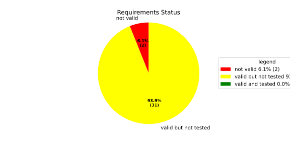
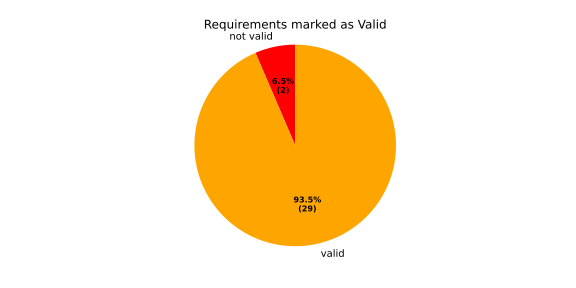
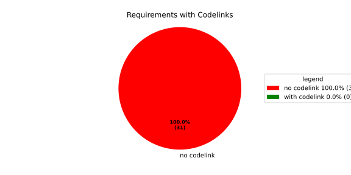
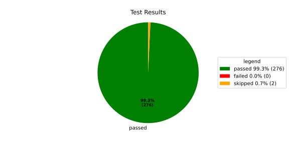
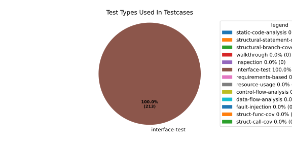
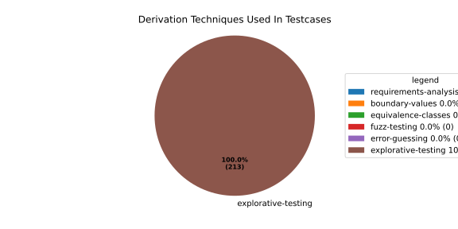

Verification Statistics#
Overview#

In Detail#



Failed Tests
Hint: This table should be empty. Before a PR can be merged all tests have to be successful.
No needs passed the filters
Skipped / Disabled Tests
testcase |
Result |
Fully Verifies |
Partially Verifies |
Test Type |
Derivation Technique |
link |
|---|---|---|---|---|---|---|
ValidateRangeTest/4__RejectsValueAboveMax |
skipped |
interface-test |
explorative-testing |
|||
ValidateRangeTest/4__RejectsValueBelowMin |
skipped |
interface-test |
explorative-testing |
All passed Tests#
testcase |
Result |
Fully Verifies |
Partially Verifies |
Test Type |
Derivation Technique |
link |
|---|---|---|---|---|---|---|
AliveImplTest__DoesNotThrowWhenInterfacePathEnvVarIsSet |
passed |
interface-test |
explorative-testing |
testcase__AliveImplTest__DoesNotThrowWhenInterfacePathEnvVarIsSet_xpewu |
||
AliveImplTest__ReportCheckpointSafeWhenNotConnected |
passed |
interface-test |
explorative-testing |
testcase__AliveImplTest__ReportCheckpointSafeWhenNotConnected_ppvuc |
||
AliveImplTest__ThrowsWhenInterfacePathEnvVarIsNotSet |
passed |
interface-test |
explorative-testing |
testcase__AliveImplTest__ThrowsWhenInterfacePathEnvVarIsNotSet_ekxfw |
||
AliveSupervisionTest__AliveDebouncesThroughFailedBeforeExpired |
passed |
interface-test |
explorative-testing |
testcase__AliveSupervisionTest__AliveDebouncesThroughFailedBeforeExpired_mlnbe |
||
AliveSupervisionTest__AliveReportsEnqueueFailureWhenRingBufferFull |
passed |
interface-test |
explorative-testing |
testcase__AliveSupervisionTest__AliveReportsEnqueueFailureWhenRingBufferFull_byhrd |
||
AliveSupervisionTest__AliveStaysOkWithCorrectHeartbeats |
passed |
interface-test |
explorative-testing |
testcase__AliveSupervisionTest__AliveStaysOkWithCorrectHeartbeats_vekof |
||
AliveSupervisionTest__AliveTransitionsOkToExpiredOnMissingHeartbeat |
passed |
interface-test |
explorative-testing |
testcase__AliveSupervisionTest__AliveTransitionsOkToExpiredOnMissingHeartbeat_jymxo |
||
AliveSupervisionTest__DeactivatesOnProcessCrash |
passed |
interface-test |
explorative-testing |
testcase__AliveSupervisionTest__DeactivatesOnProcessCrash_ypejs |
||
AliveSupervisionTest__DeactivatesOnProcessSigterm |
passed |
interface-test |
explorative-testing |
testcase__AliveSupervisionTest__DeactivatesOnProcessSigterm_hzaal |
||
AliveSupervisionTest__IgnoresIrrelevantProcessStates |
passed |
interface-test |
explorative-testing |
testcase__AliveSupervisionTest__IgnoresIrrelevantProcessStates_aolvb |
||
AliveSupervisionTest__MaxIndicationViolationExpires |
passed |
interface-test |
explorative-testing |
testcase__AliveSupervisionTest__MaxIndicationViolationExpires_whhhi |
||
AliveSupervisionTest__ReactivatesAfterCrash |
passed |
interface-test |
explorative-testing |
|||
ApplicationTypes/ApplicationTypeTest__ConvertsToExpectedValue/Native |
passed |
interface-test |
explorative-testing |
testcase__ApplicationTypes/ApplicationTypeTest__ConvertsToExpectedValue/Native_yxxcz |
||
ApplicationTypes/ApplicationTypeTest__ConvertsToExpectedValue/Reporting |
passed |
interface-test |
explorative-testing |
testcase__ApplicationTypes/ApplicationTypeTest__ConvertsToExpectedValue/Reporting_wcfwr |
||
ApplicationTypes/ApplicationTypeTest__ConvertsToExpectedValue/ReportingAndSupervised |
passed |
interface-test |
explorative-testing |
testcase__ApplicationTypes/ApplicationTypeTest__ConvertsToExpectedValue/ReportingAndSupervised_yxgad |
||
ApplicationTypes/ApplicationTypeTest__ConvertsToExpectedValue/StateManager |
passed |
interface-test |
explorative-testing |
testcase__ApplicationTypes/ApplicationTypeTest__ConvertsToExpectedValue/StateManager_ivuzc |
||
ConverterTest__ConvertAliveSupervisionMissingCycleReturnsError |
passed |
interface-test |
explorative-testing |
testcase__ConverterTest__ConvertAliveSupervisionMissingCycleReturnsError_bifzg |
||
ConverterTest__ConvertAliveSupervisionNullReturnsDefault |
passed |
interface-test |
explorative-testing |
testcase__ConverterTest__ConvertAliveSupervisionNullReturnsDefault_clyua |
||
ConverterTest__ConvertAliveSupervisionValid |
passed |
interface-test |
explorative-testing |
|||
ConverterTest__ConvertApplicationProfileMissingSelfTerminatingReturnsError |
passed |
interface-test |
explorative-testing |
testcase__ConverterTest__ConvertApplicationProfileMissingSelfTerminatingReturnsError_zddjb |
||
ConverterTest__ConvertApplicationProfileMissingTypeReturnsError |
passed |
interface-test |
explorative-testing |
testcase__ConverterTest__ConvertApplicationProfileMissingTypeReturnsError_zrfcs |
||
ConverterTest__ConvertApplicationProfileValid |
passed |
interface-test |
explorative-testing |
testcase__ConverterTest__ConvertApplicationProfileValid_oohxq |
||
ConverterTest__ConvertComponentAliveSupervisionBothIndicationsAbsentReturnsError |
passed |
interface-test |
explorative-testing |
testcase__ConverterTest__ConvertComponentAliveSupervisionBothIndicationsAbsentReturnsError_gvtfi |
||
ConverterTest__ConvertComponentAliveSupervisionMissingReportingCycleReturnsError |
passed |
interface-test |
explorative-testing |
testcase__ConverterTest__ConvertComponentAliveSupervisionMissingReportingCycleReturnsError_ajymy |
||
ConverterTest__ConvertComponentAliveSupervisionMissingToleranceReturnsError |
passed |
interface-test |
explorative-testing |
testcase__ConverterTest__ConvertComponentAliveSupervisionMissingToleranceReturnsError_lgrhj |
||
ConverterTest__ConvertComponentAliveSupervisionNullReturnsDefault |
passed |
interface-test |
explorative-testing |
testcase__ConverterTest__ConvertComponentAliveSupervisionNullReturnsDefault_xhaus |
||
ConverterTest__ConvertComponentAliveSupervisionOnlyMaxIndicationsPresent |
passed |
interface-test |
explorative-testing |
testcase__ConverterTest__ConvertComponentAliveSupervisionOnlyMaxIndicationsPresent_smwht |
||
ConverterTest__ConvertComponentAliveSupervisionOnlyMinIndicationsPresent |
passed |
interface-test |
explorative-testing |
testcase__ConverterTest__ConvertComponentAliveSupervisionOnlyMinIndicationsPresent_ybbrr |
||
ConverterTest__ConvertComponentAliveSupervisionValid |
passed |
interface-test |
explorative-testing |
testcase__ConverterTest__ConvertComponentAliveSupervisionValid_ijedh |
||
ConverterTest__ConvertComponentsValid |
passed |
interface-test |
explorative-testing |
|||
ConverterTest__ConvertComponentsWithInvalidComponentReturnsError |
passed |
interface-test |
explorative-testing |
testcase__ConverterTest__ConvertComponentsWithInvalidComponentReturnsError_wridc |
||
ConverterTest__ConvertComponentValid |
passed |
interface-test |
explorative-testing |
|||
ConverterTest__ConvertDeploymentConfigMissingReadyTimeoutReturnsError |
passed |
interface-test |
explorative-testing |
testcase__ConverterTest__ConvertDeploymentConfigMissingReadyTimeoutReturnsError_ljzfl |
||
ConverterTest__ConvertDeploymentConfigMissingShutdownTimeoutReturnsError |
passed |
interface-test |
explorative-testing |
testcase__ConverterTest__ConvertDeploymentConfigMissingShutdownTimeoutReturnsError_vyqye |
||
ConverterTest__ConvertDeploymentConfigValid |
passed |
interface-test |
explorative-testing |
|||
ConverterTest__ConvertEnvironmentalVariables |
passed |
interface-test |
explorative-testing |
testcase__ConverterTest__ConvertEnvironmentalVariables_fnhgo |
||
ConverterTest__ConvertEnvironmentalVariablesNullReturnsEmpty |
passed |
interface-test |
explorative-testing |
testcase__ConverterTest__ConvertEnvironmentalVariablesNullReturnsEmpty_vglrx |
||
ConverterTest__ConvertFallbackRunTargetMissingTimeoutReturnsError |
passed |
interface-test |
explorative-testing |
testcase__ConverterTest__ConvertFallbackRunTargetMissingTimeoutReturnsError_aevly |
||
ConverterTest__ConvertFallbackRunTargetValid |
passed |
interface-test |
explorative-testing |
testcase__ConverterTest__ConvertFallbackRunTargetValid_nexxj |
||
ConverterTest__ConvertReadyConditionMissingProcessStateReturnsError |
passed |
interface-test |
explorative-testing |
testcase__ConverterTest__ConvertReadyConditionMissingProcessStateReturnsError_ileav |
||
ConverterTest__ConvertReadyConditionValid |
passed |
interface-test |
explorative-testing |
|||
ConverterTest__ConvertRestartActionMissingFieldsReturnsError |
passed |
interface-test |
explorative-testing |
testcase__ConverterTest__ConvertRestartActionMissingFieldsReturnsError_aapjb |
||
ConverterTest__ConvertRestartActionNullReturnsNullopt |
passed |
interface-test |
explorative-testing |
testcase__ConverterTest__ConvertRestartActionNullReturnsNullopt_ifvyd |
||
ConverterTest__ConvertRestartActionValid |
passed |
interface-test |
explorative-testing |
|||
ConverterTest__ConvertRunTargetMissingTransitionTimeoutReturnsError |
passed |
interface-test |
explorative-testing |
testcase__ConverterTest__ConvertRunTargetMissingTransitionTimeoutReturnsError_ynekv |
||
ConverterTest__ConvertRunTargetsValid |
passed |
interface-test |
explorative-testing |
|||
ConverterTest__ConvertRunTargetsWithInvalidRunTargetReturnsError |
passed |
interface-test |
explorative-testing |
testcase__ConverterTest__ConvertRunTargetsWithInvalidRunTargetReturnsError_ldlox |
||
ConverterTest__ConvertRunTargetValid |
passed |
interface-test |
explorative-testing |
|||
ConverterTest__ConvertSandboxMissingGidReturnsError |
passed |
interface-test |
explorative-testing |
testcase__ConverterTest__ConvertSandboxMissingGidReturnsError_veeel |
||
ConverterTest__ConvertSandboxMissingSchedulingPolicyReturnsError |
passed |
interface-test |
explorative-testing |
testcase__ConverterTest__ConvertSandboxMissingSchedulingPolicyReturnsError_pkfts |
||
ConverterTest__ConvertSandboxMissingSchedulingPriorityReturnsError |
passed |
interface-test |
explorative-testing |
testcase__ConverterTest__ConvertSandboxMissingSchedulingPriorityReturnsError_xzdho |
||
ConverterTest__ConvertSandboxMissingUidReturnsError |
passed |
interface-test |
explorative-testing |
testcase__ConverterTest__ConvertSandboxMissingUidReturnsError_ogfku |
||
ConverterTest__ConvertSandboxSupplementaryGidOutOfRangeReturnsError |
passed |
interface-test |
explorative-testing |
testcase__ConverterTest__ConvertSandboxSupplementaryGidOutOfRangeReturnsError_zavpx |
||
ConverterTest__ConvertSandboxUidOutOfRangeReturnsError |
passed |
interface-test |
explorative-testing |
testcase__ConverterTest__ConvertSandboxUidOutOfRangeReturnsError_mcuaf |
||
ConverterTest__ConvertSandboxValid |
passed |
interface-test |
explorative-testing |
|||
ConverterTest__ConvertSwitchRunTargetActionNullReturnsNullopt |
passed |
interface-test |
explorative-testing |
testcase__ConverterTest__ConvertSwitchRunTargetActionNullReturnsNullopt_zmitx |
||
ConverterTest__ConvertSwitchRunTargetActionValid |
passed |
interface-test |
explorative-testing |
testcase__ConverterTest__ConvertSwitchRunTargetActionValid_tdklr |
||
ConverterTest__ConvertWatchdogMissingDeactivateReturnsError |
passed |
interface-test |
explorative-testing |
testcase__ConverterTest__ConvertWatchdogMissingDeactivateReturnsError_gzwjt |
||
ConverterTest__ConvertWatchdogMissingMagicCloseReturnsError |
passed |
interface-test |
explorative-testing |
testcase__ConverterTest__ConvertWatchdogMissingMagicCloseReturnsError_gexxk |
||
ConverterTest__ConvertWatchdogMissingMaxTimeoutReturnsError |
passed |
interface-test |
explorative-testing |
testcase__ConverterTest__ConvertWatchdogMissingMaxTimeoutReturnsError_lffxm |
||
ConverterTest__ConvertWatchdogNullReturnsNullopt |
passed |
interface-test |
explorative-testing |
testcase__ConverterTest__ConvertWatchdogNullReturnsNullopt_irsdk |
||
ConverterTest__ConvertWatchdogValid |
passed |
interface-test |
explorative-testing |
|||
DeadlineFixture__Start_AlreadyRunning |
passed |
interface-test |
explorative-testing |
|||
DeadlineFixture__Start_Succeeds |
passed |
interface-test |
explorative-testing |
|||
DeadlineMonitorBuilderFixture__AddDeadline_Succeeds |
passed |
interface-test |
explorative-testing |
testcase__DeadlineMonitorBuilderFixture__AddDeadline_Succeeds_nagke |
||
DeadlineMonitorBuilderFixture__New_Succeeds |
passed |
interface-test |
explorative-testing |
|||
DeadlineMonitorFixture__GetDeadline_Succeeds |
passed |
interface-test |
explorative-testing |
testcase__DeadlineMonitorFixture__GetDeadline_Succeeds_tmltf |
||
DeadlineMonitorFixture__GetDeadline_Unknown |
passed |
interface-test |
explorative-testing |
|||
EnumConversionTest__ConvertSchedulingPolicyUnsupported |
passed |
interface-test |
explorative-testing |
testcase__EnumConversionTest__ConvertSchedulingPolicyUnsupported_iavqm |
||
EnvironmentTest__AddIncreasesSize |
passed |
interface-test |
explorative-testing |
|||
EnvironmentTest__DefaultConstructedIsEmpty |
passed |
interface-test |
explorative-testing |
|||
EnvironmentTest__EmptyEnvironmentEnvpIsNullTerminated |
passed |
interface-test |
explorative-testing |
testcase__EnvironmentTest__EmptyEnvironmentEnvpIsNullTerminated_wwumw |
||
EnvironmentTest__EnvpReturnsNullTerminatedArray |
passed |
interface-test |
explorative-testing |
testcase__EnvironmentTest__EnvpReturnsNullTerminatedArray_aubkv |
||
EnvironmentTest__EnvpWithMultipleEntries |
passed |
interface-test |
explorative-testing |
|||
EnvironmentTest__MoveAssignmentPreservesEntries |
passed |
interface-test |
explorative-testing |
testcase__EnvironmentTest__MoveAssignmentPreservesEntries_vkydj |
||
EnvironmentTest__MoveConstructorPreservesEntries |
passed |
interface-test |
explorative-testing |
testcase__EnvironmentTest__MoveConstructorPreservesEntries_upclt |
||
EnvironmentTest__RangeBasedForLoopWorks |
passed |
interface-test |
explorative-testing |
|||
EnvironmentTest__ReserveAndAddAvoidReallocation |
passed |
interface-test |
explorative-testing |
testcase__EnvironmentTest__ReserveAndAddAvoidReallocation_lgzmu |
||
EnvironmentTest__SsoLengthStringSurvivesReallocation |
passed |
interface-test |
explorative-testing |
testcase__EnvironmentTest__SsoLengthStringSurvivesReallocation_jfmtl |
||
EnvironmentVariableTest__CStrReturnsKeyEqualsValue |
passed |
interface-test |
explorative-testing |
testcase__EnvironmentVariableTest__CStrReturnsKeyEqualsValue_rkwan |
||
EnvironmentVariableTest__EmptyValue |
passed |
interface-test |
explorative-testing |
|||
EnvironmentVariableTest__KeyAndValueAreAccessible |
passed |
interface-test |
explorative-testing |
testcase__EnvironmentVariableTest__KeyAndValueAreAccessible_kcrth |
||
EnvironmentVariableTest__ValueContainingEquals |
passed |
interface-test |
explorative-testing |
testcase__EnvironmentVariableTest__ValueContainingEquals_apzgz |
||
ExecErrorDomainTest__AllKnownCodesHaveDistinctMessages |
passed |
interface-test |
explorative-testing |
testcase__ExecErrorDomainTest__AllKnownCodesHaveDistinctMessages_qpoka |
||
ExecErrorDomainTest__AllKnownCodesReturnNonEmptyMessage |
passed |
interface-test |
explorative-testing |
testcase__ExecErrorDomainTest__AllKnownCodesReturnNonEmptyMessage_bawzg |
||
ExecErrorDomainTest__UnknownCodeReturnsNonEmptyMessage |
passed |
interface-test |
explorative-testing |
testcase__ExecErrorDomainTest__UnknownCodeReturnsNonEmptyMessage_kkwpr |
||
FlatbufferConfigLoaderTest__CorruptedBufferReturnsInvalidFormat |
passed |
interface-test |
explorative-testing |
testcase__FlatbufferConfigLoaderTest__CorruptedBufferReturnsInvalidFormat_twyac |
||
FlatbufferConfigLoaderTest__LoadAliveSupervision |
passed |
interface-test |
explorative-testing |
testcase__FlatbufferConfigLoaderTest__LoadAliveSupervision_hhuux |
||
FlatbufferConfigLoaderTest__LoadBufferFailsWithGenericErrorReturnsGeneralError |
passed |
interface-test |
explorative-testing |
testcase__FlatbufferConfigLoaderTest__LoadBufferFailsWithGenericErrorReturnsGeneralError_kmatm |
||
FlatbufferConfigLoaderTest__LoadBufferFailsWithNoSuchFileReturnsFileNotFound |
passed |
interface-test |
explorative-testing |
testcase__FlatbufferConfigLoaderTest__LoadBufferFailsWithNoSuchFileReturnsFileNotFound_yzlra |
||
FlatbufferConfigLoaderTest__LoadBufferFailsWithPermissionDeniedReturnsInsufficientPermission |
passed |
interface-test |
explorative-testing |
|||
FlatbufferConfigLoaderTest__LoadComponentAliveSupervision |
passed |
interface-test |
explorative-testing |
testcase__FlatbufferConfigLoaderTest__LoadComponentAliveSupervision_fwfad |
||
FlatbufferConfigLoaderTest__LoadEnvironmentalVariables |
passed |
interface-test |
explorative-testing |
testcase__FlatbufferConfigLoaderTest__LoadEnvironmentalVariables_wsosu |
||
FlatbufferConfigLoaderTest__LoadFallbackRunTarget |
passed |
interface-test |
explorative-testing |
testcase__FlatbufferConfigLoaderTest__LoadFallbackRunTarget_wduqm |
||
FlatbufferConfigLoaderTest__LoadMinimalConfig |
passed |
interface-test |
explorative-testing |
testcase__FlatbufferConfigLoaderTest__LoadMinimalConfig_hdkck |
||
FlatbufferConfigLoaderTest__LoadMultipleComponents |
passed |
interface-test |
explorative-testing |
testcase__FlatbufferConfigLoaderTest__LoadMultipleComponents_abpom |
||
FlatbufferConfigLoaderTest__LoadRestartRecoveryAction |
passed |
interface-test |
explorative-testing |
testcase__FlatbufferConfigLoaderTest__LoadRestartRecoveryAction_wyfqg |
||
FlatbufferConfigLoaderTest__LoadRunTargets |
passed |
interface-test |
explorative-testing |
|||
FlatbufferConfigLoaderTest__LoadSandbox |
passed |
interface-test |
explorative-testing |
|||
FlatbufferConfigLoaderTest__LoadSingleComponent |
passed |
interface-test |
explorative-testing |
testcase__FlatbufferConfigLoaderTest__LoadSingleComponent_yidty |
||
FlatbufferConfigLoaderTest__LoadSwitchRunTargetAction |
passed |
interface-test |
explorative-testing |
testcase__FlatbufferConfigLoaderTest__LoadSwitchRunTargetAction_uchgp |
||
FlatbufferConfigLoaderTest__LoadWatchdog |
passed |
interface-test |
explorative-testing |
|||
FlatbufferConfigLoaderTest__MissingSchemaVersionReturnsInvalidFormat |
passed |
interface-test |
explorative-testing |
testcase__FlatbufferConfigLoaderTest__MissingSchemaVersionReturnsInvalidFormat_qqmfn |
||
FlatbufferConfigLoaderTest__OptionalReadyConditionAbsent |
passed |
interface-test |
explorative-testing |
testcase__FlatbufferConfigLoaderTest__OptionalReadyConditionAbsent_lhddx |
||
FlatbufferConfigLoaderTest__OptionalWatchdogAbsent |
passed |
interface-test |
explorative-testing |
testcase__FlatbufferConfigLoaderTest__OptionalWatchdogAbsent_pkhkp |
||
FlatbufferConfigLoaderTest__WrongSchemaVersionReturnsUnsupportedVersion |
passed |
interface-test |
explorative-testing |
testcase__FlatbufferConfigLoaderTest__WrongSchemaVersionReturnsUnsupportedVersion_zrbjv |
||
HealthMonitor__GetDeadlineMonitor_Available |
passed |
|||||
HealthMonitor__GetDeadlineMonitor_Taken |
passed |
|||||
HealthMonitor__GetDeadlineMonitor_Unknown |
passed |
|||||
HealthMonitor__GetHeartbeatMonitor_Available |
passed |
testcase__HealthMonitor__GetHeartbeatMonitor_Available_aacat |
||||
HealthMonitor__GetHeartbeatMonitor_Taken |
passed |
|||||
HealthMonitor__GetHeartbeatMonitor_Unknown |
passed |
|||||
HealthMonitor__GetLogicMonitor_Available |
passed |
|||||
HealthMonitor__GetLogicMonitor_Taken |
passed |
|||||
HealthMonitor__GetLogicMonitor_Unknown |
passed |
|||||
HealthMonitor__Start_MonitorsNotTaken |
passed |
|||||
HealthMonitor__Start_Succeeds |
passed |
|||||
HealthMonitorBuilderFixture__Build_InvalidCycles |
passed |
interface-test |
explorative-testing |
testcase__HealthMonitorBuilderFixture__Build_InvalidCycles_pdigk |
||
HealthMonitorBuilderFixture__Build_NoMonitors |
passed |
interface-test |
explorative-testing |
testcase__HealthMonitorBuilderFixture__Build_NoMonitors_ktcve |
||
HealthMonitorBuilderFixture__Build_Succeeds |
passed |
interface-test |
explorative-testing |
|||
HealthMonitorBuilderFixture__New_Succeeds |
passed |
interface-test |
explorative-testing |
|||
HealthMonitorTest__Integrated |
passed |
interface-test |
explorative-testing |
|||
HeartbeatMonitor__Heartbeat_Succeeds |
passed |
interface-test |
explorative-testing |
|||
HeartbeatMonitorBuilder__New_Succeeds |
passed |
interface-test |
explorative-testing |
|||
IdentifierHashTest__IdentifierHash_default_created |
passed |
interface-test |
explorative-testing |
testcase__IdentifierHashTest__IdentifierHash_default_created_yhhvi |
||
IdentifierHashTest__IdentifierHash_EqualityOperators |
passed |
interface-test |
explorative-testing |
testcase__IdentifierHashTest__IdentifierHash_EqualityOperators_nnsuj |
||
IdentifierHashTest__IdentifierHash_invalid_hash_no_string_representation |
passed |
interface-test |
explorative-testing |
testcase__IdentifierHashTest__IdentifierHash_invalid_hash_no_string_representation_rxowr |
||
IdentifierHashTest__IdentifierHash_LessThanOperator |
passed |
interface-test |
explorative-testing |
testcase__IdentifierHashTest__IdentifierHash_LessThanOperator_rnbax |
||
IdentifierHashTest__IdentifierHash_no_dangling_pointer_after_source_string_dies |
passed |
interface-test |
explorative-testing |
testcase__IdentifierHashTest__IdentifierHash_no_dangling_pointer_after_source_string_dies_qsjin |
||
IdentifierHashTest__IdentifierHash_with_string_created |
passed |
interface-test |
explorative-testing |
testcase__IdentifierHashTest__IdentifierHash_with_string_created_aygdm |
||
IdentifierHashTest__IdentifierHash_with_string_view_created |
passed |
interface-test |
explorative-testing |
testcase__IdentifierHashTest__IdentifierHash_with_string_view_created_dbpol |
||
LogicMonitorBuilderFixture__AddState_Succeeds |
passed |
interface-test |
explorative-testing |
testcase__LogicMonitorBuilderFixture__AddState_Succeeds_axdxj |
||
LogicMonitorBuilderFixture__New_Succeeds |
passed |
interface-test |
explorative-testing |
|||
LogicMonitorFixture__State_Invalid |
passed |
interface-test |
explorative-testing |
|||
LogicMonitorFixture__State_Succeeds |
passed |
interface-test |
explorative-testing |
|||
LogicMonitorFixture__Transition_Invalid |
passed |
interface-test |
explorative-testing |
|||
LogicMonitorFixture__Transition_Succeeds |
passed |
interface-test |
explorative-testing |
|||
LogicMonitorFixture__Transition_Unknown |
passed |
interface-test |
explorative-testing |
|||
MonitorIfDaemonTest__Active_CheckpointDataForwarded |
passed |
interface-test |
explorative-testing |
testcase__MonitorIfDaemonTest__Active_CheckpointDataForwarded_evumz |
||
MonitorIfDaemonTest__Active_FutureTimestamp_NotForwardedInCurrentCycle |
passed |
interface-test |
explorative-testing |
testcase__MonitorIfDaemonTest__Active_FutureTimestamp_NotForwardedInCurrentCycle_oycau |
||
MonitorIfDaemonTest__Active_FutureTimestampCheckpoint_ConsumedInLaterCycle |
passed |
interface-test |
explorative-testing |
testcase__MonitorIfDaemonTest__Active_FutureTimestampCheckpoint_ConsumedInLaterCycle_veyyy |
||
MonitorIfDaemonTest__Active_MultipleCheckpointsInOneCycle_AllForwarded |
passed |
interface-test |
explorative-testing |
testcase__MonitorIfDaemonTest__Active_MultipleCheckpointsInOneCycle_AllForwarded_gmbms |
||
MonitorIfDaemonTest__Active_NonMatchingCheckpointId_NotForwarded |
passed |
interface-test |
explorative-testing |
testcase__MonitorIfDaemonTest__Active_NonMatchingCheckpointId_NotForwarded_bohck |
||
MonitorIfDaemonTest__Active_OverflowDetected_TransitionsToInactiveOverflow |
passed |
interface-test |
explorative-testing |
testcase__MonitorIfDaemonTest__Active_OverflowDetected_TransitionsToInactiveOverflow_ovitk |
||
MonitorIfDaemonTest__Active_TwoAttachedCheckpoints_RoutedByCheckpointId |
passed |
interface-test |
explorative-testing |
testcase__MonitorIfDaemonTest__Active_TwoAttachedCheckpoints_RoutedByCheckpointId_skqhd |
||
MonitorIfDaemonTest__GetInterfaceName_ReturnsNameGivenAtConstruction |
passed |
interface-test |
explorative-testing |
testcase__MonitorIfDaemonTest__GetInterfaceName_ReturnsNameGivenAtConstruction_iaemz |
||
MonitorIfDaemonTest__InactiveOverflow_NoProcessRestart_DoesNotRepeatNotification |
passed |
interface-test |
explorative-testing |
testcase__MonitorIfDaemonTest__InactiveOverflow_NoProcessRestart_DoesNotRepeatNotification_gdbxg |
||
MonitorIfDaemonTest__InactiveOverflow_ProcessRestartFlag_ClearedAfterNotification |
passed |
interface-test |
explorative-testing |
testcase__MonitorIfDaemonTest__InactiveOverflow_ProcessRestartFlag_ClearedAfterNotification_pqfyy |
||
MonitorIfDaemonTest__InactiveOverflow_ProcessRestarts_PushesOverflowNotificationAgain |
passed |
interface-test |
explorative-testing |
|||
MonitorIfDaemonTest__InitiallyInactive_CheckForNewData_DoesNotNotifyCheckpoint |
passed |
interface-test |
explorative-testing |
testcase__MonitorIfDaemonTest__InitiallyInactive_CheckForNewData_DoesNotNotifyCheckpoint_wjrfl |
||
MonitorIfDaemonTest__ProcessOff_DeactivatesMonitor_NoFurtherDataForwarded |
passed |
interface-test |
explorative-testing |
testcase__MonitorIfDaemonTest__ProcessOff_DeactivatesMonitor_NoFurtherDataForwarded_uialh |
||
MonitorIfDaemonTest__ProcessOffBeforeActivation_RemainsInactive |
passed |
interface-test |
explorative-testing |
testcase__MonitorIfDaemonTest__ProcessOffBeforeActivation_RemainsInactive_kzzyy |
||
MonitorIfDaemonTest__ProcessRunning_ActivatesMonitorOnNextCheckForNewData |
passed |
interface-test |
explorative-testing |
testcase__MonitorIfDaemonTest__ProcessRunning_ActivatesMonitorOnNextCheckForNewData_fkkmk |
||
MonitorIfDaemonTest__ProcessStarting_AlsoActivatesMonitor |
passed |
interface-test |
explorative-testing |
testcase__MonitorIfDaemonTest__ProcessStarting_AlsoActivatesMonitor_xdkbg |
||
MPMCConcurrentQueueTest_Basic__LvaluePushCopiesItem |
passed |
testcase__MPMCConcurrentQueueTest_Basic__LvaluePushCopiesItem_oysfc |
||||
MPMCConcurrentQueueTest_Basic__PopReturnsNulloptOnSemaphoreWaitFailure |
passed |
testcase__MPMCConcurrentQueueTest_Basic__PopReturnsNulloptOnSemaphoreWaitFailure_rgznm |
||||
MPMCConcurrentQueueTest_Basic__PushAndPopPreservesOrder |
passed |
testcase__MPMCConcurrentQueueTest_Basic__PushAndPopPreservesOrder_aijdb |
||||
MPMCConcurrentQueueTest_Basic__PushAndPopSingleItem |
passed |
testcase__MPMCConcurrentQueueTest_Basic__PushAndPopSingleItem_jrxwz |
||||
MPMCConcurrentQueueTest_Basic__RvaluePushWorksWithMoveOnlyType |
passed |
testcase__MPMCConcurrentQueueTest_Basic__RvaluePushWorksWithMoveOnlyType_cxxaj |
||||
MPMCConcurrentQueueTest_Blocking__PopBlocksUntilItemAvailable |
passed |
testcase__MPMCConcurrentQueueTest_Blocking__PopBlocksUntilItemAvailable_ttwcx |
||||
MPMCConcurrentQueueTest_Blocking__PushBlocksWhenFull |
passed |
testcase__MPMCConcurrentQueueTest_Blocking__PushBlocksWhenFull_ecujf |
||||
MPMCConcurrentQueueTest_Blocking__StopUnblocksBlockedConsumer |
passed |
testcase__MPMCConcurrentQueueTest_Blocking__StopUnblocksBlockedConsumer_snzyr |
||||
MPMCConcurrentQueueTest_Blocking__StopUnblocksBlockedProducer |
passed |
testcase__MPMCConcurrentQueueTest_Blocking__StopUnblocksBlockedProducer_inddu |
||||
MPMCConcurrentQueueTest_MPMC__AllItemsDelivered |
passed |
testcase__MPMCConcurrentQueueTest_MPMC__AllItemsDelivered_ztjqe |
||||
MPMCConcurrentQueueTest_Stop__ItemsAreDroppedAfterStop |
passed |
testcase__MPMCConcurrentQueueTest_Stop__ItemsAreDroppedAfterStop_ragzw |
||||
MPMCConcurrentQueueTest_Stop__PopReturnsNulloptWhenStoppedAndEmpty |
passed |
testcase__MPMCConcurrentQueueTest_Stop__PopReturnsNulloptWhenStoppedAndEmpty_cevga |
||||
MPMCConcurrentQueueTest_Stop__PushReturnsFalseAfterStop |
passed |
testcase__MPMCConcurrentQueueTest_Stop__PushReturnsFalseAfterStop_qqnhw |
||||
MPMCConcurrentQueueTest_Timeout__PushWithTimeoutReturnsFalseWhenFull |
passed |
testcase__MPMCConcurrentQueueTest_Timeout__PushWithTimeoutReturnsFalseWhenFull_aeips |
||||
MPMCConcurrentQueueTest_Timeout__PushWithTimeoutSucceedsWhenSlotAvailable |
passed |
testcase__MPMCConcurrentQueueTest_Timeout__PushWithTimeoutSucceedsWhenSlotAvailable_klzpo |
||||
OsHandlerTest__WaitReturnsError_OsHandlerSleepsAndDoesNotCallFindTerminated |
passed |
interface-test |
explorative-testing |
testcase__OsHandlerTest__WaitReturnsError_OsHandlerSleepsAndDoesNotCallFindTerminated_cibtr |
||
OsHandlerTest__WaitReturnsErrorThenProcessId_HandlerRecoversAndInvokesCallback |
passed |
interface-test |
explorative-testing |
testcase__OsHandlerTest__WaitReturnsErrorThenProcessId_HandlerRecoversAndInvokesCallback_nqstd |
||
OsHandlerTest__WaitReturnsProcessId_FindTerminatedIsCalled |
passed |
interface-test |
explorative-testing |
testcase__OsHandlerTest__WaitReturnsProcessId_FindTerminatedIsCalled_chlsq |
||
OsHandlerTest__WaitReturnsProcessIdBeforeRegistration_LaterRegistrationReceivesStoredTermination |
passed |
interface-test |
explorative-testing |
|||
OsHandlerTest__WaitReturnsUnknownPidWhenMapIsFull_OutOfResourcesPathDoesNotNotifyCallbacks |
passed |
interface-test |
explorative-testing |
|||
OsHandlerTest__WaitReturnsZeroPid_OsHandlerSleepsAndDoesNotCallFindTerminated |
passed |
interface-test |
explorative-testing |
testcase__OsHandlerTest__WaitReturnsZeroPid_OsHandlerSleepsAndDoesNotCallFindTerminated_rkttz |
||
ProcessStateClient_UT__ProcessStateClient_ConstructReceiver_Succeeds |
passed |
interface-test |
explorative-testing |
testcase__ProcessStateClient_UT__ProcessStateClient_ConstructReceiver_Succeeds_hodwy |
||
ProcessStateClient_UT__ProcessStateClient_QueueMaxNumberOfProcesses_Succeeds |
passed |
interface-test |
explorative-testing |
testcase__ProcessStateClient_UT__ProcessStateClient_QueueMaxNumberOfProcesses_Succeeds_qohom |
||
ProcessStateClient_UT__ProcessStateClient_QueueOneProcess_Succeeds |
passed |
interface-test |
explorative-testing |
testcase__ProcessStateClient_UT__ProcessStateClient_QueueOneProcess_Succeeds_tmzfz |
||
ProcessStateClient_UT__ProcessStateClient_QueueOneProcessTooMany_Fails |
passed |
interface-test |
explorative-testing |
testcase__ProcessStateClient_UT__ProcessStateClient_QueueOneProcessTooMany_Fails_sspoj |
||
ProcessStates/ProcessStateTest__ConvertsToExpectedValue/Running |
passed |
interface-test |
explorative-testing |
testcase__ProcessStates/ProcessStateTest__ConvertsToExpectedValue/Running_hinlr |
||
ProcessStates/ProcessStateTest__ConvertsToExpectedValue/Terminated |
passed |
interface-test |
explorative-testing |
testcase__ProcessStates/ProcessStateTest__ConvertsToExpectedValue/Terminated_zrytn |
||
RecoveryClientTest__FIFOOrdering |
passed |
interface-test |
explorative-testing |
|||
RecoveryClientTest__GetNextRequest |
passed |
interface-test |
explorative-testing |
|||
RecoveryClientTest__GetNextRequestEmpty |
passed |
interface-test |
explorative-testing |
|||
RecoveryClientTest__RingBufferFull |
passed |
interface-test |
explorative-testing |
|||
RecoveryClientTest__SendSingleRequest |
passed |
interface-test |
explorative-testing |
|||
RunTest__AsPosixProcessCreatesAndDestroysLifeCycleManager |
passed |
testcase__RunTest__AsPosixProcessCreatesAndDestroysLifeCycleManager_sooex |
||||
RunTest__AsPosixProcessForwardsConstructorArgsToApplication |
passed |
testcase__RunTest__AsPosixProcessForwardsConstructorArgsToApplication_dmeur |
||||
RunTest__AsPosixProcessForwardsNonZeroExitCode |
passed |
testcase__RunTest__AsPosixProcessForwardsNonZeroExitCode_lldqd |
||||
RunTest__AsPosixProcessPassesCorrectApplicationTypeToRun |
passed |
testcase__RunTest__AsPosixProcessPassesCorrectApplicationTypeToRun_ajqwz |
||||
RunTest__AsPosixProcessReturnsZeroExitCode |
passed |
|||||
RunTest__RunApplicationFreeFunctionDelegatesToAsPosixProcess |
passed |
testcase__RunTest__RunApplicationFreeFunctionDelegatesToAsPosixProcess_ccing |
||||
RunTest__RunConstructorPassesArgcArgvToApplicationContext |
passed |
testcase__RunTest__RunConstructorPassesArgcArgvToApplicationContext_agerd |
||||
SafeProcessMapTest__ConcurrentFindAndInsertFromMultipleThreads |
passed |
interface-test |
explorative-testing |
testcase__SafeProcessMapTest__ConcurrentFindAndInsertFromMultipleThreads_kzfyg |
||
SafeProcessMapTest__ConcurrentInsertAndFindFromMultipleThreads |
passed |
interface-test |
explorative-testing |
testcase__SafeProcessMapTest__ConcurrentInsertAndFindFromMultipleThreads_hnyqj |
||
SafeProcessMapTest__ConstructWithZeroCapacity |
passed |
interface-test |
explorative-testing |
testcase__SafeProcessMapTest__ConstructWithZeroCapacity_gjmqg |
||
SafeProcessMapTest__FindTerminatedInsertsEntryWhenPidNotPresent |
passed |
interface-test |
explorative-testing |
testcase__SafeProcessMapTest__FindTerminatedInsertsEntryWhenPidNotPresent_ixtlt |
||
SafeProcessMapTest__FindTerminatedMatchesExistingInsertAndCallsCallback |
passed |
interface-test |
explorative-testing |
testcase__SafeProcessMapTest__FindTerminatedMatchesExistingInsertAndCallsCallback_ehuzb |
||
SafeProcessMapTest__FindTerminatedSamePidTwiceYieldsUntilInsertResolves |
passed |
interface-test |
explorative-testing |
testcase__SafeProcessMapTest__FindTerminatedSamePidTwiceYieldsUntilInsertResolves_hsekx |
||
SafeProcessMapTest__FindTerminatedWithNegativePidReturnsInvalid |
passed |
interface-test |
explorative-testing |
testcase__SafeProcessMapTest__FindTerminatedWithNegativePidReturnsInvalid_dewoh |
||
SafeProcessMapTest__FindTerminatedWorksAtMaxTreeDepth |
passed |
interface-test |
explorative-testing |
testcase__SafeProcessMapTest__FindTerminatedWorksAtMaxTreeDepth_adtzi |
||
SafeProcessMapTest__InsertBeyondCapacityReturnsOutOfMemory |
passed |
interface-test |
explorative-testing |
testcase__SafeProcessMapTest__InsertBeyondCapacityReturnsOutOfMemory_qjnie |
||
SafeProcessMapTest__InsertIntoEmptyTreeReturnsZero |
passed |
interface-test |
explorative-testing |
testcase__SafeProcessMapTest__InsertIntoEmptyTreeReturnsZero_zfbaq |
||
SafeProcessMapTest__InsertMatchesExistingFindTerminatedEntry |
passed |
interface-test |
explorative-testing |
testcase__SafeProcessMapTest__InsertMatchesExistingFindTerminatedEntry_fuwrp |
||
SafeProcessMapTest__InsertMultipleNodesThenFindTerminatedRemovesAll |
passed |
interface-test |
explorative-testing |
testcase__SafeProcessMapTest__InsertMultipleNodesThenFindTerminatedRemovesAll_fvowh |
||
SafeProcessMapTest__InsertSamePidTwiceYieldsUntilFindTerminatedResolves |
passed |
interface-test |
explorative-testing |
testcase__SafeProcessMapTest__InsertSamePidTwiceYieldsUntilFindTerminatedResolves_wzwyb |
||
SchedulingPolicies/SchedulingPolicyTest__ConvertsToExpectedPosixValue/SCHED_FIFO |
passed |
interface-test |
explorative-testing |
testcase__SchedulingPolicies/SchedulingPolicyTest__ConvertsToExpectedPosixValue/SCHED_FIFO_soddq |
||
SchedulingPolicies/SchedulingPolicyTest__ConvertsToExpectedPosixValue/SCHED_OTHER |
passed |
interface-test |
explorative-testing |
testcase__SchedulingPolicies/SchedulingPolicyTest__ConvertsToExpectedPosixValue/SCHED_OTHER_oigmk |
||
SchedulingPolicies/SchedulingPolicyTest__ConvertsToExpectedPosixValue/SCHED_RR |
passed |
interface-test |
explorative-testing |
testcase__SchedulingPolicies/SchedulingPolicyTest__ConvertsToExpectedPosixValue/SCHED_RR_pcjci |
||
score/health_monitor/src/rust/test-510566969/tests |
passed |
testcase__score/health_monitor/src/rust/test-510566969/tests_kjjlw |
||||
score/health_monitor/src/rust/test-827801879/loom_tests |
passed |
testcase__score/health_monitor/src/rust/test-827801879/loom_tests_cpmix |
||||
SecondsToMsTest__ConvertsPositiveValue |
passed |
interface-test |
explorative-testing |
|||
SecondsToMsTest__ConvertsZero |
passed |
interface-test |
explorative-testing |
|||
SecondsToMsTest__RejectsNegativeValue |
passed |
interface-test |
explorative-testing |
|||
SecondsToMsTest__RejectsOverflow |
passed |
interface-test |
explorative-testing |
|||
SecondsToMsTest__RejectsSubMillisecond |
passed |
interface-test |
explorative-testing |
|||
StringHelperTest__ConvertGidVectorReturnsEmptyWhenNull |
passed |
interface-test |
explorative-testing |
testcase__StringHelperTest__ConvertGidVectorReturnsEmptyWhenNull_jmcsr |
||
StringHelperTest__ConvertStringVectorReturnsEmptyWhenNull |
passed |
interface-test |
explorative-testing |
testcase__StringHelperTest__ConvertStringVectorReturnsEmptyWhenNull_zsuvv |
||
StringHelperTest__SafeStringReturnsEmptyWhenNull |
passed |
interface-test |
explorative-testing |
testcase__StringHelperTest__SafeStringReturnsEmptyWhenNull_crelr |
||
StringHelperTest__SafeStringReturnsValueWhenNotNull |
passed |
interface-test |
explorative-testing |
testcase__StringHelperTest__SafeStringReturnsValueWhenNotNull_anbko |
||
test_complex_monitoring |
passed |
|||||
test_crash_on_startup |
passed |
|||||
test_incorrect_config_non_reporting |
passed |
|||||
test_process_crash_monitoring |
passed |
|||||
test_process_launch_args |
passed |
|||||
test_process_wrong_binary_failure |
passed |
|||||
test_recovery_action_complex_rep_failure |
passed |
|||||
test_recovery_action_simple_rep_failure |
passed |
|||||
test_smoke |
passed |
|||||
test_switch_run_target |
passed |
|||||
TimeRangeFixture__MinMax |
passed |
interface-test |
explorative-testing |
|||
TimeRangeFixture__New_InvalidOrder |
passed |
interface-test |
explorative-testing |
|||
TimeRangeFixture__New_Succeeds |
passed |
interface-test |
explorative-testing |
|||
ValidateRangeTest/0__AcceptsMaxBoundary |
passed |
interface-test |
explorative-testing |
|||
ValidateRangeTest/0__AcceptsMinBoundary |
passed |
interface-test |
explorative-testing |
|||
ValidateRangeTest/0__AcceptsZero |
passed |
interface-test |
explorative-testing |
|||
ValidateRangeTest/0__RejectsValueAboveMax |
passed |
interface-test |
explorative-testing |
|||
ValidateRangeTest/0__RejectsValueBelowMin |
passed |
interface-test |
explorative-testing |
|||
ValidateRangeTest/1__AcceptsMaxBoundary |
passed |
interface-test |
explorative-testing |
|||
ValidateRangeTest/1__AcceptsMinBoundary |
passed |
interface-test |
explorative-testing |
|||
ValidateRangeTest/1__AcceptsZero |
passed |
interface-test |
explorative-testing |
|||
ValidateRangeTest/1__RejectsValueAboveMax |
passed |
interface-test |
explorative-testing |
|||
ValidateRangeTest/1__RejectsValueBelowMin |
passed |
interface-test |
explorative-testing |
|||
ValidateRangeTest/2__AcceptsMaxBoundary |
passed |
interface-test |
explorative-testing |
|||
ValidateRangeTest/2__AcceptsMinBoundary |
passed |
interface-test |
explorative-testing |
|||
ValidateRangeTest/2__AcceptsZero |
passed |
interface-test |
explorative-testing |
|||
ValidateRangeTest/2__RejectsValueAboveMax |
passed |
interface-test |
explorative-testing |
|||
ValidateRangeTest/2__RejectsValueBelowMin |
passed |
interface-test |
explorative-testing |
|||
ValidateRangeTest/3__AcceptsMaxBoundary |
passed |
interface-test |
explorative-testing |
|||
ValidateRangeTest/3__AcceptsMinBoundary |
passed |
interface-test |
explorative-testing |
|||
ValidateRangeTest/3__AcceptsZero |
passed |
interface-test |
explorative-testing |
|||
ValidateRangeTest/3__RejectsValueAboveMax |
passed |
interface-test |
explorative-testing |
|||
ValidateRangeTest/3__RejectsValueBelowMin |
passed |
interface-test |
explorative-testing |
|||
ValidateRangeTest/4__AcceptsMaxBoundary |
passed |
interface-test |
explorative-testing |
|||
ValidateRangeTest/4__AcceptsMinBoundary |
passed |
interface-test |
explorative-testing |
|||
ValidateRangeTest/4__AcceptsZero |
passed |
interface-test |
explorative-testing |
Details About Testcases#


Test Log Files#
tests-report/tests/integration/process_simple_rep_failure/process_simple_rep_failure/test.log
exec ${PAGER:-/usr/bin/less} "$0" || exit 1
Executing tests from //tests/integration/process_simple_rep_failure:process_simple_rep_failure
-----------------------------------------------------------------------------
============================= test session starts ==============================
platform linux -- Python 3.12.12, pytest-9.0.3, pluggy-1.5.0
rootdir: /home/runner/.bazel/sandbox/processwrapper-sandbox/919/execroot/_main/bazel-out/k8-fastbuild/bin/tests/integration/process_simple_rep_failure/process_simple_rep_failure.runfiles/score_itf+
configfile: pytest.ini
collected 1 item
../score_itf+::test_recovery_action_simple_rep_failure
-------------------------------- live log setup --------------------------------
[2026-07-08 16:39:04.314] [INFO] [score.itf.plugins.docker] Executing custom image bootstrap command: tests/utils/environments/x86_64-linux/x86_64-linux.sh
[2026-07-08 16:39:05.094] [DEBUG] [docker.utils.config] Trying paths: ['/home/runner/.docker/config.json', '/home/runner/.dockercfg']
[2026-07-08 16:39:05.094] [DEBUG] [docker.utils.config] Found file at path: /home/runner/.docker/config.json
[2026-07-08 16:39:05.094] [DEBUG] [docker.auth] Found 'auths' section
[2026-07-08 16:39:05.095] [DEBUG] [docker.auth] Found entry (registry='https://index.docker.io/v1/', username='githubactions')
[2026-07-08 16:39:05.115] [DEBUG] [urllib3.connectionpool] http://localhost:None "GET /version HTTP/1.1" 200 823
[2026-07-08 16:39:05.188] [DEBUG] [urllib3.connectionpool] http://localhost:None "POST /v1.48/containers/create HTTP/1.1" 201 88
[2026-07-08 16:39:05.195] [DEBUG] [urllib3.connectionpool] http://localhost:None "GET /v1.48/containers/2839ee121cb6111e92a70d8d85b47dc6f8ec1bd8269b3c015db3146fd936f0c5/json HTTP/1.1" 200 None
[2026-07-08 16:39:05.352] [DEBUG] [urllib3.connectionpool] http://localhost:None "POST /v1.48/containers/2839ee121cb6111e92a70d8d85b47dc6f8ec1bd8269b3c015db3146fd936f0c5/start HTTP/1.1" 204 0
[2026-07-08 16:39:05.353] [DEBUG] [docker.utils.config] Trying paths: ['/home/runner/.docker/config.json', '/home/runner/.dockercfg']
[2026-07-08 16:39:05.353] [DEBUG] [docker.utils.config] Found file at path: /home/runner/.docker/config.json
[2026-07-08 16:39:05.353] [DEBUG] [docker.auth] Found 'auths' section
[2026-07-08 16:39:05.353] [DEBUG] [docker.auth] Found entry (registry='https://index.docker.io/v1/', username='githubactions')
[2026-07-08 16:39:05.373] [DEBUG] [urllib3.connectionpool] http://localhost:None "GET /version HTTP/1.1" 200 823
[2026-07-08 16:39:05.764] [INFO] [tests.utils.testing_utils.setup_test] Test case setup finished
-------------------------------- live log call ---------------------------------
[2026-07-08 16:39:05.916] [INFO] [launch_manager] 2026/07/08 16:39:05.8745913 3301055 000 ECU1 LM LM log debug verbose 1 Launch Manager Started !!!!
[2026-07-08 16:39:05.916] [INFO] [launch_manager] 2026/07/08 16:39:05.8745913 3301057 000 ECU1 LM LM log debug verbose 1 Loading LCM Configurations...
[2026-07-08 16:39:05.917] [INFO] [launch_manager] 2026/07/08 16:39:05.8745913 3301058 000 ECU1 LM LM log debug verbose 1 ECUCFG_ENV_VAR_ROOTFOLDER set successfully
[2026-07-08 16:39:05.919] [INFO] [launch_manager] 2026/07/08 16:39:05.8745913 3301059 000 ECU1 LM LM log debug verbose 5 FlatBufferParser::getModeGroupPgName: MainPG ( IdentifierHash: 18079021346025578134 )
[2026-07-08 16:39:05.919] [INFO] [launch_manager] 2026/07/08 16:39:05.8745913 3301059 000 ECU1 LM LM log debug verbose 5 FlatBufferParser::getModeGroupPgStateName: MainPG/Startup ( IdentifierHash: 10504605499600661529 )
[2026-07-08 16:39:05.932] [INFO] [launch_manager] 2026/07/08 16:39:05.8745913 3301060 000 ECU1 LM LM log debug verbose 5 FlatBufferParser::getModeGroupPgStateName: MainPG/run_target_app_does_report_krunning_in_time ( IdentifierHash: 11934981641920773349 )
[2026-07-08 16:39:05.932] [INFO] [launch_manager] 2026/07/08 16:39:05.8745914 3301060 000 ECU1 LM LM log debug verbose 5 FlatBufferParser::getModeGroupPgStateName: MainPG/run_target_app_does_not_report_krunning_in_time ( IdentifierHash: 7672161913816744053 )
[2026-07-08 16:39:05.932] [INFO] [launch_manager] 2026/07/08 16:39:05.8745914 3301060 000 ECU1 LM LM log debug verbose 5 FlatBufferParser::getModeGroupPgStateName: MainPG/Off ( IdentifierHash: 15281793077830264047 )
[2026-07-08 16:39:05.932] [INFO] [launch_manager] 2026/07/08 16:39:05.8745914 3301061 000 ECU1 LM LM log debug verbose 5 FlatBufferParser::getModeGroupPgStateName: MainPG/fallback_run_target ( IdentifierHash: 4059409696722237352 )
[2026-07-08 16:39:05.932] [INFO] [launch_manager] 2026/07/08 16:39:05.8745914 3301061 000 ECU1 LM LM log debug verbose 4 parseProcessConfigurations: Process index: 0 executable_path_: /tmp/tests/process_simple_rep_failure/control_client_mock
[2026-07-08 16:39:05.932] [INFO] [launch_manager] 2026/07/08 16:39:05.8745914 3301062 000 ECU1 LM LM log debug verbose 3 Process control_client_mock is Reporting execution state
[2026-07-08 16:39:05.933] [INFO] [launch_manager] 2026/07/08 16:39:05.8745914 3301062 000 ECU1 LM LM log debug verbose 1 Process is STATE_MANAGEMENT function Cluster Affiliation
[2026-07-08 16:39:05.933] [INFO] [launch_manager] 2026/07/08 16:39:05.8745914 3301062 000 ECU1 LM LM log debug verbose 3 Process control_client_mock is Self terminating
[2026-07-08 16:39:05.933] [INFO] [launch_manager] 2026/07/08 16:39:05.8745914 3301062 000 ECU1 LM LM log debug verbose 4 ParseProcessProcessGroup: id:::pg_name_: MainPG , pg_state_name_: MainPG/Startup
[2026-07-08 16:39:05.933] [INFO] [launch_manager] 2026/07/08 16:39:05.8745914 3301063 000 ECU1 LM LM log debug verbose 4 ParseProcessProcessGroup: id:::pg_name_: MainPG , pg_state_name_: MainPG/run_target_app_does_report_krunning_in_time
[2026-07-08 16:39:05.933] [INFO] [launch_manager] 2026/07/08 16:39:05.8745914 3301063 000 ECU1 LM LM log debug verbose 4 ParseProcessProcessGroup: id:::pg_name_: MainPG , pg_state_name_: MainPG/run_target_app_does_not_report_krunning_in_time
[2026-07-08 16:39:05.933] [INFO] [launch_manager] 2026/07/08 16:39:05.8745914 3301063 000 ECU1 LM LM log debug verbose 4 ParseProcessProcessGroup: id:::pg_name_: MainPG , pg_state_name_: MainPG/fallback_run_target
[2026-07-08 16:39:05.933] [INFO] [launch_manager] 2026/07/08 16:39:05.8745914 3301064 000 ECU1 LM LM log debug verbose 4 parseProcessConfigurations: Process index: 1 executable_path_: /tmp/tests/process_simple_rep_failure/process_simple_reporting
[2026-07-08 16:39:05.933] [INFO] [launch_manager] 2026/07/08 16:39:05.8745914 3301064 000 ECU1 LM LM log debug verbose 3 Process component_does_report_krunning_in_time is Reporting execution state
[2026-07-08 16:39:05.933] [INFO] [launch_manager] 2026/07/08 16:39:05.8745914 3301065 000 ECU1 LM LM log debug verbose 1 Process is NOT associated with any function Cluster Affiliation
[2026-07-08 16:39:05.934] [INFO] [launch_manager] 2026/07/08 16:39:05.8745914 3301065 000 ECU1 LM LM log debug verbose 3 Process component_does_report_krunning_in_time is Self terminating
[2026-07-08 16:39:05.935] [INFO] [launch_manager] 2026/07/08 16:39:05.8745914 3301065 000 ECU1 LM LM log debug verbose 4
[2026-07-08 16:39:05.938] [INFO] [launch_manager] ParseProcessProcessGroup: id:::pg_name_: MainPG , pg_state_name_: MainPG/run_target_app_does_report_krunning_in_time
[2026-07-08 16:39:05.943] [INFO] [launch_manager] 2026/07/08 16:39:05.8745916 3301081 000 ECU1 LM LM log debug verbose 4 parseProcessConfigurations: Process index: 2 executable_path_: /tmp/tests/process_simple_rep_failure/process_simple_reporting
[2026-07-08 16:39:05.943] [INFO] [launch_manager] 2026/07/08 16:39:05.8745916 3301082 000 ECU1 LM LM log debug verbose 3
[2026-07-08 16:39:05.944] [INFO] [launch_manager] Process component_does_not_report_krunning_in_time is Reporting execution state
[2026-07-08 16:39:05.944] [INFO] [launch_manager] 2026/07/08 16:39:05.8745916 3301083 000 ECU1 LM LM log debug verbose 1
[2026-07-08 16:39:05.944] [INFO] [launch_manager] Process is NOT associated with any function Cluster Affiliation
[2026-07-08 16:39:05.944] [INFO] [launch_manager] 2026/07/08 16:39:05.8745916 3301084 000 ECU1 LM LM log debug verbose 3 Process component_does_not_report_krunning_in_time is Self terminating
[2026-07-08 16:39:05.944] [INFO] [launch_manager] 2026/07/08 16:39:05.8745916 3301084 000 ECU1 LM LM log debug verbose 4 ParseProcessProcessGroup: id:::pg_name_: MainPG , pg_state_name_: MainPG/run_target_app_does_not_report_krunning_in_time
[2026-07-08 16:39:05.944] [INFO] [launch_manager] 2026/07/08 16:39:05.8745916 3301086 000 ECU1 LM LM log debug verbose 4 parseProcessConfigurations: Process index: 3 executable_path_: /tmp/tests/process_simple_rep_failure/verification_process
[2026-07-08 16:39:05.944] [INFO] [launch_manager] 2026/07/08 16:39:05.8745916 3301086 000 ECU1 LM LM log debug verbose 3 Process verification_component is NOT Reporting execution state
[2026-07-08 16:39:05.944] [INFO] [launch_manager] 2026/07/08 16:39:05.8745916 3301087 000 ECU1 LM LM log debug verbose 1
[2026-07-08 16:39:05.944] [INFO] [launch_manager] Process is NOT associated with any function Cluster Affiliation
[2026-07-08 16:39:05.945] [INFO] [launch_manager] 2026/07/08 16:39:05.8745916 3301088 000 ECU1 LM LM log debug verbose 3
[2026-07-08 16:39:05.945] [INFO] [launch_manager] Process verification_component is Self terminating
[2026-07-08 16:39:05.945] [INFO] [launch_manager] 2026/07/08 16:39:05.8745916 3301088 000 ECU1 LM LM log debug verbose 4 ParseProcessProcessGroup: id:::pg_name_: MainPG , pg_state_name_: MainPG/fallback_run_target
[2026-07-08 16:39:05.945] [INFO] [launch_manager] 2026/07/08 16:39:05.8745916 3301089 000 ECU1 LM LM log debug verbose 3
[2026-07-08 16:39:05.945] [INFO] [launch_manager] Loading SWCL Nr. 0 Succeeded
[2026-07-08 16:39:05.945] [INFO] [launch_manager] 2026/07/08 16:39:05.8745917 3301091 000 ECU1 LM LM log debug verbose 2 1 process group(s)
[2026-07-08 16:39:05.945] [INFO] [launch_manager] 2026/07/08 16:39:05.8745917 3301092 000 ECU1 LM LM log debug verbose 3 Creating graph with 4 nodes
[2026-07-08 16:39:05.945] [INFO] [launch_manager] 2026/07/08 16:39:05.8745917 3301093 000 ECU1 LM LM log debug verbose 1
[2026-07-08 16:39:05.945] [INFO] [launch_manager] Process groups initialized successfully
[2026-07-08 16:39:05.945] [INFO] [launch_manager] 2026/07/08 16:39:05.8745917 3301094 000 ECU1 LM LM log debug verbose 1
[2026-07-08 16:39:05.951] [INFO] [launch_manager] Process Group initialization done
[2026-07-08 16:39:05.951] [INFO] [launch_manager] 2026/07/08 16:39:05.8745917 3301094 000 ECU1 LM LM log debug verbose 3 Creating Safe Process Map with 4 entries
[2026-07-08 16:39:05.951] [INFO] [launch_manager] 2026/07/08 16:39:05.8745917 3301095 000 ECU1 LM LM log debug verbose 2
[2026-07-08 16:39:05.951] [INFO] [launch_manager] Creating job queue with capacity 1024
[2026-07-08 16:39:05.951] [INFO] [launch_manager] 2026/07/08 16:39:05.8745917 3301096 000 ECU1 LM LM log debug verbose 1 Creating worker threads...
[2026-07-08 16:39:05.951] [INFO] [launch_manager] 2026/07/08 16:39:05.8745919 3301113 000 ECU1 LM LM log debug verbose 7
[2026-07-08 16:39:05.951] [INFO] [launch_manager] Process group index 0 (with name MainPG ) has 4 processes
[2026-07-08 16:39:05.951] [INFO] [launch_manager] 2026/07/08 16:39:05.8745919 3301114 000 ECU1 LM LM log debug verbose 2 Creating process node with id: 0
[2026-07-08 16:39:05.951] [INFO] [launch_manager] 2026/07/08 16:39:05.8745919 3301114 000 ECU1 LM LM log debug verbose 5 Process 0 has 0 start dependencies
[2026-07-08 16:39:05.952] [INFO] [launch_manager] 2026/07/08 16:39:05.8745919 3301114 000 ECU1 LM LM log debug verbose 2 Creating process node with id: 1
[2026-07-08 16:39:05.952] [INFO] [launch_manager] 2026/07/08 16:39:05.8745919 3301114 000 ECU1 LM LM log debug verbose 5 Process 1 has 0 start dependencies
[2026-07-08 16:39:05.952] [INFO] [launch_manager] 2026/07/08 16:39:05.8745919 3301115 000 ECU1 LM LM log debug verbose 2 Creating process node with id: 2
[2026-07-08 16:39:05.952] [INFO] [launch_manager] 2026/07/08 16:39:05.8745919 3301115 000 ECU1 LM LM log debug verbose 5 Process 2 has 0 start dependencies
[2026-07-08 16:39:05.952] [INFO] [launch_manager] 2026/07/08 16:39:05.8745919 3301115 000 ECU1 LM LM log debug verbose 2 Creating process node with id: 3
[2026-07-08 16:39:05.952] [INFO] [launch_manager] 2026/07/08 16:39:05.8745919 3301115 000 ECU1 LM LM log debug verbose 5 Process 3 has 0 start dependencies
[2026-07-08 16:39:05.952] [INFO] [launch_manager] 2026/07/08 16:39:05.8745919 3301116 000 ECU1 LM LM log debug verbose 3 Created 4 process nodes
[2026-07-08 16:39:05.952] [INFO] [launch_manager] 2026/07/08 16:39:05.8745919 3301116 000 ECU1 LM LM log debug verbose 2 Creating successor lists for process group MainPG
[2026-07-08 16:39:05.952] [INFO] [launch_manager] 2026/07/08 16:39:05.8745919 3301116 000 ECU1 LM LM log debug verbose 1 Graphs initialized
[2026-07-08 16:39:05.952] [INFO] [launch_manager] 2026/07/08 16:39:05.8745919 3301118 000 ECU1 LM Fcty log info verbose 2 Factory for FlatCfg MachineConfig: Loading of HM Machine Configuration succeeded.
[2026-07-08 16:39:05.952] [INFO] [launch_manager] 2026/07/08 16:39:05.8745919 3301119 000 ECU1 LM Fcty log debug verbose 3 Factory for FlatCfg MachineConfig: Alive Supervision buffer size: 100
[2026-07-08 16:39:05.952] [INFO] [launch_manager] 2026/07/08 16:39:05.8745919 3301119 000 ECU1 LM Fcty log debug verbose 3 Factory for FlatCfg MachineConfig: Monitor buffer size: 512
[2026-07-08 16:39:05.952] [INFO] [launch_manager] 2026/07/08 16:39:05.8745919 3301119 000 ECU1 LM Fcty log debug verbose 4 Factory for FlatCfg MachineConfig: Periodicity: 50000000 ns
[2026-07-08 16:39:05.959] [INFO] [launch_manager] 2026/07/08 16:39:05.8745920 3301120 000 ECU1 LM Fcty log debug verbose 3 Factory for FlatCfg MachineConfig: Configured watchdogs: 0
[2026-07-08 16:39:05.959] [INFO] [launch_manager] 2026/07/08 16:39:05.8745920 3301120 000 ECU1 LM Fcty log warn verbose 2 Factory for FlatCfg MachineConfig: No watchdog configured
[2026-07-08 16:39:05.960] [INFO] [launch_manager] 2026/07/08 16:39:05.8745920 3301121 000 ECU1 LM Fcty log debug verbose 2
[2026-07-08 16:39:05.960] [INFO] [launch_manager] Software Cluster Handler starts constructing workers: MainCluster
[2026-07-08 16:39:05.960] [INFO] [launch_manager] 2026/07/08 16:39:05.8745920 3301122 000 ECU1 LM Fcty log debug verbose 3
[2026-07-08 16:39:05.960] [INFO] [launch_manager] Factory for FlatCfg AR24-11: Successfully created Process States: control_client_mock
[2026-07-08 16:39:05.961] [INFO] [launch_manager] 2026/07/08 16:39:05.8745920 3301123 000 ECU1 LM Fcty log debug verbose 3 Factory for FlatCfg AR24-11: Number of constructed Process States: 1
[2026-07-08 16:39:05.961] [INFO] [launch_manager] 2026/07/08 16:39:05.8745920 3301125 000 ECU1 LM Fcty log debug verbose 3 Factory for FlatCfg AR24-11: Successfully created Alive interface IPC with path: lifecycle_health_control_client_mock
[2026-07-08 16:39:05.961] [INFO] [launch_manager] 2026/07/08 16:39:05.8745920 3301125 000 ECU1 LM Fcty log debug verbose 3
[2026-07-08 16:39:05.963] [INFO] [launch_manager] Factory for FlatCfg AR24-11: Number of constructed Alive interface IPCs: 1
[2026-07-08 16:39:05.963] [INFO] [launch_manager] 2026/07/08 16:39:05.8745920 3301126 000 ECU1 LM Fcty log debug verbose 3
[2026-07-08 16:39:05.963] [INFO] [launch_manager] Factory for FlatCfg AR24-11: Successfully created Alive Interface: /lifecycle_health_control_client_mock
[2026-07-08 16:39:05.963] [INFO] [launch_manager] 2026/07/08 16:39:05.8745920 3301128 000 ECU1 LM Fcty log debug verbose 3
[2026-07-08 16:39:05.964] [INFO] [launch_manager] Factory for FlatCfg AR24-11: Number of constructed Alive interfaces: 1
[2026-07-08 16:39:05.964] [INFO] [launch_manager] 2026/07/08 16:39:05.8745920 3301130 000 ECU1 LM Fcty log debug verbose 3
[2026-07-08 16:39:05.964] [INFO] [launch_manager] Factory for FlatCfg AR24-11: Successfully created supervision checkpoint: control_client_mock_checkpoint
[2026-07-08 16:39:05.964] [INFO] [launch_manager] 2026/07/08 16:39:05.8745921 3301131 000 ECU1 LM Fcty log debug verbose 3 Factory for FlatCfg AR24-11: Number of constructed supervision checkpoints: 1
[2026-07-08 16:39:05.964] [INFO] [launch_manager] 2026/07/08 16:39:05.8745921 3301131 000 ECU1 LM Fcty log debug verbose 3 Factory for FlatCfg AR24-11: Successfully created alive supervision worker object: control_client_mock_alive_supervision
[2026-07-08 16:39:05.964] [INFO] [launch_manager] 2026/07/08 16:39:05.8745921 3301132 000 ECU1 LM Fcty log debug verbose 3 Factory for FlatCfg AR24-11: Number of constructed alive supervisions: 1
[2026-07-08 16:39:05.964] [INFO] [launch_manager] 2026/07/08 16:39:05.8745921 3301132 000 ECU1 LM Fcty log info verbose 2 Phm Daemon: The (configured) periodicity in [ns] is set to: 50000000
[2026-07-08 16:39:05.967] [INFO] [launch_manager] 2026/07/08 16:39:05.8745921 3301132 000 ECU1 LM Fcty log debug verbose 2 Phm Daemon: The accuracy of the monotonic system clock in [ns] is: 1
[2026-07-08 16:39:05.967] [INFO] [launch_manager] 2026/07/08 16:39:05.8745921 3301132 000 ECU1 LM Fcty log debug verbose 3 AliveMonitor: Initialization took 1 ms
[2026-07-08 16:39:05.968] [INFO] [launch_manager] 2026/07/08 16:39:05.8745921 3301133 000 ECU1 LM LM log info verbose 1 LCM started successfully
[2026-07-08 16:39:05.968] [INFO] [launch_manager] 2026/07/08 16:39:05.8745921 3301134 000 ECU1 LM LM log debug verbose 3 clock() at run(): 40.469000 ms
[2026-07-08 16:39:05.968] [INFO] [launch_manager] 2026/07/08 16:39:05.8745921 3301135 000 ECU1 LM LM log debug verbose 1
[2026-07-08 16:39:05.968] [INFO] [launch_manager] =============STARTING MAINPG STARTUP STATE============
[2026-07-08 16:39:05.969] [INFO] [launch_manager] 2026/07/08 16:39:05.8745921 3301137 000 ECU1 LM LM log debug verbose 9
[2026-07-08 16:39:05.969] [INFO] [launch_manager] Graph::setState changes from kSuccess to kInTransition for PG 0 ( MainPG )
[2026-07-08 16:39:05.970] [INFO] [launch_manager] 2026/07/08 16:39:05.8745921 3301137 000 ECU1 LM LM log debug verbose 2 Stop Dependencies: 0
[2026-07-08 16:39:05.970] [INFO] [launch_manager] 2026/07/08 16:39:05.8745921 3301138 000 ECU1 LM LM log debug verbose 2
[2026-07-08 16:39:05.970] [INFO] [launch_manager] Stop Dependencies: 0
[2026-07-08 16:39:05.970] [INFO] [launch_manager] 2026/07/08 16:39:05.8745921 3301139 000 ECU1 LM LM log debug verbose 2
[2026-07-08 16:39:05.970] [INFO] [launch_manager] Stop Dependencies: 0
[2026-07-08 16:39:05.970] [INFO] [launch_manager] 2026/07/08 16:39:05.8745922 3301140 000 ECU1 LM LM log debug verbose 2
[2026-07-08 16:39:05.970] [INFO] [launch_manager] Stop Dependencies: 0
[2026-07-08 16:39:05.971] [INFO] [launch_manager] 2026/07/08 16:39:05.8745922 3301141 000 ECU1 LM LM log debug verbose 2
[2026-07-08 16:39:05.972] [INFO] [launch_manager] Start Dependencies: 0
[2026-07-08 16:39:05.972] [INFO] [launch_manager] 2026/07/08 16:39:05.8745922 3301142 000 ECU1 LM LM log debug verbose 2
[2026-07-08 16:39:05.973] [INFO] [launch_manager] Start Dependencies: 0
[2026-07-08 16:39:05.973] [INFO] [launch_manager] 2026/07/08 16:39:05.8745922 3301143 000 ECU1 LM LM log debug verbose 2
[2026-07-08 16:39:05.973] [INFO] [launch_manager] Start Dependencies: 0
[2026-07-08 16:39:05.973] [INFO] [launch_manager] 2026/07/08 16:39:05.8745922 3301144 000 ECU1 LM LM log debug verbose 2 Start Dependencies: 0
[2026-07-08 16:39:05.973] [INFO] [launch_manager] 2026/07/08 16:39:05.8745922 3301145 000 ECU1 LM LM log debug verbose 6 Starting process 0 ( control_client_mock ) from executable /tmp/tests/process_simple_rep_failure/control_client_mock
[2026-07-08 16:39:05.973] [INFO] [launch_manager] 2026/07/08 16:39:05.8745922 3301146 000 ECU1 LM LM log debug verbose 3 Initialize the control client for control_client_mock process
[2026-07-08 16:39:05.974] [INFO] [launch_manager] 2026/07/08 16:39:05.8745922 3301147 000 ECU1 LM LM log debug verbose 1 ControlClientChannel initialized
[2026-07-08 16:39:05.974] [INFO] [launch_manager] 2026/07/08 16:39:05.8745923 3301153 000 ECU1 LM LM log debug verbose 4
[2026-07-08 16:39:05.975] [INFO] [launch_manager] startProcess pid 68 received for process: control_client_mock
[2026-07-08 16:39:05.975] [INFO] [launch_manager] 2026/07/08 16:39:05.8745926 3301181 000 ECU1 LM LM log debug verbose 1
[2026-07-08 16:39:05.976] [INFO] [launch_manager] ControlClientChannel obtained from sync.
[2026-07-08 16:39:05.976] [INFO] [launch_manager] [==========] Running 1 test from 1 test suite.
[2026-07-08 16:39:05.976] [INFO] [launch_manager] [----------] Global test environment set-up.
[2026-07-08 16:39:05.977] [INFO] [launch_manager] [----------] 1 test from RecoveryActionSimpleRepFailure
[2026-07-08 16:39:05.978] [INFO] [launch_manager] [ RUN ] RecoveryActionSimpleRepFailure.ControlClientMock
[2026-07-08 16:39:05.978] [INFO] [launch_manager] [ STEP ] Report running from ControlClientMock
[2026-07-08 16:39:05.978] [INFO] [launch_manager] [ END STEP ] Report running from ControlClientMock
[2026-07-08 16:39:05.978] [INFO] [launch_manager] [ STEP ] Activate RunTarget run_target_app_does_report_krunning_in_time
[2026-07-08 16:39:05.979] [INFO] [launch_manager] 2026/07/08 16:39:05.8745931 3301231 000 ECU1 LM LM log debug verbose 1
[2026-07-08 16:39:05.979] [INFO] [launch_manager] Request sent. Waiting for acknowledgment...
[2026-07-08 16:39:05.979] [INFO] [launch_manager] 2026/07/08 16:39:05.8745932 3301245 000 ECU1 LM LM log debug verbose 8 ProcessGroupManager::ControlClientHandler: got request kSetStateRequest ( 16 ) re state MainPG/run_target_app_does_report_krunning_in_time of PG MainPG
[2026-07-08 16:39:05.980] [INFO] [launch_manager] 2026/07/08 16:39:05.8745932 3301246 000 ECU1 LM LM log debug verbose 8
[2026-07-08 16:39:05.981] [INFO] [launch_manager] Got kRunning for pid 68 ( control_client_mock ) process 0 of group MainPG
[2026-07-08 16:39:05.981] [INFO] [launch_manager] 2026/07/08 16:39:05.8745932 3301247 000 ECU1 LM LM log debug verbose 7
[2026-07-08 16:39:05.981] [INFO] [launch_manager] startProcess for MainPG process 0 ( control_client_mock ) done
[2026-07-08 16:39:05.981] [INFO] [launch_manager] 2026/07/08 16:39:05.8745932 3301248 000 ECU1 LM LM log debug verbose 6
[2026-07-08 16:39:05.981] [INFO] [launch_manager] Pending state for process group MainPG changed from to MainPG/run_target_app_does_report_krunning_in_time
[2026-07-08 16:39:05.983] [INFO] [launch_manager] 2026/07/08 16:39:05.8745932 3301249 000 ECU1 LM LM log debug verbose 1 Control Client handler nudged
[2026-07-08 16:39:05.984] [INFO] [launch_manager] 2026/07/08 16:39:05.8745934 3301260 000 ECU1 LM LM log debug verbose 3 clock() at successful initial state transition: 42.310000 ms
[2026-07-08 16:39:05.984] [INFO] [launch_manager] 2026/07/08 16:39:05.8745934 3301261 000 ECU1 LM LM log debug verbose 9 Graph::setState changes from kInTransition to kSuccess for PG 0 ( MainPG )
[2026-07-08 16:39:05.984] [INFO] [launch_manager] 2026/07/08 16:39:05.8745934 3301262 000 ECU1 LM LM log info verbose 7
[2026-07-08 16:39:05.984] [INFO] [launch_manager] Completed the request for PG MainPG to State MainPG/Startup in 1 ms
[2026-07-08 16:39:05.984] [INFO] [launch_manager] 2026/07/08 16:39:05.8745934 3301263 000 ECU1 LM LM log debug verbose 1 Control Client handler nudged
[2026-07-08 16:39:05.984] [INFO] [launch_manager] 2026/07/08 16:39:05.8745934 3301264 000 ECU1 LM LM log debug verbose 9
[2026-07-08 16:39:05.984] [INFO] [launch_manager] Graph::setState changes from kSuccess to kUndefinedState for PG 0 ( MainPG )
[2026-07-08 16:39:05.984] [INFO] [launch_manager] 2026/07/08 16:39:05.8745934 3301265 000 ECU1 LM LM log debug verbose 1
[2026-07-08 16:39:05.985] [INFO] [launch_manager] 2026/07/08 16:39:05.8745934 3301266 000 ECU1 LM LM log debug verbose 1
[2026-07-08 16:39:05.985] [INFO] [launch_manager] Request acknowledged.
[2026-07-08 16:39:05.985] [INFO] [launch_manager] Request acknowledged.
[2026-07-08 16:39:05.985] [INFO] [launch_manager] 2026/07/08 16:39:05.8745934 3301267 000 ECU1 LM LM log debug verbose 6
[2026-07-08 16:39:05.985] [INFO] [launch_manager] Pending state for process group MainPG changed from MainPG/run_target_app_does_report_krunning_in_time to
[2026-07-08 16:39:05.985] [INFO] [launch_manager] 2026/07/08 16:39:05.8745934 3301268 000 ECU1 LM LM log debug verbose 4 Start transition to MainPG/run_target_app_does_report_krunning_in_time for PG MainPG
[2026-07-08 16:39:05.985] [INFO] [launch_manager] 2026/07/08 16:39:05.8745934 3301269 000 ECU1 LM LM log debug verbose 9
[2026-07-08 16:39:05.985] [INFO] [launch_manager] Graph::setState changes from kUndefinedState to kInTransition for PG 0 ( MainPG )
[2026-07-08 16:39:05.988] [INFO] [launch_manager] 2026/07/08 16:39:05.8745935 3301270 000 ECU1 LM LM log debug verbose 2 Stop Dependencies: 0
[2026-07-08 16:39:05.988] [INFO] [launch_manager] 2026/07/08 16:39:05.8745935 3301271 000 ECU1 LM LM log debug verbose 2
[2026-07-08 16:39:05.988] [INFO] [launch_manager] Stop Dependencies: 0
[2026-07-08 16:39:05.988] [INFO] [launch_manager] 2026/07/08 16:39:05.8745935 3301271 000 ECU1 LM LM log debug verbose 2
[2026-07-08 16:39:05.989] [INFO] [launch_manager] Stop Dependencies: 0
[2026-07-08 16:39:05.989] [INFO] [launch_manager] 2026/07/08 16:39:05.8745935 3301272 000 ECU1 LM LM log debug verbose 2 Stop Dependencies: 0
[2026-07-08 16:39:05.989] [INFO] [launch_manager] 2026/07/08 16:39:05.8745935 3301273 000 ECU1 LM LM log debug verbose 2
[2026-07-08 16:39:05.989] [INFO] [launch_manager] Start Dependencies: 0
[2026-07-08 16:39:05.989] [INFO] [launch_manager] 2026/07/08 16:39:05.8745935 3301274 000 ECU1 LM LM log debug verbose 2 Start Dependencies: 0
[2026-07-08 16:39:05.989] [INFO] [launch_manager] 2026/07/08 16:39:05.8745935 3301274 000 ECU1 LM LM log debug verbose 2
[2026-07-08 16:39:05.989] [INFO] [launch_manager] Start Dependencies: 0
[2026-07-08 16:39:05.989] [INFO] [launch_manager] 2026/07/08 16:39:05.8745935 3301275 000 ECU1 LM LM log debug verbose 2 Start Dependencies: 0
[2026-07-08 16:39:05.989] [INFO] [launch_manager] 2026/07/08 16:39:05.8745935 3301277 000 ECU1 LM LM log debug verbose 6 Starting process 1 ( component_does_report_krunning_in_time ) from executable /tmp/tests/process_simple_rep_failure/process_simple_reporting
[2026-07-08 16:39:05.990] [INFO] [launch_manager] 2026/07/08 16:39:05.8745936 3301283 000 ECU1 LM LM log debug verbose 4 startProcess pid 70 received for process: component_does_report_krunning_in_time
[2026-07-08 16:39:05.990] [INFO] [launch_manager] [==========] Running 1 test from 1 test suite.
[2026-07-08 16:39:05.990] [INFO] [launch_manager] [----------] Global test environment set-up.
[2026-07-08 16:39:05.990] [INFO] [launch_manager] [----------] 1 test from ProcessSimpleRepFailure
[2026-07-08 16:39:05.990] [INFO] [launch_manager] [ RUN ] ProcessSimpleRepFailure.ProcessSimpleReporting
[2026-07-08 16:39:05.990] [INFO] [launch_manager] [ STEP ] Check args
[2026-07-08 16:39:05.991] [INFO] [launch_manager] [ END STEP ] Check args
[2026-07-08 16:39:05.991] [INFO] [launch_manager] [ STEP ] Report running from ProcessSimpleReporting
[2026-07-08 16:39:05.991] [INFO] [launch_manager] 2026/07/08 16:39:05.8745971 3301634 000 ECU1 LM Sprv log debug verbose 6
[2026-07-08 16:39:05.991] [INFO] [launch_manager] Process with Id control_client_mock changed state PG MainPG/Startup PS 1
[2026-07-08 16:39:05.991] [INFO] [launch_manager] 2026/07/08 16:39:05.8745971 3301638 000 ECU1 LM Sprv log debug verbose 6
[2026-07-08 16:39:05.992] [INFO] [launch_manager] Process with Id control_client_mock changed state PG MainPG/Startup PS 2
[2026-07-08 16:39:05.992] [INFO] [launch_manager] 2026/07/08 16:39:05.8745972 3301640 000 ECU1 LM Sprv log debug verbose 6
[2026-07-08 16:39:05.993] [INFO] [launch_manager] Process with Id component_does_report_krunning_in_time changed state PG MainPG/run_target_app_does_report_krunning_in_time PS 1
[2026-07-08 16:39:05.993] [INFO] [launch_manager] 2026/07/08 16:39:05.8745972 3301648 000 ECU1 LM Sprv log info verbose 3
[2026-07-08 16:39:05.996] [INFO] [launch_manager] Alive Supervision ( control_client_mock_alive_supervision ) switched to OK.
[2026-07-08 16:39:06.029] [DEBUG] [tests.utils.testing_utils.run_until_file_deployed] Waiting for /tmp/tests/test_end
[2026-07-08 16:39:06.441] [INFO] [launch_manager] [ END STEP ] Report running from ProcessSimpleReporting
[2026-07-08 16:39:06.441] [INFO] [launch_manager] [ OK ] ProcessSimpleRepFailure.ProcessSimpleReporting (502 ms)
[2026-07-08 16:39:06.441] [INFO] [launch_manager] [----------] 1 test from ProcessSimpleRepFailure (502 ms total)
[2026-07-08 16:39:06.441] [INFO] [launch_manager] [----------] Global test environment tear-down
[2026-07-08 16:39:06.442] [INFO] [launch_manager] 2026/07/08 16:39:06.8746440 3306329 000 ECU1 LM LM log debug verbose 8 Got kRunning for pid 70 ( component_does_report_krunning_in_time ) process 1 of group MainPG
[2026-07-08 16:39:06.442] [INFO] [launch_manager] [==========] 1 test from 1 test suite ran. (502 ms total)
[2026-07-08 16:39:06.442] [INFO] [launch_manager] [ PASSED ] 1 test.
[2026-07-08 16:39:06.442] [INFO] [launch_manager] 2026/07/08 16:39:06.8746441 3306330 000 ECU1 LM LM log debug verbose 7 startProcess for MainPG process 1 ( component_does_report_krunning_in_time ) done
[2026-07-08 16:39:06.442] [INFO] [launch_manager] 2026/07/08 16:39:06.8746441 3306330 000 ECU1 LM LM log debug verbose 9 Graph::setState changes from kInTransition to kSuccess for PG 0 ( MainPG )
[2026-07-08 16:39:06.442] [INFO] [launch_manager] 2026/07/08 16:39:06.8746441 3306331 000 ECU1 LM LM log info verbose 7 Completed the request for PG MainPG to State MainPG/run_target_app_does_report_krunning_in_time in 508 ms
[2026-07-08 16:39:06.442] [INFO] [launch_manager] 2026/07/08 16:39:06.8746441 3306331 000 ECU1 LM LM log debug verbose 1 Control Client handler nudged
[2026-07-08 16:39:06.442] [INFO] [launch_manager] 2026/07/08 16:39:06.8746441 3306334 000 ECU1 LM LM log debug verbose 12 Child process 1 of MainPG pid 70 ( component_does_report_krunning_in_time ) for node True terminated with status 0
[2026-07-08 16:39:06.447] [INFO] [launch_manager] 2026/07/08 16:39:06.8746442 3306344 000 ECU1 LM LM log debug verbose 8 ProcessGroupManager::ControlClientHandler: Sending kSetStateSuccess ( 20 ) re state MainPG/run_target_app_does_report_krunning_in_time of PG MainPG
[2026-07-08 16:39:06.447] [INFO] [launch_manager] 2026/07/08 16:39:06.8746442 3306344 000 ECU1 LM LM log debug verbose 1 Response sent.
[2026-07-08 16:39:06.475] [INFO] [launch_manager] 2026/07/08 16:39:06.8746471 3306634 000 ECU1 LM Sprv log debug verbose 6 Process with Id component_does_report_krunning_in_time changed state PG MainPG/run_target_app_does_report_krunning_in_time PS 2
[2026-07-08 16:39:06.475] [INFO] [launch_manager] 2026/07/08 16:39:06.8746471 3306635 000 ECU1 LM Sprv log debug verbose 6 Process with Id component_does_report_krunning_in_time changed state PG MainPG/run_target_app_does_report_krunning_in_time PS 4
[2026-07-08 16:39:06.531] [INFO] [launch_manager] 2026/07/08 16:39:06.8746528 3307209 000 ECU1 LM LM log debug verbose 1 Response retrieved.
[2026-07-08 16:39:06.531] [INFO] [launch_manager] [ END STEP ] Activate RunTarget run_target_app_does_report_krunning_in_time
[2026-07-08 16:39:06.621] [DEBUG] [tests.utils.testing_utils.run_until_file_deployed] Waiting for /tmp/tests/test_end
[2026-07-08 16:39:07.200] [DEBUG] [tests.utils.testing_utils.run_until_file_deployed] Waiting for /tmp/tests/test_end
[2026-07-08 16:39:07.529] [INFO] [launch_manager] [ STEP ] Verify fallback run target has not been activated
[2026-07-08 16:39:07.529] [INFO] [launch_manager] [ END STEP ] Verify fallback run target has not been activated
[2026-07-08 16:39:07.530] [INFO] [launch_manager] [ STEP ] Activate RunTarget run_target_app_does_not_report_krunning_in_time
[2026-07-08 16:39:07.530] [INFO] [launch_manager] 2026/07/08 16:39:07.8747529 3317213 000 ECU1 LM LM log debug verbose 1 Request sent. Waiting for acknowledgment...
[2026-07-08 16:39:07.530] [INFO] [launch_manager] 2026/07/08 16:39:07.8747529 3317215 000 ECU1 LM LM log debug verbose 8 ProcessGroupManager::ControlClientHandler: got request kSetStateRequest ( 16 ) re state MainPG/run_target_app_does_not_report_krunning_in_time of PG MainPG
[2026-07-08 16:39:07.533] [INFO] [launch_manager] 2026/07/08 16:39:07.8747529 3317216 000 ECU1 LM LM log debug verbose 6 Pending state for process group MainPG changed from to MainPG/run_target_app_does_not_report_krunning_in_time
[2026-07-08 16:39:07.534] [INFO] [launch_manager] 2026/07/08 16:39:07.8747529 3317217 000 ECU1 LM LM log debug verbose 1
[2026-07-08 16:39:07.534] [INFO] [launch_manager] Request acknowledged.
[2026-07-08 16:39:07.534] [INFO] [launch_manager] 2026/07/08 16:39:07.8747529 3317218 000 ECU1 LM LM log debug verbose 6
[2026-07-08 16:39:07.534] [INFO] [launch_manager] Pending state for process group MainPG changed from MainPG/run_target_app_does_not_report_krunning_in_time to
[2026-07-08 16:39:07.534] [INFO] [launch_manager] 2026/07/08 16:39:07.8747529 3317219 000 ECU1 LM LM log debug verbose 4
[2026-07-08 16:39:07.534] [INFO] [launch_manager] Start transition to MainPG/run_target_app_does_not_report_krunning_in_time for PG MainPG
[2026-07-08 16:39:07.534] [INFO] [launch_manager] 2026/07/08 16:39:07.8747530 3317221 000 ECU1 LM LM log debug verbose 9 Graph::setState changes from kSuccess to kInTransition for PG 0 ( MainPG )
[2026-07-08 16:39:07.545] [INFO] [launch_manager] 2026/07/08 16:39:07.8747530 3317222 000 ECU1 LM LM log debug verbose 2 Stop Dependencies: 0
[2026-07-08 16:39:07.545] [INFO] [launch_manager] 2026/07/08 16:39:07.8747530 3317222 000 ECU1 LM LM log debug verbose 2
[2026-07-08 16:39:07.545] [INFO] [launch_manager] Stop Dependencies: 0
[2026-07-08 16:39:07.545] [INFO] [launch_manager] 2026/07/08 16:39:07.8747530 3317223 000 ECU1 LM LM log debug verbose 2
[2026-07-08 16:39:07.545] [INFO] [launch_manager] Stop Dependencies: 0
[2026-07-08 16:39:07.545] [INFO] [launch_manager] 2026/07/08 16:39:07.8747530 3317225 000 ECU1 LM LM log debug verbose 1
[2026-07-08 16:39:07.546] [INFO] [launch_manager] 2026/07/08 16:39:07.8747530 3317225 000 ECU1 LM LM log debug verbose 2
[2026-07-08 16:39:07.549] [INFO] [launch_manager] Request acknowledged.
[2026-07-08 16:39:07.549] [INFO] [launch_manager] Stop Dependencies: 0
[2026-07-08 16:39:07.549] [INFO] [launch_manager] 2026/07/08 16:39:07.8747530 3317227 000 ECU1 LM LM log debug verbose 2 Start Dependencies: 0
[2026-07-08 16:39:07.549] [INFO] [launch_manager] 2026/07/08 16:39:07.8747530 3317227 000 ECU1 LM LM log debug verbose 2
[2026-07-08 16:39:07.549] [INFO] [launch_manager] Start Dependencies: 0
[2026-07-08 16:39:07.549] [INFO] [launch_manager] 2026/07/08 16:39:07.8747530 3317228 000 ECU1 LM LM log debug verbose 2 Start Dependencies: 0
[2026-07-08 16:39:07.549] [INFO] [launch_manager] 2026/07/08 16:39:07.8747530 3317229 000 ECU1 LM LM log debug verbose 2
[2026-07-08 16:39:07.549] [INFO] [launch_manager] Start Dependencies: 0
[2026-07-08 16:39:07.550] [INFO] [launch_manager] 2026/07/08 16:39:07.8747531 3317231 000 ECU1 LM LM log debug verbose 6 Starting process 2 ( component_does_not_report_krunning_in_time ) from executable /tmp/tests/process_simple_rep_failure/process_simple_reporting
[2026-07-08 16:39:07.556] [INFO] [launch_manager] 2026/07/08 16:39:07.8747531 3317238 000 ECU1 LM LM log debug verbose 4 startProcess pid 89 received for process: component_does_not_report_krunning_in_time
[2026-07-08 16:39:07.556] [INFO] [launch_manager] [==========] Running 1 test from 1 test suite.
[2026-07-08 16:39:07.556] [INFO] [launch_manager] [----------] Global test environment set-up.
[2026-07-08 16:39:07.556] [INFO] [launch_manager] [----------] 1 test from ProcessSimpleRepFailure
[2026-07-08 16:39:07.556] [INFO] [launch_manager] [ RUN ] ProcessSimpleRepFailure.ProcessSimpleReporting
[2026-07-08 16:39:07.556] [INFO] [launch_manager] [ STEP ] Check args
[2026-07-08 16:39:07.556] [INFO] [launch_manager] [ END STEP ] Check args
[2026-07-08 16:39:07.556] [INFO] [launch_manager] [ STEP ] Report running from ProcessSimpleReporting
[2026-07-08 16:39:07.575] [INFO] [launch_manager] 2026/07/08 16:39:07.8747571 3317634 000 ECU1 LM Sprv log debug verbose 6 Process with Id component_does_not_report_krunning_in_time changed state PG MainPG/run_target_app_does_not_report_krunning_in_time PS 1
[2026-07-08 16:39:07.776] [DEBUG] [tests.utils.testing_utils.run_until_file_deployed] Waiting for /tmp/tests/test_end
[2026-07-08 16:39:08.359] [DEBUG] [tests.utils.testing_utils.run_until_file_deployed] Waiting for /tmp/tests/test_end
[2026-07-08 16:39:08.633] [INFO] [launch_manager] 2026/07/08 16:39:08.8748632 3328245 000 ECU1 LM LM log warn verbose 5 Got kRunning timeout for process 2 ( component_does_not_report_krunning_in_time )
[2026-07-08 16:39:08.633] [INFO] [launch_manager] 2026/07/08 16:39:08.8748632 3328246 000 ECU1 LM LM log debug verbose 5 terminating process 2 ( component_does_not_report_krunning_in_time )
[2026-07-08 16:39:08.633] [INFO] [launch_manager] 2026/07/08 16:39:08.8748632 3328246 000 ECU1 LM LM log debug verbose 9 Requesting termination of process 2 of MainPG pid 89 ( component_does_not_report_krunning_in_time )
[2026-07-08 16:39:08.633] [INFO] [launch_manager] 2026/07/08 16:39:08.8748632 3328246 000 ECU1 LM LM log debug verbose 2 Request termination received for 89
[2026-07-08 16:39:08.671] [INFO] [launch_manager] 2026/07/08 16:39:08.8748671 3328634 000 ECU1 LM Sprv log debug verbose 6 Process with Id component_does_not_report_krunning_in_time changed state PG MainPG/run_target_app_does_not_report_krunning_in_time PS 3
[2026-07-08 16:39:08.933] [DEBUG] [tests.utils.testing_utils.run_until_file_deployed] Waiting for /tmp/tests/test_end
[2026-07-08 16:39:09.034] [INFO] [launch_manager] [ END STEP ] Report running from ProcessSimpleReporting
[2026-07-08 16:39:09.034] [INFO] [launch_manager] [ OK ] ProcessSimpleRepFailure.ProcessSimpleReporting (1500 ms)
[2026-07-08 16:39:09.035] [INFO] [launch_manager] [----------] 1 test from ProcessSimpleRepFailure (1500 ms total)
[2026-07-08 16:39:09.037] [INFO] [launch_manager] [----------] Global test environment tear-down
[2026-07-08 16:39:09.037] [INFO] [launch_manager] [==========] 1 test from 1 test suite ran. (1500 ms total)
[2026-07-08 16:39:09.037] [INFO] [launch_manager] [ PASSED ] 1 test.
[2026-07-08 16:39:09.037] [INFO] [launch_manager] 2026/07/08 16:39:09.8749034 3332269 000 ECU1 LM LM log debug verbose 12 Child process 2 of MainPG pid 89 ( component_does_not_report_krunning_in_time ) for node True terminated with status 0
[2026-07-08 16:39:09.038] [INFO] [launch_manager] 2026/07/08 16:39:09.8749035 3332273 000 ECU1 LM LM log debug verbose 5 Queuing jobs after regular termination of process wait 2 ( component_does_not_report_krunning_in_time )
[2026-07-08 16:39:09.038] [INFO] [launch_manager] 2026/07/08 16:39:09.8749035 3332274 000 ECU1 LM LM log debug verbose 7 terminateProcess for MainPG process 2 ( component_does_not_report_krunning_in_time ) done
[2026-07-08 16:39:09.038] [INFO] [launch_manager] 2026/07/08 16:39:09.8749035 3332274 000 ECU1 LM LM log debug verbose 9 Graph::setState changes from kInTransition to kAborting for PG 0 ( MainPG )
[2026-07-08 16:39:09.038] [INFO] [launch_manager] 2026/07/08 16:39:09.8749035 3332275 000 ECU1 LM LM log debug verbose 7 startProcess for MainPG process 2 ( component_does_not_report_krunning_in_time ) done
[2026-07-08 16:39:09.038] [INFO] [launch_manager] 2026/07/08 16:39:09.8749035 3332275 000 ECU1 LM LM log debug verbose 9 Graph::setState changes from kAborting to kUndefinedState for PG 0 ( MainPG )
[2026-07-08 16:39:09.038] [INFO] [launch_manager] 2026/07/08 16:39:09.8749035 3332275 000 ECU1 LM LM log debug verbose 1 Control Client handler nudged
[2026-07-08 16:39:09.038] [INFO] [launch_manager] 2026/07/08 16:39:09.8749037 3332290 000 ECU1 LM LM log debug verbose 8 ProcessGroupManager::ControlClientHandler: Sending kSetStateFailed ( 19 ) re state MainPG/run_target_app_does_not_report_krunning_in_time of PG MainPG
[2026-07-08 16:39:09.038] [INFO] [launch_manager] 2026/07/08 16:39:09.8749037 3332291 000 ECU1 LM LM log debug verbose 1 Response sent.
[2026-07-08 16:39:09.040] [INFO] [launch_manager] 2026/07/08 16:39:09.8749037 3332291 000 ECU1 LM LM log warn verbose 3 Problem discovered in PG MainPG Activating Recovery state.
[2026-07-08 16:39:09.040] [INFO] [launch_manager] 2026/07/08 16:39:09.8749037 3332291 000 ECU1 LM LM log debug verbose 9 Graph::setState changes from kUndefinedState to kInTransition for PG 0 ( MainPG )
[2026-07-08 16:39:09.041] [INFO] [launch_manager] 2026/07/08 16:39:09.8749037 3332292 000 ECU1 LM LM log debug verbose 2 Stop Dependencies: 0
[2026-07-08 16:39:09.042] [INFO] [launch_manager] 2026/07/08 16:39:09.8749037 3332292 000 ECU1 LM LM log debug verbose 2 Stop Dependencies: 0
[2026-07-08 16:39:09.042] [INFO] [launch_manager] 2026/07/08 16:39:09.8749037 3332292 000 ECU1 LM LM log debug verbose 2 Stop Dependencies: 0
[2026-07-08 16:39:09.043] [INFO] [launch_manager] 2026/07/08 16:39:09.8749037 3332292 000 ECU1 LM LM log debug verbose 2 Stop Dependencies: 0
[2026-07-08 16:39:09.044] [INFO] [launch_manager] 2026/07/08 16:39:09.8749037 3332293 000 ECU1 LM LM log debug verbose 2 Start Dependencies: 0
[2026-07-08 16:39:09.046] [INFO] [launch_manager] 2026/07/08 16:39:09.8749037 3332293 000 ECU1 LM LM log debug verbose 2 Start Dependencies: 0
[2026-07-08 16:39:09.047] [INFO] [launch_manager] 2026/07/08 16:39:09.8749037 3332293 000 ECU1 LM LM log debug verbose 2 Start Dependencies: 0
[2026-07-08 16:39:09.048] [INFO] [launch_manager] 2026/07/08 16:39:09.8749037 3332293 000 ECU1 LM LM log debug verbose 2 Start Dependencies: 0
[2026-07-08 16:39:09.049] [INFO] [launch_manager] 2026/07/08 16:39:09.8749037 3332294 000 ECU1 LM LM log debug verbose 6 Starting process 3 ( verification_component ) from executable /tmp/tests/process_simple_rep_failure/verification_process
[2026-07-08 16:39:09.049] [INFO] [launch_manager] 2026/07/08 16:39:09.8749037 3332300 000 ECU1 LM LM log debug verbose 4 startProcess pid 107 received for process: verification_component
[2026-07-08 16:39:09.050] [INFO] [launch_manager] 2026/07/08 16:39:09.8749038 3332301 000 ECU1 LM LM log debug verbose 8 Considered kRunning for Non Reporting Process pid 107 ( verification_component ) process 3 of group MainPG
[2026-07-08 16:39:09.050] [INFO] [launch_manager] 2026/07/08 16:39:09.8749038 3332301 000 ECU1 LM LM log debug verbose 7 startProcess for MainPG process 3 ( verification_component ) done
[2026-07-08 16:39:09.051] [INFO] [launch_manager] 2026/07/08 16:39:09.8749038 3332302 000 ECU1 LM LM log debug verbose 9 Graph::setState changes from kInTransition to kSuccess for PG 0 ( MainPG )
[2026-07-08 16:39:09.052] [INFO] [launch_manager] 2026/07/08 16:39:09.8749038 3332302 000 ECU1 LM LM log info verbose 7 Completed the request for PG MainPG to State MainPG/fallback_run_target in 1 ms
[2026-07-08 16:39:09.052] [INFO] [launch_manager] 2026/07/08 16:39:09.8749038 3332303 000 ECU1 LM LM log debug verbose 1 Control Client handler nudged
[2026-07-08 16:39:09.053] [INFO] [launch_manager] 2026/07/08 16:39:09.8749040 3332321 000 ECU1 LM LM log debug verbose 12
[2026-07-08 16:39:09.053] [INFO] [launch_manager] Child process 3 of MainPG pid 107 ( verification_component ) for node True terminated with status 0
[2026-07-08 16:39:09.054] [INFO] [launch_manager] 2026/07/08 16:39:09.8749040 3332322 000 ECU1 LM LM log debug verbose 8 ProcessGroupManager::ControlClientHandler: Sending kSetStateSuccess ( 20 ) re state MainPG/fallback_run_target of PG MainPG
[2026-07-08 16:39:09.054] [INFO] [launch_manager] 2026/07/08 16:39:09.8749040 3332322 000 ECU1 LM LM log debug verbose 1 Failed to send response: response is not empty.
[2026-07-08 16:39:09.054] [INFO] [launch_manager] 2026/07/08 16:39:09.8749040 3332322 000 ECU1 LM LM log debug verbose 1 Control Client handler nudged
[2026-07-08 16:39:09.054] [INFO] [launch_manager] 2026/07/08 16:39:09.8749040 3332323 000 ECU1 LM LM log debug verbose 8 ProcessGroupManager::ControlClientHandler: Sending kSetStateSuccess ( 20 ) re state MainPG/fallback_run_target of PG MainPG
[2026-07-08 16:39:09.054] [INFO] [launch_manager] 2026/07/08 16:39:09.8749040 3332323 000 ECU1 LM LM log debug verbose 1 Failed to send response: response is not empty.
[2026-07-08 16:39:09.054] [INFO] [launch_manager] 2026/07/08 16:39:09.8749040 3332323 000 ECU1 LM LM log debug verbose 1 Control Client handler nudged
[2026-07-08 16:39:09.054] [INFO] [launch_manager] 2026/07/08 16:39:09.8749040 3332324 000 ECU1 LM LM log debug verbose 8 ProcessGroupManager::ControlClientHandler: Sending kSetStateSuccess ( 20 ) re state MainPG/fallback_run_target of PG MainPG
[2026-07-08 16:39:09.054] [INFO] [launch_manager] 2026/07/08 16:39:09.8749040 3332324 000 ECU1 LM LM log debug verbose 1 Failed to send response: response is not empty.
[2026-07-08 16:39:09.054] [INFO] [launch_manager] 2026/07/08 16:39:09.8749040 3332324 000 ECU1 LM LM log debug verbose 1 Control Client handler nudged
[2026-07-08 16:39:09.056] [INFO] [launch_manager] 2026/07/08 16:39:09.8749040 3332324 000 ECU1 LM LM log debug verbose 8 ProcessGroupManager::ControlClientHandler: Sending kSetStateSuccess ( 20 ) re state MainPG/fallback_run_target of PG MainPG
[2026-07-08 16:39:09.057] [INFO] [launch_manager] 2026/07/08 16:39:09.8749040 3332325 000 ECU1 LM LM log debug verbose 1 Failed to send response: response is not empty.
[2026-07-08 16:39:09.057] [INFO] [launch_manager] 2026/07/08 16:39:09.8749040 3332325 000 ECU1 LM LM log debug verbose 1 Control Client handler nudged
[2026-07-08 16:39:09.057] [INFO] [launch_manager] 2026/07/08 16:39:09.8749040 3332325 000 ECU1 LM LM log debug verbose 8 ProcessGroupManager::ControlClientHandler: Sending kSetStateSuccess ( 20 ) re state MainPG/fallback_run_target of PG MainPG
[2026-07-08 16:39:09.057] [INFO] [launch_manager] 2026/07/08 16:39:09.8749040 3332326 000 ECU1 LM LM log debug verbose 1 Failed to send response: response is not empty.
[2026-07-08 16:39:09.057] [INFO] [launch_manager] 2026/07/08 16:39:09.8749040 3332326 000 ECU1 LM LM log debug verbose 1 Control Client handler nudged
[2026-07-08 16:39:09.057] [INFO] [launch_manager] 2026/07/08 16:39:09.8749040 3332326 000 ECU1 LM LM log debug verbose 8 ProcessGroupManager::ControlClientHandler: Sending kSetStateSuccess ( 20 ) re state MainPG/fallback_run_target of PG MainPG
[2026-07-08 16:39:09.057] [INFO] [launch_manager] 2026/07/08 16:39:09.8749040 3332327 000 ECU1 LM LM log debug verbose 1 Failed to send response: response is not empty.
[2026-07-08 16:39:09.057] [INFO] [launch_manager] 2026/07/08 16:39:09.8749040 3332327 000 ECU1 LM LM log debug verbose 1 Control Client handler nudged
[2026-07-08 16:39:09.057] [INFO] [launch_manager] 2026/07/08 16:39:09.8749040 3332327 000 ECU1 LM LM log debug verbose 8 ProcessGroupManager::ControlClientHandler: Sending kSetStateSuccess ( 20 ) re state MainPG/fallback_run_target of PG MainPG
[2026-07-08 16:39:09.058] [INFO] [launch_manager] 2026/07/08 16:39:09.8749040 3332327 000 ECU1 LM LM log debug verbose 1 Failed to send response: response is not empty.
[2026-07-08 16:39:09.059] [INFO] [launch_manager] 2026/07/08 16:39:09.8749040 3332328 000 ECU1 LM LM log debug verbose 1 Control Client handler nudged
[2026-07-08 16:39:09.060] [INFO] [launch_manager] 2026/07/08 16:39:09.8749040 3332328 000 ECU1 LM LM log debug verbose 8 ProcessGroupManager::ControlClientHandler: Sending kSetStateSuccess ( 20 ) re state MainPG/fallback_run_target of PG MainPG
[2026-07-08 16:39:09.060] [INFO] [launch_manager] 2026/07/08 16:39:09.8749040 3332328 000 ECU1 LM LM log debug verbose 1 Failed to send response: response is not empty.
[2026-07-08 16:39:09.061] [INFO] [launch_manager] 2026/07/08 16:39:09.8749040 3332329 000 ECU1 LM LM log debug verbose 1 Control Client handler nudged
[2026-07-08 16:39:09.061] [INFO] [launch_manager] 2026/07/08 16:39:09.8749040 3332329 000 ECU1 LM LM log debug verbose 8 ProcessGroupManager::ControlClientHandler: Sending kSetStateSuccess ( 20 ) re state MainPG/fallback_run_target of PG MainPG
[2026-07-08 16:39:09.062] [INFO] [launch_manager] 2026/07/08 16:39:09.8749040 3332329 000 ECU1 LM LM log debug verbose 1 Failed to send response: response is not empty.
[2026-07-08 16:39:09.062] [INFO] [launch_manager] 2026/07/08 16:39:09.8749040 3332329 000 ECU1 LM LM log debug verbose 1 Control Client handler nudged
[2026-07-08 16:39:09.063] [INFO] [launch_manager] 2026/07/08 16:39:09.8749041 3332330 000 ECU1 LM LM log debug verbose 8 ProcessGroupManager::ControlClientHandler: Sending kSetStateSuccess ( 20 ) re state MainPG/fallback_run_target of PG MainPG
[2026-07-08 16:39:09.063] [INFO] [launch_manager] 2026/07/08 16:39:09.8749041 3332330 000 ECU1 LM LM log debug verbose 1 Failed to send response: response is not empty.
[2026-07-08 16:39:09.063] [INFO] [launch_manager] 2026/07/08 16:39:09.8749041 3332331 000 ECU1 LM LM log debug verbose 1 Control Client handler nudged
[2026-07-08 16:39:09.063] [INFO] [launch_manager] 2026/07/08 16:39:09.8749041 3332331 000 ECU1 LM LM log debug verbose 8 ProcessGroupManager::ControlClientHandler: Sending kSetStateSuccess ( 20 ) re state MainPG/fallback_run_target of PG MainPG
[2026-07-08 16:39:09.063] [INFO] [launch_manager] 2026/07/08 16:39:09.8749041 3332331 000 ECU1 LM LM log debug verbose 1 Failed to send response: response is not empty.
[2026-07-08 16:39:09.063] [INFO] [launch_manager] 2026/07/08 16:39:09.8749041 3332331 000 ECU1 LM LM log debug verbose 1 Control Client handler nudged
[2026-07-08 16:39:09.064] [INFO] [launch_manager] 2026/07/08 16:39:09.8749041 3332332 000 ECU1 LM LM log debug verbose 8 ProcessGroupManager::ControlClientHandler: Sending kSetStateSuccess ( 20 ) re state MainPG/fallback_run_target of PG MainPG
[2026-07-08 16:39:09.064] [INFO] [launch_manager] 2026/07/08 16:39:09.8749041 3332332 000 ECU1 LM LM log debug verbose 1 Failed to send response: response is not empty.
[2026-07-08 16:39:09.064] [INFO] [launch_manager] 2026/07/08 16:39:09.8749041 3332332 000 ECU1 LM LM log debug verbose 1 Control Client handler nudged
[2026-07-08 16:39:09.064] [INFO] [launch_manager] 2026/07/08 16:39:09.8749041 3332332 000 ECU1 LM LM log debug verbose 8 ProcessGroupManager::ControlClientHandler: Sending kSetStateSuccess ( 20 ) re state MainPG/fallback_run_target of PG MainPG
[2026-07-08 16:39:09.064] [INFO] [launch_manager] 2026/07/08 16:39:09.8749041 3332333 000 ECU1 LM LM log debug verbose 1 Failed to send response: response is not empty.
[2026-07-08 16:39:09.064] [INFO] [launch_manager] 2026/07/08 16:39:09.8749041 3332333 000 ECU1 LM LM log debug verbose 1 Control Client handler nudged
[2026-07-08 16:39:09.064] [INFO] [launch_manager] 2026/07/08 16:39:09.8749041 3332333 000 ECU1 LM LM log debug verbose 8 ProcessGroupManager::ControlClientHandler: Sending kSetStateSuccess ( 20 ) re state MainPG/fallback_run_target of PG MainPG
[2026-07-08 16:39:09.064] [INFO] [launch_manager] 2026/07/08 16:39:09.8749041 3332334 000 ECU1 LM LM log debug verbose 1 Failed to send response: response is not empty.
[2026-07-08 16:39:09.064] [INFO] [launch_manager] 2026/07/08 16:39:09.8749041 3332334 000 ECU1 LM LM log debug verbose 1 Control Client handler nudged
[2026-07-08 16:39:09.064] [INFO] [launch_manager] 2026/07/08 16:39:09.8749041 3332334 000 ECU1 LM LM log debug verbose 8 ProcessGroupManager::ControlClientHandler: Sending kSetStateSuccess ( 20 ) re state MainPG/fallback_run_target of PG MainPG
[2026-07-08 16:39:09.065] [INFO] [launch_manager] 2026/07/08 16:39:09.8749041 3332334 000 ECU1 LM LM log debug verbose 1 Failed to send response: response is not empty.
[2026-07-08 16:39:09.068] [INFO] [launch_manager] 2026/07/08 16:39:09.8749041 3332335 000 ECU1 LM LM log debug verbose 1 Control Client handler nudged
[2026-07-08 16:39:09.068] [INFO] [launch_manager] 2026/07/08 16:39:09.8749041 3332335 000 ECU1 LM LM log debug verbose 8 ProcessGroupManager::ControlClientHandler: Sending kSetStateSuccess ( 20 ) re state MainPG/fallback_run_target of PG MainPG
[2026-07-08 16:39:09.068] [INFO] [launch_manager] 2026/07/08 16:39:09.8749041 3332335 000 ECU1 LM LM log debug verbose 1 Failed to send response: response is not empty.
[2026-07-08 16:39:09.069] [INFO] [launch_manager] 2026/07/08 16:39:09.8749041 3332335 000 ECU1 LM LM log debug verbose 1 Control Client handler nudged
[2026-07-08 16:39:09.070] [INFO] [launch_manager] 2026/07/08 16:39:09.8749041 3332336 000 ECU1 LM LM log debug verbose 8 ProcessGroupManager::ControlClientHandler: Sending kSetStateSuccess ( 20 ) re state MainPG/fallback_run_target of PG MainPG
[2026-07-08 16:39:09.070] [INFO] [launch_manager] 2026/07/08 16:39:09.8749041 3332336 000 ECU1 LM LM log debug verbose 1 Failed to send response: response is not empty.
[2026-07-08 16:39:09.071] [INFO] [launch_manager] 2026/07/08 16:39:09.8749041 3332336 000 ECU1 LM LM log debug verbose 1 Control Client handler nudged
[2026-07-08 16:39:09.071] [INFO] [launch_manager] 2026/07/08 16:39:09.8749041 3332337 000 ECU1 LM LM log debug verbose 8 ProcessGroupManager::ControlClientHandler: Sending kSetStateSuccess ( 20 ) re state MainPG/fallback_run_target of PG MainPG
[2026-07-08 16:39:09.071] [INFO] [launch_manager] 2026/07/08 16:39:09.8749041 3332337 000 ECU1 LM LM log debug verbose 1 Failed to send response: response is not empty.
[2026-07-08 16:39:09.072] [INFO] [launch_manager] 2026/07/08 16:39:09.8749041 3332337 000 ECU1 LM LM log debug verbose 1 Control Client handler nudged
[2026-07-08 16:39:09.072] [INFO] [launch_manager] 2026/07/08 16:39:09.8749041 3332337 000 ECU1 LM LM log debug verbose 8 ProcessGroupManager::ControlClientHandler: Sending kSetStateSuccess ( 20 ) re state MainPG/fallback_run_target of PG MainPG
[2026-07-08 16:39:09.072] [INFO] [launch_manager] 2026/07/08 16:39:09.8749041 3332338 000 ECU1 LM LM log debug verbose 1 Failed to send response: response is not empty.
[2026-07-08 16:39:09.072] [INFO] [launch_manager] 2026/07/08 16:39:09.8749041 3332338 000 ECU1 LM LM log debug verbose 1 Control Client handler nudged
[2026-07-08 16:39:09.072] [INFO] [launch_manager] 2026/07/08 16:39:09.8749041 3332338 000 ECU1 LM LM log debug verbose 8 ProcessGroupManager::ControlClientHandler: Sending kSetStateSuccess ( 20 ) re state MainPG/fallback_run_target of PG MainPG
[2026-07-08 16:39:09.072] [INFO] [launch_manager] 2026/07/08 16:39:09.8749041 3332339 000 ECU1 LM LM log debug verbose 1 Failed to send response: response is not empty.
[2026-07-08 16:39:09.072] [INFO] [launch_manager] 2026/07/08 16:39:09.8749041 3332339 000 ECU1 LM LM log debug verbose 1 Control Client handler nudged
[2026-07-08 16:39:09.072] [INFO] [launch_manager] 2026/07/08 16:39:09.8749041 3332339 000 ECU1 LM LM log debug verbose 8 ProcessGroupManager::ControlClientHandler: Sending kSetStateSuccess ( 20 ) re state MainPG/fallback_run_target of PG MainPG
[2026-07-08 16:39:09.074] [INFO] [launch_manager] 2026/07/08 16:39:09.8749041 3332339 000 ECU1 LM LM log debug verbose 1 Failed to send response: response is not empty.
[2026-07-08 16:39:09.075] [INFO] [launch_manager] 2026/07/08 16:39:09.8749041 3332340 000 ECU1 LM LM log debug verbose 1 Control Client handler nudged
[2026-07-08 16:39:09.075] [INFO] [launch_manager] 2026/07/08 16:39:09.8749042 3332340 000 ECU1 LM LM log debug verbose 8 ProcessGroupManager::ControlClientHandler: Sending kSetStateSuccess ( 20 ) re state MainPG/fallback_run_target of PG MainPG
[2026-07-08 16:39:09.076] [INFO] [launch_manager] 2026/07/08 16:39:09.8749042 3332341 000 ECU1 LM LM log debug verbose 1 Failed to send response: response is not empty.
[2026-07-08 16:39:09.076] [INFO] [launch_manager] 2026/07/08 16:39:09.8749042 3332341 000 ECU1 LM LM log debug verbose 1 Control Client handler nudged
[2026-07-08 16:39:09.077] [INFO] [launch_manager] 2026/07/08 16:39:09.8749042 3332341 000 ECU1 LM LM log debug verbose 8 ProcessGroupManager::ControlClientHandler: Sending kSetStateSuccess ( 20 ) re state MainPG/fallback_run_target of PG MainPG
[2026-07-08 16:39:09.079] [INFO] [launch_manager] 2026/07/08 16:39:09.8749042 3332342 000 ECU1 LM LM log debug verbose 1 Failed to send response: response is not empty.
[2026-07-08 16:39:09.080] [INFO] [launch_manager] 2026/07/08 16:39:09.8749042 3332342 000 ECU1 LM LM log debug verbose 1 Control Client handler nudged
[2026-07-08 16:39:09.080] [INFO] [launch_manager] 2026/07/08 16:39:09.8749042 3332342 000 ECU1 LM LM log debug verbose 8 ProcessGroupManager::ControlClientHandler: Sending kSetStateSuccess ( 20 ) re state MainPG/fallback_run_target of PG MainPG
[2026-07-08 16:39:09.081] [INFO] [launch_manager] 2026/07/08 16:39:09.8749042 3332343 000 ECU1 LM LM log debug verbose 1 Failed to send response: response is not empty.
[2026-07-08 16:39:09.082] [INFO] [launch_manager] 2026/07/08 16:39:09.8749042 3332343 000 ECU1 LM LM log debug verbose 1 Control Client handler nudged
[2026-07-08 16:39:09.084] [INFO] [launch_manager] 2026/07/08 16:39:09.8749042 3332343 000 ECU1 LM LM log debug verbose 8 ProcessGroupManager::ControlClientHandler: Sending kSetStateSuccess ( 20 ) re state MainPG/fallback_run_target of PG MainPG
[2026-07-08 16:39:09.085] [INFO] [launch_manager] 2026/07/08 16:39:09.8749042 3332344 000 ECU1 LM LM log debug verbose 1 Failed to send response: response is not empty.
[2026-07-08 16:39:09.085] [INFO] [launch_manager] 2026/07/08 16:39:09.8749042 3332344 000 ECU1 LM LM log debug verbose 1 Control Client handler nudged
[2026-07-08 16:39:09.086] [INFO] [launch_manager] 2026/07/08 16:39:09.8749042 3332344 000 ECU1 LM LM log debug verbose 8 ProcessGroupManager::ControlClientHandler: Sending kSetStateSuccess ( 20 ) re state MainPG/fallback_run_target of PG MainPG
[2026-07-08 16:39:09.086] [INFO] [launch_manager] 2026/07/08 16:39:09.8749042 3332345 000 ECU1 LM LM log debug verbose 1 Failed to send response: response is not empty.
[2026-07-08 16:39:09.086] [INFO] [launch_manager] 2026/07/08 16:39:09.8749042 3332345 000 ECU1 LM LM log debug verbose 1 Control Client handler nudged
[2026-07-08 16:39:09.086] [INFO] [launch_manager] 2026/07/08 16:39:09.8749042 3332345 000 ECU1 LM LM log debug verbose 8 ProcessGroupManager::ControlClientHandler: Sending kSetStateSuccess ( 20 ) re state MainPG/fallback_run_target of PG MainPG
[2026-07-08 16:39:09.086] [INFO] [launch_manager] 2026/07/08 16:39:09.8749042 3332346 000 ECU1 LM LM log debug verbose 1 Failed to send response: response is not empty.
[2026-07-08 16:39:09.086] [INFO] [launch_manager] 2026/07/08 16:39:09.8749042 3332346 000 ECU1 LM LM log debug verbose 1 Control Client handler nudged
[2026-07-08 16:39:09.086] [INFO] [launch_manager] 2026/07/08 16:39:09.8749042 3332346 000 ECU1 LM LM log debug verbose 8 ProcessGroupManager::ControlClientHandler: Sending kSetStateSuccess ( 20 ) re state MainPG/fallback_run_target of PG MainPG
[2026-07-08 16:39:09.086] [INFO] [launch_manager] 2026/07/08 16:39:09.8749042 3332347 000 ECU1 LM LM log debug verbose 1 Failed to send response: response is not empty.
[2026-07-08 16:39:09.086] [INFO] [launch_manager] 2026/07/08 16:39:09.8749042 3332347 000 ECU1 LM LM log debug verbose 1 Control Client handler nudged
[2026-07-08 16:39:09.087] [INFO] [launch_manager] 2026/07/08 16:39:09.8749042 3332347 000 ECU1 LM LM log debug verbose 8 ProcessGroupManager::ControlClientHandler: Sending kSetStateSuccess ( 20 ) re state MainPG/fallback_run_target of PG MainPG
[2026-07-08 16:39:09.087] [INFO] [launch_manager] 2026/07/08 16:39:09.8749042 3332347 000 ECU1 LM LM log debug verbose 1 Failed to send response: response is not empty.
[2026-07-08 16:39:09.087] [INFO] [launch_manager] 2026/07/08 16:39:09.8749042 3332348 000 ECU1 LM LM log debug verbose 1 Control Client handler nudged
[2026-07-08 16:39:09.087] [INFO] [launch_manager] 2026/07/08 16:39:09.8749042 3332348 000 ECU1 LM LM log debug verbose 8 ProcessGroupManager::ControlClientHandler: Sending kSetStateSuccess ( 20 ) re state MainPG/fallback_run_target of PG MainPG
[2026-07-08 16:39:09.087] [INFO] [launch_manager] 2026/07/08 16:39:09.8749042 3332348 000 ECU1 LM LM log debug verbose 1 Failed to send response: response is not empty.
[2026-07-08 16:39:09.087] [INFO] [launch_manager] 2026/07/08 16:39:09.8749042 3332349 000 ECU1 LM LM log debug verbose 1 Control Client handler nudged
[2026-07-08 16:39:09.087] [INFO] [launch_manager] 2026/07/08 16:39:09.8749042 3332349 000 ECU1 LM LM log debug verbose 8 ProcessGroupManager::ControlClientHandler: Sending kSetStateSuccess ( 20 ) re state MainPG/fallback_run_target of PG MainPG
[2026-07-08 16:39:09.087] [INFO] [launch_manager] 2026/07/08 16:39:09.8749042 3332349 000 ECU1 LM LM log debug verbose 1 Failed to send response: response is not empty.
[2026-07-08 16:39:09.087] [INFO] [launch_manager] 2026/07/08 16:39:09.8749043 3332350 000 ECU1 LM LM log debug verbose 1 Control Client handler nudged
[2026-07-08 16:39:09.091] [INFO] [launch_manager] 2026/07/08 16:39:09.8749043 3332350 000 ECU1 LM LM log debug verbose 8 ProcessGroupManager::ControlClientHandler: Sending kSetStateSuccess ( 20 ) re state MainPG/fallback_run_target of PG MainPG
[2026-07-08 16:39:09.091] [INFO] [launch_manager] 2026/07/08 16:39:09.8749043 3332351 000 ECU1 LM LM log debug verbose 1 Failed to send response: response is not empty.
[2026-07-08 16:39:09.093] [INFO] [launch_manager] 2026/07/08 16:39:09.8749043 3332351 000 ECU1 LM LM log debug verbose 1 Control Client handler nudged
[2026-07-08 16:39:09.093] [INFO] [launch_manager] 2026/07/08 16:39:09.8749043 3332351 000 ECU1 LM LM log debug verbose 8 ProcessGroupManager::ControlClientHandler: Sending kSetStateSuccess ( 20 ) re state MainPG/fallback_run_target of PG MainPG
[2026-07-08 16:39:09.093] [INFO] [launch_manager] 2026/07/08 16:39:09.8749043 3332351 000 ECU1 LM LM log debug verbose 1 Failed to send response: response is not empty.
[2026-07-08 16:39:09.093] [INFO] [launch_manager] 2026/07/08 16:39:09.8749043 3332352 000 ECU1 LM LM log debug verbose 1 Control Client handler nudged
[2026-07-08 16:39:09.094] [INFO] [launch_manager] 2026/07/08 16:39:09.8749043 3332352 000 ECU1 LM LM log debug verbose 8 ProcessGroupManager::ControlClientHandler: Sending kSetStateSuccess ( 20 ) re state MainPG/fallback_run_target of PG MainPG
[2026-07-08 16:39:09.094] [INFO] [launch_manager] 2026/07/08 16:39:09.8749043 3332352 000 ECU1 LM LM log debug verbose 1 Failed to send response: response is not empty.
[2026-07-08 16:39:09.094] [INFO] [launch_manager] 2026/07/08 16:39:09.8749043 3332352 000 ECU1 LM LM log debug verbose 1 Control Client handler nudged
[2026-07-08 16:39:09.094] [INFO] [launch_manager] 2026/07/08 16:39:09.8749043 3332353 000 ECU1 LM LM log debug verbose 8 ProcessGroupManager::ControlClientHandler: Sending kSetStateSuccess ( 20 ) re state MainPG/fallback_run_target of PG MainPG
[2026-07-08 16:39:09.095] [INFO] [launch_manager] 2026/07/08 16:39:09.8749043 3332353 000 ECU1 LM LM log debug verbose 1 Failed to send response: response is not empty.
[2026-07-08 16:39:09.095] [INFO] [launch_manager] 2026/07/08 16:39:09.8749043 3332353 000 ECU1 LM LM log debug verbose 1 Control Client handler nudged
[2026-07-08 16:39:09.095] [INFO] [launch_manager] 2026/07/08 16:39:09.8749043 3332353 000 ECU1 LM LM log debug verbose 8 ProcessGroupManager::ControlClientHandler: Sending kSetStateSuccess ( 20 ) re state MainPG/fallback_run_target of PG MainPG
[2026-07-08 16:39:09.095] [INFO] [launch_manager] 2026/07/08 16:39:09.8749043 3332354 000 ECU1 LM LM log debug verbose 1 Failed to send response: response is not empty.
[2026-07-08 16:39:09.095] [INFO] [launch_manager] 2026/07/08 16:39:09.8749043 3332354 000 ECU1 LM LM log debug verbose 1 Control Client handler nudged
[2026-07-08 16:39:09.095] [INFO] [launch_manager] 2026/07/08 16:39:09.8749043 3332354 000 ECU1 LM LM log debug verbose 8 ProcessGroupManager::ControlClientHandler: Sending kSetStateSuccess ( 20 ) re state MainPG/fallback_run_target of PG MainPG
[2026-07-08 16:39:09.095] [INFO] [launch_manager] 2026/07/08 16:39:09.8749043 3332354 000 ECU1 LM LM log debug verbose 1 Failed to send response: response is not empty.
[2026-07-08 16:39:09.095] [INFO] [launch_manager] 2026/07/08 16:39:09.8749043 3332355 000 ECU1 LM LM log debug verbose 1 Control Client handler nudged
[2026-07-08 16:39:09.095] [INFO] [launch_manager] 2026/07/08 16:39:09.8749043 3332355 000 ECU1 LM LM log debug verbose 8 ProcessGroupManager::ControlClientHandler: Sending kSetStateSuccess ( 20 ) re state MainPG/fallback_run_target of PG MainPG
[2026-07-08 16:39:09.095] [INFO] [launch_manager] 2026/07/08 16:39:09.8749043 3332355 000 ECU1 LM LM log debug verbose 1 Failed to send response: response is not empty.
[2026-07-08 16:39:09.097] [INFO] [launch_manager] 2026/07/08 16:39:09.8749043 3332355 000 ECU1 LM LM log debug verbose 1 Control Client handler nudged
[2026-07-08 16:39:09.097] [INFO] [launch_manager] 2026/07/08 16:39:09.8749043 3332356 000 ECU1 LM LM log debug verbose 8 ProcessGroupManager::ControlClientHandler: Sending kSetStateSuccess ( 20 ) re state MainPG/fallback_run_target of PG MainPG
[2026-07-08 16:39:09.097] [INFO] [launch_manager] 2026/07/08 16:39:09.8749043 3332356 000 ECU1 LM LM log debug verbose 1 Failed to send response: response is not empty.
[2026-07-08 16:39:09.097] [INFO] [launch_manager] 2026/07/08 16:39:09.8749043 3332356 000 ECU1 LM LM log debug verbose 1 Control Client handler nudged
[2026-07-08 16:39:09.097] [INFO] [launch_manager] 2026/07/08 16:39:09.8749043 3332357 000 ECU1 LM LM log debug verbose 8 ProcessGroupManager::ControlClientHandler: Sending kSetStateSuccess ( 20 ) re state MainPG/fallback_run_target of PG MainPG
[2026-07-08 16:39:09.097] [INFO] [launch_manager] 2026/07/08 16:39:09.8749043 3332357 000 ECU1 LM LM log debug verbose 1 Failed to send response: response is not empty.
[2026-07-08 16:39:09.097] [INFO] [launch_manager] 2026/07/08 16:39:09.8749043 3332357 000 ECU1 LM LM log debug verbose 1 Control Client handler nudged
[2026-07-08 16:39:09.097] [INFO] [launch_manager] 2026/07/08 16:39:09.8749043 3332357 000 ECU1 LM LM log debug verbose 8 ProcessGroupManager::ControlClientHandler: Sending kSetStateSuccess ( 20 ) re state MainPG/fallback_run_target of PG MainPG
[2026-07-08 16:39:09.097] [INFO] [launch_manager] 2026/07/08 16:39:09.8749043 3332358 000 ECU1 LM LM log debug verbose 1 Failed to send response: response is not empty.
[2026-07-08 16:39:09.099] [INFO] [launch_manager] 2026/07/08 16:39:09.8749043 3332358 000 ECU1 LM LM log debug verbose 1 Control Client handler nudged
[2026-07-08 16:39:09.100] [INFO] [launch_manager] 2026/07/08 16:39:09.8749043 3332358 000 ECU1 LM LM log debug verbose 8 ProcessGroupManager::ControlClientHandler: Sending kSetStateSuccess ( 20 ) re state MainPG/fallback_run_target of PG MainPG
[2026-07-08 16:39:09.100] [INFO] [launch_manager] 2026/07/08 16:39:09.8749043 3332358 000 ECU1 LM LM log debug verbose 1 Failed to send response: response is not empty.
[2026-07-08 16:39:09.101] [INFO] [launch_manager] 2026/07/08 16:39:09.8749043 3332359 000 ECU1 LM LM log debug verbose 1 Control Client handler nudged
[2026-07-08 16:39:09.101] [INFO] [launch_manager] 2026/07/08 16:39:09.8749043 3332359 000 ECU1 LM LM log debug verbose 8 ProcessGroupManager::ControlClientHandler: Sending kSetStateSuccess ( 20 ) re state MainPG/fallback_run_target of PG MainPG
[2026-07-08 16:39:09.101] [INFO] [launch_manager] 2026/07/08 16:39:09.8749043 3332359 000 ECU1 LM LM log debug verbose 1 Failed to send response: response is not empty.
[2026-07-08 16:39:09.101] [INFO] [launch_manager] 2026/07/08 16:39:09.8749043 3332360 000 ECU1 LM LM log debug verbose 1 Control Client handler nudged
[2026-07-08 16:39:09.101] [INFO] [launch_manager] 2026/07/08 16:39:09.8749044 3332360 000 ECU1 LM LM log debug verbose 8 ProcessGroupManager::ControlClientHandler: Sending kSetStateSuccess ( 20 ) re state MainPG/fallback_run_target of PG MainPG
[2026-07-08 16:39:09.101] [INFO] [launch_manager] 2026/07/08 16:39:09.8749044 3332361 000 ECU1 LM LM log debug verbose 1 Failed to send response: response is not empty.
[2026-07-08 16:39:09.101] [INFO] [launch_manager] 2026/07/08 16:39:09.8749044 3332361 000 ECU1 LM LM log debug verbose 1 Control Client handler nudged
[2026-07-08 16:39:09.101] [INFO] [launch_manager] 2026/07/08 16:39:09.8749044 3332361 000 ECU1 LM LM log debug verbose 8 ProcessGroupManager::ControlClientHandler: Sending kSetStateSuccess ( 20 ) re state MainPG/fallback_run_target of PG MainPG
[2026-07-08 16:39:09.101] [INFO] [launch_manager] 2026/07/08 16:39:09.8749044 3332361 000 ECU1 LM LM log debug verbose 1 Failed to send response: response is not empty.
[2026-07-08 16:39:09.103] [INFO] [launch_manager] 2026/07/08 16:39:09.8749044 3332362 000 ECU1 LM LM log debug verbose 1 Control Client handler nudged
[2026-07-08 16:39:09.104] [INFO] [launch_manager] 2026/07/08 16:39:09.8749044 3332362 000 ECU1 LM LM log debug verbose 8 ProcessGroupManager::ControlClientHandler: Sending kSetStateSuccess ( 20 ) re state MainPG/fallback_run_target of PG MainPG
[2026-07-08 16:39:09.104] [INFO] [launch_manager] 2026/07/08 16:39:09.8749044 3332362 000 ECU1 LM LM log debug verbose 1 Failed to send response: response is not empty.
[2026-07-08 16:39:09.105] [INFO] [launch_manager] 2026/07/08 16:39:09.8749044 3332362 000 ECU1 LM LM log debug verbose 1 Control Client handler nudged
[2026-07-08 16:39:09.105] [INFO] [launch_manager] 2026/07/08 16:39:09.8749044 3332363 000 ECU1 LM LM log debug verbose 8 ProcessGroupManager::ControlClientHandler: Sending kSetStateSuccess ( 20 ) re state MainPG/fallback_run_target of PG MainPG
[2026-07-08 16:39:09.106] [INFO] [launch_manager] 2026/07/08 16:39:09.8749044 3332363 000 ECU1 LM LM log debug verbose 1 Failed to send response: response is not empty.
[2026-07-08 16:39:09.106] [INFO] [launch_manager] 2026/07/08 16:39:09.8749044 3332363 000 ECU1 LM LM log debug verbose 1 Control Client handler nudged
[2026-07-08 16:39:09.108] [INFO] [launch_manager] 2026/07/08 16:39:09.8749044 3332364 000 ECU1 LM LM log debug verbose 8 ProcessGroupManager::ControlClientHandler: Sending kSetStateSuccess ( 20 ) re state MainPG/fallback_run_target of PG MainPG
[2026-07-08 16:39:09.108] [INFO] [launch_manager] 2026/07/08 16:39:09.8749044 3332364 000 ECU1 LM LM log debug verbose 1 Failed to send response: response is not empty.
[2026-07-08 16:39:09.108] [INFO] [launch_manager] 2026/07/08 16:39:09.8749044 3332364 000 ECU1 LM LM log debug verbose 1 Control Client handler nudged
[2026-07-08 16:39:09.108] [INFO] [launch_manager] 2026/07/08 16:39:09.8749044 3332365 000 ECU1 LM LM log debug verbose 8 ProcessGroupManager::ControlClientHandler: Sending kSetStateSuccess ( 20 ) re state MainPG/fallback_run_target of PG MainPG
[2026-07-08 16:39:09.108] [INFO] [launch_manager] 2026/07/08 16:39:09.8749044 3332365 000 ECU1 LM LM log debug verbose 1 Failed to send response: response is not empty.
[2026-07-08 16:39:09.108] [INFO] [launch_manager] 2026/07/08 16:39:09.8749044 3332365 000 ECU1 LM LM log debug verbose 1 Control Client handler nudged
[2026-07-08 16:39:09.112] [INFO] [launch_manager] 2026/07/08 16:39:09.8749044 3332366 000 ECU1 LM LM log debug verbose 8 ProcessGroupManager::ControlClientHandler: Sending kSetStateSuccess ( 20 ) re state MainPG/fallback_run_target of PG MainPG
[2026-07-08 16:39:09.112] [INFO] [launch_manager] 2026/07/08 16:39:09.8749044 3332366 000 ECU1 LM LM log debug verbose 1 Failed to send response: response is not empty.
[2026-07-08 16:39:09.112] [INFO] [launch_manager] 2026/07/08 16:39:09.8749044 3332366 000 ECU1 LM LM log debug verbose 1 Control Client handler nudged
[2026-07-08 16:39:09.112] [INFO] [launch_manager] 2026/07/08 16:39:09.8749044 3332366 000 ECU1 LM LM log debug verbose 8 ProcessGroupManager::ControlClientHandler: Sending kSetStateSuccess ( 20 ) re state MainPG/fallback_run_target of PG MainPG
[2026-07-08 16:39:09.112] [INFO] [launch_manager] 2026/07/08 16:39:09.8749044 3332367 000 ECU1 LM LM log debug verbose 1 Failed to send response: response is not empty.
[2026-07-08 16:39:09.112] [INFO] [launch_manager] 2026/07/08 16:39:09.8749044 3332367 000 ECU1 LM LM log debug verbose 1 Control Client handler nudged
[2026-07-08 16:39:09.112] [INFO] [launch_manager] 2026/07/08 16:39:09.8749044 3332367 000 ECU1 LM LM log debug verbose 8 ProcessGroupManager::ControlClientHandler: Sending kSetStateSuccess ( 20 ) re state MainPG/fallback_run_target of PG MainPG
[2026-07-08 16:39:09.112] [INFO] [launch_manager] 2026/07/08 16:39:09.8749044 3332368 000 ECU1 LM LM log debug verbose 1 Failed to send response: response is not empty.
[2026-07-08 16:39:09.112] [INFO] [launch_manager] 2026/07/08 16:39:09.8749044 3332368 000 ECU1 LM LM log debug verbose 1 Control Client handler nudged
[2026-07-08 16:39:09.113] [INFO] [launch_manager] 2026/07/08 16:39:09.8749044 3332368 000 ECU1 LM LM log debug verbose 8 ProcessGroupManager::ControlClientHandler: Sending kSetStateSuccess ( 20 ) re state MainPG/fallback_run_target of PG MainPG
[2026-07-08 16:39:09.113] [INFO] [launch_manager] 2026/07/08 16:39:09.8749044 3332369 000 ECU1 LM LM log debug verbose 1 Failed to send response: response is not empty.
[2026-07-08 16:39:09.113] [INFO] [launch_manager] 2026/07/08 16:39:09.8749044 3332369 000 ECU1 LM LM log debug verbose 1 Control Client handler nudged
[2026-07-08 16:39:09.113] [INFO] [launch_manager] 2026/07/08 16:39:09.8749044 3332369 000 ECU1 LM LM log debug verbose 8 ProcessGroupManager::ControlClientHandler: Sending kSetStateSuccess ( 20 ) re state MainPG/fallback_run_target of PG MainPG
[2026-07-08 16:39:09.113] [INFO] [launch_manager] 2026/07/08 16:39:09.8749044 3332369 000 ECU1 LM LM log debug verbose 1
[2026-07-08 16:39:09.113] [INFO] [launch_manager] Failed to send response: response is not empty.
[2026-07-08 16:39:09.113] [INFO] [launch_manager] 2026/07/08 16:39:09.8749045 3332370 000 ECU1 LM LM log debug verbose 1 Control Client handler nudged
[2026-07-08 16:39:09.113] [INFO] [launch_manager] 2026/07/08 16:39:09.8749045 3332370 000 ECU1 LM LM log debug verbose 8 ProcessGroupManager::ControlClientHandler: Sending kSetStateSuccess ( 20 ) re state MainPG/fallback_run_target of PG MainPG
[2026-07-08 16:39:09.113] [INFO] [launch_manager] 2026/07/08 16:39:09.8749045 3332371 000 ECU1 LM LM log debug verbose 1 Failed to send response: response is not empty.
[2026-07-08 16:39:09.114] [INFO] [launch_manager] 2026/07/08 16:39:09.8749045 3332371 000 ECU1 LM LM log debug verbose 1 Control Client handler nudged
[2026-07-08 16:39:09.114] [INFO] [launch_manager] 2026/07/08 16:39:09.8749045 3332371 000 ECU1 LM LM log debug verbose 8 ProcessGroupManager::ControlClientHandler: Sending kSetStateSuccess ( 20 ) re state MainPG/fallback_run_target of PG MainPG
[2026-07-08 16:39:09.114] [INFO] [launch_manager] 2026/07/08 16:39:09.8749045 3332372 000 ECU1 LM LM log debug verbose 1 Failed to send response: response is not empty.
[2026-07-08 16:39:09.114] [INFO] [launch_manager] 2026/07/08 16:39:09.8749045 3332372 000 ECU1 LM LM log debug verbose 1 Control Client handler nudged
[2026-07-08 16:39:09.114] [INFO] [launch_manager] 2026/07/08 16:39:09.8749045 3332372 000 ECU1 LM LM log debug verbose 8 ProcessGroupManager::ControlClientHandler: Sending kSetStateSuccess ( 20 ) re state MainPG/fallback_run_target of PG MainPG
[2026-07-08 16:39:09.114] [INFO] [launch_manager] 2026/07/08 16:39:09.8749045 3332372 000 ECU1 LM LM log debug verbose 1 Failed to send response: response is not empty.
[2026-07-08 16:39:09.114] [INFO] [launch_manager] 2026/07/08 16:39:09.8749045 3332373 000 ECU1 LM LM log debug verbose 1 Control Client handler nudged
[2026-07-08 16:39:09.114] [INFO] [launch_manager] 2026/07/08 16:39:09.8749045 3332373 000 ECU1 LM LM log debug verbose 8 ProcessGroupManager::ControlClientHandler: Sending kSetStateSuccess ( 20 ) re state MainPG/fallback_run_target of PG MainPG
[2026-07-08 16:39:09.114] [INFO] [launch_manager] 2026/07/08 16:39:09.8749045 3332373 000 ECU1 LM LM log debug verbose 1 Failed to send response: response is not empty.
[2026-07-08 16:39:09.114] [INFO] [launch_manager] 2026/07/08 16:39:09.8749045 3332374 000 ECU1 LM LM log debug verbose 1 Control Client handler nudged
[2026-07-08 16:39:09.118] [INFO] [launch_manager] 2026/07/08 16:39:09.8749045 3332374 000 ECU1 LM LM log debug verbose 8 ProcessGroupManager::ControlClientHandler: Sending kSetStateSuccess ( 20 ) re state MainPG/fallback_run_target of PG MainPG
[2026-07-08 16:39:09.118] [INFO] [launch_manager] 2026/07/08 16:39:09.8749045 3332374 000 ECU1 LM LM log debug verbose 1 Failed to send response: response is not empty.
[2026-07-08 16:39:09.118] [INFO] [launch_manager] 2026/07/08 16:39:09.8749045 3332374 000 ECU1 LM LM log debug verbose 1 Control Client handler nudged
[2026-07-08 16:39:09.118] [INFO] [launch_manager] 2026/07/08 16:39:09.8749045 3332375 000 ECU1 LM LM log debug verbose 8 ProcessGroupManager::ControlClientHandler: Sending kSetStateSuccess ( 20 ) re state MainPG/fallback_run_target of PG MainPG
[2026-07-08 16:39:09.119] [INFO] [launch_manager] 2026/07/08 16:39:09.8749045 3332375 000 ECU1 LM LM log debug verbose 1 Failed to send response: response is not empty.
[2026-07-08 16:39:09.119] [INFO] [launch_manager] 2026/07/08 16:39:09.8749045 3332375 000 ECU1 LM LM log debug verbose 1 Control Client handler nudged
[2026-07-08 16:39:09.119] [INFO] [launch_manager] 2026/07/08 16:39:09.8749045 3332376 000 ECU1 LM LM log debug verbose 8 ProcessGroupManager::ControlClientHandler: Sending kSetStateSuccess ( 20 ) re state MainPG/fallback_run_target of PG MainPG
[2026-07-08 16:39:09.119] [INFO] [launch_manager] 2026/07/08 16:39:09.8749045 3332376 000 ECU1 LM LM log debug verbose 1 Failed to send response: response is not empty.
[2026-07-08 16:39:09.119] [INFO] [launch_manager] 2026/07/08 16:39:09.8749045 3332376 000 ECU1 LM LM log debug verbose 1 Control Client handler nudged
[2026-07-08 16:39:09.120] [INFO] [launch_manager] 2026/07/08 16:39:09.8749045 3332377 000 ECU1 LM LM log debug verbose 8 ProcessGroupManager::ControlClientHandler: Sending kSetStateSuccess ( 20 ) re state MainPG/fallback_run_target of PG MainPG
[2026-07-08 16:39:09.120] [INFO] [launch_manager] 2026/07/08 16:39:09.8749045 3332377 000 ECU1 LM LM log debug verbose 1 Failed to send response: response is not empty.
[2026-07-08 16:39:09.120] [INFO] [launch_manager] 2026/07/08 16:39:09.8749045 3332377 000 ECU1 LM LM log debug verbose 1 Control Client handler nudged
[2026-07-08 16:39:09.121] [INFO] [launch_manager] 2026/07/08 16:39:09.8749045 3332378 000 ECU1 LM LM log debug verbose 8 ProcessGroupManager::ControlClientHandler: Sending kSetStateSuccess ( 20 ) re state MainPG/fallback_run_target of PG MainPG
[2026-07-08 16:39:09.121] [INFO] [launch_manager] 2026/07/08 16:39:09.8749045 3332378 000 ECU1 LM LM log debug verbose 1 Failed to send response: response is not empty.
[2026-07-08 16:39:09.121] [INFO] [launch_manager] 2026/07/08 16:39:09.8749045 3332378 000 ECU1 LM LM log debug verbose 1 Control Client handler nudged
[2026-07-08 16:39:09.122] [INFO] [launch_manager] 2026/07/08 16:39:09.8749045 3332379 000 ECU1 LM LM log debug verbose 8 ProcessGroupManager::ControlClientHandler: Sending kSetStateSuccess ( 20 ) re state MainPG/fallback_run_target of PG MainPG
[2026-07-08 16:39:09.122] [INFO] [launch_manager] 2026/07/08 16:39:09.8749045 3332379 000 ECU1 LM LM log debug verbose 1 Failed to send response: response is not empty.
[2026-07-08 16:39:09.125] [INFO] [launch_manager] 2026/07/08 16:39:09.8749045 3332379 000 ECU1 LM LM log debug verbose 1 Control Client handler nudged
[2026-07-08 16:39:09.125] [INFO] [launch_manager] 2026/07/08 16:39:09.8749046 3332380 000 ECU1 LM LM log debug verbose 8 ProcessGroupManager::ControlClientHandler: Sending kSetStateSuccess ( 20 ) re state MainPG/fallback_run_target of PG MainPG
[2026-07-08 16:39:09.125] [INFO] [launch_manager] 2026/07/08 16:39:09.8749046 3332381 000 ECU1 LM LM log debug verbose 1 Failed to send response: response is not empty.
[2026-07-08 16:39:09.125] [INFO] [launch_manager] 2026/07/08 16:39:09.8749046 3332381 000 ECU1 LM LM log debug verbose 1 Control Client handler nudged
[2026-07-08 16:39:09.126] [INFO] [launch_manager] 2026/07/08 16:39:09.8749046 3332381 000 ECU1 LM LM log debug verbose 8 ProcessGroupManager::ControlClientHandler: Sending kSetStateSuccess ( 20 ) re state MainPG/fallback_run_target of PG MainPG
[2026-07-08 16:39:09.126] [INFO] [launch_manager] 2026/07/08 16:39:09.8749046 3332382 000 ECU1 LM LM log debug verbose 1 Failed to send response: response is not empty.
[2026-07-08 16:39:09.126] [INFO] [launch_manager] 2026/07/08 16:39:09.8749046 3332382 000 ECU1 LM LM log debug verbose 1 Control Client handler nudged
[2026-07-08 16:39:09.126] [INFO] [launch_manager] 2026/07/08 16:39:09.8749046 3332382 000 ECU1 LM LM log debug verbose 8 ProcessGroupManager::ControlClientHandler: Sending kSetStateSuccess ( 20 ) re state MainPG/fallback_run_target of PG MainPG
[2026-07-08 16:39:09.126] [INFO] [launch_manager] 2026/07/08 16:39:09.8749046 3332383 000 ECU1 LM LM log debug verbose 1 Failed to send response: response is not empty.
[2026-07-08 16:39:09.126] [INFO] [launch_manager] 2026/07/08 16:39:09.8749046 3332383 000 ECU1 LM LM log debug verbose 1 Control Client handler nudged
[2026-07-08 16:39:09.126] [INFO] [launch_manager] 2026/07/08 16:39:09.8749046 3332383 000 ECU1 LM LM log debug verbose 8 ProcessGroupManager::ControlClientHandler: Sending kSetStateSuccess ( 20 ) re state MainPG/fallback_run_target of PG MainPG
[2026-07-08 16:39:09.126] [INFO] [launch_manager] 2026/07/08 16:39:09.8749046 3332384 000 ECU1 LM LM log debug verbose 1 Failed to send response: response is not empty.
[2026-07-08 16:39:09.126] [INFO] [launch_manager] 2026/07/08 16:39:09.8749046 3332384 000 ECU1 LM LM log debug verbose 1 Control Client handler nudged
[2026-07-08 16:39:09.127] [INFO] [launch_manager] 2026/07/08 16:39:09.8749046 3332384 000 ECU1 LM LM log debug verbose 8 ProcessGroupManager::ControlClientHandler: Sending kSetStateSuccess ( 20 ) re state MainPG/fallback_run_target of PG MainPG
[2026-07-08 16:39:09.127] [INFO] [launch_manager] 2026/07/08 16:39:09.8749046 3332385 000 ECU1 LM LM log debug verbose 1 Failed to send response: response is not empty.
[2026-07-08 16:39:09.127] [INFO] [launch_manager] 2026/07/08 16:39:09.8749046 3332385 000 ECU1 LM LM log debug verbose 1 Control Client handler nudged
[2026-07-08 16:39:09.127] [INFO] [launch_manager] 2026/07/08 16:39:09.8749046 3332385 000 ECU1 LM LM log debug verbose 8 ProcessGroupManager::ControlClientHandler: Sending kSetStateSuccess ( 20 ) re state MainPG/fallback_run_target of PG MainPG
[2026-07-08 16:39:09.127] [INFO] [launch_manager] 2026/07/08 16:39:09.8749046 3332385 000 ECU1 LM LM log debug verbose 1 Failed to send response: response is not empty.
[2026-07-08 16:39:09.127] [INFO] [launch_manager] 2026/07/08 16:39:09.8749046 3332386 000 ECU1 LM LM log debug verbose 1 Control Client handler nudged
[2026-07-08 16:39:09.127] [INFO] [launch_manager] 2026/07/08 16:39:09.8749046 3332386 000 ECU1 LM LM log debug verbose 8 ProcessGroupManager::ControlClientHandler: Sending kSetStateSuccess ( 20 ) re state MainPG/fallback_run_target of PG MainPG
[2026-07-08 16:39:09.128] [INFO] [launch_manager] 2026/07/08 16:39:09.8749046 3332386 000 ECU1 LM LM log debug verbose 1 Failed to send response: response is not empty.
[2026-07-08 16:39:09.128] [INFO] [launch_manager] 2026/07/08 16:39:09.8749046 3332386 000 ECU1 LM LM log debug verbose 1 Control Client handler nudged
[2026-07-08 16:39:09.128] [INFO] [launch_manager] 2026/07/08 16:39:09.8749046 3332387 000 ECU1 LM LM log debug verbose 8 ProcessGroupManager::ControlClientHandler: Sending kSetStateSuccess ( 20 ) re state MainPG/fallback_run_target of PG MainPG
[2026-07-08 16:39:09.128] [INFO] [launch_manager] 2026/07/08 16:39:09.8749046 3332387 000 ECU1 LM LM log debug verbose 1 Failed to send response: response is not empty.
[2026-07-08 16:39:09.128] [INFO] [launch_manager] 2026/07/08 16:39:09.8749046 3332387 000 ECU1 LM LM log debug verbose 1 Control Client handler nudged
[2026-07-08 16:39:09.128] [INFO] [launch_manager] 2026/07/08 16:39:09.8749046 3332387 000 ECU1 LM LM log debug verbose 8 ProcessGroupManager::ControlClientHandler: Sending kSetStateSuccess ( 20 ) re state MainPG/fallback_run_target of PG MainPG
[2026-07-08 16:39:09.128] [INFO] [launch_manager] 2026/07/08 16:39:09.8749046 3332388 000 ECU1 LM LM log debug verbose 1 Failed to send response: response is not empty.
[2026-07-08 16:39:09.128] [INFO] [launch_manager] 2026/07/08 16:39:09.8749046 3332388 000 ECU1 LM LM log debug verbose 1 Control Client handler nudged
[2026-07-08 16:39:09.128] [INFO] [launch_manager] 2026/07/08 16:39:09.8749046 3332388 000 ECU1 LM LM log debug verbose 8 ProcessGroupManager::ControlClientHandler: Sending kSetStateSuccess ( 20 ) re state MainPG/fallback_run_target of PG MainPG
[2026-07-08 16:39:09.128] [INFO] [launch_manager] 2026/07/08 16:39:09.8749046 3332388 000 ECU1 LM LM log debug verbose 1 Failed to send response: response is not empty.
[2026-07-08 16:39:09.129] [INFO] [launch_manager] 2026/07/08 16:39:09.8749046 3332389 000 ECU1 LM LM log debug verbose 1 Control Client handler nudged
[2026-07-08 16:39:09.129] [INFO] [launch_manager] 2026/07/08 16:39:09.8749046 3332389 000 ECU1 LM LM log debug verbose 8 ProcessGroupManager::ControlClientHandler: Sending kSetStateSuccess ( 20 ) re state MainPG/fallback_run_target of PG MainPG
[2026-07-08 16:39:09.129] [INFO] [launch_manager] 2026/07/08 16:39:09.8749046 3332389 000 ECU1 LM LM log debug verbose 1 Failed to send response: response is not empty.
[2026-07-08 16:39:09.129] [INFO] [launch_manager] 2026/07/08 16:39:09.8749046 3332389 000 ECU1 LM LM log debug verbose 1 Control Client handler nudged
[2026-07-08 16:39:09.129] [INFO] [launch_manager] 2026/07/08 16:39:09.8749047 3332390 000 ECU1 LM LM log debug verbose 8 ProcessGroupManager::ControlClientHandler: Sending kSetStateSuccess ( 20 ) re state MainPG/fallback_run_target of PG MainPG
[2026-07-08 16:39:09.129] [INFO] [launch_manager] 2026/07/08 16:39:09.8749047 3332390 000 ECU1 LM LM log debug verbose 1 Failed to send response: response is not empty.
[2026-07-08 16:39:09.129] [INFO] [launch_manager] 2026/07/08 16:39:09.8749047 3332390 000 ECU1 LM LM log debug verbose 1 Control Client handler nudged
[2026-07-08 16:39:09.129] [INFO] [launch_manager] 2026/07/08 16:39:09.8749047 3332391 000 ECU1 LM LM log debug verbose 8 ProcessGroupManager::ControlClientHandler: Sending kSetStateSuccess ( 20 ) re state MainPG/fallback_run_target of PG MainPG
[2026-07-08 16:39:09.129] [INFO] [launch_manager] 2026/07/08 16:39:09.8749047 3332391 000 ECU1 LM LM log debug verbose 1 Failed to send response: response is not empty.
[2026-07-08 16:39:09.134] [INFO] [launch_manager] 2026/07/08 16:39:09.8749047 3332391 000 ECU1 LM LM log debug verbose 1 Control Client handler nudged
[2026-07-08 16:39:09.134] [INFO] [launch_manager] 2026/07/08 16:39:09.8749047 3332392 000 ECU1 LM LM log debug verbose 8 ProcessGroupManager::ControlClientHandler: Sending kSetStateSuccess ( 20 ) re state MainPG/fallback_run_target of PG MainPG
[2026-07-08 16:39:09.134] [INFO] [launch_manager] 2026/07/08 16:39:09.8749047 3332392 000 ECU1 LM LM log debug verbose 1 Failed to send response: response is not empty.
[2026-07-08 16:39:09.134] [INFO] [launch_manager] 2026/07/08 16:39:09.8749047 3332392 000 ECU1 LM LM log debug verbose 1 Control Client handler nudged
[2026-07-08 16:39:09.134] [INFO] [launch_manager] 2026/07/08 16:39:09.8749047 3332392 000 ECU1 LM LM log debug verbose 8 ProcessGroupManager::ControlClientHandler: Sending kSetStateSuccess ( 20 ) re state MainPG/fallback_run_target of PG MainPG
[2026-07-08 16:39:09.135] [INFO] [launch_manager] 2026/07/08 16:39:09.8749047 3332393 000 ECU1 LM LM log debug verbose 1 Failed to send response: response is not empty.
[2026-07-08 16:39:09.135] [INFO] [launch_manager] 2026/07/08 16:39:09.8749047 3332393 000 ECU1 LM LM log debug verbose 1 Control Client handler nudged
[2026-07-08 16:39:09.135] [INFO] [launch_manager] 2026/07/08 16:39:09.8749047 3332393 000 ECU1 LM LM log debug verbose 8 ProcessGroupManager::ControlClientHandler: Sending kSetStateSuccess ( 20 ) re state MainPG/fallback_run_target of PG MainPG
[2026-07-08 16:39:09.135] [INFO] [launch_manager] 2026/07/08 16:39:09.8749047 3332394 000 ECU1 LM LM log debug verbose 1 Failed to send response: response is not empty.
[2026-07-08 16:39:09.135] [INFO] [launch_manager] 2026/07/08 16:39:09.8749047 3332394 000 ECU1 LM LM log debug verbose 1 Control Client handler nudged
[2026-07-08 16:39:09.135] [INFO] [launch_manager] 2026/07/08 16:39:09.8749047 3332394 000 ECU1 LM LM log debug verbose 8 ProcessGroupManager::ControlClientHandler: Sending kSetStateSuccess ( 20 ) re state MainPG/fallback_run_target of PG MainPG
[2026-07-08 16:39:09.135] [INFO] [launch_manager] 2026/07/08 16:39:09.8749047 3332394 000 ECU1 LM LM log debug verbose 1 Failed to send response: response is not empty.
[2026-07-08 16:39:09.135] [INFO] [launch_manager] 2026/07/08 16:39:09.8749047 3332395 000 ECU1 LM LM log debug verbose 1 Control Client handler nudged
[2026-07-08 16:39:09.135] [INFO] [launch_manager] 2026/07/08 16:39:09.8749047 3332395 000 ECU1 LM LM log debug verbose 8 ProcessGroupManager::ControlClientHandler: Sending kSetStateSuccess ( 20 ) re state MainPG/fallback_run_target of PG MainPG
[2026-07-08 16:39:09.135] [INFO] [launch_manager] 2026/07/08 16:39:09.8749047 3332395 000 ECU1 LM LM log debug verbose 1 Failed to send response: response is not empty.
[2026-07-08 16:39:09.136] [INFO] [launch_manager] 2026/07/08 16:39:09.8749047 3332395 000 ECU1 LM LM log debug verbose 1 Control Client handler nudged
[2026-07-08 16:39:09.136] [INFO] [launch_manager] 2026/07/08 16:39:09.8749047 3332396 000 ECU1 LM LM log debug verbose 8 ProcessGroupManager::ControlClientHandler: Sending kSetStateSuccess ( 20 ) re state MainPG/fallback_run_target of PG MainPG
[2026-07-08 16:39:09.136] [INFO] [launch_manager] 2026/07/08 16:39:09.8749047 3332396 000 ECU1 LM LM log debug verbose 1 Failed to send response: response is not empty.
[2026-07-08 16:39:09.136] [INFO] [launch_manager] 2026/07/08 16:39:09.8749047 3332396 000 ECU1 LM LM log debug verbose 1 Control Client handler nudged
[2026-07-08 16:39:09.136] [INFO] [launch_manager] 2026/07/08 16:39:09.8749047 3332397 000 ECU1 LM LM log debug verbose 8 ProcessGroupManager::ControlClientHandler: Sending kSetStateSuccess ( 20 ) re state MainPG/fallback_run_target of PG MainPG
[2026-07-08 16:39:09.136] [INFO] [launch_manager] 2026/07/08 16:39:09.8749047 3332397 000 ECU1 LM LM log debug verbose 1 Failed to send response: response is not empty.
[2026-07-08 16:39:09.136] [INFO] [launch_manager] 2026/07/08 16:39:09.8749047 3332397 000 ECU1 LM LM log debug verbose 1 Control Client handler nudged
[2026-07-08 16:39:09.136] [INFO] [launch_manager] 2026/07/08 16:39:09.8749047 3332398 000 ECU1 LM LM log debug verbose 8 ProcessGroupManager::ControlClientHandler: Sending kSetStateSuccess ( 20 ) re state MainPG/fallback_run_target of PG MainPG
[2026-07-08 16:39:09.136] [INFO] [launch_manager] 2026/07/08 16:39:09.8749047 3332398 000 ECU1 LM LM log debug verbose 1 Failed to send response: response is not empty.
[2026-07-08 16:39:09.140] [INFO] [launch_manager] 2026/07/08 16:39:09.8749047 3332398 000 ECU1 LM LM log debug verbose 1 Control Client handler nudged
[2026-07-08 16:39:09.140] [INFO] [launch_manager] 2026/07/08 16:39:09.8749047 3332398 000 ECU1 LM LM log debug verbose 8 ProcessGroupManager::ControlClientHandler: Sending kSetStateSuccess ( 20 ) re state MainPG/fallback_run_target of PG MainPG
[2026-07-08 16:39:09.140] [INFO] [launch_manager] 2026/07/08 16:39:09.8749047 3332399 000 ECU1 LM LM log debug verbose 1 Failed to send response: response is not empty.
[2026-07-08 16:39:09.140] [INFO] [launch_manager] 2026/07/08 16:39:09.8749047 3332399 000 ECU1 LM LM log debug verbose 1 Control Client handler nudged
[2026-07-08 16:39:09.140] [INFO] [launch_manager] 2026/07/08 16:39:09.8749047 3332399 000 ECU1 LM LM log debug verbose 8 ProcessGroupManager::ControlClientHandler: Sending kSetStateSuccess ( 20 ) re state MainPG/fallback_run_target of PG MainPG
[2026-07-08 16:39:09.140] [INFO] [launch_manager] 2026/07/08 16:39:09.8749047 3332399 000 ECU1 LM LM log debug verbose 1 Failed to send response: response is not empty.
[2026-07-08 16:39:09.140] [INFO] [launch_manager] 2026/07/08 16:39:09.8749047 3332400 000 ECU1 LM LM log debug verbose 1 Control Client handler nudged
[2026-07-08 16:39:09.140] [INFO] [launch_manager] 2026/07/08 16:39:09.8749048 3332400 000 ECU1 LM LM log debug verbose 8 ProcessGroupManager::ControlClientHandler: Sending kSetStateSuccess ( 20 ) re state MainPG/fallback_run_target of PG MainPG
[2026-07-08 16:39:09.146] [INFO] [launch_manager] 2026/07/08 16:39:09.8749048 3332400 000 ECU1 LM LM log debug verbose 1 Failed to send response: response is not empty.
[2026-07-08 16:39:09.146] [INFO] [launch_manager] 2026/07/08 16:39:09.8749048 3332401 000 ECU1 LM LM log debug verbose 1 Control Client handler nudged
[2026-07-08 16:39:09.146] [INFO] [launch_manager] 2026/07/08 16:39:09.8749048 3332401 000 ECU1 LM LM log debug verbose 8 ProcessGroupManager::ControlClientHandler: Sending kSetStateSuccess ( 20 ) re state MainPG/fallback_run_target of PG MainPG
[2026-07-08 16:39:09.146] [INFO] [launch_manager] 2026/07/08 16:39:09.8749048 3332401 000 ECU1 LM LM log debug verbose 1 Failed to send response: response is not empty.
[2026-07-08 16:39:09.147] [INFO] [launch_manager] 2026/07/08 16:39:09.8749048 3332401 000 ECU1 LM LM log debug verbose 1 Control Client handler nudged
[2026-07-08 16:39:09.147] [INFO] [launch_manager] 2026/07/08 16:39:09.8749048 3332402 000 ECU1 LM LM log debug verbose 8 ProcessGroupManager::ControlClientHandler: Sending kSetStateSuccess ( 20 ) re state MainPG/fallback_run_target of PG MainPG
[2026-07-08 16:39:09.147] [INFO] [launch_manager] 2026/07/08 16:39:09.8749048 3332402 000 ECU1 LM LM log debug verbose 1 Failed to send response: response is not empty.
[2026-07-08 16:39:09.147] [INFO] [launch_manager] 2026/07/08 16:39:09.8749048 3332402 000 ECU1 LM LM log debug verbose 1 Control Client handler nudged
[2026-07-08 16:39:09.147] [INFO] [launch_manager] 2026/07/08 16:39:09.8749048 3332403 000 ECU1 LM LM log debug verbose 8 ProcessGroupManager::ControlClientHandler: Sending kSetStateSuccess ( 20 ) re state MainPG/fallback_run_target of PG MainPG
[2026-07-08 16:39:09.147] [INFO] [launch_manager] 2026/07/08 16:39:09.8749048 3332403 000 ECU1 LM LM log debug verbose 1 Failed to send response: response is not empty.
[2026-07-08 16:39:09.147] [INFO] [launch_manager] 2026/07/08 16:39:09.8749048 3332403 000 ECU1 LM LM log debug verbose 1 Control Client handler nudged
[2026-07-08 16:39:09.147] [INFO] [launch_manager] 2026/07/08 16:39:09.8749048 3332403 000 ECU1 LM LM log debug verbose 8 ProcessGroupManager::ControlClientHandler: Sending kSetStateSuccess ( 20 ) re state MainPG/fallback_run_target of PG MainPG
[2026-07-08 16:39:09.154] [INFO] [launch_manager] 2026/07/08 16:39:09.8749048 3332404 000 ECU1 LM LM log debug verbose 1 Failed to send response: response is not empty.
[2026-07-08 16:39:09.154] [INFO] [launch_manager] 2026/07/08 16:39:09.8749048 3332404 000 ECU1 LM LM log debug verbose 1 Control Client handler nudged
[2026-07-08 16:39:09.154] [INFO] [launch_manager] 2026/07/08 16:39:09.8749048 3332404 000 ECU1 LM LM log debug verbose 8 ProcessGroupManager::ControlClientHandler: Sending kSetStateSuccess ( 20 ) re state MainPG/fallback_run_target of PG MainPG
[2026-07-08 16:39:09.154] [INFO] [launch_manager] 2026/07/08 16:39:09.8749048 3332404 000 ECU1 LM LM log debug verbose 1 Failed to send response: response is not empty.
[2026-07-08 16:39:09.154] [INFO] [launch_manager] 2026/07/08 16:39:09.8749048 3332405 000 ECU1 LM LM log debug verbose 1 Control Client handler nudged
[2026-07-08 16:39:09.155] [INFO] [launch_manager] 2026/07/08 16:39:09.8749048 3332405 000 ECU1 LM LM log debug verbose 8 ProcessGroupManager::ControlClientHandler: Sending kSetStateSuccess ( 20 ) re state MainPG/fallback_run_target of PG MainPG
[2026-07-08 16:39:09.155] [INFO] [launch_manager] 2026/07/08 16:39:09.8749048 3332405 000 ECU1 LM LM log debug verbose 1 Failed to send response: response is not empty.
[2026-07-08 16:39:09.155] [INFO] [launch_manager] 2026/07/08 16:39:09.8749048 3332406 000 ECU1 LM LM log debug verbose 1 Control Client handler nudged
[2026-07-08 16:39:09.155] [INFO] [launch_manager] 2026/07/08 16:39:09.8749048 3332406 000 ECU1 LM LM log debug verbose 8 ProcessGroupManager::ControlClientHandler: Sending kSetStateSuccess ( 20 ) re state MainPG/fallback_run_target of PG MainPG
[2026-07-08 16:39:09.155] [INFO] [launch_manager] 2026/07/08 16:39:09.8749048 3332406 000 ECU1 LM LM log debug verbose 1 Failed to send response: response is not empty.
[2026-07-08 16:39:09.155] [INFO] [launch_manager] 2026/07/08 16:39:09.8749048 3332407 000 ECU1 LM LM log debug verbose 1 Control Client handler nudged
[2026-07-08 16:39:09.155] [INFO] [launch_manager] 2026/07/08 16:39:09.8749048 3332407 000 ECU1 LM LM log debug verbose 8 ProcessGroupManager::ControlClientHandler: Sending kSetStateSuccess ( 20 ) re state MainPG/fallback_run_target of PG MainPG
[2026-07-08 16:39:09.155] [INFO] [launch_manager] 2026/07/08 16:39:09.8749048 3332407 000 ECU1 LM LM log debug verbose 1 Failed to send response: response is not empty.
[2026-07-08 16:39:09.155] [INFO] [launch_manager] 2026/07/08 16:39:09.8749048 3332408 000 ECU1 LM LM log debug verbose 1 Control Client handler nudged
[2026-07-08 16:39:09.155] [INFO] [launch_manager] 2026/07/08 16:39:09.8749048 3332408 000 ECU1 LM LM log debug verbose 8 ProcessGroupManager::ControlClientHandler: Sending kSetStateSuccess ( 20 ) re state MainPG/fallback_run_target of PG MainPG
[2026-07-08 16:39:09.155] [INFO] [launch_manager] 2026/07/08 16:39:09.8749048 3332408 000 ECU1 LM LM log debug verbose 1 Failed to send response: response is not empty.
[2026-07-08 16:39:09.156] [INFO] [launch_manager] 2026/07/08 16:39:09.8749048 3332409 000 ECU1 LM LM log debug verbose 1 Control Client handler nudged
[2026-07-08 16:39:09.156] [INFO] [launch_manager] 2026/07/08 16:39:09.8749048 3332409 000 ECU1 LM LM log debug verbose 8 ProcessGroupManager::ControlClientHandler: Sending kSetStateSuccess ( 20 ) re state MainPG/fallback_run_target of PG MainPG
[2026-07-08 16:39:09.156] [INFO] [launch_manager] 2026/07/08 16:39:09.8749048 3332409 000 ECU1 LM LM log debug verbose 1 Failed to send response: response is not empty.
[2026-07-08 16:39:09.156] [INFO] [launch_manager] 2026/07/08 16:39:09.8749048 3332409 000 ECU1 LM LM log debug verbose 1 Control Client handler nudged
[2026-07-08 16:39:09.156] [INFO] [launch_manager] 2026/07/08 16:39:09.8749049 3332410 000 ECU1 LM LM log debug verbose 8 ProcessGroupManager::ControlClientHandler: Sending kSetStateSuccess ( 20 ) re state MainPG/fallback_run_target of PG MainPG
[2026-07-08 16:39:09.156] [INFO] [launch_manager] 2026/07/08 16:39:09.8749049 3332411 000 ECU1 LM LM log debug verbose 1 Failed to send response: response is not empty.
[2026-07-08 16:39:09.156] [INFO] [launch_manager] 2026/07/08 16:39:09.8749049 3332411 000 ECU1 LM LM log debug verbose 1 Control Client handler nudged
[2026-07-08 16:39:09.156] [INFO] [launch_manager] 2026/07/08 16:39:09.8749049 3332411 000 ECU1 LM LM log debug verbose 8 ProcessGroupManager::ControlClientHandler: Sending kSetStateSuccess ( 20 ) re state MainPG/fallback_run_target of PG MainPG
[2026-07-08 16:39:09.156] [INFO] [launch_manager] 2026/07/08 16:39:09.8749049 3332412 000 ECU1 LM LM log debug verbose 1 Failed to send response: response is not empty.
[2026-07-08 16:39:09.156] [INFO] [launch_manager] 2026/07/08 16:39:09.8749049 3332412 000 ECU1 LM LM log debug verbose 1 Control Client handler nudged
[2026-07-08 16:39:09.156] [INFO] [launch_manager] 2026/07/08 16:39:09.8749049 3332412 000 ECU1 LM LM log debug verbose 8 ProcessGroupManager::ControlClientHandler: Sending kSetStateSuccess ( 20 ) re state MainPG/fallback_run_target of PG MainPG
[2026-07-08 16:39:09.165] [INFO] [launch_manager] 2026/07/08 16:39:09.8749049 3332413 000 ECU1 LM LM log debug verbose 1 Failed to send response: response is not empty.
[2026-07-08 16:39:09.165] [INFO] [launch_manager] 2026/07/08 16:39:09.8749049 3332413 000 ECU1 LM LM log debug verbose 1 Control Client handler nudged
[2026-07-08 16:39:09.165] [INFO] [launch_manager] 2026/07/08 16:39:09.8749049 3332413 000 ECU1 LM LM log debug verbose 8 ProcessGroupManager::ControlClientHandler: Sending kSetStateSuccess ( 20 ) re state MainPG/fallback_run_target of PG MainPG
[2026-07-08 16:39:09.165] [INFO] [launch_manager] 2026/07/08 16:39:09.8749049 3332414 000 ECU1 LM LM log debug verbose 1 Failed to send response: response is not empty.
[2026-07-08 16:39:09.165] [INFO] [launch_manager] 2026/07/08 16:39:09.8749049 3332414 000 ECU1 LM LM log debug verbose 1 Control Client handler nudged
[2026-07-08 16:39:09.166] [INFO] [launch_manager] 2026/07/08 16:39:09.8749049 3332414 000 ECU1 LM LM log debug verbose 8 ProcessGroupManager::ControlClientHandler: Sending kSetStateSuccess ( 20 ) re state MainPG/fallback_run_target of PG MainPG
[2026-07-08 16:39:09.166] [INFO] [launch_manager] 2026/07/08 16:39:09.8749049 3332415 000 ECU1 LM LM log debug verbose 1 Failed to send response: response is not empty.
[2026-07-08 16:39:09.166] [INFO] [launch_manager] 2026/07/08 16:39:09.8749049 3332415 000 ECU1 LM LM log debug verbose 1 Control Client handler nudged
[2026-07-08 16:39:09.166] [INFO] [launch_manager] 2026/07/08 16:39:09.8749049 3332415 000 ECU1 LM LM log debug verbose 8 ProcessGroupManager::ControlClientHandler: Sending kSetStateSuccess ( 20 ) re state MainPG/fallback_run_target of PG MainPG
[2026-07-08 16:39:09.166] [INFO] [launch_manager] 2026/07/08 16:39:09.8749049 3332415 000 ECU1 LM LM log debug verbose 1 Failed to send response: response is not empty.
[2026-07-08 16:39:09.166] [INFO] [launch_manager] 2026/07/08 16:39:09.8749049 3332416 000 ECU1 LM LM log debug verbose 1 Control Client handler nudged
[2026-07-08 16:39:09.166] [INFO] [launch_manager] 2026/07/08 16:39:09.8749049 3332416 000 ECU1 LM LM log debug verbose 8 ProcessGroupManager::ControlClientHandler: Sending kSetStateSuccess ( 20 ) re state MainPG/fallback_run_target of PG MainPG
[2026-07-08 16:39:09.166] [INFO] [launch_manager] 2026/07/08 16:39:09.8749049 3332416 000 ECU1 LM LM log debug verbose 1 Failed to send response: response is not empty.
[2026-07-08 16:39:09.166] [INFO] [launch_manager] 2026/07/08 16:39:09.8749049 3332416 000 ECU1 LM LM log debug verbose 1 Control Client handler nudged
[2026-07-08 16:39:09.166] [INFO] [launch_manager] 2026/07/08 16:39:09.8749049 3332417 000 ECU1 LM LM log debug verbose 8 ProcessGroupManager::ControlClientHandler: Sending kSetStateSuccess ( 20 ) re state MainPG/fallback_run_target of PG MainPG
[2026-07-08 16:39:09.167] [INFO] [launch_manager] 2026/07/08 16:39:09.8749049 3332417 000 ECU1 LM LM log debug verbose 1 Failed to send response: response is not empty.
[2026-07-08 16:39:09.167] [INFO] [launch_manager] 2026/07/08 16:39:09.8749049 3332417 000 ECU1 LM LM log debug verbose 1 Control Client handler nudged
[2026-07-08 16:39:09.167] [INFO] [launch_manager] 2026/07/08 16:39:09.8749049 3332418 000 ECU1 LM LM log debug verbose 8 ProcessGroupManager::ControlClientHandler: Sending kSetStateSuccess ( 20 ) re state MainPG/fallback_run_target of PG MainPG
[2026-07-08 16:39:09.167] [INFO] [launch_manager] 2026/07/08 16:39:09.8749049 3332418 000 ECU1 LM LM log debug verbose 1 Failed to send response: response is not empty.
[2026-07-08 16:39:09.167] [INFO] [launch_manager] 2026/07/08 16:39:09.8749049 3332418 000 ECU1 LM LM log debug verbose 1 Control Client handler nudged
[2026-07-08 16:39:09.167] [INFO] [launch_manager] 2026/07/08 16:39:09.8749049 3332418 000 ECU1 LM LM log debug verbose 8 ProcessGroupManager::ControlClientHandler: Sending kSetStateSuccess ( 20 ) re state MainPG/fallback_run_target of PG MainPG
[2026-07-08 16:39:09.167] [INFO] [launch_manager] 2026/07/08 16:39:09.8749049 3332419 000 ECU1 LM LM log debug verbose 1 Failed to send response: response is not empty.
[2026-07-08 16:39:09.167] [INFO] [launch_manager] 2026/07/08 16:39:09.8749049 3332419 000 ECU1 LM LM log debug verbose 1 Control Client handler nudged
[2026-07-08 16:39:09.167] [INFO] [launch_manager] 2026/07/08 16:39:09.8749049 3332419 000 ECU1 LM LM log debug verbose 8 ProcessGroupManager::ControlClientHandler: Sending kSetStateSuccess ( 20 ) re state MainPG/fallback_run_target of PG MainPG
[2026-07-08 16:39:09.167] [INFO] [launch_manager] 2026/07/08 16:39:09.8749049 3332419 000 ECU1 LM LM log debug verbose 1 Failed to send response: response is not empty.
[2026-07-08 16:39:09.167] [INFO] [launch_manager] 2026/07/08 16:39:09.8749049 3332420 000 ECU1 LM LM log debug verbose 1 Control Client handler nudged
[2026-07-08 16:39:09.175] [INFO] [launch_manager] 2026/07/08 16:39:09.8749050 3332420 000 ECU1 LM LM log debug verbose 8 ProcessGroupManager::ControlClientHandler: Sending kSetStateSuccess ( 20 ) re state MainPG/fallback_run_target of PG MainPG
[2026-07-08 16:39:09.175] [INFO] [launch_manager] 2026/07/08 16:39:09.8749050 3332420 000 ECU1 LM LM log debug verbose 1 Failed to send response: response is not empty.
[2026-07-08 16:39:09.175] [INFO] [launch_manager] 2026/07/08 16:39:09.8749050 3332421 000 ECU1 LM LM log debug verbose 1 Control Client handler nudged
[2026-07-08 16:39:09.175] [INFO] [launch_manager] 2026/07/08 16:39:09.8749050 3332421 000 ECU1 LM LM log debug verbose 8 ProcessGroupManager::ControlClientHandler: Sending kSetStateSuccess ( 20 ) re state MainPG/fallback_run_target of PG MainPG
[2026-07-08 16:39:09.175] [INFO] [launch_manager] 2026/07/08 16:39:09.8749050 3332421 000 ECU1 LM LM log debug verbose 1 Failed to send response: response is not empty.
[2026-07-08 16:39:09.175] [INFO] [launch_manager] 2026/07/08 16:39:09.8749050 3332422 000 ECU1 LM LM log debug verbose 1 Control Client handler nudged
[2026-07-08 16:39:09.175] [INFO] [launch_manager] 2026/07/08 16:39:09.8749050 3332422 000 ECU1 LM LM log debug verbose 8 ProcessGroupManager::ControlClientHandler: Sending kSetStateSuccess ( 20 ) re state MainPG/fallback_run_target of PG MainPG
[2026-07-08 16:39:09.175] [INFO] [launch_manager] 2026/07/08 16:39:09.8749050 3332422 000 ECU1 LM LM log debug verbose 1 Failed to send response: response is not empty.
[2026-07-08 16:39:09.176] [INFO] [launch_manager] 2026/07/08 16:39:09.8749050 3332422 000 ECU1 LM LM log debug verbose 1 Control Client handler nudged
[2026-07-08 16:39:09.176] [INFO] [launch_manager] 2026/07/08 16:39:09.8749050 3332423 000 ECU1 LM LM log debug verbose 8 ProcessGroupManager::ControlClientHandler: Sending kSetStateSuccess ( 20 ) re state MainPG/fallback_run_target of PG MainPG
[2026-07-08 16:39:09.176] [INFO] [launch_manager] 2026/07/08 16:39:09.8749050 3332423 000 ECU1 LM LM log debug verbose 1 Failed to send response: response is not empty.
[2026-07-08 16:39:09.176] [INFO] [launch_manager] 2026/07/08 16:39:09.8749050 3332423 000 ECU1 LM LM log debug verbose 1 Control Client handler nudged
[2026-07-08 16:39:09.176] [INFO] [launch_manager] 2026/07/08 16:39:09.8749050 3332424 000 ECU1 LM LM log debug verbose 8 ProcessGroupManager::ControlClientHandler: Sending kSetStateSuccess ( 20 ) re state MainPG/fallback_run_target of PG MainPG
[2026-07-08 16:39:09.176] [INFO] [launch_manager] 2026/07/08 16:39:09.8749050 3332424 000 ECU1 LM LM log debug verbose 1 Failed to send response: response is not empty.
[2026-07-08 16:39:09.176] [INFO] [launch_manager] 2026/07/08 16:39:09.8749050 3332424 000 ECU1 LM LM log debug verbose 1 Control Client handler nudged
[2026-07-08 16:39:09.176] [INFO] [launch_manager] 2026/07/08 16:39:09.8749050 3332424 000 ECU1 LM LM log debug verbose 8 ProcessGroupManager::ControlClientHandler: Sending kSetStateSuccess ( 20 ) re state MainPG/fallback_run_target of PG MainPG
[2026-07-08 16:39:09.176] [INFO] [launch_manager] 2026/07/08 16:39:09.8749050 3332425 000 ECU1 LM LM log debug verbose 1 Failed to send response: response is not empty.
[2026-07-08 16:39:09.176] [INFO] [launch_manager] 2026/07/08 16:39:09.8749050 3332425 000 ECU1 LM LM log debug verbose 1 Control Client handler nudged
[2026-07-08 16:39:09.176] [INFO] [launch_manager] 2026/07/08 16:39:09.8749050 3332425 000 ECU1 LM LM log debug verbose 8 ProcessGroupManager::ControlClientHandler: Sending kSetStateSuccess ( 20 ) re state MainPG/fallback_run_target of PG MainPG
[2026-07-08 16:39:09.176] [INFO] [launch_manager] 2026/07/08 16:39:09.8749050 3332425 000 ECU1 LM LM log debug verbose 1 Failed to send response: response is not empty.
[2026-07-08 16:39:09.177] [INFO] [launch_manager] 2026/07/08 16:39:09.8749050 3332426 000 ECU1 LM LM log debug verbose 1 Control Client handler nudged
[2026-07-08 16:39:09.177] [INFO] [launch_manager] 2026/07/08 16:39:09.8749050 3332426 000 ECU1 LM LM log debug verbose 8 ProcessGroupManager::ControlClientHandler: Sending kSetStateSuccess ( 20 ) re state MainPG/fallback_run_target of PG MainPG
[2026-07-08 16:39:09.177] [INFO] [launch_manager] 2026/07/08 16:39:09.8749050 3332426 000 ECU1 LM LM log debug verbose 1 Failed to send response: response is not empty.
[2026-07-08 16:39:09.177] [INFO] [launch_manager] 2026/07/08 16:39:09.8749050 3332427 000 ECU1 LM LM log debug verbose 1 Control Client handler nudged
[2026-07-08 16:39:09.177] [INFO] [launch_manager] 2026/07/08 16:39:09.8749050 3332427 000 ECU1 LM LM log debug verbose 8 ProcessGroupManager::ControlClientHandler: Sending kSetStateSuccess ( 20 ) re state MainPG/fallback_run_target of PG MainPG
[2026-07-08 16:39:09.177] [INFO] [launch_manager] 2026/07/08 16:39:09.8749050 3332427 000 ECU1 LM LM log debug verbose 1 Failed to send response: response is not empty.
[2026-07-08 16:39:09.177] [INFO] [launch_manager] 2026/07/08 16:39:09.8749050 3332427 000 ECU1 LM LM log debug verbose 1 Control Client handler nudged
[2026-07-08 16:39:09.177] [INFO] [launch_manager] 2026/07/08 16:39:09.8749050 3332428 000 ECU1 LM LM log debug verbose 8 ProcessGroupManager::ControlClientHandler: Sending kSetStateSuccess ( 20 ) re state MainPG/fallback_run_target of PG MainPG
[2026-07-08 16:39:09.177] [INFO] [launch_manager] 2026/07/08 16:39:09.8749050 3332428 000 ECU1 LM LM log debug verbose 1 Failed to send response: response is not empty.
[2026-07-08 16:39:09.177] [INFO] [launch_manager] 2026/07/08 16:39:09.8749050 3332428 000 ECU1 LM LM log debug verbose 1 Control Client handler nudged
[2026-07-08 16:39:09.177] [INFO] [launch_manager] 2026/07/08 16:39:09.8749050 3332429 000 ECU1 LM LM log debug verbose 8 ProcessGroupManager::ControlClientHandler: Sending kSetStateSuccess ( 20 ) re state MainPG/fallback_run_target of PG MainPG
[2026-07-08 16:39:09.177] [INFO] [launch_manager] 2026/07/08 16:39:09.8749050 3332429 000 ECU1 LM LM log debug verbose 1 Failed to send response: response is not empty.
[2026-07-08 16:39:09.178] [INFO] [launch_manager] 2026/07/08 16:39:09.8749050 3332429 000 ECU1 LM LM log debug verbose 1 Control Client handler nudged
[2026-07-08 16:39:09.178] [INFO] [launch_manager] 2026/07/08 16:39:09.8749051 3332430 000 ECU1 LM LM log debug verbose 8 ProcessGroupManager::ControlClientHandler: Sending kSetStateSuccess ( 20 ) re state MainPG/fallback_run_target of PG MainPG
[2026-07-08 16:39:09.178] [INFO] [launch_manager] 2026/07/08 16:39:09.8749051 3332430 000 ECU1 LM LM log debug verbose 1 Failed to send response: response is not empty.
[2026-07-08 16:39:09.178] [INFO] [launch_manager] 2026/07/08 16:39:09.8749051 3332431 000 ECU1 LM LM log debug verbose 1 Control Client handler nudged
[2026-07-08 16:39:09.178] [INFO] [launch_manager] 2026/07/08 16:39:09.8749051 3332431 000 ECU1 LM LM log debug verbose 8 ProcessGroupManager::ControlClientHandler: Sending kSetStateSuccess ( 20 ) re state MainPG/fallback_run_target of PG MainPG
[2026-07-08 16:39:09.178] [INFO] [launch_manager] 2026/07/08 16:39:09.8749051 3332431 000 ECU1 LM LM log debug verbose 1 Failed to send response: response is not empty.
[2026-07-08 16:39:09.178] [INFO] [launch_manager] 2026/07/08 16:39:09.8749051 3332432 000 ECU1 LM LM log debug verbose 1 Control Client handler nudged
[2026-07-08 16:39:09.178] [INFO] [launch_manager] 2026/07/08 16:39:09.8749051 3332432 000 ECU1 LM LM log debug verbose 8 ProcessGroupManager::ControlClientHandler: Sending kSetStateSuccess ( 20 ) re state MainPG/fallback_run_target of PG MainPG
[2026-07-08 16:39:09.178] [INFO] [launch_manager] 2026/07/08 16:39:09.8749051 3332432 000 ECU1 LM LM log debug verbose 1 Failed to send response: response is not empty.
[2026-07-08 16:39:09.178] [INFO] [launch_manager] 2026/07/08 16:39:09.8749051 3332433 000 ECU1 LM LM log debug verbose 1 Control Client handler nudged
[2026-07-08 16:39:09.178] [INFO] [launch_manager] 2026/07/08 16:39:09.8749051 3332433 000 ECU1 LM LM log debug verbose 8 ProcessGroupManager::ControlClientHandler: Sending kSetStateSuccess ( 20 ) re state MainPG/fallback_run_target of PG MainPG
[2026-07-08 16:39:09.178] [INFO] [launch_manager] 2026/07/08 16:39:09.8749051 3332433 000 ECU1 LM LM log debug verbose 1 Failed to send response: response is not empty.
[2026-07-08 16:39:09.179] [INFO] [launch_manager] 2026/07/08 16:39:09.8749051 3332433 000 ECU1 LM LM log debug verbose 1 Control Client handler nudged
[2026-07-08 16:39:09.179] [INFO] [launch_manager] 2026/07/08 16:39:09.8749051 3332434 000 ECU1 LM LM log debug verbose 8 ProcessGroupManager::ControlClientHandler: Sending kSetStateSuccess ( 20 ) re state MainPG/fallback_run_target of PG MainPG
[2026-07-08 16:39:09.179] [INFO] [launch_manager] 2026/07/08 16:39:09.8749051 3332434 000 ECU1 LM LM log debug verbose 1 Failed to send response: response is not empty.
[2026-07-08 16:39:09.179] [INFO] [launch_manager] 2026/07/08 16:39:09.8749051 3332434 000 ECU1 LM LM log debug verbose 1 Control Client handler nudged
[2026-07-08 16:39:09.179] [INFO] [launch_manager] 2026/07/08 16:39:09.8749051 3332435 000 ECU1 LM LM log debug verbose 8 ProcessGroupManager::ControlClientHandler: Sending kSetStateSuccess ( 20 ) re state MainPG/fallback_run_target of PG MainPG
[2026-07-08 16:39:09.179] [INFO] [launch_manager] 2026/07/08 16:39:09.8749051 3332435 000 ECU1 LM LM log debug verbose 1 Failed to send response: response is not empty.
[2026-07-08 16:39:09.179] [INFO] [launch_manager] 2026/07/08 16:39:09.8749051 3332435 000 ECU1 LM LM log debug verbose 1 Control Client handler nudged
[2026-07-08 16:39:09.179] [INFO] [launch_manager] 2026/07/08 16:39:09.8749051 3332436 000 ECU1 LM LM log debug verbose 8 ProcessGroupManager::ControlClientHandler: Sending kSetStateSuccess ( 20 ) re state MainPG/fallback_run_target of PG MainPG
[2026-07-08 16:39:09.179] [INFO] [launch_manager] 2026/07/08 16:39:09.8749051 3332436 000 ECU1 LM LM log debug verbose 1 Failed to send response: response is not empty.
[2026-07-08 16:39:09.179] [INFO] [launch_manager] 2026/07/08 16:39:09.8749051 3332436 000 ECU1 LM LM log debug verbose 1 Control Client handler nudged
[2026-07-08 16:39:09.179] [INFO] [launch_manager] 2026/07/08 16:39:09.8749051 3332437 000 ECU1 LM LM log debug verbose 8 ProcessGroupManager::ControlClientHandler: Sending kSetStateSuccess ( 20 ) re state MainPG/fallback_run_target of PG MainPG
[2026-07-08 16:39:09.179] [INFO] [launch_manager] 2026/07/08 16:39:09.8749051 3332437 000 ECU1 LM LM log debug verbose 1 Failed to send response: response is not empty.
[2026-07-08 16:39:09.180] [INFO] [launch_manager] 2026/07/08 16:39:09.8749051 3332437 000 ECU1 LM LM log debug verbose 1 Control Client handler nudged
[2026-07-08 16:39:09.180] [INFO] [launch_manager] 2026/07/08 16:39:09.8749051 3332438 000 ECU1 LM LM log debug verbose 8 ProcessGroupManager::ControlClientHandler: Sending kSetStateSuccess ( 20 ) re state MainPG/fallback_run_target of PG MainPG
[2026-07-08 16:39:09.180] [INFO] [launch_manager] 2026/07/08 16:39:09.8749051 3332438 000 ECU1 LM LM log debug verbose 1 Failed to send response: response is not empty.
[2026-07-08 16:39:09.180] [INFO] [launch_manager] 2026/07/08 16:39:09.8749051 3332438 000 ECU1 LM LM log debug verbose 1 Control Client handler nudged
[2026-07-08 16:39:09.180] [INFO] [launch_manager] 2026/07/08 16:39:09.8749051 3332438 000 ECU1 LM LM log debug verbose 8 ProcessGroupManager::ControlClientHandler: Sending kSetStateSuccess ( 20 ) re state MainPG/fallback_run_target of PG MainPG
[2026-07-08 16:39:09.180] [INFO] [launch_manager] 2026/07/08 16:39:09.8749051 3332439 000 ECU1 LM LM log debug verbose 1 Failed to send response: response is not empty.
[2026-07-08 16:39:09.180] [INFO] [launch_manager] 2026/07/08 16:39:09.8749051 3332439 000 ECU1 LM LM log debug verbose 1 Control Client handler nudged
[2026-07-08 16:39:09.180] [INFO] [launch_manager] 2026/07/08 16:39:09.8749051 3332439 000 ECU1 LM LM log debug verbose 8 ProcessGroupManager::ControlClientHandler: Sending kSetStateSuccess ( 20 ) re state MainPG/fallback_run_target of PG MainPG
[2026-07-08 16:39:09.180] [INFO] [launch_manager] 2026/07/08 16:39:09.8749051 3332440 000 ECU1 LM LM log debug verbose 1 Failed to send response: response is not empty.
[2026-07-08 16:39:09.180] [INFO] [launch_manager] 2026/07/08 16:39:09.8749052 3332440 000 ECU1 LM LM log debug verbose 1 Control Client handler nudged
[2026-07-08 16:39:09.181] [INFO] [launch_manager] 2026/07/08 16:39:09.8749052 3332441 000 ECU1 LM LM log debug verbose 8 ProcessGroupManager::ControlClientHandler: Sending kSetStateSuccess ( 20 ) re state MainPG/fallback_run_target of PG MainPG
[2026-07-08 16:39:09.181] [INFO] [launch_manager] 2026/07/08 16:39:09.8749052 3332441 000 ECU1 LM LM log debug verbose 1 Failed to send response: response is not empty.
[2026-07-08 16:39:09.181] [INFO] [launch_manager] 2026/07/08 16:39:09.8749052 3332441 000 ECU1 LM LM log debug verbose 1 Control Client handler nudged
[2026-07-08 16:39:09.181] [INFO] [launch_manager] 2026/07/08 16:39:09.8749052 3332442 000 ECU1 LM LM log debug verbose 8 ProcessGroupManager::ControlClientHandler: Sending kSetStateSuccess ( 20 ) re state MainPG/fallback_run_target of PG MainPG
[2026-07-08 16:39:09.181] [INFO] [launch_manager] 2026/07/08 16:39:09.8749052 3332442 000 ECU1 LM LM log debug verbose 1 Failed to send response: response is not empty.
[2026-07-08 16:39:09.181] [INFO] [launch_manager] 2026/07/08 16:39:09.8749052 3332442 000 ECU1 LM LM log debug verbose 1 Control Client handler nudged
[2026-07-08 16:39:09.181] [INFO] [launch_manager] 2026/07/08 16:39:09.8749052 3332443 000 ECU1 LM LM log debug verbose 8 ProcessGroupManager::ControlClientHandler: Sending kSetStateSuccess ( 20 ) re state MainPG/fallback_run_target of PG MainPG
[2026-07-08 16:39:09.181] [INFO] [launch_manager] 2026/07/08 16:39:09.8749052 3332443 000 ECU1 LM LM log debug verbose 1 Failed to send response: response is not empty.
[2026-07-08 16:39:09.181] [INFO] [launch_manager] 2026/07/08 16:39:09.8749052 3332444 000 ECU1 LM LM log debug verbose 1 Control Client handler nudged
[2026-07-08 16:39:09.181] [INFO] [launch_manager] 2026/07/08 16:39:09.8749052 3332444 000 ECU1 LM LM log debug verbose 8 ProcessGroupManager::ControlClientHandler: Sending kSetStateSuccess ( 20 ) re state MainPG/fallback_run_target of PG MainPG
[2026-07-08 16:39:09.181] [INFO] [launch_manager] 2026/07/08 16:39:09.8749052 3332445 000 ECU1 LM LM log debug verbose 1 Failed to send response: response is not empty.
[2026-07-08 16:39:09.181] [INFO] [launch_manager] 2026/07/08 16:39:09.8749052 3332445 000 ECU1 LM LM log debug verbose 1 Control Client handler nudged
[2026-07-08 16:39:09.181] [INFO] [launch_manager] 2026/07/08 16:39:09.8749052 3332445 000 ECU1 LM LM log debug verbose 8 ProcessGroupManager::ControlClientHandler: Sending kSetStateSuccess ( 20 ) re state MainPG/fallback_run_target of PG MainPG
[2026-07-08 16:39:09.181] [INFO] [launch_manager] 2026/07/08 16:39:09.8749052 3332446 000 ECU1 LM LM log debug verbose 1 Failed to send response: response is not empty.
[2026-07-08 16:39:09.182] [INFO] [launch_manager] 2026/07/08 16:39:09.8749052 3332446 000 ECU1 LM LM log debug verbose 1 Control Client handler nudged
[2026-07-08 16:39:09.182] [INFO] [launch_manager] 2026/07/08 16:39:09.8749052 3332447 000 ECU1 LM LM log debug verbose 8 ProcessGroupManager::ControlClientHandler: Sending kSetStateSuccess ( 20 ) re state MainPG/fallback_run_target of PG MainPG
[2026-07-08 16:39:09.182] [INFO] [launch_manager] 2026/07/08 16:39:09.8749052 3332447 000 ECU1 LM LM log debug verbose 1 Failed to send response: response is not empty.
[2026-07-08 16:39:09.182] [INFO] [launch_manager] 2026/07/08 16:39:09.8749052 3332448 000 ECU1 LM LM log debug verbose 1 Control Client handler nudged
[2026-07-08 16:39:09.182] [INFO] [launch_manager] 2026/07/08 16:39:09.8749052 3332448 000 ECU1 LM LM log debug verbose 8 ProcessGroupManager::ControlClientHandler: Sending kSetStateSuccess ( 20 ) re state MainPG/fallback_run_target of PG MainPG
[2026-07-08 16:39:09.182] [INFO] [launch_manager] 2026/07/08 16:39:09.8749052 3332449 000 ECU1 LM LM log debug verbose 1 Failed to send response: response is not empty.
[2026-07-08 16:39:09.182] [INFO] [launch_manager] 2026/07/08 16:39:09.8749052 3332449 000 ECU1 LM LM log debug verbose 1 Control Client handler nudged
[2026-07-08 16:39:09.182] [INFO] [launch_manager] 2026/07/08 16:39:09.8749052 3332450 000 ECU1 LM LM log debug verbose 8 ProcessGroupManager::ControlClientHandler: Sending kSetStateSuccess ( 20 ) re state MainPG/fallback_run_target of PG MainPG
[2026-07-08 16:39:09.182] [INFO] [launch_manager] 2026/07/08 16:39:09.8749053 3332450 000 ECU1 LM LM log debug verbose 1 Failed to send response: response is not empty.
[2026-07-08 16:39:09.182] [INFO] [launch_manager] 2026/07/08 16:39:09.8749053 3332451 000 ECU1 LM LM log debug verbose 1 Control Client handler nudged
[2026-07-08 16:39:09.182] [INFO] [launch_manager] 2026/07/08 16:39:09.8749053 3332451 000 ECU1 LM LM log debug verbose 8 ProcessGroupManager::ControlClientHandler: Sending kSetStateSuccess ( 20 ) re state MainPG/fallback_run_target of PG MainPG
[2026-07-08 16:39:09.182] [INFO] [launch_manager] 2026/07/08 16:39:09.8749053 3332451 000 ECU1 LM LM log debug verbose 1 Failed to send response: response is not empty.
[2026-07-08 16:39:09.182] [INFO] [launch_manager] 2026/07/08 16:39:09.8749053 3332452 000 ECU1 LM LM log debug verbose 1 Control Client handler nudged
[2026-07-08 16:39:09.183] [INFO] [launch_manager] 2026/07/08 16:39:09.8749053 3332452 000 ECU1 LM LM log debug verbose 8 ProcessGroupManager::ControlClientHandler: Sending kSetStateSuccess ( 20 ) re state MainPG/fallback_run_target of PG MainPG
[2026-07-08 16:39:09.183] [INFO] [launch_manager] 2026/07/08 16:39:09.8749053 3332453 000 ECU1 LM LM log debug verbose 1 Failed to send response: response is not empty.
[2026-07-08 16:39:09.183] [INFO] [launch_manager] 2026/07/08 16:39:09.8749053 3332453 000 ECU1 LM LM log debug verbose 1 Control Client handler nudged
[2026-07-08 16:39:09.183] [INFO] [launch_manager] 2026/07/08 16:39:09.8749053 3332454 000 ECU1 LM LM log debug verbose 8 ProcessGroupManager::ControlClientHandler: Sending kSetStateSuccess ( 20 ) re state MainPG/fallback_run_target of PG MainPG
[2026-07-08 16:39:09.183] [INFO] [launch_manager] 2026/07/08 16:39:09.8749053 3332454 000 ECU1 LM LM log debug verbose 1 Failed to send response: response is not empty.
[2026-07-08 16:39:09.183] [INFO] [launch_manager] 2026/07/08 16:39:09.8749053 3332454 000 ECU1 LM LM log debug verbose 1 Control Client handler nudged
[2026-07-08 16:39:09.183] [INFO] [launch_manager] 2026/07/08 16:39:09.8749053 3332455 000 ECU1 LM LM log debug verbose 8 ProcessGroupManager::ControlClientHandler: Sending kSetStateSuccess ( 20 ) re state MainPG/fallback_run_target of PG MainPG
[2026-07-08 16:39:09.183] [INFO] [launch_manager] 2026/07/08 16:39:09.8749053 3332455 000 ECU1 LM LM log debug verbose 1 Failed to send response: response is not empty.
[2026-07-08 16:39:09.183] [INFO] [launch_manager] 2026/07/08 16:39:09.8749053 3332456 000 ECU1 LM LM log debug verbose 1 Control Client handler nudged
[2026-07-08 16:39:09.183] [INFO] [launch_manager] 2026/07/08 16:39:09.8749053 3332457 000 ECU1 LM LM log debug verbose 8 ProcessGroupManager::ControlClientHandler: Sending kSetStateSuccess ( 20 ) re state MainPG/fallback_run_target of PG MainPG
[2026-07-08 16:39:09.183] [INFO] [launch_manager] 2026/07/08 16:39:09.8749053 3332457 000 ECU1 LM LM log debug verbose 1 Failed to send response: response is not empty.
[2026-07-08 16:39:09.184] [INFO] [launch_manager] 2026/07/08 16:39:09.8749053 3332457 000 ECU1 LM LM log debug verbose 1 Control Client handler nudged
[2026-07-08 16:39:09.184] [INFO] [launch_manager] 2026/07/08 16:39:09.8749053 3332458 000 ECU1 LM LM log debug verbose 8 ProcessGroupManager::ControlClientHandler: Sending kSetStateSuccess ( 20 ) re state MainPG/fallback_run_target of PG MainPG
[2026-07-08 16:39:09.184] [INFO] [launch_manager] 2026/07/08 16:39:09.8749053 3332458 000 ECU1 LM LM log debug verbose 1 Failed to send response: response is not empty.
[2026-07-08 16:39:09.184] [INFO] [launch_manager] 2026/07/08 16:39:09.8749053 3332459 000 ECU1 LM LM log debug verbose 1 Control Client handler nudged
[2026-07-08 16:39:09.184] [INFO] [launch_manager] 2026/07/08 16:39:09.8749055 3332470 000 ECU1 LM LM log debug verbose 8 ProcessGroupManager::ControlClientHandler: Sending kSetStateSuccess ( 20 ) re state MainPG/fallback_run_target of PG MainPG
[2026-07-08 16:39:09.184] [INFO] [launch_manager] 2026/07/08 16:39:09.8749055 3332470 000 ECU1 LM LM log debug verbose 1 Failed to send response: response is not empty.
[2026-07-08 16:39:09.184] [INFO] [launch_manager] 2026/07/08 16:39:09.8749055 3332471 000 ECU1 LM LM log debug verbose 1 Control Client handler nudged
[2026-07-08 16:39:09.184] [INFO] [launch_manager] 2026/07/08 16:39:09.8749055 3332471 000 ECU1 LM LM log debug verbose 8 ProcessGroupManager::ControlClientHandler: Sending kSetStateSuccess ( 20 ) re state MainPG/fallback_run_target of PG MainPG
[2026-07-08 16:39:09.184] [INFO] [launch_manager] 2026/07/08 16:39:09.8749055 3332472 000 ECU1 LM LM log debug verbose 1 Failed to send response: response is not empty.
[2026-07-08 16:39:09.184] [INFO] [launch_manager] 2026/07/08 16:39:09.8749055 3332473 000 ECU1 LM LM log debug verbose 1 Control Client handler nudged
[2026-07-08 16:39:09.184] [INFO] [launch_manager] 2026/07/08 16:39:09.8749055 3332473 000 ECU1 LM LM log debug verbose 8 ProcessGroupManager::ControlClientHandler: Sending kSetStateSuccess ( 20 ) re state MainPG/fallback_run_target of PG MainPG
[2026-07-08 16:39:09.184] [INFO] [launch_manager] 2026/07/08 16:39:09.8749055 3332474 000 ECU1 LM LM log debug verbose 1 Failed to send response: response is not empty.
[2026-07-08 16:39:09.184] [INFO] [launch_manager] 2026/07/08 16:39:09.8749055 3332474 000 ECU1 LM LM log debug verbose 1 Control Client handler nudged
[2026-07-08 16:39:09.185] [INFO] [launch_manager] 2026/07/08 16:39:09.8749055 3332475 000 ECU1 LM LM log debug verbose 8 ProcessGroupManager::ControlClientHandler: Sending kSetStateSuccess ( 20 ) re state MainPG/fallback_run_target of PG MainPG
[2026-07-08 16:39:09.185] [INFO] [launch_manager] 2026/07/08 16:39:09.8749055 3332475 000 ECU1 LM LM log debug verbose 1 Failed to send response: response is not empty.
[2026-07-08 16:39:09.185] [INFO] [launch_manager] 2026/07/08 16:39:09.8749055 3332475 000 ECU1 LM LM log debug verbose 1 Control Client handler nudged
[2026-07-08 16:39:09.185] [INFO] [launch_manager] 2026/07/08 16:39:09.8749055 3332476 000 ECU1 LM LM log debug verbose 8 ProcessGroupManager::ControlClientHandler: Sending kSetStateSuccess ( 20 ) re state MainPG/fallback_run_target of PG MainPG
[2026-07-08 16:39:09.185] [INFO] [launch_manager] 2026/07/08 16:39:09.8749055 3332476 000 ECU1 LM LM log debug verbose 1 Failed to send response: response is not empty.
[2026-07-08 16:39:09.185] [INFO] [launch_manager] 2026/07/08 16:39:09.8749055 3332477 000 ECU1 LM LM log debug verbose 1 Control Client handler nudged
[2026-07-08 16:39:09.185] [INFO] [launch_manager] 2026/07/08 16:39:09.8749055 3332477 000 ECU1 LM LM log debug verbose 8 ProcessGroupManager::ControlClientHandler: Sending kSetStateSuccess ( 20 ) re state MainPG/fallback_run_target of PG MainPG
[2026-07-08 16:39:09.185] [INFO] [launch_manager] 2026/07/08 16:39:09.8749055 3332478 000 ECU1 LM LM log debug verbose 1 Failed to send response: response is not empty.
[2026-07-08 16:39:09.185] [INFO] [launch_manager] 2026/07/08 16:39:09.8749055 3332478 000 ECU1 LM LM log debug verbose 1 Control Client handler nudged
[2026-07-08 16:39:09.185] [INFO] [launch_manager] 2026/07/08 16:39:09.8749055 3332479 000 ECU1 LM LM log debug verbose 8 ProcessGroupManager::ControlClientHandler: Sending kSetStateSuccess ( 20 ) re state MainPG/fallback_run_target of PG MainPG
[2026-07-08 16:39:09.185] [INFO] [launch_manager] 2026/07/08 16:39:09.8749055 3332479 000 ECU1 LM LM log debug verbose 1 Failed to send response: response is not empty.
[2026-07-08 16:39:09.185] [INFO] [launch_manager] 2026/07/08 16:39:09.8749055 3332479 000 ECU1 LM LM log debug verbose 1 Control Client handler nudged
[2026-07-08 16:39:09.186] [INFO] [launch_manager] 2026/07/08 16:39:09.8749056 3332480 000 ECU1 LM LM log debug verbose 8 ProcessGroupManager::ControlClientHandler: Sending kSetStateSuccess ( 20 ) re state MainPG/fallback_run_target of PG MainPG
[2026-07-08 16:39:09.186] [INFO] [launch_manager] 2026/07/08 16:39:09.8749056 3332481 000 ECU1 LM LM log debug verbose 1 Failed to send response: response is not empty.
[2026-07-08 16:39:09.186] [INFO] [launch_manager] 2026/07/08 16:39:09.8749056 3332481 000 ECU1 LM LM log debug verbose 1 Control Client handler nudged
[2026-07-08 16:39:09.186] [INFO] [launch_manager] 2026/07/08 16:39:09.8749056 3332482 000 ECU1 LM LM log debug verbose 8 ProcessGroupManager::ControlClientHandler: Sending kSetStateSuccess ( 20 ) re state MainPG/fallback_run_target of PG MainPG
[2026-07-08 16:39:09.186] [INFO] [launch_manager] 2026/07/08 16:39:09.8749056 3332482 000 ECU1 LM LM log debug verbose 1 Failed to send response: response is not empty.
[2026-07-08 16:39:09.186] [INFO] [launch_manager] 2026/07/08 16:39:09.8749056 3332482 000 ECU1 LM LM log debug verbose 1 Control Client handler nudged
[2026-07-08 16:39:09.186] [INFO] [launch_manager] 2026/07/08 16:39:09.8749056 3332483 000 ECU1 LM LM log debug verbose 8 ProcessGroupManager::ControlClientHandler: Sending kSetStateSuccess ( 20 ) re state MainPG/fallback_run_target of PG MainPG
[2026-07-08 16:39:09.186] [INFO] [launch_manager] 2026/07/08 16:39:09.8749056 3332484 000 ECU1 LM LM log debug verbose 1 Failed to send response: response is not empty.
[2026-07-08 16:39:09.186] [INFO] [launch_manager] 2026/07/08 16:39:09.8749056 3332484 000 ECU1 LM LM log debug verbose 1 Control Client handler nudged
[2026-07-08 16:39:09.186] [INFO] [launch_manager] 2026/07/08 16:39:09.8749056 3332485 000 ECU1 LM LM log debug verbose 8 ProcessGroupManager::ControlClientHandler: Sending kSetStateSuccess ( 20 ) re state MainPG/fallback_run_target of PG MainPG
[2026-07-08 16:39:09.186] [INFO] [launch_manager] 2026/07/08 16:39:09.8749056 3332485 000 ECU1 LM LM log debug verbose 1 Failed to send response: response is not empty.
[2026-07-08 16:39:09.186] [INFO] [launch_manager] 2026/07/08 16:39:09.8749056 3332486 000 ECU1 LM LM log debug verbose 1 Control Client handler nudged
[2026-07-08 16:39:09.186] [INFO] [launch_manager] 2026/07/08 16:39:09.8749056 3332486 000 ECU1 LM LM log debug verbose 8 ProcessGroupManager::ControlClientHandler: Sending kSetStateSuccess ( 20 ) re state MainPG/fallback_run_target of PG MainPG
[2026-07-08 16:39:09.186] [INFO] [launch_manager] 2026/07/08 16:39:09.8749056 3332487 000 ECU1 LM LM log debug verbose 1 Failed to send response: response is not empty.
[2026-07-08 16:39:09.187] [INFO] [launch_manager] 2026/07/08 16:39:09.8749056 3332487 000 ECU1 LM LM log debug verbose 1 Control Client handler nudged
[2026-07-08 16:39:09.187] [INFO] [launch_manager] 2026/07/08 16:39:09.8749056 3332488 000 ECU1 LM LM log debug verbose 8 ProcessGroupManager::ControlClientHandler: Sending kSetStateSuccess ( 20 ) re state MainPG/fallback_run_target of PG MainPG
[2026-07-08 16:39:09.187] [INFO] [launch_manager] 2026/07/08 16:39:09.8749056 3332488 000 ECU1 LM LM log debug verbose 1 Failed to send response: response is not empty.
[2026-07-08 16:39:09.187] [INFO] [launch_manager] 2026/07/08 16:39:09.8749056 3332488 000 ECU1 LM LM log debug verbose 1 Control Client handler nudged
[2026-07-08 16:39:09.187] [INFO] [launch_manager] 2026/07/08 16:39:09.8749056 3332489 000 ECU1 LM LM log debug verbose 8 ProcessGroupManager::ControlClientHandler: Sending kSetStateSuccess ( 20 ) re state MainPG/fallback_run_target of PG MainPG
[2026-07-08 16:39:09.187] [INFO] [launch_manager] 2026/07/08 16:39:09.8749056 3332489 000 ECU1 LM LM log debug verbose 1 Failed to send response: response is not empty.
[2026-07-08 16:39:09.187] [INFO] [launch_manager] 2026/07/08 16:39:09.8749056 3332489 000 ECU1 LM LM log debug verbose 1 Control Client handler nudged
[2026-07-08 16:39:09.187] [INFO] [launch_manager] 2026/07/08 16:39:09.8749056 3332490 000 ECU1 LM LM log debug verbose 8 ProcessGroupManager::ControlClientHandler: Sending kSetStateSuccess ( 20 ) re state MainPG/fallback_run_target of PG MainPG
[2026-07-08 16:39:09.187] [INFO] [launch_manager] 2026/07/08 16:39:09.8749057 3332490 000 ECU1 LM LM log debug verbose 1 Failed to send response: response is not empty.
[2026-07-08 16:39:09.187] [INFO] [launch_manager] 2026/07/08 16:39:09.8749057 3332490 000 ECU1 LM LM log debug verbose 1 Control Client handler nudged
[2026-07-08 16:39:09.187] [INFO] [launch_manager] 2026/07/08 16:39:09.8749058 3332500 000 ECU1 LM LM log debug verbose 8 ProcessGroupManager::ControlClientHandler: Sending kSetStateSuccess ( 20 ) re state MainPG/fallback_run_target of PG MainPG
[2026-07-08 16:39:09.188] [INFO] [launch_manager] 2026/07/08 16:39:09.8749058 3332500 000 ECU1 LM LM log debug verbose 1 Failed to send response: response is not empty.
[2026-07-08 16:39:09.188] [INFO] [launch_manager] 2026/07/08 16:39:09.8749058 3332501 000 ECU1 LM LM log debug verbose 1 Control Client handler nudged
[2026-07-08 16:39:09.188] [INFO] [launch_manager] 2026/07/08 16:39:09.8749058 3332501 000 ECU1 LM LM log debug verbose 8 ProcessGroupManager::ControlClientHandler: Sending kSetStateSuccess ( 20 ) re state MainPG/fallback_run_target of PG MainPG
[2026-07-08 16:39:09.188] [INFO] [launch_manager] 2026/07/08 16:39:09.8749058 3332501 000 ECU1 LM LM log debug verbose 1 Failed to send response: response is not empty.
[2026-07-08 16:39:09.188] [INFO] [launch_manager] 2026/07/08 16:39:09.8749058 3332502 000 ECU1 LM LM log debug verbose 1 Control Client handler nudged
[2026-07-08 16:39:09.188] [INFO] [launch_manager] 2026/07/08 16:39:09.8749058 3332503 000 ECU1 LM LM log debug verbose 8 ProcessGroupManager::ControlClientHandler: Sending kSetStateSuccess ( 20 ) re state MainPG/fallback_run_target of PG MainPG
[2026-07-08 16:39:09.188] [INFO] [launch_manager] 2026/07/08 16:39:09.8749058 3332503 000 ECU1 LM LM log debug verbose 1 Failed to send response: response is not empty.
[2026-07-08 16:39:09.188] [INFO] [launch_manager] 2026/07/08 16:39:09.8749058 3332503 000 ECU1 LM LM log debug verbose 1 Control Client handler nudged
[2026-07-08 16:39:09.188] [INFO] [launch_manager] 2026/07/08 16:39:09.8749058 3332504 000 ECU1 LM LM log debug verbose 8 ProcessGroupManager::ControlClientHandler: Sending kSetStateSuccess ( 20 ) re state MainPG/fallback_run_target of PG MainPG
[2026-07-08 16:39:09.188] [INFO] [launch_manager] 2026/07/08 16:39:09.8749058 3332505 000 ECU1 LM LM log debug verbose 1 Failed to send response: response is not empty.
[2026-07-08 16:39:09.188] [INFO] [launch_manager] 2026/07/08 16:39:09.8749058 3332505 000 ECU1 LM LM log debug verbose 1 Control Client handler nudged
[2026-07-08 16:39:09.188] [INFO] [launch_manager] 2026/07/08 16:39:09.8749058 3332505 000 ECU1 LM LM log debug verbose 8 ProcessGroupManager::ControlClientHandler: Sending kSetStateSuccess ( 20 ) re state MainPG/fallback_run_target of PG MainPG
[2026-07-08 16:39:09.188] [INFO] [launch_manager] 2026/07/08 16:39:09.8749058 3332506 000 ECU1 LM LM log debug verbose 1 Failed to send response: response is not empty.
[2026-07-08 16:39:09.188] [INFO] [launch_manager] 2026/07/08 16:39:09.8749058 3332506 000 ECU1 LM LM log debug verbose 1 Control Client handler nudged
[2026-07-08 16:39:09.189] [INFO] [launch_manager] 2026/07/08 16:39:09.8749058 3332506 000 ECU1 LM LM log debug verbose 8 ProcessGroupManager::ControlClientHandler: Sending kSetStateSuccess ( 20 ) re state MainPG/fallback_run_target of PG MainPG
[2026-07-08 16:39:09.189] [INFO] [launch_manager] 2026/07/08 16:39:09.8749058 3332507 000 ECU1 LM LM log debug verbose 1 Failed to send response: response is not empty.
[2026-07-08 16:39:09.189] [INFO] [launch_manager] 2026/07/08 16:39:09.8749058 3332507 000 ECU1 LM LM log debug verbose 1 Control Client handler nudged
[2026-07-08 16:39:09.189] [INFO] [launch_manager] 2026/07/08 16:39:09.8749058 3332508 000 ECU1 LM LM log debug verbose 8 ProcessGroupManager::ControlClientHandler: Sending kSetStateSuccess ( 20 ) re state MainPG/fallback_run_target of PG MainPG
[2026-07-08 16:39:09.189] [INFO] [launch_manager] 2026/07/08 16:39:09.8749058 3332508 000 ECU1 LM LM log debug verbose 1 Failed to send response: response is not empty.
[2026-07-08 16:39:09.189] [INFO] [launch_manager] 2026/07/08 16:39:09.8749058 3332508 000 ECU1 LM LM log debug verbose 1 Control Client handler nudged
[2026-07-08 16:39:09.189] [INFO] [launch_manager] 2026/07/08 16:39:09.8749058 3332508 000 ECU1 LM LM log debug verbose 8 ProcessGroupManager::ControlClientHandler: Sending kSetStateSuccess ( 20 ) re state MainPG/fallback_run_target of PG MainPG
[2026-07-08 16:39:09.189] [INFO] [launch_manager] 2026/07/08 16:39:09.8749058 3332509 000 ECU1 LM LM log debug verbose 1 Failed to send response: response is not empty.
[2026-07-08 16:39:09.189] [INFO] [launch_manager] 2026/07/08 16:39:09.8749058 3332509 000 ECU1 LM LM log debug verbose 1 Control Client handler nudged
[2026-07-08 16:39:09.189] [INFO] [launch_manager] 2026/07/08 16:39:09.8749059 3332510 000 ECU1 LM LM log debug verbose 8 ProcessGroupManager::ControlClientHandler: Sending kSetStateSuccess ( 20 ) re state MainPG/fallback_run_target of PG MainPG
[2026-07-08 16:39:09.189] [INFO] [launch_manager] 2026/07/08 16:39:09.8749059 3332511 000 ECU1 LM LM log debug verbose 1 Failed to send response: response is not empty.
[2026-07-08 16:39:09.190] [INFO] [launch_manager] 2026/07/08 16:39:09.8749059 3332511 000 ECU1 LM LM log debug verbose 1 Control Client handler nudged
[2026-07-08 16:39:09.190] [INFO] [launch_manager] 2026/07/08 16:39:09.8749059 3332511 000 ECU1 LM LM log debug verbose 8 ProcessGroupManager::ControlClientHandler: Sending kSetStateSuccess ( 20 ) re state MainPG/fallback_run_target of PG MainPG
[2026-07-08 16:39:09.190] [INFO] [launch_manager] 2026/07/08 16:39:09.8749059 3332512 000 ECU1 LM LM log debug verbose 1 Failed to send response: response is not empty.
[2026-07-08 16:39:09.190] [INFO] [launch_manager] 2026/07/08 16:39:09.8749059 3332512 000 ECU1 LM LM log debug verbose 1 Control Client handler nudged
[2026-07-08 16:39:09.190] [INFO] [launch_manager] 2026/07/08 16:39:09.8749059 3332513 000 ECU1 LM LM log debug v
[2026-07-08 16:39:09.190] [INFO] [launch_manager] erbose 8 ProcessGroupManager::ControlClientHandler: Sending kSetStateSuccess ( 20 ) re state MainPG/fallback_run_target of PG MainPG
[2026-07-08 16:39:09.190] [INFO] [launch_manager] 2026/07/08 16:39:09.8749059 3332514 000 ECU1 LM LM log debug verbose 1 Failed to send response: response is not empty.
[2026-07-08 16:39:09.190] [INFO] [launch_manager] 2026/07/08 16:39:09.8749059 3332515 000 ECU1 LM LM log debug verbose 1 Control Client handler nudged
[2026-07-08 16:39:09.190] [INFO] [launch_manager] 2026/07/08 16:39:09.8749059 3332516 000 ECU1 LM LM log debug verbose 8 ProcessGroupManager::ControlClientHandler: Sending kSetStateSuccess ( 20 ) re state MainPG/fallback_run_target of PG MainPG
[2026-07-08 16:39:09.190] [INFO] [launch_manager] 2026/07/08 16:39:09.8749059 3332517 000 ECU1 LM LM log debug verbose 1 Failed to send response: response is not empty.
[2026-07-08 16:39:09.190] [INFO] [launch_manager] 2026/07/08 16:39:09.8749059 3332518 000 ECU1 LM LM log debug verbose 1 Control Client handler nudged
[2026-07-08 16:39:09.190] [INFO] [launch_manager] 2026/07/08 16:39:09.8749059 3332519 000 ECU1 LM LM log debug verbose 8 ProcessGroupManager::ControlClientHandler: Sending kSetStateSuccess ( 20 ) re state MainPG/fallback_run_target of PG MainPG
[2026-07-08 16:39:09.190] [INFO] [launch_manager] 2026/07/08 16:39:09.8749060 3332520 000 ECU1 LM LM log debug verbose 1 Failed to send response: response is not empty.
[2026-07-08 16:39:09.191] [INFO] [launch_manager] 2026/07/08 16:39:09.8749060 3332520 000 ECU1 LM LM log debug verbose 1 Control Client handler nudged
[2026-07-08 16:39:09.191] [INFO] [launch_manager] 2026/07/08 16:39:09.8749060 3332521 000 ECU1 LM LM log debug verbose 8 ProcessGroupManager::ControlClientHandler: Sending kSetStateSuccess ( 20 ) re state MainPG/fallback_run_target of PG MainPG
[2026-07-08 16:39:09.191] [INFO] [launch_manager] 2026/07/08 16:39:09.8749060 3332521 000 ECU1 LM LM log debug verbose 1 Failed to send response: response is not empty.
[2026-07-08 16:39:09.191] [INFO] [launch_manager] 2026/07/08 16:39:09.8749060 3332522 000 ECU1 LM LM log debug verbose 1 Control Client handler nudged
[2026-07-08 16:39:09.191] [INFO] [launch_manager] 2026/07/08 16:39:09.8749060 3332522 000 ECU1 LM LM log debug verbose 8 ProcessGroupManager::ControlClientHandler: Sending kSetStateSuccess ( 20 ) re state MainPG/fallback_run_target of PG MainPG
[2026-07-08 16:39:09.191] [INFO] [launch_manager] 2026/07/08 16:39:09.8749060 3332522 000 ECU1 LM LM log debug verbose 1 Failed to send response: response is not empty.
[2026-07-08 16:39:09.191] [INFO] [launch_manager] 2026/07/08 16:39:09.8749060 3332523 000 ECU1 LM LM log debug verbose 1 Control Client handler nudged
[2026-07-08 16:39:09.191] [INFO] [launch_manager] 2026/07/08 16:39:09.8749060 3332524 000 ECU1 LM LM log debug verbose 8 ProcessGroupManager::ControlClientHandler: Sending kSetStateSuccess ( 20 ) re state MainPG/fallback_run_target of PG MainPG
[2026-07-08 16:39:09.191] [INFO] [launch_manager] 2026/07/08 16:39:09.8749060 3332524 000 ECU1 LM LM log debug verbose 1 Failed to send response: response is not empty.
[2026-07-08 16:39:09.191] [INFO] [launch_manager] 2026/07/08 16:39:09.8749060 3332524 000 ECU1 LM LM log debug verbose 1 Control Client handler nudged
[2026-07-08 16:39:09.191] [INFO] [launch_manager] 2026/07/08 16:39:09.8749060 3332525 000 ECU1 LM LM log debug verbose 8 ProcessGroupManager::ControlClientHandler: Sending kSetStateSuccess ( 20 ) re state MainPG/fallback_run_target of PG MainPG
[2026-07-08 16:39:09.191] [INFO] [launch_manager] 2026/07/08 16:39:09.8749060 3332526 000 ECU1 LM LM log debug verbose 1 Failed to send response: response is not empty.
[2026-07-08 16:39:09.192] [INFO] [launch_manager] 2026/07/08 16:39:09.8749060 3332526 000 ECU1 LM LM log debug verbose 1 Control Client handler nudged
[2026-07-08 16:39:09.192] [INFO] [launch_manager] 2026/07/08 16:39:09.8749060 3332526 000 ECU1 LM LM log debug verbose 8 ProcessGroupManager::ControlClientHandler: Sending kSetStateSuccess ( 20 ) re state MainPG/fallback_run_target of PG MainPG
[2026-07-08 16:39:09.192] [INFO] [launch_manager] 2026/07/08 16:39:09.8749060 3332527 000 ECU1 LM LM log debug verbose 1 Failed to send response: response is not empty.
[2026-07-08 16:39:09.192] [INFO] [launch_manager] 2026/07/08 16:39:09.8749060 3332528 000 ECU1 LM LM log debug verbose 1 Control Client handler nudged
[2026-07-08 16:39:09.192] [INFO] [launch_manager] 2026/07/08 16:39:09.8749060 3332529 000 ECU1 LM LM log debug verbose 8 ProcessGroupManager::ControlClientHandler: Sending kSetStateSuccess ( 20 ) re state MainPG/fallback_run_target of PG MainPG
[2026-07-08 16:39:09.192] [INFO] [launch_manager] 2026/07/08 16:39:09.8749060 3332530 000 ECU1 LM LM log debug verbose 1 Failed to send response: response is not empty.
[2026-07-08 16:39:09.192] [INFO] [launch_manager] 2026/07/08 16:39:09.8749061 3332531 000 ECU1 LM LM log debug verbose 1 Control Client handler nudged
[2026-07-08 16:39:09.192] [INFO] [launch_manager] 2026/07/08 16:39:09.8749061 3332533 000 ECU1 LM LM log debug verbose 8 ProcessGroupManager::ControlClientHandler: Sending kSetStateSuccess ( 20 ) re state MainPG/fallback_run_target of PG MainPG
[2026-07-08 16:39:09.192] [INFO] [launch_manager] 2026/07/08 16:39:09.8749061 3332534 000 ECU1 LM LM log debug verbose 1 Failed to send response: response is not empty.
[2026-07-08 16:39:09.192] [INFO] [launch_manager] 2026/07/08 16:39:09.8749061 3332535 000 ECU1 LM LM log debug verbose 1 Control Client handler nudged
[2026-07-08 16:39:09.192] [INFO] [launch_manager] 2026/07/08 16:39:09.8749061 3332536 000 ECU1 LM LM log debug verbose 8 ProcessGroupManager::ControlClientHandler: Sending kSetStateSuccess ( 20 ) re state MainPG/fallback_run_target of PG MainPG
[2026-07-08 16:39:09.192] [INFO] [launch_manager] 2026/07/08 16:39:09.8749061 3332538 000 ECU1 LM LM log debug verbose 1 Failed to send response: response is not empty.
[2026-07-08 16:39:09.192] [INFO] [launch_manager] 2026/07/08 16:39:09.8749061 3332539 000 ECU1 LM LM log debug verbose 1 Control Client handler nudged
[2026-07-08 16:39:09.192] [INFO] [launch_manager] 2026/07/08 16:39:09.8749062 3332540 000 ECU1 LM LM log debug verbose 8 ProcessGroupManager::ControlClientHandler: Sending kSetStateSuccess ( 20 ) re state MainPG/fallback_run_target of PG MainPG
[2026-07-08 16:39:09.193] [INFO] [launch_manager] 2026/07/08 16:39:09.8749062 3332543 000 ECU1 LM LM log debug verbose 1 Failed to send response: response is not empty.
[2026-07-08 16:39:09.193] [INFO] [launch_manager] 2026/07/08 16:39:09.8749062 3332544 000 ECU1 LM LM log debug verbose 1 Control Client handler nudged
[2026-07-08 16:39:09.193] [INFO] [launch_manager] 2026/07/08 16:39:09.8749062 3332545 000 ECU1 LM LM log debug verbose 8 ProcessGroupManager::ControlClientHandler: Sending kSetStateSuccess ( 20 ) re state MainPG/fallback_run_target of PG MainPG
[2026-07-08 16:39:09.193] [INFO] [launch_manager] 2026/07/08 16:39:09.8749062 3332548 000 ECU1 LM LM log debug verbose 1 Failed to send response: response is not empty.
[2026-07-08 16:39:09.193] [INFO] [launch_manager] 2026/07/08 16:39:09.8749062 3332549 000 ECU1 LM LM log debug verbose 1 Control Client handler nudged
[2026-07-08 16:39:09.193] [INFO] [launch_manager] 2026/07/08 16:39:09.8749063 3332550 000 ECU1 LM LM log debug verbose 8 ProcessGroupManager::ControlClientHandler: Sending kSetStateSuccess ( 20 ) re state MainPG/fallback_run_target of PG MainPG
[2026-07-08 16:39:09.193] [INFO] [launch_manager] 2026/07/08 16:39:09.8749063 3332552 000 ECU1 LM LM log debug verbose 1 Failed to send response: response is not empty.
[2026-07-08 16:39:09.193] [INFO] [launch_manager] 2026/07/08 16:39:09.8749063 3332553 000 ECU1 LM LM log debug verbose 1 Control Client handler nudged
[2026-07-08 16:39:09.193] [INFO] [launch_manager] 2026/07/08 16:39:09.8749065 3332570 000 ECU1 LM LM log debug verbose 8 ProcessGroupManager::ControlClientHandler: Sending kSetStateSuccess ( 20 ) re state MainPG/fallback_run_target of PG MainPG
[2026-07-08 16:39:09.193] [INFO] [launch_manager] 2026/07/08 16:39:09.8749065 3332571 000 ECU1 LM LM log debug verbose 1 Failed to send response: response is not empty.
[2026-07-08 16:39:09.193] [INFO] [launch_manager] 2026/07/08 16:39:09.8749065 3332572 000 ECU1 LM LM log debug verbose 1 Control Client handler nudged
[2026-07-08 16:39:09.194] [INFO] [launch_manager] 2026/07/08 16:39:09.8749065 3332574 000 ECU1 LM LM log debug verbose 8 ProcessGroupManager::ControlClientHandler: Sending kSetStateSuccess ( 20 ) re state MainPG/fallback_run_target of PG MainPG
[2026-07-08 16:39:09.194] [INFO] [launch_manager] 2026/07/08 16:39:09.8749065 3332575 000 ECU1 LM LM log debug verbose 1 Failed to send response: response is not empty.
[2026-07-08 16:39:09.194] [INFO] [launch_manager] 2026/07/08 16:39:09.8749065 3332576 000 ECU1 LM LM log debug verbose 1 Control Client handler nudged
[2026-07-08 16:39:09.194] [INFO] [launch_manager] 2026/07/08 16:39:09.8749065 3332577 000 ECU1 LM LM log debug verbose 8 ProcessGroupManager::ControlClientHandler: Sending kSetStateSuccess ( 20 ) re state MainPG/fallback_run_target of PG MainPG
[2026-07-08 16:39:09.194] [INFO] [launch_manager] 2026/07/08 16:39:09.8749065 3332578 000 ECU1 LM LM log debug verbose 1 Failed to send response: response is not empty.
[2026-07-08 16:39:09.194] [INFO] [launch_manager] 2026/07/08 16:39:09.8749065 3332580 000 ECU1 LM LM log debug verbose 1 Control Client handler nudged
[2026-07-08 16:39:09.194] [INFO] [launch_manager] 2026/07/08 16:39:09.8749066 3332581 000 ECU1 LM LM log debug verbose 8 ProcessGroupManager::ControlClientHandler: Sending kSetStateSuccess ( 20 ) re state MainPG/fallback_run_target of PG MainPG
[2026-07-08 16:39:09.194] [INFO] [launch_manager] 2026/07/08 16:39:09.8749066 3332582 000 ECU1 LM LM log debug verbose 1 Failed to send response: response is not empty.
[2026-07-08 16:39:09.194] [INFO] [launch_manager] 2026/07/08 16:39:09.8749066 3332583 000 ECU1 LM LM log debug verbose 1 Control Client handler nudged
[2026-07-08 16:39:09.194] [INFO] [launch_manager] 2026/07/08 16:39:09.8749066 3332584 000 ECU1 LM LM log debug verbose 8 ProcessGroupManager::ControlClientHandler: Sending kSetStateSuccess ( 20 ) re state MainPG/fallback_run_target of PG MainPG
[2026-07-08 16:39:09.194] [INFO] [launch_manager] 2026/07/08 16:39:09.8749066 3332585 000 ECU1 LM LM log debug verbose 1 Failed to send response: response is not empty.
[2026-07-08 16:39:09.194] [INFO] [launch_manager] 2026/07/08 16:39:09.8749066 3332587 000 ECU1 LM LM log debug verbose 1 Control Client handler nudged
[2026-07-08 16:39:09.195] [INFO] [launch_manager] 2026/07/08 16:39:09.8749066 3332588 000 ECU1 LM LM log debug verbose 8 ProcessGroupManager::ControlClientHandler: Sending kSetStateSuccess ( 20 ) re state MainPG/fallback_run_target of PG MainPG
[2026-07-08 16:39:09.195] [INFO] [launch_manager] 2026/07/08 16:39:09.8749066 3332589 000 ECU1 LM LM log debug verbose 1 Failed to send response: response is not empty.
[2026-07-08 16:39:09.195] [INFO] [launch_manager] 2026/07/08 16:39:09.8749067 3332590 000 ECU1 LM LM log debug verbose 1 Control Client handler nudged
[2026-07-08 16:39:09.195] [INFO] [launch_manager] 2026/07/08 16:39:09.8749067 3332591 000 ECU1 LM LM log debug verbose 8 ProcessGroupManager::ControlClientHandler: Sending kSetStateSuccess ( 20 ) re state MainPG/fallback_run_target of PG MainPG
[2026-07-08 16:39:09.195] [INFO] [launch_manager] 2026/07/08 16:39:09.8749067 3332593 000 ECU1 LM LM log debug verbose 1 Failed to send response: response is not empty.
[2026-07-08 16:39:09.195] [INFO] [launch_manager] 2026/07/08 16:39:09.8749067 3332594 000 ECU1 LM LM log debug verbose 1 Control Client handler nudged
[2026-07-08 16:39:09.195] [INFO] [launch_manager] 2026/07/08 16:39:09.8749067 3332595 000 ECU1 LM LM log debug verbose 8 ProcessGroupManager::ControlClientHandler: Sending kSetStateSuccess ( 20 ) re state MainPG/fallback_run_target of PG MainPG
[2026-07-08 16:39:09.195] [INFO] [launch_manager] 2026/07/08 16:39:09.8749067 3332596 000 ECU1 LM LM log debug verbose 1 Failed to send response: response is not empty.
[2026-07-08 16:39:09.195] [INFO] [launch_manager] 2026/07/08 16:39:09.8749067 3332598 000 ECU1 LM LM log debug verbose 1 Control Client handler nudged
[2026-07-08 16:39:09.195] [INFO] [launch_manager] 2026/07/08 16:39:09.8749067 3332599 000 ECU1 LM LM log debug verbose 8 ProcessGroupManager::ControlClientHandler: Sending kSetStateSuccess ( 20 ) re state MainPG/fallback_run_target of PG MainPG
[2026-07-08 16:39:09.195] [INFO] [launch_manager] 2026/07/08 16:39:09.8749068 3332600 000 ECU1 LM LM log debug verbose 1 Failed to send response: response is not empty.
[2026-07-08 16:39:09.195] [INFO] [launch_manager] 2026/07/08 16:39:09.8749068 3332602 000 ECU1 LM LM log debug verbose 1 Control Client handler nudged
[2026-07-08 16:39:09.195] [INFO] [launch_manager] 2026/07/08 16:39:09.8749068 3332603 000 ECU1 LM LM log debug verbose 8 ProcessGroupManager::ControlClientHandler: Sending kSetStateSuccess ( 20 ) re state MainPG/fallback_run_target of PG MainPG
[2026-07-08 16:39:09.195] [INFO] [launch_manager] 2026/07/08 16:39:09.8749068 3332604 000 ECU1 LM LM log debug verbose 1 Failed to send response: response is not empty.
[2026-07-08 16:39:09.195] [INFO] [launch_manager] 2026/07/08 16:39:09.8749068 3332606 000 ECU1 LM LM log debug verbose 1 Control Client handler nudged
[2026-07-08 16:39:09.196] [INFO] [launch_manager] 2026/07/08 16:39:09.8749068 3332607 000 ECU1 LM LM log debug verbose 8 ProcessGroupManager::ControlClientHandler: Sending kSetStateSuccess ( 20 ) re state MainPG/fallback_run_target of PG MainPG
[2026-07-08 16:39:09.196] [INFO] [launch_manager] 2026/07/08 16:39:09.8749068 3332608 000 ECU1 LM LM log debug verbose 1 Failed to send response: response is not empty.
[2026-07-08 16:39:09.196] [INFO] [launch_manager] 2026/07/08 16:39:09.8749068 3332609 000 ECU1 LM LM log debug verbose 1 Control Client handler nudged
[2026-07-08 16:39:09.196] [INFO] [launch_manager] 2026/07/08 16:39:09.8749069 3332610 000 ECU1 LM LM log debug verbose 8 ProcessGroupManager::ControlClientHandler: Sending kSetStateSuccess ( 20 ) re state MainPG/fallback_run_target of PG MainPG
[2026-07-08 16:39:09.196] [INFO] [launch_manager] 2026/07/08 16:39:09.8749069 3332612 000 ECU1 LM LM log debug verbose 1 Failed to send response: response is not empty.
[2026-07-08 16:39:09.196] [INFO] [launch_manager] 2026/07/08 16:39:09.8749069 3332613 000 ECU1 LM LM log debug verbose 1 Control Client handler nudged
[2026-07-08 16:39:09.196] [INFO] [launch_manager] 2026/07/08 16:39:09.8749069 3332614 000 ECU1 LM LM log debug verbose 8 ProcessGroupManager::ControlClientHandler: Sending kSetStateSuccess ( 20 ) re state MainPG/fallback_run_target of PG MainPG
[2026-07-08 16:39:09.196] [INFO] [launch_manager] 2026/07/08 16:39:09.8749069 3332615 000 ECU1 LM LM log debug verbose 1 Failed to send response: response is not empty.
[2026-07-08 16:39:09.196] [INFO] [launch_manager] 2026/07/08 16:39:09.8749069 3332616 000 ECU1 LM LM log debug verbose 1 Control Client handler nudged
[2026-07-08 16:39:09.196] [INFO] [launch_manager] 2026/07/08 16:39:09.8749069 3332617 000 ECU1 LM LM log debug verbose 8 ProcessGroupManager::ControlClientHandler: Sending kSetStateSuccess ( 20 ) re state MainPG/fallback_run_target of PG MainPG
[2026-07-08 16:39:09.196] [INFO] [launch_manager] 2026/07/08 16:39:09.8749069 3332618 000 ECU1 LM LM log debug verbose 1 Failed to send response: response is not empty.
[2026-07-08 16:39:09.196] [INFO] [launch_manager] 2026/07/08 16:39:09.8749069 3332620 000 ECU1 LM LM log debug verbose 1 Control Client handler nudged
[2026-07-08 16:39:09.196] [INFO] [launch_manager] 2026/07/08 16:39:09.8749070 3332621 000 ECU1 LM LM log debug verbose 8 ProcessGroupManager::ControlClientHandler: Sending kSetStateSuccess ( 20 ) re state MainPG/fallback_run_target of PG MainPG
[2026-07-08 16:39:09.197] [INFO] [launch_manager] 2026/07/08 16:39:09.8749070 3332622 000 ECU1 LM LM log debug verbose 1 Failed to send response: response is not empty.
[2026-07-08 16:39:09.197] [INFO] [launch_manager] 2026/07/08 16:39:09.8749070 3332623 000 ECU1 LM LM log debug verbose 1 Control Client handler nudged
[2026-07-08 16:39:09.197] [INFO] [launch_manager] 2026/07/08 16:39:09.8749070 3332625 000 ECU1 LM LM log debug verbose 8 ProcessGroupManager::ControlClientHandler: Sending kSetStateSuccess ( 20 ) re state MainPG/fallback_run_target of PG MainPG
[2026-07-08 16:39:09.197] [INFO] [launch_manager] 2026/07/08 16:39:09.8749070 3332626 000 ECU1 LM LM log debug verbose 1 Failed to send response: response is not empty.
[2026-07-08 16:39:09.197] [INFO] [launch_manager] 2026/07/08 16:39:09.8749070 3332627 000 ECU1 LM LM log debug verbose 1 Control Client handler nudged
[2026-07-08 16:39:09.197] [INFO] [launch_manager] 2026/07/08 16:39:09.8749070 3332628 000 ECU1 LM LM log debug verbose 8 ProcessGroupManager::ControlClientHandler: Sending kSetStateSuccess ( 20 ) re state MainPG/fallback_run_target of PG MainPG
[2026-07-08 16:39:09.197] [INFO] [launch_manager] 2026/07/08 16:39:09.8749070 3332629 000 ECU1 LM LM log debug verbose 1 Failed to send response: response is not empty.
[2026-07-08 16:39:09.197] [INFO] [launch_manager] 2026/07/08 16:39:09.8749071 3332631 000 ECU1 LM LM log debug verbose 1 Control Client handler nudged
[2026-07-08 16:39:09.197] [INFO] [launch_manager] 2026/07/08 16:39:09.8749071 3332632 000 ECU1 LM LM log debug verbose 8 ProcessGroupManager::ControlClientHandler: Sending kSetStateSuccess ( 20 ) re state MainPG/fallback_run_target of PG MainPG
[2026-07-08 16:39:09.197] [INFO] [launch_manager] 2026/07/08 16:39:09.8749071 3332634 000 ECU1 LM LM log debug verbose 1 Failed to send response: response is not empty.
[2026-07-08 16:39:09.198] [INFO] [launch_manager] 2026/07/08 16:39:09.8749071 3332635 000 ECU1 LM LM log debug verbose 1 Control Client handler nudged
[2026-07-08 16:39:09.198] [INFO] [launch_manager] 2026/07/08 16:39:09.8749071 3332636 000 ECU1 LM Sprv log debug verbose 6 Process with Id component_does_not_report_krunning_in_time changed state PG MainPG/run_target_app_does_not_report_krunning_in_time PS 4
[2026-07-08 16:39:09.198] [INFO] [launch_manager] 2026/07/08 16:39:09.8749071 3332637 000 ECU1 LM LM log debug verbose 8 ProcessGroupManager::ControlClientHandler: Sending kSetStateSuccess ( 20 ) re state MainPG/fallback_run_target of PG MainPG
[2026-07-08 16:39:09.198] [INFO] [launch_manager] 2026/07/08 16:39:09.8749071 3332638 000 ECU1 LM LM log debug verbose 1 Failed to send response: response is not empty.
[2026-07-08 16:39:09.198] [INFO] [launch_manager] 2026/07/08 16:39:09.8749071 3332638 000 ECU1 LM LM log debug verbose 1 Control Client handler nudged
[2026-07-08 16:39:09.198] [INFO] [launch_manager] 2026/07/08 16:39:09.8749071 3332638 000 ECU1 LM LM log debug verbose 8 ProcessGroupManager::ControlClientHandler: Sending kSetStateSuccess ( 20 ) re state MainPG/fallback_run_target of PG MainPG
[2026-07-08 16:39:09.198] [INFO] [launch_manager] 2026/07/08 16:39:09.8749071 3332638 000 ECU1 LM LM log debug verbose 1 Failed to send response: response is not empty.
[2026-07-08 16:39:09.198] [INFO] [launch_manager] 2026/07/08 16:39:09.8749071 3332639 000 ECU1 LM LM log debug verbose 1 Control Client handler nudged
[2026-07-08 16:39:09.198] [INFO] [launch_manager] 2026/07/08 16:39:09.8749071 3332639 000 ECU1 LM LM log debug verbose 8 ProcessGroupManager::ControlClientHandler: Sending kSetStateSuccess ( 20 ) re state MainPG/fallback_run_target of PG MainPG
[2026-07-08 16:39:09.198] [INFO] [launch_manager] 2026/07/08 16:39:09.8749071 3332639 000 ECU1 LM LM log debug verbose 1 Failed to send response: response is not empty.
[2026-07-08 16:39:09.198] [INFO] [launch_manager] 2026/07/08 16:39:09.8749071 3332639 000 ECU1 LM LM log debug verbose 1 Control Client handler nudged
[2026-07-08 16:39:09.198] [INFO] [launch_manager] 2026/07/08 16:39:09.8749071 3332640 000 ECU1 LM LM log debug verbose 8 ProcessGroupManager::ControlClientHandler: Sending kSetStateSuccess ( 20 ) re state MainPG/fallback_run_target of PG MainPG
[2026-07-08 16:39:09.198] [INFO] [launch_manager] 2026/07/08 16:39:09.8749072 3332640 000 ECU1 LM LM log debug verbose 1 Failed to send response: response is not empty.
[2026-07-08 16:39:09.199] [INFO] [launch_manager] 2026/07/08 16:39:09.8749072 3332640 000 ECU1 LM LM log debug verbose 1 Control Client handler nudged
[2026-07-08 16:39:09.199] [INFO] [launch_manager] 2026/07/08 16:39:09.8749072 3332640 000 ECU1 LM LM log debug verbose 8 ProcessGroupManager::ControlClientHandler: Sending kSetStateSuccess ( 20 ) re state MainPG/fallback_run_target of PG MainPG
[2026-07-08 16:39:09.199] [INFO] [launch_manager] 2026/07/08 16:39:09.8749072 3332641 000 ECU1 LM LM log debug verbose 1 Failed to send response: response is not empty.
[2026-07-08 16:39:09.199] [INFO] [launch_manager] 2026/07/08 16:39:09.8749072 3332641 000 ECU1 LM LM log debug verbose 1 Control Client handler nudged
[2026-07-08 16:39:09.199] [INFO] [launch_manager] 2026/07/08 16:39:09.8749072 3332641 000 ECU1 LM LM log debug verbose 8 ProcessGroupManager::ControlClientHandler: Sending kSetStateSuccess ( 20 ) re state MainPG/fallback_run_target of PG MainPG
[2026-07-08 16:39:09.199] [INFO] [launch_manager] 2026/07/08 16:39:09.8749072 3332641 000 ECU1 LM LM log debug verbose 1 Failed to send response: response is not empty.
[2026-07-08 16:39:09.199] [INFO] [launch_manager] 2026/07/08 16:39:09.8749072 3332642 000 ECU1 LM LM log debug verbose 1 Control Client handler nudged
[2026-07-08 16:39:09.199] [INFO] [launch_manager] 2026/07/08 16:39:09.8749072 3332642 000 ECU1 LM LM log debug verbose 8 ProcessGroupManager::ControlClientHandler: Sending kSetStateSuccess ( 20 ) re state MainPG/fallback_run_target of PG MainPG
[2026-07-08 16:39:09.199] [INFO] [launch_manager] 2026/07/08 16:39:09.8749072 3332642 000 ECU1 LM LM log debug verbose 1 Failed to send response: response is not empty.
[2026-07-08 16:39:09.199] [INFO] [launch_manager] 2026/07/08 16:39:09.8749072 3332642 000 ECU1 LM LM log debug verbose 1 Control Client handler nudged
[2026-07-08 16:39:09.199] [INFO] [launch_manager] 2026/07/08 16:39:09.8749072 3332643 000 ECU1 LM LM log debug verbose 8 ProcessGroupManager::ControlClientHandler: Sending kSetStateSuccess ( 20 ) re state MainPG/fallback_run_target of PG MainPG
[2026-07-08 16:39:09.199] [INFO] [launch_manager] 2026/07/08 16:39:09.8749072 3332643 000 ECU1 LM LM log debug verbose 1 Failed to send response: response is not empty.
[2026-07-08 16:39:09.199] [INFO] [launch_manager] 2026/07/08 16:39:09.8749072 3332643 000 ECU1 LM LM log debug verbose 1 Control Client handler nudged
[2026-07-08 16:39:09.199] [INFO] [launch_manager] 2026/07/08 16:39:09.8749072 3332643 000 ECU1 LM LM log debug verbose 8 ProcessGroupManager::ControlClientHandler: Sending kSetStateSuccess ( 20 ) re state MainPG/fallback_run_target of PG MainPG
[2026-07-08 16:39:09.199] [INFO] [launch_manager] 2026/07/08 16:39:09.8749072 3332643 000 ECU1 LM LM log debug verbose 1 Failed to send response: response is not empty.
[2026-07-08 16:39:09.199] [INFO] [launch_manager] 2026/07/08 16:39:09.8749072 3332644 000 ECU1 LM LM log debug verbose 1 Control Client handler nudged
[2026-07-08 16:39:09.200] [INFO] [launch_manager] 2026/07/08 16:39:09.8749072 3332644 000 ECU1 LM LM log debug verbose 8 ProcessGroupManager::ControlClientHandler: Sending kSetStateSuccess ( 20 ) re state MainPG/fallback_run_target of PG MainPG
[2026-07-08 16:39:09.200] [INFO] [launch_manager] 2026/07/08 16:39:09.8749072 3332644 000 ECU1 LM LM log debug verbose 1 Failed to send response: response is not empty.
[2026-07-08 16:39:09.200] [INFO] [launch_manager] 2026/07/08 16:39:09.8749072 3332644 000 ECU1 LM LM log debug verbose 1 Control Client handler nudged
[2026-07-08 16:39:09.200] [INFO] [launch_manager] 2026/07/08 16:39:09.8749072 3332645 000 ECU1 LM LM log debug verbose 8 ProcessGroupManager::ControlClientHandler: Sending kSetStateSuccess ( 20 ) re state MainPG/fallback_run_target of PG MainPG
[2026-07-08 16:39:09.200] [INFO] [launch_manager] 2026/07/08 16:39:09.8749072 3332645 000 ECU1 LM LM log debug verbose 1 Failed to send response: response is not empty.
[2026-07-08 16:39:09.200] [INFO] [launch_manager] 2026/07/08 16:39:09.8749072 3332645 000 ECU1 LM LM log debug verbose 1 Control Client handler nudged
[2026-07-08 16:39:09.200] [INFO] [launch_manager] 2026/07/08 16:39:09.8749072 3332645 000 ECU1 LM LM log debug verbose 8 ProcessGroupManager::ControlClientHandler: Sending kSetStateSuccess ( 20 ) re state MainPG/fallback_run_target of PG MainPG
[2026-07-08 16:39:09.200] [INFO] [launch_manager] 2026/07/08 16:39:09.8749072 3332646 000 ECU1 LM LM log debug verbose 1 Failed to send response: response is not empty.
[2026-07-08 16:39:09.200] [INFO] [launch_manager] 2026/07/08 16:39:09.8749072 3332646 000 ECU1 LM LM log debug verbose 1 Control Client handler nudged
[2026-07-08 16:39:09.200] [INFO] [launch_manager] 2026/07/08 16:39:09.8749072 3332646 000 ECU1 LM LM log debug verbose 8 ProcessGroupManager::ControlClientHandler: Sending kSetStateSuccess ( 20 ) re state MainPG/fallback_run_target of PG MainPG
[2026-07-08 16:39:09.200] [INFO] [launch_manager] 2026/07/08 16:39:09.8749072 3332646 000 ECU1 LM LM log debug verbose 1 Failed to send response: response is not empty.
[2026-07-08 16:39:09.200] [INFO] [launch_manager] 2026/07/08 16:39:09.8749072 3332646 000 ECU1 LM LM log debug verbose 1 Control Client handler nudged
[2026-07-08 16:39:09.200] [INFO] [launch_manager] 2026/07/08 16:39:09.8749072 3332647 000 ECU1 LM LM log debug verbose 8 ProcessGroupManager::ControlClientHandler: Sending kSetStateSuccess ( 20 ) re state MainPG/fallback_run_target of PG MainPG
[2026-07-08 16:39:09.201] [INFO] [launch_manager] 2026/07/08 16:39:09.8749072 3332647 000 ECU1 LM LM log debug verbose 1 Failed to send response: response is not empty.
[2026-07-08 16:39:09.201] [INFO] [launch_manager] 2026/07/08 16:39:09.8749072 3332647 000 ECU1 LM LM log debug verbose 1 Control Client handler nudged
[2026-07-08 16:39:09.201] [INFO] [launch_manager] 2026/07/08 16:39:09.8749072 3332647 000 ECU1 LM LM log debug verbose 8 ProcessGroupManager::ControlClientHandler: Sending kSetStateSuccess ( 20 ) re state MainPG/fallback_run_target of PG MainPG
[2026-07-08 16:39:09.201] [INFO] [launch_manager] 2026/07/08 16:39:09.8749072 3332647 000 ECU1 LM LM log debug verbose 1 Failed to send response: response is not empty.
[2026-07-08 16:39:09.201] [INFO] [launch_manager] 2026/07/08 16:39:09.8749072 3332648 000 ECU1 LM LM log debug verbose 1 Control Client handler nudged
[2026-07-08 16:39:09.201] [INFO] [launch_manager] 2026/07/08 16:39:09.8749072 3332648 000 ECU1 LM LM log debug verbose 8 ProcessGroupManager::ControlClientHandler: Sending kSetStateSuccess ( 20 ) re state MainPG/fallback_run_target of PG MainPG
[2026-07-08 16:39:09.201] [INFO] [launch_manager] 2026/07/08 16:39:09.8749072 3332648 000 ECU1 LM LM log debug verbose 1 Failed to send response: response is not empty.
[2026-07-08 16:39:09.201] [INFO] [launch_manager] 2026/07/08 16:39:09.8749072 3332648 000 ECU1 LM LM log debug verbose 1 Control Client handler nudged
[2026-07-08 16:39:09.201] [INFO] [launch_manager] 2026/07/08 16:39:09.8749072 3332649 000 ECU1 LM LM log debug verbose 8 ProcessGroupManager::ControlClientHandler: Sending kSetStateSuccess ( 20 ) re state MainPG/fallback_run_target of PG MainPG
[2026-07-08 16:39:09.201] [INFO] [launch_manager] 2026/07/08 16:39:09.8749072 3332649 000 ECU1 LM LM log debug verbose 1 Failed to send response: response is not empty.
[2026-07-08 16:39:09.201] [INFO] [launch_manager] 2026/07/08 16:39:09.8749072 3332649 000 ECU1 LM LM log debug verbose 1 Control Client handler nudged
[2026-07-08 16:39:09.201] [INFO] [launch_manager] 2026/07/08 16:39:09.8749072 3332649 000 ECU1 LM LM log debug verbose 8 ProcessGroupManager::ControlClientHandler: Sending kSetStateSuccess ( 20 ) re state MainPG/fallback_run_target of PG MainPG
[2026-07-08 16:39:09.201] [INFO] [launch_manager] 2026/07/08 16:39:09.8749072 3332649 000 ECU1 LM LM log debug verbose 1 Failed to send response: response is not empty.
[2026-07-08 16:39:09.202] [INFO] [launch_manager] 2026/07/08 16:39:09.8749072 3332650 000 ECU1 LM LM log debug verbose 1 Control Client handler nudged
[2026-07-08 16:39:09.202] [INFO] [launch_manager] 2026/07/08 16:39:09.8749073 3332650 000 ECU1 LM LM log debug verbose 8 ProcessGroupManager::ControlClientHandler: Sending kSetStateSuccess ( 20 ) re state MainPG/fallback_run_target of PG MainPG
[2026-07-08 16:39:09.202] [INFO] [launch_manager] 2026/07/08 16:39:09.8749073 3332650 000 ECU1 LM LM log debug verbose 1 Failed to send response: response is not empty.
[2026-07-08 16:39:09.202] [INFO] [launch_manager] 2026/07/08 16:39:09.8749073 3332651 000 ECU1 LM LM log debug verbose 1 Control Client handler nudged
[2026-07-08 16:39:09.202] [INFO] [launch_manager] 2026/07/08 16:39:09.8749073 3332651 000 ECU1 LM LM log debug verbose 8 ProcessGroupManager::ControlClientHandler: Sending kSetStateSuccess ( 20 ) re state MainPG/fallback_run_target of PG MainPG
[2026-07-08 16:39:09.202] [INFO] [launch_manager] 2026/07/08 16:39:09.8749073 3332651 000 ECU1 LM LM log debug verbose 1 Failed to send response: response is not empty.
[2026-07-08 16:39:09.202] [INFO] [launch_manager] 2026/07/08 16:39:09.8749073 3332651 000 ECU1 LM LM log debug verbose 1 Control Client handler nudged
[2026-07-08 16:39:09.202] [INFO] [launch_manager] 2026/07/08 16:39:09.8749073 3332652 000 ECU1 LM LM log debug verbose 8 ProcessGroupManager::ControlClientHandler: Sending kSetStateSuccess ( 20 ) re state MainPG/fallback_run_target of PG MainPG
[2026-07-08 16:39:09.202] [INFO] [launch_manager] 2026/07/08 16:39:09.8749073 3332652 000 ECU1 LM LM log debug verbose 1 Failed to send response: response is not empty.
[2026-07-08 16:39:09.202] [INFO] [launch_manager] 2026/07/08 16:39:09.8749073 3332652 000 ECU1 LM LM log debug verbose 1 Control Client handler nudged
[2026-07-08 16:39:09.202] [INFO] [launch_manager] 2026/07/08 16:39:09.8749073 3332652 000 ECU1 LM LM log debug verbose 8 ProcessGroupManager::ControlClientHandler: Sending kSetStateSuccess ( 20 ) re state MainPG/fallback_run_target of PG MainPG
[2026-07-08 16:39:09.202] [INFO] [launch_manager] 2026/07/08 16:39:09.8749073 3332652 000 ECU1 LM LM log debug verbose 1 Failed to send response: response is not empty.
[2026-07-08 16:39:09.203] [INFO] [launch_manager] 2026/07/08 16:39:09.8749073 3332652 000 ECU1 LM LM log debug verbose 1 Control Client handler nudged
[2026-07-08 16:39:09.203] [INFO] [launch_manager] 2026/07/08 16:39:09.8749073 3332653 000 ECU1 LM LM log debug verbose 8 ProcessGroupManager::ControlClientHandler: Sending kSetStateSuccess ( 20 ) re state MainPG/fallback_run_target of PG MainPG
[2026-07-08 16:39:09.203] [INFO] [launch_manager] 2026/07/08 16:39:09.8749073 3332653 000 ECU1 LM LM log debug verbose 1 Failed to send response: response is not empty.
[2026-07-08 16:39:09.203] [INFO] [launch_manager] 2026/07/08 16:39:09.8749073 3332653 000 ECU1 LM LM log debug verbose 1 Control Client handler nudged
[2026-07-08 16:39:09.203] [INFO] [launch_manager] 2026/07/08 16:39:09.8749073 3332653 000 ECU1 LM LM log debug verbose 8 ProcessGroupManager::ControlClientHandler: Sending kSetStateSuccess ( 20 ) re state MainPG/fallback_run_target of PG MainPG
[2026-07-08 16:39:09.203] [INFO] [launch_manager] 2026/07/08 16:39:09.8749073 3332654 000 ECU1 LM LM log debug verbose 1 Failed to send response: response is not empty.
[2026-07-08 16:39:09.203] [INFO] [launch_manager] 2026/07/08 16:39:09.8749073 3332654 000 ECU1 LM LM log debug verbose 1 Control Client handler nudged
[2026-07-08 16:39:09.203] [INFO] [launch_manager] 2026/07/08 16:39:09.8749073 3332654 000 ECU1 LM LM log debug verbose 8 ProcessGroupManager::ControlClientHandler: Sending kSetStateSuccess ( 20 ) re state MainPG/fallback_run_target of PG MainPG
[2026-07-08 16:39:09.203] [INFO] [launch_manager] 2026/07/08 16:39:09.8749073 3332654 000 ECU1 LM LM log debug verbose 1 Failed to send response: response is not empty.
[2026-07-08 16:39:09.203] [INFO] [launch_manager] 2026/07/08 16:39:09.8749073 3332654 000 ECU1 LM LM log debug verbose 1 Control Client handler nudged
[2026-07-08 16:39:09.203] [INFO] [launch_manager] 2026/07/08 16:39:09.8749073 3332655 000 ECU1 LM LM log debug verbose 8 ProcessGroupManager::ControlClientHandler: Sending kSetStateSuccess ( 20 ) re state MainPG/fallback_run_target of PG MainPG
[2026-07-08 16:39:09.204] [INFO] [launch_manager] 2026/07/08 16:39:09.8749073 3332655 000 ECU1 LM LM log debug verbose 1 Failed to send response: response is not empty.
[2026-07-08 16:39:09.204] [INFO] [launch_manager] 2026/07/08 16:39:09.8749073 3332655 000 ECU1 LM LM log debug verbose 1 Control Client handler nudged
[2026-07-08 16:39:09.204] [INFO] [launch_manager] 2026/07/08 16:39:09.8749073 3332655 000 ECU1 LM LM log debug verbose 8 ProcessGroupManager::ControlClientHandler: Sending kSetStateSuccess ( 20 ) re state MainPG/fallback_run_target of PG MainPG
[2026-07-08 16:39:09.204] [INFO] [launch_manager] 2026/07/08 16:39:09.8749073 3332655 000 ECU1 LM LM log debug verbose 1 Failed to send response: response is not empty.
[2026-07-08 16:39:09.204] [INFO] [launch_manager] 2026/07/08 16:39:09.8749073 3332656 000 ECU1 LM LM log debug verbose 1 Control Client handler nudged
[2026-07-08 16:39:09.204] [INFO] [launch_manager] 2026/07/08 16:39:09.8749073 3332656 000 ECU1 LM LM log debug verbose 8 ProcessGroupManager::ControlClientHandler: Sending kSetStateSuccess ( 20 ) re state MainPG/fallback_run_target of PG MainPG
[2026-07-08 16:39:09.204] [INFO] [launch_manager] 2026/07/08 16:39:09.8749073 3332656 000 ECU1 LM LM log debug verbose 1 Failed to send response: response is not empty.
[2026-07-08 16:39:09.204] [INFO] [launch_manager] 2026/07/08 16:39:09.8749073 3332657 000 ECU1 LM LM log debug verbose 1 Control Client handler nudged
[2026-07-08 16:39:09.204] [INFO] [launch_manager] 2026/07/08 16:39:09.8749073 3332657 000 ECU1 LM LM log debug verbose 8 ProcessGroupManager::ControlClientHandler: Sending kSetStateSuccess ( 20 ) re state MainPG/fallback_run_target of PG MainPG
[2026-07-08 16:39:09.204] [INFO] [launch_manager] 2026/07/08 16:39:09.8749073 3332657 000 ECU1 LM LM log debug verbose 1 Failed to send response: response is not empty.
[2026-07-08 16:39:09.204] [INFO] [launch_manager] 2026/07/08 16:39:09.8749073 3332657 000 ECU1 LM LM log debug verbose 1 Control Client handler nudged
[2026-07-08 16:39:09.204] [INFO] [launch_manager] 2026/07/08 16:39:09.8749073 3332658 000 ECU1 LM LM log debug verbose 8 ProcessGroupManager::ControlClientHandler: Sending kSetStateSuccess ( 20 ) re state MainPG/fallback_run_target of PG MainPG
[2026-07-08 16:39:09.205] [INFO] [launch_manager] 2026/07/08 16:39:09.8749073 3332658 000 ECU1 LM LM log debug verbose 1 Failed to send response: response is not empty.
[2026-07-08 16:39:09.205] [INFO] [launch_manager] 2026/07/08 16:39:09.8749073 3332658 000 ECU1 LM LM log debug verbose 1 Control Client handler nudged
[2026-07-08 16:39:09.205] [INFO] [launch_manager] 2026/07/08 16:39:09.8749073 3332658 000 ECU1 LM LM log debug verbose 8 ProcessGroupManager::ControlClientHandler: Sending kSetStateSuccess ( 20 ) re state MainPG/fallback_run_target of PG MainPG
[2026-07-08 16:39:09.205] [INFO] [launch_manager] 2026/07/08 16:39:09.8749073 3332658 000 ECU1 LM LM log debug verbose 1 Failed to send response: response is not empty.
[2026-07-08 16:39:09.205] [INFO] [launch_manager] 2026/07/08 16:39:09.8749073 3332659 000 ECU1 LM LM log debug verbose 1 Control Client handler nudged
[2026-07-08 16:39:09.205] [INFO] [launch_manager] 2026/07/08 16:39:09.8749073 3332659 000 ECU1 LM LM log debug verbose 8 ProcessGroupManager::ControlClientHandler: Sending kSetStateSuccess ( 20 ) re state MainPG/fallback_run_target of PG MainPG
[2026-07-08 16:39:09.205] [INFO] [launch_manager] 2026/07/08 16:39:09.8749073 3332659 000 ECU1 LM LM log debug verbose 1 Failed to send response: response is not empty.
[2026-07-08 16:39:09.205] [INFO] [launch_manager] 2026/07/08 16:39:09.8749073 3332659 000 ECU1 LM LM log debug verbose 1 Control Client handler nudged
[2026-07-08 16:39:09.205] [INFO] [launch_manager] 2026/07/08 16:39:09.8749074 3332661 000 ECU1 LM LM log debug verbose 8 ProcessGroupManager::ControlClientHandler: Sending kSetStateSuccess ( 20 ) re state MainPG/fallback_run_target of PG MainPG
[2026-07-08 16:39:09.205] [INFO] [launch_manager] 2026/07/08 16:39:09.8749074 3332662 000 ECU1 LM LM log debug verbose 1 Failed to send response: response is not empty.
[2026-07-08 16:39:09.205] [INFO] [launch_manager] 2026/07/08 16:39:09.8749074 3332663 000 ECU1 LM LM log debug verbose 1 Control Client handler nudged
[2026-07-08 16:39:09.206] [INFO] [launch_manager] 2026/07/08 16:39:09.8749074 3332665 000 ECU1 LM LM log debug verbose 8 ProcessGroupManager::ControlClientHandler: Sending kSetStateSuccess ( 20 ) re state MainPG/fallback_run_target of PG MainPG
[2026-07-08 16:39:09.206] [INFO] [launch_manager] 2026/07/08 16:39:09.8749074 3332666 000 ECU1 LM LM log debug verbose 1 Failed to send response: response is not empty.
[2026-07-08 16:39:09.206] [INFO] [launch_manager] 2026/07/08 16:39:09.8749074 3332667 000 ECU1 LM LM log debug verbose 1 Control Client handler nudged
[2026-07-08 16:39:09.206] [INFO] [launch_manager] 2026/07/08 16:39:09.8749074 3332668 000 ECU1 LM LM log debug verbose 8 ProcessGroupManager::ControlClientHandler: Sending kSetStateSuccess ( 20 ) re state MainPG/fallback_run_target of PG MainPG
[2026-07-08 16:39:09.206] [INFO] [launch_manager] 2026/07/08 16:39:09.8749074 3332669 000 ECU1 LM LM log debug verbose 1 Failed to send response: response is not empty.
[2026-07-08 16:39:09.206] [INFO] [launch_manager] 2026/07/08 16:39:09.8749075 3332671 000 ECU1 LM LM log debug verbose 1 Control Client handler nudged
[2026-07-08 16:39:09.206] [INFO] [launch_manager] 2026/07/08 16:39:09.8749075 3332672 000 ECU1 LM LM log debug verbose 8 ProcessGroupManager::ControlClientHandler: Sending kSetStateSuccess ( 20 ) re state MainPG/fallback_run_target of PG MainPG
[2026-07-08 16:39:09.206] [INFO] [launch_manager] 2026/07/08 16:39:09.8749075 3332673 000 ECU1 LM LM log debug verbose 1 Failed to send response: response is not empty.
[2026-07-08 16:39:09.206] [INFO] [launch_manager] 2026/07/08 16:39:09.8749075 3332674 000 ECU1 LM LM log debug verbose 1 Control Client handler nudged
[2026-07-08 16:39:09.206] [INFO] [launch_manager] 2026/07/08 16:39:09.8749075 3332676 000 ECU1 LM LM log debug verbose 8 ProcessGroupManager::ControlClientHandler: Sending kSetStateSuccess ( 20 ) re state MainPG/fallback_run_target of PG MainPG
[2026-07-08 16:39:09.206] [INFO] [launch_manager] 2026/07/08 16:39:09.8749075 3332676 000 ECU1 LM LM log debug verbose 1 Failed to send response: response is not empty.
[2026-07-08 16:39:09.206] [INFO] [launch_manager] 2026/07/08 16:39:09.8749075 3332677 000 ECU1 LM LM log debug verbose 1 Control Client handler nudged
[2026-07-08 16:39:09.206] [INFO] [launch_manager] 2026/07/08 16:39:09.8749075 3332678 000 ECU1 LM LM log debug verbose 8 ProcessGroupManager::ControlClientHandler: Sending kSetStateSuccess ( 20 ) re state MainPG/fallback_run_target of PG MainPG
[2026-07-08 16:39:09.206] [INFO] [launch_manager] 2026/07/08 16:39:09.8749075 3332679 000 ECU1 LM LM log debug verbose 1 Failed to send response: response is not empty.
[2026-07-08 16:39:09.206] [INFO] [launch_manager] 2026/07/08 16:39:09.8749076 3332680 000 ECU1 LM LM log debug verbose 1 Control Client handler nudged
[2026-07-08 16:39:09.206] [INFO] [launch_manager] 2026/07/08 16:39:09.8749076 3332681 000 ECU1 LM LM log debug verbose 8 ProcessGroupManager::ControlClientHandler: Sending kSetStateSuccess ( 20 ) re state MainPG/fallback_run_target of PG MainPG
[2026-07-08 16:39:09.207] [INFO] [launch_manager] 2026/07/08 16:39:09.8749076 3332682 000 ECU1 LM LM log debug verbose 1 Failed to send response: response is not empty.
[2026-07-08 16:39:09.207] [INFO] [launch_manager] 2026/07/08 16:39:09.8749076 3332683 000 ECU1 LM LM log debug verbose 1 Control Client handler nudged
[2026-07-08 16:39:09.207] [INFO] [launch_manager] 2026/07/08 16:39:09.8749076 3332684 000 ECU1 LM LM log debug verbose 8 ProcessGroupManager::ControlClientHandler: Sending kSetStateSuccess ( 20 ) re state MainPG/fallback_run_target of PG MainPG
[2026-07-08 16:39:09.207] [INFO] [launch_manager] 2026/07/08 16:39:09.8749076 3332685 000 ECU1 LM LM log debug verbose 1 Failed to send response: response is not empty.
[2026-07-08 16:39:09.207] [INFO] [launch_manager] 2026/07/08 16:39:09.8749076 3332686 000 ECU1 LM LM log debug verbose 1 Control Client handler nudged
[2026-07-08 16:39:09.207] [INFO] [launch_manager] 2026/07/08 16:39:09.8749076 3332687 000 ECU1 LM LM log debug verbose 8 ProcessGroupManager::ControlClientHandler: Sending kSetStateSuccess ( 20 ) re state MainPG/fallback_run_target of PG MainPG
[2026-07-08 16:39:09.207] [INFO] [launch_manager] 2026/07/08 16:39:09.8749076 3332688 000 ECU1 LM LM log debug verbose 1 Failed to send response: response is not empty.
[2026-07-08 16:39:09.207] [INFO] [launch_manager] 2026/07/08 16:39:09.8749076 3332689 000 ECU1 LM LM log debug verbose 1 Control Client handler nudged
[2026-07-08 16:39:09.207] [INFO] [launch_manager] 2026/07/08 16:39:09.8749076 3332690 000 ECU1 LM LM log debug verbose 8 ProcessGroupManager::ControlClientHandler: Sending kSetStateSuccess ( 20 ) re state MainPG/fallback_run_target of PG MainPG
[2026-07-08 16:39:09.207] [INFO] [launch_manager] 2026/07/08 16:39:09.8749077 3332691 000 ECU1 LM LM log debug verbose 1 Failed to send response: response is not empty.
[2026-07-08 16:39:09.207] [INFO] [launch_manager] 2026/07/08 16:39:09.8749077 3332692 000 ECU1 LM LM log debug verbose 1 Control Client handler nudged
[2026-07-08 16:39:09.207] [INFO] [launch_manager] 2026/07/08 16:39:09.8749077 3332693 000 ECU1 LM LM log debug verbose 8 ProcessGroupManager::ControlClientHandler: Sending kSetStateSuccess ( 20 ) re state MainPG/fallback_run_target of PG MainPG
[2026-07-08 16:39:09.207] [INFO] [launch_manager] 2026/07/08 16:39:09.8749077 3332693 000 ECU1 LM LM log debug verbose 1 Failed to send response: response is not empty.
[2026-07-08 16:39:09.207] [INFO] [launch_manager] 2026/07/08 16:39:09.8749077 3332694 000 ECU1 LM LM log debug verbose 1 Control Client handler nudged
[2026-07-08 16:39:09.207] [INFO] [launch_manager] 2026/07/08 16:39:09.8749077 3332695 000 ECU1 LM LM log debug verbose 8 ProcessGroupManager::ControlClientHandler: Sending kSetStateSuccess ( 20 ) re state MainPG/fallback_run_target of PG MainPG
[2026-07-08 16:39:09.207] [INFO] [launch_manager] 2026/07/08 16:39:09.8749077 3332696 000 ECU1 LM LM log debug verbose 1 Failed to send response: response is not empty.
[2026-07-08 16:39:09.208] [INFO] [launch_manager] 2026/07/08 16:39:09.8749077 3332697 000 ECU1 LM LM log debug verbose 1 Control Client handler nudged
[2026-07-08 16:39:09.208] [INFO] [launch_manager] 2026/07/08 16:39:09.8749077 3332698 000 ECU1 LM LM log debug verbose 8 ProcessGroupManager::ControlClientHandler: Sending kSetStateSuccess ( 20 ) re state MainPG/fallback_run_target of PG MainPG
[2026-07-08 16:39:09.208] [INFO] [launch_manager] 2026/07/08 16:39:09.8749077 3332699 000 ECU1 LM LM log debug verbose 1 Failed to send response: response is not empty.
[2026-07-08 16:39:09.208] [INFO] [launch_manager] 2026/07/08 16:39:09.8749077 3332700 000 ECU1 LM LM log debug verbose 1 Control Client handler nudged
[2026-07-08 16:39:09.208] [INFO] [launch_manager] 2026/07/08 16:39:09.8749078 3332701 000 ECU1 LM LM log debug verbose 8 ProcessGroupManager::ControlClientHandler: Sending kSetStateSuccess ( 20 ) re state MainPG/fallback_run_target of PG MainPG
[2026-07-08 16:39:09.208] [INFO] [launch_manager] 2026/07/08 16:39:09.8749078 3332702 000 ECU1 LM LM log debug verbose 1 Failed to send response: response is not empty.
[2026-07-08 16:39:09.208] [INFO] [launch_manager] 2026/07/08 16:39:09.8749078 3332703 000 ECU1 LM LM log debug verbose 1 Control Client handler nudged
[2026-07-08 16:39:09.208] [INFO] [launch_manager] 2026/07/08 16:39
[2026-07-08 16:39:09.208] [INFO] [launch_manager] :09.8749078 3332705 000 ECU1 LM LM log debug verbose 8 ProcessGroupManager::ControlClientHandler: Sending kSetStateSuccess ( 20 ) re state MainPG/fallback_run_target of PG MainPG
[2026-07-08 16:39:09.208] [INFO] [launch_manager] 2026/07/08 16:39:09.8749078 3332706 000 ECU1 LM LM log debug verbose 1 Failed to send response: response is not empty.
[2026-07-08 16:39:09.208] [INFO] [launch_manager] 2026/07/08 16:39:09.8749078 3332709 000 ECU1 LM LM log debug verbose 1 Control Client handler nudged
[2026-07-08 16:39:09.208] [INFO] [launch_manager] 2026/07/08 16:39:09.8749079 3332710 000 ECU1 LM LM log debug verbose 8 ProcessGroupManager::ControlClientHandler: Sending kSetStateSuccess ( 20 ) re state MainPG/fallback_run_target of PG MainPG
[2026-07-08 16:39:09.208] [INFO] [launch_manager] 2026/07/08 16:39:09.8749079 3332711 000 ECU1 LM LM log debug verbose 1 Failed to send response: response is not empty.
[2026-07-08 16:39:09.208] [INFO] [launch_manager] 2026/07/08 16:39:09.8749079 3332712 000 ECU1 LM LM log debug verbose 1 Control Client handler nudged
[2026-07-08 16:39:09.209] [INFO] [launch_manager] 2026/07/08 16:39:09.8749079 3332713 000 ECU1 LM LM log debug verbose 8 ProcessGroupManager::ControlClientHandler: Sending kSetStateSuccess ( 20 ) re state MainPG/fallback_run_target of PG MainPG
[2026-07-08 16:39:09.209] [INFO] [launch_manager] 2026/07/08 16:39:09.8749079 3332714 000 ECU1 LM LM log debug verbose 1 Failed to send response: response is not empty.
[2026-07-08 16:39:09.209] [INFO] [launch_manager] 2026/07/08 16:39:09.8749079 3332715 000 ECU1 LM LM log debug verbose 1 Control Client handler nudged
[2026-07-08 16:39:09.209] [INFO] [launch_manager] 2026/07/08 16:39:09.8749079 3332716 000 ECU1 LM LM log debug verbose 8 ProcessGroupManager::ControlClientHandler: Sending kSetStateSuccess ( 20 ) re state MainPG/fallback_run_target of PG MainPG
[2026-07-08 16:39:09.209] [INFO] [launch_manager] 2026/07/08 16:39:09.8749079 3332717 000 ECU1 LM LM log debug verbose 1 Failed to send response: response is not empty.
[2026-07-08 16:39:09.209] [INFO] [launch_manager] 2026/07/08 16:39:09.8749079 3332719 000 ECU1 LM LM log debug verbose 1 Control Client handler nudged
[2026-07-08 16:39:09.209] [INFO] [launch_manager] 2026/07/08 16:39:09.8749079 3332720 000 ECU1 LM LM log debug verbose 8 ProcessGroupManager::ControlClientHandler: Sending kSetStateSuccess ( 20 ) re state MainPG/fallback_run_target of PG MainPG
[2026-07-08 16:39:09.209] [INFO] [launch_manager] 2026/07/08 16:39:09.8749080 3332722 000 ECU1 LM LM log debug verbose 1 Failed to send response: response is not empty.
[2026-07-08 16:39:09.209] [INFO] [launch_manager] 2026/07/08 16:39:09.8749080 3332723 000 ECU1 LM LM log debug verbose 1 Control Client handler nudged
[2026-07-08 16:39:09.209] [INFO] [launch_manager] 2026/07/08 16:39:09.8749080 3332724 000 ECU1 LM LM log debug verbose 8 ProcessGroupManager::ControlClientHandler: Sending kSetStateSuccess ( 20 ) re state MainPG/fallback_run_target of PG MainPG
[2026-07-08 16:39:09.209] [INFO] [launch_manager] 2026/07/08 16:39:09.8749080 3332725 000 ECU1 LM LM log debug verbose 1 Failed to send response: response is not empty.
[2026-07-08 16:39:09.209] [INFO] [launch_manager] 2026/07/08 16:39:09.8749080 3332726 000 ECU1 LM LM log debug verbose 1 Control Client handler nudged
[2026-07-08 16:39:09.209] [INFO] [launch_manager] 2026/07/08 16:39:09.8749080 3332728 000 ECU1 LM LM log debug verbose 8 ProcessGroupManager::ControlClientHandler: Sending kSetStateSuccess ( 20 ) re state MainPG/fallback_run_target of PG MainPG
[2026-07-08 16:39:09.209] [INFO] [launch_manager] 2026/07/08 16:39:09.8749080 3332729 000 ECU1 LM LM log debug verbose 1 Failed to send response: response is not empty.
[2026-07-08 16:39:09.209] [INFO] [launch_manager] 2026/07/08 16:39:09.8749081 3332730 000 ECU1 LM LM log debug verbose 1 Control Client handler nudged
[2026-07-08 16:39:09.210] [INFO] [launch_manager] 2026/07/08 16:39:09.8749081 3332731 000 ECU1 LM LM log debug verbose 8 ProcessGroupManager::ControlClientHandler: Sending kSetStateSuccess ( 20 ) re state MainPG/fallback_run_target of PG MainPG
[2026-07-08 16:39:09.210] [INFO] [launch_manager] 2026/07/08 16:39:09.8749081 3332733 000 ECU1 LM LM log debug verbose 1 Failed to send response: response is not empty.
[2026-07-08 16:39:09.210] [INFO] [launch_manager] 2026/07/08 16:39:09.8749081 3332734 000 ECU1 LM LM log debug verbose 1 Control Client handler nudged
[2026-07-08 16:39:09.210] [INFO] [launch_manager] 2026/07/08 16:39:09.8749081 3332737 000 ECU1 LM LM log debug verbose 8 ProcessGroupManager::ControlClientHandler: Sending kSetStateSuccess ( 20 ) re state MainPG/fallback_run_target of PG MainPG
[2026-07-08 16:39:09.210] [INFO] [launch_manager] 2026/07/08 16:39:09.8749081 3332738 000 ECU1 LM LM log debug verbose 1 Failed to send response: response is not empty.
[2026-07-08 16:39:09.210] [INFO] [launch_manager] 2026/07/08 16:39:09.8749081 3332739 000 ECU1 LM LM log debug verbose 1 Control Client handler nudged
[2026-07-08 16:39:09.210] [INFO] [launch_manager] 2026/07/08 16:39:09.8749082 3332741 000 ECU1 LM LM log debug verbose 8 ProcessGroupManager::ControlClientHandler: Sending kSetStateSuccess ( 20 ) re state MainPG/fallback_run_target of PG MainPG
[2026-07-08 16:39:09.210] [INFO] [launch_manager] 2026/07/08 16:39:09.8749082 3332742 000 ECU1 LM LM log debug verbose 1 Failed to send response: response is not empty.
[2026-07-08 16:39:09.210] [INFO] [launch_manager] 2026/07/08 16:39:09.8749082 3332743 000 ECU1 LM LM log debug verbose 1 Control Client handler nudged
[2026-07-08 16:39:09.210] [INFO] [launch_manager] 2026/07/08 16:39:09.8749082 3332745 000 ECU1 LM LM log debug verbose 8 ProcessGroupManager::ControlClientHandler: Sending kSetStateSuccess ( 20 ) re state MainPG/fallback_run_target of PG MainPG
[2026-07-08 16:39:09.210] [INFO] [launch_manager] 2026/07/08 16:39:09.8749082 3332746 000 ECU1 LM LM log debug verbose 1 Failed to send response: response is not empty.
[2026-07-08 16:39:09.210] [INFO] [launch_manager] 2026/07/08 16:39:09.8749084 3332760 000 ECU1 LM LM log debug verbose 1 Control Client handler nudged
[2026-07-08 16:39:09.210] [INFO] [launch_manager] 2026/07/08 16:39:09.8749084 3332761 000 ECU1 LM LM log debug verbose 8 ProcessGroupManager::ControlClientHandler: Sending kSetStateSuccess ( 20 ) re state MainPG/fallback_run_target of PG MainPG
[2026-07-08 16:39:09.210] [INFO] [launch_manager] 2026/07/08 16:39:09.8749084 3332762 000 ECU1 LM LM log debug verbose 1 Failed to send response: response is not empty.
[2026-07-08 16:39:09.211] [INFO] [launch_manager] 2026/07/08 16:39:09.8749084 3332762 000 ECU1 LM LM log debug verbose 1 Control Client handler nudged
[2026-07-08 16:39:09.211] [INFO] [launch_manager] 2026/07/08 16:39:09.8749084 3332763 000 ECU1 LM LM log debug verbose 8 ProcessGroupManager::ControlClientHandler: Sending kSetStateSuccess ( 20 ) re state MainPG/fallback_run_target of PG MainPG
[2026-07-08 16:39:09.211] [INFO] [launch_manager] 2026/07/08 16:39:09.8749084 3332764 000 ECU1 LM LM log debug verbose 1 Failed to send response: response is not empty.
[2026-07-08 16:39:09.211] [INFO] [launch_manager] 2026/07/08 16:39:09.8749084 3332764 000 ECU1 LM LM log debug verbose 1 Control Client handler nudged
[2026-07-08 16:39:09.211] [INFO] [launch_manager] 2026/07/08 16:39:09.8749084 3332765 000 ECU1 LM LM log debug verbose 8 ProcessGroupManager::ControlClientHandler: Sending kSetStateSuccess ( 20 ) re state MainPG/fallback_run_target of PG MainPG
[2026-07-08 16:39:09.211] [INFO] [launch_manager] 2026/07/08 16:39:09.8749084 3332766 000 ECU1 LM LM log debug verbose 1 Failed to send response: response is not empty.
[2026-07-08 16:39:09.211] [INFO] [launch_manager] 2026/07/08 16:39:09.8749084 3332767 000 ECU1 LM LM log debug verbose 1 Control Client handler nudged
[2026-07-08 16:39:09.211] [INFO] [launch_manager] 2026/07/08 16:39:09.8749084 3332768 000 ECU1 LM LM log debug verbose 8 ProcessGroupManager::ControlClientHandler: Sending kSetStateSuccess ( 20 ) re state MainPG/fallback_run_target of PG MainPG
[2026-07-08 16:39:09.211] [INFO] [launch_manager] 2026/07/08 16:39:09.8749084 3332769 000 ECU1 LM LM log debug verbose 1 Failed to send response: response is not empty.
[2026-07-08 16:39:09.211] [INFO] [launch_manager] 2026/07/08 16:39:09.8749084 3332769 000 ECU1 LM LM log debug verbose 1 Control Client handler nudged
[2026-07-08 16:39:09.211] [INFO] [launch_manager] 2026/07/08 16:39:09.8749084 3332769 000 ECU1 LM LM log debug verbose 8 ProcessGroupManager::ControlClientHandler: Sending kSetStateSuccess ( 20 ) re state MainPG/fallback_run_target of PG MainPG
[2026-07-08 16:39:09.211] [INFO] [launch_manager] 2026/07/08 16:39:09.8749084 3332769 000 ECU1 LM LM log debug verbose 1 Failed to send response: response is not empty.
[2026-07-08 16:39:09.211] [INFO] [launch_manager] 2026/07/08 16:39:09.8749084 3332770 000 ECU1 LM LM log debug verbose 1 Control Client handler nudged
[2026-07-08 16:39:09.211] [INFO] [launch_manager] 2026/07/08 16:39:09.8749085 3332770 000 ECU1 LM LM log debug verbose 8 ProcessGroupManager::ControlClientHandler: Sending kSetStateSuccess ( 20 ) re state MainPG/fallback_run_target of PG MainPG
[2026-07-08 16:39:09.212] [INFO] [launch_manager] 2026/07/08 16:39:09.8749085 3332770 000 ECU1 LM LM log debug verbose 1 Failed to send response: response is not empty.
[2026-07-08 16:39:09.212] [INFO] [launch_manager] 2026/07/08 16:39:09.8749085 3332770 000 ECU1 LM LM log debug verbose 1 Control Client handler nudged
[2026-07-08 16:39:09.212] [INFO] [launch_manager] 2026/07/08 16:39:09.8749085 3332771 000 ECU1 LM LM log debug verbose 8 ProcessGroupManager::ControlClientHandler: Sending kSetStateSuccess ( 20 ) re state MainPG/fallback_run_target of PG MainPG
[2026-07-08 16:39:09.212] [INFO] [launch_manager] 2026/07/08 16:39:09.8749085 3332771 000 ECU1 LM LM log debug verbose 1 Failed to send response: response is not empty.
[2026-07-08 16:39:09.212] [INFO] [launch_manager] 2026/07/08 16:39:09.8749085 3332771 000 ECU1 LM LM log debug verbose 1 Control Client handler nudged
[2026-07-08 16:39:09.212] [INFO] [launch_manager] 2026/07/08 16:39:09.8749085 3332772 000 ECU1 LM LM log debug verbose 8 ProcessGroupManager::ControlClientHandler: Sending kSetStateSuccess ( 20 ) re state MainPG/fallback_run_target of PG MainPG
[2026-07-08 16:39:09.212] [INFO] [launch_manager] 2026/07/08 16:39:09.8749085 3332772 000 ECU1 LM LM log debug verbose 1 Failed to send response: response is not empty.
[2026-07-08 16:39:09.212] [INFO] [launch_manager] 2026/07/08 16:39:09.8749085 3332773 000 ECU1 LM LM log debug verbose 1 Control Client handler nudged
[2026-07-08 16:39:09.212] [INFO] [launch_manager] 2026/07/08 16:39:09.8749085 3332774 000 ECU1 LM LM log debug verbose 8 ProcessGroupManager::ControlClientHandler: Sending kSetStateSuccess ( 20 ) re state MainPG/fallback_run_target of PG MainPG
[2026-07-08 16:39:09.212] [INFO] [launch_manager] 2026/07/08 16:39:09.8749085 3332775 000 ECU1 LM LM log debug verbose 1 Failed to send response: response is not empty.
[2026-07-08 16:39:09.212] [INFO] [launch_manager] 2026/07/08 16:39:09.8749085 3332776 000 ECU1 LM LM log debug verbose 1 Control Client handler nudged
[2026-07-08 16:39:09.213] [INFO] [launch_manager] 2026/07/08 16:39:09.8749085 3332777 000 ECU1 LM LM log debug verbose 8 ProcessGroupManager::ControlClientHandler: Sending kSetStateSuccess ( 20 ) re state MainPG/fallback_run_target of PG MainPG
[2026-07-08 16:39:09.213] [INFO] [launch_manager] 2026/07/08 16:39:09.8749085 3332778 000 ECU1 LM LM log debug verbose 1 Failed to send response: response is not empty.
[2026-07-08 16:39:09.213] [INFO] [launch_manager] 2026/07/08 16:39:09.8749085 3332779 000 ECU1 LM LM log debug verbose 1 Control Client handler nudged
[2026-07-08 16:39:09.213] [INFO] [launch_manager] 2026/07/08 16:39:09.8749085 3332779 000 ECU1 LM LM log debug verbose 8 ProcessGroupManager::ControlClientHandler: Sending kSetStateSuccess ( 20 ) re state MainPG/fallback_run_target of PG MainPG
[2026-07-08 16:39:09.213] [INFO] [launch_manager] 2026/07/08 16:39:09.8749085 3332779 000 ECU1 LM LM log debug verbose 1 Failed to send response: response is not empty.
[2026-07-08 16:39:09.213] [INFO] [launch_manager] 2026/07/08 16:39:09.8749085 3332779 000 ECU1 LM LM log debug verbose 1 Control Client handler nudged
[2026-07-08 16:39:09.213] [INFO] [launch_manager] 2026/07/08 16:39:09.8749085 3332780 000 ECU1 LM LM log debug verbose 8 ProcessGroupManager::ControlClientHandler: Sending kSetStateSuccess ( 20 ) re state MainPG/fallback_run_target of PG MainPG
[2026-07-08 16:39:09.213] [INFO] [launch_manager] 2026/07/08 16:39:09.8749086 3332780 000 ECU1 LM LM log debug verbose 1 Failed to send response: response is not empty.
[2026-07-08 16:39:09.213] [INFO] [launch_manager] 2026/07/08 16:39:09.8749086 3332780 000 ECU1 LM LM log debug verbose 1 Control Client handler nudged
[2026-07-08 16:39:09.213] [INFO] [launch_manager] 2026/07/08 16:39:09.8749086 3332781 000 ECU1 LM LM log debug verbose 8 ProcessGroupManager::ControlClientHandler: Sending kSetStateSuccess ( 20 ) re state MainPG/fallback_run_target of PG MainPG
[2026-07-08 16:39:09.213] [INFO] [launch_manager] 2026/07/08 16:39:09.8749086 3332781 000 ECU1 LM LM log debug verbose 1 Failed to send response: response is not empty.
[2026-07-08 16:39:09.214] [INFO] [launch_manager] 2026/07/08 16:39:09.8749086 3332781 000 ECU1 LM LM log debug verbose 1 Control Client handler nudged
[2026-07-08 16:39:09.214] [INFO] [launch_manager] 2026/07/08 16:39:09.8749086 3332781 000 ECU1 LM LM log debug verbose 8 ProcessGroupManager::ControlClientHandler: Sending kSetStateSuccess ( 20 ) re state MainPG/fallback_run_target of PG MainPG
[2026-07-08 16:39:09.214] [INFO] [launch_manager] 2026/07/08 16:39:09.8749086 3332781 000 ECU1 LM LM log debug verbose 1 Failed to send response: response is not empty.
[2026-07-08 16:39:09.214] [INFO] [launch_manager] 2026/07/08 16:39:09.8749086 3332781 000 ECU1 LM LM log debug verbose 1 Control Client handler nudged
[2026-07-08 16:39:09.214] [INFO] [launch_manager] 2026/07/08 16:39:09.8749086 3332782 000 ECU1 LM LM log debug verbose 8 ProcessGroupManager::ControlClientHandler: Sending kSetStateSuccess ( 20 ) re state MainPG/fallback_run_target of PG MainPG
[2026-07-08 16:39:09.214] [INFO] [launch_manager] 2026/07/08 16:39:09.8749086 3332782 000 ECU1 LM LM log debug verbose 1 Failed to send response: response is not empty.
[2026-07-08 16:39:09.214] [INFO] [launch_manager] 2026/07/08 16:39:09.8749086 3332782 000 ECU1 LM LM log debug verbose 1 Control Client handler nudged
[2026-07-08 16:39:09.214] [INFO] [launch_manager] 2026/07/08 16:39:09.8749086 3332782 000 ECU1 LM LM log debug verbose 8 ProcessGroupManager::ControlClientHandler: Sending kSetStateSuccess ( 20 ) re state MainPG/fallback_run_target of PG MainPG
[2026-07-08 16:39:09.214] [INFO] [launch_manager] 2026/07/08 16:39:09.8749086 3332782 000 ECU1 LM LM log debug verbose 1 Failed to send response: response is not empty.
[2026-07-08 16:39:09.214] [INFO] [launch_manager] 2026/07/08 16:39:09.8749086 3332783 000 ECU1 LM LM log debug verbose 1 Control Client handler nudged
[2026-07-08 16:39:09.214] [INFO] [launch_manager] 2026/07/08 16:39:09.8749086 3332783 000 ECU1 LM LM log debug verbose 8 ProcessGroupManager::ControlClientHandler: Sending kSetStateSuccess ( 20 ) re state MainPG/fallback_run_target of PG MainPG
[2026-07-08 16:39:09.214] [INFO] [launch_manager] 2026/07/08 16:39:09.8749086 3332783 000 ECU1 LM LM log debug verbose 1 Failed to send response: response is not empty.
[2026-07-08 16:39:09.214] [INFO] [launch_manager] 2026/07/08 16:39:09.8749086 3332783 000 ECU1 LM LM log debug verbose 1 Control Client handler nudged
[2026-07-08 16:39:09.215] [INFO] [launch_manager] 2026/07/08 16:39:09.8749086 3332784 000 ECU1 LM LM log debug verbose 8 ProcessGroupManager::ControlClientHandler: Sending kSetStateSuccess ( 20 ) re state MainPG/fallback_run_target of PG MainPG
[2026-07-08 16:39:09.215] [INFO] [launch_manager] 2026/07/08 16:39:09.8749086 3332784 000 ECU1 LM LM log debug verbose 1 Failed to send response: response is not empty.
[2026-07-08 16:39:09.215] [INFO] [launch_manager] 2026/07/08 16:39:09.8749086 3332784 000 ECU1 LM LM log debug verbose 1 Control Client handler nudged
[2026-07-08 16:39:09.215] [INFO] [launch_manager] 2026/07/08 16:39:09.8749086 3332784 000 ECU1 LM LM log debug verbose 8 ProcessGroupManager::ControlClientHandler: Sending kSetStateSuccess ( 20 ) re state MainPG/fallback_run_target of PG MainPG
[2026-07-08 16:39:09.215] [INFO] [launch_manager] 2026/07/08 16:39:09.8749086 3332784 000 ECU1 LM LM log debug verbose 1 Failed to send response: response is not empty.
[2026-07-08 16:39:09.215] [INFO] [launch_manager] 2026/07/08 16:39:09.8749086 3332785 000 ECU1 LM LM log debug verbose 1 Control Client handler nudged
[2026-07-08 16:39:09.215] [INFO] [launch_manager] 2026/07/08 16:39:09.8749086 3332785 000 ECU1 LM LM log debug verbose 8 ProcessGroupManager::ControlClientHandler: Sending kSetStateSuccess ( 20 ) re state MainPG/fallback_run_target of PG MainPG
[2026-07-08 16:39:09.215] [INFO] [launch_manager] 2026/07/08 16:39:09.8749086 3332785 000 ECU1 LM LM log debug verbose 1 Failed to send response: response is not empty.
[2026-07-08 16:39:09.215] [INFO] [launch_manager] 2026/07/08 16:39:09.8749086 3332785 000 ECU1 LM LM log debug verbose 1 Control Client handler nudged
[2026-07-08 16:39:09.215] [INFO] [launch_manager] 2026/07/08 16:39:09.8749086 3332785 000 ECU1 LM LM log debug verbose 8 ProcessGroupManager::ControlClientHandler: Sending kSetStateSuccess ( 20 ) re state MainPG/fallback_run_target of PG MainPG
[2026-07-08 16:39:09.215] [INFO] [launch_manager] 2026/07/08 16:39:09.8749086 3332786 000 ECU1 LM LM log debug verbose 1 Failed to send response: response is not empty.
[2026-07-08 16:39:09.216] [INFO] [launch_manager] 2026/07/08 16:39:09.8749086 3332786 000 ECU1 LM LM log debug verbose 1 Control Client handler nudged
[2026-07-08 16:39:09.216] [INFO] [launch_manager] 2026/07/08 16:39:09.8749086 3332786 000 ECU1 LM LM log debug verbose 8 ProcessGroupManager::ControlClientHandler: Sending kSetStateSuccess ( 20 ) re state MainPG/fallback_run_target of PG MainPG
[2026-07-08 16:39:09.216] [INFO] [launch_manager] 2026/07/08 16:39:09.8749086 3332786 000 ECU1 LM LM log debug verbose 1 Failed to send response: response is not empty.
[2026-07-08 16:39:09.216] [INFO] [launch_manager] 2026/07/08 16:39:09.8749086 3332786 000 ECU1 LM LM log debug verbose 1 Control Client handler nudged
[2026-07-08 16:39:09.216] [INFO] [launch_manager] 2026/07/08 16:39:09.8749086 3332787 000 ECU1 LM LM log debug verbose 8 ProcessGroupManager::ControlClientHandler: Sending kSetStateSuccess ( 20 ) re state MainPG/fallback_run_target of PG MainPG
[2026-07-08 16:39:09.216] [INFO] [launch_manager] 2026/07/08 16:39:09.8749086 3332787 000 ECU1 LM LM log debug verbose 1 Failed to send response: response is not empty.
[2026-07-08 16:39:09.216] [INFO] [launch_manager] 2026/07/08 16:39:09.8749086 3332787 000 ECU1 LM LM log debug verbose 1 Control Client handler nudged
[2026-07-08 16:39:09.216] [INFO] [launch_manager] 2026/07/08 16:39:09.8749086 3332787 000 ECU1 LM LM log debug verbose 8 ProcessGroupManager::ControlClientHandler: Sending kSetStateSuccess ( 20 ) re state MainPG/fallback_run_target of PG MainPG
[2026-07-08 16:39:09.216] [INFO] [launch_manager] 2026/07/08 16:39:09.8749086 3332788 000 ECU1 LM LM log debug verbose 1 Failed to send response: response is not empty.
[2026-07-08 16:39:09.216] [INFO] [launch_manager] 2026/07/08 16:39:09.8749086 3332788 000 ECU1 LM LM log debug verbose 1 Control Client handler nudged
[2026-07-08 16:39:09.216] [INFO] [launch_manager] 2026/07/08 16:39:09.8749086 3332788 000 ECU1 LM LM log debug verbose 8 ProcessGroupManager::ControlClientHandler: Sending kSetStateSuccess ( 20 ) re state MainPG/fallback_run_target of PG MainPG
[2026-07-08 16:39:09.216] [INFO] [launch_manager] 2026/07/08 16:39:09.8749086 3332788 000 ECU1 LM LM log debug verbose 1 Failed to send response: response is not empty.
[2026-07-08 16:39:09.216] [INFO] [launch_manager] 2026/07/08 16:39:09.8749086 3332788 000 ECU1 LM LM log debug verbose 1 Control Client handler nudged
[2026-07-08 16:39:09.217] [INFO] [launch_manager] 2026/07/08 16:39:09.8749086 3332789 000 ECU1 LM LM log debug verbose 8 ProcessGroupManager::ControlClientHandler: Sending kSetStateSuccess ( 20 ) re state MainPG/fallback_run_target of PG MainPG
[2026-07-08 16:39:09.217] [INFO] [launch_manager] 2026/07/08 16:39:09.8749086 3332789 000 ECU1 LM LM log debug verbose 1 Failed to send response: response is not empty.
[2026-07-08 16:39:09.217] [INFO] [launch_manager] 2026/07/08 16:39:09.8749086 3332789 000 ECU1 LM LM log debug verbose 1 Control Client handler nudged
[2026-07-08 16:39:09.217] [INFO] [launch_manager] 2026/07/08 16:39:09.8749086 3332789 000 ECU1 LM LM log debug verbose 8 ProcessGroupManager::ControlClientHandler: Sending kSetStateSuccess ( 20 ) re state MainPG/fallback_run_target of PG MainPG
[2026-07-08 16:39:09.217] [INFO] [launch_manager] 2026/07/08 16:39:09.8749086 3332789 000 ECU1 LM LM log debug verbose 1 Failed to send response: response is not empty.
[2026-07-08 16:39:09.217] [INFO] [launch_manager] 2026/07/08 16:39:09.8749086 3332790 000 ECU1 LM LM log debug verbose 1 Control Client handler nudged
[2026-07-08 16:39:09.217] [INFO] [launch_manager] 2026/07/08 16:39:09.8749087 3332790 000 ECU1 LM LM log debug verbose 8 ProcessGroupManager::ControlClientHandler: Sending kSetStateSuccess ( 20 ) re state MainPG/fallback_run_target of PG MainPG
[2026-07-08 16:39:09.217] [INFO] [launch_manager] 2026/07/08 16:39:09.8749087 3332790 000 ECU1 LM LM log debug verbose 1 Failed to send response: response is not empty.
[2026-07-08 16:39:09.217] [INFO] [launch_manager] 2026/07/08 16:39:09.8749087 3332791 000 ECU1 LM LM log debug verbose 1 Control Client handler nudged
[2026-07-08 16:39:09.217] [INFO] [launch_manager] 2026/07/08 16:39:09.8749087 3332791 000 ECU1 LM LM log debug verbose 8 ProcessGroupManager::ControlClientHandler: Sending kSetStateSuccess ( 20 ) re state MainPG/fallback_run_target of PG MainPG
[2026-07-08 16:39:09.217] [INFO] [launch_manager] 2026/07/08 16:39:09.8749087 3332791 000 ECU1 LM LM log debug verbose 1 Failed to send response: response is not empty.
[2026-07-08 16:39:09.217] [INFO] [launch_manager] 2026/07/08 16:39:09.8749087 3332791 000 ECU1 LM LM log debug verbose 1 Control Client handler nudged
[2026-07-08 16:39:09.217] [INFO] [launch_manager] 2026/07/08 16:39:09.8749087 3332791 000 ECU1 LM LM log debug verbose 8 ProcessGroupManager::ControlClientHandler: Sending kSetStateSuccess ( 20 ) re state MainPG/fallback_run_target of PG MainPG
[2026-07-08 16:39:09.217] [INFO] [launch_manager] 2026/07/08 16:39:09.8749087 3332792 000 ECU1 LM LM log debug verbose 1 Failed to send response: response is not empty.
[2026-07-08 16:39:09.217] [INFO] [launch_manager] 2026/07/08 16:39:09.8749087 3332792 000 ECU1 LM LM log debug verbose 1 Control Client handler nudged
[2026-07-08 16:39:09.218] [INFO] [launch_manager] 2026/07/08 16:39:09.8749087 3332792 000 ECU1 LM LM log debug verbose 8 ProcessGroupManager::ControlClientHandler: Sending kSetStateSuccess ( 20 ) re state MainPG/fallback_run_target of PG MainPG
[2026-07-08 16:39:09.218] [INFO] [launch_manager] 2026/07/08 16:39:09.8749087 3332792 000 ECU1 LM LM log debug verbose 1 Failed to send response: response is not empty.
[2026-07-08 16:39:09.218] [INFO] [launch_manager] 2026/07/08 16:39:09.8749087 3332792 000 ECU1 LM LM log debug verbose 1 Control Client handler nudged
[2026-07-08 16:39:09.218] [INFO] [launch_manager] 2026/07/08 16:39:09.8749087 3332793 000 ECU1 LM LM log debug verbose 8 ProcessGroupManager::ControlClientHandler: Sending kSetStateSuccess ( 20 ) re state MainPG/fallback_run_target of PG MainPG
[2026-07-08 16:39:09.218] [INFO] [launch_manager] 2026/07/08 16:39:09.8749087 3332793 000 ECU1 LM LM log debug verbose 1 Failed to send response: response is not empty.
[2026-07-08 16:39:09.218] [INFO] [launch_manager] 2026/07/08 16:39:09.8749087 3332793 000 ECU1 LM LM log debug verbose 1 Control Client handler nudged
[2026-07-08 16:39:09.218] [INFO] [launch_manager] 2026/07/08 16:39:09.8749087 3332793 000 ECU1 LM LM log debug verbose 8 ProcessGroupManager::ControlClientHandler: Sending kSetStateSuccess ( 20 ) re state MainPG/fallback_run_target of PG MainPG
[2026-07-08 16:39:09.218] [INFO] [launch_manager] 2026/07/08 16:39:09.8749087 3332794 000 ECU1 LM LM log debug verbose 1 Failed to send response: response is not empty.
[2026-07-08 16:39:09.218] [INFO] [launch_manager] 2026/07/08 16:39:09.8749087 3332794 000 ECU1 LM LM log debug verbose 1 Control Client handler nudged
[2026-07-08 16:39:09.218] [INFO] [launch_manager] 2026/07/08 16:39:09.8749087 3332794 000 ECU1 LM LM log debug verbose 8 ProcessGroupManager::ControlClientHandler: Sending kSetStateSuccess ( 20 ) re state MainPG/fallback_run_target of PG MainPG
[2026-07-08 16:39:09.218] [INFO] [launch_manager] 2026/07/08 16:39:09.8749087 3332794 000 ECU1 LM LM log debug verbose 1 Failed to send response: response is not empty.
[2026-07-08 16:39:09.218] [INFO] [launch_manager] 2026/07/08 16:39:09.8749087 3332794 000 ECU1 LM LM log debug verbose 1 Control Client handler nudged
[2026-07-08 16:39:09.218] [INFO] [launch_manager] 2026/07/08 16:39:09.8749087 3332795 000 ECU1 LM LM log debug verbose 8 ProcessGroupManager::ControlClientHandler: Sending kSetStateSuccess ( 20 ) re state MainPG/fallback_run_target of PG MainPG
[2026-07-08 16:39:09.219] [INFO] [launch_manager] 2026/07/08 16:39:09.8749087 3332795 000 ECU1 LM LM log debug verbose 1 Failed to send response: response is not empty.
[2026-07-08 16:39:09.219] [INFO] [launch_manager] 2026/07/08 16:39:09.8749087 3332795 000 ECU1 LM LM log debug verbose 1 Control Client handler nudged
[2026-07-08 16:39:09.219] [INFO] [launch_manager] 2026/07/08 16:39:09.8749087 3332795 000 ECU1 LM LM log debug verbose 8 ProcessGroupManager::ControlClientHandler: Sending kSetStateSuccess ( 20 ) re state MainPG/fallback_run_target of PG MainPG
[2026-07-08 16:39:09.219] [INFO] [launch_manager] 2026/07/08 16:39:09.8749087 3332795 000 ECU1 LM LM log debug verbose 1 Failed to send response: response is not empty.
[2026-07-08 16:39:09.219] [INFO] [launch_manager] 2026/07/08 16:39:09.8749087 3332796 000 ECU1 LM LM log debug verbose 1 Control Client handler nudged
[2026-07-08 16:39:09.219] [INFO] [launch_manager] 2026/07/08 16:39:09.8749087 3332796 000 ECU1 LM LM log debug verbose 8 ProcessGroupManager::ControlClientHandler: Sending kSetStateSuccess ( 20 ) re state MainPG/fallback_run_target of PG MainPG
[2026-07-08 16:39:09.219] [INFO] [launch_manager] 2026/07/08 16:39:09.8749087 3332796 000 ECU1 LM LM log debug verbose 1 Failed to send response: response is not empty.
[2026-07-08 16:39:09.219] [INFO] [launch_manager] 2026/07/08 16:39:09.8749087 3332796 000 ECU1 LM LM log debug verbose 1 Control Client handler nudged
[2026-07-08 16:39:09.219] [INFO] [launch_manager] 2026/07/08 16:39:09.8749087 3332796 000 ECU1 LM LM log debug verbose 8 ProcessGroupManager::ControlClientHandler: Sending kSetStateSuccess ( 20 ) re state MainPG/fallback_run_target of PG MainPG
[2026-07-08 16:39:09.219] [INFO] [launch_manager] 2026/07/08 16:39:09.8749087 3332797 000 ECU1 LM LM log debug verbose 1 Failed to send response: response is not empty.
[2026-07-08 16:39:09.219] [INFO] [launch_manager] 2026/07/08 16:39:09.8749087 3332797 000 ECU1 LM LM log debug verbose 1 Control Client handler nudged
[2026-07-08 16:39:09.219] [INFO] [launch_manager] 2026/07/08 16:39:09.8749087 3332797 000 ECU1 LM LM log debug verbose 8 ProcessGroupManager::ControlClientHandler: Sending kSetStateSuccess ( 20 ) re state MainPG/fallback_run_target of PG MainPG
[2026-07-08 16:39:09.219] [INFO] [launch_manager] 2026/07/08 16:39:09.8749087 3332797 000 ECU1 LM LM log debug verbose 1 Failed to send response: response is not empty.
[2026-07-08 16:39:09.219] [INFO] [launch_manager] 2026/07/08 16:39:09.8749087 3332797 000 ECU1 LM LM log debug verbose 1 Control Client handler nudged
[2026-07-08 16:39:09.220] [INFO] [launch_manager] 2026/07/08 16:39:09.8749087 3332798 000 ECU1 LM LM log debug verbose 8 ProcessGroupManager::ControlClientHandler: Sending kSetStateSuccess ( 20 ) re state MainPG/fallback_run_target of PG MainPG
[2026-07-08 16:39:09.220] [INFO] [launch_manager] 2026/07/08 16:39:09.8749087 3332798 000 ECU1 LM LM log debug verbose 1 Failed to send response: response is not empty.
[2026-07-08 16:39:09.220] [INFO] [launch_manager] 2026/07/08 16:39:09.8749087 3332798 000 ECU1 LM LM log debug verbose 1 Control Client handler nudged
[2026-07-08 16:39:09.220] [INFO] [launch_manager] 2026/07/08 16:39:09.8749087 3332798 000 ECU1 LM LM log debug verbose 8 ProcessGroupManager::ControlClientHandler: Sending kSetStateSuccess ( 20 ) re state MainPG/fallback_run_target of PG MainPG
[2026-07-08 16:39:09.220] [INFO] [launch_manager] 2026/07/08 16:39:09.8749087 3332799 000 ECU1 LM LM log debug verbose 1 Failed to send response: response is not empty.
[2026-07-08 16:39:09.221] [INFO] [launch_manager] 2026/07/08 16:39:09.8749087 3332799 000 ECU1 LM LM log debug verbose 1 Control Client handler nudged
[2026-07-08 16:39:09.221] [INFO] [launch_manager] 2026/07/08 16:39:09.8749087 3332799 000 ECU1 LM LM log debug verbose 8 ProcessGroupManager::ControlClientHandler: Sending kSetStateSuccess ( 20 ) re state MainPG/fallback_run_target of PG MainPG
[2026-07-08 16:39:09.221] [INFO] [launch_manager] 2026/07/08 16:39:09.8749087 3332799 000 ECU1 LM LM log debug verbose 1 Failed to send response: response is not empty.
[2026-07-08 16:39:09.221] [INFO] [launch_manager] 2026/07/08 16:39:09.8749087 3332799 000 ECU1 LM LM log debug verbose 1 Control Client handler nudged
[2026-07-08 16:39:09.221] [INFO] [launch_manager] 2026/07/08 16:39:09.8749088 3332801 000 ECU1 LM LM log debug verbose 8 ProcessGroupManager::ControlClientHandler: Sending kSetStateSuccess ( 20 ) re state MainPG/fallback_run_target of PG MainPG
[2026-07-08 16:39:09.221] [INFO] [launch_manager] 2026/07/08 16:39:09.8749088 3332802 000 ECU1 LM LM log debug verbose 1 Failed to send response: response is not empty.
[2026-07-08 16:39:09.221] [INFO] [launch_manager] 2026/07/08 16:39:09.8749088 3332803 000 ECU1 LM LM log debug verbose 1 Control Client handler nudged
[2026-07-08 16:39:09.221] [INFO] [launch_manager] 2026/07/08 16:39:09.8749088 3332805 000 ECU1 LM LM log debug verbose 8 ProcessGroupManager::ControlClientHandler: Sending kSetStateSuccess ( 20 ) re state MainPG/fallback_run_target of PG MainPG
[2026-07-08 16:39:09.221] [INFO] [launch_manager] 2026/07/08 16:39:09.8749088 3332806 000 ECU1 LM LM log debug verbose 1 Failed to send response: response is not empty.
[2026-07-08 16:39:09.221] [INFO] [launch_manager] 2026/07/08 16:39:09.8749088 3332807 000 ECU1 LM LM log debug verbose 1 Control Client handler nudged
[2026-07-08 16:39:09.221] [INFO] [launch_manager] 2026/07/08 16:39:09.8749088 3332808 000 ECU1 LM LM log debug verbose 8 ProcessGroupManager::ControlClientHandler: Sending kSetStateSuccess ( 20 ) re state MainPG/fallback_run_target of PG MainPG
[2026-07-08 16:39:09.221] [INFO] [launch_manager] 2026/07/08 16:39:09.8749088 3332809 000 ECU1 LM LM log debug verbose 1 Failed to send response: response is not empty.
[2026-07-08 16:39:09.221] [INFO] [launch_manager] 2026/07/08 16:39:09.8749089 3332810 000 ECU1 LM LM log debug verbose 1 Control Client handler nudged
[2026-07-08 16:39:09.222] [INFO] [launch_manager] 2026/07/08 16:39:09.8749089 3332811 000 ECU1 LM LM log debug verbose 8 ProcessGroupManager::ControlClientHandler: Sending kSetStateSuccess ( 20 ) re state MainPG/fallback_run_target of PG MainPG
[2026-07-08 16:39:09.222] [INFO] [launch_manager] 2026/07/08 16:39:09.8749089 3332813 000 ECU1 LM LM log debug verbose 1 Failed to send response: response is not empty.
[2026-07-08 16:39:09.222] [INFO] [launch_manager] 2026/07/08 16:39:09.8749089 3332814 000 ECU1 LM LM log debug verbose 1 Control Client handler nudged
[2026-07-08 16:39:09.222] [INFO] [launch_manager] 2026/07/08 16:39:09.8749089 3332815 000 ECU1 LM LM log debug verbose 8 ProcessGroupManager::ControlClientHandler: Sending kSetStateSuccess ( 20 ) re state MainPG/fallback_run_target of PG MainPG
[2026-07-08 16:39:09.222] [INFO] [launch_manager] 2026/07/08 16:39:09.8749089 3332816 000 ECU1 LM LM log debug verbose 1 Failed to send response: response is not empty.
[2026-07-08 16:39:09.222] [INFO] [launch_manager] 2026/07/08 16:39:09.8749089 3332817 000 ECU1 LM LM log debug verbose 1 Control Client handler nudged
[2026-07-08 16:39:09.222] [INFO] [launch_manager] 2026/07/08 16:39:09.8749089 3332818 000 ECU1 LM LM log debug verbose 8 ProcessGroupManager::ControlClientHandler: Sending kSetStateSuccess ( 20 ) re state MainPG/fallback_run_target of PG MainPG
[2026-07-08 16:39:09.222] [INFO] [launch_manager] 2026/07/08 16:39:09.8749089 3332819 000 ECU1 LM LM log debug verbose 1 Failed to send response: response is not empty.
[2026-07-08 16:39:09.222] [INFO] [launch_manager] 2026/07/08 16:39:09.8749090 3332820 000 ECU1 LM LM log debug verbose 1 Control Client handler nudged
[2026-07-08 16:39:09.222] [INFO] [launch_manager] 2026/07/08 16:39:09.8749090 3332821 000 ECU1 LM LM log debug verbose 8 ProcessGroupManager::ControlClientHandler: Sending kSetStateSuccess ( 20 ) re state MainPG/fallback_run_target of PG MainPG
[2026-07-08 16:39:09.222] [INFO] [launch_manager] 2026/07/08 16:39:09.8749090 3332822 000 ECU1 LM LM log debug verbose 1 Failed to send response: response is not empty.
[2026-07-08 16:39:09.223] [INFO] [launch_manager] 2026/07/08 16:39:09.8749090 3332823 000 ECU1 LM LM log debug verbose 1 Control Client handler nudged
[2026-07-08 16:39:09.223] [INFO] [launch_manager] 2026/07/08 16:39:09.8749090 3332824 000 ECU1 LM LM log debug verbose 8 ProcessGroupManager::ControlClientHandler: Sending kSetStateSuccess ( 20 ) re state MainPG/fallback_run_target of PG MainPG
[2026-07-08 16:39:09.223] [INFO] [launch_manager] 2026/07/08 16:39:09.8749090 3332825 000 ECU1 LM LM log debug verbose 1 Failed to send response: response is not empty.
[2026-07-08 16:39:09.223] [INFO] [launch_manager] 2026/07/08 16:39:09.8749090 3332826 000 ECU1 LM LM log debug verbose 1 Control Client handler nudged
[2026-07-08 16:39:09.223] [INFO] [launch_manager] 2026/07/08 16:39:09.8749090 3332827 000 ECU1 LM LM log debug verbose 8 ProcessGroupManager::ControlClientHandler: Sending kSetStateSuccess ( 20 ) re state MainPG/fallback_run_target of PG MainPG
[2026-07-08 16:39:09.223] [INFO] [launch_manager] 2026/07/08 16:39:09.8749090 3332828 000 ECU1 LM LM log debug verbose 1 Failed to send response: response is not empty.
[2026-07-08 16:39:09.223] [INFO] [launch_manager] 2026/07/08 16:39:09.8749090 3332829 000 ECU1 LM LM log debug verbose 1 Control Client handler nudged
[2026-07-08 16:39:09.223] [INFO] [launch_manager] 2026/07/08 16:39:09.8749091 3332830 000 ECU1 LM LM log debug verbose 8 ProcessGroupManager::ControlClientHandler: Sending kSetStateSuccess ( 20 ) re state MainPG/fallback_run_target of PG MainPG
[2026-07-08 16:39:09.223] [INFO] [launch_manager] 2026/07/08 16:39:09.8749091 3332831 000 ECU1 LM LM log debug verbose 1 Failed to send response: response is not empty.
[2026-07-08 16:39:09.223] [INFO] [launch_manager] 2026/07/08 16:39:09.8749091 3332832 000 ECU1 LM LM log debug verbose 1 Control Client handler nudged
[2026-07-08 16:39:09.223] [INFO] [launch_manager] 2026/07/08 16:39:09.8749091 3332833 000 ECU1 LM LM log debug verbose 8 ProcessGroupManager::ControlClientHandler: Sending kSetStateSuccess ( 20 ) re state MainPG/fallback_run_target of PG MainPG
[2026-07-08 16:39:09.223] [INFO] [launch_manager] 2026/07/08 16:39:09.8749091 3332834 000 ECU1 LM LM log debug verbose 1 Failed to send response: response is not empty.
[2026-07-08 16:39:09.223] [INFO] [launch_manager] 2026/07/08 16:39:09.8749091 3332835 000 ECU1 LM LM log debug verbose 1 Control Client handler nudged
[2026-07-08 16:39:09.224] [INFO] [launch_manager] 2026/07/08 16:39:09.8749091 3332836 000 ECU1 LM LM log debug verbose 8 ProcessGroupManager::ControlClientHandler: Sending kSetStateSuccess ( 20 ) re state MainPG/fallback_run_target of PG MainPG
[2026-07-08 16:39:09.224] [INFO] [launch_manager] 2026/07/08 16:39:09.8749091 3332836 000 ECU1 LM LM log debug verbose 1 Failed to send response: response is not empty.
[2026-07-08 16:39:09.224] [INFO] [launch_manager] 2026/07/08 16:39:09.8749091 3332836 000 ECU1 LM LM log debug verbose 1 Control Client handler nudged
[2026-07-08 16:39:09.224] [INFO] [launch_manager] 2026/07/08 16:39:09.8749091 3332837 000 ECU1 LM LM log debug verbose 8 ProcessGroupManager::ControlClientHandler: Sending kSetStateSuccess ( 20 ) re state MainPG/fallback_run_target of PG MainPG
[2026-07-08 16:39:09.224] [INFO] [launch_manager] 2026/07/08 16:39:09.8749091 3332837 000 ECU1 LM LM log debug verbose 1 Failed to send response: response is not empty.
[2026-07-08 16:39:09.224] [INFO] [launch_manager] 2026/07/08 16:39:09.8749091 3332837 000 ECU1 LM LM log debug verbose 1 Control Client handler nudged
[2026-07-08 16:39:09.224] [INFO] [launch_manager] 2026/07/08 16:39:09.8749091 3332838 000 ECU1 LM LM log debug verbose 8 ProcessGroupManager::ControlClientHandler: Sending kSetStateSuccess ( 20 ) re state MainPG/fallback_run_target of PG MainPG
[2026-07-08 16:39:09.224] [INFO] [launch_manager] 2026/07/08 16:39:09.8749091 3332838 000 ECU1 LM LM log debug verbose 1 Failed to send response: response is not empty.
[2026-07-08 16:39:09.224] [INFO] [launch_manager] 2026/07/08 16:39:09.8749091 3332838 000 ECU1 LM LM log debug verbose 1 Control Client handler nudged
[2026-07-08 16:39:09.224] [INFO] [launch_manager] 2026/07/08 16:39:09.8749091 3332838 000 ECU1 LM LM log debug verbose 8 ProcessGroupManager::ControlClientHandler: Sending kSetStateSuccess ( 20 ) re state MainPG/fallback_run_target of PG MainPG
[2026-07-08 16:39:09.224] [INFO] [launch_manager] 2026/07/08 16:39:09.8749091 3332839 000 ECU1 LM LM log debug verbose 1 Failed to send response: response is not empty.
[2026-07-08 16:39:09.224] [INFO] [launch_manager] 2026/07/08 16:39:09.8749091 3332839 000 ECU1 LM LM log debug verbose 1 Control Client handler nudged
[2026-07-08 16:39:09.224] [INFO] [launch_manager] 2026/07/08 16:39:09.8749091 3332839 000 ECU1 LM LM log debug verbose 8 ProcessGroupManager::ControlClientHandler: Sending kSetStateSuccess ( 20 ) re state MainPG/fallback_run_target of PG MainPG
[2026-07-08 16:39:09.224] [INFO] [launch_manager] 2026/07/08 16:39:09.8749091 3332839 000 ECU1 LM LM log debug verbose 1 Failed to send response: response is not empty.
[2026-07-08 16:39:09.225] [INFO] [launch_manager] 2026/07/08 16:39:09.8749091 3332839 000 ECU1 LM LM log debug verbose 1 Control Client handler nudged
[2026-07-08 16:39:09.225] [INFO] [launch_manager] 2026/07/08 16:39:09.8749091 3332840 000 ECU1 LM LM log debug verbose 8 ProcessGroupManager::ControlClientHandler: Sending kSetStateSuccess ( 20 ) re state MainPG/fallback_run_target of PG MainPG
[2026-07-08 16:39:09.225] [INFO] [launch_manager] 2026/07/08 16:39:09.8749092 3332840 000 ECU1 LM LM log debug verbose 1 Failed to send response: response is not empty.
[2026-07-08 16:39:09.225] [INFO] [launch_manager] 2026/07/08 16:39:09.8749092 3332840 000 ECU1 LM LM log debug verbose 1 Control Client handler nudged
[2026-07-08 16:39:09.225] [INFO] [launch_manager] 2026/07/08 16:39:09.8749092 3332840 000 ECU1 LM LM log debug verbose 8 ProcessGroupManager::ControlClientHandler: Sending kSetStateSuccess ( 20 ) re state MainPG/fallback_run_target of PG MainPG
[2026-07-08 16:39:09.225] [INFO] [launch_manager] 2026/07/08 16:39:09.8749092 3332841 000 ECU1 LM LM log debug verbose 1 Failed to send response: response is not empty.
[2026-07-08 16:39:09.225] [INFO] [launch_manager] 2026/07/08 16:39:09.8749092 3332841 000 ECU1 LM LM log debug verbose 1 Control Client handler nudged
[2026-07-08 16:39:09.225] [INFO] [launch_manager] 2026/07/08 16:39:09.8749092 3332841 000 ECU1 LM LM log debug verbose 8 ProcessGroupManager::ControlClientHandler: Sending kSetStateSuccess ( 20 ) re state MainPG/fallback_run_target of PG MainPG
[2026-07-08 16:39:09.225] [INFO] [launch_manager] 2026/07/08 16:39:09.8749092 3332841 000 ECU1 LM LM log debug verbose 1 Failed to send response: response is not empty.
[2026-07-08 16:39:09.225] [INFO] [launch_manager] 2026/07/08 16:39:09.8749092 3332841 000 ECU1 LM LM log debug verbose 1 Control Client handler nudged
[2026-07-08 16:39:09.225] [INFO] [launch_manager] 2026/07/08 16:39:09.8749092 3332842 000 ECU1 LM LM log debug verbose 8 ProcessGroupManager::ControlClientHandler: Sending kSetStateSuccess ( 20 ) re state MainPG/fallback_run_target of PG MainPG
[2026-07-08 16:39:09.225] [INFO] [launch_manager] 2026/07/08 16:39:09.8749092 3332842 000 ECU1 LM LM log debug verbose 1 Failed to send response: response is not empty.
[2026-07-08 16:39:09.225] [INFO] [launch_manager] 2026/07/08 16:39:09.8749092 3332842 000 ECU1 LM LM log debug verbose 1 Control Client handler nudged
[2026-07-08 16:39:09.225] [INFO] [launch_manager] 2026/07/08 16:39:09.8749092 3332842 000 ECU1 LM LM log debug verbose 8 ProcessGroupManager::ControlClientHandler: Sending kSetStateSuccess ( 20 ) re state MainPG/fallback_run_target of PG MainPG
[2026-07-08 16:39:09.225] [INFO] [launch_manager] 2026/07/08 16:39:09.8749092 3332842 000 ECU1 LM LM log debug verbose 1 Failed to send response: response is not empty.
[2026-07-08 16:39:09.226] [INFO] [launch_manager] 2026/07/08 16:39:09.8749092 3332843 000 ECU1 LM LM log debug verbose 1 Control Client handler nudged
[2026-07-08 16:39:09.226] [INFO] [launch_manager] 2026/07/08 16:39:09.8749092 3332843 000 ECU1 LM LM log debug verbose 8 ProcessGroupManager::ControlClientHandler: Sending kSetStateSuccess ( 20 ) re state MainPG/fallback_run_target of PG MainPG
[2026-07-08 16:39:09.226] [INFO] [launch_manager] 2026/07/08 16:39:09.8749092 3332843 000 ECU1 LM LM log debug verbose 1 Failed to send response: response is not empty.
[2026-07-08 16:39:09.226] [INFO] [launch_manager] 2026/07/08 16:39:09.8749092 3332843 000 ECU1 LM LM log debug verbose 1 Control Client handler nudged
[2026-07-08 16:39:09.226] [INFO] [launch_manager] 2026/07/08 16:39:09.8749092 3332844 000 ECU1 LM LM log debug verbose 8 ProcessGroupManager::ControlClientHandler: Sending kSetStateSuccess ( 20 ) re state MainPG/fallback_run_target of PG MainPG
[2026-07-08 16:39:09.226] [INFO] [launch_manager] 2026/07/08 16:39:09.8749092 3332844 000 ECU1 LM LM log debug verbose 1 Failed to send response: response is not empty.
[2026-07-08 16:39:09.226] [INFO] [launch_manager] 2026/07/08 16:39:09.8749092 3332844 000 ECU1 LM LM log debug verbose 1 Control Client handler nudged
[2026-07-08 16:39:09.226] [INFO] [launch_manager] 2026/07/08 16:39:09.8749092 3332844 000 ECU1 LM LM log debug verbose 8 ProcessGroupManager::ControlClientHandler: Sending kSetStateSuccess ( 20 ) re state MainPG/fallback_run_target of PG MainPG
[2026-07-08 16:39:09.226] [INFO] [launch_manager] 2026/07/08 16:39:09.8749092 3332844 000 ECU1 LM LM log debug verbose 1 Failed to send response: response is not empty.
[2026-07-08 16:39:09.226] [INFO] [launch_manager] 2026/07/08 16:39:09.8749092 3332844 000 ECU1 LM LM log debug verbose 1 Control Client handler nudged
[2026-07-08 16:39:09.226] [INFO] [launch_manager] 2026/07/08 16:39:09.8749092 3332845 000 ECU1 LM LM log debug verbose 8 ProcessGroupManager::ControlClientHandler: Sending kSetStateSuccess ( 20 ) re state MainPG/fallback_run_target of PG MainPG
[2026-07-08 16:39:09.226] [INFO] [launch_manager] 2026/07/08 16:39:09.8749092 3332845 000 ECU1 LM LM log debug verbose 1 Failed to send response: response is not empty.
[2026-07-08 16:39:09.226] [INFO] [launch_manager] 2026/07/08 16:39:09.8749092 3332845 000 ECU1 LM LM log debug verbose 1 Control Client handler nudged
[2026-07-08 16:39:09.227] [INFO] [launch_manager] 2026/07/08 16:39:09.8749092 3332845 000 ECU1 LM LM log debug verbose 8 ProcessGroupManager::ControlClientHandler: Sending kSetStateSuccess ( 20 ) re state MainPG/fallback_run_targe
[2026-07-08 16:39:09.227] [INFO] [launch_manager] t of PG MainPG
[2026-07-08 16:39:09.227] [INFO] [launch_manager] 2026/07/08 16:39:09.8749092 3332846 000 ECU1 LM LM log debug verbose 1 Failed to send response: response is not empty.
[2026-07-08 16:39:09.227] [INFO] [launch_manager] 2026/07/08 16:39:09.8749092 3332846 000 ECU1 LM LM log debug verbose 1 Control Client handler nudged
[2026-07-08 16:39:09.227] [INFO] [launch_manager] 2026/07/08 16:39:09.8749092 3332846 000 ECU1 LM LM log debug verbose 8 ProcessGroupManager::ControlClientHandler: Sending kSetStateSuccess ( 20 ) re state MainPG/fallback_run_target of PG MainPG
[2026-07-08 16:39:09.227] [INFO] [launch_manager] 2026/07/08 16:39:09.8749092 3332846 000 ECU1 LM LM log debug verbose 1 Failed to send response: response is not empty.
[2026-07-08 16:39:09.227] [INFO] [launch_manager] 2026/07/08 16:39:09.8749092 3332846 000 ECU1 LM LM log debug verbose 1 Control Client handler nudged
[2026-07-08 16:39:09.228] [INFO] [launch_manager] 2026/07/08 16:39:09.8749092 3332847 000 ECU1 LM LM log debug verbose 8 ProcessGroupManager::ControlClientHandler: Sending kSetStateSuccess ( 20 ) re state MainPG/fallback_run_target of PG MainPG
[2026-07-08 16:39:09.228] [INFO] [launch_manager] 2026/07/08 16:39:09.8749092 3332847 000 ECU1 LM LM log debug verbose 1 Failed to send response: response is not empty.
[2026-07-08 16:39:09.228] [INFO] [launch_manager] 2026/07/08 16:39:09.8749092 3332847 000 ECU1 LM LM log debug verbose 1 Control Client handler nudged
[2026-07-08 16:39:09.228] [INFO] [launch_manager] 2026/07/08 16:39:09.8749092 3332847 000 ECU1 LM LM log debug verbose 8 ProcessGroupManager::ControlClientHandler: Sending kSetStateSuccess ( 20 ) re state MainPG/fallback_run_target of PG MainPG
[2026-07-08 16:39:09.228] [INFO] [launch_manager] 2026/07/08 16:39:09.8749092 3332847 000 ECU1 LM LM log debug verbose 1 Failed to send response: response is not empty.
[2026-07-08 16:39:09.228] [INFO] [launch_manager] 2026/07/08 16:39:09.8749092 3332847 000 ECU1 LM LM log debug verbose 1 Control Client handler nudged
[2026-07-08 16:39:09.228] [INFO] [launch_manager] 2026/07/08 16:39:09.8749092 3332848 000 ECU1 LM LM log debug verbose 8 ProcessGroupManager::ControlClientHandler: Sending kSetStateSuccess ( 20 ) re state MainPG/fallback_run_target of PG MainPG
[2026-07-08 16:39:09.228] [INFO] [launch_manager] 2026/07/08 16:39:09.8749092 3332848 000 ECU1 LM LM log debug verbose 1 Failed to send response: response is not empty.
[2026-07-08 16:39:09.228] [INFO] [launch_manager] 2026/07/08 16:39:09.8749092 3332848 000 ECU1 LM LM log debug verbose 1 Control Client handler nudged
[2026-07-08 16:39:09.228] [INFO] [launch_manager] 2026/07/08 16:39:09.8749092 3332848 000 ECU1 LM LM log debug verbose 8 ProcessGroupManager::ControlClientHandler: Sending kSetStateSuccess ( 20 ) re state MainPG/fallback_run_target of PG MainPG
[2026-07-08 16:39:09.228] [INFO] [launch_manager] 2026/07/08 16:39:09.8749092 3332848 000 ECU1 LM LM log debug verbose 1 Failed to send response: response is not empty.
[2026-07-08 16:39:09.228] [INFO] [launch_manager] 2026/07/08 16:39:09.8749092 3332849 000 ECU1 LM LM log debug verbose 1 Control Client handler nudged
[2026-07-08 16:39:09.229] [INFO] [launch_manager] 2026/07/08 16:39:09.8749092 3332849 000 ECU1 LM LM log debug verbose 8 ProcessGroupManager::ControlClientHandler: Sending kSetStateSuccess ( 20 ) re state MainPG/fallback_run_target of PG MainPG
[2026-07-08 16:39:09.229] [INFO] [launch_manager] 2026/07/08 16:39:09.8749092 3332849 000 ECU1 LM LM log debug verbose 1 Failed to send response: response is not empty.
[2026-07-08 16:39:09.229] [INFO] [launch_manager] 2026/07/08 16:39:09.8749092 3332849 000 ECU1 LM LM log debug verbose 1 Control Client handler nudged
[2026-07-08 16:39:09.229] [INFO] [launch_manager] 2026/07/08 16:39:09.8749092 3332849 000 ECU1 LM LM log debug verbose 8 ProcessGroupManager::ControlClientHandler: Sending kSetStateSuccess ( 20 ) re state MainPG/fallback_run_target of PG MainPG
[2026-07-08 16:39:09.229] [INFO] [launch_manager] 2026/07/08 16:39:09.8749093 3332852 000 ECU1 LM LM log debug verbose 1 Failed to send response: response is not empty.
[2026-07-08 16:39:09.229] [INFO] [launch_manager] 2026/07/08 16:39:09.8749093 3332853 000 ECU1 LM LM log debug verbose 1 Control Client handler nudged
[2026-07-08 16:39:09.229] [INFO] [launch_manager] 2026/07/08 16:39:09.8749093 3332854 000 ECU1 LM LM log debug verbose 8 ProcessGroupManager::ControlClientHandler: Sending kSetStateSuccess ( 20 ) re state MainPG/fallback_run_target of PG MainPG
[2026-07-08 16:39:09.229] [INFO] [launch_manager] 2026/07/08 16:39:09.8749093 3332855 000 ECU1 LM LM log debug verbose 1 Failed to send response: response is not empty.
[2026-07-08 16:39:09.229] [INFO] [launch_manager] 2026/07/08 16:39:09.8749093 3332856 000 ECU1 LM LM log debug verbose 1 Control Client handler nudged
[2026-07-08 16:39:09.229] [INFO] [launch_manager] 2026/07/08 16:39:09.8749093 3332857 000 ECU1 LM LM log debug verbose 8 ProcessGroupManager::ControlClientHandler: Sending kSetStateSuccess ( 20 ) re state MainPG/fallback_run_target of PG MainPG
[2026-07-08 16:39:09.229] [INFO] [launch_manager] 2026/07/08 16:39:09.8749093 3332860 000 ECU1 LM LM log debug verbose 1 Failed to send response: response is not empty.
[2026-07-08 16:39:09.229] [INFO] [launch_manager] 2026/07/08 16:39:09.8749094 3332861 000 ECU1 LM LM log debug verbose 1 Control Client handler nudged
[2026-07-08 16:39:09.229] [INFO] [launch_manager] 2026/07/08 16:39:09.8749094 3332862 000 ECU1 LM LM log debug verbose 8 ProcessGroupManager::ControlClientHandler: Sending kSetStateSuccess ( 20 ) re state MainPG/fallback_run_target of PG MainPG
[2026-07-08 16:39:09.229] [INFO] [launch_manager] 2026/07/08 16:39:09.8749094 3332863 000 ECU1 LM LM log debug verbose 1 Failed to send response: response is not empty.
[2026-07-08 16:39:09.230] [INFO] [launch_manager] 2026/07/08 16:39:09.8749094 3332864 000 ECU1 LM LM log debug verbose 1 Control Client handler nudged
[2026-07-08 16:39:09.230] [INFO] [launch_manager] 2026/07/08 16:39:09.8749094 3332865 000 ECU1 LM LM log debug verbose 8 ProcessGroupManager::ControlClientHandler: Sending kSetStateSuccess ( 20 ) re state MainPG/fallback_run_target of PG MainPG
[2026-07-08 16:39:09.230] [INFO] [launch_manager] 2026/07/08 16:39:09.8749094 3332866 000 ECU1 LM LM log debug verbose 1 Failed to send response: response is not empty.
[2026-07-08 16:39:09.230] [INFO] [launch_manager] 2026/07/08 16:39:09.8749094 3332866 000 ECU1 LM LM log debug verbose 1 Control Client handler nudged
[2026-07-08 16:39:09.230] [INFO] [launch_manager] 2026/07/08 16:39:09.8749094 3332867 000 ECU1 LM LM log debug verbose 8 ProcessGroupManager::ControlClientHandler: Sending kSetStateSuccess ( 20 ) re state MainPG/fallback_run_target of PG MainPG
[2026-07-08 16:39:09.230] [INFO] [launch_manager] 2026/07/08 16:39:09.8749094 3332868 000 ECU1 LM LM log debug verbose 1 Failed to send response: response is not empty.
[2026-07-08 16:39:09.230] [INFO] [launch_manager] 2026/07/08 16:39:09.8749094 3332869 000 ECU1 LM LM log debug verbose 1 Control Client handler nudged
[2026-07-08 16:39:09.230] [INFO] [launch_manager] 2026/07/08 16:39:09.8749096 3332880 000 ECU1 LM LM log debug verbose 8 ProcessGroupManager::ControlClientHandler: Sending kSetStateSuccess ( 20 ) re state MainPG/fallback_run_target of PG MainPG
[2026-07-08 16:39:09.230] [INFO] [launch_manager] 2026/07/08 16:39:09.8749096 3332880 000 ECU1 LM LM log debug verbose 1 Failed to send response: response is not empty.
[2026-07-08 16:39:09.230] [INFO] [launch_manager] 2026/07/08 16:39:09.8749096 3332881 000 ECU1 LM LM log debug verbose 1 Control Client handler nudged
[2026-07-08 16:39:09.230] [INFO] [launch_manager] 2026/07/08 16:39:09.8749096 3332881 000 ECU1 LM LM log debug verbose 8 ProcessGroupManager::ControlClientHandler: Sending kSetStateSuccess ( 20 ) re state MainPG/fallback_run_target of PG MainPG
[2026-07-08 16:39:09.230] [INFO] [launch_manager] 2026/07/08 16:39:09.8749096 3332881 000 ECU1 LM LM log debug verbose 1 Failed to send response: response is not empty.
[2026-07-08 16:39:09.230] [INFO] [launch_manager] 2026/07/08 16:39:09.8749096 3332881 000 ECU1 LM LM log debug verbose 1 Control Client handler nudged
[2026-07-08 16:39:09.231] [INFO] [launch_manager] 2026/07/08 16:39:09.8749096 3332882 000 ECU1 LM LM log debug verbose 8 ProcessGroupManager::ControlClientHandler: Sending kSetStateSuccess ( 20 ) re state MainPG/fallback_run_target of PG MainPG
[2026-07-08 16:39:09.231] [INFO] [launch_manager] 2026/07/08 16:39:09.8749096 3332882 000 ECU1 LM LM log debug verbose 1 Failed to send response: response is not empty.
[2026-07-08 16:39:09.231] [INFO] [launch_manager] 2026/07/08 16:39:09.8749096 3332882 000 ECU1 LM LM log debug verbose 1 Control Client handler nudged
[2026-07-08 16:39:09.231] [INFO] [launch_manager] 2026/07/08 16:39:09.8749096 3332882 000 ECU1 LM LM log debug verbose 8 ProcessGroupManager::ControlClientHandler: Sending kSetStateSuccess ( 20 ) re state MainPG/fallback_run_target of PG MainPG
[2026-07-08 16:39:09.231] [INFO] [launch_manager] 2026/07/08 16:39:09.8749096 3332883 000 ECU1 LM LM log debug verbose 1 Failed to send response: response is not empty.
[2026-07-08 16:39:09.231] [INFO] [launch_manager] 2026/07/08 16:39:09.8749096 3332883 000 ECU1 LM LM log debug verbose 1 Control Client handler nudged
[2026-07-08 16:39:09.231] [INFO] [launch_manager] 2026/07/08 16:39:09.8749096 3332883 000 ECU1 LM LM log debug verbose 8 ProcessGroupManager::ControlClientHandler: Sending kSetStateSuccess ( 20 ) re state MainPG/fallback_run_target of PG MainPG
[2026-07-08 16:39:09.231] [INFO] [launch_manager] 2026/07/08 16:39:09.8749096 3332883 000 ECU1 LM LM log debug verbose 1 Failed to send response: response is not empty.
[2026-07-08 16:39:09.231] [INFO] [launch_manager] 2026/07/08 16:39:09.8749096 3332883 000 ECU1 LM LM log debug verbose 1 Control Client handler nudged
[2026-07-08 16:39:09.231] [INFO] [launch_manager] 2026/07/08 16:39:09.8749096 3332884 000 ECU1 LM LM log debug verbose 8 ProcessGroupManager::ControlClientHandler: Sending kSetStateSuccess ( 20 ) re state MainPG/fallback_run_target of PG MainPG
[2026-07-08 16:39:09.231] [INFO] [launch_manager] 2026/07/08 16:39:09.8749096 3332884 000 ECU1 LM LM log debug verbose 1 Failed to send response: response is not empty.
[2026-07-08 16:39:09.231] [INFO] [launch_manager] 2026/07/08 16:39:09.8749096 3332884 000 ECU1 LM LM log debug verbose 1 Control Client handler nudged
[2026-07-08 16:39:09.232] [INFO] [launch_manager] 2026/07/08 16:39:09.8749096 3332884 000 ECU1 LM LM log debug verbose 8 ProcessGroupManager::ControlClientHandler: Sending kSetStateSuccess ( 20 ) re state MainPG/fallback_run_target of PG MainPG
[2026-07-08 16:39:09.232] [INFO] [launch_manager] 2026/07/08 16:39:09.8749096 3332885 000 ECU1 LM LM log debug verbose 1 Failed to send response: response is not empty.
[2026-07-08 16:39:09.232] [INFO] [launch_manager] 2026/07/08 16:39:09.8749096 3332885 000 ECU1 LM LM log debug verbose 1 Control Client handler nudged
[2026-07-08 16:39:09.232] [INFO] [launch_manager] 2026/07/08 16:39:09.8749096 3332885 000 ECU1 LM LM log debug verbose 8 ProcessGroupManager::ControlClientHandler: Sending kSetStateSuccess ( 20 ) re state MainPG/fallback_run_target of PG MainPG
[2026-07-08 16:39:09.232] [INFO] [launch_manager] 2026/07/08 16:39:09.8749096 3332885 000 ECU1 LM LM log debug verbose 1 Failed to send response: response is not empty.
[2026-07-08 16:39:09.232] [INFO] [launch_manager] 2026/07/08 16:39:09.8749096 3332885 000 ECU1 LM LM log debug verbose 1 Control Client handler nudged
[2026-07-08 16:39:09.232] [INFO] [launch_manager] 2026/07/08 16:39:09.8749096 3332886 000 ECU1 LM LM log debug verbose 8 ProcessGroupManager::ControlClientHandler: Sending kSetStateSuccess ( 20 ) re state MainPG/fallback_run_target of PG MainPG
[2026-07-08 16:39:09.232] [INFO] [launch_manager] 2026/07/08 16:39:09.8749096 3332886 000 ECU1 LM LM log debug verbose 1 Failed to send response: response is not empty.
[2026-07-08 16:39:09.232] [INFO] [launch_manager] 2026/07/08 16:39:09.8749096 3332886 000 ECU1 LM LM log debug verbose 1 Control Client handler nudged
[2026-07-08 16:39:09.233] [INFO] [launch_manager] 2026/07/08 16:39:09.8749096 3332886 000 ECU1 LM LM log debug verbose 8 ProcessGroupManager::ControlClientHandler: Sending kSetStateSuccess ( 20 ) re state MainPG/fallback_run_target of PG MainPG
[2026-07-08 16:39:09.233] [INFO] [launch_manager] 2026/07/08 16:39:09.8749096 3332887 000 ECU1 LM LM log debug verbose 1 Failed to send response: response is not empty.
[2026-07-08 16:39:09.233] [INFO] [launch_manager] 2026/07/08 16:39:09.8749096 3332887 000 ECU1 LM LM log debug verbose 1 Control Client handler nudged
[2026-07-08 16:39:09.233] [INFO] [launch_manager] 2026/07/08 16:39:09.8749096 3332887 000 ECU1 LM LM log debug verbose 8 ProcessGroupManager::ControlClientHandler: Sending kSetStateSuccess ( 20 ) re state MainPG/fallback_run_target of PG MainPG
[2026-07-08 16:39:09.233] [INFO] [launch_manager] 2026/07/08 16:39:09.8749096 3332887 000 ECU1 LM LM log debug verbose 1 Failed to send response: response is not empty.
[2026-07-08 16:39:09.233] [INFO] [launch_manager] 2026/07/08 16:39:09.8749096 3332888 000 ECU1 LM LM log debug verbose 1 Control Client handler nudged
[2026-07-08 16:39:09.233] [INFO] [launch_manager] 2026/07/08 16:39:09.8749096 3332888 000 ECU1 LM LM log debug verbose 8 ProcessGroupManager::ControlClientHandler: Sending kSetStateSuccess ( 20 ) re state MainPG/fallback_run_target of PG MainPG
[2026-07-08 16:39:09.233] [INFO] [launch_manager] 2026/07/08 16:39:09.8749096 3332888 000 ECU1 LM LM log debug verbose 1 Failed to send response: response is not empty.
[2026-07-08 16:39:09.233] [INFO] [launch_manager] 2026/07/08 16:39:09.8749096 3332888 000 ECU1 LM LM log debug verbose 1 Control Client handler nudged
[2026-07-08 16:39:09.233] [INFO] [launch_manager] 2026/07/08 16:39:09.8749096 3332889 000 ECU1 LM LM log debug verbose 8 ProcessGroupManager::ControlClientHandler: Sending kSetStateSuccess ( 20 ) re state MainPG/fallback_run_target of PG MainPG
[2026-07-08 16:39:09.233] [INFO] [launch_manager] 2026/07/08 16:39:09.8749096 3332889 000 ECU1 LM LM log debug verbose 1 Failed to send response: response is not empty.
[2026-07-08 16:39:09.233] [INFO] [launch_manager] 2026/07/08 16:39:09.8749096 3332889 000 ECU1 LM LM log debug verbose 1 Control Client handler nudged
[2026-07-08 16:39:09.233] [INFO] [launch_manager] 2026/07/08 16:39:09.8749096 3332889 000 ECU1 LM LM log debug verbose 8 ProcessGroupManager::ControlClientHandler: Sending kSetStateSuccess ( 20 ) re state MainPG/fallback_run_target of PG MainPG
[2026-07-08 16:39:09.234] [INFO] [launch_manager] 2026/07/08 16:39:09.8749096 3332889 000 ECU1 LM LM log debug verbose 1 Failed to send response: response is not empty.
[2026-07-08 16:39:09.234] [INFO] [launch_manager] 2026/07/08 16:39:09.8749096 3332890 000 ECU1 LM LM log debug verbose 1 Control Client handler nudged
[2026-07-08 16:39:09.234] [INFO] [launch_manager] 2026/07/08 16:39:09.8749097 3332890 000 ECU1 LM LM log debug verbose 8 ProcessGroupManager::ControlClientHandler: Sending kSetStateSuccess ( 20 ) re state MainPG/fallback_run_target of PG MainPG
[2026-07-08 16:39:09.234] [INFO] [launch_manager] 2026/07/08 16:39:09.8749097 3332890 000 ECU1 LM LM log debug verbose 1 Failed to send response: response is not empty.
[2026-07-08 16:39:09.234] [INFO] [launch_manager] 2026/07/08 16:39:09.8749097 3332891 000 ECU1 LM LM log debug verbose 1 Control Client handler nudged
[2026-07-08 16:39:09.234] [INFO] [launch_manager] 2026/07/08 16:39:09.8749097 3332891 000 ECU1 LM LM log debug verbose 8 ProcessGroupManager::ControlClientHandler: Sending kSetStateSuccess ( 20 ) re state MainPG/fallback_run_target of PG MainPG
[2026-07-08 16:39:09.234] [INFO] [launch_manager] 2026/07/08 16:39:09.8749097 3332891 000 ECU1 LM LM log debug verbose 1 Failed to send response: response is not empty.
[2026-07-08 16:39:09.234] [INFO] [launch_manager] 2026/07/08 16:39:09.8749097 3332891 000 ECU1 LM LM log debug verbose 1 Control Client handler nudged
[2026-07-08 16:39:09.234] [INFO] [launch_manager] 2026/07/08 16:39:09.8749097 3332891 000 ECU1 LM LM log debug verbose 8 ProcessGroupManager::ControlClientHandler: Sending kSetStateSuccess ( 20 ) re state MainPG/fallback_run_target of PG MainPG
[2026-07-08 16:39:09.234] [INFO] [launch_manager] 2026/07/08 16:39:09.8749097 3332892 000 ECU1 LM LM log debug verbose 1 Failed to send response: response is not empty.
[2026-07-08 16:39:09.234] [INFO] [launch_manager] 2026/07/08 16:39:09.8749097 3332892 000 ECU1 LM LM log debug verbose 1 Control Client handler nudged
[2026-07-08 16:39:09.234] [INFO] [launch_manager] 2026/07/08 16:39:09.8749097 3332892 000 ECU1 LM LM log debug verbose 8 ProcessGroupManager::ControlClientHandler: Sending kSetStateSuccess ( 20 ) re state MainPG/fallback_run_target of PG MainPG
[2026-07-08 16:39:09.235] [INFO] [launch_manager] 2026/07/08 16:39:09.8749097 3332892 000 ECU1 LM LM log debug verbose 1 Failed to send response: response is not empty.
[2026-07-08 16:39:09.235] [INFO] [launch_manager] 2026/07/08 16:39:09.8749097 3332892 000 ECU1 LM LM log debug verbose 1 Control Client handler nudged
[2026-07-08 16:39:09.235] [INFO] [launch_manager] 2026/07/08 16:39:09.8749097 3332893 000 ECU1 LM LM log debug verbose 8 ProcessGroupManager::ControlClientHandler: Sending kSetStateSuccess ( 20 ) re state MainPG/fallback_run_target of PG MainPG
[2026-07-08 16:39:09.235] [INFO] [launch_manager] 2026/07/08 16:39:09.8749097 3332893 000 ECU1 LM LM log debug verbose 1 Failed to send response: response is not empty.
[2026-07-08 16:39:09.235] [INFO] [launch_manager] 2026/07/08 16:39:09.8749097 3332893 000 ECU1 LM LM log debug verbose 1 Control Client handler nudged
[2026-07-08 16:39:09.235] [INFO] [launch_manager] 2026/07/08 16:39:09.8749097 3332893 000 ECU1 LM LM log debug verbose 8 ProcessGroupManager::ControlClientHandler: Sending kSetStateSuccess ( 20 ) re state MainPG/fallback_run_target of PG MainPG
[2026-07-08 16:39:09.235] [INFO] [launch_manager] 2026/07/08 16:39:09.8749097 3332893 000 ECU1 LM LM log debug verbose 1 Failed to send response: response is not empty.
[2026-07-08 16:39:09.235] [INFO] [launch_manager] 2026/07/08 16:39:09.8749097 3332894 000 ECU1 LM LM log debug verbose 1 Control Client handler nudged
[2026-07-08 16:39:09.235] [INFO] [launch_manager] 2026/07/08 16:39:09.8749097 3332894 000 ECU1 LM LM log debug verbose 8 ProcessGroupManager::ControlClientHandler: Sending kSetStateSuccess ( 20 ) re state MainPG/fallback_run_target of PG MainPG
[2026-07-08 16:39:09.235] [INFO] [launch_manager] 2026/07/08 16:39:09.8749097 3332894 000 ECU1 LM LM log debug verbose 1 Failed to send response: response is not empty.
[2026-07-08 16:39:09.235] [INFO] [launch_manager] 2026/07/08 16:39:09.8749097 3332894 000 ECU1 LM LM log debug verbose 1 Control Client handler nudged
[2026-07-08 16:39:09.235] [INFO] [launch_manager] 2026/07/08 16:39:09.8749097 3332894 000 ECU1 LM LM log debug verbose 8 ProcessGroupManager::ControlClientHandler: Sending kSetStateSuccess ( 20 ) re state MainPG/fallback_run_target of PG MainPG
[2026-07-08 16:39:09.235] [INFO] [launch_manager] 2026/07/08 16:39:09.8749097 3332895 000 ECU1 LM LM log debug verbose 1 Failed to send response: response is not empty.
[2026-07-08 16:39:09.236] [INFO] [launch_manager] 2026/07/08 16:39:09.8749097 3332895 000 ECU1 LM LM log debug verbose 1 Control Client handler nudged
[2026-07-08 16:39:09.236] [INFO] [launch_manager] 2026/07/08 16:39:09.8749097 3332895 000 ECU1 LM LM log debug verbose 8 ProcessGroupManager::ControlClientHandler: Sending kSetStateSuccess ( 20 ) re state MainPG/fallback_run_target of PG MainPG
[2026-07-08 16:39:09.236] [INFO] [launch_manager] 2026/07/08 16:39:09.8749097 3332895 000 ECU1 LM LM log debug verbose 1 Failed to send response: response is not empty.
[2026-07-08 16:39:09.236] [INFO] [launch_manager] 2026/07/08 16:39:09.8749097 3332895 000 ECU1 LM LM log debug verbose 1 Control Client handler nudged
[2026-07-08 16:39:09.236] [INFO] [launch_manager] 2026/07/08 16:39:09.8749097 3332896 000 ECU1 LM LM log debug verbose 8 ProcessGroupManager::ControlClientHandler: Sending kSetStateSuccess ( 20 ) re state MainPG/fallback_run_target of PG MainPG
[2026-07-08 16:39:09.236] [INFO] [launch_manager] 2026/07/08 16:39:09.8749097 3332896 000 ECU1 LM LM log debug verbose 1 Failed to send response: response is not empty.
[2026-07-08 16:39:09.236] [INFO] [launch_manager] 2026/07/08 16:39:09.8749097 3332896 000 ECU1 LM LM log debug verbose 1 Control Client handler nudged
[2026-07-08 16:39:09.236] [INFO] [launch_manager] 2026/07/08 16:39:09.8749097 3332896 000 ECU1 LM LM log debug verbose 8 ProcessGroupManager::ControlClientHandler: Sending kSetStateSuccess ( 20 ) re state MainPG/fallback_run_target of PG MainPG
[2026-07-08 16:39:09.236] [INFO] [launch_manager] 2026/07/08 16:39:09.8749097 3332897 000 ECU1 LM LM log debug verbose 1 Failed to send response: response is not empty.
[2026-07-08 16:39:09.236] [INFO] [launch_manager] 2026/07/08 16:39:09.8749097 3332897 000 ECU1 LM LM log debug verbose 1 Control Client handler nudged
[2026-07-08 16:39:09.236] [INFO] [launch_manager] 2026/07/08 16:39:09.8749097 3332897 000 ECU1 LM LM log debug verbose 8 ProcessGroupManager::ControlClientHandler: Sending kSetStateSuccess ( 20 ) re state MainPG/fallback_run_target of PG MainPG
[2026-07-08 16:39:09.236] [INFO] [launch_manager] 2026/07/08 16:39:09.8749097 3332897 000 ECU1 LM LM log debug verbose 1 Failed to send response: response is not empty.
[2026-07-08 16:39:09.236] [INFO] [launch_manager] 2026/07/08 16:39:09.8749097 3332897 000 ECU1 LM LM log debug verbose 1 Control Client handler nudged
[2026-07-08 16:39:09.236] [INFO] [launch_manager] 2026/07/08 16:39:09.8749097 3332898 000 ECU1 LM LM log debug verbose 8 ProcessGroupManager::ControlClientHandler: Sending kSetStateSuccess ( 20 ) re state MainPG/fallback_run_target of PG MainPG
[2026-07-08 16:39:09.237] [INFO] [launch_manager] 2026/07/08 16:39:09.8749097 3332898 000 ECU1 LM LM log debug verbose 1 Failed to send response: response is not empty.
[2026-07-08 16:39:09.237] [INFO] [launch_manager] 2026/07/08 16:39:09.8749097 3332898 000 ECU1 LM LM log debug verbose 1 Control Client handler nudged
[2026-07-08 16:39:09.237] [INFO] [launch_manager] 2026/07/08 16:39:09.8749097 3332898 000 ECU1 LM LM log debug verbose 8 ProcessGroupManager::ControlClientHandler: Sending kSetStateSuccess ( 20 ) re state MainPG/fallback_run_target of PG MainPG
[2026-07-08 16:39:09.237] [INFO] [launch_manager] 2026/07/08 16:39:09.8749097 3332898 000 ECU1 LM LM log debug verbose 1 Failed to send response: response is not empty.
[2026-07-08 16:39:09.237] [INFO] [launch_manager] 2026/07/08 16:39:09.8749097 3332899 000 ECU1 LM LM log debug verbose 1 Control Client handler nudged
[2026-07-08 16:39:09.237] [INFO] [launch_manager] 2026/07/08 16:39:09.8749097 3332899 000 ECU1 LM LM log debug verbose 8 ProcessGroupManager::ControlClientHandler: Sending kSetStateSuccess ( 20 ) re state MainPG/fallback_run_target of PG MainPG
[2026-07-08 16:39:09.237] [INFO] [launch_manager] 2026/07/08 16:39:09.8749097 3332899 000 ECU1 LM LM log debug verbose 1 Failed to send response: response is not empty.
[2026-07-08 16:39:09.237] [INFO] [launch_manager] 2026/07/08 16:39:09.8749097 3332899 000 ECU1 LM LM log debug verbose 1 Control Client handler nudged
[2026-07-08 16:39:09.237] [INFO] [launch_manager] 2026/07/08 16:39:09.8749097 3332899 000 ECU1 LM LM log debug verbose 8 ProcessGroupManager::ControlClientHandler: Sending kSetStateSuccess ( 20 ) re state MainPG/fallback_run_target of PG MainPG
[2026-07-08 16:39:09.237] [INFO] [launch_manager] 2026/07/08 16:39:09.8749098 3332901 000 ECU1 LM LM log debug verbose 1 Failed to send response: response is not empty.
[2026-07-08 16:39:09.237] [INFO] [launch_manager] 2026/07/08 16:39:09.8749098 3332903 000 ECU1 LM LM log debug verbose 1 Control Client handler nudged
[2026-07-08 16:39:09.237] [INFO] [launch_manager] 2026/07/08 16:39:09.8749098 3332904 000 ECU1 LM LM log debug verbose 8 ProcessGroupManager::ControlClientHandler: Sending kSetStateSuccess ( 20 ) re state MainPG/fallback_run_target of PG MainPG
[2026-07-08 16:39:09.237] [INFO] [launch_manager] 2026/07/08 16:39:09.8749098 3332905 000 ECU1 LM LM log debug verbose 1 Failed to send response: response is not empty.
[2026-07-08 16:39:09.237] [INFO] [launch_manager] 2026/07/08 16:39:09.8749098 3332907 000 ECU1 LM LM log debug verbose 1 Control Client handler nudged
[2026-07-08 16:39:09.238] [INFO] [launch_manager] 2026/07/08 16:39:09.8749098 3332908 000 ECU1 LM LM log debug verbose 8 ProcessGroupManager::ControlClientHandler: Sending kSetStateSuccess ( 20 ) re state MainPG/fallback_run_target of PG MainPG
[2026-07-08 16:39:09.238] [INFO] [launch_manager] 2026/07/08 16:39:09.8749098 3332909 000 ECU1 LM LM log debug verbose 1 Failed to send response: response is not empty.
[2026-07-08 16:39:09.238] [INFO] [launch_manager] 2026/07/08 16:39:09.8749099 3332910 000 ECU1 LM LM log debug verbose 1 Control Client handler nudged
[2026-07-08 16:39:09.238] [INFO] [launch_manager] 2026/07/08 16:39:09.8749099 3332911 000 ECU1 LM LM log debug verbose 8 ProcessGroupManager::ControlClientHandler: Sending kSetStateSuccess ( 20 ) re state MainPG/fallback_run_target of PG MainPG
[2026-07-08 16:39:09.238] [INFO] [launch_manager] 2026/07/08 16:39:09.8749099 3332913 000 ECU1 LM LM log debug verbose 1 Failed to send response: response is not empty.
[2026-07-08 16:39:09.238] [INFO] [launch_manager] 2026/07/08 16:39:09.8749099 3332913 000 ECU1 LM LM log debug verbose 1 Control Client handler nudged
[2026-07-08 16:39:09.238] [INFO] [launch_manager] 2026/07/08 16:39:09.8749099 3332915 000 ECU1 LM LM log debug verbose 8 ProcessGroupManager::ControlClientHandler: Sending kSetStateSuccess ( 20 ) re state MainPG/fallback_run_target of PG MainPG
[2026-07-08 16:39:09.238] [INFO] [launch_manager] 2026/07/08 16:39:09.8749099 3332916 000 ECU1 LM LM log debug verbose 1 Failed to send response: response is not empty.
[2026-07-08 16:39:09.238] [INFO] [launch_manager] 2026/07/08 16:39:09.8749099 3332917 000 ECU1 LM LM log debug verbose 1 Control Client handler nudged
[2026-07-08 16:39:09.238] [INFO] [launch_manager] 2026/07/08 16:39:09.8749099 3332918 000 ECU1 LM LM log debug verbose 8 ProcessGroupManager::ControlClientHandler: Sending kSetStateSuccess ( 20 ) re state MainPG/fallback_run_target of PG MainPG
[2026-07-08 16:39:09.238] [INFO] [launch_manager] 2026/07/08 16:39:09.8749099 3332919 000 ECU1 LM LM log debug verbose 1 Failed to send response: response is not empty.
[2026-07-08 16:39:09.238] [INFO] [launch_manager] 2026/07/08 16:39:09.8749100 3332921 000 ECU1 LM LM log debug verbose 1 Control Client handler nudged
[2026-07-08 16:39:09.239] [INFO] [launch_manager] 2026/07/08 16:39:09.8749100 3332922 000 ECU1 LM LM log debug verbose 8 ProcessGroupManager::ControlClientHandler: Sending kSetStateSuccess ( 20 ) re state MainPG/fallback_run_target of PG MainPG
[2026-07-08 16:39:09.239] [INFO] [launch_manager] 2026/07/08 16:39:09.8749100 3332924 000 ECU1 LM LM log debug verbose 1 Failed to send response: response is not empty.
[2026-07-08 16:39:09.239] [INFO] [launch_manager] 2026/07/08 16:39:09.8749100 3332925 000 ECU1 LM LM log debug verbose 1 Control Client handler nudged
[2026-07-08 16:39:09.239] [INFO] [launch_manager] 2026/07/08 16:39:09.8749100 3332926 000 ECU1 LM LM log debug verbose 8 ProcessGroupManager::ControlClientHandler: Sending kSetStateSuccess ( 20 ) re state MainPG/fallback_run_target of PG MainPG
[2026-07-08 16:39:09.239] [INFO] [launch_manager] 2026/07/08 16:39:09.8749100 3332927 000 ECU1 LM LM log debug verbose 1 Failed to send response: response is not empty.
[2026-07-08 16:39:09.239] [INFO] [launch_manager] 2026/07/08 16:39:09.8749100 3332928 000 ECU1 LM LM log debug verbose 1 Control Client handler nudged
[2026-07-08 16:39:09.239] [INFO] [launch_manager] 2026/07/08 16:39:09.8749100 3332929 000 ECU1 LM LM log debug verbose 8 ProcessGroupManager::ControlClientHandler: Sending kSetStateSuccess ( 20 ) re state MainPG/fallback_run_target of PG MainPG
[2026-07-08 16:39:09.239] [INFO] [launch_manager] 2026/07/08 16:39:09.8749101 3332930 000 ECU1 LM LM log debug verbose 1 Failed to send response: response is not empty.
[2026-07-08 16:39:09.239] [INFO] [launch_manager] 2026/07/08 16:39:09.8749101 3332930 000 ECU1 LM LM log debug verbose 1 Control Client handler nudged
[2026-07-08 16:39:09.239] [INFO] [launch_manager] 2026/07/08 16:39:09.8749101 3332931 000 ECU1 LM LM log debug verbose 8 ProcessGroupManager::ControlClientHandler: Sending kSetStateSuccess ( 20 ) re state MainPG/fallback_run_target of PG MainPG
[2026-07-08 16:39:09.239] [INFO] [launch_manager] 2026/07/08 16:39:09.8749101 3332931 000 ECU1 LM LM log debug verbose 1 Failed to send response: response is not empty.
[2026-07-08 16:39:09.239] [INFO] [launch_manager] 2026/07/08 16:39:09.8749101 3332931 000 ECU1 LM LM log debug verbose 1 Control Client handler nudged
[2026-07-08 16:39:09.240] [INFO] [launch_manager] 2026/07/08 16:39:09.8749101 3332931 000 ECU1 LM LM log debug verbose 8 ProcessGroupManager::ControlClientHandler: Sending kSetStateSuccess ( 20 ) re state MainPG/fallback_run_target of PG MainPG
[2026-07-08 16:39:09.240] [INFO] [launch_manager] 2026/07/08 16:39:09.8749101 3332931 000 ECU1 LM LM log debug verbose 1 Failed to send response: response is not empty.
[2026-07-08 16:39:09.240] [INFO] [launch_manager] 2026/07/08 16:39:09.8749101 3332932 000 ECU1 LM LM log debug verbose 1 Control Client handler nudged
[2026-07-08 16:39:09.240] [INFO] [launch_manager] 2026/07/08 16:39:09.8749101 3332932 000 ECU1 LM LM log debug verbose 8 ProcessGroupManager::ControlClientHandler: Sending kSetStateSuccess ( 20 ) re state MainPG/fallback_run_target of PG MainPG
[2026-07-08 16:39:09.240] [INFO] [launch_manager] 2026/07/08 16:39:09.8749101 3332932 000 ECU1 LM LM log debug verbose 1 Failed to send response: response is not empty.
[2026-07-08 16:39:09.240] [INFO] [launch_manager] 2026/07/08 16:39:09.8749101 3332932 000 ECU1 LM LM log debug verbose 1 Control Client handler nudged
[2026-07-08 16:39:09.240] [INFO] [launch_manager] 2026/07/08 16:39:09.8749101 3332933 000 ECU1 LM LM log debug verbose 8 ProcessGroupManager::ControlClientHandler: Sending kSetStateSuccess ( 20 ) re state MainPG/fallback_run_target of PG MainPG
[2026-07-08 16:39:09.240] [INFO] [launch_manager] 2026/07/08 16:39:09.8749101 3332933 000 ECU1 LM LM log debug verbose 1 Failed to send response: response is not empty.
[2026-07-08 16:39:09.240] [INFO] [launch_manager] 2026/07/08 16:39:09.8749101 3332933 000 ECU1 LM LM log debug verbose 1 Control Client handler nudged
[2026-07-08 16:39:09.240] [INFO] [launch_manager] 2026/07/08 16:39:09.8749101 3332933 000 ECU1 LM LM log debug verbose 8 ProcessGroupManager::ControlClientHandler: Sending kSetStateSuccess ( 20 ) re state MainPG/fallback_run_target of PG MainPG
[2026-07-08 16:39:09.240] [INFO] [launch_manager] 2026/07/08 16:39:09.8749101 3332933 000 ECU1 LM LM log debug verbose 1 Failed to send response: response is not empty.
[2026-07-08 16:39:09.240] [INFO] [launch_manager] 2026/07/08 16:39:09.8749101 3332933 000 ECU1 LM LM log debug verbose 1 Control Client handler nudged
[2026-07-08 16:39:09.240] [INFO] [launch_manager] 2026/07/08 16:39:09.8749101 3332934 000 ECU1 LM LM log debug verbose 8 ProcessGroupManager::ControlClientHandler: Sending kSetStateSuccess ( 20 ) re state MainPG/fallback_run_target of PG MainPG
[2026-07-08 16:39:09.241] [INFO] [launch_manager] 2026/07/08 16:39:09.8749101 3332934 000 ECU1 LM LM log debug verbose 1 Failed to send response: response is not empty.
[2026-07-08 16:39:09.241] [INFO] [launch_manager] 2026/07/08 16:39:09.8749101 3332934 000 ECU1 LM LM log debug verbose 1 Control Client handler nudged
[2026-07-08 16:39:09.241] [INFO] [launch_manager] 2026/07/08 16:39:09.8749101 3332934 000 ECU1 LM LM log debug verbose 8 ProcessGroupManager::ControlClientHandler: Sending kSetStateSuccess ( 20 ) re state MainPG/fallback_run_target of PG MainPG
[2026-07-08 16:39:09.241] [INFO] [launch_manager] 2026/07/08 16:39:09.8749101 3332935 000 ECU1 LM LM log debug verbose 1 Failed to send response: response is not empty.
[2026-07-08 16:39:09.241] [INFO] [launch_manager] 2026/07/08 16:39:09.8749101 3332935 000 ECU1 LM LM log debug verbose 1 Control Client handler nudged
[2026-07-08 16:39:09.241] [INFO] [launch_manager] 2026/07/08 16:39:09.8749101 3332935 000 ECU1 LM LM log debug verbose 8 ProcessGroupManager::ControlClientHandler: Sending kSetStateSuccess ( 20 ) re state MainPG/fallback_run_target of PG MainPG
[2026-07-08 16:39:09.241] [INFO] [launch_manager] 2026/07/08 16:39:09.8749101 3332935 000 ECU1 LM LM log debug verbose 1 Failed to send response: response is not empty.
[2026-07-08 16:39:09.241] [INFO] [launch_manager] 2026/07/08 16:39:09.8749101 3332935 000 ECU1 LM LM log debug verbose 1 Control Client handler nudged
[2026-07-08 16:39:09.241] [INFO] [launch_manager] 2026/07/08 16:39:09.8749101 3332936 000 ECU1 LM LM log debug verbose 8 ProcessGroupManager::ControlClientHandler: Sending kSetStateSuccess ( 20 ) re state MainPG/fallback_run_target of PG MainPG
[2026-07-08 16:39:09.241] [INFO] [launch_manager] 2026/07/08 16:39:09.8749101 3332936 000 ECU1 LM LM log debug verbose 1 Failed to send response: response is not empty.
[2026-07-08 16:39:09.241] [INFO] [launch_manager] 2026/07/08 16:39:09.8749101 3332936 000 ECU1 LM LM log debug verbose 1 Control Client handler nudged
[2026-07-08 16:39:09.241] [INFO] [launch_manager] 2026/07/08 16:39:09.8749101 3332936 000 ECU1 LM LM log debug verbose 8 ProcessGroupManager::ControlClientHandler: Sending kSetStateSuccess ( 20 ) re state MainPG/fallback_run_target of PG MainPG
[2026-07-08 16:39:09.241] [INFO] [launch_manager] 2026/07/08 16:39:09.8749101 3332937 000 ECU1 LM LM log debug verbose 1 Failed to send response: response is not empty.
[2026-07-08 16:39:09.242] [INFO] [launch_manager] 2026/07/08 16:39:09.8749101 3332937 000 ECU1 LM LM log debug verbose 1 Control Client handler nudged
[2026-07-08 16:39:09.242] [INFO] [launch_manager] 2026/07/08 16:39:09.8749101 3332937 000 ECU1 LM LM log debug verbose 8 ProcessGroupManager::ControlClientHandler: Sending kSetStateSuccess ( 20 ) re state MainPG/fallback_run_target of PG MainPG
[2026-07-08 16:39:09.242] [INFO] [launch_manager] 2026/07/08 16:39:09.8749101 3332937 000 ECU1 LM LM log debug verbose 1 Failed to send response: response is not empty.
[2026-07-08 16:39:09.242] [INFO] [launch_manager] 2026/07/08 16:39:09.8749101 3332937 000 ECU1 LM LM log debug verbose 1 Control Client handler nudged
[2026-07-08 16:39:09.242] [INFO] [launch_manager] 2026/07/08 16:39:09.8749101 3332938 000 ECU1 LM LM log debug verbose 8 ProcessGroupManager::ControlClientHandler: Sending kSetStateSuccess ( 20 ) re state MainPG/fallback_run_target of PG MainPG
[2026-07-08 16:39:09.242] [INFO] [launch_manager] 2026/07/08 16:39:09.8749101 3332938 000 ECU1 LM LM log debug verbose 1 Failed to send response: response is not empty.
[2026-07-08 16:39:09.242] [INFO] [launch_manager] 2026/07/08 16:39:09.8749101 3332938 000 ECU1 LM LM log debug verbose 1 Control Client handler nudged
[2026-07-08 16:39:09.242] [INFO] [launch_manager] 2026/07/08 16:39:09.8749101 3332938 000 ECU1 LM LM log debug verbose 8 ProcessGroupManager::ControlClientHandler: Sending kSetStateSuccess ( 20 ) re state MainPG/fallback_run_target of PG MainPG
[2026-07-08 16:39:09.242] [INFO] [launch_manager] 2026/07/08 16:39:09.8749101 3332938 000 ECU1 LM LM log debug verbose 1 Failed to send response: response is not empty.
[2026-07-08 16:39:09.242] [INFO] [launch_manager] 2026/07/08 16:39:09.8749101 3332939 000 ECU1 LM LM log debug verbose 1 Control Client handler nudged
[2026-07-08 16:39:09.242] [INFO] [launch_manager] 2026/07/08 16:39:09.8749101 3332939 000 ECU1 LM LM log debug verbose 8 ProcessGroupManager::ControlClientHandler: Sending kSetStateSuccess ( 20 ) re state MainPG/fallback_run_target of PG MainPG
[2026-07-08 16:39:09.242] [INFO] [launch_manager] 2026/07/08 16:39:09.8749101 3332939 000 ECU1 LM LM log debug verbose 1 Failed to send response: response is not empty.
[2026-07-08 16:39:09.242] [INFO] [launch_manager] 2026/07/08 16:39:09.8749101 3332939 000 ECU1 LM LM log debug verbose 1 Control Client handler nudged
[2026-07-08 16:39:09.243] [INFO] [launch_manager] 2026/07/08 16:39:09.8749101 3332940 000 ECU1 LM LM log debug verbose 8 ProcessGroupManager::ControlClientHandler: Sending kSetStateSuccess ( 20 ) re state MainPG/fallback_run_target of PG MainPG
[2026-07-08 16:39:09.243] [INFO] [launch_manager] 2026/07/08 16:39:09.8749102 3332941 000 ECU1 LM LM log debug verbose 1 Failed to send response: response is not empty.
[2026-07-08 16:39:09.243] [INFO] [launch_manager] 2026/07/08 16:39:09.8749102 3332943 000 ECU1 LM LM log debug verbose 1 Control Client handler nudged
[2026-07-08 16:39:09.243] [INFO] [launch_manager] 2026/07/08 16:39:09.8749102 3332944 000 ECU1 LM LM log debug verbose 8 ProcessGroupManager::ControlClientHandler: Sending kSetStateSuccess ( 20 ) re state MainPG/fallback_run_target of PG MainPG
[2026-07-08 16:39:09.243] [INFO] [launch_manager] 2026/07/08 16:39:09.8749102 3332945 000 ECU1 LM LM log debug verbose 1 Failed to send response: response is not empty.
[2026-07-08 16:39:09.243] [INFO] [launch_manager] 2026/07/08 16:39:09.8749102 3332945 000 ECU1 LM LM log debug verbose 1 Control Client handler nudged
[2026-07-08 16:39:09.243] [INFO] [launch_manager] 2026/07/08 16:39:09.8749102 3332945 000 ECU1 LM LM log debug verbose 8 ProcessGroupManager::ControlClientHandler: Sending kSetStateSuccess ( 20 ) re state MainPG/fallback_run_target of PG MainPG
[2026-07-08 16:39:09.243] [INFO] [launch_manager] 2026/07/08 16:39:09.8749102 3332946 000 ECU1 LM LM log debug verbose 1 Failed to send response: response is not empty.
[2026-07-08 16:39:09.243] [INFO] [launch_manager] 2026/07/08 16:39:09.8749102 3332948 000 ECU1 LM LM log debug verbose 1 Control Client handler nudged
[2026-07-08 16:39:09.243] [INFO] [launch_manager] 2026/07/08 16:39:09.8749102 3332949 000 ECU1 LM LM log debug verbose 8 ProcessGroupManager::ControlClientHandler: Sending kSetStateSuccess ( 20 ) re state MainPG/fallback_run_target of PG MainPG
[2026-07-08 16:39:09.243] [INFO] [launch_manager] 2026/07/08 16:39:09.8749103 3332950 000 ECU1 LM LM log debug verbose 1 Failed to send response: response is not empty.
[2026-07-08 16:39:09.243] [INFO] [launch_manager] 2026/07/08 16:39:09.8749103 3332951 000 ECU1 LM LM log debug verbose 1 Control Client handler nudged
[2026-07-08 16:39:09.243] [INFO] [launch_manager] 2026/07/08 16:39:09.8749103 3332952 000 ECU1 LM LM log debug verbose 8 ProcessGroupManager::ControlClientHandler: Sending kSetStateSuccess ( 20 ) re state MainPG/fallback_run_target of PG MainPG
[2026-07-08 16:39:09.244] [INFO] [launch_manager] 2026/07/08 16:39:09.8749103 3332953 000 ECU1 LM LM log debug verbose 1 Failed to send response: response is not empty.
[2026-07-08 16:39:09.244] [INFO] [launch_manager] 2026/07/08 16:39:09.8749103 3332954 000 ECU1 LM LM log debug verbose 1 Control Client handler nudged
[2026-07-08 16:39:09.244] [INFO] [launch_manager] 2026/07/08 16:39:09.8749103 3332955 000 ECU1 LM LM log debug verbose 8 ProcessGroupManager::ControlClientHandler: Sending kSetStateSuccess ( 20 ) re state MainPG/fallback_run_target of PG MainPG
[2026-07-08 16:39:09.244] [INFO] [launch_manager] 2026/07/08 16:39:09.8749103 3332956 000 ECU1 LM LM log debug verbose 1 Failed to send response: response is not empty.
[2026-07-08 16:39:09.244] [INFO] [launch_manager] 2026/07/08 16:39:09.8749103 3332957 000 ECU1 LM LM log debug verbose 1 Control Client handler nudged
[2026-07-08 16:39:09.244] [INFO] [launch_manager] 2026/07/08 16:39:09.8749103 3332959 000 ECU1 LM LM log debug verbose 8 ProcessGroupManager::ControlClientHandler: Sending kSetStateSuccess ( 20 ) re state MainPG/fallback_run_target of PG MainPG
[2026-07-08 16:39:09.244] [INFO] [launch_manager] 2026/07/08 16:39:09.8749103 3332960 000 ECU1 LM LM log debug verbose 1 Failed to send response: response is not empty.
[2026-07-08 16:39:09.244] [INFO] [launch_manager] 2026/07/08 16:39:09.8749104 3332961 000 ECU1 LM LM log debug verbose 1 Control Client handler nudged
[2026-07-08 16:39:09.244] [INFO] [launch_manager] 2026/07/08 16:39:09.8749104 3332962 000 ECU1 LM LM log debug verbose 8 ProcessGroupManager::ControlClientHandler: Sending kSetStateSuccess ( 20 ) re state MainPG/fallback_run_target of PG MainPG
[2026-07-08 16:39:09.244] [INFO] [launch_manager] 2026/07/08 16:39:09.8749104 3332963 000 ECU1 LM LM log debug verbose 1 Failed to send response: response is not empty.
[2026-07-08 16:39:09.244] [INFO] [launch_manager] 2026/07/08 16:39:09.8749104 3332964 000 ECU1 LM LM log debug verbose 1 Control Client handler nudged
[2026-07-08 16:39:09.244] [INFO] [launch_manager] 2026/07/08 16:39:09.8749104 3332965 000 ECU1 LM LM log debug verbose 8 ProcessGroupManager::ControlClientHandler: Sending kSetStateSuccess ( 20 ) re state MainPG/fallback_run_target of PG MainPG
[2026-07-08 16:39:09.245] [INFO] [launch_manager] 2026/07/08 16:39:09.8749104 3332966 000 ECU1 LM LM log debug verbose 1 Failed to send response: response is not empty.
[2026-07-08 16:39:09.245] [INFO] [launch_manager] 2026/07/08 16:39:09.8749104 3332968 000 ECU1 LM LM log debug verbose 1 Control Client handler nudged
[2026-07-08 16:39:09.245] [INFO] [launch_manager] 2026/07/08 16:39:09.8749104 3332969 000 ECU1 LM LM log debug verbose 8 ProcessGroupManager::ControlClientHandler: Sending kSetStateSuccess ( 20 ) re state MainPG/fallback_run_target of PG MainPG
[2026-07-08 16:39:09.245] [INFO] [launch_manager] 2026/07/08 16:39:09.8749105 3332971 000 ECU1 LM LM log debug verbose 1 Failed to send response: response is not empty.
[2026-07-08 16:39:09.245] [INFO] [launch_manager] 2026/07/08 16:39:09.8749105 3332972 000 ECU1 LM LM log debug verbose 1 Control Client handler nudged
[2026-07-08 16:39:09.245] [INFO] [launch_manager] 2026/07/08 16:39:09.8749105 3332973 000 ECU1 LM LM log debug verbose 8 ProcessGroupManager::ControlClientHandler: Sending kSetStateSuccess ( 20 ) re state MainPG/fallback_run_target of PG MainPG
[2026-07-08 16:39:09.245] [INFO] [launch_manager] 2026/07/08 16:39:09.8749105 3332975 000 ECU1 LM LM log debug verbose 1 Failed to send response: response is not empty.
[2026-07-08 16:39:09.245] [INFO] [launch_manager] 2026/07/08 16:39:09.8749105 3332976 000 ECU1 LM LM log debug verbose 1 Control Client handler nudged
[2026-07-08 16:39:09.245] [INFO] [launch_manager] 2026/07/08 16:39:09.8749105 3332977 000 ECU1 LM LM log debug verbose 8 ProcessGroupManager::ControlClientHandler: Sending kSetStateSuccess ( 20 ) re state MainPG/fallback_run_target of PG MainPG
[2026-07-08 16:39:09.245] [INFO] [launch_manager] 2026/07/08 16:39:09.8749105 3332979 000 ECU1 LM LM log debug verbose 1 Failed to send response: response is not empty.
[2026-07-08 16:39:09.245] [INFO] [launch_manager] 2026/07/08 16:39:09.8749106 3332980 000 ECU1 LM LM log debug verbose 1 Control Client handler nudged
[2026-07-08 16:39:09.246] [INFO] [launch_manager] 2026/07/08 16:39:09.8749106 3332982 000 ECU1 LM LM log debug verbose 8 ProcessGroupManager::ControlClientHandler: Sending kSetStateSuccess ( 20 ) re state MainPG/fallback_run_target of PG MainPG
[2026-07-08 16:39:09.246] [INFO] [launch_manager] 2026/07/08 16:39:09.8749106 3332983 000 ECU1 LM LM log debug verbose 1 Failed to send response: response is not empty.
[2026-07-08 16:39:09.246] [INFO] [launch_manager] 2026/07/08 16:39:09.8749106 3332984 000 ECU1 LM LM log debug verbose 1 Control Client handler nudged
[2026-07-08 16:39:09.246] [INFO] [launch_manager] 2026/07/08 16:39:09.8749106 3332986 000 ECU1 LM LM log debug verbose 8 ProcessGroupManager::ControlClientHandler: Sending kSetStateSuccess ( 20 ) re state MainPG/fallback_run_target of PG MainPG
[2026-07-08 16:39:09.246] [INFO] [launch_manager] 2026/07/08 16:39:09.8749106 3332988 000 ECU1 LM LM log debug verbose 1 Failed to send response: response is not empty.
[2026-07-08 16:39:09.246] [INFO] [launch_manager] 2026/07/08 16:39:09.8749106
[2026-07-08 16:39:09.246] [INFO] [launch_manager] 3332989 000 ECU1 LM LM log debug verbose 1 Control Client handler nudged
[2026-07-08 16:39:09.246] [INFO] [launch_manager] 2026/07/08 16:39:09.8749106 3332989 000 ECU1 LM LM log debug verbose 8 ProcessGroupManager::ControlClientHandler: Sending kSetStateSuccess ( 20 ) re state MainPG/fallback_run_target of PG MainPG
[2026-07-08 16:39:09.246] [INFO] [launch_manager] 2026/07/08 16:39:09.8749107 3332990 000 ECU1 LM LM log debug verbose 1 Failed to send response: response is not empty.
[2026-07-08 16:39:09.246] [INFO] [launch_manager] 2026/07/08 16:39:09.8749107 3332991 000 ECU1 LM LM log debug verbose 1 Control Client handler nudged
[2026-07-08 16:39:09.247] [INFO] [launch_manager] 2026/07/08 16:39:09.8749107 3332993 000 ECU1 LM LM log debug verbose 8 ProcessGroupManager::ControlClientHandler: Sending kSetStateSuccess ( 20 ) re state MainPG/fallback_run_target of PG MainPG
[2026-07-08 16:39:09.247] [INFO] [launch_manager] 2026/07/08 16:39:09.8749107 3332993 000 ECU1 LM LM log debug verbose 1 Failed to send response: response is not empty.
[2026-07-08 16:39:09.247] [INFO] [launch_manager] 2026/07/08 16:39:09.8749107 3332993 000 ECU1 LM LM log debug verbose 1 Control Client handler nudged
[2026-07-08 16:39:09.247] [INFO] [launch_manager] 2026/07/08 16:39:09.8749107 3332993 000 ECU1 LM LM log debug verbose 8 ProcessGroupManager::ControlClientHandler: Sending kSetStateSuccess ( 20 ) re state MainPG/fallback_run_target of PG MainPG
[2026-07-08 16:39:09.247] [INFO] [launch_manager] 2026/07/08 16:39:09.8749107 3332993 000 ECU1 LM LM log debug verbose 1 Failed to send response: response is not empty.
[2026-07-08 16:39:09.247] [INFO] [launch_manager] 2026/07/08 16:39:09.8749107 3332994 000 ECU1 LM LM log debug verbose 1 Control Client handler nudged
[2026-07-08 16:39:09.247] [INFO] [launch_manager] 2026/07/08 16:39:09.8749107 3332994 000 ECU1 LM LM log debug verbose 8 ProcessGroupManager::ControlClientHandler: Sending kSetStateSuccess ( 20 ) re state MainPG/fallback_run_target of PG MainPG
[2026-07-08 16:39:09.247] [INFO] [launch_manager] 2026/07/08 16:39:09.8749107 3332994 000 ECU1 LM LM log debug verbose 1 Failed to send response: response is not empty.
[2026-07-08 16:39:09.247] [INFO] [launch_manager] 2026/07/08 16:39:09.8749107 3332994 000 ECU1 LM LM log debug verbose 1 Control Client handler nudged
[2026-07-08 16:39:09.247] [INFO] [launch_manager] 2026/07/08 16:39:09.8749107 3332995 000 ECU1 LM LM log debug verbose 8 ProcessGroupManager::ControlClientHandler: Sending kSetStateSuccess ( 20 ) re state MainPG/fallback_run_target of PG MainPG
[2026-07-08 16:39:09.247] [INFO] [launch_manager] 2026/07/08 16:39:09.8749107 3332995 000 ECU1 LM LM log debug verbose 1 Failed to send response: response is not empty.
[2026-07-08 16:39:09.247] [INFO] [launch_manager] 2026/07/08 16:39:09.8749107 3332995 000 ECU1 LM LM log debug verbose 1 Control Client handler nudged
[2026-07-08 16:39:09.248] [INFO] [launch_manager] 2026/07/08 16:39:09.8749107 3332995 000 ECU1 LM LM log debug verbose 8 ProcessGroupManager::ControlClientHandler: Sending kSetStateSuccess ( 20 ) re state MainPG/fallback_run_target of PG MainPG
[2026-07-08 16:39:09.248] [INFO] [launch_manager] 2026/07/08 16:39:09.8749107 3332996 000 ECU1 LM LM log debug verbose 1 Failed to send response: response is not empty.
[2026-07-08 16:39:09.248] [INFO] [launch_manager] 2026/07/08 16:39:09.8749107 3332996 000 ECU1 LM LM log debug verbose 1 Control Client handler nudged
[2026-07-08 16:39:09.248] [INFO] [launch_manager] 2026/07/08 16:39:09.8749107 3332996 000 ECU1 LM LM log debug verbose 8 ProcessGroupManager::ControlClientHandler: Sending kSetStateSuccess ( 20 ) re state MainPG/fallback_run_target of PG MainPG
[2026-07-08 16:39:09.248] [INFO] [launch_manager] 2026/07/08 16:39:09.8749107 3332996 000 ECU1 LM LM log debug verbose 1 Failed to send response: response is not empty.
[2026-07-08 16:39:09.248] [INFO] [launch_manager] 2026/07/08 16:39:09.8749107 3332997 000 ECU1 LM LM log debug verbose 1 Control Client handler nudged
[2026-07-08 16:39:09.248] [INFO] [launch_manager] 2026/07/08 16:39:09.8749107 3332997 000 ECU1 LM LM log debug verbose 8 ProcessGroupManager::ControlClientHandler: Sending kSetStateSuccess ( 20 ) re state MainPG/fallback_run_target of PG MainPG
[2026-07-08 16:39:09.248] [INFO] [launch_manager] 2026/07/08 16:39:09.8749107 3332997 000 ECU1 LM LM log debug verbose 1 Failed to send response: response is not empty.
[2026-07-08 16:39:09.248] [INFO] [launch_manager] 2026/07/08 16:39:09.8749107 3332997 000 ECU1 LM LM log debug verbose 1 Control Client handler nudged
[2026-07-08 16:39:09.248] [INFO] [launch_manager] 2026/07/08 16:39:09.8749107 3332998 000 ECU1 LM LM log debug verbose 8 ProcessGroupManager::ControlClientHandler: Sending kSetStateSuccess ( 20 ) re state MainPG/fallback_run_target of PG MainPG
[2026-07-08 16:39:09.248] [INFO] [launch_manager] 2026/07/08 16:39:09.8749107 3332998 000 ECU1 LM LM log debug verbose 1 Failed to send response: response is not empty.
[2026-07-08 16:39:09.248] [INFO] [launch_manager] 2026/07/08 16:39:09.8749107 3332998 000 ECU1 LM LM log debug verbose 1 Control Client handler nudged
[2026-07-08 16:39:09.248] [INFO] [launch_manager] 2026/07/08 16:39:09.8749107 3332998 000 ECU1 LM LM log debug verbose 8 ProcessGroupManager::ControlClientHandler: Sending kSetStateSuccess ( 20 ) re state MainPG/fallback_run_target of PG MainPG
[2026-07-08 16:39:09.249] [INFO] [launch_manager] 2026/07/08 16:39:09.8749107 3332998 000 ECU1 LM LM log debug verbose 1 Failed to send response: response is not empty.
[2026-07-08 16:39:09.249] [INFO] [launch_manager] 2026/07/08 16:39:09.8749107 3332999 000 ECU1 LM LM log debug verbose 1 Control Client handler nudged
[2026-07-08 16:39:09.249] [INFO] [launch_manager] 2026/07/08 16:39:09.8749107 3332999 000 ECU1 LM LM log debug verbose 8 ProcessGroupManager::ControlClientHandler: Sending kSetStateSuccess ( 20 ) re state MainPG/fallback_run_target of PG MainPG
[2026-07-08 16:39:09.249] [INFO] [launch_manager] 2026/07/08 16:39:09.8749107 3332999 000 ECU1 LM LM log debug verbose 1 Failed to send response: response is not empty.
[2026-07-08 16:39:09.249] [INFO] [launch_manager] 2026/07/08 16:39:09.8749107 3332999 000 ECU1 LM LM log debug verbose 1 Control Client handler nudged
[2026-07-08 16:39:09.249] [INFO] [launch_manager] 2026/07/08 16:39:09.8749108 3333002 000 ECU1 LM LM log debug verbose 8 ProcessGroupManager::ControlClientHandler: Sending kSetStateSuccess ( 20 ) re state MainPG/fallback_run_target of PG MainPG
[2026-07-08 16:39:09.249] [INFO] [launch_manager] 2026/07/08 16:39:09.8749108 3333003 000 ECU1 LM LM log debug verbose 1 Failed to send response: response is not empty.
[2026-07-08 16:39:09.249] [INFO] [launch_manager] 2026/07/08 16:39:09.8749108 3333005 000 ECU1 LM LM log debug verbose 1 Control Client handler nudged
[2026-07-08 16:39:09.249] [INFO] [launch_manager] 2026/07/08 16:39:09.8749108 3333007 000 ECU1 LM LM log debug verbose 8 ProcessGroupManager::ControlClientHandler: Sending kSetStateSuccess ( 20 ) re state MainPG/fallback_run_target of PG MainPG
[2026-07-08 16:39:09.249] [INFO] [launch_manager] 2026/07/08 16:39:09.8749108 3333008 000 ECU1 LM LM log debug verbose 1 Failed to send response: response is not empty.
[2026-07-08 16:39:09.249] [INFO] [launch_manager] 2026/07/08 16:39:09.8749108 3333008 000 ECU1 LM LM log debug verbose 1 Control Client handler nudged
[2026-07-08 16:39:09.249] [INFO] [launch_manager] 2026/07/08 16:39:09.8749108 3333009 000 ECU1 LM LM log debug verbose 8 ProcessGroupManager::ControlClientHandler: Sending kSetStateSuccess ( 20 ) re state MainPG/fallback_run_target of PG MainPG
[2026-07-08 16:39:09.250] [INFO] [launch_manager] 2026/07/08 16:39:09.8749108 3333010 000 ECU1 LM LM log debug verbose 1 Failed to send response: response is not empty.
[2026-07-08 16:39:09.250] [INFO] [launch_manager] 2026/07/08 16:39:09.8749109 3333011 000 ECU1 LM LM log debug verbose 1 Control Client handler nudged
[2026-07-08 16:39:09.250] [INFO] [launch_manager] 2026/07/08 16:39:09.8749111 3333030 000 ECU1 LM LM log debug verbose 8 ProcessGroupManager::ControlClientHandler: Sending kSetStateSuccess ( 20 ) re state MainPG/fallback_run_target of PG MainPG
[2026-07-08 16:39:09.250] [INFO] [launch_manager] 2026/07/08 16:39:09.8749111 3333030 000 ECU1 LM LM log debug verbose 1 Failed to send response: response is not empty.
[2026-07-08 16:39:09.250] [INFO] [launch_manager] 2026/07/08 16:39:09.8749111 3333031 000 ECU1 LM LM log debug verbose 1 Control Client handler nudged
[2026-07-08 16:39:09.250] [INFO] [launch_manager] 2026/07/08 16:39:09.8749111 3333031 000 ECU1 LM LM log debug verbose 8 ProcessGroupManager::ControlClientHandler: Sending kSetStateSuccess ( 20 ) re state MainPG/fallback_run_target of PG MainPG
[2026-07-08 16:39:09.250] [INFO] [launch_manager] 2026/07/08 16:39:09.8749111 3333031 000 ECU1 LM LM log debug verbose 1 Failed to send response: response is not empty.
[2026-07-08 16:39:09.250] [INFO] [launch_manager] 2026/07/08 16:39:09.8749111 3333031 000 ECU1 LM LM log debug verbose 1 Control Client handler nudged
[2026-07-08 16:39:09.250] [INFO] [launch_manager] 2026/07/08 16:39:09.8749111 3333032 000 ECU1 LM LM log debug verbose 8 ProcessGroupManager::ControlClientHandler: Sending kSetStateSuccess ( 20 ) re state MainPG/fallback_run_target of PG MainPG
[2026-07-08 16:39:09.250] [INFO] [launch_manager] 2026/07/08 16:39:09.8749111 3333032 000 ECU1 LM LM log debug verbose 1 Failed to send response: response is not empty.
[2026-07-08 16:39:09.250] [INFO] [launch_manager] 2026/07/08 16:39:09.8749111 3333032 000 ECU1 LM LM log debug verbose 1 Control Client handler nudged
[2026-07-08 16:39:09.250] [INFO] [launch_manager] 2026/07/08 16:39:09.8749111 3333033 000 ECU1 LM LM log debug verbose 8 ProcessGroupManager::ControlClientHandler: Sending kSetStateSuccess ( 20 ) re state MainPG/fallback_run_target of PG MainPG
[2026-07-08 16:39:09.251] [INFO] [launch_manager] 2026/07/08 16:39:09.8749111 3333033 000 ECU1 LM LM log debug verbose 1 Failed to send response: response is not empty.
[2026-07-08 16:39:09.251] [INFO] [launch_manager] 2026/07/08 16:39:09.8749111 3333033 000 ECU1 LM LM log debug verbose 1 Control Client handler nudged
[2026-07-08 16:39:09.251] [INFO] [launch_manager] 2026/07/08 16:39:09.8749111 3333033 000 ECU1 LM LM log debug verbose 8 ProcessGroupManager::ControlClientHandler: Sending kSetStateSuccess ( 20 ) re state MainPG/fallback_run_target of PG MainPG
[2026-07-08 16:39:09.251] [INFO] [launch_manager] 2026/07/08 16:39:09.8749111 3333034 000 ECU1 LM LM log debug verbose 1 Failed to send response: response is not empty.
[2026-07-08 16:39:09.251] [INFO] [launch_manager] 2026/07/08 16:39:09.8749111 3333034 000 ECU1 LM LM log debug verbose 1 Control Client handler nudged
[2026-07-08 16:39:09.251] [INFO] [launch_manager] 2026/07/08 16:39:09.8749111 3333034 000 ECU1 LM LM log debug verbose 8 ProcessGroupManager::ControlClientHandler: Sending kSetStateSuccess ( 20 ) re state MainPG/fallback_run_target of PG MainPG
[2026-07-08 16:39:09.251] [INFO] [launch_manager] 2026/07/08 16:39:09.8749111 3333034 000 ECU1 LM LM log debug verbose 1 Failed to send response: response is not empty.
[2026-07-08 16:39:09.251] [INFO] [launch_manager] 2026/07/08 16:39:09.8749111 3333035 000 ECU1 LM LM log debug verbose 1 Control Client handler nudged
[2026-07-08 16:39:09.251] [INFO] [launch_manager] 2026/07/08 16:39:09.8749111 3333035 000 ECU1 LM LM log debug verbose 8 ProcessGroupManager::ControlClientHandler: Sending kSetStateSuccess ( 20 ) re state MainPG/fallback_run_target of PG MainPG
[2026-07-08 16:39:09.251] [INFO] [launch_manager] 2026/07/08 16:39:09.8749111 3333035 000 ECU1 LM LM log debug verbose 1 Failed to send response: response is not empty.
[2026-07-08 16:39:09.251] [INFO] [launch_manager] 2026/07/08 16:39:09.8749111 3333035 000 ECU1 LM LM log debug verbose 1 Control Client handler nudged
[2026-07-08 16:39:09.251] [INFO] [launch_manager] 2026/07/08 16:39:09.8749111 3333036 000 ECU1 LM LM log debug verbose 8 ProcessGroupManager::ControlClientHandler: Sending kSetStateSuccess ( 20 ) re state MainPG/fallback_run_target of PG MainPG
[2026-07-08 16:39:09.252] [INFO] [launch_manager] 2026/07/08 16:39:09.8749111 3333036 000 ECU1 LM LM log debug verbose 1 Failed to send response: response is not empty.
[2026-07-08 16:39:09.252] [INFO] [launch_manager] 2026/07/08 16:39:09.8749111 3333036 000 ECU1 LM LM log debug verbose 1 Control Client handler nudged
[2026-07-08 16:39:09.252] [INFO] [launch_manager] 2026/07/08 16:39:09.8749111 3333036 000 ECU1 LM LM log debug verbose 8 ProcessGroupManager::ControlClientHandler: Sending kSetStateSuccess ( 20 ) re state MainPG/fallback_run_target of PG MainPG
[2026-07-08 16:39:09.252] [INFO] [launch_manager] 2026/07/08 16:39:09.8749111 3333037 000 ECU1 LM LM log debug verbose 1 Failed to send response: response is not empty.
[2026-07-08 16:39:09.252] [INFO] [launch_manager] 2026/07/08 16:39:09.8749111 3333037 000 ECU1 LM LM log debug verbose 1 Control Client handler nudged
[2026-07-08 16:39:09.252] [INFO] [launch_manager] 2026/07/08 16:39:09.8749111 3333037 000 ECU1 LM LM log debug verbose 8 ProcessGroupManager::ControlClientHandler: Sending kSetStateSuccess ( 20 ) re state MainPG/fallback_run_target of PG MainPG
[2026-07-08 16:39:09.252] [INFO] [launch_manager] 2026/07/08 16:39:09.8749111 3333037 000 ECU1 LM LM log debug verbose 1 Failed to send response: response is not empty.
[2026-07-08 16:39:09.252] [INFO] [launch_manager] 2026/07/08 16:39:09.8749111 3333037 000 ECU1 LM LM log debug verbose 1 Control Client handler nudged
[2026-07-08 16:39:09.252] [INFO] [launch_manager] 2026/07/08 16:39:09.8749111 3333038 000 ECU1 LM LM log debug verbose 8 ProcessGroupManager::ControlClientHandler: Sending kSetStateSuccess ( 20 ) re state MainPG/fallback_run_target of PG MainPG
[2026-07-08 16:39:09.252] [INFO] [launch_manager] 2026/07/08 16:39:09.8749111 3333038 000 ECU1 LM LM log debug verbose 1 Failed to send response: response is not empty.
[2026-07-08 16:39:09.252] [INFO] [launch_manager] 2026/07/08 16:39:09.8749111 3333038 000 ECU1 LM LM log debug verbose 1 Control Client handler nudged
[2026-07-08 16:39:09.252] [INFO] [launch_manager] 2026/07/08 16:39:09.8749111 3333039 000 ECU1 LM LM log debug verbose 8 ProcessGroupManager::ControlClientHandler: Sending kSetStateSuccess ( 20 ) re state MainPG/fallback_run_target of PG MainPG
[2026-07-08 16:39:09.252] [INFO] [launch_manager] 2026/07/08 16:39:09.8749111 3333039 000 ECU1 LM LM log debug verbose 1 Failed to send response: response is not empty.
[2026-07-08 16:39:09.252] [INFO] [launch_manager] 2026/07/08 16:39:09.8749111 3333039 000 ECU1 LM LM log debug verbose 1 Control Client handler nudged
[2026-07-08 16:39:09.253] [INFO] [launch_manager] 2026/07/08 16:39:09.8749111 3333039 000 ECU1 LM LM log debug verbose 8 ProcessGroupManager::ControlClientHandler: Sending kSetStateSuccess ( 20 ) re state MainPG/fallback_run_target of PG MainPG
[2026-07-08 16:39:09.253] [INFO] [launch_manager] 2026/07/08 16:39:09.8749111 3333039 000 ECU1 LM LM log debug verbose 1 Failed to send response: response is not empty.
[2026-07-08 16:39:09.253] [INFO] [launch_manager] 2026/07/08 16:39:09.8749112 3333040 000 ECU1 LM LM log debug verbose 1 Control Client handler nudged
[2026-07-08 16:39:09.253] [INFO] [launch_manager] 2026/07/08 16:39:09.8749112 3333041 000 ECU1 LM LM log debug verbose 8 ProcessGroupManager::ControlClientHandler: Sending kSetStateSuccess ( 20 ) re state MainPG/fallback_run_target of PG MainPG
[2026-07-08 16:39:09.253] [INFO] [launch_manager] 2026/07/08 16:39:09.8749112 3333041 000 ECU1 LM LM log debug verbose 1 Failed to send response: response is not empty.
[2026-07-08 16:39:09.253] [INFO] [launch_manager] 2026/07/08 16:39:09.8749112 3333041 000 ECU1 LM LM log debug verbose 1 Control Client handler nudged
[2026-07-08 16:39:09.253] [INFO] [launch_manager] 2026/07/08 16:39:09.8749112 3333042 000 ECU1 LM LM log debug verbose 8 ProcessGroupManager::ControlClientHandler: Sending kSetStateSuccess ( 20 ) re state MainPG/fallback_run_target of PG MainPG
[2026-07-08 16:39:09.253] [INFO] [launch_manager] 2026/07/08 16:39:09.8749112 3333042 000 ECU1 LM LM log debug verbose 1 Failed to send response: response is not empty.
[2026-07-08 16:39:09.253] [INFO] [launch_manager] 2026/07/08 16:39:09.8749112 3333042 000 ECU1 LM LM log debug verbose 1 Control Client handler nudged
[2026-07-08 16:39:09.253] [INFO] [launch_manager] 2026/07/08 16:39:09.8749112 3333042 000 ECU1 LM LM log debug verbose 8 ProcessGroupManager::ControlClientHandler: Sending kSetStateSuccess ( 20 ) re state MainPG/fallback_run_target of PG MainPG
[2026-07-08 16:39:09.253] [INFO] [launch_manager] 2026/07/08 16:39:09.8749112 3333043 000 ECU1 LM LM log debug verbose 1 Failed to send response: response is not empty.
[2026-07-08 16:39:09.253] [INFO] [launch_manager] 2026/07/08 16:39:09.8749112 3333043 000 ECU1 LM LM log debug verbose 1 Control Client handler nudged
[2026-07-08 16:39:09.254] [INFO] [launch_manager] 2026/07/08 16:39:09.8749112 3333043 000 ECU1 LM LM log debug verbose 8 ProcessGroupManager::ControlClientHandler: Sending kSetStateSuccess ( 20 ) re state MainPG/fallback_run_target of PG MainPG
[2026-07-08 16:39:09.254] [INFO] [launch_manager] 2026/07/08 16:39:09.8749112 3333043 000 ECU1 LM LM log debug verbose 1 Failed to send response: response is not empty.
[2026-07-08 16:39:09.254] [INFO] [launch_manager] 2026/07/08 16:39:09.8749112 3333044 000 ECU1 LM LM log debug verbose 1 Control Client handler nudged
[2026-07-08 16:39:09.254] [INFO] [launch_manager] 2026/07/08 16:39:09.8749112 3333044 000 ECU1 LM LM log debug verbose 8 ProcessGroupManager::ControlClientHandler: Sending kSetStateSuccess ( 20 ) re state MainPG/fallback_run_target of PG MainPG
[2026-07-08 16:39:09.254] [INFO] [launch_manager] 2026/07/08 16:39:09.8749112 3333044 000 ECU1 LM LM log debug verbose 1 Failed to send response: response is not empty.
[2026-07-08 16:39:09.254] [INFO] [launch_manager] 2026/07/08 16:39:09.8749112 3333044 000 ECU1 LM LM log debug verbose 1 Control Client handler nudged
[2026-07-08 16:39:09.254] [INFO] [launch_manager] 2026/07/08 16:39:09.8749112 3333045 000 ECU1 LM LM log debug verbose 8 ProcessGroupManager::ControlClientHandler: Sending kSetStateSuccess ( 20 ) re state MainPG/fallback_run_target of PG MainPG
[2026-07-08 16:39:09.254] [INFO] [launch_manager] 2026/07/08 16:39:09.8749112 3333045 000 ECU1 LM LM log debug verbose 1 Failed to send response: response is not empty.
[2026-07-08 16:39:09.254] [INFO] [launch_manager] 2026/07/08 16:39:09.8749112 3333045 000 ECU1 LM LM log debug verbose 1 Control Client handler nudged
[2026-07-08 16:39:09.254] [INFO] [launch_manager] 2026/07/08 16:39:09.8749112 3333045 000 ECU1 LM LM log debug verbose 8 ProcessGroupManager::ControlClientHandler: Sending kSetStateSuccess ( 20 ) re state MainPG/fallback_run_target of PG MainPG
[2026-07-08 16:39:09.254] [INFO] [launch_manager] 2026/07/08 16:39:09.8749112 3333046 000 ECU1 LM LM log debug verbose 1 Failed to send response: response is not empty.
[2026-07-08 16:39:09.254] [INFO] [launch_manager] 2026/07/08 16:39:09.8749112 3333046 000 ECU1 LM LM log debug verbose 1 Control Client handler nudged
[2026-07-08 16:39:09.254] [INFO] [launch_manager] 2026/07/08 16:39:09.8749112 3333046 000 ECU1 LM LM log debug verbose 8 ProcessGroupManager::ControlClientHandler: Sending kSetStateSuccess ( 20 ) re state MainPG/fallback_run_target of PG MainPG
[2026-07-08 16:39:09.255] [INFO] [launch_manager] 2026/07/08 16:39:09.8749112 3333046 000 ECU1 LM LM log debug verbose 1 Failed to send response: response is not empty.
[2026-07-08 16:39:09.255] [INFO] [launch_manager] 2026/07/08 16:39:09.8749112 3333046 000 ECU1 LM LM log debug verbose 1 Control Client handler nudged
[2026-07-08 16:39:09.255] [INFO] [launch_manager] 2026/07/08 16:39:09.8749112 3333047 000 ECU1 LM LM log debug verbose 8 ProcessGroupManager::ControlClientHandler: Sending kSetStateSuccess ( 20 ) re state MainPG/fallback_run_target of PG MainPG
[2026-07-08 16:39:09.255] [INFO] [launch_manager] 2026/07/08 16:39:09.8749112 3333047 000 ECU1 LM LM log debug verbose 1 Failed to send response: response is not empty.
[2026-07-08 16:39:09.255] [INFO] [launch_manager] 2026/07/08 16:39:09.8749112 3333047 000 ECU1 LM LM log debug verbose 1 Control Client handler nudged
[2026-07-08 16:39:09.255] [INFO] [launch_manager] 2026/07/08 16:39:09.8749112 3333048 000 ECU1 LM LM log debug verbose 8 ProcessGroupManager::ControlClientHandler: Sending kSetStateSuccess ( 20 ) re state MainPG/fallback_run_target of PG MainPG
[2026-07-08 16:39:09.255] [INFO] [launch_manager] 2026/07/08 16:39:09.8749112 3333048 000 ECU1 LM LM log debug verbose 1 Failed to send response: response is not empty.
[2026-07-08 16:39:09.255] [INFO] [launch_manager] 2026/07/08 16:39:09.8749112 3333048 000 ECU1 LM LM log debug verbose 1 Control Client handler nudged
[2026-07-08 16:39:09.255] [INFO] [launch_manager] 2026/07/08 16:39:09.8749112 3333048 000 ECU1 LM LM log debug verbose 8 ProcessGroupManager::ControlClientHandler: Sending kSetStateSuccess ( 20 ) re state MainPG/fallback_run_target of PG MainPG
[2026-07-08 16:39:09.255] [INFO] [launch_manager] 2026/07/08 16:39:09.8749112 3333048 000 ECU1 LM LM log debug verbose 1 Failed to send response: response is not empty.
[2026-07-08 16:39:09.255] [INFO] [launch_manager] 2026/07/08 16:39:09.8749112 3333049 000 ECU1 LM LM log debug verbose 1 Control Client handler nudged
[2026-07-08 16:39:09.255] [INFO] [launch_manager] 2026/07/08 16:39:09.8749112 3333049 000 ECU1 LM LM log debug verbose 8 ProcessGroupManager::ControlClientHandler: Sending kSetStateSuccess ( 20 ) re state MainPG/fallback_run_target of PG MainPG
[2026-07-08 16:39:09.255] [INFO] [launch_manager] 2026/07/08 16:39:09.8749112 3333049 000 ECU1 LM LM log debug verbose 1 Failed to send response: response is not empty.
[2026-07-08 16:39:09.256] [INFO] [launch_manager] 2026/07/08 16:39:09.8749112 3333049 000 ECU1 LM LM log debug verbose 1 Control Client handler nudged
[2026-07-08 16:39:09.256] [INFO] [launch_manager] 2026/07/08 16:39:09.8749113 3333050 000 ECU1 LM LM log debug verbose 8 ProcessGroupManager::ControlClientHandler: Sending kSetStateSuccess ( 20 ) re state MainPG/fallback_run_target of PG MainPG
[2026-07-08 16:39:09.256] [INFO] [launch_manager] 2026/07/08 16:39:09.8749113 3333050 000 ECU1 LM LM log debug verbose 1 Failed to send response: response is not empty.
[2026-07-08 16:39:09.256] [INFO] [launch_manager] 2026/07/08 16:39:09.8749113 3333050 000 ECU1 LM LM log debug verbose 1 Control Client handler nudged
[2026-07-08 16:39:09.256] [INFO] [launch_manager] 2026/07/08 16:39:09.8749113 3333051 000 ECU1 LM LM log debug verbose 8 ProcessGroupManager::ControlClientHandler: Sending kSetStateSuccess ( 20 ) re state MainPG/fallback_run_target of PG MainPG
[2026-07-08 16:39:09.256] [INFO] [launch_manager] 2026/07/08 16:39:09.8749113 3333051 000 ECU1 LM LM log debug verbose 1 Failed to send response: response is not empty.
[2026-07-08 16:39:09.256] [INFO] [launch_manager] 2026/07/08 16:39:09.8749113 3333051 000 ECU1 LM LM log debug verbose 1 Control Client handler nudged
[2026-07-08 16:39:09.256] [INFO] [launch_manager] 2026/07/08 16:39:09.8749113 3333051 000 ECU1 LM LM log debug verbose 8 ProcessGroupManager::ControlClientHandler: Sending kSetStateSuccess ( 20 ) re state MainPG/fallback_run_target of PG MainPG
[2026-07-08 16:39:09.256] [INFO] [launch_manager] 2026/07/08 16:39:09.8749113 3333052 000 ECU1 LM LM log debug verbose 1 Failed to send response: response is not empty.
[2026-07-08 16:39:09.256] [INFO] [launch_manager] 2026/07/08 16:39:09.8749113 3333052 000 ECU1 LM LM log debug verbose 1 Control Client handler nudged
[2026-07-08 16:39:09.256] [INFO] [launch_manager] 2026/07/08 16:39:09.8749113 3333052 000 ECU1 LM LM log debug verbose 8 ProcessGroupManager::ControlClientHandler: Sending kSetStateSuccess ( 20 ) re state MainPG/fallback_run_target of PG MainPG
[2026-07-08 16:39:09.256] [INFO] [launch_manager] 2026/07/08 16:39:09.8749113 3333052 000 ECU1 LM LM log debug verbose 1 Failed to send response: response is not empty.
[2026-07-08 16:39:09.256] [INFO] [launch_manager] 2026/07/08 16:39:09.8749113 3333053 000 ECU1 LM LM log debug verbose 1 Control Client handler nudged
[2026-07-08 16:39:09.257] [INFO] [launch_manager] 2026/07/08 16:39:09.8749113 3333053 000 ECU1 LM LM log debug verbose 8 ProcessGroupManager::ControlClientHandler: Sending kSetStateSuccess ( 20 ) re state MainPG/fallback_run_target of PG MainPG
[2026-07-08 16:39:09.257] [INFO] [launch_manager] 2026/07/08 16:39:09.8749113 3333053 000 ECU1 LM LM log debug verbose 1 Failed to send response: response is not empty.
[2026-07-08 16:39:09.257] [INFO] [launch_manager] 2026/07/08 16:39:09.8749113 3333053 000 ECU1 LM LM log debug verbose 1 Control Client handler nudged
[2026-07-08 16:39:09.257] [INFO] [launch_manager] 2026/07/08 16:39:09.8749113 3333054 000 ECU1 LM LM log debug verbose 8 ProcessGroupManager::ControlClientHandler: Sending kSetStateSuccess ( 20 ) re state MainPG/fallback_run_target of PG MainPG
[2026-07-08 16:39:09.257] [INFO] [launch_manager] 2026/07/08 16:39:09.8749113 3333054 000 ECU1 LM LM log debug verbose 1 Failed to send response: response is not empty.
[2026-07-08 16:39:09.257] [INFO] [launch_manager] 2026/07/08 16:39:09.8749113 3333054 000 ECU1 LM LM log debug verbose 1 Control Client handler nudged
[2026-07-08 16:39:09.257] [INFO] [launch_manager] 2026/07/08 16:39:09.8749113 3333054 000 ECU1 LM LM log debug verbose 8 ProcessGroupManager::ControlClientHandler: Sending kSetStateSuccess ( 20 ) re state MainPG/fallback_run_target of PG MainPG
[2026-07-08 16:39:09.257] [INFO] [launch_manager] 2026/07/08 16:39:09.8749113 3333055 000 ECU1 LM LM log debug verbose 1 Failed to send response: response is not empty.
[2026-07-08 16:39:09.257] [INFO] [launch_manager] 2026/07/08 16:39:09.8749113 3333055 000 ECU1 LM LM log debug verbose 1 Control Client handler nudged
[2026-07-08 16:39:09.257] [INFO] [launch_manager] 2026/07/08 16:39:09.8749113 3333055 000 ECU1 LM LM log debug verbose 8 ProcessGroupManager::ControlClientHandler: Sending kSetStateSuccess ( 20 ) re state MainPG/fallback_run_target of PG MainPG
[2026-07-08 16:39:09.257] [INFO] [launch_manager] 2026/07/08 16:39:09.8749113 3333055 000 ECU1 LM LM log debug verbose 1 Failed to send response: response is not empty.
[2026-07-08 16:39:09.257] [INFO] [launch_manager] 2026/07/08 16:39:09.8749113 3333056 000 ECU1 LM LM log debug verbose 1 Control Client handler nudged
[2026-07-08 16:39:09.257] [INFO] [launch_manager] 2026/07/08 16:39:09.8749113 3333056 000 ECU1 LM LM log debug verbose 8 ProcessGroupManager::ControlClientHandler: Sending kSetStateSuccess ( 20 ) re state MainPG/fallback_run_target of PG MainPG
[2026-07-08 16:39:09.258] [INFO] [launch_manager] 2026/07/08 16:39:09.8749113 3333056 000 ECU1 LM LM log debug verbose 1 Failed to send response: response is not empty.
[2026-07-08 16:39:09.258] [INFO] [launch_manager] 2026/07/08 16:39:09.8749113 3333056 000 ECU1 LM LM log debug verbose 1 Control Client handler nudged
[2026-07-08 16:39:09.258] [INFO] [launch_manager] 2026/07/08 16:39:09.8749113 3333057 000 ECU1 LM LM log debug verbose 8 ProcessGroupManager::ControlClientHandler: Sending kSetStateSuccess ( 20 ) re state MainPG/fallback_run_target of PG MainPG
[2026-07-08 16:39:09.258] [INFO] [launch_manager] 2026/07/08 16:39:09.8749113 3333057 000 ECU1 LM LM log debug verbose 1 Failed to send response: response is not empty.
[2026-07-08 16:39:09.258] [INFO] [launch_manager] 2026/07/08 16:39:09.8749113 3333057 000 ECU1 LM LM log debug verbose 1 Control Client handler nudged
[2026-07-08 16:39:09.258] [INFO] [launch_manager] 2026/07/08 16:39:09.8749113 3333057 000 ECU1 LM LM log debug verbose 8 ProcessGroupManager::ControlClientHandler: Sending kSetStateSuccess ( 20 ) re state MainPG/fallback_run_target of PG MainPG
[2026-07-08 16:39:09.258] [INFO] [launch_manager] 2026/07/08 16:39:09.8749113 3333058 000 ECU1 LM LM log debug verbose 1 Failed to send response: response is not empty.
[2026-07-08 16:39:09.258] [INFO] [launch_manager] 2026/07/08 16:39:09.8749113 3333058 000 ECU1 LM LM log debug verbose 1 Control Client handler nudged
[2026-07-08 16:39:09.258] [INFO] [launch_manager] 2026/07/08 16:39:09.8749113 3333058 000 ECU1 LM LM log debug verbose 8 ProcessGroupManager::ControlClientHandler: Sending kSetStateSuccess ( 20 ) re state MainPG/fallback_run_target of PG MainPG
[2026-07-08 16:39:09.258] [INFO] [launch_manager] 2026/07/08 16:39:09.8749113 3333058 000 ECU1 LM LM log debug verbose 1 Failed to send response: response is not empty.
[2026-07-08 16:39:09.258] [INFO] [launch_manager] 2026/07/08 16:39:09.8749113 3333058 000 ECU1 LM LM log debug verbose 1 Control Client handler nudged
[2026-07-08 16:39:09.258] [INFO] [launch_manager] 2026/07/08 16:39:09.8749113 3333059 000 ECU1 LM LM log debug verbose 8 ProcessGroupManager::ControlClientHandler: Sending kSetStateSuccess ( 20 ) re state MainPG/fallback_run_target of PG MainPG
[2026-07-08 16:39:09.258] [INFO] [launch_manager] 2026/07/08 16:39:09.8749113 3333059 000 ECU1 LM LM log debug verbose 1 Failed to send response: response is not empty.
[2026-07-08 16:39:09.259] [INFO] [launch_manager] 2026/07/08 16:39:09.8749113 3333059 000 ECU1 LM LM log debug verbose 1 Control Client handler nudged
[2026-07-08 16:39:09.259] [INFO] [launch_manager] 2026/07/08 16:39:09.8749113 3333059 000 ECU1 LM LM log debug verbose 8 ProcessGroupManager::ControlClientHandler: Sending kSetStateSuccess ( 20 ) re state MainPG/fallback_run_target of PG MainPG
[2026-07-08 16:39:09.259] [INFO] [launch_manager] 2026/07/08 16:39:09.8749113 3333060 000 ECU1 LM LM log debug verbose 1 Failed to send response: response is not empty.
[2026-07-08 16:39:09.259] [INFO] [launch_manager] 2026/07/08 16:39:09.8749114 3333060 000 ECU1 LM LM log debug verbose 1 Control Client handler nudged
[2026-07-08 16:39:09.259] [INFO] [launch_manager] 2026/07/08 16:39:09.8749114 3333060 000 ECU1 LM LM log debug verbose 8 ProcessGroupManager::ControlClientHandler: Sending kSetStateSuccess ( 20 ) re state MainPG/fallback_run_target of PG MainPG
[2026-07-08 16:39:09.259] [INFO] [launch_manager] 2026/07/08 16:39:09.8749114 3333060 000 ECU1 LM LM log debug verbose 1 Failed to send response: response is not empty.
[2026-07-08 16:39:09.259] [INFO] [launch_manager] 2026/07/08 16:39:09.8749114 3333061 000 ECU1 LM LM log debug verbose 1 Control Client handler nudged
[2026-07-08 16:39:09.259] [INFO] [launch_manager] 2026/07/08 16:39:09.8749114 3333061 000 ECU1 LM LM log debug verbose 8 ProcessGroupManager::ControlClientHandler: Sending kSetStateSuccess ( 20 ) re state MainPG/fallback_run_target of PG MainPG
[2026-07-08 16:39:09.260] [INFO] [launch_manager] 2026/07/08 16:39:09.8749114 3333061 000 ECU1 LM LM log debug verbose 1 Failed to send response: response is not empty.
[2026-07-08 16:39:09.260] [INFO] [launch_manager] 2026/07/08 16:39:09.8749114 3333061 000 ECU1 LM LM log debug verbose 1 Control Client handler nudged
[2026-07-08 16:39:09.260] [INFO] [launch_manager] 2026/07/08 16:39:09.8749114 3333062 000 ECU1 LM LM log debug verbose 8 ProcessGroupManager::ControlClientHandler: Sending kSetStateSuccess ( 20 ) re state MainPG/fallback_run_target of PG MainPG
[2026-07-08 16:39:09.260] [INFO] [launch_manager] 2026/07/08 16:39:09.8749114 3333062 000 ECU1 LM LM log debug verbose 1 Failed to send response: response is not empty.
[2026-07-08 16:39:09.260] [INFO] [launch_manager] 2026/07/08 16:39:09.8749114 3333062 000 ECU1 LM LM log debug verbose 1 Control Client handler nudged
[2026-07-08 16:39:09.260] [INFO] [launch_manager] 2026/07/08 16:39:09.8749114 3333062 000 ECU1 LM LM log debug verbose 8 ProcessGroupManager::ControlClientHandler: Sending kSetStateSuccess ( 20 ) re state MainPG/fallback_run_target of PG MainPG
[2026-07-08 16:39:09.260] [INFO] [launch_manager] 2026/07/08 16:39:09.8749114 3333063 000 ECU1 LM LM log debug verbose 1 Failed to send response: response is not empty.
[2026-07-08 16:39:09.260] [INFO] [launch_manager] 2026/07/08 16:39:09.8749114 3333063 000 ECU1 LM LM log debug verbose 1 Control Client handler nudged
[2026-07-08 16:39:09.260] [INFO] [launch_manager] 2026/07/08 16:39:09.8749114 3333063 000 ECU1 LM LM log debug verbose 8 ProcessGroupManager::ControlClientHandler: Sending kSetStateSuccess ( 20 ) re state MainPG/fallback_run_target of PG MainPG
[2026-07-08 16:39:09.260] [INFO] [launch_manager] 2026/07/08 16:39:09.8749114 3333063 000 ECU1 LM LM log debug verbose 1 Failed to send response: response is not empty.
[2026-07-08 16:39:09.260] [INFO] [launch_manager] 2026/07/08 16:39:09.8749114 3333064 000 ECU1 LM LM log debug verbose 1 Control Client handler nudged
[2026-07-08 16:39:09.260] [INFO] [launch_manager] 2026/07/08 16:39:09.8749114 3333064 000 ECU1 LM LM log debug verbose 8 ProcessGroupManager::ControlClientHandler: Sending kSetStateSuccess ( 20 ) re state MainPG/fallback_run_target of PG MainPG
[2026-07-08 16:39:09.260] [INFO] [launch_manager] 2026/07/08 16:39:09.8749114 3333064 000 ECU1 LM LM log debug verbose 1 Failed to send response: response is not empty.
[2026-07-08 16:39:09.261] [INFO] [launch_manager] 2026/07/08 16:39:09.8749114 3333064 000 ECU1 LM LM log debug verbose 1 Control Client handler nudged
[2026-07-08 16:39:09.261] [INFO] [launch_manager] 2026/07/08 16:39:09.8749114 3333065 000 ECU1 LM LM log debug verbose 8 ProcessGroupManager::ControlClientHandler: Sending kSetStateSuccess ( 20 ) re state MainPG/fallback_run_target of PG MainPG
[2026-07-08 16:39:09.261] [INFO] [launch_manager] 2026/07/08 16:39:09.8749114 3333065 000 ECU1 LM LM log debug verbose 1 Failed to send response: response is not empty.
[2026-07-08 16:39:09.261] [INFO] [launch_manager] 2026/07/08 16:39:09.8749114 3333065 000 ECU1 LM LM log debug verbose 1 Control Client handler nudged
[2026-07-08 16:39:09.261] [INFO] [launch_manager] 2026/07/08 16:39:09.8749114 3333065 000 ECU1 LM LM log debug verbose 8 ProcessGroupManager::ControlClientHandler: Sending kSetStateSuccess ( 20 ) re state MainPG/fallback_run_target of PG MainPG
[2026-07-08 16:39:09.261] [INFO] [launch_manager] 2026/07/08 16:39:09.8749114 3333066 000 ECU1 LM LM log debug verbose 1 Failed to send response: response is not empty.
[2026-07-08 16:39:09.261] [INFO] [launch_manager] 2026/07/08 16:39:09.8749114 3333066 000 ECU1 LM LM log debug verbose 1 Control Client handler nudged
[2026-07-08 16:39:09.261] [INFO] [launch_manager] 2026/07/08 16:39:09.8749114 3333066 000 ECU1 LM LM log debug verbose 8 ProcessGroupManager::ControlClientHandler: Sending kSetStateSuccess ( 20 ) re state MainPG/fallback_run_target of PG MainPG
[2026-07-08 16:39:09.261] [INFO] [launch_manager] 2026/07/08 16:39:09.8749114 3333066 000 ECU1 LM LM log debug verbose 1 Failed to send response: response is not empty.
[2026-07-08 16:39:09.261] [INFO] [launch_manager] 2026/07/08 16:39:09.8749114 3333066 000 ECU1 LM LM log debug verbose 1 Control Client handler nudged
[2026-07-08 16:39:09.261] [INFO] [launch_manager] 2026/07/08 16:39:09.8749114 3333067 000 ECU1 LM LM log debug verbose 8 ProcessGroupManager::ControlClientHandler: Sending kSetStateSuccess ( 20 ) re state MainPG/fallback_run_target of PG MainPG
[2026-07-08 16:39:09.261] [INFO] [launch_manager] 2026/07/08 16:39:09.8749114 3333067 000 ECU1 LM LM log debug verbose 1 Failed to send response: response is not empty.
[2026-07-08 16:39:09.262] [INFO] [launch_manager] 2026/07/08 16:39:09.8749114 3333067 000 ECU1 LM LM log debug verbose 1 Control Client handler nudged
[2026-07-08 16:39:09.262] [INFO] [launch_manager] 2026/07/08 16:39:09.8749114 3333068 000 ECU1 LM LM log debug verbose 8 ProcessGroupManager::ControlClientHandler: Sending kSetStateSuccess ( 20 ) re state MainPG/fallback_run_target of PG MainPG
[2026-07-08 16:39:09.262] [INFO] [launch_manager] 2026/07/08 16:39:09.8749114 3333068 000 ECU1 LM LM log debug verbose 1 Failed to send response: response is not empty.
[2026-07-08 16:39:09.262] [INFO] [launch_manager] 2026/07/08 16:39:09.8749114 3333068 000 ECU1 LM LM log debug verbose 1 Control Client handler nudged
[2026-07-08 16:39:09.262] [INFO] [launch_manager] 2026/07/08 16:39:09.8749114 3333068 000 ECU1 LM LM log debug verbose 8 ProcessGroupManager::ControlClientHandler: Sending kSetStateSuccess ( 20 ) re state MainPG/fallback_run_target of PG MainPG
[2026-07-08 16:39:09.262] [INFO] [launch_manager] 2026/07/08 16:39:09.8749114 3333068 000 ECU1 LM LM log debug verbose 1 Failed to send response: response is not empty.
[2026-07-08 16:39:09.262] [INFO] [launch_manager] 2026/07/08 16:39:09.8749114 3333069 000 ECU1 LM LM log debug verbose 1 Control Client handler nudged
[2026-07-08 16:39:09.262] [INFO] [launch_manager] 2026/07/08 16:39:09.8749114 3333069 000 ECU1 LM LM log debug verbose 8 ProcessGroupManager::ControlClientHandler: Sending kSetStateSuccess ( 20 ) re state MainPG/fallback_run_target of PG MainPG
[2026-07-08 16:39:09.262] [INFO] [launch_manager] 2026/07/08 16:39:09.8749114 3333069 000 ECU1 LM LM log debug verbose 1 Failed to send response: response is not empty.
[2026-07-08 16:39:09.262] [INFO] [launch_manager] 2026/07/08 16:39:09.8749114 3333069 000 ECU1 LM LM log debug verbose 1 Control Client handler nudged
[2026-07-08 16:39:09.262] [INFO] [launch_manager] 2026/07/08 16:39:09.8749115 3333071 000 ECU1 LM LM log debug verbose 8 ProcessGroupManager::ControlClientHandler: Sending kSetStateSuccess ( 20 ) re state MainPG/fallback_run_target of PG MainPG
[2026-07-08 16:39:09.262] [INFO] [launch_manager] 2026/07/08 16:39:09.8749115 3333072 000 ECU1 LM LM log debug verbose 1 Failed to send response: response is not empty.
[2026-07-08 16:39:09.263] [INFO] [launch_manager] 2026/07/08 16:39:09.8749115 3333074 000 ECU1 LM LM log debug verbose 1 Control Client handler nudged
[2026-07-08 16:39:09.263] [INFO] [launch_manager] 2026/07/08 16:39:09.8749115 3333075 000 ECU1 LM LM log debug verbose 8 ProcessGroupManager::ControlClientHandler: Sending kSetStateSuccess ( 20 ) re state MainPG/fallback_run_target of PG MainPG
[2026-07-08 16:39:09.263] [INFO] [launch_manager] 2026/07/08 16:39:09.8749115 3333076 000 ECU1 LM LM log debug verbose 1 Failed to send response: response is not empty.
[2026-07-08 16:39:09.263] [INFO] [launch_manager] 2026/07/08 16:39:09.8749115 3333076 000 ECU1 LM LM log debug verbose 1 Control Client handler nudged
[2026-07-08 16:39:09.263] [INFO] [launch_manager] 2026/07/08 16:39:09.8749115 3333077 000 ECU1 LM LM log debug verbose 8 ProcessGroupManager::ControlClientHandler: Sending kSetStateSuccess ( 20 ) re state MainPG/fallback_run_target of PG MainPG
[2026-07-08 16:39:09.263] [INFO] [launch_manager] 2026/07/08 16:39:09.8749115 3333077 000 ECU1 LM LM log debug verbose 1 Failed to send response: response is not empty.
[2026-07-08 16:39:09.263] [INFO] [launch_manager] 2026/07/08 16:39:09.8749115 3333077 000 ECU1 LM LM log debug verbose 1 Control Client handler nudged
[2026-07-08 16:39:09.263] [INFO] [launch_manager] 2026/07/08 16:39:09.8749115 3333078 000 ECU1 LM LM log debug verbose 8 ProcessGroupManager::ControlClientHandler: Sending kSetStateSuccess ( 20 ) re state MainPG/fallback_run_target of PG MainPG
[2026-07-08 16:39:09.263] [INFO] [launch_manager] 2026/07/08 16:39:09.8749115 3333078 000 ECU1 LM LM log debug verbose 1 Failed to send response: response is not empty.
[2026-07-08 16:39:09.263] [INFO] [launch_manager] 2026/07/08 16:39:09.8749115 3333078 000 ECU1 LM LM log debug verbose 1 Control Client handler nudged
[2026-07-08 16:39:09.263] [INFO] [launch_manager] 2026/07/08 16:39:09.8749115 3333078 000 ECU1 LM LM log debug verbose 8 ProcessGroupManager::ControlClientHandler: Sending kSetStateSuccess ( 20 ) re state MainPG/fallback_run_target of PG MainPG
[2026-07-08 16:39:09.263] [INFO] [launch_manager] 2026/07/08 16:39:09.8749115 3333078 000 ECU1 LM LM log debug verbose 1 Failed to send response: response is not empty.
[2026-07-08 16:39:09.263] [INFO] [launch_manager] 2026/07/08 16:39:09.8749115 3333079 000 ECU1 LM LM log debug verbose 1 Control Client handler nudged
[2026-07-08 16:39:09.264] [INFO] [launch_manager] 2026/07/08 16:39:09.8749115 3333079 000 ECU1 LM LM log debug verbose 8 ProcessGroupManager::ControlClientHandler: Sending kSetStateSuccess ( 20 ) re state MainPG/fallback_run_target of PG MainPG
[2026-07-08 16:39:09.264] [INFO] [launch_manager] 2026/07/08 16:39:09.8749115 3333079 000 ECU1 LM LM log debug verbose 1 Failed to send response: response is not empty.
[2026-07-08 16:39:09.264] [INFO] [launch_manager] 2026/07/08 16:39:09.8749115 3333079 000 ECU1 LM LM log debug verbose 1 Control Client handler nudged
[2026-07-08 16:39:09.264] [INFO] [launch_manager] 2026/07/08 16:39:09.8749115 3333079 000 ECU1 LM LM log debug verbose 8 ProcessGroupManager::ControlClientHandler: Sending kSetStateSuccess ( 20 ) re state MainPG/fallback_run_target of PG MainPG
[2026-07-08 16:39:09.264] [INFO] [launch_manager] 2026/07/08 16:39:09.8749115 3333080 000 ECU1 LM LM log debug verbose 1 Failed to send response: response is not empty.
[2026-07-08 16:39:09.264] [INFO] [launch_manager] 2026/07/08 16:39:09.8749116 3333080 000 ECU1 LM LM log debug verbose 1 Control Client handler nudged
[2026-07-08 16:39:09.264] [INFO] [launch_manager] 2026/07/08 16:39:09.8749116 3333080 000 ECU1 LM LM log debug verbose 8 ProcessGroupManager::ControlClientHandler: Sending kSetStateSuccess ( 20 ) re state MainPG/fallback_run_target of PG MainPG
[2026-07-08 16:39:09.264] [INFO] [launch_manager] 2026/07/08 16:39:09.8749116 3333081 000 ECU1 LM LM log debug verbose 1 Failed to send response: response is not empty.
[2026-07-08 16:39:09.264] [INFO] [launch_manager] 2026/07/08 16:39:09.8749116 3333081 000 ECU1 LM LM log debug verbose 1 Control Client handler nudged
[2026-07-08 16:39:09.264] [INFO] [launch_manager] 2026/07/08 16:39:09.8749116 3333081 000 ECU1 LM LM log debug verbose 8 ProcessGroupManager::ControlClientHandler: Sending kSetStateSuccess ( 20 ) re state MainPG/fallback_run_target of PG MainPG
[2026-07-08 16:39:09.264] [INFO] [launch_manager] 2026/07/08 16:39:09.8749116 3333081 000 ECU1 LM LM log debug verbose 1 Failed to send response: response is not empty.
[2026-07-08 16:39:09.264] [INFO] [launch_manager] 2026/07/08 16:39:09.8749116 3333081 000 ECU1 LM LM log debug verbose 1 Control Client handler nudged
[2026-07-08 16:39:09.265] [INFO] [launch_manager] 2026/07/08 16:39:09.8749116 3333081 000 ECU1 LM LM log debug verbose 8 ProcessGroupManager::ControlClientHandler: Sending kSetStateSuccess ( 20 ) re state MainPG/fallback_run_target of PG MainPG
[2026-07-08 16:39:09.265] [INFO] [launch_manager] 2026/07/08 16:39:09.8749116 3333082 000 ECU1 LM LM log debug verbose 1 Failed to send response: response is not empty.
[2026-07-08 16:39:09.265] [INFO] [launch_manager] 2026/07/08 16:39:09.8749116 3333082 000 ECU1 LM LM log debug verbose 1 Control Client handler nudged
[2026-07-08 16:39:09.265] [INFO] [launch_manager] 2026/07/08 16:39:09.8749116 3333082 000 ECU1 LM LM log debug verbose 8 ProcessGroupManager::ControlClientHandler: Sending kSetStateSuccess ( 20 ) re state MainPG/fallback_run_target of PG MainPG
[2026-07-08 16:39:09.265] [INFO] [launch_manager] 2026/07/08 16:39:09.8749116 3333082 000 ECU1 LM LM log debug verbose 1 Failed to send response: response is not empty.
[2026-07-08 16:39:09.265] [INFO] [launch_manager] 2026/07/08 16:39:09.8749116 3333082 000 ECU1 LM LM log debug verbose 1 Control Client handler nudged
[2026-07-08 16:39:09.265] [INFO] [launch_manager] 2026/07/08 16:39:09.8749116 3333083 000 ECU1 LM LM log debug verbose 8 ProcessGroupManager::ControlClientHandler: Sending kSetStateSuccess ( 20 ) re state MainPG/fallback_run_target of PG MainPG
[2026-07-08 16:39:09.265] [INFO] [launch_manager] 2026/07/08 16:39:09.8749116 3333083 000 ECU1 LM LM log debug verbose 1 Failed to send response: response is not empty.
[2026-07-08 16:39:09.265] [INFO] [launch_manager] 2026/07/08 16:39:09.8749116 3333083 000 ECU1 LM LM log debug verbose 1 Control Client handler nudged
[2026-07-08 16:39:09.265] [INFO] [launch_manager] 2026/07/08 16:39:09.8749116 3333083 000 ECU1 LM LM log debug verbose 8 ProcessGroupManager
[2026-07-08 16:39:09.265] [INFO] [launch_manager] ::ControlClientHandler: Sending kSetStateSuccess ( 20 ) re state MainPG/fallback_run_target of PG MainPG
[2026-07-08 16:39:09.266] [INFO] [launch_manager] 2026/07/08 16:39:09.8749116 3333083 000 ECU1 LM LM log debug verbose 1 Failed to send response: response is not empty.
[2026-07-08 16:39:09.266] [INFO] [launch_manager] 2026/07/08 16:39:09.8749116 3333084 000 ECU1 LM LM log debug verbose 1 Control Client handler nudged
[2026-07-08 16:39:09.266] [INFO] [launch_manager] 2026/07/08 16:39:09.8749116 3333084 000 ECU1 LM LM log debug verbose 8 ProcessGroupManager::ControlClientHandler: Sending kSetStateSuccess ( 20 ) re state MainPG/fallback_run_target of PG MainPG
[2026-07-08 16:39:09.266] [INFO] [launch_manager] 2026/07/08 16:39:09.8749116 3333084 000 ECU1 LM LM log debug verbose 1 Failed to send response: response is not empty.
[2026-07-08 16:39:09.266] [INFO] [launch_manager] 2026/07/08 16:39:09.8749116 3333084 000 ECU1 LM LM log debug verbose 1 Control Client handler nudged
[2026-07-08 16:39:09.266] [INFO] [launch_manager] 2026/07/08 16:39:09.8749116 3333084 000 ECU1 LM LM log debug verbose 8 ProcessGroupManager::ControlClientHandler: Sending kSetStateSuccess ( 20 ) re state MainPG/fallback_run_target of PG MainPG
[2026-07-08 16:39:09.266] [INFO] [launch_manager] 2026/07/08 16:39:09.8749116 3333085 000 ECU1 LM LM log debug verbose 1 Failed to send response: response is not empty.
[2026-07-08 16:39:09.266] [INFO] [launch_manager] 2026/07/08 16:39:09.8749116 3333085 000 ECU1 LM LM log debug verbose 1 Control Client handler nudged
[2026-07-08 16:39:09.266] [INFO] [launch_manager] 2026/07/08 16:39:09.8749116 3333085 000 ECU1 LM LM log debug verbose 8 ProcessGroupManager::ControlClientHandler: Sending kSetStateSuccess ( 20 ) re state MainPG/fallback_run_target of PG MainPG
[2026-07-08 16:39:09.266] [INFO] [launch_manager] 2026/07/08 16:39:09.8749116 3333085 000 ECU1 LM LM log debug verbose 1 Failed to send response: response is not empty.
[2026-07-08 16:39:09.266] [INFO] [launch_manager] 2026/07/08 16:39:09.8749116 3333085 000 ECU1 LM LM log debug verbose 1 Control Client handler nudged
[2026-07-08 16:39:09.267] [INFO] [launch_manager] 2026/07/08 16:39:09.8749116 3333086 000 ECU1 LM LM log debug verbose 8 ProcessGroupManager::ControlClientHandler: Sending kSetStateSuccess ( 20 ) re state MainPG/fallback_run_target of PG MainPG
[2026-07-08 16:39:09.267] [INFO] [launch_manager] 2026/07/08 16:39:09.8749116 3333086 000 ECU1 LM LM log debug verbose 1 Failed to send response: response is not empty.
[2026-07-08 16:39:09.267] [INFO] [launch_manager] 2026/07/08 16:39:09.8749116 3333086 000 ECU1 LM LM log debug verbose 1 Control Client handler nudged
[2026-07-08 16:39:09.267] [INFO] [launch_manager] 2026/07/08 16:39:09.8749116 3333086 000 ECU1 LM LM log debug verbose 8 ProcessGroupManager::ControlClientHandler: Sending kSetStateSuccess ( 20 ) re state MainPG/fallback_run_target of PG MainPG
[2026-07-08 16:39:09.267] [INFO] [launch_manager] 2026/07/08 16:39:09.8749116 3333086 000 ECU1 LM LM log debug verbose 1 Failed to send response: response is not empty.
[2026-07-08 16:39:09.267] [INFO] [launch_manager] 2026/07/08 16:39:09.8749116 3333087 000 ECU1 LM LM log debug verbose 1 Control Client handler nudged
[2026-07-08 16:39:09.267] [INFO] [launch_manager] 2026/07/08 16:39:09.8749116 3333087 000 ECU1 LM LM log debug verbose 8 ProcessGroupManager::ControlClientHandler: Sending kSetStateSuccess ( 20 ) re state MainPG/fallback_run_target of PG MainPG
[2026-07-08 16:39:09.267] [INFO] [launch_manager] 2026/07/08 16:39:09.8749116 3333087 000 ECU1 LM LM log debug verbose 1 Failed to send response: response is not empty.
[2026-07-08 16:39:09.267] [INFO] [launch_manager] 2026/07/08 16:39:09.8749116 3333087 000 ECU1 LM LM log debug verbose 1 Control Client handler nudged
[2026-07-08 16:39:09.267] [INFO] [launch_manager] 2026/07/08 16:39:09.8749116 3333087 000 ECU1 LM LM log debug verbose 8 ProcessGroupManager::ControlClientHandler: Sending kSetStateSuccess ( 20 ) re state MainPG/fallback_run_target of PG MainPG
[2026-07-08 16:39:09.267] [INFO] [launch_manager] 2026/07/08 16:39:09.8749116 3333088 000 ECU1 LM LM log debug verbose 1 Failed to send response: response is not empty.
[2026-07-08 16:39:09.267] [INFO] [launch_manager] 2026/07/08 16:39:09.8749116 3333088 000 ECU1 LM LM log debug verbose 1 Control Client handler nudged
[2026-07-08 16:39:09.268] [INFO] [launch_manager] 2026/07/08 16:39:09.8749116 3333088 000 ECU1 LM LM log debug verbose 8 ProcessGroupManager::ControlClientHandler: Sending kSetStateSuccess ( 20 ) re state MainPG/fallback_run_target of PG MainPG
[2026-07-08 16:39:09.268] [INFO] [launch_manager] 2026/07/08 16:39:09.8749116 3333088 000 ECU1 LM LM log debug verbose 1 Failed to send response: response is not empty.
[2026-07-08 16:39:09.268] [INFO] [launch_manager] 2026/07/08 16:39:09.8749116 3333088 000 ECU1 LM LM log debug verbose 1 Control Client handler nudged
[2026-07-08 16:39:09.268] [INFO] [launch_manager] 2026/07/08 16:39:09.8749116 3333089 000 ECU1 LM LM log debug verbose 8 ProcessGroupManager::ControlClientHandler: Sending kSetStateSuccess ( 20 ) re state MainPG/fallback_run_target of PG MainPG
[2026-07-08 16:39:09.268] [INFO] [launch_manager] 2026/07/08 16:39:09.8749116 3333089 000 ECU1 LM LM log debug verbose 1 Failed to send response: response is not empty.
[2026-07-08 16:39:09.268] [INFO] [launch_manager] 2026/07/08 16:39:09.8749116 3333089 000 ECU1 LM LM log debug verbose 1 Control Client handler nudged
[2026-07-08 16:39:09.268] [INFO] [launch_manager] 2026/07/08 16:39:09.8749116 3333089 000 ECU1 LM LM log debug verbose 8 ProcessGroupManager::ControlClientHandler: Sending kSetStateSuccess ( 20 ) re state MainPG/fallback_run_target of PG MainPG
[2026-07-08 16:39:09.268] [INFO] [launch_manager] 2026/07/08 16:39:09.8749116 3333089 000 ECU1 LM LM log debug verbose 1 Failed to send response: response is not empty.
[2026-07-08 16:39:09.268] [INFO] [launch_manager] 2026/07/08 16:39:09.8749116 3333090 000 ECU1 LM LM log debug verbose 1 Control Client handler nudged
[2026-07-08 16:39:09.268] [INFO] [launch_manager] 2026/07/08 16:39:09.8749117 3333090 000 ECU1 LM LM log debug verbose 8 ProcessGroupManager::ControlClientHandler: Sending kSetStateSuccess ( 20 ) re state MainPG/fallback_run_target of PG MainPG
[2026-07-08 16:39:09.268] [INFO] [launch_manager] 2026/07/08 16:39:09.8749117 3333090 000 ECU1 LM LM log debug verbose 1 Failed to send response: response is not empty.
[2026-07-08 16:39:09.268] [INFO] [launch_manager] 2026/07/08 16:39:09.8749117 3333090 000 ECU1 LM LM log debug verbose 1 Control Client handler nudged
[2026-07-08 16:39:09.269] [INFO] [launch_manager] 2026/07/08 16:39:09.8749117 3333091 000 ECU1 LM LM log debug verbose 8 ProcessGroupManager::ControlClientHandler: Sending kSetStateSuccess ( 20 ) re state MainPG/fallback_run_target of PG MainPG
[2026-07-08 16:39:09.269] [INFO] [launch_manager] 2026/07/08 16:39:09.8749117 3333091 000 ECU1 LM LM log debug verbose 1 Failed to send response: response is not empty.
[2026-07-08 16:39:09.269] [INFO] [launch_manager] 2026/07/08 16:39:09.8749117 3333091 000 ECU1 LM LM log debug verbose 1 Control Client handler nudged
[2026-07-08 16:39:09.269] [INFO] [launch_manager] 2026/07/08 16:39:09.8749117 3333091 000 ECU1 LM LM log debug verbose 8 ProcessGroupManager::ControlClientHandler: Sending kSetStateSuccess ( 20 ) re state MainPG/fallback_run_target of PG MainPG
[2026-07-08 16:39:09.269] [INFO] [launch_manager] 2026/07/08 16:39:09.8749117 3333091 000 ECU1 LM LM log debug verbose 1 Failed to send response: response is not empty.
[2026-07-08 16:39:09.269] [INFO] [launch_manager] 2026/07/08 16:39:09.8749117 3333092 000 ECU1 LM LM log debug verbose 1 Control Client handler nudged
[2026-07-08 16:39:09.269] [INFO] [launch_manager] 2026/07/08 16:39:09.8749117 3333092 000 ECU1 LM LM log debug verbose 8 ProcessGroupManager::ControlClientHandler: Sending kSetStateSuccess ( 20 ) re state MainPG/fallback_run_target of PG MainPG
[2026-07-08 16:39:09.269] [INFO] [launch_manager] 2026/07/08 16:39:09.8749117 3333092 000 ECU1 LM LM log debug verbose 1 Failed to send response: response is not empty.
[2026-07-08 16:39:09.269] [INFO] [launch_manager] 2026/07/08 16:39:09.8749117 3333092 000 ECU1 LM LM log debug verbose 1 Control Client handler nudged
[2026-07-08 16:39:09.269] [INFO] [launch_manager] 2026/07/08 16:39:09.8749117 3333093 000 ECU1 LM LM log debug verbose 8 ProcessGroupManager::ControlClientHandler: Sending kSetStateSuccess ( 20 ) re state MainPG/fallback_run_target of PG MainPG
[2026-07-08 16:39:09.269] [INFO] [launch_manager] 2026/07/08 16:39:09.8749117 3333093 000 ECU1 LM LM log debug verbose 1 Failed to send response: response is not empty.
[2026-07-08 16:39:09.269] [INFO] [launch_manager] 2026/07/08 16:39:09.8749117 3333093 000 ECU1 LM LM log debug verbose 1 Control Client handler nudged
[2026-07-08 16:39:09.269] [INFO] [launch_manager] 2026/07/08 16:39:09.8749117 3333093 000 ECU1 LM LM log debug verbose 8 ProcessGroupManager::ControlClientHandler: Sending kSetStateSuccess ( 20 ) re state MainPG/fallback_run_target of PG MainPG
[2026-07-08 16:39:09.269] [INFO] [launch_manager] 2026/07/08 16:39:09.8749117 3333093 000 ECU1 LM LM log debug verbose 1 Failed to send response: response is not empty.
[2026-07-08 16:39:09.270] [INFO] [launch_manager] 2026/07/08 16:39:09.8749117 3333093 000 ECU1 LM LM log debug verbose 1 Control Client handler nudged
[2026-07-08 16:39:09.270] [INFO] [launch_manager] 2026/07/08 16:39:09.8749117 3333094 000 ECU1 LM LM log debug verbose 8 ProcessGroupManager::ControlClientHandler: Sending kSetStateSuccess ( 20 ) re state MainPG/fallback_run_target of PG MainPG
[2026-07-08 16:39:09.270] [INFO] [launch_manager] 2026/07/08 16:39:09.8749117 3333094 000 ECU1 LM LM log debug verbose 1 Failed to send response: response is not empty.
[2026-07-08 16:39:09.270] [INFO] [launch_manager] 2026/07/08 16:39:09.8749117 3333094 000 ECU1 LM LM log debug verbose 1 Control Client handler nudged
[2026-07-08 16:39:09.270] [INFO] [launch_manager] 2026/07/08 16:39:09.8749117 3333094 000 ECU1 LM LM log debug verbose 8 ProcessGroupManager::ControlClientHandler: Sending kSetStateSuccess ( 20 ) re state MainPG/fallback_run_target of PG MainPG
[2026-07-08 16:39:09.270] [INFO] [launch_manager] 2026/07/08 16:39:09.8749117 3333095 000 ECU1 LM LM log debug verbose 1 Failed to send response: response is not empty.
[2026-07-08 16:39:09.270] [INFO] [launch_manager] 2026/07/08 16:39:09.8749117 3333095 000 ECU1 LM LM log debug verbose 1 Control Client handler nudged
[2026-07-08 16:39:09.270] [INFO] [launch_manager] 2026/07/08 16:39:09.8749117 3333095 000 ECU1 LM LM log debug verbose 8 ProcessGroupManager::ControlClientHandler: Sending kSetStateSuccess ( 20 ) re state MainPG/fallback_run_target of PG MainPG
[2026-07-08 16:39:09.270] [INFO] [launch_manager] 2026/07/08 16:39:09.8749117 3333095 000 ECU1 LM LM log debug verbose 1 Failed to send response: response is not empty.
[2026-07-08 16:39:09.270] [INFO] [launch_manager] 2026/07/08 16:39:09.8749117 3333095 000 ECU1 LM LM log debug verbose 1 Control Client handler nudged
[2026-07-08 16:39:09.270] [INFO] [launch_manager] 2026/07/08 16:39:09.8749117 3333096 000 ECU1 LM LM log debug verbose 8 ProcessGroupManager::ControlClientHandler: Sending kSetStateSuccess ( 20 ) re state MainPG/fallback_run_target of PG MainPG
[2026-07-08 16:39:09.270] [INFO] [launch_manager] 2026/07/08 16:39:09.8749117 3333096 000 ECU1 LM LM log debug verbose 1 Failed to send response: response is not empty.
[2026-07-08 16:39:09.270] [INFO] [launch_manager] 2026/07/08 16:39:09.8749117 3333096 000 ECU1 LM LM log debug verbose 1 Control Client handler nudged
[2026-07-08 16:39:09.271] [INFO] [launch_manager] 2026/07/08 16:39:09.8749117 3333096 000 ECU1 LM LM log debug verbose 8 ProcessGroupManager::ControlClientHandler: Sending kSetStateSuccess ( 20 ) re state MainPG/fallback_run_target of PG MainPG
[2026-07-08 16:39:09.271] [INFO] [launch_manager] 2026/07/08 16:39:09.8749117 3333097 000 ECU1 LM LM log debug verbose 1 Failed to send response: response is not empty.
[2026-07-08 16:39:09.271] [INFO] [launch_manager] 2026/07/08 16:39:09.8749117 3333097 000 ECU1 LM LM log debug verbose 1 Control Client handler nudged
[2026-07-08 16:39:09.271] [INFO] [launch_manager] 2026/07/08 16:39:09.8749117 3333097 000 ECU1 LM LM log debug verbose 8 ProcessGroupManager::ControlClientHandler: Sending kSetStateSuccess ( 20 ) re state MainPG/fallback_run_target of PG MainPG
[2026-07-08 16:39:09.271] [INFO] [launch_manager] 2026/07/08 16:39:09.8749117 3333097 000 ECU1 LM LM log debug verbose 1 Failed to send response: response is not empty.
[2026-07-08 16:39:09.271] [INFO] [launch_manager] 2026/07/08 16:39:09.8749117 3333098 000 ECU1 LM LM log debug verbose 1 Control Client handler nudged
[2026-07-08 16:39:09.271] [INFO] [launch_manager] 2026/07/08 16:39:09.8749117 3333098 000 ECU1 LM LM log debug verbose 8 ProcessGroupManager::ControlClientHandler: Sending kSetStateSuccess ( 20 ) re state MainPG/fallback_run_target of PG MainPG
[2026-07-08 16:39:09.271] [INFO] [launch_manager] 2026/07/08 16:39:09.8749117 3333098 000 ECU1 LM LM log debug verbose 1 Failed to send response: response is not empty.
[2026-07-08 16:39:09.271] [INFO] [launch_manager] 2026/07/08 16:39:09.8749117 3333098 000 ECU1 LM LM log debug verbose 1 Control Client handler nudged
[2026-07-08 16:39:09.271] [INFO] [launch_manager] 2026/07/08 16:39:09.8749117 3333099 000 ECU1 LM LM log debug verbose 8 ProcessGroupManager::ControlClientHandler: Sending kSetStateSuccess ( 20 ) re state MainPG/fallback_run_target of PG MainPG
[2026-07-08 16:39:09.271] [INFO] [launch_manager] 2026/07/08 16:39:09.8749117 3333099 000 ECU1 LM LM log debug verbose 1 Failed to send response: response is not empty.
[2026-07-08 16:39:09.271] [INFO] [launch_manager] 2026/07/08 16:39:09.8749117 3333099 000 ECU1 LM LM log debug verbose 1 Control Client handler nudged
[2026-07-08 16:39:09.271] [INFO] [launch_manager] 2026/07/08 16:39:09.8749117 3333099 000 ECU1 LM LM log debug verbose 8 ProcessGroupManager::ControlClientHandler: Sending kSetStateSuccess ( 20 ) re state MainPG/fallback_run_target of PG MainPG
[2026-07-08 16:39:09.272] [INFO] [launch_manager] 2026/07/08 16:39:09.8749117 3333099 000 ECU1 LM LM log debug verbose 1 Failed to send response: response is not empty.
[2026-07-08 16:39:09.272] [INFO] [launch_manager] 2026/07/08 16:39:09.8749118 3333101 000 ECU1 LM LM log debug verbose 1 Control Client handler nudged
[2026-07-08 16:39:09.272] [INFO] [launch_manager] 2026/07/08 16:39:09.8749118 3333102 000 ECU1 LM LM log debug verbose 8 ProcessGroupManager::ControlClientHandler: Sending kSetStateSuccess ( 20 ) re state MainPG/fallback_run_target of PG MainPG
[2026-07-08 16:39:09.272] [INFO] [launch_manager] 2026/07/08 16:39:09.8749118 3333103 000 ECU1 LM LM log debug verbose 1 Failed to send response: response is not empty.
[2026-07-08 16:39:09.272] [INFO] [launch_manager] 2026/07/08 16:39:09.8749118 3333104 000 ECU1 LM LM log debug verbose 1 Control Client handler nudged
[2026-07-08 16:39:09.272] [INFO] [launch_manager] 2026/07/08 16:39:09.8749118 3333106 000 ECU1 LM LM log debug verbose 8 ProcessGroupManager::ControlClientHandler: Sending kSetStateSuccess ( 20 ) re state MainPG/fallback_run_target of PG MainPG
[2026-07-08 16:39:09.272] [INFO] [launch_manager] 2026/07/08 16:39:09.8749118 3333107 000 ECU1 LM LM log debug verbose 1 Failed to send response: response is not empty.
[2026-07-08 16:39:09.272] [INFO] [launch_manager] 2026/07/08 16:39:09.8749118 3333108 000 ECU1 LM LM log debug verbose 1 Control Client handler nudged
[2026-07-08 16:39:09.272] [INFO] [launch_manager] 2026/07/08 16:39:09.8749118 3333109 000 ECU1 LM LM log debug verbose 8 ProcessGroupManager::ControlClientHandler: Sending kSetStateSuccess ( 20 ) re state MainPG/fallback_run_target of PG MainPG
[2026-07-08 16:39:09.272] [INFO] [launch_manager] 2026/07/08 16:39:09.8749118 3333110 000 ECU1 LM LM log debug verbose 1 Failed to send response: response is not empty.
[2026-07-08 16:39:09.272] [INFO] [launch_manager] 2026/07/08 16:39:09.8749119 3333111 000 ECU1 LM LM log debug verbose 1 Control Client handler nudged
[2026-07-08 16:39:09.272] [INFO] [launch_manager] 2026/07/08 16:39:09.8749119 3333112 000 ECU1 LM LM log debug verbose 8 ProcessGroupManager::ControlClientHandler: Sending kSetStateSuccess ( 20 ) re state MainPG/fallback_run_target of PG MainPG
[2026-07-08 16:39:09.273] [INFO] [launch_manager] 2026/07/08 16:39:09.8749119 3333113 000 ECU1 LM LM log debug verbose 1 Failed to send response: response is not empty.
[2026-07-08 16:39:09.273] [INFO] [launch_manager] 2026/07/08 16:39:09.8749119 3333114 000 ECU1 LM LM log debug verbose 1 Control Client handler nudged
[2026-07-08 16:39:09.273] [INFO] [launch_manager] 2026/07/08 16:39:09.8749119 3333115 000 ECU1 LM LM log debug verbose 8 ProcessGroupManager::ControlClientHandler: Sending kSetStateSuccess ( 20 ) re state MainPG/fallback_run_target of PG MainPG
[2026-07-08 16:39:09.273] [INFO] [launch_manager] 2026/07/08 16:39:09.8749119 3333116 000 ECU1 LM LM log debug verbose 1 Failed to send response: response is not empty.
[2026-07-08 16:39:09.273] [INFO] [launch_manager] 2026/07/08 16:39:09.8749119 3333117 000 ECU1 LM LM log debug verbose 1 Control Client handler nudged
[2026-07-08 16:39:09.273] [INFO] [launch_manager] 2026/07/08 16:39:09.8749119 3333118 000 ECU1 LM LM log debug verbose 8 ProcessGroupManager::ControlClientHandler: Sending kSetStateSuccess ( 20 ) re state MainPG/fallback_run_target of PG MainPG
[2026-07-08 16:39:09.273] [INFO] [launch_manager] 2026/07/08 16:39:09.8749119 3333119 000 ECU1 LM LM log debug verbose 1 Failed to send response: response is not empty.
[2026-07-08 16:39:09.273] [INFO] [launch_manager] 2026/07/08 16:39:09.8749120 3333121 000 ECU1 LM LM log debug verbose 1 Control Client handler nudged
[2026-07-08 16:39:09.273] [INFO] [launch_manager] 2026/07/08 16:39:09.8749120 3333122 000 ECU1 LM LM log debug verbose 8 ProcessGroupManager::ControlClientHandler: Sending kSetStateSuccess ( 20 ) re state MainPG/fallback_run_target of PG MainPG
[2026-07-08 16:39:09.273] [INFO] [launch_manager] 2026/07/08 16:39:09.8749120 3333123 000 ECU1 LM LM log debug verbose 1 Failed to send response: response is not empty.
[2026-07-08 16:39:09.273] [INFO] [launch_manager] 2026/07/08 16:39:09.8749120 3333124 000 ECU1 LM LM log debug verbose 1 Control Client handler nudged
[2026-07-08 16:39:09.273] [INFO] [launch_manager] 2026/07/08 16:39:09.8749120 3333125 000 ECU1 LM LM log debug verbose 8 ProcessGroupManager::ControlClientHandler: Sending kSetStateSuccess ( 20 ) re state MainPG/fallback_run_target of PG MainPG
[2026-07-08 16:39:09.274] [INFO] [launch_manager] 2026/07/08 16:39:09.8749120 3333127 000 ECU1 LM LM log debug verbose 1 Failed to send response: response is not empty.
[2026-07-08 16:39:09.274] [INFO] [launch_manager] 2026/07/08 16:39:09.8749120 3333129 000 ECU1 LM LM log debug verbose 1 Control Client handler nudged
[2026-07-08 16:39:09.274] [INFO] [launch_manager] 2026/07/08 16:39:09.8749121 3333131 000 ECU1 LM LM log debug verbose 8 ProcessGroupManager::ControlClientHandler: Sending kSetStateSuccess ( 20 ) re state MainPG/fallback_run_target of PG MainPG
[2026-07-08 16:39:09.274] [INFO] [launch_manager] 2026/07/08 16:39:09.8749121 3333133 000 ECU1 LM LM log debug verbose 1 Failed to send response: response is not empty.
[2026-07-08 16:39:09.274] [INFO] [launch_manager] 2026/07/08 16:39:09.8749121 3333135 000 ECU1 LM LM log debug verbose 1 Control Client handler nudged
[2026-07-08 16:39:09.274] [INFO] [launch_manager] 2026/07/08 16:39:09.8749121 3333137 000 ECU1 LM LM log debug verbose 8 ProcessGroupManager::ControlClientHandler: Sending kSetStateSuccess ( 20 ) re state MainPG/fallback_run_target of PG MainPG
[2026-07-08 16:39:09.274] [INFO] [launch_manager] 2026/07/08 16:39:09.8749121 3333138 000 ECU1 LM LM log debug verbose 1 Failed to send response: response is not empty.
[2026-07-08 16:39:09.274] [INFO] [launch_manager] 2026/07/08 16:39:09.8749122 3333140 000 ECU1 LM LM log debug verbose 1 Control Client handler nudged
[2026-07-08 16:39:09.274] [INFO] [launch_manager] 2026/07/08 16:39:09.8749122 3333142 000 ECU1 LM LM log debug verbose 8 ProcessGroupManager::ControlClientHandler: Sending kSetStateSuccess ( 20 ) re state MainPG/fallback_run_target of PG MainPG
[2026-07-08 16:39:09.274] [INFO] [launch_manager] 2026/07/08 16:39:09.8749122 3333144 000 ECU1 LM LM log debug verbose 1 Failed to send response: response is not empty.
[2026-07-08 16:39:09.274] [INFO] [launch_manager] 2026/07/08 16:39:09.8749122 3333145 000 ECU1 LM LM log debug verbose 1 Control Client handler nudged
[2026-07-08 16:39:09.275] [INFO] [launch_manager] 2026/07/08 16:39:09.8749124 3333160 000 ECU1 LM LM log debug verbose 8 ProcessGroupManager::ControlClientHandler: Sending kSetStateSuccess ( 20 ) re state MainPG/fallback_run_target of PG MainPG
[2026-07-08 16:39:09.275] [INFO] [launch_manager] 2026/07/08 16:39:09.8749124 3333161 000 ECU1 LM LM log debug verbose 1 Failed to send response: response is not empty.
[2026-07-08 16:39:09.275] [INFO] [launch_manager] 2026/07/08 16:39:09.8749124 3333161 000 ECU1 LM LM log debug verbose 1 Control Client handler nudged
[2026-07-08 16:39:09.275] [INFO] [launch_manager] 2026/07/08 16:39:09.8749124 3333161 000 ECU1 LM LM log debug verbose 8 ProcessGroupManager::ControlClientHandler: Sending kSetStateSuccess ( 20 ) re state MainPG/fallback_run_target of PG MainPG
[2026-07-08 16:39:09.275] [INFO] [launch_manager] 2026/07/08 16:39:09.8749124 3333161 000 ECU1 LM LM log debug verbose 1 Failed to send response: response is not empty.
[2026-07-08 16:39:09.275] [INFO] [launch_manager] 2026/07/08 16:39:09.8749124 3333162 000 ECU1 LM LM log debug verbose 1 Control Client handler nudged
[2026-07-08 16:39:09.275] [INFO] [launch_manager] 2026/07/08 16:39:09.8749124 3333162 000 ECU1 LM LM log debug verbose 8 ProcessGroupManager::ControlClientHandler: Sending kSetStateSuccess ( 20 ) re state MainPG/fallback_run_target of PG MainPG
[2026-07-08 16:39:09.275] [INFO] [launch_manager] 2026/07/08 16:39:09.8749124 3333162 000 ECU1 LM LM log debug verbose 1 Failed to send response: response is not empty.
[2026-07-08 16:39:09.275] [INFO] [launch_manager] 2026/07/08 16:39:09.8749124 3333162 000 ECU1 LM LM log debug verbose 1 Control Client handler nudged
[2026-07-08 16:39:09.275] [INFO] [launch_manager] 2026/07/08 16:39:09.8749124 3333163 000 ECU1 LM LM log debug verbose 8 ProcessGroupManager::ControlClientHandler: Sending kSetStateSuccess ( 20 ) re state MainPG/fallback_run_target of PG MainPG
[2026-07-08 16:39:09.275] [INFO] [launch_manager] 2026/07/08 16:39:09.8749124 3333163 000 ECU1 LM LM log debug verbose 1 Failed to send response: response is not empty.
[2026-07-08 16:39:09.275] [INFO] [launch_manager] 2026/07/08 16:39:09.8749124 3333163 000 ECU1 LM LM log debug verbose 1 Control Client handler nudged
[2026-07-08 16:39:09.276] [INFO] [launch_manager] 2026/07/08 16:39:09.8749124 3333163 000 ECU1 LM LM log debug verbose 8 ProcessGroupManager::ControlClientHandler: Sending kSetStateSuccess ( 20 ) re state MainPG/fallback_run_target of PG MainPG
[2026-07-08 16:39:09.276] [INFO] [launch_manager] 2026/07/08 16:39:09.8749124 3333163 000 ECU1 LM LM log debug verbose 1 Failed to send response: response is not empty.
[2026-07-08 16:39:09.276] [INFO] [launch_manager] 2026/07/08 16:39:09.8749124 3333164 000 ECU1 LM LM log debug verbose 1 Control Client handler nudged
[2026-07-08 16:39:09.276] [INFO] [launch_manager] 2026/07/08 16:39:09.8749124 3333164 000 ECU1 LM LM log debug verbose 8 ProcessGroupManager::ControlClientHandler: Sending kSetStateSuccess ( 20 ) re state MainPG/fallback_run_target of PG MainPG
[2026-07-08 16:39:09.276] [INFO] [launch_manager] 2026/07/08 16:39:09.8749124 3333164 000 ECU1 LM LM log debug verbose 1 Failed to send response: response is not empty.
[2026-07-08 16:39:09.276] [INFO] [launch_manager] 2026/07/08 16:39:09.8749124 3333164 000 ECU1 LM LM log debug verbose 1 Control Client handler nudged
[2026-07-08 16:39:09.276] [INFO] [launch_manager] 2026/07/08 16:39:09.8749124 3333164 000 ECU1 LM LM log debug verbose 8 ProcessGroupManager::ControlClientHandler: Sending kSetStateSuccess ( 20 ) re state MainPG/fallback_run_target of PG MainPG
[2026-07-08 16:39:09.276] [INFO] [launch_manager] 2026/07/08 16:39:09.8749124 3333165 000 ECU1 LM LM log debug verbose 1 Failed to send response: response is not empty.
[2026-07-08 16:39:09.276] [INFO] [launch_manager] 2026/07/08 16:39:09.8749124 3333165 000 ECU1 LM LM log debug verbose 1 Control Client handler nudged
[2026-07-08 16:39:09.276] [INFO] [launch_manager] 2026/07/08 16:39:09.8749124 3333165 000 ECU1 LM LM log debug verbose 8 ProcessGroupManager::ControlClientHandler: Sending kSetStateSuccess ( 20 ) re state MainPG/fallback_run_target of PG MainPG
[2026-07-08 16:39:09.276] [INFO] [launch_manager] 2026/07/08 16:39:09.8749124 3333165 000 ECU1 LM LM log debug verbose 1 Failed to send response: response is not empty.
[2026-07-08 16:39:09.276] [INFO] [launch_manager] 2026/07/08 16:39:09.8749124 3333165 000 ECU1 LM LM log debug verbose 1 Control Client handler nudged
[2026-07-08 16:39:09.277] [INFO] [launch_manager] 2026/07/08 16:39:09.8749124 3333166 000 ECU1 LM LM log debug verbose 8 ProcessGroupManager::ControlClientHandler: Sending kSetStateSuccess ( 20 ) re state MainPG/fallback_run_target of PG MainPG
[2026-07-08 16:39:09.277] [INFO] [launch_manager] 2026/07/08 16:39:09.8749124 3333166 000 ECU1 LM LM log debug verbose 1 Failed to send response: response is not empty.
[2026-07-08 16:39:09.277] [INFO] [launch_manager] 2026/07/08 16:39:09.8749124 3333166 000 ECU1 LM LM log debug verbose 1 Control Client handler nudged
[2026-07-08 16:39:09.277] [INFO] [launch_manager] 2026/07/08 16:39:09.8749124 3333166 000 ECU1 LM LM log debug verbose 8 ProcessGroupManager::ControlClientHandler: Sending kSetStateSuccess ( 20 ) re state MainPG/fallback_run_target of PG MainPG
[2026-07-08 16:39:09.277] [INFO] [launch_manager] 2026/07/08 16:39:09.8749124 3333167 000 ECU1 LM LM log debug verbose 1 Failed to send response: response is not empty.
[2026-07-08 16:39:09.277] [INFO] [launch_manager] 2026/07/08 16:39:09.8749124 3333167 000 ECU1 LM LM log debug verbose 1 Control Client handler nudged
[2026-07-08 16:39:09.277] [INFO] [launch_manager] 2026/07/08 16:39:09.8749124 3333167 000 ECU1 LM LM log debug verbose 8 ProcessGroupManager::ControlClientHandler: Sending kSetStateSuccess ( 20 ) re state MainPG/fallback_run_target of PG MainPG
[2026-07-08 16:39:09.277] [INFO] [launch_manager] 2026/07/08 16:39:09.8749124 3333167 000 ECU1 LM LM log debug verbose 1 Failed to send response: response is not empty.
[2026-07-08 16:39:09.277] [INFO] [launch_manager] 2026/07/08 16:39:09.8749124 3333167 000 ECU1 LM LM log debug verbose 1 Control Client handler nudged
[2026-07-08 16:39:09.277] [INFO] [launch_manager] 2026/07/08 16:39:09.8749124 3333168 000 ECU1 LM LM log debug verbose 8 ProcessGroupManager::ControlClientHandler: Sending kSetStateSuccess ( 20 ) re state MainPG/fallback_run_target of PG MainPG
[2026-07-08 16:39:09.277] [INFO] [launch_manager] 2026/07/08 16:39:09.8749124 3333168 000 ECU1 LM LM log debug verbose 1 Failed to send response: response is not empty.
[2026-07-08 16:39:09.277] [INFO] [launch_manager] 2026/07/08 16:39:09.8749124 3333168 000 ECU1 LM LM log debug verbose 1 Control Client handler nudged
[2026-07-08 16:39:09.277] [INFO] [launch_manager] 2026/07/08 16:39:09.8749124 3333168 000 ECU1 LM LM log debug verbose 8 ProcessGroupManager::ControlClientHandler: Sending kSetStateSuccess ( 20 ) re state MainPG/fallback_run_target of PG MainPG
[2026-07-08 16:39:09.277] [INFO] [launch_manager] 2026/07/08 16:39:09.8749124 3333168 000 ECU1 LM LM log debug verbose 1 Failed to send response: response is not empty.
[2026-07-08 16:39:09.278] [INFO] [launch_manager] 2026/07/08 16:39:09.8749124 3333169 000 ECU1 LM LM log debug verbose 1 Control Client handler nudged
[2026-07-08 16:39:09.278] [INFO] [launch_manager] 2026/07/08 16:39:09.8749124 3333169 000 ECU1 LM LM log debug verbose 8 ProcessGroupManager::ControlClientHandler: Sending kSetStateSuccess ( 20 ) re state MainPG/fallback_run_target of PG MainPG
[2026-07-08 16:39:09.278] [INFO] [launch_manager] 2026/07/08 16:39:09.8749124 3333169 000 ECU1 LM LM log debug verbose 1 Failed to send response: response is not empty.
[2026-07-08 16:39:09.278] [INFO] [launch_manager] 2026/07/08 16:39:09.8749124 3333169 000 ECU1 LM LM log debug verbose 1 Control Client handler nudged
[2026-07-08 16:39:09.278] [INFO] [launch_manager] 2026/07/08 16:39:09.8749124 3333169 000 ECU1 LM LM log debug verbose 8 ProcessGroupManager::ControlClientHandler: Sending kSetStateSuccess ( 20 ) re state MainPG/fallback_run_target of PG MainPG
[2026-07-08 16:39:09.278] [INFO] [launch_manager] 2026/07/08 16:39:09.8749124 3333170 000 ECU1 LM LM log debug verbose 1 Failed to send response: response is not empty.
[2026-07-08 16:39:09.278] [INFO] [launch_manager] 2026/07/08 16:39:09.8749125 3333170 000 ECU1 LM LM log debug verbose 1 Control Client handler nudged
[2026-07-08 16:39:09.278] [INFO] [launch_manager] 2026/07/08 16:39:09.8749125 3333170 000 ECU1 LM LM log debug verbose 8 ProcessGroupManager::ControlClientHandler: Sending kSetStateSuccess ( 20 ) re state MainPG/fallback_run_target of PG MainPG
[2026-07-08 16:39:09.278] [INFO] [launch_manager] 2026/07/08 16:39:09.8749125 3333171 000 ECU1 LM LM log debug verbose 1 Failed to send response: response is not empty.
[2026-07-08 16:39:09.278] [INFO] [launch_manager] 2026/07/08 16:39:09.8749125 3333171 000 ECU1 LM LM log debug verbose 1 Control Client handler nudged
[2026-07-08 16:39:09.278] [INFO] [launch_manager] 2026/07/08 16:39:09.8749125 3333171 000 ECU1 LM LM log debug verbose 8 ProcessGroupManager::ControlClientHandler: Sending kSetStateSuccess ( 20 ) re state MainPG/fallback_run_target of PG MainPG
[2026-07-08 16:39:09.278] [INFO] [launch_manager] 2026/07/08 16:39:09.8749125 3333171 000 ECU1 LM LM log debug verbose 1 Failed to send response: response is not empty.
[2026-07-08 16:39:09.279] [INFO] [launch_manager] 2026/07/08 16:39:09.8749125 3333171 000 ECU1 LM LM log debug verbose 1 Control Client handler nudged
[2026-07-08 16:39:09.279] [INFO] [launch_manager] 2026/07/08 16:39:09.8749125 3333172 000 ECU1 LM LM log debug verbose 8 ProcessGroupManager::ControlClientHandler: Sending kSetStateSuccess ( 20 ) re state MainPG/fallback_run_target of PG MainPG
[2026-07-08 16:39:09.279] [INFO] [launch_manager] 2026/07/08 16:39:09.8749125 3333172 000 ECU1 LM LM log debug verbose 1 Failed to send response: response is not empty.
[2026-07-08 16:39:09.279] [INFO] [launch_manager] 2026/07/08 16:39:09.8749125 3333172 000 ECU1 LM LM log debug verbose 1 Control Client handler nudged
[2026-07-08 16:39:09.279] [INFO] [launch_manager] 2026/07/08 16:39:09.8749125 3333172 000 ECU1 LM LM log debug verbose 8 ProcessGroupManager::ControlClientHandler: Sending kSetStateSuccess ( 20 ) re state MainPG/fallback_run_target of PG MainPG
[2026-07-08 16:39:09.279] [INFO] [launch_manager] 2026/07/08 16:39:09.8749125 3333172 000 ECU1 LM LM log debug verbose 1 Failed to send response: response is not empty.
[2026-07-08 16:39:09.279] [INFO] [launch_manager] 2026/07/08 16:39:09.8749125 3333173 000 ECU1 LM LM log debug verbose 1 Control Client handler nudged
[2026-07-08 16:39:09.279] [INFO] [launch_manager] 2026/07/08 16:39:09.8749125 3333173 000 ECU1 LM LM log debug verbose 8 ProcessGroupManager::ControlClientHandler: Sending kSetStateSuccess ( 20 ) re state MainPG/fallback_run_target of PG MainPG
[2026-07-08 16:39:09.279] [INFO] [launch_manager] 2026/07/08 16:39:09.8749125 3333173 000 ECU1 LM LM log debug verbose 1 Failed to send response: response is not empty.
[2026-07-08 16:39:09.279] [INFO] [launch_manager] 2026/07/08 16:39:09.8749125 3333173 000 ECU1 LM LM log debug verbose 1 Control Client handler nudged
[2026-07-08 16:39:09.279] [INFO] [launch_manager] 2026/07/08 16:39:09.8749125 3333174 000 ECU1 LM LM log debug verbose 8 ProcessGroupManager::ControlClientHandler: Sending kSetStateSuccess ( 20 ) re state MainPG/fallback_run_target of PG MainPG
[2026-07-08 16:39:09.279] [INFO] [launch_manager] 2026/07/08 16:39:09.8749125 3333174 000 ECU1 LM LM log debug verbose 1 Failed to send response: response is not empty.
[2026-07-08 16:39:09.279] [INFO] [launch_manager] 2026/07/08 16:39:09.8749125 3333174 000 ECU1 LM LM log debug verbose 1 Control Client handler nudged
[2026-07-08 16:39:09.280] [INFO] [launch_manager] 2026/07/08 16:39:09.8749125 3333174 000 ECU1 LM LM log debug verbose 8 ProcessGroupManager::ControlClientHandler: Sending kSetStateSuccess ( 20 ) re state MainPG/fallback_run_target of PG MainPG
[2026-07-08 16:39:09.280] [INFO] [launch_manager] 2026/07/08 16:39:09.8749125 3333174 000 ECU1 LM LM log debug verbose 1 Failed to send response: response is not empty.
[2026-07-08 16:39:09.280] [INFO] [launch_manager] 2026/07/08 16:39:09.8749125 3333175 000 ECU1 LM LM log debug verbose 1 Control Client handler nudged
[2026-07-08 16:39:09.280] [INFO] [launch_manager] 2026/07/08 16:39:09.8749125 3333175 000 ECU1 LM LM log debug verbose 8 ProcessGroupManager::ControlClientHandler: Sending kSetStateSuccess ( 20 ) re state MainPG/fallback_run_target of PG MainPG
[2026-07-08 16:39:09.280] [INFO] [launch_manager] 2026/07/08 16:39:09.8749125 3333175 000 ECU1 LM LM log debug verbose 1 Failed to send response: response is not empty.
[2026-07-08 16:39:09.280] [INFO] [launch_manager] 2026/07/08 16:39:09.8749125 3333175 000 ECU1 LM LM log debug verbose 1 Control Client handler nudged
[2026-07-08 16:39:09.280] [INFO] [launch_manager] 2026/07/08 16:39:09.8749125 3333176 000 ECU1 LM LM log debug verbose 8 ProcessGroupManager::ControlClientHandler: Sending kSetStateSuccess ( 20 ) re state MainPG/fallback_run_target of PG MainPG
[2026-07-08 16:39:09.280] [INFO] [launch_manager] 2026/07/08 16:39:09.8749125 3333176 000 ECU1 LM LM log debug verbose 1 Failed to send response: response is not empty.
[2026-07-08 16:39:09.280] [INFO] [launch_manager] 2026/07/08 16:39:09.8749125 3333176 000 ECU1 LM LM log debug verbose 1 Control Client handler nudged
[2026-07-08 16:39:09.280] [INFO] [launch_manager] 2026/07/08 16:39:09.8749125 3333176 000 ECU1 LM LM log debug verbose 8 ProcessGroupManager::ControlClientHandler: Sending kSetStateSuccess ( 20 ) re state MainPG/fallback_run_target of PG MainPG
[2026-07-08 16:39:09.280] [INFO] [launch_manager] 2026/07/08 16:39:09.8749125 3333176 000 ECU1 LM LM log debug verbose 1 Failed to send response: response is not empty.
[2026-07-08 16:39:09.280] [INFO] [launch_manager] 2026/07/08 16:39:09.8749125 3333177 000 ECU1 LM LM log debug verbose 1 Control Client handler nudged
[2026-07-08 16:39:09.281] [INFO] [launch_manager] 2026/07/08 16:39:09.8749125 3333177 000 ECU1 LM LM log debug verbose 8 ProcessGroupManager::ControlClientHandler: Sending kSetStateSuccess ( 20 ) re state MainPG/fallback_run_target of PG MainPG
[2026-07-08 16:39:09.281] [INFO] [launch_manager] 2026/07/08 16:39:09.8749125 3333177 000 ECU1 LM LM log debug verbose 1 Failed to send response: response is not empty.
[2026-07-08 16:39:09.281] [INFO] [launch_manager] 2026/07/08 16:39:09.8749125 3333177 000 ECU1 LM LM log debug verbose 1 Control Client handler nudged
[2026-07-08 16:39:09.281] [INFO] [launch_manager] 2026/07/08 16:39:09.8749125 3333178 000 ECU1 LM LM log debug verbose 8 ProcessGroupManager::ControlClientHandler: Sending kSetStateSuccess ( 20 ) re state MainPG/fallback_run_target of PG MainPG
[2026-07-08 16:39:09.281] [INFO] [launch_manager] 2026/07/08 16:39:09.8749125 3333178 000 ECU1 LM LM log debug verbose 1 Failed to send response: response is not empty.
[2026-07-08 16:39:09.281] [INFO] [launch_manager] 2026/07/08 16:39:09.8749125 3333178 000 ECU1 LM LM log debug verbose 1 Control Client handler nudged
[2026-07-08 16:39:09.281] [INFO] [launch_manager] 2026/07/08 16:39:09.8749125 3333178 000 ECU1 LM LM log debug verbose 8 ProcessGroupManager::ControlClientHandler: Sending kSetStateSuccess ( 20 ) re state MainPG/fallback_run_target of PG MainPG
[2026-07-08 16:39:09.281] [INFO] [launch_manager] 2026/07/08 16:39:09.8749125 3333178 000 ECU1 LM LM log debug verbose 1 Failed to send response: response is not empty.
[2026-07-08 16:39:09.281] [INFO] [launch_manager] 2026/07/08 16:39:09.8749125 3333179 000 ECU1 LM LM log debug verbose 1 Control Client handler nudged
[2026-07-08 16:39:09.281] [INFO] [launch_manager] 2026/07/08 16:39:09.8749125 3333179 000 ECU1 LM LM log debug verbose 8 ProcessGroupManager::ControlClientHandler: Sending kSetStateSuccess ( 20 ) re state MainPG/fallback_run_target of PG MainPG
[2026-07-08 16:39:09.281] [INFO] [launch_manager] 2026/07/08 16:39:09.8749125 3333179 000 ECU1 LM LM log debug verbose 1 Failed to send response: response is not empty.
[2026-07-08 16:39:09.281] [INFO] [launch_manager] 2026/07/08 16:39:09.8749125 3333179 000 ECU1 LM LM log debug verbose 1 Control Client handler nudged
[2026-07-08 16:39:09.282] [INFO] [launch_manager] 2026/07/08 16:39:09.8749125 3333180 000 ECU1 LM LM log debug verbose 8 ProcessGroupManager::ControlClientHandler: Sending kSetStateSuccess ( 20 ) re state MainPG/fallback_run_target of PG MainPG
[2026-07-08 16:39:09.282] [INFO] [launch_manager] 2026/07/08 16:39:09.8749126 3333180 000 ECU1 LM LM log debug verbose 1 Failed to send response: response is not empty.
[2026-07-08 16:39:09.282] [INFO] [launch_manager] 2026/07/08 16:39:09.8749126 3333180 000 ECU1 LM LM log debug verbose 1 Control Client handler nudged
[2026-07-08 16:39:09.282] [INFO] [launch_manager] 2026/07/08 16:39:09.8749126 3333181 000 ECU1 LM LM log debug verbose 8 ProcessGroupManager::ControlClientHandler: Sending kSetStateSuccess ( 20 ) re state MainPG/fallback_run_target of PG MainPG
[2026-07-08 16:39:09.282] [INFO] [launch_manager] 2026/07/08 16:39:09.8749126 3333181 000 ECU1 LM LM log debug verbose 1 Failed to send response: response is not empty.
[2026-07-08 16:39:09.282] [INFO] [launch_manager] 2026/07/08 16:39:09.8749126 3333181 000 ECU1 LM LM log debug verbose 1 Control Client handler nudged
[2026-07-08 16:39:09.282] [INFO] [launch_manager] 2026/07/08 16:39:09.8749126 3333181 000 ECU1 LM LM log debug verbose 8 ProcessGroupManager::ControlClientHandler: Sending kSetStateSuccess ( 20 ) re state MainPG/fallback_run_target of PG MainPG
[2026-07-08 16:39:09.282] [INFO] [launch_manager] 2026/07/08 16:39:09.8749126 3333182 000 ECU1 LM LM log debug verbose 1 Failed to send response: response is not empty.
[2026-07-08 16:39:09.282] [INFO] [launch_manager] 2026/07/08 16:39:09.8749126 3333182 000 ECU1 LM LM log debug verbose 1 Control Client handler nudged
[2026-07-08 16:39:09.282] [INFO] [launch_manager] 2026/07/08 16:39:09.8749126 3333182 000 ECU1 LM LM log debug verbose 8 ProcessGroupManager::ControlClientHandler: Sending kSetStateSuccess ( 20 ) re state MainPG/fallback_run_target of PG MainPG
[2026-07-08 16:39:09.282] [INFO] [launch_manager] 2026/07/08 16:39:09.8749126 3333182 000 ECU1 LM LM log debug verbose 1 Failed to send response: response is not empty.
[2026-07-08 16:39:09.282] [INFO] [launch_manager] 2026/07/08 16:39:09.8749126 3333183 000 ECU1 LM LM log debug verbose 1 Control Client handler nudged
[2026-07-08 16:39:09.282] [INFO] [launch_manager] 2026/07/08 16:39:09.8749126 3333183 000 ECU1 LM LM log debug verbose 8 ProcessGroupManager::ControlClientHandler: Sending kSetStateSuccess ( 20 ) re state MainPG/fallback_run_target of PG MainPG
[2026-07-08 16:39:09.283] [INFO] [launch_manager] 2026/07/08 16:39:09.8749126 3333183 000 ECU1 LM LM log debug verbose 1 Failed to send response: response is not empty.
[2026-07-08 16:39:09.283] [INFO] [launch_manager] 2026/07/08 16:39:09.8749126 3333183 000 ECU1 LM LM log debug verbose 1 Control Client handler nudged
[2026-07-08 16:39:09.283] [INFO] [launch_manager] 2026/07/08 16:39:09.8749126 3333184 000 ECU1 LM LM log debug verbose 8 ProcessGroupManager::ControlClientHandler: Sending kSetStateSuccess ( 20 ) re state MainPG/fallback_run_target of PG MainPG
[2026-07-08 16:39:09.283] [INFO] [launch_manager] 2026/07/08 16:39:09.8749126 3333184 000 ECU1 LM LM log debug verbose 1 Failed to send response: response is not empty.
[2026-07-08 16:39:09.283] [INFO] [launch_manager] 2026/07/08 16:39:09.8749126 3333184 000 ECU1 LM LM log debug verbose 1 Control Client handler nudged
[2026-07-08 16:39:09.283] [INFO] [launch_manager] 2026/07/08 16:39:09.8749126 3333184 000 ECU1 LM LM log debug verbose 8 ProcessGroupManager::ControlClientHandler: Sending kSetStateSuccess ( 20 ) re state MainPG/fallback_run_target of PG MainPG
[2026-07-08 16:39:09.283] [INFO] [launch_manager] 2026/07/08 16:39:09.8749126 3333184 000 ECU1 LM LM log debug verbose 1 Failed to send response: response is not empty.
[2026-07-08 16:39:09.283] [INFO] [launch_manager] 2026/07/08 16:39:09.8749126 3333185 000 ECU1 LM LM log debug verbose 1 Control Client handler nudged
[2026-07-08 16:39:09.283] [INFO] [launch_manager] 2026/07/08 16:39:09.8749126 3333185 000 ECU1 LM LM log debug verbose 8 ProcessGroupManager::ControlClientHandler: Sending kSetStateSuccess ( 20 ) re state MainPG/fallback_run_target of PG MainPG
[2026-07-08 16:39:09.283] [INFO] [launch_manager] 2026/07/08 16:39:09.8749126 3333185 000 ECU1 LM LM log debug verbose 1 Failed to send response: response is not empty.
[2026-07-08 16:39:09.283] [INFO] [launch_manager] 2026/07/08 16:39:09.8749126 3333185 000 ECU1 LM LM log debug verbose 1 Control Client handler nudged
[2026-07-08 16:39:09.283] [INFO] [launch_manager] 2026/07/08 16:39:09.8749126 3333186 000 ECU1 LM LM log debug verbose 8 ProcessGroupManager::ControlClientHandler: Sending kSetStateSuccess ( 20 ) re state MainPG/fallback_run_target of PG MainPG
[2026-07-08 16:39:09.284] [INFO] [launch_manager] 2026/07/08 16:39:09.8749126 3333186 000 ECU1 LM LM log debug verbose 1 Failed to send response: response is not empty.
[2026-07-08 16:39:09.284] [INFO] [launch_manager] 2026/07/08 16:39:09.8749126 3333186 000 ECU1 LM LM log debug verbose 1 Control Client handler nudged
[2026-07-08 16:39:09.284] [INFO] [launch_manager] 2026/07/08 16:39:09.8749126 3333186 000 ECU1 LM LM log debug verbose 8 ProcessGroupManager::ControlClientHandler: Sending kSetStateSuccess ( 20 ) re state MainPG/fallback_run_target of PG MainPG
[2026-07-08 16:39:09.284] [INFO] [launch_manager] 2026/07/08 16:39:09.8749126 3333186 000 ECU1 LM LM log debug verbose 1 Failed to send response: response is not empty.
[2026-07-08 16:39:09.284] [INFO] [launch_manager] 2026/07/08 16:39:09.8749126 3333187 000 ECU1 LM LM log debug verbose 1 Control Client handler nudged
[2026-07-08 16:39:09.284] [INFO] [launch_manager] 2026/07/08 16:39:09.8749126 3333187 000 ECU1 LM LM log debug verbose 8 ProcessGroupManager::ControlClientHandler: Sending kSetStateSuccess ( 20 ) re state MainPG/fallback_run_target of PG MainPG
[2026-07-08 16:39:09.284] [INFO] [launch_manager] 2026/07/08 16:39:09.8749126 3333187 000 ECU1 LM LM log debug verbose 1 Failed to send response: response is not empty.
[2026-07-08 16:39:09.284] [INFO] [launch_manager] 2026/07/08 16:39:09.8749126 3333187 000 ECU1 LM LM log debug verbose 1 Control Client handler nudged
[2026-07-08 16:39:09.284] [INFO] [launch_manager] 2026/07/08 16:39:09.8749126 3333188 000 ECU1 LM LM log debug verbose 8 ProcessGroupManager::ControlClientHandler: Sending kSetStateSuccess ( 20 ) re state MainPG/fallback_run_target of PG MainPG
[2026-07-08 16:39:09.284] [INFO] [launch_manager] 2026/07/08 16:39:09.8749126 3333188 000 ECU1 LM LM log debug verbose 1 Failed to send response: response is not empty.
[2026-07-08 16:39:09.284] [INFO] [launch_manager] 2026/07/08 16:39:09.8749126 3333188 000 ECU1 LM LM log debug verbose 1 Control Client handler nudged
[2026-07-08 16:39:09.284] [INFO] [launch_manager] 2026/07/08 16:39:09.8749126 3333188 000 ECU1 LM LM log debug verbose 8 ProcessGroupManager::ControlClientHandler: Sending kSetStateSuccess ( 20 ) re state MainPG/fallback_run_target of PG MainPG
[2026-07-08 16:39:09.284] [INFO] [launch_manager] 2026/07/08 16:39:09.8749126 3333189 000 ECU1 LM LM log debug verbose 1 Failed to send response: response is not empty.
[2026-07-08 16:39:09.285] [INFO] [launch_manager] 2026/07/08 16:39:09.8749126 3333189 000 ECU1 LM LM log debug verbose 1 Control Client handler nudged
[2026-07-08 16:39:09.285] [INFO] [launch_manager] 2026/07/08 16:39:09.8749126 3333189 000 ECU1 LM LM log debug verbose 8 ProcessGroupManager::ControlClientHandler: Sending kSetStateSuccess ( 20 ) re state MainPG/fallback_run_target of PG MainPG
[2026-07-08 16:39:09.285] [INFO] [launch_manager] 2026/07/08 16:39:09.8749126 3333189 000 ECU1 LM LM log debug verbose 1 Failed to send response: response is not empty.
[2026-07-08 16:39:09.285] [INFO] [launch_manager] 2026/07/08 16:39:09.8749126 3333191 000 ECU1 LM LM log debug verbose 1 Control Client handler nudged
[2026-07-08 16:39:09.285] [INFO] [launch_manager] 2026/07/08 16:39:09.8749127 3333192 000 ECU1 LM LM log debug verbose 8 ProcessGroupManager::ControlClientHandler: Sending kSetStateSuccess ( 20 ) re state MainPG/fallback_run_target of PG MainPG
[2026-07-08 16:39:09.285] [INFO] [launch_manager] 2026/07/08 16:39:09.8749127 3333192 000 ECU1 LM LM log debug verbose 1 Failed to send response: response is not empty.
[2026-07-08 16:39:09.285] [INFO] [launch_manager] 2026/07/08 16:39:09.8749127 3333192 000 ECU1 LM LM log debug verbose 1 Control Client handler nudged
[2026-07-08 16:39:09.285] [INFO] [launch_manager] 2026/07/08 16:39:09.8749127 3333193 000 ECU1 LM LM log debug verbose 8 ProcessGroupManager::ControlClientHandler: Sending kSetStateSuccess ( 20 ) re state MainPG/fallback_run_target of PG MainPG
[2026-07-08 16:39:09.285] [INFO] [launch_manager] 2026/07/08 16:39:09.8749127 3333194 000 ECU1 LM LM log debug verbose 1 Failed to send response: response is not empty.
[2026-07-08 16:39:09.285] [INFO] [launch_manager] 2026/07/08 16:39:09.8749127 3333194 000 ECU1 LM LM log debug verbose 1 Control Client handler nudged
[2026-07-08 16:39:09.285] [INFO] [launch_manager] 2026/07/08 16:39:09.8749127 3333195 000 ECU1 LM LM log debug verbose 8 ProcessGroupManager::ControlClientHandler: Sending kSetStateSuccess ( 20 ) re state MainPG/fallback_run_target of PG MainPG
[2026-07-08 16:39:09.285] [INFO] [launch_manager] 2026/07/08 16:39:09.8749127 3333195 000 ECU1 LM LM log debug verbose 1 Failed to send response: response is not empty.
[2026-07-08 16:39:09.286] [INFO] [launch_manager] 2026/07/08 16:39:09.8749127 3333195 000 ECU1 LM LM log debug verbose 1 Control Client handler nudged
[2026-07-08 16:39:09.286] [INFO] [launch_manager] 2026/07/08 16:39:09.8749127 3333195 000 ECU1 LM LM log debug verbose 8 ProcessGroupManager::ControlClientHandler: Sending kSetStateSuccess ( 20 ) re state MainPG/fallback_run_target of PG MainPG
[2026-07-08 16:39:09.286] [INFO] [launch_manager] 2026/07/08 16:39:09.8749127 3333196 000 ECU1 LM LM log debug verbose 1 Failed to send response: response is not empty.
[2026-07-08 16:39:09.286] [INFO] [launch_manager] 2026/07/08 16:39:09.8749127 3333197 000 ECU1 LM LM log debug verbose 1 Control Client handler nudged
[2026-07-08 16:39:09.286] [INFO] [launch_manager] 2026/07/08 16:39:09.8749127 3333197 000 ECU1 LM LM log debug verbose 8 ProcessGroupManager::ControlClientHandler: Sending kSetStateSuccess ( 20 ) re state MainPG/fallback_run_target of PG MainPG
[2026-07-08 16:39:09.286] [INFO] [launch_manager] 2026/07/08 16:39:09.8749127 3333197 000 ECU1 LM LM log debug verbose 1 Failed to send response: response is not empty.
[2026-07-08 16:39:09.286] [INFO] [launch_manager] 2026/07/08 16:39:09.8749127 3333197 000 ECU1 LM LM log debug verbose 1 Control Client handler nudged
[2026-07-08 16:39:09.286] [INFO] [launch_manager] 2026/07/08 16:39:09.8749127 3333198 000 ECU1 LM LM log debug verbose 8 ProcessGroupManager::ControlClientHandler: Sending kSetStateSuccess ( 20 ) re state MainPG/fallback_run_target of PG MainPG
[2026-07-08 16:39:09.286] [INFO] [launch_manager] 2026/07/08 16:39:09.8749127 3333198 000 ECU1 LM LM log debug verbose 1 Failed to send response: response is not empty.
[2026-07-08 16:39:09.286] [INFO] [launch_manager] 2026/07/08 16:39:09.8749127 3333198 000 ECU1 LM LM log debug verbose 1 Control Client handler nudged
[2026-07-08 16:39:09.286] [INFO] [launch_manager] 2026/07/08 16:39:09.8749127 3333199 000 ECU1 LM LM log debug verbose 8 ProcessGroupManager::ControlClientHandler: Sending kSetStateSuccess ( 20 ) re state MainPG/fallback_run_target of PG MainPG
[2026-07-08 16:39:09.286] [INFO] [launch_manager] 2026/07/08 16:39:09.8749127 3333199 000 ECU1 LM LM log debug verbose 1 Failed to send response: response is not empty.
[2026-07-08 16:39:09.287] [INFO] [launch_manager] 2026/07/08 16:39:09.8749127 3333199 000 ECU1 LM LM log debug verbose 1 Control Client handler nudged
[2026-07-08 16:39:09.287] [INFO] [launch_manager] 2026/07/08 16:39:09.8749127 3333199 000 ECU1 LM LM log debug verbose 8 ProcessGroupManager::ControlClientHandler: Sending kSetStateSuccess ( 20 ) re state MainPG/fallback_run_target of PG MainPG
[2026-07-08 16:39:09.287] [INFO] [launch_manager] 2026/07/08 16:39:09.8749127 3333199 000 ECU1 LM LM log debug verbose 1 Failed to send response: response is not empty.
[2026-07-08 16:39:09.287] [INFO] [launch_manager] 2026/07/08 16:39:09.8749127 3333199 000 ECU1 LM LM log debug verbose 1 Control Client handler nudged
[2026-07-08 16:39:09.287] [INFO] [launch_manager] 2026/07/08 16:39:09.8749128 3333200 000 ECU1 LM LM log debug verbose 8 ProcessGroupManager::ControlClientHandler: Sending kSetStateSuccess ( 20 ) re state MainPG/fallback_run_target of PG MainPG
[2026-07-08 16:39:09.287] [INFO] [launch_manager] 2026/07/08 16:39:09.8749128 3333200 000 ECU1 LM LM log debug verbose 1 Failed to send response: response is not empty.
[2026-07-08 16:39:09.287] [INFO] [launch_manager] 2026/07/08 16:39:09.8749128 3333200 000 ECU1 LM LM log debug verbose 1 Control Client handler nudged
[2026-07-08 16:39:09.287] [INFO] [launch_manager] 2026/07/08 16:39:09.8749128 3333201 000 ECU1 LM LM log debug verbose 8 ProcessGroupManager::ControlClientHandler: Sending kSetStateSuccess ( 20 ) re state MainPG/fallback_run_target of PG MainPG
[2026-07-08 16:39:09.287] [INFO] [launch_manager] 2026/07/08 16:39:09.8749128 3333201 000 ECU1 LM LM log debug verbose 1 Failed to send response: response is not empty.
[2026-07-08 16:39:09.287] [INFO] [launch_manager] 2026/07/08 16:39:09.8749128 3333201 000 ECU1 LM LM log debug verbose 1 Control Client handler nudged
[2026-07-08 16:39:09.287] [INFO] [launch_manager] 2026/07/08 16:39:09.8749128 3333201 000 ECU1 LM LM log debug verbose 8 ProcessGroupManager::ControlClientHandler: Sending kSetStateSuccess ( 20 ) re state MainPG/fallback_run_target of PG MainPG
[2026-07-08 16:39:09.287] [INFO] [launch_manager] 2026/07/08 16:39:09.8749128 3333201 000 ECU1 LM LM log debug verbose 1 Failed to send response: response is not empty.
[2026-07-08 16:39:09.288] [INFO] [launch_manager] 2026/07/08 16:39:09.8749128 3333202 000 ECU1 LM LM log debug verbose 1 Control Client handler nudged
[2026-07-08 16:39:09.288] [INFO] [launch_manager] 2026/07/08 16:39:09.8749128 3333202 000 ECU1 LM LM log debug verbose 8 ProcessGroupManager::ControlClientHandler: Sending kSetStateSuccess ( 20 ) re state MainPG/fallback_run_target of PG MainPG
[2026-07-08 16:39:09.288] [INFO] [launch_manager] 2026/07/08 16:39:09.8749128 3333202 000 ECU1 LM LM log debug verbose 1 Failed to send response: response is not empty.
[2026-07-08 16:39:09.288] [INFO] [launch_manager] 2026/07/08 16:39:09.8749128 3333202 000 ECU1 LM LM log debug verbose 1 Control Client handler nudged
[2026-07-08 16:39:09.288] [INFO] [launch_manager] 2026/07/08 16:39:09.8749128 3333203 000 ECU1 LM LM log debug verbose 8 ProcessGroupManager::ControlClientHandler: Sending kSetStateSuccess ( 20 ) re state MainPG/fallback_run_target of PG MainPG
[2026-07-08 16:39:09.288] [INFO] [launch_manager] 2026/07/08 16:39:09.8749128 3333203 000 ECU1 LM LM log debug verbose 1 Failed to send response: response is not empty.
[2026-07-08 16:39:09.288] [INFO] [launch_manager] 2026/07/08 16:39:09.8749128 3333203 000 ECU1 LM LM log debug verbose 1 Control Client handler nudged
[2026-07-08 16:39:09.288] [INFO] [launch_manager] 2026/07/08 16:39:09.8749128 3333203 000 ECU1 LM LM log debug verbose 8 ProcessGroupManager::ControlClientHandler: Sending kSetStateSuccess ( 20 ) re state MainPG/fallback_run_target of PG MainPG
[2026-07-08 16:39:09.288] [INFO] [launch_manager] 2026/07/08 16:39:09.8749128 3333203 000 ECU1 LM LM log debug verbose 1 Failed to send response: response is not empty.
[2026-07-08 16:39:09.288] [INFO] [launch_manager] 2026/07/08 16:39:09.8749128 3333203 000 ECU1 LM LM log debug verbose 1 Control Client handler nudged
[2026-07-08 16:39:09.288] [INFO] [launch_manager] 2026/07/08 16:39:09.8749128 3333204 000 ECU1 LM LM log debug verbose 8 ProcessGroupManager::ControlClientHandler: Sending kSetStateSuccess ( 20 ) re state MainPG/fallback_run_target of PG MainPG
[2026-07-08 16:39:09.288] [INFO] [launch_manager] 2026/07/08 16:39:09.8749128 3333204 000 ECU1 LM LM log debug verbose 1 Failed to send response: response is not empty.
[2026-07-08 16:39:09.288] [INFO] [launch_manager] 2026/07/08 16:39:09.8749128 3333204 000 ECU1 LM LM log debug verbose 1 Control Client handler nudged
[2026-07-08 16:39:09.289] [INFO] [launch_manager] 2026/07/08 16:39:09.8749128 3333204 000 ECU1 LM LM log debug verbose 8 ProcessGroupManager::ControlClientHandler: Sending kSetStateSuccess ( 20 ) re state MainPG/fallback_run_target of PG MainPG
[2026-07-08 16:39:09.289] [INFO] [launch_manager] 2026/07/08 16:39:09.8749128 3333204 000 ECU1 LM LM log debug verbose 1 Failed to send response: response is not empty.
[2026-07-08 16:39:09.289] [INFO] [launch_manager] 2026/07/08 16:39:09.8749128 3333205 000 ECU1 LM LM log debug verbose 1 Control Client handler nudged
[2026-07-08 16:39:09.289] [INFO] [launch_manager] 2026/07/08 16:39:09.8749128 3333205 000 ECU1 LM LM log debug verbose 8 ProcessGroupManager::ControlClientHandler: Sending kSetStateSuccess ( 20 ) re state MainPG/fallback_run_target of PG MainPG
[2026-07-08 16:39:09.289] [INFO] [launch_manager] 2026/07/08 16:39:09.8749128 3333205 000 ECU1 LM LM log debug verbose 1 Failed to send response: response is not empty.
[2026-07-08 16:39:09.289] [INFO] [launch_manager] 2026/07/08 16:39:09.8749128 3333205 000 ECU1 LM LM log debug verbose 1 Control Client handler nudged
[2026-07-08 16:39:09.289] [INFO] [launch_manager] 2026/07/08 16:39:09.8749128 3333206 000 ECU1 LM LM log debug verbose 8 ProcessGroupManager::ControlClientHandler: Sending kSetStateSuccess ( 20 ) re state MainPG/fallback_run_target of PG MainPG
[2026-07-08 16:39:09.289] [INFO] [launch_manager] 2026/07/08 16:39:09.8749128 3333206 000 ECU1 LM LM log debug verbose 1 Failed to send response: response is not empty.
[2026-07-08 16:39:09.289] [INFO] [launch_manager] 2026/07/08 16:39:09.8749128 3333206 000 ECU1 LM LM log debug verbose 1 Control Client handler nudged
[2026-07-08 16:39:09.289] [INFO] [launch_manager] 2026/07/08 16:39:09.8749128 3333206 000 ECU1 LM LM log debug verbose 8 ProcessGroupManager::ControlClientHandler: Sending kSetStateSuccess ( 20 ) re state MainPG/fallback_run_target of PG MainPG
[2026-07-08 16:39:09.289] [INFO] [launch_manager] 2026/07/08 16:39:09.8749128 3333206 000 ECU1 LM LM log debug verbose 1 Failed to send response: response is not empty.
[2026-07-08 16:39:09.290] [INFO] [launch_manager] 2026/07/08 16:39:09.8749128 3333207 000 ECU1 LM LM log debug verbose 1 Control Client handler nudged
[2026-07-08 16:39:09.290] [INFO] [launch_manager] 2026/07/08 16:39:09.8749128 3333207 000 ECU1 LM LM log debug verbose 8 ProcessGroupManager::ControlClientHandler: Sending kSetStateSuccess ( 20 ) re state MainPG/fallback_run_target of PG MainPG
[2026-07-08 16:39:09.290] [INFO] [launch_manager] 2026/07/08 16:39:09.8749128 3333207 000 ECU1 LM LM log debug verbose 1 Failed to send response: response is not empty.
[2026-07-08 16:39:09.290] [INFO] [launch_manager] 2026/07/08 16:39:09.8749128 3333207 000 ECU1 LM LM log debug verbose 1 Control Client handler nudged
[2026-07-08 16:39:09.290] [INFO] [launch_manager] 2026/07/08 16:39:09.8749128 3333207 000 ECU1 LM LM log debug verbose 8 ProcessGroupManager::ControlClientHandler: Sending kSetStateSuccess ( 20 ) re state MainPG/fallback_run_target of PG MainPG
[2026-07-08 16:39:09.290] [INFO] [launch_manager] 2026/07/08 16:39:09.8749128 3333208 000 ECU1 LM LM log debug verbose 1 Failed to send response: response is not empty.
[2026-07-08 16:39:09.290] [INFO] [launch_manager] 2026/07/08 16:39:09.8749128 3333208 000 ECU1 LM LM log debug verbose 1 Control Client handler nudged
[2026-07-08 16:39:09.290] [INFO] [launch_manager] 2026/07/08 16:39:09.8749128 3333208 000 ECU1 LM LM log debug verbose 8 ProcessGroupManager::ControlClientHandler: Sending kSetStateSuccess ( 20 ) re state MainPG/fallback_run_target of PG MainPG
[2026-07-08 16:39:09.290] [INFO] [launch_manager] 2026/07/08 16:39:09.8749128 3333208 000 ECU1 LM LM log debug verbose 1 Failed to send response: response is not empty.
[2026-07-08 16:39:09.290] [INFO] [launch_manager] 2026/07/08 16:39:09.8749128 3333208 000 ECU1 LM LM log debug verbose 1 Control Client handler nudged
[2026-07-08 16:39:09.290] [INFO] [launch_manager] 2026/07/08 16:39:09.8749128 3333209 000 ECU1 LM LM log debug verbose 8 ProcessGroupManager::ControlClientHandler: Sending kSetStateSuccess ( 20 ) re state MainPG/fallback_run_target of PG MainPG
[2026-07-08 16:39:09.290] [INFO] [launch_manager] 2026/07/08 16:39:09.8749128 3333209 000 ECU1 LM LM log debug verbose 1 Failed to send response: response is not empty.
[2026-07-08 16:39:09.291] [INFO] [launch_manager] 2026/07/08 16:39:09.8749128 3333209 000 ECU1 LM LM log debug verbose 1 Control Client handler nudged
[2026-07-08 16:39:09.291] [INFO] [launch_manager] 2026/07/08 16:39:09.8749128 3333209 000 ECU1 LM LM log debug verbose 8 ProcessGroupManager::ControlClientHandler: Sending kSetStateSuccess ( 20 ) re state MainPG/fallback_run_target of PG MainPG
[2026-07-08 16:39:09.291] [INFO] [launch_manager] 2026/07/08 16:39:09.8749128 3333210 000 ECU1 LM LM log debug verbose 1 Failed to send response: response is not empty.
[2026-07-08 16:39:09.291] [INFO] [launch_manager] 2026/07/08 16:39:09.8749129 3333210 000 ECU1 LM LM log debug verbose 1 Control Client handler nudged
[2026-07-08 16:39:09.291] [INFO] [launch_manager] 2026/07/08 16:39:09.8749129 3333210 000 ECU1 LM LM log debug verbose 8 ProcessGroupManager::ControlClientHandler: Sending kSetStateSuccess ( 20 ) re state MainPG/fallback_run_target of PG MainPG
[2026-07-08 16:39:09.291] [INFO] [launch_manager] 2026/07/08 16:39:09.8749129 3333210 000 ECU1 LM LM log debug verbose 1 Failed to send response: response is not empty.
[2026-07-08 16:39:09.291] [INFO] [launch_manager] 2026/07/08 16:39:09.8749129 3333211 000 ECU1 LM LM log debug verbose 1 Control Client handler nudged
[2026-07-08 16:39:09.291] [INFO] [launch_manager] 2026/07/08 16:39:09.8749129 3333211 000 ECU1 LM LM log debug verbose 8 ProcessGroupManager::ControlClientHandler: Sending kSetStateSuccess ( 20 ) re state MainPG/fallback_run_target of PG MainPG
[2026-07-08 16:39:09.291] [INFO] [launch_manager] 2026/07/08 16:39:09.8749129 3333211 000 ECU1 LM LM log debug verbose 1 Failed to send response: response is not empty.
[2026-07-08 16:39:09.291] [INFO] [launch_manager] 2026/07/08 16:39:09.8749129 3333211 000 ECU1 LM LM log debug verbose 1 Control Client handler nudged
[2026-07-08 16:39:09.291] [INFO] [launch_manager] 2026/07/08 16:39:09.8749129 3333212 000 ECU1 LM LM log debug verbose 8 ProcessGroupManager::ControlClientHandler: Sending kSetStateSuccess ( 20 ) re state MainPG/fallback_run_target of PG MainPG
[2026-07-08 16:39:09.291] [INFO] [launch_manager] 2026/07/08 16:39:09.8749129 3333212 000 ECU1 LM LM log debug verbose 1 Failed to send response: response is not empty.
[2026-07-08 16:39:09.292] [INFO] [launch_manager] 2026/07/08 16:39:09.8749129 3333212 000 ECU1 LM LM log debug verbose 1 Control Client handler nudged
[2026-07-08 16:39:09.292] [INFO] [launch_manager] 2026/07/08 16:39:09.8749129 3333212 000 ECU1 LM LM log debug verbose 8 ProcessGroupManager::ControlClientHandler: Sending kSetStateSuccess ( 20 ) re state MainPG/fallback_run_target of PG MainPG
[2026-07-08 16:39:09.292] [INFO] [launch_manager] 2026/07/08 16:39:09.8749129 3333212 000 ECU1 LM LM log debug verbose 1 Failed to send response: response is not empty.
[2026-07-08 16:39:09.292] [INFO] [launch_manager] 2026/07/08 16:39:09.8749129 3333213 000 ECU1 LM LM log debug verbose 1 Control Client handler nudged
[2026-07-08 16:39:09.292] [INFO] [launch_manager] 2026/07/08 16:39:09.8749129 3333213 000 ECU1 LM LM log debug verbose 8 ProcessGroupManager::ControlClientHandler: Sending kSetStateSuccess ( 20 ) re state MainPG/fallback_run_target of PG MainPG
[2026-07-08 16:39:09.292] [INFO] [launch_manager] 2026/07/08 16:39:09.8749129 3333213 000 ECU1 LM LM log debug verbose 1 Failed to send response: response is not empty.
[2026-07-08 16:39:09.292] [INFO] [launch_manager] 2026/07/08 16:39:09.8749129 3333213 000 ECU1 LM LM log debug verbose 1 Control Client handler nudged
[2026-07-08 16:39:09.292] [INFO] [launch_manager] 2026/07/08 16:39:09.8749129 3333213 000 ECU1 LM LM log debug verbose 8 ProcessGroupManager::ControlClientHandler: Sending kSetStateSuccess ( 20 ) re state MainPG/fallback_run_target of PG MainPG
[2026-07-08 16:39:09.292] [INFO] [launch_manager] 2026/07/08 16:39:09.8749129 3333214 000 ECU1 LM LM log debug verbose 1 Failed to send response: response is not empty.
[2026-07-08 16:39:09.292] [INFO] [launch_manager] 2026/07/08 16:39:09.8749129 3333214 000 ECU1 LM LM log debug verbose 1 Control Client handler nudged
[2026-07-08 16:39:09.292] [INFO] [launch_manager] 2026/07/08 16:39:09.8749129 3333214 000 ECU1 LM LM log debug verbose 8 ProcessGroupManager::ControlClientHandler: Sending kSetStateSuccess ( 20 ) re state MainPG/fallback_run_target of PG MainPG
[2026-07-08 16:39:09.293] [INFO] [launch_manager] 2026/07/08 16:39:09.8749129 3333214 000 ECU1 LM LM log debug verbose 1 Failed to send response: response is not empty.
[2026-07-08 16:39:09.293] [INFO] [launch_manager] 2026/07/08 16:39:09.8749129 3333214 000 ECU1 LM LM log debug verbose 1 Control Client handler nudged
[2026-07-08 16:39:09.293] [INFO] [launch_manager] 2026/07/08 16:39:09.8749129 3333215 000 ECU1 LM LM log debug verbose 8 ProcessGroupManager::ControlClientHandler: Sending kSetStateSuccess ( 20 ) re state MainPG/fallback_run_target of PG MainPG
[2026-07-08 16:39:09.293] [INFO] [launch_manager] 2026/07/08 16:39:09.8749129 3333215 000 ECU1 LM LM log debug verbose 1 Failed to send response: response is not empty.
[2026-07-08 16:39:09.293] [INFO] [launch_manager] 2026/07/08 16:39:09.8749129 3333215 000 ECU1 LM LM log debug verbose 1 Control Client handler nudged
[2026-07-08 16:39:09.293] [INFO] [launch_manager] 2026/07/08 16:39:09.8749129 3333215 000 ECU1 LM LM log debug verbose 8 ProcessGroupManager::ControlClientHandler: Sending kSetStateSuccess ( 20 ) re state MainPG/fallback_run_target of PG MainPG
[2026-07-08 16:39:09.294] [INFO] [launch_manager] 2026/07/08 16:39:09.8749129 3333216 000 ECU1 LM LM log debug verbose 1 Failed to send response: response is not empty.
[2026-07-08 16:39:09.295] [INFO] [launch_manager] 2026/07/08 16:39:09.8749129 3333216 000 ECU1 LM LM log debug verbose 1 Control Client handler nudged
[2026-07-08 16:39:09.295] [INFO] [launch_manager] 2026/07/08 16:39:09.8749129 3333216 000 ECU1 LM LM log debug verbose 8 ProcessGroupManager::ControlClientHandler: Sending kSetStateSuccess ( 20 ) re state MainPG/fallback_run_target of PG MainPG
[2026-07-08 16:39:09.295] [INFO] [launch_manager] 2026/07/08 16:39:09.8749129 3333216 000 ECU1 LM LM log debug verbose 1 Failed to send response: response is not empty.
[2026-07-08 16:39:09.295] [INFO] [launch_manager] 2026/07/08 16:39:09.8749129 3333216 000 ECU1 LM LM log debug verbose 1 Control Client handler nudged
[2026-07-08 16:39:09.295] [INFO] [launch_manager] 2026/07/08 16:39:09.8749129 3333217 000 ECU1 LM LM log debug verbose 8 ProcessGroupManager::ControlClientHandler: Sending kSetStateSuccess ( 20 ) re state MainPG/fallback_run_target of PG MainPG
[2026-07-08 16:39:09.295] [INFO] [launch_manager] 2026/07/08 16:39:09.8749129 3333217 000 ECU1 LM LM log debug verbose 1 Failed to send response: response is not empty.
[2026-07-08 16:39:09.297] [INFO] [launch_manager] 2026/07/08 16:39:09.8749129 3333217 000 ECU1 LM LM log debug verbose 1 Control Client handler nudged
[2026-07-08 16:39:09.297] [INFO] [launch_manager] 2026/07/08 16:39:09.8749129 3333217 000 ECU1 LM LM log debug verbose 8 ProcessGroupManager::ControlClientHandler: Sending kSetStateSuccess ( 20 ) re state MainPG/fa
[2026-07-08 16:39:09.297] [INFO] [launch_manager] llback_run_target of PG MainPG
[2026-07-08 16:39:09.297] [INFO] [launch_manager] 2026/07/08 16:39:09.8749129 3333217 000 ECU1 LM LM log debug verbose 1 Failed to send response: response is not empty.
[2026-07-08 16:39:09.298] [INFO] [launch_manager] 2026/07/08 16:39:09.8749129 3333218 000 ECU1 LM LM log debug verbose 1 Control Client handler nudged
[2026-07-08 16:39:09.298] [INFO] [launch_manager] 2026/07/08 16:39:09.8749129 3333218 000 ECU1 LM LM log debug verbose 8 ProcessGroupManager::ControlClientHandler: Sending kSetStateSuccess ( 20 ) re state MainPG/fallback_run_target of PG MainPG
[2026-07-08 16:39:09.298] [INFO] [launch_manager] 2026/07/08 16:39:09.8749129 3333218 000 ECU1 LM LM log debug verbose 1 Failed to send response: response is not empty.
[2026-07-08 16:39:09.298] [INFO] [launch_manager] 2026/07/08 16:39:09.8749129 3333218 000 ECU1 LM LM log debug verbose 1 Control Client handler nudged
[2026-07-08 16:39:09.298] [INFO] [launch_manager] 2026/07/08 16:39:09.8749129 3333218 000 ECU1 LM LM log debug verbose 8 ProcessGroupManager::ControlClientHandler: Sending kSetStateSuccess ( 20 ) re state MainPG/fallback_run_target of PG MainPG
[2026-07-08 16:39:09.298] [INFO] [launch_manager] 2026/07/08 16:39:09.8749129 3333219 000 ECU1 LM LM log debug verbose 1 Failed to send response: response is not empty.
[2026-07-08 16:39:09.298] [INFO] [launch_manager] 2026/07/08 16:39:09.8749129 3333219 000 ECU1 LM LM log debug verbose 1 Control Client handler nudged
[2026-07-08 16:39:09.298] [INFO] [launch_manager] 2026/07/08 16:39:09.8749129 3333219 000 ECU1 LM LM log debug verbose 8 ProcessGroupManager::ControlClientHandler: Sending kSetStateSuccess ( 20 ) re state MainPG/fallback_run_target of PG MainPG
[2026-07-08 16:39:09.298] [INFO] [launch_manager] 2026/07/08 16:39:09.8749129 3333219 000 ECU1 LM LM log debug verbose 1 Failed to send response: response is not empty.
[2026-07-08 16:39:09.298] [INFO] [launch_manager] 2026/07/08 16:39:09.8749129 3333219 000 ECU1 LM LM log debug verbose 1 Control Client handler nudged
[2026-07-08 16:39:09.298] [INFO] [launch_manager] 2026/07/08 16:39:09.8749130 3333221 000 ECU1 LM LM log debug verbose 8 ProcessGroupManager::ControlClientHandler: Sending kSetStateSuccess ( 20 ) re state MainPG/fallback_run_target of PG MainPG
[2026-07-08 16:39:09.298] [INFO] [launch_manager] 2026/07/08 16:39:09.8749130 3333221 000 ECU1 LM LM log debug verbose 1 Failed to send response: response is not empty.
[2026-07-08 16:39:09.298] [INFO] [launch_manager] 2026/07/08 16:39:09.8749130 3333222 000 ECU1 LM LM log debug verbose 1 Control Client handler nudged
[2026-07-08 16:39:09.298] [INFO] [launch_manager] 2026/07/08 16:39:09.8749130 3333223 000 ECU1 LM LM log debug verbose 8 ProcessGroupManager::ControlClientHandler: Sending kSetStateSuccess ( 20 ) re state MainPG/fallback_run_target of PG MainPG
[2026-07-08 16:39:09.299] [INFO] [launch_manager] 2026/07/08 16:39:09.8749130 3333224 000 ECU1 LM LM log debug verbose 1 Failed to send response: response is not empty.
[2026-07-08 16:39:09.299] [INFO] [launch_manager] 2026/07/08 16:39:09.8749130 3333225 000 ECU1 LM LM log debug verbose 1 Control Client handler nudged
[2026-07-08 16:39:09.299] [INFO] [launch_manager] 2026/07/08 16:39:09.8749130 3333226 000 ECU1 LM LM log debug verbose 8 ProcessGroupManager::ControlClientHandler: Sending kSetStateSuccess ( 20 ) re state MainPG/fallback_run_target of PG MainPG
[2026-07-08 16:39:09.299] [INFO] [launch_manager] 2026/07/08 16:39:09.8749130 3333227 000 ECU1 LM LM log debug verbose 1 Failed to send response: response is not empty.
[2026-07-08 16:39:09.299] [INFO] [launch_manager] 2026/07/08 16:39:09.8749130 3333228 000 ECU1 LM LM log debug verbose 1 Control Client handler nudged
[2026-07-08 16:39:09.299] [INFO] [launch_manager] 2026/07/08 16:39:09.8749130 3333229 000 ECU1 LM LM log debug verbose 8 ProcessGroupManager::ControlClientHandler: Sending kSetStateSuccess ( 20 ) re state MainPG/fallback_run_target of PG MainPG
[2026-07-08 16:39:09.299] [INFO] [launch_manager] 2026/07/08 16:39:09.8749131 3333230 000 ECU1 LM LM log debug verbose 1 Failed to send response: response is not empty.
[2026-07-08 16:39:09.299] [INFO] [launch_manager] 2026/07/08 16:39:09.8749131 3333231 000 ECU1 LM LM log debug verbose 1 Control Client handler nudged
[2026-07-08 16:39:09.299] [INFO] [launch_manager] 2026/07/08 16:39:09.8749131 3333232 000 ECU1 LM LM log debug verbose 8 ProcessGroupManager::ControlClientHandler: Sending kSetStateSuccess ( 20 ) re state MainPG/fallback_run_target of PG MainPG
[2026-07-08 16:39:09.299] [INFO] [launch_manager] 2026/07/08 16:39:09.8749131 3333233 000 ECU1 LM LM log debug verbose 1 Failed to send response: response is not empty.
[2026-07-08 16:39:09.299] [INFO] [launch_manager] 2026/07/08 16:39:09.8749131 3333234 000 ECU1 LM LM log debug verbose 1 Control Client handler nudged
[2026-07-08 16:39:09.299] [INFO] [launch_manager] 2026/07/08 16:39:09.8749131 3333235 000 ECU1 LM LM log debug verbose 8 2026/07/08 16:39:09.8749131 3333236 000 ECU1 LM LM log debug verbose 1 ProcessGroupManager::ControlClientHandler: Sending kSetStateSuccess ( 20 ) re state MainPG/fallback_run_target of PG MainPG
[2026-07-08 16:39:09.299] [INFO] [launch_manager] 2026/07/08 16:39:09.8749131 3333237 000 ECU1 LM LM log debug verbose 1 Response retrieved.
[2026-07-08 16:39:09.300] [INFO] [launch_manager] Response sent.
[2026-07-08 16:39:09.300] [INFO] [launch_manager] [ END STEP ] Activate RunTarget run_target_app_does_not_report_krunning_in_time
[2026-07-08 16:39:09.300] [INFO] [launch_manager] 2026/07/08 16:39:09.8749232 3334240 000 ECU1 LM LM log debug verbose 1 Response retrieved.
[2026-07-08 16:39:09.507] [DEBUG] [tests.utils.testing_utils.run_until_file_deployed] Waiting for /tmp/tests/test_end
[2026-07-08 16:39:10.077] [DEBUG] [tests.utils.testing_utils.run_until_file_deployed] Waiting for /tmp/tests/test_end
[2026-07-08 16:39:10.135] [INFO] [launch_manager] [ STEP ] Verify fallback run target was activated
[2026-07-08 16:39:10.135] [INFO] [launch_manager] [ END STEP ] Verify fallback run target was activated
[2026-07-08 16:39:10.136] [INFO] [launch_manager] [ STEP ] Activate RunTarget Off
[2026-07-08 16:39:10.136] [INFO] [launch_manager] 2026/07/08 16:39:10.8750132 3343241 000 ECU1 LM LM log debug verbose 1 Request sent. Waiting for acknowledgment...
[2026-07-08 16:39:10.136] [INFO] [launch_manager] 2026/07/08 16:39:10.8750132 3343245 000 ECU1 LM LM log debug verbose 8
[2026-07-08 16:39:10.136] [INFO] [launch_manager] ProcessGroupManager::ControlClientHandler: got request kSetStateRequest ( 16 ) re state MainPG/Off of PG MainPG
[2026-07-08 16:39:10.137] [INFO] [launch_manager] 2026/07/08 16:39:10.8750132 3343248 000 ECU1 LM LM log debug verbose 6 Pending state for process group MainPG changed from to MainPG/Off
[2026-07-08 16:39:10.137] [INFO] [launch_manager] 2026/07/08 16:39:10.8750132 3343248 000 ECU1 LM LM log debug verbose 1 Request acknowledged.
[2026-07-08 16:39:10.139] [INFO] [launch_manager] 2026/07/08 16:39:10.8750132 3343250 000 ECU1 LM LM log debug verbose 6 Pending state for process group MainPG changed from MainPG/Off to
[2026-07-08 16:39:10.139] [INFO] [launch_manager] 2026/07/08 16:39:10.8750133 3343251 000 ECU1 LM LM log debug verbose 4 Start transition to MainPG/Off for PG MainPG
[2026-07-08 16:39:10.139] [INFO] [launch_manager] 2026/07/08 16:39:10.8750133 3343253 000 ECU1 LM LM log debug verbose 1 Request acknowledged.
[2026-07-08 16:39:10.139] [INFO] [launch_manager] [ END STEP ] Activate RunTarget Off
[2026-07-08 16:39:10.139] [INFO] [launch_manager] 2026/07/08 16:39:10.8750133 3343254 000 ECU1 LM LM log debug verbose 9 Graph::setState changes from kSuccess to kInTransition for PG 0 ( MainPG )
[2026-07-08 16:39:10.139] [INFO] [launch_manager] 2026/07/08 16:39:10.8750133 3343254 000 ECU1 LM LM log debug verbose 2 Stop Dependencies: 0
[2026-07-08 16:39:10.139] [INFO] [launch_manager] 2026/07/08 16:39:10.8750133 3343254 000 ECU1 LM LM log debug verbose 2 Stop Dependencies: 0
[2026-07-08 16:39:10.139] [INFO] [launch_manager] 2026/07/08 16:39:10.8750133 3343254 000 ECU1 LM LM log debug verbose 2 Stop Dependencies: 0
[2026-07-08 16:39:10.139] [INFO] [launch_manager] 2026/07/08 16:39:10.8750133 3343254 000 ECU1 LM LM log debug verbose 2 Stop Dependencies: 0
[2026-07-08 16:39:10.144] [INFO] [launch_manager] 2026/07/08 16:39:10.8750133 3343255 000 ECU1 LM LM log debug verbose 5 terminating process 0 ( control_client_mock )
[2026-07-08 16:39:10.144] [INFO] [launch_manager] 2026/07/08 16:39:10.8750133 3343256 000 ECU1 LM LM log debug verbose 9 Requesting termination of process 0 of MainPG pid 68 ( control_client_mock )
[2026-07-08 16:39:10.144] [INFO] [launch_manager] 2026/07/08 16:39:10.8750133 3343256 000 ECU1 LM LM log debug verbose 2 Request termination received for 68
[2026-07-08 16:39:10.171] [INFO] [launch_manager] 2026/07/08 16:39:10.8750171 3343634 000 ECU1 LM Sprv log debug verbose 6 Process with Id control_client_mock changed state PG MainPG/Off PS 3
[2026-07-08 16:39:10.171] [INFO] [launch_manager] 2026/07/08 16:39:10.8750171 3343635 000 ECU1 LM Sprv log debug verbose 3 Alive Supervision ( control_client_mock_alive_supervision ) switched to DEACTIVATED.
[2026-07-08 16:39:10.239] [INFO] [launch_manager] [ OK ] RecoveryActionSimpleRepFailure.ControlClientMock (4306 ms)
[2026-07-08 16:39:10.239] [INFO] [launch_manager] [----------] 1 test from RecoveryActionSimpleRepFailure (4306 ms total)
[2026-07-08 16:39:10.239] [INFO] [launch_manager] [----------] Global test environment tear-down
[2026-07-08 16:39:10.240] [INFO] [launch_manager] [==========] 1 test from 1 test suite ran. (4307 ms total)
[2026-07-08 16:39:10.240] [INFO] [launch_manager] [ PASSED ] 1 test.
[2026-07-08 16:39:10.240] [INFO] [launch_manager] 2026/07/08 16:39:10.8750235 3344271 000 ECU1 LM LM log debug verbose 12 Child process 0 of MainPG pid 68 ( control_client_mock ) for node True terminated with status 0
[2026-07-08 16:39:10.240] [INFO] [launch_manager] 2026/07/08 16:39:10.8750238 3344300 000 ECU1 LM LM log debug verbose 5 Queuing jobs after regular termination of process wait 0 ( control_client_mock )
[2026-07-08 16:39:10.240] [INFO] [launch_manager] 2026/07/08 16:39:10.8750238 3344302 000 ECU1 LM LM log debug verbose 7 terminateProcess for MainPG process 0 ( control_client_mock ) done
[2026-07-08 16:39:10.243] [INFO] [launch_manager] 2026/07/08 16:39:10.8750238 3344303 000 ECU1 LM LM log debug verbose 2 Start Dependencies: 0
[2026-07-08 16:39:10.243] [INFO] [launch_manager] 2026/07/08 16:39:10.8750238 3344303 000 ECU1 LM LM log debug verbose 2
[2026-07-08 16:39:10.243] [INFO] [launch_manager] Start Dependencies: 0
[2026-07-08 16:39:10.243] [INFO] [launch_manager] 2026/07/08 16:39:10.8750238 3344304 000 ECU1 LM LM log debug verbose 2
[2026-07-08 16:39:10.243] [INFO] [launch_manager] Start Dependencies: 0
[2026-07-08 16:39:10.243] [INFO] [launch_manager] 2026/07/08 16:39:10.8750238 3344306 000 ECU1 LM LM log debug verbose 2 Start Dependencies: 0
[2026-07-08 16:39:10.243] [INFO] [launch_manager] 2026/07/08 16:39:10.8750238 3344306 000 ECU1 LM LM log debug verbose 9 Graph::setState changes from kInTransition to kSuccess for PG 0 ( MainPG )
[2026-07-08 16:39:10.243] [INFO] [launch_manager] 2026/07/08 16:39:10.8750238 3344307 000 ECU1 LM LM log info verbose 7 Completed the request for PG MainPG to State MainPG/Off in 105 ms
[2026-07-08 16:39:10.246] [INFO] [launch_manager] 2026/07/08 16:39:10.8750238 3344307 000 ECU1 LM LM log debug verbose 1 Control Client handler nudged
[2026-07-08 16:39:10.275] [INFO] [launch_manager] 2026/07/08 16:39:10.8750272 3344641 000 ECU1 LM Sprv log debug verbose 6 Process with Id control_client_mock changed state PG MainPG/Off PS 4
[2026-07-08 16:39:10.749] [INFO] [launch_manager] 2026/07/08 16:39:10.8750743 3349351 000 ECU1 LM LM log debug verbose 1 Cancel all process group transitions
[2026-07-08 16:39:10.749] [INFO] [launch_manager] 2026/07/08 16:39:10.8750743 3349351 000 ECU1 LM LM log debug verbose 9 Graph::setState changes from kSuccess to kUndefinedState for PG 0 ( MainPG )
[2026-07-08 16:39:10.750] [INFO] [launch_manager] 2026/07/08 16:39:10.8750743 3349351 000 ECU1 LM LM log debug verbose 1
[2026-07-08 16:39:10.750] [INFO] [launch_manager] Wait for process group cancellations
[2026-07-08 16:39:10.750] [INFO] [launch_manager] 2026/07/08 16:39:10.8750743 3349352 000 ECU1 LM LM log debug verbose 1 Start transitioning process groups to Off state
[2026-07-08 16:39:10.750] [INFO] [launch_manager] 2026/07/08 16:39:10.8750743 3349353 000 ECU1 LM LM log debug verbose 9 Graph::setState changes from kUndefinedState to kInTransition for PG 0 ( MainPG )
[2026-07-08 16:39:10.750] [INFO] [launch_manager] 2026/07/08 16:39:10.8750743 3349354 000 ECU1 LM LM log debug verbose 2 Stop Dependencies: 0
[2026-07-08 16:39:10.750] [INFO] [launch_manager] 2026/07/08 16:39:10.8750743 3349354 000 ECU1 LM LM log debug verbose 2 Stop Dependencies: 0
[2026-07-08 16:39:10.750] [INFO] [launch_manager] 2026/07/08 16:39:10.8750743 3349355 000 ECU1 LM LM log debug verbose 2 Stop Dependencies: 0
[2026-07-08 16:39:10.750] [INFO] [launch_manager] 2026/07/08 16:39:10.8750743 3349356 000 ECU1 LM LM log debug verbose 2 Stop Dependencies: 0
[2026-07-08 16:39:10.750] [INFO] [launch_manager] 2026/07/08 16:39:10.8750743 3349356 000 ECU1 LM LM log debug verbose 2 Start Dependencies: 0
[2026-07-08 16:39:10.751] [INFO] [launch_manager] 2026/07/08 16:39:10.8750743 3349356 000 ECU1 LM LM log debug verbose 2 Start Dependencies: 0
[2026-07-08 16:39:10.751] [INFO] [launch_manager] 2026/07/08 16:39:10.8750743 3349356 000 ECU1 LM LM log debug verbose 2 Start Dependencies: 0
[2026-07-08 16:39:10.751] [INFO] [launch_manager] 2026/07/08 16:39:10.8750743 3349357 000 ECU1 LM LM log debug verbose 2 Start Dependencies: 0
[2026-07-08 16:39:10.751] [INFO] [launch_manager] 2026/07/08 16:39:10.8750743 3349357 000 ECU1 LM LM log debug verbose 9 Graph::setState changes from kInTransition to kSuccess for PG 0 ( MainPG )
[2026-07-08 16:39:10.751] [INFO] [launch_manager] 2026/07/08 16:39:10.8750743 3349357 000 ECU1 LM LM log info verbose 7 Completed the request for PG MainPG to State MainPG/Off in 0 ms
[2026-07-08 16:39:10.751] [INFO] [launch_manager] 2026/07/08 16:39:10.8750743 3349357 000 ECU1 LM LM log debug verbose 1 Control Client handler nudged
[2026-07-08 16:39:10.751] [INFO] [launch_manager] 2026/07/08 16:39:10.8750743 3349358 000 ECU1 LM LM log debug verbose 1 Wait for all process groups to complete the transition
[2026-07-08 16:39:10.839] [INFO] [launch_manager] 2026/07/08 16:39:10.8750836 3350283 000 ECU1 LM LM log debug verbose 1
[2026-07-08 16:39:10.839] [INFO] [launch_manager] LCM run successfully
[2026-07-08 16:39:10.875] [INFO] [launch_manager] 2026/07/08 16:39:10.8750871 3350634 000 ECU1 LM Fcty log info verbose 1 Phm Daemon: Received termination request - shutting down
[2026-07-08 16:39:10.876] [INFO] [launch_manager] 2026/07/08 16:39:10.8750873 3350653 000 ECU1 LM LM log debug verbose 1 Graph destroyed
[2026-07-08 16:39:10.876] [INFO] [launch_manager] 2026/07/08 16:39:10.8750873 3350653 000 ECU1 LM LM log info verbose 2 Launch Manager completed with exit code value: 0
PASSED [100%]
- generated xml file: /home/runner/.bazel/sandbox/processwrapper-sandbox/919/execroot/_main/bazel-out/k8-fastbuild/testlogs/tests/integration/process_simple_rep_failure/process_simple_rep_failure/test.xml -
============================== 1 passed in 7.65s ===============================
tests-report/tests/integration/process_wrong_binary_failure/process_wrong_binary_failure/test.log
exec ${PAGER:-/usr/bin/less} "$0" || exit 1
Executing tests from //tests/integration/process_wrong_binary_failure:process_wrong_binary_failure
-----------------------------------------------------------------------------
============================= test session starts ==============================
platform linux -- Python 3.12.12, pytest-9.0.3, pluggy-1.5.0
rootdir: /home/runner/.bazel/sandbox/processwrapper-sandbox/1313/execroot/_main/bazel-out/k8-fastbuild/bin/tests/integration/process_wrong_binary_failure/process_wrong_binary_failure.runfiles/score_itf+
configfile: pytest.ini
collected 1 item
../score_itf+::test_process_wrong_binary_failure
-------------------------------- live log setup --------------------------------
[2026-07-08 16:44:07.079] [INFO] [score.itf.plugins.docker] Executing custom image bootstrap command: tests/utils/environments/x86_64-linux/x86_64-linux.sh
[2026-07-08 16:44:07.251] [DEBUG] [docker.utils.config] Trying paths: ['/home/runner/.docker/config.json', '/home/runner/.dockercfg']
[2026-07-08 16:44:07.251] [DEBUG] [docker.utils.config] Found file at path: /home/runner/.docker/config.json
[2026-07-08 16:44:07.251] [DEBUG] [docker.auth] Found 'auths' section
[2026-07-08 16:44:07.251] [DEBUG] [docker.auth] Found entry (registry='https://index.docker.io/v1/', username='githubactions')
[2026-07-08 16:44:07.259] [DEBUG] [urllib3.connectionpool] http://localhost:None "GET /version HTTP/1.1" 200 823
[2026-07-08 16:44:07.324] [DEBUG] [urllib3.connectionpool] http://localhost:None "POST /v1.48/containers/create HTTP/1.1" 201 88
[2026-07-08 16:44:07.326] [DEBUG] [urllib3.connectionpool] http://localhost:None "GET /v1.48/containers/5df42d0ea980015bb02b5c3429edaebe1e86230dda801d53a92ff19b42fe468e/json HTTP/1.1" 200 None
[2026-07-08 16:44:07.442] [DEBUG] [urllib3.connectionpool] http://localhost:None "POST /v1.48/containers/5df42d0ea980015bb02b5c3429edaebe1e86230dda801d53a92ff19b42fe468e/start HTTP/1.1" 204 0
[2026-07-08 16:44:07.442] [DEBUG] [docker.utils.config] Trying paths: ['/home/runner/.docker/config.json', '/home/runner/.dockercfg']
[2026-07-08 16:44:07.442] [DEBUG] [docker.utils.config] Found file at path: /home/runner/.docker/config.json
[2026-07-08 16:44:07.442] [DEBUG] [docker.auth] Found 'auths' section
[2026-07-08 16:44:07.442] [DEBUG] [docker.auth] Found entry (registry='https://index.docker.io/v1/', username='githubactions')
[2026-07-08 16:44:07.450] [DEBUG] [urllib3.connectionpool] http://localhost:None "GET /version HTTP/1.1" 200 823
[2026-07-08 16:44:07.698] [INFO] [tests.utils.testing_utils.setup_test] Test case setup finished
-------------------------------- live log call ---------------------------------
[2026-07-08 16:44:07.823] [INFO] [launch_manager] 2026/07/08 16:44:07.9047821 6320134 000 ECU1 LM LM log debug verbose 1 Launch Manager Started !!!!
[2026-07-08 16:44:07.829] [INFO] [launch_manager] 2026/07/08 16:44:07.9047821 6320137 000 ECU1 LM LM log debug verbose 1 Loading LCM Configurations...
[2026-07-08 16:44:07.829] [INFO] [launch_manager] 2026/07/08 16:44:07.9047821 6320137 000 ECU1 LM LM log debug verbose 1 ECUCFG_ENV_VAR_ROOTFOLDER set successfully
[2026-07-08 16:44:07.829] [INFO] [launch_manager] 2026/07/08 16:44:07.9047821 6320138 000 ECU1 LM LM log debug verbose 5 FlatBufferParser::getModeGroupPgName: MainPG ( IdentifierHash: 18079021346025578134 )
[2026-07-08 16:44:07.829] [INFO] [launch_manager] 2026/07/08 16:44:07.9047821 6320139 000 ECU1 LM LM log debug verbose 5 FlatBufferParser::getModeGroupPgStateName: MainPG/Startup ( IdentifierHash: 10504605499600661529 )
[2026-07-08 16:44:07.829] [INFO] [launch_manager] 2026/07/08 16:44:07.9047821 6320139 000 ECU1 LM LM log debug verbose 5 FlatBufferParser::getModeGroupPgStateName: MainPG/run_target_with_missing_binary ( IdentifierHash: 13113169863542733312 )
[2026-07-08 16:44:07.829] [INFO] [launch_manager] 2026/07/08 16:44:07.9047821 6320139 000 ECU1 LM LM log debug verbose 5 FlatBufferParser::getModeGroupPgStateName: MainPG/Off ( IdentifierHash: 15281793077830264047 )
[2026-07-08 16:44:07.830] [INFO] [launch_manager] 2026/07/08 16:44:07.9047821 6320139 000 ECU1 LM LM log debug verbose 5 FlatBufferParser::getModeGroupPgStateName: MainPG/fallback_run_target ( IdentifierHash: 4059409696722237352 )
[2026-07-08 16:44:07.830] [INFO] [launch_manager] 2026/07/08 16:44:07.9047822 6320140 000 ECU1 LM LM log debug verbose 4 parseProcessConfigurations: Process index: 0 executable_path_: /tmp/tests/process_wrong_binary_failure/control_client_mock
[2026-07-08 16:44:07.830] [INFO] [launch_manager] 2026/07/08 16:44:07.9047822 6320140 000 ECU1 LM LM log debug verbose 3 Process control_client_mock is Reporting execution state
[2026-07-08 16:44:07.831] [INFO] [launch_manager] 2026/07/08 16:44:07.9047822 6320141 000 ECU1 LM LM log debug verbose 1 Process is STATE_MANAGEMENT function Cluster Affiliation
[2026-07-08 16:44:07.831] [INFO] [launch_manager] 2026/07/08 16:44:07.9047822 6320141 000 ECU1 LM LM log debug verbose 3 Process control_client_mock is Self terminating
[2026-07-08 16:44:07.831] [INFO] [launch_manager] 2026/07/08 16:44:07.9047822 6320141 000 ECU1 LM LM log debug verbose 4 ParseProcessProcessGroup: id:::pg_name_: MainPG , pg_state_name_: MainPG/Startup
[2026-07-08 16:44:07.831] [INFO] [launch_manager] 2026/07/08 16:44:07.9047822 6320141 000 ECU1 LM LM log debug verbose 4 ParseProcessProcessGroup: id:::pg_name_: MainPG , pg_state_name_: MainPG/run_target_with_missing_binary
[2026-07-08 16:44:07.831] [INFO] [launch_manager] 2026/07/08 16:44:07.9047822 6320141 000 ECU1 LM LM log debug verbose 4 ParseProcessProcessGroup: id:::pg_name_: MainPG , pg_state_name_: MainPG/fallback_run_target
[2026-07-08 16:44:07.832] [INFO] [launch_manager] 2026/07/08 16:44:07.9047822 6320142 000 ECU1 LM LM log debug verbose 4 parseProcessConfigurations: Process index: 1 executable_path_: /tmp/tests/process_wrong_binary_failure/abc_complex_reporting_process
[2026-07-08 16:44:07.833] [INFO] [launch_manager] 2026/07/08 16:44:07.9047822 6320142 000 ECU1 LM LM log debug verbose 3 Process component_with_missing_binary is Reporting execution state
[2026-07-08 16:44:07.833] [INFO] [launch_manager] 2026/07/08 16:44:07.9047822 6320142 000 ECU1 LM LM log debug verbose 1 Process is NOT associated with any function Cluster Affiliation
[2026-07-08 16:44:07.833] [INFO] [launch_manager] 2026/07/08 16:44:07.9047822 6320142 000 ECU1 LM LM log debug verbose 3 Process component_with_missing_binary is Self terminating
[2026-07-08 16:44:07.833] [INFO] [launch_manager] 2026/07/08 16:44:07.9047822 6320143 000 ECU1 LM LM log debug verbose 4 ParseProcessProcessGroup: id:::pg_name_: MainPG , pg_state_name_: MainPG/run_target_with_missing_binary
[2026-07-08 16:44:07.833] [INFO] [launch_manager] 2026/07/08 16:44:07.9047822 6320143 000 ECU1 LM LM log debug verbose 4 parseProcessConfigurations: Process index: 2 executable_path_: /tmp/tests/process_wrong_binary_failure/verification_process
[2026-07-08 16:44:07.833] [INFO] [launch_manager] 2026/07/08 16:44:07.9047822 6320143 000 ECU1 LM LM log debug verbose 3 Process verification_component is NOT Reporting execution state
[2026-07-08 16:44:07.833] [INFO] [launch_manager] 2026/07/08 16:44:07.9047822 6320143 000 ECU1 LM LM log debug verbose 1 Process is NOT associated with any function Cluster Affiliation
[2026-07-08 16:44:07.833] [INFO] [launch_manager] 2026/07/08 16:44:07.9047822 6320144 000 ECU1 LM LM log debug verbose 3 Process verification_component is Self terminating
[2026-07-08 16:44:07.833] [INFO] [launch_manager] 2026/07/08 16:44:07.9047822 6320144 000 ECU1 LM LM log debug verbose 4 ParseProcessProcessGroup: id:::pg_name_: MainPG , pg_state_name_: MainPG/fallback_run_target
[2026-07-08 16:44:07.833] [INFO] [launch_manager] 2026/07/08 16:44:07.9047822 6320144 000 ECU1 LM LM log debug verbose 3 Loading SWCL Nr. 0 Succeeded
[2026-07-08 16:44:07.833] [INFO] [launch_manager] 2026/07/08 16:44:07.9047822 6320144 000 ECU1 LM LM log debug verbose 2 1 process group(s)
[2026-07-08 16:44:07.833] [INFO] [launch_manager] 2026/07/08 16:44:07.9047822 6320145 000 ECU1 LM LM log debug verbose 3 Creating graph with 3 nodes
[2026-07-08 16:44:07.833] [INFO] [launch_manager] 2026/07/08 16:44:07.9047822 6320145 000 ECU1 LM LM log debug verbose 1 Process groups initialized successfully
[2026-07-08 16:44:07.833] [INFO] [launch_manager] 2026/07/08 16:44:07.9047822 6320145 000 ECU1 LM LM log debug verbose 1 Process Group initialization done
[2026-07-08 16:44:07.833] [INFO] [launch_manager] 2026/07/08 16:44:07.9047822 6320145 000 ECU1 LM LM log debug verbose 3 Creating Safe Process Map with 3 entries
[2026-07-08 16:44:07.833] [INFO] [launch_manager] 2026/07/08 16:44:07.9047822 6320145 000 ECU1 LM LM log debug verbose 2 Creating job queue with capacity 1024
[2026-07-08 16:44:07.833] [INFO] [launch_manager] 2026/07/08 16:44:07.9047822 6320146 000 ECU1 LM LM log debug verbose 1 Creating worker threads...
[2026-07-08 16:44:07.833] [INFO] [launch_manager] 2026/07/08 16:44:07.9047826 6320187 000 ECU1 LM LM log debug verbose 7 Process group index 0 (with name MainPG ) has 3 processes
[2026-07-08 16:44:07.834] [INFO] [launch_manager] 2026/07/08 16:44:07.9047826 6320188 000 ECU1 LM LM log debug verbose 2 Creating process node with id: 0
[2026-07-08 16:44:07.834] [INFO] [launch_manager] 2026/07/08 16:44:07.9047826 6320188 000 ECU1 LM LM log debug verbose 5 Process 0 has 0 start dependencies
[2026-07-08 16:44:07.834] [INFO] [launch_manager] 2026/07/08 16:44:07.9047826 6320188 000 ECU1 LM LM log debug verbose 2 Creating process node with id: 1
[2026-07-08 16:44:07.834] [INFO] [launch_manager] 2026/07/08 16:44:07.9047826 6320188 000 ECU1 LM LM log debug verbose 5 Process 1 has 0 start dependencies
[2026-07-08 16:44:07.834] [INFO] [launch_manager] 2026/07/08 16:44:07.9047826 6320188 000 ECU1 LM LM log debug verbose 2 Creating process node with id: 2
[2026-07-08 16:44:07.835] [INFO] [launch_manager] 2026/07/08 16:44:07.9047826 6320189 000 ECU1 LM LM log debug verbose 5 Process 2 has 0 start dependencies
[2026-07-08 16:44:07.835] [INFO] [launch_manager] 2026/07/08 16:44:07.9047826 6320189 000 ECU1 LM LM log debug verbose 3 Created 3 process nodes
[2026-07-08 16:44:07.835] [INFO] [launch_manager] 2026/07/08 16:44:07.9047826 6320189 000 ECU1 LM LM log debug verbose 2 Creating successor lists for process group MainPG
[2026-07-08 16:44:07.835] [INFO] [launch_manager] 2026/07/08 16:44:07.9047826 6320189 000 ECU1 LM LM log debug verbose 1 Graphs initialized
[2026-07-08 16:44:07.835] [INFO] [launch_manager] 2026/07/08 16:44:07.9047827 6320191 000 ECU1 LM Fcty log info verbose 2 Factory for FlatCfg MachineConfig: Loading of HM Machine Configuration succeeded.
[2026-07-08 16:44:07.835] [INFO] [launch_manager] 2026/07/08 16:44:07.9047827 6320191 000 ECU1 LM Fcty log debug verbose 3 Factory for FlatCfg MachineConfig: Alive Supervision buffer size: 100
[2026-07-08 16:44:07.835] [INFO] [launch_manager] 2026/07/08 16:44:07.9047827 6320192 000 ECU1 LM Fcty log debug verbose 3 Factory for FlatCfg MachineConfig: Monitor buffer size: 512
[2026-07-08 16:44:07.835] [INFO] [launch_manager] 2026/07/08 16:44:07.9047827 6320192 000 ECU1 LM Fcty log debug verbose 4 Factory for FlatCfg MachineConfig: Periodicity: 50000000 ns
[2026-07-08 16:44:07.835] [INFO] [launch_manager] 2026/07/08 16:44:07.9047827 6320192 000 ECU1 LM Fcty log debug verbose 3 Factory for FlatCfg MachineConfig: Configured watchdogs: 0
[2026-07-08 16:44:07.835] [INFO] [launch_manager] 2026/07/08 16:44:07.9047827 6320192 000 ECU1 LM Fcty log warn verbose 2 Factory for FlatCfg MachineConfig: No watchdog configured
[2026-07-08 16:44:07.835] [INFO] [launch_manager] 2026/07/08 16:44:07.9047827 6320193 000 ECU1 LM Fcty log debug verbose 2 Software Cluster Handler starts constructing workers: MainCluster
[2026-07-08 16:44:07.835] [INFO] [launch_manager] 2026/07/08 16:44:07.9047827 6320194 000 ECU1 LM Fcty log debug verbose 3 Factory for FlatCfg AR24-11: Successfully created Process States: control_client_mock
[2026-07-08 16:44:07.836] [INFO] [launch_manager] 2026/07/08 16:44:07.9047827 6320194 000 ECU1 LM Fcty log debug verbose 3 Factory for FlatCfg AR24-11: Number of constructed Process States: 1
[2026-07-08 16:44:07.836] [INFO] [launch_manager] 2026/07/08 16:44:07.9047827 6320195 000 ECU1 LM Fcty log debug verbose 3 Factory for FlatCfg AR24-11: Successfully created Alive interface IPC with path: lifecycle_health_control_client_mock
[2026-07-08 16:44:07.836] [INFO] [launch_manager] 2026/07/08 16:44:07.9047827 6320195 000 ECU1 LM Fcty log debug verbose 3
[2026-07-08 16:44:07.836] [INFO] [launch_manager] Factory for FlatCfg AR24-11: Number of constructed Alive interface IPCs: 1
[2026-07-08 16:44:07.836] [INFO] [launch_manager] 2026/07/08 16:44:07.9047827 6320196 000 ECU1 LM Fcty log debug verbose 3 Factory for FlatCfg AR24-11: Successfully created Alive Interface: /lifecycle_health_control_client_mock
[2026-07-08 16:44:07.836] [INFO] [launch_manager] 2026/07/08 16:44:07.9047827 6320196 000 ECU1 LM Fcty log debug verbose 3 Factory for FlatCfg AR24-11: Number of constructed Alive interfaces: 1
[2026-07-08 16:44:07.836] [INFO] [launch_manager] 2026/07/08 16:44:07.9047827 6320196 000 ECU1 LM Fcty log debug verbose 3 Factory for FlatCfg AR24-11: Successfully created supervision checkpoint: control_client_mock_checkpoint
[2026-07-08 16:44:07.836] [INFO] [launch_manager] 2026/07/08 16:44:07.9047827 6320197 000 ECU1 LM Fcty log debug verbose 3
[2026-07-08 16:44:07.837] [INFO] [launch_manager] Factory for FlatCfg AR24-11: Number of constructed supervision checkpoints: 1
[2026-07-08 16:44:07.837] [INFO] [launch_manager] 2026/07/08 16:44:07.9047827 6320197 000 ECU1 LM Fcty log debug verbose 3
[2026-07-08 16:44:07.837] [INFO] [launch_manager] Factory for FlatCfg AR24-11: Successfully created alive supervision worker object: control_client_mock_alive_supervision
[2026-07-08 16:44:07.837] [INFO] [launch_manager] 2026/07/08 16:44:07.9047827 6320197 000 ECU1 LM Fcty log debug verbose 3 Factory for FlatCfg AR24-11: Number of constructed alive supervisions: 1
[2026-07-08 16:44:07.837] [INFO] [launch_manager] 2026/07/08 16:44:07.9047827 6320197 000 ECU1 LM Fcty log info verbose 2 Phm Daemon: The (configured) periodicity in [ns] is set to: 50000000
[2026-07-08 16:44:07.837] [INFO] [launch_manager] 2026/07/08 16:44:07.9047827 6320198 000 ECU1 LM Fcty log debug verbose 2 Phm Daemon: The accuracy of the monotonic system clock in [ns] is: 1
[2026-07-08 16:44:07.837] [INFO] [launch_manager] 2026/07/08 16:44:07.9047827 6320198 000 ECU1 LM Fcty log debug verbose 3 AliveMonitor: Initialization took 0 ms
[2026-07-08 16:44:07.837] [INFO] [launch_manager] 2026/07/08 16:44:07.9047827 6320199 000 ECU1 LM LM log info verbose 1 LCM started successfully
[2026-07-08 16:44:07.837] [INFO] [launch_manager] 2026/07/08 16:44:07.9047828 6320200 000 ECU1 LM LM log debug verbose 3
[2026-07-08 16:44:07.837] [INFO] [launch_manager] clock() at run(): 35.668000 ms
[2026-07-08 16:44:07.837] [INFO] [launch_manager] 2026/07/08 16:44:07.9047828 6320203 000 ECU1 LM LM log debug verbose 1
[2026-07-08 16:44:07.837] [INFO] [launch_manager] =============STARTING MAINPG STARTUP STATE============
[2026-07-08 16:44:07.837] [INFO] [launch_manager] 2026/07/08 16:44:07.9047828 6320204 000 ECU1 LM LM log debug verbose 9
[2026-07-08 16:44:07.838] [INFO] [launch_manager] Graph::setState changes from kSuccess to kInTransition for PG 0 ( MainPG )
[2026-07-08 16:44:07.838] [INFO] [launch_manager] 2026/07/08 16:44:07.9047828 6320207 000 ECU1 LM LM log debug verbose 2
[2026-07-08 16:44:07.838] [INFO] [launch_manager] Stop Dependencies: 0
[2026-07-08 16:44:07.838] [INFO] [launch_manager] 2026/07/08 16:44:07.9047828 6320208 000 ECU1 LM LM log debug verbose 2
[2026-07-08 16:44:07.838] [INFO] [launch_manager] Stop Dependencies: 0
[2026-07-08 16:44:07.838] [INFO] [launch_manager] 2026/07/08 16:44:07.9047828 6320210 000 ECU1 LM LM log debug verbose 2
[2026-07-08 16:44:07.838] [INFO] [launch_manager] Stop Dependencies: 0
[2026-07-08 16:44:07.839] [INFO] [launch_manager] 2026/07/08 16:44:07.9047829 6320211 000 ECU1 LM LM log debug verbose 2
[2026-07-08 16:44:07.839] [INFO] [launch_manager] Start Dependencies: 0
[2026-07-08 16:44:07.839] [INFO] [launch_manager] 2026/07/08 16:44:07.9047829 6320213 000 ECU1 LM LM log debug verbose 2
[2026-07-08 16:44:07.839] [INFO] [launch_manager] Start Dependencies: 0
[2026-07-08 16:44:07.839] [INFO] [launch_manager] 2026/07/08 16:44:07.9047829 6320215 000 ECU1 LM LM log debug verbose 2
[2026-07-08 16:44:07.839] [INFO] [launch_manager] Start Dependencies: 0
[2026-07-08 16:44:07.839] [INFO] [launch_manager] 2026/07/08 16:44:07.9047830 6320220 000 ECU1 LM LM log debug verbose 6
[2026-07-08 16:44:07.839] [INFO] [launch_manager] Starting process 0 ( control_client_mock ) from executable /tmp/tests/process_wrong_binary_failure/control_client_mock
[2026-07-08 16:44:07.840] [INFO] [launch_manager] 2026/07/08 16:44:07.9047830 6320223 000 ECU1 LM LM log debug verbose 3
[2026-07-08 16:44:07.840] [INFO] [launch_manager] Initialize the control client for control_client_mock process
[2026-07-08 16:44:07.840] [INFO] [launch_manager] 2026/07/08 16:44:07.9047830 6320225 000 ECU1 LM LM log debug verbose 1
[2026-07-08 16:44:07.840] [INFO] [launch_manager] ControlClientChannel initialized
[2026-07-08 16:44:07.840] [INFO] [launch_manager] 2026/07/08 16:44:07.9047831 6320232 000 ECU1 LM LM log debug verbose 4
[2026-07-08 16:44:07.840] [INFO] [launch_manager] startProcess pid 65 received for process: control_client_mock
[2026-07-08 16:44:07.840] [INFO] [launch_manager] 2026/07/08 16:44:07.9047831 6320239 000 ECU1 LM LM log debug verbose 1
[2026-07-08 16:44:07.840] [INFO] [launch_manager] ControlClientChannel obtained from sync.
[2026-07-08 16:44:07.840] [INFO] [launch_manager] [==========] Running 1 test from 1 test suite.
[2026-07-08 16:44:07.841] [INFO] [launch_manager] [----------] Global test environment set-up.
[2026-07-08 16:44:07.841] [INFO] [launch_manager] [----------] 1 test from MissingBinaryFailure
[2026-07-08 16:44:07.841] [INFO] [launch_manager] [ RUN ] MissingBinaryFailure.ControlClientMock
[2026-07-08 16:44:07.841] [INFO] [launch_manager] [ STEP ] Report kRunning from ControlClientMock
[2026-07-08 16:44:07.841] [INFO] [launch_manager] [ END STEP ] Report kRunning from ControlClientMock
[2026-07-08 16:44:07.841] [INFO] [launch_manager] [ STEP ] Activate RunTarget containing a component with a missing binary
[2026-07-08 16:44:07.842] [INFO] [launch_manager] 2026/07/08 16:44:07.9047839 6320316 000 ECU1 LM LM log debug verbose 1 2026/07/08 16:44:07.9047840 6320329 000 ECU1 LM LM log debug verbose 8 Got kRunning for pid 65 ( control_client_mock ) process 0 of group MainPG
[2026-07-08 16:44:07.842] [INFO] [launch_manager] Request sent. Waiting for acknowledgment...
[2026-07-08 16:44:07.842] [INFO] [launch_manager] 2026/07/08 16:44:07.9047840 6320330 000 ECU1 LM LM log debug verbose 7 startProcess for MainPG process 0 ( control_client_mock ) done
[2026-07-08 16:44:07.842] [INFO] [launch_manager] 2026/07/08 16:44:07.9047841 6320330 000 ECU1 LM LM log debug verbose 1 Control Client handler nudged
[2026-07-08 16:44:07.842] [INFO] [launch_manager] 2026/07/08 16:44:07.9047841 6320331 000 ECU1 LM LM log debug verbose 3 clock() at successful initial state transition: 37.473000 ms
[2026-07-08 16:44:07.842] [INFO] [launch_manager] 2026/07/08 16:44:07.9047841 6320331 000 ECU1 LM LM log debug verbose 9 Graph::setState changes from kInTransition to kSuccess for PG 0 ( MainPG )
[2026-07-08 16:44:07.842] [INFO] [launch_manager] 2026/07/08 16:44:07.9047841 6320331 000 ECU1 LM LM log info verbose 7 Completed the request for PG MainPG to State MainPG/Startup in 12 ms
[2026-07-08 16:44:07.842] [INFO] [launch_manager] 2026/07/08 16:44:07.9047841 6320331 000 ECU1 LM LM log debug verbose 1 Control Client handler nudged
[2026-07-08 16:44:07.843] [INFO] [launch_manager] 2026/07/08 16:44:07.9047843 6320351 000 ECU1 LM LM log debug verbose 8 ProcessGroupManager::ControlClientHandler: got request kSetStateRequest ( 16 ) re state MainPG/run_target_with_missing_binary of PG MainPG
[2026-07-08 16:44:07.843] [INFO] [launch_manager] 2026/07/08 16:44:07.9047843 6320352 000 ECU1 LM LM log debug verbose 6 Pending state for process group MainPG changed from to MainPG/run_target_with_missing_binary
[2026-07-08 16:44:07.843] [INFO] [launch_manager] 2026/07/08 16:44:07.9047843 6320352 000 ECU1 LM LM log debug verbose 1 Request acknowledged.
[2026-07-08 16:44:07.843] [INFO] [launch_manager] 2026/07/08 16:44:07.9047843 6320352 000 ECU1 LM LM log debug verbose 6 Pending state for process group MainPG changed from MainPG/run_target_with_missing_binary to
[2026-07-08 16:44:07.843] [INFO] [launch_manager] 2026/07/08 16:44:07.9047843 6320352 000 ECU1 LM LM log debug verbose 4 Start transition to MainPG/run_target_with_missing_binary for PG MainPG
[2026-07-08 16:44:07.844] [INFO] [launch_manager] 2026/07/08 16:44:07.9047843 6320353 000 ECU1 LM LM log debug verbose 1 Request acknowledged.
[2026-07-08 16:44:07.844] [INFO] [launch_manager] 2026/07/08 16:44:07.9047843 6320353 000 ECU1 LM LM log debug verbose 9 Graph::setState changes from kSuccess to kInTransition for PG 0 ( MainPG )
[2026-07-08 16:44:07.844] [INFO] [launch_manager] 2026/07/08 16:44:07.9047843 6320353 000 ECU1 LM LM log debug verbose 2 Stop Dependencies: 0
[2026-07-08 16:44:07.844] [INFO] [launch_manager] 2026/07/08 16:44:07.9047843 6320353 000 ECU1 LM LM log debug verbose 2 Stop Dependencies: 0
[2026-07-08 16:44:07.844] [INFO] [launch_manager] 2026/07/08 16:44:07.9047843 6320353 000 ECU1 LM LM log debug verbose 2 Stop Dependencies: 0
[2026-07-08 16:44:07.844] [INFO] [launch_manager] 2026/07/08 16:44:07.9047843 6320353 000 ECU1 LM LM log debug verbose 2 Start Dependencies: 0
[2026-07-08 16:44:07.844] [INFO] [launch_manager] 2026/07/08 16:44:07.9047843 6320354 000 ECU1 LM LM log debug verbose 2 Start Dependencies: 0
[2026-07-08 16:44:07.844] [INFO] [launch_manager] 2026/07/08 16:44:07.9047843 6320354 000 ECU1 LM LM log debug verbose 2 Start Dependencies: 0
[2026-07-08 16:44:07.844] [INFO] [launch_manager] 2026/07/08 16:44:07.9047843 6320355 000 ECU1 LM LM log debug verbose 6 Starting process 1 ( component_with_missing_binary ) from executable /tmp/tests/process_wrong_binary_failure/abc_complex_reporting_process
[2026-07-08 16:44:07.844] [INFO] [launch_manager] 2026/07/08 16:44:07.9047843 6320356 000 ECU1 LM LM log error verbose 2 File does not exist or is not executable: /tmp/tests/process_wrong_binary_failure/abc_complex_reporting_process
[2026-07-08 16:44:07.844] [INFO] [launch_manager] 2026/07/08 16:44:07.9047843 6320357 000 ECU1 LM LM log debug verbose 9 Graph::setState changes from kInTransition to kAborting for PG 0 ( MainPG )
[2026-07-08 16:44:07.844] [INFO] [launch_manager] 2026/07/08 16:44:07.9047843 6320358 000 ECU1 LM LM log debug verbose 7 startProcess for MainPG process 1 ( component_with_missing_binary ) done
[2026-07-08 16:44:07.845] [INFO] [launch_manager] 2026/07/08 16:44:07.9047843 6320359 000 ECU1 LM LM log debug verbose 9 Graph::setState changes from kAborting to kUndefinedState for PG 0 ( MainPG )
[2026-07-08 16:44:07.845] [INFO] [launch_manager] 2026/07/08 16:44:07.9047843 6320360 000 ECU1 LM LM log debug verbose 1 Control Client handler nudged
[2026-07-08 16:44:07.845] [INFO] [launch_manager] 2026/07/08 16:44:07.9047845 6320375 000 ECU1 LM LM log debug verbose 8
[2026-07-08 16:44:07.845] [INFO] [launch_manager] ProcessGroupManager::ControlClientHandler: Sending kSetStateFailed ( 19 ) re state MainPG/run_target_with_missing_binary of PG MainPG
[2026-07-08 16:44:07.846] [INFO] [launch_manager] 2026/07/08 16:44:07.9047845 6320378 000 ECU1 LM LM log debug verbose 1
[2026-07-08 16:44:07.846] [INFO] [launch_manager] Response sent.
[2026-07-08 16:44:07.846] [INFO] [launch_manager] 2026/07/08 16:44:07.9047846 6320383 000 ECU1 LM LM log warn verbose 3 Problem discovered in PG MainPG Activating Recovery state.
[2026-07-08 16:44:07.846] [INFO] [launch_manager] 2026/07/08 16:44:07.9047846 6320386 000 ECU1 LM LM log debug verbose 9 Graph::setState changes from kUndefinedState to kInTransition for PG 0 ( MainPG )
[2026-07-08 16:44:07.846] [INFO] [launch_manager] 2026/07/08 16:44:07.9047846 6320386 000 ECU1 LM LM log debug verbose 2
[2026-07-08 16:44:07.847] [INFO] [launch_manager] Stop Dependencies: 0
[2026-07-08 16:44:07.847] [INFO] [launch_manager] 2026/07/08 16:44:07.9047846 6320389 000 ECU1 LM LM log debug verbose 2 Stop Dependencies: 0
[2026-07-08 16:44:07.847] [INFO] [launch_manager] 2026/07/08 16:44:07.9047847 6320394 000 ECU1 LM LM log debug verbose 2 Stop Dependencies: 0
[2026-07-08 16:44:07.847] [INFO] [launch_manager] 2026/07/08 16:44:07.9047847 6320394 000 ECU1 LM LM log debug verbose 2 Start Dependencies: 0
[2026-07-08 16:44:07.847] [INFO] [launch_manager] 2026/07/08 16:44:07.9047847 6320396 000 ECU1 LM LM log debug verbose 2 Start Dependencies: 0
[2026-07-08 16:44:07.848] [INFO] [launch_manager] 2026/07/08 16:44:07.9047847 6320398 000 ECU1 LM LM log debug verbose 2 Start Dependencies: 0
[2026-07-08 16:44:07.848] [INFO] [launch_manager] 2026/07/08 16:44:07.9047848 6320403 000 ECU1 LM LM log debug verbose 6 Starting process 2 ( verification_component ) from executable /tmp/tests/process_wrong_binary_failure/verification_process
[2026-07-08 16:44:07.849] [INFO] [launch_manager] 2026/07/08 16:44:07.9047849 6320411 000 ECU1 LM LM log debug verbose 4
[2026-07-08 16:44:07.849] [INFO] [launch_manager] startProcess pid 67 received for process: verification_component
[2026-07-08 16:44:07.849] [INFO] [launch_manager] 2026/07/08 16:44:07.9047849 6320416 000 ECU1 LM LM log debug verbose 8
[2026-07-08 16:44:07.849] [INFO] [launch_manager] Considered kRunning for Non Reporting Process pid 67 ( verification_component ) process 2 of group MainPG
[2026-07-08 16:44:07.850] [INFO] [launch_manager] 2026/07/08 16:44:07.9047850 6320421 000 ECU1 LM LM log debug verbose 7
[2026-07-08 16:44:07.850] [INFO] [launch_manager] startProcess for MainPG process 2 ( verification_component ) done
[2026-07-08 16:44:07.850] [INFO] [launch_manager] 2026/07/08 16:44:07.9047850 6320425 000 ECU1 LM LM log debug verbose 9
[2026-07-08 16:44:07.850] [INFO] [launch_manager] Graph::setState changes from kInTransition to kSuccess for PG 0 ( MainPG )
[2026-07-08 16:44:07.851] [INFO] [launch_manager] 2026/07/08 16:44:07.9047850 6320429 000 ECU1 LM LM log info verbose 7
[2026-07-08 16:44:07.851] [INFO] [launch_manager] Completed the request for PG MainPG to State MainPG/fallback_run_target in 4 ms
[2026-07-08 16:44:07.851] [INFO] [launch_manager] 2026/07/08 16:44:07.9047851 6320434 000 ECU1 LM LM log debug verbose 1
[2026-07-08 16:44:07.851] [INFO] [launch_manager] Control Client handler nudged
[2026-07-08 16:44:07.854] [INFO] [launch_manager] 2026/07/08 16:44:07.9047853 6320458 000 ECU1 LM LM log debug verbose 8 ProcessGroupManager::ControlClientHandler: Sending kSetStateSuccess ( 20 ) re state MainPG/fallback_run_target of PG MainPG
[2026-07-08 16:44:07.854] [INFO] [launch_manager] 2026/07/08 16:44:07.9047853 6320459 000 ECU1 LM LM log debug verbose 1 Failed to send response: response is not empty.
[2026-07-08 16:44:07.854] [INFO] [launch_manager] 2026/07/08 16:44:07.9047853 6320459 000 ECU1 LM LM log debug verbose 1 Control Client handler nudged
[2026-07-08 16:44:07.854] [INFO] [launch_manager] 2026/07/08 16:44:07.9047853 6320459 000 ECU1 LM LM log debug verbose 8 ProcessGroupManager::ControlClientHandler: Sending kSetStateSuccess ( 20 ) re state MainPG/fallback_run_target of PG MainPG
[2026-07-08 16:44:07.855] [INFO] [launch_manager] 2026/07/08 16:44:07.9047853 6320459 000 ECU1 LM LM log debug verbose 1 Failed to send response: response is not empty.
[2026-07-08 16:44:07.855] [INFO] [launch_manager] 2026/07/08 16:44:07.9047853 6320460 000 ECU1 LM LM log debug verbose 1 Control Client handler nudged
[2026-07-08 16:44:07.855] [INFO] [launch_manager] 2026/07/08 16:44:07.9047854 6320460 000 ECU1 LM LM log debug verbose 8 ProcessGroupManager::ControlClientHandler: Sending kSetStateSuccess ( 20 ) re state MainPG/fallback_run_target of PG MainPG
[2026-07-08 16:44:07.856] [INFO] [launch_manager] 2026/07/08 16:44:07.9047854 6320461 000 ECU1 LM LM log debug verbose 1 Failed to send response: response is not empty.
[2026-07-08 16:44:07.856] [INFO] [launch_manager] 2026/07/08 16:44:07.9047854 6320461 000 ECU1 LM LM log debug verbose 1 Control Client handler nudged
[2026-07-08 16:44:07.856] [INFO] [launch_manager] 2026/07/08 16:44:07.9047854 6320461 000 ECU1 LM LM log debug verbose 8 ProcessGroupManager::ControlClientHandler: Sending kSetStateSuccess ( 20 ) re state MainPG/fallback_run_target of PG MainPG
[2026-07-08 16:44:07.856] [INFO] [launch_manager] 2026/07/08 16:44:07.9047854 6320461 000 ECU1 LM LM log debug verbose 1 Failed to send response: response is not empty.
[2026-07-08 16:44:07.856] [INFO] [launch_manager] 2026/07/08 16:44:07.9047854 6320462 000 ECU1 LM LM log debug verbose 1 Control Client handler nudged
[2026-07-08 16:44:07.856] [INFO] [launch_manager] 2026/07/08 16:44:07.9047854 6320462 000 ECU1 LM LM log debug verbose 8 ProcessGroupManager::ControlClientHandler: Sending kSetStateSuccess ( 20 ) re state MainPG/fallback_run_target of PG MainPG
[2026-07-08 16:44:07.856] [INFO] [launch_manager] 2026/07/08 16:44:07.9047854 6320462 000 ECU1 LM LM log debug verbose 1 Failed to send response: response is not empty.
[2026-07-08 16:44:07.856] [INFO] [launch_manager] 2026/07/08 16:44:07.9047854 6320462 000 ECU1 LM LM log debug verbose 1 Control Client handler nudged
[2026-07-08 16:44:07.856] [INFO] [launch_manager] 2026/07/08 16:44:07.9047854 6320462 000 ECU1 LM LM log debug verbose 8 ProcessGroupManager::ControlClientHandler: Sending kSetStateSuccess ( 20 ) re state MainPG/fallback_run_target of PG MainPG
[2026-07-08 16:44:07.856] [INFO] [launch_manager] 2026/07/08 16:44:07.9047854 6320463 000 ECU1 LM LM log debug verbose 1 Failed to send response: response is not empty.
[2026-07-08 16:44:07.858] [INFO] [launch_manager] 2026/07/08 16:44:07.9047854 6320463 000 ECU1 LM LM log debug verbose 1 Control Client handler nudged
[2026-07-08 16:44:07.858] [INFO] [launch_manager] 2026/07/08 16:44:07.9047854 6320463 000 ECU1 LM LM log debug verbose 8 ProcessGroupManager::ControlClientHandler: Sending kSetStateSuccess ( 20 ) re state MainPG/fallback_run_target of PG MainPG
[2026-07-08 16:44:07.859] [INFO] [launch_manager] 2026/07/08 16:44:07.9047854 6320463 000 ECU1 LM LM log debug verbose 1 Failed to send response: response is not empty.
[2026-07-08 16:44:07.859] [INFO] [launch_manager] 2026/07/08 16:44:07.9047854 6320463 000 ECU1 LM LM log debug verbose 1 Control Client handler nudged
[2026-07-08 16:44:07.859] [INFO] [launch_manager] 2026/07/08 16:44:07.9047854 6320464 000 ECU1 LM LM log debug verbose 8 ProcessGroupManager::ControlClientHandler: Sending kSetStateSuccess ( 20 ) re state MainPG/fallback_run_target of PG MainPG
[2026-07-08 16:44:07.860] [INFO] [launch_manager] 2026/07/08 16:44:07.9047854 6320464 000 ECU1 LM LM log debug verbose 1 Failed to send response: response is not empty.
[2026-07-08 16:44:07.860] [INFO] [launch_manager] 2026/07/08 16:44:07.9047854 6320464 000 ECU1 LM LM log debug verbose 1 Control Client handler nudged
[2026-07-08 16:44:07.860] [INFO] [launch_manager] 2026/07/08 16:44:07.9047854 6320464 000 ECU1 LM LM log debug verbose 8 ProcessGroupManager::ControlClientHandler: Sending kSetStateSuccess ( 20 ) re state MainPG/fallback_run_target of PG MainPG
[2026-07-08 16:44:07.861] [INFO] [launch_manager] 2026/07/08 16:44:07.9047854 6320465 000 ECU1 LM LM log debug verbose 1 Failed to send response: response is not empty.
[2026-07-08 16:44:07.861] [INFO] [launch_manager] 2026/07/08 16:44:07.9047854 6320465 000 ECU1 LM LM log debug verbose 1 Control Client handler nudged
[2026-07-08 16:44:07.861] [INFO] [launch_manager] 2026/07/08 16:44:07.9047854 6320465 000 ECU1 LM LM log debug verbose 8 ProcessGroupManager::ControlClientHandler: Sending kSetStateSuccess ( 20 ) re state MainPG/fallback_run_target of PG MainPG
[2026-07-08 16:44:07.862] [INFO] [launch_manager] 2026/07/08 16:44:07.9047854 6320465 000 ECU1 LM LM log debug verbose 1 Failed to send response: response is not empty.
[2026-07-08 16:44:07.862] [INFO] [launch_manager] 2026/07/08 16:44:07.9047854 6320466 000 ECU1 LM LM log debug verbose 1 Control Client handler nudged
[2026-07-08 16:44:07.862] [INFO] [launch_manager] 2026/07/08 16:44:07.9047854 6320467 000 ECU1 LM LM log debug verbose 8 ProcessGroupManager::ControlClientHandler: Sending kSetStateSuccess ( 20 ) re state MainPG/fallback_run_target of PG MainPG
[2026-07-08 16:44:07.862] [INFO] [launch_manager] 2026/07/08 16:44:07.9047854 6320467 000 ECU1 LM LM log debug verbose 1 Failed to send response: response is not empty.
[2026-07-08 16:44:07.862] [INFO] [launch_manager] 2026/07/08 16:44:07.9047854 6320467 000 ECU1 LM LM log debug verbose 1 Control Client handler nudged
[2026-07-08 16:44:07.862] [INFO] [launch_manager] 2026/07/08 16:44:07.9047854 6320467 000 ECU1 LM LM log debug verbose 8 ProcessGroupManager::ControlClientHandler: Sending kSetStateSuccess ( 20 ) re state MainPG/fallback_run_target of PG MainPG
[2026-07-08 16:44:07.862] [INFO] [launch_manager] 2026/07/08 16:44:07.9047854 6320467 000 ECU1 LM LM log debug verbose 1 Failed to send response: response is not empty.
[2026-07-08 16:44:07.862] [INFO] [launch_manager] 2026/07/08 16:44:07.9047854 6320468 000 ECU1 LM LM log debug verbose 1 Control Client handler nudged
[2026-07-08 16:44:07.862] [INFO] [launch_manager] 2026/07/08 16:44:07.9047854 6320468 000 ECU1 LM LM log debug verbose 8 ProcessGroupManager::ControlClientHandler: Sending kSetStateSuccess ( 20 ) re state MainPG/fallback_run_target of PG MainPG
[2026-07-08 16:44:07.862] [INFO] [launch_manager] 2026/07/08 16:44:07.9047854 6320468 000 ECU1 LM LM log debug verbose 1 Failed to send response: response is not empty.
[2026-07-08 16:44:07.862] [INFO] [launch_manager] 2026/07/08 16:44:07.9047854 6320468 000 ECU1 LM LM log debug verbose 1 Control Client handler nudged
[2026-07-08 16:44:07.863] [INFO] [launch_manager] 2026/07/08 16:44:07.9047854 6320469 000 ECU1 LM LM log debug verbose 8 ProcessGroupManager::ControlClientHandler: Sending kSetStateSuccess ( 20 ) re state MainPG/fallback_run_target of PG MainPG
[2026-07-08 16:44:07.863] [INFO] [launch_manager] 2026/07/08 16:44:07.9047854 6320469 000 ECU1 LM LM log debug verbose 1 Failed to send response: response is not empty.
[2026-07-08 16:44:07.863] [INFO] [launch_manager] 2026/07/08 16:44:07.9047854 6320469 000 ECU1 LM LM log debug verbose 1 Control Client handler nudged
[2026-07-08 16:44:07.863] [INFO] [launch_manager] 2026/07/08 16:44:07.9047854 6320470 000 ECU1 LM LM log debug verbose 8 ProcessGroupManager::ControlClientHandler: Sending kSetStateSuccess ( 20 ) re state MainPG/fallback_run_target of PG MainPG
[2026-07-08 16:44:07.863] [INFO] [launch_manager] 2026/07/08 16:44:07.9047855 6320470 000 ECU1 LM LM log debug verbose 1 Failed to send response: response is not empty.
[2026-07-08 16:44:07.863] [INFO] [launch_manager] 2026/07/08 16:44:07.9047855 6320470 000 ECU1 LM LM log debug verbose 1 Control Client handler nudged
[2026-07-08 16:44:07.863] [INFO] [launch_manager] 2026/07/08 16:44:07.9047855 6320471 000 ECU1 LM LM log debug verbose 8 ProcessGroupManager::ControlClientHandler: Sending kSetStateSuccess ( 20 ) re state MainPG/fallback_run_target of PG MainPG
[2026-07-08 16:44:07.863] [INFO] [launch_manager] 2026/07/08 16:44:07.9047855 6320471 000 ECU1 LM LM log debug verbose 1 Failed to send response: response is not empty.
[2026-07-08 16:44:07.863] [INFO] [launch_manager] 2026/07/08 16:44:07.9047855 6320471 000 ECU1 LM LM log debug verbose 1 Control Client handler nudged
[2026-07-08 16:44:07.863] [INFO] [launch_manager] 2026/07/08 16:44:07.9047855 6320471 000 ECU1 LM LM log debug verbose 8 ProcessGroupManager::ControlClientHandler: Sending kSetStateSuccess ( 20 ) re state MainPG/fallback_run_target of PG MainPG
[2026-07-08 16:44:07.863] [INFO] [launch_manager] 2026/07/08 16:44:07.9047855 6320472 000 ECU1 LM LM log debug verbose 1 Failed to send response: response is not empty.
[2026-07-08 16:44:07.863] [INFO] [launch_manager] 2026/07/08 16:44:07.9047855 6320472 000 ECU1 LM LM log debug verbose 1 Control Client handler nudged
[2026-07-08 16:44:07.867] [INFO] [launch_manager] 2026/07/08 16:44:07.9047855 6320472 000 ECU1 LM LM log debug verbose 8 ProcessGroupManager::ControlClientHandler: Sending kSetStateSuccess ( 20 ) re state MainPG/fallback_run_target of PG MainPG
[2026-07-08 16:44:07.867] [INFO] [launch_manager] 2026/07/08 16:44:07.9047855 6320472 000 ECU1 LM LM log debug verbose 1 Failed to send response: response is not empty.
[2026-07-08 16:44:07.867] [INFO] [launch_manager] 2026/07/08 16:44:07.9047855 6320472 000 ECU1 LM LM log debug verbose 1 Control Client handler nudged
[2026-07-08 16:44:07.867] [INFO] [launch_manager] 2026/07/08 16:44:07.9047855 6320473 000 ECU1 LM LM log debug verbose 8 ProcessGroupManager::ControlClientHandler: Sending kSetStateSuccess ( 20 ) re state MainPG/fallback_run_target of PG MainPG
[2026-07-08 16:44:07.867] [INFO] [launch_manager] 2026/07/08 16:44:07.9047855 6320473 000 ECU1 LM LM log debug verbose 1 Failed to send response: response is not empty.
[2026-07-08 16:44:07.867] [INFO] [launch_manager] 2026/07/08 16:44:07.9047855 6320473 000 ECU1 LM LM log debug verbose 1 Control Client handler nudged
[2026-07-08 16:44:07.867] [INFO] [launch_manager] 2026/07/08 16:44:07.9047855 6320473 000 ECU1 LM LM log debug verbose 8 ProcessGroupManager::ControlClientHandler: Sending kSetStateSuccess ( 20 ) re state MainPG/fallback_run_target of PG MainPG
[2026-07-08 16:44:07.867] [INFO] [launch_manager] 2026/07/08 16:44:07.9047855 6320474 000 ECU1 LM LM log debug verbose 1 Failed to send response: response is not empty.
[2026-07-08 16:44:07.867] [INFO] [launch_manager] 2026/07/08 16:44:07.9047855 6320474 000 ECU1 LM LM log debug verbose 1 Control Client handler nudged
[2026-07-08 16:44:07.867] [INFO] [launch_manager] 2026/07/08 16:44:07.9047855 6320474 000 ECU1 LM LM log debug verbose 8 ProcessGroupManager::ControlClientHandler: Sending kSetStateSuccess ( 20 ) re state MainPG/fallback_run_target of PG MainPG
[2026-07-08 16:44:07.868] [INFO] [launch_manager] 2026/07/08 16:44:07.9047855 6320474 000 ECU1 LM LM log debug verbose 1 Failed to send response: response is not empty.
[2026-07-08 16:44:07.868] [INFO] [launch_manager] 2026/07/08 16:44:07.9047855 6320474 000 ECU1 LM LM log debug verbose 1 Control Client handler nudged
[2026-07-08 16:44:07.868] [INFO] [launch_manager] 2026/07/08 16:44:07.9047855 6320475 000 ECU1 LM LM log debug verbose 8 ProcessGroupManager::ControlClientHandler: Sending kSetStateSuccess ( 20 ) re state MainPG/fallback_run_target of PG MainPG
[2026-07-08 16:44:07.868] [INFO] [launch_manager] 2026/07/08 16:44:07.9047855 6320475 000 ECU1 LM LM log debug verbose 1 Failed to send response: response is not empty.
[2026-07-08 16:44:07.868] [INFO] [launch_manager] 2026/07/08 16:44:07.9047855 6320475 000 ECU1 LM LM log debug verbose 1 Control Client handler nudged
[2026-07-08 16:44:07.868] [INFO] [launch_manager] 2026/07/08 16:44:07.9047855 6320475 000 ECU1 LM LM log debug verbose 8 ProcessGroupManager::ControlClientHandler: Sending kSetStateSuccess ( 20 ) re state MainPG/fallback_run_target of PG MainPG
[2026-07-08 16:44:07.868] [INFO] [launch_manager] 2026/07/08 16:44:07.9047855 6320475 000 ECU1 LM LM log debug verbose 1 Failed to send response: response is not empty.
[2026-07-08 16:44:07.868] [INFO] [launch_manager] 2026/07/08 16:44:07.9047855 6320476 000 ECU1 LM LM log debug verbose 1 Control Client handler nudged
[2026-07-08 16:44:07.868] [INFO] [launch_manager] 2026/07/08 16:44:07.9047855 6320476 000 ECU1 LM LM log debug verbose 8 ProcessGroupManager::ControlClientHandler: Sending kSetStateSuccess ( 20 ) re state MainPG/fallback_run_target of PG MainPG
[2026-07-08 16:44:07.868] [INFO] [launch_manager] 2026/07/08 16:44:07.9047855 6320476 000 ECU1 LM LM log debug verbose 1 Failed to send response: response is not empty.
[2026-07-08 16:44:07.868] [INFO] [launch_manager] 2026/07/08 16:44:07.9047855 6320476 000 ECU1 LM LM log debug verbose 1 Control Client handler nudged
[2026-07-08 16:44:07.869] [INFO] [launch_manager] 2026/07/08 16:44:07.9047855 6320476 000 ECU1 LM LM log debug verbose 8 ProcessGroupManager::ControlClientHandler: Sending kSetStateSuccess ( 20 ) re state MainPG/fallback_run_target of PG MainPG
[2026-07-08 16:44:07.869] [INFO] [launch_manager] 2026/07/08 16:44:07.9047855 6320477 000 ECU1 LM LM log debug verbose 1 Failed to send response: response is not empty.
[2026-07-08 16:44:07.869] [INFO] [launch_manager] 2026/07/08 16:44:07.9047855 6320477 000 ECU1 LM LM log debug verbose 1 Control Client handler nudged
[2026-07-08 16:44:07.869] [INFO] [launch_manager] 2026/07/08 16:44:07.9047855 6320480 000 ECU1 LM LM log debug verbose 8
[2026-07-08 16:44:07.869] [INFO] [launch_manager] ProcessGroupManager::ControlClientHandler: Sending kSetStateSuccess ( 20 ) re state MainPG/fallback_run_target of PG MainPG
[2026-07-08 16:44:07.869] [INFO] [launch_manager] 2026/07/08 16:44:07.9047856 6320483 000 ECU1 LM LM log debug verbose 1
[2026-07-08 16:44:07.869] [INFO] [launch_manager] Failed to send response: response is not empty.
[2026-07-08 16:44:07.869] [INFO] [launch_manager] 2026/07/08 16:44:07.9047856 6320486 000 ECU1 LM LM log debug verbose 1
[2026-07-08 16:44:07.873] [INFO] [launch_manager] Control Client handler nudged
[2026-07-08 16:44:07.873] [INFO] [launch_manager] 2026/07/08 16:44:07.9047856 6320488 000 ECU1 LM LM log debug verbose 8
[2026-07-08 16:44:07.873] [INFO] [launch_manager] ProcessGroupManager::ControlClientHandler: Sending kSetStateSuccess ( 20 ) re state MainPG/fallback_run_target of PG MainPG
[2026-07-08 16:44:07.873] [INFO] [launch_manager] 2026/07/08 16:44:07.9047857 6320492 000 ECU1 LM LM log debug verbose 1
[2026-07-08 16:44:07.873] [INFO] [launch_manager] Failed to send response: response is not empty.
[2026-07-08 16:44:07.873] [INFO] [launch_manager] 2026/07/08 16:44:07.9047857 6320493 000 ECU1 LM LM log debug verbose 1
[2026-07-08 16:44:07.873] [INFO] [launch_manager] Control Client handler nudged
[2026-07-08 16:44:07.873] [INFO] [launch_manager] 2026/07/08 16:44:07.9047857 6320495 000 ECU1 LM LM log debug verbose 8
[2026-07-08 16:44:07.873] [INFO] [launch_manager] ProcessGroupManager::ControlClientHandler: Sending kSetStateSuccess ( 20 ) re state MainPG/fallback_run_target of PG MainPG
[2026-07-08 16:44:07.874] [INFO] [launch_manager] 2026/07/08 16:44:07.9047857 6320497 000 ECU1 LM LM log debug verbose 1
[2026-07-08 16:44:07.874] [INFO] [launch_manager] Failed to send response: response is not empty.
[2026-07-08 16:44:07.874] [INFO] [launch_manager] 2026/07/08 16:44:07.9047857 6320498 000 ECU1 LM LM log debug verbose 1
[2026-07-08 16:44:07.874] [INFO] [launch_manager] Control Client handler nudged
[2026-07-08 16:44:07.874] [INFO] [launch_manager] 2026/07/08 16:44:07.9047857 6320499 000 ECU1 LM LM log debug verbose 8
[2026-07-08 16:44:07.874] [INFO] [launch_manager] ProcessGroupManager::ControlClientHandler: Sending kSetStateSuccess ( 20 ) re state MainPG/fallback_run_target of PG MainPG
[2026-07-08 16:44:07.874] [INFO] [launch_manager] 2026/07/08 16:44:07.9047858 6320501 000 ECU1 LM LM log debug verbose 1
[2026-07-08 16:44:07.874] [INFO] [launch_manager] Failed to send response: response is not empty.
[2026-07-08 16:44:07.874] [INFO] [launch_manager] 2026/07/08 16:44:07.9047858 6320502 000 ECU1 LM LM log debug verbose 1
[2026-07-08 16:44:07.874] [INFO] [launch_manager] Control Client handler nudged
[2026-07-08 16:44:07.875] [INFO] [launch_manager] 2026/07/08 16:44:07.9047858 6320504 000 ECU1 LM LM log debug verbose 8
[2026-07-08 16:44:07.875] [INFO] [launch_manager] ProcessGroupManager::ControlClientHandler: Sending kSetStateSuccess ( 20 ) re state MainPG/fallback_run_target of PG MainPG
[2026-07-08 16:44:07.875] [INFO] [launch_manager] 2026/07/08 16:44:07.9047858 6320506 000 ECU1 LM LM log debug verbose 1
[2026-07-08 16:44:07.875] [INFO] [launch_manager] Failed to send response: response is not empty.
[2026-07-08 16:44:07.875] [INFO] [launch_manager] 2026/07/08 16:44:07.9047858 6320507 000 ECU1 LM LM log debug verbose 1
[2026-07-08 16:44:07.875] [INFO] [launch_manager] Control Client handler nudged
[2026-07-08 16:44:07.875] [INFO] [launch_manager] 2026/07/08 16:44:07.9047858 6320509 000 ECU1 LM LM log debug verbose 8
[2026-07-08 16:44:07.875] [INFO] [launch_manager] ProcessGroupManager::ControlClientHandler: Sending kSetStateSuccess ( 20 ) re state MainPG/fallback_run_target of PG MainPG
[2026-07-08 16:44:07.879] [INFO] [launch_manager] 2026/07/08 16:44:07.9047859 6320511 000 ECU1 LM LM log debug verbose 1
[2026-07-08 16:44:07.879] [INFO] [launch_manager] Failed to send response: response is not empty.
[2026-07-08 16:44:07.879] [INFO] [launch_manager] 2026/07/08 16:44:07.9047859 6320512 000 ECU1 LM LM log debug verbose 1
[2026-07-08 16:44:07.879] [INFO] [launch_manager] Control Client handler nudged
[2026-07-08 16:44:07.879] [INFO] [launch_manager] 2026/07/08 16:44:07.9047859 6320514 000 ECU1 LM LM log debug verbose 8
[2026-07-08 16:44:07.879] [INFO] [launch_manager] ProcessGroupManager::ControlClientHandler: Sending kSetStateSuccess ( 20 ) re state MainPG/fallback_run_target of PG MainPG
[2026-07-08 16:44:07.879] [INFO] [launch_manager] 2026/07/08 16:44:07.9047859 6320516 000 ECU1 LM LM log debug verbose 1
[2026-07-08 16:44:07.879] [INFO] [launch_manager] Failed to send response: response is not empty.
[2026-07-08 16:44:07.880] [INFO] [launch_manager] 2026/07/08 16:44:07.9047859 6320517 000 ECU1 LM LM log debug verbose 1
[2026-07-08 16:44:07.880] [INFO] [launch_manager] Control Client handler nudged
[2026-07-08 16:44:07.880] [INFO] [launch_manager] 2026/07/08 16:44:07.9047859 6320519 000 ECU1 LM LM log debug verbose 8
[2026-07-08 16:44:07.880] [INFO] [launch_manager] ProcessGroupManager::ControlClientHandler: Sending kSetStateSuccess ( 20 ) re state MainPG/fallback_run_target of PG MainPG
[2026-07-08 16:44:07.880] [INFO] [launch_manager] 2026/07/08 16:44:07.9047860 6320520 000 ECU1 LM LM log debug verbose 1
[2026-07-08 16:44:07.880] [INFO] [launch_manager] Failed to send response: response is not empty.
[2026-07-08 16:44:07.880] [INFO] [launch_manager] 2026/07/08 16:44:07.9047860 6320522 000 ECU1 LM LM log debug verbose 1
[2026-07-08 16:44:07.880] [INFO] [launch_manager] Control Client handler nudged
[2026-07-08 16:44:07.880] [INFO] [launch_manager] 2026/07/08 16:44:07.9047860 6320523 000 ECU1 LM LM log debug verbose 8
[2026-07-08 16:44:07.881] [INFO] [launch_manager] ProcessGroupManager::ControlClientHandler: Sending kSetStateSuccess ( 20 ) re state MainPG/fallback_run_target of PG MainPG
[2026-07-08 16:44:07.881] [INFO] [launch_manager] 2026/07/08 16:44:07.9047860 6320525 000 ECU1 LM LM log debug verbose 1
[2026-07-08 16:44:07.881] [INFO] [launch_manager] Failed to send response: response is not empty.
[2026-07-08 16:44:07.881] [INFO] [launch_manager] 2026/07/08 16:44:07.9047860 6320527 000 ECU1 LM LM log debug verbose 1
[2026-07-08 16:44:07.881] [INFO] [launch_manager] Control Client handler nudged
[2026-07-08 16:44:07.881] [INFO] [launch_manager] 2026/07/08 16:44:07.9047860 6320528 000 ECU1 LM LM log debug verbose 8
[2026-07-08 16:44:07.881] [INFO] [launch_manager] ProcessGroupManager::ControlClientHandler: Sending kSetStateSuccess ( 20 ) re state MainPG/fallback_run_target of PG MainPG
[2026-07-08 16:44:07.881] [INFO] [launch_manager] 2026/07/08 16:44:07.9047860 6320529 000 ECU1 LM LM log debug verbose 1
[2026-07-08 16:44:07.881] [INFO] [launch_manager] Failed to send response: response is not empty.
[2026-07-08 16:44:07.885] [INFO] [launch_manager] 2026/07/08 16:44:07.9047861 6320532 000 ECU1 LM LM log debug verbose 1
[2026-07-08 16:44:07.885] [INFO] [launch_manager] Control Client handler nudged
[2026-07-08 16:44:07.885] [INFO] [launch_manager] 2026/07/08 16:44:07.9047861 6320533 000 ECU1 LM LM log debug verbose 8
[2026-07-08 16:44:07.885] [INFO] [launch_manager] ProcessGroupManager::ControlClientHandler: Sending kSetStateSuccess ( 20 ) re state MainPG/fallback_run_target of PG MainPG
[2026-07-08 16:44:07.885] [INFO] [launch_manager] 2026/07/08 16:44:07.9047861 6320535 000 ECU1 LM LM log debug verbose 1 Failed to send response: response is not empty.
[2026-07-08 16:44:07.885] [INFO] [launch_manager] 2026/07/08 16:44:07.9047861 6320536 000 ECU1 LM LM log debug verbose 1
[2026-07-08 16:44:07.885] [INFO] [launch_manager] Control Client handler nudged
[2026-07-08 16:44:07.885] [INFO] [launch_manager] 2026/07/08 16:44:07.9047861 6320538 000 ECU1 LM LM log debug verbose 8
[2026-07-08 16:44:07.887] [INFO] [launch_manager] ProcessGroupManager::ControlClientHandler: Sending kSetStateSuccess ( 20 ) re state MainPG/fallback_run_target of PG MainPG
[2026-07-08 16:44:07.887] [INFO] [launch_manager] 2026/07/08 16:44:07.9047861 6320539 000 ECU1 LM LM log debug verbose 1
[2026-07-08 16:44:07.887] [INFO] [launch_manager] Failed to send response: response is not empty.
[2026-07-08 16:44:07.887] [INFO] [launch_manager] 2026/07/08 16:44:07.9047862 6320542 000 ECU1 LM LM log debug verbose 1
[2026-07-08 16:44:07.887] [INFO] [launch_manager] Control Client handler nudged
[2026-07-08 16:44:07.887] [INFO] [launch_manager] 2026/07/08 16:44:07.9047862 6320544 000 ECU1 LM LM log debug verbose 8
[2026-07-08 16:44:07.887] [INFO] [launch_manager] ProcessGroupManager::ControlClientHandler: Sending kSetStateSuccess ( 20 ) re state MainPG/fallback_run_target of PG MainPG
[2026-07-08 16:44:07.887] [INFO] [launch_manager] 2026/07/08 16:44:07.9047862 6320546 000 ECU1 LM LM log debug verbose 1
[2026-07-08 16:44:07.888] [INFO] [launch_manager] Failed to send response: response is not empty.
[2026-07-08 16:44:07.888] [INFO] [launch_manager] 2026/07/08 16:44:07.9047862 6320548 000 ECU1 LM LM log debug verbose 1
[2026-07-08 16:44:07.888] [INFO] [launch_manager] Control Client handler nudged
[2026-07-08 16:44:07.888] [INFO] [launch_manager] 2026/07/08 16:44:07.9047863 6320551 000 ECU1 LM LM log debug verbose 8
[2026-07-08 16:44:07.888] [INFO] [launch_manager] ProcessGroupManager::ControlClientHandler: Sending kSetStateSuccess ( 20 ) re state MainPG/fallback_run_target of PG MainPG
[2026-07-08 16:44:07.888] [INFO] [launch_manager] 2026/07/08 16:44:07.9047863 6320553 000 ECU1 LM LM log debug verbose 1
[2026-07-08 16:44:07.888] [INFO] [launch_manager] Failed to send response: response is not empty.
[2026-07-08 16:44:07.888] [INFO] [launch_manager] 2026/07/08 16:44:07.9047863 6320556 000 ECU1 LM LM log debug verbose 1
[2026-07-08 16:44:07.888] [INFO] [launch_manager] Control Client handler nudged
[2026-07-08 16:44:07.888] [INFO] [launch_manager] 2026/07/08 16:44:07.9047863 6320558 000 ECU1 LM LM log debug verbose 8
[2026-07-08 16:44:07.888] [INFO] [launch_manager] ProcessGroupManager::ControlClientHandler: Sending kSetStateSuccess ( 20 ) re state MainPG/fallback_run_target of PG MainPG
[2026-07-08 16:44:07.889] [INFO] [launch_manager] 2026/07/08 16:44:07.9047863 6320560 000 ECU1 LM LM log debug verbose 1
[2026-07-08 16:44:07.889] [INFO] [launch_manager] Failed to send response: response is not empty.
[2026-07-08 16:44:07.889] [INFO] [launch_manager] 2026/07/08 16:44:07.9047864 6320562 000 ECU1 LM LM log debug verbose 1
[2026-07-08 16:44:07.889] [INFO] [launch_manager] Control Client handler nudged
[2026-07-08 16:44:07.889] [INFO] [launch_manager] 2026/07/08 16:44:07.9047864 6320564 000 ECU1 LM LM log debug verbose 8
[2026-07-08 16:44:07.889] [INFO] [launch_manager] ProcessGroupManager::ControlClientHandler: Sending kSetStateSuccess ( 20 ) re state MainPG/fallback_run_target of PG MainPG
[2026-07-08 16:44:07.889] [INFO] [launch_manager] 2026/07/08 16:44:07.9047864 6320565 000 ECU1 LM LM log debug verbose 1
[2026-07-08 16:44:07.889] [INFO] [launch_manager] Failed to send response: response is not empty.
[2026-07-08 16:44:07.890] [INFO] [launch_manager] 2026/07/08 16:44:07.9047864 6320567 000 ECU1 LM LM log debug verbose 1
[2026-07-08 16:44:07.890] [INFO] [launch_manager] Control Client handler nudged
[2026-07-08 16:44:07.890] [INFO] [launch_manager] 2026/07/08 16:44:07.9047864 6320569 000 ECU1 LM LM log debug verbose 8
[2026-07-08 16:44:07.890] [INFO] [launch_manager] ProcessGroupManager::ControlClientHandler: Sending kSetStateSuccess ( 20 ) re state MainPG/fallback_run_target of PG MainPG
[2026-07-08 16:44:07.890] [INFO] [launch_manager] 2026/07/08 16:44:07.9047865 6320570 000 ECU1 LM LM log debug verbose 1
[2026-07-08 16:44:07.890] [INFO] [launch_manager] Failed to send response: response is not empty.
[2026-07-08 16:44:07.890] [INFO] [launch_manager] 2026/07/08 16:44:07.9047865 6320572 000 ECU1 LM LM log debug verbose 1
[2026-07-08 16:44:07.890] [INFO] [launch_manager] Control Client handler nudged
[2026-07-08 16:44:07.890] [INFO] [launch_manager] 2026/07/08 16:44:07.9047865 6320574 000 ECU1 LM LM log debug verbose 8
[2026-07-08 16:44:07.891] [INFO] [launch_manager] ProcessGroupManager::ControlClientHandler: Sending kSetStateSuccess ( 20 ) re state MainPG/fallback_run_target of PG MainPG
[2026-07-08 16:44:07.891] [INFO] [launch_manager] 2026/07/08 16:44:07.9047865 6320576 000 ECU1 LM LM log debug verbose 1
[2026-07-08 16:44:07.892] [INFO] [launch_manager] Failed to send response: response is not empty.
[2026-07-08 16:44:07.892] [INFO] [launch_manager] 2026/07/08 16:44:07.9047865 6320577 000 ECU1 LM LM log debug verbose 1
[2026-07-08 16:44:07.893] [INFO] [launch_manager] Control Client handler nudged
[2026-07-08 16:44:07.893] [INFO] [launch_manager] 2026/07/08 16:44:07.9047865 6320579 000 ECU1 LM LM log debug verbose 8
[2026-07-08 16:44:07.894] [INFO] [launch_manager] ProcessGroupManager::ControlClientHandler: Sending kSetStateSuccess ( 20 ) re state MainPG/fallback_run_target of PG MainPG
[2026-07-08 16:44:07.894] [INFO] [launch_manager] 2026/07/08 16:44:07.9047866 6320581 000 ECU1 LM LM log debug verbose 1
[2026-07-08 16:44:07.895] [INFO] [launch_manager] Failed to send response: response is not empty.
[2026-07-08 16:44:07.895] [INFO] [launch_manager] 2026/07/08 16:44:07.9047866 6320583 000 ECU1 LM LM log debug verbose 1
[2026-07-08 16:44:07.895] [INFO] [launch_manager] Control Client handler nudged
[2026-07-08 16:44:07.895] [INFO] [launch_manager] 2026/07/08 16:44:07.9047866 6320585 000 ECU1 LM LM log debug verbose 8
[2026-07-08 16:44:07.896] [INFO] [launch_manager] ProcessGroupManager::ControlClientHandler: Sending kSetStateSuccess ( 20 ) re state MainPG/fallback_run_target of PG MainPG
[2026-07-08 16:44:07.896] [INFO] [launch_manager] 2026/07/08 16:44:07.9047866 6320587 000 ECU1 LM LM log debug verbose 1
[2026-07-08 16:44:07.896] [INFO] [launch_manager] Failed to send response: response is not empty.
[2026-07-08 16:44:07.896] [INFO] [launch_manager] 2026/07/08 16:44:07.9047866 6320588 000 ECU1 LM LM log debug verbose 1
[2026-07-08 16:44:07.897] [INFO] [launch_manager] Control Client handler nudged
[2026-07-08 16:44:07.897] [INFO] [launch_manager] 2026/07/08 16:44:07.9047867 6320590 000 ECU1 LM LM log debug verbose 8
[2026-07-08 16:44:07.897] [INFO] [launch_manager] ProcessGroupManager::ControlClientHandler: Sending kSetStateSuccess ( 20 ) re state MainPG/fallback_run_target of PG MainPG
[2026-07-08 16:44:07.897] [INFO] [launch_manager] 2026/07/08 16:44:07.9047867 6320593 000 ECU1 LM LM log debug verbose 1
[2026-07-08 16:44:07.897] [INFO] [launch_manager] Failed to send response: response is not empty.
[2026-07-08 16:44:07.898] [INFO] [launch_manager] 2026/07/08 16:44:07.9047867 6320595 000 ECU1 LM LM log debug verbose 1
[2026-07-08 16:44:07.898] [INFO] [launch_manager] Control Client handler nudged
[2026-07-08 16:44:07.898] [INFO] [launch_manager] 2026/07/08 16:44:07.9047867 6320597 000 ECU1 LM LM log debug verbose 8
[2026-07-08 16:44:07.898] [INFO] [launch_manager] ProcessGroupManager::ControlClientHandler: Sending kSetStateSuccess ( 20 ) re state MainPG/fallback_run_target of PG MainPG
[2026-07-08 16:44:07.898] [INFO] [launch_manager] 2026/07/08 16:44:07.9047867 6320599 000 ECU1 LM LM log debug verbose 1
[2026-07-08 16:44:07.898] [INFO] [launch_manager] Failed to send response: response is not empty.
[2026-07-08 16:44:07.898] [INFO] [launch_manager] 2026/07/08 16:44:07.9047868 6320602 000 ECU1 LM LM log debug verbose 1
[2026-07-08 16:44:07.899] [INFO] [launch_manager] Control Client handler nudged
[2026-07-08 16:44:07.899] [INFO] [launch_manager] 2026/07/08 16:44:07.9047868 6320604 000 ECU1 LM LM log debug verbose 8
[2026-07-08 16:44:07.899] [INFO] [launch_manager] ProcessGroupManager::ControlClientHandler: Sending kSetStateSuccess ( 20 ) re state MainPG/fallback_run_target of PG MainPG
[2026-07-08 16:44:07.899] [INFO] [launch_manager] 2026/07/08 16:44:07.9047868 6320607 000 ECU1 LM LM log debug verbose 1
[2026-07-08 16:44:07.899] [INFO] [launch_manager] Failed to send response: response is not empty.
[2026-07-08 16:44:07.899] [INFO] [launch_manager] 2026/07/08 16:44:07.9047868 6320609 000 ECU1 LM LM log debug verbose 1
[2026-07-08 16:44:07.900] [INFO] [launch_manager] Control Client handler nudged
[2026-07-08 16:44:07.900] [INFO] [launch_manager] 2026/07/08 16:44:07.9047869 6320612 000 ECU1 LM LM log debug verbose 8
[2026-07-08 16:44:07.900] [INFO] [launch_manager] ProcessGroupManager::ControlClientHandler: Sending kSetStateSuccess ( 20 ) re state MainPG/fallback_run_target of PG MainPG
[2026-07-08 16:44:07.900] [INFO] [launch_manager] 2026/07/08 16:44:07.9047869 6320614 000 ECU1 LM LM log debug verbose 1
[2026-07-08 16:44:07.900] [INFO] [launch_manager] Failed to send response: response is not empty.
[2026-07-08 16:44:07.900] [INFO] [launch_manager] 2026/07/08 16:44:07.9047869 6320616 000 ECU1 LM LM log debug verbose 1
[2026-07-08 16:44:07.900] [INFO] [launch_manager] Control Client handler nudged
[2026-07-08 16:44:07.900] [INFO] [launch_manager] 2026/07/08 16:44:07.9047869 6320618 000 ECU1 LM LM log debug verbose 8
[2026-07-08 16:44:07.900] [INFO] [launch_manager] ProcessGroupManager::ControlClientHandler: Sending kSetStateSuccess ( 20 ) re state MainPG/fallback_run_target of PG MainPG
[2026-07-08 16:44:07.901] [INFO] [launch_manager] 2026/07/08 16:44:07.9047870 6320620 000 ECU1 LM LM log debug verbose 1
[2026-07-08 16:44:07.901] [INFO] [launch_manager] Failed to send response: response is not empty.
[2026-07-08 16:44:07.901] [INFO] [launch_manager] 2026/07/08 16:44:07.9047870 6320622 000 ECU1 LM LM log debug verbose 1
[2026-07-08 16:44:07.901] [INFO] [launch_manager] Control Client handler nudged
[2026-07-08 16:44:07.902] [INFO] [launch_manager] 2026/07/08 16:44:07.9047870 6320624 000 ECU1 LM LM log debug verbose 8
[2026-07-08 16:44:07.902] [INFO] [launch_manager] ProcessGroupManager::ControlClientHandler: Sending kSetStateSuccess ( 20 ) re state MainPG/fallback_run_target of PG MainPG
[2026-07-08 16:44:07.902] [INFO] [launch_manager] 2026/07/08 16:44:07.9047870 6320626 000 ECU1 LM LM log debug verbose 1
[2026-07-08 16:44:07.903] [INFO] [launch_manager] Failed to send response: response is not empty.
[2026-07-08 16:44:07.903] [INFO] [launch_manager] 2026/07/08 16:44:07.9047870 6320628 000 ECU1 LM LM log debug verbose 1
[2026-07-08 16:44:07.903] [INFO] [launch_manager] Control Client handler nudged
[2026-07-08 16:44:07.903] [INFO] [launch_manager] 2026/07/08 16:44:07.9047871 6320630 000 ECU1 LM LM log debug verbose 8
[2026-07-08 16:44:07.903] [INFO] [launch_manager] ProcessGroupManager::ControlClientHandler: Sending kSetStateSuccess ( 20 ) re state MainPG/fallback_run_target of PG MainPG
[2026-07-08 16:44:07.903] [INFO] [launch_manager] 2026/07/08 16:44:07.9047871 6320632 000 ECU1 LM LM log debug verbose 1
[2026-07-08 16:44:07.903] [INFO] [launch_manager] Failed to send response: response is not empty.
[2026-07-08 16:44:07.903] [INFO] [launch_manager] 2026/07/08 16:44:07.9047871 6320634 000 ECU1 LM LM log debug verbose 1
[2026-07-08 16:44:07.904] [INFO] [launch_manager] Control Client handler nudged
[2026-07-08 16:44:07.904] [INFO] [launch_manager] 2026/07/08 16:44:07.9047871 6320635 000 ECU1 LM LM log debug verbose 8
[2026-07-08 16:44:07.904] [INFO] [launch_manager] ProcessGroupManager::ControlClientHandler: Sending kSetStateSuccess ( 20 ) re state MainPG/fallback_run_target of PG MainPG
[2026-07-08 16:44:07.905] [INFO] [launch_manager] 2026/07/08 16:44:07.9047871 6320637 000 ECU1 LM LM log debug verbose 1
[2026-07-08 16:44:07.905] [INFO] [launch_manager] Failed to send response: response is not empty.
[2026-07-08 16:44:07.905] [INFO] [launch_manager] 2026/07/08 16:44:07.9047871 6320639 000 ECU1 LM LM log debug verbose 1
[2026-07-08 16:44:07.905] [INFO] [launch_manager] Control Client handler nudged
[2026-07-08 16:44:07.905] [INFO] [launch_manager] 2026/07/08 16:44:07.9047872 6320641 000 ECU1 LM LM log debug verbose 8
[2026-07-08 16:44:07.905] [INFO] [launch_manager] ProcessGroupManager::ControlClientHandler: Sending kSetStateSuccess ( 20 ) re state MainPG/fallback_run_target of PG MainPG
[2026-07-08 16:44:07.905] [INFO] [launch_manager] 2026/07/08 16:44:07.9047872 6320643 000 ECU1 LM LM log debug verbose 1
[2026-07-08 16:44:07.905] [INFO] [launch_manager] Failed to send response: response is not empty.
[2026-07-08 16:44:07.906] [INFO] [launch_manager] 2026/07/08 16:44:07.9047872 6320645 000 ECU1 LM LM log debug verbose 1
[2026-07-08 16:44:07.906] [INFO] [launch_manager] Control Client handler nudged
[2026-07-08 16:44:07.907] [INFO] [launch_manager] 2026/07/08 16:44:07.9047872 6320647 000 ECU1 LM LM log debug verbose 8
[2026-07-08 16:44:07.908] [INFO] [launch_manager] ProcessGroupManager::ControlClientHandler: Sending kSetStateSuccess ( 20 ) re state MainPG/fallback_run_target of PG MainPG
[2026-07-08 16:44:07.908] [INFO] [launch_manager] 2026/07/08 16:44:07.9047872 6320648 000 ECU1 LM LM log debug verbose 1
[2026-07-08 16:44:07.908] [DEBUG] [tests.utils.testing_utils.run_until_file_deployed] Waiting for /tmp/tests/test_end
[2026-07-08 16:44:07.909] [INFO] [launch_manager] Failed to send response: response is not empty.
[2026-07-08 16:44:07.909] [INFO] [launch_manager] 2026/07/08 16:44:07.9047873 6320651 000 ECU1 LM LM log debug verbose 1
[2026-07-08 16:44:07.909] [INFO] [launch_manager] Control Client handler nudged
[2026-07-08 16:44:07.909] [INFO] [launch_manager] 2026/07/08 16:44:07.9047873 6320653 000 ECU1 LM LM log debug verbose 8
[2026-07-08 16:44:07.909] [INFO] [launch_manager] ProcessGroupManager::ControlClientHandler: Sending kSetStateSuccess ( 20 ) re state MainPG/fallback_run_target of PG MainPG
[2026-07-08 16:44:07.910] [INFO] [launch_manager] 2026/07/08 16:44:07.9047873 6320655 000 ECU1 LM LM log debug verbose 1
[2026-07-08 16:44:07.910] [INFO] [launch_manager] Failed to send response: response is not empty.
[2026-07-08 16:44:07.910] [INFO] [launch_manager] 2026/07/08 16:44:07.9047873 6320658 000 ECU1 LM LM log debug verbose 1
[2026-07-08 16:44:07.910] [INFO] [launch_manager] Control Client handler nudged
[2026-07-08 16:44:07.910] [INFO] [launch_manager] 2026/07/08 16:44:07.9047874 6320660 000 ECU1 LM LM log debug verbose 8
[2026-07-08 16:44:07.910] [INFO] [launch_manager] ProcessGroupManager::ControlClientHandler: Sending kSetStateSuccess ( 20 ) re state MainPG/fallback_run_target of PG MainPG
[2026-07-08 16:44:07.911] [INFO] [launch_manager] 2026/07/08 16:44:07.9047874 6320667 000 ECU1 LM LM log debug verbose 1
[2026-07-08 16:44:07.911] [INFO] [launch_manager] Failed to send response: response is not empty.
[2026-07-08 16:44:07.911] [INFO] [launch_manager] 2026/07/08 16:44:07.9047874 6320670 000 ECU1 LM LM log debug verbose 1
[2026-07-08 16:44:07.911] [INFO] [launch_manager] Control Client handler nudged
[2026-07-08 16:44:07.911] [INFO] [launch_manager] 2026/07/08 16:44:07.9047875 6320672 000 ECU1 LM LM log debug verbose 8
[2026-07-08 16:44:07.911] [INFO] [launch_manager] ProcessGroupManager::ControlClientHandler: Sending kSetStateSuccess ( 20 ) re state MainPG/fallback_run_target of PG MainPG
[2026-07-08 16:44:07.912] [INFO] [launch_manager] 2026/07/08 16:44:07.9047875 6320674 000 ECU1 LM LM log debug verbose 1
[2026-07-08 16:44:07.912] [INFO] [launch_manager] Failed to send response: response is not empty.
[2026-07-08 16:44:07.912] [INFO] [launch_manager] 2026/07/08 16:44:07.9047875 6320676 000 ECU1 LM LM log debug verbose 1
[2026-07-08 16:44:07.912] [INFO] [launch_manager] Control Client handler nudged
[2026-07-08 16:44:07.912] [INFO] [launch_manager] 2026/07/08 16:44:07.9047875 6320678 000 ECU1 LM LM log debug verbose 8
[2026-07-08 16:44:07.912] [INFO] [launch_manager] ProcessGroupManager::ControlClientHandler: Sending kSetStateSuccess ( 20 ) re state MainPG/fallback_run_target of PG MainPG
[2026-07-08 16:44:07.912] [INFO] [launch_manager] 2026/07/08 16:44:07.9047876 6320680 000 ECU1 LM LM log debug verbose 1
[2026-07-08 16:44:07.913] [INFO] [launch_manager] Failed to send response: response is not empty.
[2026-07-08 16:44:07.913] [INFO] [launch_manager] 2026/07/08 16:44:07.9047876 6320682 000 ECU1 LM LM log debug verbose 1
[2026-07-08 16:44:07.913] [INFO] [launch_manager] Control Client handler nudged
[2026-07-08 16:44:07.913] [INFO] [launch_manager] 2026/07/08 16:44:07.9047876 6320684 000 ECU1 LM LM log debug verbose 8
[2026-07-08 16:44:07.913] [INFO] [launch_manager] ProcessGroupManager::ControlClientHandler: Sending kSetStateSuccess ( 20 ) re state MainPG/fallback_run_target of PG MainPG
[2026-07-08 16:44:07.913] [INFO] [launch_manager] 2026/07/08 16:44:07.9047876 6320686 000 ECU1 LM LM log debug verbose 1
[2026-07-08 16:44:07.914] [INFO] [launch_manager] Failed to send response: response is not empty.
[2026-07-08 16:44:07.914] [INFO] [launch_manager] 2026/07/08 16:44:07.9047876 6320688 000 ECU1 LM LM log debug verbose 1
[2026-07-08 16:44:07.914] [INFO] [launch_manager] Control Client handler nudged
[2026-07-08 16:44:07.914] [INFO] [launch_manager] 2026/07/08 16:44:07.9047876 6320690 000 ECU1 LM LM log debug verbose 8
[2026-07-08 16:44:07.914] [INFO] [launch_manager] ProcessGroupManager::ControlClientHandler: Sending kSetStateSuccess ( 20 ) re state MainPG/fallback_run_target of PG MainPG
[2026-07-08 16:44:07.914] [INFO] [launch_manager] 2026/07/08 16:44:07.9047877 6320692 000 ECU1 LM LM log debug verbose 1
[2026-07-08 16:44:07.914] [INFO] [launch_manager] Failed to send response: response is not empty.
[2026-07-08 16:44:07.915] [INFO] [launch_manager] 2026/07/08 16:44:07.9047877 6320694 000 ECU1 LM LM log debug verbose 1
[2026-07-08 16:44:07.915] [INFO] [launch_manager] Control Client handler nudged
[2026-07-08 16:44:07.915] [INFO] [launch_manager] 2026/07/08 16:44:07.9047877 6320696 000 ECU1 LM LM log debug verbose 8
[2026-07-08 16:44:07.915] [INFO] [launch_manager] ProcessGroupManager::ControlClientHandler: Sending kSetStateSuccess ( 20 ) re state MainPG/fallback_run_target of PG MainPG
[2026-07-08 16:44:07.915] [INFO] [launch_manager] 2026/07/08 16:44:07.9047877 6320698 000 ECU1 LM LM log debug verbose 1
[2026-07-08 16:44:07.915] [INFO] [launch_manager] Failed to send response: response is not empty.
[2026-07-08 16:44:07.916] [INFO] [launch_manager] 2026/07/08 16:44:07.9047877 6320700 000 ECU1 LM LM log debug verbose 1
[2026-07-08 16:44:07.916] [INFO] [launch_manager] Control Client handler nudged
[2026-07-08 16:44:07.916] [INFO] [launch_manager] 2026/07/08 16:44:07.9047878 6320702 000 ECU1 LM LM log debug verbose 8
[2026-07-08 16:44:07.916] [INFO] [launch_manager] ProcessGroupManager::ControlClientHandler: Sending kSetStateSuccess ( 20 ) re state MainPG/fallback_run_target of PG MainPG
[2026-07-08 16:44:07.916] [INFO] [launch_manager] 2026/07/08 16:44:07.9047878 6320703 000 ECU1 LM Sprv log debug verbose 6
[2026-07-08 16:44:07.916] [INFO] [launch_manager] Process with Id control_client_mock changed state PG MainPG/Startup PS 1
[2026-07-08 16:44:07.916] [INFO] [launch_manager] 2026/07/08 16:44:07.9047878 6320705 000 ECU1 LM Sprv log debug verbose 6
[2026-07-08 16:44:07.917] [INFO] [launch_manager] Process with Id control_client_mock changed state PG MainPG/Startup PS 2
[2026-07-08 16:44:07.917] [INFO] [launch_manager] 2026/07/08 16:44:07.9047878 6320707 000 ECU1 LM LM log debug verbose 1
[2026-07-08 16:44:07.917] [INFO] [launch_manager] Failed to send response: response is not empty.
[2026-07-08 16:44:07.917] [INFO] [launch_manager] 2026/07/08 16:44:07.9047878 6320709 000 ECU1 LM LM log debug verbose 1
[2026-07-08 16:44:07.917] [INFO] [launch_manager] Control Client handler nudged
[2026-07-08 16:44:07.917] [INFO] [launch_manager] 2026/07/08 16:44:07.9047879 6320712 000 ECU1 LM LM log debug verbose 8
[2026-07-08 16:44:07.918] [INFO] [launch_manager] ProcessGroupManager::ControlClientHandler: Sending kSetStateSuccess ( 20 ) re state MainPG/fallback_run_target of PG MainPG
[2026-07-08 16:44:07.918] [INFO] [launch_manager] 2026/07/08 16:44:07.9047879 6320714 000 ECU1 LM Sprv log debug verbose 6
[2026-07-08 16:44:07.918] [INFO] [launch_manager] Process with Id component_with_missing_binary changed state PG MainPG/run_target_with_missing_binary PS 1
[2026-07-08 16:44:07.918] [INFO] [launch_manager] 2026/07/08 16:44:07.9047879 6320716 000 ECU1 LM LM log debug verbose 1 Failed to send response: response is not empty.
[2026-07-08 16:44:07.918] [INFO] [launch_manager] 2026/07/08 16:44:07.9047879 6320717 000 ECU1 LM LM log debug verbose 1
[2026-07-08 16:44:07.918] [INFO] [launch_manager] Control Client handler nudged
[2026-07-08 16:44:07.919] [INFO] [launch_manager] 2026/07/08 16:44:07.9047879 6320720 000 ECU1 LM Sprv log debug verbose 6
[2026-07-08 16:44:07.919] [INFO] [launch_manager] Process with Id component_with_missing_binary changed state PG MainPG/run_target_with_missing_binary PS 4
[2026-07-08 16:44:07.919] [INFO] [launch_manager] 2026/07/08 16:44:07.9047880 6320723 000 ECU1 LM LM log debug verbose 8 ProcessGroupManager::ControlClientHandler: Sending kSetStateSuccess ( 20 ) re state MainPG/fallback_run_target of PG MainPG
[2026-07-08 16:44:07.919] [INFO] [launch_manager] 2026/07/08 16:44:07.9047880 6320724 000 ECU1 LM Sprv log info verbose 3 Alive Supervision ( control_client_mock_alive_supervision ) switched to OK.
[2026-07-08 16:44:07.919] [INFO] [launch_manager] 2026/07/08 16:44:07.9047880 6320725 000 ECU1 LM LM log debug verbose 1
[2026-07-08 16:44:07.919] [INFO] [launch_manager] Failed to send response: response is not empty.
[2026-07-08 16:44:07.919] [INFO] [launch_manager] 2026/07/08 16:44:07.9047880 6320727 000 ECU1 LM LM log debug verbose 1 Control Client handler nudged
[2026-07-08 16:44:07.920] [INFO] [launch_manager] 2026/07/08 16:44:07.9047880 6320727 000 ECU1 LM LM log debug verbose 8 ProcessGroupManager::ControlClientHandler: Sending kSetStateSuccess ( 20 ) re state MainPG/fallback_run_target of PG MainPG
[2026-07-08 16:44:07.920] [INFO] [launch_manager] 2026/07/08 16:44:07.9047880 6320727 000 ECU1 LM LM log debug verbose 1 Failed to send response: response is not empty.
[2026-07-08 16:44:07.920] [INFO] [launch_manager] 2026/07/08 16:44:07.9047880 6320728 000 ECU1 LM LM log debug verbose 1 Control Client handler nudged
[2026-07-08 16:44:07.920] [INFO] [launch_manager] 2026/07/08 16:44:07.9047880 6320728 000 ECU1 LM LM log debug verbose 8 ProcessGroupManager::ControlClientHandler: Sending kSetStateSuccess ( 20 ) re state MainPG/fallback_run_target of PG MainPG
[2026-07-08 16:44:07.920] [INFO] [launch_manager] 2026/07/08 16:44:07.9047880 6320728 000 ECU1 LM LM log debug verbose 1 Failed to send response: response is not empty.
[2026-07-08 16:44:07.920] [INFO] [launch_manager] 2026/07/08 16:44:07.9047880 6320728 000 ECU1 LM LM log debug verbose 1 Control Client handler nudged
[2026-07-08 16:44:07.920] [INFO] [launch_manager] 2026/07/08 16:44:07.9047880 6320729 000 ECU1 LM LM log debug verbose 8 ProcessGroupManager::ControlClientHandler: Sending kSetStateSuccess ( 20 ) re state MainPG/fallback_run_target of PG MainPG
[2026-07-08 16:44:07.920] [INFO] [launch_manager] 2026/07/08 16:44:07.9047880 6320729 000 ECU1 LM LM log debug verbose 1 Failed to send response: response is not empty.
[2026-07-08 16:44:07.921] [INFO] [launch_manager] 2026/07/08 16:44:07.9047880 6320729 000 ECU1 LM LM log debug verbose 1 Control Client handler nudged
[2026-07-08 16:44:07.921] [INFO] [launch_manager] 2026/07/08 16:44:07.9047880 6320729 000 ECU1 LM LM log debug verbose 8 ProcessGroupManager::ControlClientHandler: Sending kSetStateSuccess ( 20 ) re state MainPG/fallback_run_target of PG MainPG
[2026-07-08 16:44:07.921] [INFO] [launch_manager] 2026/07/08 16:44:07.9047881 6320731 000 ECU1 LM LM log debug verbose 1
[2026-07-08 16:44:07.921] [INFO] [launch_manager] Failed to send response: response is not empty.
[2026-07-08 16:44:07.921] [INFO] [launch_manager] 2026/07/08 16:44:07.9047881 6320733 000 ECU1 LM LM log debug verbose 1
[2026-07-08 16:44:07.921] [INFO] [launch_manager] Control Client handler nudged
[2026-07-08 16:44:07.922] [INFO] [launch_manager] 2026/07/08 16:44:07.9047881 6320735 000 ECU1 LM LM log debug verbose 8
[2026-07-08 16:44:07.922] [INFO] [launch_manager] ProcessGroupManager::ControlClientHandler: Sending kSetStateSuccess ( 20 ) re state MainPG/fallback_run_target of PG MainPG
[2026-07-08 16:44:07.922] [INFO] [launch_manager] 2026/07/08 16:44:07.9047881 6320738 000 ECU1 LM LM log debug verbose 1
[2026-07-08 16:44:07.922] [INFO] [launch_manager] Failed to send response: response is not empty.
[2026-07-08 16:44:07.922] [INFO] [launch_manager] 2026/07/08 16:44:07.9047881 6320740 000 ECU1 LM LM log debug verbose 1
[2026-07-08 16:44:07.922] [INFO] [launch_manager] Control Client handler nudged
[2026-07-08 16:44:07.922] [INFO] [launch_manager] 2026/07/08 16:44:07.9047882 6320742 000 ECU1 LM LM log debug verbose 8
[2026-07-08 16:44:07.923] [INFO] [launch_manager] ProcessGroupManager::ControlClientHandler: Sending kSetStateSuccess ( 20 ) re state MainPG/fallback_run_target of PG MainPG
[2026-07-08 16:44:07.923] [INFO] [launch_manager] 2026/07/08 16:44:07.9047882 6320743 000 ECU1 LM LM log debug verbose 1
[2026-07-08 16:44:07.923] [INFO] [launch_manager] Failed to send response: response is not empty.
[2026-07-08 16:44:07.923] [INFO] [launch_manager] 2026/07/08 16:44:07.9047882 6320746 000 ECU1 LM LM log debug verbose 1
[2026-07-08 16:44:07.923] [INFO] [launch_manager] Control Client handler nudged
[2026-07-08 16:44:07.923] [INFO] [launch_manager] 2026/07/08 16:44:07.9047882 6320747 000 ECU1 LM LM log debug verbose 8
[2026-07-08 16:44:07.924] [INFO] [launch_manager] ProcessGroupManager::ControlClientHandler: Sending kSetStateSuccess ( 20 ) re state MainPG/fallback_run_target of PG MainPG
[2026-07-08 16:44:07.924] [INFO] [launch_manager] 2026/07/08 16:44:07.9047882 6320749 000 ECU1 LM LM log debug verbose 1
[2026-07-08 16:44:07.924] [INFO] [launch_manager] Failed to send response: response is not empty.
[2026-07-08 16:44:07.924] [INFO] [launch_manager] 2026/07/08 16:44:07.9047883 6320751 000 ECU1 LM LM log debug verbose 1
[2026-07-08 16:44:07.924] [INFO] [launch_manager] Control Client handler nudged
[2026-07-08 16:44:07.924] [INFO] [launch_manager] 2026/07/08 16:44:07.9047883 6320753 000 ECU1 LM LM log debug verbose 8
[2026-07-08 16:44:07.924] [INFO] [launch_manager] ProcessGroupManager::ControlClientHandler: Sending kSetStateSuccess ( 20 ) re state MainPG/fallback_run_target of PG MainPG
[2026-07-08 16:44:07.925] [INFO] [launch_manager] 2026/07/08 16:44:07.9047883 6320755 000 ECU1 LM LM log debug verbose 1
[2026-07-08 16:44:07.925] [INFO] [launch_manager] Failed to send response: response is not empty.
[2026-07-08 16:44:07.925] [INFO] [launch_manager] 2026/07/08 16:44:07.9047883 6320756 000 ECU1 LM LM log debug verbose 1
[2026-07-08 16:44:07.925] [INFO] [launch_manager] Control Client handler nudged
[2026-07-08 16:44:07.925] [INFO] [launch_manager] 2026/07/08 16:44:07.9047883 6320758 000 ECU1 LM LM log debug verbose 8
[2026-07-08 16:44:07.925] [INFO] [launch_manager] ProcessGroupManager::ControlClientHandler: Sending kSetStateSuccess ( 20 ) re state MainPG/fallback_run_target of PG MainPG
[2026-07-08 16:44:07.925] [INFO] [launch_manager] 2026/07/08 16:44:07.9047883 6320760 000 ECU1 LM LM log debug verbose 1
[2026-07-08 16:44:07.926] [INFO] [launch_manager] Failed to send response: response is not empty.
[2026-07-08 16:44:07.926] [INFO] [launch_manager] 2026/07/08 16:44:07.9047884 6320761 000 ECU1 LM LM log debug verbose 1
[2026-07-08 16:44:07.926] [INFO] [launch_manager] Control Client handler nudged
[2026-07-08 16:44:07.926] [INFO] [launch_manager] 2026/07/08 16:44:07.9047884 6320763 000 ECU1 LM LM log debug verbose 8
[2026-07-08 16:44:07.926] [INFO] [launch_manager] ProcessGroupManager::ControlClientHandler: Sending kSetStateSuccess ( 20 ) re state MainPG/fallback_run_target of PG MainPG
[2026-07-08 16:44:07.926] [INFO] [launch_manager] 2026/07/08 16:44:07.9047884 6320764 000 ECU1 LM LM log debug verbose 1
[2026-07-08 16:44:07.927] [INFO] [launch_manager] Failed to send response: response is not empty.
[2026-07-08 16:44:07.927] [INFO] [launch_manager] 2026/07/08 16:44:07.9047884 6320766 000 ECU1 LM LM log debug verbose 1
[2026-07-08 16:44:07.927] [INFO] [launch_manager] Control Client handler nudged
[2026-07-08 16:44:07.927] [INFO] [launch_manager] 2026/07/08 16:44:07.9047884 6320768 000 ECU1 LM LM log debug verbose 8
[2026-07-08 16:44:07.927] [INFO] [launch_manager] ProcessGroupManager::ControlClientHandler: Sending kSetStateSuccess ( 20 ) re state MainPG/fallback_run_target of PG MainPG
[2026-07-08 16:44:07.927] [INFO] [launch_manager] 2026/07/08 16:44:07.9047885 6320770 000 ECU1 LM LM log debug verbose 1
[2026-07-08 16:44:07.928] [INFO] [launch_manager] Failed to send response: response is not empty.
[2026-07-08 16:44:07.928] [INFO] [launch_manager] 2026/07/08 16:44:07.9047885 6320773 000 ECU1 LM LM log debug verbose 1
[2026-07-08 16:44:07.928] [INFO] [launch_manager] Control Client handler nudged
[2026-07-08 16:44:07.928] [INFO] [launch_manager] 2026/07/08 16:44:07.9047885 6320775 000 ECU1 LM LM log debug verbose 8
[2026-07-08 16:44:07.928] [INFO] [launch_manager] ProcessGroupManager::ControlClientHandler: Sending kSetStateSuccess ( 20 ) re state MainPG/fallback_run_target of PG MainPG
[2026-07-08 16:44:07.928] [INFO] [launch_manager] 2026/07/08 16:44:07.9047885 6320777 000 ECU1 LM LM log debug verbose 1
[2026-07-08 16:44:07.928] [INFO] [launch_manager] Failed to send response: response is not empty.
[2026-07-08 16:44:07.929] [INFO] [launch_manager] 2026/07/08 16:44:07.9047885 6320779 000 ECU1 LM LM log debug verbose 1
[2026-07-08 16:44:07.929] [INFO] [launch_manager] Control Client handler nudged
[2026-07-08 16:44:07.929] [INFO] [launch_manager] 2026/07/08 16:44:07.9047886 6320781 000 ECU1 LM LM log debug verbose 8
[2026-07-08 16:44:07.929] [INFO] [launch_manager] ProcessGroupManager::ControlClientHandler: Sending kSetStateSuccess ( 20 ) re state MainPG/fallback_run_target of PG MainPG
[2026-07-08 16:44:07.929] [INFO] [launch_manager] 2026/07/08 16:44:07.9047887 6320790 000 ECU1 LM LM log debug verbose 1 Failed to send response: response is not empty.
[2026-07-08 16:44:07.929] [INFO] [launch_manager] 2026/07/08 16:44:07.9047887 6320790 000 ECU1 LM LM log debug verbose 1 Control Client handler nudged
[2026-07-08 16:44:07.929] [INFO] [launch_manager] 2026/07/08 16:44:07.9047887 6320791 000 ECU1 LM LM log debug verbose 8 ProcessGroupManager::ControlClientHandler: Sending kSetStateSuccess ( 20 ) re state MainPG/fallback_run_target of PG MainPG
[2026-07-08 16:44:07.930] [INFO] [launch_manager] 2026/07/08 16:44:07.9047887 6320791 000 ECU1 LM LM log debug verbose 1 Failed to send response: response is not empty.
[2026-07-08 16:44:07.930] [INFO] [launch_manager] 2026/07/08 16:44:07.9047887 6320791 000 ECU1 LM LM log debug verbose 1 Control Client handler nudged
[2026-07-08 16:44:07.930] [INFO] [launch_manager] 2026/07/08 16:44:07.9047887 6320791 000 ECU1 LM LM log debug verbose 8 ProcessGroupManager::ControlClientHandler: Sending kSetStateSuccess ( 20 ) re state MainPG/fallback_run_target of PG MainPG
[2026-07-08 16:44:07.930] [INFO] [launch_manager] 2026/07/08 16:44:07.9047887 6320792 000 ECU1 LM LM log debug verbose 1 Failed to send response: response is not empty.
[2026-07-08 16:44:07.930] [INFO] [launch_manager] 2026/07/08 16:44:07.9047887 6320792 000 ECU1 LM LM log debug verbose 1 Control Client handler nudged
[2026-07-08 16:44:07.930] [INFO] [launch_manager] 2026/07/08 16:44:07.9047887 6320792 000 ECU1 LM LM log debug verbose 8 ProcessGroupManager::ControlClientHandler: Sending kSetStateSuccess ( 20 ) re state MainPG/fallback_run_target of PG MainPG
[2026-07-08 16:44:07.930] [INFO] [launch_manager] 2026/07/08 16:44:07.9047887 6320792 000 ECU1 LM LM log debug verbose 1 Failed to send response: response is not empty.
[2026-07-08 16:44:07.930] [INFO] [launch_manager] 2026/07/08 16:44:07.9047887 6320793 000 ECU1 LM LM log debug verbose 1 Control Client handler nudged
[2026-07-08 16:44:07.930] [INFO] [launch_manager] 2026/07/08 16:44:07.9047887 6320793 000 ECU1 LM LM log debug verbose 8 ProcessGroupManager::ControlClientHandler: Sending kSetStateSuccess ( 20 ) re state MainPG/fallback_run_target of PG MainPG
[2026-07-08 16:44:07.931] [INFO] [launch_manager] 2026/07/08 16:44:07.9047887 6320793 000 ECU1 LM LM log debug verbose 1 Failed to send response: response is not empty.
[2026-07-08 16:44:07.931] [INFO] [launch_manager] 2026/07/08 16:44:07.9047887 6320793 000 ECU1 LM LM log debug verbose 1 Control Client handler nudged
[2026-07-08 16:44:07.931] [INFO] [launch_manager] 2026/07/08 16:44:07.9047887 6320794 000 ECU1 LM LM log debug verbose 8 ProcessGroupManager::ControlClientHandler: Sending kSetStateSuccess ( 20 ) re state MainPG/fallback_run_target of PG MainPG
[2026-07-08 16:44:07.931] [INFO] [launch_manager] 2026/07/08 16:44:07.9047887 6320794 000 ECU1 LM LM log debug verbose 1 Failed to send response: response is not empty.
[2026-07-08 16:44:07.931] [INFO] [launch_manager] 2026/07/08 16:44:07.9047887 6320794 000 ECU1 LM LM log debug verbose 1 Control Client handler nudged
[2026-07-08 16:44:07.931] [INFO] [launch_manager] 2026/07/08 16:44:07.9047887 6320794 000 ECU1 LM LM log debug verbose 8 ProcessGroupManager::ControlClientHandler: Sending kSetStateSuccess ( 20 ) re state MainPG/fallback_run_target of PG MainPG
[2026-07-08 16:44:07.931] [INFO] [launch_manager] 2026/07/08 16:44:07.9047887 6320795 000 ECU1 LM LM log debug verbose 1 Failed to send response: response is not empty.
[2026-07-08 16:44:07.931] [INFO] [launch_manager] 2026/07/08 16:44:07.9047887 6320795 000 ECU1 LM LM log debug verbose 1 Control Client handler nudged
[2026-07-08 16:44:07.931] [INFO] [launch_manager] 2026/07/08 16:44:07.9047887 6320795 000 ECU1 LM LM log debug verbose 8 ProcessGroupManager::ControlClientHandler: Sending kSetStateSuccess ( 20 ) re state MainPG/fallback_run_target of PG MainPG
[2026-07-08 16:44:07.932] [INFO] [launch_manager] 2026/07/08 16:44:07.9047887 6320795 000 ECU1 LM LM log debug verbose 1 Failed to send response: response is not empty.
[2026-07-08 16:44:07.932] [INFO] [launch_manager] 2026/07/08 16:44:07.9047887 6320796 000 ECU1 LM LM log debug verbose 1 Control Client handler nudged
[2026-07-08 16:44:07.932] [INFO] [launch_manager] 2026/07/08 16:44:07.9047887 6320796 000 ECU1 LM LM log debug verbose 8 ProcessGroupManager::ControlClientHandler: Sending kSetStateSuccess ( 20 ) re state MainPG/fallback_run_target of PG MainPG
[2026-07-08 16:44:07.932] [INFO] [launch_manager] 2026/07/08 16:44:07.9047887 6320796 000 ECU1 LM LM log debug verbose 1 Failed to send response: response is not empty.
[2026-07-08 16:44:07.932] [INFO] [launch_manager] 2026/07/08 16:44:07.9047887 6320796 000 ECU1 LM LM log debug verbose 1 Control Client handler nudged
[2026-07-08 16:44:07.932] [INFO] [launch_manager] 2026/07/08 16:44:07.9047887 6320797 000 ECU1 LM LM log debug verbose 8 ProcessGroupManager::ControlClientHandler: Sending kSetStateSuccess ( 20 ) re state MainPG/fallback_run_target of PG MainPG
[2026-07-08 16:44:07.932] [INFO] [launch_manager] 2026/07/08 16:44:07.9047887 6320797 000 ECU1 LM LM log debug verbose 1 Failed to send response: response is not empty.
[2026-07-08 16:44:07.932] [INFO] [launch_manager] 2026/07/08 16:44:07.9047887 6320797 000 ECU1 LM LM log debug verbose 1 Control Client handler nudged
[2026-07-08 16:44:07.932] [INFO] [launch_manager] 2026/07/08 16:44:07.9047887 6320797 000 ECU1 LM LM log debug verbose 8 ProcessGroupManager::ControlClientHandler: Sending kSetStateSuccess ( 20 ) re state MainPG/fallback_run_target of PG MainPG
[2026-07-08 16:44:07.933] [INFO] [launch_manager] 2026/07/08 16:44:07.9047887 6320798 000 ECU1 LM LM log debug verbose 1 Failed to send response: response is not empty.
[2026-07-08 16:44:07.933] [INFO] [launch_manager] 2026/07/08 16:44:07.9047887 6320798 000 ECU1 LM LM log debug verbose 1 Control Client handler nudged
[2026-07-08 16:44:07.933] [INFO] [launch_manager] 2026/07/08 16:44:07.9047887 6320798 000 ECU1 LM LM log debug verbose 8 ProcessGroupManager::ControlClientHandler: Sending kSetStateSuccess ( 20 ) re state MainPG/fallback_run_target of PG MainPG
[2026-07-08 16:44:07.933] [INFO] [launch_manager] 2026/07/08 16:44:07.9047887 6320798 000 ECU1 LM LM log debug verbose 1 Failed to send response: response is not empty.
[2026-07-08 16:44:07.933] [INFO] [launch_manager] 2026/07/08 16:44:07.9047887 6320799 000 ECU1 LM LM log debug verbose 1 Control Client handler nudged
[2026-07-08 16:44:07.933] [INFO] [launch_manager] 2026/07/08 16:44:07.9047887 6320799 000 ECU1 LM LM log debug verbose 8 ProcessGroupManager::ControlClientHandler: Sending kSetStateSuccess ( 20 ) re state MainPG/fallback_run_target of PG MainPG
[2026-07-08 16:44:07.933] [INFO] [launch_manager] 2026/07/08 16:44:07.9047887 6320799 000 ECU1 LM LM log debug verbose 1 Failed to send response: response is not empty.
[2026-07-08 16:44:07.933] [INFO] [launch_manager] 2026/07/08 16:44:07.9047887 6320799 000 ECU1 LM LM log debug verbose 1 Control Client handler nudged
[2026-07-08 16:44:07.933] [INFO] [launch_manager] 2026/07/08 16:44:07.9047889 6320811 000 ECU1 LM LM log debug verbose 8 ProcessGroupManager::ControlClientHandler: Sending kSetStateSuccess ( 20 ) re state MainPG/fallback_run_target of PG MainPG
[2026-07-08 16:44:07.934] [INFO] [launch_manager] 2026/07/08 16:44:07.9047889 6320811 000 ECU1 LM LM log debug verbose 1
[2026-07-08 16:44:07.934] [INFO] [launch_manager] Failed to send response: response is not empty.
[2026-07-08 16:44:07.934] [INFO] [launch_manager] 2026/07/08 16:44:07.9047889 6320812 000 ECU1 LM LM log debug verbose 1 Control Client handler nudged
[2026-07-08 16:44:07.934] [INFO] [launch_manager] 2026/07/08 16:44:07.9047889 6320813 000 ECU1 LM LM log debug verbose 8 ProcessGroupManager::ControlClientHandler: Sending kSetStateSuccess ( 20 ) re state MainPG/fallback_run_target of PG MainPG
[2026-07-08 16:44:07.934] [INFO] [launch_manager] 2026/07/08 16:44:07.9047889 6320813 000 ECU1 LM LM log debug verbose 1 Failed to send response: response is not empty.
[2026-07-08 16:44:07.934] [INFO] [launch_manager] 2026/07/08 16:44:07.9047889 6320813 000 ECU1 LM LM log debug verbose 1 Control Client handler nudged
[2026-07-08 16:44:07.934] [INFO] [launch_manager] 2026/07/08 16:44:07.9047889 6320813 000 ECU1 LM LM log debug verbose 8 ProcessGroupManager::ControlClientHandler: Sending kSetStateSuccess ( 20 ) re state MainPG/fallback_run_target of PG MainPG
[2026-07-08 16:44:07.935] [INFO] [launch_manager] 2026/07/08 16:44:07.9047889 6320814 000 ECU1 LM LM log debug verbose 1 Failed to send response: response is not empty.
[2026-07-08 16:44:07.935] [INFO] [launch_manager] 2026/07/08 16:44:07.9047889 6320814 000 ECU1 LM LM log debug verbose 1 Control Client handler nudged
[2026-07-08 16:44:07.935] [INFO] [launch_manager] 2026/07/08 16:44:07.9047889 6320814 000 ECU1 LM LM log debug verbose 8 ProcessGroupManager::ControlClientHandler: Sending kSetStateSuccess ( 20 ) re state MainPG/fallback_run_target of PG MainPG
[2026-07-08 16:44:07.935] [INFO] [launch_manager] 2026/07/08 16:44:07.9047889 6320814 000 ECU1 LM LM log debug verbose 1 Failed to send response: response is not empty.
[2026-07-08 16:44:07.935] [INFO] [launch_manager] 2026/07/08 16:44:07.9047889 6320814 000 ECU1 LM LM log debug verbose 1 Control Client handler nudged
[2026-07-08 16:44:07.935] [INFO] [launch_manager] 2026/07/08 16:44:07.9047889 6320815 000 ECU1 LM LM log debug verbose 8 ProcessGroupManager::ControlClientHandler: Sending kSetStateSuccess ( 20 ) re state MainPG/fallback_run_target of PG MainPG
[2026-07-08 16:44:07.935] [INFO] [launch_manager] 2026/07/08 16:44:07.9047889 6320815 000 ECU1 LM LM log debug verbose 1 Failed to send response: response is not empty.
[2026-07-08 16:44:07.935] [INFO] [launch_manager] 2026/07/08 16:44:07.9047889 6320815 000 ECU1 LM LM log debug verbose 1 Control Client handler nudged
[2026-07-08 16:44:07.935] [INFO] [launch_manager] 2026/07/08 16:44:07.9047889 6320816 000 ECU1 LM LM log debug verbose 8 ProcessGroupManager::ControlClientHandler: Sending kSetStateSuccess ( 20 ) re state MainPG/fallback_run_target of PG MainPG
[2026-07-08 16:44:07.935] [INFO] [launch_manager] 2026/07/08 16:44:07.9047889 6320816 000 ECU1 LM LM log debug verbose 1 Failed to send response: response is not empty.
[2026-07-08 16:44:07.935] [INFO] [launch_manager] 2026/07/08 16:44:07.9047889 6320816 000 ECU1 LM LM log debug verbose 1 Control Client handler nudged
[2026-07-08 16:44:07.935] [INFO] [launch_manager] 2026/07/08 16:44:07.9047889 6320816 000 ECU1 LM LM log debug verbose 8 ProcessGroupManager::ControlClientHandler: Sending kSetStateSuccess ( 20 ) re state MainPG/fallback_run_target of PG MainPG
[2026-07-08 16:44:07.935] [INFO] [launch_manager] 2026/07/08 16:44:07.9047889 6320817 000 ECU1 LM LM log debug verbose 1 Failed to send response: response is not empty.
[2026-07-08 16:44:07.935] [INFO] [launch_manager] 2026/07/08 16:44:07.9047889 6320817 000 ECU1 LM LM log debug verbose 1 Control Client handler nudged
[2026-07-08 16:44:07.935] [INFO] [launch_manager] 2026/07/08 16:44:07.9047889 6320817 000 ECU1 LM LM log debug verbose 8 ProcessGroupManager::ControlClientHandler: Sending kSetStateSuccess ( 20 ) re state MainPG/fallback_run_target of PG MainPG
[2026-07-08 16:44:07.935] [INFO] [launch_manager] 2026/07/08 16:44:07.9047889 6320817 000 ECU1 LM LM log debug verbose 1 Failed to send response: response is not empty.
[2026-07-08 16:44:07.936] [INFO] [launch_manager] 2026/07/08 16:44:07.9047889 6320818 000 ECU1 LM LM log debug verbose 1 Control Client handler nudged
[2026-07-08 16:44:07.936] [INFO] [launch_manager] 2026/07/08 16:44:07.9047889 6320818 000 ECU1 LM LM log debug verbose 8 ProcessGroupManager::ControlClientHandler: Sending kSetStateSuccess ( 20 ) re state MainPG/fallback_run_target of PG MainPG
[2026-07-08 16:44:07.936] [INFO] [launch_manager] 2026/07/08 16:44:07.9047889 6320818 000 ECU1 LM LM log debug verbose 1 Failed to send response: response is not empty.
[2026-07-08 16:44:07.936] [INFO] [launch_manager] 2026/07/08 16:44:07.9047889 6320818 000 ECU1 LM LM log debug verbose 1 Control Client handler nudged
[2026-07-08 16:44:07.936] [INFO] [launch_manager] 2026/07/08 16:44:07.9047889 6320819 000 ECU1 LM LM log debug verbose 8 ProcessGroupManager::ControlClientHandler: Sending kSetStateSuccess ( 20 ) re state MainPG/fallback_run_target of PG MainPG
[2026-07-08 16:44:07.936] [INFO] [launch_manager] 2026/07/08 16:44:07.9047889 6320819 000 ECU1 LM LM log debug verbose 1 Failed to send response: response is not empty.
[2026-07-08 16:44:07.936] [INFO] [launch_manager] 2026/07/08 16:44:07.9047889 6320819 000 ECU1 LM LM log debug verbose 1 Control Client handler nudged
[2026-07-08 16:44:07.936] [INFO] [launch_manager] 2026/07/08 16:44:07.9047889 6320819 000 ECU1 LM LM log debug verbose 8 ProcessGroupManager::ControlClientHandler: Sending kSetStateSuccess ( 20 ) re state MainPG/fallback_run_target of PG MainPG
[2026-07-08 16:44:07.937] [INFO] [launch_manager] 2026/07/08 16:44:07.9047889 6320820 000 ECU1 LM LM log debug verbose 1 Failed to send response: response is not empty.
[2026-07-08 16:44:07.937] [INFO] [launch_manager] 2026/07/08 16:44:07.9047890 6320820 000 ECU1 LM LM log debug verbose 1 Control Client handler nudged
[2026-07-08 16:44:07.937] [INFO] [launch_manager] 2026/07/08 16:44:07.9047890 6320820 000 ECU1 LM LM log debug verbose 8 ProcessGroupManager::ControlClientHandler: Sending kSetStateSuccess ( 20 ) re state MainPG/fallback_run_target of PG MainPG
[2026-07-08 16:44:07.937] [INFO] [launch_manager] 2026/07/08 16:44:07.9047890 6320821 000 ECU1 LM LM log debug verbose 1 Failed to send response: response is not empty.
[2026-07-08 16:44:07.937] [INFO] [launch_manager] 2026/07/08 16:44:07.9047890 6320821 000 ECU1 LM LM log debug verbose 1 Control Client handler nudged
[2026-07-08 16:44:07.937] [INFO] [launch_manager] 2026/07/08 16:44:07.9047890 6320821 000 ECU1 LM LM log debug verbose 8 ProcessGroupManager::ControlClientHandler: Sending kSetStateSuccess ( 20 ) re state MainPG/fallback_run_target of PG MainPG
[2026-07-08 16:44:07.937] [INFO] [launch_manager] 2026/07/08 16:44:07.9047890 6320821 000 ECU1 LM LM log debug verbose 1 Failed to send response: response is not empty.
[2026-07-08 16:44:07.937] [INFO] [launch_manager] 2026/07/08 16:44:07.9047890 6320822 000 ECU1 LM LM log debug verbose 1 Control Client handler nudged
[2026-07-08 16:44:07.937] [INFO] [launch_manager] 2026/07/08 16:44:07.9047890 6320822 000 ECU1 LM LM log debug verbose 8 ProcessGroupManager::ControlClientHandler: Sending kSetStateSuccess ( 20 ) re state MainPG/fallback_run_target of PG MainPG
[2026-07-08 16:44:07.938] [INFO] [launch_manager] 2026/07/08 16:44:07.9047890 6320822 000 ECU1 LM LM log debug verbose 1 Failed to send response: response is not empty.
[2026-07-08 16:44:07.938] [INFO] [launch_manager] 2026/07/08 16:44:07.9047890 6320822 000 ECU1 LM LM log debug verbose 1 Control Client handler nudged
[2026-07-08 16:44:07.938] [INFO] [launch_manager] 2026/07/08 16:44:07.9047890 6320823 000 ECU1 LM LM log debug verbose 8 ProcessGroupManager::ControlClientHandler: Sending kSetStateSuccess ( 20 ) re state MainPG/fallback_run_target of PG MainPG
[2026-07-08 16:44:07.938] [INFO] [launch_manager] 2026/07/08 16:44:07.9047890 6320823 000 ECU1 LM LM log debug verbose 1 Failed to send response: response is not empty.
[2026-07-08 16:44:07.938] [INFO] [launch_manager] 2026/07/08 16:44:07.9047890 6320823 000 ECU1 LM LM log debug verbose 1 Control Client handler nudged
[2026-07-08 16:44:07.938] [INFO] [launch_manager] 2026/07/08 16:44:07.9047890 6320824 000 ECU1 LM LM log debug verbose 8 ProcessGroupManager::ControlClientHandler: Sending kSetStateSuccess ( 20 ) re state MainPG/fallback_run_target of PG MainPG
[2026-07-08 16:44:07.938] [INFO] [launch_manager] 2026/07/08 16:44:07.9047890 6320824 000 ECU1 LM LM log debug verbose 1 Failed to send response: response is not empty.
[2026-07-08 16:44:07.938] [INFO] [launch_manager] 2026/07/08 16:44:07.9047890 6320824 000 ECU1 LM LM log debug verbose 1 Control Client handler nudged
[2026-07-08 16:44:07.938] [INFO] [launch_manager] 2026/07/08 16:44:07.9047890 6320824 000 ECU1 LM LM log debug verbose 8 ProcessGroupManager::ControlClientHandler: Sending kSetStateSuccess ( 20 ) re state MainPG/fallback_run_target of PG MainPG
[2026-07-08 16:44:07.938] [INFO] [launch_manager] 2026/07/08 16:44:07.9047890 6320825 000 ECU1 LM LM log debug verbose 1 Failed to send response: response is not empty.
[2026-07-08 16:44:07.939] [INFO] [launch_manager] 2026/07/08 16:44:07.9047890 6320825 000 ECU1 LM LM log debug verbose 1 Control Client handler nudged
[2026-07-08 16:44:07.939] [INFO] [launch_manager] 2026/07/08 16:44:07.9047890 6320825 000 ECU1 LM LM log debug verbose 8 ProcessGroupManager::ControlClientHandler: Sending kSetStateSuccess ( 20 ) re state MainPG/fallback_run_target of PG MainPG
[2026-07-08 16:44:07.939] [INFO] [launch_manager] 2026/07/08 16:44:07.9047890 6320825 000 ECU1 LM LM log debug verbose 1 Failed to send response: response is not empty.
[2026-07-08 16:44:07.939] [INFO] [launch_manager] 2026/07/08 16:44:07.9047890 6320826 000 ECU1 LM LM log debug verbose 1 Control Client handler nudged
[2026-07-08 16:44:07.939] [INFO] [launch_manager] 2026/07/08 16:44:07.9047890 6320826 000 ECU1 LM LM log debug verbose 8 ProcessGroupManager::ControlClientHandler: Sending kSetStateSuccess ( 20 ) re state MainPG/fallback_run_target of PG MainPG
[2026-07-08 16:44:07.939] [INFO] [launch_manager] 2026/07/08 16:44:07.9047890 6320826 000 ECU1 LM LM log debug verbose 1 Failed to send response: response is not empty.
[2026-07-08 16:44:07.939] [INFO] [launch_manager] 2026/07/08 16:44:07.9047890 6320826 000 ECU1 LM LM log debug verbose 1 Control Client handler nudged
[2026-07-08 16:44:07.939] [INFO] [launch_manager] 2026/07/08 16:44:07.9047890 6320827 000 ECU1 LM LM log debug verbose 8 ProcessGroupManager::ControlClientHandler: Sending kSetStateSuccess ( 20 ) re state MainPG/fallback_run_target of PG MainPG
[2026-07-08 16:44:07.939] [INFO] [launch_manager] 2026/07/08 16:44:07.9047890 6320827 000 ECU1 LM LM log debug verbose 1 Failed to send response: response is not empty.
[2026-07-08 16:44:07.939] [INFO] [launch_manager] 2026/07/08 16:44:07.9047890 6320827 000 ECU1 LM LM log debug verbose 1 Control Client handler nudged
[2026-07-08 16:44:07.939] [INFO] [launch_manager] 2026/07/08 16:44:07.9047890 6320827 000 ECU1 LM LM log debug verbose 8 ProcessGroupManager::ControlClientHandler: Sending kSetStateSuccess ( 20 ) re state MainPG/fallback_run_target of PG MainPG
[2026-07-08 16:44:07.939] [INFO] [launch_manager] 2026/07/08 16:44:07.9047890 6320828 000 ECU1 LM LM log debug verbose 1 Failed to send response: response is not empty.
[2026-07-08 16:44:07.939] [INFO] [launch_manager] 2026/07/08 16:44:07.9047890 6320828 000 ECU1 LM LM log debug verbose 1 Control Client handler nudged
[2026-07-08 16:44:07.939] [INFO] [launch_manager] 2026/07/08 16:44:07.9047890 6320828 000 ECU1 LM LM log debug verbose 8 ProcessGroupManager::ControlClientHandler: Sending kSetStateSuccess ( 20 ) re state MainPG/fallback_run_target of PG MainPG
[2026-07-08 16:44:07.940] [INFO] [launch_manager] 2026/07/08 16:44:07.9047890 6320828 000 ECU1 LM LM log debug verbose 1 Failed to send response: response is not empty.
[2026-07-08 16:44:07.940] [INFO] [launch_manager] 2026/07/08 16:44:07.9047890 6320829 000 ECU1 LM LM log debug verbose 1 Control Client handler nudged
[2026-07-08 16:44:07.940] [INFO] [launch_manager] 2026/07/08 16:44:07.9047890 6320829 000 ECU1 LM LM log debug verbose 8 ProcessGroupManager::ControlClientHandler: Sending kSetStateSuccess ( 20 ) re state MainPG/fallback_run_target of PG MainPG
[2026-07-08 16:44:07.940] [INFO] [launch_manager] 2026/07/08 16:44:07.9047890 6320829 000 ECU1 LM LM log debug verbose 1 Failed to send response: response is not empty.
[2026-07-08 16:44:07.940] [INFO] [launch_manager] 2026/07/08 16:44:07.9047890 6320829 000 ECU1 LM LM log debug verbose 1 Control Client handler nudged
[2026-07-08 16:44:07.940] [INFO] [launch_manager] 2026/07/08 16:44:07.9047891 6320830 000 ECU1 LM LM log debug verbose 8
[2026-07-08 16:44:07.940] [INFO] [launch_manager] ProcessGroupManager::ControlClientHandler: Sending kSetStateSuccess ( 20 ) re state MainPG/fallback_run_target of PG MainPG
[2026-07-08 16:44:07.940] [INFO] [launch_manager] 2026/07/08 16:44:07.9047891 6320831 000 ECU1 LM LM log debug verbose 1
[2026-07-08 16:44:07.940] [INFO] [launch_manager] Failed to send response: response is not empty.
[2026-07-08 16:44:07.940] [INFO] [launch_manager] 2026/07/08 16:44:07.9047891 6320832 000 ECU1 LM LM log debug verbose 1 Control Client handler nudged
[2026-07-08 16:44:07.940] [INFO] [launch_manager] 2026/07/08 16:44:07.9047891 6320833 000 ECU1 LM LM log debug verbose 8
[2026-07-08 16:44:07.941] [INFO] [launch_manager] ProcessGroupManager::ControlClientHandler: Sending kSetStateSuccess ( 20 ) re state MainPG/fallback_run_target of PG MainPG
[2026-07-08 16:44:07.941] [INFO] [launch_manager] 2026/07/08 16:44:07.9047891 6320834 000 ECU1 LM LM log debug verbose 1 Failed to send response: response is not empty.
[2026-07-08 16:44:07.941] [INFO] [launch_manager] 2026/07/08 16:44:07.9047891 6320835 000 ECU1 LM LM log debug verbose 1
[2026-07-08 16:44:07.941] [INFO] [launch_manager] Control Client handler nudged
[2026-07-08 16:44:07.941] [INFO] [launch_manager] 2026/07/08 16:44:07.9047891 6320836 000 ECU1 LM LM log debug verbose 8 ProcessGroupManager::ControlClientHandler: Sending kSetStateSuccess ( 20 ) re state MainPG/fallback_run_target of PG MainPG
[2026-07-08 16:44:07.941] [INFO] [launch_manager] 2026/07/08 16:44:07.9047891 6320837 000 ECU1 LM LM log debug verbose 1
[2026-07-08 16:44:07.941] [INFO] [launch_manager] Failed to send response: response is not empty.
[2026-07-08 16:44:07.941] [INFO] [launch_manager] 2026/07/08 16:44:07.9047891 6320838 000 ECU1 LM LM log debug verbose 1 Control Client handler nudged
[2026-07-08 16:44:07.941] [INFO] [launch_manager] 2026/07/08 16:44:07.9047891 6320838 000 ECU1 LM LM log debug verbose 8 ProcessGroupManager::ControlClientHandler: Sending kSetStateSuccess ( 20 ) re state MainPG/fallback_run_target of PG MainPG
[2026-07-08 16:44:07.941] [INFO] [launch_manager] 2026/07/08 16:44:07.9047891 6320839 000 ECU1 LM LM log debug verbose 1
[2026-07-08 16:44:07.942] [INFO] [launch_manager] Failed to send response: response is not empty.
[2026-07-08 16:44:07.942] [INFO] [launch_manager] 2026/07/08 16:44:07.9047892 6320840 000 ECU1 LM LM log debug verbose 1
[2026-07-08 16:44:07.942] [INFO] [launch_manager] Control Client handler nudged
[2026-07-08 16:44:07.942] [INFO] [launch_manager] 2026/07/08 16:44:07.9047892 6320841 000 ECU1 LM LM log debug verbose 8 ProcessGroupManager::ControlClientHandler: Sending kSetStateSuccess ( 20 ) re state MainPG/fallback_run_target of PG MainPG
[2026-07-08 16:44:07.942] [INFO] [launch_manager] 2026/07/08 16:44:07.9047892 6320842 000 ECU1 LM LM log debug verbose 1
[2026-07-08 16:44:07.942] [INFO] [launch_manager] Failed to send response: response is not empty.
[2026-07-08 16:44:07.942] [INFO] [launch_manager] 2026/07/08 16:44:07.9047892 6320843 000 ECU1 LM LM log debug verbose 1 Control Client handler nudged
[2026-07-08 16:44:07.942] [INFO] [launch_manager] 2026/07/08 16:44:07.9047892 6320844 000 ECU1 LM LM log debug verbose 8 ProcessGroupManager::ControlClientHandler: Sending kSetStateSuccess ( 20 ) re state MainPG/fallback_run_target of PG MainPG
[2026-07-08 16:44:07.942] [INFO] [launch_manager] 2026/07/08 16:44:07.9047892 6320845 000 ECU1 LM LM log debug verbose 1 Failed to send response: response is not empty.
[2026-07-08 16:44:07.942] [INFO] [launch_manager] 2026/07/08 16:44:07.9047892 6320846 000 ECU1 LM LM log debug verbose 1
[2026-07-08 16:44:07.943] [INFO] [launch_manager] Control Client handler nudged
[2026-07-08 16:44:07.943] [INFO] [launch_manager] 2026/07/08 16:44:07.9047892 6320847 000 ECU1 LM LM log debug verbose 8
[2026-07-08 16:44:07.943] [INFO] [launch_manager] ProcessGroupManager::ControlClientHandler: Sending kSetStateSuccess ( 20 ) re state MainPG/fallback_run_target of PG MainPG
[2026-07-08 16:44:07.943] [INFO] [launch_manager] 2026/07/08 16:44:07.9047892 6320848 000 ECU1 LM LM log debug verbose 1 Failed to send response: response is not empty.
[2026-07-08 16:44:07.943] [INFO] [launch_manager] 2026/07/08 16:44:07.9047892 6320848 000 ECU1 LM LM log debug verbose 1
[2026-07-08 16:44:07.943] [INFO] [launch_manager] Control Client handler nudged
[2026-07-08 16:44:07.943] [INFO] [launch_manager] 2026/07/08 16:44:07.9047892 6320849 000 ECU1 LM LM log debug verbose 8 ProcessGroupManager::ControlClientHandler: Sending kSetStateSuccess ( 20 ) re state MainPG/fallback_run_target of PG MainPG
[2026-07-08 16:44:07.943] [INFO] [launch_manager] 2026/07/08 16:44:07.9047893 6320851 000 ECU1 LM LM log debug verbose 1
[2026-07-08 16:44:07.943] [INFO] [launch_manager] Failed to send response: response is not empty.
[2026-07-08 16:44:07.943] [INFO] [launch_manager] 2026/07/08 16:44:07.9047893 6320852 000 ECU1 LM LM log debug verbose 1 Control Client handler nudged
[2026-07-08 16:44:07.944] [INFO] [launch_manager] 2026/07/08 16:44:07.9047893 6320852 000 ECU1 LM LM log debug verbose 8
[2026-07-08 16:44:07.944] [INFO] [launch_manager] ProcessGroupManager::ControlClientHandler: Sending kSetStateSuccess ( 20 ) re state MainPG/fallback_run_target of PG MainPG
[2026-07-08 16:44:07.944] [INFO] [launch_manager] 2026/07/08 16:44:07.9047893 6320853 000 ECU1 LM LM log debug verbose 1 Failed to send response: response is not empty.
[2026-07-08 16:44:07.944] [INFO] [launch_manager] 2026/07/08 16:44:07.9047893 6320854 000 ECU1 LM LM log debug verbose 1
[2026-07-08 16:44:07.944] [INFO] [launch_manager] Control Client handler nudged
[2026-07-08 16:44:07.944] [INFO] [launch_manager] 2026/07/08 16:44:07.9047893 6320855 000 ECU1 LM LM log debug verbose 8 ProcessGroupManager::ControlClientHandler: Sending kSetStateSuccess ( 20 ) re state MainPG/fallback_run_target of PG MainPG
[2026-07-08 16:44:07.944] [INFO] [launch_manager] 2026/07/08 16:44:07.9047893 6320856 000 ECU1 LM LM log debug verbose 1
[2026-07-08 16:44:07.944] [INFO] [launch_manager] Failed to send response: response is not empty.
[2026-07-08 16:44:07.944] [INFO] [launch_manager] 2026/07/08 16:44:07.9047893 6320857 000 ECU1 LM LM log debug verbose 1 Control Client handler nudged
[2026-07-08 16:44:07.944] [INFO] [launch_manager] 2026/07/08 16:44:07.9047893 6320858 000 ECU1 LM LM log debug verbose 8 ProcessGroupManager::ControlClientHandler: Sending kSetStateSuccess ( 20 ) re state MainPG/fallback_run_target of PG MainPG
[2026-07-08 16:44:07.944] [INFO] [launch_manager] 2026/07/08 16:44:07.9047893 6320859 000 ECU1 LM LM log debug verbose 1
[2026-07-08 16:44:07.945] [INFO] [launch_manager] Failed to send response: response is not empty.
[2026-07-08 16:44:07.945] [INFO] [launch_manager] 2026/07/08 16:44:07.9047893 6320860 000 ECU1 LM LM log debug verbose 1
[2026-07-08 16:44:07.945] [INFO] [launch_manager] Control Client handler nudged
[2026-07-08 16:44:07.945] [INFO] [launch_manager] 2026/07/08 16:44:07.9047894 6320861 000 ECU1 LM LM log debug verbose 8 ProcessGroupManager::ControlClientHandler: Sending kSetStateSuccess ( 20 ) re state MainPG/fallback_run_target of PG MainPG
[2026-07-08 16:44:07.945] [INFO] [launch_manager] 2026/07/08 16:44:07.9047894 6320862 000 ECU1 LM LM log debug verbose 1 Failed to send response: response is not empty.
[2026-07-08 16:44:07.945] [INFO] [launch_manager] 2026/07/08 16:44:07.9047894 6320862 000 ECU1 LM LM log debug verbose 1
[2026-07-08 16:44:07.945] [INFO] [launch_manager] Control Client handler nudged
[2026-07-08 16:44:07.945] [INFO] [launch_manager] 2026/07/08 16:44:07.9047894 6320863 000 ECU1 LM LM log debug verbose 8
[2026-07-08 16:44:07.945] [INFO] [launch_manager] ProcessGroupManager::ControlClientHandler: Sending kSetStateSuccess ( 20 ) re state MainPG/fallback_run_target of PG MainPG
[2026-07-08 16:44:07.945] [INFO] [launch_manager] 2026/07/08 16:44:07.9047894 6320864 000 ECU1 LM LM log debug verbose 1
[2026-07-08 16:44:07.945] [INFO] [launch_manager] Failed to send response: response is not empty.
[2026-07-08 16:44:07.946] [INFO] [launch_manager] 2026/07/08 16:44:07.9047894 6320865 000 ECU1 LM LM log debug verbose 1 Control Client handler nudged
[2026-07-08 16:44:07.946] [INFO] [launch_manager] 2026/07/08 16:44:07.9047894 6320866 000 ECU1 LM LM log debug verbose 8 ProcessGroupManager::ControlClientHandler: Sending kSetStateSuccess ( 20 ) re state MainPG/fallback_run_target of PG MainPG
[2026-07-08 16:44:07.946] [INFO] [launch_manager] 2026/07/08 16:44:07.9047894 6320867 000 ECU1 LM LM log debug verbose 1 Failed to send response: response is not empty.
[2026-07-08 16:44:07.946] [INFO] [launch_manager] 2026/07/08 16:44:07.9047894 6320868 000 ECU1 LM LM log debug verbose 1 Control Client handler nudged
[2026-07-08 16:44:07.946] [INFO] [launch_manager] 2026/07/08 16:44:07.9047894 6320869 000 ECU1 LM LM log debug verbose 8 ProcessGroupManager::ControlClientHandler: Sending kSetStateSuccess ( 20 ) re state MainPG/fallback_run_target of PG MainPG
[2026-07-08 16:44:07.946] [INFO] [launch_manager] 2026/07/08 16:44:07.9047895 6320870 000 ECU1 LM LM log debug verbose 1 Failed to send response: response is not empty.
[2026-07-08 16:44:07.946] [INFO] [launch_manager] 2026/07/08 16:44:07.9047895 6320871 000 ECU1 LM LM log debug verbose 1 Control Client handler nudged
[2026-07-08 16:44:07.946] [INFO] [launch_manager] 2026/07/08 16:44:07.9047895 6320872 000 ECU1 LM LM log debug verbose 8 ProcessGroupManager::ControlClientHandler: Sending kSetStateSuccess ( 20 ) re state MainPG/fallback_run_target of PG MainPG
[2026-07-08 16:44:07.946] [INFO] [launch_manager] 2026/07/08 16:44:07.9047895 6320873 000 ECU1 LM LM log debug verbose 1 Failed to send response: response is not empty.
[2026-07-08 16:44:07.946] [INFO] [launch_manager] 2026/07/08 16:44:07.9047895 6320874 000 ECU1 LM LM log debug verbose 1 Control Client handler nudged
[2026-07-08 16:44:07.946] [INFO] [launch_manager] 2026/07/08 16:44:07.9047895 6320875 000 ECU1 LM LM log debug verbose 8 ProcessGroupManager::ControlClientHandler: Sending kSetStateSuccess ( 20 ) re state MainPG/fallback_run_target of PG MainPG
[2026-07-08 16:44:07.947] [INFO] [launch_manager] 2026/07/08 16:44:07.9047895 6320876 000 ECU1 LM LM log debug verbose 1 Failed to send response: response is not empty.
[2026-07-08 16:44:07.947] [INFO] [launch_manager] 2026/07/08 16:44:07.9047895 6320877 000 ECU1 LM LM log debug verbose 1 Control Client handler nudged
[2026-07-08 16:44:07.947] [INFO] [launch_manager] 2026/07/08 16:44:07.9047895 6320878 000 ECU1 LM LM log debug verbose 8 ProcessGroupManager::ControlClientHandler: Sending kSetStateSuccess ( 20 ) re state MainPG/fallback_run_target of PG MainPG
[2026-07-08 16:44:07.947] [INFO] [launch_manager] 2026/07/08 16:44:07.9047895 6320878 000 ECU1 LM LM log debug verbose 1 Failed to send response: response is not empty.
[2026-07-08 16:44:07.947] [INFO] [launch_manager] 2026/07/08 16:44:07.9047895 6320879 000 ECU1 LM LM log debug verbose 1 Control Client handler nudged
[2026-07-08 16:44:07.947] [INFO] [launch_manager] 2026/07/08 16:44:07.9047896 6320881 000 ECU1 LM LM log debug verbose 8 ProcessGroupManager::ControlClientHandler: Sending kSetStateSuccess ( 20 ) re state MainPG/fallback_run_target of PG MainPG
[2026-07-08 16:44:07.947] [INFO] [launch_manager] 2026/07/08 16:44:07.9047896 6320881 000 ECU1 LM LM log debug verbose 1 Failed to send response: response is not empty.
[2026-07-08 16:44:07.947] [INFO] [launch_manager] 2026/07/08 16:44:07.9047896 6320882 000 ECU1 LM LM log debug verbose 1 Control Client handler nudged
[2026-07-08 16:44:07.947] [INFO] [launch_manager] 2026/07/08 16:44:07.9047896 6320883 000 ECU1 LM LM log debug verbose 8 ProcessGroupManager::ControlClientHandler: Sending kSetStateSuccess ( 20 ) re state MainPG/fallback_run_target of PG MainPG
[2026-07-08 16:44:07.947] [INFO] [launch_manager] 2026/07/08 16:44:07.9047896 6320884 000 ECU1 LM LM log debug verbose 1 Failed to send response: response is not empty.
[2026-07-08 16:44:07.947] [INFO] [launch_manager] 2026/07/08 16:44:07.9047896 6320885 000 ECU1 LM LM log debug verbose 1 Control Client handler nudged
[2026-07-08 16:44:07.947] [INFO] [launch_manager] 2026/07/08 16:44:07.9047896 6320886 000 ECU1 LM LM log debug verbose 8 ProcessGroupManager::ControlClientHandler: Sending kSetStateSuccess ( 20 ) re state MainPG/fallback_run_target of PG MainPG
[2026-07-08 16:44:07.947] [INFO] [launch_manager] 2026/07/08 16:44:07.9047896 6320887 000 ECU1 LM LM log debug verbose 1 Failed to send response: response is not empty.
[2026-07-08 16:44:07.947] [INFO] [launch_manager] 2026/07/08 16:44:07.9047896 6320888 000 ECU1 LM LM log debug verbose 1 Control Client handler nudged
[2026-07-08 16:44:07.947] [INFO] [launch_manager] 2026/07/08 16:44:07.9047896 6320889 000 ECU1 LM LM log debug verbose 8 ProcessGroupManager::ControlClientHandler: Sending kSetStateSuccess ( 20 ) re state MainPG/fallback_run_target of PG MainPG
[2026-07-08 16:44:07.948] [INFO] [launch_manager] 2026/07/08 16:44:07.9047896 6320890 000 ECU1 LM LM log debug verbose 1 Failed to send response: response is not empty.
[2026-07-08 16:44:07.948] [INFO] [launch_manager] 2026/07/08 16:44:07.9047897 6320891 000 ECU1 LM LM log debug verbose 1 Control Client handler nudged
[2026-07-08 16:44:07.948] [INFO] [launch_manager] 2026/07/08 16:44:07.9047897 6320892 000 ECU1 LM LM log debug verbose 8 ProcessGroupManager::ControlClientHandler: Sending kSetStateSuccess ( 20 ) re state MainPG/fallback_run_target of PG MainPG
[2026-07-08 16:44:07.948] [INFO] [launch_manager] 2026/07/08 16:44:07.9047897 6320894 000 ECU1 LM LM log debug verbose 1 Failed to send response: response is not empty.
[2026-07-08 16:44:07.948] [INFO] [launch_manager] 2026/07/08 16:44:07.9047897 6320898 000 ECU1 LM LM log debug verbose 1 Control Client handler nudged
[2026-07-08 16:44:07.948] [INFO] [launch_manager] 2026/07/08 16:44:07.9047897 6320899 000 ECU1 LM LM log debug verbose 8 ProcessGroupManager::ControlClientHandler: Sending kSetStateSuccess ( 20 ) re state MainPG/fallback_run_target of PG MainPG
[2026-07-08 16:44:07.948] [INFO] [launch_manager] 2026/07/08 16:44:07.9047898 6320901 000 ECU1 LM LM log debug verbose 1 Failed to send response: response is not empty.
[2026-07-08 16:44:07.948] [INFO] [launch_manager] 2026/07/08 16:44:07.9047898 6320902 000 ECU1 LM LM log debug verbose 1 Control Client handler nudged
[2026-07-08 16:44:07.948] [INFO] [launch_manager] 2026/07/08 16:44:07.9047898 6320904 000 ECU1 LM LM log debug verbose 8 ProcessGroupManager::ControlClientHandler: Sending kSetStateSuccess ( 20 ) re state MainPG/fallback_run_target of PG MainPG
[2026-07-08 16:44:07.948] [INFO] [launch_manager] 2026/07/08 16:44:07.9047898 6320906 000 ECU1 LM LM log debug verbose 1 Failed to send response: response is not empty.
[2026-07-08 16:44:07.948] [INFO] [launch_manager] 2026/07/08 16:44:07.9047898 6320907 000 ECU1 LM LM log debug verbose 1 Control Client handler nudged
[2026-07-08 16:44:07.948] [INFO] [launch_manager] 2026/07/08 16:44:07.9047898 6320908 000 ECU1 LM LM log debug verbose 8 ProcessGroupManager::ControlClientHandler: Sending kSetStateSuccess ( 20 ) re state MainPG/fallback_run_target of PG MainPG
[2026-07-08 16:44:07.948] [INFO] [launch_manager] 2026/07/08 16:44:07.9047898 6320909 000 ECU1 LM LM log debug verbose 1 Failed to send response: response is not empty.
[2026-07-08 16:44:07.948] [INFO] [launch_manager] 2026/07/08 16:44:07.9047899 6320911 000 ECU1 LM LM log debug verbose 1 Control Client handler nudged
[2026-07-08 16:44:07.949] [INFO] [launch_manager] 2026/07/08 16:44:07.9047899 6320913 000 ECU1 LM LM log debug verbose 8 ProcessGroupManager::ControlClientHandler: Sending kSetStateSuccess ( 20 ) re state MainPG/fallback_run_target of PG MainPG
[2026-07-08 16:44:07.949] [INFO] [launch_manager] 2026/07/08 16:44:07.9047899 6320914 000 ECU1 LM LM log debug verbose 1 Failed to send response: response is not empty.
[2026-07-08 16:44:07.949] [INFO] [launch_manager] 2026/07/08 16:44:07.9047899 6320916 000 ECU1 LM LM log debug verbose 1 Control Client handler nudged
[2026-07-08 16:44:07.949] [INFO] [launch_manager] 2026/07/08 16:44:07.9047900 6320920 000 ECU1 LM LM log debug verbose 8 ProcessGroupManager::ControlClientHandler: Sending kSetStateSuccess ( 20 ) re state MainPG/fallback_run_target of PG MainPG
[2026-07-08 16:44:07.949] [INFO] [launch_manager] 2026/07/08 16:44:07.9047901 6320931 000 ECU1 LM LM log debug verbose 1 Failed to send response: response is not empty.
[2026-07-08 16:44:07.949] [INFO] [launch_manager] 2026/07/08 16:44:07.9047901 6320932 000 ECU1 LM LM log debug verbose 1 Control Client handler nudged
[2026-07-08 16:44:07.949] [INFO] [launch_manager] 2026/07/08 16:44:07.9047901 6320933 000 ECU1 LM LM log debug verbose 8 ProcessGroupManager::ControlClientHandler: Sending kSetStateSuccess ( 20 ) re state MainPG/fallback_run_target of PG MainPG
[2026-07-08 16:44:07.949] [INFO] [launch_manager] 2026/07/08 16:44:07.9047901 6320934 000 ECU1 LM LM log debug verbose 1 Failed to send response: response is not empty.
[2026-07-08 16:44:07.949] [INFO] [launch_manager] 2026/07/08 16:44:07.9047901 6320935 000 ECU1 LM LM log debug verbose 1 Control Client handler nudged
[2026-07-08 16:44:07.949] [INFO] [launch_manager] 2026/07/08 16:44:07.9047901 6320936 000 ECU1 LM LM log debug verbose 8 ProcessGroupManager::ControlClientHandler: Sending kSetStateSuccess ( 20 ) re state MainPG/fallback_run_target of PG MainPG
[2026-07-08 16:44:07.949] [INFO] [launch_manager] 2026/07/08 16:44:07.9047901 6320937 000 ECU1 LM LM log debug verbose 1 Failed to send response: response is not empty.
[2026-07-08 16:44:07.949] [INFO] [launch_manager] 2026/07/08 16:44:07.9047901 6320937 000 ECU1 LM LM log debug verbose 1 Control Client handler nudged
[2026-07-08 16:44:07.949] [INFO] [launch_manager] 2026/07/08 16:44:07.9047901 6320938 000 ECU1 LM LM log debug verbose 8 ProcessGroupManager::ControlClientHandler: Sending kSetStateSuccess ( 20 ) re state MainPG/fallback_run_target of PG MainPG
[2026-07-08 16:44:07.949] [INFO] [launch_manager] 2026/07/08 16:44:07.9047901 6320939 000 ECU1 LM LM log debug verbose 1 Failed to send response: response is not empty.
[2026-07-08 16:44:07.949] [INFO] [launch_manager] 2026/07/08 16:44:07.9047902 6320941 000 ECU1 LM LM log debug verbose 1 Control Client handler nudged
[2026-07-08 16:44:07.950] [INFO] [launch_manager] 2026/07/08 16:44:07.9047902 6320942 000 ECU1 LM LM log debug verbose 8 ProcessGroupManager::ControlClientHandler: Sending kSetStateSuccess ( 20 ) re state MainPG/fallback_run_target of PG MainPG
[2026-07-08 16:44:07.950] [INFO] [launch_manager] 2026/07/08 16:44:07.9047902 6320942 000 ECU1 LM LM log debug verbose 1 Failed to send response: response is not empty.
[2026-07-08 16:44:07.950] [INFO] [launch_manager] 2026/07/08 16:44:07.9047902 6320943 000 ECU1 LM LM log debug verbose 1 Control Client handler nudged
[2026-07-08 16:44:07.950] [INFO] [launch_manager] 2026/07/08 16:44:07.9047902 6320944 000 ECU1 LM LM log debug verbose 8 ProcessGroupManager::ControlClientHandler: Sending kSetStateSuccess ( 20 ) re state MainPG/fallback_run_target of PG MainPG
[2026-07-08 16:44:07.950] [INFO] [launch_manager] 2026/07/08 16:44:07.9047902 6320945 000 ECU1 LM LM log debug verbose 1 Failed to send response: response is not empty.
[2026-07-08 16:44:07.950] [INFO] [launch_manager] 2026/07/08 16:44:07.9047902 6320946 000 ECU1 LM LM log debug verbose 1 Control Client handler nudged
[2026-07-08 16:44:07.950] [INFO] [launch_manager] 2026/07/08 16:44:07.9047902 6320947 000 ECU1 LM LM log debug verbose 8 ProcessGroupManager::ControlClientHandler: Sending kSetStateSuccess ( 20 ) re state MainPG/fallback_run_target of PG MainPG
[2026-07-08 16:44:07.950] [INFO] [launch_manager] 2026/07/08 16:44:07.9047902 6320948 000 ECU1 LM LM log debug verbose 1 Failed to send response: response is not empty.
[2026-07-08 16:44:07.950] [INFO] [launch_manager] 2026/07/08 16:44:07.9047903 6320956 000 ECU1 LM LM log debug verbose 1 Control Client handler nudged
[2026-07-08 16:44:07.950] [INFO] [launch_manager] 2026/07/08 16:44:07.9047903 6320957 000 ECU1 LM LM log debug verbose 8 ProcessGroupManager::ControlClientHandler: Sending kSetStateSuccess ( 20 ) re state MainPG/fallback_run_target of PG MainPG
[2026-07-08 16:44:07.950] [INFO] [launch_manager] 2026/07/08 16:44:07.9047903 6320957 000 ECU1 LM LM log debug verbose 1 Failed to send response: response is not empty.
[2026-07-08 16:44:07.950] [INFO] [launch_manager] 2026/07/08 16:44:07.9047903 6320958 000 ECU1 LM LM log debug verbose 1 Control Client handler nudged
[2026-07-08 16:44:07.950] [INFO] [launch_manager] 2026/07/08 16:44:07.9047903 6320959 000 ECU1 LM LM log debug verbose 8 ProcessGroupManager::ControlClientHandler: Sending kSetStateSuccess ( 20 ) re state MainPG/fallback_run_target of PG MainPG
[2026-07-08 16:44:07.951] [INFO] [launch_manager] 2026/07/08 16:44:07.9047904 6320960 000 ECU1 LM LM log debug verbose 1 Failed to send response: response is not empty.
[2026-07-08 16:44:07.951] [INFO] [launch_manager] 2026/07/08 16:44:07.9047904 6320961 000 ECU1 LM LM log debug verbose 1 Control Client handler nudged
[2026-07-08 16:44:07.951] [INFO] [launch_manager] 2026/07/08 16:44:07.9047904 6320962 000 ECU1 LM LM log debug verbose 8 ProcessGroupManager::ControlClientHandler: Sending kSetStateSuccess ( 20 ) re state MainPG/fallback_run_target of PG MainPG
[2026-07-08 16:44:07.951] [INFO] [launch_manager] 2026/07/08 16:44:07.9047904 6320963 000 ECU1 LM LM log debug verbose 1 Failed to send response: response is not empty.
[2026-07-08 16:44:07.951] [INFO] [launch_manager] 2026/07/08 16:44:07.9047904 6320964 000 ECU1 LM LM log debug verbose 1 Control Client handler nudged
[2026-07-08 16:44:07.951] [INFO] [launch_manager] 2026/07/08 16:44:07.9047904 6320965 000 ECU1 LM LM log debug verbose 8 ProcessGroupManager::ControlClientHandler: Sending kSetStateSuccess ( 20 ) re state MainPG/fallback_run_target of PG MainPG
[2026-07-08 16:44:07.951] [INFO] [launch_manager] 2026/07/08 16:44:07.9047904 6320967 000 ECU1 LM LM log debug verbose 1 Failed to send response: response is not empty.
[2026-07-08 16:44:07.951] [INFO] [launch_manager] 2026/07/08 16:44:07.9047904 6320968 000 ECU1 LM LM log debug verbose 1 Control Client handler nudged
[2026-07-08 16:44:07.951] [INFO] [launch_manager] 2026/07/08 16:44:07.9047905 6320970 000 ECU1 LM LM log debug verbose 8 ProcessGroupManager::ControlClientHandler: Sending kSetStateSuccess ( 20 ) re state MainPG/fallback_run_target of PG MainPG
[2026-07-08 16:44:07.951] [INFO] [launch_manager] 2026/07/08 16:44:07.9047905 6320979 000 ECU1 LM LM log debug verbose 1 Failed to send response: response is not empty.
[2026-07-08 16:44:07.951] [INFO] [launch_manager] 2026/07/08 16:44:07.9047906 6320984 000 ECU1 LM LM log debug verbose 1 Control Client handler nudged
[2026-07-08 16:44:07.951] [INFO] [launch_manager] 2026/07/08 16:44:07.9047907 6320994 000 ECU1 LM LM log debug verbose 8 ProcessGroupManager::ControlClientHandler: Sending kSetStateSuccess ( 20 ) re state MainPG/fallback_run_target of PG MainPG
[2026-07-08 16:44:07.951] [INFO] [launch_manager] 2026/07/08 16:44:07.9047907 6320995 000 ECU1 LM LM log debug verbose 1 Failed to send response: response is not empty.
[2026-07-08 16:44:07.951] [INFO] [launch_manager] 2026/07/08 16:44:07.9047907 6320996 000 ECU1 LM LM log debug verbose 1 Control Client handler nudged
[2026-07-08 16:44:07.951] [INFO] [launch_manager] 2026/07/08 16:44:07.9047907 6320997 000 ECU1 LM LM log debug verbose 8 ProcessGroupManager::ControlClientHandler: Sending kSetStateSuccess ( 20 ) re state MainPG/fallback_run_target of PG MainPG
[2026-07-08 16:44:07.952] [INFO] [launch_manager] 2026/07/08 16:44:07.9047907 6320998 000 ECU1 LM LM log debug verbose 1 Failed to send response: response is not empty.
[2026-07-08 16:44:07.952] [INFO] [launch_manager] 2026/07/08 16:44:07.9047907 6320999 000 ECU1 LM LM log debug verbose 1 Control Client handler nudged
[2026-07-08 16:44:07.952] [INFO] [launch_manager] 2026/07/08 16:44:07.9047908 6321000 000 ECU1 LM LM log debug verbose 8 ProcessGroupManager::ControlClientHandler: Sending kSetStateSuccess ( 20 ) re state MainPG/fallback_run_target of PG MainPG
[2026-07-08 16:44:07.952] [INFO] [launch_manager] 2026/07/08 16:44:07.9047908 6321004 000 ECU1 LM LM log debug verbose 1 Failed to send response: response is not empty.
[2026-07-08 16:44:07.952] [INFO] [launch_manager] 2026/07/08 16:44:07.9047908 6321005 000 ECU1 LM LM log debug verbose 1 Control Client handler nudged
[2026-07-08 16:44:07.952] [INFO] [launch_manager] 2026/07/08 16:44:07.9047908 6321006 000 ECU1 LM LM log debug verbose 8 ProcessGroupManager::ControlClientHandler: Sending kSetStateSuccess ( 20 ) re state MainPG/fallback_run_target of PG MainPG
[2026-07-08 16:44:07.952] [INFO] [launch_manager] 2026/07/08 16:44:07.9047908 6321007 000 ECU1 LM LM log debug verbose 1 Failed to send response: response is not empty.
[2026-07-08 16:44:07.952] [INFO] [launch_manager] 2026/07/08 16:44:07.9047908 6321008 000 ECU1 LM LM log debug verbose 1 Control Client handler nudged
[2026-07-08 16:44:07.952] [INFO] [launch_manager] 2026/07/08 16:44:07.9047908 6321009 000 ECU1 LM LM log debug verbose 8 ProcessGroupManager::ControlClientHandler: Sending kSetStateSuccess ( 20 ) re state MainPG/fallback_run_target of PG MainPG
[2026-07-08 16:44:07.952] [INFO] [launch_manager] 2026/07/08 16:44:07.9047909 6321010 000 ECU1 LM LM log debug verbose 1 Failed to send response: response is not empty.
[2026-07-08 16:44:07.952] [INFO] [launch_manager] 2026/07/08 16:44:07.9047909 6321011 000 ECU1 LM LM log debug verbose 1 Control Client handler nudged
[2026-07-08 16:44:07.952] [INFO] [launch_manager] 2026/07/08 16:44:07.9047909 6321012 000 ECU1 LM LM log debug verbose 8 ProcessGroupManager::ControlClientHandler: Sending kSetStateSuccess ( 20 ) re state MainPG/fallback_run_target of PG MainPG
[2026-07-08 16:44:07.952] [INFO] [launch_manager] 2026/07/08 16:44:07.9047909 6321013 000 ECU1 LM LM log debug verbose 1 Failed to send response: response is not empty.
[2026-07-08 16:44:07.952] [INFO] [launch_manager] 2026/07/08 16:44:07.9047909 6321014 000 ECU1 LM LM log debug verbose 1 Control Client handler nudged
[2026-07-08 16:44:07.952] [INFO] [launch_manager] 2026/07/08 16:44:07.9047909 6321015 000 ECU1 LM LM log debug verbose 8 ProcessGroupManager::ControlClientHandler: Sending kSetStateSuccess ( 20 ) re state MainPG/fallback_run_target of PG MainPG
[2026-07-08 16:44:07.953] [INFO] [launch_manager] 2026/07/08 16:44:07.9047909 6321016 000 ECU1 LM LM log debug verbose 1 Failed to send response: response is not empty.
[2026-07-08 16:44:07.953] [INFO] [launch_manager] 2026/07/08 16:44:07.9047909 6321017 000 ECU1 LM LM log debug verbose 1 Control Client handler nudged
[2026-07-08 16:44:07.953] [INFO] [launch_manager] 2026/07/08 16:44:07.9047909 6321018 000 ECU1 LM LM log debug verbose 8 ProcessGroupManager::ControlClientHandler: Sending kSetStateSuccess ( 20 ) re state MainPG/fallback_run_target of PG MainPG
[2026-07-08 16:44:07.953] [INFO] [launch_manager] 2026/07/08 16:44:07.9047909 6321019 000 ECU1 LM LM log debug verbose 1 Failed to send response: response is not empty.
[2026-07-08 16:44:07.953] [INFO] [launch_manager] 2026/07/08 16:44:07.9047909 6321021 000 ECU1 LM LM log debug verbose 1 Control Client handler nudged
[2026-07-08 16:44:07.953] [INFO] [launch_manager] 2026/07/08 16:44:07.9047910 6321022 000 ECU1 LM LM log debug verbose 8 ProcessGroupManager::ControlClientHandler: Sending kSetStateSuccess ( 20 ) re state MainPG/fallback_run_target of PG MainPG
[2026-07-08 16:44:07.953] [INFO] [launch_manager] 2026/07/08 16:44:07.9047910 6321023 000 ECU1 LM LM log debug verbose 1 Failed to send response: response is not empty.
[2026-07-08 16:44:07.953] [INFO] [launch_manager] 2026/07/08 16:44:07.9047910 6321024 000 ECU1 LM LM log debug verbose 1 Control Client handler nudged
[2026-07-08 16:44:07.953] [INFO] [launch_manager] 2026/07/08 16:44:07.9047910 6321025 000 ECU1 LM LM log debug verbose 8 ProcessGroupManager::ControlClientHandler: Sending kSetStateSuccess ( 20 ) re state MainPG/fallback_run_target of PG MainPG
[2026-07-08 16:44:07.953] [INFO] [launch_manager] 2026/07/08 16:44:07.9047910 6321026 000 ECU1 LM LM log debug verbose 1 Failed to send response: response is not empty.
[2026-07-08 16:44:07.953] [INFO] [launch_manager] 2026/07/08 16:44:07.9047910 6321026 000 ECU1 LM LM log debug verbose 1 Control Client handler nudged
[2026-07-08 16:44:07.953] [INFO] [launch_manager] 2026/07/08 16:44:07.9047910 6321028 000 ECU1 LM LM log debug verbose 8 ProcessGroupManager::ControlClientHandler: Sending kSetStateSuccess ( 20 ) re state MainPG/fallback_run_target of PG MainPG
[2026-07-08 16:44:07.953] [INFO] [launch_manager] 2026/07/08 16:44:07.9047910 6321029 000 ECU1 LM LM log debug verbose 1 Failed to send response: response is not empty.
[2026-07-08 16:44:07.953] [INFO] [launch_manager] 2026/07/08 16:44:07.9047910 6321029 000 ECU1 LM LM log debug verbose 1 Control Client handler nudged
[2026-07-08 16:44:07.953] [INFO] [launch_manager] 2026/07/08 16:44:07.9047911 6321031 000 ECU1 LM LM log debug verbose 8 ProcessGroupManager::ControlClientHandler: Sending kSetStateSuccess ( 20 ) re state MainPG/fallback_run_target of PG MainPG
[2026-07-08 16:44:07.954] [INFO] [launch_manager] 2026/07/08 16:44:07.9047911 6321032 000 ECU1 LM LM log debug verbose 1 Failed to send response: response is not empty.
[2026-07-08 16:44:07.954] [INFO] [launch_manager] 2026/07/08 16:44:07.9047911 6321032 000 ECU1 LM LM log debug verbose 1 Control Client handler nudged
[2026-07-08 16:44:07.954] [INFO] [launch_manager] 2026/07/08 16:44:07.9047911 6321033 000 ECU1 LM LM log debug verbose 8 ProcessGroupManager::ControlClientHandler: Sending kSetStateSuccess ( 20 ) re state MainPG/fallback_run_target of PG MainPG
[2026-07-08 16:44:07.954] [INFO] [launch_manager] 2026/07/08 16:44:07.9047911 6321034 000 ECU1 LM LM log debug verbose 1 Failed to send response: response is not empty.
[2026-07-08 16:44:07.954] [INFO] [launch_manager] 2026/07/08 16:44:07.9047911 6321035 000 ECU1 LM LM log debug verbose 1 Control Client handler nudged
[2026-07-08 16:44:07.954] [INFO] [launch_manager] 2026/07/08 16:44:07.9047911 6321036 000 ECU1 LM LM log debug verbose 8 ProcessGroupManager::ControlClientHandler: Sending kSetStateSuccess ( 20 ) re state MainPG/fallback_run_target of PG MainPG
[2026-07-08 16:44:07.954] [INFO] [launch_manager] 2026/07/08 16:44:07.9047911 6321037 000 ECU1 LM LM log debug verbose 1 Failed to send response: response is not empty.
[2026-07-08 16:44:07.954] [INFO] [launch_manager] 2026/07/08 16:44:07.9047911 6321038 000 ECU1 LM LM log debug verbose 1 Control Client handler nudged
[2026-07-08 16:44:07.954] [INFO] [launch_manager] 2026/07/08 16:44:07.9047911 6321039 000 ECU1 LM LM log debug verbose 8 ProcessGroupManager::ControlClientHandler: Sending kSetStateSuccess ( 20 ) re state MainPG/fallback_run_target of PG MainPG
[2026-07-08 16:44:07.954] [INFO] [launch_manager] 2026/07/08 16:44:07.9047912 6321040 000 ECU1 LM LM log debug verbose 1 Failed to send response: response is not empty.
[2026-07-08 16:44:07.954] [INFO] [launch_manager] 2026/07/08 16:44:07.9047912 6321041 000 ECU1 LM LM log debug verbose 1 Control Client handler nudged
[2026-07-08 16:44:07.954] [INFO] [launch_manager] 2026/07/08 16:44:07.9047912 6321042 000 ECU1 LM LM log debug verbose 8 ProcessGroupManager::ControlClientHandler: Sending kSetStateSuccess ( 20 ) re state MainPG/fallback_run_target of PG MainPG
[2026-07-08 16:44:07.954] [INFO] [launch_manager] 2026/07/08 16:44:07.9047912 6321043 000 ECU1 LM LM log debug verbose 1 Failed to send response: response is not empty.
[2026-07-08 16:44:07.954] [INFO] [launch_manager] 2026/07/08 16:44:07.9047912 6321044 000 ECU1 LM LM log debug verbose 1 Control Client handler nudged
[2026-07-08 16:44:07.954] [INFO] [launch_manager] 2026/07/08 16:44:07.9047912 6321045 000 ECU1 LM LM log debug verbose 8 ProcessGroupManager::ControlClientHandler: Sending kSetStateSuccess ( 20 ) re state MainPG/fallback_run_target of PG MainPG
[2026-07-08 16:44:07.955] [INFO] [launch_manager] 2026/07/08 16:44:07.9047912 6321046 000 ECU1 LM LM log debug verbose 1 Failed to send response: response is not empty.
[2026-07-08 16:44:07.955] [INFO] [launch_manager] 2026/07/08 16:44:07.9047912 6321047 000 ECU1 LM LM log debug verbose 1 Control Client handler nudged
[2026-07-08 16:44:07.955] [INFO] [launch_manager] 2026/07/08 16:44:07.9047912 6321048 000 ECU1 LM LM log debug verbose 8 ProcessGroupManager::ControlClientHandler: Sending kSetStateSuccess ( 20 ) re state MainPG/fallback_run_target of PG MainPG
[2026-07-08 16:44:07.955] [INFO] [launch_manager] 2026/07/08 16:44:07.9047912 6321049 000 ECU1 LM LM log debug verbose 1 Failed to send response: response is not empty.
[2026-07-08 16:44:07.955] [INFO] [launch_manager] 2026/07/08 16:44:07.9047913 6321050 000 ECU1 LM LM log debug verbose 1 Control Client handler nudged
[2026-07-08 16:44:07.955] [INFO] [launch_manager] 2026/07/08 16:44:07.9047913 6321051 000 ECU1 LM LM log debug verbose 8 ProcessGroupManager::ControlClientHandler: Sending kSetStateSuccess ( 20 ) re state MainPG/fallback_run_target of PG MainPG
[2026-07-08 16:44:07.955] [INFO] [launch_manager] 2026/07/08 16:44:07.9047913 6321052 000 ECU1 LM LM log debug verbose 1 Failed to send response: response is not empty.
[2026-07-08 16:44:07.955] [INFO] [launch_manager] 2026/07/08 16:44:07.9047913 6321053 000 ECU1 LM LM log debug verbose 1 Control Client handler nudged
[2026-07-08 16:44:07.955] [INFO] [launch_manager] 2026/07/08 16:44:07.9047913 6321054 000 ECU1 LM LM log debug verbose 8 ProcessGroupManager::ControlClientHandler: Sending kSetStateSuccess ( 20 ) re state MainPG/fallback_run_target of PG MainPG
[2026-07-08 16:44:07.955] [INFO] [launch_manager] 2026/07/08 16:44:07.9047913 6321055 000 ECU1 LM LM log debug verbose 1 Failed to send response: response is not empty.
[2026-07-08 16:44:07.955] [INFO] [launch_manager] 2026/07/08 16:44:07.9047913 6321056 000 ECU1 LM LM log debug verbose 1 Control Client handler nudged
[2026-07-08 16:44:07.955] [INFO] [launch_manager] 2026/07/08 16:44:07.9047913 6321057 000 ECU1 LM LM log debug verbose 8 ProcessGroupManager::ControlClientHandler: Sending kSetStateSuccess ( 20 ) re state MainPG/fallback_run_target of PG MainPG
[2026-07-08 16:44:07.955] [INFO] [launch_manager] 2026/07/08 16:44:07.9047913 6321058 000 ECU1 LM LM log debug verbose 1 Failed to send response: response is not empty.
[2026-07-08 16:44:07.955] [INFO] [launch_manager] 2026/07/08 16:44:07.9047913 6321059 000 ECU1 LM LM log debug verbose 1 Control Client handler nudged
[2026-07-08 16:44:07.955] [INFO] [launch_manager] 2026/07/08 16:44:07.9047914 6321060 000 ECU1 LM LM log debug verbose 8 ProcessGroupManager::ControlClientHandler: Sending kSetStateSuccess ( 20 ) re state MainPG/fallback_run_target of PG MainPG
[2026-07-08 16:44:07.956] [INFO] [launch_manager] 2026/07/08 16:44:07.9047914 6321061 000 ECU1 LM LM log debug verbose 1 Failed to send response: response is not empty.
[2026-07-08 16:44:07.956] [INFO] [launch_manager] 2026/07/08 16:44:07.9047914 6321062 000 ECU1 LM LM log debug verbose 1 Control Client handler nudged
[2026-07-08 16:44:07.956] [INFO] [launch_manager] 2026/07/08 16:44:07.9047914 6321063 000 ECU1 LM LM log debug verbose 8 ProcessGroupManager::ControlClientHandler: Sending kSetStateSuccess ( 20 ) re state MainPG/fallback_run_target of PG MainPG
[2026-07-08 16:44:07.956] [INFO] [launch_manager] 2026/07/08 16:44:07.9047914 6321064 000 ECU1 LM LM log debug verbose 1 Failed to send response: response is not empty.
[2026-07-08 16:44:07.956] [INFO] [launch_manager] 2026/07/08 16:44:07.9047914 6321065 000 ECU1 LM LM log debug verbose 1 Control Client handler nudged
[2026-07-08 16:44:07.956] [INFO] [launch_manager] 2026/07/08 16:44:07.9047914 6321066 000 ECU1 LM LM log debug verbose 8 ProcessGroupManager::ControlClientHandler: Sending kSetStateSuccess ( 20 ) re state MainPG/fallback_run_target of PG MainPG
[2026-07-08 16:44:07.956] [INFO] [launch_manager] 2026/07/08 16:44:07.9047914 6321067 000 ECU1 LM LM log debug verbose 1 Failed to send response: response is not empty.
[2026-07-08 16:44:07.956] [INFO] [launch_manager] 2026/07/08 16:44:07.9047914 6321067 000 ECU1 LM LM log debug verbose 1 Control Client handler nudged
[2026-07-08 16:44:07.956] [INFO] [launch_manager] 2026/07/08 16:44:07.9047914 6321068 000 ECU1 LM LM log debug verbose 8 ProcessGroupManager::ControlClientHandler: Sending kSetStateSuccess ( 20 ) re state MainPG/fallback_run_target of PG MainPG
[2026-07-08 16:44:07.956] [INFO] [launch_manager] 2026/07/08 16:44:07.9047914 6321069 000 ECU1 LM LM log debug verbose 1 Failed to send response: response is not empty.
[2026-07-08 16:44:07.956] [INFO] [launch_manager] 2026/07/08 16:44:07.9047915 6321071 000 ECU1 LM LM log debug verbose 1 Control Client handler nudged
[2026-07-08 16:44:07.956] [INFO] [launch_manager] 2026/07/08 16:44:07.9047915 6321072 000 ECU1 LM LM log debug verbose 8 ProcessGroupManager::ControlClientHandler: Sending kSetStateSuccess ( 20 ) re state MainPG/fallback_run_target of PG MainPG
[2026-07-08 16:44:07.956] [INFO] [launch_manager] 2026/07/08 16:44:07.9047915 6321073 000 ECU1 LM LM log debug verbose 1 Failed to send response: response is not empty.
[2026-07-08 16:44:07.956] [INFO] [launch_manager] 2026/07/08 16:44:07.9047915 6321073 000 ECU1 LM LM log debug verbose 1 Control Client handler nudged
[2026-07-08 16:44:07.957] [INFO] [launch_manager] 2026/07/08 16:44:07.9047915 6321074 000 ECU1 LM LM log debug verbose 8 ProcessGroupManager::ControlClientHandler: Sending kSetStateSuccess ( 20 ) re state MainPG/fallback_run_target of PG MainPG
[2026-07-08 16:44:07.957] [INFO] [launch_manager] 2026/07/08 16:44:07.9047915 6321075 000 ECU1 LM LM log debug verbose 1 Failed to send response: response is not empty.
[2026-07-08 16:44:07.957] [INFO] [launch_manager] 2026/07/08 16:44:07.9047915 6321076 000 ECU1 LM LM log debug verbose 1 Control Client handler nudged
[2026-07-08 16:44:07.957] [INFO] [launch_manager] 2026/07/08 16:44:07.9047915 6321077 000 ECU1 LM LM log debug verbose 8 ProcessGroupManager::ControlClientHandler: Sending kSetStateSuccess ( 20 ) re state MainPG/fallback_run_target of PG MainPG
[2026-07-08 16:44:07.957] [INFO] [launch_manager] 2026/07/08 16:44:07.9047915 6321078 000 ECU1 LM LM log debug verbose 1 Failed to send response: response is not empty.
[2026-07-08 16:44:07.957] [INFO] [launch_manager] 2026/07/08 16:44:07.9047915 6321079 000 ECU1 LM LM log debug verbose 1 Control Client handler nudged
[2026-07-08 16:44:07.957] [INFO] [launch_manager] 2026/07/08 16:44:07.9047916 6321080 000 ECU1 LM LM log debug verbose 8 ProcessGroupManager::ControlClientHandler: Sending kSetStateSuccess ( 20 ) re state MainPG/fallback_run_target of PG MainPG
[2026-07-08 16:44:07.957] [INFO] [launch_manager] 2026/07/08 16:44:07.9047916 6321081 000 ECU1 LM LM log debug verbose 1 Failed to send response: response is not empty.
[2026-07-08 16:44:07.957] [INFO] [launch_manager] 2026/07/08 16:44:07.9047916 6321082 000 ECU1 LM LM log debug verbose 1 Control Client handler nudged
[2026-07-08 16:44:07.957] [INFO] [launch_manager] 2026/07/08 16:44:07.9047916 6321083 000 ECU1 LM LM log debug verbose 8 ProcessGroupManager::ControlClientHandler: Sending kSetStateSuccess ( 20 ) re state MainPG/fallback_run_target of PG MainPG
[2026-07-08 16:44:07.957] [INFO] [launch_manager] 2026/07/08 16:44:07.9047916 6321084 000 ECU1 LM LM log debug verbose 1 Failed to send response: response is not empty.
[2026-07-08 16:44:07.957] [INFO] [launch_manager] 2026/07/08 16:44:07.9047916 6321085 000 ECU1 LM LM log debug verbose 1 Control Client handler nudged
[2026-07-08 16:44:07.957] [INFO] [launch_manager] 2026/07/08 16:44:07.9047916 6321086 000 ECU1 LM LM log debug verbose 8 ProcessGroupManager::ControlClientHandler: Sending kSetStateSuccess ( 20 ) re state MainPG/fallback_run_target of PG MainPG
[2026-07-08 16:44:07.957] [INFO] [launch_manager] 2026/07/08 16:44:07.9047916 6321087 000 ECU1 LM LM log debug verbose 1 Failed to send response: response is not empty.
[2026-07-08 16:44:07.957] [INFO] [launch_manager] 2026/07/08 16:44:07.9047916 6321088 000 ECU1 LM LM log debug verbose 1 Control Client handler nudged
[2026-07-08 16:44:07.958] [INFO] [launch_manager] 2026/07/08 16:44:07.9047916 6321089 000 ECU1 LM LM log debug verbose 8 ProcessGroupManager::ControlClientHandler: Sending kSetStateSuccess ( 20 ) re state MainPG/fallback_run_target of PG MainPG
[2026-07-08 16:44:07.958] [INFO] [launch_manager] 2026/07/08 16:44:07.9047916 6321090 000 ECU1 LM LM log debug verbose 1 Failed to send response: response is not empty.
[2026-07-08 16:44:07.958] [INFO] [launch_manager] 2026/07/08 16:44:07.9047917 6321091 000 ECU1 LM LM log debug verbose 1 Control Client handler nudged
[2026-07-08 16:44:07.958] [INFO] [launch_manager] 2026/07/08 16:44:07.9047917 6321092 000 ECU1 LM LM log debug verbose 8 ProcessGroupManager::ControlClientHandler: Sending kSetStateSuccess ( 20 ) re state MainPG/fallback_run_target of PG MainPG
[2026-07-08 16:44:07.958] [INFO] [launch_manager] 2026/07/08 16:44:07.9047917 6321093 000 ECU1 LM LM log debug verbose 1 Failed to send response: response is not empty.
[2026-07-08 16:44:07.958] [INFO] [launch_manager] 2026/07/08 16:44:07.9047917 6321094 000 ECU1 LM LM log debug verbose 1 Control Client handler nudged
[2026-07-08 16:44:07.958] [INFO] [launch_manager] 2026/07/08 16:44:07.9047917 6321095 000 ECU1 LM LM log debug verbose 8 ProcessGroupManager::ControlClientHandler: Sending kSetStateSuccess ( 20 ) re state MainPG/fallback_run_target of PG MainPG
[2026-07-08 16:44:07.958] [INFO] [launch_manager] 2026/07/08 16:44:07.9047917 6321096 000 ECU1 LM LM log debug verbose 1 Failed to send response: response is not empty.
[2026-07-08 16:44:07.958] [INFO] [launch_manager] 2026/07/08 16:44:07.9047917 6321096 000 ECU1 LM LM log debug verbose 1 Control Client handler nudged
[2026-07-08 16:44:07.958] [INFO] [launch_manager] 2026/07/08 16:44:07.9047917 6321097 000 ECU1 LM LM log debug verbose 8 ProcessGroupManager::ControlClientHandler: Sending kSetStateSuccess ( 20 ) re state MainPG/fallback_run_target of PG MainPG
[2026-07-08 16:44:07.958] [INFO] [launch_manager] 2026/07/08 16:44:07.9047917 6321098 000 ECU1 LM LM log debug verbose 1 Failed to send response: response is not empty.
[2026-07-08 16:44:07.958] [INFO] [launch_manager] 2026/07/08 16:44:07.9047917 6321099 000 ECU1 LM LM log debug verbose 1 Control Client handler nudged
[2026-07-08 16:44:07.958] [INFO] [launch_manager] 2026/07/08 16:44:07.9047918 6321101 000 ECU1 LM LM log debug verbose 8 ProcessGroupManager::ControlClientHandler: Sending kSetStateSuccess ( 20 ) re state MainPG/fallback_run_target of PG MainPG
[2026-07-08 16:44:07.958] [INFO] [launch_manager] 2026/07/08 16:44:07.9047918 6321101 000 ECU1 LM LM log debug verbose 1 Failed to send response: response is not empty.
[2026-07-08 16:44:07.959] [INFO] [launch_manager] 2026/07/08 16:44:07.9047918 6321102 000 ECU1 LM LM log debug verbose 1 Control Client handler nudged
[2026-07-08 16:44:07.959] [INFO] [launch_manager] 2026/07/08 16:44:07.9047918 6321103 000 ECU1 LM LM log debug verbose 8 ProcessGroupManager::ControlClientHandler: Sending kSetStateSuccess ( 20 ) re state MainPG/fallback_run_target of PG MainPG
[2026-07-08 16:44:07.959] [INFO] [launch_manager] 2026/07/08 16:44:07.9047918 6321104 000 ECU1 LM LM log debug verbose 1 Failed to send response: response is not empty.
[2026-07-08 16:44:07.959] [INFO] [launch_manager] 2026/07/08 16:44:07.9047918 6321104 000 ECU1 LM LM log debug verbose 1 Control Client handler nudged
[2026-07-08 16:44:07.959] [INFO] [launch_manager] 2026/07/08 16:44:07.9047918 6321105 000 ECU1 LM LM log debug verbose 8 ProcessGroupManager::ControlClientHandler: Sending kSetStateSuccess ( 20 ) re state MainPG/fallback_run_target of PG MainPG
[2026-07-08 16:44:07.959] [INFO] [launch_manager] 2026/07/08 16:44:07.9047918 6321106 000 ECU1 LM LM log debug verbose 1 Failed to send response: response is not empty.
[2026-07-08 16:44:07.959] [INFO] [launch_manager] 2026/07/08 16:44:07.9047918 6321106 000 ECU1 LM LM log debug verbose 1 Control Client handler nudged
[2026-07-08 16:44:07.959] [INFO] [launch_manager] 2026/07/08 16:44:07.9047918 6321107 000 ECU1 LM LM log debug verbose 8 ProcessGroupManager::ControlClientHandler: Sending kSetStateSuccess ( 20 ) re state MainPG/fallback_run_target of PG MainPG
[2026-07-08 16:44:07.959] [INFO] [launch_manager] 2026/07/08 16:44:07.9047918 6321108 000 ECU1 LM LM log debug verbose 1 Failed to send response: response is not empty.
[2026-07-08 16:44:07.959] [INFO] [launch_manager] 2026/07/08 16:44:07.9047918 6321108 000 ECU1 LM LM log debug verbose 1 Control Client handler nudged
[2026-07-08 16:44:07.959] [INFO] [launch_manager] 2026/07/08 16:44:07.9047918 6321109 000 ECU1 LM LM log debug verbose 8 ProcessGroupManager::ControlClientHandler: Sending kSetStateSuccess ( 20 ) re state MainPG/fallback_run_target of PG MainPG
[2026-07-08 16:44:07.959] [INFO] [launch_manager] 2026/07/08 16:44:07.9047919 6321110 000 ECU1 LM LM log debug verbose 1 Failed to send response: response is not empty.
[2026-07-08 16:44:07.959] [INFO] [launch_manager] 2026/07/08 16:44:07.9047919 6321111 000 ECU1 LM LM log debug verbose 1 Control Client handler nudged
[2026-07-08 16:44:07.959] [INFO] [launch_manager] 2026/07/08 16:44:07.9047919 6321111 000 ECU1 LM LM log debug verbose 8 ProcessGroupManager::ControlClientHandler: Sending kSetStateSuccess ( 20 ) re state MainPG/fallback_run_target of PG MainPG
[2026-07-08 16:44:07.960] [INFO] [launch_manager] 2026/07/08 16:44:07.9047919 6321112 000 ECU1 LM LM log debug verbose 1 Failed to send response: response is not empty.
[2026-07-08 16:44:07.960] [INFO] [launch_manager] 2026/07/08 16:44:07.9047919 6321113 000 ECU1 LM LM log debug verbose 1 Control Client handler nudged
[2026-07-08 16:44:07.960] [INFO] [launch_manager] 2026/07/08 16:44:07.9047919 6321113 000 ECU1 LM LM log debug verbose 8 ProcessGroupManager::ControlClientHandler: Sending kSetStateSuccess ( 20 ) re state MainPG/fallback_run_target of PG MainPG
[2026-07-08 16:44:07.960] [INFO] [launch_manager] 2026/07/08 16:44:07.9047919 6321114 000 ECU1 LM LM log debug verbose 1 Failed to send response: response is not empty.
[2026-07-08 16:44:07.960] [INFO] [launch_manager] 2026/07/08 16:44:07.9047919 6321115 000 ECU1 LM LM log debug verbose 1 Control Client handler nudged
[2026-07-08 16:44:07.960] [INFO] [launch_manager] 2026/07/08 16:44:07.9047919 6321116 000 ECU1 LM LM log debug verbose 8 ProcessGroupManager::ControlClientHandler: Sending kSetStateSuccess ( 20 ) re state MainPG/fallback_run_target of PG MainPG
[2026-07-08 16:44:07.960] [INFO] [launch_manager] 2026/07/08 16:44:07.9047919 6321117 000 ECU1 LM LM log debug verbose 1 Failed to send response: response is not empty.
[2026-07-08 16:44:07.960] [INFO] [launch_manager] 2026/07/08 16:44:07.9047919 6321117 000 ECU1 LM LM log debug verbose 1 Control Client handler nudged
[2026-07-08 16:44:07.960] [INFO] [launch_manager] 2026/07/08 16:44:07.9047919 6321118 000 ECU1 LM LM log debug verbose 8 ProcessGroupManager::ControlClientHandler: Sending kSetStateSuccess ( 20 ) re state MainPG/fallback_run_target of PG MainPG
[2026-07-08 16:44:07.960] [INFO] [launch_manager] 2026/07/08 16:44:07.9047919 6321119 000 ECU1 LM LM log debug verbose 1 Failed to send response: response is not empty.
[2026-07-08 16:44:07.960] [INFO] [launch_manager] 2026/07/08 16:44:07.9047920 6321121 000 ECU1 LM LM log debug verbose 1 Control Client handler nudged
[2026-07-08 16:44:07.960] [INFO] [launch_manager] 2026/07/08 16:44:07.9047920 6321122 000 ECU1 LM LM log debug verbose 8 ProcessGroupManager::ControlClientHandler: Sending kSetStateSuccess ( 20 ) re state MainPG/fallback_run_target of PG MainPG
[2026-07-08 16:44:07.960] [INFO] [launch_manager] 2026/07/08 16:44:07.9047920 6321122 000 ECU1 LM LM log debug verbose 1 Failed to send response: response is not empty.
[2026-07-08 16:44:07.960] [INFO] [launch_manager] 2026/07/08 16:44:07.9047920 6321123 000 ECU1 LM LM log debug verbose 1 Control Client handler nudged
[2026-07-08 16:44:07.961] [INFO] [launch_manager] 2026/07/08 16:44:07.9047920 6321124 000 ECU1 LM LM log debug verbose 8 ProcessGroupManager::ControlClientHandler: Sending kSetStateSuccess ( 20 ) re state MainPG/fallback_run_target of PG MainPG
[2026-07-08 16:44:07.961] [INFO] [launch_manager] 2026/07/08 16:44:07.9047920 6321125 000 ECU1 LM LM log debug verbose 1 Failed to send response: response is not empty.
[2026-07-08 16:44:07.961] [INFO] [launch_manager] 2026/07/08 16:44:07.9047920 6321126 000 ECU1 LM LM log debug verbose 1 Control Client handler nudged
[2026-07-08 16:44:07.961] [INFO] [launch_manager] 2026/07/08 16:44:07.9047920 6321127 000 ECU1 LM LM log debug verbose 8 ProcessGroupManager::ControlClientHandler: Sending kSetStateSuccess ( 20 ) re state MainPG/fallback_run_target of PG MainPG
[2026-07-08 16:44:07.961] [INFO] [launch_manager] 2026/07/08 16:44:07.9047920 6321128 000 ECU1 LM LM log debug verbose 1 Failed to send response: response is not empty.
[2026-07-08 16:44:07.961] [INFO] [launch_manager] 2026/07/08 16:44:07.9047920 6321129 000 ECU1 LM LM log debug verbose 1 Control Client handler nudged
[2026-07-08 16:44:07.961] [INFO] [launch_manager] 2026/07/08 16:44:07.9047921 6321130 000 ECU1 LM LM log debug verbose 8 ProcessGroupManager::ControlClientHandler: Sending kSetStateSuccess ( 20 ) re state MainPG/fallback_run_target of PG MainPG
[2026-07-08 16:44:07.961] [INFO] [launch_manager] 2026/07/08 16:44:07.9047921 6321131 000 ECU1 LM LM log debug verbose 1 Failed to send response: response is not empty.
[2026-07-08 16:44:07.961] [INFO] [launch_manager] 2026/07/08 16:44:07.9047921 6321132 000 ECU1 LM LM log debug verbose 1 Control Client handler nudged
[2026-07-08 16:44:07.961] [INFO] [launch_manager] 2026/07/08 16:44:07.9047921 6321133 000 ECU1 LM LM log debug verbose 8 ProcessGroupManager::ControlClientHandler: Sending kSetStateSuccess ( 20 ) re state MainPG/fallback_run_target of PG MainPG
[2026-07-08 16:44:07.961] [INFO] [launch_manager] 2026/07/08 16:44:07.9047921 6321134 000 ECU1 LM LM log debug verbose 1 Failed to send response: response is not empty.
[2026-07-08 16:44:07.961] [INFO] [launch_manager] 2026/07/08 16:44:07.9047921 6321135 000 ECU1 LM LM log debug verbose 1 Control Client handler nudged
[2026-07-08 16:44:07.961] [INFO] [launch_manager] 2026/07/08 16:44:07.9047921 6321136 000 ECU1 LM LM log debug verbose 8 ProcessGroupManager::ControlClientHandler: Sending kSetStateSuccess ( 20 ) re state MainPG/fallback_run_target of PG MainPG
[2026-07-08 16:44:07.961] [INFO] [launch_manager] 2026/07/08 16:44:07.9047921 6321137 000 ECU1 LM LM log debug verbose 1 Failed to send response: response is not empty.
[2026-07-08 16:44:07.961] [INFO] [launch_manager] 2026/07/08 16:44:07.9047921 6321138 000 ECU1 LM LM log debug verbose 1 Control Client handler nudged
[2026-07-08 16:44:07.962] [INFO] [launch_manager] 2026/07/08 16:44:07.9047921 6321139 000 ECU1 LM LM log debug verbose 8 ProcessGroupManager::ControlClientHandler: Sending kSetStateSuccess ( 20 ) re state MainPG/fallback_run_target of PG MainPG
[2026-07-08 16:44:07.962] [INFO] [launch_manager] 2026/07/08 16:44:07.9047922 6321140 000 ECU1 LM LM log debug verbose 1 Failed to send response: response is not empty.
[2026-07-08 16:44:07.962] [INFO] [launch_manager] 2026/07/08 16:44:07.9047922 6321141 000 ECU1 LM LM log debug verbose 1 Control Client handler nudged
[2026-07-08 16:44:07.962] [INFO] [launch_manager] 2026/07/08 16:44:07.9047922 6321142 000 ECU1 LM LM log debug verbose 8 ProcessGroupManager::ControlClientHandler: Sending kSetStateSuccess ( 20 ) re state MainPG/fallback_run_target of PG MainPG
[2026-07-08 16:44:07.962] [INFO] [launch_manager] 2026/07/08 16:44:07.9047922 6321143 000 ECU1 LM LM log debug verbose 1 Failed to send response: response is not empty.
[2026-07-08 16:44:07.962] [INFO] [launch_manager] 2026/07/08 16:44:07.9047922 6321144 000 ECU1 LM LM log debug verbose 1 Control Client handler nudged
[2026-07-08 16:44:07.962] [INFO] [launch_manager] 2026/07/08 16:44:07.9047922 6321145 000 ECU1 LM LM log debug v
[2026-07-08 16:44:07.962] [INFO] [launch_manager] erbose 8 ProcessGroupManager::ControlClientHandler: Sending kSetStateSuccess ( 20 ) re state MainPG/fallback_run_target of PG MainPG
[2026-07-08 16:44:07.962] [INFO] [launch_manager] 2026/07/08 16:44:07.9047922 6321146 000 ECU1 LM LM log debug verbose 1 Failed to send response: response is not empty.
[2026-07-08 16:44:07.962] [INFO] [launch_manager] 2026/07/08 16:44:07.9047922 6321147 000 ECU1 LM LM log debug verbose 1 Control Client handler nudged
[2026-07-08 16:44:07.962] [INFO] [launch_manager] 2026/07/08 16:44:07.9047922 6321148 000 ECU1 LM LM log debug verbose 8 ProcessGroupManager::ControlClientHandler: Sending kSetStateSuccess ( 20 ) re state MainPG/fallback_run_target of PG MainPG
[2026-07-08 16:44:07.963] [INFO] [launch_manager] 2026/07/08 16:44:07.9047922 6321149 000 ECU1 LM LM log debug verbose 1 Failed to send response: response is not empty.
[2026-07-08 16:44:07.963] [INFO] [launch_manager] 2026/07/08 16:44:07.9047922 6321149 000 ECU1 LM LM log debug verbose 1 Control Client handler nudged
[2026-07-08 16:44:07.963] [INFO] [launch_manager] 2026/07/08 16:44:07.9047923 6321150 000 ECU1 LM LM log debug verbose 8 ProcessGroupManager::ControlClientHandler: Sending kSetStateSuccess ( 20 ) re state MainPG/fallback_run_target of PG MainPG
[2026-07-08 16:44:07.963] [INFO] [launch_manager] 2026/07/08 16:44:07.9047923 6321151 000 ECU1 LM LM log debug verbose 1 Failed to send response: response is not empty.
[2026-07-08 16:44:07.963] [INFO] [launch_manager] 2026/07/08 16:44:07.9047923 6321152 000 ECU1 LM LM log debug verbose 1 Control Client handler nudged
[2026-07-08 16:44:07.963] [INFO] [launch_manager] 2026/07/08 16:44:07.9047923 6321153 000 ECU1 LM LM log debug verbose 8 ProcessGroupManager::ControlClientHandler: Sending kSetStateSuccess ( 20 ) re state MainPG/fallback_run_target of PG MainPG
[2026-07-08 16:44:07.963] [INFO] [launch_manager] 2026/07/08 16:44:07.9047923 6321154 000 ECU1 LM LM log debug verbose 1 Failed to send response: response is not empty.
[2026-07-08 16:44:07.963] [INFO] [launch_manager] 2026/07/08 16:44:07.9047923 6321155 000 ECU1 LM LM log debug verbose 1 Control Client handler nudged
[2026-07-08 16:44:07.963] [INFO] [launch_manager] 2026/07/08 16:44:07.9047923 6321156 000 ECU1 LM LM log debug verbose 8 ProcessGroupManager::ControlClientHandler: Sending kSetStateSuccess ( 20 ) re state MainPG/fallback_run_target of PG MainPG
[2026-07-08 16:44:07.963] [INFO] [launch_manager] 2026/07/08 16:44:07.9047923 6321157 000 ECU1 LM LM log debug verbose 1 Failed to send response: response is not empty.
[2026-07-08 16:44:07.963] [INFO] [launch_manager] 2026/07/08 16:44:07.9047923 6321158 000 ECU1 LM LM log debug verbose 1 Control Client handler nudged
[2026-07-08 16:44:07.963] [INFO] [launch_manager] 2026/07/08 16:44:07.9047923 6321159 000 ECU1 LM LM log debug verbose 8 ProcessGroupManager::ControlClientHandler: Sending kSetStateSuccess ( 20 ) re state MainPG/fallback_run_target of PG MainPG
[2026-07-08 16:44:07.963] [INFO] [launch_manager] 2026/07/08 16:44:07.9047924 6321160 000 ECU1 LM LM log debug verbose 1 Failed to send response: response is not empty.
[2026-07-08 16:44:07.963] [INFO] [launch_manager] 2026/07/08 16:44:07.9047924 6321161 000 ECU1 LM LM log debug verbose 1 Control Client handler nudged
[2026-07-08 16:44:07.963] [INFO] [launch_manager] 2026/07/08 16:44:07.9047924 6321162 000 ECU1 LM LM log debug verbose 8 ProcessGroupManager::ControlClientHandler: Sending kSetStateSuccess ( 20 ) re state MainPG/fallback_run_target of PG MainPG
[2026-07-08 16:44:07.964] [INFO] [launch_manager] 2026/07/08 16:44:07.9047924 6321163 000 ECU1 LM LM log debug verbose 1 Failed to send response: response is not empty.
[2026-07-08 16:44:07.964] [INFO] [launch_manager] 2026/07/08 16:44:07.9047924 6321164 000 ECU1 LM LM log debug verbose 1 Control Client handler nudged
[2026-07-08 16:44:07.964] [INFO] [launch_manager] 2026/07/08 16:44:07.9047924 6321165 000 ECU1 LM LM log debug verbose 8 ProcessGroupManager::ControlClientHandler: Sending kSetStateSuccess ( 20 ) re state MainPG/fallback_run_target of PG MainPG
[2026-07-08 16:44:07.964] [INFO] [launch_manager] 2026/07/08 16:44:07.9047924 6321166 000 ECU1 LM LM log debug verbose 1 Failed to send response: response is not empty.
[2026-07-08 16:44:07.964] [INFO] [launch_manager] 2026/07/08 16:44:07.9047924 6321167 000 ECU1 LM LM log debug verbose 1 Control Client handler nudged
[2026-07-08 16:44:07.964] [INFO] [launch_manager] 2026/07/08 16:44:07.9047924 6321168 000 ECU1 LM LM log debug verbose 8 ProcessGroupManager::ControlClientHandler: Sending kSetStateSuccess ( 20 ) re state MainPG/fallback_run_target of PG MainPG
[2026-07-08 16:44:07.964] [INFO] [launch_manager] 2026/07/08 16:44:07.9047924 6321168 000 ECU1 LM LM log debug verbose 1 Failed to send response: response is not empty.
[2026-07-08 16:44:07.964] [INFO] [launch_manager] 2026/07/08 16:44:07.9047924 6321169 000 ECU1 LM LM log debug verbose 1 Control Client handler nudged
[2026-07-08 16:44:07.964] [INFO] [launch_manager] 2026/07/08 16:44:07.9047925 6321170 000 ECU1 LM LM log debug verbose 8 ProcessGroupManager::ControlClientHandler: Sending kSetStateSuccess ( 20 ) re state MainPG/fallback_run_target of PG MainPG
[2026-07-08 16:44:07.964] [INFO] [launch_manager] 2026/07/08 16:44:07.9047925 6321171 000 ECU1 LM LM log debug verbose 1 Failed to send response: response is not empty.
[2026-07-08 16:44:07.964] [INFO] [launch_manager] 2026/07/08 16:44:07.9047925 6321172 000 ECU1 LM LM log debug verbose 1 Control Client handler nudged
[2026-07-08 16:44:07.964] [INFO] [launch_manager] 2026/07/08 16:44:07.9047925 6321173 000 ECU1 LM LM log debug verbose 8 ProcessGroupManager::ControlClientHandler: Sending kSetStateSuccess ( 20 ) re state MainPG/fallback_run_target of PG MainPG
[2026-07-08 16:44:07.964] [INFO] [launch_manager] 2026/07/08 16:44:07.9047925 6321174 000 ECU1 LM LM log debug verbose 1 Failed to send response: response is not empty.
[2026-07-08 16:44:07.964] [INFO] [launch_manager] 2026/07/08 16:44:07.9047925 6321175 000 ECU1 LM LM log debug verbose 1 Control Client handler nudged
[2026-07-08 16:44:07.965] [INFO] [launch_manager] 2026/07/08 16:44:07.9047925 6321176 000 ECU1 LM LM log debug verbose 8 ProcessGroupManager::ControlClientHandler: Sending kSetStateSuccess ( 20 ) re state MainPG/fallback_run_target of PG MainPG
[2026-07-08 16:44:07.965] [INFO] [launch_manager] 2026/07/08 16:44:07.9047925 6321176 000 ECU1 LM LM log debug verbose 1 Failed to send response: response is not empty.
[2026-07-08 16:44:07.965] [INFO] [launch_manager] 2026/07/08 16:44:07.9047925 6321177 000 ECU1 LM LM log debug verbose 1 Control Client handler nudged
[2026-07-08 16:44:07.965] [INFO] [launch_manager] 2026/07/08 16:44:07.9047925 6321178 000 ECU1 LM LM log debug verbose 8 ProcessGroupManager::ControlClientHandler: Sending kSetStateSuccess ( 20 ) re state MainPG/fallback_run_target of PG MainPG
[2026-07-08 16:44:07.965] [INFO] [launch_manager] 2026/07/08 16:44:07.9047925 6321179 000 ECU1 LM LM log debug verbose 1 Failed to send response: response is not empty.
[2026-07-08 16:44:07.965] [INFO] [launch_manager] 2026/07/08 16:44:07.9047926 6321180 000 ECU1 LM LM log debug verbose 1 Control Client handler nudged
[2026-07-08 16:44:07.965] [INFO] [launch_manager] 2026/07/08 16:44:07.9047926 6321181 000 ECU1 LM LM log debug verbose 8 ProcessGroupManager::ControlClientHandler: Sending kSetStateSuccess ( 20 ) re state MainPG/fallback_run_target of PG MainPG
[2026-07-08 16:44:07.965] [INFO] [launch_manager] 2026/07/08 16:44:07.9047926 6321182 000 ECU1 LM LM log debug verbose 1 Failed to send response: response is not empty.
[2026-07-08 16:44:07.965] [INFO] [launch_manager] 2026/07/08 16:44:07.9047926 6321183 000 ECU1 LM LM log debug verbose 1 Control Client handler nudged
[2026-07-08 16:44:07.965] [INFO] [launch_manager] 2026/07/08 16:44:07.9047926 6321184 000 ECU1 LM LM log debug verbose 8 ProcessGroupManager::ControlClientHandler: Sending kSetStateSuccess ( 20 ) re state MainPG/fallback_run_target of PG MainPG
[2026-07-08 16:44:07.965] [INFO] [launch_manager] 2026/07/08 16:44:07.9047926 6321185 000 ECU1 LM LM log debug verbose 1 Failed to send response: response is not empty.
[2026-07-08 16:44:07.965] [INFO] [launch_manager] 2026/07/08 16:44:07.9047926 6321186 000 ECU1 LM LM log debug verbose 1 Control Client handler nudged
[2026-07-08 16:44:07.965] [INFO] [launch_manager] 2026/07/08 16:44:07.9047926 6321187 000 ECU1 LM LM log debug verbose 8 ProcessGroupManager::ControlClientHandler: Sending kSetStateSuccess ( 20 ) re state MainPG/fallback_run_target of PG MainPG
[2026-07-08 16:44:07.965] [INFO] [launch_manager] 2026/07/08 16:44:07.9047926 6321188 000 ECU1 LM LM log debug verbose 1 Failed to send response: response is not empty.
[2026-07-08 16:44:07.965] [INFO] [launch_manager] 2026/07/08 16:44:07.9047926 6321189 000 ECU1 LM LM log debug verbose 1 Control Client handler nudged
[2026-07-08 16:44:07.966] [INFO] [launch_manager] 2026/07/08 16:44:07.9047926 6321190 000 ECU1 LM LM log debug verbose 8 ProcessGroupManager::ControlClientHandler: Sending kSetStateSuccess ( 20 ) re state MainPG/fallback_run_target of PG MainPG
[2026-07-08 16:44:07.966] [INFO] [launch_manager] 2026/07/08 16:44:07.9047927 6321191 000 ECU1 LM LM log debug verbose 1 Failed to send response: response is not empty.
[2026-07-08 16:44:07.966] [INFO] [launch_manager] 2026/07/08 16:44:07.9047927 6321192 000 ECU1 LM LM log debug verbose 1 Control Client handler nudged
[2026-07-08 16:44:07.966] [INFO] [launch_manager] 2026/07/08 16:44:07.9047927 6321193 000 ECU1 LM LM log debug verbose 8 ProcessGroupManager::ControlClientHandler: Sending kSetStateSuccess ( 20 ) re state MainPG/fallback_run_target of PG MainPG
[2026-07-08 16:44:07.966] [INFO] [launch_manager] 2026/07/08 16:44:07.9047927 6321194 000 ECU1 LM LM log debug verbose 1 Failed to send response: response is not empty.
[2026-07-08 16:44:07.966] [INFO] [launch_manager] 2026/07/08 16:44:07.9047927 6321194 000 ECU1 LM LM log debug verbose 1 Control Client handler nudged
[2026-07-08 16:44:07.966] [INFO] [launch_manager] 2026/07/08 16:44:07.9047927 6321196 000 ECU1 LM LM log debug verbose 8 ProcessGroupManager::ControlClientHandler: Sending kSetStateSuccess ( 20 ) re state MainPG/fallback_run_target of PG MainPG
[2026-07-08 16:44:07.966] [INFO] [launch_manager] 2026/07/08 16:44:07.9047927 6321196 000 ECU1 LM LM log debug verbose 1 Failed to send response: response is not empty.
[2026-07-08 16:44:07.966] [INFO] [launch_manager] 2026/07/08 16:44:07.9047927 6321197 000 ECU1 LM LM log debug verbose 1 Control Client handler nudged
[2026-07-08 16:44:07.966] [INFO] [launch_manager] 2026/07/08 16:44:07.9047927 6321198 000 ECU1 LM LM log debug verbose 8 ProcessGroupManager::ControlClientHandler: Sending kSetStateSuccess ( 20 ) re state MainPG/fallback_run_target of PG MainPG
[2026-07-08 16:44:07.966] [INFO] [launch_manager] 2026/07/08 16:44:07.9047927 6321199 000 ECU1 LM LM log debug verbose 1 Failed to send response: response is not empty.
[2026-07-08 16:44:07.966] [INFO] [launch_manager] 2026/07/08 16:44:07.9047928 6321200 000 ECU1 LM LM log debug verbose 1 Control Client handler nudged
[2026-07-08 16:44:07.966] [INFO] [launch_manager] 2026/07/08 16:44:07.9047928 6321201 000 ECU1 LM LM log debug verbose 8 ProcessGroupManager::ControlClientHandler: Sending kSetStateSuccess ( 20 ) re state MainPG/fallback_run_target of PG MainPG
[2026-07-08 16:44:07.966] [INFO] [launch_manager] 2026/07/08 16:44:07.9047928 6321202 000 ECU1 LM LM log debug verbose 1 Failed to send response: response is not empty.
[2026-07-08 16:44:07.967] [INFO] [launch_manager] 2026/07/08 16:44:07.9047928 6321203 000 ECU1 LM LM log debug verbose 1 Control Client handler nudged
[2026-07-08 16:44:07.967] [INFO] [launch_manager] 2026/07/08 16:44:07.9047928 6321204 000 ECU1 LM LM log debug verbose 8 ProcessGroupManager::ControlClientHandler: Sending kSetStateSuccess ( 20 ) re state MainPG/fallback_run_target of PG MainPG
[2026-07-08 16:44:07.967] [INFO] [launch_manager] 2026/07/08 16:44:07.9047928 6321205 000 ECU1 LM LM log debug verbose 1 Failed to send response: response is not empty.
[2026-07-08 16:44:07.967] [INFO] [launch_manager] 2026/07/08 16:44:07.9047928 6321206 000 ECU1 LM LM log debug verbose 1 Control Client handler nudged
[2026-07-08 16:44:07.967] [INFO] [launch_manager] 2026/07/08 16:44:07.9047928 6321207 000 ECU1 LM LM log debug verbose 12 Child process 2 of MainPG pid 67 ( verification_component ) for node True terminated with status 0
[2026-07-08 16:44:07.967] [INFO] [launch_manager] 2026/07/08 16:44:07.9047928 6321207 000 ECU1 LM LM log debug verbose 8 ProcessGroupManager::ControlClientHandler: Sending kSetStateSuccess ( 20 ) re state MainPG/fallback_run_target of PG MainPG
[2026-07-08 16:44:07.967] [INFO] [launch_manager] 2026/07/08 16:44:07.9047928 6321208 000 ECU1 LM LM log debug verbose 1 Failed to send response: response is not empty.
[2026-07-08 16:44:07.967] [INFO] [launch_manager] 2026/07/08 16:44:07.9047928 6321209 000 ECU1 LM LM log debug verbose 1 Control Client handler nudged
[2026-07-08 16:44:07.967] [INFO] [launch_manager] 2026/07/08 16:44:07.9047929 6321210 000 ECU1 LM LM log debug verbose 8 ProcessGroupManager::ControlClientHandler: Sending kSetStateSuccess ( 20 ) re state MainPG/fallback_run_target of PG MainPG
[2026-07-08 16:44:07.967] [INFO] [launch_manager] 2026/07/08 16:44:07.9047929 6321211 000 ECU1 LM LM log debug verbose 1 Failed to send response: response is not empty.
[2026-07-08 16:44:07.967] [INFO] [launch_manager] 2026/07/08 16:44:07.9047929 6321212 000 ECU1 LM LM log debug verbose 1 Control Client handler nudged
[2026-07-08 16:44:07.967] [INFO] [launch_manager] 2026/07/08 16:44:07.9047929 6321213 000 ECU1 LM LM log debug verbose 8 ProcessGroupManager::ControlClientHandler: Sending kSetStateSuccess ( 20 ) re state MainPG/fallback_run_target of PG MainPG
[2026-07-08 16:44:07.967] [INFO] [launch_manager] 2026/07/08 16:44:07.9047929 6321214 000 ECU1 LM LM log debug verbose 1 Failed to send response: response is not empty.
[2026-07-08 16:44:07.967] [INFO] [launch_manager] 2026/07/08 16:44:07.9047929 6321215 000 ECU1 LM LM log debug verbose 1 Control Client handler nudged
[2026-07-08 16:44:07.967] [INFO] [launch_manager] 2026/07/08 16:44:07.9047929 6321216 000 ECU1 LM LM log debug verbose 8 ProcessGroupManager::ControlClientHandler: Sending kSetStateSuccess ( 20 ) re state MainPG/fallback_run_target of PG MainPG
[2026-07-08 16:44:07.968] [INFO] [launch_manager] 2026/07/08 16:44:07.9047929 6321216 000 ECU1 LM LM log debug verbose 1 Failed to send response: response is not empty.
[2026-07-08 16:44:07.968] [INFO] [launch_manager] 2026/07/08 16:44:07.9047929 6321217 000 ECU1 LM LM log debug verbose 1 Control Client handler nudged
[2026-07-08 16:44:07.968] [INFO] [launch_manager] 2026/07/08 16:44:07.9047929 6321218 000 ECU1 LM LM log debug verbose 8 ProcessGroupManager::ControlClientHandler: Sending kSetStateSuccess ( 20 ) re state MainPG/fallback_run_target of PG MainPG
[2026-07-08 16:44:07.968] [INFO] [launch_manager] 2026/07/08 16:44:07.9047929 6321219 000 ECU1 LM LM log debug verbose 1 Failed to send response: response is not empty.
[2026-07-08 16:44:07.968] [INFO] [launch_manager] 2026/07/08 16:44:07.9047930 6321220 000 ECU1 LM LM log debug verbose 1 Control Client handler nudged
[2026-07-08 16:44:07.968] [INFO] [launch_manager] 2026/07/08 16:44:07.9047930 6321221 000 ECU1 LM LM log debug verbose 8 ProcessGroupManager::ControlClientHandler: Sending kSetStateSuccess ( 20 ) re state MainPG/fallback_run_target of PG MainPG
[2026-07-08 16:44:07.968] [INFO] [launch_manager] 2026/07/08 16:44:07.9047930 6321222 000 ECU1 LM LM log debug verbose 1 Failed to send response: response is not empty.
[2026-07-08 16:44:07.968] [INFO] [launch_manager] 2026/07/08 16:44:07.9047930 6321223 000 ECU1 LM LM log debug verbose 1 Control Client handler nudged
[2026-07-08 16:44:07.968] [INFO] [launch_manager] 2026/07/08 16:44:07.9047930 6321224 000 ECU1 LM LM log debug verbose 8 ProcessGroupManager::ControlClientHandler: Sending kSetStateSuccess ( 20 ) re state MainPG/fallback_run_target of PG MainPG
[2026-07-08 16:44:07.968] [INFO] [launch_manager] 2026/07/08 16:44:07.9047930 6321225 000 ECU1 LM LM log debug verbose 1 Failed to send response: response is not empty.
[2026-07-08 16:44:07.968] [INFO] [launch_manager] 2026/07/08 16:44:07.9047930 6321226 000 ECU1 LM LM log debug verbose 1 Control Client handler nudged
[2026-07-08 16:44:07.968] [INFO] [launch_manager] 2026/07/08 16:44:07.9047930 6321227 000 ECU1 LM LM log debug verbose 8 ProcessGroupManager::ControlClientHandler: Sending kSetStateSuccess ( 20 ) re state MainPG/fallback_run_target of PG MainPG
[2026-07-08 16:44:07.968] [INFO] [launch_manager] 2026/07/08 16:44:07.9047930 6321228 000 ECU1 LM LM log debug verbose 1 Failed to send response: response is not empty.
[2026-07-08 16:44:07.968] [INFO] [launch_manager] 2026/07/08 16:44:07.9047930 6321228 000 ECU1 LM LM log debug verbose 1 Control Client handler nudged
[2026-07-08 16:44:07.969] [INFO] [launch_manager] 2026/07/08 16:44:07.9047930 6321229 000 ECU1 LM LM log debug verbose 8 ProcessGroupManager::ControlClientHandler: Sending kSetStateSuccess ( 20 ) re state MainPG/fallback_run_target of PG MainPG
[2026-07-08 16:44:07.969] [INFO] [launch_manager] 2026/07/08 16:44:07.9047931 6321230 000 ECU1 LM LM log debug verbose 1 Failed to send response: response is not empty.
[2026-07-08 16:44:07.969] [INFO] [launch_manager] 2026/07/08 16:44:07.9047931 6321231 000 ECU1 LM LM log debug verbose 1 Control Client handler nudged
[2026-07-08 16:44:07.969] [INFO] [launch_manager] 2026/07/08 16:44:07.9047931 6321232 000 ECU1 LM LM log debug verbose 8 ProcessGroupManager::ControlClientHandler: Sending kSetStateSuccess ( 20 ) re state MainPG/fallback_run_target of PG MainPG
[2026-07-08 16:44:07.969] [INFO] [launch_manager] 2026/07/08 16:44:07.9047931 6321233 000 ECU1 LM LM log debug verbose 1 Failed to send response: response is not empty.
[2026-07-08 16:44:07.969] [INFO] [launch_manager] 2026/07/08 16:44:07.9047931 6321234 000 ECU1 LM LM log debug verbose 1 Control Client handler nudged
[2026-07-08 16:44:07.969] [INFO] [launch_manager] 2026/07/08 16:44:07.9047931 6321235 000 ECU1 LM LM log debug verbose 8 ProcessGroupManager::ControlClientHandler: Sending kSetStateSuccess ( 20 ) re state MainPG/fallback_run_target of PG MainPG
[2026-07-08 16:44:07.969] [INFO] [launch_manager] 2026/07/08 16:44:07.9047931 6321236 000 ECU1 LM LM log debug verbose 1 Failed to send response: response is not empty.
[2026-07-08 16:44:07.969] [INFO] [launch_manager] 2026/07/08 16:44:07.9047931 6321237 000 ECU1 LM LM log debug verbose 1 Control Client handler nudged
[2026-07-08 16:44:07.969] [INFO] [launch_manager] 2026/07/08 16:44:07.9047931 6321238 000 ECU1 LM LM log debug verbose 8 ProcessGroupManager::ControlClientHandler: Sending kSetStateSuccess ( 20 ) re state MainPG/fallback_run_target of PG MainPG
[2026-07-08 16:44:07.969] [INFO] [launch_manager] 2026/07/08 16:44:07.9047931 6321239 000 ECU1 LM LM log debug verbose 1 Failed to send response: response is not empty.
[2026-07-08 16:44:07.969] [INFO] [launch_manager] 2026/07/08 16:44:07.9047932 6321240 000 ECU1 LM LM log debug verbose 1 Control Client handler nudged
[2026-07-08 16:44:07.969] [INFO] [launch_manager] 2026/07/08 16:44:07.9047932 6321241 000 ECU1 LM LM log debug verbose 8 ProcessGroupManager::ControlClientHandler: Sending kSetStateSuccess ( 20 ) re state MainPG/fallback_run_target of PG MainPG
[2026-07-08 16:44:07.969] [INFO] [launch_manager] 2026/07/08 16:44:07.9047932 6321242 000 ECU1 LM LM log debug verbose 1 Failed to send response: response is not empty.
[2026-07-08 16:44:07.970] [INFO] [launch_manager] 2026/07/08 16:44:07.9047932 6321243 000 ECU1 LM LM log debug verbose 1 Control Client handler nudged
[2026-07-08 16:44:07.970] [INFO] [launch_manager] 2026/07/08 16:44:07.9047932 6321244 000 ECU1 LM LM log debug verbose 8 ProcessGroupManager::ControlClientHandler: Sending kSetStateSuccess ( 20 ) re state MainPG/fallback_run_target of PG MainPG
[2026-07-08 16:44:07.970] [INFO] [launch_manager] 2026/07/08 16:44:07.9047932 6321245 000 ECU1 LM LM log debug verbose 1 Failed to send response: response is not empty.
[2026-07-08 16:44:07.970] [INFO] [launch_manager] 2026/07/08 16:44:07.9047932 6321246 000 ECU1 LM LM log debug verbose 1 Control Client handler nudged
[2026-07-08 16:44:07.970] [INFO] [launch_manager] 2026/07/08 16:44:07.9047932 6321247 000 ECU1 LM LM log debug verbose 8 ProcessGroupManager::ControlClientHandler: Sending kSetStateSuccess ( 20 ) re state MainPG/fallback_run_target of PG MainPG
[2026-07-08 16:44:07.970] [INFO] [launch_manager] 2026/07/08 16:44:07.9047932 6321248 000 ECU1 LM LM log debug verbose 1 Failed to send response: response is not empty.
[2026-07-08 16:44:07.970] [INFO] [launch_manager] 2026/07/08 16:44:07.9047932 6321249 000 ECU1 LM LM log debug verbose 1 Control Client handler nudged
[2026-07-08 16:44:07.970] [INFO] [launch_manager] 2026/07/08 16:44:07.9047933 6321250 000 ECU1 LM LM log debug verbose 8 ProcessGroupManager::ControlClientHandler: Sending kSetStateSuccess ( 20 ) re state MainPG/fallback_run_target of PG MainPG
[2026-07-08 16:44:07.970] [INFO] [launch_manager] 2026/07/08 16:44:07.9047933 6321251 000 ECU1 LM LM log debug verbose 1 Failed to send response: response is not empty.
[2026-07-08 16:44:07.970] [INFO] [launch_manager] 2026/07/08 16:44:07.9047933 6321252 000 ECU1 LM LM log debug verbose 1 Control Client handler nudged
[2026-07-08 16:44:07.970] [INFO] [launch_manager] 2026/07/08 16:44:07.9047933 6321253 000 ECU1 LM LM log debug verbose 8 ProcessGroupManager::ControlClientHandler: Sending kSetStateSuccess ( 20 ) re state MainPG/fallback_run_target of PG MainPG
[2026-07-08 16:44:07.970] [INFO] [launch_manager] 2026/07/08 16:44:07.9047933 6321254 000 ECU1 LM LM log debug verbose 1 Failed to send response: response is not empty.
[2026-07-08 16:44:07.970] [INFO] [launch_manager] 2026/07/08 16:44:07.9047933 6321255 000 ECU1 LM LM log debug verbose 1 Control Client handler nudged
[2026-07-08 16:44:07.970] [INFO] [launch_manager] 2026/07/08 16:44:07.9047933 6321256 000 ECU1 LM LM log debug verbose 8 ProcessGroupManager::ControlClientHandler: Sending kSetStateSuccess ( 20 ) re state MainPG/fallback_run_target of PG MainPG
[2026-07-08 16:44:07.970] [INFO] [launch_manager] 2026/07/08 16:44:07.9047933 6321257 000 ECU1 LM LM log debug verbose 1 Failed to send response: response is not empty.
[2026-07-08 16:44:07.971] [INFO] [launch_manager] 2026/07/08 16:44:07.9047933 6321258 000 ECU1 LM LM log debug verbose 1 Control Client handler nudged
[2026-07-08 16:44:07.971] [INFO] [launch_manager] 2026/07/08 16:44:07.9047933 6321259 000 ECU1 LM LM log debug verbose 8 ProcessGroupManager::ControlClientHandler: Sending kSetStateSuccess ( 20 ) re state MainPG/fallback_run_target of PG MainPG
[2026-07-08 16:44:07.971] [INFO] [launch_manager] 2026/07/08 16:44:07.9047934 6321260 000 ECU1 LM LM log debug verbose 1 Failed to send response: response is not empty.
[2026-07-08 16:44:07.971] [INFO] [launch_manager] 2026/07/08 16:44:07.9047934 6321261 000 ECU1 LM LM log debug verbose 1 Control Client handler nudged
[2026-07-08 16:44:07.971] [INFO] [launch_manager] 2026/07/08 16:44:07.9047934 6321262 000 ECU1 LM LM log debug verbose 8
[2026-07-08 16:44:07.971] [INFO] [launch_manager] ProcessGroupManager::ControlClientHandler: Sending kSetStateSuccess ( 20 ) re state MainPG/fallback_run_target of PG MainPG
[2026-07-08 16:44:07.971] [INFO] [launch_manager] 2026/07/08 16:44:07.9047934 6321263 000 ECU1 LM LM log debug verbose 1
[2026-07-08 16:44:07.971] [INFO] [launch_manager] Failed to send response: response is not empty.
[2026-07-08 16:44:07.971] [INFO] [launch_manager] 2026/07/08 16:44:07.9047934 6321264 000 ECU1 LM LM log debug verbose 1
[2026-07-08 16:44:07.971] [INFO] [launch_manager] Control Client handler nudged
[2026-07-08 16:44:07.972] [INFO] [launch_manager] 2026/07/08 16:44:07.9047934 6321266 000 ECU1 LM LM log debug verbose 8 ProcessGroupManager::ControlClientHandler: Sending kSetStateSuccess ( 20 ) re state MainPG/fallback_run_target of PG MainPG
[2026-07-08 16:44:07.972] [INFO] [launch_manager] 2026/07/08 16:44:07.9047934 6321266 000 ECU1 LM LM log debug verbose 1
[2026-07-08 16:44:07.972] [INFO] [launch_manager] Failed to send response: response is not empty.
[2026-07-08 16:44:07.972] [INFO] [launch_manager] 2026/07/08 16:44:07.9047934 6321267 000 ECU1 LM LM log debug verbose 1 Control Client handler nudged
[2026-07-08 16:44:07.972] [INFO] [launch_manager] 2026/07/08 16:44:07.9047934 6321268 000 ECU1 LM LM log debug verbose 8
[2026-07-08 16:44:07.972] [INFO] [launch_manager] ProcessGroupManager::ControlClientHandler: Sending kSetStateSuccess ( 20 ) re state MainPG/fallback_run_target of PG MainPG
[2026-07-08 16:44:07.972] [INFO] [launch_manager] 2026/07/08 16:44:07.9047934 6321269 000 ECU1 LM LM log debug verbose 1 Failed to send response: response is not empty.
[2026-07-08 16:44:07.972] [INFO] [launch_manager] 2026/07/08 16:44:07.9047934 6321269 000 ECU1 LM LM log debug verbose 1 Control Client handler nudged
[2026-07-08 16:44:07.972] [INFO] [launch_manager] 2026/07/08 16:44:07.9047934 6321269 000 ECU1 LM LM log debug verbose 8 ProcessGroupManager::ControlClientHandler: Sending kSetStateSuccess ( 20 ) re state MainPG/fallback_run_target of PG MainPG
[2026-07-08 16:44:07.972] [INFO] [launch_manager] 2026/07/08 16:44:07.9047934 6321269 000 ECU1 LM LM log debug verbose 1 Failed to send response: response is not empty.
[2026-07-08 16:44:07.972] [INFO] [launch_manager] 2026/07/08 16:44:07.9047934 6321270 000 ECU1 LM LM log debug verbose 1 Control Client handler nudged
[2026-07-08 16:44:07.973] [INFO] [launch_manager] 2026/07/08 16:44:07.9047935 6321270 000 ECU1 LM LM log debug verbose 8 ProcessGroupManager::ControlClientHandler: Sending kSetStateSuccess ( 20 ) re state MainPG/fallback_run_target of PG MainPG
[2026-07-08 16:44:07.973] [INFO] [launch_manager] 2026/07/08 16:44:07.9047935 6321270 000 ECU1 LM LM log debug verbose 1 Failed to send response: response is not empty.
[2026-07-08 16:44:07.973] [INFO] [launch_manager] 2026/07/08 16:44:07.9047935 6321271 000 ECU1 LM LM log debug verbose 1 Control Client handler nudged
[2026-07-08 16:44:07.973] [INFO] [launch_manager] 2026/07/08 16:44:07.9047935 6321271 000 ECU1 LM LM log debug verbose 8 ProcessGroupManager::ControlClientHandler: Sending kSetStateSuccess ( 20 ) re state MainPG/fallback_run_target of PG MainPG
[2026-07-08 16:44:07.973] [INFO] [launch_manager] 2026/07/08 16:44:07.9047935 6321271 000 ECU1 LM LM log debug verbose 1 Failed to send response: response is not empty.
[2026-07-08 16:44:07.973] [INFO] [launch_manager] 2026/07/08 16:44:07.9047935 6321271 000 ECU1 LM LM log debug verbose 1 Control Client handler nudged
[2026-07-08 16:44:07.973] [INFO] [launch_manager] 2026/07/08 16:44:07.9047935 6321271 000 ECU1 LM LM log debug verbose 8 ProcessGroupManager::ControlClientHandler: Sending kSetStateSuccess ( 20 ) re state MainPG/fallback_run_target of PG MainPG
[2026-07-08 16:44:07.973] [INFO] [launch_manager] 2026/07/08 16:44:07.9047935 6321271 000 ECU1 LM LM log debug verbose 1 Failed to send response: response is not empty.
[2026-07-08 16:44:07.973] [INFO] [launch_manager] 2026/07/08 16:44:07.9047935 6321272 000 ECU1 LM LM log debug verbose 1 Control Client handler nudged
[2026-07-08 16:44:07.973] [INFO] [launch_manager] 2026/07/08 16:44:07.9047935 6321272 000 ECU1 LM LM log debug verbose 8 ProcessGroupManager::ControlClientHandler: Sending kSetStateSuccess ( 20 ) re state MainPG/fallback_run_target of PG MainPG
[2026-07-08 16:44:07.973] [INFO] [launch_manager] 2026/07/08 16:44:07.9047935 6321272 000 ECU1 LM LM log debug verbose 1 Failed to send response: response is not empty.
[2026-07-08 16:44:07.973] [INFO] [launch_manager] 2026/07/08 16:44:07.9047935 6321272 000 ECU1 LM LM log debug verbose 1 Control Client handler nudged
[2026-07-08 16:44:07.973] [INFO] [launch_manager] 2026/07/08 16:44:07.9047935 6321273 000 ECU1 LM LM log debug verbose 8 ProcessGroupManager::ControlClientHandler: Sending kSetStateSuccess ( 20 ) re state MainPG/fallback_run_target of PG MainPG
[2026-07-08 16:44:07.973] [INFO] [launch_manager] 2026/07/08 16:44:07.9047935 6321273 000 ECU1 LM LM log debug verbose 1 Failed to send response: response is not empty.
[2026-07-08 16:44:07.974] [INFO] [launch_manager] 2026/07/08 16:44:07.9047935 6321273 000 ECU1 LM LM log debug verbose 1 Control Client handler nudged
[2026-07-08 16:44:07.974] [INFO] [launch_manager] 2026/07/08 16:44:07.9047935 6321274 000 ECU1 LM LM log debug verbose 8 ProcessGroupManager::ControlClientHandler: Sending kSetStateSuccess ( 20 ) re state MainPG/fallback_run_target of PG MainPG
[2026-07-08 16:44:07.974] [INFO] [launch_manager] 2026/07/08 16:44:07.9047935 6321274 000 ECU1 LM LM log debug verbose 1 Failed to send response: response is not empty.
[2026-07-08 16:44:07.974] [INFO] [launch_manager] 2026/07/08 16:44:07.9047935 6321274 000 ECU1 LM LM log debug verbose 1 Control Client handler nudged
[2026-07-08 16:44:07.974] [INFO] [launch_manager] 2026/07/08 16:44:07.9047935 6321274 000 ECU1 LM LM log debug verbose 8 ProcessGroupManager::ControlClientHandler: Sending kSetStateSuccess ( 20 ) re state MainPG/fallback_run_target of PG MainPG
[2026-07-08 16:44:07.974] [INFO] [launch_manager] 2026/07/08 16:44:07.9047935 6321275 000 ECU1 LM LM log debug verbose 1 Failed to send response: response is not empty.
[2026-07-08 16:44:07.974] [INFO] [launch_manager] 2026/07/08 16:44:07.9047935 6321275 000 ECU1 LM LM log debug verbose 1 Control Client handler nudged
[2026-07-08 16:44:07.974] [INFO] [launch_manager] 2026/07/08 16:44:07.9047935 6321275 000 ECU1 LM LM log debug verbose 8 ProcessGroupManager::ControlClientHandler: Sending kSetStateSuccess ( 20 ) re state MainPG/fallback_run_target of PG MainPG
[2026-07-08 16:44:07.974] [INFO] [launch_manager] 2026/07/08 16:44:07.9047935 6321275 000 ECU1 LM LM log debug verbose 1 Failed to send response: response is not empty.
[2026-07-08 16:44:07.974] [INFO] [launch_manager] 2026/07/08 16:44:07.9047935 6321276 000 ECU1 LM LM log debug verbose 1 Control Client handler nudged
[2026-07-08 16:44:07.974] [INFO] [launch_manager] 2026/07/08 16:44:07.9047935 6321276 000 ECU1 LM LM log debug verbose 8 ProcessGroupManager::ControlClientHandler: Sending kSetStateSuccess ( 20 ) re state MainPG/fallback_run_target of PG MainPG
[2026-07-08 16:44:07.974] [INFO] [launch_manager] 2026/07/08 16:44:07.9047935 6321276 000 ECU1 LM LM log debug verbose 1 Failed to send response: response is not empty.
[2026-07-08 16:44:07.974] [INFO] [launch_manager] 2026/07/08 16:44:07.9047935 6321276 000 ECU1 LM LM log debug verbose 1 Control Client handler nudged
[2026-07-08 16:44:07.974] [INFO] [launch_manager] 2026/07/08 16:44:07.9047935 6321277 000 ECU1 LM LM log debug verbose 8 ProcessGroupManager::ControlClientHandler: Sending kSetStateSuccess ( 20 ) re state MainPG/fallback_run_target of PG MainPG
[2026-07-08 16:44:07.974] [INFO] [launch_manager] 2026/07/08 16:44:07.9047935 6321277 000 ECU1 LM LM log debug verbose 1 Failed to send response: response is not empty.
[2026-07-08 16:44:07.975] [INFO] [launch_manager] 2026/07/08 16:44:07.9047935 6321277 000 ECU1 LM LM log debug verbose 1 Control Client handler nudged
[2026-07-08 16:44:07.975] [INFO] [launch_manager] 2026/07/08 16:44:07.9047935 6321277 000 ECU1 LM LM log debug verbose 8 ProcessGroupManager::ControlClientHandler: Sending kSetStateSuccess ( 20 ) re state MainPG/fallback_run_target of PG MainPG
[2026-07-08 16:44:07.975] [INFO] [launch_manager] 2026/07/08 16:44:07.9047935 6321278 000 ECU1 LM LM log debug verbose 1 Failed to send response: response is not empty.
[2026-07-08 16:44:07.975] [INFO] [launch_manager] 2026/07/08 16:44:07.9047935 6321278 000 ECU1 LM LM log debug verbose 1 Control Client handler nudged
[2026-07-08 16:44:07.975] [INFO] [launch_manager] 2026/07/08 16:44:07.9047935 6321278 000 ECU1 LM LM log debug verbose 8 ProcessGroupManager::ControlClientHandler: Sending kSetStateSuccess ( 20 ) re state MainPG/fallback_run_target of PG MainPG
[2026-07-08 16:44:07.975] [INFO] [launch_manager] 2026/07/08 16:44:07.9047935 6321278 000 ECU1 LM LM log debug verbose 1 Failed to send response: response is not empty.
[2026-07-08 16:44:07.975] [INFO] [launch_manager] 2026/07/08 16:44:07.9047935 6321279 000 ECU1 LM LM log debug verbose 1 Control Client handler nudged
[2026-07-08 16:44:07.975] [INFO] [launch_manager] 2026/07/08 16:44:07.9047935 6321279 000 ECU1 LM LM log debug verbose 8 ProcessGroupManager::ControlClientHandler: Sending kSetStateSuccess ( 20 ) re state MainPG/fallback_run_target of PG MainPG
[2026-07-08 16:44:07.975] [INFO] [launch_manager] 2026/07/08 16:44:07.9047935 6321279 000 ECU1 LM LM log debug verbose 1 Failed to send response: response is not empty.
[2026-07-08 16:44:07.975] [INFO] [launch_manager] 2026/07/08 16:44:07.9047935 6321279 000 ECU1 LM LM log debug verbose 1 Control Client handler nudged
[2026-07-08 16:44:07.975] [INFO] [launch_manager] 2026/07/08 16:44:07.9047936 6321280 000 ECU1 LM LM log debug verbose 8 ProcessGroupManager::ControlClientHandler: Sending kSetStateSuccess ( 20 ) re state MainPG/fallback_run_target of PG MainPG
[2026-07-08 16:44:07.975] [INFO] [launch_manager] 2026/07/08 16:44:07.9047936 6321281 000 ECU1 LM LM log debug verbose 1
[2026-07-08 16:44:07.975] [INFO] [launch_manager] Failed to send response: response is not empty.
[2026-07-08 16:44:07.976] [INFO] [launch_manager] 2026/07/08 16:44:07.9047936 6321282 000 ECU1 LM LM log debug verbose 1 Control Client handler nudged
[2026-07-08 16:44:07.976] [INFO] [launch_manager] 2026/07/08 16:44:07.9047936 6321283 000 ECU1 LM LM log debug verbose 8
[2026-07-08 16:44:07.976] [INFO] [launch_manager] ProcessGroupManager::ControlClientHandler: Sending kSetStateSuccess ( 20 ) re state MainPG/fallback_run_target of PG MainPG
[2026-07-08 16:44:07.976] [INFO] [launch_manager] 2026/07/08 16:44:07.9047936 6321284 000 ECU1 LM LM log debug verbose 1 Failed to send response: response is not empty.
[2026-07-08 16:44:07.976] [INFO] [launch_manager] 2026/07/08 16:44:07.9047936 6321284 000 ECU1 LM LM log debug verbose 1
[2026-07-08 16:44:07.976] [INFO] [launch_manager] Control Client handler nudged
[2026-07-08 16:44:07.976] [INFO] [launch_manager] 2026/07/08 16:44:07.9047936 6321286 000 ECU1 LM LM log debug verbose 8
[2026-07-08 16:44:07.976] [INFO] [launch_manager] ProcessGroupManager::ControlClientHandler: Sending kSetStateSuccess ( 20 ) re state MainPG/fallback_run_target of PG MainPG
[2026-07-08 16:44:07.977] [INFO] [launch_manager] 2026/07/08 16:44:07.9047936 6321286 000 ECU1 LM LM log debug verbose 1
[2026-07-08 16:44:07.977] [INFO] [launch_manager] Failed to send response: response is not empty.
[2026-07-08 16:44:07.977] [INFO] [launch_manager] 2026/07/08 16:44:07.9047936 6321287 000 ECU1 LM LM log debug verbose 1
[2026-07-08 16:44:07.977] [INFO] [launch_manager] Control Client handler nudged
[2026-07-08 16:44:07.977] [INFO] [launch_manager] 2026/07/08 16:44:07.9047936 6321288 000 ECU1 LM LM log debug verbose 8 ProcessGroupManager::ControlClientHandler: Sending kSetStateSuccess ( 20 ) re state MainPG/fallback_run_target of PG MainPG
[2026-07-08 16:44:07.977] [INFO] [launch_manager] 2026/07/08 16:44:07.9047936 6321289 000 ECU1 LM LM log debug verbose 1
[2026-07-08 16:44:07.977] [INFO] [launch_manager] Failed to send response: response is not empty.
[2026-07-08 16:44:07.977] [INFO] [launch_manager] 2026/07/08 16:44:07.9047936 6321290 000 ECU1 LM LM log debug verbose 1
[2026-07-08 16:44:07.978] [INFO] [launch_manager] Control Client handler nudged
[2026-07-08 16:44:07.978] [INFO] [launch_manager] 2026/07/08 16:44:07.9047937 6321291 000 ECU1 LM LM log debug verbose 8
[2026-07-08 16:44:07.978] [INFO] [launch_manager] ProcessGroupManager::ControlClientHandler: Sending kSetStateSuccess ( 20 ) re state MainPG/fallback_run_target of PG MainPG
[2026-07-08 16:44:07.978] [INFO] [launch_manager] 2026/07/08 16:44:07.9047937 6321292 000 ECU1 LM LM log debug verbose 1 Failed to send response: response is not empty.
[2026-07-08 16:44:07.978] [INFO] [launch_manager] 2026/07/08 16:44:07.9047937 6321292 000 ECU1 LM LM log debug verbose 1
[2026-07-08 16:44:07.978] [INFO] [launch_manager] Control Client handler nudged
[2026-07-08 16:44:07.978] [INFO] [launch_manager] 2026/07/08 16:44:07.9047937 6321293 000 ECU1 LM LM log debug verbose 8
[2026-07-08 16:44:07.979] [INFO] [launch_manager] ProcessGroupManager::ControlClientHandler: Sending kSetStateSuccess ( 20 ) re state MainPG/fallback_run_target of PG MainPG
[2026-07-08 16:44:07.979] [INFO] [launch_manager] 2026/07/08 16:44:07.9047937 6321294 000 ECU1 LM LM log debug verbose 1 Failed to send response: response is not empty.
[2026-07-08 16:44:07.979] [INFO] [launch_manager] 2026/07/08 16:44:07.9047937 6321295 000 ECU1 LM LM log debug verbose 1
[2026-07-08 16:44:07.979] [INFO] [launch_manager] Control Client handler nudged
[2026-07-08 16:44:07.979] [INFO] [launch_manager] 2026/07/08 16:44:07.9047937 6321296 000 ECU1 LM LM log debug verbose 8
[2026-07-08 16:44:07.979] [INFO] [launch_manager] ProcessGroupManager::ControlClientHandler: Sending kSetStateSuccess ( 20 ) re state MainPG/fallback_run_target of PG MainPG
[2026-07-08 16:44:07.979] [INFO] [launch_manager] 2026/07/08 16:44:07.9047937 6321297 000 ECU1 LM LM log debug verbose 1
[2026-07-08 16:44:07.979] [INFO] [launch_manager] Failed to send response: response is not empty.
[2026-07-08 16:44:07.980] [INFO] [launch_manager] 2026/07/08 16:44:07.9047937 6321297 000 ECU1 LM LM log debug verbose 1 Control Client handler nudged
[2026-07-08 16:44:07.980] [INFO] [launch_manager] 2026/07/08 16:44:07.9047937 6321298 000 ECU1 LM LM log debug verbose 8
[2026-07-08 16:44:07.980] [INFO] [launch_manager] ProcessGroupManager::ControlClientHandler: Sending kSetStateSuccess ( 20 ) re state MainPG/fallback_run_target of PG MainPG
[2026-07-08 16:44:07.980] [INFO] [launch_manager] 2026/07/08 16:44:07.9047937 6321299 000 ECU1 LM LM log debug verbose 1
[2026-07-08 16:44:07.980] [INFO] [launch_manager] Failed to send response: response is not empty.
[2026-07-08 16:44:07.980] [INFO] [launch_manager] 2026/07/08 16:44:07.9047938 6321300 000 ECU1 LM LM log debug verbose 1 Control Client handler nudged
[2026-07-08 16:44:07.980] [INFO] [launch_manager] 2026/07/08 16:44:07.9047938 6321301 000 ECU1 LM LM log debug verbose 8
[2026-07-08 16:44:07.980] [INFO] [launch_manager] ProcessGroupManager::ControlClientHandler: Sending kSetStateSuccess ( 20 ) re state MainPG/fallback_run_target of PG MainPG
[2026-07-08 16:44:07.980] [INFO] [launch_manager] 2026/07/08 16:44:07.9047938 6321302 000 ECU1 LM LM log debug verbose 1 Response retrieved.
[2026-07-08 16:44:07.981] [INFO] [launch_manager] 2026/07/08 16:44:07.9047938 6321302 000 ECU1 LM LM log debug verbose 1
[2026-07-08 16:44:07.981] [INFO] [launch_manager] [ END STEP ] Activate RunTarget containing a component with a missing binary
[2026-07-08 16:44:07.981] [INFO] [launch_manager] Response sent.
[2026-07-08 16:44:08.038] [INFO] [launch_manager] 2026/07/08 16:44:08.9048038 6322304 000 ECU1 LM LM log debug verbose 1 Response retrieved.
[2026-07-08 16:44:08.480] [DEBUG] [tests.utils.testing_utils.run_until_file_deployed] Waiting for /tmp/tests/test_end
[2026-07-08 16:44:08.938] [INFO] [launch_manager] [ STEP ] Verify fallback run target was activated
[2026-07-08 16:44:08.938] [INFO] [launch_manager] [ END STEP ] Verify fallback run target was activated
[2026-07-08 16:44:08.939] [INFO] [launch_manager] [ STEP ] Activate RunTarget Off
[2026-07-08 16:44:08.939] [INFO] [launch_manager] 2026/07/08 16:44:08.9048938 6331305 000 ECU1 LM LM log debug verbose 1 Request sent. Waiting for acknowledgment...
[2026-07-08 16:44:08.939] [INFO] [launch_manager] 2026/07/08 16:44:08.9048939 6331316 000 ECU1 LM LM log debug verbose 8 ProcessGroupManager::ControlClientHandler: got request kSetStateRequest ( 16 ) re state MainPG/Off of PG MainPG
[2026-07-08 16:44:08.940] [INFO] [launch_manager] 2026/07/08 16:44:08.9048939 6331316 000 ECU1 LM LM log debug verbose 6 Pending state for process group MainPG changed from to MainPG/Off
[2026-07-08 16:44:08.940] [INFO] [launch_manager] 2026/07/08 16:44:08.9048939 6331316 000 ECU1 LM LM log debug verbose 1 Request acknowledged.
[2026-07-08 16:44:08.940] [INFO] [launch_manager] 2026/07/08 16:44:08.9048939 6331317 000 ECU1 LM LM log debug verbose 6 Pending state for process group MainPG changed from MainPG/Off to
[2026-07-08 16:44:08.940] [INFO] [launch_manager] 2026/07/08 16:44:08.9048939 6331317 000 ECU1 LM LM log debug verbose 4 Start transition to MainPG/Off for PG MainPG
[2026-07-08 16:44:08.940] [INFO] [launch_manager] 2026/07/08 16:44:08.9048939 6331317 000 ECU1 LM LM log debug verbose 1 2026/07/08 16:44:08.9048939 6331317 000 ECU1 LM LM log debug verbose 9 Graph::setState changes from kSuccess to kInTransition for PG 0 ( MainPG )
[2026-07-08 16:44:08.940] [INFO] [launch_manager] Request acknowledged.
[2026-07-08 16:44:08.940] [INFO] [launch_manager] 2026/07/08 16:44:08.9048939 6331318 000 ECU1 LM LM log debug verbose 2 Stop Dependencies: 0
[2026-07-08 16:44:08.940] [INFO] [launch_manager] 2026/07/08 16:44:08.9048939 6331318 000 ECU1 LM LM log debug verbose 2 [ END STEP ] Activate RunTarget Off
[2026-07-08 16:44:08.940] [INFO] [launch_manager] Stop Dependencies: 0
[2026-07-08 16:44:08.940] [INFO] [launch_manager] 2026/07/08 16:44:08.9048939 6331318 000 ECU1 LM LM log debug verbose 2 Stop Dependencies: 0
[2026-07-08 16:44:08.941] [INFO] [launch_manager] 2026/07/08 16:44:08.9048939 6331319 000 ECU1 LM LM log debug verbose 5 terminating process 0 ( control_client_mock )
[2026-07-08 16:44:08.941] [INFO] [launch_manager] 2026/07/08 16:44:08.9048939 6331320 000 ECU1 LM LM log debug verbose 9 Requesting termination of process 0 of MainPG pid 65 ( control_client_mock )
[2026-07-08 16:44:08.941] [INFO] [launch_manager] 2026/07/08 16:44:08.9048940 6331320 000 ECU1 LM LM log debug verbose 2 Request termination received for 65
[2026-07-08 16:44:08.978] [INFO] [launch_manager] 2026/07/08 16:44:08.9048977 6331699 000 ECU1 LM Sprv log debug verbose 6
[2026-07-08 16:44:08.978] [INFO] [launch_manager] Process with Id control_client_mock changed state PG MainPG/Off PS 3
[2026-07-08 16:44:08.978] [INFO] [launch_manager] 2026/07/08 16:44:08.9048978 6331702 000 ECU1 LM Sprv log debug verbose 3 Alive Supervision ( control_client_mock_alive_supervision ) switched to DEACTIVATED.
[2026-07-08 16:44:09.027] [DEBUG] [tests.utils.testing_utils.run_until_file_deployed] Waiting for /tmp/tests/test_end
[2026-07-08 16:44:09.040] [INFO] [launch_manager] [ OK ] MissingBinaryFailure.ControlClientMock (1204 ms)
[2026-07-08 16:44:09.040] [INFO] [launch_manager] [----------] 1 test from MissingBinaryFailure (1204 ms total)
[2026-07-08 16:44:09.040] [INFO] [launch_manager] [----------] Global test environment tear-down
[2026-07-08 16:44:09.040] [INFO] [launch_manager] [==========] 1 test from 1 test suite ran. (1204 ms total)
[2026-07-08 16:44:09.040] [INFO] [launch_manager] [ PASSED ] 1 test.
[2026-07-08 16:44:09.040] [INFO] [launch_manager] 2026/07/08 16:44:09.9049040 6332327 000 ECU1 LM LM log debug verbose 12 Child process 0 of MainPG pid 65 ( control_client_mock ) for node True terminated with status 0
[2026-07-08 16:44:09.042] [INFO] [launch_manager] 2026/07/08 16:44:09.9049042 6332345 000 ECU1 LM LM log debug verbose 5 Queuing jobs after regular termination of process wait 0 ( control_client_mock )
[2026-07-08 16:44:09.042] [INFO] [launch_manager] 2026/07/08 16:44:09.9049042 6332346 000 ECU1 LM LM log debug verbose 7 terminateProcess for MainPG process 0 ( control_client_mock ) done
[2026-07-08 16:44:09.042] [INFO] [launch_manager] 2026/07/08 16:44:09.9049042 6332346 000 ECU1 LM LM log debug verbose 2 Start Dependencies: 0
[2026-07-08 16:44:09.043] [INFO] [launch_manager] 2026/07/08 16:44:09.9049042 6332346 000 ECU1 LM LM log debug verbose 2 Start Dependencies: 0
[2026-07-08 16:44:09.043] [INFO] [launch_manager] 2026/07/08 16:44:09.9049042 6332347 000 ECU1 LM LM log debug verbose 2 Start Dependencies: 0
[2026-07-08 16:44:09.043] [INFO] [launch_manager] 2026/07/08 16:44:09.9049042 6332347 000 ECU1 LM LM log debug verbose 9 Graph::setState changes from kInTransition to kSuccess for PG 0 ( MainPG )
[2026-07-08 16:44:09.043] [INFO] [launch_manager] 2026/07/08 16:44:09.9049042 6332347 000 ECU1 LM LM log info verbose 7 Completed the request for PG MainPG to State MainPG/Off in 103 ms
[2026-07-08 16:44:09.043] [INFO] [launch_manager] 2026/07/08 16:44:09.9049042 6332347 000 ECU1 LM LM log debug verbose 1 Control Client handler nudged
[2026-07-08 16:44:09.078] [INFO] [launch_manager] 2026/07/08 16:44:09.9049077 6332699 000 ECU1 LM Sprv log debug verbose 6 Process with Id control_client_mock changed state PG MainPG/Off PS 4
[2026-07-08 16:44:09.652] [INFO] [launch_manager] 2026/07/08 16:44:09.9049651 6338439 000 ECU1 LM LM log debug verbose 1 Cancel all process group transitions
[2026-07-08 16:44:09.652] [INFO] [launch_manager] 2026/07/08 16:44:09.9049651 6338439 000 ECU1 LM LM log debug verbose 9 Graph::setState changes from kSuccess to kUndefinedState for PG 0 ( MainPG )
[2026-07-08 16:44:09.652] [INFO] [launch_manager] 2026/07/08 16:44:09.9049651 6338439 000 ECU1 LM LM log debug verbose 1 Wait for process group cancellations
[2026-07-08 16:44:09.652] [INFO] [launch_manager] 2026/07/08 16:44:09.9049652 6338440 000 ECU1 LM LM log debug verbose 1 Start transitioning process groups to Off state
[2026-07-08 16:44:09.652] [INFO] [launch_manager] 2026/07/08 16:44:09.9049652 6338440 000 ECU1 LM LM log debug verbose 9 Graph::setState changes from kUndefinedState to kInTransition for PG 0 ( MainPG )
[2026-07-08 16:44:09.652] [INFO] [launch_manager] 2026/07/08 16:44:09.9049652 6338441 000 ECU1 LM LM log debug verbose 2 Stop Dependencies: 0
[2026-07-08 16:44:09.652] [INFO] [launch_manager] 2026/07/08 16:44:09.9049652 6338441 000 ECU1 LM LM log debug verbose 2 Stop Dependencies: 0
[2026-07-08 16:44:09.653] [INFO] [launch_manager] 2026/07/08 16:44:09.9049652 6338441 000 ECU1 LM LM log debug verbose 2 Stop Dependencies: 0
[2026-07-08 16:44:09.653] [INFO] [launch_manager] 2026/07/08 16:44:09.9049652 6338442 000 ECU1 LM LM log debug verbose 2 Start Dependencies: 0
[2026-07-08 16:44:09.653] [INFO] [launch_manager] 2026/07/08 16:44:09.9049652 6338443 000 ECU1 LM LM log debug verbose 2 Start Dependencies: 0
[2026-07-08 16:44:09.653] [INFO] [launch_manager] 2026/07/08 16:44:09.9049652 6338443 000 ECU1 LM LM log debug verbose 2 Start Dependencies: 0
[2026-07-08 16:44:09.653] [INFO] [launch_manager] 2026/07/08 16:44:09.9049652 6338443 000 ECU1 LM LM log debug verbose 9 Graph::setState changes from kInTransition to kSuccess for PG 0 ( MainPG )
[2026-07-08 16:44:09.653] [INFO] [launch_manager] 2026/07/08 16:44:09.9049652 6338444 000 ECU1 LM LM log info verbose 7 Completed the request for PG MainPG to State MainPG/Off in 0 ms
[2026-07-08 16:44:09.653] [INFO] [launch_manager] 2026/07/08 16:44:09.9049652 6338444 000 ECU1 LM LM log debug verbose 1 Control Client handler nudged
[2026-07-08 16:44:09.653] [INFO] [launch_manager] 2026/07/08 16:44:09.9049652 6338445 000 ECU1 LM LM log debug verbose 1 Wait for all process groups to complete the transition
[2026-07-08 16:44:09.741] [INFO] [launch_manager] 2026/07/08 16:44:09.9049741 6339335 000 ECU1 LM LM log debug verbose 1 LCM run successfully
[2026-07-08 16:44:09.778] [INFO] [launch_manager] 2026/07/08 16:44:09.9049777 6339699 000 ECU1 LM Fcty log info verbose 1 Phm Daemon: Received termination request - shutting down
[2026-07-08 16:44:09.779] [INFO] [launch_manager] 2026/07/08 16:44:09.9049779 6339712 000 ECU1 LM LM log debug verbose 1 Graph destroyed
[2026-07-08 16:44:09.779] [INFO] [launch_manager] 2026/07/08 16:44:09.9049779 6339713 000 ECU1 LM LM log info verbose 2 Launch Manager completed with exit code value: 0
PASSED [100%]
- generated xml file: /home/runner/.bazel/sandbox/processwrapper-sandbox/1313/execroot/_main/bazel-out/k8-fastbuild/testlogs/tests/integration/process_wrong_binary_failure/process_wrong_binary_failure/test.xml -
============================== 1 passed in 3.28s ===============================
tests-report/tests/integration/process_complex_rep_failure/process_complex_rep_failure/test.log
exec ${PAGER:-/usr/bin/less} "$0" || exit 1
Executing tests from //tests/integration/process_complex_rep_failure:process_complex_rep_failure
-----------------------------------------------------------------------------
============================= test session starts ==============================
platform linux -- Python 3.12.12, pytest-9.0.3, pluggy-1.5.0
rootdir: /home/runner/.bazel/sandbox/processwrapper-sandbox/1312/execroot/_main/bazel-out/k8-fastbuild/bin/tests/integration/process_complex_rep_failure/process_complex_rep_failure.runfiles/score_itf+
configfile: pytest.ini
collected 1 item
../score_itf+::test_recovery_action_complex_rep_failure
-------------------------------- live log setup --------------------------------
[2026-07-08 16:44:04.374] [INFO] [score.itf.plugins.docker] Executing custom image bootstrap command: tests/utils/environments/x86_64-linux/x86_64-linux.sh
[2026-07-08 16:44:04.575] [DEBUG] [docker.utils.config] Trying paths: ['/home/runner/.docker/config.json', '/home/runner/.dockercfg']
[2026-07-08 16:44:04.576] [DEBUG] [docker.utils.config] Found file at path: /home/runner/.docker/config.json
[2026-07-08 16:44:04.576] [DEBUG] [docker.auth] Found 'auths' section
[2026-07-08 16:44:04.576] [DEBUG] [docker.auth] Found entry (registry='https://index.docker.io/v1/', username='githubactions')
[2026-07-08 16:44:04.589] [DEBUG] [urllib3.connectionpool] http://localhost:None "GET /version HTTP/1.1" 200 823
[2026-07-08 16:44:04.671] [DEBUG] [urllib3.connectionpool] http://localhost:None "POST /v1.48/containers/create HTTP/1.1" 201 88
[2026-07-08 16:44:04.675] [DEBUG] [urllib3.connectionpool] http://localhost:None "GET /v1.48/containers/a8ec82a6dbaea6efcbfbdfd8d0b1ad3c1517e68cefaf030195153ea2b9ac823c/json HTTP/1.1" 200 None
[2026-07-08 16:44:04.838] [DEBUG] [urllib3.connectionpool] http://localhost:None "POST /v1.48/containers/a8ec82a6dbaea6efcbfbdfd8d0b1ad3c1517e68cefaf030195153ea2b9ac823c/start HTTP/1.1" 204 0
[2026-07-08 16:44:04.839] [DEBUG] [docker.utils.config] Trying paths: ['/home/runner/.docker/config.json', '/home/runner/.dockercfg']
[2026-07-08 16:44:04.839] [DEBUG] [docker.utils.config] Found file at path: /home/runner/.docker/config.json
[2026-07-08 16:44:04.839] [DEBUG] [docker.auth] Found 'auths' section
[2026-07-08 16:44:04.839] [DEBUG] [docker.auth] Found entry (registry='https://index.docker.io/v1/', username='githubactions')
[2026-07-08 16:44:04.849] [DEBUG] [urllib3.connectionpool] http://localhost:None "GET /version HTTP/1.1" 200 823
[2026-07-08 16:44:05.134] [INFO] [tests.utils.testing_utils.setup_test] Test case setup finished
-------------------------------- live log call ---------------------------------
[2026-07-08 16:44:05.278] [INFO] [launch_manager] 2026/07/08 16:44:05.9045265 6294580 000 ECU1 LM LM log debug verbose 1
[2026-07-08 16:44:05.278] [INFO] [launch_manager] Launch Manager Started !!!!
[2026-07-08 16:44:05.278] [INFO] [launch_manager] 2026/07/08 16:44:05.9045266 6294584 000 ECU1 LM LM log debug verbose 1 Loading LCM Configurations...
[2026-07-08 16:44:05.278] [INFO] [launch_manager] 2026/07/08 16:44:05.9045266 6294584 000 ECU1 LM LM log debug verbose 1 ECUCFG_ENV_VAR_ROOTFOLDER set successfully
[2026-07-08 16:44:05.278] [INFO] [launch_manager] 2026/07/08 16:44:05.9045266 6294585 000 ECU1 LM LM log debug verbose 5 FlatBufferParser::getModeGroupPgName: MainPG ( IdentifierHash: 18079021346025578134 )
[2026-07-08 16:44:05.278] [INFO] [launch_manager] 2026/07/08 16:44:05.9045266 6294586 000 ECU1 LM LM log debug verbose 5 FlatBufferParser::getModeGroupPgStateName: MainPG/Startup ( IdentifierHash: 10504605499600661529 )
[2026-07-08 16:44:05.278] [INFO] [launch_manager] 2026/07/08 16:44:05.9045266 6294586 000 ECU1 LM LM log debug verbose 5 FlatBufferParser::getModeGroupPgStateName: MainPG/run_target_app_does_report_krunning_in_time ( IdentifierHash: 11934981641920773349 )
[2026-07-08 16:44:05.279] [INFO] [launch_manager] 2026/07/08 16:44:05.9045266 6294586 000 ECU1 LM LM log debug verbose 5 FlatBufferParser::getModeGroupPgStateName: MainPG/run_target_app_does_not_report_krunning_in_time ( IdentifierHash: 7672161913816744053 )
[2026-07-08 16:44:05.279] [INFO] [launch_manager] 2026/07/08 16:44:05.9045266 6294587 000 ECU1 LM LM log debug verbose 5 FlatBufferParser::getModeGroupPgStateName: MainPG/Off ( IdentifierHash: 15281793077830264047 )
[2026-07-08 16:44:05.279] [INFO] [launch_manager] 2026/07/08 16:44:05.9045266 6294587 000 ECU1 LM LM log debug verbose 5 FlatBufferParser::getModeGroupPgStateName: MainPG/fallback_run_target ( IdentifierHash: 4059409696722237352 )
[2026-07-08 16:44:05.279] [INFO] [launch_manager] 2026/07/08 16:44:05.9045266 6294588 000 ECU1 LM LM log debug verbose 4 parseProcessConfigurations: Process index: 0 executable_path_: /tmp/tests/process_complex_rep_failure/control_client_mock
[2026-07-08 16:44:05.279] [INFO] [launch_manager] 2026/07/08 16:44:05.9045266 6294588 000 ECU1 LM LM log debug verbose 3 Process control_client_mock is Reporting execution state
[2026-07-08 16:44:05.279] [INFO] [launch_manager] 2026/07/08 16:44:05.9045266 6294588 000 ECU1 LM LM log debug verbose 1 Process is STATE_MANAGEMENT function Cluster Affiliation
[2026-07-08 16:44:05.279] [INFO] [launch_manager] 2026/07/08 16:44:05.9045266 6294588 000 ECU1 LM LM log debug verbose 3 Process control_client_mock is Self terminating
[2026-07-08 16:44:05.279] [INFO] [launch_manager] 2026/07/08 16:44:05.9045266 6294589 000 ECU1 LM LM log debug verbose 4 ParseProcessProcessGroup: id:::pg_name_: MainPG , pg_state_name_: MainPG/Startup
[2026-07-08 16:44:05.279] [INFO] [launch_manager] 2026/07/08 16:44:05.9045266 6294589 000 ECU1 LM LM log debug verbose 4 ParseProcessProcessGroup: id:::pg_name_: MainPG , pg_state_name_: MainPG/run_target_app_does_report_krunning_in_time
[2026-07-08 16:44:05.279] [INFO] [launch_manager] 2026/07/08 16:44:05.9045266 6294589 000 ECU1 LM LM log debug verbose 4 ParseProcessProcessGroup: id:::pg_name_: MainPG , pg_state_name_: MainPG/run_target_app_does_not_report_krunning_in_time
[2026-07-08 16:44:05.279] [INFO] [launch_manager] 2026/07/08 16:44:05.9045266 6294589 000 ECU1 LM LM log debug verbose 4 ParseProcessProcessGroup: id:::pg_name_: MainPG , pg_state_name_: MainPG/fallback_run_target
[2026-07-08 16:44:05.279] [INFO] [launch_manager] 2026/07/08 16:44:05.9045267 6294590 000 ECU1 LM LM log debug verbose 4 parseProcessConfigurations: Process index: 1 executable_path_: /tmp/tests/process_complex_rep_failure/complex_reporting_process
[2026-07-08 16:44:05.279] [INFO] [launch_manager] 2026/07/08 16:44:05.9045267 6294591 000 ECU1 LM LM log debug verbose 3 Process component_does_report_krunning_in_time is Reporting execution state
[2026-07-08 16:44:05.280] [INFO] [launch_manager] 2026/07/08 16:44:05.9045267 6294591 000 ECU1 LM LM log debug verbose 1 Process is NOT associated with any function Cluster Affiliation
[2026-07-08 16:44:05.280] [INFO] [launch_manager] 2026/07/08 16:44:05.9045267 6294591 000 ECU1 LM LM log debug verbose 3 Process component_does_report_krunning_in_time is Self terminating
[2026-07-08 16:44:05.280] [INFO] [launch_manager] 2026/07/08 16:44:05.9045267 6294591 000 ECU1 LM LM log debug verbose 4 ParseProcessProcessGroup: id:::pg_name_: MainPG , pg_state_name_: MainPG/run_target_app_does_report_krunning_in_time
[2026-07-08 16:44:05.280] [INFO] [launch_manager] 2026/07/08 16:44:05.9045267 6294592 000 ECU1 LM LM log debug verbose 4 parseProcessConfigurations: Process index: 2 executable_path_: /tmp/tests/process_complex_rep_failure/complex_reporting_process
[2026-07-08 16:44:05.280] [INFO] [launch_manager] 2026/07/08 16:44:05.9045267 6294592 000 ECU1 LM LM log debug verbose 3 Process component_does_not_report_krunning_in_time is Reporting execution state
[2026-07-08 16:44:05.280] [INFO] [launch_manager] 2026/07/08 16:44:05.9045267 6294592 000 ECU1 LM LM log debug verbose 1 Process is NOT associated with any function Cluster Affiliation
[2026-07-08 16:44:05.280] [INFO] [launch_manager] 2026/07/08 16:44:05.9045267 6294592 000 ECU1 LM LM log debug verbose 3 Process component_does_not_report_krunning_in_time is Self terminating
[2026-07-08 16:44:05.280] [INFO] [launch_manager] 2026/07/08 16:44:05.9045267 6294593 000 ECU1 LM LM log debug verbose 4 ParseProcessProcessGroup: id:::pg_name_: MainPG , pg_state_name_: MainPG/run_target_app_does_not_report_krunning_in_time
[2026-07-08 16:44:05.280] [INFO] [launch_manager] 2026/07/08 16:44:05.9045267 6294593 000 ECU1 LM LM log debug verbose 4 parseProcessConfigurations: Process index: 3 executable_path_: /tmp/tests/process_complex_rep_failure/verification_process
[2026-07-08 16:44:05.280] [INFO] [launch_manager] 2026/07/08 16:44:05.9045267 6294594 000 ECU1 LM LM log debug verbose 3 Process verification_component is NOT Reporting execution state
[2026-07-08 16:44:05.280] [INFO] [launch_manager] 2026/07/08 16:44:05.9045267 6294594 000 ECU1 LM LM log debug verbose 1 Process is NOT associated with any function Cluster Affiliation
[2026-07-08 16:44:05.280] [INFO] [launch_manager] 2026/07/08 16:44:05.9045267 6294594 000 ECU1 LM LM log debug verbose 3 Process verification_component is Self terminating
[2026-07-08 16:44:05.287] [INFO] [launch_manager] 2026/07/08 16:44:05.9045267 6294594 000 ECU1 LM LM log debug verbose 4 ParseProcessProcessGroup: id:::pg_name_: MainPG , pg_state_name_: MainPG/fallback_run_target
[2026-07-08 16:44:05.287] [INFO] [launch_manager] 2026/07/08 16:44:05.9045267 6294595 000 ECU1 LM LM log debug verbose 3 Loading SWCL Nr. 0 Succeeded
[2026-07-08 16:44:05.287] [INFO] [launch_manager] 2026/07/08 16:44:05.9045267 6294595 000 ECU1 LM LM log debug verbose 2 1 process group(s)
[2026-07-08 16:44:05.287] [INFO] [launch_manager] 2026/07/08 16:44:05.9045267 6294595 000 ECU1 LM LM log debug verbose 3 Creating graph with 4 nodes
[2026-07-08 16:44:05.287] [INFO] [launch_manager] 2026/07/08 16:44:05.9045267 6294595 000 ECU1 LM LM log debug verbose 1 Process groups initialized successfully
[2026-07-08 16:44:05.287] [INFO] [launch_manager] 2026/07/08 16:44:05.9045267 6294595 000 ECU1 LM LM log debug verbose 1 Process Group initialization done
[2026-07-08 16:44:05.287] [INFO] [launch_manager] 2026/07/08 16:44:05.9045267 6294596 000 ECU1 LM LM log debug verbose 3 Creating Safe Process Map with 4 entries
[2026-07-08 16:44:05.288] [INFO] [launch_manager] 2026/07/08 16:44:05.9045267 6294596 000 ECU1 LM LM log debug verbose 2 Creating job queue with capacity 1024
[2026-07-08 16:44:05.288] [INFO] [launch_manager] 2026/07/08 16:44:05.9045267 6294596 000 ECU1 LM LM log debug verbose 1 Creating worker threads...
[2026-07-08 16:44:05.288] [INFO] [launch_manager] 2026/07/08 16:44:05.9045269 6294613 000 ECU1 LM LM log debug verbose 7 Process group index 0 (with name MainPG ) has 4 processes
[2026-07-08 16:44:05.288] [INFO] [launch_manager] 2026/07/08 16:44:05.9045269 6294614 000 ECU1 LM LM log debug verbose 2 Creating process node with id: 0
[2026-07-08 16:44:05.288] [INFO] [launch_manager] 2026/07/08 16:44:05.9045269 6294614 000 ECU1 LM LM log debug verbose 5 Process 0 has 0 start dependencies
[2026-07-08 16:44:05.288] [INFO] [launch_manager] 2026/07/08 16:44:05.9045269 6294614 000 ECU1 LM LM log debug verbose 2 Creating process node with id: 1
[2026-07-08 16:44:05.288] [INFO] [launch_manager] 2026/07/08 16:44:05.9045269 6294614 000 ECU1 LM LM log debug verbose 5 Process 1 has 0 start dependencies
[2026-07-08 16:44:05.288] [INFO] [launch_manager] 2026/07/08 16:44:05.9045269 6294614 000 ECU1 LM LM log debug verbose 2 Creating process node with id: 2
[2026-07-08 16:44:05.288] [INFO] [launch_manager] 2026/07/08 16:44:05.9045269 6294615 000 ECU1 LM LM log debug verbose 5 Process 2 has 0 start dependencies
[2026-07-08 16:44:05.288] [INFO] [launch_manager] 2026/07/08 16:44:05.9045269 6294615 000 ECU1 LM LM log debug verbose 2 Creating process node with id: 3
[2026-07-08 16:44:05.289] [INFO] [launch_manager] 2026/07/08 16:44:05.9045269 6294615 000 ECU1 LM LM log debug verbose 5 Process 3 has 0 start dependencies
[2026-07-08 16:44:05.289] [INFO] [launch_manager] 2026/07/08 16:44:05.9045269 6294615 000 ECU1 LM LM log debug verbose 3 Created 4 process nodes
[2026-07-08 16:44:05.289] [INFO] [launch_manager] 2026/07/08 16:44:05.9045269 6294615 000 ECU1 LM LM log debug verbose 2 Creating successor lists for process group MainPG
[2026-07-08 16:44:05.289] [INFO] [launch_manager] 2026/07/08 16:44:05.9045269 6294616 000 ECU1 LM LM log debug verbose 1 Graphs initialized
[2026-07-08 16:44:05.298] [INFO] [launch_manager] 2026/07/08 16:44:05.9045269 6294617 000 ECU1 LM Fcty log info verbose 2 Factory for FlatCfg MachineConfig: Loading of HM Machine Configuration succeeded.
[2026-07-08 16:44:05.298] [INFO] [launch_manager] 2026/07/08 16:44:05.9045269 6294618 000 ECU1 LM Fcty log debug verbose 3 Factory for FlatCfg MachineConfig: Alive Supervision buffer size: 100
[2026-07-08 16:44:05.298] [INFO] [launch_manager] 2026/07/08 16:44:05.9045269 6294618 000 ECU1 LM Fcty log debug verbose 3 Factory for FlatCfg MachineConfig: Monitor buffer size: 512
[2026-07-08 16:44:05.298] [INFO] [launch_manager] 2026/07/08 16:44:05.9045269 6294618 000 ECU1 LM Fcty log debug verbose 4 Factory for FlatCfg MachineConfig: Periodicity: 50000000 ns
[2026-07-08 16:44:05.298] [INFO] [launch_manager] 2026/07/08 16:44:05.9045269 6294618 000 ECU1 LM Fcty log debug verbose 3 Factory for FlatCfg MachineConfig: Configured watchdogs: 0
[2026-07-08 16:44:05.298] [INFO] [launch_manager] 2026/07/08 16:44:05.9045269 6294619 000 ECU1 LM Fcty log warn verbose 2 Factory for FlatCfg MachineConfig: No watchdog configured
[2026-07-08 16:44:05.298] [INFO] [launch_manager] 2026/07/08 16:44:05.9045269 6294619 000 ECU1 LM Fcty log debug verbose 2 Software Cluster Handler starts constructing workers: MainCluster
[2026-07-08 16:44:05.298] [INFO] [launch_manager] 2026/07/08 16:44:05.9045269 6294619 000 ECU1 LM Fcty log debug verbose 3 Factory for FlatCfg AR24-11: Successfully created Process States: control_client_mock
[2026-07-08 16:44:05.298] [INFO] [launch_manager] 2026/07/08 16:44:05.9045269 6294620 000 ECU1 LM Fcty log debug verbose 3 Factory for FlatCfg AR24-11: Number of constructed Process States: 1
[2026-07-08 16:44:05.298] [INFO] [launch_manager] 2026/07/08 16:44:05.9045270 6294621 000 ECU1 LM Fcty log debug verbose 3 Factory for FlatCfg AR24-11: Successfully created Alive interface IPC with path: lifecycle_health_control_client_mock
[2026-07-08 16:44:05.299] [INFO] [launch_manager] 2026/07/08 16:44:05.9045270 6294621 000 ECU1 LM Fcty log debug verbose 3 Factory for FlatCfg AR24-11: Number of constructed Alive interface IPCs: 1
[2026-07-08 16:44:05.299] [INFO] [launch_manager] 2026/07/08 16:44:05.9045270 6294621 000 ECU1 LM Fcty log debug verbose 3 Factory for FlatCfg AR24-11: Successfully created Alive Interface: /lifecycle_health_control_client_mock
[2026-07-08 16:44:05.299] [INFO] [launch_manager] 2026/07/08 16:44:05.9045270 6294621 000 ECU1 LM Fcty log debug verbose 3 Factory for FlatCfg AR24-11: Number of constructed Alive interfaces: 1
[2026-07-08 16:44:05.299] [INFO] [launch_manager] 2026/07/08 16:44:05.9045270 6294622 000 ECU1 LM Fcty log debug verbose 3 Factory for FlatCfg AR24-11: Successfully created supervision checkpoint: control_client_mock_checkpoint
[2026-07-08 16:44:05.299] [INFO] [launch_manager] 2026/07/08 16:44:05.9045270 6294622 000 ECU1 LM Fcty log debug verbose 3 Factory for FlatCfg AR24-11: Number of constructed supervision checkpoints: 1
[2026-07-08 16:44:05.299] [INFO] [launch_manager] 2026/07/08 16:44:05.9045270 6294622 000 ECU1 LM Fcty log debug verbose 3 Factory for FlatCfg AR24-11: Successfully created alive supervision worker object: control_client_mock_alive_supervision
[2026-07-08 16:44:05.299] [INFO] [launch_manager] 2026/07/08 16:44:05.9045270 6294622 000 ECU1 LM Fcty log debug verbose 3 Factory for FlatCfg AR24-11: Number of constructed alive supervisions: 1
[2026-07-08 16:44:05.299] [INFO] [launch_manager] 2026/07/08 16:44:05.9045270 6294623 000 ECU1 LM Fcty log info verbose 2 Phm Daemon: The (configured) periodicity in [ns] is set to: 50000000
[2026-07-08 16:44:05.299] [INFO] [launch_manager] 2026/07/08 16:44:05.9045270 6294623 000 ECU1 LM Fcty log debug verbose 2 Phm Daemon: The accuracy of the monotonic system clock in [ns] is: 1
[2026-07-08 16:44:05.299] [INFO] [launch_manager] 2026/07/08 16:44:05.9045270 6294623 000 ECU1 LM Fcty log debug verbose 3 AliveMonitor: Initialization took 0 ms
[2026-07-08 16:44:05.301] [INFO] [launch_manager] 2026/07/08 16:44:05.9045270 6294624 000 ECU1 LM LM log info verbose 1 LCM started successfully
[2026-07-08 16:44:05.301] [INFO] [launch_manager] 2026/07/08 16:44:05.9045270 6294625 000 ECU1 LM LM log debug verbose 3 clock() at run(): 39.100000 ms
[2026-07-08 16:44:05.301] [INFO] [launch_manager] 2026/07/08 16:44:05.9045270 6294626 000 ECU1 LM LM log debug verbose 1 =============STARTING MAINPG STARTUP STATE============
[2026-07-08 16:44:05.301] [INFO] [launch_manager] 2026/07/08 16:44:05.9045270 6294626 000 ECU1 LM LM log debug verbose 9 Graph::setState changes from kSuccess to kInTransition for PG 0 ( MainPG )
[2026-07-08 16:44:05.301] [INFO] [launch_manager] 2026/07/08 16:44:05.9045270 6294626 000 ECU1 LM LM log debug verbose 2 Stop Dependencies: 0
[2026-07-08 16:44:05.301] [INFO] [launch_manager] 2026/07/08 16:44:05.9045270 6294627 000 ECU1 LM LM log debug verbose 2 Stop Dependencies: 0
[2026-07-08 16:44:05.301] [INFO] [launch_manager] 2026/07/08 16:44:05.9045270 6294627 000 ECU1 LM LM log debug verbose 2 Stop Dependencies: 0
[2026-07-08 16:44:05.305] [INFO] [launch_manager] 2026/07/08 16:44:05.9045270 6294627 000 ECU1 LM LM log debug verbose 2 Stop Dependencies: 0
[2026-07-08 16:44:05.305] [INFO] [launch_manager] 2026/07/08 16:44:05.9045270 6294627 000 ECU1 LM LM log debug verbose 2 Start Dependencies: 0
[2026-07-08 16:44:05.305] [INFO] [launch_manager] 2026/07/08 16:44:05.9045270 6294627 000 ECU1 LM LM log debug verbose 2 Start Dependencies: 0
[2026-07-08 16:44:05.305] [INFO] [launch_manager] 2026/07/08 16:44:05.9045270 6294628 000 ECU1 LM LM log debug verbose 2 Start Dependencies: 0
[2026-07-08 16:44:05.305] [INFO] [launch_manager] 2026/07/08 16:44:05.9045270 6294628 000 ECU1 LM LM log debug verbose 2 Start Dependencies: 0
[2026-07-08 16:44:05.305] [INFO] [launch_manager] 2026/07/08 16:44:05.9045270 6294629 000 ECU1 LM LM log debug verbose 6 Starting process 0 ( control_client_mock ) from executable /tmp/tests/process_complex_rep_failure/control_client_mock
[2026-07-08 16:44:05.305] [INFO] [launch_manager] 2026/07/08 16:44:05.9045270 6294629 000 ECU1 LM LM log debug verbose 3 Initialize the control client for control_client_mock process
[2026-07-08 16:44:05.305] [INFO] [launch_manager] 2026/07/08 16:44:05.9045271 6294630 000 ECU1 LM LM log debug verbose 1 ControlClientChannel initialized
[2026-07-08 16:44:05.306] [INFO] [launch_manager] 2026/07/08 16:44:05.9045271 6294635 000 ECU1 LM LM log debug verbose 4 startProcess pid 68 received for process: control_client_mock
[2026-07-08 16:44:05.306] [INFO] [launch_manager] 2026/07/08 16:44:05.9045271 6294635 000 ECU1 LM LM log debug verbose 1 ControlClientChannel obtained from sync.
[2026-07-08 16:44:05.306] [INFO] [launch_manager] [==========] Running 1 test from 1 test suite.
[2026-07-08 16:44:05.306] [INFO] [launch_manager] [----------] Global test environment set-up.
[2026-07-08 16:44:05.306] [INFO] [launch_manager] [----------] 1 test from RecoveryActionComplexRepFailure
[2026-07-08 16:44:05.306] [INFO] [launch_manager] [ RUN ] RecoveryActionComplexRepFailure.ControlClientMock
[2026-07-08 16:44:05.309] [INFO] [launch_manager] [ STEP ] Report running from ControlClientMock
[2026-07-08 16:44:05.309] [INFO] [launch_manager] [ END STEP ] Report running from ControlClientMock
[2026-07-08 16:44:05.309] [INFO] [launch_manager] [ STEP ] Activate RunTarget run_target_app_does_report_krunning_in_time
[2026-07-08 16:44:05.310] [INFO] [launch_manager] 2026/07/08 16:44:05.9045282 6294746 000 ECU1 LM LM log debug verbose 1
[2026-07-08 16:44:05.313] [INFO] [launch_manager] Request sent. Waiting for acknowledgment...
[2026-07-08 16:44:05.314] [INFO] [launch_manager] 2026/07/08 16:44:05.9045284 6294761 000 ECU1 LM LM log debug verbose 8
[2026-07-08 16:44:05.314] [INFO] [launch_manager] Got kRunning for pid 68 ( control_client_mock ) process 0 of group MainPG
[2026-07-08 16:44:05.314] [INFO] [launch_manager] 2026/07/08 16:44:05.9045286 6294781 000 ECU1 LM LM log debug verbose 7 startProcess for MainPG process 0 ( control_client_mock ) done
[2026-07-08 16:44:05.314] [INFO] [launch_manager] 2026/07/08 16:44:05.9045286 6294782 000 ECU1 LM LM log debug verbose 1 Control Client handler nudged
[2026-07-08 16:44:05.314] [INFO] [launch_manager] 2026/07/08 16:44:05.9045286 6294783 000 ECU1 LM LM log debug verbose 3 clock() at successful initial state transition: 40.606000 ms
[2026-07-08 16:44:05.314] [INFO] [launch_manager] 2026/07/08 16:44:05.9045286 6294784 000 ECU1 LM LM log debug verbose 9 Graph::setState changes from kInTransition to kSuccess for PG 0 ( MainPG )
[2026-07-08 16:44:05.314] [INFO] [launch_manager] 2026/07/08 16:44:05.9045286 6294785 000 ECU1 LM LM log info verbose 7
[2026-07-08 16:44:05.315] [INFO] [launch_manager] Completed the request for PG MainPG to State MainPG/Startup in 15 ms
[2026-07-08 16:44:05.315] [INFO] [launch_manager] 2026/07/08 16:44:05.9045286 6294785 000 ECU1 LM LM log debug verbose 1 Control Client handler nudged
[2026-07-08 16:44:05.315] [INFO] [launch_manager] 2026/07/08 16:44:05.9045287 6294797 000 ECU1 LM LM log debug verbose 8 ProcessGroupManager::ControlClientHandler: got request kSetStateRequest ( 16 ) re state MainPG/run_target_app_does_report_krunning_in_time of PG MainPG
[2026-07-08 16:44:05.315] [INFO] [launch_manager] 2026/07/08 16:44:05.9045287 6294797 000 ECU1 LM LM log debug verbose 6 Pending state for process group MainPG changed from to MainPG/run_target_app_does_report_krunning_in_time
[2026-07-08 16:44:05.315] [INFO] [launch_manager] 2026/07/08 16:44:05.9045287 6294798 000 ECU1 LM LM log debug verbose 1 Request acknowledged.
[2026-07-08 16:44:05.316] [INFO] [launch_manager] 2026/07/08 16:44:05.9045287 6294799 000 ECU1 LM LM log debug verbose 6 Pending state for process group MainPG changed from MainPG/run_target_app_does_report_krunning_in_time to
[2026-07-08 16:44:05.316] [INFO] [launch_manager] 2026/07/08 16:44:05.9045287 6294799 000 ECU1 LM LM log debug verbose 4 Start transition to MainPG/run_target_app_does_report_krunning_in_time for PG MainPG
[2026-07-08 16:44:05.316] [INFO] [launch_manager] 2026/07/08 16:44:05.9045287 6294800 000 ECU1 LM LM log debug verbose 9 Graph::setState changes from kSuccess to kInTransition for PG 0 ( MainPG )
[2026-07-08 16:44:05.316] [INFO] [launch_manager] 2026/07/08 16:44:05.9045287 6294800 000 ECU1 LM LM log debug verbose 2 Stop Dependencies: 0
[2026-07-08 16:44:05.316] [INFO] [launch_manager] 2026/07/08 16:44:05.9045288 6294800 000 ECU1 LM LM log debug verbose 2 Stop Dependencies: 0
[2026-07-08 16:44:05.320] [INFO] [launch_manager] 2026/07/08 16:44:05.9045288 6294800 000 ECU1 LM LM log debug verbose 2 Stop Dependencies: 0
[2026-07-08 16:44:05.320] [INFO] [launch_manager] 2026/07/08 16:44:05.9045288 6294801 000 ECU1 LM LM log debug verbose 2 Stop Dependencies: 0
[2026-07-08 16:44:05.320] [INFO] [launch_manager] 2026/07/08 16:44:05.9045288 6294801 000 ECU1 LM LM log debug verbose 2 Start Dependencies: 0
[2026-07-08 16:44:05.321] [INFO] [launch_manager] 2026/07/08 16:44:05.9045288 6294801 000 ECU1 LM LM log debug verbose 2 Start Dependencies: 0
[2026-07-08 16:44:05.321] [INFO] [launch_manager] 2026/07/08 16:44:05.9045288 6294801 000 ECU1 LM LM log debug verbose 2 Start Dependencies: 0
[2026-07-08 16:44:05.321] [INFO] [launch_manager] 2026/07/08 16:44:05.9045288 6294801 000 ECU1 LM LM log debug verbose 2 Start Dependencies: 0
[2026-07-08 16:44:05.321] [INFO] [launch_manager] 2026/07/08 16:44:05.9045288 6294802 000 ECU1 LM LM log debug verbose 6 Starting process 1 ( component_does_report_krunning_in_time ) from executable /tmp/tests/process_complex_rep_failure/complex_reporting_process
[2026-07-08 16:44:05.321] [INFO] [launch_manager] 2026/07/08 16:44:05.9045288 6294809 000 ECU1 LM LM log debug verbose 4 startProcess pid 70 received for process: component_does_report_krunning_in_time
[2026-07-08 16:44:05.321] [INFO] [launch_manager] 2026/07/08 16:44:05.9045290 6294823 000 ECU1 LM LM log debug verbose 1
[2026-07-08 16:44:05.325] [INFO] [launch_manager] Request acknowledged.
[2026-07-08 16:44:05.325] [INFO] [launch_manager] [==========] Running 1 test from 1 test suite.
[2026-07-08 16:44:05.325] [INFO] [launch_manager] [----------] Global test environment set-up.
[2026-07-08 16:44:05.325] [INFO] [launch_manager] [----------] 1 test from ComplexReportingProcess
[2026-07-08 16:44:05.325] [INFO] [launch_manager] [ RUN ] ComplexReportingProcess.ReportsRunning
[2026-07-08 16:44:05.325] [INFO] [launch_manager] [ STEP ] Check args
[2026-07-08 16:44:05.325] [INFO] [launch_manager] [ END STEP ] Check args
[2026-07-08 16:44:05.325] [INFO] [launch_manager] [ STEP ] Report running from ProcessComplexReporting
[2026-07-08 16:44:05.325] [INFO] [launch_manager] 2026/07/08 16:44:05.9045320 6295125 000 ECU1 LM Sprv log debug verbose 6
[2026-07-08 16:44:05.325] [INFO] [launch_manager] Process with Id control_client_mock changed state PG MainPG/Startup PS 1
[2026-07-08 16:44:05.331] [INFO] [launch_manager] 2026/07/08 16:44:05.9045320 6295128 000 ECU1 LM Sprv log debug verbose 6
[2026-07-08 16:44:05.331] [INFO] [launch_manager] Process with Id control_client_mock changed state PG MainPG/Startup PS 2
[2026-07-08 16:44:05.331] [INFO] [launch_manager] 2026/07/08 16:44:05.9045320 6295130 000 ECU1 LM Sprv log debug verbose 6
[2026-07-08 16:44:05.331] [INFO] [launch_manager] Process with Id component_does_report_krunning_in_time changed state PG MainPG/run_target_app_does_report_krunning_in_time PS 1
[2026-07-08 16:44:05.331] [INFO] [launch_manager] 2026/07/08 16:44:05.9045321 6295132 000 ECU1 LM Sprv log info verbose 3
[2026-07-08 16:44:05.331] [INFO] [launch_manager] Alive Supervision ( control_client_mock_alive_supervision ) switched to OK.
[2026-07-08 16:44:05.353] [DEBUG] [tests.utils.testing_utils.run_until_file_deployed] Waiting for /tmp/tests/test_end
[2026-07-08 16:44:05.791] [INFO] [launch_manager] 2026/07/08 16:44:05.9045791 6299836 000 ECU1 LM DFLT log info verbose 1
[2026-07-08 16:44:05.792] [INFO] [launch_manager] Initializing LifeCycleManager
[2026-07-08 16:44:05.792] [INFO] [launch_manager] 2026/07/08 16:44:05.9045791 6299839 000 ECU1 LM DFLT log info verbose 1 LifeCycleManager started
[2026-07-08 16:44:05.792] [INFO] [launch_manager] 2026/07/08 16:44:05.9045791 6299840 000 ECU1 LM DFLT log info verbose 1 Signal handler started
[2026-07-08 16:44:05.792] [INFO] [launch_manager] 2026/07/08 16:44:05.9045792 6299841 000 ECU1 LM DFLT log info verbose 1 Running Application
[2026-07-08 16:44:05.792] [INFO] [launch_manager] 2026/07/08 16:44:05.9045792 6299841 000 ECU1 LM DFLT log info verbose 1 Reporting kRunning to Launch Manager
[2026-07-08 16:44:05.794] [INFO] [launch_manager] 2026/07/08 16:44:05.9045794 6299862 000 ECU1 LM DFLT log info verbose 1 Shutting down Application
[2026-07-08 16:44:05.795] [INFO] [launch_manager] 2026/07/08 16:44:05.9045794 6299863 000 ECU1 LM DFLT log info verbose 4 Application /tmp/tests/process_complex_rep_failure/complex_reporting_process run finished with 0
[2026-07-08 16:44:05.795] [INFO] [launch_manager] 2026/07/08 16:44:05.9045794 6299863 000 ECU1 LM DFLT log info verbose 1 Signal SIGTERM received, requesting to stop the app
[2026-07-08 16:44:05.795] [INFO] [launch_manager] [ END STEP ] Report running from ProcessComplexReporting
[2026-07-08 16:44:05.795] [INFO] [launch_manager] [ OK ] ComplexReportingProcess.ReportsRunning (503 ms)
[2026-07-08 16:44:05.795] [INFO] [launch_manager] [----------] 1 test from ComplexReportingProcess (503 ms total)
[2026-07-08 16:44:05.795] [INFO] [launch_manager] [----------] Global test environment tear-down
[2026-07-08 16:44:05.796] [INFO] [launch_manager] 2026/07/08 16:44:05.9045794 6299867 000 ECU1 LM LM log debug verbose 8 Got kRunning for pid 70 ( component_does_report_krunning_in_time ) process 1 of group MainPG
[2026-07-08 16:44:05.796] [INFO] [launch_manager] [==========] 1 test from 1 test suite ran. (503 ms total)
[2026-07-08 16:44:05.796] [INFO] [launch_manager] [ PASSED ] 1 test.
[2026-07-08 16:44:05.796] [INFO] [launch_manager] 2026/07/08 16:44:05.9045794 6299868 000 ECU1 LM LM log debug verbose 7 startProcess for MainPG process 1 ( component_does_report_krunning_in_time ) done
[2026-07-08 16:44:05.796] [INFO] [launch_manager] 2026/07/08 16:44:05.9045794 6299868 000 ECU1 LM LM log debug verbose 9 Graph::setState changes from kInTransition to kSuccess for PG 0 ( MainPG )
[2026-07-08 16:44:05.796] [INFO] [launch_manager] 2026/07/08 16:44:05.9045794 6299868 000 ECU1 LM LM log info verbose 7 Completed the request for PG MainPG to State MainPG/run_target_app_does_report_krunning_in_time in 507 ms
[2026-07-08 16:44:05.796] [INFO] [launch_manager] 2026/07/08 16:44:05.9045794 6299868 000 ECU1 LM LM log debug verbose 1 Control Client handler nudged
[2026-07-08 16:44:05.799] [INFO] [launch_manager] 2026/07/08 16:44:05.9045795 6299872 000 ECU1 LM LM log debug verbose 12 Child process 1 of MainPG pid 70 ( component_does_report_krunning_in_time ) for node True terminated with status 0
[2026-07-08 16:44:05.800] [INFO] [launch_manager] 2026/07/08 16:44:05.9045795 6299880 000 ECU1 LM LM log debug verbose 8
[2026-07-08 16:44:05.800] [INFO] [launch_manager] ProcessGroupManager::ControlClientHandler: Sending kSetStateSuccess ( 20 ) re state MainPG/run_target_app_does_report_krunning_in_time of PG MainPG
[2026-07-08 16:44:05.800] [INFO] [launch_manager] 2026/07/08 16:44:05.9045796 6299883 000 ECU1 LM LM log debug verbose 1
[2026-07-08 16:44:05.800] [INFO] [launch_manager] Response sent.
[2026-07-08 16:44:05.820] [INFO] [launch_manager] 2026/07/08 16:44:05.9045820 6300125 000 ECU1 LM Sprv log debug verbose 6 Process with Id component_does_report_krunning_in_time changed state PG MainPG/run_target_app_does_report_krunning_in_time PS 2
[2026-07-08 16:44:05.821] [INFO] [launch_manager] 2026/07/08 16:44:05.9045820 6300125 000 ECU1 LM Sprv log debug verbose 6 Process with Id component_does_report_krunning_in_time changed state PG MainPG/run_target_app_does_report_krunning_in_time PS 4
[2026-07-08 16:44:05.886] [INFO] [launch_manager] 2026/07/08 16:44:05.9045880 6300727 000 ECU1 LM LM log debug verbose 1 Response retrieved.
[2026-07-08 16:44:05.886] [INFO] [launch_manager] [ END STEP ] Activate RunTarget run_target_app_does_report_krunning_in_time
[2026-07-08 16:44:05.929] [DEBUG] [tests.utils.testing_utils.run_until_file_deployed] Waiting for /tmp/tests/test_end
[2026-07-08 16:44:06.495] [DEBUG] [tests.utils.testing_utils.run_until_file_deployed] Waiting for /tmp/tests/test_end
[2026-07-08 16:44:06.881] [INFO] [launch_manager] [ STEP ] Verify fallback run target has not been activated
[2026-07-08 16:44:06.881] [INFO] [launch_manager] [ END STEP ] Verify fallback run target has not been activated
[2026-07-08 16:44:06.881] [INFO] [launch_manager] [ STEP ] Activate RunTarget run_target_app_does_not_report_krunning_in_time
[2026-07-08 16:44:06.882] [INFO] [launch_manager] 2026/07/08 16:44:06.9046880 6310730 000 ECU1 LM LM log debug verbose 1 Request sent. Waiting for acknowledgment...
[2026-07-08 16:44:06.882] [INFO] [launch_manager] 2026/07/08 16:44:06.9046881 6310739 000 ECU1 LM LM log debug verbose 8 ProcessGroupManager::ControlClientHandler: got request kSetStateRequest ( 16 ) re state MainPG/run_target_app_does_not_report_krunning_in_time of PG MainPG
[2026-07-08 16:44:06.882] [INFO] [launch_manager] 2026/07/08 16:44:06.9046882 6310740 000 ECU1 LM LM log debug verbose 6 Pending state for process group MainPG changed from to MainPG/run_target_app_does_not_report_krunning_in_time
[2026-07-08 16:44:06.882] [INFO] [launch_manager] 2026/07/08 16:44:06.9046882 6310740 000 ECU1 LM LM log debug verbose 1 Request acknowledged.
[2026-07-08 16:44:06.882] [INFO] [launch_manager] 2026/07/08 16:44:06.9046882 6310741 000 ECU1 LM LM log debug verbose 6 Pending state for process group MainPG changed from MainPG/run_target_app_does_not_report_krunning_in_time to
[2026-07-08 16:44:06.882] [INFO] [launch_manager] 2026/07/08 16:44:06.9046882 6310741 000 ECU1 LM LM log debug verbose 4 Start transition to MainPG/run_target_app_does_not_report_krunning_in_time for PG MainPG
[2026-07-08 16:44:06.882] [INFO] [launch_manager] 2026/07/08 16:44:06.9046882 6310741 000 ECU1 LM LM log debug verbose 9 Graph::setState changes from kSuccess to kInTransition for PG 0 ( MainPG )
[2026-07-08 16:44:06.882] [INFO] [launch_manager] 2026/07/08 16:44:06.9046882 6310741 000 ECU1 LM LM log debug verbose 1 Request acknowledged.
[2026-07-08 16:44:06.883] [INFO] [launch_manager] 2026/07/08 16:44:06.9046882 6310742 000 ECU1 LM LM log debug verbose 2 Stop Dependencies: 0
[2026-07-08 16:44:06.884] [INFO] [launch_manager] 2026/07/08 16:44:06.9046882 6310742 000 ECU1 LM LM log debug verbose 2 Stop Dependencies: 0
[2026-07-08 16:44:06.884] [INFO] [launch_manager] 2026/07/08 16:44:06.9046882 6310742 000 ECU1 LM LM log debug verbose 2 Stop Dependencies: 0
[2026-07-08 16:44:06.884] [INFO] [launch_manager] 2026/07/08 16:44:06.9046882 6310742 000 ECU1 LM LM log debug verbose 2 Stop Dependencies: 0
[2026-07-08 16:44:06.884] [INFO] [launch_manager] 2026/07/08 16:44:06.9046882 6310743 000 ECU1 LM LM log debug verbose 2 Start Dependencies: 0
[2026-07-08 16:44:06.884] [INFO] [launch_manager] 2026/07/08 16:44:06.9046882 6310743 000 ECU1 LM LM log debug verbose 2 Start Dependencies: 0
[2026-07-08 16:44:06.884] [INFO] [launch_manager] 2026/07/08 16:44:06.9046882 6310743 000 ECU1 LM LM log debug verbose 2 Start Dependencies: 0
[2026-07-08 16:44:06.884] [INFO] [launch_manager] 2026/07/08 16:44:06.9046882 6310743 000 ECU1 LM LM log debug verbose 2 Start Dependencies: 0
[2026-07-08 16:44:06.885] [INFO] [launch_manager] 2026/07/08 16:44:06.9046882 6310745 000 ECU1 LM LM log debug verbose 6 Starting process 2 ( component_does_not_report_krunning_in_time ) from executable /tmp/tests/process_complex_rep_failure/complex_reporting_process
[2026-07-08 16:44:06.885] [INFO] [launch_manager] 2026/07/08 16:44:06.9046883 6310752 000 ECU1 LM LM log debug verbose 4 startProcess pid 90 received for process: component_does_not_report_krunning_in_time
[2026-07-08 16:44:06.885] [INFO] [launch_manager] [==========] Running 1 test from 1 test suite.
[2026-07-08 16:44:06.885] [INFO] [launch_manager] [----------] Global test environment set-up.
[2026-07-08 16:44:06.885] [INFO] [launch_manager] [----------] 1 test from ComplexReportingProcess
[2026-07-08 16:44:06.885] [INFO] [launch_manager] [ RUN ] ComplexReportingProcess.ReportsRunning
[2026-07-08 16:44:06.886] [INFO] [launch_manager] [ STEP ] Check args
[2026-07-08 16:44:06.886] [INFO] [launch_manager] [ END STEP ] Check args
[2026-07-08 16:44:06.886] [INFO] [launch_manager] [ STEP ] Report running from ProcessComplexReporting
[2026-07-08 16:44:06.920] [INFO] [launch_manager] 2026/07/08 16:44:06.9046920 6311125 000 ECU1 LM Sprv log debug verbose 6 Process with Id component_does_not_report_krunning_in_time changed state PG MainPG/run_target_app_does_not_report_krunning_in_time PS 1
[2026-07-08 16:44:07.058] [DEBUG] [tests.utils.testing_utils.run_until_file_deployed] Waiting for /tmp/tests/test_end
[2026-07-08 16:44:07.643] [DEBUG] [tests.utils.testing_utils.run_until_file_deployed] Waiting for /tmp/tests/test_end
[2026-07-08 16:44:07.990] [INFO] [launch_manager] 2026/07/08 16:44:07.9047987 6321792 000 ECU1 LM LM log warn verbose 5 Got kRunning timeout for process 2 ( component_does_not_report_krunning_in_time )
[2026-07-08 16:44:07.990] [INFO] [launch_manager] 2026/07/08 16:44:07.9047987 6321792 000 ECU1 LM LM log debug verbose 5 terminating process 2 ( component_does_not_report_krunning_in_time )
[2026-07-08 16:44:07.990] [INFO] [launch_manager] 2026/07/08 16:44:07.9047987 6321792 000 ECU1 LM LM log debug verbose 9 Requesting termination of process 2 of MainPG pid 90 ( component_does_not_report_krunning_in_time )
[2026-07-08 16:44:07.990] [INFO] [launch_manager] 2026/07/08 16:44:07.9047987 6321793 000 ECU1 LM LM log debug verbose 2 Request termination received for 90
[2026-07-08 16:44:08.020] [INFO] [launch_manager] 2026/07/08 16:44:08.9048020 6322125 000 ECU1 LM Sprv log debug verbose 6 Process with Id component_does_not_report_krunning_in_time changed state PG MainPG/run_target_app_does_not_report_krunning_in_time PS 3
[2026-07-08 16:44:08.207] [DEBUG] [tests.utils.testing_utils.run_until_file_deployed] Waiting for /tmp/tests/test_end
[2026-07-08 16:44:08.386] [INFO] [launch_manager] 2026/07/08 16:44:08.9048386 6325782 000 ECU1 LM DFLT log info verbose 1 Initializing LifeCycleManager
[2026-07-08 16:44:08.386] [INFO] [launch_manager] 2026/07/08 16:44:08.9048386 6325783 000 ECU1 LM DFLT log info verbose 1 LifeCycleManager started
[2026-07-08 16:44:08.387] [INFO] [launch_manager] 2026/07/08 16:44:08.9048386 6325783 000 ECU1 LM DFLT log info verbose 1 Running Application
[2026-07-08 16:44:08.387] [INFO] [launch_manager] 2026/07/08 16:44:08.9048386 6325784 000 ECU1 LM DFLT log info verbose 1 Reporting kRunning to Launch Manager
[2026-07-08 16:44:08.387] [INFO] [launch_manager] 2026/07/08 16:44:08.9048386 6325784 000 ECU1 LM DFLT log info verbose 1 Shutting down Application
[2026-07-08 16:44:08.387] [INFO] [launch_manager] 2026/07/08 16:44:08.9048386 6325785 000 ECU1 LM DFLT log info verbose 4 Application /tmp/tests/process_complex_rep_failure/complex_reporting_process run finished with 0
[2026-07-08 16:44:08.387] [INFO] [launch_manager] 2026/07/08 16:44:08.9048386 6325785 000 ECU1 LM DFLT log info verbose 1 Signal handler started
[2026-07-08 16:44:08.388] [INFO] [launch_manager] 2026/07/08 16:44:08.9048386 6325786 000 ECU1 LM DFLT log info verbose 1 Signal SIGTERM received, requesting to stop the app
[2026-07-08 16:44:08.388] [INFO] [launch_manager] [ END STEP ] Report running from ProcessComplexReporting
[2026-07-08 16:44:08.388] [INFO] [launch_manager] [ OK ] ComplexReportingProcess.ReportsRunning (1501 ms)
[2026-07-08 16:44:08.388] [INFO] [launch_manager] [----------] 1 test from ComplexReportingProcess (1501 ms total)
[2026-07-08 16:44:08.388] [INFO] [launch_manager] [----------] Global test environment tear-down
[2026-07-08 16:44:08.388] [INFO] [launch_manager] [==========] 1 test from 1 test suite ran. (1501 ms total)
[2026-07-08 16:44:08.388] [INFO] [launch_manager] [ PASSED ] 1 test.
[2026-07-08 16:44:08.388] [INFO] [launch_manager] 2026/07/08 16:44:08.9048387 6325797 000 ECU1 LM LM log debug verbose 12 Child process 2 of MainPG pid 90 ( component_does_not_report_krunning_in_time ) for node True terminated with status 0
[2026-07-08 16:44:08.389] [INFO] [launch_manager] 2026/07/08 16:44:08.9048389 6325815 000 ECU1 LM LM log debug verbose 5 Queuing jobs after regular termination of process wait 2 ( component_does_not_report_krunning_in_time )
[2026-07-08 16:44:08.389] [INFO] [launch_manager] 2026/07/08 16:44:08.9048389 6325816 000 ECU1 LM LM log debug verbose 7 terminateProcess for MainPG process 2 ( component_does_not_report_krunning_in_time ) done
[2026-07-08 16:44:08.390] [INFO] [launch_manager] 2026/07/08 16:44:08.9048389 6325816 000 ECU1 LM LM log debug verbose 9 Graph::setState changes from kInTransition to kAborting for PG 0 ( MainPG )
[2026-07-08 16:44:08.390] [INFO] [launch_manager] 2026/07/08 16:44:08.9048389 6325817 000 ECU1 LM LM log debug verbose 7 startProcess for MainPG process 2 ( component_does_not_report_krunning_in_time ) done
[2026-07-08 16:44:08.390] [INFO] [launch_manager] 2026/07/08 16:44:08.9048389 6325817 000 ECU1 LM LM log debug verbose 9 Graph::setState changes from kAborting to kUndefinedState for PG 0 ( MainPG )
[2026-07-08 16:44:08.390] [INFO] [launch_manager] 2026/07/08 16:44:08.9048389 6325818 000 ECU1 LM LM log debug verbose 1 Control Client handler nudged
[2026-07-08 16:44:08.391] [INFO] [launch_manager] 2026/07/08 16:44:08.9048391 6325835 000 ECU1 LM LM log debug verbose 8 ProcessGroupManager::ControlClientHandler: Sending kSetStateFailed ( 19 ) re state MainPG/run_target_app_does_not_report_krunning_in_time of PG MainPG
[2026-07-08 16:44:08.392] [INFO] [launch_manager] 2026/07/08 16:44:08.9048391 6325835 000 ECU1 LM LM log debug verbose 1 Response sent.
[2026-07-08 16:44:08.392] [INFO] [launch_manager] 2026/07/08 16:44:08.9048391 6325836 000 ECU1 LM LM log warn verbose 3 Problem discovered in PG MainPG Activating Recovery state.
[2026-07-08 16:44:08.392] [INFO] [launch_manager] 2026/07/08 16:44:08.9048391 6325836 000 ECU1 LM LM log debug verbose 9 Graph::setState changes from kUndefinedState to kInTransition for PG 0 ( MainPG )
[2026-07-08 16:44:08.392] [INFO] [launch_manager] 2026/07/08 16:44:08.9048391 6325837 000 ECU1 LM LM log debug verbose 2 Stop Dependencies: 0
[2026-07-08 16:44:08.392] [INFO] [launch_manager] 2026/07/08 16:44:08.9048391 6325837 000 ECU1 LM LM log debug verbose 2
[2026-07-08 16:44:08.392] [INFO] [launch_manager] Stop Dependencies: 0
[2026-07-08 16:44:08.392] [INFO] [launch_manager] 2026/07/08 16:44:08.9048391 6325839 000 ECU1 LM LM log debug verbose 2 Stop Dependencies: 0
[2026-07-08 16:44:08.392] [INFO] [launch_manager] 2026/07/08 16:44:08.9048391 6325839 000 ECU1 LM LM log debug verbose 2 Stop Dependencies: 0
[2026-07-08 16:44:08.393] [INFO] [launch_manager] 2026/07/08 16:44:08.9048391 6325839 000 ECU1 LM LM log debug verbose 2 Start Dependencies: 0
[2026-07-08 16:44:08.393] [INFO] [launch_manager] 2026/07/08 16:44:08.9048391 6325839 000 ECU1 LM LM log debug verbose 2 Start Dependencies: 0
[2026-07-08 16:44:08.393] [INFO] [launch_manager] 2026/07/08 16:44:08.9048392 6325840 000 ECU1 LM LM log debug verbose 2 Start Dependencies: 0
[2026-07-08 16:44:08.393] [INFO] [launch_manager] 2026/07/08 16:44:08.9048392 6325840 000 ECU1 LM LM log debug verbose 2 Start Dependencies: 0
[2026-07-08 16:44:08.394] [INFO] [launch_manager] 2026/07/08 16:44:08.9048392 6325841 000 ECU1 LM LM log debug verbose 6 Starting process 3 ( verification_component ) from executable /tmp/tests/process_complex_rep_failure/verification_process
[2026-07-08 16:44:08.394] [INFO] [launch_manager] 2026/07/08 16:44:08.9048392 6325847 000 ECU1 LM LM log debug verbose 4 startProcess pid 111 received for process: verification_component
[2026-07-08 16:44:08.394] [INFO] [launch_manager] 2026/07/08 16:44:08.9048392 6325847 000 ECU1 LM LM log debug verbose 8 Considered kRunning for Non Reporting Process pid 111 ( verification_component ) process 3 of group MainPG
[2026-07-08 16:44:08.395] [INFO] [launch_manager] 2026/07/08 16:44:08.9048392 6325847 000 ECU1 LM LM log debug verbose 7 startProcess for MainPG process 3 ( verification_component ) done
[2026-07-08 16:44:08.395] [INFO] [launch_manager] 2026/07/08 16:44:08.9048392 6325848 000 ECU1 LM LM log debug verbose 9 Graph::setState changes from kInTransition to kSuccess for PG 0 ( MainPG )
[2026-07-08 16:44:08.395] [INFO] [launch_manager] 2026/07/08 16:44:08.9048392 6325848 000 ECU1 LM LM log info verbose 7 Completed the request for PG MainPG to State MainPG/fallback_run_target in 1 ms
[2026-07-08 16:44:08.395] [INFO] [launch_manager] 2026/07/08 16:44:08.9048392 6325848 000 ECU1 LM LM log debug verbose 1 Control Client handler nudged
[2026-07-08 16:44:08.395] [INFO] [launch_manager] 2026/07/08 16:44:08.9048394 6325862 000 ECU1 LM LM log debug verbose 8 ProcessGroupManager::ControlClientHandler: Sending kSetStateSuccess ( 20 ) re state MainPG/fallback_run_target of PG MainPG
[2026-07-08 16:44:08.395] [INFO] [launch_manager] 2026/07/08 16:44:08.9048394 6325862 000 ECU1 LM LM log debug verbose 1 Failed to send response: response is not empty.
[2026-07-08 16:44:08.395] [INFO] [launch_manager] 2026/07/08 16:44:08.9048394 6325862 000 ECU1 LM LM log debug verbose 1 Control Client handler nudged
[2026-07-08 16:44:08.395] [INFO] [launch_manager] 2026/07/08 16:44:08.9048394 6325862 000 ECU1 LM LM log debug verbose 8 ProcessGroupManager::ControlClientHandler: Sending kSetStateSuccess ( 20 ) re state MainPG/fallback_run_target of PG MainPG
[2026-07-08 16:44:08.395] [INFO] [launch_manager] 2026/07/08 16:44:08.9048394 6325863 000 ECU1 LM LM log debug verbose 1 Failed to send response: response is not empty.
[2026-07-08 16:44:08.395] [INFO] [launch_manager] 2026/07/08 16:44:08.9048394 6325863 000 ECU1 LM LM log debug verbose 1 Control Client handler nudged
[2026-07-08 16:44:08.395] [INFO] [launch_manager] 2026/07/08 16:44:08.9048394 6325863 000 ECU1 LM LM log debug verbose 8 ProcessGroupManager::ControlClientHandler: Sending kSetStateSuccess ( 20 ) re state MainPG/fallback_run_target of PG MainPG
[2026-07-08 16:44:08.395] [INFO] [launch_manager] 2026/07/08 16:44:08.9048394 6325863 000 ECU1 LM LM log debug verbose 1 Failed to send response: response is not empty.
[2026-07-08 16:44:08.395] [INFO] [launch_manager] 2026/07/08 16:44:08.9048394 6325863 000 ECU1 LM LM log debug verbose 1 Control Client handler nudged
[2026-07-08 16:44:08.395] [INFO] [launch_manager] 2026/07/08 16:44:08.9048394 6325864 000 ECU1 LM LM log debug verbose 8 ProcessGroupManager::ControlClientHandler: Sending kSetStateSuccess ( 20 ) re state MainPG/fallback_run_target of PG MainPG
[2026-07-08 16:44:08.395] [INFO] [launch_manager] 2026/07/08 16:44:08.9048394 6325864 000 ECU1 LM LM log debug verbose 1 Failed to send response: response is not empty.
[2026-07-08 16:44:08.396] [INFO] [launch_manager] 2026/07/08 16:44:08.9048394 6325864 000 ECU1 LM LM log debug verbose 1 Control Client handler nudged
[2026-07-08 16:44:08.396] [INFO] [launch_manager] 2026/07/08 16:44:08.9048394 6325864 000 ECU1 LM LM log debug verbose 8 ProcessGroupManager::ControlClientHandler: Sending kSetStateSuccess ( 20 ) re state MainPG/fallback_run_target of PG MainPG
[2026-07-08 16:44:08.396] [INFO] [launch_manager] 2026/07/08 16:44:08.9048394 6325864 000 ECU1 LM LM log debug verbose 1 Failed to send response: response is not empty.
[2026-07-08 16:44:08.396] [INFO] [launch_manager] 2026/07/08 16:44:08.9048394 6325865 000 ECU1 LM LM log debug verbose 1 Control Client handler nudged
[2026-07-08 16:44:08.396] [INFO] [launch_manager] 2026/07/08 16:44:08.9048394 6325865 000 ECU1 LM LM log debug verbose 8 ProcessGroupManager::ControlClientHandler: Sending kSetStateSuccess ( 20 ) re state MainPG/fallback_run_target of PG MainPG
[2026-07-08 16:44:08.396] [INFO] [launch_manager] 2026/07/08 16:44:08.9048394 6325865 000 ECU1 LM LM log debug verbose 1 Failed to send response: response is not empty.
[2026-07-08 16:44:08.396] [INFO] [launch_manager] 2026/07/08 16:44:08.9048394 6325865 000 ECU1 LM LM log debug verbose 1 Control Client handler nudged
[2026-07-08 16:44:08.396] [INFO] [launch_manager] 2026/07/08 16:44:08.9048394 6325865 000 ECU1 LM LM log debug verbose 8 ProcessGroupManager::ControlClientHandler: Sending kSetStateSuccess ( 20 ) re state MainPG/fallback_run_target of PG MainPG
[2026-07-08 16:44:08.396] [INFO] [launch_manager] 2026/07/08 16:44:08.9048394 6325866 000 ECU1 LM LM log debug verbose 1 Failed to send response: response is not empty.
[2026-07-08 16:44:08.396] [INFO] [launch_manager] 2026/07/08 16:44:08.9048394 6325866 000 ECU1 LM LM log debug verbose 1 Control Client handler nudged
[2026-07-08 16:44:08.396] [INFO] [launch_manager] 2026/07/08 16:44:08.9048394 6325866 000 ECU1 LM LM log debug verbose 8 ProcessGroupManager::ControlClientHandler: Sending kSetStateSuccess ( 20 ) re state MainPG/fallback_run_target of PG MainPG
[2026-07-08 16:44:08.396] [INFO] [launch_manager] 2026/07/08 16:44:08.9048394 6325866 000 ECU1 LM LM log debug verbose 1 Failed to send response: response is not empty.
[2026-07-08 16:44:08.396] [INFO] [launch_manager] 2026/07/08 16:44:08.9048394 6325866 000 ECU1 LM LM log debug verbose 1 Control Client handler nudged
[2026-07-08 16:44:08.399] [INFO] [launch_manager] 2026/07/08 16:44:08.9048394 6325867 000 ECU1 LM LM log debug verbose 8 ProcessGroupManager::ControlClientHandler: Sending kSetStateSuccess ( 20 ) re state MainPG/fallback_run_target of PG MainPG
[2026-07-08 16:44:08.399] [INFO] [launch_manager] 2026/07/08 16:44:08.9048396 6325890 000 ECU1 LM LM log debug verbose 12 Child process 3 of MainPG pid 111 ( verification_component ) for node True terminated with status 0
[2026-07-08 16:44:08.399] [INFO] [launch_manager] 2026/07/08 16:44:08.9048397 6325890 000 ECU1 LM LM log debug verbose 1 Failed to send response: response is not empty.
[2026-07-08 16:44:08.399] [INFO] [launch_manager] 2026/07/08 16:44:08.9048397 6325891 000 ECU1 LM LM log debug verbose 1 Control Client handler nudged
[2026-07-08 16:44:08.399] [INFO] [launch_manager] 2026/07/08 16:44:08.9048397 6325891 000 ECU1 LM LM log debug verbose 8 ProcessGroupManager::ControlClientHandler: Sending kSetStateSuccess ( 20 ) re state MainPG/fallback_run_target of PG MainPG
[2026-07-08 16:44:08.399] [INFO] [launch_manager] 2026/07/08 16:44:08.9048397 6325891 000 ECU1 LM LM log debug verbose 1 Failed to send response: response is not empty.
[2026-07-08 16:44:08.399] [INFO] [launch_manager] 2026/07/08 16:44:08.9048397 6325891 000 ECU1 LM LM log debug verbose 1 Control Client handler nudged
[2026-07-08 16:44:08.399] [INFO] [launch_manager] 2026/07/08 16:44:08.9048397 6325892 000 ECU1 LM LM log debug verbose 8 ProcessGroupManager::ControlClientHandler: Sending kSetStateSuccess ( 20 ) re state MainPG/fallback_run_target of PG MainPG
[2026-07-08 16:44:08.399] [INFO] [launch_manager] 2026/07/08 16:44:08.9048397 6325892 000 ECU1 LM LM log debug verbose 1 Failed to send response: response is not empty.
[2026-07-08 16:44:08.399] [INFO] [launch_manager] 2026/07/08 16:44:08.9048397 6325892 000 ECU1 LM LM log debug verbose 1 Control Client handler nudged
[2026-07-08 16:44:08.400] [INFO] [launch_manager] 2026/07/08 16:44:08.9048397 6325892 000 ECU1 LM LM log debug verbose 8 ProcessGroupManager::ControlClientHandler: Sending kSetStateSuccess ( 20 ) re state MainPG/fallback_run_target of PG MainPG
[2026-07-08 16:44:08.400] [INFO] [launch_manager] 2026/07/08 16:44:08.9048397 6325893 000 ECU1 LM LM log debug verbose 1 Failed to send response: response is not empty.
[2026-07-08 16:44:08.400] [INFO] [launch_manager] 2026/07/08 16:44:08.9048397 6325893 000 ECU1 LM LM log debug verbose 1 Control Client handler nudged
[2026-07-08 16:44:08.400] [INFO] [launch_manager] 2026/07/08 16:44:08.9048397 6325893 000 ECU1 LM LM log debug verbose 8 ProcessGroupManager::ControlClientHandler: Sending kSetStateSuccess ( 20 ) re state MainPG/fallback_run_target of PG MainPG
[2026-07-08 16:44:08.400] [INFO] [launch_manager] 2026/07/08 16:44:08.9048397 6325893 000 ECU1 LM LM log debug verbose 1 Failed to send response: response is not empty.
[2026-07-08 16:44:08.400] [INFO] [launch_manager] 2026/07/08 16:44:08.9048397 6325894 000 ECU1 LM LM log debug verbose 1 Control Client handler nudged
[2026-07-08 16:44:08.400] [INFO] [launch_manager] 2026/07/08 16:44:08.9048397 6325894 000 ECU1 LM LM log debug verbose 8 ProcessGroupManager::ControlClientHandler: Sending kSetStateSuccess ( 20 ) re state MainPG/fallback_run_target of PG MainPG
[2026-07-08 16:44:08.401] [INFO] [launch_manager] 2026/07/08 16:44:08.9048397 6325894 000 ECU1 LM LM log debug verbose 1 Failed to send response: response is not empty.
[2026-07-08 16:44:08.401] [INFO] [launch_manager] 2026/07/08 16:44:08.9048397 6325894 000 ECU1 LM LM log debug verbose 1 Control Client handler nudged
[2026-07-08 16:44:08.401] [INFO] [launch_manager] 2026/07/08 16:44:08.9048397 6325895 000 ECU1 LM LM log debug verbose 8 ProcessGroupManager::ControlClientHandler: Sending kSetStateSuccess ( 20 ) re state MainPG/fallback_run_target of PG MainPG
[2026-07-08 16:44:08.401] [INFO] [launch_manager] 2026/07/08 16:44:08.9048397 6325895 000 ECU1 LM LM log debug verbose 1 Failed to send response: response is not empty.
[2026-07-08 16:44:08.401] [INFO] [launch_manager] 2026/07/08 16:44:08.9048397 6325895 000 ECU1 LM LM log debug verbose 1 Control Client handler nudged
[2026-07-08 16:44:08.401] [INFO] [launch_manager] 2026/07/08 16:44:08.9048397 6325895 000 ECU1 LM LM log debug verbose 8 ProcessGroupManager::ControlClientHandler: Sending kSetStateSuccess ( 20 ) re state MainPG/fallback_run_target of PG MainPG
[2026-07-08 16:44:08.401] [INFO] [launch_manager] 2026/07/08 16:44:08.9048397 6325895 000 ECU1 LM LM log debug verbose 1 Failed to send response: response is not empty.
[2026-07-08 16:44:08.401] [INFO] [launch_manager] 2026/07/08 16:44:08.9048397 6325896 000 ECU1 LM LM log debug verbose 1 Control Client handler nudged
[2026-07-08 16:44:08.401] [INFO] [launch_manager] 2026/07/08 16:44:08.9048397 6325896 000 ECU1 LM LM log debug verbose 8 ProcessGroupManager::ControlClientHandler: Sending kSetStateSuccess ( 20 ) re state MainPG/fallback_run_target of PG MainPG
[2026-07-08 16:44:08.402] [INFO] [launch_manager] 2026/07/08 16:44:08.9048397 6325896 000 ECU1 LM LM log debug verbose 1 Failed to send response: response is not empty.
[2026-07-08 16:44:08.402] [INFO] [launch_manager] 2026/07/08 16:44:08.9048397 6325896 000 ECU1 LM LM log debug verbose 1 Control Client handler nudged
[2026-07-08 16:44:08.402] [INFO] [launch_manager] 2026/07/08 16:44:08.9048397 6325897 000 ECU1 LM LM log debug verbose 8 ProcessGroupManager::ControlClientHandler: Sending kSetStateSuccess ( 20 ) re state MainPG/fallback_run_target of PG MainPG
[2026-07-08 16:44:08.402] [INFO] [launch_manager] 2026/07/08 16:44:08.9048397 6325897 000 ECU1 LM LM log debug verbose 1 Failed to send response: response is not empty.
[2026-07-08 16:44:08.402] [INFO] [launch_manager] 2026/07/08 16:44:08.9048397 6325897 000 ECU1 LM LM log debug verbose 1 Control Client handler nudged
[2026-07-08 16:44:08.402] [INFO] [launch_manager] 2026/07/08 16:44:08.9048397 6325897 000 ECU1 LM LM log debug verbose 8 ProcessGroupManager::ControlClientHandler: Sending kSetStateSuccess ( 20 ) re state MainPG/fallback_run_target of PG MainPG
[2026-07-08 16:44:08.402] [INFO] [launch_manager] 2026/07/08 16:44:08.9048397 6325897 000 ECU1 LM LM log debug verbose 1 Failed to send response: response is not empty.
[2026-07-08 16:44:08.402] [INFO] [launch_manager] 2026/07/08 16:44:08.9048397 6325898 000 ECU1 LM LM log debug verbose 1 Control Client handler nudged
[2026-07-08 16:44:08.402] [INFO] [launch_manager] 2026/07/08 16:44:08.9048397 6325898 000 ECU1 LM LM log debug verbose 8 ProcessGroupManager::ControlClientHandler: Sending kSetStateSuccess ( 20 ) re state MainPG/fallback_run_target of PG MainPG
[2026-07-08 16:44:08.403] [INFO] [launch_manager] 2026/07/08 16:44:08.9048397 6325898 000 ECU1 LM LM log debug verbose 1 Failed to send response: response is not empty.
[2026-07-08 16:44:08.403] [INFO] [launch_manager] 2026/07/08 16:44:08.9048397 6325898 000 ECU1 LM LM log debug verbose 1 Control Client handler nudged
[2026-07-08 16:44:08.403] [INFO] [launch_manager] 2026/07/08 16:44:08.9048397 6325899 000 ECU1 LM LM log debug verbose 8 ProcessGroupManager::ControlClientHandler: Sending kSetStateSuccess ( 20 ) re state MainPG/fallback_run_target of PG MainPG
[2026-07-08 16:44:08.403] [INFO] [launch_manager] 2026/07/08 16:44:08.9048397 6325899 000 ECU1 LM LM log debug verbose 1 Failed to send response: response is not empty.
[2026-07-08 16:44:08.403] [INFO] [launch_manager] 2026/07/08 16:44:08.9048397 6325899 000 ECU1 LM LM log debug verbose 1 Control Client handler nudged
[2026-07-08 16:44:08.403] [INFO] [launch_manager] 2026/07/08 16:44:08.9048397 6325899 000 ECU1 LM LM log debug verbose 8 ProcessGroupManager::ControlClientHandler: Sending kSetStateSuccess ( 20 ) re state MainPG/fallback_run_target of PG MainPG
[2026-07-08 16:44:08.404] [INFO] [launch_manager] 2026/07/08 16:44:08.9048397 6325899 000 ECU1 LM LM log debug verbose 1 Failed to send response: response is not empty.
[2026-07-08 16:44:08.404] [INFO] [launch_manager] 2026/07/08 16:44:08.9048397 6325900 000 ECU1 LM LM log debug verbose 1 Control Client handler nudged
[2026-07-08 16:44:08.404] [INFO] [launch_manager] 2026/07/08 16:44:08.9048398 6325900 000 ECU1 LM LM log debug verbose 8 ProcessGroupManager::ControlClientHandler: Sending kSetStateSuccess ( 20 ) re state MainPG/fallback_run_target of PG MainPG
[2026-07-08 16:44:08.404] [INFO] [launch_manager] 2026/07/08 16:44:08.9048398 6325900 000 ECU1 LM LM log debug verbose 1 Failed to send response: response is not empty.
[2026-07-08 16:44:08.405] [INFO] [launch_manager] 2026/07/08 16:44:08.9048398 6325900 000 ECU1 LM LM log debug verbose 1 Control Client handler nudged
[2026-07-08 16:44:08.405] [INFO] [launch_manager] 2026/07/08 16:44:08.9048398 6325901 000 ECU1 LM LM log debug verbose 8 ProcessGroupManager::ControlClientHandler: Sending kSetStateSuccess ( 20 ) re state MainPG/fallback_run_target of PG MainPG
[2026-07-08 16:44:08.405] [INFO] [launch_manager] 2026/07/08 16:44:08.9048398 6325901 000 ECU1 LM LM log debug verbose 1 Failed to send response: response is not empty.
[2026-07-08 16:44:08.405] [INFO] [launch_manager] 2026/07/08 16:44:08.9048398 6325901 000 ECU1 LM LM log debug verbose 1 Control Client handler nudged
[2026-07-08 16:44:08.405] [INFO] [launch_manager] 2026/07/08 16:44:08.9048398 6325901 000 ECU1 LM LM log debug verbose 8 ProcessGroupManager::ControlClientHandler: Sending kSetStateSuccess ( 20 ) re state MainPG/fallback_run_target of PG MainPG
[2026-07-08 16:44:08.405] [INFO] [launch_manager] 2026/07/08 16:44:08.9048398 6325901 000 ECU1 LM LM log debug verbose 1 Failed to send response: response is not empty.
[2026-07-08 16:44:08.405] [INFO] [launch_manager] 2026/07/08 16:44:08.9048398 6325902 000 ECU1 LM LM log debug verbose 1 Control Client handler nudged
[2026-07-08 16:44:08.405] [INFO] [launch_manager] 2026/07/08 16:44:08.9048398 6325902 000 ECU1 LM LM log debug verbose 8 ProcessGroupManager::ControlClientHandler: Sending kSetStateSuccess ( 20 ) re state MainPG/fallback_run_target of PG MainPG
[2026-07-08 16:44:08.405] [INFO] [launch_manager] 2026/07/08 16:44:08.9048398 6325902 000 ECU1 LM LM log debug verbose 1 Failed to send response: response is not empty.
[2026-07-08 16:44:08.405] [INFO] [launch_manager] 2026/07/08 16:44:08.9048398 6325902 000 ECU1 LM LM log debug verbose 1 Control Client handler nudged
[2026-07-08 16:44:08.405] [INFO] [launch_manager] 2026/07/08 16:44:08.9048398 6325902 000 ECU1 LM LM log debug verbose 8 ProcessGroupManager::ControlClientHandler: Sending kSetStateSuccess ( 20 ) re state MainPG/fallback_run_target of PG MainPG
[2026-07-08 16:44:08.405] [INFO] [launch_manager] 2026/07/08 16:44:08.9048398 6325903 000 ECU1 LM LM log debug verbose 1 Failed to send response: response is not empty.
[2026-07-08 16:44:08.405] [INFO] [launch_manager] 2026/07/08 16:44:08.9048398 6325903 000 ECU1 LM LM log debug verbose 1 Control Client handler nudged
[2026-07-08 16:44:08.406] [INFO] [launch_manager] 2026/07/08 16:44:08.9048398 6325903 000 ECU1 LM LM log debug verbose 8 ProcessGroupManager::ControlClientHandler: Sending kSetStateSuccess ( 20 ) re state MainPG/fallback_run_target of PG MainPG
[2026-07-08 16:44:08.406] [INFO] [launch_manager] 2026/07/08 16:44:08.9048398 6325903 000 ECU1 LM LM log debug verbose 1 Failed to send response: response is not empty.
[2026-07-08 16:44:08.406] [INFO] [launch_manager] 2026/07/08 16:44:08.9048398 6325903 000 ECU1 LM LM log debug verbose 1 Control Client handler nudged
[2026-07-08 16:44:08.406] [INFO] [launch_manager] 2026/07/08 16:44:08.9048398 6325904 000 ECU1 LM LM log debug verbose 8 ProcessGroupManager::ControlClientHandler: Sending kSetStateSuccess ( 20 ) re state MainPG/fallback_run_target of PG MainPG
[2026-07-08 16:44:08.406] [INFO] [launch_manager] 2026/07/08 16:44:08.9048398 6325904 000 ECU1 LM LM log debug verbose 1 Failed to send response: response is not empty.
[2026-07-08 16:44:08.406] [INFO] [launch_manager] 2026/07/08 16:44:08.9048398 6325904 000 ECU1 LM LM log debug verbose 1 Control Client handler nudged
[2026-07-08 16:44:08.406] [INFO] [launch_manager] 2026/07/08 16:44:08.9048398 6325904 000 ECU1 LM LM log debug verbose 8 ProcessGroupManager::ControlClientHandler: Sending kSetStateSuccess ( 20 ) re state MainPG/fallback_run_target of PG MainPG
[2026-07-08 16:44:08.406] [INFO] [launch_manager] 2026/07/08 16:44:08.9048398 6325904 000 ECU1 LM LM log debug verbose 1 Failed to send response: response is not empty.
[2026-07-08 16:44:08.406] [INFO] [launch_manager] 2026/07/08 16:44:08.9048398 6325905 000 ECU1 LM LM log debug verbose 1 Control Client handler nudged
[2026-07-08 16:44:08.406] [INFO] [launch_manager] 2026/07/08 16:44:08.9048398 6325905 000 ECU1 LM LM log debug verbose 8 ProcessGroupManager::ControlClientHandler: Sending kSetStateSuccess ( 20 ) re state MainPG/fallback_run_target of PG MainPG
[2026-07-08 16:44:08.406] [INFO] [launch_manager] 2026/07/08 16:44:08.9048398 6325905 000 ECU1 LM LM log debug verbose 1 Failed to send response: response is not empty.
[2026-07-08 16:44:08.406] [INFO] [launch_manager] 2026/07/08 16:44:08.9048398 6325905 000 ECU1 LM LM log debug verbose 1 Control Client handler nudged
[2026-07-08 16:44:08.407] [INFO] [launch_manager] 2026/07/08 16:44:08.9048398 6325905 000 ECU1 LM LM log debug verbose 8 ProcessGroupManager::ControlClientHandler: Sending kSetStateSuccess ( 20 ) re state MainPG/fallback_run_target of PG MainPG
[2026-07-08 16:44:08.407] [INFO] [launch_manager] 2026/07/08 16:44:08.9048398 6325906 000 ECU1 LM LM log debug verbose 1 Failed to send response: response is not empty.
[2026-07-08 16:44:08.407] [INFO] [launch_manager] 2026/07/08 16:44:08.9048398 6325906 000 ECU1 LM LM log debug verbose 1 Control Client handler nudged
[2026-07-08 16:44:08.407] [INFO] [launch_manager] 2026/07/08 16:44:08.9048398 6325906 000 ECU1 LM LM log debug verbose 8 ProcessGroupManager::ControlClientHandler: Sending kSetStateSuccess ( 20 ) re state MainPG/fallback_run_target of PG MainPG
[2026-07-08 16:44:08.407] [INFO] [launch_manager] 2026/07/08 16:44:08.9048398 6325906 000 ECU1 LM LM log debug verbose 1 Failed to send response: response is not empty.
[2026-07-08 16:44:08.407] [INFO] [launch_manager] 2026/07/08 16:44:08.9048398 6325906 000 ECU1 LM LM log debug verbose 1 Control Client handler nudged
[2026-07-08 16:44:08.407] [INFO] [launch_manager] 2026/07/08 16:44:08.9048398 6325907 000 ECU1 LM LM log debug verbose 8 ProcessGroupManager::ControlClientHandler: Sending kSetStateSuccess ( 20 ) re state MainPG/fallback_run_target of PG MainPG
[2026-07-08 16:44:08.407] [INFO] [launch_manager] 2026/07/08 16:44:08.9048398 6325907 000 ECU1 LM LM log debug verbose 1 Failed to send response: response is not empty.
[2026-07-08 16:44:08.408] [INFO] [launch_manager] 2026/07/08 16:44:08.9048398 6325907 000 ECU1 LM LM log debug verbose 1 Control Client handler nudged
[2026-07-08 16:44:08.408] [INFO] [launch_manager] 2026/07/08 16:44:08.9048398 6325907 000 ECU1 LM LM log debug verbose 8 ProcessGroupManager::ControlClientHandler: Sending kSetStateSuccess ( 20 ) re state MainPG/fallback_run_target of PG MainPG
[2026-07-08 16:44:08.408] [INFO] [launch_manager] 2026/07/08 16:44:08.9048398 6325907 000 ECU1 LM LM log debug verbose 1 Failed to send response: response is not empty.
[2026-07-08 16:44:08.408] [INFO] [launch_manager] 2026/07/08 16:44:08.9048398 6325908 000 ECU1 LM LM log debug verbose 1 Control Client handler nudged
[2026-07-08 16:44:08.408] [INFO] [launch_manager] 2026/07/08 16:44:08.9048398 6325908 000 ECU1 LM LM log debug verbose 8 ProcessGroupManager::ControlClientHandler: Sending kSetStateSuccess ( 20 ) re state MainPG/fallback_run_target of PG MainPG
[2026-07-08 16:44:08.408] [INFO] [launch_manager] 2026/07/08 16:44:08.9048398 6325908 000 ECU1 LM LM log debug verbose 1 Failed to send response: response is not empty.
[2026-07-08 16:44:08.408] [INFO] [launch_manager] 2026/07/08 16:44:08.9048398 6325908 000 ECU1 LM LM log debug verbose 1 Control Client handler nudged
[2026-07-08 16:44:08.408] [INFO] [launch_manager] 2026/07/08 16:44:08.9048398 6325908 000 ECU1 LM LM log debug verbose 8 ProcessGroupManager::ControlClientHandler: Sending kSetStateSuccess ( 20 ) re state MainPG/fallback_run_target of PG MainPG
[2026-07-08 16:44:08.408] [INFO] [launch_manager] 2026/07/08 16:44:08.9048398 6325909 000 ECU1 LM LM log debug verbose 1 Failed to send response: response is not empty.
[2026-07-08 16:44:08.408] [INFO] [launch_manager] 2026/07/08 16:44:08.9048398 6325909 000 ECU1 LM LM log debug verbose 1 Control Client handler nudged
[2026-07-08 16:44:08.408] [INFO] [launch_manager] 2026/07/08 16:44:08.9048398 6325909 000 ECU1 LM LM log debug verbose 8 ProcessGroupManager::ControlClientHandler: Sending kSetStateSuccess ( 20 ) re state MainPG/fallback_run_target of PG MainPG
[2026-07-08 16:44:08.409] [INFO] [launch_manager] 2026/07/08 16:44:08.9048398 6325909 000 ECU1 LM LM log debug verbose 1 Failed to send response: response is not empty.
[2026-07-08 16:44:08.411] [INFO] [launch_manager] 2026/07/08 16:44:08.9048398 6325909 000 ECU1 LM LM log debug verbose 1 Control Client handler nudged
[2026-07-08 16:44:08.411] [INFO] [launch_manager] 2026/07/08 16:44:08.9048398 6325910 000 ECU1 LM LM log debug verbose 8 ProcessGroupManager::ControlClientHandler: Sending kSetStateSuccess ( 20 ) re state MainPG/fallback_run_target of PG MainPG
[2026-07-08 16:44:08.411] [INFO] [launch_manager] 2026/07/08 16:44:08.9048399 6325910 000 ECU1 LM LM log debug verbose 1 Failed to send response: response is not empty.
[2026-07-08 16:44:08.412] [INFO] [launch_manager] 2026/07/08 16:44:08.9048399 6325910 000 ECU1 LM LM log debug verbose 1 Control Client handler nudged
[2026-07-08 16:44:08.412] [INFO] [launch_manager] 2026/07/08 16:44:08.9048399 6325910 000 ECU1 LM LM log debug verbose 8 ProcessGroupManager::ControlClientHandler: Sending kSetStateSuccess ( 20 ) re state MainPG/fallback_run_target of PG MainPG
[2026-07-08 16:44:08.412] [INFO] [launch_manager] 2026/07/08 16:44:08.9048399 6325911 000 ECU1 LM LM log debug verbose 1 Failed to send response: response is not empty.
[2026-07-08 16:44:08.412] [INFO] [launch_manager] 2026/07/08 16:44:08.9048399 6325911 000 ECU1 LM LM log debug verbose 1 Control Client handler nudged
[2026-07-08 16:44:08.412] [INFO] [launch_manager] 2026/07/08 16:44:08.9048399 6325911 000 ECU1 LM LM log debug verbose 8 ProcessGroupManager::ControlClientHandler: Sending kSetStateSuccess ( 20 ) re state MainPG/fallback_run_target of PG MainPG
[2026-07-08 16:44:08.412] [INFO] [launch_manager] 2026/07/08 16:44:08.9048399 6325911 000 ECU1 LM LM log debug verbose 1 Failed to send response: response is not empty.
[2026-07-08 16:44:08.413] [INFO] [launch_manager] 2026/07/08 16:44:08.9048399 6325911 000 ECU1 LM LM log debug verbose 1 Control Client handler nudged
[2026-07-08 16:44:08.413] [INFO] [launch_manager] 2026/07/08 16:44:08.9048399 6325912 000 ECU1 LM LM log debug verbose 8 ProcessGroupManager::ControlClientHandler: Sending kSetStateSuccess ( 20 ) re state MainPG/fallback_run_target of PG MainPG
[2026-07-08 16:44:08.413] [INFO] [launch_manager] 2026/07/08 16:44:08.9048399 6325912 000 ECU1 LM LM log debug verbose 1 Failed to send response: response is not empty.
[2026-07-08 16:44:08.413] [INFO] [launch_manager] 2026/07/08 16:44:08.9048399 6325912 000 ECU1 LM LM log debug verbose 1 Control Client handler nudged
[2026-07-08 16:44:08.413] [INFO] [launch_manager] 2026/07/08 16:44:08.9048399 6325912 000 ECU1 LM LM log debug verbose 8 ProcessGroupManager::ControlClientHandler: Sending kSetStateSuccess ( 20 ) re state MainPG/fallback_run_target of PG MainPG
[2026-07-08 16:44:08.413] [INFO] [launch_manager] 2026/07/08 16:44:08.9048399 6325912 000 ECU1 LM LM log debug verbose 1 Failed to send response: response is not empty.
[2026-07-08 16:44:08.414] [INFO] [launch_manager] 2026/07/08 16:44:08.9048399 6325913 000 ECU1 LM LM log debug verbose 1 Control Client handler nudged
[2026-07-08 16:44:08.414] [INFO] [launch_manager] 2026/07/08 16:44:08.9048399 6325913 000 ECU1 LM LM log debug verbose 8 ProcessGroupManager::ControlClientHandler: Sending kSetStateSuccess ( 20 ) re state MainPG/fallback_run_target of PG MainPG
[2026-07-08 16:44:08.414] [INFO] [launch_manager] 2026/07/08 16:44:08.9048399 6325913 000 ECU1 LM LM log debug verbose 1 Failed to send response: response is not empty.
[2026-07-08 16:44:08.414] [INFO] [launch_manager] 2026/07/08 16:44:08.9048399 6325913 000 ECU1 LM LM log debug verbose 1 Control Client handler nudged
[2026-07-08 16:44:08.414] [INFO] [launch_manager] 2026/07/08 16:44:08.9048399 6325914 000 ECU1 LM LM log debug verbose 8 ProcessGroupManager::ControlClientHandler: Sending kSetStateSuccess ( 20 ) re state MainPG/fallback_run_target of PG MainPG
[2026-07-08 16:44:08.414] [INFO] [launch_manager] 2026/07/08 16:44:08.9048399 6325914 000 ECU1 LM LM log debug verbose 1 Failed to send response: response is not empty.
[2026-07-08 16:44:08.414] [INFO] [launch_manager] 2026/07/08 16:44:08.9048399 6325914 000 ECU1 LM LM log debug verbose 1 Control Client handler nudged
[2026-07-08 16:44:08.415] [INFO] [launch_manager] 2026/07/08 16:44:08.9048399 6325914 000 ECU1 LM LM log debug verbose 8 ProcessGroupManager::ControlClientHandler: Sending kSetStateSuccess ( 20 ) re state MainPG/fallback_run_target of PG MainPG
[2026-07-08 16:44:08.415] [INFO] [launch_manager] 2026/07/08 16:44:08.9048399 6325914 000 ECU1 LM LM log debug verbose 1 Failed to send response: response is not empty.
[2026-07-08 16:44:08.415] [INFO] [launch_manager] 2026/07/08 16:44:08.9048399 6325914 000 ECU1 LM LM log debug verbose 1 Control Client handler nudged
[2026-07-08 16:44:08.415] [INFO] [launch_manager] 2026/07/08 16:44:08.9048399 6325915 000 ECU1 LM LM log debug verbose 8 ProcessGroupManager::ControlClientHandler: Sending kSetStateSuccess ( 20 ) re state MainPG/fallback_run_target of PG MainPG
[2026-07-08 16:44:08.415] [INFO] [launch_manager] 2026/07/08 16:44:08.9048399 6325915 000 ECU1 LM LM log debug verbose 1 Failed to send response: response is not empty.
[2026-07-08 16:44:08.415] [INFO] [launch_manager] 2026/07/08 16:44:08.9048399 6325915 000 ECU1 LM LM log debug verbose 1 Control Client handler nudged
[2026-07-08 16:44:08.415] [INFO] [launch_manager] 2026/07/08 16:44:08.9048399 6325915 000 ECU1 LM LM log debug verbose 8 ProcessGroupManager::ControlClientHandler: Sending kSetStateSuccess ( 20 ) re state MainPG/fallback_run_target of PG MainPG
[2026-07-08 16:44:08.415] [INFO] [launch_manager] 2026/07/08 16:44:08.9048399 6325915 000 ECU1 LM LM log debug verbose 1 Failed to send response: response is not empty.
[2026-07-08 16:44:08.415] [INFO] [launch_manager] 2026/07/08 16:44:08.9048399 6325916 000 ECU1 LM LM log debug verbose 1 Control Client handler nudged
[2026-07-08 16:44:08.416] [INFO] [launch_manager] 2026/07/08 16:44:08.9048399 6325916 000 ECU1 LM LM log debug verbose 8 ProcessGroupManager::ControlClientHandler: Sending kSetStateSuccess ( 20 ) re state MainPG/fallback_run_target of PG MainPG
[2026-07-08 16:44:08.416] [INFO] [launch_manager] 2026/07/08 16:44:08.9048399 6325916 000 ECU1 LM LM log debug verbose 1 Failed to send response: response is not empty.
[2026-07-08 16:44:08.416] [INFO] [launch_manager] 2026/07/08 16:44:08.9048399 6325916 000 ECU1 LM LM log debug verbose 1 Control Client handler nudged
[2026-07-08 16:44:08.416] [INFO] [launch_manager] 2026/07/08 16:44:08.9048399 6325917 000 ECU1 LM LM log debug verbose 8 ProcessGroupManager::ControlClientHandler: Sending kSetStateSuccess ( 20 ) re state MainPG/fallback_run_target of PG MainPG
[2026-07-08 16:44:08.416] [INFO] [launch_manager] 2026/07/08 16:44:08.9048399 6325917 000 ECU1 LM LM log debug verbose 1 Failed to send response: response is not empty.
[2026-07-08 16:44:08.416] [INFO] [launch_manager] 2026/07/08 16:44:08.9048399 6325917 000 ECU1 LM LM log debug verbose 1 Control Client handler nudged
[2026-07-08 16:44:08.416] [INFO] [launch_manager] 2026/07/08 16:44:08.9048399 6325917 000 ECU1 LM LM log debug verbose 8 ProcessGroupManager::ControlClientHandler: Sending kSetStateSuccess ( 20 ) re state MainPG/fallback_run_target of PG MainPG
[2026-07-08 16:44:08.417] [INFO] [launch_manager] 2026/07/08 16:44:08.9048399 6325917 000 ECU1 LM LM log debug verbose 1 Failed to send response: response is not empty.
[2026-07-08 16:44:08.417] [INFO] [launch_manager] 2026/07/08 16:44:08.9048399 6325917 000 ECU1 LM LM log debug verbose 1 Control Client handler nudged
[2026-07-08 16:44:08.417] [INFO] [launch_manager] 2026/07/08 16:44:08.9048399 6325918 000 ECU1 LM LM log debug verbose 8 ProcessGroupManager::ControlClientHandler: Sending kSetStateSuccess ( 20 ) re state MainPG/fallback_run_target of PG MainPG
[2026-07-08 16:44:08.417] [INFO] [launch_manager] 2026/07/08 16:44:08.9048399 6325918 000 ECU1 LM LM log debug verbose 1 Failed to send response: response is not empty.
[2026-07-08 16:44:08.417] [INFO] [launch_manager] 2026/07/08 16:44:08.9048399 6325918 000 ECU1 LM LM log debug verbose 1 Control Client handler nudged
[2026-07-08 16:44:08.417] [INFO] [launch_manager] 2026/07/08 16:44:08.9048399 6325918 000 ECU1 LM LM log debug verbose 8 ProcessGroupManager::ControlClientHandler: Sending kSetStateSuccess ( 20 ) re state MainPG/fallback_run_target of PG MainPG
[2026-07-08 16:44:08.423] [INFO] [launch_manager] 2026/07/08 16:44:08.9048399 6325918 000 ECU1 LM LM log debug verbose 1 Failed to send response: response is not empty.
[2026-07-08 16:44:08.423] [INFO] [launch_manager] 2026/07/08 16:44:08.9048399 6325919 000 ECU1 LM LM log debug verbose 1 Control Client handler nudged
[2026-07-08 16:44:08.425] [INFO] [launch_manager] 2026/07/08 16:44:08.9048399 6325919 000 ECU1 LM LM log debug verbose 8 ProcessGroupManager::ControlClientHandler: Sending kSetStateSuccess ( 20 ) re state MainPG/fallback_run_target of PG MainPG
[2026-07-08 16:44:08.425] [INFO] [launch_manager] 2026/07/08 16:44:08.9048399 6325919 000 ECU1 LM LM log debug verbose 1 Failed to send response: response is not empty.
[2026-07-08 16:44:08.425] [INFO] [launch_manager] 2026/07/08 16:44:08.9048399 6325919 000 ECU1 LM LM log debug verbose 1 Control Client handler nudged
[2026-07-08 16:44:08.425] [INFO] [launch_manager] 2026/07/08 16:44:08.9048399 6325919 000 ECU1 LM LM log debug verbose 8 ProcessGroupManager::ControlClientHandler: Sending kSetStateSuccess ( 20 ) re state MainPG/fallback_run_target of PG MainPG
[2026-07-08 16:44:08.425] [INFO] [launch_manager] 2026/07/08 16:44:08.9048399 6325920 000 ECU1 LM LM log debug verbose 1 Failed to send response: response is not empty.
[2026-07-08 16:44:08.425] [INFO] [launch_manager] 2026/07/08 16:44:08.9048400 6325920 000 ECU1 LM LM log debug verbose 1 Control Client handler nudged
[2026-07-08 16:44:08.425] [INFO] [launch_manager] 2026/07/08 16:44:08.9048400 6325920 000 ECU1 LM LM log debug verbose 8 ProcessGroupManager::ControlClientHandler: Sending kSetStateSuccess ( 20 ) re state MainPG/fallback_run_target of PG MainPG
[2026-07-08 16:44:08.425] [INFO] [launch_manager] 2026/07/08 16:44:08.9048400 6325920 000 ECU1 LM LM log debug verbose 1 Failed to send response: response is not empty.
[2026-07-08 16:44:08.425] [INFO] [launch_manager] 2026/07/08 16:44:08.9048400 6325921 000 ECU1 LM LM log debug verbose 1 Control Client handler nudged
[2026-07-08 16:44:08.425] [INFO] [launch_manager] 2026/07/08 16:44:08.9048400 6325921 000 ECU1 LM LM log debug verbose 8 ProcessGroupManager::ControlClientHandler: Sending kSetStateSuccess ( 20 ) re state MainPG/fallback_run_target of PG MainPG
[2026-07-08 16:44:08.425] [INFO] [launch_manager] 2026/07/08 16:44:08.9048400 6325921 000 ECU1 LM LM log debug verbose 1 Failed to send response: response is not empty.
[2026-07-08 16:44:08.425] [INFO] [launch_manager] 2026/07/08 16:44:08.9048400 6325921 000 ECU1 LM LM log debug verbose 1 Control Client handler nudged
[2026-07-08 16:44:08.426] [INFO] [launch_manager] 2026/07/08 16:44:08.9048400 6325921 000 ECU1 LM LM log debug verbose 8 ProcessGroupManager::ControlClientHandler: Sending kSetStateSuccess ( 20 ) re state MainPG/fallback_run_target of PG MainPG
[2026-07-08 16:44:08.426] [INFO] [launch_manager] 2026/07/08 16:44:08.9048400 6325921 000 ECU1 LM LM log debug verbose 1 Failed to send response: response is not empty.
[2026-07-08 16:44:08.426] [INFO] [launch_manager] 2026/07/08 16:44:08.9048400 6325922 000 ECU1 LM LM log debug verbose 1 Control Client handler nudged
[2026-07-08 16:44:08.426] [INFO] [launch_manager] 2026/07/08 16:44:08.9048400 6325922 000 ECU1 LM LM log debug verbose 8 ProcessGroupManager::ControlClientHandler: Sending kSetStateSuccess ( 20 ) re state MainPG/fallback_run_target of PG MainPG
[2026-07-08 16:44:08.426] [INFO] [launch_manager] 2026/07/08 16:44:08.9048400 6325922 000 ECU1 LM LM log debug verbose 1 Failed to send response: response is not empty.
[2026-07-08 16:44:08.426] [INFO] [launch_manager] 2026/07/08 16:44:08.9048400 6325922 000 ECU1 LM LM log debug verbose 1 Control Client handler nudged
[2026-07-08 16:44:08.426] [INFO] [launch_manager] 2026/07/08 16:44:08.9048400 6325922 000 ECU1 LM LM log debug verbose 8 ProcessGroupManager::ControlClientHandler: Sending kSetStateSuccess ( 20 ) re state MainPG/fallback_run_target of PG MainPG
[2026-07-08 16:44:08.426] [INFO] [launch_manager] 2026/07/08 16:44:08.9048400 6325923 000 ECU1 LM LM log debug verbose 1 Failed to send response: response is not empty.
[2026-07-08 16:44:08.426] [INFO] [launch_manager] 2026/07/08 16:44:08.9048400 6325923 000 ECU1 LM LM log debug verbose 1 Control Client handler nudged
[2026-07-08 16:44:08.426] [INFO] [launch_manager] 2026/07/08 16:44:08.9048400 6325923 000 ECU1 LM LM log debug verbose 8 ProcessGroupManager::ControlClientHandler: Sending kSetStateSuccess ( 20 ) re state MainPG/fallback_run_target of PG MainPG
[2026-07-08 16:44:08.426] [INFO] [launch_manager] 2026/07/08 16:44:08.9048400 6325923 000 ECU1 LM LM log debug verbose 1 Failed to send response: response is not empty.
[2026-07-08 16:44:08.426] [INFO] [launch_manager] 2026/07/08 16:44:08.9048400 6325923 000 ECU1 LM LM log debug verbose 1 Control Client handler nudged
[2026-07-08 16:44:08.429] [INFO] [launch_manager] 2026/07/08 16:44:08.9048400 6325924 000 ECU1 LM LM log debug verbose 8 ProcessGroupManager::ControlClientHandler: Sending kSetStateSuccess ( 20 ) re state MainPG/fallback_run_target of PG MainPG
[2026-07-08 16:44:08.429] [INFO] [launch_manager] 2026/07/08 16:44:08.9048400 6325924 000 ECU1 LM LM log debug verbose 1 Failed to send response: response is not empty.
[2026-07-08 16:44:08.429] [INFO] [launch_manager] 2026/07/08 16:44:08.9048400 6325924 000 ECU1 LM LM log debug verbose 1 Control Client handler nudged
[2026-07-08 16:44:08.429] [INFO] [launch_manager] 2026/07/08 16:44:08.9048400 6325924 000 ECU1 LM LM log debug verbose 8 ProcessGroupManager::ControlClientHandler: Sending kSetStateSuccess ( 20 ) re state MainPG/fallback_run_target of PG MainPG
[2026-07-08 16:44:08.429] [INFO] [launch_manager] 2026/07/08 16:44:08.9048400 6325924 000 ECU1 LM LM log debug verbose 1 Failed to send response: response is not empty.
[2026-07-08 16:44:08.429] [INFO] [launch_manager] 2026/07/08 16:44:08.9048400 6325924 000 ECU1 LM LM log debug verbose 1 Control Client handler nudged
[2026-07-08 16:44:08.429] [INFO] [launch_manager] 2026/07/08 16:44:08.9048400 6325925 000 ECU1 LM LM log debug verbose 8 ProcessGroupManager::ControlClientHandler: Sending kSetStateSuccess ( 20 ) re state MainPG/fallback_run_target of PG MainPG
[2026-07-08 16:44:08.429] [INFO] [launch_manager] 2026/07/08 16:44:08.9048400 6325925 000 ECU1 LM LM log debug verbose 1 Failed to send response: response is not empty.
[2026-07-08 16:44:08.429] [INFO] [launch_manager] 2026/07/08 16:44:08.9048400 6325925 000 ECU1 LM LM log debug verbose 1 Control Client handler nudged
[2026-07-08 16:44:08.429] [INFO] [launch_manager] 2026/07/08 16:44:08.9048400 6325925 000 ECU1 LM LM log debug verbose 8 ProcessGroupManager::ControlClientHandler: Sending kSetStateSuccess ( 20 ) re state MainPG/fallback_run_target of PG MainPG
[2026-07-08 16:44:08.429] [INFO] [launch_manager] 2026/07/08 16:44:08.9048400 6325925 000 ECU1 LM LM log debug verbose 1 Failed to send response: response is not empty.
[2026-07-08 16:44:08.430] [INFO] [launch_manager] 2026/07/08 16:44:08.9048400 6325926 000 ECU1 LM LM log debug verbose 1 Control Client handler nudged
[2026-07-08 16:44:08.430] [INFO] [launch_manager] 2026/07/08 16:44:08.9048400 6325926 000 ECU1 LM LM log debug verbose 8 ProcessGroupManager::ControlClientHandler: Sending kSetStateSuccess ( 20 ) re state MainPG/fallback_run_target of PG MainPG
[2026-07-08 16:44:08.430] [INFO] [launch_manager] 2026/07/08 16:44:08.9048400 6325926 000 ECU1 LM LM log debug verbose 1 Failed to send response: response is not empty.
[2026-07-08 16:44:08.430] [INFO] [launch_manager] 2026/07/08 16:44:08.9048400 6325926 000 ECU1 LM LM log debug verbose 1 Control Client handler nudged
[2026-07-08 16:44:08.430] [INFO] [launch_manager] 2026/07/08 16:44:08.9048400 6325926 000 ECU1 LM LM log debug verbose 8 ProcessGroupManager::ControlClientHandler: Sending kSetStateSuccess ( 20 ) re state MainPG/fallback_run_target of PG MainPG
[2026-07-08 16:44:08.430] [INFO] [launch_manager] 2026/07/08 16:44:08.9048400 6325927 000 ECU1 LM LM log debug verbose 1 Failed to send response: response is not empty.
[2026-07-08 16:44:08.430] [INFO] [launch_manager] 2026/07/08 16:44:08.9048400 6325927 000 ECU1 LM LM log debug verbose 1 Control Client handler nudged
[2026-07-08 16:44:08.430] [INFO] [launch_manager] 2026/07/08 16:44:08.9048400 6325927 000 ECU1 LM LM log debug verbose 8 ProcessGroupManager::ControlClientHandler: Sending kSetStateSuccess ( 20 ) re state MainPG/fallback_run_target of PG MainPG
[2026-07-08 16:44:08.430] [INFO] [launch_manager] 2026/07/08 16:44:08.9048400 6325927 000 ECU1 LM LM log debug verbose 1 Failed to send response: response is not empty.
[2026-07-08 16:44:08.430] [INFO] [launch_manager] 2026/07/08 16:44:08.9048400 6325927 000 ECU1 LM LM log debug verbose 1 Control Client handler nudged
[2026-07-08 16:44:08.430] [INFO] [launch_manager] 2026/07/08 16:44:08.9048400 6325928 000 ECU1 LM LM log debug verbose 8 ProcessGroupManager::ControlClientHandler: Sending kSetStateSuccess ( 20 ) re state MainPG/fallback_run_target of PG MainPG
[2026-07-08 16:44:08.430] [INFO] [launch_manager] 2026/07/08 16:44:08.9048400 6325928 000 ECU1 LM LM log debug verbose 1 Failed to send response: response is not empty.
[2026-07-08 16:44:08.430] [INFO] [launch_manager] 2026/07/08 16:44:08.9048400 6325928 000 ECU1 LM LM log debug verbose 1 Control Client handler nudged
[2026-07-08 16:44:08.431] [INFO] [launch_manager] 2026/07/08 16:44:08.9048400 6325928 000 ECU1 LM LM log debug verbose 8 ProcessGroupManager::ControlClientHandler: Sending kSetStateSuccess ( 20 ) re state MainPG/fallback_run_target of PG MainPG
[2026-07-08 16:44:08.431] [INFO] [launch_manager] 2026/07/08 16:44:08.9048400 6325928 000 ECU1 LM LM log debug verbose 1 Failed to send response: response is not empty.
[2026-07-08 16:44:08.431] [INFO] [launch_manager] 2026/07/08 16:44:08.9048400 6325928 000 ECU1 LM LM log debug verbose 1 Control Client handler nudged
[2026-07-08 16:44:08.433] [INFO] [launch_manager] 2026/07/08 16:44:08.9048400 6325929 000 ECU1 LM LM log debug verbose 8 ProcessGroupManager::ControlClientHandler: Sending kSetStateSuccess ( 20 ) re state MainPG/fallback_run_target of PG MainPG
[2026-07-08 16:44:08.433] [INFO] [launch_manager] 2026/07/08 16:44:08.9048400 6325929 000 ECU1 LM LM log debug verbose 1 Failed to send response: response is not empty.
[2026-07-08 16:44:08.433] [INFO] [launch_manager] 2026/07/08 16:44:08.9048400 6325929 000 ECU1 LM LM log debug verbose 1 Control Client handler nudged
[2026-07-08 16:44:08.433] [INFO] [launch_manager] 2026/07/08 16:44:08.9048400 6325929 000 ECU1 LM LM log debug verbose 8 ProcessGroupManager::ControlClientHandler: Sending kSetStateSuccess ( 20 ) re state MainPG/fallback_run_target of PG MainPG
[2026-07-08 16:44:08.433] [INFO] [launch_manager] 2026/07/08 16:44:08.9048400 6325929 000 ECU1 LM LM log debug verbose 1 Failed to send response: response is not empty.
[2026-07-08 16:44:08.434] [INFO] [launch_manager] 2026/07/08 16:44:08.9048400 6325930 000 ECU1 LM LM log debug verbose 1 Control Client handler nudged
[2026-07-08 16:44:08.434] [INFO] [launch_manager] 2026/07/08 16:44:08.9048401 6325930 000 ECU1 LM LM log debug verbose 8 ProcessGroupManager::ControlClientHandler: Sending kSetStateSuccess ( 20 ) re state MainPG/fallback_run_target of PG MainPG
[2026-07-08 16:44:08.434] [INFO] [launch_manager] 2026/07/08 16:44:08.9048401 6325930 000 ECU1 LM LM log debug verbose 1 Failed to send response: response is not empty.
[2026-07-08 16:44:08.434] [INFO] [launch_manager] 2026/07/08 16:44:08.9048401 6325930 000 ECU1 LM LM log debug verbose 1 Control Client handler nudged
[2026-07-08 16:44:08.434] [INFO] [launch_manager] 2026/07/08 16:44:08.9048401 6325931 000 ECU1 LM LM log debug verbose 8 ProcessGroupManager::ControlClientHandler: Sending kSetStateSuccess ( 20 ) re state MainPG/fallback_run_target of PG MainPG
[2026-07-08 16:44:08.435] [INFO] [launch_manager] 2026/07/08 16:44:08.9048401 6325931 000 ECU1 LM LM log debug verbose 1 Failed to send response: response is not empty.
[2026-07-08 16:44:08.435] [INFO] [launch_manager] 2026/07/08 16:44:08.9048401 6325931 000 ECU1 LM LM log debug verbose 1 Control Client handler nudged
[2026-07-08 16:44:08.435] [INFO] [launch_manager] 2026/07/08 16:44:08.9048401 6325931 000 ECU1 LM LM log debug verbose 8 ProcessGroupManager::ControlClientHandler: Sending kSetStateSuccess ( 20 ) re state MainPG/fallback_run_target of PG MainPG
[2026-07-08 16:44:08.435] [INFO] [launch_manager] 2026/07/08 16:44:08.9048401 6325931 000 ECU1 LM LM log debug verbose 1 Failed to send response: response is not empty.
[2026-07-08 16:44:08.435] [INFO] [launch_manager] 2026/07/08 16:44:08.9048401 6325931 000 ECU1 LM LM log debug verbose 1 Control Client handler nudged
[2026-07-08 16:44:08.435] [INFO] [launch_manager] 2026/07/08 16:44:08.9048401 6325932 000 ECU1 LM LM log debug verbose 8 ProcessGroupManager::ControlClientHandler: Sending kSetStateSuccess ( 20 ) re state MainPG/fallback_run_target of PG MainPG
[2026-07-08 16:44:08.436] [INFO] [launch_manager] 2026/07/08 16:44:08.9048401 6325932 000 ECU1 LM LM log debug verbose 1 Failed to send response: response is not empty.
[2026-07-08 16:44:08.436] [INFO] [launch_manager] 2026/07/08 16:44:08.9048401 6325932 000 ECU1 LM LM log debug verbose 1 Control Client handler nudged
[2026-07-08 16:44:08.436] [INFO] [launch_manager] 2026/07/08 16:44:08.9048401 6325932 000 ECU1 LM LM log debug verbose 8 ProcessGroupManager::ControlClientHandler: Sending kSetStateSuccess ( 20 ) re state MainPG/fallback_run_target of PG MainPG
[2026-07-08 16:44:08.436] [INFO] [launch_manager] 2026/07/08 16:44:08.9048401 6325932 000 ECU1 LM LM log debug verbose 1 Failed to send response: response is not empty.
[2026-07-08 16:44:08.436] [INFO] [launch_manager] 2026/07/08 16:44:08.9048401 6325933 000 ECU1 LM LM log debug verbose 1 Control Client handler nudged
[2026-07-08 16:44:08.436] [INFO] [launch_manager] 2026/07/08 16:44:08.9048401 6325933 000 ECU1 LM LM log debug verbose 8 ProcessGroupManager::ControlClientHandler: Sending kSetStateSuccess ( 20 ) re state MainPG/fallback_run_target of PG MainPG
[2026-07-08 16:44:08.436] [INFO] [launch_manager] 2026/07/08 16:44:08.9048401 6325933 000 ECU1 LM LM log debug verbose 1 Failed to send response: response is not empty.
[2026-07-08 16:44:08.436] [INFO] [launch_manager] 2026/07/08 16:44:08.9048401 6325933 000 ECU1 LM LM log debug verbose 1 Control Client handler nudged
[2026-07-08 16:44:08.437] [INFO] [launch_manager] 2026/07/08 16:44:08.9048401 6325933 000 ECU1 LM LM log debug verbose 8 ProcessGroupManager::ControlClientHandler: Sending kSetStateSuccess ( 20 ) re state MainPG/fallback_run_target of PG MainPG
[2026-07-08 16:44:08.437] [INFO] [launch_manager] 2026/07/08 16:44:08.9048401 6325934 000 ECU1 LM LM log debug verbose 1 Failed to send response: response is not empty.
[2026-07-08 16:44:08.437] [INFO] [launch_manager] 2026/07/08 16:44:08.9048401 6325934 000 ECU1 LM LM log debug verbose 1 Control Client handler nudged
[2026-07-08 16:44:08.437] [INFO] [launch_manager] 2026/07/08 16:44:08.9048401 6325934 000 ECU1 LM LM log debug verbose 8 ProcessGroupManager::ControlClientHandler: Sending kSetStateSuccess ( 20 ) re state MainPG/fallback_run_target of PG MainPG
[2026-07-08 16:44:08.437] [INFO] [launch_manager] 2026/07/08 16:44:08.9048401 6325934 000 ECU1 LM LM log debug verbose 1 Failed to send response: response is not empty.
[2026-07-08 16:44:08.437] [INFO] [launch_manager] 2026/07/08 16:44:08.9048401 6325934 000 ECU1 LM LM log debug verbose 1 Control Client handler nudged
[2026-07-08 16:44:08.438] [INFO] [launch_manager] 2026/07/08 16:44:08.9048401 6325935 000 ECU1 LM LM log debug verbose 8 ProcessGroupManager::ControlClientHandler: Sending kSetStateSuccess ( 20 ) re state MainPG/fallback_run_target of PG MainPG
[2026-07-08 16:44:08.438] [INFO] [launch_manager] 2026/07/08 16:44:08.9048401 6325935 000 ECU1 LM LM log debug verbose 1 Failed to send response: response is not empty.
[2026-07-08 16:44:08.438] [INFO] [launch_manager] 2026/07/08 16:44:08.9048401 6325935 000 ECU1 LM LM log debug verbose 1 Control Client handler nudged
[2026-07-08 16:44:08.438] [INFO] [launch_manager] 2026/07/08 16:44:08.9048401 6325935 000 ECU1 LM LM log debug verbose 8 ProcessGroupManager::ControlClientHandler: Sending kSetStateSuccess ( 20 ) re state MainPG/fallback_run_target of PG MainPG
[2026-07-08 16:44:08.438] [INFO] [launch_manager] 2026/07/08 16:44:08.9048401 6325935 000 ECU1 LM LM log debug verbose 1 Failed to send response: response is not empty.
[2026-07-08 16:44:08.438] [INFO] [launch_manager] 2026/07/08 16:44:08.9048401 6325935 000 ECU1 LM LM log debug verbose 1 Control Client handler nudged
[2026-07-08 16:44:08.439] [INFO] [launch_manager] 2026/07/08 16:44:08.9048401 6325936 000 ECU1 LM LM log debug verbose 8 ProcessGroupManager::ControlClientHandler: Sending kSetStateSuccess ( 20 ) re state MainPG/fallback_run_target of PG MainPG
[2026-07-08 16:44:08.439] [INFO] [launch_manager] 2026/07/08 16:44:08.9048401 6325936 000 ECU1 LM LM log debug verbose 1 Failed to send response: response is not empty.
[2026-07-08 16:44:08.439] [INFO] [launch_manager] 2026/07/08 16:44:08.9048401 6325936 000 ECU1 LM LM log debug verbose 1 Control Client handler nudged
[2026-07-08 16:44:08.439] [INFO] [launch_manager] 2026/07/08 16:44:08.9048401 6325936 000 ECU1 LM LM log debug verbose 8 ProcessGroupManager::ControlClientHandler: Sending kSetStateSuccess ( 20 ) re state MainPG/fallback_run_target of PG MainPG
[2026-07-08 16:44:08.439] [INFO] [launch_manager] 2026/07/08 16:44:08.9048401 6325936 000 ECU1 LM LM log debug verbose 1 Failed to send response: response is not empty.
[2026-07-08 16:44:08.439] [INFO] [launch_manager] 2026/07/08 16:44:08.9048401 6325937 000 ECU1 LM LM log debug verbose 1 Control Client handler nudged
[2026-07-08 16:44:08.439] [INFO] [launch_manager] 2026/07/08 16:44:08.9048401 6325937 000 ECU1 LM LM log debug verbose 8 ProcessGroupManager::ControlClientHandler: Sending kSetStateSuccess ( 20 ) re state MainPG/fallback_run_target of PG MainPG
[2026-07-08 16:44:08.439] [INFO] [launch_manager] 2026/07/08 16:44:08.9048401 6325937 000 ECU1 LM LM log debug verbose 1 Failed to send response: response is not empty.
[2026-07-08 16:44:08.440] [INFO] [launch_manager] 2026/07/08 16:44:08.9048401 6325937 000 ECU1 LM LM log debug verbose 1 Control Client handler nudged
[2026-07-08 16:44:08.440] [INFO] [launch_manager] 2026/07/08 16:44:08.9048401 6325937 000 ECU1 LM LM log debug verbose 8 ProcessGroupManager::ControlClientHandler: Sending kSetStateSuccess ( 20 ) re state MainPG/fallback_run_target of PG MainPG
[2026-07-08 16:44:08.440] [INFO] [launch_manager] 2026/07/08 16:44:08.9048401 6325937 000 ECU1 LM LM log debug verbose 1 Failed to send response: response is not empty.
[2026-07-08 16:44:08.440] [INFO] [launch_manager] 2026/07/08 16:44:08.9048401 6325938 000 ECU1 LM LM log debug verbose 1 Control Client handler nudged
[2026-07-08 16:44:08.440] [INFO] [launch_manager] 2026/07/08 16:44:08.9048401 6325938 000 ECU1 LM LM log debug verbose 8 ProcessGroupManager::ControlClientHandler: Sending kSetStateSuccess ( 20 ) re state MainPG/fallback_run_target of PG MainPG
[2026-07-08 16:44:08.440] [INFO] [launch_manager] 2026/07/08 16:44:08.9048401 6325938 000 ECU1 LM LM log debug verbose 1 Failed to send response: response is not empty.
[2026-07-08 16:44:08.440] [INFO] [launch_manager] 2026/07/08 16:44:08.9048401 6325938 000 ECU1 LM LM log debug verbose 1 Control Client handler nudged
[2026-07-08 16:44:08.441] [INFO] [launch_manager] 2026/07/08 16:44:08.9048401 6325938 000 ECU1 LM LM log debug verbose 8 ProcessGroupManager::ControlClientHandler: Sending kSetStateSuccess ( 20 ) re state MainPG/fallback_run_target of PG MainPG
[2026-07-08 16:44:08.441] [INFO] [launch_manager] 2026/07/08 16:44:08.9048401 6325939 000 ECU1 LM LM log debug verbose 1 Failed to send response: response is not empty.
[2026-07-08 16:44:08.441] [INFO] [launch_manager] 2026/07/08 16:44:08.9048401 6325939 000 ECU1 LM LM log debug verbose 1 Control Client handler nudged
[2026-07-08 16:44:08.441] [INFO] [launch_manager] 2026/07/08 16:44:08.9048401 6325939 000 ECU1 LM LM log debug verbose 8 ProcessGroupManager::ControlClientHandler: Sending kSetStateSuccess ( 20 ) re state MainPG/fallback_run_target of PG MainPG
[2026-07-08 16:44:08.441] [INFO] [launch_manager] 2026/07/08 16:44:08.9048401 6325939 000 ECU1 LM LM log debug verbose 1 Failed to send response: response is not empty.
[2026-07-08 16:44:08.441] [INFO] [launch_manager] 2026/07/08 16:44:08.9048401 6325939 000 ECU1 LM LM log debug verbose 1 Control Client handler nudged
[2026-07-08 16:44:08.441] [INFO] [launch_manager] 2026/07/08 16:44:08.9048402 6325940 000 ECU1 LM LM log debug verbose 8 ProcessGroupManager::ControlClientHandler: Sending kSetStateSuccess ( 20 ) re state MainPG/fallback_run_target of PG MainPG
[2026-07-08 16:44:08.441] [INFO] [launch_manager] 2026/07/08 16:44:08.9048402 6325941 000 ECU1 LM LM log debug verbose 1 Failed to send response: response is not empty.
[2026-07-08 16:44:08.442] [INFO] [launch_manager] 2026/07/08 16:44:08.9048402 6325941 000 ECU1 LM LM log debug verbose 1 Control Client handler nudged
[2026-07-08 16:44:08.442] [INFO] [launch_manager] 2026/07/08 16:44:08.9048402 6325941 000 ECU1 LM LM log debug verbose 8 ProcessGroupManager::ControlClientHandler: Sending kSetStateSuccess ( 20 ) re state MainPG/fallback_run_target of PG MainPG
[2026-07-08 16:44:08.442] [INFO] [launch_manager] 2026/07/08 16:44:08.9048402 6325941 000 ECU1 LM LM log debug verbose 1 Failed to send response: response is not empty.
[2026-07-08 16:44:08.442] [INFO] [launch_manager] 2026/07/08 16:44:08.9048402 6325941 000 ECU1 LM LM log debug verbose 1 Control Client handler nudged
[2026-07-08 16:44:08.442] [INFO] [launch_manager] 2026/07/08 16:44:08.9048402 6325942 000 ECU1 LM LM log debug verbose 8 ProcessGroupManager::ControlClientHandler: Sending kSetStateSuccess ( 20 ) re state MainPG/fallback_run_target of PG MainPG
[2026-07-08 16:44:08.442] [INFO] [launch_manager] 2026/07/08 16:44:08.9048402 6325942 000 ECU1 LM LM log debug verbose 1 Failed to send response: response is not empty.
[2026-07-08 16:44:08.442] [INFO] [launch_manager] 2026/07/08 16:44:08.9048402 6325942 000 ECU1 LM LM log debug verbose 1 Control Client handler nudged
[2026-07-08 16:44:08.442] [INFO] [launch_manager] 2026/07/08 16:44:08.9048402 6325942 000 ECU1 LM LM log debug verbose 8 ProcessGroupManager::ControlClientHandler: Sending kSetStateSuccess ( 20 ) re state MainPG/fallback_run_target of PG MainPG
[2026-07-08 16:44:08.443] [INFO] [launch_manager] 2026/07/08 16:44:08.9048402 6325942 000 ECU1 LM LM log debug verbose 1 Failed to send response: response is not empty.
[2026-07-08 16:44:08.443] [INFO] [launch_manager] 2026/07/08 16:44:08.9048402 6325942 000 ECU1 LM LM log debug verbose 1 Control Client handler nudged
[2026-07-08 16:44:08.443] [INFO] [launch_manager] 2026/07/08 16:44:08.9048402 6325943 000 ECU1 LM LM log debug verbose 8 ProcessGroupManager::ControlClientHandler: Sending kSetStateSuccess ( 20 ) re state MainPG/fallback_run_target of PG MainPG
[2026-07-08 16:44:08.443] [INFO] [launch_manager] 2026/07/08 16:44:08.9048402 6325943 000 ECU1 LM LM log debug verbose 1 Failed to send response: response is not empty.
[2026-07-08 16:44:08.443] [INFO] [launch_manager] 2026/07/08 16:44:08.9048402 6325943 000 ECU1 LM LM log debug verbose 1 Control Client handler nudged
[2026-07-08 16:44:08.444] [INFO] [launch_manager] 2026/07/08 16:44:08.9048402 6325943 000 ECU1 LM LM log debug verbose 8 ProcessGroupManager::ControlClientHandler: Sending kSetStateSuccess ( 20 ) re state MainPG/fallback_run_target of PG MainPG
[2026-07-08 16:44:08.444] [INFO] [launch_manager] 2026/07/08 16:44:08.9048402 6325943 000 ECU1 LM LM log debug verbose 1 Failed to send response: response is not empty.
[2026-07-08 16:44:08.444] [INFO] [launch_manager] 2026/07/08 16:44:08.9048402 6325944 000 ECU1 LM LM log debug verbose 1 Control Client handler nudged
[2026-07-08 16:44:08.444] [INFO] [launch_manager] 2026/07/08 16:44:08.9048402 6325944 000 ECU1 LM LM log debug verbose 8 ProcessGroupManager::ControlClientHandler: Sending kSetStateSuccess ( 20 ) re state MainPG/fallback_run_target of PG MainPG
[2026-07-08 16:44:08.444] [INFO] [launch_manager] 2026/07/08 16:44:08.9048402 6325944 000 ECU1 LM LM log debug verbose 1 Failed to send response: response is not empty.
[2026-07-08 16:44:08.444] [INFO] [launch_manager] 2026/07/08 16:44:08.9048402 6325944 000 ECU1 LM LM log debug verbose 1 Control Client handler nudged
[2026-07-08 16:44:08.444] [INFO] [launch_manager] 2026/07/08 16:44:08.9048402 6325944 000 ECU1 LM LM log debug verbose 8 ProcessGroupManager::ControlClientHandler: Sending kSetStateSuccess ( 20 ) re state MainPG/fallback_run_target of PG MainPG
[2026-07-08 16:44:08.445] [INFO] [launch_manager] 2026/07/08 16:44:08.9048402 6325945 000 ECU1 LM LM log debug verbose 1 Failed to send response: response is not empty.
[2026-07-08 16:44:08.445] [INFO] [launch_manager] 2026/07/08 16:44:08.9048402 6325945 000 ECU1 LM LM log debug verbose 1 Control Client handler nudged
[2026-07-08 16:44:08.445] [INFO] [launch_manager] 2026/07/08 16:44:08.9048402 6325945 000 ECU1 LM LM log debug verbose 8 ProcessGroupManager::ControlClientHandler: Sending kSetStateSuccess ( 20 ) re state MainPG/fallback_run_target of PG MainPG
[2026-07-08 16:44:08.445] [INFO] [launch_manager] 2026/07/08 16:44:08.9048402 6325945 000 ECU1 LM LM log debug verbose 1 Failed to send response: response is not empty.
[2026-07-08 16:44:08.445] [INFO] [launch_manager] 2026/07/08 16:44:08.9048402 6325945 000 ECU1 LM LM log debug verbose 1 Control Client handler nudged
[2026-07-08 16:44:08.445] [INFO] [launch_manager] 2026/07/08 16:44:08.9048402 6325946 000 ECU1 LM LM log debug verbose 8 ProcessGroupManager::ControlClientHandler: Sending kSetStateSuccess ( 20 ) re state MainPG/fallback_run_target of PG MainPG
[2026-07-08 16:44:08.445] [INFO] [launch_manager] 2026/07/08 16:44:08.9048402 6325946 000 ECU1 LM LM log debug verbose 1 Failed to send response: response is not empty.
[2026-07-08 16:44:08.445] [INFO] [launch_manager] 2026/07/08 16:44:08.9048402 6325946 000 ECU1 LM LM log debug verbose 1 Control Client handler nudged
[2026-07-08 16:44:08.445] [INFO] [launch_manager] 2026/07/08 16:44:08.9048402 6325946 000 ECU1 LM LM log debug verbose 8 ProcessGroupManager::ControlClientHandler: Sending kSetStateSuccess ( 20 ) re state MainPG/fallback_run_target of PG MainPG
[2026-07-08 16:44:08.446] [INFO] [launch_manager] 2026/07/08 16:44:08.9048402 6325946 000 ECU1 LM LM log debug verbose 1 Failed to send response: response is not empty.
[2026-07-08 16:44:08.446] [INFO] [launch_manager] 2026/07/08 16:44:08.9048402 6325946 000 ECU1
[2026-07-08 16:44:08.446] [INFO] [launch_manager] LM LM log debug verbose 1 Control Client handler nudged
[2026-07-08 16:44:08.446] [INFO] [launch_manager] 2026/07/08 16:44:08.9048402 6325947 000 ECU1 LM LM log debug verbose 8 ProcessGroupManager::ControlClientHandler: Sending kSetStateSuccess ( 20 ) re state MainPG/fallback_run_target of PG MainPG
[2026-07-08 16:44:08.446] [INFO] [launch_manager] 2026/07/08 16:44:08.9048402 6325947 000 ECU1 LM LM log debug verbose 1 Failed to send response: response is not empty.
[2026-07-08 16:44:08.446] [INFO] [launch_manager] 2026/07/08 16:44:08.9048402 6325947 000 ECU1 LM LM log debug verbose 1 Control Client handler nudged
[2026-07-08 16:44:08.446] [INFO] [launch_manager] 2026/07/08 16:44:08.9048402 6325947 000 ECU1 LM LM log debug verbose 8 ProcessGroupManager::ControlClientHandler: Sending kSetStateSuccess ( 20 ) re state MainPG/fallback_run_target of PG MainPG
[2026-07-08 16:44:08.446] [INFO] [launch_manager] 2026/07/08 16:44:08.9048402 6325947 000 ECU1 LM LM log debug verbose 1 Failed to send response: response is not empty.
[2026-07-08 16:44:08.447] [INFO] [launch_manager] 2026/07/08 16:44:08.9048402 6325948 000 ECU1 LM LM log debug verbose 1 Control Client handler nudged
[2026-07-08 16:44:08.447] [INFO] [launch_manager] 2026/07/08 16:44:08.9048402 6325948 000 ECU1 LM LM log debug verbose 8 ProcessGroupManager::ControlClientHandler: Sending kSetStateSuccess ( 20 ) re state MainPG/fallback_run_target of PG MainPG
[2026-07-08 16:44:08.447] [INFO] [launch_manager] 2026/07/08 16:44:08.9048402 6325948 000 ECU1 LM LM log debug verbose 1 Failed to send response: response is not empty.
[2026-07-08 16:44:08.447] [INFO] [launch_manager] 2026/07/08 16:44:08.9048402 6325948 000 ECU1 LM LM log debug verbose 1 Control Client handler nudged
[2026-07-08 16:44:08.447] [INFO] [launch_manager] 2026/07/08 16:44:08.9048402 6325948 000 ECU1 LM LM log debug verbose 8 ProcessGroupManager::ControlClientHandler: Sending kSetStateSuccess ( 20 ) re state MainPG/fallback_run_target of PG MainPG
[2026-07-08 16:44:08.447] [INFO] [launch_manager] 2026/07/08 16:44:08.9048402 6325949 000 ECU1 LM LM log debug verbose 1 Failed to send response: response is not empty.
[2026-07-08 16:44:08.448] [INFO] [launch_manager] 2026/07/08 16:44:08.9048402 6325949 000 ECU1 LM LM log debug verbose 1 Control Client handler nudged
[2026-07-08 16:44:08.448] [INFO] [launch_manager] 2026/07/08 16:44:08.9048402 6325949 000 ECU1 LM LM log debug verbose 8 ProcessGroupManager::ControlClientHandler: Sending kSetStateSuccess ( 20 ) re state MainPG/fallback_run_target of PG MainPG
[2026-07-08 16:44:08.448] [INFO] [launch_manager] 2026/07/08 16:44:08.9048402 6325949 000 ECU1 LM LM log debug verbose 1 Failed to send response: response is not empty.
[2026-07-08 16:44:08.448] [INFO] [launch_manager] 2026/07/08 16:44:08.9048402 6325949 000 ECU1 LM LM log debug verbose 1 Control Client handler nudged
[2026-07-08 16:44:08.448] [INFO] [launch_manager] 2026/07/08 16:44:08.9048402 6325950 000 ECU1 LM LM log debug verbose 8 ProcessGroupManager::ControlClientHandler: Sending kSetStateSuccess ( 20 ) re state MainPG/fallback_run_target of PG MainPG
[2026-07-08 16:44:08.448] [INFO] [launch_manager] 2026/07/08 16:44:08.9048403 6325950 000 ECU1 LM LM log debug verbose 1 Failed to send response: response is not empty.
[2026-07-08 16:44:08.448] [INFO] [launch_manager] 2026/07/08 16:44:08.9048403 6325950 000 ECU1 LM LM log debug verbose 1 Control Client handler nudged
[2026-07-08 16:44:08.448] [INFO] [launch_manager] 2026/07/08 16:44:08.9048403 6325950 000 ECU1 LM LM log debug verbose 8 ProcessGroupManager::ControlClientHandler: Sending kSetStateSuccess ( 20 ) re state MainPG/fallback_run_target of PG MainPG
[2026-07-08 16:44:08.448] [INFO] [launch_manager] 2026/07/08 16:44:08.9048403 6325951 000 ECU1 LM LM log debug verbose 1 Failed to send response: response is not empty.
[2026-07-08 16:44:08.448] [INFO] [launch_manager] 2026/07/08 16:44:08.9048403 6325951 000 ECU1 LM LM log debug verbose 1 Control Client handler nudged
[2026-07-08 16:44:08.449] [INFO] [launch_manager] 2026/07/08 16:44:08.9048403 6325951 000 ECU1 LM LM log debug verbose 8 ProcessGroupManager::ControlClientHandler: Sending kSetStateSuccess ( 20 ) re state MainPG/fallback_run_target of PG MainPG
[2026-07-08 16:44:08.449] [INFO] [launch_manager] 2026/07/08 16:44:08.9048403 6325951 000 ECU1 LM LM log debug verbose 1 Failed to send response: response is not empty.
[2026-07-08 16:44:08.449] [INFO] [launch_manager] 2026/07/08 16:44:08.9048403 6325951 000 ECU1 LM LM log debug verbose 1 Control Client handler nudged
[2026-07-08 16:44:08.449] [INFO] [launch_manager] 2026/07/08 16:44:08.9048403 6325952 000 ECU1 LM LM log debug verbose 8 ProcessGroupManager::ControlClientHandler: Sending kSetStateSuccess ( 20 ) re state MainPG/fallback_run_target of PG MainPG
[2026-07-08 16:44:08.449] [INFO] [launch_manager] 2026/07/08 16:44:08.9048403 6325952 000 ECU1 LM LM log debug verbose 1 Failed to send response: response is not empty.
[2026-07-08 16:44:08.449] [INFO] [launch_manager] 2026/07/08 16:44:08.9048403 6325952 000 ECU1 LM LM log debug verbose 1 Control Client handler nudged
[2026-07-08 16:44:08.449] [INFO] [launch_manager] 2026/07/08 16:44:08.9048403 6325952 000 ECU1 LM LM log debug verbose 8 ProcessGroupManager::ControlClientHandler: Sending kSetStateSuccess ( 20 ) re state MainPG/fallback_run_target of PG MainPG
[2026-07-08 16:44:08.449] [INFO] [launch_manager] 2026/07/08 16:44:08.9048403 6325952 000 ECU1 LM LM log debug verbose 1 Failed to send response: response is not empty.
[2026-07-08 16:44:08.449] [INFO] [launch_manager] 2026/07/08 16:44:08.9048403 6325953 000 ECU1 LM LM log debug verbose 1 Control Client handler nudged
[2026-07-08 16:44:08.450] [INFO] [launch_manager] 2026/07/08 16:44:08.9048403 6325953 000 ECU1 LM LM log debug verbose 8 ProcessGroupManager::ControlClientHandler: Sending kSetStateSuccess ( 20 ) re state MainPG/fallback_run_target of PG MainPG
[2026-07-08 16:44:08.450] [INFO] [launch_manager] 2026/07/08 16:44:08.9048403 6325953 000 ECU1 LM LM log debug verbose 1 Failed to send response: response is not empty.
[2026-07-08 16:44:08.450] [INFO] [launch_manager] 2026/07/08 16:44:08.9048403 6325953 000 ECU1 LM LM log debug verbose 1 Control Client handler nudged
[2026-07-08 16:44:08.450] [INFO] [launch_manager] 2026/07/08 16:44:08.9048403 6325953 000 ECU1 LM LM log debug verbose 8 ProcessGroupManager::ControlClientHandler: Sending kSetStateSuccess ( 20 ) re state MainPG/fallback_run_target of PG MainPG
[2026-07-08 16:44:08.450] [INFO] [launch_manager] 2026/07/08 16:44:08.9048403 6325954 000 ECU1 LM LM log debug verbose 1 Failed to send response: response is not empty.
[2026-07-08 16:44:08.450] [INFO] [launch_manager] 2026/07/08 16:44:08.9048403 6325954 000 ECU1 LM LM log debug verbose 1 Control Client handler nudged
[2026-07-08 16:44:08.450] [INFO] [launch_manager] 2026/07/08 16:44:08.9048403 6325954 000 ECU1 LM LM log debug verbose 8 ProcessGroupManager::ControlClientHandler: Sending kSetStateSuccess ( 20 ) re state MainPG/fallback_run_target of PG MainPG
[2026-07-08 16:44:08.450] [INFO] [launch_manager] 2026/07/08 16:44:08.9048403 6325954 000 ECU1 LM LM log debug verbose 1 Failed to send response: response is not empty.
[2026-07-08 16:44:08.450] [INFO] [launch_manager] 2026/07/08 16:44:08.9048403 6325954 000 ECU1 LM LM log debug verbose 1 Control Client handler nudged
[2026-07-08 16:44:08.451] [INFO] [launch_manager] 2026/07/08 16:44:08.9048403 6325954 000 ECU1 LM LM log debug verbose 8 ProcessGroupManager::ControlClientHandler: Sending kSetStateSuccess ( 20 ) re state MainPG/fallback_run_target of PG MainPG
[2026-07-08 16:44:08.451] [INFO] [launch_manager] 2026/07/08 16:44:08.9048403 6325955 000 ECU1 LM LM log debug verbose 1 Failed to send response: response is not empty.
[2026-07-08 16:44:08.451] [INFO] [launch_manager] 2026/07/08 16:44:08.9048403 6325955 000 ECU1 LM LM log debug verbose 1 Control Client handler nudged
[2026-07-08 16:44:08.451] [INFO] [launch_manager] 2026/07/08 16:44:08.9048403 6325955 000 ECU1 LM LM log debug verbose 8 ProcessGroupManager::ControlClientHandler: Sending kSetStateSuccess ( 20 ) re state MainPG/fallback_run_target of PG MainPG
[2026-07-08 16:44:08.451] [INFO] [launch_manager] 2026/07/08 16:44:08.9048403 6325955 000 ECU1 LM LM log debug verbose 1 Failed to send response: response is not empty.
[2026-07-08 16:44:08.451] [INFO] [launch_manager] 2026/07/08 16:44:08.9048403 6325955 000 ECU1 LM LM log debug verbose 1 Control Client handler nudged
[2026-07-08 16:44:08.451] [INFO] [launch_manager] 2026/07/08 16:44:08.9048403 6325956 000 ECU1 LM LM log debug verbose 8 ProcessGroupManager::ControlClientHandler: Sending kSetStateSuccess ( 20 ) re state MainPG/fallback_run_target of PG MainPG
[2026-07-08 16:44:08.451] [INFO] [launch_manager] 2026/07/08 16:44:08.9048403 6325956 000 ECU1 LM LM log debug verbose 1 Failed to send response: response is not empty.
[2026-07-08 16:44:08.451] [INFO] [launch_manager] 2026/07/08 16:44:08.9048403 6325956 000 ECU1 LM LM log debug verbose 1 Control Client handler nudged
[2026-07-08 16:44:08.452] [INFO] [launch_manager] 2026/07/08 16:44:08.9048403 6325956 000 ECU1 LM LM log debug verbose 8 ProcessGroupManager::ControlClientHandler: Sending kSetStateSuccess ( 20 ) re state MainPG/fallback_run_target of PG MainPG
[2026-07-08 16:44:08.452] [INFO] [launch_manager] 2026/07/08 16:44:08.9048403 6325956 000 ECU1 LM LM log debug verbose 1 Failed to send response: response is not empty.
[2026-07-08 16:44:08.452] [INFO] [launch_manager] 2026/07/08 16:44:08.9048403 6325957 000 ECU1 LM LM log debug verbose 1 Control Client handler nudged
[2026-07-08 16:44:08.452] [INFO] [launch_manager] 2026/07/08 16:44:08.9048403 6325957 000 ECU1 LM LM log debug verbose 8 ProcessGroupManager::ControlClientHandler: Sending kSetStateSuccess ( 20 ) re state MainPG/fallback_run_target of PG MainPG
[2026-07-08 16:44:08.452] [INFO] [launch_manager] 2026/07/08 16:44:08.9048403 6325957 000 ECU1 LM LM log debug verbose 1 Failed to send response: response is not empty.
[2026-07-08 16:44:08.452] [INFO] [launch_manager] 2026/07/08 16:44:08.9048403 6325957 000 ECU1 LM LM log debug verbose 1 Control Client handler nudged
[2026-07-08 16:44:08.452] [INFO] [launch_manager] 2026/07/08 16:44:08.9048403 6325957 000 ECU1 LM LM log debug verbose 8 ProcessGroupManager::ControlClientHandler: Sending kSetStateSuccess ( 20 ) re state MainPG/fallback_run_target of PG MainPG
[2026-07-08 16:44:08.452] [INFO] [launch_manager] 2026/07/08 16:44:08.9048403 6325958 000 ECU1 LM LM log debug verbose 1 Failed to send response: response is not empty.
[2026-07-08 16:44:08.452] [INFO] [launch_manager] 2026/07/08 16:44:08.9048403 6325958 000 ECU1 LM LM log debug verbose 1 Control Client handler nudged
[2026-07-08 16:44:08.452] [INFO] [launch_manager] 2026/07/08 16:44:08.9048403 6325958 000 ECU1 LM LM log debug verbose 8 ProcessGroupManager::ControlClientHandler: Sending kSetStateSuccess ( 20 ) re state MainPG/fallback_run_target of PG MainPG
[2026-07-08 16:44:08.452] [INFO] [launch_manager] 2026/07/08 16:44:08.9048403 6325958 000 ECU1 LM LM log debug verbose 1 Failed to send response: response is not empty.
[2026-07-08 16:44:08.453] [INFO] [launch_manager] 2026/07/08 16:44:08.9048403 6325958 000 ECU1 LM LM log debug verbose 1 Control Client handler nudged
[2026-07-08 16:44:08.453] [INFO] [launch_manager] 2026/07/08 16:44:08.9048403 6325959 000 ECU1 LM LM log debug verbose 8 ProcessGroupManager::ControlClientHandler: Sending kSetStateSuccess ( 20 ) re state MainPG/fallback_run_target of PG MainPG
[2026-07-08 16:44:08.453] [INFO] [launch_manager] 2026/07/08 16:44:08.9048403 6325959 000 ECU1 LM LM log debug verbose 1 Failed to send response: response is not empty.
[2026-07-08 16:44:08.453] [INFO] [launch_manager] 2026/07/08 16:44:08.9048403 6325959 000 ECU1 LM LM log debug verbose 1 Control Client handler nudged
[2026-07-08 16:44:08.453] [INFO] [launch_manager] 2026/07/08 16:44:08.9048403 6325959 000 ECU1 LM LM log debug verbose 8 ProcessGroupManager::ControlClientHandler: Sending kSetStateSuccess ( 20 ) re state MainPG/fallback_run_target of PG MainPG
[2026-07-08 16:44:08.453] [INFO] [launch_manager] 2026/07/08 16:44:08.9048403 6325959 000 ECU1 LM LM log debug verbose 1 Failed to send response: response is not empty.
[2026-07-08 16:44:08.453] [INFO] [launch_manager] 2026/07/08 16:44:08.9048403 6325960 000 ECU1 LM LM log debug verbose 1 Control Client handler nudged
[2026-07-08 16:44:08.453] [INFO] [launch_manager] 2026/07/08 16:44:08.9048404 6325960 000 ECU1 LM LM log debug verbose 8 ProcessGroupManager::ControlClientHandler: Sending kSetStateSuccess ( 20 ) re state MainPG/fallback_run_target of PG MainPG
[2026-07-08 16:44:08.453] [INFO] [launch_manager] 2026/07/08 16:44:08.9048404 6325961 000 ECU1 LM LM log debug verbose 1 Failed to send response: response is not empty.
[2026-07-08 16:44:08.453] [INFO] [launch_manager] 2026/07/08 16:44:08.9048404 6325961 000 ECU1 LM LM log debug verbose 1 Control Client handler nudged
[2026-07-08 16:44:08.454] [INFO] [launch_manager] 2026/07/08 16:44:08.9048404 6325962 000 ECU1 LM LM log debug verbose 8 ProcessGroupManager::ControlClientHandler: Sending kSetStateSuccess ( 20 ) re state MainPG/fallback_run_target of PG MainPG
[2026-07-08 16:44:08.454] [INFO] [launch_manager] 2026/07/08 16:44:08.9048404 6325963 000 ECU1 LM LM log debug verbose 1 Failed to send response: response is not empty.
[2026-07-08 16:44:08.454] [INFO] [launch_manager] 2026/07/08 16:44:08.9048404 6325963 000 ECU1 LM LM log debug verbose 1 Control Client handler nudged
[2026-07-08 16:44:08.454] [INFO] [launch_manager] 2026/07/08 16:44:08.9048404 6325964 000 ECU1 LM LM log debug verbose 8 ProcessGroupManager::ControlClientHandler: Sending kSetStateSuccess ( 20 ) re state MainPG/fallback_run_target of PG MainPG
[2026-07-08 16:44:08.454] [INFO] [launch_manager] 2026/07/08 16:44:08.9048404 6325965 000 ECU1 LM LM log debug verbose 1 Failed to send response: response is not empty.
[2026-07-08 16:44:08.454] [INFO] [launch_manager] 2026/07/08 16:44:08.9048404 6325966 000 ECU1 LM LM log debug verbose 1 Control Client handler nudged
[2026-07-08 16:44:08.455] [INFO] [launch_manager] 2026/07/08 16:44:08.9048404 6325966 000 ECU1 LM LM log debug verbose 8 ProcessGroupManager::ControlClientHandler: Sending kSetStateSuccess ( 20 ) re state MainPG/fallback_run_target of PG MainPG
[2026-07-08 16:44:08.455] [INFO] [launch_manager] 2026/07/08 16:44:08.9048404 6325966 000 ECU1 LM LM log debug verbose 1 Failed to send response: response is not empty.
[2026-07-08 16:44:08.455] [INFO] [launch_manager] 2026/07/08 16:44:08.9048404 6325966 000 ECU1 LM LM log debug verbose 1 Control Client handler nudged
[2026-07-08 16:44:08.455] [INFO] [launch_manager] 2026/07/08 16:44:08.9048404 6325966 000 ECU1 LM LM log debug verbose 8 ProcessGroupManager::ControlClientHandler: Sending kSetStateSuccess ( 20 ) re state MainPG/fallback_run_target of PG MainPG
[2026-07-08 16:44:08.455] [INFO] [launch_manager] 2026/07/08 16:44:08.9048404 6325967 000 ECU1 LM LM log debug verbose 1 Failed to send response: response is not empty.
[2026-07-08 16:44:08.455] [INFO] [launch_manager] 2026/07/08 16:44:08.9048404 6325967 000 ECU1 LM LM log debug verbose 1 Control Client handler nudged
[2026-07-08 16:44:08.455] [INFO] [launch_manager] 2026/07/08 16:44:08.9048404 6325967 000 ECU1 LM LM log debug verbose 8 ProcessGroupManager::ControlClientHandler: Sending kSetStateSuccess ( 20 ) re state MainPG/fallback_run_target of PG MainPG
[2026-07-08 16:44:08.455] [INFO] [launch_manager] 2026/07/08 16:44:08.9048404 6325967 000 ECU1 LM LM log debug verbose 1 Failed to send response: response is not empty.
[2026-07-08 16:44:08.455] [INFO] [launch_manager] 2026/07/08 16:44:08.9048404 6325967 000 ECU1 LM LM log debug verbose 1 Control Client handler nudged
[2026-07-08 16:44:08.456] [INFO] [launch_manager] 2026/07/08 16:44:08.9048404 6325968 000 ECU1 LM LM log debug verbose 8 ProcessGroupManager::ControlClientHandler: Sending kSetStateSuccess ( 20 ) re state MainPG/fallback_run_target of PG MainPG
[2026-07-08 16:44:08.456] [INFO] [launch_manager] 2026/07/08 16:44:08.9048404 6325968 000 ECU1 LM LM log debug verbose 1 Failed to send response: response is not empty.
[2026-07-08 16:44:08.456] [INFO] [launch_manager] 2026/07/08 16:44:08.9048404 6325968 000 ECU1 LM LM log debug verbose 1 Control Client handler nudged
[2026-07-08 16:44:08.456] [INFO] [launch_manager] 2026/07/08 16:44:08.9048404 6325968 000 ECU1 LM LM log debug verbose 8 ProcessGroupManager::ControlClientHandler: Sending kSetStateSuccess ( 20 ) re state MainPG/fallback_run_target of PG MainPG
[2026-07-08 16:44:08.456] [INFO] [launch_manager] 2026/07/08 16:44:08.9048404 6325968 000 ECU1 LM LM log debug verbose 1 Failed to send response: response is not empty.
[2026-07-08 16:44:08.456] [INFO] [launch_manager] 2026/07/08 16:44:08.9048404 6325969 000 ECU1 LM LM log debug verbose 1 Control Client handler nudged
[2026-07-08 16:44:08.456] [INFO] [launch_manager] 2026/07/08 16:44:08.9048404 6325969 000 ECU1 LM LM log debug verbose 8 ProcessGroupManager::ControlClientHandler: Sending kSetStateSuccess ( 20 ) re state MainPG/fallback_run_target of PG MainPG
[2026-07-08 16:44:08.456] [INFO] [launch_manager] 2026/07/08 16:44:08.9048404 6325969 000 ECU1 LM LM log debug verbose 1 Failed to send response: response is not empty.
[2026-07-08 16:44:08.456] [INFO] [launch_manager] 2026/07/08 16:44:08.9048404 6325969 000 ECU1 LM LM log debug verbose 1 Control Client handler nudged
[2026-07-08 16:44:08.456] [INFO] [launch_manager] 2026/07/08 16:44:08.9048404 6325969 000 ECU1 LM LM log debug verbose 8 ProcessGroupManager::ControlClientHandler: Sending kSetStateSuccess ( 20 ) re state MainPG/fallback_run_target of PG MainPG
[2026-07-08 16:44:08.456] [INFO] [launch_manager] 2026/07/08 16:44:08.9048404 6325970 000 ECU1 LM LM log debug verbose 1 Failed to send response: response is not empty.
[2026-07-08 16:44:08.457] [INFO] [launch_manager] 2026/07/08 16:44:08.9048405 6325970 000 ECU1 LM LM log debug verbose 1 Control Client handler nudged
[2026-07-08 16:44:08.457] [INFO] [launch_manager] 2026/07/08 16:44:08.9048405 6325970 000 ECU1 LM LM log debug verbose 8 ProcessGroupManager::ControlClientHandler: Sending kSetStateSuccess ( 20 ) re state MainPG/fallback_run_target of PG MainPG
[2026-07-08 16:44:08.457] [INFO] [launch_manager] 2026/07/08 16:44:08.9048405 6325970 000 ECU1 LM LM log debug verbose 1 Failed to send response: response is not empty.
[2026-07-08 16:44:08.457] [INFO] [launch_manager] 2026/07/08 16:44:08.9048405 6325971 000 ECU1 LM LM log debug verbose 1 Control Client handler nudged
[2026-07-08 16:44:08.457] [INFO] [launch_manager] 2026/07/08 16:44:08.9048405 6325971 000 ECU1 LM LM log debug verbose 8 ProcessGroupManager::ControlClientHandler: Sending kSetStateSuccess ( 20 ) re state MainPG/fallback_run_target of PG MainPG
[2026-07-08 16:44:08.457] [INFO] [launch_manager] 2026/07/08 16:44:08.9048405 6325971 000 ECU1 LM LM log debug verbose 1 Failed to send response: response is not empty.
[2026-07-08 16:44:08.457] [INFO] [launch_manager] 2026/07/08 16:44:08.9048405 6325971 000 ECU1 LM LM log debug verbose 1 Control Client handler nudged
[2026-07-08 16:44:08.457] [INFO] [launch_manager] 2026/07/08 16:44:08.9048405 6325971 000 ECU1 LM LM log debug verbose 8 ProcessGroupManager::ControlClientHandler: Sending kSetStateSuccess ( 20 ) re state MainPG/fallback_run_target of PG MainPG
[2026-07-08 16:44:08.457] [INFO] [launch_manager] 2026/07/08 16:44:08.9048405 6325972 000 ECU1 LM LM log debug verbose 1 Failed to send response: response is not empty.
[2026-07-08 16:44:08.457] [INFO] [launch_manager] 2026/07/08 16:44:08.9048405 6325972 000 ECU1 LM LM log debug verbose 1 Control Client handler nudged
[2026-07-08 16:44:08.457] [INFO] [launch_manager] 2026/07/08 16:44:08.9048405 6325972 000 ECU1 LM LM log debug verbose 8 ProcessGroupManager::ControlClientHandler: Sending kSetStateSuccess ( 20 ) re state MainPG/fallback_run_target of PG MainPG
[2026-07-08 16:44:08.458] [INFO] [launch_manager] 2026/07/08 16:44:08.9048405 6325972 000 ECU1 LM LM log debug verbose 1 Failed to send response: response is not empty.
[2026-07-08 16:44:08.458] [INFO] [launch_manager] 2026/07/08 16:44:08.9048405 6325972 000 ECU1 LM LM log debug verbose 1 Control Client handler nudged
[2026-07-08 16:44:08.458] [INFO] [launch_manager] 2026/07/08 16:44:08.9048405 6325973 000 ECU1 LM LM log debug verbose 8 ProcessGroupManager::ControlClientHandler: Sending kSetStateSuccess ( 20 ) re state MainPG/fallback_run_target of PG MainPG
[2026-07-08 16:44:08.458] [INFO] [launch_manager] 2026/07/08 16:44:08.9048405 6325973 000 ECU1 LM LM log debug verbose 1 Failed to send response: response is not empty.
[2026-07-08 16:44:08.458] [INFO] [launch_manager] 2026/07/08 16:44:08.9048405 6325973 000 ECU1 LM LM log debug verbose 1 Control Client handler nudged
[2026-07-08 16:44:08.458] [INFO] [launch_manager] 2026/07/08 16:44:08.9048405 6325973 000 ECU1 LM LM log debug verbose 8 ProcessGroupManager::ControlClientHandler: Sending kSetStateSuccess ( 20 ) re state MainPG/fallback_run_target of PG MainPG
[2026-07-08 16:44:08.458] [INFO] [launch_manager] 2026/07/08 16:44:08.9048405 6325973 000 ECU1 LM LM log debug verbose 1 Failed to send response: response is not empty.
[2026-07-08 16:44:08.458] [INFO] [launch_manager] 2026/07/08 16:44:08.9048405 6325973 000 ECU1 LM LM log debug verbose 1 Control Client handler nudged
[2026-07-08 16:44:08.458] [INFO] [launch_manager] 2026/07/08 16:44:08.9048405 6325974 000 ECU1 LM LM log debug verbose 8 ProcessGroupManager::ControlClientHandler: Sending kSetStateSuccess ( 20 ) re state MainPG/fallback_run_target of PG MainPG
[2026-07-08 16:44:08.459] [INFO] [launch_manager] 2026/07/08 16:44:08.9048405 6325974 000 ECU1 LM LM log debug verbose 1 Failed to send response: response is not empty.
[2026-07-08 16:44:08.459] [INFO] [launch_manager] 2026/07/08 16:44:08.9048405 6325974 000 ECU1 LM LM log debug verbose 1 Control Client handler nudged
[2026-07-08 16:44:08.459] [INFO] [launch_manager] 2026/07/08 16:44:08.9048405 6325974 000 ECU1 LM LM log debug verbose 8 ProcessGroupManager::ControlClientHandler: Sending kSetStateSuccess ( 20 ) re state MainPG/fallback_run_target of PG MainPG
[2026-07-08 16:44:08.459] [INFO] [launch_manager] 2026/07/08 16:44:08.9048405 6325974 000 ECU1 LM LM log debug verbose 1 Failed to send response: response is not empty.
[2026-07-08 16:44:08.459] [INFO] [launch_manager] 2026/07/08 16:44:08.9048405 6325975 000 ECU1 LM LM log debug verbose 1 Control Client handler nudged
[2026-07-08 16:44:08.459] [INFO] [launch_manager] 2026/07/08 16:44:08.9048405 6325975 000 ECU1 LM LM log debug verbose 8 ProcessGroupManager::ControlClientHandler: Sending kSetStateSuccess ( 20 ) re state MainPG/fallback_run_target of PG MainPG
[2026-07-08 16:44:08.459] [INFO] [launch_manager] 2026/07/08 16:44:08.9048405 6325975 000 ECU1 LM LM log debug verbose 1 Failed to send response: response is not empty.
[2026-07-08 16:44:08.459] [INFO] [launch_manager] 2026/07/08 16:44:08.9048405 6325975 000 ECU1 LM LM log debug verbose 1 Control Client handler nudged
[2026-07-08 16:44:08.459] [INFO] [launch_manager] 2026/07/08 16:44:08.9048405 6325975 000 ECU1 LM LM log debug verbose 8 ProcessGroupManager::ControlClientHandler: Sending kSetStateSuccess ( 20 ) re state MainPG/fallback_run_target of PG MainPG
[2026-07-08 16:44:08.459] [INFO] [launch_manager] 2026/07/08 16:44:08.9048405 6325976 000 ECU1 LM LM log debug verbose 1 Failed to send response: response is not empty.
[2026-07-08 16:44:08.459] [INFO] [launch_manager] 2026/07/08 16:44:08.9048405 6325976 000 ECU1 LM LM log debug verbose 1 Control Client handler nudged
[2026-07-08 16:44:08.459] [INFO] [launch_manager] 2026/07/08 16:44:08.9048405 6325976 000 ECU1 LM LM log debug verbose 8 ProcessGroupManager::ControlClientHandler: Sending kSetStateSuccess ( 20 ) re state MainPG/fallback_run_target of PG MainPG
[2026-07-08 16:44:08.460] [INFO] [launch_manager] 2026/07/08 16:44:08.9048405 6325976 000 ECU1 LM LM log debug verbose 1 Failed to send response: response is not empty.
[2026-07-08 16:44:08.460] [INFO] [launch_manager] 2026/07/08 16:44:08.9048405 6325976 000 ECU1 LM LM log debug verbose 1 Control Client handler nudged
[2026-07-08 16:44:08.460] [INFO] [launch_manager] 2026/07/08 16:44:08.9048405 6325977 000 ECU1 LM LM log debug verbose 8 ProcessGroupManager::ControlClientHandler: Sending kSetStateSuccess ( 20 ) re state MainPG/fallback_run_target of PG MainPG
[2026-07-08 16:44:08.460] [INFO] [launch_manager] 2026/07/08 16:44:08.9048405 6325977 000 ECU1 LM LM log debug verbose 1 Failed to send response: response is not empty.
[2026-07-08 16:44:08.460] [INFO] [launch_manager] 2026/07/08 16:44:08.9048405 6325977 000 ECU1 LM LM log debug verbose 1 Control Client handler nudged
[2026-07-08 16:44:08.460] [INFO] [launch_manager] 2026/07/08 16:44:08.9048405 6325977 000 ECU1 LM LM log debug verbose 8 ProcessGroupManager::ControlClientHandler: Sending kSetStateSuccess ( 20 ) re state MainPG/fallback_run_target of PG MainPG
[2026-07-08 16:44:08.460] [INFO] [launch_manager] 2026/07/08 16:44:08.9048405 6325977 000 ECU1 LM LM log debug verbose 1 Failed to send response: response is not empty.
[2026-07-08 16:44:08.460] [INFO] [launch_manager] 2026/07/08 16:44:08.9048405 6325978 000 ECU1 LM LM log debug verbose 1 Control Client handler nudged
[2026-07-08 16:44:08.460] [INFO] [launch_manager] 2026/07/08 16:44:08.9048405 6325978 000 ECU1 LM LM log debug verbose 8 ProcessGroupManager::ControlClientHandler: Sending kSetStateSuccess ( 20 ) re state MainPG/fallback_run_target of PG MainPG
[2026-07-08 16:44:08.460] [INFO] [launch_manager] 2026/07/08 16:44:08.9048405 6325978 000 ECU1 LM LM log debug verbose 1 Failed to send response: response is not empty.
[2026-07-08 16:44:08.460] [INFO] [launch_manager] 2026/07/08 16:44:08.9048405 6325978 000 ECU1 LM LM log debug verbose 1 Control Client handler nudged
[2026-07-08 16:44:08.460] [INFO] [launch_manager] 2026/07/08 16:44:08.9048405 6325978 000 ECU1 LM LM log debug verbose 8 ProcessGroupManager::ControlClientHandler: Sending kSetStateSuccess ( 20 ) re state MainPG/fallback_run_target of PG MainPG
[2026-07-08 16:44:08.460] [INFO] [launch_manager] 2026/07/08 16:44:08.9048405 6325979 000 ECU1 LM LM log debug verbose 1 Failed to send response: response is not empty.
[2026-07-08 16:44:08.460] [INFO] [launch_manager] 2026/07/08 16:44:08.9048405 6325979 000 ECU1 LM LM log debug verbose 1 Control Client handler nudged
[2026-07-08 16:44:08.460] [INFO] [launch_manager] 2026/07/08 16:44:08.9048405 6325979 000 ECU1 LM LM log debug verbose 8 ProcessGroupManager::ControlClientHandler: Sending kSetStateSuccess ( 20 ) re state MainPG/fallback_run_target of PG MainPG
[2026-07-08 16:44:08.460] [INFO] [launch_manager] 2026/07/08 16:44:08.9048405 6325979 000 ECU1 LM LM log debug verbose 1 Failed to send response: response is not empty.
[2026-07-08 16:44:08.461] [INFO] [launch_manager] 2026/07/08 16:44:08.9048405 6325979 000 ECU1 LM LM log debug verbose 1 Control Client handler nudged
[2026-07-08 16:44:08.461] [INFO] [launch_manager] 2026/07/08 16:44:08.9048405 6325980 000 ECU1 LM LM log debug verbose 8 ProcessGroupManager::ControlClientHandler: Sending kSetStateSuccess ( 20 ) re state MainPG/fallback_run_target of PG MainPG
[2026-07-08 16:44:08.461] [INFO] [launch_manager] 2026/07/08 16:44:08.9048406 6325980 000 ECU1 LM LM log debug verbose 1 Failed to send response: response is not empty.
[2026-07-08 16:44:08.461] [INFO] [launch_manager] 2026/07/08 16:44:08.9048406 6325980 000 ECU1 LM LM log debug verbose 1 Control Client handler nudged
[2026-07-08 16:44:08.461] [INFO] [launch_manager] 2026/07/08 16:44:08.9048406 6325980 000 ECU1 LM LM log debug verbose 8 ProcessGroupManager::ControlClientHandler: Sending kSetStateSuccess ( 20 ) re state MainPG/fallback_run_target of PG MainPG
[2026-07-08 16:44:08.461] [INFO] [launch_manager] 2026/07/08 16:44:08.9048406 6325981 000 ECU1 LM LM log debug verbose 1 Failed to send response: response is not empty.
[2026-07-08 16:44:08.461] [INFO] [launch_manager] 2026/07/08 16:44:08.9048406 6325981 000 ECU1 LM LM log debug verbose 1 Control Client handler nudged
[2026-07-08 16:44:08.461] [INFO] [launch_manager] 2026/07/08 16:44:08.9048406 6325981 000 ECU1 LM LM log debug verbose 8 ProcessGroupManager::ControlClientHandler: Sending kSetStateSuccess ( 20 ) re state MainPG/fallback_run_target of PG MainPG
[2026-07-08 16:44:08.461] [INFO] [launch_manager] 2026/07/08 16:44:08.9048406 6325981 000 ECU1 LM LM log debug verbose 1 Failed to send response: response is not empty.
[2026-07-08 16:44:08.461] [INFO] [launch_manager] 2026/07/08 16:44:08.9048406 6325981 000 ECU1 LM LM log debug verbose 1 Control Client handler nudged
[2026-07-08 16:44:08.461] [INFO] [launch_manager] 2026/07/08 16:44:08.9048406 6325982 000 ECU1 LM LM log debug verbose 8 ProcessGroupManager::ControlClientHandler: Sending kSetStateSuccess ( 20 ) re state MainPG/fallback_run_target of PG MainPG
[2026-07-08 16:44:08.461] [INFO] [launch_manager] 2026/07/08 16:44:08.9048406 6325982 000 ECU1 LM LM log debug verbose 1 Failed to send response: response is not empty.
[2026-07-08 16:44:08.461] [INFO] [launch_manager] 2026/07/08 16:44:08.9048406 6325982 000 ECU1 LM LM log debug verbose 1 Control Client handler nudged
[2026-07-08 16:44:08.461] [INFO] [launch_manager] 2026/07/08 16:44:08.9048406 6325982 000 ECU1 LM LM log debug verbose 8 ProcessGroupManager::ControlClientHandler: Sending kSetStateSuccess ( 20 ) re state MainPG/fallback_run_target of PG MainPG
[2026-07-08 16:44:08.461] [INFO] [launch_manager] 2026/07/08 16:44:08.9048406 6325982 000 ECU1 LM LM log debug verbose 1 Failed to send response: response is not empty.
[2026-07-08 16:44:08.461] [INFO] [launch_manager] 2026/07/08 16:44:08.9048406 6325982 000 ECU1 LM LM log debug verbose 1 Control Client handler nudged
[2026-07-08 16:44:08.462] [INFO] [launch_manager] 2026/07/08 16:44:08.9048406 6325983 000 ECU1 LM LM log debug verbose 8 ProcessGroupManager::ControlClientHandler: Sending kSetStateSuccess ( 20 ) re state MainPG/fallback_run_target of PG MainPG
[2026-07-08 16:44:08.462] [INFO] [launch_manager] 2026/07/08 16:44:08.9048406 6325983 000 ECU1 LM LM log debug verbose 1 Failed to send response: response is not empty.
[2026-07-08 16:44:08.462] [INFO] [launch_manager] 2026/07/08 16:44:08.9048406 6325983 000 ECU1 LM LM log debug verbose 1 Control Client handler nudged
[2026-07-08 16:44:08.462] [INFO] [launch_manager] 2026/07/08 16:44:08.9048406 6325983 000 ECU1 LM LM log debug verbose 8 ProcessGroupManager::ControlClientHandler: Sending kSetStateSuccess ( 20 ) re state MainPG/fallback_run_target of PG MainPG
[2026-07-08 16:44:08.462] [INFO] [launch_manager] 2026/07/08 16:44:08.9048406 6325984 000 ECU1 LM LM log debug verbose 1 Failed to send response: response is not empty.
[2026-07-08 16:44:08.462] [INFO] [launch_manager] 2026/07/08 16:44:08.9048406 6325984 000 ECU1 LM LM log debug verbose 1 Control Client handler nudged
[2026-07-08 16:44:08.462] [INFO] [launch_manager] 2026/07/08 16:44:08.9048406 6325984 000 ECU1 LM LM log debug verbose 8 ProcessGroupManager::ControlClientHandler: Sending kSetStateSuccess ( 20 ) re state MainPG/fallback_run_target of PG MainPG
[2026-07-08 16:44:08.462] [INFO] [launch_manager] 2026/07/08 16:44:08.9048406 6325984 000 ECU1 LM LM log debug verbose 1 Failed to send response: response is not empty.
[2026-07-08 16:44:08.462] [INFO] [launch_manager] 2026/07/08 16:44:08.9048406 6325984 000 ECU1 LM LM log debug verbose 1 Control Client handler nudged
[2026-07-08 16:44:08.463] [INFO] [launch_manager] 2026/07/08 16:44:08.9048406 6325984 000 ECU1 LM LM log debug verbose 8 ProcessGroupManager::ControlClientHandler: Sending kSetStateSuccess ( 20 ) re state MainPG/fallback_run_target of PG MainPG
[2026-07-08 16:44:08.463] [INFO] [launch_manager] 2026/07/08 16:44:08.9048406 6325985 000 ECU1 LM LM log debug verbose 1 Failed to send response: response is not empty.
[2026-07-08 16:44:08.463] [INFO] [launch_manager] 2026/07/08 16:44:08.9048406 6325985 000 ECU1 LM LM log debug verbose 1 Control Client handler nudged
[2026-07-08 16:44:08.463] [INFO] [launch_manager] 2026/07/08 16:44:08.9048406 6325985 000 ECU1 LM LM log debug verbose 8 ProcessGroupManager::ControlClientHandler: Sending kSetStateSuccess ( 20 ) re state MainPG/fallback_run_target of PG MainPG
[2026-07-08 16:44:08.463] [INFO] [launch_manager] 2026/07/08 16:44:08.9048406 6325985 000 ECU1 LM LM log debug verbose 1 Failed to send response: response is not empty.
[2026-07-08 16:44:08.463] [INFO] [launch_manager] 2026/07/08 16:44:08.9048406 6325985 000 ECU1 LM LM log debug verbose 1 Control Client handler nudged
[2026-07-08 16:44:08.463] [INFO] [launch_manager] 2026/07/08 16:44:08.9048406 6325986 000 ECU1 LM LM log debug verbose 8 ProcessGroupManager::ControlClientHandler: Sending kSetStateSuccess ( 20 ) re state MainPG/fallback_run_target of PG MainPG
[2026-07-08 16:44:08.463] [INFO] [launch_manager] 2026/07/08 16:44:08.9048406 6325986 000 ECU1 LM LM log debug verbose 1 Failed to send response: response is not empty.
[2026-07-08 16:44:08.463] [INFO] [launch_manager] 2026/07/08 16:44:08.9048406 6325986 000 ECU1 LM LM log debug verbose 1 Control Client handler nudged
[2026-07-08 16:44:08.463] [INFO] [launch_manager] 2026/07/08 16:44:08.9048406 6325986 000 ECU1 LM LM log debug verbose 8 ProcessGroupManager::ControlClientHandler: Sending kSetStateSuccess ( 20 ) re state MainPG/fallback_run_target of PG MainPG
[2026-07-08 16:44:08.464] [INFO] [launch_manager] 2026/07/08 16:44:08.9048406 6325986 000 ECU1 LM LM log debug verbose 1 Failed to send response: response is not empty.
[2026-07-08 16:44:08.464] [INFO] [launch_manager] 2026/07/08 16:44:08.9048406 6325987 000 ECU1 LM LM log debug verbose 1 Control Client handler nudged
[2026-07-08 16:44:08.464] [INFO] [launch_manager] 2026/07/08 16:44:08.9048406 6325987 000 ECU1 LM LM log debug verbose 8 ProcessGroupManager::ControlClientHandler: Sending kSetStateSuccess ( 20 ) re state MainPG/fallback_run_target of PG MainPG
[2026-07-08 16:44:08.464] [INFO] [launch_manager] 2026/07/08 16:44:08.9048406 6325987 000 ECU1 LM LM log debug verbose 1 Failed to send response: response is not empty.
[2026-07-08 16:44:08.464] [INFO] [launch_manager] 2026/07/08 16:44:08.9048406 6325987 000 ECU1 LM LM log debug verbose 1 Control Client handler nudged
[2026-07-08 16:44:08.464] [INFO] [launch_manager] 2026/07/08 16:44:08.9048406 6325987 000 ECU1 LM LM log debug verbose 8 ProcessGroupManager::ControlClientHandler: Sending kSetStateSuccess ( 20 ) re state MainPG/fallback_run_target of PG MainPG
[2026-07-08 16:44:08.464] [INFO] [launch_manager] 2026/07/08 16:44:08.9048406 6325988 000 ECU1 LM LM log debug verbose 1 Failed to send response: response is not empty.
[2026-07-08 16:44:08.464] [INFO] [launch_manager] 2026/07/08 16:44:08.9048406 6325988 000 ECU1 LM LM log debug verbose 1 Control Client handler nudged
[2026-07-08 16:44:08.464] [INFO] [launch_manager] 2026/07/08 16:44:08.9048406 6325988 000 ECU1 LM LM log debug verbose 8 ProcessGroupManager::ControlClientHandler: Sending kSetStateSuccess ( 20 ) re state MainPG/fallback_run_target of PG MainPG
[2026-07-08 16:44:08.464] [INFO] [launch_manager] 2026/07/08 16:44:08.9048406 6325988 000 ECU1 LM LM log debug verbose 1 Failed to send response: response is not empty.
[2026-07-08 16:44:08.465] [INFO] [launch_manager] 2026/07/08 16:44:08.9048406 6325988 000 ECU1 LM LM log debug verbose 1 Control Client handler nudged
[2026-07-08 16:44:08.465] [INFO] [launch_manager] 2026/07/08 16:44:08.9048406 6325989 000 ECU1 LM LM log debug verbose 8 ProcessGroupManager::ControlClientHandler: Sending kSetStateSuccess ( 20 ) re state MainPG/fallback_run_target of PG MainPG
[2026-07-08 16:44:08.465] [INFO] [launch_manager] 2026/07/08 16:44:08.9048406 6325989 000 ECU1 LM LM log debug verbose 1 Failed to send response: response is not empty.
[2026-07-08 16:44:08.465] [INFO] [launch_manager] 2026/07/08 16:44:08.9048406 6325989 000 ECU1 LM LM log debug verbose 1 Control Client handler nudged
[2026-07-08 16:44:08.465] [INFO] [launch_manager] 2026/07/08 16:44:08.9048406 6325989 000 ECU1 LM LM log debug verbose 8 ProcessGroupManager::ControlClientHandler: Sending kSetStateSuccess ( 20 ) re state MainPG/fallback_run_target of PG MainPG
[2026-07-08 16:44:08.465] [INFO] [launch_manager] 2026/07/08 16:44:08.9048406 6325989 000 ECU1 LM LM log debug verbose 1 Failed to send response: response is not empty.
[2026-07-08 16:44:08.465] [INFO] [launch_manager] 2026/07/08 16:44:08.9048406 6325989 000 ECU1 LM LM log debug verbose 1 Control Client handler nudged
[2026-07-08 16:44:08.465] [INFO] [launch_manager] 2026/07/08 16:44:08.9048407 6325991 000 ECU1 LM LM log debug verbose 8 ProcessGroupManager::ControlClientHandler: Sending kSetStateSuccess ( 20 ) re state MainPG/fallback_run_target of PG MainPG
[2026-07-08 16:44:08.465] [INFO] [launch_manager] 2026/07/08 16:44:08.9048407 6325992 000 ECU1 LM LM log debug verbose 1 Failed to send response: response is not empty.
[2026-07-08 16:44:08.465] [INFO] [launch_manager] 2026/07/08 16:44:08.9048407 6325992 000 ECU1 LM LM log debug verbose 1
[2026-07-08 16:44:08.466] [INFO] [launch_manager] Control Client handler nudged
[2026-07-08 16:44:08.466] [INFO] [launch_manager] 2026/07/08 16:44:08.9048407 6325993 000 ECU1 LM LM log debug verbose 8
[2026-07-08 16:44:08.466] [INFO] [launch_manager] ProcessGroupManager::ControlClientHandler: Sending kSetStateSuccess ( 20 ) re state MainPG/fallback_run_target of PG MainPG
[2026-07-08 16:44:08.466] [INFO] [launch_manager] 2026/07/08 16:44:08.9048407 6325994 000 ECU1 LM LM log debug verbose 1 Failed to send response: response is not empty.
[2026-07-08 16:44:08.466] [INFO] [launch_manager] 2026/07/08 16:44:08.9048407 6325994 000 ECU1 LM LM log debug verbose 1 Control Client handler nudged
[2026-07-08 16:44:08.466] [INFO] [launch_manager] 2026/07/08 16:44:08.9048407 6325994 000 ECU1 LM LM log debug verbose 8 ProcessGroupManager::ControlClientHandler: Sending kSetStateSuccess ( 20 ) re state MainPG/fallback_run_target of PG MainPG
[2026-07-08 16:44:08.467] [INFO] [launch_manager] 2026/07/08 16:44:08.9048407 6325994 000 ECU1 LM LM log debug verbose 1 Failed to send response: response is not empty.
[2026-07-08 16:44:08.467] [INFO] [launch_manager] 2026/07/08 16:44:08.9048407 6325995 000 ECU1 LM LM log debug verbose 1 Control Client handler nudged
[2026-07-08 16:44:08.467] [INFO] [launch_manager] 2026/07/08 16:44:08.9048407 6325995 000 ECU1 LM LM log debug verbose 8 ProcessGroupManager::ControlClientHandler: Sending kSetStateSuccess ( 20 ) re state MainPG/fallback_run_target of PG MainPG
[2026-07-08 16:44:08.467] [INFO] [launch_manager] 2026/07/08 16:44:08.9048407 6325995 000 ECU1 LM LM log debug verbose 1 Failed to send response: response is not empty.
[2026-07-08 16:44:08.467] [INFO] [launch_manager] 2026/07/08 16:44:08.9048407 6325995 000 ECU1 LM LM log debug verbose 1 Control Client handler nudged
[2026-07-08 16:44:08.467] [INFO] [launch_manager] 2026/07/08 16:44:08.9048407 6325995 000 ECU1 LM LM log debug verbose 8 ProcessGroupManager::ControlClientHandler: Sending kSetStateSuccess ( 20 ) re state MainPG/fallback_run_target of PG MainPG
[2026-07-08 16:44:08.467] [INFO] [launch_manager] 2026/07/08 16:44:08.9048407 6325995 000 ECU1 LM LM log debug verbose 1 Failed to send response: response is not empty.
[2026-07-08 16:44:08.467] [INFO] [launch_manager] 2026/07/08 16:44:08.9048407 6325996 000 ECU1 LM LM log debug verbose 1 Control Client handler nudged
[2026-07-08 16:44:08.467] [INFO] [launch_manager] 2026/07/08 16:44:08.9048407 6325996 000 ECU1 LM LM log debug verbose 8 ProcessGroupManager::ControlClientHandler: Sending kSetStateSuccess ( 20 ) re state MainPG/fallback_run_target of PG MainPG
[2026-07-08 16:44:08.467] [INFO] [launch_manager] 2026/07/08 16:44:08.9048407 6325996 000 ECU1 LM LM log debug verbose 1 Failed to send response: response is not empty.
[2026-07-08 16:44:08.467] [INFO] [launch_manager] 2026/07/08 16:44:08.9048407 6325996 000 ECU1 LM LM log debug verbose 1 Control Client handler nudged
[2026-07-08 16:44:08.467] [INFO] [launch_manager] 2026/07/08 16:44:08.9048407 6325996 000 ECU1 LM LM log debug verbose 8 ProcessGroupManager::ControlClientHandler: Sending kSetStateSuccess ( 20 ) re state MainPG/fallback_run_target of PG MainPG
[2026-07-08 16:44:08.467] [INFO] [launch_manager] 2026/07/08 16:44:08.9048407 6325997 000 ECU1 LM LM log debug verbose 1 Failed to send response: response is not empty.
[2026-07-08 16:44:08.468] [INFO] [launch_manager] 2026/07/08 16:44:08.9048407 6325997 000 ECU1 LM LM log debug verbose 1 Control Client handler nudged
[2026-07-08 16:44:08.468] [INFO] [launch_manager] 2026/07/08 16:44:08.9048407 6325997 000 ECU1 LM LM log debug verbose 8 ProcessGroupManager::ControlClientHandler: Sending kSetStateSuccess ( 20 ) re state MainPG/fallback_run_target of PG MainPG
[2026-07-08 16:44:08.468] [INFO] [launch_manager] 2026/07/08 16:44:08.9048407 6325997 000 ECU1 LM LM log debug verbose 1 Failed to send response: response is not empty.
[2026-07-08 16:44:08.468] [INFO] [launch_manager] 2026/07/08 16:44:08.9048407 6325997 000 ECU1 LM LM log debug verbose 1 Control Client handler nudged
[2026-07-08 16:44:08.468] [INFO] [launch_manager] 2026/07/08 16:44:08.9048407 6325998 000 ECU1 LM LM log debug verbose 8 ProcessGroupManager::ControlClientHandler: Sending kSetStateSuccess ( 20 ) re state MainPG/fallback_run_target of PG MainPG
[2026-07-08 16:44:08.468] [INFO] [launch_manager] 2026/07/08 16:44:08.9048407 6325998 000 ECU1 LM LM log debug verbose 1 Failed to send response: response is not empty.
[2026-07-08 16:44:08.468] [INFO] [launch_manager] 2026/07/08 16:44:08.9048407 6325998 000 ECU1 LM LM log debug verbose 1 Control Client handler nudged
[2026-07-08 16:44:08.468] [INFO] [launch_manager] 2026/07/08 16:44:08.9048407 6325998 000 ECU1 LM LM log debug verbose 8 ProcessGroupManager::ControlClientHandler: Sending kSetStateSuccess ( 20 ) re state MainPG/fallback_run_target of PG MainPG
[2026-07-08 16:44:08.468] [INFO] [launch_manager] 2026/07/08 16:44:08.9048407 6325998 000 ECU1 LM LM log debug verbose 1 Failed to send response: response is not empty.
[2026-07-08 16:44:08.468] [INFO] [launch_manager] 2026/07/08 16:44:08.9048407 6325998 000 ECU1 LM LM log debug verbose 1 Control Client handler nudged
[2026-07-08 16:44:08.468] [INFO] [launch_manager] 2026/07/08 16:44:08.9048407 6325999 000 ECU1 LM LM log debug verbose 8 ProcessGroupManager::ControlClientHandler: Sending kSetStateSuccess ( 20 ) re state MainPG/fallback_run_target of PG MainPG
[2026-07-08 16:44:08.468] [INFO] [launch_manager] 2026/07/08 16:44:08.9048407 6325999 000 ECU1 LM LM log debug verbose 1 Failed to send response: response is not empty.
[2026-07-08 16:44:08.468] [INFO] [launch_manager] 2026/07/08 16:44:08.9048407 6325999 000 ECU1 LM LM log debug verbose 1 Control Client handler nudged
[2026-07-08 16:44:08.468] [INFO] [launch_manager] 2026/07/08 16:44:08.9048407 6325999 000 ECU1 LM LM log debug verbose 8 ProcessGroupManager::ControlClientHandler: Sending kSetStateSuccess ( 20 ) re state MainPG/fallback_run_target of PG MainPG
[2026-07-08 16:44:08.469] [INFO] [launch_manager] 2026/07/08 16:44:08.9048407 6325999 000 ECU1 LM LM log debug verbose 1 Failed to send response: response is not empty.
[2026-07-08 16:44:08.469] [INFO] [launch_manager] 2026/07/08 16:44:08.9048407 6326000 000 ECU1 LM LM log debug verbose 1 Control Client handler nudged
[2026-07-08 16:44:08.469] [INFO] [launch_manager] 2026/07/08 16:44:08.9048408 6326000 000 ECU1 LM LM log debug verbose 8 ProcessGroupManager::ControlClientHandler: Sending kSetStateSuccess ( 20 ) re state MainPG/fallback_run_target of PG MainPG
[2026-07-08 16:44:08.469] [INFO] [launch_manager] 2026/07/08 16:44:08.9048408 6326000 000 ECU1 LM LM log debug verbose 1 Failed to send response: response is not empty.
[2026-07-08 16:44:08.469] [INFO] [launch_manager] 2026/07/08 16:44:08.9048408 6326000 000 ECU1 LM LM log debug verbose 1 Control Client handler nudged
[2026-07-08 16:44:08.469] [INFO] [launch_manager] 2026/07/08 16:44:08.9048408 6326001 000 ECU1 LM LM log debug verbose 8 ProcessGroupManager::ControlClientHandler: Sending kSetStateSuccess ( 20 ) re state MainPG/fallback_run_target of PG MainPG
[2026-07-08 16:44:08.469] [INFO] [launch_manager] 2026/07/08 16:44:08.9048408 6326001 000 ECU1 LM LM log debug verbose 1 Failed to send response: response is not empty.
[2026-07-08 16:44:08.469] [INFO] [launch_manager] 2026/07/08 16:44:08.9048408 6326001 000 ECU1 LM LM log debug verbose 1 Control Client handler nudged
[2026-07-08 16:44:08.469] [INFO] [launch_manager] 2026/07/08 16:44:08.9048408 6326001 000 ECU1 LM LM log debug verbose 8 ProcessGroupManager::ControlClientHandler: Sending kSetStateSuccess ( 20 ) re state MainPG/fallback_run_target of PG MainPG
[2026-07-08 16:44:08.469] [INFO] [launch_manager] 2026/07/08 16:44:08.9048408 6326001 000 ECU1 LM LM log debug verbose 1 Failed to send response: response is not empty.
[2026-07-08 16:44:08.470] [INFO] [launch_manager] 2026/07/08 16:44:08.9048408 6326001 000 ECU1 LM LM log debug verbose 1 Control Client handler nudged
[2026-07-08 16:44:08.470] [INFO] [launch_manager] 2026/07/08 16:44:08.9048408 6326002 000 ECU1 LM LM log debug verbose 8 ProcessGroupManager::ControlClientHandler: Sending kSetStateSuccess ( 20 ) re state MainPG/fallback_run_target of PG MainPG
[2026-07-08 16:44:08.470] [INFO] [launch_manager] 2026/07/08 16:44:08.9048408 6326002 000 ECU1 LM LM log debug verbose 1 Failed to send response: response is not empty.
[2026-07-08 16:44:08.470] [INFO] [launch_manager] 2026/07/08 16:44:08.9048408 6326002 000 ECU1 LM LM log debug verbose 1 Control Client handler nudged
[2026-07-08 16:44:08.470] [INFO] [launch_manager] 2026/07/08 16:44:08.9048408 6326002 000 ECU1 LM LM log debug verbose 8 ProcessGroupManager::ControlClientHandler: Sending kSetStateSuccess ( 20 ) re state MainPG/fallback_run_target of PG MainPG
[2026-07-08 16:44:08.470] [INFO] [launch_manager] 2026/07/08 16:44:08.9048408 6326002 000 ECU1 LM LM log debug verbose 1 Failed to send response: response is not empty.
[2026-07-08 16:44:08.470] [INFO] [launch_manager] 2026/07/08 16:44:08.9048408 6326003 000 ECU1 LM LM log debug verbose 1 Control Client handler nudged
[2026-07-08 16:44:08.470] [INFO] [launch_manager] 2026/07/08 16:44:08.9048408 6326003 000 ECU1 LM LM log debug verbose 8 ProcessGroupManager::ControlClientHandler: Sending kSetStateSuccess ( 20 ) re state MainPG/fallback_run_target of PG MainPG
[2026-07-08 16:44:08.470] [INFO] [launch_manager] 2026/07/08 16:44:08.9048408 6326003 000 ECU1 LM LM log debug verbose 1 Failed to send response: response is not empty.
[2026-07-08 16:44:08.471] [INFO] [launch_manager] 2026/07/08 16:44:08.9048408 6326003 000 ECU1 LM LM log debug verbose 1 Control Client handler nudged
[2026-07-08 16:44:08.471] [INFO] [launch_manager] 2026/07/08 16:44:08.9048408 6326003 000 ECU1 LM LM log debug verbose 8 ProcessGroupManager::ControlClientHandler: Sending kSetStateSuccess ( 20 ) re state MainPG/fallback_run_target of PG MainPG
[2026-07-08 16:44:08.471] [INFO] [launch_manager] 2026/07/08 16:44:08.9048408 6326004 000 ECU1 LM LM log debug verbose 1 Failed to send response: response is not empty.
[2026-07-08 16:44:08.471] [INFO] [launch_manager] 2026/07/08 16:44:08.9048408 6326004 000 ECU1 LM LM log debug verbose 1 Control Client handler nudged
[2026-07-08 16:44:08.471] [INFO] [launch_manager] 2026/07/08 16:44:08.9048408 6326004 000 ECU1 LM LM log debug verbose 8 ProcessGroupManager::ControlClientHandler: Sending kSetStateSuccess ( 20 ) re state MainPG/fallback_run_target of PG MainPG
[2026-07-08 16:44:08.471] [INFO] [launch_manager] 2026/07/08 16:44:08.9048408 6326004 000 ECU1 LM LM log debug verbose 1 Failed to send response: response is not empty.
[2026-07-08 16:44:08.471] [INFO] [launch_manager] 2026/07/08 16:44:08.9048408 6326004 000 ECU1 LM LM log debug verbose 1 Control Client handler nudged
[2026-07-08 16:44:08.471] [INFO] [launch_manager] 2026/07/08 16:44:08.9048408 6326004 000 ECU1 LM LM log debug verbose 8 ProcessGroupManager::ControlClientHandler: Sending kSetStateSuccess ( 20 ) re state MainPG/fallback_run_target of PG MainPG
[2026-07-08 16:44:08.471] [INFO] [launch_manager] 2026/07/08 16:44:08.9048408 6326005 000 ECU1 LM LM log debug verbose 1 Failed to send response: response is not empty.
[2026-07-08 16:44:08.471] [INFO] [launch_manager] 2026/07/08 16:44:08.9048408 6326005 000 ECU1 LM LM log debug verbose 1 Control Client handler nudged
[2026-07-08 16:44:08.472] [INFO] [launch_manager] 2026/07/08 16:44:08.9048408 6326005 000 ECU1 LM LM log debug verbose 8 ProcessGroupManager::ControlClientHandler: Sending kSetStateSuccess ( 20 ) re state MainPG/fallback_run_target of PG MainPG
[2026-07-08 16:44:08.472] [INFO] [launch_manager] 2026/07/08 16:44:08.9048408 6326005 000 ECU1 LM LM log debug verbose 1 Failed to send response: response is not empty.
[2026-07-08 16:44:08.472] [INFO] [launch_manager] 2026/07/08 16:44:08.9048408 6326005 000 ECU1 LM LM log debug verbose 1 Control Client handler nudged
[2026-07-08 16:44:08.472] [INFO] [launch_manager] 2026/07/08 16:44:08.9048408 6326006 000 ECU1 LM LM log debug verbose 8 ProcessGroupManager::ControlClientHandler: Sending kSetStateSuccess ( 20 ) re state MainPG/fallback_run_target of PG MainPG
[2026-07-08 16:44:08.472] [INFO] [launch_manager] 2026/07/08 16:44:08.9048408 6326006 000 ECU1 LM LM log debug verbose 1 Failed to send response: response is not empty.
[2026-07-08 16:44:08.472] [INFO] [launch_manager] 2026/07/08 16:44:08.9048408 6326006 000 ECU1 LM LM log debug verbose 1 Control Client handler nudged
[2026-07-08 16:44:08.472] [INFO] [launch_manager] 2026/07/08 16:44:08.9048408 6326006 000 ECU1 LM LM log debug verbose 8 ProcessGroupManager::ControlClientHandler: Sending kSetStateSuccess ( 20 ) re state MainPG/fallback_run_target of PG MainPG
[2026-07-08 16:44:08.472] [INFO] [launch_manager] 2026/07/08 16:44:08.9048408 6326006 000 ECU1 LM LM log debug verbose 1 Failed to send response: response is not empty.
[2026-07-08 16:44:08.472] [INFO] [launch_manager] 2026/07/08 16:44:08.9048408 6326007 000 ECU1 LM LM log debug verbose 1 Control Client handler nudged
[2026-07-08 16:44:08.472] [INFO] [launch_manager] 2026/07/08 16:44:08.9048408 6326007 000 ECU1 LM LM log debug verbose 8 ProcessGroupManager::ControlClientHandler: Sending kSetStateSuccess ( 20 ) re state MainPG/fallback_run_target of PG MainPG
[2026-07-08 16:44:08.473] [INFO] [launch_manager] 2026/07/08 16:44:08.9048408 6326007 000 ECU1 LM LM log debug verbose 1 Failed to send response: response is not empty.
[2026-07-08 16:44:08.473] [INFO] [launch_manager] 2026/07/08 16:44:08.9048408 6326007 000 ECU1 LM LM log debug verbose 1 Control Client handler nudged
[2026-07-08 16:44:08.473] [INFO] [launch_manager] 2026/07/08 16:44:08.9048408 6326007 000 ECU1 LM LM log debug verbose 8 ProcessGroupManager::ControlClientHandler: Sending kSetStateSuccess ( 20 ) re state MainPG/fallback_run_target of PG MainPG
[2026-07-08 16:44:08.474] [INFO] [launch_manager] 2026/07/08 16:44:08.9048408 6326008 000 ECU1 LM LM log debug verbose 1 Failed to send response: response is not empty.
[2026-07-08 16:44:08.474] [INFO] [launch_manager] 2026/07/08 16:44:08.9048408 6326008 000 ECU1 LM LM log debug verbose 1 Control Client handler nudged
[2026-07-08 16:44:08.474] [INFO] [launch_manager] 2026/07/08 16:44:08.9048408 6326008 000 ECU1 LM LM log debug verbose 8 ProcessGroupManager::ControlClientHandler: Sending kSetStateSuccess ( 20 ) re state MainPG/fallback_run_target of PG MainPG
[2026-07-08 16:44:08.474] [INFO] [launch_manager] 2026/07/08 16:44:08.9048408 6326008 000 ECU1 LM LM log debug verbose 1 Failed to send response: response is not empty.
[2026-07-08 16:44:08.474] [INFO] [launch_manager] 2026/07/08 16:44:08.9048408 6326008 000 ECU1 LM LM log debug verbose 1 Control Client handler nudged
[2026-07-08 16:44:08.474] [INFO] [launch_manager] 2026/07/08 16:44:08.9048408 6326008 000 ECU1 LM LM log debug verbose 8 ProcessGroupManager::ControlClientHandler: Sending kSetStateSuccess ( 20 ) re state MainPG/fallback_run_target of PG MainPG
[2026-07-08 16:44:08.474] [INFO] [launch_manager] 2026/07/08 16:44:08.9048408 6326009 000 ECU1 LM LM log debug verbose 1 Failed to send response: response is not empty.
[2026-07-08 16:44:08.474] [INFO] [launch_manager] 2026/07/08 16:44:08.9048408 6326009 000 ECU1 LM LM log debug verbose 1 Control Client handler nudged
[2026-07-08 16:44:08.474] [INFO] [launch_manager] 2026/07/08 16:44:08.9048408 6326009 000 ECU1 LM LM log debug verbose 8 ProcessGroupManager::ControlClientHandler: Sending kSetStateSuccess ( 20 ) re state MainPG/fallback_run_target of PG MainPG
[2026-07-08 16:44:08.475] [INFO] [launch_manager] 2026/07/08 16:44:08.9048408 6326009 000 ECU1 LM LM log debug verbose 1 Failed to send response: response is not empty.
[2026-07-08 16:44:08.475] [INFO] [launch_manager] 2026/07/08 16:44:08.9048408 6326009 000 ECU1 LM LM log debug verbose 1 Control Client handler nudged
[2026-07-08 16:44:08.475] [INFO] [launch_manager] 2026/07/08 16:44:08.9048409 6326010 000 ECU1 LM LM log debug verbose 8
[2026-07-08 16:44:08.475] [INFO] [launch_manager] ProcessGroupManager::ControlClientHandler: Sending kSetStateSuccess ( 20 ) re state MainPG/fallback_run_target of PG MainPG
[2026-07-08 16:44:08.475] [INFO] [launch_manager] 2026/07/08 16:44:08.9048409 6326011 000 ECU1 LM LM log debug verbose 1
[2026-07-08 16:44:08.475] [INFO] [launch_manager] Failed to send response: response is not empty.
[2026-07-08 16:44:08.476] [INFO] [launch_manager] 2026/07/08 16:44:08.9048409 6326012 000 ECU1 LM LM log debug verbose 1 Control Client handler nudged
[2026-07-08 16:44:08.476] [INFO] [launch_manager] 2026/07/08 16:44:08.9048409 6326013 000 ECU1 LM LM log debug verbose 8
[2026-07-08 16:44:08.476] [INFO] [launch_manager] ProcessGroupManager::ControlClientHandler: Sending kSetStateSuccess ( 20 ) re state MainPG/fallback_run_target of PG MainPG
[2026-07-08 16:44:08.476] [INFO] [launch_manager] 2026/07/08 16:44:08.9048409 6326014 000 ECU1 LM LM log debug verbose 1
[2026-07-08 16:44:08.476] [INFO] [launch_manager] Failed to send response: response is not empty.
[2026-07-08 16:44:08.476] [INFO] [launch_manager] 2026/07/08 16:44:08.9048409 6326014 000 ECU1 LM LM log debug verbose 1
[2026-07-08 16:44:08.476] [INFO] [launch_manager] Control Client handler nudged
[2026-07-08 16:44:08.477] [INFO] [launch_manager] 2026/07/08 16:44:08.9048409 6326015 000 ECU1 LM LM log debug verbose 8
[2026-07-08 16:44:08.477] [INFO] [launch_manager] ProcessGroupManager::ControlClientHandler: Sending kSetStateSuccess ( 20 ) re state MainPG/fallback_run_target of PG MainPG
[2026-07-08 16:44:08.477] [INFO] [launch_manager] 2026/07/08 16:44:08.9048409 6326016 000 ECU1 LM LM log debug verbose 1
[2026-07-08 16:44:08.477] [INFO] [launch_manager] Failed to send response: response is not empty.
[2026-07-08 16:44:08.477] [INFO] [launch_manager] 2026/07/08 16:44:08.9048409 6326017 000 ECU1 LM LM log debug verbose 1 Control Client handler nudged
[2026-07-08 16:44:08.478] [INFO] [launch_manager] 2026/07/08 16:44:08.9048409 6326018 000 ECU1 LM LM log debug verbose 8
[2026-07-08 16:44:08.478] [INFO] [launch_manager] ProcessGroupManager::ControlClientHandler: Sending kSetStateSuccess ( 20 ) re state MainPG/fallback_run_target of PG MainPG
[2026-07-08 16:44:08.478] [INFO] [launch_manager] 2026/07/08 16:44:08.9048409 6326018 000 ECU1 LM LM log debug verbose 1
[2026-07-08 16:44:08.478] [INFO] [launch_manager] Failed to send response: response is not empty.
[2026-07-08 16:44:08.478] [INFO] [launch_manager] 2026/07/08 16:44:08.9048409 6326019 000 ECU1 LM LM log debug verbose 1
[2026-07-08 16:44:08.479] [INFO] [launch_manager] Control Client handler nudged
[2026-07-08 16:44:08.479] [INFO] [launch_manager] 2026/07/08 16:44:08.9048410 6326020 000 ECU1 LM LM log debug verbose 8
[2026-07-08 16:44:08.479] [INFO] [launch_manager] ProcessGroupManager::ControlClientHandler: Sending kSetStateSuccess ( 20 ) re state MainPG/fallback_run_target of PG MainPG
[2026-07-08 16:44:08.479] [INFO] [launch_manager] 2026/07/08 16:44:08.9048410 6326021 000 ECU1 LM LM log debug verbose 1
[2026-07-08 16:44:08.479] [INFO] [launch_manager] Failed to send response: response is not empty.
[2026-07-08 16:44:08.480] [INFO] [launch_manager] 2026/07/08 16:44:08.9048410 6326022 000 ECU1 LM LM log debug verbose 1 Control Client handler nudged
[2026-07-08 16:44:08.480] [INFO] [launch_manager] 2026/07/08 16:44:08.9048410 6326022 000 ECU1 LM LM log debug verbose 8 ProcessGroupManager::ControlClientHandler: Sending kSetStateSuccess ( 20 ) re state MainPG/fallback_run_target of PG MainPG
[2026-07-08 16:44:08.480] [INFO] [launch_manager] 2026/07/08 16:44:08.9048410 6326023 000 ECU1 LM LM log debug verbose 1 Failed to send response: response is not empty.
[2026-07-08 16:44:08.480] [INFO] [launch_manager] 2026/07/08 16:44:08.9048410 6326023 000 ECU1 LM LM log debug verbose 1 Control Client handler nudged
[2026-07-08 16:44:08.480] [INFO] [launch_manager] 2026/07/08 16:44:08.9048410 6326024 000 ECU1 LM LM log debug verbose 8 ProcessGroupManager::ControlClientHandler: Sending kSetStateSuccess ( 20 ) re state MainPG/fallback_run_target of PG MainPG
[2026-07-08 16:44:08.481] [INFO] [launch_manager] 2026/07/08 16:44:08.9048410 6326025 000 ECU1 LM LM log debug verbose 1 Failed to send response: response is not empty.
[2026-07-08 16:44:08.481] [INFO] [launch_manager] 2026/07/08 16:44:08.9048410 6326025 000 ECU1 LM LM log debug verbose 1
[2026-07-08 16:44:08.481] [INFO] [launch_manager] Control Client handler nudged
[2026-07-08 16:44:08.481] [INFO] [launch_manager] 2026/07/08 16:44:08.9048410 6326026 000 ECU1 LM LM log debug verbose 8
[2026-07-08 16:44:08.481] [INFO] [launch_manager] ProcessGroupManager::ControlClientHandler: Sending kSetStateSuccess ( 20 ) re state MainPG/fallback_run_target of PG MainPG
[2026-07-08 16:44:08.482] [INFO] [launch_manager] 2026/07/08 16:44:08.9048410 6326027 000 ECU1 LM LM log debug verbose 1
[2026-07-08 16:44:08.482] [INFO] [launch_manager] Failed to send response: response is not empty.
[2026-07-08 16:44:08.482] [INFO] [launch_manager] 2026/07/08 16:44:08.9048410 6326027 000 ECU1 LM LM log debug verbose 1 Control Client handler nudged
[2026-07-08 16:44:08.482] [INFO] [launch_manager] 2026/07/08 16:44:08.9048410 6326028 000 ECU1 LM LM log debug verbose 8 ProcessGroupManager::ControlClientHandler: Sending kSetStateSuccess ( 20 ) re state MainPG/fallback_run_target of PG MainPG
[2026-07-08 16:44:08.482] [INFO] [launch_manager] 2026/07/08 16:44:08.9048410 6326029 000 ECU1 LM LM log debug verbose 1
[2026-07-08 16:44:08.483] [INFO] [launch_manager] Failed to send response: response is not empty.
[2026-07-08 16:44:08.483] [INFO] [launch_manager] 2026/07/08 16:44:08.9048410 6326029 000 ECU1 LM LM log debug verbose 1
[2026-07-08 16:44:08.483] [INFO] [launch_manager] Control Client handler nudged
[2026-07-08 16:44:08.483] [INFO] [launch_manager] 2026/07/08 16:44:08.9048411 6326030 000 ECU1 LM LM log debug verbose 8
[2026-07-08 16:44:08.483] [INFO] [launch_manager] ProcessGroupManager::ControlClientHandler: Sending kSetStateSuccess ( 20 ) re state MainPG/fallback_run_target of PG MainPG
[2026-07-08 16:44:08.484] [INFO] [launch_manager] 2026/07/08 16:44:08.9048411 6326031 000 ECU1 LM LM log debug verbose 1
[2026-07-08 16:44:08.484] [INFO] [launch_manager] Failed to send response: response is not empty.
[2026-07-08 16:44:08.484] [INFO] [launch_manager] 2026/07/08 16:44:08.9048411 6326032 000 ECU1 LM LM log debug verbose 1 Control Client handler nudged
[2026-07-08 16:44:08.484] [INFO] [launch_manager] 2026/07/08 16:44:08.9048411 6326032 000 ECU1 LM LM log debug verbose 8
[2026-07-08 16:44:08.484] [INFO] [launch_manager] ProcessGroupManager::ControlClientHandler: Sending kSetStateSuccess ( 20 ) re state MainPG/fallback_run_target of PG MainPG
[2026-07-08 16:44:08.485] [INFO] [launch_manager] 2026/07/08 16:44:08.9048411 6326033 000 ECU1 LM LM log debug verbose 1
[2026-07-08 16:44:08.485] [INFO] [launch_manager] Failed to send response: response is not empty.
[2026-07-08 16:44:08.485] [INFO] [launch_manager] 2026/07/08 16:44:08.9048411 6326034 000 ECU1 LM LM log debug verbose 1
[2026-07-08 16:44:08.485] [INFO] [launch_manager] Control Client handler nudged
[2026-07-08 16:44:08.485] [INFO] [launch_manager] 2026/07/08 16:44:08.9048411 6326034 000 ECU1 LM LM log debug verbose 8 ProcessGroupManager::ControlClientHandler: Sending kSetStateSuccess ( 20 ) re state MainPG/fallback_run_target of PG MainPG
[2026-07-08 16:44:08.485] [INFO] [launch_manager] 2026/07/08 16:44:08.9048411 6326035 000 ECU1 LM LM log debug verbose 1 Failed to send response: response is not empty.
[2026-07-08 16:44:08.486] [INFO] [launch_manager] 2026/07/08 16:44:08.9048411 6326036 000 ECU1 LM LM log debug verbose 1
[2026-07-08 16:44:08.486] [INFO] [launch_manager] Control Client handler nudged
[2026-07-08 16:44:08.486] [INFO] [launch_manager] 2026/07/08 16:44:08.9048411 6326037 000 ECU1 LM LM log debug verbose 8
[2026-07-08 16:44:08.486] [INFO] [launch_manager] ProcessGroupManager::ControlClientHandler: Sending kSetStateSuccess ( 20 ) re state MainPG/fallback_run_target of PG MainPG
[2026-07-08 16:44:08.486] [INFO] [launch_manager] 2026/07/08 16:44:08.9048411 6326038 000 ECU1 LM LM log debug verbose 1
[2026-07-08 16:44:08.486] [INFO] [launch_manager] Failed to send response: response is not empty.
[2026-07-08 16:44:08.486] [INFO] [launch_manager] 2026/07/08 16:44:08.9048411 6326040 000 ECU1 LM LM log debug verbose 1
[2026-07-08 16:44:08.486] [INFO] [launch_manager] Control Client handler nudged
[2026-07-08 16:44:08.486] [INFO] [launch_manager] 2026/07/08 16:44:08.9048412 6326041 000 ECU1 LM LM log debug verbose 8
[2026-07-08 16:44:08.487] [INFO] [launch_manager] ProcessGroupManager::ControlClientHandler: Sending kSetStateSuccess ( 20 ) re state MainPG/fallback_run_target of PG MainPG
[2026-07-08 16:44:08.487] [INFO] [launch_manager] 2026/07/08 16:44:08.9048412 6326043 000 ECU1 LM LM log debug verbose 1
[2026-07-08 16:44:08.487] [INFO] [launch_manager] Failed to send response: response is not empty.
[2026-07-08 16:44:08.487] [INFO] [launch_manager] 2026/07/08 16:44:08.9048412 6326044 000 ECU1 LM LM log debug verbose 1
[2026-07-08 16:44:08.487] [INFO] [launch_manager] Control Client handler nudged
[2026-07-08 16:44:08.487] [INFO] [launch_manager] 2026/07/08 16:44:08.9048412 6326046 000 ECU1 LM LM log debug verbose 8
[2026-07-08 16:44:08.487] [INFO] [launch_manager] ProcessGroupManager::ControlClientHandler: Sending kSetStateSuccess ( 20 ) re state MainPG/fallback_run_target of PG MainPG
[2026-07-08 16:44:08.487] [INFO] [launch_manager] 2026/07/08 16:44:08.9048412 6326047 000 ECU1 LM LM log debug verbose 1
[2026-07-08 16:44:08.487] [INFO] [launch_manager] Failed to send response: response is not empty.
[2026-07-08 16:44:08.488] [INFO] [launch_manager] 2026/07/08 16:44:08.9048412 6326048 000 ECU1 LM LM log debug verbose 1
[2026-07-08 16:44:08.488] [INFO] [launch_manager] Control Client handler nudged
[2026-07-08 16:44:08.488] [INFO] [launch_manager] 2026/07/08 16:44:08.9048412 6326050 000 ECU1 LM LM log debug verbose 8
[2026-07-08 16:44:08.488] [INFO] [launch_manager] ProcessGroupManager::ControlClientHandler: Sending kSetStateSuccess ( 20 ) re state MainPG/fallback_run_target of PG MainPG
[2026-07-08 16:44:08.488] [INFO] [launch_manager] 2026/07/08 16:44:08.9048413 6326052 000 ECU1 LM LM log debug verbose 1
[2026-07-08 16:44:08.488] [INFO] [launch_manager] Failed to send response: response is not empty.
[2026-07-08 16:44:08.488] [INFO] [launch_manager] 2026/07/08 16:44:08.9048413 6326055 000 ECU1 LM LM log debug verbose 1
[2026-07-08 16:44:08.488] [INFO] [launch_manager] Control Client handler nudged
[2026-07-08 16:44:08.489] [INFO] [launch_manager] 2026/07/08 16:44:08.9048413 6326058 000 ECU1 LM LM log debug verbose 8
[2026-07-08 16:44:08.489] [INFO] [launch_manager] ProcessGroupManager::ControlClientHandler: Sending kSetStateSuccess ( 20 ) re state MainPG/fallback_run_target of PG MainPG
[2026-07-08 16:44:08.489] [INFO] [launch_manager] 2026/07/08 16:44:08.9048413 6326059 000 ECU1 LM LM log debug verbose 1
[2026-07-08 16:44:08.489] [INFO] [launch_manager] Failed to send response: response is not empty.
[2026-07-08 16:44:08.489] [INFO] [launch_manager] 2026/07/08 16:44:08.9048414 6326064 000 ECU1 LM LM log debug verbose 1
[2026-07-08 16:44:08.489] [INFO] [launch_manager] Control Client handler nudged
[2026-07-08 16:44:08.489] [INFO] [launch_manager] 2026/07/08 16:44:08.9048414 6326066 000 ECU1 LM LM log debug verbose 8 ProcessGroupManager::ControlClientHandler: Sending kSetStateSuccess ( 20 ) re state MainPG/fallback_run_target of PG MainPG
[2026-07-08 16:44:08.489] [INFO] [launch_manager] 2026/07/08 16:44:08.9048414 6326067 000 ECU1 LM LM log debug verbose 1 Failed to send response: response is not empty.
[2026-07-08 16:44:08.489] [INFO] [launch_manager] 2026/07/08 16:44:08.9048414 6326067 000 ECU1 LM LM log debug verbose 1 Control Client handler nudged
[2026-07-08 16:44:08.489] [INFO] [launch_manager] 2026/07/08 16:44:08.9048414 6326068 000 ECU1 LM LM log debug verbose 8 ProcessGroupManager::ControlClientHandler: Sending kSetStateSuccess ( 20 ) re state MainPG/fallback_run_target of PG MainPG
[2026-07-08 16:44:08.490] [INFO] [launch_manager] 2026/07/08 16:44:08.9048414 6326068 000 ECU1 LM LM log debug verbose 1 Failed to send response: response is not empty.
[2026-07-08 16:44:08.490] [INFO] [launch_manager] 2026/07/08 16:44:08.9048414 6326068 000 ECU1 LM LM log debug verbose 1 Control Client handler nudged
[2026-07-08 16:44:08.490] [INFO] [launch_manager] 2026/07/08 16:44:08.9048414 6326069 000 ECU1 LM LM log debug verbose 8 ProcessGroupManager::ControlClientHandler: Sending kSetStateSuccess ( 20 ) re state MainPG/fallback_run_target of PG MainPG
[2026-07-08 16:44:08.490] [INFO] [launch_manager] 2026/07/08 16:44:08.9048414 6326069 000 ECU1 LM LM log debug verbose 1 Failed to send response: response is not empty.
[2026-07-08 16:44:08.490] [INFO] [launch_manager] 2026/07/08 16:44:08.9048414 6326069 000 ECU1 LM LM log debug verbose 1 Control Client handler nudged
[2026-07-08 16:44:08.490] [INFO] [launch_manager] 2026/07/08 16:44:08.9048414 6326069 000 ECU1 LM LM log debug verbose 8 ProcessGroupManager::ControlClientHandler: Sending kSetStateSuccess ( 20 ) re state MainPG/fallback_run_target of PG MainPG
[2026-07-08 16:44:08.490] [INFO] [launch_manager] 2026/07/08 16:44:08.9048414 6326070 000 ECU1 LM LM log debug verbose 1 Failed to send response: response is not empty.
[2026-07-08 16:44:08.490] [INFO] [launch_manager] 2026/07/08 16:44:08.9048415 6326070 000 ECU1 LM LM log debug verbose 1 Control Client handler nudged
[2026-07-08 16:44:08.490] [INFO] [launch_manager] 2026/07/08 16:44:08.9048415 6326070 000 ECU1 LM LM log debug verbose 8 ProcessGroupManager::ControlClientHandler: Sending kSetStateSuccess ( 20 ) re state MainPG/fallback_run_target of PG MainPG
[2026-07-08 16:44:08.490] [INFO] [launch_manager] 2026/07/08 16:44:08.9048415 6326071 000 ECU1 LM LM log debug verbose 1 Failed to send response: response is not empty.
[2026-07-08 16:44:08.490] [INFO] [launch_manager] 2026/07/08 16:44:08.9048415 6326071 000 ECU1 LM LM log debug verbose 1 Control Client handler nudged
[2026-07-08 16:44:08.490] [INFO] [launch_manager] 2026/07/08 16:44:08.9048415 6326071 000 ECU1 LM LM log debug verbose 8 ProcessGroupManager::ControlClientHandler: Sending kSetStateSuccess ( 20 ) re state MainPG/fallback_run_target of PG MainPG
[2026-07-08 16:44:08.491] [INFO] [launch_manager] 2026/07/08 16:44:08.9048415 6326071 000 ECU1 LM LM log debug verbose 1 Failed to send response: response is not empty.
[2026-07-08 16:44:08.491] [INFO] [launch_manager] 2026/07/08 16:44:08.9048415 6326071 000 ECU1 LM LM log debug verbose 1 Control Client handler nudged
[2026-07-08 16:44:08.491] [INFO] [launch_manager] 2026/07/08 16:44:08.9048415 6326072 000 ECU1 LM LM log debug verbose 8 ProcessGroupManager::ControlClientHandler: Sending kSetStateSuccess ( 20 ) re state MainPG/fallback_run_target of PG MainPG
[2026-07-08 16:44:08.491] [INFO] [launch_manager] 2026/07/08 16:44:08.9048415 6326072 000 ECU1 LM LM log debug verbose 1 Failed to send response: response is not empty.
[2026-07-08 16:44:08.491] [INFO] [launch_manager] 2026/07/08 16:44:08.9048415 6326072 000 ECU1 LM LM log debug verbose 1 Control Client handler nudged
[2026-07-08 16:44:08.491] [INFO] [launch_manager] 2026/07/08 16:44:08.9048415 6326072 000 ECU1 LM LM log debug verbose 8 ProcessGroupManager::ControlClientHandler: Sending kSetStateSuccess ( 20 ) re state MainPG/fallback_run_target of PG MainPG
[2026-07-08 16:44:08.491] [INFO] [launch_manager] 2026/07/08 16:44:08.9048415 6326073 000 ECU1 LM LM log debug verbose 1 Failed to send response: response is not empty.
[2026-07-08 16:44:08.491] [INFO] [launch_manager] 2026/07/08 16:44:08.9048415 6326073 000 ECU1 LM LM log debug verbose 1 Control Client handler nudged
[2026-07-08 16:44:08.491] [INFO] [launch_manager] 2026/07/08 16:44:08.9048415 6326073 000 ECU1 LM LM log debug verbose 8 ProcessGroupManager::ControlClientHandler: Sending kSetStateSuccess ( 20 ) re state MainPG/fallback_run_target of PG MainPG
[2026-07-08 16:44:08.491] [INFO] [launch_manager] 2026/07/08 16:44:08.9048415 6326073 000 ECU1 LM LM log debug verbose 1 Failed to send response: response is not empty.
[2026-07-08 16:44:08.491] [INFO] [launch_manager] 2026/07/08 16:44:08.9048415 6326073 000 ECU1 LM LM log debug verbose 1 Control Client handler nudged
[2026-07-08 16:44:08.492] [INFO] [launch_manager] 2026/07/08 16:44:08.9048417 6326098 000 ECU1 LM LM log debug verbose 8
[2026-07-08 16:44:08.492] [INFO] [launch_manager] ProcessGroupManager::ControlClientHandler: Sending kSetStateSuccess ( 20 ) re state MainPG/fallback_run_target of PG MainPG
[2026-07-08 16:44:08.492] [INFO] [launch_manager] 2026/07/08 16:44:08.9048417 6326100 000 ECU1 LM LM log debug verbose 1 Failed to send response: response is not empty.
[2026-07-08 16:44:08.492] [INFO] [launch_manager] 2026/07/08 16:44:08.9048418 6326100 000 ECU1 LM LM log debug verbose 1 Control Client handler nudged
[2026-07-08 16:44:08.492] [INFO] [launch_manager] 2026/07/08 16:44:08.9048418 6326102 000 ECU1 LM LM log debug verbose 8 ProcessGroupManager::ControlClientHandler: Sending kSetStateSuccess ( 20 ) re state MainPG/fallback_run_target of PG MainPG
[2026-07-08 16:44:08.492] [INFO] [launch_manager] 2026/07/08 16:44:08.9048418 6326103 000 ECU1 LM LM log debug verbose 1
[2026-07-08 16:44:08.492] [INFO] [launch_manager] Failed to send response: response is not empty.
[2026-07-08 16:44:08.492] [INFO] [launch_manager] 2026/07/08 16:44:08.9048418 6326104 000 ECU1 LM LM log debug verbose 1 Control Client handler nudged
[2026-07-08 16:44:08.492] [INFO] [launch_manager] 2026/07/08 16:44:08.9048418 6326105 000 ECU1 LM LM log debug verbose 8 ProcessGroupManager::ControlClientHandler: Sending kSetStateSuccess ( 20 ) re state MainPG/fallback_run_target of PG MainPG
[2026-07-08 16:44:08.493] [INFO] [launch_manager] 2026/07/08 16:44:08.9048418 6326108 000 ECU1 LM LM log debug verbose 1 Failed to send response: response is not empty.
[2026-07-08 16:44:08.493] [INFO] [launch_manager] 2026/07/08 16:44:08.9048418 6326108 000 ECU1 LM LM log debug verbose 1 Control Client handler nudged
[2026-07-08 16:44:08.493] [INFO] [launch_manager] 2026/07/08 16:44:08.9048418 6326109 000 ECU1 LM LM log debug verbose 8 ProcessGroupManager::ControlClientHandler: Sending kSetStateSuccess ( 20 ) re state MainPG/fallback_run_target of PG MainPG
[2026-07-08 16:44:08.493] [INFO] [launch_manager] 2026/07/08 16:44:08.9048419 6326110 000 ECU1 LM LM log debug verbose 1 Failed to send response: response is not empty.
[2026-07-08 16:44:08.493] [INFO] [launch_manager] 2026/07/08 16:44:08.9048419 6326111 000 ECU1 LM LM log debug verbose 1 Control Client handler nudged
[2026-07-08 16:44:08.493] [INFO] [launch_manager] 2026/07/08 16:44:08.9048419 6326112 000 ECU1 LM LM log debug verbose 8 ProcessGroupManager::ControlClientHandler: Sending kSetStateSuccess ( 20 ) re state MainPG/fallback_run_target of PG MainPG
[2026-07-08 16:44:08.493] [INFO] [launch_manager] 2026/07/08 16:44:08.9048419 6326112 000 ECU1 LM LM log debug verbose 1 Failed to send response: response is not empty.
[2026-07-08 16:44:08.493] [INFO] [launch_manager] 2026/07/08 16:44:08.9048419 6326113 000 ECU1 LM LM log debug verbose 1 Control Client handler nudged
[2026-07-08 16:44:08.493] [INFO] [launch_manager] 2026/07/08 16:44:08.9048419 6326114 000 ECU1 LM LM log debug verbose 8 ProcessGroupManager::ControlClientHandler: Sending kSetStateSuccess ( 20 ) re state MainPG/fallback_run_target of PG MainPG
[2026-07-08 16:44:08.493] [INFO] [launch_manager] 2026/07/08 16:44:08.9048419 6326114 000 ECU1 LM LM log debug verbose 1 Failed to send response: response is not empty.
[2026-07-08 16:44:08.493] [INFO] [launch_manager] 2026/07/08 16:44:08.9048419 6326115 000 ECU1 LM LM log debug verbose 1 Control Client handler nudged
[2026-07-08 16:44:08.494] [INFO] [launch_manager] 2026/07/08 16:44:08.9048419 6326116 000 ECU1 LM LM log debug verbose 8 ProcessGroupManager::ControlClientHandler: Sending kSetStateSuccess ( 20 ) re state MainPG/fallback_run_target of PG MainPG
[2026-07-08 16:44:08.494] [INFO] [launch_manager] 2026/07/08 16:44:08.9048419 6326117 000 ECU1 LM LM log debug verbose 1 Failed to send response: response is not empty.
[2026-07-08 16:44:08.494] [INFO] [launch_manager] 2026/07/08 16:44:08.9048419 6326118 000 ECU1 LM LM log debug verbose 1 Control Client handler nudged
[2026-07-08 16:44:08.494] [INFO] [launch_manager] 2026/07/08 16:44:08.9048419 6326118 000 ECU1 LM LM log debug verbose 8 ProcessGroupManager::ControlClientHandler: Sending kSetStateSuccess ( 20 ) re state MainPG/fallback_run_target of PG MainPG
[2026-07-08 16:44:08.494] [INFO] [launch_manager] 2026/07/08 16:44:08.9048419 6326119 000 ECU1 LM LM log debug verbose 1 Failed to send response: response is not empty.
[2026-07-08 16:44:08.494] [INFO] [launch_manager] 2026/07/08 16:44:08.9048419 6326120 000 ECU1 LM LM log debug verbose 1 Control Client handler nudged
[2026-07-08 16:44:08.494] [INFO] [launch_manager] 2026/07/08 16:44:08.9048420 6326120 000 ECU1 LM LM log debug verbose 8 ProcessGroupManager::ControlClientHandler: Sending kSetStateSuccess ( 20 ) re state MainPG/fallback_run_target of PG MainPG
[2026-07-08 16:44:08.494] [INFO] [launch_manager] 2026/07/08 16:44:08.9048420 6326122 000 ECU1 LM LM log debug verbose 1 Failed to send response: response is not empty.
[2026-07-08 16:44:08.494] [INFO] [launch_manager] 2026/07/08 16:44:08.9048420 6326122 000 ECU1 LM LM log debug verbose 1 Control Client handler nudged
[2026-07-08 16:44:08.494] [INFO] [launch_manager] 2026/07/08 16:44:08.9048420 6326124 000 ECU1 LM LM log debug verbose 8 ProcessGroupManager::ControlClientHandler: Sending kSetStateSuccess ( 20 ) re state MainPG/fallback_run_target of PG MainPG
[2026-07-08 16:44:08.494] [INFO] [launch_manager] 2026/07/08 16:44:08.9048420 6326125 000 ECU1 LM LM log debug verbose 1 Failed to send response: response is not empty.
[2026-07-08 16:44:08.494] [INFO] [launch_manager] 2026/07/08 16:44:08.9048420 6326125 000 ECU1 LM Sprv log debug verbose 6 Process with Id component_does_not_report_krunning_in_time changed state PG MainPG/run_target_app_does_not_report_krunning_in_time PS 4
[2026-07-08 16:44:08.494] [INFO] [launch_manager] 2026/07/08 16:44:08.9048420 6326126 000 ECU1 LM LM log debug verbose 1 Control Client handler nudged
[2026-07-08 16:44:08.495] [INFO] [launch_manager] 2026/07/08 16:44:08.9048420 6326127 000 ECU1 LM LM log debug verbose 8 ProcessGroupManager::ControlClientHandler: Sending kSetStateSuccess ( 20 ) re state MainPG/fallback_run_target of PG MainPG
[2026-07-08 16:44:08.495] [INFO] [launch_manager] 2026/07/08 16:44:08.9048420 6326128 000 ECU1 LM LM log debug verbose 1 Failed to send response: response is not empty.
[2026-07-08 16:44:08.495] [INFO] [launch_manager] 2026/07/08 16:44:08.9048420 6326128 000 ECU1 LM LM log debug verbose 1 Control Client handler nudged
[2026-07-08 16:44:08.495] [INFO] [launch_manager] 2026/07/08 16:44:08.9048420 6326129 000 ECU1 LM LM log debug verbose 8 ProcessGroupManager::ControlClientHandler: Sending kSetStateSuccess ( 20 ) re state MainPG/fallback_run_target of PG MainPG
[2026-07-08 16:44:08.495] [INFO] [launch_manager] 2026/07/08 16:44:08.9048420 6326129 000 ECU1 LM LM log debug verbose 1 Failed to send response: response is not empty.
[2026-07-08 16:44:08.495] [INFO] [launch_manager] 2026/07/08 16:44:08.9048421 6326130 000 ECU1 LM LM log debug verbose 1 Control Client handler nudged
[2026-07-08 16:44:08.495] [INFO] [launch_manager] 2026/07/08 16:44:08.9048421 6326131 000 ECU1 LM LM log debug verbose 8 ProcessGroupManager::ControlClientHandler: Sending kSetStateSuccess ( 20 ) re state MainPG/fallback_run_target of PG MainPG
[2026-07-08 16:44:08.495] [INFO] [launch_manager] 2026/07/08 16:44:08.9048421 6326131 000 ECU1 LM LM log debug verbose 1 Failed to send response: response is not empty.
[2026-07-08 16:44:08.495] [INFO] [launch_manager] 2026/07/08 16:44:08.9048421 6326132 000 ECU1 LM LM log debug verbose 1 Control Client handler nudged
[2026-07-08 16:44:08.495] [INFO] [launch_manager] 2026/07/08 16:44:08.9048421 6326132 000 ECU1 LM LM log debug verbose 8 ProcessGroupManager::ControlClientHandler: Sending kSetStateSuccess ( 20 ) re state MainPG/fallback_run_target of PG MainPG
[2026-07-08 16:44:08.495] [INFO] [launch_manager] 2026/07/08 16:44:08.9048421 6326133 000 ECU1 LM LM log debug verbose 1 Failed to send response: response is not empty.
[2026-07-08 16:44:08.495] [INFO] [launch_manager] 2026/07/08 16:44:08.9048421 6326133 000 ECU1 LM LM log debug verbose 1 Control Client handler nudged
[2026-07-08 16:44:08.495] [INFO] [launch_manager] 2026/07/08 16:44:08.9048421 6326134 000 ECU1 LM LM log debug verbose 8 ProcessGroupManager::ControlClientHandler: Sending kSetStateSuccess ( 20 ) re state MainPG/fallback_run_target of PG MainPG
[2026-07-08 16:44:08.496] [INFO] [launch_manager] 2026/07/08 16:44:08.9048421 6326135 000 ECU1 LM LM log debug verbose 1 Failed to send response: response is not empty.
[2026-07-08 16:44:08.496] [INFO] [launch_manager] 2026/07/08 16:44:08.9048421 6326135 000 ECU1 LM LM log debug verbose 1 Control Client handler nudged
[2026-07-08 16:44:08.496] [INFO] [launch_manager] 2026/07/08 16:44:08.9048421 6326136 000 ECU1 LM LM log debug verbose 8 ProcessGroupManager::ControlClientHandler: Sending kSetStateSuccess ( 20 ) re state MainPG/fallback_run_target of PG MainPG
[2026-07-08 16:44:08.496] [INFO] [launch_manager] 2026/07/08 16:44:08.9048421 6326136 000 ECU1 LM LM log debug verbose 1 Failed to send response: response is not empty.
[2026-07-08 16:44:08.496] [INFO] [launch_manager] 2026/07/08 16:44:08.9048421 6326137 000 ECU1 LM LM log debug verbose 1 Control Client handler nudged
[2026-07-08 16:44:08.496] [INFO] [launch_manager] 2026/07/08 16:44:08.9048421 6326138 000 ECU1 LM LM log debug verbose 8 ProcessGroupManager::ControlClientHandler: Sending kSetStateSuccess ( 20 ) re state MainPG/fallback_run_target of PG MainPG
[2026-07-08 16:44:08.496] [INFO] [launch_manager] 2026/07/08 16:44:08.9048421 6326138 000 ECU1 LM LM log debug verbose 1 Failed to send response: response is not empty.
[2026-07-08 16:44:08.496] [INFO] [launch_manager] 2026/07/08 16:44:08.9048421 6326139 000 ECU1 LM LM log debug verbose 1 Control Client handler nudged
[2026-07-08 16:44:08.496] [INFO] [launch_manager] 2026/07/08 16:44:08.9048421 6326139 000 ECU1 LM LM log debug verbose 8 ProcessGroupManager::ControlClientHandler: Sending kSetStateSuccess ( 20 ) re state MainPG/fallback_run_target of PG MainPG
[2026-07-08 16:44:08.496] [INFO] [launch_manager] 2026/07/08 16:44:08.9048422 6326140 000 ECU1 LM LM log debug verbose 1 Failed to send response: response is not empty.
[2026-07-08 16:44:08.496] [INFO] [launch_manager] 2026/07/08 16:44:08.9048422 6326141 000 ECU1 LM LM log debug verbose 1 Control Client handler nudged
[2026-07-08 16:44:08.496] [INFO] [launch_manager] 2026/07/08 16:44:08.9048422 6326141 000 ECU1 LM LM log debug verbose 8 ProcessGroupManager::ControlClientHandler: Sending kSetStateSuccess ( 20 ) re state MainPG/fallback_run_target of PG MainPG
[2026-07-08 16:44:08.497] [INFO] [launch_manager] 2026/07/08 16:44:08.9048422 6326142 000 ECU1 LM LM log debug verbose 1 Failed to send response: response is not empty.
[2026-07-08 16:44:08.497] [INFO] [launch_manager] 2026/07/08 16:44:08.9048422 6326142 000 ECU1 LM LM log debug verbose 1 Control Client handler nudged
[2026-07-08 16:44:08.497] [INFO] [launch_manager] 2026/07/08 16:44:08.9048422 6326143 000 ECU1 LM LM log debug verbose 8 ProcessGroupManager::ControlClientHandler: Sending kSetStateSuccess ( 20 ) re state MainPG/fallback_run_target of PG MainPG
[2026-07-08 16:44:08.497] [INFO] [launch_manager] 2026/07/08 16:44:08.9048422 6326143 000 ECU1 LM LM log debug verbose 1 Failed to send response: response is not empty.
[2026-07-08 16:44:08.497] [INFO] [launch_manager] 2026/07/08 16:44:08.9048422 6326144 000 ECU1 LM LM log debug verbose 1 Control Client handler nudged
[2026-07-08 16:44:08.497] [INFO] [launch_manager] 2026/07/08 16:44:08.9048422 6326145 000 ECU1 LM LM log debug verbose 8 ProcessGroupManager::ControlClientHandler: Sending kSetStateSuccess ( 20 ) re state MainPG/fallback_run_target of PG MainPG
[2026-07-08 16:44:08.497] [INFO] [launch_manager] 2026/07/08 16:44:08.9048422 6326145 000 ECU1 LM LM log debug verbose 1 Failed to send response: response is not empty.
[2026-07-08 16:44:08.497] [INFO] [launch_manager] 2026/07/08 16:44:08.9048422 6326146 000 ECU1 LM LM log debug verbose 1 Control Client handler nudged
[2026-07-08 16:44:08.497] [INFO] [launch_manager] 2026/07/08 16:44:08.9048422 6326146 000 ECU1 LM LM log debug verbose 8 ProcessGroupManager::ControlClientHandler: Sending kSetStateSuccess ( 20 ) re state MainPG/fallback_run_target of PG MainPG
[2026-07-08 16:44:08.497] [INFO] [launch_manager] 2026/07/08 16:44:08.9048422 6326147 000 ECU1 LM LM log debug verbose 1 Failed to send response: response is not empty.
[2026-07-08 16:44:08.497] [INFO] [launch_manager] 2026/07/08 16:44:08.9048422 6326147 000 ECU1 LM LM log debug verbose 1 Control Client handler nudged
[2026-07-08 16:44:08.497] [INFO] [launch_manager] 2026/07/08 16:44:08.9048422 6326148 000 ECU1 LM LM log debug verbose 8 ProcessGroupManager::ControlClientHandler: Sending kSetStateSuccess ( 20 ) re state MainPG/fallback_run_target of PG MainPG
[2026-07-08 16:44:08.498] [INFO] [launch_manager] 2026/07/08 16:44:08.9048422 6326149 000 ECU1 LM LM log debug verbose 1 Failed to send response: response is not empty.
[2026-07-08 16:44:08.498] [INFO] [launch_manager] 2026/07/08 16:44:08.9048422 6326149 000 ECU1 LM LM log debug verbose 1 Control Client handler nudged
[2026-07-08 16:44:08.498] [INFO] [launch_manager] 2026/07/08 16:44:08.9048422 6326150 000 ECU1 LM LM log debug verbose 8 ProcessGroupManager::ControlClientHandler: Sending kSetStateSuccess ( 20 ) re state MainPG/fallback_run_target of PG MainPG
[2026-07-08 16:44:08.498] [INFO] [launch_manager] 2026/07/08 16:44:08.9048423 6326151 000 ECU1 LM LM log debug verbose 1 Failed to send response: response is not empty.
[2026-07-08 16:44:08.498] [INFO] [launch_manager] 2026/07/08 16:44:08.9048423 6326151 000 ECU1 LM LM log debug verbose 1 Control Client handler nudged
[2026-07-08 16:44:08.498] [INFO] [launch_manager] 2026/07/08 16:44:08.9048423 6326152 000 ECU1 LM LM log debug verbose 8
[2026-07-08 16:44:08.498] [INFO] [launch_manager] ProcessGroupManager::ControlClientHandler: Sending kSetStateSuccess ( 20 ) re state MainPG/fallback_run_target of PG MainPG
[2026-07-08 16:44:08.498] [INFO] [launch_manager] 2026/07/08 16:44:08.9048423 6326153 000 ECU1 LM LM log debug verbose 1
[2026-07-08 16:44:08.498] [INFO] [launch_manager] Failed to send response: response is not empty.
[2026-07-08 16:44:08.499] [INFO] [launch_manager] 2026/07/08 16:44:08.9048423 6326154 000 ECU1 LM LM log debug verbose 1
[2026-07-08 16:44:08.499] [INFO] [launch_manager] Control Client handler nudged
[2026-07-08 16:44:08.499] [INFO] [launch_manager] 2026/07/08 16:44:08.9048423 6326156 000 ECU1 LM LM log debug verbose 8
[2026-07-08 16:44:08.499] [INFO] [launch_manager] ProcessGroupManager::ControlClientHandler: Sending kSetStateSuccess ( 20 ) re state MainPG/fallback_run_target of PG MainPG
[2026-07-08 16:44:08.499] [INFO] [launch_manager] 2026/07/08 16:44:08.9048423 6326157 000 ECU1 LM LM log debug verbose 1
[2026-07-08 16:44:08.499] [INFO] [launch_manager] Failed to send response: response is not empty.
[2026-07-08 16:44:08.499] [INFO] [launch_manager] 2026/07/08 16:44:08.9048423 6326158 000 ECU1 LM LM log debug verbose 1
[2026-07-08 16:44:08.499] [INFO] [launch_manager] Control Client handler nudged
[2026-07-08 16:44:08.499] [INFO] [launch_manager] 2026/07/08 16:44:08.9048424 6326160 000 ECU1 LM LM log debug verbose 8
[2026-07-08 16:44:08.500] [INFO] [launch_manager] ProcessGroupManager::ControlClientHandler: Sending kSetStateSuccess ( 20 ) re state MainPG/fallback_run_target of PG MainPG
[2026-07-08 16:44:08.500] [INFO] [launch_manager] 2026/07/08 16:44:08.9048424 6326161 000 ECU1 LM LM log debug verbose 1
[2026-07-08 16:44:08.500] [INFO] [launch_manager] Failed to send response: response is not empty.
[2026-07-08 16:44:08.500] [INFO] [launch_manager] 2026/07/08 16:44:08.9048424 6326163 000 ECU1 LM LM log debug verbose 1
[2026-07-08 16:44:08.500] [INFO] [launch_manager] Control Client handler nudged
[2026-07-08 16:44:08.500] [INFO] [launch_manager] 2026/07/08 16:44:08.9048424 6326164 000 ECU1 LM LM log debug verbose 8
[2026-07-08 16:44:08.500] [INFO] [launch_manager] ProcessGroupManager::ControlClientHandler: Sending kSetStateSuccess ( 20 ) re state MainPG/fallback_run_target of PG MainPG
[2026-07-08 16:44:08.500] [INFO] [launch_manager] 2026/07/08 16:44:08.9048424 6326166 000 ECU1 LM LM log debug verbose 1
[2026-07-08 16:44:08.501] [INFO] [launch_manager] Failed to send response: response is not empty.
[2026-07-08 16:44:08.501] [INFO] [launch_manager] 2026/07/08 16:44:08.9048424 6326167 000 ECU1 LM LM log debug verbose 1
[2026-07-08 16:44:08.501] [INFO] [launch_manager] Control Client handler nudged
[2026-07-08 16:44:08.501] [INFO] [launch_manager] 2026/07/08 16:44:08.9048424 6326168 000 ECU1 LM LM log debug verbose 8
[2026-07-08 16:44:08.501] [INFO] [launch_manager] ProcessGroupManager::ControlClientHandler: Sending kSetStateSuccess ( 20 ) re state MainPG/fallback_run_target of PG MainPG
[2026-07-08 16:44:08.501] [INFO] [launch_manager] 2026/07/08 16:44:08.9048425 6326170 000 ECU1 LM LM log debug verbose 1
[2026-07-08 16:44:08.501] [INFO] [launch_manager] Failed to send response: response is not empty.
[2026-07-08 16:44:08.501] [INFO] [launch_manager] 2026/07/08 16:44:08.9048425 6326172 000 ECU1 LM LM log debug verbose 1
[2026-07-08 16:44:08.501] [INFO] [launch_manager] Control Client handler nudged
[2026-07-08 16:44:08.502] [INFO] [launch_manager] 2026/07/08 16:44:08.9048425 6326173 000 ECU1 LM LM log debug verbose 8
[2026-07-08 16:44:08.502] [INFO] [launch_manager] ProcessGroupManager::ControlClientHandler: Sending kSetStateSuccess ( 20 ) re state MainPG/fallback_run_target of PG MainPG
[2026-07-08 16:44:08.502] [INFO] [launch_manager] 2026/07/08 16:44:08.9048425 6326175 000 ECU1 LM LM log debug verbose 1
[2026-07-08 16:44:08.502] [INFO] [launch_manager] Failed to send response: response is not empty.
[2026-07-08 16:44:08.502] [INFO] [launch_manager] 2026/07/08 16:44:08.9048425 6326176 000 ECU1 LM LM log debug verbose 1
[2026-07-08 16:44:08.502] [INFO] [launch_manager] Control Client handler nudged
[2026-07-08 16:44:08.503] [INFO] [launch_manager] 2026/07/08 16:44:08.9048425 6326178 000 ECU1 LM LM log debug verbose 8
[2026-07-08 16:44:08.503] [INFO] [launch_manager] ProcessGroupManager::ControlClientHandler: Sending kSetStateSuccess ( 20 ) re state MainPG/fallback_run_target of PG MainPG
[2026-07-08 16:44:08.503] [INFO] [launch_manager] 2026/07/08 16:44:08.9048425 6326179 000 ECU1 LM LM log debug verbose 1
[2026-07-08 16:44:08.503] [INFO] [launch_manager] Failed to send response: response is not empty.
[2026-07-08 16:44:08.503] [INFO] [launch_manager] 2026/07/08 16:44:08.9048426 6326181 000 ECU1 LM LM log debug verbose 1
[2026-07-08 16:44:08.503] [INFO] [launch_manager] Control Client handler nudged
[2026-07-08 16:44:08.503] [INFO] [launch_manager] 2026/07/08 16:44:08.9048426 6326182 000 ECU1 LM LM log debug verbose 8
[2026-07-08 16:44:08.504] [INFO] [launch_manager] ProcessGroupManager::ControlClientHandler: Sending kSetStateSuccess ( 20 ) re state MainPG/fallback_run_target of PG MainPG
[2026-07-08 16:44:08.504] [INFO] [launch_manager] 2026/07/08 16:44:08.9048426 6326183 000 ECU1 LM LM log debug verbose 1
[2026-07-08 16:44:08.504] [INFO] [launch_manager] Failed to send response: response is not empty.
[2026-07-08 16:44:08.504] [INFO] [launch_manager] 2026/07/08 16:44:08.9048426 6326184 000 ECU1 LM LM log debug verbose 1
[2026-07-08 16:44:08.504] [INFO] [launch_manager] Control Client handler nudged
[2026-07-08 16:44:08.504] [INFO] [launch_manager] 2026/07/08 16:44:08.9048426 6326186 000 ECU1 LM LM log debug verbose 8
[2026-07-08 16:44:08.504] [INFO] [launch_manager] ProcessGroupManager::ControlClientHandler: Sending kSetStateSuccess ( 20 ) re state MainPG/fallback_run_target of PG MainPG
[2026-07-08 16:44:08.504] [INFO] [launch_manager] 2026/07/08 16:44:08.9048426 6326187 000 ECU1 LM LM log debug verbose 1
[2026-07-08 16:44:08.505] [INFO] [launch_manager] Failed to send response: response is not empty.
[2026-07-08 16:44:08.505] [INFO] [launch_manager] 2026/07/08 16:44:08.9048426 6326189 000 ECU1 LM LM log debug verbose 1
[2026-07-08 16:44:08.505] [INFO] [launch_manager] Control Client handler nudged
[2026-07-08 16:44:08.505] [INFO] [launch_manager] 2026/07/08 16:44:08.9048427 6326190 000 ECU1 LM LM log debug verbose 8
[2026-07-08 16:44:08.505] [INFO] [launch_manager] ProcessGroupManager::ControlClientHandler: Sending kSetStateSuccess ( 20 ) re state MainPG/fallback_run_target of PG MainPG
[2026-07-08 16:44:08.505] [INFO] [launch_manager] 2026/07/08 16:44:08.9048427 6326192 000 ECU1 LM LM log debug verbose 1
[2026-07-08 16:44:08.505] [INFO] [launch_manager] Failed to send response: response is not empty.
[2026-07-08 16:44:08.505] [INFO] [launch_manager] 2026/07/08 16:44:08.9048427 6326193 000 ECU1 LM LM log debug verbose 1
[2026-07-08 16:44:08.505] [INFO] [launch_manager] Control Client handler nudged
[2026-07-08 16:44:08.506] [INFO] [launch_manager] 2026/07/08 16:44:08.9048427 6326195 000 ECU1 LM LM log debug verbose 8
[2026-07-08 16:44:08.506] [INFO] [launch_manager] ProcessGroupManager::ControlClientHandler: Sending kSetStateSuccess ( 20 ) re state MainPG/fallback_run_target of PG MainPG
[2026-07-08 16:44:08.506] [INFO] [launch_manager] 2026/07/08 16:44:08.9048427 6326196 000 ECU1 LM LM log debug verbose 1
[2026-07-08 16:44:08.506] [INFO] [launch_manager] Failed to send response: response is not empty.
[2026-07-08 16:44:08.506] [INFO] [launch_manager] 2026/07/08 16:44:08.9048427 6326197 000 ECU1 LM LM log debug verbose 1
[2026-07-08 16:44:08.506] [INFO] [launch_manager] Control Client handler nudged
[2026-07-08 16:44:08.506] [INFO] [launch_manager] 2026/07/08 16:44:08.9048427 6326199 000 ECU1 LM LM log debug verbose 8
[2026-07-08 16:44:08.506] [INFO] [launch_manager] ProcessGroupManager::ControlClientHandler: Sending kSetStateSuccess ( 20 ) re state MainPG/fallback_run_target of PG MainPG
[2026-07-08 16:44:08.507] [INFO] [launch_manager] 2026/07/08 16:44:08.9048428 6326201 000 ECU1 LM LM log debug verbose 1 Failed to send response: response is not empty.
[2026-07-08 16:44:08.507] [INFO] [launch_manager] 2026/07/08 16:44:08.9048428 6326201 000 ECU1 LM LM log debug verbose 1 Control Client handler nudged
[2026-07-08 16:44:08.507] [INFO] [launch_manager] 2026/07/08 16:44:08.9048428 6326201 000 ECU1 LM LM log debug verbose 8 ProcessGroupManager::ControlClientHandler: Sending kSetStateSuccess ( 20 ) re state MainPG/fallback_run_target of PG MainPG
[2026-07-08 16:44:08.507] [INFO] [launch_manager] 2026/07/08 16:44:08.9048428 6326201 000 ECU1 LM LM log debug verbose 1 Failed to send response: response is not empty.
[2026-07-08 16:44:08.507] [INFO] [launch_manager] 2026/07/08 16:44:08.9048428 6326201 000 ECU1 LM LM log debug verbose 1 Control Client handler nudged
[2026-07-08 16:44:08.507] [INFO] [launch_manager] 2026/07/08 16:44:08.9048428 6326202 000 ECU1 LM LM log debug verbose 8 ProcessGroupManager::ControlClientHandler: Sending kSetStateSuccess ( 20 ) re state MainPG/fallback_run_target of PG MainPG
[2026-07-08 16:44:08.507] [INFO] [launch_manager] 2026/07/08 16:44:08.9048428 6326202 000 ECU1 LM LM log debug verbose 1 Failed to send response: response is not empty.
[2026-07-08 16:44:08.507] [INFO] [launch_manager] 2026/07/08 16:44:08.9048428 6326202 000 ECU1 LM LM log debug verbose 1 Control Client handler nudged
[2026-07-08 16:44:08.507] [INFO] [launch_manager] 2026/07/08 16:44:08.9048428 6326202 000 ECU1 LM LM log debug verbose 8 ProcessGroupManager::ControlClientHandler: Sending kSetStateSuccess ( 20 ) re state MainPG/fallback_run_target of PG MainPG
[2026-07-08 16:44:08.507] [INFO] [launch_manager] 2026/07/08 16:44:08.9048428 6326203 000 ECU1 LM LM log debug verbose 1 Failed to send response: response is not empty.
[2026-07-08 16:44:08.507] [INFO] [launch_manager] 2026/07/08 16:44:08.9048428 6326203 000 ECU1 LM LM log debug verbose 1 Control Client handler nudged
[2026-07-08 16:44:08.508] [INFO] [launch_manager] 2026/07/08 16:44:08.9048428 6326203 000 ECU1 LM LM log debug verbose 8 ProcessGroupManager::ControlClientHandler: Sending kSetStateSuccess ( 20 ) re state MainPG/fallback_run_target of PG MainPG
[2026-07-08 16:44:08.508] [INFO] [launch_manager] 2026/07/08 16:44:08.9048428 6326203 000 ECU1 LM LM log debug verbose 1 Failed to send response: response is not empty.
[2026-07-08 16:44:08.508] [INFO] [launch_manager] 2026/07/08 16:44:08.9048428 6326203 000 ECU1 LM LM log debug verbose 1 Control Client handler nudged
[2026-07-08 16:44:08.508] [INFO] [launch_manager] 2026/07/08 16:44:08.9048428 6326204 000 ECU1 LM LM log debug verbose 8 ProcessGroupManager::ControlClientHandler: Sending kSetStateSuccess ( 20 ) re state MainPG/fallback_run_target of PG MainPG
[2026-07-08 16:44:08.508] [INFO] [launch_manager] 2026/07/08 16:44:08.9048428 6326204 000 ECU1 LM LM log debug verbose 1 Failed to send response: response is not empty.
[2026-07-08 16:44:08.508] [INFO] [launch_manager] 2026/07/08 16:44:08.9048428 6326204 000 ECU1 LM LM log debug verbose 1 Control Client handler nudged
[2026-07-08 16:44:08.508] [INFO] [launch_manager] 2026/07/08 16:44:08.9048428 6326204 000 ECU1 LM LM log debug verbose 8 ProcessGroupManager::ControlClientHandler: Sending kSetStateSuccess ( 20 ) re state MainPG/fallback_run_target of PG MainPG
[2026-07-08 16:44:08.508] [INFO] [launch_manager] 2026/07/08 16:44:08.9048428 6326204 000 ECU1 LM LM log debug verbose 1 Failed to send response: response is not empty.
[2026-07-08 16:44:08.508] [INFO] [launch_manager] 2026/07/08 16:44:08.9048428 6326205 000 ECU1 LM LM log debug verbose 1 Control Client handler nudged
[2026-07-08 16:44:08.508] [INFO] [launch_manager] 2026/07/08 16:44:08.9048428 6326205 000 ECU1 LM LM log debug verbose 8 ProcessGroupManager::ControlClientHandler: Sending kSetStateSuccess ( 20 ) re state MainPG/fallback_run_target of PG MainPG
[2026-07-08 16:44:08.508] [INFO] [launch_manager] 2026/07/08 16:44:08.9048428 6326205 000 ECU1 LM LM log debug verbose 1 Failed to send response: response is not empty.
[2026-07-08 16:44:08.508] [INFO] [launch_manager] 2026/07/08 16:44:08.9048428 6326205 000 ECU1 LM LM log debug verbose 1 Control Client handler nudged
[2026-07-08 16:44:08.508] [INFO] [launch_manager] 2026/07/08 16:44:08.9048428 6326206 000 ECU1 LM LM log debug verbose 8 ProcessGroupManager::ControlClientHandler: Sending kSetStateSuccess ( 20 ) re state MainPG/fallback_run_target of PG MainPG
[2026-07-08 16:44:08.508] [INFO] [launch_manager] 2026/07/08 16:44:08.9048428 6326206 000 ECU1 LM LM log debug verbose 1 Failed to send response: response is not empty.
[2026-07-08 16:44:08.508] [INFO] [launch_manager] 2026/07/08 16:44:08.9048428 6326206 000 ECU1 LM LM log debug verbose 1 Control Client handler nudged
[2026-07-08 16:44:08.508] [INFO] [launch_manager] 2026/07/08 16:44:08.9048428 6326206 000 ECU1 LM LM log debug verbose 8 ProcessGroupManager::ControlClientHandler: Sending kSetStateSuccess ( 20 ) re state MainPG/fallback_run_target of PG MainPG
[2026-07-08 16:44:08.509] [INFO] [launch_manager] 2026/07/08 16:44:08.9048428 6326206 000 ECU1 LM LM log debug verbose 1 Failed to send response: response is not empty.
[2026-07-08 16:44:08.509] [INFO] [launch_manager] 2026/07/08 16:44:08.9048428 6326207 000 ECU1 LM LM log debug verbose 1 Control Client handler nudged
[2026-07-08 16:44:08.509] [INFO] [launch_manager] 2026/07/08 16:44:08.9048428 6326207 000 ECU1 LM LM log debug verbose 8 ProcessGroupManager::ControlClientHandler: Sending kSetStateSuccess ( 20 ) re state MainPG/fallback_run_target of PG MainPG
[2026-07-08 16:44:08.509] [INFO] [launch_manager] 2026/07/08 16:44:08.9048428 6326207 000 ECU1 LM LM log debug verbose 1 Failed to send response: response is not empty.
[2026-07-08 16:44:08.509] [INFO] [launch_manager] 2026/07/08 16:44:08.9048428 6326207 000 ECU1 LM LM log debug verbose 1 Control Client handler nudged
[2026-07-08 16:44:08.509] [INFO] [launch_manager] 2026/07/08 16:44:08.9048428 6326207 000 ECU1 LM LM log debug verbose 8 ProcessGroupManager::ControlClientHandler: Sending kSetStateSuccess ( 20 ) re state MainPG/fallback_run_target of PG MainPG
[2026-07-08 16:44:08.509] [INFO] [launch_manager] 2026/07/08 16:44:08.9048428 6326208 000 ECU1 LM LM log debug verbose 1
[2026-07-08 16:44:08.509] [INFO] [launch_manager] Failed to send response: response is not empty.
[2026-07-08 16:44:08.509] [INFO] [launch_manager] 2026/07/08 16:44:08.9048429 6326210 000 ECU1 LM LM log debug verbose 1
[2026-07-08 16:44:08.509] [INFO] [launch_manager] Control Client handler nudged
[2026-07-08 16:44:08.509] [INFO] [launch_manager] 2026/07/08 16:44:08.9048429 6326212 000 ECU1 LM LM log debug verbose 8
[2026-07-08 16:44:08.509] [INFO] [launch_manager] ProcessGroupManager::ControlClientHandler: Sending kSetStateSuccess ( 20 ) re state MainPG/fallback_run_target of PG MainPG
[2026-07-08 16:44:08.509] [INFO] [launch_manager] 2026/07/08 16:44:08.9048429 6326213 000 ECU1 LM LM log debug verbose 1
[2026-07-08 16:44:08.509] [INFO] [launch_manager] Failed to send response: response is not empty.
[2026-07-08 16:44:08.510] [INFO] [launch_manager] 2026/07/08 16:44:08.9048429 6326214 000 ECU1 LM LM log debug verbose 1 Control Client handler nudged
[2026-07-08 16:44:08.510] [INFO] [launch_manager] 2026/07/08 16:44:08.9048429 6326214 000 ECU1 LM LM log debug verbose 8 ProcessGroupManager::ControlClientHandler: Sending kSetStateSuccess ( 20 ) re state MainPG/fallback_run_target of PG MainPG
[2026-07-08 16:44:08.510] [INFO] [launch_manager] 2026/07/08 16:44:08.9048429 6326215 000 ECU1 LM LM log debug verbose 1 Failed to send response: response is not empty.
[2026-07-08 16:44:08.510] [INFO] [launch_manager] 2026/07/08 16:44:08.9048429 6326215 000 ECU1 LM LM log debug verbose 1 Control Client handler nudged
[2026-07-08 16:44:08.510] [INFO] [launch_manager] 2026/07/08 16:44:08.9048429 6326215 000 ECU1 LM LM log debug verbose 8 ProcessGroupManager::ControlClientHandler: Sending kSetStateSuccess ( 20 ) re state MainPG/fallback_run_target of PG MainPG
[2026-07-08 16:44:08.510] [INFO] [launch_manager] 2026/07/08 16:44:08.9048429 6326215 000 ECU1 LM LM log debug verbose 1 Failed to send response: response is not empty.
[2026-07-08 16:44:08.510] [INFO] [launch_manager] 2026/07/08 16:44:08.9048429 6326216 000 ECU1 LM LM log debug verbose 1 Control Client handler nudged
[2026-07-08 16:44:08.510] [INFO] [launch_manager] 2026/07/08 16:44:08.9048429 6326217 000 ECU1 LM LM log debug verbose 8 ProcessGroupManager::ControlClientHandler: Sending kSetStateSuccess ( 20 ) re state MainPG/fallback_run_target of PG MainPG
[2026-07-08 16:44:08.510] [INFO] [launch_manager] 2026/07/08 16:44:08.9048429 6326217 000 ECU1 LM LM log debug verbose 1 Failed to send response: response is not empty.
[2026-07-08 16:44:08.510] [INFO] [launch_manager] 2026/07/08 16:44:08.9048429 6326217 000 ECU1 LM LM log debug verbose 1 Control Client handler nudged
[2026-07-08 16:44:08.510] [INFO] [launch_manager] 2026/07/08 16:44:08.9048429 6326218 000 ECU1 LM LM log debug verbose 8 ProcessGroupManager::ControlClientHandler: Sending kSetStateSuccess ( 20 ) re state MainPG/fallback_run_target of PG MainPG
[2026-07-08 16:44:08.510] [INFO] [launch_manager] 2026/07/08 16:44:08.9048429 6326218 000 ECU1 LM LM log debug verbose 1 Failed to send response: response is not empty.
[2026-07-08 16:44:08.510] [INFO] [launch_manager] 2026/07/08 16:44:08.9048429 6326218 000 ECU1 LM LM log debug verbose 1 Control Client handler nudged
[2026-07-08 16:44:08.510] [INFO] [launch_manager] 2026/07/08 16:44:08.9048429 6326218 000 ECU1 LM LM log debug verbose 8 ProcessGroupManager::ControlClientHandler: Sending kSetStateSuccess ( 20 ) re state MainPG/fallback_run_target of PG MainPG
[2026-07-08 16:44:08.510] [INFO] [launch_manager] 2026/07/08 16:44:08.9048429 6326218 000 ECU1 LM LM log debug verbose 1 Failed to send response: response is not empty.
[2026-07-08 16:44:08.511] [INFO] [launch_manager] 2026/07/08 16:44:08.9048429 6326219 000 ECU1 LM LM log debug verbose 1 Control Client handler nudged
[2026-07-08 16:44:08.511] [INFO] [launch_manager] 2026/07/08 16:44:08.9048429 6326219 000 ECU1 LM LM log debug verbose 8 ProcessGroupManager::ControlClientHandler: Sending kSetStateSuccess ( 20 ) re state MainPG/fallback_run_target of PG MainPG
[2026-07-08 16:44:08.511] [INFO] [launch_manager] 2026/07/08 16:44:08.9048429 6326219 000 ECU1 LM LM log debug verbose 1 Failed to send response: response is not empty.
[2026-07-08 16:44:08.511] [INFO] [launch_manager] 2026/07/08 16:44:08.9048429 6326219 000 ECU1 LM LM log debug verbose 1 Control Client handler nudged
[2026-07-08 16:44:08.511] [INFO] [launch_manager] 2026/07/08 16:44:08.9048429 6326219 000 ECU1 LM LM log debug verbose 8 ProcessGroupManager::ControlClientHandler: Sending kSetStateSuccess ( 20 ) re state MainPG/fallback_run_target of PG MainPG
[2026-07-08 16:44:08.511] [INFO] [launch_manager] 2026/07/08 16:44:08.9048429 6326220 000 ECU1 LM LM log debug verbose 1 Failed to send response: response is not empty.
[2026-07-08 16:44:08.511] [INFO] [launch_manager] 2026/07/08 16:44:08.9048430 6326220 000 ECU1 LM LM log debug verbose 1 Control Client handler nudged
[2026-07-08 16:44:08.511] [INFO] [launch_manager] 2026/07/08 16:44:08.9048430 6326220 000 ECU1 LM LM log debug verbose 8 ProcessGroupManager::ControlClientHandler: Sending kSetStateSuccess ( 20 ) re state MainPG/fallback_run_target of PG MainPG
[2026-07-08 16:44:08.511] [INFO] [launch_manager] 2026/07/08 16:44:08.9048430 6326220 000 ECU1 LM LM log debug verbose 1 Failed to send response: response is not empty.
[2026-07-08 16:44:08.511] [INFO] [launch_manager] 2026/07/08 16:44:08.9048430 6326221 000 ECU1 LM LM log debug verbose 1 Control Client handler nudged
[2026-07-08 16:44:08.511] [INFO] [launch_manager] 2026/07/08 16:44:08.9048430 6326221 000 ECU1 LM LM log debug verbose 8 ProcessGroupManager::ControlClientHandler: Sending kSetStateSuccess ( 20 ) re state MainPG/fallback_run_target of PG MainPG
[2026-07-08 16:44:08.512] [INFO] [launch_manager] 2026/07/08 16:44:08.9048430 6326221 000 ECU1 LM LM log debug verbose 1 Failed to send response: response is not empty.
[2026-07-08 16:44:08.512] [INFO] [launch_manager] 2026/07/08 16:44:08.9048430 6326221 000 ECU1 LM LM log debug verbose 1 Control Client handler nudged
[2026-07-08 16:44:08.512] [INFO] [launch_manager] 2026/07/08 16:44:08.9048430 6326222 000 ECU1 LM LM log debug verbose 8 ProcessGroupManager::ControlClientHandler: Sending kSetStateSuccess ( 20 ) re state MainPG/fallback_run_target of PG MainPG
[2026-07-08 16:44:08.512] [INFO] [launch_manager] 2026/07/08 16:44:08.9048430 6326222 000 ECU1 LM LM log debug verbose 1 Failed to send response: response is not empty.
[2026-07-08 16:44:08.512] [INFO] [launch_manager] 2026/07/08 16:44:08.9048430 6326222 000 ECU1 LM LM log debug verbose 1 Control Client handler nudged
[2026-07-08 16:44:08.512] [INFO] [launch_manager] 2026/07/08 16:44:08.9048430 6326222 000 ECU1 LM LM log debug verbose 8 ProcessGroupManager::ControlClientHandler: Sending kSetStateSuccess ( 20 ) re state MainPG/fallback_run_target of PG MainPG
[2026-07-08 16:44:08.512] [INFO] [launch_manager] 2026/07/08 16:44:08.9048430 6326222 000 ECU1 LM LM log debug verbose 1 Failed to send response: response is not empty.
[2026-07-08 16:44:08.512] [INFO] [launch_manager] 2026/07/08 16:44:08.9048430 6326222 000 ECU1 LM LM log debug verbose 1 Control Client handler nudged
[2026-07-08 16:44:08.512] [INFO] [launch_manager] 2026/07/08 16:44:08.9048430 6326223 000 ECU1 LM LM log debug verbose 8 ProcessGroupManager::ControlClientHandler: Sending kSetStateSuccess ( 20 ) re state MainPG/fallback_run_target of PG MainPG
[2026-07-08 16:44:08.512] [INFO] [launch_manager] 2026/07/08 16:44:08.9048430 6326223 000 ECU1 LM LM log debug verbose 1 Failed to send response: response is not empty.
[2026-07-08 16:44:08.512] [INFO] [launch_manager] 2026/07/08 16:44:08.9048430 6326223 000 ECU1 LM LM log debug verbose 1 Control Client handler nudged
[2026-07-08 16:44:08.512] [INFO] [launch_manager] 2026/07/08 16:44:08.9048430 6326223 000 ECU1 LM LM log debug verbose 8 ProcessGroupManager::ControlClientHandler: Sending kSetStateSuccess ( 20 ) re state MainPG/fallback_run_target of PG MainPG
[2026-07-08 16:44:08.512] [INFO] [launch_manager] 2026/07/08 16:44:08.9048430 6326224 000 ECU1 LM LM log debug verbose 1 Failed to send response: response is not empty.
[2026-07-08 16:44:08.512] [INFO] [launch_manager] 2026/07/08 16:44:08.9048430 6326224 000 ECU1 LM LM log debug verbose 1 Control Client handler nudged
[2026-07-08 16:44:08.512] [INFO] [launch_manager] 2026/07/08 16:44:08.9048430 6326224 000 ECU1 LM LM log debug verbose 8 ProcessGroupManager::ControlClientHandler: Sending kSetStateSuccess ( 20 ) re state MainPG/fallback_run_target of PG MainPG
[2026-07-08 16:44:08.512] [INFO] [launch_manager] 2026/07/08 16:44:08.9048430 6326224 000 ECU1 LM LM log debug verbose 1 Failed to send response: response is not empty.
[2026-07-08 16:44:08.512] [INFO] [launch_manager] 2026/07/08 16:44:08.9048430 6326224 000 ECU1 LM LM log debug verbose 1 Control Client handler nudged
[2026-07-08 16:44:08.512] [INFO] [launch_manager] 2026/07/08 16:44:08.9048430 6326225 000 ECU1 LM LM log debug verbose 8 ProcessGroupManager::ControlClientHandler: Sending kSetStateSuccess ( 20 ) re state MainPG/fallback_run_target of PG MainPG
[2026-07-08 16:44:08.512] [INFO] [launch_manager] 2026/07/08 16:44:08.9048430 6326225 000 ECU1 LM LM log debug verbose 1 Failed to send response: response is not empty.
[2026-07-08 16:44:08.512] [INFO] [launch_manager] 2026/07/08 16:44:08.9048430 6326225 000 ECU1 LM LM log debug verbose 1 Control Client handler nudged
[2026-07-08 16:44:08.512] [INFO] [launch_manager] 2026/07/08 16:44:08.9048430 6326225 000 ECU1 LM LM log debug verbose 8 ProcessGroupManager::ControlClientHandler: Sending kSetStateSuccess ( 20 ) re state MainPG/fallback_run_target of PG MainPG
[2026-07-08 16:44:08.512] [INFO] [launch_manager] 2026/07/08 16:44:08.9048430 6326225 000 ECU1 LM LM log debug verbose 1 Failed to send response: response is not empty.
[2026-07-08 16:44:08.512] [INFO] [launch_manager] 2026/07/08 16:44:08.9048430 6326226 000 ECU1 LM LM log debug verbose 1 Control Client handler nudged
[2026-07-08 16:44:08.512] [INFO] [launch_manager] 2026/07/08 16:44:08.9048430 6326226 000 ECU1 LM LM log debug verbose 8 ProcessGroupManager::ControlClientHandler: Sending kSetStateSuccess ( 20 ) re state MainPG/fallback_run_target of PG MainPG
[2026-07-08 16:44:08.513] [INFO] [launch_manager] 2026/07/08 16:44:08.9048430 6326226 000 ECU1 LM LM log debug verbose 1 Failed to send response: response is not empty.
[2026-07-08 16:44:08.513] [INFO] [launch_manager] 2026/07/08 16:44:08.9048430 6326226 000 ECU1 LM LM log debug verbose 1 Control Client handler nudged
[2026-07-08 16:44:08.513] [INFO] [launch_manager] 2026/07/08 16:44:08.9048430 6326227 000 ECU1 LM LM log debug verbose 8 ProcessGroupManager::ControlClientHandler: Sending kSetStateSuccess ( 20 ) re state MainPG/fallback_run_target of PG MainPG
[2026-07-08 16:44:08.513] [INFO] [launch_manager] 2026/07/08 16:44:08.9048430 6326227 000 ECU1 LM LM log debug verbose 1 Failed to send response: response is not empty.
[2026-07-08 16:44:08.513] [INFO] [launch_manager] 2026/07/08 16:44:08.9048430 6326227 000 ECU1 LM LM log debug verbose 1 Control Client handler nudged
[2026-07-08 16:44:08.513] [INFO] [launch_manager] 2026/07/08 16:44:08.9048430 6326227 000 ECU1 LM LM log debug verbose 8 ProcessGroupManager::ControlClientHandler: Sending kSetStateSuccess ( 20 ) re state MainPG/fallback_run_target of PG MainPG
[2026-07-08 16:44:08.513] [INFO] [launch_manager] 2026/07/08 16:44:08.9048430 6326227 000 ECU1 LM LM log debug verbose 1 Failed to send response: response is not empty.
[2026-07-08 16:44:08.513] [INFO] [launch_manager] 2026/07/08 16:44:08.9048430 6326228 000 ECU1 LM LM log debug verbose 1 Control Client handler nudged
[2026-07-08 16:44:08.513] [INFO] [launch_manager] 2026/07/08 16:44:08.9048430 6326228 000 ECU1 LM LM log debug verbose 8 ProcessGroupManager::ControlClientHandler: Sending kSetStateSuccess ( 20 ) re state MainPG/fallback_run_target of PG MainPG
[2026-07-08 16:44:08.513] [INFO] [launch_manager] 2026/07/08 16:44:08.9048430 6326228 000 ECU1 LM LM log debug verbose 1 Failed to send response: response is not empty.
[2026-07-08 16:44:08.513] [INFO] [launch_manager] 2026/07/08 16:44:08.9048430 6326228 000 ECU1 LM LM log debug verbose 1 Control Client handler nudged
[2026-07-08 16:44:08.513] [INFO] [launch_manager] 2026/07/08 16:44:08.9048430 6326228 000 ECU1 LM LM log debug verbose 8 ProcessGroupManager::ControlClientHandler: Sending kSetStateSuccess ( 20 ) re state MainPG/fallback_run_target of PG MainPG
[2026-07-08 16:44:08.513] [INFO] [launch_manager] 2026/07/08 16:44:08.9048430 6326229 000 ECU1 LM LM log debug verbose 1 Failed to send response: response is not empty.
[2026-07-08 16:44:08.513] [INFO] [launch_manager] 2026/07/08 16:44:08.9048430 6326229 000 ECU1 LM LM log debug verbose 1 Control Client handler nudged
[2026-07-08 16:44:08.513] [INFO] [launch_manager] 2026/07/08 16:44:08.9048430 6326229 000 ECU1 LM LM log debug verbose 8 ProcessGroupManager::ControlClientHandler: Sending kSetStateSuccess ( 20 ) re state MainPG/fallback_run_target of PG MainPG
[2026-07-08 16:44:08.513] [INFO] [launch_manager] 2026/07/08 16:44:08.9048430 6326229 000 ECU1 LM LM log debug verbose 1 Failed to send response: response is not empty.
[2026-07-08 16:44:08.513] [INFO] [launch_manager] 2026/07/08 16:44:08.9048430 6326229 000 ECU1 LM LM log debug verbose 1 Control Client handler nudged
[2026-07-08 16:44:08.513] [INFO] [launch_manager] 2026/07/08 16:44:08.9048431 6326231 000 ECU1 LM LM log debug verbose 8
[2026-07-08 16:44:08.513] [INFO] [launch_manager] ProcessGroupManager::ControlClientHandler: Sending kSetStateSuccess ( 20 ) re state MainPG/fallback_run_target of PG MainPG
[2026-07-08 16:44:08.513] [INFO] [launch_manager] 2026/07/08 16:44:08.9048431 6326233 000 ECU1 LM LM log debug verbose 1
[2026-07-08 16:44:08.514] [INFO] [launch_manager] Failed to send response: response is not empty.
[2026-07-08 16:44:08.514] [INFO] [launch_manager] 2026/07/08 16:44:08.9048431 6326234 000 ECU1 LM LM log debug verbose 1
[2026-07-08 16:44:08.514] [INFO] [launch_manager] Control Client handler nudged
[2026-07-08 16:44:08.514] [INFO] [launch_manager] 2026/07/08 16:44:08.9048431 6326235 000 ECU1 LM LM log debug verbose 8
[2026-07-08 16:44:08.514] [INFO] [launch_manager] ProcessGroupManager::ControlClientHandler: Sending kSetStateSuccess ( 20 ) re state MainPG/fallback_run_target of PG MainPG
[2026-07-08 16:44:08.514] [INFO] [launch_manager] 2026/07/08 16:44:08.9048431 6326237 000 ECU1 LM LM log debug verbose 1
[2026-07-08 16:44:08.514] [INFO] [launch_manager] Failed to send response: response is not empty.
[2026-07-08 16:44:08.514] [INFO] [launch_manager] 2026/07/08 16:44:08.9048431 6326238 000 ECU1 LM LM log debug verbose 1
[2026-07-08 16:44:08.514] [INFO] [launch_manager] Control Client handler nudged
[2026-07-08 16:44:08.514] [INFO] [launch_manager] 2026/07/08 16:44:08.9048431 6326239 000 ECU1 LM LM log debug verbose 8 ProcessGroupManager::ControlClientHandler: Sending kSetStateSuccess ( 20 ) re state MainPG/fallback_run_target of PG MainPG
[2026-07-08 16:44:08.514] [INFO] [launch_manager] 2026/07/08 16:44:08.9048432 6326240 000 ECU1 LM LM log debug verbose 1 Failed to send response: response is not empty.
[2026-07-08 16:44:08.514] [INFO] [launch_manager] 2026/07/08 16:44:08.9048432 6326241 000 ECU1 LM LM log debug verbose 1 Control Client handler nudged
[2026-07-08 16:44:08.514] [INFO] [launch_manager] 2026/07/08 16:44:08.9048432 6326241 000 ECU1 LM LM log debug verbose 8 ProcessGroupManager::ControlClientHandler: Sending kSetStateSuccess ( 20 ) re state MainPG/fallback_run_target of PG MainPG
[2026-07-08 16:44:08.514] [INFO] [launch_manager] 2026/07/08 16:44:08.9048432 6326242 000 ECU1 LM LM log debug verbose 1 Failed to send response: response is not empty.
[2026-07-08 16:44:08.514] [INFO] [launch_manager] 2026/07/08 16:44:08.9048432 6326242 000 ECU1 LM LM log debug verbose 1 Control Client handler nudged
[2026-07-08 16:44:08.514] [INFO] [launch_manager] 2026/07/08 16:44:08.9048432 6326242 000 ECU1 LM LM log debug verbose 8 ProcessGroupManager::ControlClientHandler: Sending kSetStateSuccess ( 20 ) re state MainPG/fallback_run_target of PG MainPG
[2026-07-08 16:44:08.514] [INFO] [launch_manager] 2026/07/08 16:44:08.9048432 6326242 000 ECU1 LM LM log debug verbose 1 Failed to send response: response is not empty.
[2026-07-08 16:44:08.514] [INFO] [launch_manager] 2026/07/08 16:44:08.9048432 6326242 000 ECU1 LM LM log debug verbose 1 Control Client handler nudged
[2026-07-08 16:44:08.514] [INFO] [launch_manager] 2026/07/08 16:44:08.9048432 6326243 000 ECU1 LM LM log debug verbose 8 ProcessGroupManager::ControlClientHandler: Sending kSetStateSuccess ( 20 ) re state MainPG/fallback_run_target of PG MainPG
[2026-07-08 16:44:08.515] [INFO] [launch_manager] 2026/07/08 16:44:08.9048432 6326243 000 ECU1 LM LM log debug verbose 1 Failed to send response: response is not empty.
[2026-07-08 16:44:08.515] [INFO] [launch_manager] 2026/07/08 16:44:08.9048432 6326243 000 ECU1 LM LM log debug verbose 1 Control Client handler nudged
[2026-07-08 16:44:08.515] [INFO] [launch_manager] 2026/07/08 16:44:08.9048432 6326243 000 ECU1 LM LM log debug verbose 8 ProcessGroupManager::ControlClientHandler: Sending kSetStateSuccess ( 20 ) re state MainPG/fallback_run_target of PG MainPG
[2026-07-08 16:44:08.515] [INFO] [launch_manager] 2026/07/08 16:44:08.9048432 6326243 000 ECU1 LM LM log debug verbose 1 Failed to send response: response is not empty.
[2026-07-08 16:44:08.515] [INFO] [launch_manager] 2026/07/08 16:44:08.9048432 6326243 000 ECU1 LM LM log debug verbose 1 Control Client handler nudged
[2026-07-08 16:44:08.515] [INFO] [launch_manager] 2026/07/08 16:44:08.9048432 6326244 000 ECU1 LM LM log debug verbose 8 ProcessGroupManager::ControlClientHandler: Sending kSetStateSuccess ( 20 ) re state MainPG/fallback_run_target of PG MainPG
[2026-07-08 16:44:08.515] [INFO] [launch_manager] 2026/07/08 16:44:08.9048432 6326244 000 ECU1 LM LM log debug verbose 1 Failed to send response: response is not empty.
[2026-07-08 16:44:08.515] [INFO] [launch_manager] 2026/07/08 16:44:08.9048432 6326244 000 ECU1 LM LM log debug verbose 1 Control Client handler nudged
[2026-07-08 16:44:08.515] [INFO] [launch_manager] 2026/07/08 16:44:08.9048432 6326244 000 ECU1 LM LM log debug verbose 8 ProcessGroupManager::ControlClientHandler: Sending kSetStateSuccess ( 20 ) re state MainPG/fallback_run_target of PG MainPG
[2026-07-08 16:44:08.515] [INFO] [launch_manager] 2026/07/08 16:44:08.9048432 6326245 000 ECU1 LM LM log debug verbose 1 Failed to send response: response is not empty.
[2026-07-08 16:44:08.515] [INFO] [launch_manager] 2026/07/08 16:44:08.9048432 6326245 000 ECU1 LM LM log debug verbose 1 Control Client handler nudged
[2026-07-08 16:44:08.515] [INFO] [launch_manager] 2026/07/08 16:44:08.9048432 6326245 000 ECU1 LM LM log debug verbose 8 ProcessGroupManager::ControlClientHandler: Sending kSetStateSuccess ( 20 ) re state MainPG/fallback_run_target of PG MainPG
[2026-07-08 16:44:08.515] [INFO] [launch_manager] 2026/07/08 16:44:08.9048432 6326245 000 ECU1 LM LM log debug verbose 1 Failed to send response: response is not empty.
[2026-07-08 16:44:08.515] [INFO] [launch_manager] 2026/07/08 16:44:08.9048432 6326245 000 ECU1 LM LM log debug verbose 1 Control Client handler nudged
[2026-07-08 16:44:08.515] [INFO] [launch_manager] 2026/07/08 16:44:08.9048432 6326246 000 ECU1 LM LM log debug verbose 8 ProcessGroupManager::ControlClientHandler: Sending kSetStateSuccess ( 20 ) re state MainPG/fallback_run_target of PG MainPG
[2026-07-08 16:44:08.515] [INFO] [launch_manager] 2026/07/08 16:44:08.9048432 6326246 000 ECU1 LM LM log debug verbose 1 Failed to send response: response is not empty.
[2026-07-08 16:44:08.515] [INFO] [launch_manager] 2026/07/08 16:44:08.9048432 6326246 000 ECU1 LM LM log debug verbose 1 Control Client handler nudged
[2026-07-08 16:44:08.515] [INFO] [launch_manager] 2026/07/08 16:44:08.9048432 6326246 000 ECU1 LM LM log debug verbose 8 ProcessGroupManager::ControlClientHandler: Sending kSetStateSuccess ( 20 ) re state MainPG/fallback_run_target of PG MainPG
[2026-07-08 16:44:08.515] [INFO] [launch_manager] 2026/07/08 16:44:08.9048432 6326246 000 ECU1 LM LM log debug verbose 1 Failed to send response: response is not empty.
[2026-07-08 16:44:08.515] [INFO] [launch_manager] 2026/07/08 16:44:08.9048432 6326247 000 ECU1 LM LM log debug verbose 1 Control Client handler nudged
[2026-07-08 16:44:08.515] [INFO] [launch_manager] 2026/07/08 16:44:08.9048432 6326247 000 ECU1 LM LM log debug verbose 8 ProcessGroupManager::ControlClientHandler: Sending kSetStateSuccess ( 20 ) re state MainPG/fallback_run_target of PG MainPG
[2026-07-08 16:44:08.515] [INFO] [launch_manager] 2026/07/08 16:44:08.9048432 6326247 000 ECU1 LM LM log debug verbose 1 Failed to send response: response is not empty.
[2026-07-08 16:44:08.515] [INFO] [launch_manager] 2026/07/08 16:44:08.9048432 6326247 000 ECU1 LM LM log debug verbose 1 Control Client handler nudged
[2026-07-08 16:44:08.516] [INFO] [launch_manager] 2026/07/08 16:44:08.9048432 6326247 000 ECU1 LM LM log debug verbose 8 ProcessGroupManager::ControlClientHandler: Sending kSetStateSuccess ( 20 ) re state MainPG/fallback_run_target of PG MainPG
[2026-07-08 16:44:08.516] [INFO] [launch_manager] 2026/07/08 16:44:08.9048432 6326248 000 ECU1 LM LM log debug verbose 1 Failed to send response: response is not empty.
[2026-07-08 16:44:08.516] [INFO] [launch_manager] 2026/07/08 16:44:08.9048432 6326248 000 ECU1 LM LM log debug verbose 1 Control Client handler nudged
[2026-07-08 16:44:08.516] [INFO] [launch_manager] 2026/07/08 16:44:08.9048432 6326248 000 ECU1 LM LM log debug verbose 8 ProcessGroupManager::ControlClientHandler: Sending kSetStateSuccess ( 20 ) re state MainPG/fallback_run_target of PG MainPG
[2026-07-08 16:44:08.516] [INFO] [launch_manager] 2026/07/08 16:44:08.9048432 6326248 000 ECU1 LM LM log debug verbose 1 Failed to send response: response is not empty.
[2026-07-08 16:44:08.516] [INFO] [launch_manager] 2026/07/08 16:44:08.9048432 6326248 000 ECU1 LM LM log debug verbose 1 Control Client handler nudged
[2026-07-08 16:44:08.516] [INFO] [launch_manager] 2026/07/08 16:44:08.9048432 6326249 000 ECU1 LM LM log debug verbose 8 ProcessGroupManager::ControlClientHandler: Sending kSetStateSuccess ( 20 ) re state MainPG/fallback_run_target of PG MainPG
[2026-07-08 16:44:08.516] [INFO] [launch_manager] 2026/07/08 16:44:08.9048432 6326249 000 ECU1 LM LM log debug verbose 1 Failed to send response: response is not empty.
[2026-07-08 16:44:08.516] [INFO] [launch_manager] 2026/07/08 16:44:08.9048432 6326249 000 ECU1 LM LM log debug verbose 1 Control Client handler nudged
[2026-07-08 16:44:08.516] [INFO] [launch_manager] 2026/07/08 16:44:08.9048432 6326249 000 ECU1 LM LM log debug verbose 8 ProcessGroupManager::ControlClientHandler: Sending kSetStateSuccess ( 20 ) re state MainPG/fallback_run_target of PG MainPG
[2026-07-08 16:44:08.516] [INFO] [launch_manager] 2026/07/08 16:44:08.9048432 6326249 000 ECU1 LM LM log debug verbose 1 Failed to send response: response is not empty.
[2026-07-08 16:44:08.516] [INFO] [launch_manager] 2026/07/08 16:44:08.9048432 6326250 000 ECU1 LM LM log debug verbose 1 Control Client handler nudged
[2026-07-08 16:44:08.516] [INFO] [launch_manager] 2026/07/08 16:44:08.9048433 6326250 000 ECU1 LM LM log debug verbose 8 ProcessGroupManager::ControlClientHandler: Sending kSetStateSuccess ( 20 ) re state MainPG/fallback_run_target of PG MainPG
[2026-07-08 16:44:08.516] [INFO] [launch_manager] 2026/07/08 16:44:08.9048433 6326250 000 ECU1 LM LM log debug verbose 1 Failed to send response: response is not empty.
[2026-07-08 16:44:08.516] [INFO] [launch_manager] 2026/07/08 16:44:08.9048433 6326250 000 ECU1 LM LM log debug verbose 1 Control Client handler nudged
[2026-07-08 16:44:08.516] [INFO] [launch_manager] 2026/07/08 16:44:08.9048433 6326251 000 ECU1 LM LM log debug verbose 8 ProcessGroupManager::ControlClientHandler: Sending kSetStateSuccess ( 20 ) re state MainPG/fallback_run_target of PG MainPG
[2026-07-08 16:44:08.516] [INFO] [launch_manager] 2026/07/08 16:44:08.9048433 6326251 000 ECU1 LM LM log debug verbose 1 Failed to send response: response is not empty.
[2026-07-08 16:44:08.516] [INFO] [launch_manager] 2026/07/08 16:44:08.9048433 6326251 000 ECU1 LM LM log debug verbose 1 Control Client handler nudged
[2026-07-08 16:44:08.516] [INFO] [launch_manager] 2026/07/08 16:44:08.9048433 6326251 000 ECU1 LM LM log debug verbose 8 ProcessGroupManager::ControlClientHandler: Sending kSetStateSuccess ( 20 ) re state MainPG/fallback_run_target of PG MainPG
[2026-07-08 16:44:08.516] [INFO] [launch_manager] 2026/07/08 16:44:08.9048433 6326251 000 ECU1 LM LM log debug verbose 1 Failed to send response: response is not empty.
[2026-07-08 16:44:08.516] [INFO] [launch_manager] 2026/07/08 16:44:08.9048433 6326251 000 ECU1 LM LM log debug verbose 1 Control Client handler nudged
[2026-07-08 16:44:08.516] [INFO] [launch_manager] 2026/07/08 16:44:08.9048433 6326252 000 ECU1 LM LM log debug verbose 8 ProcessGroupManager::ControlClientHandler: Sending kSetStateSuccess ( 20 ) re state MainPG/fallback_run_target of PG MainPG
[2026-07-08 16:44:08.516] [INFO] [launch_manager] 2026/07/08 16:44:08.9048433 6326252 000 ECU1 LM LM log debug verbose 1 Failed to send response: response is not empty.
[2026-07-08 16:44:08.516] [INFO] [launch_manager] 2026/07/08 16:44:08.9048433 6326252 000 ECU1 LM LM log debug verbose 1 Control Client handler nudged
[2026-07-08 16:44:08.516] [INFO] [launch_manager] 2026/07/08 16:44:08.9048433 6326252 000 ECU1 LM LM log debug verbose 8 ProcessGroupManager::ControlClientHandler: Sending kSetStateSuccess ( 20 ) re state MainPG/fallback_run_target of PG MainPG
[2026-07-08 16:44:08.517] [INFO] [launch_manager] 2026/07/08 16:44:08.9048433 6326252 000 ECU1 LM LM log debug verbose 1 Failed to send response: response is not empty.
[2026-07-08 16:44:08.517] [INFO] [launch_manager] 2026/07/08 16:44:08.9048433 6326253 000 ECU1 LM LM log debug verbose 1 Control Client handler nudged
[2026-07-08 16:44:08.517] [INFO] [launch_manager] 2026/07/08 16:44:08.9048433 6326253 000 ECU1 LM LM log debug verbose 8 ProcessGroupManager::ControlClientHandler: Sending kSetStateSuccess ( 20 ) re state MainPG/fallback_run_target of PG MainPG
[2026-07-08 16:44:08.517] [INFO] [launch_manager] 2026/07/08 16:44:08.9048433 6326253 000 ECU1 LM LM log debug verbose 1 Failed to send response: response is not empty.
[2026-07-08 16:44:08.517] [INFO] [launch_manager] 2026/07/08 16:44:08.9048433 6326253 000 ECU1 LM LM log debug verbose 1 Control Client handler nudged
[2026-07-08 16:44:08.517] [INFO] [launch_manager] 2026/07/08 16:44:08.9048433 6326254 000 ECU1 LM LM log debug verbose 8 ProcessGroupManager::ControlClientHandler: Sending kSetStateSuccess ( 20 ) re state MainPG/fallback_run_target of PG MainPG
[2026-07-08 16:44:08.517] [INFO] [launch_manager] 2026/07/08 16:44:08.9048433 6326254 000 ECU1 LM LM log debug verbose 1 Failed to send response: response is not empty.
[2026-07-08 16:44:08.517] [INFO] [launch_manager] 2026/07/08 16:44:08.9048433 6326254 000 ECU1 LM LM log debug verbose 1 Control Client handler nudged
[2026-07-08 16:44:08.517] [INFO] [launch_manager] 2026/07/08 16:44:08.9048433 6326254 000 ECU1 LM LM log debug verbose 8 ProcessGroupManager::ControlClientHandler: Sending kSetStateSuccess ( 20 ) re state MainPG/fallback_run_target of PG MainPG
[2026-07-08 16:44:08.517] [INFO] [launch_manager] 2026/07/08 16:44:08.9048433 6326254 000 ECU1 LM LM log debug verbose 1 Failed to send response: response is not empty.
[2026-07-08 16:44:08.517] [INFO] [launch_manager] 2026/07/08 16:44:08.9048433 6326254 000 ECU1 LM LM log debug verbose 1 Control Client handler nudged
[2026-07-08 16:44:08.517] [INFO] [launch_manager] 2026/07/08 16:44:08.9048433 6326255 000 ECU1 LM LM log debug verbose 8 ProcessGroupManager::ControlClientHandler: Sending kSetStateSuccess ( 20 ) re state MainPG/fallback_run_target of PG MainPG
[2026-07-08 16:44:08.517] [INFO] [launch_manager] 2026/07/08 16:44:08.9048433 6326255 000 ECU1 LM LM log debug verbose 1 Failed to send response: response is not empty.
[2026-07-08 16:44:08.517] [INFO] [launch_manager] 2026/07/08 16:44:08.9048433 6326255 000 ECU1 LM LM log debug verbose 1 Control Client handler nudged
[2026-07-08 16:44:08.517] [INFO] [launch_manager] 2026/07/08 16:44:08.9048433 6326255 000 ECU1 LM LM log debug verbose 8 ProcessGroupManager::ControlClientHandler: Sending kSetStateSuccess ( 20 ) re state MainPG/fallback_run_target of PG MainPG
[2026-07-08 16:44:08.517] [INFO] [launch_manager] 2026/07/08 16:44:08.9048433 6326256 000 ECU1 LM LM log debug verbose 1 Failed to send response: response is not empty.
[2026-07-08 16:44:08.517] [INFO] [launch_manager] 2026/07/08 16:44:08.9048433 6326256 000 ECU1 LM LM log debug verbose 1 Control Client handler nudged
[2026-07-08 16:44:08.517] [INFO] [launch_manager] 2026/07/08 16:44:08.9048433 6326256 000 ECU1 LM LM log debug verbose 8 ProcessGroupManager::ControlClientHandler: Sending kSetStateSuccess ( 20 ) re state MainPG/fallback_run_target of PG MainPG
[2026-07-08 16:44:08.517] [INFO] [launch_manager] 2026/07/08 16:44:08.9048433 6326256 000 ECU1 LM LM log debug verbose 1 Failed to send response: response is not empty.
[2026-07-08 16:44:08.517] [INFO] [launch_manager] 2026/07/08 16:44:08.9048433 6326256 000 ECU1 LM LM log debug verbose 1 Control Client handler nudged
[2026-07-08 16:44:08.517] [INFO] [launch_manager] 2026/07/08 16:44:08.9048433 6326257 000 ECU1 LM LM log debug verbose 8 ProcessGroupManager::ControlClientHandler: Sending kSetStateSuccess ( 20 ) re state MainPG/fallback_run_target of PG MainPG
[2026-07-08 16:44:08.517] [INFO] [launch_manager] 2026/07/08 16:44:08.9048433 6326257 000 ECU1 LM LM log debug verbose 1 Failed to send response: response is not empty.
[2026-07-08 16:44:08.517] [INFO] [launch_manager] 2026/07/08 16:44:08.9048433 6326257 000 ECU1 LM LM log debug verbose 1 Control Client handler nudged
[2026-07-08 16:44:08.518] [INFO] [launch_manager] 2026/07/08 16:44:08.9048433 6326257 000 ECU1 LM LM log debug verbose 8 ProcessGroupManager::ControlClientHandler: Sending kSetStateSuccess ( 20 ) re state MainPG/fallback_run_target of PG MainPG
[2026-07-08 16:44:08.518] [INFO] [launch_manager] 2026/07/08 16:44:08.9048433 6326258 000 ECU1 LM LM log debug verbose 1 Failed to send response: response is not empty.
[2026-07-08 16:44:08.518] [INFO] [launch_manager] 2026/07/08 16:44:08.9048433 6326258 000 ECU1 LM LM log debug verbose 1 Control Client handler nudged
[2026-07-08 16:44:08.518] [INFO] [launch_manager] 2026/07/08 16:44:08.9048433 6326258 000 ECU1 LM LM log debug verbose 8 ProcessGroupManager::ControlClientHandler: Sending kSetStateSuccess ( 20 ) re state MainPG/fallback_run_target of PG MainPG
[2026-07-08 16:44:08.518] [INFO] [launch_manager] 2026/07/08 16:44:08.9048433 6326258 000 ECU1 LM LM log debug verbose 1 Failed to send response: response is not empty.
[2026-07-08 16:44:08.518] [INFO] [launch_manager] 2026/07/08 16:44:08.9048433 6326258 000 ECU1 LM LM log debug verbose 1 Control Client handler nudged
[2026-07-08 16:44:08.518] [INFO] [launch_manager] 2026/07/08 16:44:08.9048433 6326259 000 ECU1 LM LM log debug verbose 8 ProcessGroupManager::ControlClientHandler: Sending kSetStateSuccess ( 20 ) re state MainPG/fallback_run_target of PG MainPG
[2026-07-08 16:44:08.518] [INFO] [launch_manager] 2026/07/08 16:44:08.9048433 6326259 000 ECU1 LM LM log debug verbose 1 Failed to send response: response is not empty.
[2026-07-08 16:44:08.518] [INFO] [launch_manager] 2026/07/08 16:44:08.9048433 6326259 000 ECU1 LM LM log debug verbose 1 Control Client handler nudged
[2026-07-08 16:44:08.518] [INFO] [launch_manager] 2026/07/08 16:44:08.9048433 6326259 000 ECU1 LM LM log debug verbose 8 ProcessGroupManager::ControlClientHandler: Sending kSetStateSuccess ( 20 ) re state MainPG/fallback_run_target of PG MainPG
[2026-07-08 16:44:08.518] [INFO] [launch_manager] 2026/07/08 16:44:08.9048433 6326259 000 ECU1 LM LM log debug verbose 1 Failed to send response: response is not empty.
[2026-07-08 16:44:08.518] [INFO] [launch_manager] 2026/07/08 16:44:08.9048433 6326260 000 ECU1 LM LM log debug verbose 1 Control Client handler nudged
[2026-07-08 16:44:08.518] [INFO] [launch_manager] 2026/07/08 16:44:08.9048434 6326261 000 ECU1 LM LM log debug verbose 8 ProcessGroupManager::ControlClientHandler: Sending kSetStateSuccess ( 20 ) re state MainPG/fallback_run_target of PG MainPG
[2026-07-08 16:44:08.518] [INFO] [launch_manager] 2026/07/08 16:44:08.9048434 6326262 000 ECU1 LM LM log debug verbose 1 Failed to send response: response is not empty.
[2026-07-08 16:44:08.518] [INFO] [launch_manager] 2026/07/08 16:44:08.9048434 6326263 000 ECU1 LM LM log debug verbose 1 Control Client handler nudged
[2026-07-08 16:44:08.518] [INFO] [launch_manager] 2026/07/08 16:44:08.9048434 6326264 000 ECU1 LM LM log debug verbose 8 ProcessGroupManager::ControlClientHandler: Sending kSetStateSuccess ( 20 ) re state MainPG/fallback_run_target of PG MainPG
[2026-07-08 16:44:08.518] [INFO] [launch_manager] 2026/07/08 16:44:08.9048434 6326265 000 ECU1 LM LM log debug verbose 1 Failed to send response: response is not empty.
[2026-07-08 16:44:08.518] [INFO] [launch_manager] 2026/07/08 16:44:08.9048434 6326266 000 ECU1 LM LM log debug verbose 1 Control Client handler nudged
[2026-07-08 16:44:08.518] [INFO] [launch_manager] 2026/07/08 16:44:08.9048434 6326267 000 ECU1 LM LM log debug verbose 8 ProcessGroupManager::ControlClientHandler: Sending kSetStateSuccess ( 20 ) re state MainPG/fallback_run_target of PG MainPG
[2026-07-08 16:44:08.518] [INFO] [launch_manager] 2026/07/08 16:44:08.9048434 6326268 000 ECU1 LM LM log debug verbose 1 Failed to send response: response is not empty.
[2026-07-08 16:44:08.518] [INFO] [launch_manager] 2026/07/08 16:44:08.9048434 6326268 000 ECU1 LM LM log debug verbose 1 Control Client handler nudged
[2026-07-08 16:44:08.518] [INFO] [launch_manager] 2026/07/08 16:44:08.9048434 6326269 000 ECU1 LM LM log debug verbose 8 ProcessGroupManager::ControlClientHandler: Sending kSetStateSuccess ( 20 ) re state MainPG/fallback_run_target of PG MainPG
[2026-07-08 16:44:08.518] [INFO] [launch_manager] 2026/07/08 16:44:08.9048434 6326269 000 ECU1 LM LM log debug verbose 1 Failed to send response: response is not empty.
[2026-07-08 16:44:08.518] [INFO] [launch_manager] 2026/07/08 16:44:08.9048434 6326269 000 ECU1 LM LM log debug verbose 1 Control Client handler nudged
[2026-07-08 16:44:08.519] [INFO] [launch_manager] 2026/07/08 16:44:08.9048434 6326269 000 ECU1 LM LM log debug verbose 8 ProcessGroupManager::ControlClientHandler: Sending kSetStateSuccess ( 20 ) re state MainPG/fallback_run_target of PG MainPG
[2026-07-08 16:44:08.519] [INFO] [launch_manager] 2026/07/08 16:44:08.9048434 6326270 000 ECU1 LM LM log debug verbose 1 Failed to send response: response is not empty.
[2026-07-08 16:44:08.519] [INFO] [launch_manager] 2026/07/08 16:44:08.9048435 6326270 000 ECU1 LM LM log debug verbose 1 Control Client handler nudged
[2026-07-08 16:44:08.519] [INFO] [launch_manager] 2026/07/08 16:44:08.9048435 6326270 000 ECU1 LM LM log debug verbose 8 ProcessGroupManager::ControlClientHandler: Sending kSetStateSuccess ( 20 ) re state MainPG/fallback_run_target of PG MainPG
[2026-07-08 16:44:08.519] [INFO] [launch_manager] 2026/07/08 16:44:08.9048435 6326270 000 ECU1 LM LM log debug verbose 1 Failed to send response: response is not empty.
[2026-07-08 16:44:08.519] [INFO] [launch_manager] 2026/07/08 16:44:08.9048435 6326271 000 ECU1 LM LM log debug verbose 1 Control Client handler nudged
[2026-07-08 16:44:08.519] [INFO] [launch_manager] 2026/07/08 16:44:08.9048435 6326271 000 ECU1 LM LM log debug verbose 8 ProcessGroupManager::ControlClientHandler: Sending kSetStateSuccess ( 20 ) re state MainPG/fallback_run_target of PG MainPG
[2026-07-08 16:44:08.519] [INFO] [launch_manager] 2026/07/08 16:44:08.9048435 6326271 000 ECU1 LM LM log debug verbose 1 Failed to send response: response is not empty.
[2026-07-08 16:44:08.519] [INFO] [launch_manager] 2026/07/08 16:44:08.9048435 6326271 000 ECU1 LM LM log debug verbose 1 Control Client handler nudged
[2026-07-08 16:44:08.519] [INFO] [launch_manager] 2026/07/08 16:44:08.9048435 6326272 000 ECU1 LM LM log debug verbose 8 ProcessGroupManager::ControlClientHandler: Sending kSetStateSuccess ( 20 ) re state MainPG/fallback_run_target of PG MainPG
[2026-07-08 16:44:08.519] [INFO] [launch_manager] 2026/07/08 16:44:08.9048435 6326272 000 ECU1 LM LM log debug verbose 1 Failed to send response: response is not empty.
[2026-07-08 16:44:08.519] [INFO] [launch_manager] 2026/07/08 16:44:08.9048435 6326272 000 ECU1 LM LM log debug verbose 1 Control Client handler nudged
[2026-07-08 16:44:08.519] [INFO] [launch_manager] 2026/07/08 16:44:08.9048435 6326272 000 ECU1 LM LM log debug verbose 8 ProcessGroupManager::ControlClientHandler: Sending kSetStateSuccess ( 20 ) re state MainPG/fallback_run_target of PG MainPG
[2026-07-08 16:44:08.519] [INFO] [launch_manager] 2026/07/08 16:44:08.9048435 6326272 000 ECU1 LM LM log debug verbose 1 Failed to send response: response is not empty.
[2026-07-08 16:44:08.519] [INFO] [launch_manager] 2026/07/08 16:44:08.9048435 6326272 000 ECU1 LM LM log debug verbose 1 Control Client handler nudged
[2026-07-08 16:44:08.519] [INFO] [launch_manager] 2026/07/08 16:44:08.9048435 6326273 000 ECU1 LM LM log debug verbose 8 ProcessGroupManager::ControlClientHandler: Sending kSetStateSuccess ( 20 ) re state MainPG/fallback_run_target of PG MainPG
[2026-07-08 16:44:08.519] [INFO] [launch_manager] 2026/07/08 16:44:08.9048435 6326273 000 ECU1 LM LM log debug verbose 1 Failed to send response: response is not empty.
[2026-07-08 16:44:08.519] [INFO] [launch_manager] 2026/07/08 16:44:08.9048435 6326273 000 ECU1 LM LM log debug verbose 1 Control Client handler nudged
[2026-07-08 16:44:08.519] [INFO] [launch_manager] 2026/07/08 16:44:08.9048435 6326273 000 ECU1 LM LM log debug verbose 8 ProcessGroupManager::ControlClientHandler: Sending kSetStateSuccess ( 20 ) re state MainPG/fallback_run_target of PG MainPG
[2026-07-08 16:44:08.519] [INFO] [launch_manager] 2026/07/08 16:44:08.9048435 6326274 000 ECU1 LM LM log debug verbose 1 Failed to send response: response is not empty.
[2026-07-08 16:44:08.519] [INFO] [launch_manager] 2026/07/08 16:44:08.9048435 6326274 000 ECU1 LM LM log debug verbose 1 Control Client handler nudged
[2026-07-08 16:44:08.520] [INFO] [launch_manager] 2026/07/08 16:44:08.9048435 6326274 000 ECU1 LM LM log debug verbose 8 ProcessGroupManager::ControlClientHandler: Sending kSetStateSuccess ( 20 ) re state MainPG/fallback_run_target of PG MainPG
[2026-07-08 16:44:08.520] [INFO] [launch_manager] 2026/07/08 16:44:08.9048435 6326274 000 ECU1 LM LM log debug verbose 1 Failed to send response: response is not empty.
[2026-07-08 16:44:08.520] [INFO] [launch_manager] 2026/07/08 16:44:08.9048435 6326275 000 ECU1 LM LM log debug verbose 1 Control Client handler nudged
[2026-07-08 16:44:08.520] [INFO] [launch_manager] 2026/07/08 16:44:08.9048435 6326275 000 ECU1 LM LM log debug verbose 8 ProcessGroupManager::ControlClientHandler: Sending kSetStateSuccess ( 20 ) re state MainPG/fallback_run_target of PG MainPG
[2026-07-08 16:44:08.520] [INFO] [launch_manager] 2026/07/08 16:44:08.9048435 6326275 000 ECU1 LM LM log debug verbose 1 Failed to send response: response is not empty.
[2026-07-08 16:44:08.520] [INFO] [launch_manager] 2026/07/08 16:44:08.9048435 6326275 000 ECU1 LM LM log debug verbose 1 Control Client handler nudged
[2026-07-08 16:44:08.520] [INFO] [launch_manager] 2026/07/08 16:44:08.9048435 6326275 000 ECU1 LM LM log debug verbose 8 ProcessGroupManager::ControlClientHandler: Sending kSetStateSuccess ( 20 ) re state MainPG/fallback_run_target of PG MainPG
[2026-07-08 16:44:08.520] [INFO] [launch_manager] 2026/07/08 16:44:08.9048435 6326276 000 ECU1 LM LM log debug verbose 1 Failed to send response: response is not empty.
[2026-07-08 16:44:08.520] [INFO] [launch_manager] 2026/07/08 16:44:08.9048435 6326276 000 ECU1 LM LM log debug verbose 1 Control Client handler nudged
[2026-07-08 16:44:08.520] [INFO] [launch_manager] 2026/07/08 16:44:08.9048435 6326276 000 ECU1 LM LM log debug verbose 8 ProcessGroupManager::ControlClientHandler: Sending kSetStateSuccess ( 20 ) re state MainPG/fallback_run_target of PG MainPG
[2026-07-08 16:44:08.520] [INFO] [launch_manager] 2026/07/08 16:44:08.9048435 6326276 000 ECU1 LM LM log debug verbose 1 Failed to send response: response is not empty.
[2026-07-08 16:44:08.520] [INFO] [launch_manager] 2026/07/08 16:44:08.9048435 6326276 000 ECU1 LM LM log debug verbose 1 Control Client handler nudged
[2026-07-08 16:44:08.520] [INFO] [launch_manager] 2026/07/08 16:44:08.9048435 6326277 000 ECU1 LM LM log debug verbose 8 ProcessGroupManager::ControlClientHandler: Sending kSetStateSuccess ( 20 ) re state MainPG/fallback_run_target of PG MainPG
[2026-07-08 16:44:08.520] [INFO] [launch_manager] 2026/07/08 16:44:08.9048435 6326277 000 ECU1 LM LM log debug verbose 1 Failed to send response: response is not empty.
[2026-07-08 16:44:08.520] [INFO] [launch_manager] 2026/07/08 16:44:08.9048435 6326277 000 ECU1 LM LM log debug verbose 1 Control Client handler nudged
[2026-07-08 16:44:08.520] [INFO] [launch_manager] 2026/07/08 16:44:08.9048435 6326277 000 ECU1 LM LM log debug verbose 8 ProcessGroupManager::ControlClientHandler: Sending kSetStateSuccess ( 20 ) re state MainPG/fallback_run_target of PG MainPG
[2026-07-08 16:44:08.520] [INFO] [launch_manager] 2026/07/08 16:44:08.9048435 6326278 000 ECU1 LM LM log debug verbose 1 Failed to send response: response is not empty.
[2026-07-08 16:44:08.520] [INFO] [launch_manager] 2026/07/08 16:44:08.9048435 6326278 000 ECU1 LM LM log debug verbose 1 Control Client handler nudged
[2026-07-08 16:44:08.520] [INFO] [launch_manager] 2026/07/08 16:44:08.9048435 6326278 000 ECU1 LM LM log debug verbose 8 ProcessGroupManager::ControlClientHandler: Sending kSetStateSuccess ( 20 ) re state MainPG/fallback_run_target of PG MainPG
[2026-07-08 16:44:08.520] [INFO] [launch_manager] 2026/07/08 16:44:08.9048435 6326278 000 ECU1 LM LM log debug verbose 1 Failed to send response: response is not empty.
[2026-07-08 16:44:08.520] [INFO] [launch_manager] 2026/07/08 16:44:08.9048435 6326278 000 ECU1 LM LM log debug verbose 1 Control Client handler nudged
[2026-07-08 16:44:08.520] [INFO] [launch_manager] 2026/07/08 16:44:08.9048435 6326279 000 ECU1 LM LM log debug verbose 8 ProcessGroupManager::ControlClientHandler: Sending kSetStateSuccess ( 20 ) re state MainPG/fallback_run_target of PG MainPG
[2026-07-08 16:44:08.520] [INFO] [launch_manager] 2026/07/08 16:44:08.9048435 6326279 000 ECU1 LM LM log debug verbose 1 Failed to send response: response is not empty.
[2026-07-08 16:44:08.520] [INFO] [launch_manager] 2026/07/08 16:44:08.9048435 6326279 000 ECU1 LM LM log debug verbose 1 Control Client handler nudged
[2026-07-08 16:44:08.521] [INFO] [launch_manager] 2026/07/08 16:44:08.9048435 6326279 000 ECU1 LM LM log debug verbose 8 ProcessGroupManager::ControlClientHandler: Sending kSetStateSuccess ( 20 ) re state MainPG/fallback_run_target of PG MainPG
[2026-07-08 16:44:08.521] [INFO] [launch_manager] 2026/07/08 16:44:08.9048435 6326280 000 ECU1 LM LM log debug verbose 1 Failed to send response: response is not empty.
[2026-07-08 16:44:08.521] [INFO] [launch_manager] 2026/07/08 16:44:08.9048436 6326280 000 ECU1 LM LM log debug verbose 1 Control Client handler nudged
[2026-07-08 16:44:08.521] [INFO] [launch_manager] 2026/07/08 16:44:08.9048436 6326280 000 ECU1 LM LM log debug verbose 8 ProcessGroupManager::ControlClientHandler: Sending kSetStateSuccess ( 20 ) re state MainPG/fallback_run_target of PG MainPG
[2026-07-08 16:44:08.521] [INFO] [launch_manager] 2026/07/08 16:44:08.9048436 6326280 000 ECU1 LM LM log debug verbose 1 Failed to send response: response is not empty.
[2026-07-08 16:44:08.521] [INFO] [launch_manager] 2026/07/08 16:44:08.9048436 6326281 000 ECU1 LM LM log debug verbose 1 Control Client handler nudged
[2026-07-08 16:44:08.521] [INFO] [launch_manager] 2026/07/08 16:44:08.9048436 6326281 000 ECU1 LM LM log debug verbose 8 ProcessGroupManager::ControlClientHandler: Sending kSetStateSuccess ( 20 ) re state MainPG/fallback_run_target of PG MainPG
[2026-07-08 16:44:08.521] [INFO] [launch_manager] 2026/07/08 16:44:08.9048436 6326281 000 ECU1 LM LM log debug verbose 1 Failed to send response: response is not empty.
[2026-07-08 16:44:08.521] [INFO] [launch_manager] 2026/07/08 16:44:08.9048436 6326281 000 ECU1 LM LM log debug verbose 1 Control Client handler nudged
[2026-07-08 16:44:08.521] [INFO] [launch_manager] 2026/07/08 16:44:08.9048436 6326282 000 ECU1 LM LM log debug verbose 8 ProcessGroupManager::ControlClientHandler: Sending kSetStateSuccess ( 20 ) re state MainPG/fallback_run_target of PG MainPG
[2026-07-08 16:44:08.521] [INFO] [launch_manager] 2026/07/08 16:44:08.9048436 6326282 000 ECU1 LM LM log debug verbose 1 Failed to send response: response is not empty.
[2026-07-08 16:44:08.521] [INFO] [launch_manager] 2026/07/08 16:44:08.9048436 6326282 000 ECU1 LM LM log debug verbose 1 Control Client handler nudged
[2026-07-08 16:44:08.521] [INFO] [launch_manager] 2026/07/08 16:44:08.9048436 6326282 000 ECU1 LM LM log debug verbose 8 ProcessGroupManager::ControlClientHandler: Sending kSetStateSuccess ( 20 ) re state MainPG/fallback_run_target of PG MainPG
[2026-07-08 16:44:08.521] [INFO] [launch_manager] 2026/07/08 16:44:08.9048436 6326282 000 ECU1 LM LM log debug verbose 1 Failed to send response: response is not empty.
[2026-07-08 16:44:08.521] [INFO] [launch_manager] 2026/07/08 16:44:08.9048436 6326282 000 ECU1 LM LM log debug verbose 1 Control Client handler nudged
[2026-07-08 16:44:08.521] [INFO] [launch_manager] 2026/07/08 16:44:08.9048436 6326283 000 ECU1 LM LM log debug verbose 8 ProcessGroupManager::ControlClientHandler: Sending kSetStateSuccess ( 20 ) re state MainPG/fallback_run_target of PG MainPG
[2026-07-08 16:44:08.521] [INFO] [launch_manager] 2026/07/08 16:44:08.9048436 6326283 000 ECU1 LM LM log debug verbose 1 Failed to send response: response is not empty.
[2026-07-08 16:44:08.521] [INFO] [launch_manager] 2026/07/08 16:44:08.9048436 6326283 000 ECU1 LM LM log debug verbose 1 Control Client handler nudged
[2026-07-08 16:44:08.521] [INFO] [launch_manager] 2026/07/08 16:44:08.9048436 6326283 000 ECU1 LM LM log debug verbose 8 ProcessGroupManager::ControlClientHandler: Sending kSetStateSuccess ( 20 ) re state MainPG/fallback_run_target of PG MainPG
[2026-07-08 16:44:08.521] [INFO] [launch_manager] 2026/07/08 16:44:08.9048436 6326283 000 ECU1 LM LM log debug verbose 1 Failed to send response: response is not empty.
[2026-07-08 16:44:08.521] [INFO] [launch_manager] 2026/07/08 16:44:08.9048436 6326284 000 ECU1 LM LM log debug verbose 1 Control Client handler nudged
[2026-07-08 16:44:08.521] [INFO] [launch_manager] 2026/07/08 16:44:08.9048436 6326284 000 ECU1 LM LM log debug verbose 8 ProcessGroupManager::ControlClientHandler: Sending kSetStateSuccess ( 20 ) re state MainPG/fallback_run_target of PG MainPG
[2026-07-08 16:44:08.521] [INFO] [launch_manager] 2026/07/08 16:44:08.9048436 6326284 000 ECU1 LM LM log debug verbose 1 Failed to send response: response is not empty.
[2026-07-08 16:44:08.521] [INFO] [launch_manager] 2026/07/08 16:44:08.9048436 6326284 000 ECU1 LM LM log debug verbose 1 Control Client handler nudged
[2026-07-08 16:44:08.521] [INFO] [launch_manager] 2026/07/08 16:44:08.9048436 6326285 000 ECU1 LM LM log debug verbose 8 ProcessGroupManager::ControlClientHandler: Sending kSetStateSuccess ( 20 ) re state MainPG/fallback_run_target of PG MainPG
[2026-07-08 16:44:08.522] [INFO] [launch_manager] 2026/07/08 16:44:08.9048436 6326285 000 ECU1 LM LM log debug verbose 1 Failed to send response: response is not empty.
[2026-07-08 16:44:08.522] [INFO] [launch_manager] 2026/07/08 16:44:08.9048436 6326285 000 ECU1 LM LM log debug verbose 1 Control Client handler nudged
[2026-07-08 16:44:08.522] [INFO] [launch_manager] 2026/07/08 16:44:08.9048436 6326285 000 ECU1 LM LM log debug verbose 8 ProcessGroupManager::ControlClientHandler: Sending kSetStateSuccess ( 20 ) re state MainPG/fallback_run_target of PG MainPG
[2026-07-08 16:44:08.522] [INFO] [launch_manager] 2026/07/08 16:44:08.9048436 6326285 000 ECU1 LM LM log debug verbose 1 Failed to send response: response is not empty.
[2026-07-08 16:44:08.522] [INFO] [launch_manager] 2026/07/08 16:44:08.9048436 6326285 000 ECU1 LM LM log debug verbose 1 Control Client handler nudged
[2026-07-08 16:44:08.522] [INFO] [launch_manager] 2026/07/08 16:44:08.9048436 6326286 000 ECU1 LM LM log debug verbose 8 ProcessGroupManager::ControlClientHandler: Sending kSetStateSuccess ( 20 ) re state MainPG/fallback_run_target of PG MainPG
[2026-07-08 16:44:08.522] [INFO] [launch_manager] 2026/07/08 16:44:08.9048436 6326286 000 ECU1 LM LM log debug verbose 1 Failed to send response: response is not empty.
[2026-07-08 16:44:08.522] [INFO] [launch_manager] 2026/07/08 16:44:08.9048436 6326286 000 ECU1 LM LM log debug verbose 1 Control Client handler nudged
[2026-07-08 16:44:08.522] [INFO] [launch_manager] 2026/07/08 16:44:08.9048436 6326286 000 ECU1 LM LM log debug verbose 8 ProcessGroupManager::ControlClientHandler: Sending kSetStateSuccess ( 20 ) re state MainPG/fallback_run_target of PG MainPG
[2026-07-08 16:44:08.522] [INFO] [launch_manager] 2026/07/08 16:44:08.9048436 6326286 000 ECU1 LM LM log debug verbose 1 Failed to send response: response is not empty.
[2026-07-08 16:44:08.522] [INFO] [launch_manager] 2026/07/08 16:44:08.9048436 6326287 000 ECU1 LM LM log debug verbose 1 Control Client handler nudged
[2026-07-08 16:44:08.522] [INFO] [launch_manager] 2026/07/08 16:44:08.9048436 6326287 000 ECU1 LM LM log debug verbose 8 ProcessGroupManager::ControlClientHandler: Sending kSetStateSuccess ( 20 ) re state MainPG/fallback_run_target of PG MainPG
[2026-07-08 16:44:08.522] [INFO] [launch_manager] 2026/07/08 16:44:08.9048436 6326287 000 ECU1 LM LM log debug verbose 1 Failed to send response: response is not empty.
[2026-07-08 16:44:08.522] [INFO] [launch_manager] 2026/07/08 16:44:08.9048436 6326287 000 ECU1 LM LM log debug verbose 1 Control Client handler nudged
[2026-07-08 16:44:08.522] [INFO] [launch_manager] 2026/07/08 16:44:08.9048436 6326287 000 ECU1 LM LM log debug verbose 8 ProcessGroupManager::ControlClientHandler: Sending kSetStateSuccess ( 20 ) re state MainPG/fallback_run_target of PG MainPG
[2026-07-08 16:44:08.522] [INFO] [launch_manager] 2026/07/08 16:44:08.9048436 6326288 000 ECU1 LM LM log debug verbose 1 Failed to send response: response is not empty.
[2026-07-08 16:44:08.522] [INFO] [launch_manager] 2026/07/08 16:44:08.9048436 6326288 000 ECU1 LM LM log debug verbose 1 Control Client handler nudged
[2026-07-08 16:44:08.522] [INFO] [launch_manager] 2026/07/08 16:44:08.9048436 6326288 000 ECU1 LM LM log debug verbose 8 ProcessGroupManager::ControlClientHandler: Sending kSetStateSuccess ( 20 ) re state MainPG/fallback_run_target of PG MainPG
[2026-07-08 16:44:08.522] [INFO] [launch_manager] 2026/07/08 16:44:08.9048436 6326288 000 ECU1 LM LM log debug verbose 1 Failed to send response: response is not empty.
[2026-07-08 16:44:08.522] [INFO] [launch_manager] 2026/07/08 16:44:08.9048436 6326288 000 ECU1 LM LM log debug verbose 1 Control Client handler nudged
[2026-07-08 16:44:08.522] [INFO] [launch_manager] 2026/07/08 16:44:08.9048436 6326289 000 ECU1 LM LM log debug verbose 8 ProcessGroupManager::ControlClientHandler: Sending kSetStateSuccess ( 20 ) re state MainPG/fallback_run_target of PG MainPG
[2026-07-08 16:44:08.522] [INFO] [launch_manager] 2026/07/08 16:44:08.9048436 6326289 000 ECU1 LM LM log debug verbose 1 Failed to send response: response is not empty.
[2026-07-08 16:44:08.522] [INFO] [launch_manager] 2026/07/08 16:44:08.9048436 6326289 000 ECU1 LM LM log debug verbose 1 Control Client handler nudged
[2026-07-08 16:44:08.523] [INFO] [launch_manager] 2026/07/08 16:44:08.9048436 6326289 000 ECU1 LM LM log debug verbose 8 ProcessGroupManager::ControlClientHandler: Sending kSetStateSuccess ( 20 ) re state MainPG/fallback_run_target of PG MainPG
[2026-07-08 16:44:08.523] [INFO] [launch_manager] 2026/07/08 16:44:08.9048436 6326289 000 ECU1 LM LM log debug verbose 1 Failed to send response: response is not empty.
[2026-07-08 16:44:08.523] [INFO] [launch_manager] 2026/07/08 16:44:08.9048437 6326291 000 ECU1 LM LM log debug verbose 1 Control Client handler nudged
[2026-07-08 16:44:08.523] [INFO] [launch_manager] 2026/07/08 16:44:08.9048437 6326292 000 ECU1 LM LM log debug verbose 8 ProcessGroupManager::ControlClientHandler: Sending kSetStateSuccess ( 20 ) re state MainPG/fallback_run_target of PG MainPG
[2026-07-08 16:44:08.523] [INFO] [launch_manager] 2026/07/08 16:44:08.9048437 6326293 000 ECU1 LM LM log debug verbose 1 Failed to send response: response is not empty.
[2026-07-08 16:44:08.523] [INFO] [launch_manager] 2026/07/08 16:44:08.9048437 6326293 000 ECU1 LM LM log debug verbose 1 Control Client handler nudged
[2026-07-08 16:44:08.523] [INFO] [launch_manager] 2026/07/08 16:44:08.9048437 6326294 000 ECU1 LM LM log debug verbose 8 ProcessGroupManager::ControlClientHandler: Sending kSetStateSuccess ( 20 ) re state MainPG/fallback_run_target of PG MainPG
[2026-07-08 16:44:08.523] [INFO] [launch_manager] 2026/07/08 16:44:08.9048437 6326296 000 ECU1 LM LM log debug verbose 1 Failed to send response: response is not empty.
[2026-07-08 16:44:08.523] [INFO] [launch_manager] 2026/07/08 16:44:08.9048437 6326296 000 ECU1 LM LM log debug verbose 1 Control Client handler nudged
[2026-07-08 16:44:08.523] [INFO] [launch_manager] 2026/07/08 16:44:08.9048437 6326297 000 ECU1 LM LM log debug verbose 8 ProcessGroupManager::ControlClientHandler: Sending kSetStateSuccess ( 20 ) re state MainPG/fallback_run_target of PG MainPG
[2026-07-08 16:44:08.523] [INFO] [launch_manager] 2026/07/08 16:44:08.9048437 6326297 000 ECU1 LM LM log debug verbose 1 Failed to send response: response is not empty.
[2026-07-08 16:44:08.523] [INFO] [launch_manager] 2026/07/08 16:44:08.9048437 6326298 000 ECU1 LM LM log debug verbose 1 Control Client handler nudged
[2026-07-08 16:44:08.523] [INFO] [launch_manager] 2026/07/08 16:44:08.9048437 6326298 000 ECU1 LM LM log debug verbose 8 ProcessGroupManager::ControlClientHandler: Sending kSetStateSuccess ( 20 ) re state MainPG/fallback_run_target of PG MainPG
[2026-07-08 16:44:08.523] [INFO] [launch_manager] 2026/07/08 16:44:08.9048437 6326298 000 ECU1 LM LM log debug verbose 1 Failed to send response: response is not empty.
[2026-07-08 16:44:08.523] [INFO] [launch_manager] 2026/07/08 16:44:08.9048437 6326298 000 ECU1 LM LM log debug verbose 1 Control Client handler nudged
[2026-07-08 16:44:08.523] [INFO] [launch_manager] 2026/07/08 16:44:08.9048437 6326298 000 ECU1 LM LM log debug verbose 8 ProcessGroupManager::ControlClientHandler: Sending kSetStateSuccess ( 20 ) re state MainPG/fallback_run_target of PG MainPG
[2026-07-08 16:44:08.523] [INFO] [launch_manager] 2026/07/08 16:44:08.9048437 6326299 000 ECU1 LM LM log debug verbose 1 Failed to send response: response is not empty.
[2026-07-08 16:44:08.523] [INFO] [launch_manager] 2026/07/08 16:44:08.9048437 6326299 000 ECU1 LM LM log debug verbose 1 Control Client handler nudged
[2026-07-08 16:44:08.523] [INFO] [launch_manager] 2026/07/08 16:44:08.9048437 6326299 000 ECU1 LM LM log debug verbose 8 ProcessGroupManager::ControlClientHandler: Sending kSetStateSuccess ( 20 ) re state MainPG/fallback_run_target of PG MainPG
[2026-07-08 16:44:08.524] [INFO] [launch_manager] 2026/07/08 16:44:08.9048437 6326299 000 ECU1 LM LM log debug verbose 1 Failed to send response: response is not empty.
[2026-07-08 16:44:08.524] [INFO] [launch_manager] 2026/07/08 16:44:08.9048437 6326299 000 ECU1 LM LM log debug verbose 1 Control Client handler nudged
[2026-07-08 16:44:08.524] [INFO] [launch_manager] 2026/07/08 16:44:08.9048438 6326300 000 ECU1 LM LM log debug verbose 8 ProcessGroupManager::ControlClientHandler: Sending kSetStateSuccess ( 20 ) re state MainPG/fallback_run_target of PG MainPG
[2026-07-08 16:44:08.524] [INFO] [launch_manager] 2026/07/08 16:44:08.9048438 6326300 000 ECU1 LM LM log debug verbose 1 Failed to send response: response is not empty.
[2026-07-08 16:44:08.524] [INFO] [launch_manager] 2026/07/08 16:44:08.9048438 6326300 000 ECU1 LM LM log debug verbose 1 Control Client handler nudged
[2026-07-08 16:44:08.524] [INFO] [launch_manager] 2026/07/08 16:44:08.9048438 6326301 000 ECU1 LM LM log debug verbose 8 ProcessGroupManager::ControlClientHandler: Sending kSetStateSuccess ( 20 ) re state MainPG/fallback_run_target of PG MainPG
[2026-07-08 16:44:08.524] [INFO] [launch_manager] 2026/07/08 16:44:08.9048438 6326301 000 ECU1 LM LM log debug verbose 1 Failed to send response: response is not empty.
[2026-07-08 16:44:08.524] [INFO] [launch_manager] 2026/07/08 16:44:08.9048438 6326301 000 ECU1 LM LM log debug verbose 1 Control Client handler nudged
[2026-07-08 16:44:08.524] [INFO] [launch_manager] 2026/07/08 16:44:08.9048438 6326301 000 ECU1 LM LM log debug verbose 8 ProcessGroupManager::ControlClientHandler: Sending kSetStateSuccess ( 20 ) re state MainPG/fallback_run_target of PG MainPG
[2026-07-08 16:44:08.524] [INFO] [launch_manager] 2026/07/08 16:44:08.9048438 6326301 000 ECU1 LM LM log debug verbose 1 Failed to send response: response is not empty.
[2026-07-08 16:44:08.524] [INFO] [launch_manager] 2026/07/08 16:44:08.9048438 6326302 000 ECU1 LM LM log debug verbose 1 Control Client handler nudged
[2026-07-08 16:44:08.524] [INFO] [launch_manager] 2026/07/08 16:44:08.9048438 6326302 000 ECU1 LM LM log debug verbose 8 ProcessGroupManager::ControlClientHandler: Sending kSetStateSuccess ( 20 ) re state MainPG/fallback_run_target of PG MainPG
[2026-07-08 16:44:08.524] [INFO] [launch_manager] 2026/07/08 16:44:08.9048438 6326302 000 ECU1 LM LM log debug verbose 1 Failed to send response: response is not empty.
[2026-07-08 16:44:08.524] [INFO] [launch_manager] 2026/07/08 16:44:08.9048438 6326302 000 ECU1 LM LM log debug verbose 1 Control Client handler nudged
[2026-07-08 16:44:08.524] [INFO] [launch_manager] 2026/07/08 16:44:08.9048438 6326302 000 ECU1 LM LM log debug verbose 8 ProcessGroupManager::ControlClientHandler: Sending kSetStateSuccess ( 20 ) re state MainPG/fallback_run_target of PG MainPG
[2026-07-08 16:44:08.525] [INFO] [launch_manager] 2026/07/08 16:44:08.9048438 6326303 000 ECU1 LM LM log debug verbose 1 Failed to send response: response is not empty.
[2026-07-08 16:44:08.525] [INFO] [launch_manager] 2026/07/08 16:44:08.9048438 6326303 000 ECU1 LM LM log debug verbose 1 Control Client handler nudged
[2026-07-08 16:44:08.525] [INFO] [launch_manager] 2026/07/08 16:44:08.9048438 6326303 000 ECU1 LM LM log debug verbose 8 ProcessGroupManager::ControlClientHandler: Sending kSetStateSu
[2026-07-08 16:44:08.525] [INFO] [launch_manager] ccess ( 20 ) re state MainPG/fallback_run_target of PG MainPG
[2026-07-08 16:44:08.525] [INFO] [launch_manager] 2026/07/08 16:44:08.9048438 6326303 000 ECU1 LM LM log debug verbose 1 Failed to send response: response is not empty.
[2026-07-08 16:44:08.525] [INFO] [launch_manager] 2026/07/08 16:44:08.9048438 6326303 000 ECU1 LM LM log debug verbose 1 Control Client handler nudged
[2026-07-08 16:44:08.525] [INFO] [launch_manager] 2026/07/08 16:44:08.9048438 6326304 000 ECU1 LM LM log debug verbose 8 ProcessGroupManager::ControlClientHandler: Sending kSetStateSuccess ( 20 ) re state MainPG/fallback_run_target of PG MainPG
[2026-07-08 16:44:08.525] [INFO] [launch_manager] 2026/07/08 16:44:08.9048438 6326304 000 ECU1 LM LM log debug verbose 1 Failed to send response: response is not empty.
[2026-07-08 16:44:08.525] [INFO] [launch_manager] 2026/07/08 16:44:08.9048438 6326304 000 ECU1 LM LM log debug verbose 1 Control Client handler nudged
[2026-07-08 16:44:08.525] [INFO] [launch_manager] 2026/07/08 16:44:08.9048438 6326304 000 ECU1 LM LM log debug verbose 8 ProcessGroupManager::ControlClientHandler: Sending kSetStateSuccess ( 20 ) re state MainPG/fallback_run_target of PG MainPG
[2026-07-08 16:44:08.525] [INFO] [launch_manager] 2026/07/08 16:44:08.9048438 6326304 000 ECU1 LM LM log debug verbose 1 Failed to send response: response is not empty.
[2026-07-08 16:44:08.525] [INFO] [launch_manager] 2026/07/08 16:44:08.9048438 6326305 000 ECU1 LM LM log debug verbose 1 Control Client handler nudged
[2026-07-08 16:44:08.525] [INFO] [launch_manager] 2026/07/08 16:44:08.9048438 6326305 000 ECU1 LM LM log debug verbose 8 ProcessGroupManager::ControlClientHandler: Sending kSetStateSuccess ( 20 ) re state MainPG/fallback_run_target of PG MainPG
[2026-07-08 16:44:08.525] [INFO] [launch_manager] 2026/07/08 16:44:08.9048438 6326305 000 ECU1 LM LM log debug verbose 1 Failed to send response: response is not empty.
[2026-07-08 16:44:08.525] [INFO] [launch_manager] 2026/07/08 16:44:08.9048438 6326305 000 ECU1 LM LM log debug verbose 1 Control Client handler nudged
[2026-07-08 16:44:08.526] [INFO] [launch_manager] 2026/07/08 16:44:08.9048438 6326305 000 ECU1 LM LM log debug verbose 8 ProcessGroupManager::ControlClientHandler: Sending kSetStateSuccess ( 20 ) re state MainPG/fallback_run_target of PG MainPG
[2026-07-08 16:44:08.526] [INFO] [launch_manager] 2026/07/08 16:44:08.9048438 6326306 000 ECU1 LM LM log debug verbose 1 Failed to send response: response is not empty.
[2026-07-08 16:44:08.526] [INFO] [launch_manager] 2026/07/08 16:44:08.9048438 6326306 000 ECU1 LM LM log debug verbose 1 Control Client handler nudged
[2026-07-08 16:44:08.526] [INFO] [launch_manager] 2026/07/08 16:44:08.9048438 6326306 000 ECU1 LM LM log debug verbose 8 ProcessGroupManager::ControlClientHandler: Sending kSetStateSuccess ( 20 ) re state MainPG/fallback_run_target of PG MainPG
[2026-07-08 16:44:08.526] [INFO] [launch_manager] 2026/07/08 16:44:08.9048438 6326306 000 ECU1 LM LM log debug verbose 1 Failed to send response: response is not empty.
[2026-07-08 16:44:08.526] [INFO] [launch_manager] 2026/07/08 16:44:08.9048438 6326306 000 ECU1 LM LM log debug verbose 1 Control Client handler nudged
[2026-07-08 16:44:08.526] [INFO] [launch_manager] 2026/07/08 16:44:08.9048438 6326307 000 ECU1 LM LM log debug verbose 8 ProcessGroupManager::ControlClientHandler: Sending kSetStateSuccess ( 20 ) re state MainPG/fallback_run_target of PG MainPG
[2026-07-08 16:44:08.526] [INFO] [launch_manager] 2026/07/08 16:44:08.9048438 6326307 000 ECU1 LM LM log debug verbose 1 Failed to send response: response is not empty.
[2026-07-08 16:44:08.526] [INFO] [launch_manager] 2026/07/08 16:44:08.9048438 6326307 000 ECU1 LM LM log debug verbose 1 Control Client handler nudged
[2026-07-08 16:44:08.526] [INFO] [launch_manager] 2026/07/08 16:44:08.9048438 6326307 000 ECU1 LM LM log debug verbose 8 ProcessGroupManager::ControlClientHandler: Sending kSetStateSuccess ( 20 ) re state MainPG/fallback_run_target of PG MainPG
[2026-07-08 16:44:08.526] [INFO] [launch_manager] 2026/07/08 16:44:08.9048438 6326307 000 ECU1 LM LM log debug verbose 1 Failed to send response: response is not empty.
[2026-07-08 16:44:08.526] [INFO] [launch_manager] 2026/07/08 16:44:08.9048438 6326308 000 ECU1 LM LM log debug verbose 1 Control Client handler nudged
[2026-07-08 16:44:08.526] [INFO] [launch_manager] 2026/07/08 16:44:08.9048438 6326309 000 ECU1 LM LM log debug verbose 8 ProcessGroupManager::ControlClientHandler: Sending kSetStateSuccess ( 20 ) re state MainPG/fallback_run_target of PG MainPG
[2026-07-08 16:44:08.526] [INFO] [launch_manager] 2026/07/08 16:44:08.9048439 6326310 000 ECU1 LM LM log debug verbose 1 Failed to send response: response is not empty.
[2026-07-08 16:44:08.527] [INFO] [launch_manager] 2026/07/08 16:44:08.9048439 6326311 000 ECU1 LM LM log debug verbose 1 Control Client handler nudged
[2026-07-08 16:44:08.527] [INFO] [launch_manager] 2026/07/08 16:44:08.9048439 6326311 000 ECU1 LM LM log debug verbose 8 ProcessGroupManager::ControlClientHandler: Sending kSetStateSuccess ( 20 ) re state MainPG/fallback_run_target of PG MainPG
[2026-07-08 16:44:08.527] [INFO] [launch_manager] 2026/07/08 16:44:08.9048439 6326312 000 ECU1 LM LM log debug verbose 1 Failed to send response: response is not empty.
[2026-07-08 16:44:08.527] [INFO] [launch_manager] 2026/07/08 16:44:08.9048439 6326312 000 ECU1 LM LM log debug verbose 1 Control Client handler nudged
[2026-07-08 16:44:08.527] [INFO] [launch_manager] 2026/07/08 16:44:08.9048439 6326312 000 ECU1 LM LM log debug verbose 8 ProcessGroupManager::ControlClientHandler: Sending kSetStateSuccess ( 20 ) re state MainPG/fallback_run_target of PG MainPG
[2026-07-08 16:44:08.527] [INFO] [launch_manager] 2026/07/08 16:44:08.9048439 6326312 000 ECU1 LM LM log debug verbose 1 Failed to send response: response is not empty.
[2026-07-08 16:44:08.527] [INFO] [launch_manager] 2026/07/08 16:44:08.9048439 6326312 000 ECU1 LM LM log debug verbose 1 Control Client handler nudged
[2026-07-08 16:44:08.527] [INFO] [launch_manager] 2026/07/08 16:44:08.9048439 6326313 000 ECU1 LM LM log debug verbose 8 ProcessGroupManager::ControlClientHandler: Sending kSetStateSuccess ( 20 ) re state MainPG/fallback_run_target of PG MainPG
[2026-07-08 16:44:08.527] [INFO] [launch_manager] 2026/07/08 16:44:08.9048439 6326313 000 ECU1 LM LM log debug verbose 1 Failed to send response: response is not empty.
[2026-07-08 16:44:08.527] [INFO] [launch_manager] 2026/07/08 16:44:08.9048439 6326313 000 ECU1 LM LM log debug verbose 1 Control Client handler nudged
[2026-07-08 16:44:08.527] [INFO] [launch_manager] 2026/07/08 16:44:08.9048439 6326313 000 ECU1 LM LM log debug verbose 8 ProcessGroupManager::ControlClientHandler: Sending kSetStateSuccess ( 20 ) re state MainPG/fallback_run_target of PG MainPG
[2026-07-08 16:44:08.527] [INFO] [launch_manager] 2026/07/08 16:44:08.9048439 6326313 000 ECU1 LM LM log debug verbose 1 Failed to send response: response is not empty.
[2026-07-08 16:44:08.527] [INFO] [launch_manager] 2026/07/08 16:44:08.9048439 6326314 000 ECU1 LM LM log debug verbose 1 Control Client handler nudged
[2026-07-08 16:44:08.527] [INFO] [launch_manager] 2026/07/08 16:44:08.9048439 6326314 000 ECU1 LM LM log debug verbose 8 ProcessGroupManager::ControlClientHandler: Sending kSetStateSuccess ( 20 ) re state MainPG/fallback_run_target of PG MainPG
[2026-07-08 16:44:08.527] [INFO] [launch_manager] 2026/07/08 16:44:08.9048439 6326314 000 ECU1 LM LM log debug verbose 1 Failed to send response: response is not empty.
[2026-07-08 16:44:08.527] [INFO] [launch_manager] 2026/07/08 16:44:08.9048439 6326314 000 ECU1 LM LM log debug verbose 1 Control Client handler nudged
[2026-07-08 16:44:08.527] [INFO] [launch_manager] 2026/07/08 16:44:08.9048439 6326314 000 ECU1 LM LM log debug verbose 8 ProcessGroupManager::ControlClientHandler: Sending kSetStateSuccess ( 20 ) re state MainPG/fallback_run_target of PG MainPG
[2026-07-08 16:44:08.527] [INFO] [launch_manager] 2026/07/08 16:44:08.9048439 6326315 000 ECU1 LM LM log debug verbose 1 Failed to send response: response is not empty.
[2026-07-08 16:44:08.528] [INFO] [launch_manager] 2026/07/08 16:44:08.9048439 6326315 000 ECU1 LM LM log debug verbose 1 Control Client handler nudged
[2026-07-08 16:44:08.528] [INFO] [launch_manager] 2026/07/08 16:44:08.9048439 6326315 000 ECU1 LM LM log debug verbose 8 ProcessGroupManager::ControlClientHandler: Sending kSetStateSuccess ( 20 ) re state MainPG/fallback_run_target of PG MainPG
[2026-07-08 16:44:08.528] [INFO] [launch_manager] 2026/07/08 16:44:08.9048439 6326315 000 ECU1 LM LM log debug verbose 1 Failed to send response: response is not empty.
[2026-07-08 16:44:08.528] [INFO] [launch_manager] 2026/07/08 16:44:08.9048439 6326315 000 ECU1 LM LM log debug verbose 1 Control Client handler nudged
[2026-07-08 16:44:08.528] [INFO] [launch_manager] 2026/07/08 16:44:08.9048439 6326316 000 ECU1 LM LM log debug verbose 8 ProcessGroupManager::ControlClientHandler: Sending kSetStateSuccess ( 20 ) re state MainPG/fallback_run_target of PG MainPG
[2026-07-08 16:44:08.528] [INFO] [launch_manager] 2026/07/08 16:44:08.9048439 6326316 000 ECU1 LM LM log debug verbose 1 Failed to send response: response is not empty.
[2026-07-08 16:44:08.528] [INFO] [launch_manager] 2026/07/08 16:44:08.9048439 6326316 000 ECU1 LM LM log debug verbose 1 Control Client handler nudged
[2026-07-08 16:44:08.528] [INFO] [launch_manager] 2026/07/08 16:44:08.9048439 6326316 000 ECU1 LM LM log debug verbose 8 ProcessGroupManager::ControlClientHandler: Sending kSetStateSuccess ( 20 ) re state MainPG/fallback_run_target of PG MainPG
[2026-07-08 16:44:08.528] [INFO] [launch_manager] 2026/07/08 16:44:08.9048439 6326316 000 ECU1 LM LM log debug verbose 1 Failed to send response: response is not empty.
[2026-07-08 16:44:08.528] [INFO] [launch_manager] 2026/07/08 16:44:08.9048439 6326317 000 ECU1 LM LM log debug verbose 1 Control Client handler nudged
[2026-07-08 16:44:08.528] [INFO] [launch_manager] 2026/07/08 16:44:08.9048439 6326317 000 ECU1 LM LM log debug verbose 8 ProcessGroupManager::ControlClientHandler: Sending kSetStateSuccess ( 20 ) re state MainPG/fallback_run_target of PG MainPG
[2026-07-08 16:44:08.528] [INFO] [launch_manager] 2026/07/08 16:44:08.9048439 6326317 000 ECU1 LM LM log debug verbose 1 Failed to send response: response is not empty.
[2026-07-08 16:44:08.528] [INFO] [launch_manager] 2026/07/08 16:44:08.9048439 6326317 000 ECU1 LM LM log debug verbose 1 Control Client handler nudged
[2026-07-08 16:44:08.528] [INFO] [launch_manager] 2026/07/08 16:44:08.9048439 6326317 000 ECU1 LM LM log debug verbose 8 ProcessGroupManager::ControlClientHandler: Sending kSetStateSuccess ( 20 ) re state MainPG/fallback_run_target of PG MainPG
[2026-07-08 16:44:08.528] [INFO] [launch_manager] 2026/07/08 16:44:08.9048439 6326318 000 ECU1 LM LM log debug verbose 1 Failed to send response: response is not empty.
[2026-07-08 16:44:08.528] [INFO] [launch_manager] 2026/07/08 16:44:08.9048439 6326318 000 ECU1 LM LM log debug verbose 1 Control Client handler nudged
[2026-07-08 16:44:08.528] [INFO] [launch_manager] 2026/07/08 16:44:08.9048439 6326318 000 ECU1 LM LM log debug verbose 8 ProcessGroupManager::ControlClientHandler: Sending kSetStateSuccess ( 20 ) re state MainPG/fallback_run_target of PG MainPG
[2026-07-08 16:44:08.528] [INFO] [launch_manager] 2026/07/08 16:44:08.9048439 6326318 000 ECU1 LM LM log debug verbose 1 Failed to send response: response is not empty.
[2026-07-08 16:44:08.528] [INFO] [launch_manager] 2026/07/08 16:44:08.9048439 6326318 000 ECU1 LM LM log debug verbose 1 Control Client handler nudged
[2026-07-08 16:44:08.528] [INFO] [launch_manager] 2026/07/08 16:44:08.9048439 6326319 000 ECU1 LM LM log debug verbose 8 ProcessGroupManager::ControlClientHandler: Sending kSetStateSuccess ( 20 ) re state MainPG/fallback_run_target of PG MainPG
[2026-07-08 16:44:08.528] [INFO] [launch_manager] 2026/07/08 16:44:08.9048439 6326319 000 ECU1 LM LM log debug verbose 1 Failed to send response: response is not empty.
[2026-07-08 16:44:08.528] [INFO] [launch_manager] 2026/07/08 16:44:08.9048439 6326319 000 ECU1 LM LM log debug verbose 1 Control Client handler nudged
[2026-07-08 16:44:08.528] [INFO] [launch_manager] 2026/07/08 16:44:08.9048439 6326319 000 ECU1 LM LM log debug verbose 8 ProcessGroupManager::ControlClientHandler: Sending kSetStateSuccess ( 20 ) re state MainPG/fallback_run_target of PG MainPG
[2026-07-08 16:44:08.529] [INFO] [launch_manager] 2026/07/08 16:44:08.9048439 6326319 000 ECU1 LM LM log debug verbose 1 Failed to send response: response is not empty.
[2026-07-08 16:44:08.529] [INFO] [launch_manager] 2026/07/08 16:44:08.9048440 6326320 000 ECU1 LM LM log debug verbose 1 Control Client handler nudged
[2026-07-08 16:44:08.529] [INFO] [launch_manager] 2026/07/08 16:44:08.9048440 6326322 000 ECU1 LM LM log debug verbose 8 ProcessGroupManager::ControlClientHandler: Sending kSetStateSuccess ( 20 ) re state MainPG/fallback_run_target of PG MainPG
[2026-07-08 16:44:08.529] [INFO] [launch_manager] 2026/07/08 16:44:08.9048440 6326323 000 ECU1 LM LM log debug verbose 1 Failed to send response: response is not empty.
[2026-07-08 16:44:08.529] [INFO] [launch_manager] 2026/07/08 16:44:08.9048440 6326323 000 ECU1 LM LM log debug verbose 1 Control Client handler nudged
[2026-07-08 16:44:08.529] [INFO] [launch_manager] 2026/07/08 16:44:08.9048440 6326323 000 ECU1 LM LM log debug verbose 8 ProcessGroupManager::ControlClientHandler: Sending kSetStateSuccess ( 20 ) re state MainPG/fallback_run_target of PG MainPG
[2026-07-08 16:44:08.529] [INFO] [launch_manager] 2026/07/08 16:44:08.9048440 6326324 000 ECU1 LM LM log debug verbose 1 Failed to send response: response is not empty.
[2026-07-08 16:44:08.529] [INFO] [launch_manager] 2026/07/08 16:44:08.9048440 6326324 000 ECU1 LM LM log debug verbose 1 Control Client handler nudged
[2026-07-08 16:44:08.529] [INFO] [launch_manager] 2026/07/08 16:44:08.9048440 6326324 000 ECU1 LM LM log debug verbose 8 ProcessGroupManager::ControlClientHandler: Sending kSetStateSuccess ( 20 ) re state MainPG/fallback_run_target of PG MainPG
[2026-07-08 16:44:08.529] [INFO] [launch_manager] 2026/07/08 16:44:08.9048440 6326324 000 ECU1 LM LM log debug verbose 1 Failed to send response: response is not empty.
[2026-07-08 16:44:08.529] [INFO] [launch_manager] 2026/07/08 16:44:08.9048440 6326324 000 ECU1 LM LM log debug verbose 1 Control Client handler nudged
[2026-07-08 16:44:08.529] [INFO] [launch_manager] 2026/07/08 16:44:08.9048440 6326325 000 ECU1 LM LM log debug verbose 8 ProcessGroupManager::ControlClientHandler: Sending kSetStateSuccess ( 20 ) re state MainPG/fallback_run_target of PG MainPG
[2026-07-08 16:44:08.529] [INFO] [launch_manager] 2026/07/08 16:44:08.9048440 6326325 000 ECU1 LM LM log debug verbose 1 Failed to send response: response is not empty.
[2026-07-08 16:44:08.529] [INFO] [launch_manager] 2026/07/08 16:44:08.9048440 6326325 000 ECU1 LM LM log debug verbose 1 Control Client handler nudged
[2026-07-08 16:44:08.529] [INFO] [launch_manager] 2026/07/08 16:44:08.9048440 6326325 000 ECU1 LM LM log debug verbose 8 ProcessGroupManager::ControlClientHandler: Sending kSetStateSuccess ( 20 ) re state MainPG/fallback_run_target of PG MainPG
[2026-07-08 16:44:08.529] [INFO] [launch_manager] 2026/07/08 16:44:08.9048440 6326325 000 ECU1 LM LM log debug verbose 1 Failed to send response: response is not empty.
[2026-07-08 16:44:08.529] [INFO] [launch_manager] 2026/07/08 16:44:08.9048440 6326326 000 ECU1 LM LM log debug verbose 1 Control Client handler nudged
[2026-07-08 16:44:08.529] [INFO] [launch_manager] 2026/07/08 16:44:08.9048440 6326326 000 ECU1 LM LM log debug verbose 8 ProcessGroupManager::ControlClientHandler: Sending kSetStateSuccess ( 20 ) re state MainPG/fallback_run_target of PG MainPG
[2026-07-08 16:44:08.529] [INFO] [launch_manager] 2026/07/08 16:44:08.9048440 6326326 000 ECU1 LM LM log debug verbose 1 Failed to send response: response is not empty.
[2026-07-08 16:44:08.529] [INFO] [launch_manager] 2026/07/08 16:44:08.9048440 6326326 000 ECU1 LM LM log debug verbose 1 Control Client handler nudged
[2026-07-08 16:44:08.529] [INFO] [launch_manager] 2026/07/08 16:44:08.9048440 6326326 000 ECU1 LM LM log debug verbose 8 ProcessGroupManager::ControlClientHandler: Sending kSetStateSuccess ( 20 ) re state MainPG/fallback_run_target of PG MainPG
[2026-07-08 16:44:08.529] [INFO] [launch_manager] 2026/07/08 16:44:08.9048440 6326327 000 ECU1 LM LM log debug verbose 1 Failed to send response: response is not empty.
[2026-07-08 16:44:08.529] [INFO] [launch_manager] 2026/07/08 16:44:08.9048440 6326327 000 ECU1 LM LM log debug verbose 1 Control Client handler nudged
[2026-07-08 16:44:08.530] [INFO] [launch_manager] 2026/07/08 16:44:08.9048440 6326327 000 ECU1 LM LM log debug verbose 8 ProcessGroupManager::ControlClientHandler: Sending kSetStateSuccess ( 20 ) re state MainPG/fallback_run_target of PG MainPG
[2026-07-08 16:44:08.530] [INFO] [launch_manager] 2026/07/08 16:44:08.9048440 6326327 000 ECU1 LM LM log debug verbose 1 Failed to send response: response is not empty.
[2026-07-08 16:44:08.530] [INFO] [launch_manager] 2026/07/08 16:44:08.9048440 6326327 000 ECU1 LM LM log debug verbose 1 Control Client handler nudged
[2026-07-08 16:44:08.530] [INFO] [launch_manager] 2026/07/08 16:44:08.9048440 6326328 000 ECU1 LM LM log debug verbose 8 ProcessGroupManager::ControlClientHandler: Sending kSetStateSuccess ( 20 ) re state MainPG/fallback_run_target of PG MainPG
[2026-07-08 16:44:08.530] [INFO] [launch_manager] 2026/07/08 16:44:08.9048440 6326328 000 ECU1 LM LM log debug verbose 1 Failed to send response: response is not empty.
[2026-07-08 16:44:08.530] [INFO] [launch_manager] 2026/07/08 16:44:08.9048440 6326328 000 ECU1 LM LM log debug verbose 1 Control Client handler nudged
[2026-07-08 16:44:08.530] [INFO] [launch_manager] 2026/07/08 16:44:08.9048440 6326328 000 ECU1 LM LM log debug verbose 8 ProcessGroupManager::ControlClientHandler: Sending kSetStateSuccess ( 20 ) re state MainPG/fallback_run_target of PG MainPG
[2026-07-08 16:44:08.530] [INFO] [launch_manager] 2026/07/08 16:44:08.9048440 6326328 000 ECU1 LM LM log debug verbose 1 Failed to send response: response is not empty.
[2026-07-08 16:44:08.530] [INFO] [launch_manager] 2026/07/08 16:44:08.9048440 6326329 000 ECU1 LM LM log debug verbose 1 Control Client handler nudged
[2026-07-08 16:44:08.530] [INFO] [launch_manager] 2026/07/08 16:44:08.9048440 6326329 000 ECU1 LM LM log debug verbose 8 ProcessGroupManager::ControlClientHandler: Sending kSetStateSuccess ( 20 ) re state MainPG/fallback_run_target of PG MainPG
[2026-07-08 16:44:08.530] [INFO] [launch_manager] 2026/07/08 16:44:08.9048440 6326329 000 ECU1 LM LM log debug verbose 1 Failed to send response: response is not empty.
[2026-07-08 16:44:08.530] [INFO] [launch_manager] 2026/07/08 16:44:08.9048440 6326329 000 ECU1 LM LM log debug verbose 1 Control Client handler nudged
[2026-07-08 16:44:08.530] [INFO] [launch_manager] 2026/07/08 16:44:08.9048440 6326329 000 ECU1 LM LM log debug verbose 8 ProcessGroupManager::ControlClientHandler: Sending kSetStateSuccess ( 20 ) re state MainPG/fallback_run_target of PG MainPG
[2026-07-08 16:44:08.530] [INFO] [launch_manager] 2026/07/08 16:44:08.9048440 6326330 000 ECU1 LM LM log debug verbose 1 Failed to send response: response is not empty.
[2026-07-08 16:44:08.530] [INFO] [launch_manager] 2026/07/08 16:44:08.9048441 6326330 000 ECU1 LM LM log debug verbose 1 Control Client handler nudged
[2026-07-08 16:44:08.530] [INFO] [launch_manager] 2026/07/08 16:44:08.9048441 6326330 000 ECU1 LM LM log debug verbose 8 ProcessGroupManager::ControlClientHandler: Sending kSetStateSuccess ( 20 ) re state MainPG/fallback_run_target of PG MainPG
[2026-07-08 16:44:08.530] [INFO] [launch_manager] 2026/07/08 16:44:08.9048441 6326331 000 ECU1 LM LM log debug verbose 1 Failed to send response: response is not empty.
[2026-07-08 16:44:08.530] [INFO] [launch_manager] 2026/07/08 16:44:08.9048441 6326331 000 ECU1 LM LM log debug verbose 1 Control Client handler nudged
[2026-07-08 16:44:08.530] [INFO] [launch_manager] 2026/07/08 16:44:08.9048441 6326331 000 ECU1 LM LM log debug verbose 8 ProcessGroupManager::ControlClientHandler: Sending kSetStateSuccess ( 20 ) re state MainPG/fallback_run_target of PG MainPG
[2026-07-08 16:44:08.530] [INFO] [launch_manager] 2026/07/08 16:44:08.9048441 6326331 000 ECU1 LM LM log debug verbose 1 Failed to send response: response is not empty.
[2026-07-08 16:44:08.530] [INFO] [launch_manager] 2026/07/08 16:44:08.9048441 6326331 000 ECU1 LM LM log debug verbose 1 Control Client handler nudged
[2026-07-08 16:44:08.530] [INFO] [launch_manager] 2026/07/08 16:44:08.9048441 6326332 000 ECU1 LM LM log debug verbose 8 ProcessGroupManager::ControlClientHandler: Sending kSetStateSuccess ( 20 ) re state MainPG/fallback_run_target of PG MainPG
[2026-07-08 16:44:08.531] [INFO] [launch_manager] 2026/07/08 16:44:08.9048441 6326332 000 ECU1 LM LM log debug verbose 1 Failed to send response: response is not empty.
[2026-07-08 16:44:08.531] [INFO] [launch_manager] 2026/07/08 16:44:08.9048441 6326332 000 ECU1 LM LM log debug verbose 1 Control Client handler nudged
[2026-07-08 16:44:08.531] [INFO] [launch_manager] 2026/07/08 16:44:08.9048441 6326332 000 ECU1 LM LM log debug verbose 8 ProcessGroupManager::ControlClientHandler: Sending kSetStateSuccess ( 20 ) re state MainPG/fallback_run_target of PG MainPG
[2026-07-08 16:44:08.531] [INFO] [launch_manager] 2026/07/08 16:44:08.9048441 6326332 000 ECU1 LM LM log debug verbose 1 Failed to send response: response is not empty.
[2026-07-08 16:44:08.531] [INFO] [launch_manager] 2026/07/08 16:44:08.9048441 6326332 000 ECU1 LM LM log debug verbose 1 Control Client handler nudged
[2026-07-08 16:44:08.531] [INFO] [launch_manager] 2026/07/08 16:44:08.9048441 6326333 000 ECU1 LM LM log debug verbose 8 ProcessGroupManager::ControlClientHandler: Sending kSetStateSuccess ( 20 ) re state MainPG/fallback_run_target of PG MainPG
[2026-07-08 16:44:08.531] [INFO] [launch_manager] 2026/07/08 16:44:08.9048441 6326333 000 ECU1 LM LM log debug verbose 1 Failed to send response: response is not empty.
[2026-07-08 16:44:08.531] [INFO] [launch_manager] 2026/07/08 16:44:08.9048441 6326333 000 ECU1 LM LM log debug verbose 1 Control Client handler nudged
[2026-07-08 16:44:08.531] [INFO] [launch_manager] 2026/07/08 16:44:08.9048441 6326333 000 ECU1 LM LM log debug verbose 8 ProcessGroupManager::ControlClientHandler: Sending kSetStateSuccess ( 20 ) re state MainPG/fallback_run_target of PG MainPG
[2026-07-08 16:44:08.531] [INFO] [launch_manager] 2026/07/08 16:44:08.9048441 6326334 000 ECU1 LM LM log debug verbose 1 Failed to send response: response is not empty.
[2026-07-08 16:44:08.531] [INFO] [launch_manager] 2026/07/08 16:44:08.9048441 6326334 000 ECU1 LM LM log debug verbose 1 Control Client handler nudged
[2026-07-08 16:44:08.531] [INFO] [launch_manager] 2026/07/08 16:44:08.9048441 6326334 000 ECU1 LM LM log debug verbose 8 ProcessGroupManager::ControlClientHandler: Sending kSetStateSuccess ( 20 ) re state MainPG/fallback_run_target of PG MainPG
[2026-07-08 16:44:08.531] [INFO] [launch_manager] 2026/07/08 16:44:08.9048441 6326334 000 ECU1 LM LM log debug verbose 1 Failed to send response: response is not empty.
[2026-07-08 16:44:08.531] [INFO] [launch_manager] 2026/07/08 16:44:08.9048441 6326334 000 ECU1 LM LM log debug verbose 1 Control Client handler nudged
[2026-07-08 16:44:08.531] [INFO] [launch_manager] 2026/07/08 16:44:08.9048441 6326335 000 ECU1 LM LM log debug verbose 8 ProcessGroupManager::ControlClientHandler: Sending kSetStateSuccess ( 20 ) re state MainPG/fallback_run_target of PG MainPG
[2026-07-08 16:44:08.531] [INFO] [launch_manager] 2026/07/08 16:44:08.9048441 6326335 000 ECU1 LM LM log debug verbose 1 Failed to send response: response is not empty.
[2026-07-08 16:44:08.531] [INFO] [launch_manager] 2026/07/08 16:44:08.9048441 6326335 000 ECU1 LM LM log debug verbose 1 Control Client handler nudged
[2026-07-08 16:44:08.531] [INFO] [launch_manager] 2026/07/08 16:44:08.9048441 6326335 000 ECU1 LM LM log debug verbose 8 ProcessGroupManager::ControlClientHandler: Sending kSetStateSuccess ( 20 ) re state MainPG/fallback_run_target of PG MainPG
[2026-07-08 16:44:08.531] [INFO] [launch_manager] 2026/07/08 16:44:08.9048441 6326335 000 ECU1 LM LM log debug verbose 1 Failed to send response: response is not empty.
[2026-07-08 16:44:08.531] [INFO] [launch_manager] 2026/07/08 16:44:08.9048441 6326335 000 ECU1 LM LM log debug verbose 1 Control Client handler nudged
[2026-07-08 16:44:08.531] [INFO] [launch_manager] 2026/07/08 16:44:08.9048441 6326336 000 ECU1 LM LM log debug verbose 8 ProcessGroupManager::ControlClientHandler: Sending kSetStateSuccess ( 20 ) re state MainPG/fallback_run_target of PG MainPG
[2026-07-08 16:44:08.531] [INFO] [launch_manager] 2026/07/08 16:44:08.9048441 6326336 000 ECU1 LM LM log debug verbose 1 Failed to send response: response is not empty.
[2026-07-08 16:44:08.531] [INFO] [launch_manager] 2026/07/08 16:44:08.9048441 6326336 000 ECU1 LM LM log debug verbose 1 Control Client handler nudged
[2026-07-08 16:44:08.531] [INFO] [launch_manager] 2026/07/08 16:44:08.9048441 6326336 000 ECU1 LM LM log debug verbose 8 ProcessGroupManager::ControlClientHandler: Sending kSetStateSuccess ( 20 ) re state MainPG/fallback_run_target of PG MainPG
[2026-07-08 16:44:08.532] [INFO] [launch_manager] 2026/07/08 16:44:08.9048441 6326337 000 ECU1 LM LM log debug verbose 1 Failed to send response: response is not empty.
[2026-07-08 16:44:08.532] [INFO] [launch_manager] 2026/07/08 16:44:08.9048441 6326337 000 ECU1 LM LM log debug verbose 1 Control Client handler nudged
[2026-07-08 16:44:08.532] [INFO] [launch_manager] 2026/07/08 16:44:08.9048441 6326337 000 ECU1 LM LM log debug verbose 8 ProcessGroupManager::ControlClientHandler: Sending kSetStateSuccess ( 20 ) re state MainPG/fallback_run_target of PG MainPG
[2026-07-08 16:44:08.532] [INFO] [launch_manager] 2026/07/08 16:44:08.9048441 6326337 000 ECU1 LM LM log debug verbose 1 Failed to send response: response is not empty.
[2026-07-08 16:44:08.532] [INFO] [launch_manager] 2026/07/08 16:44:08.9048441 6326337 000 ECU1 LM LM log debug verbose 1 Control Client handler nudged
[2026-07-08 16:44:08.532] [INFO] [launch_manager] 2026/07/08 16:44:08.9048441 6326338 000 ECU1 LM LM log debug verbose 8 ProcessGroupManager::ControlClientHandler: Sending kSetStateSuccess ( 20 ) re state MainPG/fallback_run_target of PG MainPG
[2026-07-08 16:44:08.532] [INFO] [launch_manager] 2026/07/08 16:44:08.9048441 6326338 000 ECU1 LM LM log debug verbose 1 Failed to send response: response is not empty.
[2026-07-08 16:44:08.532] [INFO] [launch_manager] 2026/07/08 16:44:08.9048441 6326338 000 ECU1 LM LM log debug verbose 1 Control Client handler nudged
[2026-07-08 16:44:08.532] [INFO] [launch_manager] 2026/07/08 16:44:08.9048441 6326338 000 ECU1 LM LM log debug verbose 8 ProcessGroupManager::ControlClientHandler: Sending kSetStateSuccess ( 20 ) re state MainPG/fallback_run_target of PG MainPG
[2026-07-08 16:44:08.532] [INFO] [launch_manager] 2026/07/08 16:44:08.9048441 6326338 000 ECU1 LM LM log debug verbose 1 Failed to send response: response is not empty.
[2026-07-08 16:44:08.532] [INFO] [launch_manager] 2026/07/08 16:44:08.9048441 6326338 000 ECU1 LM LM log debug verbose 1 Control Client handler nudged
[2026-07-08 16:44:08.532] [INFO] [launch_manager] 2026/07/08 16:44:08.9048441 6326339 000 ECU1 LM LM log debug verbose 8 ProcessGroupManager::ControlClientHandler: Sending kSetStateSuccess ( 20 ) re state MainPG/fallback_run_target of PG MainPG
[2026-07-08 16:44:08.532] [INFO] [launch_manager] 2026/07/08 16:44:08.9048441 6326339 000 ECU1 LM LM log debug verbose 1 Failed to send response: response is not empty.
[2026-07-08 16:44:08.532] [INFO] [launch_manager] 2026/07/08 16:44:08.9048441 6326339 000 ECU1 LM LM log debug verbose 1 Control Client handler nudged
[2026-07-08 16:44:08.532] [INFO] [launch_manager] 2026/07/08 16:44:08.9048441 6326339 000 ECU1 LM LM log debug verbose 8 ProcessGroupManager::ControlClientHandler: Sending kSetStateSuccess ( 20 ) re state MainPG/fallback_run_target of PG MainPG
[2026-07-08 16:44:08.532] [INFO] [launch_manager] 2026/07/08 16:44:08.9048441 6326339 000 ECU1 LM LM log debug verbose 1 Failed to send response: response is not empty.
[2026-07-08 16:44:08.532] [INFO] [launch_manager] 2026/07/08 16:44:08.9048442 6326340 000 ECU1 LM LM log debug verbose 1 Control Client handler nudged
[2026-07-08 16:44:08.532] [INFO] [launch_manager] 2026/07/08 16:44:08.9048442 6326340 000 ECU1 LM LM log debug verbose 8 ProcessGroupManager::ControlClientHandler: Sending kSetStateSuccess ( 20 ) re state MainPG/fallback_run_target of PG MainPG
[2026-07-08 16:44:08.532] [INFO] [launch_manager] 2026/07/08 16:44:08.9048442 6326340 000 ECU1 LM LM log debug verbose 1 Failed to send response: response is not empty.
[2026-07-08 16:44:08.532] [INFO] [launch_manager] 2026/07/08 16:44:08.9048442 6326341 000 ECU1 LM LM log debug verbose 1 Control Client handler nudged
[2026-07-08 16:44:08.532] [INFO] [launch_manager] 2026/07/08 16:44:08.9048442 6326341 000 ECU1 LM LM log debug verbose 8 ProcessGroupManager::ControlClientHandler: Sending kSetStateSuccess ( 20 ) re state MainPG/fallback_run_target of PG MainPG
[2026-07-08 16:44:08.532] [INFO] [launch_manager] 2026/07/08 16:44:08.9048442 6326341 000 ECU1 LM LM log debug verbose 1 Failed to send response: response is not empty.
[2026-07-08 16:44:08.532] [INFO] [launch_manager] 2026/07/08 16:44:08.9048442 6326341 000 ECU1 LM LM log debug verbose 1 Control Client handler nudged
[2026-07-08 16:44:08.532] [INFO] [launch_manager] 2026/07/08 16:44:08.9048442 6326342 000 ECU1 LM LM log debug verbose 8 ProcessGroupManager::ControlClientHandler: Sending kSetStateSuccess ( 20 ) re state MainPG/fallback_run_target of PG MainPG
[2026-07-08 16:44:08.533] [INFO] [launch_manager] 2026/07/08 16:44:08.9048442 6326342 000 ECU1 LM LM log debug verbose 1 Failed to send response: response is not empty.
[2026-07-08 16:44:08.533] [INFO] [launch_manager] 2026/07/08 16:44:08.9048442 6326342 000 ECU1 LM LM log debug verbose 1 Control Client handler nudged
[2026-07-08 16:44:08.533] [INFO] [launch_manager] 2026/07/08 16:44:08.9048442 6326342 000 ECU1 LM LM log debug verbose 8 ProcessGroupManager::ControlClientHandler: Sending kSetStateSuccess ( 20 ) re state MainPG/fallback_run_target of PG MainPG
[2026-07-08 16:44:08.533] [INFO] [launch_manager] 2026/07/08 16:44:08.9048442 6326342 000 ECU1 LM LM log debug verbose 1 Failed to send response: response is not empty.
[2026-07-08 16:44:08.533] [INFO] [launch_manager] 2026/07/08 16:44:08.9048442 6326343 000 ECU1 LM LM log debug verbose 1 Control Client handler nudged
[2026-07-08 16:44:08.533] [INFO] [launch_manager] 2026/07/08 16:44:08.9048442 6326343 000 ECU1 LM LM log debug verbose 8 ProcessGroupManager::ControlClientHandler: Sending kSetStateSuccess ( 20 ) re state MainPG/fallback_run_target of PG MainPG
[2026-07-08 16:44:08.533] [INFO] [launch_manager] 2026/07/08 16:44:08.9048442 6326343 000 ECU1 LM LM log debug verbose 1 Failed to send response: response is not empty.
[2026-07-08 16:44:08.533] [INFO] [launch_manager] 2026/07/08 16:44:08.9048442 6326343 000 ECU1 LM LM log debug verbose 1 Control Client handler nudged
[2026-07-08 16:44:08.533] [INFO] [launch_manager] 2026/07/08 16:44:08.9048442 6326343 000 ECU1 LM LM log debug verbose 8 ProcessGroupManager::ControlClientHandler: Sending kSetStateSuccess ( 20 ) re state MainPG/fallback_run_target of PG MainPG
[2026-07-08 16:44:08.533] [INFO] [launch_manager] 2026/07/08 16:44:08.9048442 6326344 000 ECU1 LM LM log debug verbose 1 Failed to send response: response is not empty.
[2026-07-08 16:44:08.533] [INFO] [launch_manager] 2026/07/08 16:44:08.9048442 6326344 000 ECU1 LM LM log debug verbose 1 Control Client handler nudged
[2026-07-08 16:44:08.533] [INFO] [launch_manager] 2026/07/08 16:44:08.9048442 6326344 000 ECU1 LM LM log debug verbose 8 ProcessGroupManager::ControlClientHandler: Sending kSetStateSuccess ( 20 ) re state MainPG/fallback_run_target of PG MainPG
[2026-07-08 16:44:08.533] [INFO] [launch_manager] 2026/07/08 16:44:08.9048442 6326344 000 ECU1 LM LM log debug verbose 1 Failed to send response: response is not empty.
[2026-07-08 16:44:08.533] [INFO] [launch_manager] 2026/07/08 16:44:08.9048442 6326344 000 ECU1 LM LM log debug verbose 1 Control Client handler nudged
[2026-07-08 16:44:08.533] [INFO] [launch_manager] 2026/07/08 16:44:08.9048442 6326345 000 ECU1 LM LM log debug verbose 8 ProcessGroupManager::ControlClientHandler: Sending kSetStateSuccess ( 20 ) re state MainPG/fallback_run_target of PG MainPG
[2026-07-08 16:44:08.533] [INFO] [launch_manager] 2026/07/08 16:44:08.9048442 6326345 000 ECU1 LM LM log debug verbose 1 Failed to send response: response is not empty.
[2026-07-08 16:44:08.533] [INFO] [launch_manager] 2026/07/08 16:44:08.9048442 6326345 000 ECU1 LM LM log debug verbose 1 Control Client handler nudged
[2026-07-08 16:44:08.533] [INFO] [launch_manager] 2026/07/08 16:44:08.9048442 6326345 000 ECU1 LM LM log debug verbose 8 ProcessGroupManager::ControlClientHandler: Sending kSetStateSuccess ( 20 ) re state MainPG/fallback_run_target of PG MainPG
[2026-07-08 16:44:08.533] [INFO] [launch_manager] 2026/07/08 16:44:08.9048442 6326346 000 ECU1 LM LM log debug verbose 1 Failed to send response: response is not empty.
[2026-07-08 16:44:08.533] [INFO] [launch_manager] 2026/07/08 16:44:08.9048442 6326346 000 ECU1 LM LM log debug verbose 1 Control Client handler nudged
[2026-07-08 16:44:08.533] [INFO] [launch_manager] 2026/07/08 16:44:08.9048442 6326346 000 ECU1 LM LM log debug verbose 8 ProcessGroupManager::ControlClientHandler: Sending kSetStateSuccess ( 20 ) re state MainPG/fallback_run_target of PG MainPG
[2026-07-08 16:44:08.533] [INFO] [launch_manager] 2026/07/08 16:44:08.9048442 6326346 000 ECU1 LM LM log debug verbose 1 Failed to send response: response is not empty.
[2026-07-08 16:44:08.533] [INFO] [launch_manager] 2026/07/08 16:44:08.9048442 6326346 000 ECU1 LM LM log debug verbose 1 Control Client handler nudged
[2026-07-08 16:44:08.533] [INFO] [launch_manager] 2026/07/08 16:44:08.9048442 6326347 000 ECU1 LM LM log debug verbose 8 ProcessGroupManager::ControlClientHandler: Sending kSetStateSuccess ( 20 ) re state MainPG/fallback_run_target of PG MainPG
[2026-07-08 16:44:08.534] [INFO] [launch_manager] 2026/07/08 16:44:08.9048442 6326347 000 ECU1 LM LM log debug verbose 1 Failed to send response: response is not empty.
[2026-07-08 16:44:08.534] [INFO] [launch_manager] 2026/07/08 16:44:08.9048442 6326347 000 ECU1 LM LM log debug verbose 1 Control Client handler nudged
[2026-07-08 16:44:08.534] [INFO] [launch_manager] 2026/07/08 16:44:08.9048442 6326347 000 ECU1 LM LM log debug verbose 8 ProcessGroupManager::ControlClientHandler: Sending kSetStateSuccess ( 20 ) re state MainPG/fallback_run_target of PG MainPG
[2026-07-08 16:44:08.534] [INFO] [launch_manager] 2026/07/08 16:44:08.9048442 6326347 000 ECU1 LM LM log debug verbose 1 Failed to send response: response is not empty.
[2026-07-08 16:44:08.534] [INFO] [launch_manager] 2026/07/08 16:44:08.9048442 6326348 000 ECU1 LM LM log debug verbose 1 Control Client handler nudged
[2026-07-08 16:44:08.534] [INFO] [launch_manager] 2026/07/08 16:44:08.9048442 6326348 000 ECU1 LM LM log debug verbose 8 ProcessGroupManager::ControlClientHandler: Sending kSetStateSuccess ( 20 ) re state MainPG/fallback_run_target of PG MainPG
[2026-07-08 16:44:08.534] [INFO] [launch_manager] 2026/07/08 16:44:08.9048442 6326348 000 ECU1 LM LM log debug verbose 1 Failed to send response: response is not empty.
[2026-07-08 16:44:08.534] [INFO] [launch_manager] 2026/07/08 16:44:08.9048442 6326348 000 ECU1 LM LM log debug verbose 1 Control Client handler nudged
[2026-07-08 16:44:08.534] [INFO] [launch_manager] 2026/07/08 16:44:08.9048442 6326348 000 ECU1 LM LM log debug verbose 8 ProcessGroupManager::ControlClientHandler: Sending kSetStateSuccess ( 20 ) re state MainPG/fallback_run_target of PG MainPG
[2026-07-08 16:44:08.534] [INFO] [launch_manager] 2026/07/08 16:44:08.9048442 6326349 000 ECU1 LM LM log debug verbose 1 Failed to send response: response is not empty.
[2026-07-08 16:44:08.534] [INFO] [launch_manager] 2026/07/08 16:44:08.9048442 6326349 000 ECU1 LM LM log debug verbose 1 Control Client handler nudged
[2026-07-08 16:44:08.534] [INFO] [launch_manager] 2026/07/08 16:44:08.9048442 6326349 000 ECU1 LM LM log debug verbose 8 ProcessGroupManager::ControlClientHandler: Sending kSetStateSuccess ( 20 ) re state MainPG/fallback_run_target of PG MainPG
[2026-07-08 16:44:08.534] [INFO] [launch_manager] 2026/07/08 16:44:08.9048442 6326349 000 ECU1 LM LM log debug verbose 1 Failed to send response: response is not empty.
[2026-07-08 16:44:08.534] [INFO] [launch_manager] 2026/07/08 16:44:08.9048442 6326349 000 ECU1 LM LM log debug verbose 1 Control Client handler nudged
[2026-07-08 16:44:08.534] [INFO] [launch_manager] 2026/07/08 16:44:08.9048443 6326352 000 ECU1 LM LM log debug verbose 8 ProcessGroupManager::ControlClientHandler: Sending kSetStateSuccess ( 20 ) re state MainPG/fallback_run_target of PG MainPG
[2026-07-08 16:44:08.534] [INFO] [launch_manager] 2026/07/08 16:44:08.9048443 6326353 000 ECU1 LM LM log debug verbose 1 Failed to send response: response is not empty.
[2026-07-08 16:44:08.534] [INFO] [launch_manager] 2026/07/08 16:44:08.9048443 6326354 000 ECU1 LM LM log debug verbose 1 Control Client handler nudged
[2026-07-08 16:44:08.534] [INFO] [launch_manager] 2026/07/08 16:44:08.9048443 6326355 000 ECU1 LM LM log debug verbose 8 ProcessGroupManager::ControlClientHandler: Sending kSetStateSuccess ( 20 ) re state MainPG/fallback_run_target of PG MainPG
[2026-07-08 16:44:08.535] [INFO] [launch_manager] 2026/07/08 16:44:08.9048443 6326355 000 ECU1 LM LM log debug verbose 1 Failed to send response: response is not empty.
[2026-07-08 16:44:08.535] [INFO] [launch_manager] 2026/07/08 16:44:08.9048443 6326356 000 ECU1 LM LM log debug verbose 1 Control Client handler nudged
[2026-07-08 16:44:08.535] [INFO] [launch_manager] 2026/07/08 16:44:08.9048443 6326357 000 ECU1 LM LM log debug verbose 8 ProcessGroupManager::ControlClientHandler: Sending kSetStateSuccess ( 20 ) re state MainPG/fallback_run_target of PG MainPG
[2026-07-08 16:44:08.535] [INFO] [launch_manager] 2026/07/08 16:44:08.9048443 6326358 000 ECU1 LM LM log debug verbose 1 Failed to send response: response is not empty.
[2026-07-08 16:44:08.535] [INFO] [launch_manager] 2026/07/08 16:44:08.9048443 6326359 000 ECU1 LM LM log debug verbose 1 Control Client handler nudged
[2026-07-08 16:44:08.535] [INFO] [launch_manager] 2026/07/08 16:44:08.9048444 6326360 000 ECU1 LM LM log debug verbose 8 ProcessGroupManager::ControlClientHandler: Sending kSetStateSuccess ( 20 ) re state MainPG/fallback_run_target of PG MainPG
[2026-07-08 16:44:08.535] [INFO] [launch_manager] 2026/07/08 16:44:08.9048444 6326361 000 ECU1 LM LM log debug verbose 1 Failed to send response: response is not empty.
[2026-07-08 16:44:08.535] [INFO] [launch_manager] 2026/07/08 16:44:08.9048444 6326362 000 ECU1 LM LM log debug verbose 1 Control Client handler nudged
[2026-07-08 16:44:08.535] [INFO] [launch_manager] 2026/07/08 16:44:08.9048444 6326363 000 ECU1 LM LM log debug verbose 8 ProcessGroupManager::ControlClientHandler: Sending kSetStateSuccess ( 20 ) re state MainPG/fallback_run_target of PG MainPG
[2026-07-08 16:44:08.535] [INFO] [launch_manager] 2026/07/08 16:44:08.9048444 6326365 000 ECU1 LM LM log debug verbose 1 Failed to send response: response is not empty.
[2026-07-08 16:44:08.535] [INFO] [launch_manager] 2026/07/08 16:44:08.9048444 6326366 000 ECU1 LM LM log debug verbose 1 Control Client handler nudged
[2026-07-08 16:44:08.535] [INFO] [launch_manager] 2026/07/08 16:44:08.9048444 6326366 000 ECU1 LM LM log debug verbose 8 ProcessGroupManager::ControlClientHandler: Sending kSetStateSuccess ( 20 ) re state MainPG/fallback_run_target of PG MainPG
[2026-07-08 16:44:08.535] [INFO] [launch_manager] 2026/07/08 16:44:08.9048444 6326367 000 ECU1 LM LM log debug verbose 1 Failed to send response: response is not empty.
[2026-07-08 16:44:08.535] [INFO] [launch_manager] 2026/07/08 16:44:08.9048444 6326368 000 ECU1 LM LM log debug verbose 1 Control Client handler nudged
[2026-07-08 16:44:08.535] [INFO] [launch_manager] 2026/07/08 16:44:08.9048444 6326368 000 ECU1 LM LM log debug verbose 8 ProcessGroupManager::ControlClientHandler: Sending kSetStateSuccess ( 20 ) re state MainPG/fallback_run_target of PG MainPG
[2026-07-08 16:44:08.535] [INFO] [launch_manager] 2026/07/08 16:44:08.9048444 6326368 000 ECU1 LM LM log debug verbose 1 Failed to send response: response is not empty.
[2026-07-08 16:44:08.535] [INFO] [launch_manager] 2026/07/08 16:44:08.9048444 6326368 000 ECU1 LM LM log debug verbose 1 Control Client handler nudged
[2026-07-08 16:44:08.535] [INFO] [launch_manager] 2026/07/08 16:44:08.9048444 6326369 000 ECU1 LM LM log debug verbose 8 ProcessGroupManager::ControlClientHandler: Sending kSetStateSuccess ( 20 ) re state MainPG/fallback_run_target of PG MainPG
[2026-07-08 16:44:08.535] [INFO] [launch_manager] 2026/07/08 16:44:08.9048444 6326369 000 ECU1 LM LM log debug verbose 1 Failed to send response: response is not empty.
[2026-07-08 16:44:08.535] [INFO] [launch_manager] 2026/07/08 16:44:08.9048444 6326369 000 ECU1 LM LM log debug verbose 1 Control Client handler nudged
[2026-07-08 16:44:08.535] [INFO] [launch_manager] 2026/07/08 16:44:08.9048444 6326369 000 ECU1 LM LM log debug verbose 8 ProcessGroupManager::ControlClientHandler: Sending kSetStateSuccess ( 20 ) re state MainPG/fallback_run_target of PG MainPG
[2026-07-08 16:44:08.535] [INFO] [launch_manager] 2026/07/08 16:44:08.9048444 6326369 000 ECU1 LM LM log debug verbose 1 Failed to send response: response is not empty.
[2026-07-08 16:44:08.535] [INFO] [launch_manager] 2026/07/08 16:44:08.9048444 6326370 000 ECU1 LM LM log debug verbose 1 Control Client handler nudged
[2026-07-08 16:44:08.535] [INFO] [launch_manager] 2026/07/08 16:44:08.9048445 6326370 000 ECU1 LM LM log debug verbose 8 ProcessGroupManager::ControlClientHandler: Sending kSetStateSuccess ( 20 ) re state MainPG/fallback_run_target of PG MainPG
[2026-07-08 16:44:08.535] [INFO] [launch_manager] 2026/07/08 16:44:08.9048445 6326370 000 ECU1 LM LM log debug verbose 1 Failed to send response: response is not empty.
[2026-07-08 16:44:08.536] [INFO] [launch_manager] 2026/07/08 16:44:08.9048445 6326370 000 ECU1 LM LM log debug verbose 1 Control Client handler nudged
[2026-07-08 16:44:08.536] [INFO] [launch_manager] 2026/07/08 16:44:08.9048445 6326371 000 ECU1 LM LM log debug verbose 8 ProcessGroupManager::ControlClientHandler: Sending kSetStateSuccess ( 20 ) re state MainPG/fallback_run_target of PG MainPG
[2026-07-08 16:44:08.536] [INFO] [launch_manager] 2026/07/08 16:44:08.9048445 6326371 000 ECU1 LM LM log debug verbose 1 Failed to send response: response is not empty.
[2026-07-08 16:44:08.536] [INFO] [launch_manager] 2026/07/08 16:44:08.9048445 6326371 000 ECU1 LM LM log debug verbose 1 Control Client handler nudged
[2026-07-08 16:44:08.536] [INFO] [launch_manager] 2026/07/08 16:44:08.9048445 6326371 000 ECU1 LM LM log debug verbose 8 ProcessGroupManager::ControlClientHandler: Sending kSetStateSuccess ( 20 ) re state MainPG/fallback_run_target of PG MainPG
[2026-07-08 16:44:08.536] [INFO] [launch_manager] 2026/07/08 16:44:08.9048445 6326372 000 ECU1 LM LM log debug verbose 1 Failed to send response: response is not empty.
[2026-07-08 16:44:08.536] [INFO] [launch_manager] 2026/07/08 16:44:08.9048445 6326372 000 ECU1 LM LM log debug verbose 1 Control Client handler nudged
[2026-07-08 16:44:08.536] [INFO] [launch_manager] 2026/07/08 16:44:08.9048445 6326372 000 ECU1 LM LM log debug verbose 8 ProcessGroupManager::ControlClientHandler: Sending kSetStateSuccess ( 20 ) re state MainPG/fallback_run_target of PG MainPG
[2026-07-08 16:44:08.536] [INFO] [launch_manager] 2026/07/08 16:44:08.9048445 6326372 000 ECU1 LM LM log debug verbose 1 Failed to send response: respo
[2026-07-08 16:44:08.536] [INFO] [launch_manager] nse is not empty.
[2026-07-08 16:44:08.536] [INFO] [launch_manager] 2026/07/08 16:44:08.9048445 6326372 000 ECU1 LM LM log debug verbose 1 Control Client handler nudged
[2026-07-08 16:44:08.536] [INFO] [launch_manager] 2026/07/08 16:44:08.9048445 6326373 000 ECU1 LM LM log debug verbose 8 ProcessGroupManager::ControlClientHandler: Sending kSetStateSuccess ( 20 ) re state MainPG/fallback_run_target of PG MainPG
[2026-07-08 16:44:08.536] [INFO] [launch_manager] 2026/07/08 16:44:08.9048445 6326373 000 ECU1 LM LM log debug verbose 1 Failed to send response: response is not empty.
[2026-07-08 16:44:08.536] [INFO] [launch_manager] 2026/07/08 16:44:08.9048445 6326373 000 ECU1 LM LM log debug verbose 1 Control Client handler nudged
[2026-07-08 16:44:08.536] [INFO] [launch_manager] 2026/07/08 16:44:08.9048445 6326373 000 ECU1 LM LM log debug verbose 8 ProcessGroupManager::ControlClientHandler: Sending kSetStateSuccess ( 20 ) re state MainPG/fallback_run_target of PG MainPG
[2026-07-08 16:44:08.536] [INFO] [launch_manager] 2026/07/08 16:44:08.9048445 6326373 000 ECU1 LM LM log debug verbose 1 Failed to send response: response is not empty.
[2026-07-08 16:44:08.536] [INFO] [launch_manager] 2026/07/08 16:44:08.9048445 6326374 000 ECU1 LM LM log debug verbose 1 Control Client handler nudged
[2026-07-08 16:44:08.536] [INFO] [launch_manager] 2026/07/08 16:44:08.9048445 6326374 000 ECU1 LM LM log debug verbose 8 ProcessGroupManager::ControlClientHandler: Sending kSetStateSuccess ( 20 ) re state MainPG/fallback_run_target of PG MainPG
[2026-07-08 16:44:08.536] [INFO] [launch_manager] 2026/07/08 16:44:08.9048445 6326374 000 ECU1 LM LM log debug verbose 1 Failed to send response: response is not empty.
[2026-07-08 16:44:08.536] [INFO] [launch_manager] 2026/07/08 16:44:08.9048445 6326374 000 ECU1 LM LM log debug verbose 1 Control Client handler nudged
[2026-07-08 16:44:08.537] [INFO] [launch_manager] 2026/07/08 16:44:08.9048445 6326374 000 ECU1 LM LM log debug verbose 8 ProcessGroupManager::ControlClientHandler: Sending kSetStateSuccess ( 20 ) re state MainPG/fallback_run_target of PG MainPG
[2026-07-08 16:44:08.537] [INFO] [launch_manager] 2026/07/08 16:44:08.9048445 6326375 000 ECU1 LM LM log debug verbose 1 Failed to send response: response is not empty.
[2026-07-08 16:44:08.537] [INFO] [launch_manager] 2026/07/08 16:44:08.9048445 6326375 000 ECU1 LM LM log debug verbose 1 Control Client handler nudged
[2026-07-08 16:44:08.537] [INFO] [launch_manager] 2026/07/08 16:44:08.9048445 6326375 000 ECU1 LM LM log debug verbose 8 ProcessGroupManager::ControlClientHandler: Sending kSetStateSuccess ( 20 ) re state MainPG/fallback_run_target of PG MainPG
[2026-07-08 16:44:08.537] [INFO] [launch_manager] 2026/07/08 16:44:08.9048445 6326375 000 ECU1 LM LM log debug verbose 1 Failed to send response: response is not empty.
[2026-07-08 16:44:08.537] [INFO] [launch_manager] 2026/07/08 16:44:08.9048445 6326375 000 ECU1 LM LM log debug verbose 1 Control Client handler nudged
[2026-07-08 16:44:08.537] [INFO] [launch_manager] 2026/07/08 16:44:08.9048445 6326376 000 ECU1 LM LM log debug verbose 8 ProcessGroupManager::ControlClientHandler: Sending kSetStateSuccess ( 20 ) re state MainPG/fallback_run_target of PG MainPG
[2026-07-08 16:44:08.537] [INFO] [launch_manager] 2026/07/08 16:44:08.9048445 6326376 000 ECU1 LM LM log debug verbose 1 Failed to send response: response is not empty.
[2026-07-08 16:44:08.537] [INFO] [launch_manager] 2026/07/08 16:44:08.9048445 6326376 000 ECU1 LM LM log debug verbose 1 Control Client handler nudged
[2026-07-08 16:44:08.537] [INFO] [launch_manager] 2026/07/08 16:44:08.9048445 6326376 000 ECU1 LM LM log debug verbose 8 ProcessGroupManager::ControlClientHandler: Sending kSetStateSuccess ( 20 ) re state MainPG/fallback_run_target of PG MainPG
[2026-07-08 16:44:08.537] [INFO] [launch_manager] 2026/07/08 16:44:08.9048445 6326376 000 ECU1 LM LM log debug verbose 1 Failed to send response: response is not empty.
[2026-07-08 16:44:08.537] [INFO] [launch_manager] 2026/07/08 16:44:08.9048445 6326377 000 ECU1 LM LM log debug verbose 1 Control Client handler nudged
[2026-07-08 16:44:08.537] [INFO] [launch_manager] 2026/07/08 16:44:08.9048445 6326377 000 ECU1 LM LM log debug verbose 8 ProcessGroupManager::ControlClientHandler: Sending kSetStateSuccess ( 20 ) re state MainPG/fallback_run_target of PG MainPG
[2026-07-08 16:44:08.537] [INFO] [launch_manager] 2026/07/08 16:44:08.9048445 6326377 000 ECU1 LM LM log debug verbose 1 Failed to send response: response is not empty.
[2026-07-08 16:44:08.537] [INFO] [launch_manager] 2026/07/08 16:44:08.9048445 6326377 000 ECU1 LM LM log debug verbose 1 Control Client handler nudged
[2026-07-08 16:44:08.537] [INFO] [launch_manager] 2026/07/08 16:44:08.9048445 6326377 000 ECU1 LM LM log debug verbose 8 ProcessGroupManager::ControlClientHandler: Sending kSetStateSuccess ( 20 ) re state MainPG/fallback_run_target of PG MainPG
[2026-07-08 16:44:08.537] [INFO] [launch_manager] 2026/07/08 16:44:08.9048445 6326378 000 ECU1 LM LM log debug verbose 1 Failed to send response: response is not empty.
[2026-07-08 16:44:08.537] [INFO] [launch_manager] 2026/07/08 16:44:08.9048445 6326378 000 ECU1 LM LM log debug verbose 1 Control Client handler nudged
[2026-07-08 16:44:08.537] [INFO] [launch_manager] 2026/07/08 16:44:08.9048445 6326378 000 ECU1 LM LM log debug verbose 8 ProcessGroupManager::ControlClientHandler: Sending kSetStateSuccess ( 20 ) re state MainPG/fallback_run_target of PG MainPG
[2026-07-08 16:44:08.537] [INFO] [launch_manager] 2026/07/08 16:44:08.9048445 6326378 000 ECU1 LM LM log debug verbose 1 Failed to send response: response is not empty.
[2026-07-08 16:44:08.537] [INFO] [launch_manager] 2026/07/08 16:44:08.9048445 6326378 000 ECU1 LM LM log debug verbose 1 Control Client handler nudged
[2026-07-08 16:44:08.537] [INFO] [launch_manager] 2026/07/08 16:44:08.9048445 6326379 000 ECU1 LM LM log debug verbose 8 ProcessGroupManager::ControlClientHandler: Sending kSetStateSuccess ( 20 ) re state MainPG/fallback_run_target of PG MainPG
[2026-07-08 16:44:08.537] [INFO] [launch_manager] 2026/07/08 16:44:08.9048445 6326379 000 ECU1 LM LM log debug verbose 1 Failed to send response: response is not empty.
[2026-07-08 16:44:08.537] [INFO] [launch_manager] 2026/07/08 16:44:08.9048445 6326379 000 ECU1 LM LM log debug verbose 1 Control Client handler nudged
[2026-07-08 16:44:08.537] [INFO] [launch_manager] 2026/07/08 16:44:08.9048445 6326379 000 ECU1 LM LM log debug verbose 8 ProcessGroupManager::ControlClientHandler: Sending kSetStateSuccess ( 20 ) re state MainPG/fallback_run_target of PG MainPG
[2026-07-08 16:44:08.538] [INFO] [launch_manager] 2026/07/08 16:44:08.9048445 6326379 000 ECU1 LM LM log debug verbose 1 Failed to send response: response is not empty.
[2026-07-08 16:44:08.538] [INFO] [launch_manager] 2026/07/08 16:44:08.9048445 6326379 000 ECU1 LM LM log debug verbose 1 Control Client handler nudged
[2026-07-08 16:44:08.538] [INFO] [launch_manager] 2026/07/08 16:44:08.9048446 6326380 000 ECU1 LM LM log debug verbose 8 ProcessGroupManager::ControlClientHandler: Sending kSetStateSuccess ( 20 ) re state MainPG/fallback_run_target of PG MainPG
[2026-07-08 16:44:08.538] [INFO] [launch_manager] 2026/07/08 16:44:08.9048446 6326380 000 ECU1 LM LM log debug verbose 1 Failed to send response: response is not empty.
[2026-07-08 16:44:08.538] [INFO] [launch_manager] 2026/07/08 16:44:08.9048446 6326380 000 ECU1 LM LM log debug verbose 1 Control Client handler nudged
[2026-07-08 16:44:08.538] [INFO] [launch_manager] 2026/07/08 16:44:08.9048446 6326381 000 ECU1 LM LM log debug verbose 8 ProcessGroupManager::ControlClientHandler: Sending kSetStateSuccess ( 20 ) re state MainPG/fallback_run_target of PG MainPG
[2026-07-08 16:44:08.538] [INFO] [launch_manager] 2026/07/08 16:44:08.9048446 6326381 000 ECU1 LM LM log debug verbose 1 Failed to send response: response is not empty.
[2026-07-08 16:44:08.538] [INFO] [launch_manager] 2026/07/08 16:44:08.9048446 6326381 000 ECU1 LM LM log debug verbose 1 Control Client handler nudged
[2026-07-08 16:44:08.538] [INFO] [launch_manager] 2026/07/08 16:44:08.9048446 6326381 000 ECU1 LM LM log debug verbose 8 ProcessGroupManager::ControlClientHandler: Sending kSetStateSuccess ( 20 ) re state MainPG/fallback_run_target of PG MainPG
[2026-07-08 16:44:08.538] [INFO] [launch_manager] 2026/07/08 16:44:08.9048446 6326381 000 ECU1 LM LM log debug verbose 1 Failed to send response: response is not empty.
[2026-07-08 16:44:08.538] [INFO] [launch_manager] 2026/07/08 16:44:08.9048446 6326382 000 ECU1 LM LM log debug verbose 1 Control Client handler nudged
[2026-07-08 16:44:08.538] [INFO] [launch_manager] 2026/07/08 16:44:08.9048446 6326382 000 ECU1 LM LM log debug verbose 8 ProcessGroupManager::ControlClientHandler: Sending kSetStateSuccess ( 20 ) re state MainPG/fallback_run_target of PG MainPG
[2026-07-08 16:44:08.538] [INFO] [launch_manager] 2026/07/08 16:44:08.9048446 6326382 000 ECU1 LM LM log debug verbose 1 Failed to send response: response is not empty.
[2026-07-08 16:44:08.538] [INFO] [launch_manager] 2026/07/08 16:44:08.9048446 6326382 000 ECU1 LM LM log debug verbose 1 Control Client handler nudged
[2026-07-08 16:44:08.538] [INFO] [launch_manager] 2026/07/08 16:44:08.9048446 6326382 000 ECU1 LM LM log debug verbose 8 ProcessGroupManager::ControlClientHandler: Sending kSetStateSuccess ( 20 ) re state MainPG/fallback_run_target of PG MainPG
[2026-07-08 16:44:08.538] [INFO] [launch_manager] 2026/07/08 16:44:08.9048446 6326383 000 ECU1 LM LM log debug verbose 1 Failed to send response: response is not empty.
[2026-07-08 16:44:08.538] [INFO] [launch_manager] 2026/07/08 16:44:08.9048446 6326383 000 ECU1 LM LM log debug verbose 1 Control Client handler nudged
[2026-07-08 16:44:08.538] [INFO] [launch_manager] 2026/07/08 16:44:08.9048446 6326383 000 ECU1 LM LM log debug verbose 8 ProcessGroupManager::ControlClientHandler: Sending kSetStateSuccess ( 20 ) re state MainPG/fallback_run_target of PG MainPG
[2026-07-08 16:44:08.538] [INFO] [launch_manager] 2026/07/08 16:44:08.9048446 6326383 000 ECU1 LM LM log debug verbose 1 Failed to send response: response is not empty.
[2026-07-08 16:44:08.538] [INFO] [launch_manager] 2026/07/08 16:44:08.9048446 6326383 000 ECU1 LM LM log debug verbose 1 Control Client handler nudged
[2026-07-08 16:44:08.538] [INFO] [launch_manager] 2026/07/08 16:44:08.9048446 6326384 000 ECU1 LM LM log debug verbose 8 ProcessGroupManager::ControlClientHandler: Sending kSetStateSuccess ( 20 ) re state MainPG/fallback_run_target of PG MainPG
[2026-07-08 16:44:08.538] [INFO] [launch_manager] 2026/07/08 16:44:08.9048446 6326384 000 ECU1 LM LM log debug verbose 1 Failed to send response: response is not empty.
[2026-07-08 16:44:08.538] [INFO] [launch_manager] 2026/07/08 16:44:08.9048446 6326384 000 ECU1 LM LM log debug verbose 1 Control Client handler nudged
[2026-07-08 16:44:08.538] [INFO] [launch_manager] 2026/07/08 16:44:08.9048446 6326384 000 ECU1 LM LM log debug verbose 8 ProcessGroupManager::ControlClientHandler: Sending kSetStateSuccess ( 20 ) re state MainPG/fallback_run_target of PG MainPG
[2026-07-08 16:44:08.539] [INFO] [launch_manager] 2026/07/08 16:44:08.9048446 6326384 000 ECU1 LM LM log debug verbose 1 Failed to send response: response is not empty.
[2026-07-08 16:44:08.539] [INFO] [launch_manager] 2026/07/08 16:44:08.9048446 6326385 000 ECU1 LM LM log debug verbose 1 Control Client handler nudged
[2026-07-08 16:44:08.539] [INFO] [launch_manager] 2026/07/08 16:44:08.9048446 6326385 000 ECU1 LM LM log debug verbose 8 ProcessGroupManager::ControlClientHandler: Sending kSetStateSuccess ( 20 ) re state MainPG/fallback_run_target of PG MainPG
[2026-07-08 16:44:08.539] [INFO] [launch_manager] 2026/07/08 16:44:08.9048446 6326385 000 ECU1 LM LM log debug verbose 1 Failed to send response: response is not empty.
[2026-07-08 16:44:08.539] [INFO] [launch_manager] 2026/07/08 16:44:08.9048446 6326385 000 ECU1 LM LM log debug verbose 1 Control Client handler nudged
[2026-07-08 16:44:08.539] [INFO] [launch_manager] 2026/07/08 16:44:08.9048446 6326385 000 ECU1 LM LM log debug verbose 8 ProcessGroupManager::ControlClientHandler: Sending kSetStateSuccess ( 20 ) re state MainPG/fallback_run_target of PG MainPG
[2026-07-08 16:44:08.539] [INFO] [launch_manager] 2026/07/08 16:44:08.9048446 6326386 000 ECU1 LM LM log debug verbose 1 Failed to send response: response is not empty.
[2026-07-08 16:44:08.539] [INFO] [launch_manager] 2026/07/08 16:44:08.9048446 6326386 000 ECU1 LM LM log debug verbose 1 Control Client handler nudged
[2026-07-08 16:44:08.539] [INFO] [launch_manager] 2026/07/08 16:44:08.9048446 6326386 000 ECU1 LM LM log debug verbose 8 ProcessGroupManager::ControlClientHandler: Sending kSetStateSuccess ( 20 ) re state MainPG/fallback_run_target of PG MainPG
[2026-07-08 16:44:08.539] [INFO] [launch_manager] 2026/07/08 16:44:08.9048446 6326386 000 ECU1 LM LM log debug verbose 1 Failed to send response: response is not empty.
[2026-07-08 16:44:08.539] [INFO] [launch_manager] 2026/07/08 16:44:08.9048446 6326386 000 ECU1 LM LM log debug verbose 1 Control Client handler nudged
[2026-07-08 16:44:08.539] [INFO] [launch_manager] 2026/07/08 16:44:08.9048446 6326387 000 ECU1 LM LM log debug verbose 8 ProcessGroupManager::ControlClientHandler: Sending kSetStateSuccess ( 20 ) re state MainPG/fallback_run_target of PG MainPG
[2026-07-08 16:44:08.539] [INFO] [launch_manager] 2026/07/08 16:44:08.9048446 6326387 000 ECU1 LM LM log debug verbose 1 Failed to send response: response is not empty.
[2026-07-08 16:44:08.539] [INFO] [launch_manager] 2026/07/08 16:44:08.9048446 6326387 000 ECU1 LM LM log debug verbose 1 Control Client handler nudged
[2026-07-08 16:44:08.539] [INFO] [launch_manager] 2026/07/08 16:44:08.9048446 6326387 000 ECU1 LM LM log debug verbose 8 ProcessGroupManager::ControlClientHandler: Sending kSetStateSuccess ( 20 ) re state MainPG/fallback_run_target of PG MainPG
[2026-07-08 16:44:08.539] [INFO] [launch_manager] 2026/07/08 16:44:08.9048446 6326387 000 ECU1 LM LM log debug verbose 1 Failed to send response: response is not empty.
[2026-07-08 16:44:08.539] [INFO] [launch_manager] 2026/07/08 16:44:08.9048446 6326387 000 ECU1 LM LM log debug verbose 1 Control Client handler nudged
[2026-07-08 16:44:08.539] [INFO] [launch_manager] 2026/07/08 16:44:08.9048446 6326388 000 ECU1 LM LM log debug verbose 8 ProcessGroupManager::ControlClientHandler: Sending kSetStateSuccess ( 20 ) re state MainPG/fallback_run_target of PG MainPG
[2026-07-08 16:44:08.539] [INFO] [launch_manager] 2026/07/08 16:44:08.9048446 6326388 000 ECU1 LM LM log debug verbose 1 Failed to send response: response is not empty.
[2026-07-08 16:44:08.539] [INFO] [launch_manager] 2026/07/08 16:44:08.9048446 6326388 000 ECU1 LM LM log debug verbose 1 Control Client handler nudged
[2026-07-08 16:44:08.539] [INFO] [launch_manager] 2026/07/08 16:44:08.9048446 6326388 000 ECU1 LM LM log debug verbose 8 ProcessGroupManager::ControlClientHandler: Sending kSetStateSuccess ( 20 ) re state MainPG/fallback_run_target of PG MainPG
[2026-07-08 16:44:08.539] [INFO] [launch_manager] 2026/07/08 16:44:08.9048446 6326389 000 ECU1 LM LM log debug verbose 1 Failed to send response: response is not empty.
[2026-07-08 16:44:08.539] [INFO] [launch_manager] 2026/07/08 16:44:08.9048446 6326389 000 ECU1 LM LM log debug verbose 1 Control Client handler nudged
[2026-07-08 16:44:08.539] [INFO] [launch_manager] 2026/07/08 16:44:08.9048446 6326389 000 ECU1 LM LM log debug verbose 8 ProcessGroupManager::ControlClientHandler: Sending kSetStateSuccess ( 20 ) re state MainPG/fallback_run_target of PG MainPG
[2026-07-08 16:44:08.539] [INFO] [launch_manager] 2026/07/08 16:44:08.9048446 6326389 000 ECU1 LM LM log debug verbose 1 Failed to send response: response is not empty.
[2026-07-08 16:44:08.540] [INFO] [launch_manager] 2026/07/08 16:44:08.9048446 6326389 000 ECU1 LM LM log debug verbose 1 Control Client handler nudged
[2026-07-08 16:44:08.540] [INFO] [launch_manager] 2026/07/08 16:44:08.9048446 6326391 000 ECU1 LM LM log debug verbose 8 ProcessGroupManager::ControlClientHandler: Sending kSetStateSuccess ( 20 ) re state MainPG/fallback_run_target of PG MainPG
[2026-07-08 16:44:08.540] [INFO] [launch_manager] 2026/07/08 16:44:08.9048447 6326391 000 ECU1 LM LM log debug verbose 1 Failed to send response: response is not empty.
[2026-07-08 16:44:08.540] [INFO] [launch_manager] 2026/07/08 16:44:08.9048447 6326392 000 ECU1 LM LM log debug verbose 1 Control Client handler nudged
[2026-07-08 16:44:08.540] [INFO] [launch_manager] 2026/07/08 16:44:08.9048447 6326393 000 ECU1 LM LM log debug verbose 8 ProcessGroupManager::ControlClientHandler: Sending kSetStateSuccess ( 20 ) re state MainPG/fallback_run_target of PG MainPG
[2026-07-08 16:44:08.540] [INFO] [launch_manager] 2026/07/08 16:44:08.9048447 6326394 000 ECU1 LM LM log debug verbose 1 Failed to send response: response is not empty.
[2026-07-08 16:44:08.540] [INFO] [launch_manager] 2026/07/08 16:44:08.9048447 6326395 000 ECU1 LM LM log debug verbose 1 Control Client handler nudged
[2026-07-08 16:44:08.540] [INFO] [launch_manager] 2026/07/08 16:44:08.9048447 6326396 000 ECU1 LM LM log debug verbose 8 ProcessGroupManager::ControlClientHandler: Sending kSetStateSuccess ( 20 ) re state MainPG/fallback_run_target of PG MainPG
[2026-07-08 16:44:08.540] [INFO] [launch_manager] 2026/07/08 16:44:08.9048447 6326397 000 ECU1 LM LM log debug verbose 1 Failed to send response: response is not empty.
[2026-07-08 16:44:08.540] [INFO] [launch_manager] 2026/07/08 16:44:08.9048447 6326398 000 ECU1 LM LM log debug verbose 1 Control Client handler nudged
[2026-07-08 16:44:08.540] [INFO] [launch_manager] 2026/07/08 16:44:08.9048447 6326399 000 ECU1 LM LM log debug verbose 8 ProcessGroupManager::ControlClientHandler: Sending kSetStateSuccess ( 20 ) re state MainPG/fallback_run_target of PG MainPG
[2026-07-08 16:44:08.540] [INFO] [launch_manager] 2026/07/08 16:44:08.9048448 6326400 000 ECU1 LM LM log debug verbose 1 Failed to send response: response is not empty.
[2026-07-08 16:44:08.540] [INFO] [launch_manager] 2026/07/08 16:44:08.9048448 6326401 000 ECU1 LM LM log debug verbose 1 Control Client handler nudged
[2026-07-08 16:44:08.540] [INFO] [launch_manager] 2026/07/08 16:44:08.9048448 6326401 000 ECU1 LM LM log debug verbose 8 ProcessGroupManager::ControlClientHandler: Sending kSetStateSuccess ( 20 ) re state MainPG/fallback_run_target of PG MainPG
[2026-07-08 16:44:08.540] [INFO] [launch_manager] 2026/07/08 16:44:08.9048448 6326401 000 ECU1 LM LM log debug verbose 1 Failed to send response: response is not empty.
[2026-07-08 16:44:08.540] [INFO] [launch_manager] 2026/07/08 16:44:08.9048448 6326401 000 ECU1 LM LM log debug verbose 1 Control Client handler nudged
[2026-07-08 16:44:08.540] [INFO] [launch_manager] 2026/07/08 16:44:08.9048448 6326402 000 ECU1 LM LM log debug verbose 8 ProcessGroupManager::ControlClientHandler: Sending kSetStateSuccess ( 20 ) re state MainPG/fallback_run_target of PG MainPG
[2026-07-08 16:44:08.540] [INFO] [launch_manager] 2026/07/08 16:44:08.9048448 6326402 000 ECU1 LM LM log debug verbose 1 Failed to send response: response is not empty.
[2026-07-08 16:44:08.540] [INFO] [launch_manager] 2026/07/08 16:44:08.9048448 6326402 000 ECU1 LM LM log debug verbose 1 Control Client handler nudged
[2026-07-08 16:44:08.540] [INFO] [launch_manager] 2026/07/08 16:44:08.9048448 6326402 000 ECU1 LM LM log debug verbose 8 ProcessGroupManager::ControlClientHandler: Sending kSetStateSuccess ( 20 ) re state MainPG/fallback_run_target of PG MainPG
[2026-07-08 16:44:08.540] [INFO] [launch_manager] 2026/07/08 16:44:08.9048448 6326402 000 ECU1 LM LM log debug verbose 1 Failed to send response: response is not empty.
[2026-07-08 16:44:08.540] [INFO] [launch_manager] 2026/07/08 16:44:08.9048448 6326402 000 ECU1 LM LM log debug verbose 1 Control Client handler nudged
[2026-07-08 16:44:08.540] [INFO] [launch_manager] 2026/07/08 16:44:08.9048448 6326403 000 ECU1 LM LM log debug verbose 8 ProcessGroupManager::ControlClientHandler: Sending kSetStateSuccess ( 20 ) re state MainPG/fallback_run_target of PG MainPG
[2026-07-08 16:44:08.540] [INFO] [launch_manager] 2026/07/08 16:44:08.9048448 6326403 000 ECU1 LM LM log debug verbose 1 Failed to send response: response is not empty.
[2026-07-08 16:44:08.541] [INFO] [launch_manager] 2026/07/08 16:44:08.9048448 6326403 000 ECU1 LM LM log debug verbose 1 Control Client handler nudged
[2026-07-08 16:44:08.541] [INFO] [launch_manager] 2026/07/08 16:44:08.9048448 6326403 000 ECU1 LM LM log debug verbose 8 ProcessGroupManager::ControlClientHandler: Sending kSetStateSuccess ( 20 ) re state MainPG/fallback_run_target of PG MainPG
[2026-07-08 16:44:08.541] [INFO] [launch_manager] 2026/07/08 16:44:08.9048448 6326403 000 ECU1 LM LM log debug verbose 1 Failed to send response: response is not empty.
[2026-07-08 16:44:08.541] [INFO] [launch_manager] 2026/07/08 16:44:08.9048448 6326404 000 ECU1 LM LM log debug verbose 1 Control Client handler nudged
[2026-07-08 16:44:08.541] [INFO] [launch_manager] 2026/07/08 16:44:08.9048448 6326404 000 ECU1 LM LM log debug verbose 8 ProcessGroupManager::ControlClientHandler: Sending kSetStateSuccess ( 20 ) re state MainPG/fallback_run_target of PG MainPG
[2026-07-08 16:44:08.541] [INFO] [launch_manager] 2026/07/08 16:44:08.9048448 6326404 000 ECU1 LM LM log debug verbose 1 Failed to send response: response is not empty.
[2026-07-08 16:44:08.541] [INFO] [launch_manager] 2026/07/08 16:44:08.9048448 6326404 000 ECU1 LM LM log debug verbose 1 Control Client handler nudged
[2026-07-08 16:44:08.541] [INFO] [launch_manager] 2026/07/08 16:44:08.9048448 6326404 000 ECU1 LM LM log debug verbose 8 ProcessGroupManager::ControlClientHandler: Sending kSetStateSuccess ( 20 ) re state MainPG/fallback_run_target of PG MainPG
[2026-07-08 16:44:08.541] [INFO] [launch_manager] 2026/07/08 16:44:08.9048448 6326405 000 ECU1 LM LM log debug verbose 1 Failed to send response: response is not empty.
[2026-07-08 16:44:08.541] [INFO] [launch_manager] 2026/07/08 16:44:08.9048448 6326405 000 ECU1 LM LM log debug verbose 1 Control Client handler nudged
[2026-07-08 16:44:08.541] [INFO] [launch_manager] 2026/07/08 16:44:08.9048448 6326405 000 ECU1 LM LM log debug verbose 8 ProcessGroupManager::ControlClientHandler: Sending kSetStateSuccess ( 20 ) re state MainPG/fallback_run_target of PG MainPG
[2026-07-08 16:44:08.541] [INFO] [launch_manager] 2026/07/08 16:44:08.9048448 6326405 000 ECU1 LM LM log debug verbose 1 Failed to send response: response is not empty.
[2026-07-08 16:44:08.541] [INFO] [launch_manager] 2026/07/08 16:44:08.9048448 6326405 000 ECU1 LM LM log debug verbose 1 Control Client handler nudged
[2026-07-08 16:44:08.541] [INFO] [launch_manager] 2026/07/08 16:44:08.9048448 6326406 000 ECU1 LM LM log debug verbose 8 ProcessGroupManager::ControlClientHandler: Sending kSetStateSuccess ( 20 ) re state MainPG/fallback_run_target of PG MainPG
[2026-07-08 16:44:08.541] [INFO] [launch_manager] 2026/07/08 16:44:08.9048448 6326406 000 ECU1 LM LM log debug verbose 1 Failed to send response: response is not empty.
[2026-07-08 16:44:08.541] [INFO] [launch_manager] 2026/07/08 16:44:08.9048448 6326406 000 ECU1 LM LM log debug verbose 1 Control Client handler nudged
[2026-07-08 16:44:08.541] [INFO] [launch_manager] 2026/07/08 16:44:08.9048448 6326406 000 ECU1 LM LM log debug verbose 8 ProcessGroupManager::ControlClientHandler: Sending kSetStateSuccess ( 20 ) re state MainPG/fallback_run_target of PG MainPG
[2026-07-08 16:44:08.541] [INFO] [launch_manager] 2026/07/08 16:44:08.9048448 6326406 000 ECU1 LM LM log debug verbose 1 Failed to send response: response is not empty.
[2026-07-08 16:44:08.541] [INFO] [launch_manager] 2026/07/08 16:44:08.9048448 6326406 000 ECU1 LM LM log debug verbose 1 Control Client handler nudged
[2026-07-08 16:44:08.541] [INFO] [launch_manager] 2026/07/08 16:44:08.9048448 6326407 000 ECU1 LM LM log debug verbose 8 ProcessGroupManager::ControlClientHandler: Sending kSetStateSuccess ( 20 ) re state MainPG/fallback_run_target of PG MainPG
[2026-07-08 16:44:08.541] [INFO] [launch_manager] 2026/07/08 16:44:08.9048448 6326407 000 ECU1 LM LM log debug verbose 1 Failed to send response: response is not empty.
[2026-07-08 16:44:08.541] [INFO] [launch_manager] 2026/07/08 16:44:08.9048448 6326407 000 ECU1 LM LM log debug verbose 1 Control Client handler nudged
[2026-07-08 16:44:08.541] [INFO] [launch_manager] 2026/07/08 16:44:08.9048448 6326407 000 ECU1 LM LM log debug verbose 8 ProcessGroupManager::ControlClientHandler: Sending kSetStateSuccess ( 20 ) re state MainPG/fallback_run_target of PG MainPG
[2026-07-08 16:44:08.541] [INFO] [launch_manager] 2026/07/08 16:44:08.9048448 6326407 000 ECU1 LM LM log debug verbose 1 Failed to send response: response is not empty.
[2026-07-08 16:44:08.542] [INFO] [launch_manager] 2026/07/08 16:44:08.9048448 6326408 000 ECU1 LM LM log debug verbose 1 Control Client handler nudged
[2026-07-08 16:44:08.542] [INFO] [launch_manager] 2026/07/08 16:44:08.9048448 6326408 000 ECU1 LM LM log debug verbose 8 ProcessGroupManager::ControlClientHandler: Sending kSetStateSuccess ( 20 ) re state MainPG/fallback_run_target of PG MainPG
[2026-07-08 16:44:08.542] [INFO] [launch_manager] 2026/07/08 16:44:08.9048448 6326408 000 ECU1 LM LM log debug verbose 1 Failed to send response: response is not empty.
[2026-07-08 16:44:08.542] [INFO] [launch_manager] 2026/07/08 16:44:08.9048448 6326408 000 ECU1 LM LM log debug verbose 1 Control Client handler nudged
[2026-07-08 16:44:08.542] [INFO] [launch_manager] 2026/07/08 16:44:08.9048448 6326409 000 ECU1 LM LM log debug verbose 8 ProcessGroupManager::ControlClientHandler: Sending kSetStateSuccess ( 20 ) re state MainPG/fallback_run_target of PG MainPG
[2026-07-08 16:44:08.542] [INFO] [launch_manager] 2026/07/08 16:44:08.9048448 6326409 000 ECU1 LM LM log debug verbose 1 Failed to send response: response is not empty.
[2026-07-08 16:44:08.542] [INFO] [launch_manager] 2026/07/08 16:44:08.9048448 6326409 000 ECU1 LM LM log debug verbose 1 Control Client handler nudged
[2026-07-08 16:44:08.542] [INFO] [launch_manager] 2026/07/08 16:44:08.9048448 6326409 000 ECU1 LM LM log debug verbose 8 ProcessGroupManager::ControlClientHandler: Sending kSetStateSuccess ( 20 ) re state MainPG/fallback_run_target of PG MainPG
[2026-07-08 16:44:08.542] [INFO] [launch_manager] 2026/07/08 16:44:08.9048448 6326409 000 ECU1 LM LM log debug verbose 1 Failed to send response: response is not empty.
[2026-07-08 16:44:08.542] [INFO] [launch_manager] 2026/07/08 16:44:08.9048448 6326409 000 ECU1 LM LM log debug verbose 1 Control Client handler nudged
[2026-07-08 16:44:08.542] [INFO] [launch_manager] 2026/07/08 16:44:08.9048449 6326410 000 ECU1 LM LM log debug verbose 8 ProcessGroupManager::ControlClientHandler: Sending kSetStateSuccess ( 20 ) re state MainPG/fallback_run_target of PG MainPG
[2026-07-08 16:44:08.542] [INFO] [launch_manager] 2026/07/08 16:44:08.9048449 6326410 000 ECU1 LM LM log debug verbose 1 Failed to send response: response is not empty.
[2026-07-08 16:44:08.542] [INFO] [launch_manager] 2026/07/08 16:44:08.9048449 6326410 000 ECU1 LM LM log debug verbose 1 Control Client handler nudged
[2026-07-08 16:44:08.542] [INFO] [launch_manager] 2026/07/08 16:44:08.9048449 6326411 000 ECU1 LM LM log debug verbose 8 ProcessGroupManager::ControlClientHandler: Sending kSetStateSuccess ( 20 ) re state MainPG/fallback_run_target of PG MainPG
[2026-07-08 16:44:08.542] [INFO] [launch_manager] 2026/07/08 16:44:08.9048449 6326411 000 ECU1 LM LM log debug verbose 1 Failed to send response: response is not empty.
[2026-07-08 16:44:08.542] [INFO] [launch_manager] 2026/07/08 16:44:08.9048449 6326411 000 ECU1 LM LM log debug verbose 1 Control Client handler nudged
[2026-07-08 16:44:08.542] [INFO] [launch_manager] 2026/07/08 16:44:08.9048449 6326411 000 ECU1 LM LM log debug verbose 8 ProcessGroupManager::ControlClientHandler: Sending kSetStateSuccess ( 20 ) re state MainPG/fallback_run_target of PG MainPG
[2026-07-08 16:44:08.542] [INFO] [launch_manager] 2026/07/08 16:44:08.9048449 6326411 000 ECU1 LM LM log debug verbose 1 Failed to send response: response is not empty.
[2026-07-08 16:44:08.542] [INFO] [launch_manager] 2026/07/08 16:44:08.9048449 6326411 000 ECU1 LM LM log debug verbose 1 Control Client handler nudged
[2026-07-08 16:44:08.542] [INFO] [launch_manager] 2026/07/08 16:44:08.9048449 6326412 000 ECU1 LM LM log debug verbose 8 ProcessGroupManager::ControlClientHandler: Sending kSetStateSuccess ( 20 ) re state MainPG/fallback_run_target of PG MainPG
[2026-07-08 16:44:08.542] [INFO] [launch_manager] 2026/07/08 16:44:08.9048449 6326412 000 ECU1 LM LM log debug verbose 1 Failed to send response: response is not empty.
[2026-07-08 16:44:08.542] [INFO] [launch_manager] 2026/07/08 16:44:08.9048449 6326412 000 ECU1 LM LM log debug verbose 1 Control Client handler nudged
[2026-07-08 16:44:08.543] [INFO] [launch_manager] 2026/07/08 16:44:08.9048449 6326412 000 ECU1 LM LM log debug verbose 8 ProcessGroupManager::ControlClientHandler: Sending kSetStateSuccess ( 20 ) re state MainPG/fallback_run_target of PG MainPG
[2026-07-08 16:44:08.543] [INFO] [launch_manager] 2026/07/08 16:44:08.9048449 6326413 000 ECU1 LM LM log debug verbose 1 Failed to send response: response is not empty.
[2026-07-08 16:44:08.543] [INFO] [launch_manager] 2026/07/08 16:44:08.9048449 6326413 000 ECU1 LM LM log debug verbose 1 Control Client handler nudged
[2026-07-08 16:44:08.543] [INFO] [launch_manager] 2026/07/08 16:44:08.9048449 6326413 000 ECU1 LM LM log debug verbose 8 ProcessGroupManager::ControlClientHandler: Sending kSetStateSuccess ( 20 ) re state MainPG/fallback_run_target of PG MainPG
[2026-07-08 16:44:08.543] [INFO] [launch_manager] 2026/07/08 16:44:08.9048449 6326413 000 ECU1 LM LM log debug verbose 1 Failed to send response: response is not empty.
[2026-07-08 16:44:08.543] [INFO] [launch_manager] 2026/07/08 16:44:08.9048449 6326413 000 ECU1 LM LM log debug verbose 1 Control Client handler nudged
[2026-07-08 16:44:08.543] [INFO] [launch_manager] 2026/07/08 16:44:08.9048449 6326414 000 ECU1 LM LM log debug verbose 8 ProcessGroupManager::ControlClientHandler: Sending kSetStateSuccess ( 20 ) re state MainPG/fallback_run_target of PG MainPG
[2026-07-08 16:44:08.543] [INFO] [launch_manager] 2026/07/08 16:44:08.9048449 6326414 000 ECU1 LM LM log debug verbose 1 Failed to send response: response is not empty.
[2026-07-08 16:44:08.543] [INFO] [launch_manager] 2026/07/08 16:44:08.9048449 6326414 000 ECU1 LM LM log debug verbose 1 Control Client handler nudged
[2026-07-08 16:44:08.543] [INFO] [launch_manager] 2026/07/08 16:44:08.9048449 6326414 000 ECU1 LM LM log debug verbose 8 ProcessGroupManager::ControlClientHandler: Sending kSetStateSuccess ( 20 ) re state MainPG/fallback_run_target of PG MainPG
[2026-07-08 16:44:08.543] [INFO] [launch_manager] 2026/07/08 16:44:08.9048449 6326414 000 ECU1 LM LM log debug verbose 1 Failed to send response: response is not empty.
[2026-07-08 16:44:08.543] [INFO] [launch_manager] 2026/07/08 16:44:08.9048449 6326414 000 ECU1 LM LM log debug verbose 1 Control Client handler nudged
[2026-07-08 16:44:08.543] [INFO] [launch_manager] 2026/07/08 16:44:08.9048449 6326416 000 ECU1 LM LM log debug verbose 8 ProcessGroupManager::ControlClientHandler: Sending kSetStateSuccess ( 20 ) re state MainPG/fallback_run_target of PG MainPG
[2026-07-08 16:44:08.543] [INFO] [launch_manager] 2026/07/08 16:44:08.9048449 6326417 000 ECU1 LM LM log debug verbose 1 Failed to send response: response is not empty.
[2026-07-08 16:44:08.543] [INFO] [launch_manager] 2026/07/08 16:44:08.9048449 6326418 000 ECU1 LM LM log debug verbose 1 Control Client handler nudged
[2026-07-08 16:44:08.543] [INFO] [launch_manager] 2026/07/08 16:44:08.9048449 6326419 000 ECU1 LM LM log debug verbose 8 ProcessGroupManager::ControlClientHandler: Sending kSetStateSuccess ( 20 ) re state MainPG/fallback_run_target of PG MainPG
[2026-07-08 16:44:08.543] [INFO] [launch_manager] 2026/07/08 16:44:08.9048449 6326420 000 ECU1 LM LM log debug verbose 1 Failed to send response: response is not empty.
[2026-07-08 16:44:08.543] [INFO] [launch_manager] 2026/07/08 16:44:08.9048450 6326421 000 ECU1 LM LM log debug verbose 1 Control Client handler nudged
[2026-07-08 16:44:08.543] [INFO] [launch_manager] 2026/07/08 16:44:08.9048450 6326422 000 ECU1 LM LM log debug verbose 8 ProcessGroupManager::ControlClientHandler: Sending kSetStateSuccess ( 20 ) re state MainPG/fallback_run_target of PG MainPG
[2026-07-08 16:44:08.543] [INFO] [launch_manager] 2026/07/08 16:44:08.9048450 6326423 000 ECU1 LM LM log debug verbose 1 Failed to send response: response is not empty.
[2026-07-08 16:44:08.543] [INFO] [launch_manager] 2026/07/08 16:44:08.9048450 6326423 000 ECU1 LM LM log debug verbose 1 Control Client handler nudged
[2026-07-08 16:44:08.543] [INFO] [launch_manager] 2026/07/08 16:44:08.9048450 6326423 000 ECU1 LM LM log debug verbose 8 ProcessGroupManager::ControlClientHandler: Sending kSetStateSuccess ( 20 ) re state MainPG/fallback_run_target of PG MainPG
[2026-07-08 16:44:08.543] [INFO] [launch_manager] 2026/07/08 16:44:08.9048450 6326423 000 ECU1 LM LM log debug verbose 1 Failed to send response: response is not empty.
[2026-07-08 16:44:08.544] [INFO] [launch_manager] 2026/07/08 16:44:08.9048450 6326423 000 ECU1 LM LM log debug verbose 1 Control Client handler nudged
[2026-07-08 16:44:08.544] [INFO] [launch_manager] 2026/07/08 16:44:08.9048450 6326424 000 ECU1 LM LM log debug verbose 8 ProcessGroupManager::ControlClientHandler: Sending kSetStateSuccess ( 20 ) re state MainPG/fallback_run_target of PG MainPG
[2026-07-08 16:44:08.544] [INFO] [launch_manager] 2026/07/08 16:44:08.9048450 6326424 000 ECU1 LM LM log debug verbose 1 Failed to send response: response is not empty.
[2026-07-08 16:44:08.544] [INFO] [launch_manager] 2026/07/08 16:44:08.9048450 6326424 000 ECU1 LM LM log debug verbose 1 Control Client handler nudged
[2026-07-08 16:44:08.544] [INFO] [launch_manager] 2026/07/08 16:44:08.9048450 6326424 000 ECU1 LM LM log debug verbose 8 ProcessGroupManager::ControlClientHandler: Sending kSetStateSuccess ( 20 ) re state MainPG/fallback_run_target of PG MainPG
[2026-07-08 16:44:08.544] [INFO] [launch_manager] 2026/07/08 16:44:08.9048450 6326424 000 ECU1 LM LM log debug verbose 1 Failed to send response: response is not empty.
[2026-07-08 16:44:08.544] [INFO] [launch_manager] 2026/07/08 16:44:08.9048450 6326425 000 ECU1 LM LM log debug verbose 1 Control Client handler nudged
[2026-07-08 16:44:08.544] [INFO] [launch_manager] 2026/07/08 16:44:08.9048450 6326425 000 ECU1 LM LM log debug verbose 8 ProcessGroupManager::ControlClientHandler: Sending kSetStateSuccess ( 20 ) re state MainPG/fallback_run_target of PG MainPG
[2026-07-08 16:44:08.544] [INFO] [launch_manager] 2026/07/08 16:44:08.9048450 6326425 000 ECU1 LM LM log debug verbose 1 Failed to send response: response is not empty.
[2026-07-08 16:44:08.544] [INFO] [launch_manager] 2026/07/08 16:44:08.9048450 6326425 000 ECU1 LM LM log debug verbose 1 Control Client handler nudged
[2026-07-08 16:44:08.544] [INFO] [launch_manager] 2026/07/08 16:44:08.9048450 6326425 000 ECU1 LM LM log debug verbose 8 ProcessGroupManager::ControlClientHandler: Sending kSetStateSuccess ( 20 ) re state MainPG/fallback_run_target of PG MainPG
[2026-07-08 16:44:08.544] [INFO] [launch_manager] 2026/07/08 16:44:08.9048450 6326426 000 ECU1 LM LM log debug verbose 1 Failed to send response: response is not empty.
[2026-07-08 16:44:08.544] [INFO] [launch_manager] 2026/07/08 16:44:08.9048450 6326426 000 ECU1 LM LM log debug verbose 1 Control Client handler nudged
[2026-07-08 16:44:08.544] [INFO] [launch_manager] 2026/07/08 16:44:08.9048450 6326426 000 ECU1 LM LM log debug verbose 8 ProcessGroupManager::ControlClientHandler: Sending kSetStateSuccess ( 20 ) re state MainPG/fallback_run_target of PG MainPG
[2026-07-08 16:44:08.544] [INFO] [launch_manager] 2026/07/08 16:44:08.9048450 6326426 000 ECU1 LM LM log debug verbose 1 Failed to send response: response is not empty.
[2026-07-08 16:44:08.544] [INFO] [launch_manager] 2026/07/08 16:44:08.9048450 6326426 000 ECU1 LM LM log debug verbose 1 Control Client handler nudged
[2026-07-08 16:44:08.545] [INFO] [launch_manager] 2026/07/08 16:44:08.9048450 6326427 000 ECU1 LM LM log debug verbose 8 ProcessGroupManager::ControlClientHandler: Sending kSetStateSuccess ( 20 ) re state MainPG/fallback_run_target of PG MainPG
[2026-07-08 16:44:08.545] [INFO] [launch_manager] 2026/07/08 16:44:08.9048450 6326427 000 ECU1 LM LM log debug verbose 1 Failed to send response: response is not empty.
[2026-07-08 16:44:08.545] [INFO] [launch_manager] 2026/07/08 16:44:08.9048450 6326427 000 ECU1 LM LM log debug verbose 1 Control Client handler nudged
[2026-07-08 16:44:08.545] [INFO] [launch_manager] 2026/07/08 16:44:08.9048450 6326427 000 ECU1 LM LM log debug verbose 8 ProcessGroupManager::ControlClientHandler: Sending kSetStateSuccess ( 20 ) re state MainPG/fallback_run_target of PG MainPG
[2026-07-08 16:44:08.545] [INFO] [launch_manager] 2026/07/08 16:44:08.9048450 6326427 000 ECU1 LM LM log debug verbose 1 Failed to send response: response is not empty.
[2026-07-08 16:44:08.545] [INFO] [launch_manager] 2026/07/08 16:44:08.9048450 6326428 000 ECU1 LM LM log debug verbose 1 Control Client handler nudged
[2026-07-08 16:44:08.545] [INFO] [launch_manager] 2026/07/08 16:44:08.9048450 6326428 000 ECU1 LM LM log debug verbose 8 ProcessGroupManager::ControlClientHandler: Sending kSetStateSuccess ( 20 ) re state MainPG/fallback_run_target of PG MainPG
[2026-07-08 16:44:08.545] [INFO] [launch_manager] 2026/07/08 16:44:08.9048450 6326428 000 ECU1 LM LM log debug verbose 1 Failed to send response: response is not empty.
[2026-07-08 16:44:08.545] [INFO] [launch_manager] 2026/07/08 16:44:08.9048450 6326428 000 ECU1 LM LM log debug verbose 1 Control Client handler nudged
[2026-07-08 16:44:08.545] [INFO] [launch_manager] 2026/07/08 16:44:08.9048450 6326429 000 ECU1 LM LM log debug verbose 8 ProcessGroupManager::ControlClientHandler: Sending kSetStateSuccess ( 20 ) re state MainPG/fallback_run_target of PG MainPG
[2026-07-08 16:44:08.545] [INFO] [launch_manager] 2026/07/08 16:44:08.9048450 6326429 000 ECU1 LM LM log debug verbose 1 Failed to send response: response is not empty.
[2026-07-08 16:44:08.545] [INFO] [launch_manager] 2026/07/08 16:44:08.9048450 6326429 000 ECU1 LM LM log debug verbose 1 Control Client handler nudged
[2026-07-08 16:44:08.545] [INFO] [launch_manager] 2026/07/08 16:44:08.9048450 6326429 000 ECU1 LM LM log debug verbose 8 ProcessGroupManager::ControlClientHandler: Sending kSetStateSuccess ( 20 ) re state MainPG/fallback_run_target of PG MainPG
[2026-07-08 16:44:08.545] [INFO] [launch_manager] 2026/07/08 16:44:08.9048450 6326429 000 ECU1 LM LM log debug verbose 1 Failed to send response: response is not empty.
[2026-07-08 16:44:08.545] [INFO] [launch_manager] 2026/07/08 16:44:08.9048450 6326429 000 ECU1 LM LM log debug verbose 1 Control Client handler nudged
[2026-07-08 16:44:08.545] [INFO] [launch_manager] 2026/07/08 16:44:08.9048451 6326430 000 ECU1 LM LM log debug verbose 8 ProcessGroupManager::ControlClientHandler: Sending kSetStateSuccess ( 20 ) re state MainPG/fallback_run_target of PG MainPG
[2026-07-08 16:44:08.545] [INFO] [launch_manager] 2026/07/08 16:44:08.9048451 6326431 000 ECU1 LM LM log debug verbose 1 Failed to send response: response is not empty.
[2026-07-08 16:44:08.545] [INFO] [launch_manager] 2026/07/08 16:44:08.9048451 6326432 000 ECU1 LM LM log debug verbose 1 Control Client handler nudged
[2026-07-08 16:44:08.545] [INFO] [launch_manager] 2026/07/08 16:44:08.9048451 6326433 000 ECU1 LM LM log debug verbose 8 ProcessGroupManager::ControlClientHandler: Sending kSetStateSuccess ( 20 ) re state MainPG/fallback_run_target of PG MainPG
[2026-07-08 16:44:08.545] [INFO] [launch_manager] 2026/07/08 16:44:08.9048451 6326434 000 ECU1 LM LM log debug verbose 1 Failed to send response: response is not empty.
[2026-07-08 16:44:08.545] [INFO] [launch_manager] 2026/07/08 16:44:08.9048451 6326434 000 ECU1 LM LM log debug verbose 1 Control Client handler nudged
[2026-07-08 16:44:08.545] [INFO] [launch_manager] 2026/07/08 16:44:08.9048451 6326434 000 ECU1 LM LM log debug verbose 8 ProcessGroupManager::ControlClientHandler: Sending kSetStateSuccess ( 20 ) re state MainPG/fallback_run_target of PG MainPG
[2026-07-08 16:44:08.545] [INFO] [launch_manager] 2026/07/08 16:44:08.9048451 6326434 000 ECU1 LM LM log debug verbose 1 Failed to send response: response is not empty.
[2026-07-08 16:44:08.546] [INFO] [launch_manager] 2026/07/08 16:44:08.9048451 6326435 000 ECU1 LM LM log debug verbose 1 Control Client handler nudged
[2026-07-08 16:44:08.546] [INFO] [launch_manager] 2026/07/08 16:44:08.9048451 6326435 000 ECU1 LM LM log debug verbose 8 ProcessGroupManager::ControlClientHandler: Sending kSetStateSuccess ( 20 ) re state MainPG/fallback_run_target of PG MainPG
[2026-07-08 16:44:08.546] [INFO] [launch_manager] 2026/07/08 16:44:08.9048451 6326435 000 ECU1 LM LM log debug verbose 1 Failed to send response: response is not empty.
[2026-07-08 16:44:08.546] [INFO] [launch_manager] 2026/07/08 16:44:08.9048451 6326435 000 ECU1 LM LM log debug verbose 1 Control Client handler nudged
[2026-07-08 16:44:08.546] [INFO] [launch_manager] 2026/07/08 16:44:08.9048451 6326435 000 ECU1 LM LM log debug verbose 8 ProcessGroupManager::ControlClientHandler: Sending kSetStateSuccess ( 20 ) re state MainPG/fallback_run_target of PG MainPG
[2026-07-08 16:44:08.546] [INFO] [launch_manager] 2026/07/08 16:44:08.9048451 6326436 000 ECU1 LM LM log debug verbose 1 Failed to send response: response is not empty.
[2026-07-08 16:44:08.546] [INFO] [launch_manager] 2026/07/08 16:44:08.9048451 6326436 000 ECU1 LM LM log debug verbose 1 Control Client handler nudged
[2026-07-08 16:44:08.546] [INFO] [launch_manager] 2026/07/08 16:44:08.9048451 6326436 000 ECU1 LM LM log debug verbose 8 ProcessGroupManager::ControlClientHandler: Sending kSetStateSuccess ( 20 ) re state MainPG/fallback_run_target of PG MainPG
[2026-07-08 16:44:08.546] [INFO] [launch_manager] 2026/07/08 16:44:08.9048451 6326436 000 ECU1 LM LM log debug verbose 1 Failed to send response: response is not empty.
[2026-07-08 16:44:08.546] [INFO] [launch_manager] 2026/07/08 16:44:08.9048451 6326436 000 ECU1 LM LM log debug verbose 1 Control Client handler nudged
[2026-07-08 16:44:08.546] [INFO] [launch_manager] 2026/07/08 16:44:08.9048451 6326437 000 ECU1 LM LM log debug verbose 8 ProcessGroupManager::ControlClientHandler: Sending kSetStateSuccess ( 20 ) re state MainPG/fallback_run_target of PG MainPG
[2026-07-08 16:44:08.546] [INFO] [launch_manager] 2026/07/08 16:44:08.9048451 6326437 000 ECU1 LM LM log debug verbose 1 Failed to send response: response is not empty.
[2026-07-08 16:44:08.546] [INFO] [launch_manager] 2026/07/08 16:44:08.9048451 6326437 000 ECU1 LM LM log debug verbose 1 Control Client handler nudged
[2026-07-08 16:44:08.546] [INFO] [launch_manager] 2026/07/08 16:44:08.9048451 6326437 000 ECU1 LM LM log debug verbose 8 ProcessGroupManager::ControlClientHandler: Sending kSetStateSuccess ( 20 ) re state MainPG/fallback_run_target of PG MainPG
[2026-07-08 16:44:08.546] [INFO] [launch_manager] 2026/07/08 16:44:08.9048451 6326437 000 ECU1 LM LM log debug verbose 1 Failed to send response: response is not empty.
[2026-07-08 16:44:08.546] [INFO] [launch_manager] 2026/07/08 16:44:08.9048451 6326437 000 ECU1 LM LM log debug verbose 1 Control Client handler nudged
[2026-07-08 16:44:08.546] [INFO] [launch_manager] 2026/07/08 16:44:08.9048451 6326438 000 ECU1 LM LM log debug verbose 8 ProcessGroupManager::ControlClientHandler: Sending kSetStateSuccess ( 20 ) re state MainPG/fallback_run_target of PG MainPG
[2026-07-08 16:44:08.546] [INFO] [launch_manager] 2026/07/08 16:44:08.9048451 6326438 000 ECU1 LM LM log debug verbose 1 Failed to send response: response is not empty.
[2026-07-08 16:44:08.546] [INFO] [launch_manager] 2026/07/08 16:44:08.9048451 6326438 000 ECU1 LM LM log debug verbose 1 Control Client handler nudged
[2026-07-08 16:44:08.546] [INFO] [launch_manager] 2026/07/08 16:44:08.9048451 6326438 000 ECU
[2026-07-08 16:44:08.546] [INFO] [launch_manager] 1 LM LM log debug verbose 8 ProcessGroupManager::ControlClientHandler: Sending kSetStateSuccess ( 20 ) re state MainPG/fallback_run_target of PG MainPG
[2026-07-08 16:44:08.547] [INFO] [launch_manager] 2026/07/08 16:44:08.9048451 6326439 000 ECU1 LM LM log debug verbose 1 Failed to send response: response is not empty.
[2026-07-08 16:44:08.547] [INFO] [launch_manager] 2026/07/08 16:44:08.9048451 6326439 000 ECU1 LM LM log debug verbose 1 Control Client handler nudged
[2026-07-08 16:44:08.547] [INFO] [launch_manager] 2026/07/08 16:44:08.9048451 6326439 000 ECU1 LM LM log debug verbose 8 ProcessGroupManager::ControlClientHandler: Sending kSetStateSuccess ( 20 ) re state MainPG/fallback_run_target of PG MainPG
[2026-07-08 16:44:08.547] [INFO] [launch_manager] 2026/07/08 16:44:08.9048451 6326439 000 ECU1 LM LM log debug verbose 1 Failed to send response: response is not empty.
[2026-07-08 16:44:08.547] [INFO] [launch_manager] 2026/07/08 16:44:08.9048451 6326439 000 ECU1 LM LM log debug verbose 1 Control Client handler nudged
[2026-07-08 16:44:08.547] [INFO] [launch_manager] 2026/07/08 16:44:08.9048451 6326440 000 ECU1 LM LM log debug verbose 8 ProcessGroupManager::ControlClientHandler: Sending kSetStateSuccess ( 20 ) re state MainPG/fallback_run_target of PG MainPG
[2026-07-08 16:44:08.547] [INFO] [launch_manager] 2026/07/08 16:44:08.9048452 6326440 000 ECU1 LM LM log debug verbose 1 Failed to send response: response is not empty.
[2026-07-08 16:44:08.547] [INFO] [launch_manager] 2026/07/08 16:44:08.9048452 6326440 000 ECU1 LM LM log debug verbose 1 Control Client handler nudged
[2026-07-08 16:44:08.547] [INFO] [launch_manager] 2026/07/08 16:44:08.9048452 6326440 000 ECU1 LM LM log debug verbose 8 ProcessGroupManager::ControlClientHandler: Sending kSetStateSuccess ( 20 ) re state MainPG/fallback_run_target of PG MainPG
[2026-07-08 16:44:08.547] [INFO] [launch_manager] 2026/07/08 16:44:08.9048452 6326441 000 ECU1 LM LM log debug verbose 1 Failed to send response: response is not empty.
[2026-07-08 16:44:08.547] [INFO] [launch_manager] 2026/07/08 16:44:08.9048452 6326441 000 ECU1 LM LM log debug verbose 1 Control Client handler nudged
[2026-07-08 16:44:08.547] [INFO] [launch_manager] 2026/07/08 16:44:08.9048452 6326441 000 ECU1 LM LM log debug verbose 8 ProcessGroupManager::ControlClientHandler: Sending kSetStateSuccess ( 20 ) re state MainPG/fallback_run_target of PG MainPG
[2026-07-08 16:44:08.547] [INFO] [launch_manager] 2026/07/08 16:44:08.9048452 6326441 000 ECU1 LM LM log debug verbose 1 Failed to send response: response is not empty.
[2026-07-08 16:44:08.547] [INFO] [launch_manager] 2026/07/08 16:44:08.9048452 6326441 000 ECU1 LM LM log debug verbose 1 Control Client handler nudged
[2026-07-08 16:44:08.547] [INFO] [launch_manager] 2026/07/08 16:44:08.9048452 6326442 000 ECU1 LM LM log debug verbose 8 ProcessGroupManager::ControlClientHandler: Sending kSetStateSuccess ( 20 ) re state MainPG/fallback_run_target of PG MainPG
[2026-07-08 16:44:08.547] [INFO] [launch_manager] 2026/07/08 16:44:08.9048452 6326442 000 ECU1 LM LM log debug verbose 1 Failed to send response: response is not empty.
[2026-07-08 16:44:08.547] [INFO] [launch_manager] 2026/07/08 16:44:08.9048452 6326442 000 ECU1 LM LM log debug verbose 1 Control Client handler nudged
[2026-07-08 16:44:08.548] [INFO] [launch_manager] 2026/07/08 16:44:08.9048452 6326442 000 ECU1 LM LM log debug verbose 8 ProcessGroupManager::ControlClientHandler: Sending kSetStateSuccess ( 20 ) re state MainPG/fallback_run_target of PG MainPG
[2026-07-08 16:44:08.548] [INFO] [launch_manager] 2026/07/08 16:44:08.9048452 6326442 000 ECU1 LM LM log debug verbose 1 Failed to send response: response is not empty.
[2026-07-08 16:44:08.548] [INFO] [launch_manager] 2026/07/08 16:44:08.9048452 6326443 000 ECU1 LM LM log debug verbose 1 Control Client handler nudged
[2026-07-08 16:44:08.548] [INFO] [launch_manager] 2026/07/08 16:44:08.9048452 6326443 000 ECU1 LM LM log debug verbose 8 ProcessGroupManager::ControlClientHandler: Sending kSetStateSuccess ( 20 ) re state MainPG/fallback_run_target of PG MainPG
[2026-07-08 16:44:08.548] [INFO] [launch_manager] 2026/07/08 16:44:08.9048452 6326443 000 ECU1 LM LM log debug verbose 1 Failed to send response: response is not empty.
[2026-07-08 16:44:08.548] [INFO] [launch_manager] 2026/07/08 16:44:08.9048452 6326443 000 ECU1 LM LM log debug verbose 1 Control Client handler nudged
[2026-07-08 16:44:08.548] [INFO] [launch_manager] 2026/07/08 16:44:08.9048452 6326444 000 ECU1 LM LM log debug verbose 8 ProcessGroupManager::ControlClientHandler: Sending kSetStateSuccess ( 20 ) re state MainPG/fallback_run_target of PG MainPG
[2026-07-08 16:44:08.548] [INFO] [launch_manager] 2026/07/08 16:44:08.9048452 6326444 000 ECU1 LM LM log debug verbose 1 Failed to send response: response is not empty.
[2026-07-08 16:44:08.548] [INFO] [launch_manager] 2026/07/08 16:44:08.9048452 6326444 000 ECU1 LM LM log debug verbose 1 Control Client handler nudged
[2026-07-08 16:44:08.548] [INFO] [launch_manager] 2026/07/08 16:44:08.9048452 6326444 000 ECU1 LM LM log debug verbose 8 ProcessGroupManager::ControlClientHandler: Sending kSetStateSuccess ( 20 ) re state MainPG/fallback_run_target of PG MainPG
[2026-07-08 16:44:08.548] [INFO] [launch_manager] 2026/07/08 16:44:08.9048452 6326444 000 ECU1 LM LM log debug verbose 1 Failed to send response: response is not empty.
[2026-07-08 16:44:08.548] [INFO] [launch_manager] 2026/07/08 16:44:08.9048452 6326444 000 ECU1 LM LM log debug verbose 1 Control Client handler nudged
[2026-07-08 16:44:08.548] [INFO] [launch_manager] 2026/07/08 16:44:08.9048452 6326445 000 ECU1 LM LM log debug verbose 8 ProcessGroupManager::ControlClientHandler: Sending kSetStateSuccess ( 20 ) re state MainPG/fallback_run_target of PG MainPG
[2026-07-08 16:44:08.548] [INFO] [launch_manager] 2026/07/08 16:44:08.9048452 6326445 000 ECU1 LM LM log debug verbose 1 Failed to send response: response is not empty.
[2026-07-08 16:44:08.548] [INFO] [launch_manager] 2026/07/08 16:44:08.9048452 6326445 000 ECU1 LM LM log debug verbose 1 Control Client handler nudged
[2026-07-08 16:44:08.548] [INFO] [launch_manager] 2026/07/08 16:44:08.9048452 6326445 000 ECU1 LM LM log debug verbose 8 ProcessGroupManager::ControlClientHandler: Sending kSetStateSuccess ( 20 ) re state MainPG/fallback_run_target of PG MainPG
[2026-07-08 16:44:08.548] [INFO] [launch_manager] 2026/07/08 16:44:08.9048452 6326446 000 ECU1 LM LM log debug verbose 1 Failed to send response: response is not empty.
[2026-07-08 16:44:08.548] [INFO] [launch_manager] 2026/07/08 16:44:08.9048452 6326446 000 ECU1 LM LM log debug verbose 1 Control Client handler nudged
[2026-07-08 16:44:08.549] [INFO] [launch_manager] 2026/07/08 16:44:08.9048452 6326446 000 ECU1 LM LM log debug verbose 8 ProcessGroupManager::ControlClientHandler: Sending kSetStateSuccess ( 20 ) re state MainPG/fallback_run_target of PG MainPG
[2026-07-08 16:44:08.549] [INFO] [launch_manager] 2026/07/08 16:44:08.9048452 6326446 000 ECU1 LM LM log debug verbose 1 Failed to send response: response is not empty.
[2026-07-08 16:44:08.549] [INFO] [launch_manager] 2026/07/08 16:44:08.9048452 6326446 000 ECU1 LM LM log debug verbose 1 Control Client handler nudged
[2026-07-08 16:44:08.549] [INFO] [launch_manager] 2026/07/08 16:44:08.9048452 6326447 000 ECU1 LM LM log debug verbose 8 ProcessGroupManager::ControlClientHandler: Sending kSetStateSuccess ( 20 ) re state MainPG/fallback_run_target of PG MainPG
[2026-07-08 16:44:08.549] [INFO] [launch_manager] 2026/07/08 16:44:08.9048452 6326447 000 ECU1 LM LM log debug verbose 1 Failed to send response: response is not empty.
[2026-07-08 16:44:08.549] [INFO] [launch_manager] 2026/07/08 16:44:08.9048452 6326447 000 ECU1 LM LM log debug verbose 1 Control Client handler nudged
[2026-07-08 16:44:08.549] [INFO] [launch_manager] 2026/07/08 16:44:08.9048452 6326447 000 ECU1 LM LM log debug verbose 8 ProcessGroupManager::ControlClientHandler: Sending kSetStateSuccess ( 20 ) re state MainPG/fallback_run_target of PG MainPG
[2026-07-08 16:44:08.549] [INFO] [launch_manager] 2026/07/08 16:44:08.9048452 6326447 000 ECU1 LM LM log debug verbose 1 Failed to send response: response is not empty.
[2026-07-08 16:44:08.549] [INFO] [launch_manager] 2026/07/08 16:44:08.9048452 6326448 000 ECU1 LM LM log debug verbose 1 Control Client handler nudged
[2026-07-08 16:44:08.549] [INFO] [launch_manager] 2026/07/08 16:44:08.9048452 6326448 000 ECU1 LM LM log debug verbose 8 ProcessGroupManager::ControlClientHandler: Sending kSetStateSuccess ( 20 ) re state MainPG/fallback_run_target of PG MainPG
[2026-07-08 16:44:08.549] [INFO] [launch_manager] 2026/07/08 16:44:08.9048452 6326448 000 ECU1 LM LM log debug verbose 1 Failed to send response: response is not empty.
[2026-07-08 16:44:08.549] [INFO] [launch_manager] 2026/07/08 16:44:08.9048452 6326448 000 ECU1 LM LM log debug verbose 1 Control Client handler nudged
[2026-07-08 16:44:08.549] [INFO] [launch_manager] 2026/07/08 16:44:08.9048452 6326448 000 ECU1 LM LM log debug verbose 8 ProcessGroupManager::ControlClientHandler: Sending kSetStateSuccess ( 20 ) re state MainPG/fallback_run_target of PG MainPG
[2026-07-08 16:44:08.549] [INFO] [launch_manager] 2026/07/08 16:44:08.9048452 6326449 000 ECU1 LM LM log debug verbose 1 Failed to send response: response is not empty.
[2026-07-08 16:44:08.549] [INFO] [launch_manager] 2026/07/08 16:44:08.9048452 6326449 000 ECU1 LM LM log debug verbose 1 Control Client handler nudged
[2026-07-08 16:44:08.549] [INFO] [launch_manager] 2026/07/08 16:44:08.9048452 6326449 000 ECU1 LM LM log debug verbose 8 ProcessGroupManager::ControlClientHandler: Sending kSetStateSuccess ( 20 ) re state MainPG/fallback_run_target of PG MainPG
[2026-07-08 16:44:08.549] [INFO] [launch_manager] 2026/07/08 16:44:08.9048452 6326449 000 ECU1 LM LM log debug verbose 1 Failed to send response: response is not empty.
[2026-07-08 16:44:08.550] [INFO] [launch_manager] 2026/07/08 16:44:08.9048452 6326449 000 ECU1 LM LM log debug verbose 1 Control Client handler nudged
[2026-07-08 16:44:08.550] [INFO] [launch_manager] 2026/07/08 16:44:08.9048452 6326450 000 ECU1 LM LM log debug verbose 8 ProcessGroupManager::ControlClientHandler: Sending kSetStateSuccess ( 20 ) re state MainPG/fallback_run_target of PG MainPG
[2026-07-08 16:44:08.550] [INFO] [launch_manager] 2026/07/08 16:44:08.9048453 6326450 000 ECU1 LM LM log debug verbose 1 Failed to send response: response is not empty.
[2026-07-08 16:44:08.550] [INFO] [launch_manager] 2026/07/08 16:44:08.9048453 6326450 000 ECU1 LM LM log debug verbose 1 Control Client handler nudged
[2026-07-08 16:44:08.550] [INFO] [launch_manager] 2026/07/08 16:44:08.9048453 6326451 000 ECU1 LM LM log debug verbose 8 ProcessGroupManager::ControlClientHandler: Sending kSetStateSuccess ( 20 ) re state MainPG/fallback_run_target of PG MainPG
[2026-07-08 16:44:08.550] [INFO] [launch_manager] 2026/07/08 16:44:08.9048453 6326451 000 ECU1 LM LM log debug verbose 1 Failed to send response: response is not empty.
[2026-07-08 16:44:08.550] [INFO] [launch_manager] 2026/07/08 16:44:08.9048453 6326451 000 ECU1 LM LM log debug verbose 1 Control Client handler nudged
[2026-07-08 16:44:08.550] [INFO] [launch_manager] 2026/07/08 16:44:08.9048453 6326451 000 ECU1 LM LM log debug verbose 8 ProcessGroupManager::ControlClientHandler: Sending kSetStateSuccess ( 20 ) re state MainPG/fallback_run_target of PG MainPG
[2026-07-08 16:44:08.550] [INFO] [launch_manager] 2026/07/08 16:44:08.9048453 6326451 000 ECU1 LM LM log debug verbose 1 Failed to send response: response is not empty.
[2026-07-08 16:44:08.550] [INFO] [launch_manager] 2026/07/08 16:44:08.9048453 6326451 000 ECU1 LM LM log debug verbose 1 Control Client handler nudged
[2026-07-08 16:44:08.550] [INFO] [launch_manager] 2026/07/08 16:44:08.9048453 6326452 000 ECU1 LM LM log debug verbose 8 ProcessGroupManager::ControlClientHandler: Sending kSetStateSuccess ( 20 ) re state MainPG/fallback_run_target of PG MainPG
[2026-07-08 16:44:08.550] [INFO] [launch_manager] 2026/07/08 16:44:08.9048453 6326452 000 ECU1 LM LM log debug verbose 1 Failed to send response: response is not empty.
[2026-07-08 16:44:08.550] [INFO] [launch_manager] 2026/07/08 16:44:08.9048453 6326452 000 ECU1 LM LM log debug verbose 1 Control Client handler nudged
[2026-07-08 16:44:08.550] [INFO] [launch_manager] 2026/07/08 16:44:08.9048453 6326452 000 ECU1 LM LM log debug verbose 8 ProcessGroupManager::ControlClientHandler: Sending kSetStateSuccess ( 20 ) re state MainPG/fallback_run_target of PG MainPG
[2026-07-08 16:44:08.550] [INFO] [launch_manager] 2026/07/08 16:44:08.9048453 6326453 000 ECU1 LM LM log debug verbose 1 Failed to send response: response is not empty.
[2026-07-08 16:44:08.550] [INFO] [launch_manager] 2026/07/08 16:44:08.9048453 6326453 000 ECU1 LM LM log debug verbose 1 Control Client handler nudged
[2026-07-08 16:44:08.550] [INFO] [launch_manager] 2026/07/08 16:44:08.9048453 6326453 000 ECU1 LM LM log debug verbose 8 ProcessGroupManager::ControlClientHandler: Sending kSetStateSuccess ( 20 ) re state MainPG/fallback_run_target of PG MainPG
[2026-07-08 16:44:08.551] [INFO] [launch_manager] 2026/07/08 16:44:08.9048453 6326453 000 ECU1 LM LM log debug verbose 1 Failed to send response: response is not empty.
[2026-07-08 16:44:08.551] [INFO] [launch_manager] 2026/07/08 16:44:08.9048453 6326453 000 ECU1 LM LM log debug verbose 1 Control Client handler nudged
[2026-07-08 16:44:08.551] [INFO] [launch_manager] 2026/07/08 16:44:08.9048453 6326454 000 ECU1 LM LM log debug verbose 8 ProcessGroupManager::ControlClientHandler: Sending kSetStateSuccess ( 20 ) re state MainPG/fallback_run_target of PG MainPG
[2026-07-08 16:44:08.551] [INFO] [launch_manager] 2026/07/08 16:44:08.9048453 6326454 000 ECU1 LM LM log debug verbose 1 Failed to send response: response is not empty.
[2026-07-08 16:44:08.551] [INFO] [launch_manager] 2026/07/08 16:44:08.9048453 6326454 000 ECU1 LM LM log debug verbose 1 Control Client handler nudged
[2026-07-08 16:44:08.551] [INFO] [launch_manager] 2026/07/08 16:44:08.9048453 6326454 000 ECU1 LM LM log debug verbose 8 ProcessGroupManager::ControlClientHandler: Sending kSetStateSuccess ( 20 ) re state MainPG/fallback_run_target of PG MainPG
[2026-07-08 16:44:08.551] [INFO] [launch_manager] 2026/07/08 16:44:08.9048453 6326454 000 ECU1 LM LM log debug verbose 1 Failed to send response: response is not empty.
[2026-07-08 16:44:08.551] [INFO] [launch_manager] 2026/07/08 16:44:08.9048453 6326455 000 ECU1 LM LM log debug verbose 1 Control Client handler nudged
[2026-07-08 16:44:08.551] [INFO] [launch_manager] 2026/07/08 16:44:08.9048453 6326455 000 ECU1 LM LM log debug verbose 8 ProcessGroupManager::ControlClientHandler: Sending kSetStateSuccess ( 20 ) re state MainPG/fallback_run_target of PG MainPG
[2026-07-08 16:44:08.551] [INFO] [launch_manager] 2026/07/08 16:44:08.9048453 6326455 000 ECU1 LM LM log debug verbose 1 Failed to send response: response is not empty.
[2026-07-08 16:44:08.551] [INFO] [launch_manager] 2026/07/08 16:44:08.9048453 6326455 000 ECU1 LM LM log debug verbose 1 Control Client handler nudged
[2026-07-08 16:44:08.551] [INFO] [launch_manager] 2026/07/08 16:44:08.9048453 6326455 000 ECU1 LM LM log debug verbose 8 ProcessGroupManager::ControlClientHandler: Sending kSetStateSuccess ( 20 ) re state MainPG/fallback_run_target of PG MainPG
[2026-07-08 16:44:08.551] [INFO] [launch_manager] 2026/07/08 16:44:08.9048453 6326456 000 ECU1 LM LM log debug verbose 1 Failed to send response: response is not empty.
[2026-07-08 16:44:08.551] [INFO] [launch_manager] 2026/07/08 16:44:08.9048453 6326456 000 ECU1 LM LM log debug verbose 1 Control Client handler nudged
[2026-07-08 16:44:08.551] [INFO] [launch_manager] 2026/07/08 16:44:08.9048453 6326456 000 ECU1 LM LM log debug verbose 8 ProcessGroupManager::ControlClientHandler: Sending kSetStateSuccess ( 20 ) re state MainPG/fallback_run_target of PG MainPG
[2026-07-08 16:44:08.551] [INFO] [launch_manager] 2026/07/08 16:44:08.9048453 6326456 000 ECU1 LM LM log debug verbose 1 Failed to send response: response is not empty.
[2026-07-08 16:44:08.551] [INFO] [launch_manager] 2026/07/08 16:44:08.9048453 6326456 000 ECU1 LM LM log debug verbose 1 Control Client handler nudged
[2026-07-08 16:44:08.552] [INFO] [launch_manager] 2026/07/08 16:44:08.9048453 6326457 000 ECU1 LM LM log debug verbose 8 ProcessGroupManager::ControlClientHandler: Sending kSetStateSuccess ( 20 ) re state MainPG/fallback_run_target of PG MainPG
[2026-07-08 16:44:08.552] [INFO] [launch_manager] 2026/07/08 16:44:08.9048453 6326457 000 ECU1 LM LM log debug verbose 1 Failed to send response: response is not empty.
[2026-07-08 16:44:08.552] [INFO] [launch_manager] 2026/07/08 16:44:08.9048453 6326457 000 ECU1 LM LM log debug verbose 1 Control Client handler nudged
[2026-07-08 16:44:08.552] [INFO] [launch_manager] 2026/07/08 16:44:08.9048453 6326457 000 ECU1 LM LM log debug verbose 8 ProcessGroupManager::ControlClientHandler: Sending kSetStateSuccess ( 20 ) re state MainPG/fallback_run_target of PG MainPG
[2026-07-08 16:44:08.552] [INFO] [launch_manager] 2026/07/08 16:44:08.9048453 6326457 000 ECU1 LM LM log debug verbose 1 Failed to send response: response is not empty.
[2026-07-08 16:44:08.552] [INFO] [launch_manager] 2026/07/08 16:44:08.9048453 6326458 000 ECU1 LM LM log debug verbose 1 Control Client handler nudged
[2026-07-08 16:44:08.552] [INFO] [launch_manager] 2026/07/08 16:44:08.9048453 6326458 000 ECU1 LM LM log debug verbose 8 ProcessGroupManager::ControlClientHandler: Sending kSetStateSuccess ( 20 ) re state MainPG/fallback_run_target of PG MainPG
[2026-07-08 16:44:08.552] [INFO] [launch_manager] 2026/07/08 16:44:08.9048453 6326458 000 ECU1 LM LM log debug verbose 1 Failed to send response: response is not empty.
[2026-07-08 16:44:08.552] [INFO] [launch_manager] 2026/07/08 16:44:08.9048453 6326458 000 ECU1 LM LM log debug verbose 1 Control Client handler nudged
[2026-07-08 16:44:08.552] [INFO] [launch_manager] 2026/07/08 16:44:08.9048453 6326458 000 ECU1 LM LM log debug verbose 8 ProcessGroupManager::ControlClientHandler: Sending kSetStateSuccess ( 20 ) re state MainPG/fallback_run_target of PG MainPG
[2026-07-08 16:44:08.552] [INFO] [launch_manager] 2026/07/08 16:44:08.9048453 6326459 000 ECU1 LM LM log debug verbose 1 Failed to send response: response is not empty.
[2026-07-08 16:44:08.552] [INFO] [launch_manager] 2026/07/08 16:44:08.9048453 6326459 000 ECU1 LM LM log debug verbose 1 Control Client handler nudged
[2026-07-08 16:44:08.552] [INFO] [launch_manager] 2026/07/08 16:44:08.9048453 6326459 000 ECU1 LM LM log debug verbose 8 ProcessGroupManager::ControlClientHandler: Sending kSetStateSuccess ( 20 ) re state MainPG/fallback_run_target of PG MainPG
[2026-07-08 16:44:08.552] [INFO] [launch_manager] 2026/07/08 16:44:08.9048453 6326459 000 ECU1 LM LM log debug verbose 1 Failed to send response: response is not empty.
[2026-07-08 16:44:08.552] [INFO] [launch_manager] 2026/07/08 16:44:08.9048453 6326459 000 ECU1 LM LM log debug verbose 1 Control Client handler nudged
[2026-07-08 16:44:08.552] [INFO] [launch_manager] 2026/07/08 16:44:08.9048454 6326461 000 ECU1 LM LM log debug verbose 8 ProcessGroupManager::ControlClientHandler: Sending kSetStateSuccess ( 20 ) re state MainPG/fallback_run_target of PG MainPG
[2026-07-08 16:44:08.553] [INFO] [launch_manager] 2026/07/08 16:44:08.9048454 6326462 000 ECU1 LM LM log debug verbose 1 Failed to send response: response is not empty.
[2026-07-08 16:44:08.553] [INFO] [launch_manager] 2026/07/08 16:44:08.9048454 6326463 000 ECU1 LM LM log debug verbose 1 Control Client handler nudged
[2026-07-08 16:44:08.553] [INFO] [launch_manager] 2026/07/08 16:44:08.9048454 6326464 000 ECU1 LM LM log debug verbose 8 ProcessGroupManager::ControlClientHandler: Sending kSetStateSuccess ( 20 ) re state MainPG/fallback_run_target of PG MainPG
[2026-07-08 16:44:08.553] [INFO] [launch_manager] 2026/07/08 16:44:08.9048454 6326465 000 ECU1 LM LM log debug verbose 1 Failed to send response: response is not empty.
[2026-07-08 16:44:08.553] [INFO] [launch_manager] 2026/07/08 16:44:08.9048454 6326466 000 ECU1 LM LM log debug verbose 1 Control Client handler nudged
[2026-07-08 16:44:08.553] [INFO] [launch_manager] 2026/07/08 16:44:08.9048454 6326467 000 ECU1 LM LM log debug verbose 8 ProcessGroupManager::ControlClientHandler: Sending kSetStateSuccess ( 20 ) re state MainPG/fallback_run_target of PG MainPG
[2026-07-08 16:44:08.553] [INFO] [launch_manager] 2026/07/08 16:44:08.9048454 6326468 000 ECU1 LM LM log debug verbose 1 Failed to send response: response is not empty.
[2026-07-08 16:44:08.553] [INFO] [launch_manager] 2026/07/08 16:44:08.9048454 6326468 000 ECU1 LM LM log debug verbose 1 Control Client handler nudged
[2026-07-08 16:44:08.553] [INFO] [launch_manager] 2026/07/08 16:44:08.9048454 6326470 000 ECU1 LM LM log debug verbose 8 ProcessGroupManager::ControlClientHandler: Sending kSetStateSuccess ( 20 ) re state MainPG/fallback_run_target of PG MainPG
[2026-07-08 16:44:08.553] [INFO] [launch_manager] 2026/07/08 16:44:08.9048455 6326471 000 ECU1 LM LM log debug verbose 1 Failed to send response: response is not empty.
[2026-07-08 16:44:08.553] [INFO] [launch_manager] 2026/07/08 16:44:08.9048455 6326472 000 ECU1 LM LM log debug verbose 1 Control Client handler nudged
[2026-07-08 16:44:08.553] [INFO] [launch_manager] 2026/07/08 16:44:08.9048455 6326473 000 ECU1 LM LM log debug verbose 8 ProcessGroupManager::ControlClientHandler: Sending kSetStateSuccess ( 20 ) re state MainPG/fallback_run_target of PG MainPG
[2026-07-08 16:44:08.553] [INFO] [launch_manager] 2026/07/08 16:44:08.9048455 6326474 000 ECU1 LM LM log debug verbose 1 Failed to send response: response is not empty.
[2026-07-08 16:44:08.553] [INFO] [launch_manager] 2026/07/08 16:44:08.9048455 6326475 000 ECU1 LM LM log debug verbose 1 Control Client handler nudged
[2026-07-08 16:44:08.553] [INFO] [launch_manager] 2026/07/08 16:44:08.9048455 6326475 000 ECU1 LM LM log debug verbose 8 ProcessGroupManager::ControlClientHandler: Sending kSetStateSuccess ( 20 ) re state MainPG/fallback_run_target of PG MainPG
[2026-07-08 16:44:08.553] [INFO] [launch_manager] 2026/07/08 16:44:08.9048455 6326475 000 ECU1 LM LM log debug verbose 1 Failed to send response: response is not empty.
[2026-07-08 16:44:08.554] [INFO] [launch_manager] 2026/07/08 16:44:08.9048455 6326476 000 ECU1 LM LM log debug verbose 1 Control Client handler nudged
[2026-07-08 16:44:08.554] [INFO] [launch_manager] 2026/07/08 16:44:08.9048455 6326476 000 ECU1 LM LM log debug verbose 8 ProcessGroupManager::ControlClientHandler: Sending kSetStateSuccess ( 20 ) re state MainPG/fallback_run_target of PG MainPG
[2026-07-08 16:44:08.554] [INFO] [launch_manager] 2026/07/08 16:44:08.9048455 6326476 000 ECU1 LM LM log debug verbose 1 Failed to send response: response is not empty.
[2026-07-08 16:44:08.554] [INFO] [launch_manager] 2026/07/08 16:44:08.9048455 6326476 000 ECU1 LM LM log debug verbose 1 Control Client handler nudged
[2026-07-08 16:44:08.554] [INFO] [launch_manager] 2026/07/08 16:44:08.9048455 6326476 000 ECU1 LM LM log debug verbose 8 ProcessGroupManager::ControlClientHandler: Sending kSetStateSuccess ( 20 ) re state MainPG/fallback_run_target of PG MainPG
[2026-07-08 16:44:08.554] [INFO] [launch_manager] 2026/07/08 16:44:08.9048455 6326477 000 ECU1 LM LM log debug verbose 1 Failed to send response: response is not empty.
[2026-07-08 16:44:08.554] [INFO] [launch_manager] 2026/07/08 16:44:08.9048455 6326477 000 ECU1 LM LM log debug verbose 1 Control Client handler nudged
[2026-07-08 16:44:08.554] [INFO] [launch_manager] 2026/07/08 16:44:08.9048455 6326477 000 ECU1 LM LM log debug verbose 8 ProcessGroupManager::ControlClientHandler: Sending kSetStateSuccess ( 20 ) re state MainPG/fallback_run_target of PG MainPG
[2026-07-08 16:44:08.554] [INFO] [launch_manager] 2026/07/08 16:44:08.9048455 6326477 000 ECU1 LM LM log debug verbose 1 Failed to send response: response is not empty.
[2026-07-08 16:44:08.554] [INFO] [launch_manager] 2026/07/08 16:44:08.9048455 6326477 000 ECU1 LM LM log debug verbose 1 Control Client handler nudged
[2026-07-08 16:44:08.554] [INFO] [launch_manager] 2026/07/08 16:44:08.9048455 6326478 000 ECU1 LM LM log debug verbose 8 ProcessGroupManager::ControlClientHandler: Sending kSetStateSuccess ( 20 ) re state MainPG/fallback_run_target of PG MainPG
[2026-07-08 16:44:08.554] [INFO] [launch_manager] 2026/07/08 16:44:08.9048455 6326478 000 ECU1 LM LM log debug verbose 1 Failed to send response: response is not empty.
[2026-07-08 16:44:08.554] [INFO] [launch_manager] 2026/07/08 16:44:08.9048455 6326478 000 ECU1 LM LM log debug verbose 1 Control Client handler nudged
[2026-07-08 16:44:08.555] [INFO] [launch_manager] 2026/07/08 16:44:08.9048455 6326478 000 ECU1 LM LM log debug verbose 8 ProcessGroupManager::ControlClientHandler: Sending kSetStateSuccess ( 20 ) re state MainPG/fallback_run_target of PG MainPG
[2026-07-08 16:44:08.555] [INFO] [launch_manager] 2026/07/08 16:44:08.9048455 6326478 000 ECU1 LM LM log debug verbose 1 Failed to send response: response is not empty.
[2026-07-08 16:44:08.555] [INFO] [launch_manager] 2026/07/08 16:44:08.9048455 6326479 000 ECU1 LM LM log debug verbose 1 Control Client handler nudged
[2026-07-08 16:44:08.555] [INFO] [launch_manager] 2026/07/08 16:44:08.9048455 6326479 000 ECU1 LM LM log debug verbose 8 ProcessGroupManager::ControlClientHandler: Sending kSetStateSuccess ( 20 ) re state MainPG/fallback_run_target of PG MainPG
[2026-07-08 16:44:08.555] [INFO] [launch_manager] 2026/07/08 16:44:08.9048455 6326479 000 ECU1 LM LM log debug verbose 1 Failed to send response: response is not empty.
[2026-07-08 16:44:08.555] [INFO] [launch_manager] 2026/07/08 16:44:08.9048455 6326479 000 ECU1 LM LM log debug verbose 1 Control Client handler nudged
[2026-07-08 16:44:08.555] [INFO] [launch_manager] 2026/07/08 16:44:08.9048455 6326479 000 ECU1 LM LM log debug verbose 8 ProcessGroupManager::ControlClientHandler: Sending kSetStateSuccess ( 20 ) re state MainPG/fallback_run_target of PG MainPG
[2026-07-08 16:44:08.555] [INFO] [launch_manager] 2026/07/08 16:44:08.9048455 6326480 000 ECU1 LM LM log debug verbose 1 Failed to send response: response is not empty.
[2026-07-08 16:44:08.555] [INFO] [launch_manager] 2026/07/08 16:44:08.9048456 6326480 000 ECU1 LM LM log debug verbose 1 Control Client handler nudged
[2026-07-08 16:44:08.555] [INFO] [launch_manager] 2026/07/08 16:44:08.9048456 6326480 000 ECU1 LM LM log debug verbose 8 ProcessGroupManager::ControlClientHandler: Sending kSetStateSuccess ( 20 ) re state MainPG/fallback_run_target of PG MainPG
[2026-07-08 16:44:08.555] [INFO] [launch_manager] 2026/07/08 16:44:08.9048456 6326480 000 ECU1 LM LM log debug verbose 1 Failed to send response: response is not empty.
[2026-07-08 16:44:08.555] [INFO] [launch_manager] 2026/07/08 16:44:08.9048456 6326481 000 ECU1 LM LM log debug verbose 1 Control Client handler nudged
[2026-07-08 16:44:08.555] [INFO] [launch_manager] 2026/07/08 16:44:08.9048456 6326481 000 ECU1 LM LM log debug verbose 8 ProcessGroupManager::ControlClientHandler: Sending kSetStateSuccess ( 20 ) re state MainPG/fallback_run_target of PG MainPG
[2026-07-08 16:44:08.555] [INFO] [launch_manager] 2026/07/08 16:44:08.9048456 6326481 000 ECU1 LM LM log debug verbose 1 Failed to send response: response is not empty.
[2026-07-08 16:44:08.555] [INFO] [launch_manager] 2026/07/08 16:44:08.9048456 6326481 000 ECU1 LM LM log debug verbose 1 Control Client handler nudged
[2026-07-08 16:44:08.556] [INFO] [launch_manager] 2026/07/08 16:44:08.9048456 6326481 000 ECU1 LM LM log debug verbose 8 ProcessGroupManager::ControlClientHandler: Sending kSetStateSuccess ( 20 ) re state MainPG/fallback_run_target of PG MainPG
[2026-07-08 16:44:08.556] [INFO] [launch_manager] 2026/07/08 16:44:08.9048456 6326482 000 ECU1 LM LM log debug verbose 1 Failed to send response: response is not empty.
[2026-07-08 16:44:08.556] [INFO] [launch_manager] 2026/07/08 16:44:08.9048456 6326482 000 ECU1 LM LM log debug verbose 1 Control Client handler nudged
[2026-07-08 16:44:08.556] [INFO] [launch_manager] 2026/07/08 16:44:08.9048456 6326482 000 ECU1 LM LM log debug verbose 8 ProcessGroupManager::ControlClientHandler: Sending kSetStateSuccess ( 20 ) re state MainPG/fallback_run_target of PG MainPG
[2026-07-08 16:44:08.556] [INFO] [launch_manager] 2026/07/08 16:44:08.9048456 6326482 000 ECU1 LM LM log debug verbose 1 Failed to send response: response is not empty.
[2026-07-08 16:44:08.556] [INFO] [launch_manager] 2026/07/08 16:44:08.9048456 6326482 000 ECU1 LM LM log debug verbose 1 Control Client handler nudged
[2026-07-08 16:44:08.556] [INFO] [launch_manager] 2026/07/08 16:44:08.9048456 6326483 000 ECU1 LM LM log debug verbose 8 ProcessGroupManager::ControlClientHandler: Sending kSetStateSuccess ( 20 ) re state MainPG/fallback_run_target of PG MainPG
[2026-07-08 16:44:08.556] [INFO] [launch_manager] 2026/07/08 16:44:08.9048456 6326483 000 ECU1 LM LM log debug verbose 1 Failed to send response: response is not empty.
[2026-07-08 16:44:08.556] [INFO] [launch_manager] 2026/07/08 16:44:08.9048456 6326483 000 ECU1 LM LM log debug verbose 1 Control Client handler nudged
[2026-07-08 16:44:08.556] [INFO] [launch_manager] 2026/07/08 16:44:08.9048456 6326483 000 ECU1 LM LM log debug verbose 8 ProcessGroupManager::ControlClientHandler: Sending kSetStateSuccess ( 20 ) re state MainPG/fallback_run_target of PG MainPG
[2026-07-08 16:44:08.556] [INFO] [launch_manager] 2026/07/08 16:44:08.9048456 6326483 000 ECU1 LM LM log debug verbose 1 Failed to send response: response is not empty.
[2026-07-08 16:44:08.556] [INFO] [launch_manager] 2026/07/08 16:44:08.9048456 6326484 000 ECU1 LM LM log debug verbose 1 Control Client handler nudged
[2026-07-08 16:44:08.556] [INFO] [launch_manager] 2026/07/08 16:44:08.9048456 6326484 000 ECU1 LM LM log debug verbose 8 ProcessGroupManager::ControlClientHandler: Sending kSetStateSuccess ( 20 ) re state MainPG/fallback_run_target of PG MainPG
[2026-07-08 16:44:08.556] [INFO] [launch_manager] 2026/07/08 16:44:08.9048456 6326484 000 ECU1 LM LM log debug verbose 1 Failed to send response: response is not empty.
[2026-07-08 16:44:08.556] [INFO] [launch_manager] 2026/07/08 16:44:08.9048456 6326484 000 ECU1 LM LM log debug verbose 1 Control Client handler nudged
[2026-07-08 16:44:08.557] [INFO] [launch_manager] 2026/07/08 16:44:08.9048456 6326484 000 ECU1 LM LM log debug verbose 8 ProcessGroupManager::ControlClientHandler: Sending kSetStateSuccess ( 20 ) re state MainPG/fallback_run_target of PG MainPG
[2026-07-08 16:44:08.557] [INFO] [launch_manager] 2026/07/08 16:44:08.9048456 6326485 000 ECU1 LM LM log debug verbose 1 Failed to send response: response is not empty.
[2026-07-08 16:44:08.557] [INFO] [launch_manager] 2026/07/08 16:44:08.9048456 6326485 000 ECU1 LM LM log debug verbose 1 Control Client handler nudged
[2026-07-08 16:44:08.557] [INFO] [launch_manager] 2026/07/08 16:44:08.9048456 6326485 000 ECU1 LM LM log debug verbose 8 ProcessGroupManager::ControlClientHandler: Sending kSetStateSuccess ( 20 ) re state MainPG/fallback_run_target of PG MainPG
[2026-07-08 16:44:08.557] [INFO] [launch_manager] 2026/07/08 16:44:08.9048456 6326485 000 ECU1 LM LM log debug verbose 1 Failed to send response: response is not empty.
[2026-07-08 16:44:08.557] [INFO] [launch_manager] 2026/07/08 16:44:08.9048456 6326485 000 ECU1 LM LM log debug verbose 1 Control Client handler nudged
[2026-07-08 16:44:08.557] [INFO] [launch_manager] 2026/07/08 16:44:08.9048456 6326486 000 ECU1 LM LM log debug verbose 8 ProcessGroupManager::ControlClientHandler: Sending kSetStateSuccess ( 20 ) re state MainPG/fallback_run_target of PG MainPG
[2026-07-08 16:44:08.557] [INFO] [launch_manager] 2026/07/08 16:44:08.9048456 6326486 000 ECU1 LM LM log debug verbose 1 Failed to send response: response is not empty.
[2026-07-08 16:44:08.557] [INFO] [launch_manager] 2026/07/08 16:44:08.9048456 6326486 000 ECU1 LM LM log debug verbose 1 Control Client handler nudged
[2026-07-08 16:44:08.557] [INFO] [launch_manager] 2026/07/08 16:44:08.9048456 6326486 000 ECU1 LM LM log debug verbose 8 ProcessGroupManager::ControlClientHandler: Sending kSetStateSuccess ( 20 ) re state MainPG/fallback_run_target of PG MainPG
[2026-07-08 16:44:08.557] [INFO] [launch_manager] 2026/07/08 16:44:08.9048456 6326486 000 ECU1 LM LM log debug verbose 1 Failed to send response: response is not empty.
[2026-07-08 16:44:08.557] [INFO] [launch_manager] 2026/07/08 16:44:08.9048456 6326487 000 ECU1 LM LM log debug verbose 1 Control Client handler nudged
[2026-07-08 16:44:08.557] [INFO] [launch_manager] 2026/07/08 16:44:08.9048456 6326487 000 ECU1 LM LM log debug verbose 8 ProcessGroupManager::ControlClientHandler: Sending kSetStateSuccess ( 20 ) re state MainPG/fallback_run_target of PG MainPG
[2026-07-08 16:44:08.557] [INFO] [launch_manager] 2026/07/08 16:44:08.9048456 6326487 000 ECU1 LM LM log debug verbose 1 Failed to send response: response is not empty.
[2026-07-08 16:44:08.557] [INFO] [launch_manager] 2026/07/08 16:44:08.9048456 6326487 000 ECU1 LM LM log debug verbose 1 Control Client handler nudged
[2026-07-08 16:44:08.558] [INFO] [launch_manager] 2026/07/08 16:44:08.9048456 6326488 000 ECU1 LM LM log debug verbose 8 ProcessGroupManager::ControlClientHandler: Sending kSetStateSuccess ( 20 ) re state MainPG/fallback_run_target of PG MainPG
[2026-07-08 16:44:08.558] [INFO] [launch_manager] 2026/07/08 16:44:08.9048456 6326488 000 ECU1 LM LM log debug verbose 1 Failed to send response: response is not empty.
[2026-07-08 16:44:08.558] [INFO] [launch_manager] 2026/07/08 16:44:08.9048456 6326488 000 ECU1 LM LM log debug verbose 1 Control Client handler nudged
[2026-07-08 16:44:08.558] [INFO] [launch_manager] 2026/07/08 16:44:08.9048456 6326488 000 ECU1 LM LM log debug verbose 8 ProcessGroupManager::ControlClientHandler: Sending kSetStateSuccess ( 20 ) re state MainPG/fallback_run_target of PG MainPG
[2026-07-08 16:44:08.558] [INFO] [launch_manager] 2026/07/08 16:44:08.9048456 6326488 000 ECU1 LM LM log debug verbose 1 Failed to send response: response is not empty.
[2026-07-08 16:44:08.558] [INFO] [launch_manager] 2026/07/08 16:44:08.9048456 6326489 000 ECU1 LM LM log debug verbose 1 Control Client handler nudged
[2026-07-08 16:44:08.558] [INFO] [launch_manager] 2026/07/08 16:44:08.9048456 6326489 000 ECU1 LM LM log debug verbose 8 ProcessGroupManager::ControlClientHandler: Sending kSetStateSuccess ( 20 ) re state MainPG/fallback_run_target of PG MainPG
[2026-07-08 16:44:08.558] [INFO] [launch_manager] 2026/07/08 16:44:08.9048456 6326489 000 ECU1 LM LM log debug verbose 1 Failed to send response: response is not empty.
[2026-07-08 16:44:08.558] [INFO] [launch_manager] 2026/07/08 16:44:08.9048456 6326489 000 ECU1 LM LM log debug verbose 1 Control Client handler nudged
[2026-07-08 16:44:08.558] [INFO] [launch_manager] 2026/07/08 16:44:08.9048456 6326489 000 ECU1 LM LM log debug verbose 8 ProcessGroupManager::ControlClientHandler: Sending kSetStateSuccess ( 20 ) re state MainPG/fallback_run_target of PG MainPG
[2026-07-08 16:44:08.558] [INFO] [launch_manager] 2026/07/08 16:44:08.9048456 6326490 000 ECU1 LM LM log debug verbose 1 Failed to send response: response is not empty.
[2026-07-08 16:44:08.558] [INFO] [launch_manager] 2026/07/08 16:44:08.9048457 6326490 000 ECU1 LM LM log debug verbose 1 Control Client handler nudged
[2026-07-08 16:44:08.558] [INFO] [launch_manager] 2026/07/08 16:44:08.9048457 6326490 000 ECU1 LM LM log debug verbose 8 ProcessGroupManager::ControlClientHandler: Sending kSetStateSuccess ( 20 ) re state MainPG/fallback_run_target of PG MainPG
[2026-07-08 16:44:08.558] [INFO] [launch_manager] 2026/07/08 16:44:08.9048457 6326490 000 ECU1 LM LM log debug verbose 1 Failed to send response: response is not empty.
[2026-07-08 16:44:08.558] [INFO] [launch_manager] 2026/07/08 16:44:08.9048457 6326491 000 ECU1 LM LM log debug verbose 1 Control Client handler nudged
[2026-07-08 16:44:08.559] [INFO] [launch_manager] 2026/07/08 16:44:08.9048457 6326491 000 ECU1 LM LM log debug verbose 8 ProcessGroupManager::ControlClientHandler: Sending kSetStateSuccess ( 20 ) re state MainPG/fallback_run_target of PG MainPG
[2026-07-08 16:44:08.559] [INFO] [launch_manager] 2026/07/08 16:44:08.9048457 6326491 000 ECU1 LM LM log debug verbose 1 Failed to send response: response is not empty.
[2026-07-08 16:44:08.559] [INFO] [launch_manager] 2026/07/08 16:44:08.9048457 6326491 000 ECU1 LM LM log debug verbose 1 Control Client handler nudged
[2026-07-08 16:44:08.559] [INFO] [launch_manager] 2026/07/08 16:44:08.9048457 6326491 000 ECU1 LM LM log debug verbose 8 ProcessGroupManager::ControlClientHandler: Sending kSetStateSuccess ( 20 ) re state MainPG/fallback_run_target of PG MainPG
[2026-07-08 16:44:08.559] [INFO] [launch_manager] 2026/07/08 16:44:08.9048457 6326492 000 ECU1 LM LM log debug verbose 1 Failed to send response: response is not empty.
[2026-07-08 16:44:08.559] [INFO] [launch_manager] 2026/07/08 16:44:08.9048457 6326492 000 ECU1 LM LM log debug verbose 1 Control Client handler nudged
[2026-07-08 16:44:08.559] [INFO] [launch_manager] 2026/07/08 16:44:08.9048457 6326492 000 ECU1 LM LM log debug verbose 8 ProcessGroupManager::ControlClientHandler: Sending kSetStateSuccess ( 20 ) re state MainPG/fallback_run_target of PG MainPG
[2026-07-08 16:44:08.559] [INFO] [launch_manager] 2026/07/08 16:44:08.9048457 6326492 000 ECU1 LM LM log debug verbose 1 Failed to send response: response is not empty.
[2026-07-08 16:44:08.559] [INFO] [launch_manager] 2026/07/08 16:44:08.9048457 6326492 000 ECU1 LM LM log debug verbose 1 Control Client handler nudged
[2026-07-08 16:44:08.559] [INFO] [launch_manager] 2026/07/08 16:44:08.9048457 6326493 000 ECU1 LM LM log debug verbose 8 ProcessGroupManager::ControlClientHandler: Sending kSetStateSuccess ( 20 ) re state MainPG/fallback_run_target of PG MainPG
[2026-07-08 16:44:08.559] [INFO] [launch_manager] 2026/07/08 16:44:08.9048457 6326493 000 ECU1 LM LM log debug verbose 1 Failed to send response: response is not empty.
[2026-07-08 16:44:08.559] [INFO] [launch_manager] 2026/07/08 16:44:08.9048457 6326493 000 ECU1 LM LM log debug verbose 1 Control Client handler nudged
[2026-07-08 16:44:08.559] [INFO] [launch_manager] 2026/07/08 16:44:08.9048457 6326493 000 ECU1 LM LM log debug verbose 8 ProcessGroupManager::ControlClientHandler: Sending kSetStateSuccess ( 20 ) re state MainPG/fallback_run_target of PG MainPG
[2026-07-08 16:44:08.559] [INFO] [launch_manager] 2026/07/08 16:44:08.9048457 6326493 000 ECU1 LM LM log debug verbose 1 Failed to send response: response is not empty.
[2026-07-08 16:44:08.559] [INFO] [launch_manager] 2026/07/08 16:44:08.9048457 6326494 000 ECU1 LM LM log debug verbose 1 Control Client handler nudged
[2026-07-08 16:44:08.560] [INFO] [launch_manager] 2026/07/08 16:44:08.9048457 6326494 000 ECU1 LM LM log debug verbose 8 ProcessGroupManager::ControlClientHandler: Sending kSetStateSuccess ( 20 ) re state MainPG/fallback_run_target of PG MainPG
[2026-07-08 16:44:08.560] [INFO] [launch_manager] 2026/07/08 16:44:08.9048457 6326494 000 ECU1 LM LM log debug verbose 1 Failed to send response: response is not empty.
[2026-07-08 16:44:08.560] [INFO] [launch_manager] 2026/07/08 16:44:08.9048457 6326494 000 ECU1 LM LM log debug verbose 1 Control Client handler nudged
[2026-07-08 16:44:08.560] [INFO] [launch_manager] 2026/07/08 16:44:08.9048457 6326495 000 ECU1 LM LM log debug verbose 8 ProcessGroupManager::ControlClientHandler: Sending kSetStateSuccess ( 20 ) re state MainPG/fallback_run_target of PG MainPG
[2026-07-08 16:44:08.560] [INFO] [launch_manager] 2026/07/08 16:44:08.9048457 6326495 000 ECU1 LM LM log debug verbose 1 Failed to send response: response is not empty.
[2026-07-08 16:44:08.560] [INFO] [launch_manager] 2026/07/08 16:44:08.9048457 6326495 000 ECU1 LM LM log debug verbose 1 Control Client handler nudged
[2026-07-08 16:44:08.560] [INFO] [launch_manager] 2026/07/08 16:44:08.9048457 6326495 000 ECU1 LM LM log debug verbose 8 ProcessGroupManager::ControlClientHandler: Sending kSetStateSuccess ( 20 ) re state MainPG/fallback_run_target of PG MainPG
[2026-07-08 16:44:08.560] [INFO] [launch_manager] 2026/07/08 16:44:08.9048457 6326495 000 ECU1 LM LM log debug verbose 1 Failed to send response: response is not empty.
[2026-07-08 16:44:08.560] [INFO] [launch_manager] 2026/07/08 16:44:08.9048457 6326495 000 ECU1 LM LM log debug verbose 1 Control Client handler nudged
[2026-07-08 16:44:08.560] [INFO] [launch_manager] 2026/07/08 16:44:08.9048457 6326496 000 ECU1 LM LM log debug verbose 8 ProcessGroupManager::ControlClientHandler: Sending kSetStateSuccess ( 20 ) re state MainPG/fallback_run_target of PG MainPG
[2026-07-08 16:44:08.560] [INFO] [launch_manager] 2026/07/08 16:44:08.9048457 6326496 000 ECU1 LM LM log debug verbose 1 Failed to send response: response is not empty.
[2026-07-08 16:44:08.560] [INFO] [launch_manager] 2026/07/08 16:44:08.9048457 6326496 000 ECU1 LM LM log debug verbose 1 Control Client handler nudged
[2026-07-08 16:44:08.560] [INFO] [launch_manager] 2026/07/08 16:44:08.9048457 6326496 000 ECU1 LM LM log debug verbose 8 ProcessGroupManager::ControlClientHandler: Sending kSetStateSuccess ( 20 ) re state MainPG/fallback_run_target of PG MainPG
[2026-07-08 16:44:08.560] [INFO] [launch_manager] 2026/07/08 16:44:08.9048457 6326497 000 ECU1 LM LM log debug verbose 1 Failed to send response: response is not empty.
[2026-07-08 16:44:08.561] [INFO] [launch_manager] 2026/07/08 16:44:08.9048457 6326497 000 ECU1 LM LM log debug verbose 1 Control Client handler nudged
[2026-07-08 16:44:08.561] [INFO] [launch_manager] 2026/07/08 16:44:08.9048457 6326497 000 ECU1 LM LM log debug verbose 8 ProcessGroupManager::ControlClientHandler: Sending kSetStateSuccess ( 20 ) re state MainPG/fallback_run_target of PG MainPG
[2026-07-08 16:44:08.561] [INFO] [launch_manager] 2026/07/08 16:44:08.9048457 6326497 000 ECU1 LM LM log debug verbose 1 Failed to send response: response is not empty.
[2026-07-08 16:44:08.561] [INFO] [launch_manager] 2026/07/08 16:44:08.9048457 6326497 000 ECU1 LM LM log debug verbose 1 Control Client handler nudged
[2026-07-08 16:44:08.561] [INFO] [launch_manager] 2026/07/08 16:44:08.9048457 6326498 000 ECU1 LM LM log debug verbose 8 ProcessGroupManager::ControlClientHandler: Sending kSetStateSuccess ( 20 ) re state MainPG/fallback_run_target of PG MainPG
[2026-07-08 16:44:08.561] [INFO] [launch_manager] 2026/07/08 16:44:08.9048457 6326498 000 ECU1 LM LM log debug verbose 1 Failed to send response: response is not empty.
[2026-07-08 16:44:08.561] [INFO] [launch_manager] 2026/07/08 16:44:08.9048457 6326498 000 ECU1 LM LM log debug verbose 1 Control Client handler nudged
[2026-07-08 16:44:08.561] [INFO] [launch_manager] 2026/07/08 16:44:08.9048457 6326498 000 ECU1 LM LM log debug verbose 8 ProcessGroupManager::ControlClientHandler: Sending kSetStateSuccess ( 20 ) re state MainPG/fallback_run_target of PG MainPG
[2026-07-08 16:44:08.561] [INFO] [launch_manager] 2026/07/08 16:44:08.9048457 6326498 000 ECU1 LM LM log debug verbose 1 Failed to send response: response is not empty.
[2026-07-08 16:44:08.561] [INFO] [launch_manager] 2026/07/08 16:44:08.9048457 6326498 000 ECU1 LM LM log debug verbose 1 Control Client handler nudged
[2026-07-08 16:44:08.561] [INFO] [launch_manager] 2026/07/08 16:44:08.9048457 6326499 000 ECU1 LM LM log debug verbose 8 ProcessGroupManager::ControlClientHandler: Sending kSetStateSuccess ( 20 ) re state MainPG/fallback_run_target of PG MainPG
[2026-07-08 16:44:08.561] [INFO] [launch_manager] 2026/07/08 16:44:08.9048457 6326499 000 ECU1 LM LM log debug verbose 1 Failed to send response: response is not empty.
[2026-07-08 16:44:08.561] [INFO] [launch_manager] 2026/07/08 16:44:08.9048457 6326499 000 ECU1 LM LM log debug verbose 1 Control Client handler nudged
[2026-07-08 16:44:08.561] [INFO] [launch_manager] 2026/07/08 16:44:08.9048457 6326499 000 ECU1 LM LM log debug verbose 8 ProcessGroupManager::ControlClientHandler: Sending kSetStateSuccess ( 20 ) re state MainPG/fallback_run_target of PG MainPG
[2026-07-08 16:44:08.561] [INFO] [launch_manager] 2026/07/08
[2026-07-08 16:44:08.562] [INFO] [launch_manager] 16:44:08.9048457 6326500 000 ECU1 LM LM log debug verbose 1 Failed to send response: response is not empty.
[2026-07-08 16:44:08.562] [INFO] [launch_manager] 2026/07/08 16:44:08.9048458 6326501 000 ECU1 LM LM log debug verbose 1 Control Client handler nudged
[2026-07-08 16:44:08.562] [INFO] [launch_manager] 2026/07/08 16:44:08.9048458 6326502 000 ECU1 LM LM log debug verbose 8 ProcessGroupManager::ControlClientHandler: Sending kSetStateSuccess ( 20 ) re state MainPG/fallback_run_target of PG MainPG
[2026-07-08 16:44:08.562] [INFO] [launch_manager] 2026/07/08 16:44:08.9048458 6326503 000 ECU1 LM LM log debug verbose 1 Failed to send response: response is not empty.
[2026-07-08 16:44:08.562] [INFO] [launch_manager] 2026/07/08 16:44:08.9048458 6326504 000 ECU1 LM LM log debug verbose 1 Control Client handler nudged
[2026-07-08 16:44:08.562] [INFO] [launch_manager] 2026/07/08 16:44:08.9048458 6326505 000 ECU1 LM LM log debug verbose 8 ProcessGroupManager::ControlClientHandler: Sending kSetStateSuccess ( 20 ) re state MainPG/fallback_run_target of PG MainPG
[2026-07-08 16:44:08.562] [INFO] [launch_manager] 2026/07/08 16:44:08.9048458 6326506 000 ECU1 LM LM log debug verbose 1 Failed to send response: response is not empty.
[2026-07-08 16:44:08.562] [INFO] [launch_manager] 2026/07/08 16:44:08.9048458 6326507 000 ECU1 LM LM log debug verbose 1 Control Client handler nudged
[2026-07-08 16:44:08.562] [INFO] [launch_manager] 2026/07/08 16:44:08.9048458 6326508 000 ECU1 LM LM log debug verbose 8 ProcessGroupManager::ControlClientHandler: Sending kSetStateSuccess ( 20 ) re state MainPG/fallback_run_target of PG MainPG
[2026-07-08 16:44:08.562] [INFO] [launch_manager] 2026/07/08 16:44:08.9048458 6326509 000 ECU1 LM LM log debug verbose 1 Failed to send response: response is not empty.
[2026-07-08 16:44:08.562] [INFO] [launch_manager] 2026/07/08 16:44:08.9048459 6326510 000 ECU1 LM LM log debug verbose 1 Control Client handler nudged
[2026-07-08 16:44:08.562] [INFO] [launch_manager] 2026/07/08 16:44:08.9048459 6326511 000 ECU1 LM LM log debug verbose 8 ProcessGroupManager::ControlClientHandler: Sending kSetStateSuccess ( 20 ) re state MainPG/fallback_run_target of PG MainPG
[2026-07-08 16:44:08.563] [INFO] [launch_manager] 2026/07/08 16:44:08.9048459 6326512 000 ECU1 LM LM log debug verbose 1 Failed to send response: response is not empty.
[2026-07-08 16:44:08.563] [INFO] [launch_manager] 2026/07/08 16:44:08.9048459 6326513 000 ECU1 LM LM log debug verbose 1 Control Client handler nudged
[2026-07-08 16:44:08.563] [INFO] [launch_manager] 2026/07/08 16:44:08.9048459 6326514 000 ECU1 LM LM log debug verbose 8 ProcessGroupManager::ControlClientHandler: Sending kSetStateSuccess ( 20 ) re state MainPG/fallback_run_target of PG MainPG
[2026-07-08 16:44:08.563] [INFO] [launch_manager] 2026/07/08 16:44:08.9048459 6326514 000 ECU1 LM LM log debug verbose 1 Failed to send response: response is not empty.
[2026-07-08 16:44:08.563] [INFO] [launch_manager] 2026/07/08 16:44:08.9048459 6326515 000 ECU1 LM LM log debug verbose 1 Control Client handler nudged
[2026-07-08 16:44:08.563] [INFO] [launch_manager] 2026/07/08 16:44:08.9048459 6326515 000 ECU1 LM LM log debug verbose 8 ProcessGroupManager::ControlClientHandler: Sending kSetStateSuccess ( 20 ) re state MainPG/fallback_run_target of PG MainPG
[2026-07-08 16:44:08.563] [INFO] [launch_manager] 2026/07/08 16:44:08.9048459 6326515 000 ECU1 LM LM log debug verbose 1 Failed to send response: response is not empty.
[2026-07-08 16:44:08.563] [INFO] [launch_manager] 2026/07/08 16:44:08.9048459 6326515 000 ECU1 LM LM log debug verbose 1 Control Client handler nudged
[2026-07-08 16:44:08.563] [INFO] [launch_manager] 2026/07/08 16:44:08.9048459 6326516 000 ECU1 LM LM log debug verbose 8 ProcessGroupManager::ControlClientHandler: Sending kSetStateSuccess ( 20 ) re state MainPG/fallback_run_target of PG MainPG
[2026-07-08 16:44:08.563] [INFO] [launch_manager] 2026/07/08 16:44:08.9048459 6326516 000 ECU1 LM LM log debug verbose 1 Failed to send response: response is not empty.
[2026-07-08 16:44:08.563] [INFO] [launch_manager] 2026/07/08 16:44:08.9048459 6326516 000 ECU1 LM LM log debug verbose 1 Control Client handler nudged
[2026-07-08 16:44:08.563] [INFO] [launch_manager] 2026/07/08 16:44:08.9048459 6326516 000 ECU1 LM LM log debug verbose 8 ProcessGroupManager::ControlClientHandler: Sending kSetStateSuccess ( 20 ) re state MainPG/fallback_run_target of PG MainPG
[2026-07-08 16:44:08.563] [INFO] [launch_manager] 2026/07/08 16:44:08.9048459 6326516 000 ECU1 LM LM log debug verbose 1 Failed to send response: response is not empty.
[2026-07-08 16:44:08.563] [INFO] [launch_manager] 2026/07/08 16:44:08.9048459 6326516 000 ECU1 LM LM log debug verbose 1 Control Client handler nudged
[2026-07-08 16:44:08.564] [INFO] [launch_manager] 2026/07/08 16:44:08.9048459 6326517 000 ECU1 LM LM log debug verbose 8 ProcessGroupManager::ControlClientHandler: Sending kSetStateSuccess ( 20 ) re state MainPG/fallback_run_target of PG MainPG
[2026-07-08 16:44:08.564] [INFO] [launch_manager] 2026/07/08 16:44:08.9048459 6326517 000 ECU1 LM LM log debug verbose 1 Failed to send response: response is not empty.
[2026-07-08 16:44:08.564] [INFO] [launch_manager] 2026/07/08 16:44:08.9048459 6326517 000 ECU1 LM LM log debug verbose 1 Control Client handler nudged
[2026-07-08 16:44:08.564] [INFO] [launch_manager] 2026/07/08 16:44:08.9048459 6326517 000 ECU1 LM LM log debug verbose 8 ProcessGroupManager::ControlClientHandler: Sending kSetStateSuccess ( 20 ) re state MainPG/fallback_run_target of PG MainPG
[2026-07-08 16:44:08.564] [INFO] [launch_manager] 2026/07/08 16:44:08.9048459 6326517 000 ECU1 LM LM log debug verbose 1 Failed to send response: response is not empty.
[2026-07-08 16:44:08.564] [INFO] [launch_manager] 2026/07/08 16:44:08.9048459 6326518 000 ECU1 LM LM log debug verbose 1 Control Client handler nudged
[2026-07-08 16:44:08.564] [INFO] [launch_manager] 2026/07/08 16:44:08.9048459 6326518 000 ECU1 LM LM log debug verbose 8 ProcessGroupManager::ControlClientHandler: Sending kSetStateSuccess ( 20 ) re state MainPG/fallback_run_target of PG MainPG
[2026-07-08 16:44:08.564] [INFO] [launch_manager] 2026/07/08 16:44:08.9048459 6326518 000 ECU1 LM LM log debug verbose 1 Failed to send response: response is not empty.
[2026-07-08 16:44:08.564] [INFO] [launch_manager] 2026/07/08 16:44:08.9048459 6326518 000 ECU1 LM LM log debug verbose 1 Control Client handler nudged
[2026-07-08 16:44:08.564] [INFO] [launch_manager] 2026/07/08 16:44:08.9048459 6326519 000 ECU1 LM LM log debug verbose 8 ProcessGroupManager::ControlClientHandler: Sending kSetStateSuccess ( 20 ) re state MainPG/fallback_run_target of PG MainPG
[2026-07-08 16:44:08.564] [INFO] [launch_manager] 2026/07/08 16:44:08.9048459 6326519 000 ECU1 LM LM log debug verbose 1 Failed to send response: response is not empty.
[2026-07-08 16:44:08.564] [INFO] [launch_manager] 2026/07/08 16:44:08.9048459 6326519 000 ECU1 LM LM log debug verbose 1 Control Client handler nudged
[2026-07-08 16:44:08.564] [INFO] [launch_manager] 2026/07/08 16:44:08.9048459 6326519 000 ECU1 LM LM log debug verbose 8 ProcessGroupManager::ControlClientHandler: Sending kSetStateSuccess ( 20 ) re state MainPG/fallback_run_target of PG MainPG
[2026-07-08 16:44:08.564] [INFO] [launch_manager] 2026/07/08 16:44:08.9048459 6326519 000 ECU1 LM LM log debug verbose 1 Failed to send response: response is not empty.
[2026-07-08 16:44:08.564] [INFO] [launch_manager] 2026/07/08 16:44:08.9048459 6326519 000 ECU1 LM LM log debug verbose 1 Control Client handler nudged
[2026-07-08 16:44:08.565] [INFO] [launch_manager] 2026/07/08 16:44:08.9048460 6326520 000 ECU1 LM LM log debug verbose 8 ProcessGroupManager::ControlClientHandler: Sending kSetStateSuccess ( 20 ) re state MainPG/fallback_run_target of PG MainPG
[2026-07-08 16:44:08.565] [INFO] [launch_manager] 2026/07/08 16:44:08.9048460 6326520 000 ECU1 LM LM log debug verbose 1 Failed to send response: response is not empty.
[2026-07-08 16:44:08.565] [INFO] [launch_manager] 2026/07/08 16:44:08.9048460 6326520 000 ECU1 LM LM log debug verbose 1 Control Client handler nudged
[2026-07-08 16:44:08.565] [INFO] [launch_manager] 2026/07/08 16:44:08.9048460 6326521 000 ECU1 LM LM log debug verbose 8 ProcessGroupManager::ControlClientHandler: Sending kSetStateSuccess ( 20 ) re state MainPG/fallback_run_target of PG MainPG
[2026-07-08 16:44:08.565] [INFO] [launch_manager] 2026/07/08 16:44:08.9048460 6326521 000 ECU1 LM LM log debug verbose 1 Failed to send response: response is not empty.
[2026-07-08 16:44:08.565] [INFO] [launch_manager] 2026/07/08 16:44:08.9048460 6326521 000 ECU1 LM LM log debug verbose 1 Control Client handler nudged
[2026-07-08 16:44:08.565] [INFO] [launch_manager] 2026/07/08 16:44:08.9048460 6326521 000 ECU1 LM LM log debug verbose 8 ProcessGroupManager::ControlClientHandler: Sending kSetStateSuccess ( 20 ) re state MainPG/fallback_run_target of PG MainPG
[2026-07-08 16:44:08.565] [INFO] [launch_manager] 2026/07/08 16:44:08.9048460 6326521 000 ECU1 LM LM log debug verbose 1 Failed to send response: response is not empty.
[2026-07-08 16:44:08.565] [INFO] [launch_manager] 2026/07/08 16:44:08.9048460 6326522 000 ECU1 LM LM log debug verbose 1 Control Client handler nudged
[2026-07-08 16:44:08.565] [INFO] [launch_manager] 2026/07/08 16:44:08.9048460 6326522 000 ECU1 LM LM log debug verbose 8 ProcessGroupManager::ControlClientHandler: Sending kSetStateSuccess ( 20 ) re state MainPG/fallback_run_target of PG MainPG
[2026-07-08 16:44:08.565] [INFO] [launch_manager] 2026/07/08 16:44:08.9048460 6326522 000 ECU1 LM LM log debug verbose 1 Failed to send response: response is not empty.
[2026-07-08 16:44:08.565] [INFO] [launch_manager] 2026/07/08 16:44:08.9048460 6326522 000 ECU1 LM LM log debug verbose 1 Control Client handler nudged
[2026-07-08 16:44:08.565] [INFO] [launch_manager] 2026/07/08 16:44:08.9048460 6326522 000 ECU1 LM LM log debug verbose 8 ProcessGroupManager::ControlClientHandler: Sending kSetStateSuccess ( 20 ) re state MainPG/fallback_run_target of PG MainPG
[2026-07-08 16:44:08.565] [INFO] [launch_manager] 2026/07/08 16:44:08.9048460 6326523 000 ECU1 LM LM log debug verbose 1 Failed to send response: response is not empty.
[2026-07-08 16:44:08.566] [INFO] [launch_manager] 2026/07/08 16:44:08.9048460 6326523 000 ECU1 LM LM log debug verbose 1 Control Client handler nudged
[2026-07-08 16:44:08.566] [INFO] [launch_manager] 2026/07/08 16:44:08.9048460 6326523 000 ECU1 LM LM log debug verbose 8 ProcessGroupManager::ControlClientHandler: Sending kSetStateSuccess ( 20 ) re state MainPG/fallback_run_target of PG MainPG
[2026-07-08 16:44:08.566] [INFO] [launch_manager] 2026/07/08 16:44:08.9048460 6326523 000 ECU1 LM LM log debug verbose 1 Failed to send response: response is not empty.
[2026-07-08 16:44:08.566] [INFO] [launch_manager] 2026/07/08 16:44:08.9048460 6326523 000 ECU1 LM LM log debug verbose 1 Control Client handler nudged
[2026-07-08 16:44:08.566] [INFO] [launch_manager] 2026/07/08 16:44:08.9048460 6326524 000 ECU1 LM LM log debug verbose 8 ProcessGroupManager::ControlClientHandler: Sending kSetStateSuccess ( 20 ) re state MainPG/fallback_run_target of PG MainPG
[2026-07-08 16:44:08.566] [INFO] [launch_manager] 2026/07/08 16:44:08.9048460 6326524 000 ECU1 LM LM log debug verbose 1 Failed to send response: response is not empty.
[2026-07-08 16:44:08.566] [INFO] [launch_manager] 2026/07/08 16:44:08.9048460 6326524 000 ECU1 LM LM log debug verbose 1 Control Client handler nudged
[2026-07-08 16:44:08.566] [INFO] [launch_manager] 2026/07/08 16:44:08.9048460 6326524 000 ECU1 LM LM log debug verbose 8 ProcessGroupManager::ControlClientHandler: Sending kSetStateSuccess ( 20 ) re state MainPG/fallback_run_target of PG MainPG
[2026-07-08 16:44:08.566] [INFO] [launch_manager] 2026/07/08 16:44:08.9048460 6326525 000 ECU1 LM LM log debug verbose 1 Failed to send response: response is not empty.
[2026-07-08 16:44:08.566] [INFO] [launch_manager] 2026/07/08 16:44:08.9048460 6326525 000 ECU1 LM LM log debug verbose 1 Control Client handler nudged
[2026-07-08 16:44:08.566] [INFO] [launch_manager] 2026/07/08 16:44:08.9048460 6326525 000 ECU1 LM LM log debug verbose 8 ProcessGroupManager::ControlClientHandler: Sending kSetStateSuccess ( 20 ) re state MainPG/fallback_run_target of PG MainPG
[2026-07-08 16:44:08.566] [INFO] [launch_manager] 2026/07/08 16:44:08.9048460 6326525 000 ECU1 LM LM log debug verbose 1 Failed to send response: response is not empty.
[2026-07-08 16:44:08.566] [INFO] [launch_manager] 2026/07/08 16:44:08.9048460 6326525 000 ECU1 LM LM log debug verbose 1 Control Client handler nudged
[2026-07-08 16:44:08.566] [INFO] [launch_manager] 2026/07/08 16:44:08.9048460 6326526 000 ECU1 LM LM log debug verbose 8 ProcessGroupManager::ControlClientHandler: Sending kSetStateSuccess ( 20 ) re state MainPG/fallback_run_target of PG MainPG
[2026-07-08 16:44:08.566] [INFO] [launch_manager] 2026/07/08 16:44:08.9048460 6326526 000 ECU1 LM LM log debug verbose 1 Failed to send response: response is not empty.
[2026-07-08 16:44:08.567] [INFO] [launch_manager] 2026/07/08 16:44:08.9048460 6326526 000 ECU1 LM LM log debug verbose 1 Control Client handler nudged
[2026-07-08 16:44:08.567] [INFO] [launch_manager] 2026/07/08 16:44:08.9048460 6326526 000 ECU1 LM LM log debug verbose 8 ProcessGroupManager::ControlClientHandler: Sending kSetStateSuccess ( 20 ) re state MainPG/fallback_run_target of PG MainPG
[2026-07-08 16:44:08.567] [INFO] [launch_manager] 2026/07/08 16:44:08.9048460 6326526 000 ECU1 LM LM log debug verbose 1 Failed to send response: response is not empty.
[2026-07-08 16:44:08.567] [INFO] [launch_manager] 2026/07/08 16:44:08.9048460 6326527 000 ECU1 LM LM log debug verbose 1 Control Client handler nudged
[2026-07-08 16:44:08.567] [INFO] [launch_manager] 2026/07/08 16:44:08.9048460 6326527 000 ECU1 LM LM log debug verbose 8 ProcessGroupManager::ControlClientHandler: Sending kSetStateSuccess ( 20 ) re state MainPG/fallback_run_target of PG MainPG
[2026-07-08 16:44:08.567] [INFO] [launch_manager] 2026/07/08 16:44:08.9048460 6326527 000 ECU1 LM LM log debug verbose 1 Failed to send response: response is not empty.
[2026-07-08 16:44:08.567] [INFO] [launch_manager] 2026/07/08 16:44:08.9048460 6326527 000 ECU1 LM LM log debug verbose 1 Control Client handler nudged
[2026-07-08 16:44:08.567] [INFO] [launch_manager] 2026/07/08 16:44:08.9048460 6326527 000 ECU1 LM LM log debug verbose 8 ProcessGroupManager::ControlClientHandler: Sending kSetStateSuccess ( 20 ) re state MainPG/fallback_run_target of PG MainPG
[2026-07-08 16:44:08.567] [INFO] [launch_manager] 2026/07/08 16:44:08.9048460 6326528 000 ECU1 LM LM log debug verbose 1 Failed to send response: response is not empty.
[2026-07-08 16:44:08.567] [INFO] [launch_manager] 2026/07/08 16:44:08.9048460 6326528 000 ECU1 LM LM log debug verbose 1 Control Client handler nudged
[2026-07-08 16:44:08.567] [INFO] [launch_manager] 2026/07/08 16:44:08.9048460 6326528 000 ECU1 LM LM log debug verbose 8 ProcessGroupManager::ControlClientHandler: Sending kSetStateSuccess ( 20 ) re state MainPG/fallback_run_target of PG MainPG
[2026-07-08 16:44:08.567] [INFO] [launch_manager] 2026/07/08 16:44:08.9048460 6326528 000 ECU1 LM LM log debug verbose 1 Failed to send response: response is not empty.
[2026-07-08 16:44:08.567] [INFO] [launch_manager] 2026/07/08 16:44:08.9048460 6326528 000 ECU1 LM LM log debug verbose 1 Control Client handler nudged
[2026-07-08 16:44:08.567] [INFO] [launch_manager] 2026/07/08 16:44:08.9048460 6326529 000 ECU1 LM LM log debug verbose 8 ProcessGroupManager::ControlClientHandler: Sending kSetStateSuccess ( 20 ) re state MainPG/fallback_run_target of PG MainPG
[2026-07-08 16:44:08.568] [INFO] [launch_manager] 2026/07/08 16:44:08.9048460 6326529 000 ECU1 LM LM log debug verbose 1 Failed to send response: response is not empty.
[2026-07-08 16:44:08.568] [INFO] [launch_manager] 2026/07/08 16:44:08.9048460 6326529 000 ECU1 LM LM log debug verbose 1 Control Client handler nudged
[2026-07-08 16:44:08.568] [INFO] [launch_manager] 2026/07/08 16:44:08.9048460 6326529 000 ECU1 LM LM log debug verbose 8 ProcessGroupManager::ControlClientHandler: Sending kSetStateSuccess ( 20 ) re state MainPG/fallback_run_target of PG MainPG
[2026-07-08 16:44:08.568] [INFO] [launch_manager] 2026/07/08 16:44:08.9048460 6326529 000 ECU1 LM LM log debug verbose 1 Failed to send response: response is not empty.
[2026-07-08 16:44:08.568] [INFO] [launch_manager] 2026/07/08 16:44:08.9048460 6326530 000 ECU1 LM LM log debug verbose 1 Control Client handler nudged
[2026-07-08 16:44:08.568] [INFO] [launch_manager] 2026/07/08 16:44:08.9048461 6326530 000 ECU1 LM LM log debug verbose 8 ProcessGroupManager::ControlClientHandler: Sending kSetStateSuccess ( 20 ) re state MainPG/fallback_run_target of PG MainPG
[2026-07-08 16:44:08.568] [INFO] [launch_manager] 2026/07/08 16:44:08.9048461 6326530 000 ECU1 LM LM log debug verbose 1 Failed to send response: response is not empty.
[2026-07-08 16:44:08.568] [INFO] [launch_manager] 2026/07/08 16:44:08.9048461 6326531 000 ECU1 LM LM log debug verbose 1 Control Client handler nudged
[2026-07-08 16:44:08.568] [INFO] [launch_manager] 2026/07/08 16:44:08.9048461 6326531 000 ECU1 LM LM log debug verbose 8 ProcessGroupManager::ControlClientHandler: Sending kSetStateSuccess ( 20 ) re state MainPG/fallback_run_target of PG MainPG
[2026-07-08 16:44:08.568] [INFO] [launch_manager] 2026/07/08 16:44:08.9048461 6326531 000 ECU1 LM LM log debug verbose 1 Failed to send response: response is not empty.
[2026-07-08 16:44:08.568] [INFO] [launch_manager] 2026/07/08 16:44:08.9048461 6326531 000 ECU1 LM LM log debug verbose 1 Control Client handler nudged
[2026-07-08 16:44:08.568] [INFO] [launch_manager] 2026/07/08 16:44:08.9048461 6326532 000 ECU1 LM LM log debug verbose 8 ProcessGroupManager::ControlClientHandler: Sending kSetStateSuccess ( 20 ) re state MainPG/fallback_run_target of PG MainPG
[2026-07-08 16:44:08.568] [INFO] [launch_manager] 2026/07/08 16:44:08.9048461 6326532 000 ECU1 LM LM log debug verbose 1 Failed to send response: response is not empty.
[2026-07-08 16:44:08.568] [INFO] [launch_manager] 2026/07/08 16:44:08.9048461 6326532 000 ECU1 LM LM log debug verbose 1 Control Client handler nudged
[2026-07-08 16:44:08.568] [INFO] [launch_manager] 2026/07/08 16:44:08.9048461 6326532 000 ECU1 LM LM log debug verbose 8 ProcessGroupManager::ControlClientHandler: Sending kSetStateSuccess ( 20 ) re state MainPG/fallback_run_target of PG MainPG
[2026-07-08 16:44:08.569] [INFO] [launch_manager] 2026/07/08 16:44:08.9048461 6326532 000 ECU1 LM LM log debug verbose 1 Failed to send response: response is not empty.
[2026-07-08 16:44:08.569] [INFO] [launch_manager] 2026/07/08 16:44:08.9048461 6326532 000 ECU1 LM LM log debug verbose 1 Control Client handler nudged
[2026-07-08 16:44:08.569] [INFO] [launch_manager] 2026/07/08 16:44:08.9048461 6326533 000 ECU1 LM LM log debug verbose 8 ProcessGroupManager::ControlClientHandler: Sending kSetStateSuccess ( 20 ) re state MainPG/fallback_run_target of PG MainPG
[2026-07-08 16:44:08.569] [INFO] [launch_manager] 2026/07/08 16:44:08.9048461 6326533 000 ECU1 LM LM log debug verbose 1 Failed to send response: response is not empty.
[2026-07-08 16:44:08.569] [INFO] [launch_manager] 2026/07/08 16:44:08.9048461 6326533 000 ECU1 LM LM log debug verbose 1 Control Client handler nudged
[2026-07-08 16:44:08.569] [INFO] [launch_manager] 2026/07/08 16:44:08.9048461 6326533 000 ECU1 LM LM log debug verbose 8 ProcessGroupManager::ControlClientHandler: Sending kSetStateSuccess ( 20 ) re state MainPG/fallback_run_target of PG MainPG
[2026-07-08 16:44:08.569] [INFO] [launch_manager] 2026/07/08 16:44:08.9048461 6326534 000 ECU1 LM LM log debug verbose 1 Failed to send response: response is not empty.
[2026-07-08 16:44:08.569] [INFO] [launch_manager] 2026/07/08 16:44:08.9048461 6326534 000 ECU1 LM LM log debug verbose 1 Control Client handler nudged
[2026-07-08 16:44:08.569] [INFO] [launch_manager] 2026/07/08 16:44:08.9048461 6326534 000 ECU1 LM LM log debug verbose 8 ProcessGroupManager::ControlClientHandler: Sending kSetStateSuccess ( 20 ) re state MainPG/fallback_run_target of PG MainPG
[2026-07-08 16:44:08.569] [INFO] [launch_manager] 2026/07/08 16:44:08.9048461 6326534 000 ECU1 LM LM log debug verbose 1 Failed to send response: response is not empty.
[2026-07-08 16:44:08.569] [INFO] [launch_manager] 2026/07/08 16:44:08.9048461 6326534 000 ECU1 LM LM log debug verbose 1 Control Client handler nudged
[2026-07-08 16:44:08.569] [INFO] [launch_manager] 2026/07/08 16:44:08.9048461 6326535 000 ECU1 LM LM log debug verbose 8 ProcessGroupManager::ControlClientHandler: Sending kSetStateSuccess ( 20 ) re state MainPG/fallback_run_target of PG MainPG
[2026-07-08 16:44:08.569] [INFO] [launch_manager] 2026/07/08 16:44:08.9048461 6326535 000 ECU1 LM LM log debug verbose 1 Failed to send response: response is not empty.
[2026-07-08 16:44:08.569] [INFO] [launch_manager] 2026/07/08 16:44:08.9048461 6326535 000 ECU1 LM LM log debug verbose 1 Control Client handler nudged
[2026-07-08 16:44:08.569] [INFO] [launch_manager] 2026/07/08 16:44:08.9048461 6326535 000 ECU1 LM LM log debug verbose 8 ProcessGroupManager::ControlClientHandler: Sending kSetStateSuccess ( 20 ) re state MainPG/fallback_run_target of PG MainPG
[2026-07-08 16:44:08.569] [INFO] [launch_manager] 2026/07/08 16:44:08.9048461 6326535 000 ECU1 LM LM log debug verbose 1 Failed to send response: response is not empty.
[2026-07-08 16:44:08.570] [INFO] [launch_manager] 2026/07/08 16:44:08.9048461 6326536 000 ECU1 LM LM log debug verbose 1 Control Client handler nudged
[2026-07-08 16:44:08.570] [INFO] [launch_manager] 2026/07/08 16:44:08.9048461 6326536 000 ECU1 LM LM log debug verbose 8 ProcessGroupManager::ControlClientHandler: Sending kSetStateSuccess ( 20 ) re state MainPG/fallback_run_target of PG MainPG
[2026-07-08 16:44:08.570] [INFO] [launch_manager] 2026/07/08 16:44:08.9048461 6326536 000 ECU1 LM LM log debug verbose 1 Failed to send response: response is not empty.
[2026-07-08 16:44:08.570] [INFO] [launch_manager] 2026/07/08 16:44:08.9048461 6326536 000 ECU1 LM LM log debug verbose 1 Control Client handler nudged
[2026-07-08 16:44:08.570] [INFO] [launch_manager] 2026/07/08 16:44:08.9048461 6326536 000 ECU1 LM LM log debug verbose 8 ProcessGroupManager::ControlClientHandler: Sending kSetStateSuccess ( 20 ) re state MainPG/fallback_run_target of PG MainPG
[2026-07-08 16:44:08.570] [INFO] [launch_manager] 2026/07/08 16:44:08.9048461 6326537 000 ECU1 LM LM log debug verbose 1 Failed to send response: response is not empty.
[2026-07-08 16:44:08.570] [INFO] [launch_manager] 2026/07/08 16:44:08.9048461 6326537 000 ECU1 LM LM log debug verbose 1 Control Client handler nudged
[2026-07-08 16:44:08.570] [INFO] [launch_manager] 2026/07/08 16:44:08.9048461 6326537 000 ECU1 LM LM log debug verbose 8 ProcessGroupManager::ControlClientHandler: Sending kSetStateSuccess ( 20 ) re state MainPG/fallback_run_target of PG MainPG
[2026-07-08 16:44:08.570] [INFO] [launch_manager] 2026/07/08 16:44:08.9048461 6326537 000 ECU1 LM LM log debug verbose 1 Failed to send response: response is not empty.
[2026-07-08 16:44:08.570] [INFO] [launch_manager] 2026/07/08 16:44:08.9048461 6326537 000 ECU1 LM LM log debug verbose 1 Control Client handler nudged
[2026-07-08 16:44:08.570] [INFO] [launch_manager] 2026/07/08 16:44:08.9048461 6326538 000 ECU1 LM LM log debug verbose 8 ProcessGroupManager::ControlClientHandler: Sending kSetStateSuccess ( 20 ) re state MainPG/fallback_run_target of PG MainPG
[2026-07-08 16:44:08.570] [INFO] [launch_manager] 2026/07/08 16:44:08.9048461 6326538 000 ECU1 LM LM log debug verbose 1 Failed to send response: response is not empty.
[2026-07-08 16:44:08.570] [INFO] [launch_manager] 2026/07/08 16:44:08.9048461 6326538 000 ECU1 LM LM log debug verbose 1 Control Client handler nudged
[2026-07-08 16:44:08.570] [INFO] [launch_manager] 2026/07/08 16:44:08.9048461 6326538 000 ECU1 LM LM log debug verbose 8 ProcessGroupManager::ControlClientHandler: Sending kSetStateSuccess ( 20 ) re state MainPG/fallback_run_target of PG MainPG
[2026-07-08 16:44:08.570] [INFO] [launch_manager] 2026/07/08 16:44:08.9048461 6326538 000 ECU1 LM LM log debug verbose 1 Failed to send response: response is not empty.
[2026-07-08 16:44:08.571] [INFO] [launch_manager] 2026/07/08 16:44:08.9048461 6326539 000 ECU1 LM LM log debug verbose 1 Control Client handler nudged
[2026-07-08 16:44:08.571] [INFO] [launch_manager] 2026/07/08 16:44:08.9048461 6326539 000 ECU1 LM LM log debug verbose 8 ProcessGroupManager::ControlClientHandler: Sending kSetStateSuccess ( 20 ) re state MainPG/fallback_run_target of PG MainPG
[2026-07-08 16:44:08.571] [INFO] [launch_manager] 2026/07/08 16:44:08.9048461 6326539 000 ECU1 LM LM log debug verbose 1 Failed to send response: response is not empty.
[2026-07-08 16:44:08.571] [INFO] [launch_manager] 2026/07/08 16:44:08.9048461 6326539 000 ECU1 LM LM log debug verbose 1 Control Client handler nudged
[2026-07-08 16:44:08.571] [INFO] [launch_manager] 2026/07/08 16:44:08.9048461 6326539 000 ECU1 LM LM log debug verbose 8 ProcessGroupManager::ControlClientHandler: Sending kSetStateSuccess ( 20 ) re state MainPG/fallback_run_target of PG MainPG
[2026-07-08 16:44:08.571] [INFO] [launch_manager] 2026/07/08 16:44:08.9048462 6326541 000 ECU1 LM LM log debug verbose 1 Failed to send response: response is not empty.
[2026-07-08 16:44:08.571] [INFO] [launch_manager] 2026/07/08 16:44:08.9048462 6326541 000 ECU1 LM LM log debug verbose 1 Control Client handler nudged
[2026-07-08 16:44:08.571] [INFO] [launch_manager] 2026/07/08 16:44:08.9048462 6326543 000 ECU1 LM LM log debug verbose 8 ProcessGroupManager::ControlClientHandler: Sending kSetStateSuccess ( 20 ) re state MainPG/fallback_run_target of PG MainPG
[2026-07-08 16:44:08.571] [INFO] [launch_manager] 2026/07/08 16:44:08.9048462 6326544 000 ECU1 LM LM log debug verbose 1 Failed to send response: response is not empty.
[2026-07-08 16:44:08.571] [INFO] [launch_manager] 2026/07/08 16:44:08.9048462 6326544 000 ECU1 LM LM log debug verbose 1 Control Client handler nudged
[2026-07-08 16:44:08.571] [INFO] [launch_manager] 2026/07/08 16:44:08.9048462 6326546 000 ECU1 LM LM log debug verbose 8 ProcessGroupManager::ControlClientHandler: Sending kSetStateSuccess ( 20 ) re state MainPG/fallback_run_target of PG MainPG
[2026-07-08 16:44:08.571] [INFO] [launch_manager] 2026/07/08 16:44:08.9048462 6326547 000 ECU1 LM LM log debug verbose 1 Failed to send response: response is not empty.
[2026-07-08 16:44:08.571] [INFO] [launch_manager] 2026/07/08 16:44:08.9048462 6326547 000 ECU1 LM LM log debug verbose 1 Control Client handler nudged
[2026-07-08 16:44:08.571] [INFO] [launch_manager] 2026/07/08 16:44:08.9048462 6326548 000 ECU1 LM LM log debug verbose 8 ProcessGroupManager::ControlClientHandler: Sending kSetStateSuccess ( 20 ) re state MainPG/fallback_run_target of PG MainPG
[2026-07-08 16:44:08.571] [INFO] [launch_manager] 2026/07/08 16:44:08.9048462 6326549 000 ECU1 LM LM log debug verbose 1 Failed to send response: response is not empty.
[2026-07-08 16:44:08.572] [INFO] [launch_manager] 2026/07/08 16:44:08.9048463 6326551 000 ECU1 LM LM log debug verbose 1 Control Client handler nudged
[2026-07-08 16:44:08.572] [INFO] [launch_manager] 2026/07/08 16:44:08.9048463 6326552 000 ECU1 LM LM log debug verbose 8 ProcessGroupManager::ControlClientHandler: Sending kSetStateSuccess ( 20 ) re state MainPG/fallback_run_target of PG MainPG
[2026-07-08 16:44:08.572] [INFO] [launch_manager] 2026/07/08 16:44:08.9048463 6326553 000 ECU1 LM LM log debug verbose 1 Failed to send response: response is not empty.
[2026-07-08 16:44:08.572] [INFO] [launch_manager] 2026/07/08 16:44:08.9048463 6326554 000 ECU1 LM LM log debug verbose 1 Control Client handler nudged
[2026-07-08 16:44:08.572] [INFO] [launch_manager] 2026/07/08 16:44:08.9048463 6326555 000 ECU1 LM LM log debug verbose 8 ProcessGroupManager::ControlClientHandler: Sending kSetStateSuccess ( 20 ) re state MainPG/fallback_run_target of PG MainPG
[2026-07-08 16:44:08.572] [INFO] [launch_manager] 2026/07/08 16:44:08.9048463 6326555 000 ECU1 LM LM log debug verbose 1 Failed to send response: response is not empty.
[2026-07-08 16:44:08.572] [INFO] [launch_manager] 2026/07/08 16:44:08.9048463 6326555 000 ECU1 LM LM log debug verbose 1 Control Client handler nudged
[2026-07-08 16:44:08.572] [INFO] [launch_manager] 2026/07/08 16:44:08.9048463 6326556 000 ECU1 LM LM log debug verbose 8 ProcessGroupManager::ControlClientHandler: Sending kSetStateSuccess ( 20 ) re state MainPG/fallback_run_target of PG MainPG
[2026-07-08 16:44:08.572] [INFO] [launch_manager] 2026/07/08 16:44:08.9048463 6326556 000 ECU1 LM LM log debug verbose 1 Failed to send response: response is not empty.
[2026-07-08 16:44:08.572] [INFO] [launch_manager] 2026/07/08 16:44:08.9048463 6326556 000 ECU1 LM LM log debug verbose 1 Control Client handler nudged
[2026-07-08 16:44:08.572] [INFO] [launch_manager] 2026/07/08 16:44:08.9048463 6326556 000 ECU1 LM LM log debug verbose 8 ProcessGroupManager::ControlClientHandler: Sending kSetStateSuccess ( 20 ) re state MainPG/fallback_run_target of PG MainPG
[2026-07-08 16:44:08.572] [INFO] [launch_manager] 2026/07/08 16:44:08.9048463 6326556 000 ECU1 LM LM log debug verbose 1 Failed to send response: response is not empty.
[2026-07-08 16:44:08.572] [INFO] [launch_manager] 2026/07/08 16:44:08.9048463 6326557 000 ECU1 LM LM log debug verbose 1 Control Client handler nudged
[2026-07-08 16:44:08.572] [INFO] [launch_manager] 2026/07/08 16:44:08.9048463 6326557 000 ECU1 LM LM log debug verbose 8 ProcessGroupManager::ControlClientHandler: Sending kSetStateSuccess ( 20 ) re state MainPG/fallback_run_target of PG MainPG
[2026-07-08 16:44:08.572] [INFO] [launch_manager] 2026/07/08 16:44:08.9048463 6326557 000 ECU1 LM LM log debug verbose 1 Failed to send response: response is not empty.
[2026-07-08 16:44:08.573] [INFO] [launch_manager] 2026/07/08 16:44:08.9048463 6326557 000 ECU1 LM LM log debug verbose 1 Control Client handler nudged
[2026-07-08 16:44:08.573] [INFO] [launch_manager] 2026/07/08 16:44:08.9048463 6326558 000 ECU1 LM LM log debug verbose 8 ProcessGroupManager::ControlClientHandler: Sending kSetStateSuccess ( 20 ) re state MainPG/fallback_run_target of PG MainPG
[2026-07-08 16:44:08.573] [INFO] [launch_manager] 2026/07/08 16:44:08.9048463 6326558 000 ECU1 LM LM log debug verbose 1 Failed to send response: response is not empty.
[2026-07-08 16:44:08.573] [INFO] [launch_manager] 2026/07/08 16:44:08.9048463 6326558 000 ECU1 LM LM log debug verbose 1 Control Client handler nudged
[2026-07-08 16:44:08.573] [INFO] [launch_manager] 2026/07/08 16:44:08.9048463 6326558 000 ECU1 LM LM log debug verbose 8 ProcessGroupManager::ControlClientHandler: Sending kSetStateSuccess ( 20 ) re state MainPG/fallback_run_target of PG MainPG
[2026-07-08 16:44:08.573] [INFO] [launch_manager] 2026/07/08 16:44:08.9048463 6326558 000 ECU1 LM LM log debug verbose 1 Failed to send response: response is not empty.
[2026-07-08 16:44:08.573] [INFO] [launch_manager] 2026/07/08 16:44:08.9048463 6326558 000 ECU1 LM LM log debug verbose 1 Control Client handler nudged
[2026-07-08 16:44:08.573] [INFO] [launch_manager] 2026/07/08 16:44:08.9048464 6326560 000 ECU1 LM LM log debug verbose 8 ProcessGroupManager::ControlClientHandler: Sending kSetStateSuccess ( 20 ) re state MainPG/fallback_run_target of PG MainPG
[2026-07-08 16:44:08.573] [INFO] [launch_manager] 2026/07/08 16:44:08.9048464 6326561 000 ECU1 LM LM log debug verbose 1 Failed to send response: response is not empty.
[2026-07-08 16:44:08.573] [INFO] [launch_manager] 2026/07/08 16:44:08.9048464 6326562 000 ECU1 LM LM log debug verbose 1 Control Client handler nudged
[2026-07-08 16:44:08.573] [INFO] [launch_manager] 2026/07/08 16:44:08.9048464 6326562 000 ECU1 LM LM log debug verbose 8 ProcessGroupManager::ControlClientHandler: Sending kSetStateSuccess ( 20 ) re state MainPG/fallback_run_target of PG MainPG
[2026-07-08 16:44:08.573] [INFO] [launch_manager] 2026/07/08 16:44:08.9048464 6326562 000 ECU1 LM LM log debug verbose 1 Failed to send response: response is not empty.
[2026-07-08 16:44:08.573] [INFO] [launch_manager] 2026/07/08 16:44:08.9048464 6326562 000 ECU1 LM LM log debug verbose 1 Control Client handler nudged
[2026-07-08 16:44:08.573] [INFO] [launch_manager] 2026/07/08 16:44:08.9048464 6326563 000 ECU1 LM LM log debug verbose 8 ProcessGroupManager::ControlClientHandler: Sending kSetStateSuccess ( 20 ) re state MainPG/fallback_run_target of PG MainPG
[2026-07-08 16:44:08.573] [INFO] [launch_manager] 2026/07/08 16:44:08.9048464 6326563 000 ECU1 LM LM log debug verbose 1 Failed to send response: response is not empty.
[2026-07-08 16:44:08.574] [INFO] [launch_manager] 2026/07/08 16:44:08.9048464 6326563 000 ECU1 LM LM log debug verbose 1 Control Client handler nudged
[2026-07-08 16:44:08.574] [INFO] [launch_manager] 2026/07/08 16:44:08.9048464 6326563 000 ECU1 LM LM log debug verbose 8 ProcessGroupManager::ControlClientHandler: Sending kSetStateSuccess ( 20 ) re state MainPG/fallback_run_target of PG MainPG
[2026-07-08 16:44:08.574] [INFO] [launch_manager] 2026/07/08 16:44:08.9048464 6326563 000 ECU1 LM LM log debug verbose 1 Failed to send response: response is not empty.
[2026-07-08 16:44:08.574] [INFO] [launch_manager] 2026/07/08 16:44:08.9048464 6326563 000 ECU1 LM LM log debug verbose 1 Control Client handler nudged
[2026-07-08 16:44:08.574] [INFO] [launch_manager] 2026/07/08 16:44:08.9048464 6326564 000 ECU1 LM LM log debug verbose 8 ProcessGroupManager::ControlClientHandler: Sending kSetStateSuccess ( 20 ) re state MainPG/fallback_run_target of PG MainPG
[2026-07-08 16:44:08.574] [INFO] [launch_manager] 2026/07/08 16:44:08.9048464 6326564 000 ECU1 LM LM log debug verbose 1 Failed to send response: response is not empty.
[2026-07-08 16:44:08.574] [INFO] [launch_manager] 2026/07/08 16:44:08.9048464 6326564 000 ECU1 LM LM log debug verbose 1 Control Client handler nudged
[2026-07-08 16:44:08.574] [INFO] [launch_manager] 2026/07/08 16:44:08.9048464 6326564 000 ECU1 LM LM log debug verbose 8 ProcessGroupManager::ControlClientHandler: Sending kSetStateSuccess ( 20 ) re state MainPG/fallback_run_target of PG MainPG
[2026-07-08 16:44:08.574] [INFO] [launch_manager] 2026/07/08 16:44:08.9048464 6326564 000 ECU1 LM LM log debug verbose 1 Failed to send response: response is not empty.
[2026-07-08 16:44:08.574] [INFO] [launch_manager] 2026/07/08 16:44:08.9048464 6326565 000 ECU1 LM LM log debug verbose 1 Control Client handler nudged
[2026-07-08 16:44:08.574] [INFO] [launch_manager] 2026/07/08 16:44:08.9048464 6326565 000 ECU1 LM LM log debug verbose 8 ProcessGroupManager::ControlClientHandler: Sending kSetStateSuccess ( 20 ) re state MainPG/fallback_run_target of PG MainPG
[2026-07-08 16:44:08.574] [INFO] [launch_manager] 2026/07/08 16:44:08.9048464 6326565 000 ECU1 LM LM log debug verbose 1 Failed to send response: response is not empty.
[2026-07-08 16:44:08.574] [INFO] [launch_manager] 2026/07/08 16:44:08.9048464 6326565 000 ECU1 LM LM log debug verbose 1 Control Client handler nudged
[2026-07-08 16:44:08.574] [INFO] [launch_manager] 2026/07/08 16:44:08.9048464 6326566 000 ECU1 LM LM log debug verbose 8 ProcessGroupManager::ControlClientHandler: Sending kSetStateSuccess ( 20 ) re state MainPG/fallback_run_target of PG MainPG
[2026-07-08 16:44:08.574] [INFO] [launch_manager] 2026/07/08 16:44:08.9048464 6326566 000 ECU1 LM LM log debug verbose 1 Failed to send response: response is not empty.
[2026-07-08 16:44:08.575] [INFO] [launch_manager] 2026/07/08 16:44:08.9048464 6326566 000 ECU1 LM LM log debug verbose 1 Control Client handler nudged
[2026-07-08 16:44:08.575] [INFO] [launch_manager] 2026/07/08 16:44:08.9048464 6326566 000 ECU1 LM LM log debug verbose 8 ProcessGroupManager::ControlClientHandler: Sending kSetStateSuccess ( 20 ) re state MainPG/fallback_run_target of PG MainPG
[2026-07-08 16:44:08.575] [INFO] [launch_manager] 2026/07/08 16:44:08.9048464 6326566 000 ECU1 LM LM log debug verbose 1 Failed to send response: response is not empty.
[2026-07-08 16:44:08.575] [INFO] [launch_manager] 2026/07/08 16:44:08.9048464 6326566 000 ECU1 LM LM log debug verbose 1 Control Client handler nudged
[2026-07-08 16:44:08.575] [INFO] [launch_manager] 2026/07/08 16:44:08.9048464 6326567 000 ECU1 LM LM log debug verbose 8 ProcessGroupManager::ControlClientHandler: Sending kSetStateSuccess ( 20 ) re state MainPG/fallback_run_target of PG MainPG
[2026-07-08 16:44:08.575] [INFO] [launch_manager] 2026/07/08 16:44:08.9048464 6326567 000 ECU1 LM LM log debug verbose 1 Failed to send response: response is not empty.
[2026-07-08 16:44:08.575] [INFO] [launch_manager] 2026/07/08 16:44:08.9048464 6326567 000 ECU1 LM LM log debug verbose 1 Control Client handler nudged
[2026-07-08 16:44:08.575] [INFO] [launch_manager] 2026/07/08 16:44:08.9048464 6326567 000 ECU1 LM LM log debug verbose 8 ProcessGroupManager::ControlClientHandler: Sending kSetStateSuccess ( 20 ) re state MainPG/fallback_run_target of PG MainPG
[2026-07-08 16:44:08.575] [INFO] [launch_manager] 2026/07/08 16:44:08.9048464 6326568 000 ECU1 LM LM log debug verbose 1 Failed to send response: response is not empty.
[2026-07-08 16:44:08.575] [INFO] [launch_manager] 2026/07/08 16:44:08.9048464 6326568 000 ECU1 LM LM log debug verbose 1 Control Client handler nudged
[2026-07-08 16:44:08.575] [INFO] [launch_manager] 2026/07/08 16:44:08.9048464 6326568 000 ECU1 LM LM log debug verbose 8 ProcessGroupManager::ControlClientHandler: Sending kSetStateSuccess ( 20 ) re state MainPG/fallback_run_target of PG MainPG
[2026-07-08 16:44:08.575] [INFO] [launch_manager] 2026/07/08 16:44:08.9048464 6326568 000 ECU1 LM LM log debug verbose 1 Failed to send response: response is not empty.
[2026-07-08 16:44:08.575] [INFO] [launch_manager] 2026/07/08 16:44:08.9048464 6326568 000 ECU1 LM LM log debug verbose 1 Control Client handler nudged
[2026-07-08 16:44:08.575] [INFO] [launch_manager] 2026/07/08 16:44:08.9048464 6326569 000 ECU1 LM LM log debug verbose 8 ProcessGroupManager::ControlClientHandler: Sending kSetStateSuccess ( 20 ) re state MainPG/fallback_run_target of PG MainPG
[2026-07-08 16:44:08.575] [INFO] [launch_manager] 2026/07/08 16:44:08.9048464 6326569 000 ECU1 LM LM log debug verbose 1 Failed to send response: response is not empty.
[2026-07-08 16:44:08.575] [INFO] [launch_manager] 2026/07/08 16:44:08.9048464 6326569 000 ECU1 LM LM log debug verbose 1 Control Client handler nudged
[2026-07-08 16:44:08.576] [INFO] [launch_manager] 2026/07/08 16:44:08.9048464 6326569 000 ECU1 LM LM log debug verbose 8 ProcessGroupManager::ControlClientHandler: Sending kSetStateSuccess ( 20 ) re state MainPG/fallback_run_target of PG MainPG
[2026-07-08 16:44:08.576] [INFO] [launch_manager] 2026/07/08 16:44:08.9048464 6326569 000 ECU1 LM LM log debug verbose 1 Failed to send response: response is not empty.
[2026-07-08 16:44:08.576] [INFO] [launch_manager] 2026/07/08 16:44:08.9048464 6326570 000 ECU1 LM LM log debug verbose 1 Control Client handler nudged
[2026-07-08 16:44:08.576] [INFO] [launch_manager] 2026/07/08 16:44:08.9048465 6326570 000 ECU1 LM LM log debug verbose 8 ProcessGroupManager::ControlClientHandler: Sending kSetStateSuccess ( 20 ) re state MainPG/fallback_run_target of PG MainPG
[2026-07-08 16:44:08.576] [INFO] [launch_manager] 2026/07/08 16:44:08.9048465 6326570 000 ECU1 LM LM log debug verbose 1 Failed to send response: response is not empty.
[2026-07-08 16:44:08.576] [INFO] [launch_manager] 2026/07/08 16:44:08.9048465 6326570 000 ECU1 LM LM log debug verbose 1 Control Client handler nudged
[2026-07-08 16:44:08.576] [INFO] [launch_manager] 2026/07/08 16:44:08.9048465 6326571 000 ECU1 LM LM log debug verbose 8 ProcessGroupManager::ControlClientHandler: Sending kSetStateSuccess ( 20 ) re state MainPG/fallback_run_target of PG MainPG
[2026-07-08 16:44:08.576] [INFO] [launch_manager] 2026/07/08 16:44:08.9048465 6326571 000 ECU1 LM LM log debug verbose 1 Failed to send response: response is not empty.
[2026-07-08 16:44:08.576] [INFO] [launch_manager] 2026/07/08 16:44:08.9048465 6326571 000 ECU1 LM LM log debug verbose 1 Control Client handler nudged
[2026-07-08 16:44:08.576] [INFO] [launch_manager] 2026/07/08 16:44:08.9048465 6326571 000 ECU1 LM LM log debug verbose 8 ProcessGroupManager::ControlClientHandler: Sending kSetStateSuccess ( 20 ) re state MainPG/fallback_run_target of PG MainPG
[2026-07-08 16:44:08.576] [INFO] [launch_manager] 2026/07/08 16:44:08.9048465 6326571 000 ECU1 LM LM log debug verbose 1 Failed to send response: response is not empty.
[2026-07-08 16:44:08.576] [INFO] [launch_manager] 2026/07/08 16:44:08.9048465 6326572 000 ECU1 LM LM log debug verbose 1 Control Client handler nudged
[2026-07-08 16:44:08.576] [INFO] [launch_manager] 2026/07/08 16:44:08.9048465 6326572 000 ECU1 LM LM log debug verbose 8 ProcessGroupManager::ControlClientHandler: Sending kSetStateSuccess ( 20 ) re state MainPG/fallback_run_target of PG MainPG
[2026-07-08 16:44:08.576] [INFO] [launch_manager] 2026/07/08 16:44:08.9048465 6326572 000 ECU1 LM LM log debug verbose 1 Failed to send response: response is not empty.
[2026-07-08 16:44:08.576] [INFO] [launch_manager] 2026/07/08 16:44:08.9048465 6326572 000 ECU1 LM LM log debug verbose 1 Control Client handler nudged
[2026-07-08 16:44:08.577] [INFO] [launch_manager] 2026/07/08 16:44:08.9048465 6326573 000 ECU1 LM LM log debug verbose 8 ProcessGroupManager::ControlClientHandler: Sending kSetStateSuccess ( 20 ) re state MainPG/fallback_run_target of PG MainPG
[2026-07-08 16:44:08.577] [INFO] [launch_manager] 2026/07/08 16:44:08.9048465 6326573 000 ECU1 LM LM log debug verbose 1 Failed to send response: response is not empty.
[2026-07-08 16:44:08.577] [INFO] [launch_manager] 2026/07/08 16:44:08.9048465 6326573 000 ECU1 LM LM log debug verbose 1 Control Client handler nudged
[2026-07-08 16:44:08.577] [INFO] [launch_manager] 2026/07/08 16:44:08.9048465 6326573 000 ECU1 LM LM log debug verbose 8 ProcessGroupManager::ControlClientHandler: Sending kSetStateSuccess ( 20 ) re state MainPG/fallback_run_target of PG MainPG
[2026-07-08 16:44:08.577] [INFO] [launch_manager] 2026/07/08 16:44:08.9048465 6326573 000 ECU1 LM LM log debug verbose 1 Failed to send response: response is not empty.
[2026-07-08 16:44:08.577] [INFO] [launch_manager] 2026/07/08 16:44:08.9048465 6326573 000 ECU1 LM LM log debug verbose 1 Control Client handler nudged
[2026-07-08 16:44:08.577] [INFO] [launch_manager] 2026/07/08 16:44:08.9048465 6326574 000 ECU1 LM LM log debug verbose 8 ProcessGroupManager::ControlClientHandler: Sending kSetStateSuccess ( 20 ) re state MainPG/fallback_run_target of PG MainPG
[2026-07-08 16:44:08.577] [INFO] [launch_manager] 2026/07/08 16:44:08.9048465 6326574 000 ECU1 LM LM log debug verbose 1 Failed to send response: response is not empty.
[2026-07-08 16:44:08.577] [INFO] [launch_manager] 2026/07/08 16:44:08.9048465 6326574 000 ECU1 LM LM log debug verbose 1 Control Client handler nudged
[2026-07-08 16:44:08.577] [INFO] [launch_manager] 2026/07/08 16:44:08.9048465 6326574 000 ECU1 LM LM log debug verbose 8 ProcessGroupManager::ControlClientHandler: Sending kSetStateSuccess ( 20 ) re state MainPG/fallback_run_target of PG MainPG
[2026-07-08 16:44:08.577] [INFO] [launch_manager] 2026/07/08 16:44:08.9048465 6326575 000 ECU1 LM LM log debug verbose 1 Failed to send response: response is not empty.
[2026-07-08 16:44:08.577] [INFO] [launch_manager] 2026/07/08 16:44:08.9048465 6326575 000 ECU1 LM LM log debug verbose 1 Control Client handler nudged
[2026-07-08 16:44:08.577] [INFO] [launch_manager] 2026/07/08 16:44:08.9048465 6326575 000 ECU1 LM LM log debug verbose 8 ProcessGroupManager::ControlClientHandler: Sending kSetStateSuccess ( 20 ) re state MainPG/fallback_run_target of PG MainPG
[2026-07-08 16:44:08.577] [INFO] [launch_manager] 2026/07/08 16:44:08.9048465 6326575 000 ECU1 LM LM log debug verbose 1 Failed to send response: response is not empty.
[2026-07-08 16:44:08.577] [INFO] [launch_manager] 2026/07/08 16:44:08.9048465 6326575 000 ECU1 LM LM log
[2026-07-08 16:44:08.578] [INFO] [launch_manager] debug verbose 1 Control Client handler nudged
[2026-07-08 16:44:08.578] [INFO] [launch_manager] 2026/07/08 16:44:08.9048465 6326576 000 ECU1 LM LM log debug verbose 8 ProcessGroupManager::ControlClientHandler: Sending kSetStateSuccess ( 20 ) re state MainPG/fallback_run_target of PG MainPG
[2026-07-08 16:44:08.578] [INFO] [launch_manager] 2026/07/08 16:44:08.9048465 6326576 000 ECU1 LM LM log debug verbose 1 Failed to send response: response is not empty.
[2026-07-08 16:44:08.578] [INFO] [launch_manager] 2026/07/08 16:44:08.9048465 6326576 000 ECU1 LM LM log debug verbose 1 Control Client handler nudged
[2026-07-08 16:44:08.578] [INFO] [launch_manager] 2026/07/08 16:44:08.9048465 6326576 000 ECU1 LM LM log debug verbose 8 ProcessGroupManager::ControlClientHandler: Sending kSetStateSuccess ( 20 ) re state MainPG/fallback_run_target of PG MainPG
[2026-07-08 16:44:08.578] [INFO] [launch_manager] 2026/07/08 16:44:08.9048465 6326576 000 ECU1 LM LM log debug verbose 1 Failed to send response: response is not empty.
[2026-07-08 16:44:08.578] [INFO] [launch_manager] 2026/07/08 16:44:08.9048465 6326577 000 ECU1 LM LM log debug verbose 1 Control Client handler nudged
[2026-07-08 16:44:08.578] [INFO] [launch_manager] 2026/07/08 16:44:08.9048465 6326577 000 ECU1 LM LM log debug verbose 8 ProcessGroupManager::ControlClientHandler: Sending kSetStateSuccess ( 20 ) re state MainPG/fallback_run_target of PG MainPG
[2026-07-08 16:44:08.578] [INFO] [launch_manager] 2026/07/08 16:44:08.9048465 6326577 000 ECU1 LM LM log debug verbose 1 Failed to send response: response is not empty.
[2026-07-08 16:44:08.578] [INFO] [launch_manager] 2026/07/08 16:44:08.9048465 6326577 000 ECU1 LM LM log debug verbose 1 Control Client handler nudged
[2026-07-08 16:44:08.578] [INFO] [launch_manager] 2026/07/08 16:44:08.9048465 6326577 000 ECU1 LM LM log debug verbose 8 ProcessGroupManager::ControlClientHandler: Sending kSetStateSuccess ( 20 ) re state MainPG/fallback_run_target of PG MainPG
[2026-07-08 16:44:08.578] [INFO] [launch_manager] 2026/07/08 16:44:08.9048465 6326578 000 ECU1 LM LM log debug verbose 1 Failed to send response: response is not empty.
[2026-07-08 16:44:08.578] [INFO] [launch_manager] 2026/07/08 16:44:08.9048465 6326578 000 ECU1 LM LM log debug verbose 1 Control Client handler nudged
[2026-07-08 16:44:08.579] [INFO] [launch_manager] 2026/07/08 16:44:08.9048465 6326578 000 ECU1 LM LM log debug verbose 8 ProcessGroupManager::ControlClientHandler: Sending kSetStateSuccess ( 20 ) re state MainPG/fallback_run_target of PG MainPG
[2026-07-08 16:44:08.579] [INFO] [launch_manager] 2026/07/08 16:44:08.9048465 6326578 000 ECU1 LM LM log debug verbose 1 Failed to send response: response is not empty.
[2026-07-08 16:44:08.579] [INFO] [launch_manager] 2026/07/08 16:44:08.9048465 6326578 000 ECU1 LM LM log debug verbose 1 Control Client handler nudged
[2026-07-08 16:44:08.579] [INFO] [launch_manager] 2026/07/08 16:44:08.9048465 6326579 000 ECU1 LM LM log debug verbose 8 ProcessGroupManager::ControlClientHandler: Sending kSetStateSuccess ( 20 ) re state MainPG/fallback_run_target of PG MainPG
[2026-07-08 16:44:08.579] [INFO] [launch_manager] 2026/07/08 16:44:08.9048465 6326579 000 ECU1 LM LM log debug verbose 1 Failed to send response: response is not empty.
[2026-07-08 16:44:08.579] [INFO] [launch_manager] 2026/07/08 16:44:08.9048465 6326579 000 ECU1 LM LM log debug verbose 1 Control Client handler nudged
[2026-07-08 16:44:08.579] [INFO] [launch_manager] 2026/07/08 16:44:08.9048465 6326579 000 ECU1 LM LM log debug verbose 8 ProcessGroupManager::ControlClientHandler: Sending kSetStateSuccess ( 20 ) re state MainPG/fallback_run_target of PG MainPG
[2026-07-08 16:44:08.579] [INFO] [launch_manager] 2026/07/08 16:44:08.9048465 6326579 000 ECU1 LM LM log debug verbose 1 Failed to send response: response is not empty.
[2026-07-08 16:44:08.579] [INFO] [launch_manager] 2026/07/08 16:44:08.9048465 6326580 000 ECU1 LM LM log debug verbose 1 Control Client handler nudged
[2026-07-08 16:44:08.579] [INFO] [launch_manager] 2026/07/08 16:44:08.9048466 6326581 000 ECU1 LM LM log debug verbose 8 ProcessGroupManager::ControlClientHandler: Sending kSetStateSuccess ( 20 ) re state MainPG/fallback_run_target of PG MainPG
[2026-07-08 16:44:08.579] [INFO] [launch_manager] 2026/07/08 16:44:08.9048466 6326582 000 ECU1 LM LM log debug verbose 1 Failed to send response: response is not empty.
[2026-07-08 16:44:08.579] [INFO] [launch_manager] 2026/07/08 16:44:08.9048466 6326583 000 ECU1 LM LM log debug verbose 1 Control Client handler nudged
[2026-07-08 16:44:08.579] [INFO] [launch_manager] 2026/07/08 16:44:08.9048466 6326584 000 ECU1 LM LM log debug verbose 8 ProcessGroupManager::ControlClientHandler: Sending kSetStateSuccess ( 20 ) re state MainPG/fallback_run_target of PG MainPG
[2026-07-08 16:44:08.579] [INFO] [launch_manager] 2026/07/08 16:44:08.9048466 6326585 000 ECU1 LM LM log debug verbose 1 Failed to send response: response is not empty.
[2026-07-08 16:44:08.579] [INFO] [launch_manager] 2026/07/08 16:44:08.9048466 6326586 000 ECU1 LM LM log debug verbose 1 Control Client handler nudged
[2026-07-08 16:44:08.580] [INFO] [launch_manager] 2026/07/08 16:44:08.9048466 6326587 000 ECU1 LM LM log debug verbose 8 ProcessGroupManager::ControlClientHandler: Sending kSetStateSuccess ( 20 ) re state MainPG/fallback_run_target of PG MainPG
[2026-07-08 16:44:08.580] [INFO] [launch_manager] 2026/07/08 16:44:08.9048466 6326588 000 ECU1 LM LM log debug verbose 1 Failed to send response: response is not empty.
[2026-07-08 16:44:08.580] [INFO] [launch_manager] 2026/07/08 16:44:08.9048466 6326589 000 ECU1 LM LM log debug verbose 1 Control Client handler nudged
[2026-07-08 16:44:08.580] [INFO] [launch_manager] 2026/07/08 16:44:08.9048467 6326590 000 ECU1 LM LM log debug verbose 8 ProcessGroupManager::ControlClientHandler: Sending kSetStateSuccess ( 20 ) re state MainPG/fallback_run_target of PG MainPG
[2026-07-08 16:44:08.580] [INFO] [launch_manager] 2026/07/08 16:44:08.9048467 6326591 000 ECU1 LM LM log debug verbose 1 Failed to send response: response is not empty.
[2026-07-08 16:44:08.580] [INFO] [launch_manager] 2026/07/08 16:44:08.9048467 6326591 000 ECU1 LM LM log debug verbose 1 Control Client handler nudged
[2026-07-08 16:44:08.580] [INFO] [launch_manager] 2026/07/08 16:44:08.9048467 6326591 000 ECU1 LM LM log debug verbose 8 ProcessGroupManager::ControlClientHandler: Sending kSetStateSuccess ( 20 ) re state MainPG/fallback_run_target of PG MainPG
[2026-07-08 16:44:08.580] [INFO] [launch_manager] 2026/07/08 16:44:08.9048467 6326592 000 ECU1 LM LM log debug verbose 1 Failed to send response: response is not empty.
[2026-07-08 16:44:08.580] [INFO] [launch_manager] 2026/07/08 16:44:08.9048467 6326592 000 ECU1 LM LM log debug verbose 1 Control Client handler nudged
[2026-07-08 16:44:08.580] [INFO] [launch_manager] 2026/07/08 16:44:08.9048467 6326592 000 ECU1 LM LM log debug verbose 8 ProcessGroupManager::ControlClientHandler: Sending kSetStateSuccess ( 20 ) re state MainPG/fallback_run_target of PG MainPG
[2026-07-08 16:44:08.580] [INFO] [launch_manager] 2026/07/08 16:44:08.9048467 6326592 000 ECU1 LM LM log debug verbose 1 Failed to send response: response is not empty.
[2026-07-08 16:44:08.580] [INFO] [launch_manager] 2026/07/08 16:44:08.9048467 6326592 000 ECU1 LM LM log debug verbose 1 Control Client handler nudged
[2026-07-08 16:44:08.580] [INFO] [launch_manager] 2026/07/08 16:44:08.9048467 6326593 000 ECU1 LM LM log debug verbose 8 ProcessGroupManager::ControlClientHandler: Sending kSetStateSuccess ( 20 ) re state MainPG/fallback_run_target of PG MainPG
[2026-07-08 16:44:08.580] [INFO] [launch_manager] 2026/07/08 16:44:08.9048467 6326593 000 ECU1 LM LM log debug verbose 1 Failed to send response: response is not empty.
[2026-07-08 16:44:08.580] [INFO] [launch_manager] 2026/07/08 16:44:08.9048467 6326593 000 ECU1 LM LM log debug verbose 1 Control Client handler nudged
[2026-07-08 16:44:08.580] [INFO] [launch_manager] 2026/07/08 16:44:08.9048467 6326593 000 ECU1 LM LM log debug verbose 8 ProcessGroupManager::ControlClientHandler: Sending kSetStateSuccess ( 20 ) re state MainPG/fallback_run_target of PG MainPG
[2026-07-08 16:44:08.581] [INFO] [launch_manager] 2026/07/08 16:44:08.9048467 6326593 000 ECU1 LM LM log debug verbose 1 Failed to send response: response is not empty.
[2026-07-08 16:44:08.581] [INFO] [launch_manager] 2026/07/08 16:44:08.9048467 6326594 000 ECU1 LM LM log debug verbose 1 Control Client handler nudged
[2026-07-08 16:44:08.581] [INFO] [launch_manager] 2026/07/08 16:44:08.9048467 6326594 000 ECU1 LM LM log debug verbose 8 ProcessGroupManager::ControlClientHandler: Sending kSetStateSuccess ( 20 ) re state MainPG/fallback_run_target of PG MainPG
[2026-07-08 16:44:08.581] [INFO] [launch_manager] 2026/07/08 16:44:08.9048467 6326594 000 ECU1 LM LM log debug verbose 1 Failed to send response: response is not empty.
[2026-07-08 16:44:08.581] [INFO] [launch_manager] 2026/07/08 16:44:08.9048467 6326594 000 ECU1 LM LM log debug verbose 1 Control Client handler nudged
[2026-07-08 16:44:08.581] [INFO] [launch_manager] 2026/07/08 16:44:08.9048467 6326594 000 ECU1 LM LM log debug verbose 8 ProcessGroupManager::ControlClientHandler: Sending kSetStateSuccess ( 20 ) re state MainPG/fallback_run_target of PG MainPG
[2026-07-08 16:44:08.581] [INFO] [launch_manager] 2026/07/08 16:44:08.9048467 6326595 000 ECU1 LM LM log debug verbose 1 Failed to send response: response is not empty.
[2026-07-08 16:44:08.581] [INFO] [launch_manager] 2026/07/08 16:44:08.9048467 6326595 000 ECU1 LM LM log debug verbose 1 Control Client handler nudged
[2026-07-08 16:44:08.581] [INFO] [launch_manager] 2026/07/08 16:44:08.9048467 6326595 000 ECU1 LM LM log debug verbose 8 ProcessGroupManager::ControlClientHandler: Sending kSetStateSuccess ( 20 ) re state MainPG/fallback_run_target of PG MainPG
[2026-07-08 16:44:08.581] [INFO] [launch_manager] 2026/07/08 16:44:08.9048467 6326595 000 ECU1 LM LM log debug verbose 1 Failed to send response: response is not empty.
[2026-07-08 16:44:08.581] [INFO] [launch_manager] 2026/07/08 16:44:08.9048467 6326595 000 ECU1 LM LM log debug verbose 1 Control Client handler nudged
[2026-07-08 16:44:08.581] [INFO] [launch_manager] 2026/07/08 16:44:08.9048467 6326596 000 ECU1 LM LM log debug verbose 8 ProcessGroupManager::ControlClientHandler: Sending kSetStateSuccess ( 20 ) re state MainPG/fallback_run_target of PG MainPG
[2026-07-08 16:44:08.581] [INFO] [launch_manager] 2026/07/08 16:44:08.9048467 6326596 000 ECU1 LM LM log debug verbose 1 Failed to send response: response is not empty.
[2026-07-08 16:44:08.581] [INFO] [launch_manager] 2026/07/08 16:44:08.9048467 6326596 000 ECU1 LM LM log debug verbose 1 Control Client handler nudged
[2026-07-08 16:44:08.581] [INFO] [launch_manager] 2026/07/08 16:44:08.9048467 6326596 000 ECU1 LM LM log debug verbose 8 ProcessGroupManager::ControlClientHandler: Sending kSetStateSuccess ( 20 ) re state MainPG/fallback_run_target of PG MainPG
[2026-07-08 16:44:08.582] [INFO] [launch_manager] 2026/07/08 16:44:08.9048467 6326596 000 ECU1 LM LM log debug verbose 1 Failed to send response: response is not empty.
[2026-07-08 16:44:08.582] [INFO] [launch_manager] 2026/07/08 16:44:08.9048467 6326597 000 ECU1 LM LM log debug verbose 1 Control Client handler nudged
[2026-07-08 16:44:08.582] [INFO] [launch_manager] 2026/07/08 16:44:08.9048467 6326597 000 ECU1 LM LM log debug verbose 8 ProcessGroupManager::ControlClientHandler: Sending kSetStateSuccess ( 20 ) re state MainPG/fallback_run_target of PG MainPG
[2026-07-08 16:44:08.582] [INFO] [launch_manager] 2026/07/08 16:44:08.9048467 6326597 000 ECU1 LM LM log debug verbose 1 Failed to send response: response is not empty.
[2026-07-08 16:44:08.582] [INFO] [launch_manager] 2026/07/08 16:44:08.9048467 6326597 000 ECU1 LM LM log debug verbose 1 Control Client handler nudged
[2026-07-08 16:44:08.582] [INFO] [launch_manager] 2026/07/08 16:44:08.9048467 6326597 000 ECU1 LM LM log debug verbose 8 ProcessGroupManager::ControlClientHandler: Sending kSetStateSuccess ( 20 ) re state MainPG/fallback_run_target of PG MainPG
[2026-07-08 16:44:08.582] [INFO] [launch_manager] 2026/07/08 16:44:08.9048467 6326598 000 ECU1 LM LM log debug verbose 1 Failed to send response: response is not empty.
[2026-07-08 16:44:08.582] [INFO] [launch_manager] 2026/07/08 16:44:08.9048467 6326598 000 ECU1 LM LM log debug verbose 1 Control Client handler nudged
[2026-07-08 16:44:08.582] [INFO] [launch_manager] 2026/07/08 16:44:08.9048467 6326598 000 ECU1 LM LM log debug verbose 8 ProcessGroupManager::ControlClientHandler: Sending kSetStateSuccess ( 20 ) re state MainPG/fallback_run_target of PG MainPG
[2026-07-08 16:44:08.582] [INFO] [launch_manager] 2026/07/08 16:44:08.9048467 6326598 000 ECU1 LM LM log debug verbose 1 Failed to send response: response is not empty.
[2026-07-08 16:44:08.582] [INFO] [launch_manager] 2026/07/08 16:44:08.9048467 6326598 000 ECU1 LM LM log debug verbose 1 Control Client handler nudged
[2026-07-08 16:44:08.582] [INFO] [launch_manager] 2026/07/08 16:44:08.9048467 6326599 000 ECU1 LM LM log debug verbose 8 ProcessGroupManager::ControlClientHandler: Sending kSetStateSuccess ( 20 ) re state MainPG/fallback_run_target of PG MainPG
[2026-07-08 16:44:08.582] [INFO] [launch_manager] 2026/07/08 16:44:08.9048467 6326599 000 ECU1 LM LM log debug verbose 1 Failed to send response: response is not empty.
[2026-07-08 16:44:08.582] [INFO] [launch_manager] 2026/07/08 16:44:08.9048467 6326599 000 ECU1 LM LM log debug verbose 1 Control Client handler nudged
[2026-07-08 16:44:08.582] [INFO] [launch_manager] 2026/07/08 16:44:08.9048467 6326599 000 ECU1 LM LM log debug verbose 8 ProcessGroupManager::ControlClientHandler: Sending kSetStateSuccess ( 20 ) re state MainPG/fallback_run_target of PG MainPG
[2026-07-08 16:44:08.583] [INFO] [launch_manager] 2026/07/08 16:44:08.9048467 6326599 000 ECU1 LM LM log debug verbose 1 Failed to send response: response is not empty.
[2026-07-08 16:44:08.583] [INFO] [launch_manager] 2026/07/08 16:44:08.9048467 6326600 000 ECU1 LM LM log debug verbose 1 Control Client handler nudged
[2026-07-08 16:44:08.583] [INFO] [launch_manager] 2026/07/08 16:44:08.9048468 6326600 000 ECU1 LM LM log debug verbose 8 ProcessGroupManager::ControlClientHandler: Sending kSetStateSuccess ( 20 ) re state MainPG/fallback_run_target of PG MainPG
[2026-07-08 16:44:08.583] [INFO] [launch_manager] 2026/07/08 16:44:08.9048468 6326600 000 ECU1 LM LM log debug verbose 1 Failed to send response: response is not empty.
[2026-07-08 16:44:08.583] [INFO] [launch_manager] 2026/07/08 16:44:08.9048468 6326600 000 ECU1 LM LM log debug verbose 1 Control Client handler nudged
[2026-07-08 16:44:08.583] [INFO] [launch_manager] 2026/07/08 16:44:08.9048468 6326601 000 ECU1 LM LM log debug verbose 8 ProcessGroupManager::ControlClientHandler: Sending kSetStateSuccess ( 20 ) re state MainPG/fallback_run_target of PG MainPG
[2026-07-08 16:44:08.583] [INFO] [launch_manager] 2026/07/08 16:44:08.9048468 6326601 000 ECU1 LM LM log debug verbose 1 Failed to send response: response is not empty.
[2026-07-08 16:44:08.583] [INFO] [launch_manager] 2026/07/08 16:44:08.9048468 6326601 000 ECU1 LM LM log debug verbose 1 Control Client handler nudged
[2026-07-08 16:44:08.583] [INFO] [launch_manager] 2026/07/08 16:44:08.9048468 6326601 000 ECU1 LM LM log debug verbose 8 ProcessGroupManager::ControlClientHandler: Sending kSetStateSuccess ( 20 ) re state MainPG/fallback_run_target of PG MainPG
[2026-07-08 16:44:08.583] [INFO] [launch_manager] 2026/07/08 16:44:08.9048468 6326602 000 ECU1 LM LM log debug verbose 1 Failed to send response: response is not empty.
[2026-07-08 16:44:08.583] [INFO] [launch_manager] 2026/07/08 16:44:08.9048468 6326602 000 ECU1 LM LM log debug verbose 1 Control Client handler nudged
[2026-07-08 16:44:08.583] [INFO] [launch_manager] 2026/07/08 16:44:08.9048468 6326602 000 ECU1 LM LM log debug verbose 8 ProcessGroupManager::ControlClientHandler: Sending kSetStateSuccess ( 20 ) re state MainPG/fallback_run_target of PG MainPG
[2026-07-08 16:44:08.583] [INFO] [launch_manager] 2026/07/08 16:44:08.9048468 6326602 000 ECU1 LM LM log debug verbose 1 Failed to send response: response is not empty.
[2026-07-08 16:44:08.583] [INFO] [launch_manager] 2026/07/08 16:44:08.9048468 6326602 000 ECU1 LM LM log debug verbose 1 Control Client handler nudged
[2026-07-08 16:44:08.583] [INFO] [launch_manager] 2026/07/08 16:44:08.9048468 6326603 000 ECU1 LM LM log debug verbose 8 ProcessGroupManager::ControlClientHandler: Sending kSetStateSuccess ( 20 ) re state MainPG/fallback_run_target of PG MainPG
[2026-07-08 16:44:08.584] [INFO] [launch_manager] 2026/07/08 16:44:08.9048468 6326603 000 ECU1 LM LM log debug verbose 1 Failed to send response: response is not empty.
[2026-07-08 16:44:08.584] [INFO] [launch_manager] 2026/07/08 16:44:08.9048468 6326603 000 ECU1 LM LM log debug verbose 1 Control Client handler nudged
[2026-07-08 16:44:08.584] [INFO] [launch_manager] 2026/07/08 16:44:08.9048468 6326603 000 ECU1 LM LM log debug verbose 8 ProcessGroupManager::ControlClientHandler: Sending kSetStateSuccess ( 20 ) re state MainPG/fallback_run_target of PG MainPG
[2026-07-08 16:44:08.584] [INFO] [launch_manager] 2026/07/08 16:44:08.9048468 6326603 000 ECU1 LM LM log debug verbose 1 Failed to send response: response is not empty.
[2026-07-08 16:44:08.584] [INFO] [launch_manager] 2026/07/08 16:44:08.9048468 6326604 000 ECU1 LM LM log debug verbose 1 Control Client handler nudged
[2026-07-08 16:44:08.584] [INFO] [launch_manager] 2026/07/08 16:44:08.9048468 6326604 000 ECU1 LM LM log debug verbose 8 ProcessGroupManager::ControlClientHandler: Sending kSetStateSuccess ( 20 ) re state MainPG/fallback_run_target of PG MainPG
[2026-07-08 16:44:08.584] [INFO] [launch_manager] 2026/07/08 16:44:08.9048468 6326604 000 ECU1 LM LM log debug verbose 1 Failed to send response: response is not empty.
[2026-07-08 16:44:08.584] [INFO] [launch_manager] 2026/07/08 16:44:08.9048468 6326604 000 ECU1 LM LM log debug verbose 1 Control Client handler nudged
[2026-07-08 16:44:08.584] [INFO] [launch_manager] 2026/07/08 16:44:08.9048468 6326604 000 ECU1 LM LM log debug verbose 8 ProcessGroupManager::ControlClientHandler: Sending kSetStateSuccess ( 20 ) re state MainPG/fallback_run_target of PG MainPG
[2026-07-08 16:44:08.584] [INFO] [launch_manager] 2026/07/08 16:44:08.9048468 6326605 000 ECU1 LM LM log debug verbose 1 Failed to send response: response is not empty.
[2026-07-08 16:44:08.584] [INFO] [launch_manager] 2026/07/08 16:44:08.9048468 6326605 000 ECU1 LM LM log debug verbose 1 Control Client handler nudged
[2026-07-08 16:44:08.584] [INFO] [launch_manager] 2026/07/08 16:44:08.9048468 6326605 000 ECU1 LM LM log debug verbose 8 ProcessGroupManager::ControlClientHandler: Sending kSetStateSuccess ( 20 ) re state MainPG/fallback_run_target of PG MainPG
[2026-07-08 16:44:08.584] [INFO] [launch_manager] 2026/07/08 16:44:08.9048468 6326605 000 ECU1 LM LM log debug verbose 1 Failed to send response: response is not empty.
[2026-07-08 16:44:08.584] [INFO] [launch_manager] 2026/07/08 16:44:08.9048468 6326605 000 ECU1 LM LM log debug verbose 1 Control Client handler nudged
[2026-07-08 16:44:08.584] [INFO] [launch_manager] 2026/07/08 16:44:08.9048468 6326606 000 ECU1 LM LM log debug verbose 8 ProcessGroupManager::ControlClientHandler: Sending kSetStateSuccess ( 20 ) re state MainPG/fallback_run_target of PG MainPG
[2026-07-08 16:44:08.584] [INFO] [launch_manager] 2026/07/08 16:44:08.9048468 6326606 000 ECU1 LM LM log debug verbose 1 Failed to send response: response is not empty.
[2026-07-08 16:44:08.585] [INFO] [launch_manager] 2026/07/08 16:44:08.9048468 6326606 000 ECU1 LM LM log debug verbose 1 Control Client handler nudged
[2026-07-08 16:44:08.585] [INFO] [launch_manager] 2026/07/08 16:44:08.9048468 6326606 000 ECU1 LM LM log debug verbose 8 ProcessGroupManager::ControlClientHandler: Sending kSetStateSuccess ( 20 ) re state MainPG/fallback_run_target of PG MainPG
[2026-07-08 16:44:08.585] [INFO] [launch_manager] 2026/07/08 16:44:08.9048468 6326606 000 ECU1 LM LM log debug verbose 1 Failed to send response: response is not empty.
[2026-07-08 16:44:08.585] [INFO] [launch_manager] 2026/07/08 16:44:08.9048468 6326607 000 ECU1 LM LM log debug verbose 1 Control Client handler nudged
[2026-07-08 16:44:08.585] [INFO] [launch_manager] 2026/07/08 16:44:08.9048468 6326607 000 ECU1 LM LM log debug verbose 8 ProcessGroupManager::ControlClientHandler: Sending kSetStateSuccess ( 20 ) re state MainPG/fallback_run_target of PG MainPG
[2026-07-08 16:44:08.585] [INFO] [launch_manager] 2026/07/08 16:44:08.9048468 6326607 000 ECU1 LM LM log debug verbose 1 Failed to send response: response is not empty.
[2026-07-08 16:44:08.585] [INFO] [launch_manager] 2026/07/08 16:44:08.9048468 6326607 000 ECU1 LM LM log debug verbose 1 Control Client handler nudged
[2026-07-08 16:44:08.586] [INFO] [launch_manager] 2026/07/08 16:44:08.9048468 6326607 000 ECU1 LM LM log debug verbose 8 ProcessGroupManager::ControlClientHandler: Sending kSetStateSuccess ( 20 ) re state MainPG/fallback_run_target of PG MainPG
[2026-07-08 16:44:08.586] [INFO] [launch_manager] 2026/07/08 16:44:08.9048468 6326608 000 ECU1 LM LM log debug verbose 1 Failed to send response: response is not empty.
[2026-07-08 16:44:08.586] [INFO] [launch_manager] 2026/07/08 16:44:08.9048468 6326608 000 ECU1 LM LM log debug verbose 1 Control Client handler nudged
[2026-07-08 16:44:08.586] [INFO] [launch_manager] 2026/07/08 16:44:08.9048468 6326608 000 ECU1 LM LM log debug verbose 8 ProcessGroupManager::ControlClientHandler: Sending kSetStateSuccess ( 20 ) re state MainPG/fallback_run_target of PG MainPG
[2026-07-08 16:44:08.586] [INFO] [launch_manager] 2026/07/08 16:44:08.9048468 6326608 000 ECU1 LM LM log debug verbose 1 Failed to send response: response is not empty.
[2026-07-08 16:44:08.586] [INFO] [launch_manager] 2026/07/08 16:44:08.9048468 6326608 000 ECU1 LM LM log debug verbose 1 Control Client handler nudged
[2026-07-08 16:44:08.586] [INFO] [launch_manager] 2026/07/08 16:44:08.9048468 6326609 000 ECU1 LM LM log debug verbose 8 ProcessGroupManager::ControlClientHandler: Sending kSetStateSuccess ( 20 ) re state MainPG/fallback_run_target of PG MainPG
[2026-07-08 16:44:08.586] [INFO] [launch_manager] 2026/07/08 16:44:08.9048468 6326609 000 ECU1 LM LM log debug verbose 1 Failed to send response: response is not empty.
[2026-07-08 16:44:08.586] [INFO] [launch_manager] 2026/07/08 16:44:08.9048468 6326609 000 ECU1 LM LM log debug verbose 1 Control Client handler nudged
[2026-07-08 16:44:08.586] [INFO] [launch_manager] 2026/07/08 16:44:08.9048468 6326609 000 ECU1 LM LM log debug verbose 8 ProcessGroupManager::ControlClientHandler: Sending kSetStateSuccess ( 20 ) re state MainPG/fallback_run_target of PG MainPG
[2026-07-08 16:44:08.586] [INFO] [launch_manager] 2026/07/08 16:44:08.9048468 6326609 000 ECU1 LM LM log debug verbose 1 Failed to send response: response is not empty.
[2026-07-08 16:44:08.586] [INFO] [launch_manager] 2026/07/08 16:44:08.9048468 6326610 000 ECU1 LM LM log debug verbose 1 Control Client handler nudged
[2026-07-08 16:44:08.586] [INFO] [launch_manager] 2026/07/08 16:44:08.9048469 6326611 000 ECU1 LM LM log debug verbose 8 ProcessGroupManager::ControlClientHandler: Sending kSetStateSuccess ( 20 ) re state MainPG/fallback_run_target of PG MainPG
[2026-07-08 16:44:08.586] [INFO] [launch_manager] 2026/07/08 16:44:08.9048469 6326612 000 ECU1 LM LM log debug verbose 1 Failed to send response: response is not empty.
[2026-07-08 16:44:08.586] [INFO] [launch_manager] 2026/07/08 16:44:08.9048469 6326613 000 ECU1 LM LM log debug verbose 1 Control Client handler nudged
[2026-07-08 16:44:08.587] [INFO] [launch_manager] 2026/07/08 16:44:08.9048469 6326614 000 ECU1 LM LM log debug verbose 8 ProcessGroupManager::ControlClientHandler: Sending kSetStateSuccess ( 20 ) re state MainPG/fallback_run_target of PG MainPG
[2026-07-08 16:44:08.587] [INFO] [launch_manager] 2026/07/08 16:44:08.9048469 6326615 000 ECU1 LM LM log debug verbose 1 Failed to send response: response is not empty.
[2026-07-08 16:44:08.587] [INFO] [launch_manager] 2026/07/08 16:44:08.9048469 6326616 000 ECU1 LM LM log debug verbose 1 Control Client handler nudged
[2026-07-08 16:44:08.587] [INFO] [launch_manager] 2026/07/08 16:44:08.9048469 6326617 000 ECU1 LM LM log debug verbose 8 ProcessGroupManager::ControlClientHandler: Sending kSetStateSuccess ( 20 ) re state MainPG/fallback_run_target of PG MainPG
[2026-07-08 16:44:08.587] [INFO] [launch_manager] 2026/07/08 16:44:08.9048469 6326618 000 ECU1 LM LM log debug verbose 1 Failed to send response: response is not empty.
[2026-07-08 16:44:08.587] [INFO] [launch_manager] 2026/07/08 16:44:08.9048469 6326619 000 ECU1 LM LM log debug verbose 1 Control Client handler nudged
[2026-07-08 16:44:08.587] [INFO] [launch_manager] 2026/07/08 16:44:08.9048470 6326620 000 ECU1 LM LM log debug verbose 8 ProcessGroupManager::ControlClientHandler: Sending kSetStateSuccess ( 20 ) re state MainPG/fallback_run_target of PG MainPG
[2026-07-08 16:44:08.587] [INFO] [launch_manager] 2026/07/08 16:44:08.9048470 6326621 000 ECU1 LM LM log debug verbose 1 Failed to send response: response is not empty.
[2026-07-08 16:44:08.587] [INFO] [launch_manager] 2026/07/08 16:44:08.9048470 6326622 000 ECU1 LM LM log debug verbose 1 Control Client handler nudged
[2026-07-08 16:44:08.587] [INFO] [launch_manager] 2026/07/08 16:44:08.9048470 6326623 000 ECU1 LM LM log debug verbose 8 ProcessGroupManager::ControlClientHandler: Sending kSetStateSuccess ( 20 ) re state MainPG/fallback_run_target of PG MainPG
[2026-07-08 16:44:08.587] [INFO] [launch_manager] 2026/07/08 16:44:08.9048470 6326623 000 ECU1 LM LM log debug verbose 1 Failed to send response: response is not empty.
[2026-07-08 16:44:08.587] [INFO] [launch_manager] 2026/07/08 16:44:08.9048470 6326623 000 ECU1 LM LM log debug verbose 1 Control Client handler nudged
[2026-07-08 16:44:08.587] [INFO] [launch_manager] 2026/07/08 16:44:08.9048470 6326623 000 ECU1 LM LM log debug verbose 8 ProcessGroupManager::ControlClientHandler: Sending kSetStateSuccess ( 20 ) re state MainPG/fallback_run_target of PG MainPG
[2026-07-08 16:44:08.587] [INFO] [launch_manager] 2026/07/08 16:44:08.9048470 6326624 000 ECU1 LM LM log debug verbose 1 Failed to send response: response is not empty.
[2026-07-08 16:44:08.587] [INFO] [launch_manager] 2026/07/08 16:44:08.9048470 6326624 000 ECU1 LM LM log debug verbose 1 Control Client handler nudged
[2026-07-08 16:44:08.588] [INFO] [launch_manager] 2026/07/08 16:44:08.9048470 6326624 000 ECU1 LM LM log debug verbose 8 ProcessGroupManager::ControlClientHandler: Sending kSetStateSuccess ( 20 ) re state MainPG/fallback_run_target of PG MainPG
[2026-07-08 16:44:08.588] [INFO] [launch_manager] 2026/07/08 16:44:08.9048470 6326624 000 ECU1 LM LM log debug verbose 1 Failed to send response: response is not empty.
[2026-07-08 16:44:08.588] [INFO] [launch_manager] 2026/07/08 16:44:08.9048470 6326625 000 ECU1 LM LM log debug verbose 1 Control Client handler nudged
[2026-07-08 16:44:08.588] [INFO] [launch_manager] 2026/07/08 16:44:08.9048470 6326625 000 ECU1 LM LM log debug verbose 8 ProcessGroupManager::ControlClientHandler: Sending kSetStateSuccess ( 20 ) re state MainPG/fallback_run_target of PG MainPG
[2026-07-08 16:44:08.588] [INFO] [launch_manager] 2026/07/08 16:44:08.9048470 6326625 000 ECU1 LM LM log debug verbose 1 Failed to send response: response is not empty.
[2026-07-08 16:44:08.588] [INFO] [launch_manager] 2026/07/08 16:44:08.9048470 6326625 000 ECU1 LM LM log debug verbose 1 Control Client handler nudged
[2026-07-08 16:44:08.588] [INFO] [launch_manager] 2026/07/08 16:44:08.9048470 6326626 000 ECU1 LM LM log debug verbose 8 ProcessGroupManager::ControlClientHandler: Sending kSetStateSuccess ( 20 ) re state MainPG/fallback_run_target of PG MainPG
[2026-07-08 16:44:08.588] [INFO] [launch_manager] 2026/07/08 16:44:08.9048470 6326626 000 ECU1 LM LM log debug verbose 1 Failed to send response: response is not empty.
[2026-07-08 16:44:08.588] [INFO] [launch_manager] 2026/07/08 16:44:08.9048470 6326626 000 ECU1 LM LM log debug verbose 1 Control Client handler nudged
[2026-07-08 16:44:08.588] [INFO] [launch_manager] 2026/07/08 16:44:08.9048470 6326626 000 ECU1 LM LM log debug verbose 8 ProcessGroupManager::ControlClientHandler: Sending kSetStateSuccess ( 20 ) re state MainPG/fallback_run_target of PG MainPG
[2026-07-08 16:44:08.588] [INFO] [launch_manager] 2026/07/08 16:44:08.9048470 6326626 000 ECU1 LM LM log debug verbose 1 Failed to send response: response is not empty.
[2026-07-08 16:44:08.588] [INFO] [launch_manager] 2026/07/08 16:44:08.9048470 6326627 000 ECU1 LM LM log debug verbose 1 Control Client handler nudged
[2026-07-08 16:44:08.588] [INFO] [launch_manager] 2026/07/08 16:44:08.9048470 6326627 000 ECU1 LM LM log debug verbose 8 ProcessGroupManager::ControlClientHandler: Sending kSetStateSuccess ( 20 ) re state MainPG/fallback_run_target of PG MainPG
[2026-07-08 16:44:08.588] [INFO] [launch_manager] 2026/07/08 16:44:08.9048470 6326627 000 ECU1 LM LM log debug verbose 1 Failed to send response: response is not empty.
[2026-07-08 16:44:08.588] [INFO] [launch_manager] 2026/07/08 16:44:08.9048470 6326627 000 ECU1 LM LM log debug verbose 1 Control Client handler nudged
[2026-07-08 16:44:08.589] [INFO] [launch_manager] 2026/07/08 16:44:08.9048470 6326627 000 ECU1 LM LM log debug verbose 8 ProcessGroupManager::ControlClientHandler: Sending kSetStateSuccess ( 20 ) re state MainPG/fallback_run_target of PG MainPG
[2026-07-08 16:44:08.589] [INFO] [launch_manager] 2026/07/08 16:44:08.9048470 6326628 000 ECU1 LM LM log debug verbose 1 Failed to send response: response is not empty.
[2026-07-08 16:44:08.589] [INFO] [launch_manager] 2026/07/08 16:44:08.9048470 6326628 000 ECU1 LM LM log debug verbose 1 Control Client handler nudged
[2026-07-08 16:44:08.589] [INFO] [launch_manager] 2026/07/08 16:44:08.9048470 6326628 000 ECU1 LM LM log debug verbose 8 ProcessGroupManager::ControlClientHandler: Sending kSetStateSuccess ( 20 ) re state MainPG/fallback_run_target of PG MainPG
[2026-07-08 16:44:08.589] [INFO] [launch_manager] 2026/07/08 16:44:08.9048470 6326628 000 ECU1 LM LM log debug verbose 1 Failed to send response: response is not empty.
[2026-07-08 16:44:08.589] [INFO] [launch_manager] 2026/07/08 16:44:08.9048470 6326628 000 ECU1 LM LM log debug verbose 1 Control Client handler nudged
[2026-07-08 16:44:08.589] [INFO] [launch_manager] 2026/07/08 16:44:08.9048470 6326629 000 ECU1 LM LM log debug verbose 8 ProcessGroupManager::ControlClientHandler: Sending kSetStateSuccess ( 20 ) re state MainPG/fallback_run_target of PG MainPG
[2026-07-08 16:44:08.589] [INFO] [launch_manager] 2026/07/08 16:44:08.9048470 6326629 000 ECU1 LM LM log debug verbose 1 Failed to send response: response is not empty.
[2026-07-08 16:44:08.589] [INFO] [launch_manager] 2026/07/08 16:44:08.9048470 6326629 000 ECU1 LM LM log debug verbose 1 Control Client handler nudged
[2026-07-08 16:44:08.589] [INFO] [launch_manager] 2026/07/08 16:44:08.9048470 6326629 000 ECU1 LM LM log debug verbose 8 ProcessGroupManager::ControlClientHandler: Sending kSetStateSuccess ( 20 ) re state MainPG/fallback_run_target of PG MainPG
[2026-07-08 16:44:08.589] [INFO] [launch_manager] 2026/07/08 16:44:08.9048470 6326629 000 ECU1 LM LM log debug verbose 1 Failed to send response: response is not empty.
[2026-07-08 16:44:08.589] [INFO] [launch_manager] 2026/07/08 16:44:08.9048471 6326631 000 ECU1 LM LM log debug verbose 1 Control Client handler nudged
[2026-07-08 16:44:08.589] [INFO] [launch_manager] 2026/07/08 16:44:08.9048471 6326632 000 ECU1 LM LM log debug verbose 8 ProcessGroupManager::ControlClientHandler: Sending kSetStateSuccess ( 20 ) re state MainPG/fallback_run_target of PG MainPG
[2026-07-08 16:44:08.589] [INFO] [launch_manager] 2026/07/08 16:44:08.9048471 6326633 000 ECU1 LM LM log debug verbose 1 Failed to send response: response is not empty.
[2026-07-08 16:44:08.589] [INFO] [launch_manager] 2026/07/08 16:44:08.9048471 6326634 000 ECU1 LM LM log debug verbose 1 Control Client handler nudged
[2026-07-08 16:44:08.589] [INFO] [launch_manager] 2026/07/08 16:44:08.9048471 6326635 000 ECU1 LM LM log debug verbose 8 ProcessGroupManager::ControlClientHandler: Sending kSetStateSuccess ( 20 ) re state MainPG/fallback_run_target of PG MainPG
[2026-07-08 16:44:08.590] [INFO] [launch_manager] 2026/07/08 16:44:08.9048471 6326635 000 ECU1 LM LM log debug verbose 1 Failed to send response: response is not empty.
[2026-07-08 16:44:08.590] [INFO] [launch_manager] 2026/07/08 16:44:08.9048471 6326635 000 ECU1 LM LM log debug verbose 1 Control Client handler nudged
[2026-07-08 16:44:08.590] [INFO] [launch_manager] 2026/07/08 16:44:08.9048471 6326635 000 ECU1 LM LM log debug verbose 8 ProcessGroupManager::ControlClientHandler: Sending kSetStateSuccess ( 20 ) re state MainPG/fallback_run_target of PG MainPG
[2026-07-08 16:44:08.590] [INFO] [launch_manager] 2026/07/08 16:44:08.9048471 6326635 000 ECU1 LM LM log debug verbose 1 Failed to send response: response is not empty.
[2026-07-08 16:44:08.590] [INFO] [launch_manager] 2026/07/08 16:44:08.9048471 6326636 000 ECU1 LM LM log debug verbose 1 Control Client handler nudged
[2026-07-08 16:44:08.590] [INFO] [launch_manager] 2026/07/08 16:44:08.9048471 6326636 000 ECU1 LM LM log debug verbose 8 ProcessGroupManager::ControlClientHandler: Sending kSetStateSuccess ( 20 ) re state MainPG/fallback_run_target of PG MainPG
[2026-07-08 16:44:08.590] [INFO] [launch_manager] 2026/07/08 16:44:08.9048471 6326636 000 ECU1 LM LM log debug verbose 1 Failed to send response: response is not empty.
[2026-07-08 16:44:08.590] [INFO] [launch_manager] 2026/07/08 16:44:08.9048471 6326636 000 ECU1 LM LM log debug verbose 1 Control Client handler nudged
[2026-07-08 16:44:08.590] [INFO] [launch_manager] 2026/07/08 16:44:08.9048471 6326636 000 ECU1 LM LM log debug verbose 8 ProcessGroupManager::ControlClientHandler: Sending kSetStateSuccess ( 20 ) re state MainPG/fallback_run_target of PG MainPG
[2026-07-08 16:44:08.590] [INFO] [launch_manager] 2026/07/08 16:44:08.9048471 6326637 000 ECU1 LM LM log debug verbose 1 Failed to send response: response is not empty.
[2026-07-08 16:44:08.590] [INFO] [launch_manager] 2026/07/08 16:44:08.9048471 6326637 000 ECU1 LM LM log debug verbose 1 Control Client handler nudged
[2026-07-08 16:44:08.590] [INFO] [launch_manager] 2026/07/08 16:44:08.9048471 6326637 000 ECU1 LM LM log debug verbose 8 ProcessGroupManager::ControlClientHandler: Sending kSetStateSuccess ( 20 ) re state MainPG/fallback_run_target of PG MainPG
[2026-07-08 16:44:08.590] [INFO] [launch_manager] 2026/07/08 16:44:08.9048471 6326637 000 ECU1 LM LM log debug verbose 1 Failed to send response: response is not empty.
[2026-07-08 16:44:08.590] [INFO] [launch_manager] 2026/07/08 16:44:08.9048471 6326637 000 ECU1 LM LM log debug verbose 1 Control Client handler nudged
[2026-07-08 16:44:08.591] [INFO] [launch_manager] 2026/07/08 16:44:08.9048471 6326638 000 ECU1 LM LM log debug verbose 8 ProcessGroupManager::ControlClientHandler: Sending kSetStateSuccess ( 20 ) re state MainPG/fallback_run_target of PG MainPG
[2026-07-08 16:44:08.591] [INFO] [launch_manager] 2026/07/08 16:44:08.9048471 6326638 000 ECU1 LM LM log debug verbose 1 Failed to send response: response is not empty.
[2026-07-08 16:44:08.591] [INFO] [launch_manager] 2026/07/08 16:44:08.9048471 6326638 000 ECU1 LM LM log debug verbose 1 Control Client handler nudged
[2026-07-08 16:44:08.591] [INFO] [launch_manager] 2026/07/08 16:44:08.9048471 6326638 000 ECU1 LM LM log debug verbose 8 ProcessGroupManager::ControlClientHandler: Sending kSetStateSuccess ( 20 ) re state MainPG/fallback_run_target of PG MainPG
[2026-07-08 16:44:08.591] [INFO] [launch_manager] 2026/07/08 16:44:08.9048471 6326639 000 ECU1 LM LM log debug verbose 1 Failed to send response: response is not empty.
[2026-07-08 16:44:08.591] [INFO] [launch_manager] 2026/07/08 16:44:08.9048471 6326639 000 ECU1 LM LM log debug verbose 1 Control Client handler nudged
[2026-07-08 16:44:08.591] [INFO] [launch_manager] 2026/07/08 16:44:08.9048471 6326639 000 ECU1 LM LM log debug verbose 8 ProcessGroupManager::ControlClientHandler: Sending kSetStateSuccess ( 20 ) re state MainPG/fallback_run_target of PG MainPG
[2026-07-08 16:44:08.591] [INFO] [launch_manager] 2026/07/08 16:44:08.9048471 6326639 000 ECU1 LM LM log debug verbose 1 Failed to send response: response is not empty.
[2026-07-08 16:44:08.591] [INFO] [launch_manager] 2026/07/08 16:44:08.9048471 6326639 000 ECU1 LM LM log debug verbose 1 Control Client handler nudged
[2026-07-08 16:44:08.591] [INFO] [launch_manager] 2026/07/08 16:44:08.9048471 6326640 000 ECU1 LM LM log debug verbose 8 ProcessGroupManager::ControlClientHandler: Sending kSetStateSuccess ( 20 ) re state MainPG/fallback_run_target of PG MainPG
[2026-07-08 16:44:08.591] [INFO] [launch_manager] 2026/07/08 16:44:08.9048472 6326640 000 ECU1 LM LM log debug verbose 1 Failed to send response: response is not empty.
[2026-07-08 16:44:08.591] [INFO] [launch_manager] 2026/07/08 16:44:08.9048472 6326640 000 ECU1 LM LM log debug verbose 1 Control Client handler nudged
[2026-07-08 16:44:08.591] [INFO] [launch_manager] 2026/07/08 16:44:08.9048472 6326640 000 ECU1 LM LM log debug verbose 8 ProcessGroupManager::ControlClientHandler: Sending kSetStateSuccess ( 20 ) re state MainPG/fallback_run_target of PG MainPG
[2026-07-08 16:44:08.591] [INFO] [launch_manager] 2026/07/08 16:44:08.9048472 6326641 000 ECU1 LM LM log debug verbose 1 Failed to send response: response is not empty.
[2026-07-08 16:44:08.591] [INFO] [launch_manager] 2026/07/08 16:44:08.9048472 6326641 000 ECU1 LM LM log debug verbose 1 Control Client handler nudged
[2026-07-08 16:44:08.592] [INFO] [launch_manager] 2026/07/08 16:44:08.9048472 6326641 000 ECU1 LM LM log debug verbose 8 ProcessGroupManager::ControlClientHandler: Sending kSetStateSuccess ( 20 ) re state MainPG/fallback_run_target of PG MainPG
[2026-07-08 16:44:08.592] [INFO] [launch_manager] 2026/07/08 16:44:08.9048472 6326641 000 ECU1 LM LM log debug verbose 1 Failed to send response: response is not empty.
[2026-07-08 16:44:08.592] [INFO] [launch_manager] 2026/07/08 16:44:08.9048472 6326641 000 ECU1 LM LM log debug verbose 1 Control Client handler nudged
[2026-07-08 16:44:08.592] [INFO] [launch_manager] 2026/07/08 16:44:08.9048472 6326642 000 ECU1 LM LM log debug verbose 8 ProcessGroupManager::ControlClientHandler: Sending kSetStateSuccess ( 20 ) re state MainPG/fallback_run_target of PG MainPG
[2026-07-08 16:44:08.592] [INFO] [launch_manager] 2026/07/08 16:44:08.9048472 6326642 000 ECU1 LM LM log debug verbose 1 Failed to send response: response is not empty.
[2026-07-08 16:44:08.592] [INFO] [launch_manager] 2026/07/08 16:44:08.9048472 6326642 000 ECU1 LM LM log debug verbose 1 Control Client handler nudged
[2026-07-08 16:44:08.592] [INFO] [launch_manager] 2026/07/08 16:44:08.9048472 6326642 000 ECU1 LM LM log debug verbose 8 ProcessGroupManager::ControlClientHandler: Sending kSetStateSuccess ( 20 ) re state MainPG/fallback_run_target of PG MainPG
[2026-07-08 16:44:08.592] [INFO] [launch_manager] 2026/07/08 16:44:08.9048472 6326642 000 ECU1 LM LM log debug verbose 1 Failed to send response: response is not empty.
[2026-07-08 16:44:08.592] [INFO] [launch_manager] 2026/07/08 16:44:08.9048472 6326643 000 ECU1 LM LM log debug verbose 1 Control Client handler nudged
[2026-07-08 16:44:08.592] [INFO] [launch_manager] 2026/07/08 16:44:08.9048472 6326643 000 ECU1 LM LM log debug verbose 8 ProcessGroupManager::ControlClientHandler: Sending kSetStateSuccess ( 20 ) re state MainPG/fallback_run_target of PG MainPG
[2026-07-08 16:44:08.592] [INFO] [launch_manager] 2026/07/08 16:44:08.9048472 6326643 000 ECU1 LM LM log debug verbose 1 Failed to send response: response is not empty.
[2026-07-08 16:44:08.592] [INFO] [launch_manager] 2026/07/08 16:44:08.9048472 6326643 000 ECU1 LM LM log debug verbose 1 Control Client handler nudged
[2026-07-08 16:44:08.592] [INFO] [launch_manager] 2026/07/08 16:44:08.9048472 6326643 000 ECU1 LM LM log debug verbose 8 ProcessGroupManager::ControlClientHandler: Sending kSetStateSuccess ( 20 ) re state MainPG/fallback_run_target of PG MainPG
[2026-07-08 16:44:08.592] [INFO] [launch_manager] 2026/07/08 16:44:08.9048472 6326644 000 ECU1 LM LM log debug verbose 1 Failed to send response: response is not empty.
[2026-07-08 16:44:08.592] [INFO] [launch_manager] 2026/07/08 16:44:08.9048472 6326644 000 ECU1 LM LM log debug verbose 1 Control Client handler nudged
[2026-07-08 16:44:08.593] [INFO] [launch_manager] 2026/07/08 16:44:08.9048472 6326644 000 ECU1 LM LM log debug verbose 8 ProcessGroupManager::ControlClientHandler: Sending kSetStateSuccess ( 20 ) re state MainPG/fallback_run_target of PG MainPG
[2026-07-08 16:44:08.593] [INFO] [launch_manager] 2026/07/08 16:44:08.9048472 6326644 000 ECU1 LM LM log debug verbose 1 Failed to send response: response is not empty.
[2026-07-08 16:44:08.593] [INFO] [launch_manager] 2026/07/08 16:44:08.9048472 6326644 000 ECU1 LM LM log debug verbose 1 Control Client handler nudged
[2026-07-08 16:44:08.593] [INFO] [launch_manager] 2026/07/08 16:44:08.9048472 6326645 000 ECU1 LM LM log debug verbose 8 ProcessGroupManager::ControlClientHandler: Sending kSetStateSuccess ( 20 ) re state MainPG/fallback_run_target of PG MainPG
[2026-07-08 16:44:08.593] [INFO] [launch_manager] 2026/07/08 16:44:08.9048472 6326645 000 ECU1 LM LM log debug verbose 1 Failed to send response: response is not empty.
[2026-07-08 16:44:08.593] [INFO] [launch_manager] 2026/07/08 16:44:08.9048472 6326645 000 ECU1 LM LM log debug verbose 1 Control Client handler nudged
[2026-07-08 16:44:08.593] [INFO] [launch_manager] 2026/07/08 16:44:08.9048472 6326645 000 ECU1 LM LM log debug verbose 8 ProcessGroupManager::ControlClientHandler: Sending kSetStateSuccess ( 20 ) re state MainPG/fallback_run_target of PG MainPG
[2026-07-08 16:44:08.593] [INFO] [launch_manager] 2026/07/08 16:44:08.9048472 6326645 000 ECU1 LM LM log debug verbose 1 Failed to send response: response is not empty.
[2026-07-08 16:44:08.593] [INFO] [launch_manager] 2026/07/08 16:44:08.9048472 6326646 000 ECU1 LM LM log debug verbose 1 Control Client handler nudged
[2026-07-08 16:44:08.593] [INFO] [launch_manager] 2026/07/08 16:44:08.9048472 6326646 000 ECU1 LM LM log debug verbose 8 ProcessGroupManager::ControlClientHandler: Sending kSetStateSuccess ( 20 ) re state MainPG/fallback_run_target of PG MainPG
[2026-07-08 16:44:08.593] [INFO] [launch_manager] 2026/07/08 16:44:08.9048472 6326646 000 ECU1 LM LM log debug verbose 1 Failed to send response: response is not empty.
[2026-07-08 16:44:08.593] [INFO] [launch_manager] 2026/07/08 16:44:08.9048472 6326646 000 ECU1 LM LM log debug verbose 1 Control Client handler nudged
[2026-07-08 16:44:08.593] [INFO] [launch_manager] 2026/07/08 16:44:08.9048472 6326647 000 ECU1 LM LM log debug verbose 8 ProcessGroupManager::ControlClientHandler: Sending kSetStateSuccess ( 20 ) re state MainPG/fallback_run_target of PG MainPG
[2026-07-08 16:44:08.593] [INFO] [launch_manager] 2026/07/08 16:44:08.9048472 6326647 000 ECU1 LM LM log debug verbose 1 Failed to send response: response is not empty.
[2026-07-08 16:44:08.593] [INFO] [launch_manager] 2026/07/08 16:44:08.9048472 6326647 000 ECU1 LM LM log debug verbose 1 Control Client handler nudged
[2026-07-08 16:44:08.594] [INFO] [launch_manager] 2026/07/08 16:44:08.9048472 6326647 000 ECU1 LM LM log debug verbose 8 ProcessGroupManager::ControlClientHandler: Sending kSetStateSuccess ( 20 ) re state MainPG/fallback_run_target of PG MainPG
[2026-07-08 16:44:08.594] [INFO] [launch_manager] 2026/07/08 16:44:08.9048472 6326647 000 ECU1 LM LM log debug verbose 1 Failed to send response: response is not empty.
[2026-07-08 16:44:08.594] [INFO] [launch_manager] 2026/07/08 16:44:08.9048472 6326648 000 ECU1 LM LM log debug verbose 1 Control Client handler nudged
[2026-07-08 16:44:08.594] [INFO] [launch_manager] 2026/07/08 16:44:08.9048472 6326648 000 ECU1 LM LM log debug verbose 8 ProcessGroupManager::ControlClientHandler: Sen
[2026-07-08 16:44:08.594] [INFO] [launch_manager] ding kSetStateSuccess ( 20 ) re state MainPG/fallback_run_target of PG MainPG
[2026-07-08 16:44:08.594] [INFO] [launch_manager] 2026/07/08 16:44:08.9048472 6326648 000 ECU1 LM LM log debug verbose 1 Failed to send response: response is not empty.
[2026-07-08 16:44:08.594] [INFO] [launch_manager] 2026/07/08 16:44:08.9048472 6326648 000 ECU1 LM LM log debug verbose 1 Control Client handler nudged
[2026-07-08 16:44:08.594] [INFO] [launch_manager] 2026/07/08 16:44:08.9048472 6326648 000 ECU1 LM LM log debug verbose 8 ProcessGroupManager::ControlClientHandler: Sending kSetStateSuccess ( 20 ) re state MainPG/fallback_run_target of PG MainPG
[2026-07-08 16:44:08.594] [INFO] [launch_manager] 2026/07/08 16:44:08.9048472 6326649 000 ECU1 LM LM log debug verbose 1 Failed to send response: response is not empty.
[2026-07-08 16:44:08.594] [INFO] [launch_manager] 2026/07/08 16:44:08.9048472 6326649 000 ECU1 LM LM log debug verbose 1 Control Client handler nudged
[2026-07-08 16:44:08.594] [INFO] [launch_manager] 2026/07/08 16:44:08.9048472 6326649 000 ECU1 LM LM log debug verbose 8 ProcessGroupManager::ControlClientHandler: Sending kSetStateSuccess ( 20 ) re state MainPG/fallback_run_target of PG MainPG
[2026-07-08 16:44:08.594] [INFO] [launch_manager] 2026/07/08 16:44:08.9048472 6326649 000 ECU1 LM LM log debug verbose 1 Failed to send response: response is not empty.
[2026-07-08 16:44:08.595] [INFO] [launch_manager] 2026/07/08 16:44:08.9048472 6326649 000 ECU1 LM LM log debug verbose 1 Control Client handler nudged
[2026-07-08 16:44:08.595] [INFO] [launch_manager] 2026/07/08 16:44:08.9048473 6326651 000 ECU1 LM LM log debug verbose 8 ProcessGroupManager::ControlClientHandler: Sending kSetStateSuccess ( 20 ) re state MainPG/fallback_run_target of PG MainPG
[2026-07-08 16:44:08.595] [INFO] [launch_manager] 2026/07/08 16:44:08.9048473 6326652 000 ECU1 LM LM log debug verbose 1 Failed to send response: response is not empty.
[2026-07-08 16:44:08.595] [INFO] [launch_manager] 2026/07/08 16:44:08.9048473 6326653 000 ECU1 LM LM log debug verbose 1 Control Client handler nudged
[2026-07-08 16:44:08.595] [INFO] [launch_manager] 2026/07/08 16:44:08.9048473 6326654 000 ECU1 LM LM log debug verbose 8 ProcessGroupManager::ControlClientHandler: Sending kSetStateSuccess ( 20 ) re state MainPG/fallback_run_target of PG MainPG
[2026-07-08 16:44:08.595] [INFO] [launch_manager] 2026/07/08 16:44:08.9048473 6326655 000 ECU1 LM LM log debug verbose 1 Failed to send response: response is not empty.
[2026-07-08 16:44:08.595] [INFO] [launch_manager] 2026/07/08 16:44:08.9048473 6326656 000 ECU1 LM LM log debug verbose 1 Control Client handler nudged
[2026-07-08 16:44:08.595] [INFO] [launch_manager] 2026/07/08 16:44:08.9048473 6326657 000 ECU1 LM LM log debug verbose 8 ProcessGroupManager::ControlClientHandler: Sending kSetStateSuccess ( 20 ) re state MainPG/fallback_run_target of PG MainPG
[2026-07-08 16:44:08.595] [INFO] [launch_manager] 2026/07/08 16:44:08.9048473 6326658 000 ECU1 LM LM log debug verbose 1 Failed to send response: response is not empty.
[2026-07-08 16:44:08.595] [INFO] [launch_manager] 2026/07/08 16:44:08.9048473 6326659 000 ECU1 LM LM log debug verbose 1 Control Client handler nudged
[2026-07-08 16:44:08.595] [INFO] [launch_manager] 2026/07/08 16:44:08.9048474 6326660 000 ECU1 LM LM log debug verbose 8 ProcessGroupManager::ControlClientHandler: Sending kSetStateSuccess ( 20 ) re state MainPG/fallback_run_target of PG MainPG
[2026-07-08 16:44:08.595] [INFO] [launch_manager] 2026/07/08 16:44:08.9048474 6326661 000 ECU1 LM LM log debug verbose 1 Failed to send response: response is not empty.
[2026-07-08 16:44:08.595] [INFO] [launch_manager] 2026/07/08 16:44:08.9048474 6326661 000 ECU1 LM LM log debug verbose 1 Control Client handler nudged
[2026-07-08 16:44:08.595] [INFO] [launch_manager] 2026/07/08 16:44:08.9048474 6326661 000 ECU1 LM LM log debug verbose 8 ProcessGroupManager::ControlClientHandler: Sending kSetStateSuccess ( 20 ) re state MainPG/fallback_run_target of PG MainPG
[2026-07-08 16:44:08.595] [INFO] [launch_manager] 2026/07/08 16:44:08.9048474 6326661 000 ECU1 LM LM log debug verbose 1 Failed to send response: response is not empty.
[2026-07-08 16:44:08.596] [INFO] [launch_manager] 2026/07/08 16:44:08.9048474 6326662 000 ECU1 LM LM log debug verbose 1 Control Client handler nudged
[2026-07-08 16:44:08.596] [INFO] [launch_manager] 2026/07/08 16:44:08.9048474 6326662 000 ECU1 LM LM log debug verbose 8 ProcessGroupManager::ControlClientHandler: Sending kSetStateSuccess ( 20 ) re state MainPG/fallback_run_target of PG MainPG
[2026-07-08 16:44:08.596] [INFO] [launch_manager] 2026/07/08 16:44:08.9048474 6326662 000 ECU1 LM LM log debug verbose 1 Failed to send response: response is not empty.
[2026-07-08 16:44:08.596] [INFO] [launch_manager] 2026/07/08 16:44:08.9048474 6326662 000 ECU1 LM LM log debug verbose 1 Control Client handler nudged
[2026-07-08 16:44:08.596] [INFO] [launch_manager] 2026/07/08 16:44:08.9048474 6326663 000 ECU1 LM LM log debug verbose 8 ProcessGroupManager::ControlClientHandler: Sending kSetStateSuccess ( 20 ) re state MainPG/fallback_run_target of PG MainPG
[2026-07-08 16:44:08.596] [INFO] [launch_manager] 2026/07/08 16:44:08.9048474 6326663 000 ECU1 LM LM log debug verbose 1 Failed to send response: response is not empty.
[2026-07-08 16:44:08.596] [INFO] [launch_manager] 2026/07/08 16:44:08.9048474 6326663 000 ECU1 LM LM log debug verbose 1 Control Client handler nudged
[2026-07-08 16:44:08.596] [INFO] [launch_manager] 2026/07/08 16:44:08.9048474 6326663 000 ECU1 LM LM log debug verbose 8 ProcessGroupManager::ControlClientHandler: Sending kSetStateSuccess ( 20 ) re state MainPG/fallback_run_target of PG MainPG
[2026-07-08 16:44:08.596] [INFO] [launch_manager] 2026/07/08 16:44:08.9048474 6326663 000 ECU1 LM LM log debug verbose 1 Failed to send response: response is not empty.
[2026-07-08 16:44:08.596] [INFO] [launch_manager] 2026/07/08 16:44:08.9048474 6326663 000 ECU1 LM LM log debug verbose 1 Control Client handler nudged
[2026-07-08 16:44:08.596] [INFO] [launch_manager] 2026/07/08 16:44:08.9048474 6326664 000 ECU1 LM LM log debug verbose 8 ProcessGroupManager::ControlClientHandler: Sending kSetStateSuccess ( 20 ) re state MainPG/fallback_run_target of PG MainPG
[2026-07-08 16:44:08.596] [INFO] [launch_manager] 2026/07/08 16:44:08.9048474 6326664 000 ECU1 LM LM log debug verbose 1 Failed to send response: response is not empty.
[2026-07-08 16:44:08.596] [INFO] [launch_manager] 2026/07/08 16:44:08.9048474 6326664 000 ECU1 LM LM log debug verbose 1 Control Client handler nudged
[2026-07-08 16:44:08.596] [INFO] [launch_manager] 2026/07/08 16:44:08.9048474 6326664 000 ECU1 LM LM log debug verbose 8 ProcessGroupManager::ControlClientHandler: Sending kSetStateSuccess ( 20 ) re state MainPG/fallback_run_target of PG MainPG
[2026-07-08 16:44:08.596] [INFO] [launch_manager] 2026/07/08 16:44:08.9048474 6326665 000 ECU1 LM LM log debug verbose 1 Failed to send response: response is not empty.
[2026-07-08 16:44:08.597] [INFO] [launch_manager] 2026/07/08 16:44:08.9048474 6326667 000 ECU1 LM LM log debug verbose 1 Control Client handler nudged
[2026-07-08 16:44:08.597] [INFO] [launch_manager] 2026/07/08 16:44:08.9048474 6326668 000 ECU1 LM LM log debug verbose 8 ProcessGroupManager::ControlClientHandler: Sending kSetStateSuccess ( 20 ) re state MainPG/fallback_run_target of PG MainPG
[2026-07-08 16:44:08.597] [INFO] [launch_manager] 2026/07/08 16:44:08.9048474 6326668 000 ECU1 LM LM log debug verbose 1 Failed to send response: response is not empty.
[2026-07-08 16:44:08.597] [INFO] [launch_manager] 2026/07/08 16:44:08.9048474 6326668 000 ECU1 LM LM log debug verbose 1 Control Client handler nudged
[2026-07-08 16:44:08.597] [INFO] [launch_manager] 2026/07/08 16:44:08.9048474 6326669 000 ECU1 LM LM log debug verbose 8 ProcessGroupManager::ControlClientHandler: Sending kSetStateSuccess ( 20 ) re state MainPG/fallback_run_target of PG MainPG
[2026-07-08 16:44:08.597] [INFO] [launch_manager] 2026/07/08 16:44:08.9048474 6326669 000 ECU1 LM LM log debug verbose 1 Failed to send response: response is not empty.
[2026-07-08 16:44:08.597] [INFO] [launch_manager] 2026/07/08 16:44:08.9048474 6326669 000 ECU1 LM LM log debug verbose 1 Control Client handler nudged
[2026-07-08 16:44:08.597] [INFO] [launch_manager] 2026/07/08 16:44:08.9048474 6326669 000 ECU1 LM LM log debug verbose 8 ProcessGroupManager::ControlClientHandler: Sending kSetStateSuccess ( 20 ) re state MainPG/fallback_run_target of PG MainPG
[2026-07-08 16:44:08.597] [INFO] [launch_manager] 2026/07/08 16:44:08.9048474 6326670 000 ECU1 LM LM log debug verbose 1 Failed to send response: response is not empty.
[2026-07-08 16:44:08.597] [INFO] [launch_manager] 2026/07/08 16:44:08.9048475 6326670 000 ECU1 LM LM log debug verbose 1 Control Client handler nudged
[2026-07-08 16:44:08.597] [INFO] [launch_manager] 2026/07/08 16:44:08.9048475 6326670 000 ECU1 LM LM log debug verbose 8 ProcessGroupManager::ControlClientHandler: Sending kSetStateSuccess ( 20 ) re state MainPG/fallback_run_target of PG MainPG
[2026-07-08 16:44:08.597] [INFO] [launch_manager] 2026/07/08 16:44:08.9048475 6326671 000 ECU1 LM LM log debug verbose 1 Failed to send response: response is not empty.
[2026-07-08 16:44:08.597] [INFO] [launch_manager] 2026/07/08 16:44:08.9048475 6326671 000 ECU1 LM LM log debug verbose 1 Control Client handler nudged
[2026-07-08 16:44:08.597] [INFO] [launch_manager] 2026/07/08 16:44:08.9048475 6326671 000 ECU1 LM LM log debug verbose 8 ProcessGroupManager::ControlClientHandler: Sending kSetStateSuccess ( 20 ) re state MainPG/fallback_run_target of PG MainPG
[2026-07-08 16:44:08.597] [INFO] [launch_manager] 2026/07/08 16:44:08.9048475 6326671 000 ECU1 LM LM log debug verbose 1 Failed to send response: response is not empty.
[2026-07-08 16:44:08.598] [INFO] [launch_manager] 2026/07/08 16:44:08.9048475 6326671 000 ECU1 LM LM log debug verbose 1 Control Client handler nudged
[2026-07-08 16:44:08.598] [INFO] [launch_manager] 2026/07/08 16:44:08.9048475 6326672 000 ECU1 LM LM log debug verbose 8 ProcessGroupManager::ControlClientHandler: Sending kSetStateSuccess ( 20 ) re state MainPG/fallback_run_target of PG MainPG
[2026-07-08 16:44:08.598] [INFO] [launch_manager] 2026/07/08 16:44:08.9048475 6326672 000 ECU1 LM LM log debug verbose 1 Failed to send response: response is not empty.
[2026-07-08 16:44:08.598] [INFO] [launch_manager] 2026/07/08 16:44:08.9048475 6326672 000 ECU1 LM LM log debug verbose 1 Control Client handler nudged
[2026-07-08 16:44:08.598] [INFO] [launch_manager] 2026/07/08 16:44:08.9048475 6326672 000 ECU1 LM LM log debug verbose 8 ProcessGroupManager::ControlClientHandler: Sending kSetStateSuccess ( 20 ) re state MainPG/fallback_run_target of PG MainPG
[2026-07-08 16:44:08.598] [INFO] [launch_manager] 2026/07/08 16:44:08.9048475 6326673 000 ECU1 LM LM log debug verbose 1 Failed to send response: response is not empty.
[2026-07-08 16:44:08.598] [INFO] [launch_manager] 2026/07/08 16:44:08.9048475 6326678 000 ECU1 LM LM log debug verbose 1 Control Client handler nudged
[2026-07-08 16:44:08.598] [INFO] [launch_manager] 2026/07/08 16:44:08.9048475 6326678 000 ECU1 LM LM log debug verbose 8 ProcessGroupManager::ControlClientHandler: Sending kSetStateSuccess ( 20 ) re state MainPG/fallback_run_target of PG MainPG
[2026-07-08 16:44:08.598] [INFO] [launch_manager] 2026/07/08 16:44:08.9048475 6326679 000 ECU1 LM LM log debug verbose 1 Failed to send response: response is not empty.
[2026-07-08 16:44:08.598] [INFO] [launch_manager] 2026/07/08 16:44:08.9048475 6326679 000 ECU1 LM LM log debug verbose 1 Control Client handler nudged
[2026-07-08 16:44:08.598] [INFO] [launch_manager] 2026/07/08 16:44:08.9048475 6326679 000 ECU1 LM LM log debug verbose 8 ProcessGroupManager::ControlClientHandler: Sending kSetStateSuccess ( 20 ) re state MainPG/fallback_run_target of PG MainPG
[2026-07-08 16:44:08.598] [INFO] [launch_manager] 2026/07/08 16:44:08.9048475 6326679 000 ECU1 LM LM log debug verbose 1 Failed to send response: response is not empty.
[2026-07-08 16:44:08.598] [INFO] [launch_manager] 2026/07/08 16:44:08.9048475 6326679 000 ECU1 LM LM log debug verbose 1 Control Client handler nudged
[2026-07-08 16:44:08.598] [INFO] [launch_manager] 2026/07/08 16:44:08.9048475 6326680 000 ECU1 LM LM log debug verbose 8 ProcessGroupManager::ControlClientHandler: Sending kSetStateSuccess ( 20 ) re state MainPG/fallback_run_target of PG MainPG
[2026-07-08 16:44:08.599] [INFO] [launch_manager] 2026/07/08 16:44:08.9048476 6326680 000 ECU1 LM LM log debug verbose 1 Failed to send response: response is not empty.
[2026-07-08 16:44:08.599] [INFO] [launch_manager] 2026/07/08 16:44:08.9048476 6326680 000 ECU1 LM LM log debug verbose 1 Control Client handler nudged
[2026-07-08 16:44:08.599] [INFO] [launch_manager] 2026/07/08 16:44:08.9048476 6326681 000 ECU1 LM LM log debug verbose 8 ProcessGroupManager::ControlClientHandler: Sending kSetStateSuccess ( 20 ) re state MainPG/fallback_run_target of PG MainPG
[2026-07-08 16:44:08.599] [INFO] [launch_manager] 2026/07/08 16:44:08.9048476 6326681 000 ECU1 LM LM log debug verbose 1 Failed to send response: response is not empty.
[2026-07-08 16:44:08.599] [INFO] [launch_manager] 2026/07/08 16:44:08.9048476 6326681 000 ECU1 LM LM log debug verbose 1 Control Client handler nudged
[2026-07-08 16:44:08.599] [INFO] [launch_manager] 2026/07/08 16:44:08.9048476 6326681 000 ECU1 LM LM log debug verbose 8 ProcessGroupManager::ControlClientHandler: Sending kSetStateSuccess ( 20 ) re state MainPG/fallback_run_target of PG MainPG
[2026-07-08 16:44:08.599] [INFO] [launch_manager] 2026/07/08 16:44:08.9048476 6326681 000 ECU1 LM LM log debug verbose 1 Failed to send response: response is not empty.
[2026-07-08 16:44:08.599] [INFO] [launch_manager] 2026/07/08 16:44:08.9048476 6326682 000 ECU1 LM LM log debug verbose 1 Control Client handler nudged
[2026-07-08 16:44:08.599] [INFO] [launch_manager] 2026/07/08 16:44:08.9048476 6326682 000 ECU1 LM LM log debug verbose 8 ProcessGroupManager::ControlClientHandler: Sending kSetStateSuccess ( 20 ) re state MainPG/fallback_run_target of PG MainPG
[2026-07-08 16:44:08.599] [INFO] [launch_manager] 2026/07/08 16:44:08.9048476 6326682 000 ECU1 LM LM log debug verbose 1 Failed to send response: response is not empty.
[2026-07-08 16:44:08.599] [INFO] [launch_manager] 2026/07/08 16:44:08.9048476 6326682 000 ECU1 LM LM log debug verbose 1 Control Client handler nudged
[2026-07-08 16:44:08.599] [INFO] [launch_manager] 2026/07/08 16:44:08.9048476 6326683 000 ECU1 LM LM log debug verbose 8 ProcessGroupManager::ControlClientHandler: Sending kSetStateSuccess ( 20 ) re state MainPG/fallback_run_target of PG MainPG
[2026-07-08 16:44:08.599] [INFO] [launch_manager] 2026/07/08 16:44:08.9048476 6326683 000 ECU1 LM LM log debug verbose 1 Failed to send response: response is not empty.
[2026-07-08 16:44:08.599] [INFO] [launch_manager] 2026/07/08 16:44:08.9048476 6326683 000 ECU1 LM LM log debug verbose 1 Control Client handler nudged
[2026-07-08 16:44:08.599] [INFO] [launch_manager] 2026/07/08 16:44:08.9048476 6326683 000 ECU1 LM LM log debug verbose 8 ProcessGroupManager::ControlClientHandler: Sending kSetStateSuccess ( 20 ) re state MainPG/fallback_run_target of PG MainPG
[2026-07-08 16:44:08.600] [INFO] [launch_manager] 2026/07/08 16:44:08.9048476 6326683 000 ECU1 LM LM log debug verbose 1 Failed to send response: response is not empty.
[2026-07-08 16:44:08.600] [INFO] [launch_manager] 2026/07/08 16:44:08.9048476 6326684 000 ECU1 LM LM log debug verbose 1 Control Client handler nudged
[2026-07-08 16:44:08.600] [INFO] [launch_manager] 2026/07/08 16:44:08.9048476 6326684 000 ECU1 LM LM log debug verbose 8 ProcessGroupManager::ControlClientHandler: Sending kSetStateSuccess ( 20 ) re state MainPG/fallback_run_target of PG MainPG
[2026-07-08 16:44:08.600] [INFO] [launch_manager] 2026/07/08 16:44:08.9048476 6326684 000 ECU1 LM LM log debug verbose 1 Failed to send response: response is not empty.
[2026-07-08 16:44:08.600] [INFO] [launch_manager] 2026/07/08 16:44:08.9048476 6326684 000 ECU1 LM LM log debug verbose 1 Control Client handler nudged
[2026-07-08 16:44:08.600] [INFO] [launch_manager] 2026/07/08 16:44:08.9048476 6326685 000 ECU1 LM LM log debug verbose 8 ProcessGroupManager::ControlClientHandler: Sending kSetStateSuccess ( 20 ) re state MainPG/fallback_run_target of PG MainPG
[2026-07-08 16:44:08.600] [INFO] [launch_manager] 2026/07/08 16:44:08.9048476 6326685 000 ECU1 LM LM log debug verbose 1 Failed to send response: response is not empty.
[2026-07-08 16:44:08.600] [INFO] [launch_manager] 2026/07/08 16:44:08.9048476 6326685 000 ECU1 LM LM log debug verbose 1 Control Client handler nudged
[2026-07-08 16:44:08.600] [INFO] [launch_manager] 2026/07/08 16:44:08.9048476 6326685 000 ECU1 LM LM log debug verbose 8 ProcessGroupManager::ControlClientHandler: Sending kSetStateSuccess ( 20 ) re state MainPG/fallback_run_target of PG MainPG
[2026-07-08 16:44:08.600] [INFO] [launch_manager] 2026/07/08 16:44:08.9048476 6326685 000 ECU1 LM LM log debug verbose 1 Failed to send response: response is not empty.
[2026-07-08 16:44:08.600] [INFO] [launch_manager] 2026/07/08 16:44:08.9048476 6326686 000 ECU1 LM LM log debug verbose 1 Control Client handler nudged
[2026-07-08 16:44:08.600] [INFO] [launch_manager] 2026/07/08 16:44:08.9048476 6326686 000 ECU1 LM LM log debug verbose 8 ProcessGroupManager::ControlClientHandler: Sending kSetStateSuccess ( 20 ) re state MainPG/fallback_run_target of PG MainPG
[2026-07-08 16:44:08.600] [INFO] [launch_manager] 2026/07/08 16:44:08.9048476 6326686 000 ECU1 LM LM log debug verbose 1 Failed to send response: response is not empty.
[2026-07-08 16:44:08.600] [INFO] [launch_manager] 2026/07/08 16:44:08.9048476 6326686 000 ECU1 LM LM log debug verbose 1 Control Client handler nudged
[2026-07-08 16:44:08.601] [INFO] [launch_manager] 2026/07/08 16:44:08.9048476 6326686 000 ECU1 LM LM log debug verbose 8 ProcessGroupManager::ControlClientHandler: Sending kSetStateSuccess ( 20 ) re state MainPG/fallback_run_target of PG MainPG
[2026-07-08 16:44:08.601] [INFO] [launch_manager] 2026/07/08 16:44:08.9048476 6326687 000 ECU1 LM LM log debug verbose 1 Failed to send response: response is not empty.
[2026-07-08 16:44:08.601] [INFO] [launch_manager] 2026/07/08 16:44:08.9048476 6326687 000 ECU1 LM LM log debug verbose 1 Control Client handler nudged
[2026-07-08 16:44:08.601] [INFO] [launch_manager] 2026/07/08 16:44:08.9048476 6326687 000 ECU1 LM LM log debug verbose 8 ProcessGroupManager::ControlClientHandler: Sending kSetStateSuccess ( 20 ) re state MainPG/fallback_run_target of PG MainPG
[2026-07-08 16:44:08.601] [INFO] [launch_manager] 2026/07/08 16:44:08.9048476 6326687 000 ECU1 LM LM log debug verbose 1 Failed to send response: response is not empty.
[2026-07-08 16:44:08.601] [INFO] [launch_manager] 2026/07/08 16:44:08.9048476 6326687 000 ECU1 LM LM log debug verbose 1 Control Client handler nudged
[2026-07-08 16:44:08.601] [INFO] [launch_manager] 2026/07/08 16:44:08.9048476 6326688 000 ECU1 LM LM log debug verbose 8 ProcessGroupManager::ControlClientHandler: Sending kSetStateSuccess ( 20 ) re state MainPG/fallback_run_target of PG MainPG
[2026-07-08 16:44:08.601] [INFO] [launch_manager] 2026/07/08 16:44:08.9048476 6326688 000 ECU1 LM LM log debug verbose 1 Failed to send response: response is not empty.
[2026-07-08 16:44:08.601] [INFO] [launch_manager] 2026/07/08 16:44:08.9048476 6326688 000 ECU1 LM LM log debug verbose 1 Control Client handler nudged
[2026-07-08 16:44:08.601] [INFO] [launch_manager] 2026/07/08 16:44:08.9048476 6326688 000 ECU1 LM LM log debug verbose 8 ProcessGroupManager::ControlClientHandler: Sending kSetStateSuccess ( 20 ) re state MainPG/fallback_run_target of PG MainPG
[2026-07-08 16:44:08.601] [INFO] [launch_manager] 2026/07/08 16:44:08.9048476 6326688 000 ECU1 LM LM log debug verbose 1 Failed to send response: response is not empty.
[2026-07-08 16:44:08.601] [INFO] [launch_manager] 2026/07/08 16:44:08.9048476 6326689 000 ECU1 LM LM log debug verbose 1 Control Client handler nudged
[2026-07-08 16:44:08.601] [INFO] [launch_manager] 2026/07/08 16:44:08.9048476 6326689 000 ECU1 LM LM log debug verbose 8 ProcessGroupManager::ControlClientHandler: Sending kSetStateSuccess ( 20 ) re state MainPG/fallback_run_target of PG MainPG
[2026-07-08 16:44:08.601] [INFO] [launch_manager] 2026/07/08 16:44:08.9048476 6326689 000 ECU1 LM LM log debug verbose 1 Failed to send response: response is not empty.
[2026-07-08 16:44:08.602] [INFO] [launch_manager] 2026/07/08 16:44:08.9048476 6326689 000 ECU1 LM LM log debug verbose 1 Control Client handler nudged
[2026-07-08 16:44:08.602] [INFO] [launch_manager] 2026/07/08 16:44:08.9048476 6326690 000 ECU1 LM LM log debug verbose 8 ProcessGroupManager::ControlClientHandler: Sending kSetStateSuccess ( 20 ) re state MainPG/fallback_run_target of PG MainPG
[2026-07-08 16:44:08.602] [INFO] [launch_manager] 2026/07/08 16:44:08.9048477 6326694 000 ECU1 LM LM log debug verbose 1 Failed to send response: response is not empty.
[2026-07-08 16:44:08.602] [INFO] [launch_manager] 2026/07/08 16:44:08.9048477 6326694 000 ECU1 LM LM log debug verbose 1 Control Client handler nudged
[2026-07-08 16:44:08.602] [INFO] [launch_manager] 2026/07/08 16:44:08.9048477 6326695 000 ECU1 LM LM log debug verbose 8 ProcessGroupManager::ControlClientHandler: Sending kSetStateSuccess ( 20 ) re state MainPG/fallback_run_target of PG MainPG
[2026-07-08 16:44:08.602] [INFO] [launch_manager] 2026/07/08 16:44:08.9048477 6326695 000 ECU1 LM LM log debug verbose 1 Failed to send response: response is not empty.
[2026-07-08 16:44:08.602] [INFO] [launch_manager] 2026/07/08 16:44:08.9048477 6326696 000 ECU1 LM LM log debug verbose 1 Control Client handler nudged
[2026-07-08 16:44:08.602] [INFO] [launch_manager] 2026/07/08 16:44:08.9048477 6326696 000 ECU1 LM LM log debug verbose 8 ProcessGroupManager::ControlClientHandler: Sending kSetStateSuccess ( 20 ) re state MainPG/fallback_run_target of PG MainPG
[2026-07-08 16:44:08.602] [INFO] [launch_manager] 2026/07/08 16:44:08.9048477 6326697 000 ECU1 LM LM log debug verbose 1 Failed to send response: response is not empty.
[2026-07-08 16:44:08.602] [INFO] [launch_manager] 2026/07/08 16:44:08.9048477 6326698 000 ECU1 LM LM log debug verbose 1 Control Client handler nudged
[2026-07-08 16:44:08.602] [INFO] [launch_manager] 2026/07/08 16:44:08.9048477 6326698 000 ECU1 LM LM log debug verbose 8 ProcessGroupManager::ControlClientHandler: Sending kSetStateSuccess ( 20 ) re state MainPG/fallback_run_target of PG MainPG
[2026-07-08 16:44:08.602] [INFO] [launch_manager] 2026/07/08 16:44:08.9048477 6326699 000 ECU1 LM LM log debug verbose 1 Failed to send response: response is not empty.
[2026-07-08 16:44:08.602] [INFO] [launch_manager] 2026/07/08 16:44:08.9048478 6326700 000 ECU1 LM LM log debug verbose 1 Control Client handler nudged
[2026-07-08 16:44:08.602] [INFO] [launch_manager] 2026/07/08 16:44:08.9048478 6326701 000 ECU1 LM LM log debug verbose 8 ProcessGroupManager::ControlClientHandler: Sending kSetStateSuccess ( 20 ) re state MainPG/fallback_run_target of PG MainPG
[2026-07-08 16:44:08.603] [INFO] [launch_manager] 2026/07/08 16:44:08.9048478 6326702 000 ECU1 LM LM log debug verbose 1 Failed to send response: response is not empty.
[2026-07-08 16:44:08.603] [INFO] [launch_manager] 2026/07/08 16:44:08.9048478 6326703 000 ECU1 LM LM log debug verbose 1 Control Client handler nudged
[2026-07-08 16:44:08.603] [INFO] [launch_manager] 2026/07/08 16:44:08.9048478 6326703 000 ECU1 LM LM log debug verbose 8 ProcessGroupManager::ControlClientHandler: Sending kSetStateSuccess ( 20 ) re state MainPG/fallback_run_target of PG MainPG
[2026-07-08 16:44:08.603] [INFO] [launch_manager] 2026/07/08 16:44:08.9048478 6326704 000 ECU1 LM LM log debug verbose 1 Failed to send response: response is not empty.
[2026-07-08 16:44:08.603] [INFO] [launch_manager] 2026/07/08 16:44:08.9048478 6326705 000 ECU1 LM LM log debug verbose 1 Control Client handler nudged
[2026-07-08 16:44:08.603] [INFO] [launch_manager] 2026/07/08 16:44:08.9048478 6326706 000 ECU1 LM LM log debug verbose 8 ProcessGroupManager::ControlClientHandler: Sending kSetStateSuccess ( 20 ) re state MainPG/fallback_run_target of PG MainPG
[2026-07-08 16:44:08.603] [INFO] [launch_manager] 2026/07/08 16:44:08.9048478 6326706 000 ECU1 LM LM log debug verbose 1 Failed to send response: response is not empty.
[2026-07-08 16:44:08.603] [INFO] [launch_manager] 2026/07/08 16:44:08.9048478 6326707 000 ECU1 LM LM log debug verbose 1 Control Client handler nudged
[2026-07-08 16:44:08.603] [INFO] [launch_manager] 2026/07/08 16:44:08.9048478 6326708 000 ECU1 LM LM log debug verbose 8 ProcessGroupManager::ControlClientHandler: Sending kSetStateSuccess ( 20 ) re state MainPG/fallback_run_target of PG MainPG
[2026-07-08 16:44:08.603] [INFO] [launch_manager] 2026/07/08 16:44:08.9048478 6326709 000 ECU1 LM LM log debug verbose 1 Failed to send response: response is not empty.
[2026-07-08 16:44:08.603] [INFO] [launch_manager] 2026/07/08 16:44:08.9048478 6326709 000 ECU1 LM LM log debug verbose 1 Control Client handler nudged
[2026-07-08 16:44:08.603] [INFO] [launch_manager] 2026/07/08 16:44:08.9048479 6326710 000 ECU1 LM LM log debug verbose 8 ProcessGroupManager::ControlClientHandler: Sending kSetStateSuccess ( 20 ) re state MainPG/fallback_run_target of PG MainPG
[2026-07-08 16:44:08.603] [INFO] [launch_manager] 2026/07/08 16:44:08.9048479 6326711 000 ECU1 LM LM log debug verbose 1 Failed to send response: response is not empty.
[2026-07-08 16:44:08.603] [INFO] [launch_manager] 2026/07/08 16:44:08.9048479 6326711 000 ECU1 LM LM log debug verbose 1 Control Client handler nudged
[2026-07-08 16:44:08.604] [INFO] [launch_manager] 2026/07/08 16:44:08.9048479 6326712 000 ECU1 LM LM log debug verbose 8 ProcessGroupManager::ControlClientHandler: Sending kSetStateSuccess ( 20 ) re state MainPG/fallback_run_target of PG MainPG
[2026-07-08 16:44:08.604] [INFO] [launch_manager] 2026/07/08 16:44:08.9048479 6326713 000 ECU1 LM LM log debug verbose 1 Failed to send response: response is not empty.
[2026-07-08 16:44:08.604] [INFO] [launch_manager] 2026/07/08 16:44:08.9048479 6326714 000 ECU1 LM LM log debug verbose 1 Control Client handler nudged
[2026-07-08 16:44:08.604] [INFO] [launch_manager] 2026/07/08 16:44:08.9048479 6326714 000 ECU1 LM LM log debug verbose 8 ProcessGroupManager::ControlClientHandler: Sending kSetStateSuccess ( 20 ) re state MainPG/fallback_run_target of PG MainPG
[2026-07-08 16:44:08.604] [INFO] [launch_manager] 2026/07/08 16:44:08.9048479 6326715 000 ECU1 LM LM log debug verbose 1 Failed to send response: response is not empty.
[2026-07-08 16:44:08.604] [INFO] [launch_manager] 2026/07/08 16:44:08.9048479 6326716 000 ECU1 LM LM log debug verbose 1 Control Client handler nudged
[2026-07-08 16:44:08.604] [INFO] [launch_manager] 2026/07/08 16:44:08.9048479 6326717 000 ECU1 LM LM log debug verbose 8 ProcessGroupManager::ControlClientHandler: Sending kSetStateSuccess ( 20 ) re state MainPG/fallback_run_target of PG MainPG
[2026-07-08 16:44:08.604] [INFO] [launch_manager] 2026/07/08 16:44:08.9048479 6326718 000 ECU1 LM LM log debug verbose 1 Failed to send response: response is not empty.
[2026-07-08 16:44:08.604] [INFO] [launch_manager] 2026/07/08 16:44:08.9048479 6326718 000 ECU1 LM LM log debug verbose 1 Control Client handler nudged
[2026-07-08 16:44:08.604] [INFO] [launch_manager] 2026/07/08 16:44:08.9048479 6326719 000 ECU1 LM LM log debug verbose 8 ProcessGroupManager::ControlClientHandler: Sending kSetStateSuccess ( 20 ) re state MainPG/fallback_run_target of PG MainPG
[2026-07-08 16:44:08.604] [INFO] [launch_manager] 2026/07/08 16:44:08.9048480 6326720 000 ECU1 LM LM log debug verbose 1 Failed to send response: response is not empty.
[2026-07-08 16:44:08.604] [INFO] [launch_manager] 2026/07/08 16:44:08.9048480 6326721 000 ECU1 LM LM log debug verbose 1 Control Client handler nudged
[2026-07-08 16:44:08.604] [INFO] [launch_manager] 2026/07/08 16:44:08.9048480 6326721 000 ECU1 LM LM log debug verbose 8 ProcessGroupManager::ControlClientHandler: Sending kSetStateSuccess ( 20 ) re state MainPG/fallback_run_target of PG MainPG
[2026-07-08 16:44:08.604] [INFO] [launch_manager] 2026/07/08 16:44:08.9048480 6326722 000 ECU1 LM LM log debug verbose 1 Failed to send response: response is not empty.
[2026-07-08 16:44:08.604] [INFO] [launch_manager] 2026/07/08 16:44:08.9048480 6326722 000 ECU1 LM LM log debug verbose 1 Control Client handler nudged
[2026-07-08 16:44:08.604] [INFO] [launch_manager] 2026/07/08 16:44:08.9048480 6326723 000 ECU1 LM LM log debug verbose 8 ProcessGroupManager::ControlClientHandler: Sending kSetStateSuccess ( 20 ) re state MainPG/fallback_run_target of PG MainPG
[2026-07-08 16:44:08.604] [INFO] [launch_manager] 2026/07/08 16:44:08.9048480 6326724 000 ECU1 LM LM log debug verbose 1 Failed to send response: response is not empty.
[2026-07-08 16:44:08.604] [INFO] [launch_manager] 2026/07/08 16:44:08.9048480 6326725 000 ECU1 LM LM log debug verbose 1 Control Client handler nudged
[2026-07-08 16:44:08.604] [INFO] [launch_manager] 2026/07/08 16:44:08.9048480 6326726 000 ECU1 LM LM log debug verbose 8 ProcessGroupManager::ControlClientHandler: Sending kSetStateSuccess ( 20 ) re state MainPG/fallback_run_target of PG MainPG
[2026-07-08 16:44:08.604] [INFO] [launch_manager] 2026/07/08 16:44:08.9048480 6326726 000 ECU1 LM LM log debug verbose 1 Failed to send response: response is not empty.
[2026-07-08 16:44:08.604] [INFO] [launch_manager] 2026/07/08 16:44:08.9048480 6326727 000 ECU1 LM LM log debug verbose 1 Control Client handler nudged
[2026-07-08 16:44:08.604] [INFO] [launch_manager] 2026/07/08 16:44:08.9048480 6326728 000 ECU1 LM LM log debug verbose 8 ProcessGroupManager::ControlClientHandler: Sending kSetStateSuccess ( 20 ) re state MainPG/fallback_run_target of PG MainPG
[2026-07-08 16:44:08.605] [INFO] [launch_manager] 2026/07/08 16:44:08.9048480 6326729 000 ECU1 LM LM log debug verbose 1 Failed to send response: response is not empty.
[2026-07-08 16:44:08.605] [INFO] [launch_manager] 2026/07/08 16:44:08.9048480 6326729 000 ECU1 LM LM log debug verbose 1 Control Client handler nudged
[2026-07-08 16:44:08.605] [INFO] [launch_manager] 2026/07/08 16:44:08.9048481 6326730 000 ECU1 LM LM log debug verbose 8 ProcessGroupManager::ControlClientHandler: Sending kSetStateSuccess ( 20 ) re state MainPG/fallback_run_target of PG MainPG
[2026-07-08 16:44:08.605] [INFO] [launch_manager] 2026/07/08 16:44:08.9048481 6326731 000 ECU1 LM LM log debug verbose 1 Failed to send response: response is not empty.
[2026-07-08 16:44:08.605] [INFO] [launch_manager] 2026/07/08 16:44:08.9048481 6326732 000 ECU1 LM LM log debug verbose 1 Control Client handler nudged
[2026-07-08 16:44:08.605] [INFO] [launch_manager] 2026/07/08 16:44:08.9048481 6326733 000 ECU1 LM LM log debug verbose 8 ProcessGroupManager::ControlClientHandler: Sending kSetStateSuccess ( 20 ) re state MainPG/fallback_run_target of PG MainPG
[2026-07-08 16:44:08.605] [INFO] [launch_manager] 2026/07/08 16:44:08.9048481 6326733 000 ECU1 LM LM log debug verbose 1 Failed to send response: response is not empty.
[2026-07-08 16:44:08.605] [INFO] [launch_manager] 2026/07/08 16:44:08.9048481 6326734 000 ECU1 LM LM log debug verbose 1 Control Client handler nudged
[2026-07-08 16:44:08.605] [INFO] [launch_manager] 2026/07/08 16:44:08.9048481 6326734 000 ECU1 LM LM log debug verbose 8 ProcessGroupManager::ControlClientHandler: Sending kSetStateSuccess ( 20 ) re state MainPG/fallback_run_target of PG MainPG
[2026-07-08 16:44:08.605] [INFO] [launch_manager] 2026/07/08 16:44:08.9048481 6326735 000 ECU1 LM LM log debug verbose 1 Failed to send response: response is not empty.
[2026-07-08 16:44:08.605] [INFO] [launch_manager] 2026/07/08 16:44:08.9048481 6326736 000 ECU1 LM LM log debug verbose 1 Control Client handler nudged
[2026-07-08 16:44:08.605] [INFO] [launch_manager] 2026/07/08 16:44:08.9048481 6326736 000 ECU1 LM LM log debug verbose 8 ProcessGroupManager::ControlClientHandler: Sending kSetStateSuccess ( 20 ) re state MainPG/fallback_run_target of PG MainPG
[2026-07-08 16:44:08.605] [INFO] [launch_manager] 2026/07/08 16:44:08.9048481 6326737 000 ECU1 LM LM log debug verbose 1 Failed to send response: response is not empty.
[2026-07-08 16:44:08.606] [INFO] [launch_manager] 2026/07/08 16:44:08.9048481 6326738 000 ECU1 LM LM log debug verbose 1 Control Client handler nudged
[2026-07-08 16:44:08.606] [INFO] [launch_manager] 2026/07/08 16:44:08.9048481 6326738 000 ECU1 LM LM log debug verbose 8 ProcessGroupManager::ControlClientHandler: Sending kSetStateSuccess ( 20 ) re state MainPG/fallback_run_target of PG MainPG
[2026-07-08 16:44:08.606] [INFO] [launch_manager] 2026/07/08 16:44:08.9048481 6326739 000 ECU1 LM LM log debug verbose 1 Failed to send response: response is not empty.
[2026-07-08 16:44:08.606] [INFO] [launch_manager] 2026/07/08 16:44:08.9048481 6326740 000 ECU1 LM LM log debug verbose 1 Control Client handler nudged
[2026-07-08 16:44:08.606] [INFO] [launch_manager] 2026/07/08 16:44:08.9048482 6326741 000 ECU1 LM LM log debug verbose 8 ProcessGroupManager::ControlClientHandler: Sending kSetStateSuccess ( 20 ) re state MainPG/fallback_run_target of PG MainPG
[2026-07-08 16:44:08.606] [INFO] [launch_manager] 2026/07/08 16:44:08.9048482 6326741 000 ECU1 LM LM log debug verbose 1 Failed to send response: response is not empty.
[2026-07-08 16:44:08.606] [INFO] [launch_manager] 2026/07/08 16:44:08.9048482 6326742 000 ECU1 LM LM log debug verbose 1 Control Client handler nudged
[2026-07-08 16:44:08.606] [INFO] [launch_manager] 2026/07/08 16:44:08.9048482 6326743 000 ECU1 LM LM log debug verbose 8 ProcessGroupManager::ControlClientHandler: Sending kSetStateSuccess ( 20 ) re state MainPG/fallback_run_target of PG MainPG
[2026-07-08 16:44:08.606] [INFO] [launch_manager] 2026/07/08 16:44:08.9048482 6326743 000 ECU1 LM LM log debug verbose 1 Failed to send response: response is not empty.
[2026-07-08 16:44:08.606] [INFO] [launch_manager] 2026/07/08 16:44:08.9048482 6326744 000 ECU1 LM LM log debug verbose 1 Control Client handler nudged
[2026-07-08 16:44:08.606] [INFO] [launch_manager] 2026/07/08 16:44:08.9048482 6326744 000 ECU1 LM LM log debug verbose 8 ProcessGroupManager::ControlClientHandler: Sending kSetStateSuccess ( 20 ) re state MainPG/fallback_run_target of PG MainPG
[2026-07-08 16:44:08.606] [INFO] [launch_manager] 2026/07/08 16:44:08.9048482 6326745 000 ECU1 LM LM log debug verbose 1 Failed to send response: response is not empty.
[2026-07-08 16:44:08.606] [INFO] [launch_manager] 2026/07/08 16:44:08.9048482 6326746 000 ECU1 LM LM log debug verbose 1 Control Client handler nudged
[2026-07-08 16:44:08.606] [INFO] [launch_manager] 2026/07/08 16:44:08.9048482 6326746 000 ECU1 LM LM log debug verbose 8 ProcessGroupManager::ControlClientHandler: Sending kSetStateSuccess ( 20 ) re state MainPG/fallback_run_target of PG MainPG
[2026-07-08 16:44:08.606] [INFO] [launch_manager] 2026/07/08 16:44:08.9048482 6326747 000 ECU1 LM LM log debug verbose 1 Failed to send response: response is not empty.
[2026-07-08 16:44:08.607] [INFO] [launch_manager] 2026/07/08 16:44:08.9048482 6326748 000 ECU1 LM LM log debug verbose 1 Control Client handler nudged
[2026-07-08 16:44:08.607] [INFO] [launch_manager] 2026/07/08 16:44:08.9048482 6326748 000 ECU1 LM LM log debug verbose 8 ProcessGroupManager::ControlClientHandler: Sending kSetStateSuccess ( 20 ) re state MainPG/fallback_run_target of PG MainPG
[2026-07-08 16:44:08.607] [INFO] [launch_manager] 2026/07/08 16:44:08.9048482 6326749 000 ECU1 LM LM log debug verbose 1 Failed to send response: response is not empty.
[2026-07-08 16:44:08.607] [INFO] [launch_manager] 2026/07/08 16:44:08.9048482 6326750 000 ECU1 LM LM log debug verbose 1 Control Client handler nudged
[2026-07-08 16:44:08.607] [INFO] [launch_manager] 2026/07/08 16:44:08.9048483 6326751 000 ECU1 LM LM log debug verbose 8 ProcessGroupManager::ControlClientHandler: Sending kSetStateSuccess ( 20 ) re state MainPG/fallback_run_target of PG MainPG
[2026-07-08 16:44:08.607] [INFO] [launch_manager] 2026/07/08 16:44:08.9048483 6326751 000 ECU1 LM LM log debug verbose 1 Failed to send response: response is not empty.
[2026-07-08 16:44:08.607] [INFO] [launch_manager] 2026/07/08 16:44:08.9048483 6326752 000 ECU1 LM LM log debug verbose 1 Control Client handler nudged
[2026-07-08 16:44:08.607] [INFO] [launch_manager] 2026/07/08 16:44:08.9048483 6326753 000 ECU1 LM LM log debug verbose 8 ProcessGroupManager::ControlClientHandler: Sending kSetStateSuccess ( 20 ) re state MainPG/fallback_run_target of PG MainPG
[2026-07-08 16:44:08.607] [INFO] [launch_manager] 2026/07/08 16:44:08.9048483 6326753 000 ECU1 LM LM log debug verbose 1 Failed to send response: response is not empty.
[2026-07-08 16:44:08.607] [INFO] [launch_manager] 2026/07/08 16:44:08.9048483 6326754 000 ECU1 LM LM log debug verbose 1 Control Client handler nudged
[2026-07-08 16:44:08.607] [INFO] [launch_manager] 2026/07/08 16:44:08.9048483 6326755 000 ECU1 LM LM log debug verbose 8 ProcessGroupManager::ControlClientHandler: Sending kSetStateSuccess ( 20 ) re state MainPG/fallback_run_target of PG MainPG
[2026-07-08 16:44:08.607] [INFO] [launch_manager] 2026/07/08 16:44:08.9048483 6326755 000 ECU1 LM LM log debug verbose 1 Failed to send response: response is not empty.
[2026-07-08 16:44:08.607] [INFO] [launch_manager] 2026/07/08 16:44:08.9048483 6326756 000 ECU1 LM LM log debug verbose 1 Control Client handler nudged
[2026-07-08 16:44:08.607] [INFO] [launch_manager] 2026/07/08 16:44:08.9048483 6326757 000 ECU1 LM LM log debug verbose 8 ProcessGroupManager::ControlClientHandler: Sending kSetStateSuccess ( 20 ) re state MainPG/fallback_run_target of PG MainPG
[2026-07-08 16:44:08.607] [INFO] [launch_manager] 2026/07/08 16:44:08.9048483 6326757 000 ECU1 LM LM log debug verbose 1 Failed to send response: response is not empty.
[2026-07-08 16:44:08.607] [INFO] [launch_manager] 2026/07/08 16:44:08.9048483 6326758 000 ECU1 LM LM log debug verbose 1 Control Client handler nudged
[2026-07-08 16:44:08.607] [INFO] [launch_manager] 2026/07/08 16:44:08.9048483 6326759 000 ECU1 LM LM log debug verbose 8 ProcessGroupManager::ControlClientHandler: Sending kSetStateSuccess ( 20 ) re state MainPG/fallback_run_target of PG MainPG
[2026-07-08 16:44:08.607] [INFO] [launch_manager] 2026/07/08 16:44:08.9048483 6326759 000 ECU1 LM LM log debug verbose 1 Failed to send response: response is not empty.
[2026-07-08 16:44:08.607] [INFO] [launch_manager] 2026/07/08 16:44:08.9048484 6326760 000 ECU1 LM LM log debug verbose 1 Control Client handler nudged
[2026-07-08 16:44:08.607] [INFO] [launch_manager] 2026/07/08 16:44:08.9048484 6326761 000 ECU1 LM LM log debug verbose 8 ProcessGroupManager::ControlClientHandler: Sending kSetStateSuccess ( 20 ) re state MainPG/fallback_run_target of PG MainPG
[2026-07-08 16:44:08.607] [INFO] [launch_manager] 2026/07/08 16:44:08.9048484 6326762 000 ECU1 LM LM log debug verbose 1 Failed to send response: response is not empty.
[2026-07-08 16:44:08.607] [INFO] [launch_manager] 2026/07/08 16:44:08.9048484 6326762 000 ECU1 LM LM log debug verbose 1 Control Client handler nudged
[2026-07-08 16:44:08.607] [INFO] [launch_manager] 2026/07/08 16:44:08.9048484 6326763 000 ECU1 LM LM log debug verbose 8 ProcessGroupManager::ControlClientHandler: Sending kSetStateSuccess ( 20 ) re state MainPG/fallback_run_target of PG MainPG
[2026-07-08 16:44:08.607] [INFO] [launch_manager] 2026/07/08 16:44:08.9048484 6326764 000 ECU1 LM LM log debug verbose 1 Failed to send response: response is not empty.
[2026-07-08 16:44:08.607] [INFO] [launch_manager] 2026/07/08 16:44:08.9048484 6326764 000 ECU1 LM LM log debug verbose 1 Control Client handler nudged
[2026-07-08 16:44:08.608] [INFO] [launch_manager] 2026/07/08 16:44:08.9048484 6326765 000 ECU1 LM LM log debug verbose 8 ProcessGroupManager::ControlClientHandler: Sending kSetStateSuccess ( 20 ) re state MainPG/fallback_run_target of PG MainPG
[2026-07-08 16:44:08.608] [INFO] [launch_manager] 2026/07/08 16:44:08.9048484 6326766 000 ECU1 LM LM log debug verbose 1 Failed to send response: response is not empty.
[2026-07-08 16:44:08.608] [INFO] [launch_manager] 2026/07/08 16:44:08.9048484 6326766 000 ECU1 LM LM log debug verbose 1 Control Client handler nudged
[2026-07-08 16:44:08.608] [INFO] [launch_manager] 2026/07/08 16:44:08.9048484 6326767 000 ECU1 LM LM log debug verbose 8 ProcessGroupManager::ControlClientHandler: Sending kSetStateSuccess ( 20 ) re state MainPG/fallback_run_target of PG MainPG
[2026-07-08 16:44:08.608] [INFO] [launch_manager] 2026/07/08 16:44:08.9048484 6326768 000 ECU1 LM LM log debug verbose 1 Failed to send response: response is not empty.
[2026-07-08 16:44:08.608] [INFO] [launch_manager] 2026/07/08 16:44:08.9048484 6326769 000 ECU1 LM LM log debug verbose 1 Control Client handler nudged
[2026-07-08 16:44:08.608] [INFO] [launch_manager] 2026/07/08 16:44:08.9048484 6326769 000 ECU1 LM LM log debug verbose 8 ProcessGroupManager::ControlClientHandler: Sending kSetStateSuccess ( 20 ) re state MainPG/fallback_run_target of PG MainPG
[2026-07-08 16:44:08.608] [INFO] [launch_manager] 2026/07/08 16:44:08.9048485 6326770 000 ECU1 LM LM log debug verbose 1 Failed to send response: response is not empty.
[2026-07-08 16:44:08.608] [INFO] [launch_manager] 2026/07/08 16:44:08.9048485 6326771 000 ECU1 LM LM log debug verbose 1 Control Client handler nudged
[2026-07-08 16:44:08.608] [INFO] [launch_manager] 2026/07/08 16:44:08.9048485 6326772 000 ECU1 LM LM log debug verbose 8 ProcessGroupManager::ControlClientHandler: Sending kSetStateSuccess ( 20 ) re state MainPG/fallback_run_target of PG MainPG
[2026-07-08 16:44:08.608] [INFO] [launch_manager] 2026/07/08 16:44:08.9048485 6326773 000 ECU1 LM LM log debug verbose 1 Failed to send response: response is not empty.
[2026-07-08 16:44:08.608] [INFO] [launch_manager] 2026/07/08 16:44:08.9048485 6326773 000 ECU1 LM LM log debug verbose 1 Control Client handler nudged
[2026-07-08 16:44:08.608] [INFO] [launch_manager] 2026/07/08 16:44:08.9048485 6326773 000 ECU1 LM LM log debug verbose 1 Response retrieved.
[2026-07-08 16:44:08.608] [INFO] [launch_manager] [ END STEP ] Activate RunTarget run_target_app_does_not_report_krunning_in_time
[2026-07-08 16:44:08.608] [INFO] [launch_manager] 2026/07/08 16:44:08.9048485 6326774 000 ECU1 LM LM log debug verbose 8 ProcessGroupManager::ControlClientHandler: Sending kSetStateSuccess ( 20 ) re state MainPG/fallback_run_target of PG MainPG
[2026-07-08 16:44:08.608] [INFO] [launch_manager] 2026/07/08 16:44:08.9048485 6326775 000 ECU1 LM LM log debug verbose 1 Response sent.
[2026-07-08 16:44:08.608] [INFO] [launch_manager] 2026/07/08 16:44:08.9048585 6327775 000 ECU1 LM LM log debug verbose 1 Response retrieved.
[2026-07-08 16:44:08.760] [DEBUG] [tests.utils.testing_utils.run_until_file_deployed] Waiting for /tmp/tests/test_end
[2026-07-08 16:44:09.304] [DEBUG] [tests.utils.testing_utils.run_until_file_deployed] Waiting for /tmp/tests/test_end
[2026-07-08 16:44:09.485] [INFO] [launch_manager] [ STEP ] Verify fallback run target was activated
[2026-07-08 16:44:09.486] [INFO] [launch_manager] [ END STEP ] Verify fallback run target was activated
[2026-07-08 16:44:09.486] [INFO] [launch_manager] [ STEP ] Activate RunTarget Off
[2026-07-08 16:44:09.486] [INFO] [launch_manager] 2026/07/08 16:44:09.9049485 6336776 000 ECU1 LM LM log debug verbose 1 Request sent. Waiting for acknowledgment...
[2026-07-08 16:44:09.486] [INFO] [launch_manager] 2026/07/08 16:44:09.9049486 6336782 000 ECU1 LM LM log debug verbose 8 ProcessGroupManager::ControlClientHandler: got request kSetStateRequest ( 16 ) re state MainPG/Off of PG MainPG
[2026-07-08 16:44:09.486] [INFO] [launch_manager] 2026/07/08 16:44:09.9049486 6336783 000 ECU1 LM LM log debug verbose 6 Pending state for process group MainPG changed from to MainPG/Off
[2026-07-08 16:44:09.486] [INFO] [launch_manager] 2026/07/08 16:44:09.9049486 6336783 000 ECU1 LM LM log debug verbose 1 Request acknowledged.
[2026-07-08 16:44:09.487] [INFO] [launch_manager] 2026/07/08 16:44:09.9049486 6336783 000 ECU1 LM LM log debug verbose 6 Pending state for process group MainPG changed from MainPG/Off to
[2026-07-08 16:44:09.487] [INFO] [launch_manager] 2026/07/08 16:44:09.9049486 6336783 000 ECU1 LM LM log debug verbose 4 Start transition to MainPG/Off for PG MainPG
[2026-07-08 16:44:09.487] [INFO] [launch_manager] 2026/07/08 16:44:09.9049486 6336784 000 ECU1 LM LM log debug verbose 9 Graph::setState changes from kSuccess to kInTransition for PG 0 ( MainPG )
[2026-07-08 16:44:09.487] [INFO] [launch_manager] 2026/07/08 16:44:09.9049486 6336784 000 ECU1 LM LM log debug verbose 2 Stop Dependencies: 0
[2026-07-08 16:44:09.487] [INFO] [launch_manager] 2026/07/08 16:44:09.9049486 6336784 000 ECU1 LM LM log debug verbose 2 Stop Dependencies: 0
[2026-07-08 16:44:09.487] [INFO] [launch_manager] 2026/07/08 16:44:09.9049486 6336785 000 ECU1 LM LM log debug verbose 2 Stop Dependencies: 0
[2026-07-08 16:44:09.487] [INFO] [launch_manager] 2026/07/08 16:44:09.9049486 6336785 000 ECU1 LM LM log debug verbose 2 Stop Dependencies: 0
[2026-07-08 16:44:09.487] [INFO] [launch_manager] 2026/07/08 16:44:09.9049486 6336786 000 ECU1 LM LM log debug verbose 5 terminating process 0 ( control_client_mock )
[2026-07-08 16:44:09.487] [INFO] [launch_manager] 2026/07/08 16:44:09.9049486 6336786 000 ECU1 LM LM log debug verbose 9 Requesting termination of process 0 of MainPG pid 68 ( control_client_mock )
[2026-07-08 16:44:09.488] [INFO] [launch_manager] 2026/07/08 16:44:09.9049486 6336787 000 ECU1 LM LM log debug verbose 2 Request termination received for 68
[2026-07-08 16:44:09.488] [INFO] [launch_manager] 2026/07/08 16:44:09.9049486 6336789 000 ECU1 LM LM log debug verbose 1 Request acknowledged.
[2026-07-08 16:44:09.488] [INFO] [launch_manager] [ END STEP ] Activate RunTarget Off
[2026-07-08 16:44:09.520] [INFO] [launch_manager] 2026/07/08 16:44:09.9049520 6337124 000 ECU1 LM Sprv log debug verbose 6 Process with Id control_client_mock changed state PG MainPG/Off PS 3
[2026-07-08 16:44:09.520] [INFO] [launch_manager] 2026/07/08 16:44:09.9049520 6337125 000 ECU1 LM Sprv log debug verbose 3 Alive Supervision ( control_client_mock_alive_supervision ) switched to DEACTIVATED.
[2026-07-08 16:44:09.587] [INFO] [launch_manager] [ OK ] RecoveryActionComplexRepFailure.ControlClientMock (4307 ms)
[2026-07-08 16:44:09.587] [INFO] [launch_manager] [----------] 1 test from RecoveryActionComplexRepFailure (4307 ms total)
[2026-07-08 16:44:09.587] [INFO] [launch_manager] [----------] Global test environment tear-down
[2026-07-08 16:44:09.587] [INFO] [launch_manager] [==========] 1 test from 1 test suite ran. (4313 ms total)
[2026-07-08 16:44:09.588] [INFO] [launch_manager] [ PASSED ] 1 test.
[2026-07-08 16:44:09.588] [INFO] [launch_manager] 2026/07/08 16:44:09.9049587 6337799 000 ECU1 LM LM log debug verbose 12 Child process 0 of MainPG pid 68 ( control_client_mock ) for node True terminated with status 0
[2026-07-08 16:44:09.589] [INFO] [launch_manager] 2026/07/08 16:44:09.9049588 6337809 000 ECU1 LM LM log debug verbose 5 Queuing jobs after regular termination of process wait 0 ( control_client_mock )
[2026-07-08 16:44:09.589] [INFO] [launch_manager] 2026/07/08 16:44:09.9049589 6337810 000 ECU1 LM LM log debug verbose 7 terminateProcess for MainPG process 0 ( control_client_mock ) done
[2026-07-08 16:44:09.589] [INFO] [launch_manager] 2026/07/08 16:44:09.9049589 6337810 000 ECU1 LM LM log debug verbose 2 Start Dependencies: 0
[2026-07-08 16:44:09.589] [INFO] [launch_manager] 2026/07/08 16:44:09.9049589 6337811 000 ECU1 LM LM log debug verbose 2 Start Dependencies: 0
[2026-07-08 16:44:09.589] [INFO] [launch_manager] 2026/07/08 16:44:09.9049589 6337811 000 ECU1 LM LM log debug verbose 2 Start Dependencies: 0
[2026-07-08 16:44:09.589] [INFO] [launch_manager] 2026/07/08 16:44:09.9049589 6337811 000 ECU1 LM LM log debug verbose 2 Start Dependencies: 0
[2026-07-08 16:44:09.589] [INFO] [launch_manager] 2026/07/08 16:44:09.9049589 6337811 000 ECU1 LM LM log debug verbose 9 Graph::setState changes from kInTransition to kSuccess for PG 0 ( MainPG )
[2026-07-08 16:44:09.590] [INFO] [launch_manager] 2026/07/08 16:44:09.9049589 6337812 000 ECU1 LM LM log info verbose 7 Completed the request for PG MainPG to State MainPG/Off in 102 ms
[2026-07-08 16:44:09.590] [INFO] [launch_manager] 2026/07/08 16:44:09.9049589 6337812 000 ECU1 LM LM log debug verbose 1 Control Client handler nudged
[2026-07-08 16:44:09.620] [INFO] [launch_manager] 2026/07/08 16:44:09.9049620 6338125 000 ECU1 LM Sprv log debug verbose 6 Process with Id control_client_mock changed state PG MainPG/Off PS 4
[2026-07-08 16:44:09.892] [INFO] [launch_manager] 2026/07/08 16:44:09.9049891 6340839 000 ECU1 LM LM log debug verbose 1 Cancel all process group transitions
[2026-07-08 16:44:09.892] [INFO] [launch_manager] 2026/07/08 16:44:09.9049891 6340840 000 ECU1 LM LM log debug verbose 9 Graph::setState changes from kSuccess to kUndefinedState for PG 0 ( MainPG )
[2026-07-08 16:44:09.892] [INFO] [launch_manager] 2026/07/08 16:44:09.9049892 6340840 000 ECU1 LM LM log debug verbose 1 Wait for process group cancellations
[2026-07-08 16:44:09.892] [INFO] [launch_manager] 2026/07/08 16:44:09.9049892 6340841 000 ECU1 LM LM log debug verbose 1 Start transitioning process groups to Off state
[2026-07-08 16:44:09.892] [INFO] [launch_manager] 2026/07/08 16:44:09.9049892 6340841 000 ECU1 LM LM log debug verbose 9 Graph::setState changes from kUndefinedState to kInTransition for PG 0 ( MainPG )
[2026-07-08 16:44:09.892] [INFO] [launch_manager] 2026/07/08 16:44:09.9049892 6340841 000 ECU1 LM LM log debug verbose 2 Stop Dependencies: 0
[2026-07-08 16:44:09.892] [INFO] [launch_manager] 2026/07/08 16:44:09.9049892 6340842 000 ECU1 LM LM log debug verbose 2 Stop Dependencies: 0
[2026-07-08 16:44:09.892] [INFO] [launch_manager] 2026/07/08 16:44:09.9049892 6340842 000 ECU1 LM LM log debug verbose 2 Stop Dependencies: 0
[2026-07-08 16:44:09.892] [INFO] [launch_manager] 2026/07/08 16:44:09.9049892 6340842 000 ECU1 LM LM log debug verbose 2 Stop Dependencies: 0
[2026-07-08 16:44:09.892] [INFO] [launch_manager] 2026/07/08 16:44:09.9049892 6340842 000 ECU1 LM LM log debug verbose 2 Start Dependencies: 0
[2026-07-08 16:44:09.893] [INFO] [launch_manager] 2026/07/08 16:44:09.9049892 6340842 000 ECU1 LM LM log debug verbose 2 Start Dependencies: 0
[2026-07-08 16:44:09.893] [INFO] [launch_manager] 2026/07/08 16:44:09.9049892 6340843 000 ECU1 LM LM log debug verbose 2 Start Dependencies: 0
[2026-07-08 16:44:09.893] [INFO] [launch_manager] 2026/07/08 16:44:09.9049892 6340843 000 ECU1 LM LM log debug verbose 2 Start Dependencies: 0
[2026-07-08 16:44:09.893] [INFO] [launch_manager] 2026/07/08 16:44:09.9049892 6340843 000 ECU1 LM LM log debug verbose 9 Graph::setState changes from kInTransition to kSuccess for PG 0 ( MainPG )
[2026-07-08 16:44:09.893] [INFO] [launch_manager] 2026/07/08 16:44:09.9049892 6340844 000 ECU1 LM LM log info verbose 7 Completed the request for PG MainPG to State MainPG/Off in 0 ms
[2026-07-08 16:44:09.893] [INFO] [launch_manager] 2026/07/08 16:44:09.9049892 6340844 000 ECU1 LM LM log debug verbose 1 Control Client handler nudged
[2026-07-08 16:44:09.893] [INFO] [launch_manager] 2026/07/08 16:44:09.9049892 6340844 000 ECU1 LM LM log debug verbose 1 Wait for all process groups to complete the transition
[2026-07-08 16:44:09.988] [INFO] [launch_manager] 2026/07/08 16:44:09.9049988 6341804 000 ECU1 LM LM log debug verbose 1 LCM run successfully
[2026-07-08 16:44:10.020] [INFO] [launch_manager] 2026/07/08 16:44:10.9050020 6342124 000 ECU1 LM Fcty log info verbose 1 Phm Daemon: Received termination request - shutting down
[2026-07-08 16:44:10.022] [INFO] [launch_manager] 2026/07/08 16:44:10.9050021 6342138 000 ECU1 LM LM log debug verbose 1 Graph destroyed
[2026-07-08 16:44:10.022] [INFO] [launch_manager] 2026/07/08 16:44:10.9050021 6342139 000 ECU1 LM LM log info verbose 2 Launch Manager completed with exit code value: 0
PASSED [100%]
- generated xml file: /home/runner/.bazel/sandbox/processwrapper-sandbox/1312/execroot/_main/bazel-out/k8-fastbuild/testlogs/tests/integration/process_complex_rep_failure/process_complex_rep_failure/test.xml -
============================== 1 passed in 6.29s ===============================
tests-report/tests/integration/switch_run_target/switch_run_target/test.log
exec ${PAGER:-/usr/bin/less} "$0" || exit 1
Executing tests from //tests/integration/switch_run_target:switch_run_target
-----------------------------------------------------------------------------
============================= test session starts ==============================
platform linux -- Python 3.12.12, pytest-9.0.3, pluggy-1.5.0
rootdir: /home/runner/.bazel/sandbox/processwrapper-sandbox/852/execroot/_main/bazel-out/k8-fastbuild/bin/tests/integration/switch_run_target/switch_run_target.runfiles/score_itf+
configfile: pytest.ini
collected 1 item
../score_itf+::test_switch_run_target
-------------------------------- live log setup --------------------------------
[2026-07-08 16:38:47.473] [INFO] [score.itf.plugins.docker] Executing custom image bootstrap command: tests/utils/environments/x86_64-linux/x86_64-linux.sh
[2026-07-08 16:38:47.699] [DEBUG] [docker.utils.config] Trying paths: ['/home/runner/.docker/config.json', '/home/runner/.dockercfg']
[2026-07-08 16:38:47.699] [DEBUG] [docker.utils.config] Found file at path: /home/runner/.docker/config.json
[2026-07-08 16:38:47.699] [DEBUG] [docker.auth] Found 'auths' section
[2026-07-08 16:38:47.700] [DEBUG] [docker.auth] Found entry (registry='https://index.docker.io/v1/', username='githubactions')
[2026-07-08 16:38:47.719] [DEBUG] [urllib3.connectionpool] http://localhost:None "GET /version HTTP/1.1" 200 823
[2026-07-08 16:38:47.764] [DEBUG] [urllib3.connectionpool] http://localhost:None "POST /v1.48/containers/create HTTP/1.1" 201 88
[2026-07-08 16:38:47.766] [DEBUG] [urllib3.connectionpool] http://localhost:None "GET /v1.48/containers/56a4d23dfc4c6fa52c5c3bca09682f4a6c6bd3bd31f6de2a301e79f842966d60/json HTTP/1.1" 200 None
[2026-07-08 16:38:47.917] [DEBUG] [urllib3.connectionpool] http://localhost:None "POST /v1.48/containers/56a4d23dfc4c6fa52c5c3bca09682f4a6c6bd3bd31f6de2a301e79f842966d60/start HTTP/1.1" 204 0
[2026-07-08 16:38:47.917] [DEBUG] [docker.utils.config] Trying paths: ['/home/runner/.docker/config.json', '/home/runner/.dockercfg']
[2026-07-08 16:38:47.918] [DEBUG] [docker.utils.config] Found file at path: /home/runner/.docker/config.json
[2026-07-08 16:38:47.918] [DEBUG] [docker.auth] Found 'auths' section
[2026-07-08 16:38:47.918] [DEBUG] [docker.auth] Found entry (registry='https://index.docker.io/v1/', username='githubactions')
[2026-07-08 16:38:47.927] [DEBUG] [urllib3.connectionpool] http://localhost:None "GET /version HTTP/1.1" 200 823
[2026-07-08 16:38:48.178] [INFO] [tests.utils.testing_utils.setup_test] Test case setup finished
-------------------------------- live log call ---------------------------------
[2026-07-08 16:38:48.320] [INFO] [launch_manager] 2026/07/08 16:38:48.8728306 3124984 000 ECU1 LM LM log debug verbose 1
[2026-07-08 16:38:48.320] [INFO] [launch_manager] Launch Manager Started !!!!
[2026-07-08 16:38:48.320] [INFO] [launch_manager] 2026/07/08 16:38:48.8728307 3124993 000 ECU1 LM LM log debug verbose 1
[2026-07-08 16:38:48.320] [INFO] [launch_manager] Loading LCM Configurations...
[2026-07-08 16:38:48.320] [INFO] [launch_manager] 2026/07/08 16:38:48.8728307 3124995 000 ECU1 LM LM log debug verbose 1
[2026-07-08 16:38:48.321] [INFO] [launch_manager] ECUCFG_ENV_VAR_ROOTFOLDER set successfully
[2026-07-08 16:38:48.323] [INFO] [launch_manager] 2026/07/08 16:38:48.8728307 3124997 000 ECU1 LM LM log debug verbose 5
[2026-07-08 16:38:48.323] [INFO] [launch_manager] FlatBufferParser::getModeGroupPgName: MainPG ( IdentifierHash: 18079021346025578134 )
[2026-07-08 16:38:48.323] [INFO] [launch_manager] 2026/07/08 16:38:48.8728309 3125010 000 ECU1 LM LM log debug verbose 5 FlatBufferParser::getModeGroupPgStateName: MainPG/Startup ( IdentifierHash: 10504605499600661529 )
[2026-07-08 16:38:48.323] [INFO] [launch_manager] 2026/07/08 16:38:48.8728309 3125011 000 ECU1 LM LM log debug verbose 5 FlatBufferParser::getModeGroupPgStateName: MainPG/run_target_a ( IdentifierHash: 4535707649935996147 )
[2026-07-08 16:38:48.323] [INFO] [launch_manager] 2026/07/08 16:38:48.8728309 3125011 000 ECU1 LM LM log debug verbose 5 FlatBufferParser::getModeGroupPgStateName: MainPG/run_target_c ( IdentifierHash: 6199163020077258462 )
[2026-07-08 16:38:48.324] [INFO] [launch_manager] 2026/07/08 16:38:48.8728309 3125011 000 ECU1 LM LM log debug verbose 5 FlatBufferParser::getModeGroupPgStateName: MainPG/Off ( IdentifierHash: 15281793077830264047 )
[2026-07-08 16:38:48.325] [INFO] [launch_manager] 2026/07/08 16:38:48.8728309 3125011 000 ECU1 LM LM log debug verbose 5 FlatBufferParser::getModeGroupPgStateName: MainPG/fallback_run_target ( IdentifierHash: 4059409696722237352 )
[2026-07-08 16:38:48.325] [INFO] [launch_manager] 2026/07/08 16:38:48.8728309 3125012 000 ECU1 LM LM log debug verbose 4 parseProcessConfigurations: Process index: 0 executable_path_: /tmp/tests/switch_run_target/control_client_mock
[2026-07-08 16:38:48.325] [INFO] [launch_manager] 2026/07/08 16:38:48.8728309 3125013 000 ECU1 LM LM log debug verbose 3 Process component_initial is Reporting execution state
[2026-07-08 16:38:48.325] [INFO] [launch_manager] 2026/07/08 16:38:48.8728309 3125013 000 ECU1 LM LM log debug verbose 1 Process is STATE_MANAGEMENT function Cluster Affiliation
[2026-07-08 16:38:48.325] [INFO] [launch_manager] 2026/07/08 16:38:48.8728309 3125013 000 ECU1 LM LM log debug verbose 3 Process component_initial is NOT Self terminating
[2026-07-08 16:38:48.325] [INFO] [launch_manager] 2026/07/08 16:38:48.8728309 3125013 000 ECU1 LM LM log debug verbose 4 ParseProcessProcessGroup: id:::pg_name_: MainPG , pg_state_name_: MainPG/Startup
[2026-07-08 16:38:48.325] [INFO] [launch_manager] 2026/07/08 16:38:48.8728309 3125014 000 ECU1 LM LM log debug verbose 4 ParseProcessProcessGroup: id:::pg_name_: MainPG , pg_state_name_: MainPG/run_target_a
[2026-07-08 16:38:48.325] [INFO] [launch_manager] 2026/07/08 16:38:48.8728309 3125014 000 ECU1 LM LM log debug verbose 4 parseProcessConfigurations: Process index: 1 executable_path_: /tmp/tests/switch_run_target/component_a
[2026-07-08 16:38:48.325] [INFO] [launch_manager] 2026/07/08 16:38:48.8728309 3125014 000 ECU1 LM LM log debug verbose 3 Process component_a is Reporting execution state
[2026-07-08 16:38:48.325] [INFO] [launch_manager] 2026/07/08 16:38:48.8728309 3125015 000 ECU1 LM LM log debug verbose 1 Process is NOT associated with any function Cluster Affiliation
[2026-07-08 16:38:48.325] [INFO] [launch_manager] 2026/07/08 16:38:48.8728309 3125015 000 ECU1 LM LM log debug verbose 3 Process component_a is NOT Self terminating
[2026-07-08 16:38:48.326] [INFO] [launch_manager] 2026/07/08 16:38:48.8728309 3125015 000 ECU1 LM LM log debug verbose 4 ParseProcessExecutionDependency: target process path: component_b ID: component_b
[2026-07-08 16:38:48.326] [INFO] [launch_manager] 2026/07/08 16:38:48.8728309 3125015 000 ECU1 LM LM log debug verbose 4 ParseProcessProcessGroup: id:::pg_name_: MainPG , pg_state_name_: MainPG/run_target_a
[2026-07-08 16:38:48.326] [INFO] [launch_manager] 2026/07/08 16:38:48.8728309 3125016 000 ECU1 LM LM log debug verbose 4 parseProcessConfigurations: Process index: 2 executable_path_: /tmp/tests/switch_run_target/component_b
[2026-07-08 16:38:48.326] [INFO] [launch_manager] 2026/07/08 16:38:48.8728309 3125016 000 ECU1 LM LM log debug verbose 3 Process component_b is Reporting execution state
[2026-07-08 16:38:48.326] [INFO] [launch_manager] 2026/07/08 16:38:48.8728309 3125016 000 ECU1 LM LM log debug verbose 1 Process is NOT associated with any function Cluster Affiliation
[2026-07-08 16:38:48.326] [INFO] [launch_manager] 2026/07/08 16:38:48.8728309 3125017 000 ECU1 LM LM log debug verbose 3 Process component_b is NOT Self terminating
[2026-07-08 16:38:48.326] [INFO] [launch_manager] 2026/07/08 16:38:48.8728309 3125017 000 ECU1 LM LM log debug verbose 4 ParseProcessProcessGroup: id:::pg_name_: MainPG , pg_state_name_: MainPG/run_target_a
[2026-07-08 16:38:48.326] [INFO] [launch_manager] 2026/07/08 16:38:48.8728309 3125017 000 ECU1 LM LM log debug verbose 4 parseProcessConfigurations: Process index: 3 executable_path_: /tmp/tests/switch_run_target/reporting_process
[2026-07-08 16:38:48.326] [INFO] [launch_manager] 2026/07/08 16:38:48.8728309 3125018 000 ECU1 LM LM log debug verbose 3 Process component_e is Reporting execution state
[2026-07-08 16:38:48.326] [INFO] [launch_manager] 2026/07/08 16:38:48.8728309 3125018 000 ECU1 LM LM log debug verbose 1 Process is NOT associated with any function Cluster Affiliation
[2026-07-08 16:38:48.327] [INFO] [launch_manager] 2026/07/08 16:38:48.8728309 3125018 000 ECU1 LM LM log debug verbose 3 Process component_e is NOT Self terminating
[2026-07-08 16:38:48.327] [INFO] [launch_manager] 2026/07/08 16:38:48.8728309 3125018 000 ECU1 LM LM log debug verbose 4 parseProcessConfigurations: Process index: 4 executable_path_: /tmp/tests/switch_run_target/component_d
[2026-07-08 16:38:48.327] [INFO] [launch_manager] 2026/07/08 16:38:48.8728309 3125019 000 ECU1 LM LM log debug verbose 3 Process component_d is Reporting execution state
[2026-07-08 16:38:48.327] [INFO] [launch_manager] 2026/07/08 16:38:48.8728309 3125019 000 ECU1 LM LM log debug verbose 1 Process is NOT associated with any function Cluster Affiliation
[2026-07-08 16:38:48.327] [INFO] [launch_manager] 2026/07/08 16:38:48.8728309 3125019 000 ECU1 LM LM log debug verbose 3 Process component_d is NOT Self terminating
[2026-07-08 16:38:48.327] [INFO] [launch_manager] 2026/07/08 16:38:48.8728309 3125019 000 ECU1 LM LM log debug verbose 4 ParseProcessProcessGroup: id:::pg_name_: MainPG , pg_state_name_: MainPG/run_target_a
[2026-07-08 16:38:48.327] [INFO] [launch_manager] 2026/07/08 16:38:48.8728310 3125020 000 ECU1 LM LM log debug verbose 4 ParseProcessProcessGroup: id:::pg_name_: MainPG , pg_state_name_: MainPG/run_target_c
[2026-07-08 16:38:48.327] [INFO] [launch_manager] 2026/07/08 16:38:48.8728310 3125020 000 ECU1 LM LM log debug verbose 3 Loading SWCL Nr. 0 Succeeded
[2026-07-08 16:38:48.327] [INFO] [launch_manager] 2026/07/08 16:38:48.8728310 3125021 000 ECU1 LM LM log debug verbose 2 1 process group(s)
[2026-07-08 16:38:48.328] [INFO] [launch_manager] 2026/07/08 16:38:48.8728310 3125021 000 ECU1 LM LM log debug verbose 3 Creating graph with 4 nodes
[2026-07-08 16:38:48.328] [INFO] [launch_manager] 2026/07/08 16:38:48.8728310 3125021 000 ECU1 LM LM log debug verbose 1 Process groups initialized successfully
[2026-07-08 16:38:48.328] [INFO] [launch_manager] 2026/07/08 16:38:48.8728310 3125021 000 ECU1 LM LM log debug verbose 1 Process Group initialization done
[2026-07-08 16:38:48.328] [INFO] [launch_manager] 2026/07/08 16:38:48.8728310 3125021 000 ECU1 LM LM log debug verbose 3 Creating Safe Process Map with 4 entries
[2026-07-08 16:38:48.328] [INFO] [launch_manager] 2026/07/08 16:38:48.8728310 3125022 000 ECU1 LM LM log debug verbose 2 Creating job queue with capacity 1024
[2026-07-08 16:38:48.328] [INFO] [launch_manager] 2026/07/08 16:38:48.8728310 3125022 000 ECU1 LM LM log debug verbose 1 Creating worker threads...
[2026-07-08 16:38:48.328] [INFO] [launch_manager] 2026/07/08 16:38:48.8728311 3125038 000 ECU1 LM LM log debug verbose 7
[2026-07-08 16:38:48.328] [INFO] [launch_manager] Process group index 0 (with name MainPG ) has 4 processes
[2026-07-08 16:38:48.328] [INFO] [launch_manager] 2026/07/08 16:38:48.8728314 3125061 000 ECU1 LM LM log debug verbose 2
[2026-07-08 16:38:48.329] [INFO] [launch_manager] Creating process node with id: 0
[2026-07-08 16:38:48.329] [INFO] [launch_manager] 2026/07/08 16:38:48.8728314 3125064 000 ECU1 LM LM log debug verbose 5
[2026-07-08 16:38:48.329] [INFO] [launch_manager] Process 0 has 0 start dependencies
[2026-07-08 16:38:48.329] [INFO] [launch_manager] 2026/07/08 16:38:48.8728314 3125066 000 ECU1 LM LM log debug verbose 2
[2026-07-08 16:38:48.329] [INFO] [launch_manager] Creating process node with id: 1
[2026-07-08 16:38:48.329] [INFO] [launch_manager] 2026/07/08 16:38:48.8728314 3125068 000 ECU1 LM LM log debug verbose 5
[2026-07-08 16:38:48.329] [INFO] [launch_manager] Process 1 has 1 start dependencies
[2026-07-08 16:38:48.329] [INFO] [launch_manager] 2026/07/08 16:38:48.8728315 3125070 000 ECU1 LM LM log debug verbose 2
[2026-07-08 16:38:48.330] [INFO] [launch_manager] Creating process node with id: 2
[2026-07-08 16:38:48.330] [INFO] [launch_manager] 2026/07/08 16:38:48.8728315 3125072 000 ECU1 LM LM log debug verbose 5 Process 2 has 0 start dependencies
[2026-07-08 16:38:48.330] [INFO] [launch_manager] 2026/07/08 16:38:48.8728315 3125073 000 ECU1 LM LM log debug verbose 2 Creating process node with id: 3
[2026-07-08 16:38:48.330] [INFO] [launch_manager] 2026/07/08 16:38:48.8728315 3125073 000 ECU1 LM LM log debug verbose 5 Process 3 has 0 start dependencies
[2026-07-08 16:38:48.330] [INFO] [launch_manager] 2026/07/08 16:38:48.8728315 3125073 000 ECU1 LM LM log debug verbose 3 Created 4 process nodes
[2026-07-08 16:38:48.330] [INFO] [launch_manager] 2026/07/08 16:38:48.8728315 3125073 000 ECU1 LM LM log debug verbose 2 Creating successor lists for process group MainPG
[2026-07-08 16:38:48.330] [INFO] [launch_manager] 2026/07/08 16:38:48.8728315 3125074 000 ECU1 LM LM log debug verbose 4 Adding kRunning successor for process 2 : 1
[2026-07-08 16:38:48.330] [INFO] [launch_manager] 2026/07/08 16:38:48.8728315 3125074 000 ECU1 LM LM log debug verbose 4 Added successor node dependency: 2 -> 1
[2026-07-08 16:38:48.330] [INFO] [launch_manager] 2026/07/08 16:38:48.8728315 3125074 000 ECU1 LM LM log debug verbose 1 Graphs initialized
[2026-07-08 16:38:48.330] [INFO] [launch_manager] 2026/07/08 16:38:48.8728315 3125076 000 ECU1 LM Fcty log info verbose 2 Factory for FlatCfg MachineConfig: Loading of HM Machine Configuration succeeded.
[2026-07-08 16:38:48.330] [INFO] [launch_manager] 2026/07/08 16:38:48.8728315 3125076 000 ECU1 LM Fcty log debug verbose 3 Factory for FlatCfg MachineConfig: Alive Supervision buffer size: 100
[2026-07-08 16:38:48.331] [INFO] [launch_manager] 2026/07/08 16:38:48.8728315 3125077 000 ECU1 LM Fcty log debug verbose 3 Factory for FlatCfg MachineConfig: Monitor buffer size: 512
[2026-07-08 16:38:48.331] [INFO] [launch_manager] 2026/07/08 16:38:48.8728315 3125077 000 ECU1 LM Fcty log debug verbose 4 Factory for FlatCfg MachineConfig: Periodicity: 50000000 ns
[2026-07-08 16:38:48.331] [INFO] [launch_manager] 2026/07/08 16:38:48.8728315 3125077 000 ECU1 LM Fcty log debug verbose 3 Factory for FlatCfg MachineConfig: Configured watchdogs: 0
[2026-07-08 16:38:48.331] [INFO] [launch_manager] 2026/07/08 16:38:48.8728315 3125077 000 ECU1 LM Fcty log warn verbose 2 Factory for FlatCfg MachineConfig: No watchdog configured
[2026-07-08 16:38:48.331] [INFO] [launch_manager] 2026/07/08 16:38:48.8728315 3125078 000 ECU1 LM Fcty log debug verbose 2 Software Cluster Handler starts constructing workers: MainCluster
[2026-07-08 16:38:48.331] [INFO] [launch_manager] 2026/07/08 16:38:48.8728315 3125078 000 ECU1 LM Fcty log debug verbose 3 Factory for FlatCfg AR24-11: Successfully created Process States: component_initial
[2026-07-08 16:38:48.331] [INFO] [launch_manager] 2026/07/08 16:38:48.8728315 3125078 000 ECU1 LM Fcty log debug verbose 3 Factory for FlatCfg AR24-11: Number of constructed Process States: 1
[2026-07-08 16:38:48.331] [INFO] [launch_manager] 2026/07/08 16:38:48.8728315 3125079 000 ECU1 LM Fcty log debug verbose 3 Factory for FlatCfg AR24-11: Successfully created Alive interface IPC with path: lifecycle_health_component_initial
[2026-07-08 16:38:48.331] [INFO] [launch_manager] 2026/07/08 16:38:48.8728316 3125080 000 ECU1 LM Fcty log debug verbose 3 Factory for FlatCfg AR24-11: Number of constructed Alive interface IPCs: 1
[2026-07-08 16:38:48.332] [INFO] [launch_manager] 2026/07/08 16:38:48.8728316 3125080 000 ECU1 LM Fcty log debug verbose 3 Factory for FlatCfg AR24-11: Successfully created Alive Interface: /lifecycle_health_component_initial
[2026-07-08 16:38:48.332] [INFO] [launch_manager] 2026/07/08 16:38:48.8728316 3125081 000 ECU1 LM Fcty log debug verbose 3 Factory for FlatCfg AR24-11: Number of constructed Alive interfaces: 1
[2026-07-08 16:38:48.332] [INFO] [launch_manager] 2026/07/08 16:38:48.8728316 3125081 000 ECU1 LM Fcty log debug verbose 3 Factory for FlatCfg AR24-11: Successfully created supervision checkpoint: component_initial_checkpoint
[2026-07-08 16:38:48.332] [INFO] [launch_manager] 2026/07/08 16:38:48.8728316 3125081 000 ECU1 LM Fcty log debug verbose 3 Factory for FlatCfg AR24-11: Number of constructed supervision checkpoints: 1
[2026-07-08 16:38:48.332] [INFO] [launch_manager] 2026/07/08 16:38:48.8728316 3125081 000 ECU1 LM Fcty log debug verbose 3 Factory for FlatCfg AR24-11: Successfully created alive supervision worker object: component_initial_alive_supervision
[2026-07-08 16:38:48.332] [INFO] [launch_manager] 2026/07/08 16:38:48.8728316 3125082 000 ECU1 LM Fcty log debug verbose 3 Factory for FlatCfg AR24-11: Number of constructed alive supervisions: 1
[2026-07-08 16:38:48.332] [INFO] [launch_manager] 2026/07/08 16:38:48.8728316 3125082 000 ECU1 LM Fcty log info verbose 2 Phm Daemon: The (configured) periodicity in [ns] is set to: 50000000
[2026-07-08 16:38:48.332] [INFO] [launch_manager] 2026/07/08 16:38:48.8728316 3125082 000 ECU1 LM Fcty log debug verbose 2 Phm Daemon: The accuracy of the monotonic system clock in [ns] is: 1
[2026-07-08 16:38:48.332] [INFO] [launch_manager] 2026/07/08 16:38:48.8728316 3125082 000 ECU1 LM Fcty log debug verbose 3 AliveMonitor: Initialization took 0 ms
[2026-07-08 16:38:48.334] [INFO] [launch_manager] 2026/07/08 16:38:48.8728316 3125084 000 ECU1 LM LM log info verbose 1 LCM started successfully
[2026-07-08 16:38:48.334] [INFO] [launch_manager] 2026/07/08 16:38:48.8728316 3125084 000 ECU1 LM LM log debug verbose 3 clock() at run(): 43.298000 ms
[2026-07-08 16:38:48.334] [INFO] [launch_manager] 2026/07/08 16:38:48.8728316 3125085 000 ECU1 LM LM log debug verbose 1 =============STARTING MAINPG STARTUP STATE============
[2026-07-08 16:38:48.334] [INFO] [launch_manager] 2026/07/08 16:38:48.8728316 3125085 000 ECU1 LM LM log debug verbose 9 Graph::setState changes from kSuccess to kInTransition for PG 0 ( MainPG )
[2026-07-08 16:38:48.334] [INFO] [launch_manager] 2026/07/08 16:38:48.8728316 3125086 000 ECU1 LM LM log debug verbose 2 Stop Dependencies: 0
[2026-07-08 16:38:48.334] [INFO] [launch_manager] 2026/07/08 16:38:48.8728316 3125086 000 ECU1 LM LM log debug verbose 2 Stop Dependencies: 0
[2026-07-08 16:38:48.335] [INFO] [launch_manager] 2026/07/08 16:38:48.8728316 3125086 000 ECU1 LM LM log debug verbose 2 Stop Dependencies: 0
[2026-07-08 16:38:48.335] [INFO] [launch_manager] 2026/07/08 16:38:48.8728316 3125086 000 ECU1 LM LM log debug verbose 2 Stop Dependencies: 0
[2026-07-08 16:38:48.335] [INFO] [launch_manager] 2026/07/08 16:38:48.8728316 3125087 000 ECU1 LM LM log debug verbose 2 Start Dependencies: 0
[2026-07-08 16:38:48.335] [INFO] [launch_manager] 2026/07/08 16:38:48.8728316 3125087 000 ECU1 LM LM log debug verbose 2 Start Dependencies: 1
[2026-07-08 16:38:48.335] [INFO] [launch_manager] 2026/07/08 16:38:48.8728316 3125087 000 ECU1 LM LM log debug verbose 2 Start Dependencies: 0
[2026-07-08 16:38:48.335] [INFO] [launch_manager] 2026/07/08 16:38:48.8728316 3125087 000 ECU1 LM LM log debug verbose 2 Start Dependencies: 0
[2026-07-08 16:38:48.335] [INFO] [launch_manager] 2026/07/08 16:38:48.8728316 3125089 000 ECU1 LM LM log debug verbose 6 Starting process 0 ( component_initial ) from executable /tmp/tests/switch_run_target/control_client_mock
[2026-07-08 16:38:48.335] [INFO] [launch_manager] 2026/07/08 16:38:48.8728317 3125091 000 ECU1 LM LM log debug verbose 3 Initialize the control client for component_initial process
[2026-07-08 16:38:48.335] [INFO] [launch_manager] 2026/07/08 16:38:48.8728317 3125092 000 ECU1 LM LM log debug verbose 1 ControlClientChannel initialized
[2026-07-08 16:38:48.335] [INFO] [launch_manager] 2026/07/08 16:38:48.8728317 3125097 000 ECU1 LM LM log debug verbose 4 startProcess pid 69 received for process: component_initial
[2026-07-08 16:38:48.336] [INFO] [launch_manager] 2026/07/08 16:38:48.8728317 3125097 000 ECU1 LM LM log debug verbose 1 ControlClientChannel obtained from sync.
[2026-07-08 16:38:48.336] [INFO] [launch_manager] [==========] Running 1 test from 1 test suite.
[2026-07-08 16:38:48.339] [INFO] [launch_manager] [----------] Global test environment set-up.
[2026-07-08 16:38:48.339] [INFO] [launch_manager] [----------] 1 test from SwitchRunTarget
[2026-07-08 16:38:48.339] [INFO] [launch_manager] [ RUN ] SwitchRunTarget.ControlClientMock
[2026-07-08 16:38:48.341] [INFO] [launch_manager] [ STEP ] Report running
[2026-07-08 16:38:48.345] [INFO] [launch_manager] [ END STEP ] Report running
[2026-07-08 16:38:48.345] [INFO] [launch_manager] 2026/07/08 16:38:48.8728343 3125356 000 ECU1 LM LM log debug verbose 8 Got kRunning for pid 69 ( component_initial ) process 0 of group MainPG
[2026-07-08 16:38:48.345] [INFO] [launch_manager] 2026/07/08 16:38:48.8728343 3125357 000 ECU1 LM LM log debug verbose 7 startProcess for MainPG process 0 ( component_initial ) done
[2026-07-08 16:38:48.345] [INFO] [launch_manager] 2026/07/08 16:38:48.8728343 3125357 000 ECU1 LM LM log debug verbose 1 Control Client handler nudged
[2026-07-08 16:38:48.345] [INFO] [launch_manager] 2026/07/08 16:38:48.8728343 3125358 000 ECU1 LM LM log debug verbose 3 clock() at successful initial state transition: 44.769000 ms
[2026-07-08 16:38:48.345] [INFO] [launch_manager] 2026/07/08 16:38:48.8728343 3125358 000 ECU1 LM LM log debug verbose 9 Graph::setState changes from kInTransition to kSuccess for PG 0 ( MainPG )
[2026-07-08 16:38:48.345] [INFO] [launch_manager] 2026/07/08 16:38:48.8728343 3125358 000 ECU1 LM LM log info verbose 7 Completed the request for PG MainPG to State MainPG/Startup in 27 ms
[2026-07-08 16:38:48.345] [INFO] [launch_manager] 2026/07/08 16:38:48.8728343 3125358 000 ECU1 LM LM log debug verbose 1 Control Client handler nudged
[2026-07-08 16:38:48.345] [INFO] [launch_manager] [ STEP ] Activate run target A
[2026-07-08 16:38:48.346] [INFO] [launch_manager] 2026/07/08 16:38:48.8728345 3125379 000 ECU1 LM LM log debug verbose 8 ProcessGroupManager::ControlClientHandler: got request kSetStateRequest ( 16 ) re state MainPG/run_target_a of PG MainPG
[2026-07-08 16:38:48.346] [INFO] [launch_manager] 2026/07/08 16:38:48.8728346 3125380 000 ECU1 LM LM log debug verbose 6 Pending state for process group MainPG changed from to MainPG/run_target_a
[2026-07-08 16:38:48.346] [INFO] [launch_manager] 2026/07/08 16:38:48.8728346 3125386 000 ECU1 LM LM log debug verbose 1 Request acknowledged.
[2026-07-08 16:38:48.347] [INFO] [launch_manager] 2026/07/08 16:38:48.8728346 3125387 000 ECU1 LM LM log debug verbose 6 Pending state for process group MainPG changed from MainPG/run_target_a to
[2026-07-08 16:38:48.347] [INFO] [launch_manager] 2026/07/08 16:38:48.8728346 3125387 000 ECU1 LM LM log debug verbose 4 Start transition to MainPG/run_target_a for PG MainPG
[2026-07-08 16:38:48.347] [INFO] [launch_manager] 2026/07/08 16:38:48.8728347 3125392 000 ECU1 LM LM log debug verbose 1 Request sent. Waiting for acknowledgment...
[2026-07-08 16:38:48.347] [INFO] [launch_manager] 2026/07/08 16:38:48.8728347 3125393 000 ECU1 LM LM log debug verbose 1 Request acknowledged.
[2026-07-08 16:38:48.349] [INFO] [launch_manager] 2026/07/08 16:38:48.8728349 3125410 000 ECU1 LM LM log debug verbose 9 Graph::setState changes from kSuccess to kInTransition for PG 0 ( MainPG )
[2026-07-08 16:38:48.349] [INFO] [launch_manager] 2026/07/08 16:38:48.8728349 3125411 000 ECU1 LM LM log debug verbose 2 Stop Dependencies: 0
[2026-07-08 16:38:48.349] [INFO] [launch_manager] 2026/07/08 16:38:48.8728349 3125411 000 ECU1 LM LM log debug verbose 2 Stop Dependencies: 0
[2026-07-08 16:38:48.349] [INFO] [launch_manager] 2026/07/08 16:38:48.8728349 3125412 000 ECU1 LM LM log debug verbose 2 Stop Dependencies: 0
[2026-07-08 16:38:48.349] [INFO] [launch_manager] 2026/07/08 16:38:48.8728349 3125412 000 ECU1 LM LM log debug verbose 2 Stop Dependencies: 0
[2026-07-08 16:38:48.349] [INFO] [launch_manager] 2026/07/08 16:38:48.8728349 3125412 000 ECU1 LM LM log debug verbose 2 Start Dependencies: 0
[2026-07-08 16:38:48.350] [INFO] [launch_manager] 2026/07/08 16:38:48.8728349 3125412 000 ECU1 LM LM log debug verbose 2 Start Dependencies: 1
[2026-07-08 16:38:48.350] [INFO] [launch_manager] 2026/07/08 16:38:48.8728349 3125412 000 ECU1 LM LM log debug verbose 2 Start Dependencies: 0
[2026-07-08 16:38:48.350] [INFO] [launch_manager] 2026/07/08 16:38:48.8728349 3125413 000 ECU1 LM LM log debug verbose 2 Start Dependencies: 0
[2026-07-08 16:38:48.350] [INFO] [launch_manager] 2026/07/08 16:38:48.8728349 3125414 000 ECU1 LM LM log debug verbose 6 Starting process 2 ( component_b ) from executable /tmp/tests/switch_run_target/component_b
[2026-07-08 16:38:48.350] [INFO] [launch_manager] 2026/07/08 16:38:48.8728349 3125424 000 ECU1 LM LM log debug verbose 6
[2026-07-08 16:38:48.350] [INFO] [launch_manager] Starting process 3 ( component_d ) from executable /tmp/tests/switch_run_target/component_d
[2026-07-08 16:38:48.351] [INFO] [launch_manager] 2026/07/08 16:38:48.8728350 3125427 000 ECU1 LM LM log debug verbose 4 startProcess pid 71 received for process: component_b
[2026-07-08 16:38:48.353] [INFO] [launch_manager] 2026/07/08 16:38:48.8728351 3125433 000 ECU1 LM LM log debug verbose 4 startProcess pid 72 received for process: component_d
[2026-07-08 16:38:48.355] [INFO] [launch_manager] [==========] Running 1 test from 1 test suite.
[2026-07-08 16:38:48.355] [INFO] [launch_manager] [----------] Global test environment set-up.
[2026-07-08 16:38:48.355] [INFO] [launch_manager] [----------] 1 test from ComponentD
[2026-07-08 16:38:48.355] [INFO] [launch_manager] [ RUN ] ComponentD.RunAndVerify
[2026-07-08 16:38:48.355] [INFO] [launch_manager] [ STEP ] Report running
[2026-07-08 16:38:48.357] [INFO] [launch_manager] [ END STEP ] Report running
[2026-07-08 16:38:48.359] [INFO] [launch_manager] [==========] Running 1 test from 1 test suite.
[2026-07-08 16:38:48.359] [INFO] [launch_manager] [----------] Global test environment set-up.
[2026-07-08 16:38:48.359] [INFO] [launch_manager] [----------] 1 test from ComponentB
[2026-07-08 16:38:48.359] [INFO] [launch_manager] 2026/07/08 16:38:48.8728359 3125513 000 ECU1 LM LM log debug verbose 8 Got kRunning for pid 72 ( component_d ) process 3 of group MainPG
[2026-07-08 16:38:48.360] [INFO] [launch_manager] 2026/07/08 16:38:48.8728359 3125514 000 ECU1 LM LM log debug verbose 7 startProcess for MainPG process 3 ( component_d ) done
[2026-07-08 16:38:48.361] [INFO] [launch_manager] [ RUN ] ComponentB.RunAndVerify
[2026-07-08 16:38:48.361] [INFO] [launch_manager] [ STEP ] Verify startup order
[2026-07-08 16:38:48.361] [INFO] [launch_manager] [ END STEP ] Verify startup order
[2026-07-08 16:38:48.361] [INFO] [launch_manager] [ STEP ] Report running
[2026-07-08 16:38:48.361] [INFO] [launch_manager] [ END STEP ] Report running
[2026-07-08 16:38:48.363] [INFO] [launch_manager] 2026/07/08 16:38:48.8728363 3125554 000 ECU1 LM LM log debug verbose 8 Got kRunning for pid 71 ( component_b ) process 2 of group MainPG
[2026-07-08 16:38:48.363] [INFO] [launch_manager] 2026/07/08 16:38:48.8728363 3125555 000 ECU1 LM LM log debug verbose 6 Starting process 1 ( component_a ) from executable /tmp/tests/switch_run_target/component_a
[2026-07-08 16:38:48.364] [INFO] [launch_manager] 2026/07/08 16:38:48.8728364 3125560 000 ECU1 LM LM log debug verbose 7
[2026-07-08 16:38:48.364] [INFO] [launch_manager] startProcess for MainPG process 2 ( component_b ) done
[2026-07-08 16:38:48.365] [INFO] [launch_manager] 2026/07/08 16:38:48.8728364 3125564 000 ECU1 LM LM log debug verbose 4 startProcess pid 78 received for process: component_a
[2026-07-08 16:38:48.368] [INFO] [launch_manager] 2026/07/08 16:38:48.8728367 3125590 000 ECU1 LM Sprv log debug verbose 6 Process with Id component_initial changed state PG MainPG/Startup PS 1
[2026-07-08 16:38:48.372] [INFO] [launch_manager] 2026/07/08 16:38:48.8728367 3125591 000 ECU1 LM Sprv log debug verbose 6 Process with Id component_initial changed state PG MainPG/Startup PS 2
[2026-07-08 16:38:48.372] [INFO] [launch_manager] 2026/07/08 16:38:48.8728367 3125591 000 ECU1 LM Sprv log debug verbose 6 Process with Id component_b changed state PG MainPG/run_target_a PS 1
[2026-07-08 16:38:48.372] [INFO] [launch_manager] 2026/07/08 16:38:48.8728367 3125591 000 ECU1 LM Sprv log debug verbose 6 Process with Id component_d changed state PG MainPG/run_target_a PS 1
[2026-07-08 16:38:48.388] [INFO] [launch_manager] 2026/07/08 16:38:48.8728367 3125592 000 ECU1 LM Sprv log debug verbose 6 Process with Id component_d changed state PG MainPG/run_target_a PS 2
[2026-07-08 16:38:48.388] [INFO] [launch_manager] 2026/07/08 16:38:48.8728367 3125592 000 ECU1 LM Sprv log debug verbose 6 Process with Id component_b changed state PG MainPG/run_target_a PS 2
[2026-07-08 16:38:48.388] [INFO] [launch_manager] 2026/07/08 16:38:48.8728367 3125592 000 ECU1 LM Sprv log debug verbose 6 Process with Id component_a changed state PG MainPG/run_target_a PS 1
[2026-07-08 16:38:48.388] [INFO] [launch_manager] 2026/07/08 16:38:48.8728367 3125592 000 ECU1 LM Sprv log info verbose 3 Alive Supervision ( component_initial_alive_supervision ) switched to OK.
[2026-07-08 16:38:48.389] [INFO] [launch_manager] [==========] Running 1 test from 1 test suite.
[2026-07-08 16:38:48.390] [INFO] [launch_manager] [----------] Global test environment set-up.
[2026-07-08 16:38:48.390] [INFO] [launch_manager] [----------] 1 test from ComponentA
[2026-07-08 16:38:48.390] [INFO] [launch_manager] [ RUN ] ComponentA.RunAndVerify
[2026-07-08 16:38:48.390] [INFO] [launch_manager] [ STEP ] Report running
[2026-07-08 16:38:48.391] [INFO] [launch_manager] [ END STEP ] Report running
[2026-07-08 16:38:48.391] [INFO] [launch_manager] [ STEP ] Verify startup order
[2026-07-08 16:38:48.391] [INFO] [launch_manager] [ END STEP ] Verify startup order
[2026-07-08 16:38:48.393] [INFO] [launch_manager] 2026/07/08 16:38:48.8728372 3125648 000 ECU1 LM LM log debug verbose 8 Got kRunning for pid 78 ( component_a ) process 1 of group MainPG
[2026-07-08 16:38:48.393] [INFO] [launch_manager] 2026/07/08 16:38:48.8728372 3125649 000 ECU1 LM LM log debug verbose 7 startProcess for MainPG process 1 ( component_a ) done
[2026-07-08 16:38:48.393] [INFO] [launch_manager] 2026/07/08 16:38:48.8728373 3125650 000 ECU1 LM LM log debug verbose 9 Graph::setState changes from kInTransition to kSuccess for PG 0 ( MainPG )
[2026-07-08 16:38:48.393] [INFO] [launch_manager] 2026/07/08 16:38:48.8728373 3125650 000 ECU1 LM LM log info verbose 7 Completed the request for PG MainPG to State MainPG/run_target_a in 26 ms
[2026-07-08 16:38:48.393] [INFO] [launch_manager] 2026/07/08 16:38:48.8728375 3125670 000 ECU1 LM LM log debug verbose 1 Control Client handler nudged
[2026-07-08 16:38:48.393] [INFO] [launch_manager] 2026/07/08 16:38:48.8728375 3125678 000 ECU1 LM LM log debug verbose 8 ProcessGroupManager::ControlClientHandler: Sending kSetStateSuccess ( 20 ) re state MainPG/run_target_a of PG MainPG
[2026-07-08 16:38:48.393] [INFO] [launch_manager] 2026/07/08 16:38:48.8728375 3125679 000 ECU1 LM LM log debug verbose 1 Response sent.
[2026-07-08 16:38:48.403] [DEBUG] [tests.utils.testing_utils.run_until_file_deployed] Waiting for /tmp/tests/test_end
[2026-07-08 16:38:48.416] [INFO] [launch_manager] 2026/07/08 16:38:48.8728416 3126084 000 ECU1 LM Sprv log debug verbose 6 Process with Id component_a changed state PG MainPG/run_target_a PS 2
[2026-07-08 16:38:48.442] [INFO] [launch_manager] 2026/07/08 16:38:48.8728441 3126335 000 ECU1 LM LM log debug verbose 1
[2026-07-08 16:38:48.442] [INFO] [launch_manager] Response retrieved.
[2026-07-08 16:38:48.442] [INFO] [launch_manager] [ END STEP ] Activate run target A
[2026-07-08 16:38:48.443] [INFO] [launch_manager] [ STEP ] Verify running processes
[2026-07-08 16:38:48.443] [INFO] [launch_manager] [ END STEP ] Verify running processes
[2026-07-08 16:38:48.443] [INFO] [launch_manager] [ STEP ] Activate RunTarget Startup
[2026-07-08 16:38:48.443] [INFO] [launch_manager] 2026/07/08 16:38:48.8728441 3126339 000 ECU1 LM LM log debug verbose 1 Request sent. Waiting for acknowledgment...
[2026-07-08 16:38:48.443] [INFO] [launch_manager] 2026/07/08 16:38:48.8728442 3126347 000 ECU1 LM LM log debug verbose 8 ProcessGroupManager::ControlClientHandler: got request kSetStateRequest ( 16 ) re state MainPG/Startup of PG MainPG
[2026-07-08 16:38:48.443] [INFO] [launch_manager] 2026/07/08 16:38:48.8728442 3126347 000 ECU1 LM LM log debug verbose 6 Pending state for process group MainPG changed from to MainPG/Startup
[2026-07-08 16:38:48.444] [INFO] [launch_manager] 2026/07/08 16:38:48.8728442 3126348 000 ECU1 LM LM log debug verbose 1 Request acknowledged.
[2026-07-08 16:38:48.444] [INFO] [launch_manager] 2026/07/08 16:38:48.8728442 3126348 000 ECU1 LM LM log debug verbose 6 Pending state for process group MainPG changed from MainPG/Startup to
[2026-07-08 16:38:48.444] [INFO] [launch_manager] 2026/07/08 16:38:48.8728442 3126348 000 ECU1 LM LM log debug verbose 4 Start transition to MainPG/Startup for PG MainPG
[2026-07-08 16:38:48.444] [INFO] [launch_manager] 2026/07/08 16:38:48.8728442 3126349 000 ECU1 LM LM log debug verbose 9 Graph::setState changes from kSuccess to kInTransition for PG 0 ( MainPG )
[2026-07-08 16:38:48.445] [INFO] [launch_manager] 2026/07/08 16:38:48.8728442 3126349 000 ECU1 LM LM log debug verbose 2 Stop Dependencies: 0
[2026-07-08 16:38:48.445] [INFO] [launch_manager] 2026/07/08 16:38:48.8728442 3126349 000 ECU1 LM LM log debug verbose 2 Stop Dependencies: 0
[2026-07-08 16:38:48.445] [INFO] [launch_manager] 2026/07/08 16:38:48.8728443 3126350 000 ECU1 LM LM log debug verbose 2 Stop Dependencies: 1
[2026-07-08 16:38:48.446] [INFO] [launch_manager] 2026/07/08 16:38:48.8728443 3126350 000 ECU1 LM LM log debug verbose 2 Stop Dependencies: 0
[2026-07-08 16:38:48.446] [INFO] [launch_manager] 2026/07/08 16:38:48.8728443 3126351 000 ECU1 LM LM log debug verbose 5 2026/07/08 16:38:48.8728443 3126351 000 ECU1 LM LM log debug verbose 1 terminating process 1 ( component_a )
[2026-07-08 16:38:48.446] [INFO] [launch_manager] Request acknowledged.
[2026-07-08 16:38:48.446] [INFO] [launch_manager] 2026/07/08 16:38:48.8728443 3126352 000 ECU1 LM LM log debug verbose 9 Requesting termination of process 1 of MainPG pid 78 ( component_a )
[2026-07-08 16:38:48.446] [INFO] [launch_manager] 2026/07/08 16:38:48.8728443 3126352 000 ECU1 LM LM log debug verbose 2 Request termination received for 78
[2026-07-08 16:38:48.447] [INFO] [launch_manager] [ STEP ] Verify termination order
[2026-07-08 16:38:48.447] [INFO] [launch_manager] [ END STEP ] Verify termination order
[2026-07-08 16:38:48.447] [INFO] [launch_manager] [ OK ] ComponentA.RunAndVerify (74 ms)
[2026-07-08 16:38:48.447] [INFO] [launch_manager] [----------] 1 test from ComponentA (75 ms total)
[2026-07-08 16:38:48.447] [INFO] [launch_manager] [----------] Global test environment tear-down
[2026-07-08 16:38:48.448] [INFO] [launch_manager] [==========] 1 test from 1 test suite ran. (75 ms total)
[2026-07-08 16:38:48.448] [INFO] [launch_manager] [ PASSED ] 1 test.
[2026-07-08 16:38:48.448] [INFO] [launch_manager] 2026/07/08 16:38:48.8728445 3126370 000 ECU1 LM LM log debug verbose 12 Child process 1 of MainPG pid 78 ( component_a ) for node True terminated with status 0
[2026-07-08 16:38:48.449] [INFO] [launch_manager] 2026/07/08 16:38:48.8728445 3126371 000 ECU1 LM LM log debug verbose 5 terminating process 3 ( component_d )
[2026-07-08 16:38:48.449] [INFO] [launch_manager] 2026/07/08 16:38:48.8728445 3126372 000 ECU1 LM LM log debug verbose 9 Requesting termination of process 3 of MainPG pid 72 ( component_d )
[2026-07-08 16:38:48.449] [INFO] [launch_manager] 2026/07/08 16:38:48.8728445 3126372 000 ECU1 LM LM log debug verbose 2 Request termination received for 72
[2026-07-08 16:38:48.449] [INFO] [launch_manager] [ OK ] ComponentD.RunAndVerify (90 ms)
[2026-07-08 16:38:48.449] [INFO] [launch_manager] [----------] 1 test from ComponentD (90 ms total)
[2026-07-08 16:38:48.449] [INFO] [launch_manager] [----------] Global test environment tear-down
[2026-07-08 16:38:48.449] [INFO] [launch_manager] 2026/07/08 16:38:48.8728445 3126374 000 ECU1 LM LM log debug verbose 5
[2026-07-08 16:38:48.449] [INFO] [launch_manager] Queuing jobs after regular termination of process wait 1 ( component_a )
[2026-07-08 16:38:48.450] [INFO] [launch_manager] 2026/07/08 16:38:48.8728445 3126375 000 ECU1 LM LM log debug verbose 7
[2026-07-08 16:38:48.450] [INFO] [launch_manager] terminateProcess for MainPG process 1 ( component_a ) done
[2026-07-08 16:38:48.450] [INFO] [launch_manager] 2026/07/08 16:38:48.8728445 3126377 000 ECU1 LM LM log debug verbose 5 [==========] 1 test from 1 test suite ran. (90 ms total)
[2026-07-08 16:38:48.450] [INFO] [launch_manager] [ PASSED ] 1 test.
[2026-07-08 16:38:48.450] [INFO] [launch_manager] terminating process 2 ( component_b )
[2026-07-08 16:38:48.450] [INFO] [launch_manager] 2026/07/08 16:38:48.8728445 3126378 000 ECU1 LM LM log debug verbose 9 Requesting termination of process 2 of MainPG pid 71 ( component_b )
[2026-07-08 16:38:48.450] [INFO] [launch_manager] 2026/07/08 16:38:48.8728445 3126378 000 ECU1 LM LM log debug verbose 2
[2026-07-08 16:38:48.450] [INFO] [launch_manager] Request termination received for 71
[2026-07-08 16:38:48.451] [INFO] [launch_manager] [ STEP ] Verify termination order
[2026-07-08 16:38:48.451] [INFO] [launch_manager] [ END STEP ] Verify termination order
[2026-07-08 16:38:48.451] [INFO] [launch_manager] [ OK ] ComponentB.RunAndVerify (86 ms)
[2026-07-08 16:38:48.451] [INFO] [launch_manager] [----------] 1 test from ComponentB (86 ms total)
[2026-07-08 16:38:48.451] [INFO] [launch_manager] [----------] Global test environment tear-down
[2026-07-08 16:38:48.451] [INFO] [launch_manager] [==========] 1 test from 1 test suite ran. (94 ms total)
[2026-07-08 16:38:48.451] [INFO] [launch_manager] [ PASSED ] 1 test.
[2026-07-08 16:38:48.451] [INFO] [launch_manager] 2026/07/08 16:38:48.8728447 3126390 000 ECU1 LM LM log debug verbose 12 Child process 3 of MainPG pid 72 ( component_d ) for node True terminated with status 0
[2026-07-08 16:38:48.451] [INFO] [launch_manager] 2026/07/08 16:38:48.8728447 3126391 000 ECU1 LM LM log debug verbose 12 Child process 2 of MainPG pid 71 ( component_b ) for node True terminated with status 0
[2026-07-08 16:38:48.452] [INFO] [launch_manager] 2026/07/08 16:38:48.8728447 3126393 000 ECU1 LM LM log debug verbose 5 Queuing jobs after regular termination of process wait 3 ( component_d )
[2026-07-08 16:38:48.452] [INFO] [launch_manager] 2026/07/08 16:38:48.8728447 3126394 000 ECU1 LM LM log debug verbose 7
[2026-07-08 16:38:48.452] [INFO] [launch_manager] terminateProcess for MainPG process 3 ( component_d ) done
[2026-07-08 16:38:48.452] [INFO] [launch_manager] 2026/07/08 16:38:48.8728448 3126400 000 ECU1 LM LM log debug verbose 5 Queuing jobs after regular termination of process wait 2 ( component_b )
[2026-07-08 16:38:48.452] [INFO] [launch_manager] 2026/07/08 16:38:48.8728448 3126401 000 ECU1 LM LM log debug verbose 7
[2026-07-08 16:38:48.452] [INFO] [launch_manager] terminateProcess for MainPG process 2 ( component_b ) done
[2026-07-08 16:38:48.452] [INFO] [launch_manager] 2026/07/08 16:38:48.8728448 3126402 000 ECU1 LM LM log debug verbose 2 Start Dependencies: 0
[2026-07-08 16:38:48.452] [INFO] [launch_manager] 2026/07/08 16:38:48.8728448 3126402 000 ECU1 LM LM log debug verbose 2 Start Dependencies: 1
[2026-07-08 16:38:48.453] [INFO] [launch_manager] 2026/07/08 16:38:48.8728448 3126403 000 ECU1 LM LM log debug verbose 2 Start Dependencies: 0
[2026-07-08 16:38:48.453] [INFO] [launch_manager] 2026/07/08 16:38:48.8728448 3126404 000 ECU1 LM LM log debug verbose 2
[2026-07-08 16:38:48.453] [INFO] [launch_manager] Start Dependencies: 0
[2026-07-08 16:38:48.453] [INFO] [launch_manager] 2026/07/08 16:38:48.8728448 3126405 000 ECU1 LM LM log debug verbose 9 Graph::setState changes from kInTransition to kSuccess for PG 0 ( MainPG )
[2026-07-08 16:38:48.453] [INFO] [launch_manager] 2026/07/08 16:38:48.8728448 3126405 000 ECU1 LM LM log info verbose 7 Completed the request for PG MainPG to State MainPG/Startup in 5 ms
[2026-07-08 16:38:48.453] [INFO] [launch_manager] 2026/07/08 16:38:48.8728448 3126406 000 ECU1 LM LM log debug verbose 1
[2026-07-08 16:38:48.453] [INFO] [launch_manager] Control Client handler nudged
[2026-07-08 16:38:48.454] [INFO] [launch_manager] 2026/07/08 16:38:48.8728449 3126413 000 ECU1 LM LM log debug verbose 8 ProcessGroupManager::ControlClientHandler: Sending kSetStateSuccess ( 20 ) re state MainPG/Startup of PG MainPG
[2026-07-08 16:38:48.454] [INFO] [launch_manager] 2026/07/08 16:38:48.8728449 3126414 000 ECU1 LM LM log debug verbose 1 Response sent.
[2026-07-08 16:38:48.466] [INFO] [launch_manager] 2026/07/08 16:38:48.8728466 3126584 000 ECU1 LM Sprv log debug verbose 6 Process with Id component_a changed state PG MainPG/Startup PS 3
[2026-07-08 16:38:48.466] [INFO] [launch_manager] 2026/07/08 16:38:48.8728466 3126585 000 ECU1 LM Sprv log debug verbose 6 Process with Id component_a changed state PG MainPG/Startup PS 4
[2026-07-08 16:38:48.467] [INFO] [launch_manager] 2026/07/08 16:38:48.8728466 3126585 000 ECU1 LM Sprv log debug verbose 6 Process with Id component_d changed state PG MainPG/Startup PS 3
[2026-07-08 16:38:48.467] [INFO] [launch_manager] 2026/07/08 16:38:48.8728466 3126585 000 ECU1 LM Sprv log debug verbose 6 Process with Id component_b changed state PG MainPG/Startup PS 3
[2026-07-08 16:38:48.467] [INFO] [launch_manager] 2026/07/08 16:38:48.8728466 3126585 000 ECU1 LM Sprv log debug verbose 6 Process with Id component_d changed state PG MainPG/Startup PS 4
[2026-07-08 16:38:48.467] [INFO] [launch_manager] 2026/07/08 16:38:48.8728466 3126586 000 ECU1 LM Sprv log debug verbose 6 Process with Id component_b changed state PG MainPG/Startup PS 4
[2026-07-08 16:38:48.542] [INFO] [launch_manager] 2026/07/08 16:38:48.8728541 3127340 000 ECU1 LM LM log debug verbose 1
[2026-07-08 16:38:48.542] [INFO] [launch_manager] Response retrieved.
[2026-07-08 16:38:48.543] [INFO] [launch_manager] [ END STEP ] Activate RunTarget Startup
[2026-07-08 16:38:48.543] [INFO] [launch_manager] [ STEP ] Activate RunTarget Off
[2026-07-08 16:38:48.543] [INFO] [launch_manager] 2026/07/08 16:38:48.8728543 3127352 000 ECU1 LM LM log debug verbose 1 Request sent. Waiting for acknowledgment...
[2026-07-08 16:38:48.543] [INFO] [launch_manager] 2026/07/08 16:38:48.8728543 3127357 000 ECU1 LM LM log debug verbose 8 ProcessGroupManager::ControlClientHandler: got request kSetStateRequest ( 16 ) re state MainPG/Off of PG MainPG
[2026-07-08 16:38:48.544] [INFO] [launch_manager] 2026/07/08 16:38:48.8728543 3127357 000 ECU1 LM LM log debug verbose 6 Pending state for process group MainPG changed from to MainPG/Off
[2026-07-08 16:38:48.544] [INFO] [launch_manager] 2026/07/08 16:38:48.8728543 3127357 000 ECU1 LM LM log debug verbose 1 Request acknowledged.
[2026-07-08 16:38:48.544] [INFO] [launch_manager] 2026/07/08 16:38:48.8728543 3127358 000 ECU1 LM LM log debug verbose 6 Pending state for process group MainPG changed from MainPG/Off to
[2026-07-08 16:38:48.544] [INFO] [launch_manager] 2026/07/08 16:38:48.8728543 3127358 000 ECU1 LM LM log debug verbose 4 Start transition to MainPG/Off for PG MainPG
[2026-07-08 16:38:48.544] [INFO] [launch_manager] 2026/07/08 16:38:48.8728543 3127358 000 ECU1 LM LM log debug verbose 9 Graph::setState changes from kSuccess to kInTransition for PG 0 ( MainPG )
[2026-07-08 16:38:48.544] [INFO] [launch_manager] 2026/07/08 16:38:48.8728543 3127359 000 ECU1 LM LM log debug verbose 2 Stop Dependencies: 0
[2026-07-08 16:38:48.545] [INFO] [launch_manager] 2026/07/08 16:38:48.8728543 3127359 000 ECU1 LM LM log debug verbose 2 Stop Dependencies: 0
[2026-07-08 16:38:48.545] [INFO] [launch_manager] 2026/07/08 16:38:48.8728543 3127359 000 ECU1 LM LM log debug verbose 2 Stop Dependencies: 0
[2026-07-08 16:38:48.545] [INFO] [launch_manager] 2026/07/08 16:38:48.8728543 3127359 000 ECU1 LM LM log debug verbose 2 Stop Dependencies: 0
[2026-07-08 16:38:48.545] [INFO] [launch_manager] 2026/07/08 16:38:48.8728544 3127360 000 ECU1 LM LM log debug verbose 5 terminating process 0 ( component_initial )
[2026-07-08 16:38:48.545] [INFO] [launch_manager] 2026/07/08 16:38:48.8728544 3127361 000 ECU1 LM LM log debug verbose 9 Requesting termination of process 0 of MainPG pid 69 ( component_initial )
[2026-07-08 16:38:48.545] [INFO] [launch_manager] 2026/07/08 16:38:48.8728544 3127361 000 ECU1 LM LM log debug verbose 2 Request termination received for 69
[2026-07-08 16:38:48.545] [INFO] [launch_manager] 2026/07/08 16:38:48.8728544 3127365 000 ECU1 LM LM log debug verbose 1 Request acknowledged.
[2026-07-08 16:38:48.545] [INFO] [launch_manager] [ END STEP ] Activate RunTarget Off
[2026-07-08 16:38:48.566] [INFO] [launch_manager] 2026/07/08 16:38:48.8728566 3127584 000 ECU1 LM Sprv log debug verbose 6 Process with Id component_initial changed state PG MainPG/Off PS 3
[2026-07-08 16:38:48.566] [INFO] [launch_manager] 2026/07/08 16:38:48.8728566 3127584 000 ECU1 LM Sprv log debug verbose 3 Alive Supervision ( component_initial_alive_supervision ) switched to DEACTIVATED.
[2026-07-08 16:38:48.645] [INFO] [launch_manager] [ OK ] SwitchRunTarget.ControlClientMock (303 ms)
[2026-07-08 16:38:48.645] [INFO] [launch_manager] [----------] 1 test from SwitchRunTarget (304 ms total)
[2026-07-08 16:38:48.645] [INFO] [launch_manager] [----------] Global test environment tear-down
[2026-07-08 16:38:48.645] [INFO] [launch_manager] [==========] 1 test from 1 test suite ran. (321 ms total)
[2026-07-08 16:38:48.645] [INFO] [launch_manager] [ PASSED ] 1 test.
[2026-07-08 16:38:48.645] [INFO] [launch_manager] 2026/07/08 16:38:48.8728644 3128366 000 ECU1 LM LM log debug verbose 12 Child process 0 of MainPG pid 69 ( component_initial ) for node True terminated with status 0
[2026-07-08 16:38:48.648] [INFO] [launch_manager] 2026/07/08 16:38:48.8728646 3128382 000 ECU1 LM LM log debug verbose 5 Queuing jobs after regular termination of process wait 0 ( component_initial )
[2026-07-08 16:38:48.649] [INFO] [launch_manager] 2026/07/08 16:38:48.8728646 3128382 000 ECU1 LM LM log debug verbose 7 terminateProcess for MainPG process 0 ( component_initial ) done
[2026-07-08 16:38:48.649] [INFO] [launch_manager] 2026/07/08 16:38:48.8728646 3128382 000 ECU1 LM LM log debug verbose 2 Start Dependencies: 0
[2026-07-08 16:38:48.649] [INFO] [launch_manager] 2026/07/08 16:38:48.8728646 3128382 000 ECU1 LM LM log debug verbose 2 Start Dependencies: 1
[2026-07-08 16:38:48.649] [INFO] [launch_manager] 2026/07/08 16:38:48.8728646 3128383 000 ECU1 LM LM log debug verbose 2 Start Dependencies: 0
[2026-07-08 16:38:48.649] [INFO] [launch_manager] 2026/07/08 16:38:48.8728646 3128383 000 ECU1 LM LM log debug verbose 2 Start Dependencies: 0
[2026-07-08 16:38:48.649] [INFO] [launch_manager] 2026/07/08 16:38:48.8728646 3128383 000 ECU1 LM LM log debug verbose 9 Graph::setState changes from kInTransition to kSuccess for PG 0 ( MainPG )
[2026-07-08 16:38:48.649] [INFO] [launch_manager] 2026/07/08 16:38:48.8728646 3128383 000 ECU1 LM LM log info verbose 7 Completed the request for PG MainPG to State MainPG/Off in 102 ms
[2026-07-08 16:38:48.649] [INFO] [launch_manager] 2026/07/08 16:38:48.8728646 3128384 000 ECU1 LM LM log debug verbose 1 Control Client handler nudged
[2026-07-08 16:38:48.667] [INFO] [launch_manager] 2026/07/08 16:38:48.8728666 3128584 000 ECU1 LM Sprv log debug verbose 6 Process with Id component_initial changed state PG MainPG/Off PS 4
[2026-07-08 16:38:49.053] [INFO] [launch_manager] 2026/07/08 16:38:49.8729053 3132451 000 ECU1 LM LM log debug verbose 1
[2026-07-08 16:38:49.053] [INFO] [launch_manager] Cancel all process group transitions
[2026-07-08 16:38:49.053] [INFO] [launch_manager] 2026/07/08 16:38:49.8729053 3132453 000 ECU1 LM LM log debug verbose 9
[2026-07-08 16:38:49.054] [INFO] [launch_manager] Graph::setState changes from kSuccess to kUndefinedState for PG 0 ( MainPG )
[2026-07-08 16:38:49.054] [INFO] [launch_manager] 2026/07/08 16:38:49.8729053 3132455 000 ECU1 LM LM log debug verbose 1
[2026-07-08 16:38:49.054] [INFO] [launch_manager] Wait for process group cancellations
[2026-07-08 16:38:49.054] [INFO] [launch_manager] 2026/07/08 16:38:49.8729053 3132456 000 ECU1 LM LM log debug verbose 1
[2026-07-08 16:38:49.055] [INFO] [launch_manager] Start transitioning process groups to Off state
[2026-07-08 16:38:49.055] [INFO] [launch_manager] 2026/07/08 16:38:49.8729053 3132458 000 ECU1 LM LM log debug verbose 9
[2026-07-08 16:38:49.055] [INFO] [launch_manager] Graph::setState changes from kUndefinedState to kInTransition for PG 0 ( MainPG )
[2026-07-08 16:38:49.055] [INFO] [launch_manager] 2026/07/08 16:38:49.8729053 3132459 000 ECU1 LM LM log debug verbose 2 Stop Dependencies: 0
[2026-07-08 16:38:49.055] [INFO] [launch_manager] 2026/07/08 16:38:49.8729054 3132461 000 ECU1 LM LM log debug verbose 2
[2026-07-08 16:38:49.056] [INFO] [launch_manager] Stop Dependencies: 0
[2026-07-08 16:38:49.056] [INFO] [launch_manager] 2026/07/08 16:38:49.8729054 3132462 000 ECU1 LM LM log debug verbose 2 Stop Dependencies: 0
[2026-07-08 16:38:49.056] [INFO] [launch_manager] 2026/07/08 16:38:49.8729054 3132463 000 ECU1 LM LM log debug verbose 2
[2026-07-08 16:38:49.056] [INFO] [launch_manager] Stop Dependencies: 0
[2026-07-08 16:38:49.056] [INFO] [launch_manager] 2026/07/08 16:38:49.8729054 3132464 000 ECU1 LM LM log debug verbose 2
[2026-07-08 16:38:49.056] [INFO] [launch_manager] Start Dependencies: 0
[2026-07-08 16:38:49.056] [INFO] [launch_manager] 2026/07/08 16:38:49.8729054 3132466 000 ECU1 LM LM log debug verbose 2
[2026-07-08 16:38:49.056] [INFO] [launch_manager] Start Dependencies: 1
[2026-07-08 16:38:49.056] [INFO] [launch_manager] 2026/07/08 16:38:49.8729054 3132467 000 ECU1 LM LM log debug verbose 2
[2026-07-08 16:38:49.056] [INFO] [launch_manager] Start Dependencies: 0
[2026-07-08 16:38:49.057] [INFO] [launch_manager] 2026/07/08 16:38:49.8729054 3132468 000 ECU1 LM LM log debug verbose 2
[2026-07-08 16:38:49.057] [INFO] [launch_manager] Start Dependencies: 0
[2026-07-08 16:38:49.057] [INFO] [launch_manager] 2026/07/08 16:38:49.8729054 3132470 000 ECU1 LM LM log debug verbose 9
[2026-07-08 16:38:49.057] [INFO] [launch_manager] Graph::setState changes from kInTransition to kSuccess for PG 0 ( MainPG )
[2026-07-08 16:38:49.057] [INFO] [launch_manager] 2026/07/08 16:38:49.8729055 3132472 000 ECU1 LM LM log info verbose 7 Completed the request for PG MainPG to State MainPG/Off in 1 ms
[2026-07-08 16:38:49.057] [INFO] [launch_manager] 2026/07/08 16:38:49.8729055 3132473 000 ECU1 LM LM log debug verbose 1
[2026-07-08 16:38:49.057] [INFO] [launch_manager] Control Client handler nudged
[2026-07-08 16:38:49.057] [INFO] [launch_manager] 2026/07/08 16:38:49.8729055 3132474 000 ECU1 LM LM log debug verbose 1 Wait for all process groups to complete the transition
[2026-07-08 16:38:49.146] [INFO] [launch_manager] 2026/07/08 16:38:49.8729145 3133375 000 ECU1 LM LM log debug verbose 1
[2026-07-08 16:38:49.146] [INFO] [launch_manager] LCM run successfully
[2026-07-08 16:38:49.166] [INFO] [launch_manager] 2026/07/08 16:38:49.8729166 3133584 000 ECU1 LM Fcty log info verbose 1 Phm Daemon: Received termination request - shutting down
[2026-07-08 16:38:49.173] [INFO] [launch_manager] 2026/07/08 16:38:49.8729168 3133609 000 ECU1 LM LM log debug verbose 1 Graph destroyed
[2026-07-08 16:38:49.173] [INFO] [launch_manager] 2026/07/08 16:38:49.8729169 3133610 000 ECU1 LM LM log info verbose 2 Launch Manager completed with exit code value: 0
PASSED [100%]
- generated xml file: /home/runner/.bazel/sandbox/processwrapper-sandbox/852/execroot/_main/bazel-out/k8-fastbuild/testlogs/tests/integration/switch_run_target/switch_run_target/test.xml -
============================== 1 passed in 2.59s ===============================
tests-report/tests/integration/complex_monitoring/complex_monitoring/test.log
exec ${PAGER:-/usr/bin/less} "$0" || exit 1
Executing tests from //tests/integration/complex_monitoring:complex_monitoring
-----------------------------------------------------------------------------
============================= test session starts ==============================
platform linux -- Python 3.12.12, pytest-9.0.3, pluggy-1.5.0
rootdir: /home/runner/.bazel/sandbox/processwrapper-sandbox/1302/execroot/_main/bazel-out/k8-fastbuild/bin/tests/integration/complex_monitoring/complex_monitoring.runfiles/score_itf+
configfile: pytest.ini
collected 1 item
../score_itf+::test_complex_monitoring
-------------------------------- live log setup --------------------------------
[2026-07-08 16:43:55.711] [INFO] [score.itf.plugins.docker] Executing custom image bootstrap command: tests/utils/environments/x86_64-linux/x86_64-linux.sh
[2026-07-08 16:43:55.868] [DEBUG] [docker.utils.config] Trying paths: ['/home/runner/.docker/config.json', '/home/runner/.dockercfg']
[2026-07-08 16:43:55.868] [DEBUG] [docker.utils.config] Found file at path: /home/runner/.docker/config.json
[2026-07-08 16:43:55.869] [DEBUG] [docker.auth] Found 'auths' section
[2026-07-08 16:43:55.869] [DEBUG] [docker.auth] Found entry (registry='https://index.docker.io/v1/', username='githubactions')
[2026-07-08 16:43:55.881] [DEBUG] [urllib3.connectionpool] http://localhost:None "GET /version HTTP/1.1" 200 823
[2026-07-08 16:43:56.360] [DEBUG] [urllib3.connectionpool] http://localhost:None "POST /v1.48/containers/create HTTP/1.1" 201 88
[2026-07-08 16:43:56.362] [DEBUG] [urllib3.connectionpool] http://localhost:None "GET /v1.48/containers/3f6631f63ae22baef0b50314081d43eff19f85eeac759e602a8a239b20c9113a/json HTTP/1.1" 200 None
[2026-07-08 16:43:56.529] [DEBUG] [urllib3.connectionpool] http://localhost:None "POST /v1.48/containers/3f6631f63ae22baef0b50314081d43eff19f85eeac759e602a8a239b20c9113a/start HTTP/1.1" 204 0
[2026-07-08 16:43:56.530] [DEBUG] [docker.utils.config] Trying paths: ['/home/runner/.docker/config.json', '/home/runner/.dockercfg']
[2026-07-08 16:43:56.530] [DEBUG] [docker.utils.config] Found file at path: /home/runner/.docker/config.json
[2026-07-08 16:43:56.530] [DEBUG] [docker.auth] Found 'auths' section
[2026-07-08 16:43:56.530] [DEBUG] [docker.auth] Found entry (registry='https://index.docker.io/v1/', username='githubactions')
[2026-07-08 16:43:56.541] [DEBUG] [urllib3.connectionpool] http://localhost:None "GET /version HTTP/1.1" 200 823
[2026-07-08 16:43:56.786] [INFO] [tests.utils.testing_utils.setup_test] Test case setup finished
-------------------------------- live log call ---------------------------------
[2026-07-08 16:43:56.918] [INFO] [launch_manager] 2026/07/08 16:43:56.9036912 6211048 000 ECU1 LM LM log debug verbose 1 Launch Manager Started !!!!
[2026-07-08 16:43:56.919] [INFO] [launch_manager] 2026/07/08 16:43:56.9036913 6211052 000 ECU1 LM LM log debug verbose 1 Loading LCM Configurations...
[2026-07-08 16:43:56.921] [INFO] [launch_manager] 2026/07/08 16:43:56.9036913 6211052 000 ECU1 LM LM log debug verbose 1 ECUCFG_ENV_VAR_ROOTFOLDER set successfully
[2026-07-08 16:43:56.921] [INFO] [launch_manager] 2026/07/08 16:43:56.9036913 6211053 000 ECU1 LM LM log debug verbose 5 FlatBufferParser::getModeGroupPgName: MainPG ( IdentifierHash: 18079021346025578134 )
[2026-07-08 16:43:56.921] [INFO] [launch_manager] 2026/07/08 16:43:56.9036913 6211053 000 ECU1 LM LM log debug verbose 5 FlatBufferParser::getModeGroupPgStateName: MainPG/Startup ( IdentifierHash: 10504605499600661529 )
[2026-07-08 16:43:56.922] [INFO] [launch_manager] 2026/07/08 16:43:56.9036913 6211053 000 ECU1 LM LM log debug verbose 5 FlatBufferParser::getModeGroupPgStateName: MainPG/run_target_complex_monitoring ( IdentifierHash: 581828208140588256 )
[2026-07-08 16:43:56.922] [INFO] [launch_manager] 2026/07/08 16:43:56.9036913 6211054 000 ECU1 LM LM log debug verbose 5 FlatBufferParser::getModeGroupPgStateName: MainPG/Off ( IdentifierHash: 15281793077830264047 )
[2026-07-08 16:43:56.922] [INFO] [launch_manager] 2026/07/08 16:43:56.9036913 6211054 000 ECU1 LM LM log debug verbose 5 FlatBufferParser::getModeGroupPgStateName: MainPG/fallback_run_target ( IdentifierHash: 4059409696722237352 )
[2026-07-08 16:43:56.922] [INFO] [launch_manager] 2026/07/08 16:43:56.9036913 6211055 000 ECU1 LM LM log debug verbose 4 parseProcessConfigurations: Process index: 0 executable_path_: /tmp/tests/complex_monitoring/control_client_mock
[2026-07-08 16:43:56.922] [INFO] [launch_manager] 2026/07/08 16:43:56.9036913 6211055 000 ECU1 LM LM log debug verbose 3 Process control_client_mock is Reporting execution state
[2026-07-08 16:43:56.922] [INFO] [launch_manager] 2026/07/08 16:43:56.9036913 6211055 000 ECU1 LM LM log debug verbose 1 Process is STATE_MANAGEMENT function Cluster Affiliation
[2026-07-08 16:43:56.922] [INFO] [launch_manager] 2026/07/08 16:43:56.9036913 6211055 000 ECU1 LM LM log debug verbose 3 Process control_client_mock is NOT Self terminating
[2026-07-08 16:43:56.922] [INFO] [launch_manager] 2026/07/08 16:43:56.9036913 6211055 000 ECU1 LM LM log debug verbose 4 ParseProcessProcessGroup: id:::pg_name_: MainPG , pg_state_name_: MainPG/Startup
[2026-07-08 16:43:56.922] [INFO] [launch_manager] 2026/07/08 16:43:56.9036913 6211056 000 ECU1 LM LM log debug verbose 4 ParseProcessProcessGroup: id:::pg_name_: MainPG , pg_state_name_: MainPG/run_target_complex_monitoring
[2026-07-08 16:43:56.922] [INFO] [launch_manager] 2026/07/08 16:43:56.9036913 6211056 000 ECU1 LM LM log debug verbose 4 ParseProcessProcessGroup: id:::pg_name_: MainPG , pg_state_name_: MainPG/fallback_run_target
[2026-07-08 16:43:56.923] [INFO] [launch_manager] 2026/07/08 16:43:56.9036913 6211057 000 ECU1 LM LM log debug verbose 4 parseProcessConfigurations: Process index: 1 executable_path_: /tmp/tests/complex_monitoring/component_complex_monitoring
[2026-07-08 16:43:56.923] [INFO] [launch_manager] 2026/07/08 16:43:56.9036913 6211057 000 ECU1 LM LM log debug verbose 3 Process component_complex_monitoring is Reporting execution state
[2026-07-08 16:43:56.923] [INFO] [launch_manager] 2026/07/08 16:43:56.9036913 6211057 000 ECU1 LM LM log debug verbose 1 Process is NOT associated with any function Cluster Affiliation
[2026-07-08 16:43:56.923] [INFO] [launch_manager] 2026/07/08 16:43:56.9036913 6211057 000 ECU1 LM LM log debug verbose 3 Process component_complex_monitoring is NOT Self terminating
[2026-07-08 16:43:56.923] [INFO] [launch_manager] 2026/07/08 16:43:56.9036913 6211057 000 ECU1 LM LM log debug verbose 4 ParseProcessProcessGroup: id:::pg_name_: MainPG , pg_state_name_: MainPG/run_target_complex_monitoring
[2026-07-08 16:43:56.923] [INFO] [launch_manager] 2026/07/08 16:43:56.9036913 6211058 000 ECU1 LM LM log debug verbose 4 parseProcessConfigurations: Process index: 2 executable_path_: /tmp/tests/complex_monitoring/verification_process
[2026-07-08 16:43:56.924] [INFO] [launch_manager] 2026/07/08 16:43:56.9036913 6211058 000 ECU1 LM LM log debug verbose 3 Process verification_component is NOT Reporting execution state
[2026-07-08 16:43:56.924] [INFO] [launch_manager] 2026/07/08 16:43:56.9036913 6211058 000 ECU1 LM LM log debug verbose 1 Process is NOT associated with any function Cluster Affiliation
[2026-07-08 16:43:56.924] [INFO] [launch_manager] 2026/07/08 16:43:56.9036913 6211058 000 ECU1 LM LM log debug verbose 3 Process verification_component is Self terminating
[2026-07-08 16:43:56.925] [INFO] [launch_manager] 2026/07/08 16:43:56.9036913 6211059 000 ECU1 LM LM log debug verbose 4 ParseProcessProcessGroup: id:::pg_name_: MainPG , pg_state_name_: MainPG/fallback_run_target
[2026-07-08 16:43:56.925] [INFO] [launch_manager] 2026/07/08 16:43:56.9036913 6211059 000 ECU1 LM LM log debug verbose 3 Loading SWCL Nr. 0 Succeeded
[2026-07-08 16:43:56.926] [INFO] [launch_manager] 2026/07/08 16:43:56.9036913 6211059 000 ECU1 LM LM log debug verbose 2 1 process group(s)
[2026-07-08 16:43:56.927] [INFO] [launch_manager] 2026/07/08 16:43:56.9036913 6211059 000 ECU1 LM LM log debug verbose 3 Creating graph with 3 nodes
[2026-07-08 16:43:56.927] [INFO] [launch_manager] 2026/07/08 16:43:56.9036914 6211060 000 ECU1 LM LM log debug verbose 1 Process groups initialized successfully
[2026-07-08 16:43:56.927] [INFO] [launch_manager] 2026/07/08 16:43:56.9036914 6211060 000 ECU1 LM LM log debug verbose 1 Process Group initialization done
[2026-07-08 16:43:56.927] [INFO] [launch_manager] 2026/07/08 16:43:56.9036914 6211060 000 ECU1 LM LM log debug verbose 3 Creating Safe Process Map with 3 entries
[2026-07-08 16:43:56.927] [INFO] [launch_manager] 2026/07/08 16:43:56.9036914 6211061 000 ECU1 LM LM log debug verbose 2 Creating job queue with capacity 1024
[2026-07-08 16:43:56.927] [INFO] [launch_manager] 2026/07/08 16:43:56.9036914 6211061 000 ECU1 LM LM log debug verbose 1 Creating worker threads...
[2026-07-08 16:43:56.927] [INFO] [launch_manager] 2026/07/08 16:43:56.9036915 6211076 000 ECU1 LM LM log debug verbose 7 Process group index 0 (with name MainPG ) has 3 processes
[2026-07-08 16:43:56.927] [INFO] [launch_manager] 2026/07/08 16:43:56.9036915 6211076 000 ECU1 LM LM log debug verbose 2 Creating process node with id: 0
[2026-07-08 16:43:56.927] [INFO] [launch_manager] 2026/07/08 16:43:56.9036915 6211076 000 ECU1 LM LM log debug verbose 5 Process 0 has 0 start dependencies
[2026-07-08 16:43:56.927] [INFO] [launch_manager] 2026/07/08 16:43:56.9036915 6211076 000 ECU1 LM LM log debug verbose 2 Creating process node with id: 1
[2026-07-08 16:43:56.927] [INFO] [launch_manager] 2026/07/08 16:43:56.9036915 6211077 000 ECU1 LM LM log debug verbose 5 Process 1 has 0 start dependencies
[2026-07-08 16:43:56.927] [INFO] [launch_manager] 2026/07/08 16:43:56.9036915 6211077 000 ECU1 LM LM log debug verbose 2 Creating process node with id: 2
[2026-07-08 16:43:56.927] [INFO] [launch_manager] 2026/07/08 16:43:56.9036915 6211077 000 ECU1 LM LM log debug verbose 5 Process 2 has 0 start dependencies
[2026-07-08 16:43:56.927] [INFO] [launch_manager] 2026/07/08 16:43:56.9036915 6211077 000 ECU1 LM LM log debug verbose 3 Created 3 process nodes
[2026-07-08 16:43:56.928] [INFO] [launch_manager] 2026/07/08 16:43:56.9036915 6211077 000 ECU1 LM LM log debug verbose 2 Creating successor lists for process group MainPG
[2026-07-08 16:43:56.928] [INFO] [launch_manager] 2026/07/08 16:43:56.9036915 6211078 000 ECU1 LM LM log debug verbose 1 Graphs initialized
[2026-07-08 16:43:56.928] [INFO] [launch_manager] 2026/07/08 16:43:56.9036915 6211079 000 ECU1 LM Fcty log info verbose 2 Factory for FlatCfg MachineConfig: Loading of HM Machine Configuration succeeded.
[2026-07-08 16:43:56.928] [INFO] [launch_manager] 2026/07/08 16:43:56.9036916 6211080 000 ECU1 LM Fcty log debug verbose 3 Factory for FlatCfg MachineConfig: Alive Supervision buffer size: 100
[2026-07-08 16:43:56.935] [INFO] [launch_manager] 2026/07/08 16:43:56.9036916 6211080 000 ECU1 LM Fcty log debug verbose 3 Factory for FlatCfg MachineConfig: Monitor buffer size: 512
[2026-07-08 16:43:56.935] [INFO] [launch_manager] 2026/07/08 16:43:56.9036916 6211081 000 ECU1 LM Fcty log debug verbose 4 Factory for FlatCfg MachineConfig: Periodicity: 50000000 ns
[2026-07-08 16:43:56.935] [INFO] [launch_manager] 2026/07/08 16:43:56.9036916 6211081 000 ECU1 LM Fcty log debug verbose 3 Factory for FlatCfg MachineConfig: Configured watchdogs: 0
[2026-07-08 16:43:56.935] [INFO] [launch_manager] 2026/07/08 16:43:56.9036916 6211081 000 ECU1 LM Fcty log warn verbose 2 Factory for FlatCfg MachineConfig: No watchdog configured
[2026-07-08 16:43:56.935] [INFO] [launch_manager] 2026/07/08 16:43:56.9036916 6211082 000 ECU1 LM Fcty log debug verbose 2 Software Cluster Handler starts constructing workers: MainCluster
[2026-07-08 16:43:56.935] [INFO] [launch_manager] 2026/07/08 16:43:56.9036916 6211082 000 ECU1 LM Fcty log debug verbose 3 Factory for FlatCfg AR24-11: Successfully created Process States: control_client_mock
[2026-07-08 16:43:56.935] [INFO] [launch_manager] 2026/07/08 16:43:56.9036916 6211082 000 ECU1 LM Fcty log debug verbose 3 Factory for FlatCfg AR24-11: Successfully created Process States: component_complex_monitoring
[2026-07-08 16:43:56.935] [INFO] [launch_manager] 2026/07/08 16:43:56.9036916 6211082 000 ECU1 LM Fcty log debug verbose 3 Factory for FlatCfg AR24-11: Number of constructed Process States: 2
[2026-07-08 16:43:56.935] [INFO] [launch_manager] 2026/07/08 16:43:56.9036916 6211083 000 ECU1 LM Fcty log debug verbose 3 Factory for FlatCfg AR24-11: Successfully created Alive interface IPC with path: lifecycle_health_control_client_mock
[2026-07-08 16:43:56.935] [INFO] [launch_manager] 2026/07/08 16:43:56.9036916 6211084 000 ECU1 LM Fcty log debug verbose 3 Factory for FlatCfg AR24-11: Successfully created Alive interface IPC with path: lifecycle_health_component_complex_monitoring
[2026-07-08 16:43:56.935] [INFO] [launch_manager] 2026/07/08 16:43:56.9036916 6211084 000 ECU1 LM Fcty log debug verbose 3 Factory for FlatCfg AR24-11: Number of constructed Alive interface IPCs: 2
[2026-07-08 16:43:56.936] [INFO] [launch_manager] 2026/07/08 16:43:56.9036916 6211085 000 ECU1 LM Fcty log debug verbose 3 Factory for FlatCfg AR24-11: Successfully created Alive Interface: /lifecycle_health_control_client_mock
[2026-07-08 16:43:56.936] [INFO] [launch_manager] 2026/07/08 16:43:56.9036916 6211085 000 ECU1 LM Fcty log debug verbose 3 Factory for FlatCfg AR24-11: Successfully created Alive Interface: /lifecycle_health_component_complex_monitoring
[2026-07-08 16:43:56.936] [INFO] [launch_manager] 2026/07/08 16:43:56.9036916 6211085 000 ECU1 LM Fcty log debug verbose 3 Factory for FlatCfg AR24-11: Number of constructed Alive interfaces: 2
[2026-07-08 16:43:56.936] [INFO] [launch_manager] 2026/07/08 16:43:56.9036916 6211085 000 ECU1 LM Fcty log debug verbose 3 Factory for FlatCfg AR24-11: Successfully created supervision checkpoint: control_client_mock_checkpoint
[2026-07-08 16:43:56.936] [INFO] [launch_manager] 2026/07/08 16:43:56.9036916 6211086 000 ECU1 LM Fcty log debug verbose 3 Factory for FlatCfg AR24-11: Successfully created supervision checkpoint: component_complex_monitoring_checkpoint
[2026-07-08 16:43:56.936] [INFO] [launch_manager] 2026/07/08 16:43:56.9036916 6211086 000 ECU1 LM Fcty log debug verbose 3 Factory for FlatCfg AR24-11: Number of constructed supervision checkpoints: 2
[2026-07-08 16:43:56.936] [INFO] [launch_manager] 2026/07/08 16:43:56.9036916 6211086 000 ECU1 LM Fcty log debug verbose 3 Factory for FlatCfg AR24-11: Successfully created alive supervision worker object: control_client_mock_alive_supervision
[2026-07-08 16:43:56.936] [INFO] [launch_manager] 2026/07/08 16:43:56.9036916 6211086 000 ECU1 LM Fcty log debug verbose 3 Factory for FlatCfg AR24-11: Successfully created alive supervision worker object: component_complex_monitoring_alive_supervision
[2026-07-08 16:43:56.936] [INFO] [launch_manager] 2026/07/08 16:43:56.9036916 6211087 000 ECU1 LM Fcty log debug verbose 3 Factory for FlatCfg AR24-11: Number of constructed alive supervisions: 2
[2026-07-08 16:43:56.936] [INFO] [launch_manager] 2026/07/08 16:43:56.9036916 6211087 000 ECU1 LM Fcty log info verbose 2 Phm Daemon: The (configured) periodicity in [ns] is set to: 50000000
[2026-07-08 16:43:56.936] [INFO] [launch_manager] 2026/07/08 16:43:56.9036916 6211087 000 ECU1 LM Fcty log debug verbose 2 Phm Daemon: The accuracy of the monotonic system clock in [ns] is: 1
[2026-07-08 16:43:56.936] [INFO] [launch_manager] 2026/07/08 16:43:56.9036916 6211087 000 ECU1 LM Fcty log debug verbose 3 AliveMonitor: Initialization took 0 ms
[2026-07-08 16:43:56.937] [INFO] [launch_manager] 2026/07/08 16:43:56.9036916 6211088 000 ECU1 LM LM log info verbose 1 LCM started successfully
[2026-07-08 16:43:56.937] [INFO] [launch_manager] 2026/07/08 16:43:56.9036916 6211088 000 ECU1 LM LM log debug verbose 3 clock() at run(): 39.371000 ms
[2026-07-08 16:43:56.937] [INFO] [launch_manager] 2026/07/08 16:43:56.9036916 6211089 000 ECU1 LM LM log debug verbose 1 =============STARTING MAINPG STARTUP STATE============
[2026-07-08 16:43:56.937] [INFO] [launch_manager] 2026/07/08 16:43:56.9036916 6211089 000 ECU1 LM LM log debug verbose 9 Graph::setState changes from kSuccess to kInTransition for PG 0 ( MainPG )
[2026-07-08 16:43:56.937] [INFO] [launch_manager] 2026/07/08 16:43:56.9036916 6211090 000 ECU1 LM LM log debug verbose 2 Stop Dependencies: 0
[2026-07-08 16:43:56.937] [INFO] [launch_manager] 2026/07/08 16:43:56.9036917 6211090 000 ECU1 LM LM log debug verbose 2 Stop Dependencies: 0
[2026-07-08 16:43:56.937] [INFO] [launch_manager] 2026/07/08 16:43:56.9036917 6211090 000 ECU1 LM LM log debug verbose 2 Stop Dependencies: 0
[2026-07-08 16:43:56.938] [INFO] [launch_manager] 2026/07/08 16:43:56.9036917 6211090 000 ECU1 LM LM log debug verbose 2 Start Dependencies: 0
[2026-07-08 16:43:56.938] [INFO] [launch_manager] 2026/07/08 16:43:56.9036917 6211091 000 ECU1 LM LM log debug verbose 2 Start Dependencies: 0
[2026-07-08 16:43:56.938] [INFO] [launch_manager] 2026/07/08 16:43:56.9036917 6211091 000 ECU1 LM LM log debug verbose 2 Start Dependencies: 0
[2026-07-08 16:43:56.938] [INFO] [launch_manager] 2026/07/08 16:43:56.9036917 6211092 000 ECU1 LM LM log debug verbose 6 Starting process 0 ( control_client_mock ) from executable /tmp/tests/complex_monitoring/control_client_mock
[2026-07-08 16:43:56.938] [INFO] [launch_manager] 2026/07/08 16:43:56.9036917 6211092 000 ECU1 LM LM log debug verbose 3 Initialize the control client for control_client_mock process
[2026-07-08 16:43:56.938] [INFO] [launch_manager] 2026/07/08 16:43:56.9036917 6211093 000 ECU1 LM LM log debug verbose 1 ControlClientChannel initialized
[2026-07-08 16:43:56.938] [INFO] [launch_manager] 2026/07/08 16:43:56.9036917 6211097 000 ECU1 LM LM log debug verbose 4 startProcess pid 66 received for process: control_client_mock
[2026-07-08 16:43:56.938] [INFO] [launch_manager] 2026/07/08 16:43:56.9036917 6211098 000 ECU1 LM LM log debug verbose 1 ControlClientChannel obtained from sync.
[2026-07-08 16:43:56.942] [INFO] [launch_manager] [==========] Running 1 test from 1 test suite.
[2026-07-08 16:43:56.942] [INFO] [launch_manager] [----------] Global test environment set-up.
[2026-07-08 16:43:56.942] [INFO] [launch_manager] [----------] 1 test from ComplexMonitoring
[2026-07-08 16:43:56.942] [INFO] [launch_manager] [ RUN ] ComplexMonitoring.ControlClientMock
[2026-07-08 16:43:56.942] [INFO] [launch_manager] [ STEP ] Report running
[2026-07-08 16:43:56.942] [INFO] [launch_manager] [ END STEP ] Report running
[2026-07-08 16:43:56.943] [INFO] [launch_manager] [ STEP ] Launch monitored process
[2026-07-08 16:43:56.944] [INFO] [launch_manager] 2026/07/08 16:43:56.9036924 6211163 000 ECU1 LM LM log debug verbose 1
[2026-07-08 16:43:56.953] [INFO] [launch_manager] Request sent. Waiting for acknowledgment...
[2026-07-08 16:43:56.953] [INFO] [launch_manager] 2026/07/08 16:43:56.9036925 6211172 000 ECU1 LM LM log debug verbose 8
[2026-07-08 16:43:56.954] [INFO] [launch_manager] Got kRunning for pid 66 ( control_client_mock ) process 0 of group MainPG
[2026-07-08 16:43:56.954] [INFO] [launch_manager] 2026/07/08 16:43:56.9036925 6211174 000 ECU1 LM LM log debug verbose 7
[2026-07-08 16:43:56.954] [INFO] [launch_manager] startProcess for MainPG process 0 ( control_client_mock ) done
[2026-07-08 16:43:56.954] [INFO] [launch_manager] 2026/07/08 16:43:56.9036925 6211179 000 ECU1 LM LM log debug verbose 8
[2026-07-08 16:43:56.954] [INFO] [launch_manager] ProcessGroupManager::ControlClientHandler: got request kSetStateRequest ( 16 ) re state MainPG/run_target_complex_monitoring of PG MainPG
[2026-07-08 16:43:56.954] [INFO] [launch_manager] 2026/07/08 16:43:56.9036926 6211182 000 ECU1 LM LM log debug verbose 1
[2026-07-08 16:43:56.954] [INFO] [launch_manager] Control Client handler nudged
[2026-07-08 16:43:56.955] [INFO] [launch_manager] 2026/07/08 16:43:56.9036926 6211186 000 ECU1 LM LM log debug verbose 3
[2026-07-08 16:43:56.955] [INFO] [launch_manager] clock() at successful initial state transition: 40.844000 ms
[2026-07-08 16:43:56.955] [INFO] [launch_manager] 2026/07/08 16:43:56.9036926 6211210 000 ECU1 LM LM log debug verbose 9
[2026-07-08 16:43:56.955] [INFO] [launch_manager] Graph::setState changes from kInTransition to kSuccess for PG 0 ( MainPG )
[2026-07-08 16:43:56.955] [INFO] [launch_manager] 2026/07/08 16:43:56.9036929 6211212 000 ECU1 LM LM log info verbose 7
[2026-07-08 16:43:56.955] [INFO] [launch_manager] Completed the request for PG MainPG to State MainPG/Startup in 12 ms
[2026-07-08 16:43:56.955] [INFO] [launch_manager] 2026/07/08 16:43:56.9036929 6211214 000 ECU1 LM LM log debug verbose 1 Control Client handler nudged
[2026-07-08 16:43:56.956] [INFO] [launch_manager] 2026/07/08 16:43:56.9036929 6211216 000 ECU1 LM LM log debug verbose 6 Pending state for process group MainPG changed from to MainPG/run_target_complex_monitoring
[2026-07-08 16:43:56.956] [INFO] [launch_manager] 2026/07/08 16:43:56.9036929 6211216 000 ECU1 LM LM log debug verbose 9 Graph::setState changes from kSuccess to kUndefinedState for PG 0 ( MainPG )
[2026-07-08 16:43:56.956] [INFO] [launch_manager] 2026/07/08 16:43:56.9036929 6211217 000 ECU1 LM LM log debug verbose 1 Request acknowledged.
[2026-07-08 16:43:56.956] [INFO] [launch_manager] 2026/07/08 16:43:56.9036929 6211217 000 ECU1 LM LM log debug verbose 6 Pending state for process group MainPG changed from MainPG/run_target_complex_monitoring to
[2026-07-08 16:43:56.956] [INFO] [launch_manager] 2026/07/08 16:43:56.9036929 6211217 000 ECU1 LM LM log debug verbose 4 Start transition to MainPG/run_target_complex_monitoring for PG MainPG
[2026-07-08 16:43:56.956] [INFO] [launch_manager] 2026/07/08 16:43:56.9036929 6211217 000 ECU1 LM LM log debug verbose 9 Graph::setState changes from kUndefinedState to kInTransition for PG 0 ( MainPG )
[2026-07-08 16:43:56.956] [INFO] [launch_manager] 2026/07/08 16:43:56.9036929 6211218 000 ECU1 LM LM log debug verbose 2 Stop Dependencies: 0
[2026-07-08 16:43:56.956] [INFO] [launch_manager] 2026/07/08 16:43:56.9036929 6211218 000 ECU1 LM LM log debug verbose 2 Stop Dependencies: 0
[2026-07-08 16:43:56.956] [INFO] [launch_manager] 2026/07/08 16:43:56.9036929 6211218 000 ECU1 LM LM log debug verbose 2 Stop Dependencies: 0
[2026-07-08 16:43:56.956] [INFO] [launch_manager] 2026/07/08 16:43:56.9036929 6211218 000 ECU1 LM LM log debug verbose 2 Start Dependencies: 0
[2026-07-08 16:43:56.956] [INFO] [launch_manager] 2026/07/08 16:43:56.9036929 6211218 000 ECU1 LM LM log debug verbose 2 Start Dependencies: 0
[2026-07-08 16:43:56.956] [INFO] [launch_manager] 2026/07/08 16:43:56.9036929 6211219 000 ECU1 LM LM log debug verbose 2 Start Dependencies: 0
[2026-07-08 16:43:56.957] [INFO] [launch_manager] 2026/07/08 16:43:56.9036930 6211221 000 ECU1 LM LM log debug verbose 1
[2026-07-08 16:43:56.957] [INFO] [launch_manager] Request acknowledged.
[2026-07-08 16:43:56.957] [INFO] [launch_manager] 2026/07/08 16:43:56.9036930 6211224 000 ECU1 LM LM log debug verbose 6
[2026-07-08 16:43:56.957] [INFO] [launch_manager] Starting process 1 ( component_complex_monitoring ) from executable /tmp/tests/complex_monitoring/component_complex_monitoring
[2026-07-08 16:43:56.957] [INFO] [launch_manager] 2026/07/08 16:43:56.9036931 6211232 000 ECU1 LM LM log debug verbose 4
[2026-07-08 16:43:56.957] [INFO] [launch_manager] startProcess pid 68 received for process: component_complex_monitoring
[2026-07-08 16:43:56.957] [INFO] [launch_manager] [==========] Running 1 test from 1 test suite.
[2026-07-08 16:43:56.957] [INFO] [launch_manager] [----------] Global test environment set-up.
[2026-07-08 16:43:56.958] [INFO] [launch_manager] [----------] 1 test from ComplexMonitoring
[2026-07-08 16:43:56.958] [INFO] [launch_manager] [ RUN ] ComplexMonitoring.ComponentComplexMonitoring
[2026-07-08 16:43:56.958] [INFO] [launch_manager] [2026/07/08 16:43:56.9373793][68][HMON][DEBUG] ScoreSupervisorAPIClient: Creating with IDENTIFIER=component_complex_monitoring
[2026-07-08 16:43:56.958] [INFO] [launch_manager] [ STEP ] Report running
[2026-07-08 16:43:56.958] [INFO] [launch_manager] [2026/07/08 16:43:56.9380720][68][HMON][INFO] Monitoring thread started.
[2026-07-08 16:43:56.958] [INFO] [launch_manager] [ END STEP ] Report running
[2026-07-08 16:43:56.959] [INFO] [launch_manager] [ STEP ] Send heartbeats for 1 second
[2026-07-08 16:43:56.959] [INFO] [launch_manager] 2026/07/08 16:43:56.9036941 6211338 000 ECU1 LM LM log debug verbose 8 Got kRunning for pid 68 ( component_complex_monitoring ) process 1 of group MainPG
[2026-07-08 16:43:56.959] [INFO] [launch_manager] 2026/07/08 16:43:56.9036941 6211339 000 ECU1 LM LM log debug verbose 7 startProcess for MainPG process 1 ( component_complex_monitoring ) done
[2026-07-08 16:43:56.959] [INFO] [launch_manager] 2026/07/08 16:43:56.9036941 6211339 000 ECU1 LM LM log debug verbose 9 Graph::setState changes from kInTransition to kSuccess for PG 0 ( MainPG )
[2026-07-08 16:43:56.959] [INFO] [launch_manager] 2026/07/08 16:43:56.9036941 6211339 000 ECU1 LM LM log info verbose 7 Completed the request for PG MainPG to State MainPG/run_target_complex_monitoring in 12 ms
[2026-07-08 16:43:56.959] [INFO] [launch_manager] 2026/07/08 16:43:56.9036941 6211340 000 ECU1 LM LM log debug verbose 1 Control Client handler nudged
[2026-07-08 16:43:56.959] [INFO] [launch_manager] 2026/07/08 16:43:56.9036942 6211347 000 ECU1 LM LM log debug verbose 8 ProcessGroupManager::ControlClientHandler: Sending kSetStateSuccess ( 20 ) re state MainPG/run_target_complex_monitoring of PG MainPG
[2026-07-08 16:43:56.960] [INFO] [launch_manager] 2026/07/08 16:43:56.9036942 6211347 000 ECU1 LM LM log debug verbose 1 Response sent.
[2026-07-08 16:43:56.971] [INFO] [launch_manager] 2026/07/08 16:43:56.9036970 6211621 000 ECU1 LM Sprv log debug verbose 6
[2026-07-08 16:43:56.972] [INFO] [launch_manager] Process with Id control_client_mock changed state PG MainPG/Startup PS 1
[2026-07-08 16:43:56.972] [INFO] [launch_manager] 2026/07/08 16:43:56.9036970 6211625 000 ECU1 LM Sprv log debug verbose 6
[2026-07-08 16:43:56.972] [INFO] [launch_manager] Process with Id control_client_mock changed state PG MainPG/Startup PS 2
[2026-07-08 16:43:56.972] [INFO] [launch_manager] 2026/07/08 16:43:56.9036970 6211627 000 ECU1 LM Sprv log debug verbose 6 Process with Id component_complex_monitoring changed state PG MainPG/run_target_complex_monitoring PS 1
[2026-07-08 16:43:56.972] [INFO] [launch_manager] 2026/07/08 16:43:56.9036970 6211627 000 ECU1 LM Sprv log debug verbose 6
[2026-07-08 16:43:56.972] [INFO] [launch_manager] Process with Id component_complex_monitoring changed state PG MainPG/run_target_complex_monitoring PS 2
[2026-07-08 16:43:56.972] [INFO] [launch_manager] 2026/07/08 16:43:56.9036970 6211630 000 ECU1 LM Sprv log info verbose 3 Alive Supervision ( control_client_mock_alive_supervision ) switched to OK.
[2026-07-08 16:43:56.972] [INFO] [launch_manager] 2026/07/08 16:43:56.9036971 6211630 000 ECU1 LM Sprv log info verbose 3 Alive Supervision ( component_complex_monitoring_alive_supervision ) switched to OK.
[2026-07-08 16:43:57.006] [DEBUG] [tests.utils.testing_utils.run_until_file_deployed] Waiting for /tmp/tests/test_end
[2026-07-08 16:43:57.021] [INFO] [launch_manager] 2026/07/08 16:43:57.9037021 6212135 000 ECU1 LM LM log debug verbose 1
[2026-07-08 16:43:57.022] [INFO] [launch_manager] Response retrieved.
[2026-07-08 16:43:57.022] [INFO] [launch_manager] [ END STEP ] Launch monitored process
[2026-07-08 16:43:57.572] [DEBUG] [tests.utils.testing_utils.run_until_file_deployed] Waiting for /tmp/tests/test_end
[2026-07-08 16:43:57.992] [INFO] [launch_manager] [ END STEP ] Send heartbeats for 1 second
[2026-07-08 16:43:58.041] [INFO] [launch_manager] [2026/07/08 16:43:58.0410318][68][HMON][INFO] Monitoring thread exiting.
[2026-07-08 16:43:58.042] [INFO] [launch_manager] [ OK ] ComplexMonitoring.ComponentComplexMonitoring (1103 ms)
[2026-07-08 16:43:58.042] [INFO] [launch_manager] [----------] 1 test from ComplexMonitoring (1104 ms total)
[2026-07-08 16:43:58.042] [INFO] [launch_manager] [----------] Global test environment tear-down
[2026-07-08 16:43:58.042] [INFO] [launch_manager] [==========] 1 test from 1 test suite ran. (1104 ms total)
[2026-07-08 16:43:58.042] [INFO] [launch_manager] [ PASSED ] 1 test.
[2026-07-08 16:43:58.138] [DEBUG] [tests.utils.testing_utils.run_until_file_deployed] Waiting for /tmp/tests/test_end
[2026-07-08 16:43:58.167] [INFO] [launch_manager] 2026/07/08 16:43:58.9038166 6223589 000 ECU1 LM Sprv log warn verbose 13
[2026-07-08 16:43:58.169] [INFO] [launch_manager] Alive Supervision ( component_complex_monitoring_alive_supervision ) switched to EXPIRED , due to 0 reported alive indication(s) (expected >= 1 ). Failed supervision cycles: 0 / 0
[2026-07-08 16:43:58.170] [INFO] [launch_manager] 2026/07/08 16:43:58.9038167 6223594 000 ECU1 LM Sprv log debug verbose 3
[2026-07-08 16:43:58.170] [INFO] [launch_manager] Recovery request enqueued successfully for alive supervision component_complex_monitoring_alive_supervision failure
[2026-07-08 16:43:58.249] [INFO] [launch_manager] 2026/07/08 16:43:58.9038249 6224415 000 ECU1 LM LM log debug verbose 4 recoveryActionHandler: Processing recovery request for PG component_complex_monitoring to state MainPG/fallback_run_target
[2026-07-08 16:43:58.250] [INFO] [launch_manager] 2026/07/08 16:43:58.9038249 6224415 000 ECU1 LM LM log debug verbose 6 Pending state for process group MainPG changed from to MainPG/fallback_run_target
[2026-07-08 16:43:58.350] [INFO] [launch_manager] 2026/07/08 16:43:58.9038350 6225422 000 ECU1 LM LM log debug verbose 6 Pending state for process group MainPG changed from MainPG/fallback_run_target to
[2026-07-08 16:43:58.351] [INFO] [launch_manager] 2026/07/08 16:43:58.9038350 6225422 000 ECU1 LM LM log debug verbose 4 Start transition to MainPG/fallback_run_target for PG MainPG
[2026-07-08 16:43:58.351] [INFO] [launch_manager] 2026/07/08 16:43:58.9038350 6225423 000 ECU1 LM LM log debug verbose 9 Graph::setState changes from kSuccess to kInTransition for PG 0 ( MainPG )
[2026-07-08 16:43:58.351] [INFO] [launch_manager] 2026/07/08 16:43:58.9038350 6225423 000 ECU1 LM LM log debug verbose 2 Stop Dependencies: 0
[2026-07-08 16:43:58.351] [INFO] [launch_manager] 2026/07/08 16:43:58.9038350 6225423 000 ECU1 LM LM log debug verbose 2 Stop Dependencies: 0
[2026-07-08 16:43:58.351] [INFO] [launch_manager] 2026/07/08 16:43:58.9038350 6225423 000 ECU1 LM LM log debug verbose 2 Stop Dependencies: 0
[2026-07-08 16:43:58.351] [INFO] [launch_manager] 2026/07/08 16:43:58.9038350 6225425 000 ECU1 LM LM log debug verbose 5 terminating process 1 ( component_complex_monitoring )
[2026-07-08 16:43:58.351] [INFO] [launch_manager] 2026/07/08 16:43:58.9038350 6225425 000 ECU1 LM LM log debug verbose 9 Requesting termination of process 1 of MainPG pid 68 ( component_complex_monitoring )
[2026-07-08 16:43:58.351] [INFO] [launch_manager] 2026/07/08 16:43:58.9038350 6225425 000 ECU1 LM LM log debug verbose 2 Request termination received for 68
[2026-07-08 16:43:58.367] [INFO] [launch_manager] 2026/07/08 16:43:58.9038366 6225589 000 ECU1 LM Sprv log debug verbose 6
[2026-07-08 16:43:58.367] [INFO] [launch_manager] Process with Id component_complex_monitoring changed state PG MainPG/fallback_run_target PS 3
[2026-07-08 16:43:58.368] [INFO] [launch_manager] 2026/07/08 16:43:58.9038368 6225600 000 ECU1 LM Sprv log debug verbose 3
[2026-07-08 16:43:58.368] [INFO] [launch_manager] Alive Supervision ( component_complex_monitoring_alive_supervision ) switched to DEACTIVATED.
[2026-07-08 16:43:58.551] [INFO] [launch_manager] 2026/07/08 16:43:58.9038551 6227433 000 ECU1 LM LM log warn verbose 5
[2026-07-08 16:43:58.552] [INFO] [launch_manager] Process 1 ( component_complex_monitoring ) did not respond to SIGTERM, sending SIGKILL
[2026-07-08 16:43:58.552] [INFO] [launch_manager] 2026/07/08 16:43:58.9038552 6227443 000 ECU1 LM LM log debug verbose 2
[2026-07-08 16:43:58.552] [INFO] [launch_manager] Forced termination received for pid 68
[2026-07-08 16:43:58.553] [INFO] [launch_manager] 2026/07/08 16:43:58.9038553 6227454 000 ECU1 LM LM log debug verbose 12
[2026-07-08 16:43:58.553] [INFO] [launch_manager] Child process 1 of MainPG pid 68 ( component_complex_monitoring ) for node True terminated with status 9
[2026-07-08 16:43:58.555] [INFO] [launch_manager] 2026/07/08 16:43:58.9038554 6227470 000 ECU1 LM LM log debug verbose 7
[2026-07-08 16:43:58.555] [INFO] [launch_manager] terminateProcess for MainPG process 1 ( component_complex_monitoring ) done
[2026-07-08 16:43:58.555] [INFO] [launch_manager] 2026/07/08 16:43:58.9038555 6227477 000 ECU1 LM LM log debug verbose 2
[2026-07-08 16:43:58.556] [INFO] [launch_manager] Start Dependencies: 0
[2026-07-08 16:43:58.556] [INFO] [launch_manager] 2026/07/08 16:43:58.9038556 6227483 000 ECU1 LM LM log debug verbose 2
[2026-07-08 16:43:58.556] [INFO] [launch_manager] Start Dependencies: 0
[2026-07-08 16:43:58.557] [INFO] [launch_manager] 2026/07/08 16:43:58.9038556 6227489 000 ECU1 LM LM log debug verbose 2
[2026-07-08 16:43:58.557] [INFO] [launch_manager] Start Dependencies: 0
[2026-07-08 16:43:58.557] [INFO] [launch_manager] 2026/07/08 16:43:58.9038557 6227496 000 ECU1 LM LM log debug verbose 6
[2026-07-08 16:43:58.558] [INFO] [launch_manager] Starting process 2 ( verification_component ) from executable /tmp/tests/complex_monitoring/verification_process
[2026-07-08 16:43:58.558] [INFO] [launch_manager] 2026/07/08 16:43:58.9038558 6227508 000 ECU1 LM LM log debug verbose 4
[2026-07-08 16:43:58.560] [INFO] [launch_manager] startProcess pid 87 received for process: verification_component
[2026-07-08 16:43:58.560] [INFO] [launch_manager] 2026/07/08 16:43:58.9038560 6227524 000 ECU1 LM LM log debug verbose 8
[2026-07-08 16:43:58.560] [INFO] [launch_manager] Considered kRunning for Non Reporting Process pid 87 ( verification_component ) process 2 of group MainPG
[2026-07-08 16:43:58.561] [INFO] [launch_manager] 2026/07/08 16:43:58.9038561 6227531 000 ECU1 LM LM log debug verbose 7
[2026-07-08 16:43:58.561] [INFO] [launch_manager] startProcess for MainPG process 2 ( verification_component ) done
[2026-07-08 16:43:58.562] [INFO] [launch_manager] 2026/07/08 16:43:58.9038561 6227538 000 ECU1 LM LM log debug verbose 9
[2026-07-08 16:43:58.562] [INFO] [launch_manager] Graph::setState changes from kInTransition to kSuccess for PG 0 ( MainPG )
[2026-07-08 16:43:58.562] [INFO] [launch_manager] 2026/07/08 16:43:58.9038562 6227545 000 ECU1 LM LM log info verbose 7
[2026-07-08 16:43:58.562] [INFO] [launch_manager] Completed the request for PG MainPG to State MainPG/fallback_run_target in 312 ms
[2026-07-08 16:43:58.563] [INFO] [launch_manager] 2026/07/08 16:43:58.9038563 6227552 000 ECU1 LM LM log debug verbose 1
[2026-07-08 16:43:58.563] [INFO] [launch_manager] Control Client handler nudged
[2026-07-08 16:43:58.564] [INFO] [launch_manager] 2026/07/08 16:43:58.9038564 6227561 000 ECU1 LM LM log debug verbose 8 ProcessGroupManager::ControlClientHandler: Sending kSetStateSuccess ( 20 ) re state MainPG/fallback_run_target of PG MainPG
[2026-07-08 16:43:58.564] [INFO] [launch_manager] 2026/07/08 16:43:58.9038564 6227562 000 ECU1 LM LM log debug verbose 1 Response sent.
[2026-07-08 16:43:58.565] [INFO] [launch_manager] 2026/07/08 16:43:58.9038564 6227569 000 ECU1 LM LM log debug verbose 12
[2026-07-08 16:43:58.565] [INFO] [launch_manager] Child process 2 of MainPG pid 87 ( verification_component ) for node True terminated with status 0
[2026-07-08 16:43:58.567] [INFO] [launch_manager] 2026/07/08 16:43:58.9038566 6227589 000 ECU1 LM Sprv log debug verbose 6 Process with Id component_complex_monitoring changed state PG MainPG/fallback_run_target PS 4
[2026-07-08 16:43:58.623] [INFO] [launch_manager] 2026/07/08 16:43:58.9038623 6228154 000 ECU1 LM LM log debug verbose 1 Response retrieved.
[2026-07-08 16:43:58.704] [DEBUG] [tests.utils.testing_utils.run_until_file_deployed] Waiting for /tmp/tests/test_end
[2026-07-08 16:43:59.022] [INFO] [launch_manager] [ STEP ] Verify state changed to fallback run target
[2026-07-08 16:43:59.023] [INFO] [launch_manager] [ END STEP ] Verify state changed to fallback run target
[2026-07-08 16:43:59.023] [INFO] [launch_manager] [ STEP ] Activate Off run target
[2026-07-08 16:43:59.023] [INFO] [launch_manager] 2026/07/08 16:43:59.9039022 6232142 000 ECU1 LM LM log debug verbose 1 Request sent. Waiting for acknowledgment...
[2026-07-08 16:43:59.027] [INFO] [launch_manager] 2026/07/08 16:43:59.9039023 6232154 000 ECU1 LM LM log debug verbose 8
[2026-07-08 16:43:59.027] [INFO] [launch_manager] ProcessGroupManager::ControlClientHandler: got request kSetStateRequest ( 16 ) re state MainPG/Off of PG MainPG
[2026-07-08 16:43:59.028] [INFO] [launch_manager] 2026/07/08 16:43:59.9039023 6232157 000 ECU1 LM LM log debug verbose 6
[2026-07-08 16:43:59.028] [INFO] [launch_manager] Pending state for process group MainPG changed from to MainPG/Off
[2026-07-08 16:43:59.028] [INFO] [launch_manager] 2026/07/08 16:43:59.9039024 6232161 000 ECU1 LM LM log debug verbose 1
[2026-07-08 16:43:59.028] [INFO] [launch_manager] Request acknowledged.
[2026-07-08 16:43:59.028] [INFO] [launch_manager] 2026/07/08 16:43:59.9039024 6232164 000 ECU1 LM LM log debug verbose 6
[2026-07-08 16:43:59.028] [INFO] [launch_manager] Pending state for process group MainPG changed from MainPG/Off to
[2026-07-08 16:43:59.029] [INFO] [launch_manager] 2026/07/08 16:43:59.9039024 6232167 000 ECU1 LM LM log debug verbose 1
[2026-07-08 16:43:59.029] [INFO] [launch_manager] Request acknowledged.
[2026-07-08 16:43:59.029] [INFO] [launch_manager] [ END STEP ] Activate Off run target
[2026-07-08 16:43:59.029] [INFO] [launch_manager] 2026/07/08 16:43:59.9039024 6232166 000 ECU1 LM LM log debug verbose 4
[2026-07-08 16:43:59.029] [INFO] [launch_manager] Start transition to MainPG/Off for PG MainPG
[2026-07-08 16:43:59.029] [INFO] [launch_manager] 2026/07/08 16:43:59.9039025 6232174 000 ECU1 LM LM log debug verbose 9
[2026-07-08 16:43:59.030] [INFO] [launch_manager] Graph::setState changes from kSuccess to kInTransition for PG 0 ( MainPG )
[2026-07-08 16:43:59.030] [INFO] [launch_manager] 2026/07/08 16:43:59.9039025 6232177 000 ECU1 LM LM log debug verbose 2
[2026-07-08 16:43:59.030] [INFO] [launch_manager] Stop Dependencies: 0
[2026-07-08 16:43:59.030] [INFO] [launch_manager] 2026/07/08 16:43:59.9039025 6232179 000 ECU1 LM LM log debug verbose 2
[2026-07-08 16:43:59.030] [INFO] [launch_manager] Stop Dependencies: 0
[2026-07-08 16:43:59.030] [INFO] [launch_manager] 2026/07/08 16:43:59.9039026 6232182 000 ECU1 LM LM log debug verbose 2
[2026-07-08 16:43:59.030] [INFO] [launch_manager] Stop Dependencies: 0
[2026-07-08 16:43:59.031] [INFO] [launch_manager] 2026/07/08 16:43:59.9039026 6232187 000 ECU1 LM LM log debug verbose 5
[2026-07-08 16:43:59.031] [INFO] [launch_manager] terminating process 0 ( control_client_mock )
[2026-07-08 16:43:59.031] [INFO] [launch_manager] 2026/07/08 16:43:59.9039026 6232190 000 ECU1 LM LM log debug verbose 9
[2026-07-08 16:43:59.031] [INFO] [launch_manager] Requesting termination of process 0 of MainPG pid 66 ( control_client_mock )
[2026-07-08 16:43:59.031] [INFO] [launch_manager] 2026/07/08 16:43:59.9039027 6232192 000 ECU1 LM LM log debug verbose 2
[2026-07-08 16:43:59.031] [INFO] [launch_manager] Request termination received for 66
[2026-07-08 16:43:59.067] [INFO] [launch_manager] 2026/07/08 16:43:59.9039066 6232589 000 ECU1 LM Sprv log debug verbose 6 Process with Id control_client_mock changed state PG MainPG/Off PS 3
[2026-07-08 16:43:59.067] [INFO] [launch_manager] 2026/07/08 16:43:59.9039067 6232590 000 ECU1 LM Sprv log debug verbose 3 Alive Supervision ( control_client_mock_alive_supervision ) switched to DEACTIVATED.
[2026-07-08 16:43:59.126] [INFO] [launch_manager] [ OK ] ComplexMonitoring.ControlClientMock (2204 ms)
[2026-07-08 16:43:59.126] [INFO] [launch_manager] [----------] 1 test from ComplexMonitoring (2204 ms total)
[2026-07-08 16:43:59.126] [INFO] [launch_manager] [----------] Global test environment tear-down
[2026-07-08 16:43:59.126] [INFO] [launch_manager] [==========] 1 test from 1 test suite ran. (2204 ms total)
[2026-07-08 16:43:59.127] [INFO] [launch_manager] [ PASSED ] 1 test.
[2026-07-08 16:43:59.128] [INFO] [launch_manager] 2026/07/08 16:43:59.9039127 6233198 000 ECU1 LM LM log debug verbose 12
[2026-07-08 16:43:59.128] [INFO] [launch_manager] Child process 0 of MainPG pid 66 ( control_client_mock ) for node True terminated with status 0
[2026-07-08 16:43:59.130] [INFO] [launch_manager] 2026/07/08 16:43:59.9039129 6233218 000 ECU1 LM LM log debug verbose 5
[2026-07-08 16:43:59.130] [INFO] [launch_manager] Queuing jobs after regular termination of process wait 0 ( control_client_mock )
[2026-07-08 16:43:59.130] [INFO] [launch_manager] 2026/07/08 16:43:59.9039130 6233227 000 ECU1 LM LM log debug verbose 7
[2026-07-08 16:43:59.131] [INFO] [launch_manager] terminateProcess for MainPG process 0 ( control_client_mock ) done
[2026-07-08 16:43:59.131] [INFO] [launch_manager] 2026/07/08 16:43:59.9039131 6233235 000 ECU1 LM LM log debug verbose 2
[2026-07-08 16:43:59.132] [INFO] [launch_manager] Start Dependencies: 0
[2026-07-08 16:43:59.132] [INFO] [launch_manager] 2026/07/08 16:43:59.9039132 6233242 000 ECU1 LM LM log debug verbose 2
[2026-07-08 16:43:59.132] [INFO] [launch_manager] Start Dependencies: 0
[2026-07-08 16:43:59.133] [INFO] [launch_manager] 2026/07/08 16:43:59.9039132 6233249 000 ECU1 LM LM log debug verbose 2
[2026-07-08 16:43:59.133] [INFO] [launch_manager] Start Dependencies: 0
[2026-07-08 16:43:59.133] [INFO] [launch_manager] 2026/07/08 16:43:59.9039133 6233256 000 ECU1 LM LM log debug verbose 9
[2026-07-08 16:43:59.134] [INFO] [launch_manager] Graph::setState changes from kInTransition to kSuccess for PG 0 ( MainPG )
[2026-07-08 16:43:59.134] [INFO] [launch_manager] 2026/07/08 16:43:59.9039134 6233263 000 ECU1 LM LM log info verbose 7
[2026-07-08 16:43:59.134] [INFO] [launch_manager] Completed the request for PG MainPG to State MainPG/Off in 110 ms
[2026-07-08 16:43:59.135] [INFO] [launch_manager] 2026/07/08 16:43:59.9039134 6233270 000 ECU1 LM LM log debug verbose 1
[2026-07-08 16:43:59.135] [INFO] [launch_manager] Control Client handler nudged
[2026-07-08 16:43:59.167] [INFO] [launch_manager] 2026/07/08 16:43:59.9039166 6233589 000 ECU1 LM Sprv log debug verbose 6
[2026-07-08 16:43:59.168] [INFO] [launch_manager] Process with Id control_client_mock changed state PG MainPG/Off PS 4
[2026-07-08 16:43:59.337] [INFO] [launch_manager] 2026/07/08 16:43:59.9039337 6235294 000 ECU1 LM LM log debug verbose 1 Cancel all process group transitions
[2026-07-08 16:43:59.338] [INFO] [launch_manager] 2026/07/08 16:43:59.9039337 6235295 000 ECU1 LM LM log debug verbose 9 Graph::setState changes from kSuccess to kUndefinedState for PG 0 ( MainPG )
[2026-07-08 16:43:59.338] [INFO] [launch_manager] 2026/07/08 16:43:59.9039337 6235295 000 ECU1 LM LM log debug verbose 1 Wait for process group cancellations
[2026-07-08 16:43:59.338] [INFO] [launch_manager] 2026/07/08 16:43:59.9039337 6235295 000 ECU1 LM LM log debug verbose 1 Start transitioning process groups to Off state
[2026-07-08 16:43:59.338] [INFO] [launch_manager] 2026/07/08 16:43:59.9039337 6235296 000 ECU1 LM LM log debug verbose 9 Graph::setState changes from kUndefinedState to kInTransition for PG 0 ( MainPG )
[2026-07-08 16:43:59.338] [INFO] [launch_manager] 2026/07/08 16:43:59.9039337 6235296 000 ECU1 LM LM log debug verbose 2 Stop Dependencies: 0
[2026-07-08 16:43:59.338] [INFO] [launch_manager] 2026/07/08 16:43:59.9039337 6235296 000 ECU1 LM LM log debug verbose 2 Stop Dependencies: 0
[2026-07-08 16:43:59.338] [INFO] [launch_manager] 2026/07/08 16:43:59.9039337 6235296 000 ECU1 LM LM log debug verbose 2 Stop Dependencies: 0
[2026-07-08 16:43:59.338] [INFO] [launch_manager] 2026/07/08 16:43:59.9039337 6235296 000 ECU1 LM LM log debug verbose 2 Start Dependencies: 0
[2026-07-08 16:43:59.338] [INFO] [launch_manager] 2026/07/08 16:43:59.9039337 6235296 000 ECU1 LM LM log debug verbose 2 Start Dependencies: 0
[2026-07-08 16:43:59.338] [INFO] [launch_manager] 2026/07/08 16:43:59.9039337 6235297 000 ECU1 LM LM log debug verbose 2 Start Dependencies: 0
[2026-07-08 16:43:59.338] [INFO] [launch_manager] 2026/07/08 16:43:59.9039337 6235297 000 ECU1 LM LM log debug verbose 9 Graph::setState changes from kInTransition to kSuccess for PG 0 ( MainPG )
[2026-07-08 16:43:59.338] [INFO] [launch_manager] 2026/07/08 16:43:59.9039337 6235297 000 ECU1 LM LM log info verbose 7 Completed the request for PG MainPG to State MainPG/Off in 0 ms
[2026-07-08 16:43:59.338] [INFO] [launch_manager] 2026/07/08 16:43:59.9039337 6235297 000 ECU1 LM LM log debug verbose 1 Control Client handler nudged
[2026-07-08 16:43:59.339] [INFO] [launch_manager] 2026/07/08 16:43:59.9039337 6235297 000 ECU1 LM LM log debug verbose 1 Wait for all process groups to complete the transition
[2026-07-08 16:43:59.428] [INFO] [launch_manager] 2026/07/08 16:43:59.9039428 6236205 000 ECU1 LM LM log debug verbose 1 LCM run successfully
[2026-07-08 16:43:59.467] [INFO] [launch_manager] 2026/07/08 16:43:59.9039466 6236589 000 ECU1 LM Fcty log info verbose 1 Phm Daemon: Received termination request - shutting down
[2026-07-08 16:43:59.468] [INFO] [launch_manager] 2026/07/08 16:43:59.9039468 6236606 000 ECU1 LM LM log debug verbose 1 Graph destroyed
[2026-07-08 16:43:59.469] [INFO] [launch_manager] 2026/07/08 16:43:59.9039468 6236606 000 ECU1 LM LM log info verbose 2 Launch Manager completed with exit code value: 0
PASSED [100%]
- generated xml file: /home/runner/.bazel/sandbox/processwrapper-sandbox/1302/execroot/_main/bazel-out/k8-fastbuild/testlogs/tests/integration/complex_monitoring/complex_monitoring/test.xml -
============================== 1 passed in 4.49s ===============================
tests-report/tests/integration/process_crash_monitoring/process_crash_monitoring/test.log
exec ${PAGER:-/usr/bin/less} "$0" || exit 1
Executing tests from //tests/integration/process_crash_monitoring:process_crash_monitoring
-----------------------------------------------------------------------------
============================= test session starts ==============================
platform linux -- Python 3.12.12, pytest-9.0.3, pluggy-1.5.0
rootdir: /home/runner/.bazel/sandbox/processwrapper-sandbox/881/execroot/_main/bazel-out/k8-fastbuild/bin/tests/integration/process_crash_monitoring/process_crash_monitoring.runfiles/score_itf+
configfile: pytest.ini
collected 1 item
../score_itf+::test_process_crash_monitoring
-------------------------------- live log setup --------------------------------
[2026-07-08 16:38:52.115] [INFO] [score.itf.plugins.docker] Executing custom image bootstrap command: tests/utils/environments/x86_64-linux/x86_64-linux.sh
[2026-07-08 16:38:52.386] [DEBUG] [docker.utils.config] Trying paths: ['/home/runner/.docker/config.json', '/home/runner/.dockercfg']
[2026-07-08 16:38:52.386] [DEBUG] [docker.utils.config] Found file at path: /home/runner/.docker/config.json
[2026-07-08 16:38:52.386] [DEBUG] [docker.auth] Found 'auths' section
[2026-07-08 16:38:52.386] [DEBUG] [docker.auth] Found entry (registry='https://index.docker.io/v1/', username='githubactions')
[2026-07-08 16:38:52.398] [DEBUG] [urllib3.connectionpool] http://localhost:None "GET /version HTTP/1.1" 200 823
[2026-07-08 16:38:52.443] [DEBUG] [urllib3.connectionpool] http://localhost:None "POST /v1.48/containers/create HTTP/1.1" 201 88
[2026-07-08 16:38:52.445] [DEBUG] [urllib3.connectionpool] http://localhost:None "GET /v1.48/containers/0bba592a9ef748d5a63952fc97f0b3c05861445726bb678a9d46e19ea8c9ae84/json HTTP/1.1" 200 None
[2026-07-08 16:38:52.602] [DEBUG] [urllib3.connectionpool] http://localhost:None "POST /v1.48/containers/0bba592a9ef748d5a63952fc97f0b3c05861445726bb678a9d46e19ea8c9ae84/start HTTP/1.1" 204 0
[2026-07-08 16:38:52.606] [DEBUG] [docker.utils.config] Trying paths: ['/home/runner/.docker/config.json', '/home/runner/.dockercfg']
[2026-07-08 16:38:52.606] [DEBUG] [docker.utils.config] Found file at path: /home/runner/.docker/config.json
[2026-07-08 16:38:52.606] [DEBUG] [docker.auth] Found 'auths' section
[2026-07-08 16:38:52.606] [DEBUG] [docker.auth] Found entry (registry='https://index.docker.io/v1/', username='githubactions')
[2026-07-08 16:38:52.615] [DEBUG] [urllib3.connectionpool] http://localhost:None "GET /version HTTP/1.1" 200 823
[2026-07-08 16:38:52.861] [INFO] [tests.utils.testing_utils.setup_test] Test case setup finished
-------------------------------- live log call ---------------------------------
[2026-07-08 16:38:53.029] [INFO] [launch_manager] 2026/07/08 16:38:53.8733012 3172047 000 ECU1 LM LM log debug verbose 1
[2026-07-08 16:38:53.029] [INFO] [launch_manager] Launch Manager Started !!!!
[2026-07-08 16:38:53.029] [INFO] [launch_manager] 2026/07/08 16:38:53.8733013 3172051 000 ECU1 LM LM log debug verbose 1
[2026-07-08 16:38:53.029] [INFO] [launch_manager] Loading LCM Configurations...
[2026-07-08 16:38:53.029] [INFO] [launch_manager] 2026/07/08 16:38:53.8733013 3172052 000 ECU1 LM LM log debug verbose 1
[2026-07-08 16:38:53.029] [INFO] [launch_manager] ECUCFG_ENV_VAR_ROOTFOLDER set successfully
[2026-07-08 16:38:53.030] [INFO] [launch_manager] 2026/07/08 16:38:53.8733013 3172054 000 ECU1 LM LM log debug verbose 5
[2026-07-08 16:38:53.030] [INFO] [launch_manager] FlatBufferParser::getModeGroupPgName: MainPG ( IdentifierHash: 18079021346025578134 )
[2026-07-08 16:38:53.030] [INFO] [launch_manager] 2026/07/08 16:38:53.8733013 3172056 000 ECU1 LM LM log debug verbose 5
[2026-07-08 16:38:53.030] [INFO] [launch_manager] FlatBufferParser::getModeGroupPgStateName: MainPG/Startup ( IdentifierHash: 10504605499600661529 )
[2026-07-08 16:38:53.030] [INFO] [launch_manager] 2026/07/08 16:38:53.8733013 3172057 000 ECU1 LM LM log debug verbose 5 FlatBufferParser::getModeGroupPgStateName: MainPG/run_target_crashing_app_on_runtime ( IdentifierHash: 2790219684262892047 )
[2026-07-08 16:38:53.030] [INFO] [launch_manager] 2026/07/08 16:38:53.8733013 3172058 000 ECU1 LM LM log debug verbose 5
[2026-07-08 16:38:53.030] [INFO] [launch_manager] FlatBufferParser::getModeGroupPgStateName: MainPG/Off ( IdentifierHash: 15281793077830264047 )
[2026-07-08 16:38:53.030] [INFO] [launch_manager] 2026/07/08 16:38:53.8733013 3172059 000 ECU1 LM LM log debug verbose 5
[2026-07-08 16:38:53.031] [INFO] [launch_manager] FlatBufferParser::getModeGroupPgStateName: MainPG/fallback_run_target ( IdentifierHash: 4059409696722237352 )
[2026-07-08 16:38:53.031] [INFO] [launch_manager] 2026/07/08 16:38:53.8733014 3172062 000 ECU1 LM LM log debug verbose 4
[2026-07-08 16:38:53.031] [INFO] [launch_manager] parseProcessConfigurations: Process index: 0 executable_path_: /tmp/tests/process_crash_monitoring/control_client_mock
[2026-07-08 16:38:53.031] [INFO] [launch_manager] 2026/07/08 16:38:53.8733014 3172063 000 ECU1 LM LM log debug verbose 3
[2026-07-08 16:38:53.031] [INFO] [launch_manager] Process control_client_mock is Reporting execution state
[2026-07-08 16:38:53.031] [INFO] [launch_manager] 2026/07/08 16:38:53.8733014 3172065 000 ECU1 LM LM log debug verbose 1 Process is STATE_MANAGEMENT function Cluster Affiliation
[2026-07-08 16:38:53.031] [INFO] [launch_manager] 2026/07/08 16:38:53.8733014 3172065 000 ECU1 LM LM log debug verbose 3
[2026-07-08 16:38:53.031] [INFO] [launch_manager] Process control_client_mock is NOT Self terminating
[2026-07-08 16:38:53.037] [INFO] [launch_manager] 2026/07/08 16:38:53.8733014 3172067 000 ECU1 LM LM log debug verbose 4
[2026-07-08 16:38:53.037] [INFO] [launch_manager] ParseProcessProcessGroup: id:::pg_name_: MainPG , pg_state_name_: MainPG/Startup
[2026-07-08 16:38:53.037] [INFO] [launch_manager] 2026/07/08 16:38:53.8733014 3172068 000 ECU1 LM LM log debug verbose 4 ParseProcessProcessGroup: id:::pg_name_: MainPG , pg_state_name_: MainPG/run_target_crashing_app_on_runtime
[2026-07-08 16:38:53.037] [INFO] [launch_manager] 2026/07/08 16:38:53.8733014 3172069 000 ECU1 LM LM log debug verbose 4
[2026-07-08 16:38:53.039] [INFO] [launch_manager] ParseProcessProcessGroup: id:::pg_name_: MainPG , pg_state_name_: MainPG/fallback_run_target
[2026-07-08 16:38:53.040] [INFO] [launch_manager] 2026/07/08 16:38:53.8733015 3172070 000 ECU1 LM LM log debug verbose 4
[2026-07-08 16:38:53.040] [INFO] [launch_manager] parseProcessConfigurations: Process index: 1 executable_path_: /tmp/tests/process_crash_monitoring/process_crashing_on_runtime
[2026-07-08 16:38:53.040] [INFO] [launch_manager] 2026/07/08 16:38:53.8733015 3172071 000 ECU1 LM LM log debug verbose 3 Process component_crashing_on_runtime is Reporting execution state
[2026-07-08 16:38:53.040] [INFO] [launch_manager] 2026/07/08 16:38:53.8733015 3172072 000 ECU1 LM LM log debug verbose 1
[2026-07-08 16:38:53.040] [INFO] [launch_manager] Process is NOT associated with any function Cluster Affiliation
[2026-07-08 16:38:53.040] [INFO] [launch_manager] 2026/07/08 16:38:53.8733015 3172073 000 ECU1 LM LM log debug verbose 3 Process component_crashing_on_runtime is NOT Self terminating
[2026-07-08 16:38:53.040] [INFO] [launch_manager] 2026/07/08 16:38:53.8733015 3172074 000 ECU1 LM LM log debug verbose 4 ParseProcessProcessGroup: id:::pg_name_: MainPG , pg_state_name_: MainPG/run_target_crashing_app_on_runtime
[2026-07-08 16:38:53.040] [INFO] [launch_manager] 2026/07/08 16:38:53.8733015 3172075 000 ECU1 LM LM log debug verbose 4
[2026-07-08 16:38:53.040] [INFO] [launch_manager] parseProcessConfigurations: Process index: 2 executable_path_: /tmp/tests/process_crash_monitoring/verification_process
[2026-07-08 16:38:53.043] [INFO] [launch_manager] 2026/07/08 16:38:53.8733015 3172076 000 ECU1 LM LM log debug verbose 3
[2026-07-08 16:38:53.043] [INFO] [launch_manager] Process verification_component is NOT Reporting execution state
[2026-07-08 16:38:53.043] [INFO] [launch_manager] 2026/07/08 16:38:53.8733015 3172078 000 ECU1 LM LM log debug verbose 1
[2026-07-08 16:38:53.046] [INFO] [launch_manager] Process is NOT associated with any function Cluster Affiliation
[2026-07-08 16:38:53.046] [INFO] [launch_manager] 2026/07/08 16:38:53.8733015 3172078 000 ECU1 LM LM log debug verbose 3 Process verification_component is Self terminating
[2026-07-08 16:38:53.046] [INFO] [launch_manager] 2026/07/08 16:38:53.8733015 3172079 000 ECU1 LM LM log debug verbose 4
[2026-07-08 16:38:53.046] [INFO] [launch_manager] ParseProcessProcessGroup: id:::pg_name_: MainPG , pg_state_name_: MainPG/fallback_run_target
[2026-07-08 16:38:53.046] [INFO] [launch_manager] 2026/07/08 16:38:53.8733016 3172081 000 ECU1 LM LM log debug verbose 3
[2026-07-08 16:38:53.046] [INFO] [launch_manager] Loading SWCL Nr. 0 Succeeded
[2026-07-08 16:38:53.048] [INFO] [launch_manager] 2026/07/08 16:38:53.8733016 3172082 000 ECU1 LM LM log debug verbose 2
[2026-07-08 16:38:53.048] [INFO] [launch_manager] 1 process group(s)
[2026-07-08 16:38:53.050] [INFO] [launch_manager] 2026/07/08 16:38:53.8733016 3172083 000 ECU1 LM LM log debug verbose 3
[2026-07-08 16:38:53.053] [INFO] [launch_manager] Creating graph with 3 nodes
[2026-07-08 16:38:53.053] [INFO] [launch_manager] 2026/07/08 16:38:53.8733016 3172084 000 ECU1 LM LM log debug verbose 1
[2026-07-08 16:38:53.053] [INFO] [launch_manager] Process groups initialized successfully
[2026-07-08 16:38:53.054] [INFO] [launch_manager] 2026/07/08 16:38:53.8733016 3172085 000 ECU1 LM LM log debug verbose 1 Process Group initialization done
[2026-07-08 16:38:53.054] [INFO] [launch_manager] 2026/07/08 16:38:53.8733016 3172086 000 ECU1 LM LM log debug verbose 3
[2026-07-08 16:38:53.054] [INFO] [launch_manager] Creating Safe Process Map with 3 entries
[2026-07-08 16:38:53.054] [INFO] [launch_manager] 2026/07/08 16:38:53.8733016 3172087 000 ECU1 LM LM log debug verbose 2 Creating job queue with capacity 1024
[2026-07-08 16:38:53.054] [INFO] [launch_manager] 2026/07/08 16:38:53.8733016 3172088 000 ECU1 LM LM log debug verbose 1
[2026-07-08 16:38:53.054] [INFO] [launch_manager] Creating worker threads...
[2026-07-08 16:38:53.054] [INFO] [launch_manager] 2026/07/08 16:38:53.8733018 3172104 000 ECU1 LM LM log debug verbose 7
[2026-07-08 16:38:53.054] [INFO] [launch_manager] Process group index 0 (with name MainPG ) has 3 processes
[2026-07-08 16:38:53.060] [INFO] [launch_manager] 2026/07/08 16:38:53.8733018 3172106 000 ECU1 LM LM log debug verbose 2 Creating process node with id: 0
[2026-07-08 16:38:53.060] [INFO] [launch_manager] 2026/07/08 16:38:53.8733018 3172106 000 ECU1 LM LM log debug verbose 5 Process 0 has 0 start dependencies
[2026-07-08 16:38:53.060] [INFO] [launch_manager] 2026/07/08 16:38:53.8733018 3172106 000 ECU1 LM LM log debug verbose 2 Creating process node with id: 1
[2026-07-08 16:38:53.060] [INFO] [launch_manager] 2026/07/08 16:38:53.8733018 3172106 000 ECU1 LM LM log debug verbose 5 Process 1 has 0 start dependencies
[2026-07-08 16:38:53.060] [INFO] [launch_manager] 2026/07/08 16:38:53.8733018 3172107 000 ECU1 LM LM log debug verbose 2 Creating process node with id: 2
[2026-07-08 16:38:53.060] [INFO] [launch_manager] 2026/07/08 16:38:53.8733018 3172107 000 ECU1 LM LM log debug verbose 5 Process 2 has 0 start dependencies
[2026-07-08 16:38:53.060] [INFO] [launch_manager] 2026/07/08 16:38:53.8733018 3172107 000 ECU1 LM LM log debug verbose 3 Created 3 process nodes
[2026-07-08 16:38:53.060] [INFO] [launch_manager] 2026/07/08 16:38:53.8733018 3172107 000 ECU1 LM LM log debug verbose 2 Creating successor lists for process group MainPG
[2026-07-08 16:38:53.060] [INFO] [launch_manager] 2026/07/08 16:38:53.8733018 3172107 000 ECU1 LM LM log debug verbose 1 Graphs initialized
[2026-07-08 16:38:53.061] [INFO] [launch_manager] 2026/07/08 16:38:53.8733019 3172111 000 ECU1 LM Fcty log info verbose 2 Factory for FlatCfg MachineConfig: Loading of HM Machine Configuration succeeded.
[2026-07-08 16:38:53.061] [INFO] [launch_manager] 2026/07/08 16:38:53.8733019 3172112 000 ECU1 LM Fcty log debug verbose 3
[2026-07-08 16:38:53.061] [INFO] [launch_manager] Factory for FlatCfg MachineConfig: Alive Supervision buffer size: 100
[2026-07-08 16:38:53.061] [INFO] [launch_manager] 2026/07/08 16:38:53.8733019 3172113 000 ECU1 LM Fcty log debug verbose 3
[2026-07-08 16:38:53.061] [INFO] [launch_manager] Factory for FlatCfg MachineConfig: Monitor buffer size: 512
[2026-07-08 16:38:53.061] [INFO] [launch_manager] 2026/07/08 16:38:53.8733019 3172114 000 ECU1 LM Fcty log debug verbose 4 Factory for FlatCfg MachineConfig: Periodicity: 50000000 ns
[2026-07-08 16:38:53.061] [INFO] [launch_manager] 2026/07/08 16:38:53.8733019 3172114 000 ECU1 LM Fcty log debug verbose 3
[2026-07-08 16:38:53.061] [INFO] [launch_manager] Factory for FlatCfg MachineConfig: Configured watchdogs: 0
[2026-07-08 16:38:53.064] [INFO] [launch_manager] 2026/07/08 16:38:53.8733019 3172116 000 ECU1 LM Fcty log warn verbose 2 Factory for FlatCfg MachineConfig: No watchdog configured
[2026-07-08 16:38:53.064] [INFO] [launch_manager] 2026/07/08 16:38:53.8733019 3172117 000 ECU1 LM Fcty log debug verbose 2
[2026-07-08 16:38:53.064] [INFO] [launch_manager] Software Cluster Handler starts constructing workers: MainCluster
[2026-07-08 16:38:53.064] [INFO] [launch_manager] 2026/07/08 16:38:53.8733019 3172120 000 ECU1 LM Fcty log debug verbose 3
[2026-07-08 16:38:53.064] [INFO] [launch_manager] Factory for FlatCfg AR24-11: Successfully created Process States: control_client_mock
[2026-07-08 16:38:53.064] [INFO] [launch_manager] 2026/07/08 16:38:53.8733020 3172123 000 ECU1 LM Fcty log debug verbose 3
[2026-07-08 16:38:53.068] [INFO] [launch_manager] Factory for FlatCfg AR24-11: Number of constructed Process States: 1
[2026-07-08 16:38:53.068] [INFO] [launch_manager] 2026/07/08 16:38:53.8733020 3172140 000 ECU1 LM Fcty log debug verbose 3
[2026-07-08 16:38:53.068] [INFO] [launch_manager] Factory for FlatCfg AR24-11: Successfully created Alive interface IPC with path: lifecycle_health_control_client_mock
[2026-07-08 16:38:53.068] [INFO] [launch_manager] 2026/07/08 16:38:53.8733022 3172141 000 ECU1 LM Fcty log debug verbose 3
[2026-07-08 16:38:53.069] [INFO] [launch_manager] Factory for FlatCfg AR24-11: Number of constructed Alive interface IPCs: 1
[2026-07-08 16:38:53.069] [INFO] [launch_manager] 2026/07/08 16:38:53.8733022 3172143 000 ECU1 LM Fcty log debug verbose 3 Factory for FlatCfg AR24-11: Successfully created Alive Interface: /lifecycle_health_control_client_mock
[2026-07-08 16:38:53.069] [INFO] [launch_manager] 2026/07/08 16:38:53.8733022 3172144 000 ECU1 LM Fcty log debug verbose 3 Factory for FlatCfg AR24-11: Number of constructed Alive interfaces: 1
[2026-07-08 16:38:53.069] [INFO] [launch_manager] 2026/07/08 16:38:53.8733022 3172145 000 ECU1 LM Fcty log debug verbose 3
[2026-07-08 16:38:53.069] [INFO] [launch_manager] Factory for FlatCfg AR24-11: Successfully created supervision checkpoint: control_client_mock_checkpoint
[2026-07-08 16:38:53.069] [INFO] [launch_manager] 2026/07/08 16:38:53.8733022 3172146 000 ECU1 LM Fcty log debug verbose 3
[2026-07-08 16:38:53.069] [INFO] [launch_manager] Factory for FlatCfg AR24-11: Number of constructed supervision checkpoints: 1
[2026-07-08 16:38:53.069] [INFO] [launch_manager] 2026/07/08 16:38:53.8733022 3172148 000 ECU1 LM Fcty log debug verbose 3
[2026-07-08 16:38:53.083] [INFO] [launch_manager] Factory for FlatCfg AR24-11: Successfully created alive supervision worker object: control_client_mock_alive_supervision
[2026-07-08 16:38:53.083] [INFO] [launch_manager] 2026/07/08 16:38:53.8733022 3172149 000 ECU1 LM Fcty log debug verbose 3
[2026-07-08 16:38:53.083] [INFO] [launch_manager] Factory for FlatCfg AR24-11: Number of constructed alive supervisions: 1
[2026-07-08 16:38:53.083] [INFO] [launch_manager] 2026/07/08 16:38:53.8733023 3172150 000 ECU1 LM Fcty log info verbose 2
[2026-07-08 16:38:53.086] [INFO] [launch_manager] Phm Daemon: The (configured) periodicity in [ns] is set to: 50000000
[2026-07-08 16:38:53.086] [INFO] [launch_manager] 2026/07/08 16:38:53.8733023 3172151 000 ECU1 LM Fcty log debug verbose 2
[2026-07-08 16:38:53.086] [INFO] [launch_manager] Phm Daemon: The accuracy of the monotonic system clock in [ns] is: 1
[2026-07-08 16:38:53.086] [INFO] [launch_manager] 2026/07/08 16:38:53.8733023 3172152 000 ECU1 LM Fcty log debug verbose 3
[2026-07-08 16:38:53.086] [INFO] [launch_manager] AliveMonitor: Initialization took 4 ms
[2026-07-08 16:38:53.086] [INFO] [launch_manager] 2026/07/08 16:38:53.8733024 3172161 000 ECU1 LM LM log info verbose 1
[2026-07-08 16:38:53.086] [INFO] [launch_manager] LCM started successfully
[2026-07-08 16:38:53.086] [INFO] [launch_manager] 2026/07/08 16:38:53.8733024 3172162 000 ECU1 LM LM log debug verbose 3
[2026-07-08 16:38:53.086] [INFO] [launch_manager] clock() at run(): 43.213000 ms
[2026-07-08 16:38:53.087] [INFO] [launch_manager] 2026/07/08 16:38:53.8733024 3172163 000 ECU1 LM LM log debug verbose 1 =============STARTING MAINPG STARTUP STATE============
[2026-07-08 16:38:53.087] [INFO] [launch_manager] 2026/07/08 16:38:53.8733024 3172165 000 ECU1 LM LM log debug verbose 9
[2026-07-08 16:38:53.087] [INFO] [launch_manager] Graph::setState changes from kSuccess to kInTransition for PG 0 ( MainPG )
[2026-07-08 16:38:53.087] [INFO] [launch_manager] 2026/07/08 16:38:53.8733024 3172166 000 ECU1 LM LM log debug verbose 2
[2026-07-08 16:38:53.087] [INFO] [launch_manager] Stop Dependencies: 0
[2026-07-08 16:38:53.087] [INFO] [launch_manager] 2026/07/08 16:38:53.8733024 3172167 000 ECU1 LM LM log debug verbose 2
[2026-07-08 16:38:53.087] [INFO] [launch_manager] Stop Dependencies: 0
[2026-07-08 16:38:53.087] [INFO] [launch_manager] 2026/07/08 16:38:53.8733024 3172168 000 ECU1 LM LM log debug verbose 2
[2026-07-08 16:38:53.087] [INFO] [launch_manager] Stop Dependencies: 0
[2026-07-08 16:38:53.088] [INFO] [launch_manager] 2026/07/08 16:38:53.8733025 3172170 000 ECU1 LM LM log debug verbose 2
[2026-07-08 16:38:53.088] [INFO] [launch_manager] Start Dependencies: 0
[2026-07-08 16:38:53.091] [INFO] [launch_manager] 2026/07/08 16:38:53.8733025 3172172 000 ECU1 LM LM log debug verbose 2
[2026-07-08 16:38:53.094] [INFO] [launch_manager] Start Dependencies: 0
[2026-07-08 16:38:53.094] [INFO] [launch_manager] 2026/07/08 16:38:53.8733025 3172173 000 ECU1 LM LM log debug verbose 2 Start Dependencies: 0
[2026-07-08 16:38:53.094] [INFO] [launch_manager] 2026/07/08 16:38:53.8733028 3172201 000 ECU1 LM LM log debug verbose 6 Starting process 0 ( control_client_mock ) from executable /tmp/tests/process_crash_monitoring/control_client_mock
[2026-07-08 16:38:53.094] [INFO] [launch_manager] 2026/07/08 16:38:53.8733028 3172202 000 ECU1 LM LM log debug verbose 3 Initialize the control client for control_client_mock process
[2026-07-08 16:38:53.094] [INFO] [launch_manager] 2026/07/08 16:38:53.8733028 3172202 000 ECU1 LM LM log debug verbose 1 ControlClientChannel initialized
[2026-07-08 16:38:53.094] [INFO] [launch_manager] 2026/07/08 16:38:53.8733028 3172207 000 ECU1 LM LM log debug verbose 4 startProcess pid 69 received for process: control_client_mock
[2026-07-08 16:38:53.094] [INFO] [launch_manager] 2026/07/08 16:38:53.8733028 3172208 000 ECU1 LM LM log debug verbose 1 ControlClientChannel obtained from sync.
[2026-07-08 16:38:53.094] [INFO] [launch_manager] [==========] Running 1 test from 1 test suite.
[2026-07-08 16:38:53.094] [INFO] [launch_manager] [----------] Global test environment set-up.
[2026-07-08 16:38:53.094] [INFO] [launch_manager] [----------] 1 test from ProcessCrashMonitoring
[2026-07-08 16:38:53.095] [INFO] [launch_manager] [ RUN ] ProcessCrashMonitoring.ControlClientMock
[2026-07-08 16:38:53.095] [INFO] [launch_manager] [ STEP ] Report running
[2026-07-08 16:38:53.095] [INFO] [launch_manager] [ END STEP ] Report running
[2026-07-08 16:38:53.095] [INFO] [launch_manager] [ STEP ] Start crashing process
[2026-07-08 16:38:53.095] [INFO] [launch_manager] 2026/07/08 16:38:53.8733036 3172285 000 ECU1 LM LM log debug verbose 1
[2026-07-08 16:38:53.095] [INFO] [launch_manager] Request sent. Waiting for acknowledgment...
[2026-07-08 16:38:53.095] [INFO] [launch_manager] 2026/07/08 16:38:53.8733037 3172292 000 ECU1 LM LM log debug verbose 8 Got kRunning for pid 69 ( control_client_mock ) process 0 of group MainPG
[2026-07-08 16:38:53.095] [INFO] [launch_manager] 2026/07/08 16:38:53.8733037 3172292 000 ECU1 LM LM log debug verbose 7 startProcess for MainPG process 0 ( control_client_mock ) done
[2026-07-08 16:38:53.096] [INFO] [launch_manager] 2026/07/08 16:38:53.8733037 3172292 000 ECU1 LM LM log debug verbose 1 Control Client handler nudged
[2026-07-08 16:38:53.096] [INFO] [launch_manager] 2026/07/08 16:38:53.8733037 3172293 000 ECU1 LM LM log debug verbose 3 clock() at successful initial state transition: 44.841000 ms
[2026-07-08 16:38:53.096] [INFO] [launch_manager] 2026/07/08 16:38:53.8733037 3172293 000 ECU1 LM LM log debug verbose 9 Graph::setState changes from kInTransition to kSuccess for PG 0 ( MainPG )
[2026-07-08 16:38:53.096] [INFO] [launch_manager] 2026/07/08 16:38:53.8733037 3172294 000 ECU1 LM LM log info verbose 7 Completed the request for PG MainPG to State MainPG/Startup in 12 ms
[2026-07-08 16:38:53.096] [INFO] [launch_manager] 2026/07/08 16:38:53.8733037 3172294 000 ECU1 LM LM log debug verbose 1 Control Client handler nudged
[2026-07-08 16:38:53.096] [INFO] [launch_manager] 2026/07/08 16:38:53.8733037 3172299 000 ECU1 LM LM log debug verbose 8 ProcessGroupManager::ControlClientHandler: got request kSetStateRequest ( 16 ) re state MainPG/run_target_crashing_app_on_runtime of PG MainPG
[2026-07-08 16:38:53.096] [INFO] [launch_manager] 2026/07/08 16:38:53.8733037 3172300 000 ECU1 LM LM log debug verbose 6 Pending state for process group MainPG changed from to MainPG/run_target_crashing_app_on_runtime
[2026-07-08 16:38:53.096] [INFO] [launch_manager] 2026/07/08 16:38:53.8733038 3172300 000 ECU1 LM LM log debug verbose 1 Request acknowledged.
[2026-07-08 16:38:53.097] [INFO] [launch_manager] 2026/07/08 16:38:53.8733038 3172300 000 ECU1 LM LM log debug verbose 1 Request acknowledged.
[2026-07-08 16:38:53.097] [INFO] [launch_manager] 2026/07/08 16:38:53.8733038 3172300 000 ECU1 LM LM log debug verbose 6 Pending state for process group MainPG changed from MainPG/run_target_crashing_app_on_runtime to
[2026-07-08 16:38:53.100] [INFO] [launch_manager] 2026/07/08 16:38:53.8733038 3172301 000 ECU1 LM LM log debug verbose 4 Start transition to MainPG/run_target_crashing_app_on_runtime for PG MainPG
[2026-07-08 16:38:53.100] [INFO] [launch_manager] 2026/07/08 16:38:53.8733038 3172301 000 ECU1 LM LM log debug verbose 9 Graph::setState changes from kSuccess to kInTransition for PG 0 ( MainPG )
[2026-07-08 16:38:53.100] [INFO] [launch_manager] 2026/07/08 16:38:53.8733038 3172301 000 ECU1 LM LM log debug verbose 2 Stop Dependencies: 0
[2026-07-08 16:38:53.100] [INFO] [launch_manager] 2026/07/08 16:38:53.8733038 3172302 000 ECU1 LM LM log debug verbose 2 Stop Dependencies: 0
[2026-07-08 16:38:53.100] [INFO] [launch_manager] 2026/07/08 16:38:53.8733038 3172302 000 ECU1 LM LM log debug verbose 2 Stop Dependencies: 0
[2026-07-08 16:38:53.100] [INFO] [launch_manager] 2026/07/08 16:38:53.8733038 3172302 000 ECU1 LM LM log debug verbose 2 Start Dependencies: 0
[2026-07-08 16:38:53.100] [INFO] [launch_manager] 2026/07/08 16:38:53.8733038 3172303 000 ECU1 LM LM log debug verbose 2 Start Dependencies: 0
[2026-07-08 16:38:53.100] [INFO] [launch_manager] 2026/07/08 16:38:53.8733038 3172303 000 ECU1 LM LM log debug verbose 2 Start Dependencies: 0
[2026-07-08 16:38:53.100] [INFO] [launch_manager] 2026/07/08 16:38:53.8733038 3172307 000 ECU1 LM LM log debug verbose 6
[2026-07-08 16:38:53.105] [INFO] [launch_manager] Starting process 1 ( component_crashing_on_runtime ) from executable /tmp/tests/process_crash_monitoring/process_crashing_on_runtime
[2026-07-08 16:38:53.105] [INFO] [launch_manager] 2026/07/08 16:38:53.8733039 3172314 000 ECU1 LM LM log debug verbose 4
[2026-07-08 16:38:53.105] [INFO] [launch_manager] startProcess pid 71 received for process: component_crashing_on_runtime
[2026-07-08 16:38:53.106] [DEBUG] [tests.utils.testing_utils.run_until_file_deployed] Waiting for /tmp/tests/test_end
[2026-07-08 16:38:53.108] [INFO] [launch_manager] [==========] Running 1 test from 1 test suite.
[2026-07-08 16:38:53.108] [INFO] [launch_manager] [----------] Global test environment set-up.
[2026-07-08 16:38:53.108] [INFO] [launch_manager] [----------] 1 test from ProcessCrashMonitoring
[2026-07-08 16:38:53.108] [INFO] [launch_manager] [ RUN ] ProcessCrashMonitoring.CrashingProcess
[2026-07-08 16:38:53.108] [INFO] [launch_manager] [ STEP ] Report running
[2026-07-08 16:38:53.108] [INFO] [launch_manager] [ END STEP ] Report running
[2026-07-08 16:38:53.108] [INFO] [launch_manager] [ OK ] ProcessCrashMonitoring.CrashingProcess (2 ms)
[2026-07-08 16:38:53.109] [INFO] [launch_manager] [----------] 1 test from ProcessCrashMonitoring (2 ms total)
[2026-07-08 16:38:53.109] [INFO] [launch_manager] [----------] Global test environment tear-down
[2026-07-08 16:38:53.109] [INFO] [launch_manager] 2026/07/08 16:38:53.8733044 3172360 000 ECU1 LM LM log debug verbose 8 Got kRunning for pid 71 ( component_crashing_on_runtime ) process 1 of group MainPG
[2026-07-08 16:38:53.109] [INFO] [launch_manager] [==========] 1 test from 1 test suite ran. (2 ms total)
[2026-07-08 16:38:53.109] [INFO] [launch_manager] [ PASSED ] 1 test.
[2026-07-08 16:38:53.109] [INFO] [launch_manager] 2026/07/08 16:38:53.8733044 3172365 000 ECU1 LM LM log debug verbose 7 startProcess for MainPG process 1 ( component_crashing_on_runtime ) done
[2026-07-08 16:38:53.112] [INFO] [launch_manager] 2026/07/08 16:38:53.8733044 3172366 000 ECU1 LM LM log debug verbose 9 Graph::setState changes from kInTransition to kSuccess for PG 0 ( MainPG )
[2026-07-08 16:38:53.112] [INFO] [launch_manager] 2026/07/08 16:38:53.8733044 3172366 000 ECU1 LM LM log info verbose 7 Completed the request for PG MainPG to State MainPG/run_target_crashing_app_on_runtime in 6 ms
[2026-07-08 16:38:53.112] [INFO] [launch_manager] 2026/07/08 16:38:53.8733046 3172381 000 ECU1 LM LM log debug verbose 1 Control Client handler nudged
[2026-07-08 16:38:53.112] [INFO] [launch_manager] 2026/07/08 16:38:53.8733046 3172388 000 ECU1 LM LM log debug verbose 8 ProcessGroupManager::ControlClientHandler: Sending kSetStateSuccess ( 20 ) re state MainPG/run_target_crashing_app_on_runtime of PG MainPG
[2026-07-08 16:38:53.112] [INFO] [launch_manager] 2026/07/08 16:38:53.8733046 3172388 000 ECU1 LM LM log debug verbose 1 Response sent.
[2026-07-08 16:38:53.112] [INFO] [launch_manager] 2026/07/08 16:38:53.8733074 3172662 000 ECU1 LM Sprv log debug verbose 6 Process with Id control_client_mock changed state PG MainPG/Startup PS 1
[2026-07-08 16:38:53.112] [INFO] [launch_manager] 2026/07/08 16:38:53.8733074 3172662 000 ECU1 LM Sprv log debug verbose 6 Process with Id control_client_mock changed state PG MainPG/Startup PS 2
[2026-07-08 16:38:53.112] [INFO] [launch_manager] 2026/07/08 16:38:53.8733074 3172663 000 ECU1 LM Sprv log debug verbose 6 Process with Id component_crashing_on_runtime changed state PG MainPG/run_target_crashing_app_on_runtime PS 1
[2026-07-08 16:38:53.113] [INFO] [launch_manager] 2026/07/08 16:38:53.8733074 3172663 000 ECU1 LM Sprv log debug verbose 6 Process with Id component_crashing_on_runtime changed state PG MainPG/run_target_crashing_app_on_runtime PS 2
[2026-07-08 16:38:53.113] [INFO] [launch_manager] 2026/07/08 16:38:53.8733074 3172663 000 ECU1 LM Sprv log info verbose 3 Alive Supervision ( control_client_mock_alive_supervision ) switched to OK.
[2026-07-08 16:38:53.134] [INFO] [launch_manager] 2026/07/08 16:38:53.8733133 3173259 000 ECU1 LM LM log debug verbose 1 Response retrieved.
[2026-07-08 16:38:53.134] [INFO] [launch_manager] [ END STEP ] Start crashing process
[2026-07-08 16:38:53.668] [DEBUG] [tests.utils.testing_utils.run_until_file_deployed] Waiting for /tmp/tests/test_end
[2026-07-08 16:38:54.044] [INFO] [launch_manager] Process crashing...
[2026-07-08 16:38:54.183] [INFO] [launch_manager] 2026/07/08 16:38:54.8734179 3183715 000 ECU1 LM LM log debug verbose 12 Child process 1 of MainPG pid 71 ( component_crashing_on_runtime ) for node True terminated with status 134
[2026-07-08 16:38:54.183] [INFO] [launch_manager] 2026/07/08 16:38:54.8734179 3183716 000 ECU1 LM LM log warn verbose 7 unexpected termination of process 1 pid 71 ( component_crashing_on_runtime )
[2026-07-08 16:38:54.183] [INFO] [launch_manager] 2026/07/08 16:38:54.8734179 3183717 000 ECU1 LM LM log debug verbose 9
[2026-07-08 16:38:54.184] [INFO] [launch_manager] Graph::setState changes from kSuccess to kUndefinedState for PG 0 ( MainPG )
[2026-07-08 16:38:54.229] [INFO] [launch_manager] 2026/07/08 16:38:54.8734224 3184163 000 ECU1 LM Sprv log debug verbose 6 Process with Id component_crashing_on_runtime changed state PG MainPG/run_target_crashing_app_on_runtime PS 4
[2026-07-08 16:38:54.238] [DEBUG] [tests.utils.testing_utils.run_until_file_deployed] Waiting for /tmp/tests/test_end
[2026-07-08 16:38:54.255] [INFO] [launch_manager] 2026/07/08 16:38:54.8734255 3184472 000 ECU1 LM LM log warn verbose 3 Problem discovered in PG MainPG Activating Recovery state.
[2026-07-08 16:38:54.255] [INFO] [launch_manager] 2026/07/08 16:38:54.8734255 3184472 000 ECU1 LM LM log debug verbose 9 Graph::setState changes from kUndefinedState to kInTransition for PG 0 ( MainPG )
[2026-07-08 16:38:54.255] [INFO] [launch_manager] 2026/07/08 16:38:54.8734255 3184473 000 ECU1 LM LM log debug verbose 2 Stop Dependencies: 0
[2026-07-08 16:38:54.259] [INFO] [launch_manager] 2026/07/08 16:38:54.8734255 3184473 000 ECU1 LM LM log debug verbose 2 Stop Dependencies: 0
[2026-07-08 16:38:54.259] [INFO] [launch_manager] 2026/07/08 16:38:54.8734255 3184473 000 ECU1 LM LM log debug verbose 2 Stop Dependencies: 0
[2026-07-08 16:38:54.259] [INFO] [launch_manager] 2026/07/08 16:38:54.8734255 3184474 000 ECU1 LM LM log debug verbose 2 Start Dependencies: 0
[2026-07-08 16:38:54.259] [INFO] [launch_manager] 2026/07/08 16:38:54.8734255 3184474 000 ECU1 LM LM log debug verbose 2 Start Dependencies: 0
[2026-07-08 16:38:54.259] [INFO] [launch_manager] 2026/07/08 16:38:54.8734255 3184474 000 ECU1 LM LM log debug verbose 2 Start Dependencies: 0
[2026-07-08 16:38:54.259] [INFO] [launch_manager] 2026/07/08 16:38:54.8734255 3184475 000 ECU1 LM LM log debug verbose 6 Starting process 2 ( verification_component ) from executable /tmp/tests/process_crash_monitoring/verification_process
[2026-07-08 16:38:54.259] [INFO] [launch_manager] 2026/07/08 16:38:54.8734256 3184481 000 ECU1 LM LM log debug verbose 4 startProcess pid 90 received for process: verification_component
[2026-07-08 16:38:54.259] [INFO] [launch_manager] 2026/07/08 16:38:54.8734256 3184482 000 ECU1 LM LM log debug verbose 8 Considered kRunning for Non Reporting Process pid 90 ( verification_component ) process 2 of group MainPG
[2026-07-08 16:38:54.260] [INFO] [launch_manager] 2026/07/08 16:38:54.8734256 3184482 000 ECU1 LM LM log debug verbose 7 startProcess for MainPG process 2 ( verification_component ) done
[2026-07-08 16:38:54.260] [INFO] [launch_manager] 2026/07/08 16:38:54.8734256 3184483 000 ECU1 LM LM log debug verbose 9 Graph::setState changes from kInTransition to kSuccess for PG 0 ( MainPG )
[2026-07-08 16:38:54.260] [INFO] [launch_manager] 2026/07/08 16:38:54.8734256 3184483 000 ECU1 LM LM log info verbose 7 Completed the request for PG MainPG to State MainPG/fallback_run_target in 1 ms
[2026-07-08 16:38:54.260] [INFO] [launch_manager] 2026/07/08 16:38:54.8734256 3184483 000 ECU1 LM LM log debug verbose 1 Control Client handler nudged
[2026-07-08 16:38:54.260] [INFO] [launch_manager] 2026/07/08 16:38:54.8734257 3184496 000 ECU1 LM LM log debug verbose 8 ProcessGroupManager::ControlClientHandler: Sending kSetStateSuccess ( 20 ) re state MainPG/fallback_run_target of PG MainPG
[2026-07-08 16:38:54.260] [INFO] [launch_manager] 2026/07/08 16:38:54.8734257 3184496 000 ECU1 LM LM log debug verbose 1 Response sent.
[2026-07-08 16:38:54.260] [INFO] [launch_manager] 2026/07/08 16:38:54.8734257 3184500 000 ECU1 LM LM log debug verbose 12 Child process 2 of MainPG pid 90 ( verification_component ) for node True terminated with status 0
[2026-07-08 16:38:54.291] [INFO] [launch_manager] [ STEP ] Verify state changed to fallback run target
[2026-07-08 16:38:54.291] [INFO] [launch_manager] [ END STEP ] Verify state changed to fallback run target
[2026-07-08 16:38:54.291] [INFO] [launch_manager] [ STEP ] Activate RunTarget Off
[2026-07-08 16:38:54.291] [INFO] [launch_manager] 2026/07/08 16:38:54.8734290 3184828 000 ECU1 LM LM log debug verbose 1
[2026-07-08 16:38:54.291] [INFO] [launch_manager] Request sent. Waiting for acknowledgment...
[2026-07-08 16:38:54.294] [INFO] [launch_manager] 2026/07/08 16:38:54.8734291 3184830 000 ECU1 LM LM log debug verbose 8
[2026-07-08 16:38:54.294] [INFO] [launch_manager] ProcessGroupManager::ControlClientHandler: got request kSetStateRequest ( 16 ) re state MainPG/Off of PG MainPG
[2026-07-08 16:38:54.294] [INFO] [launch_manager] 2026/07/08 16:38:54.8734291 3184833 000 ECU1 LM LM log debug verbose 6
[2026-07-08 16:38:54.294] [INFO] [launch_manager] Pending state for process group MainPG changed from to MainPG/Off
[2026-07-08 16:38:54.295] [INFO] [launch_manager] 2026/07/08 16:38:54.8734291 3184836 000 ECU1 LM LM log debug verbose 1 Request acknowledged.
[2026-07-08 16:38:54.296] [INFO] [launch_manager] 2026/07/08 16:38:54.8734291 3184837 000 ECU1 LM LM log debug verbose 6 Pending state for process group MainPG changed from MainPG/Off to
[2026-07-08 16:38:54.296] [INFO] [launch_manager] 2026/07/08 16:38:54.8734291 3184839 000 ECU1 LM LM log debug verbose 4
[2026-07-08 16:38:54.296] [INFO] [launch_manager] Start transition to MainPG/Off for PG MainPG
[2026-07-08 16:38:54.297] [INFO] [launch_manager] 2026/07/08 16:38:54.8734292 3184841 000 ECU1 LM LM log debug verbose 1 Request acknowledged.
[2026-07-08 16:38:54.297] [INFO] [launch_manager] [ END STEP ] Activate RunTarget Off
[2026-07-08 16:38:54.297] [INFO] [launch_manager] 2026/07/08 16:38:54.8734292 3184842 000 ECU1 LM LM log debug verbose 9
[2026-07-08 16:38:54.297] [INFO] [launch_manager] Graph::setState changes from kSuccess to kInTransition for PG 0 ( MainPG )
[2026-07-08 16:38:54.297] [INFO] [launch_manager] 2026/07/08 16:38:54.8734292 3184843 000 ECU1 LM LM log debug verbose 2
[2026-07-08 16:38:54.297] [INFO] [launch_manager] Stop Dependencies: 0
[2026-07-08 16:38:54.297] [INFO] [launch_manager] 2026/07/08 16:38:54.8734292 3184845 000 ECU1 LM LM log debug verbose 2
[2026-07-08 16:38:54.297] [INFO] [launch_manager] Stop Dependencies: 0
[2026-07-08 16:38:54.298] [INFO] [launch_manager] 2026/07/08 16:38:54.8734292 3184846 000 ECU1 LM LM log debug verbose 2
[2026-07-08 16:38:54.298] [INFO] [launch_manager] Stop Dependencies: 0
[2026-07-08 16:38:54.299] [INFO] [launch_manager] 2026/07/08 16:38:54.8734292 3184848 000 ECU1 LM LM log debug verbose 5
[2026-07-08 16:38:54.299] [INFO] [launch_manager] terminating process 0 ( control_client_mock )
[2026-07-08 16:38:54.299] [INFO] [launch_manager] 2026/07/08 16:38:54.8734293 3184860 000 ECU1 LM LM log debug verbose 9
[2026-07-08 16:38:54.300] [INFO] [launch_manager] Requesting termination of process 0 of MainPG pid 69 ( control_client_mock )
[2026-07-08 16:38:54.300] [INFO] [launch_manager] 2026/07/08 16:38:54.8734294 3184862 000 ECU1 LM LM log debug verbose 2
[2026-07-08 16:38:54.300] [INFO] [launch_manager] Request termination received for 69
[2026-07-08 16:38:54.325] [INFO] [launch_manager] 2026/07/08 16:38:54.8734324 3185162 000 ECU1 LM Sprv log debug verbose 6 Process with Id control_client_mock changed state PG MainPG/Off PS 3
[2026-07-08 16:38:54.327] [INFO] [launch_manager] 2026/07/08 16:38:54.8734324 3185163 000 ECU1 LM Sprv log debug verbose 3 Alive Supervision ( control_client_mock_alive_supervision ) switched to DEACTIVATED.
[2026-07-08 16:38:54.337] [INFO] [launch_manager] [ OK ] ProcessCrashMonitoring.ControlClientMock (1302 ms)
[2026-07-08 16:38:54.337] [INFO] [launch_manager] [----------] 1 test from ProcessCrashMonitoring (1302 ms total)
[2026-07-08 16:38:54.337] [INFO] [launch_manager] [----------] Global test environment tear-down
[2026-07-08 16:38:54.337] [INFO] [launch_manager] [==========] 1 test from 1 test suite ran. (1303 ms total)
[2026-07-08 16:38:54.337] [INFO] [launch_manager] [ PASSED ] 1 test.
[2026-07-08 16:38:54.345] [INFO] [launch_manager] 2026/07/08 16:38:54.8734336 3185289 000 ECU1 LM LM log debug verbose 12
[2026-07-08 16:38:54.345] [INFO] [launch_manager] Child process 0 of MainPG pid 69 ( control_client_mock ) for node True terminated with status 0
[2026-07-08 16:38:54.348] [INFO] [launch_manager] 2026/07/08 16:38:54.8734340 3185320 000 ECU1 LM LM log debug verbose 5
[2026-07-08 16:38:54.348] [INFO] [launch_manager] Queuing jobs after regular termination of process wait 0 ( control_client_mock )
[2026-07-08 16:38:54.351] [INFO] [launch_manager] 2026/07/08 16:38:54.8734340 3185323 000 ECU1 LM LM log debug verbose 7
[2026-07-08 16:38:54.351] [INFO] [launch_manager] terminateProcess for MainPG process 0 ( control_client_mock ) done
[2026-07-08 16:38:54.353] [INFO] [launch_manager] 2026/07/08 16:38:54.8734340 3185325 000 ECU1 LM LM log debug verbose 2
[2026-07-08 16:38:54.354] [INFO] [launch_manager] Start Dependencies: 0
[2026-07-08 16:38:54.354] [INFO] [launch_manager] 2026/07/08 16:38:54.8734340 3185328 000 ECU1 LM LM log debug verbose 2
[2026-07-08 16:38:54.354] [INFO] [launch_manager] Start Dependencies: 0
[2026-07-08 16:38:54.354] [INFO] [launch_manager] 2026/07/08 16:38:54.8734340 3185330 000 ECU1 LM LM log debug verbose 2
[2026-07-08 16:38:54.355] [INFO] [launch_manager] Start Dependencies: 0
[2026-07-08 16:38:54.355] [INFO] [launch_manager] 2026/07/08 16:38:54.8734341 3185332 000 ECU1 LM LM log debug verbose 9
[2026-07-08 16:38:54.355] [INFO] [launch_manager] Graph::setState changes from kInTransition to kSuccess for PG 0 ( MainPG )
[2026-07-08 16:38:54.356] [INFO] [launch_manager] 2026/07/08 16:38:54.8734341 3185335 000 ECU1 LM LM log info verbose 7
[2026-07-08 16:38:54.356] [INFO] [launch_manager] Completed the request for PG MainPG to State MainPG/Off in 49 ms
[2026-07-08 16:38:54.356] [INFO] [launch_manager] 2026/07/08 16:38:54.8734341 3185337 000 ECU1 LM LM log debug verbose 1
[2026-07-08 16:38:54.356] [INFO] [launch_manager] Control Client handler nudged
[2026-07-08 16:38:54.375] [INFO] [launch_manager] 2026/07/08 16:38:54.8734374 3185662 000 ECU1 LM Sprv log debug verbose 6
[2026-07-08 16:38:54.379] [INFO] [launch_manager] Process with Id control_client_mock changed state PG MainPG/Off PS 4
[2026-07-08 16:38:54.950] [INFO] [launch_manager] 2026/07/08 16:38:54.8734949 3191416 000 ECU1 LM LM log debug verbose 1 Cancel all process group transitions
[2026-07-08 16:38:54.950] [INFO] [launch_manager] 2026/07/08 16:38:54.8734949 3191416 000 ECU1 LM LM log debug verbose 9 Graph::setState changes from kSuccess to kUndefinedState for PG 0 ( MainPG )
[2026-07-08 16:38:54.950] [INFO] [launch_manager] 2026/07/08 16:38:54.8734949 3191416 000 ECU1 LM LM log debug verbose 1 Wait for process group cancellations
[2026-07-08 16:38:54.950] [INFO] [launch_manager] 2026/07/08 16:38:54.8734949 3191416 000 ECU1 LM LM log debug verbose 1 Start transitioning process groups to Off state
[2026-07-08 16:38:54.950] [INFO] [launch_manager] 2026/07/08 16:38:54.8734949 3191417 000 ECU1 LM LM log debug verbose 9 Graph::setState changes from kUndefinedState to kInTransition for PG 0 ( MainPG )
[2026-07-08 16:38:54.950] [INFO] [launch_manager] 2026/07/08 16:38:54.8734949 3191417 000 ECU1 LM LM log debug verbose 2 Stop Dependencies: 0
[2026-07-08 16:38:54.950] [INFO] [launch_manager] 2026/07/08 16:38:54.8734949 3191417 000 ECU1 LM LM log debug verbose 2 Stop Dependencies: 0
[2026-07-08 16:38:54.950] [INFO] [launch_manager] 2026/07/08 16:38:54.8734949 3191417 000 ECU1 LM LM log debug verbose 2 Stop Dependencies: 0
[2026-07-08 16:38:54.950] [INFO] [launch_manager] 2026/07/08 16:38:54.8734949 3191417 000 ECU1 LM LM log debug verbose 2 Start Dependencies: 0
[2026-07-08 16:38:54.950] [INFO] [launch_manager] 2026/07/08 16:38:54.8734949 3191418 000 ECU1 LM LM log debug verbose 2 Start Dependencies: 0
[2026-07-08 16:38:54.950] [INFO] [launch_manager] 2026/07/08 16:38:54.8734949 3191418 000 ECU1 LM LM log debug verbose 2 Start Dependencies: 0
[2026-07-08 16:38:54.951] [INFO] [launch_manager] 2026/07/08 16:38:54.8734949 3191418 000 ECU1 LM LM log debug verbose 9 Graph::setState changes from kInTransition to kSuccess for PG 0 ( MainPG )
[2026-07-08 16:38:54.951] [INFO] [launch_manager] 2026/07/08 16:38:54.8734949 3191418 000 ECU1 LM LM log info verbose 7 Completed the request for PG MainPG to State MainPG/Off in 0 ms
[2026-07-08 16:38:54.951] [INFO] [launch_manager] 2026/07/08 16:38:54.8734949 3191419 000 ECU1 LM LM log debug verbose 1 Control Client handler nudged
[2026-07-08 16:38:54.951] [INFO] [launch_manager] 2026/07/08 16:38:54.8734949 3191419 000 ECU1 LM LM log debug verbose 1 Wait for all process groups to complete the transition
[2026-07-08 16:38:55.038] [INFO] [launch_manager] 2026/07/08 16:38:55.8735038 3192301 000 ECU1 LM LM log debug verbose 1
[2026-07-08 16:38:55.038] [INFO] [launch_manager] LCM run successfully
[2026-07-08 16:38:55.092] [INFO] [launch_manager] 2026/07/08 16:38:55.8735075 3192670 000 ECU1 LM Fcty log info verbose 1 Phm Daemon: Received termination request - shutting down
[2026-07-08 16:38:55.092] [INFO] [launch_manager] 2026/07/08 16:38:55.8735082 3192743 000 ECU1 LM LM log debug verbose 1 Graph destroyed
[2026-07-08 16:38:55.092] [INFO] [launch_manager] 2026/07/08 16:38:55.8735082 3192743 000 ECU1 LM LM log info verbose 2 Launch Manager completed with exit code value: 0
PASSED [100%]
- generated xml file: /home/runner/.bazel/sandbox/processwrapper-sandbox/881/execroot/_main/bazel-out/k8-fastbuild/testlogs/tests/integration/process_crash_monitoring/process_crash_monitoring/test.xml -
============================== 1 passed in 3.79s ===============================
tests-report/tests/integration/incorrect_config_non_reporting/incorrect_config_non_reporting/test.log
exec ${PAGER:-/usr/bin/less} "$0" || exit 1
Executing tests from //tests/integration/incorrect_config_non_reporting:incorrect_config_non_reporting
-----------------------------------------------------------------------------
============================= test session starts ==============================
platform linux -- Python 3.12.12, pytest-9.0.3, pluggy-1.5.0
rootdir: /home/runner/.bazel/sandbox/processwrapper-sandbox/913/execroot/_main/bazel-out/k8-fastbuild/bin/tests/integration/incorrect_config_non_reporting/incorrect_config_non_reporting.runfiles/score_itf+
configfile: pytest.ini
collected 1 item
../score_itf+::test_incorrect_config_non_reporting
-------------------------------- live log setup --------------------------------
[2026-07-08 16:38:58.534] [INFO] [score.itf.plugins.docker] Executing custom image bootstrap command: tests/utils/environments/x86_64-linux/x86_64-linux.sh
[2026-07-08 16:38:58.735] [DEBUG] [docker.utils.config] Trying paths: ['/home/runner/.docker/config.json', '/home/runner/.dockercfg']
[2026-07-08 16:38:58.736] [DEBUG] [docker.utils.config] Found file at path: /home/runner/.docker/config.json
[2026-07-08 16:38:58.736] [DEBUG] [docker.auth] Found 'auths' section
[2026-07-08 16:38:58.736] [DEBUG] [docker.auth] Found entry (registry='https://index.docker.io/v1/', username='githubactions')
[2026-07-08 16:38:58.747] [DEBUG] [urllib3.connectionpool] http://localhost:None "GET /version HTTP/1.1" 200 823
[2026-07-08 16:38:58.792] [DEBUG] [urllib3.connectionpool] http://localhost:None "POST /v1.48/containers/create HTTP/1.1" 201 88
[2026-07-08 16:38:58.793] [DEBUG] [urllib3.connectionpool] http://localhost:None "GET /v1.48/containers/afe90755618b8571e4f50e35affd22044e6d3df17979f3630fe08a3af615cf3c/json HTTP/1.1" 200 None
[2026-07-08 16:38:58.932] [DEBUG] [urllib3.connectionpool] http://localhost:None "POST /v1.48/containers/afe90755618b8571e4f50e35affd22044e6d3df17979f3630fe08a3af615cf3c/start HTTP/1.1" 204 0
[2026-07-08 16:38:58.933] [DEBUG] [docker.utils.config] Trying paths: ['/home/runner/.docker/config.json', '/home/runner/.dockercfg']
[2026-07-08 16:38:58.933] [DEBUG] [docker.utils.config] Found file at path: /home/runner/.docker/config.json
[2026-07-08 16:38:58.933] [DEBUG] [docker.auth] Found 'auths' section
[2026-07-08 16:38:58.933] [DEBUG] [docker.auth] Found entry (registry='https://index.docker.io/v1/', username='githubactions')
[2026-07-08 16:38:58.942] [DEBUG] [urllib3.connectionpool] http://localhost:None "GET /version HTTP/1.1" 200 823
[2026-07-08 16:38:59.134] [INFO] [tests.utils.testing_utils.setup_test] Test case setup finished
-------------------------------- live log call ---------------------------------
[2026-07-08 16:38:59.259] [INFO] [launch_manager] 2026/07/08 16:38:59.8739256 3234483 000 ECU1 LM LM log debug verbose 1 Launch Manager Started !!!!
[2026-07-08 16:38:59.259] [INFO] [launch_manager] 2026/07/08 16:38:59.8739258 3234502 000 ECU1 LM LM log debug verbose 1 Loading LCM Configurations...
[2026-07-08 16:38:59.259] [INFO] [launch_manager] 2026/07/08 16:38:59.8739258 3234503 000 ECU1 LM LM log debug verbose 1 ECUCFG_ENV_VAR_ROOTFOLDER set successfully
[2026-07-08 16:38:59.260] [INFO] [launch_manager] 2026/07/08 16:38:59.8739258 3234504 000 ECU1 LM LM log debug verbose 5 FlatBufferParser::getModeGroupPgName: MainPG ( IdentifierHash: 18079021346025578134 )
[2026-07-08 16:38:59.260] [INFO] [launch_manager] 2026/07/08 16:38:59.8739258 3234504 000 ECU1 LM LM log debug verbose 5 FlatBufferParser::getModeGroupPgStateName: MainPG/Startup ( IdentifierHash: 10504605499600661529 )
[2026-07-08 16:38:59.262] [INFO] [launch_manager] 2026/07/08 16:38:59.8739258 3234505 000 ECU1 LM LM log debug verbose 5 FlatBufferParser::getModeGroupPgStateName: MainPG/Off ( IdentifierHash: 15281793077830264047 )
[2026-07-08 16:38:59.262] [INFO] [launch_manager] 2026/07/08 16:38:59.8739258 3234506 000 ECU1 LM LM log debug verbose 5 FlatBufferParser::getModeGroupPgStateName: MainPG/fallback_run_target ( IdentifierHash: 4059409696722237352 )
[2026-07-08 16:38:59.263] [INFO] [launch_manager] 2026/07/08 16:38:59.8739258 3234507 000 ECU1 LM LM log debug verbose 4 parseProcessConfigurations: Process index: 0 executable_path_: /tmp/tests/incorrect_config_non_reporting/non_reporting_process
[2026-07-08 16:38:59.264] [INFO] [launch_manager] 2026/07/08 16:38:59.8739258 3234507 000 ECU1 LM LM log debug verbose 3 Process non_reporting_process is NOT Reporting execution state
[2026-07-08 16:38:59.264] [INFO] [launch_manager] 2026/07/08 16:38:59.8739258 3234508 000 ECU1 LM LM log debug verbose 1 Process is NOT associated with any function Cluster Affiliation
[2026-07-08 16:38:59.264] [INFO] [launch_manager] 2026/07/08 16:38:59.8739258 3234508 000 ECU1 LM LM log debug verbose 3 Process non_reporting_process is Self terminating
[2026-07-08 16:38:59.264] [INFO] [launch_manager] 2026/07/08 16:38:59.8739258 3234508 000 ECU1 LM LM log debug verbose 4
[2026-07-08 16:38:59.265] [INFO] [launch_manager] ParseProcessProcessGroup: id:::pg_name_: MainPG , pg_state_name_: MainPG/Startup
[2026-07-08 16:38:59.266] [INFO] [launch_manager] 2026/07/08 16:38:59.8739258 3234509 000 ECU1 LM LM log debug verbose 3 Loading SWCL Nr. 0 Succeeded
[2026-07-08 16:38:59.267] [INFO] [launch_manager] 2026/07/08 16:38:59.8739258 3234509 000 ECU1 LM LM log debug verbose 2 1 process group(s)
[2026-07-08 16:38:59.268] [INFO] [launch_manager] 2026/07/08 16:38:59.8739258 3234510 000 ECU1 LM LM log debug verbose 3 Creating graph with 1 nodes
[2026-07-08 16:38:59.268] [INFO] [launch_manager] 2026/07/08 16:38:59.8739259 3234510 000 ECU1 LM LM log debug verbose 1 Process groups initialized successfully
[2026-07-08 16:38:59.268] [INFO] [launch_manager] 2026/07/08 16:38:59.8739259 3234510 000 ECU1 LM LM log debug verbose 1 Process Group initialization done
[2026-07-08 16:38:59.268] [INFO] [launch_manager] 2026/07/08 16:38:59.8739259 3234511 000 ECU1 LM LM log debug verbose 3 Creating Safe Process Map with 1 entries
[2026-07-08 16:38:59.268] [INFO] [launch_manager] 2026/07/08 16:38:59.8739259 3234511 000 ECU1 LM LM log debug verbose 2 Creating job queue with capacity 1024
[2026-07-08 16:38:59.268] [INFO] [launch_manager] 2026/07/08 16:38:59.8739259 3234511 000 ECU1 LM LM log debug verbose 1 Creating worker threads...
[2026-07-08 16:38:59.268] [INFO] [launch_manager] 2026/07/08 16:38:59.8739260 3234527 000 ECU1 LM LM log debug verbose 7 Process group index 0 (with name MainPG ) has 1 processes
[2026-07-08 16:38:59.269] [INFO] [launch_manager] 2026/07/08 16:38:59.8739260 3234528 000 ECU1 LM LM log debug verbose 2 Creating process node with id: 0
[2026-07-08 16:38:59.269] [INFO] [launch_manager] 2026/07/08 16:38:59.8739260 3234528 000 ECU1 LM LM log debug verbose 5 Process 0 has 0 start dependencies
[2026-07-08 16:38:59.269] [INFO] [launch_manager] 2026/07/08 16:38:59.8739260 3234528 000 ECU1 LM LM log debug verbose 3 Created 1 process nodes
[2026-07-08 16:38:59.269] [INFO] [launch_manager] 2026/07/08 16:38:59.8739260 3234528 000 ECU1 LM LM log debug verbose 2 Creating successor lists for process group MainPG
[2026-07-08 16:38:59.269] [INFO] [launch_manager] 2026/07/08 16:38:59.8739260 3234529 000 ECU1 LM LM log debug verbose 1 Graphs initialized
[2026-07-08 16:38:59.269] [INFO] [launch_manager] 2026/07/08 16:38:59.8739261 3234531 000 ECU1 LM Fcty log info verbose 2 Factory for FlatCfg MachineConfig: Loading of HM Machine Configuration succeeded.
[2026-07-08 16:38:59.269] [INFO] [launch_manager] 2026/07/08 16:38:59.8739261 3234531 000 ECU1 LM Fcty log debug verbose 3 Factory for FlatCfg MachineConfig: Alive Supervision buffer size: 100
[2026-07-08 16:38:59.269] [INFO] [launch_manager] 2026/07/08 16:38:59.8739261 3234531 000 ECU1 LM Fcty log debug verbose 3 Factory for FlatCfg MachineConfig: Monitor buffer size: 512
[2026-07-08 16:38:59.269] [INFO] [launch_manager] 2026/07/08 16:38:59.8739261 3234532 000 ECU1 LM Fcty log debug verbose 4 Factory for FlatCfg MachineConfig: Periodicity: 50000000 ns
[2026-07-08 16:38:59.269] [INFO] [launch_manager] 2026/07/08 16:38:59.8739261 3234532 000 ECU1 LM Fcty log debug verbose 3 Factory for FlatCfg MachineConfig: Configured watchdogs: 0
[2026-07-08 16:38:59.270] [INFO] [launch_manager] 2026/07/08 16:38:59.8739261 3234532 000 ECU1 LM Fcty log warn verbose 2 Factory for FlatCfg MachineConfig: No watchdog configured
[2026-07-08 16:38:59.270] [INFO] [launch_manager] 2026/07/08 16:38:59.8739261 3234533 000 ECU1 LM Fcty log debug verbose 2 Software Cluster Handler starts constructing workers: MainCluster
[2026-07-08 16:38:59.270] [INFO] [launch_manager] 2026/07/08 16:38:59.8739261 3234533 000 ECU1 LM Fcty log debug verbose 3 Factory for FlatCfg AR24-11: Number of constructed Process States: 0
[2026-07-08 16:38:59.270] [INFO] [launch_manager] 2026/07/08 16:38:59.8739261 3234533 000 ECU1 LM Fcty log debug verbose 3 Factory for FlatCfg AR24-11: Number of constructed Alive interface IPCs: 0
[2026-07-08 16:38:59.270] [INFO] [launch_manager] 2026/07/08 16:38:59.8739261 3234534 000 ECU1 LM Fcty log debug verbose 3 Factory for FlatCfg AR24-11: Number of constructed Alive interfaces: 0
[2026-07-08 16:38:59.270] [INFO] [launch_manager] 2026/07/08 16:38:59.8739261 3234534 000 ECU1 LM Fcty log debug verbose 3 Factory for FlatCfg AR24-11: Number of constructed supervision checkpoints: 0
[2026-07-08 16:38:59.270] [INFO] [launch_manager] 2026/07/08 16:38:59.8739261 3234534 000 ECU1 LM Fcty log debug verbose 3 Factory for FlatCfg AR24-11: Number of constructed alive supervisions: 0
[2026-07-08 16:38:59.270] [INFO] [launch_manager] 2026/07/08 16:38:59.8739261 3234534 000 ECU1 LM Fcty log info verbose 2 Phm Daemon: The (configured) periodicity in [ns] is set to: 50000000
[2026-07-08 16:38:59.271] [INFO] [launch_manager] 2026/07/08 16:38:59.8739261 3234535 000 ECU1 LM Fcty log debug verbose 2 Phm Daemon: The accuracy of the monotonic system clock in [ns] is: 1
[2026-07-08 16:38:59.271] [INFO] [launch_manager] 2026/07/08 16:38:59.8739261 3234535 000 ECU1 LM Fcty log debug verbose 3 AliveMonitor: Initialization took 0 ms
[2026-07-08 16:38:59.271] [INFO] [launch_manager] 2026/07/08 16:38:59.8739261 3234535 000 ECU1 LM LM log info verbose 1 LCM started successfully
[2026-07-08 16:38:59.271] [INFO] [launch_manager] 2026/07/08 16:38:59.8739261 3234536 000 ECU1 LM LM log debug verbose 3 clock() at run(): 37.126000 ms
[2026-07-08 16:38:59.271] [INFO] [launch_manager] 2026/07/08 16:38:59.8739261 3234537 000 ECU1 LM LM log debug verbose 1 =============STARTING MAINPG STARTUP STATE============
[2026-07-08 16:38:59.271] [INFO] [launch_manager] 2026/07/08 16:38:59.8739261 3234537 000 ECU1 LM LM log debug verbose 9
[2026-07-08 16:38:59.271] [INFO] [launch_manager] Graph::setState changes from kSuccess to kInTransition for PG 0 ( MainPG )
[2026-07-08 16:38:59.272] [INFO] [launch_manager] 2026/07/08 16:38:59.8739263 3234550 000 ECU1 LM LM log debug verbose 2 Stop Dependencies: 0
[2026-07-08 16:38:59.272] [INFO] [launch_manager] 2026/07/08 16:38:59.8739263 3234550 000 ECU1 LM LM log debug verbose 2 Start Dependencies: 0
[2026-07-08 16:38:59.272] [INFO] [launch_manager] 2026/07/08 16:38:59.8739263 3234552 000 ECU1 LM LM log debug verbose 6
[2026-07-08 16:38:59.272] [INFO] [launch_manager] Starting process 0 ( non_reporting_process ) from executable /tmp/tests/incorrect_config_non_reporting/non_reporting_process
[2026-07-08 16:38:59.272] [INFO] [launch_manager] 2026/07/08 16:38:59.8739265 3234574 000 ECU1 LM LM log debug verbose 4
[2026-07-08 16:38:59.272] [INFO] [launch_manager] [==========] Running 1 test from 1 test suite.
[2026-07-08 16:38:59.272] [INFO] [launch_manager] [----------] Global test environment set-up.
[2026-07-08 16:38:59.272] [INFO] [launch_manager] [----------] 1 test from NonReporting
[2026-07-08 16:38:59.272] [INFO] [launch_manager] [ RUN ] NonReporting.Process
[2026-07-08 16:38:59.272] [INFO] [launch_manager] startProcess pid 68 received for process: non_reporting_process
[2026-07-08 16:38:59.273] [INFO] [launch_manager] 2026/07/08 16:38:59.8739267 3234597 000 ECU1 LM LM log error verbose 3 [Lifecycle client] FD 3 is invalid for kRunning report
[2026-07-08 16:38:59.273] [INFO] [launch_manager] [ OK ] NonReporting.Process (0 ms)
[2026-07-08 16:38:59.273] [INFO] [launch_manager] [----------] 1 test from NonReporting (0 ms total)
[2026-07-08 16:38:59.273] [INFO] [launch_manager] [----------] Global test environment tear-down
[2026-07-08 16:38:59.273] [INFO] [launch_manager] 2026/07/08 16:38:59.8739267 3234597 000 ECU1 LM LM log debug verbose 8 Considered kRunning for Non Reporting Process pid 68 ( non_reporting_process ) process 0 of group MainPG
[2026-07-08 16:38:59.273] [INFO] [launch_manager] 2026/07/08 16:38:59.8739267 3234597 000 ECU1 LM LM log debug verbose 7 startProcess for MainPG process 0 ( non_reporting_process ) done
[2026-07-08 16:38:59.273] [INFO] [launch_manager] 2026/07/08 16:38:59.8739267 3234598 000 ECU1 LM LM log debug verbose 1 Control Client handler nudged
[2026-07-08 16:38:59.273] [INFO] [launch_manager] 2026/07/08 16:38:59.8739267 3234598 000 ECU1 LM LM log debug verbose 3 clock() at successful initial state transition: 38.177000 ms
[2026-07-08 16:38:59.273] [INFO] [launch_manager] 2026/07/08 16:38:59.8739267 3234599 000 ECU1 LM LM log debug verbose 9 Graph::setState changes from kInTransition to kSuccess for PG 0 ( MainPG )
[2026-07-08 16:38:59.273] [INFO] [launch_manager] 2026/07/08 16:38:59.8739267 3234599 000 ECU1 LM LM log info verbose 7 [==========] 1 test from 1 test suite ran. (0 ms total)
[2026-07-08 16:38:59.273] [INFO] [launch_manager] [ PASSED ] 1 test.
[2026-07-08 16:38:59.273] [INFO] [launch_manager] Completed the request for PG MainPG to State MainPG/Startup in 6 ms
[2026-07-08 16:38:59.273] [INFO] [launch_manager] 2026/07/08 16:38:59.8739268 3234605 000 ECU1 LM LM log debug verbose 1
[2026-07-08 16:38:59.274] [INFO] [launch_manager] Control Client handler nudged
[2026-07-08 16:38:59.364] [INFO] [launch_manager] 2026/07/08 16:38:59.8739361 3235539 000 ECU1 LM LM log debug verbose 12 Child process 0 of MainPG pid 68 ( non_reporting_process ) for node True terminated with status 0
[2026-07-08 16:38:59.470] [INFO] [launch_manager] 2026/07/08 16:38:59.8739470 3236624 000 ECU1 LM LM log debug verbose 1 Cancel all process group transitions
[2026-07-08 16:38:59.471] [INFO] [launch_manager] 2026/07/08 16:38:59.8739470 3236624 000 ECU1 LM LM log debug verbose 9 Graph::setState changes from kSuccess to kUndefinedState for PG 0 ( MainPG )
[2026-07-08 16:38:59.471] [INFO] [launch_manager] 2026/07/08 16:38:59.8739470 3236625 000 ECU1 LM LM log debug verbose 1 Wait for process group cancellations
[2026-07-08 16:38:59.471] [INFO] [launch_manager] 2026/07/08 16:38:59.8739470 3236625 000 ECU1 LM LM log debug verbose 1 Start transitioning process groups to Off state
[2026-07-08 16:38:59.471] [INFO] [launch_manager] 2026/07/08 16:38:59.8739470 3236625 000 ECU1 LM LM log debug verbose 9 Graph::setState changes from kUndefinedState to kInTransition for PG 0 ( MainPG )
[2026-07-08 16:38:59.471] [INFO] [launch_manager] 2026/07/08 16:38:59.8739470 3236625 000 ECU1 LM LM log debug verbose 2 Stop Dependencies: 0
[2026-07-08 16:38:59.471] [INFO] [launch_manager] 2026/07/08 16:38:59.8739470 3236626 000 ECU1 LM LM log debug verbose 2 Start Dependencies: 0
[2026-07-08 16:38:59.471] [INFO] [launch_manager] 2026/07/08 16:38:59.8739470 3236626 000 ECU1 LM LM log debug verbose 9 Graph::setState changes from kInTransition to kSuccess for PG 0 ( MainPG )
[2026-07-08 16:38:59.472] [INFO] [launch_manager] 2026/07/08 16:38:59.8739470 3236626 000 ECU1 LM LM log info verbose 7 Completed the request for PG MainPG to State MainPG/Off in 0 ms
[2026-07-08 16:38:59.472] [INFO] [launch_manager] 2026/07/08 16:38:59.8739470 3236627 000 ECU1 LM LM log debug verbose 1 Control Client handler nudged
[2026-07-08 16:38:59.472] [INFO] [launch_manager] 2026/07/08 16:38:59.8739470 3236627 000 ECU1 LM LM log debug verbose 1 Wait for all process groups to complete the transition
[2026-07-08 16:38:59.564] [INFO] [launch_manager] 2026/07/08 16:38:59.8739562 3237542 000 ECU1 LM LM log debug verbose 1 LCM run successfully
[2026-07-08 16:38:59.612] [INFO] [launch_manager] 2026/07/08 16:38:59.8739611 3238037 000 ECU1 LM Fcty log info verbose 1 Phm Daemon: Received termination request - shutting down
[2026-07-08 16:38:59.616] [INFO] [launch_manager] 2026/07/08 16:38:59.8739613 3238056 000 ECU1 LM LM log debug verbose 1
[2026-07-08 16:38:59.616] [INFO] [launch_manager] Graph destroyed
[2026-07-08 16:38:59.616] [INFO] [launch_manager] 2026/07/08 16:38:59.8739613 3238060 000 ECU1 LM LM log info verbose 2
[2026-07-08 16:38:59.616] [INFO] [launch_manager] Launch Manager completed with exit code value: 0
PASSED [100%]
- generated xml file: /home/runner/.bazel/sandbox/processwrapper-sandbox/913/execroot/_main/bazel-out/k8-fastbuild/testlogs/tests/integration/incorrect_config_non_reporting/incorrect_config_non_reporting/test.xml -
============================== 1 passed in 1.67s ===============================
tests-report/tests/integration/process_launch_args/process_launch_args/test.log
exec ${PAGER:-/usr/bin/less} "$0" || exit 1
Executing tests from //tests/integration/process_launch_args:process_launch_args
-----------------------------------------------------------------------------
============================= test session starts ==============================
platform linux -- Python 3.12.12, pytest-9.0.3, pluggy-1.5.0
rootdir: /home/runner/.bazel/sandbox/processwrapper-sandbox/822/execroot/_main/bazel-out/k8-fastbuild/bin/tests/integration/process_launch_args/process_launch_args.runfiles/score_itf+
configfile: pytest.ini
collected 1 item
../score_itf+::test_process_launch_args
-------------------------------- live log setup --------------------------------
[2026-07-08 16:38:39.244] [INFO] [score.itf.plugins.docker] Executing custom image bootstrap command: tests/utils/environments/x86_64-linux/x86_64-linux.sh
[2026-07-08 16:38:42.849] [DEBUG] [docker.utils.config] Trying paths: ['/home/runner/.docker/config.json', '/home/runner/.dockercfg']
[2026-07-08 16:38:42.849] [DEBUG] [docker.utils.config] Found file at path: /home/runner/.docker/config.json
[2026-07-08 16:38:42.849] [DEBUG] [docker.auth] Found 'auths' section
[2026-07-08 16:38:42.849] [DEBUG] [docker.auth] Found entry (registry='https://index.docker.io/v1/', username='githubactions')
[2026-07-08 16:38:42.862] [DEBUG] [urllib3.connectionpool] http://localhost:None "GET /version HTTP/1.1" 200 823
[2026-07-08 16:38:42.888] [DEBUG] [urllib3.connectionpool] http://localhost:None "POST /v1.48/containers/create HTTP/1.1" 201 88
[2026-07-08 16:38:42.892] [DEBUG] [urllib3.connectionpool] http://localhost:None "GET /v1.48/containers/cafc23e6e5319a84df66027a668fe8735247f3d46c1bc79e6d116654d5568b56/json HTTP/1.1" 200 None
[2026-07-08 16:38:43.112] [DEBUG] [urllib3.connectionpool] http://localhost:None "POST /v1.48/containers/cafc23e6e5319a84df66027a668fe8735247f3d46c1bc79e6d116654d5568b56/start HTTP/1.1" 204 0
[2026-07-08 16:38:43.112] [DEBUG] [docker.utils.config] Trying paths: ['/home/runner/.docker/config.json', '/home/runner/.dockercfg']
[2026-07-08 16:38:43.113] [DEBUG] [docker.utils.config] Found file at path: /home/runner/.docker/config.json
[2026-07-08 16:38:43.113] [DEBUG] [docker.auth] Found 'auths' section
[2026-07-08 16:38:43.113] [DEBUG] [docker.auth] Found entry (registry='https://index.docker.io/v1/', username='githubactions')
[2026-07-08 16:38:43.122] [DEBUG] [urllib3.connectionpool] http://localhost:None "GET /version HTTP/1.1" 200 823
[2026-07-08 16:38:43.293] [INFO] [tests.utils.testing_utils.setup_test] Test case setup finished
-------------------------------- live log call ---------------------------------
[2026-07-08 16:38:43.414] [INFO] [launch_manager] 2026/07/08 16:38:43.8723413 3076057 000 ECU1 LM LM log debug verbose 1
[2026-07-08 16:38:43.418] [INFO] [launch_manager] Launch Manager Started !!!!
[2026-07-08 16:38:43.419] [INFO] [launch_manager] 2026/07/08 16:38:43.8723414 3076066 000 ECU1 LM LM log debug verbose 1
[2026-07-08 16:38:43.420] [INFO] [launch_manager] Loading LCM Configurations...
[2026-07-08 16:38:43.421] [INFO] [launch_manager] 2026/07/08 16:38:43.8723414 3076067 000 ECU1 LM LM log debug verbose 1
[2026-07-08 16:38:43.421] [INFO] [launch_manager] ECUCFG_ENV_VAR_ROOTFOLDER set successfully
[2026-07-08 16:38:43.423] [INFO] [launch_manager] 2026/07/08 16:38:43.8723414 3076069 000 ECU1 LM LM log debug verbose 5 FlatBufferParser::getModeGroupPgName: MainPG ( IdentifierHash: 18079021346025578134 )
[2026-07-08 16:38:43.423] [INFO] [launch_manager] 2026/07/08 16:38:43.8723415 3076071 000 ECU1 LM LM log debug verbose 5
[2026-07-08 16:38:43.424] [INFO] [launch_manager] FlatBufferParser::getModeGroupPgStateName: MainPG/Startup ( IdentifierHash: 10504605499600661529 )
[2026-07-08 16:38:43.425] [INFO] [launch_manager] 2026/07/08 16:38:43.8723415 3076072 000 ECU1 LM LM log debug verbose 5
[2026-07-08 16:38:43.425] [INFO] [launch_manager] FlatBufferParser::getModeGroupPgStateName: MainPG/fallback_run_target ( IdentifierHash: 4059409696722237352 )
[2026-07-08 16:38:43.425] [INFO] [launch_manager] 2026/07/08 16:38:43.8723415 3076074 000 ECU1 LM LM log debug verbose 4
[2026-07-08 16:38:43.427] [INFO] [launch_manager] parseProcessConfigurations: Process index: 0 executable_path_: /tmp/tests/process_launch_args/process_initial
[2026-07-08 16:38:43.427] [INFO] [launch_manager] 2026/07/08 16:38:43.8723415 3076075 000 ECU1 LM LM log debug verbose 3
[2026-07-08 16:38:43.428] [INFO] [launch_manager] Process component_initial is Reporting execution state
[2026-07-08 16:38:43.429] [INFO] [launch_manager] 2026/07/08 16:38:43.8723415 3076076 000 ECU1 LM LM log debug verbose 1
[2026-07-08 16:38:43.429] [INFO] [launch_manager] Process is NOT associated with any function Cluster Affiliation
[2026-07-08 16:38:43.429] [INFO] [launch_manager] 2026/07/08 16:38:43.8723415 3076077 000 ECU1 LM LM log debug verbose 3 Process component_initial is Self terminating
[2026-07-08 16:38:43.429] [INFO] [launch_manager] 2026/07/08 16:38:43.8723415 3076078 000 ECU1 LM LM log debug verbose 4
[2026-07-08 16:38:43.429] [INFO] [launch_manager] ParseProcessProcessGroup: id:::pg_name_: MainPG , pg_state_name_: MainPG/Startup
[2026-07-08 16:38:43.429] [INFO] [launch_manager] 2026/07/08 16:38:43.8723415 3076080 000 ECU1 LM LM log debug verbose 3 Loading SWCL Nr. 0 Succeeded
[2026-07-08 16:38:43.429] [INFO] [launch_manager] 2026/07/08 16:38:43.8723416 3076081 000 ECU1 LM LM log debug verbose 2
[2026-07-08 16:38:43.430] [INFO] [launch_manager] 1 process group(s)
[2026-07-08 16:38:43.430] [INFO] [launch_manager] 2026/07/08 16:38:43.8723416 3076082 000 ECU1 LM LM log debug verbose 3 Creating graph with 1 nodes
[2026-07-08 16:38:43.430] [INFO] [launch_manager] 2026/07/08 16:38:43.8723416 3076083 000 ECU1 LM LM log debug verbose 1 Process groups initialized successfully
[2026-07-08 16:38:43.430] [INFO] [launch_manager] 2026/07/08 16:38:43.8723416 3076084 000 ECU1 LM LM log debug verbose 1 Process Group initialization done
[2026-07-08 16:38:43.430] [INFO] [launch_manager] 2026/07/08 16:38:43.8723416 3076085 000 ECU1 LM LM log debug verbose 3 Creating Safe Process Map with 1 entries
[2026-07-08 16:38:43.430] [INFO] [launch_manager] 2026/07/08 16:38:43.8723416 3076086 000 ECU1 LM LM log debug verbose 2 Creating job queue with capacity 1024
[2026-07-08 16:38:43.430] [INFO] [launch_manager] 2026/07/08 16:38:43.8723416 3076087 000 ECU1 LM LM log debug verbose 1 Creating worker threads...
[2026-07-08 16:38:43.430] [INFO] [launch_manager] 2026/07/08 16:38:43.8723418 3076102 000 ECU1 LM LM log debug verbose 7 Process group index 0 (with name MainPG ) has 1 processes
[2026-07-08 16:38:43.430] [INFO] [launch_manager] 2026/07/08 16:38:43.8723418 3076103 000 ECU1 LM LM log debug verbose 2
[2026-07-08 16:38:43.431] [INFO] [launch_manager] Creating process node with id: 0
[2026-07-08 16:38:43.431] [INFO] [launch_manager] 2026/07/08 16:38:43.8723418 3076104 000 ECU1 LM LM log debug verbose 5
[2026-07-08 16:38:43.431] [INFO] [launch_manager] Process 0 has 0 start dependencies
[2026-07-08 16:38:43.431] [INFO] [launch_manager] 2026/07/08 16:38:43.8723418 3076105 000 ECU1 LM LM log debug verbose 3
[2026-07-08 16:38:43.431] [INFO] [launch_manager] Created 1 process nodes
[2026-07-08 16:38:43.431] [INFO] [launch_manager] 2026/07/08 16:38:43.8723418 3076106 000 ECU1 LM LM log debug verbose 2 Creating successor lists for process group MainPG
[2026-07-08 16:38:43.431] [INFO] [launch_manager] 2026/07/08 16:38:43.8723418 3076106 000 ECU1 LM LM log debug verbose 1
[2026-07-08 16:38:43.431] [INFO] [launch_manager] Graphs initialized
[2026-07-08 16:38:43.432] [INFO] [launch_manager] 2026/07/08 16:38:43.8723418 3076109 000 ECU1 LM Fcty log info verbose 2
[2026-07-08 16:38:43.432] [INFO] [launch_manager] Factory for FlatCfg MachineConfig: Loading of HM Machine Configuration succeeded.
[2026-07-08 16:38:43.432] [INFO] [launch_manager] 2026/07/08 16:38:43.8723419 3076111 000 ECU1 LM Fcty log debug verbose 3 Factory for FlatCfg MachineConfig: Alive Supervision buffer size: 100
[2026-07-08 16:38:43.432] [INFO] [launch_manager] 2026/07/08 16:38:43.8723419 3076111 000 ECU1 LM Fcty log debug verbose 3
[2026-07-08 16:38:43.432] [INFO] [launch_manager] Factory for FlatCfg MachineConfig: Monitor buffer size: 512
[2026-07-08 16:38:43.432] [INFO] [launch_manager] 2026/07/08 16:38:43.8723419 3076112 000 ECU1 LM Fcty log debug verbose 4
[2026-07-08 16:38:43.432] [INFO] [launch_manager] Factory for FlatCfg MachineConfig: Periodicity: 50000000 ns
[2026-07-08 16:38:43.433] [INFO] [launch_manager] 2026/07/08 16:38:43.8723419 3076113 000 ECU1 LM Fcty log debug verbose 3
[2026-07-08 16:38:43.433] [INFO] [launch_manager] Factory for FlatCfg MachineConfig: Configured watchdogs: 0
[2026-07-08 16:38:43.433] [INFO] [launch_manager] 2026/07/08 16:38:43.8723419 3076114 000 ECU1 LM Fcty log warn verbose 2
[2026-07-08 16:38:43.433] [INFO] [launch_manager] Factory for FlatCfg MachineConfig: No watchdog configured
[2026-07-08 16:38:43.433] [INFO] [launch_manager] 2026/07/08 16:38:43.8723419 3076115 000 ECU1 LM Fcty log debug verbose 2 Software Cluster Handler starts constructing workers: MainCluster
[2026-07-08 16:38:43.433] [INFO] [launch_manager] 2026/07/08 16:38:43.8723419 3076117 000 ECU1 LM Fcty log debug verbose 3
[2026-07-08 16:38:43.433] [INFO] [launch_manager] Factory for FlatCfg AR24-11: Number of constructed Process States: 0
[2026-07-08 16:38:43.434] [INFO] [launch_manager] 2026/07/08 16:38:43.8723419 3076118 000 ECU1 LM Fcty log debug verbose 3
[2026-07-08 16:38:43.434] [INFO] [launch_manager] Factory for FlatCfg AR24-11: Number of constructed Alive interface IPCs: 0
[2026-07-08 16:38:43.434] [INFO] [launch_manager] 2026/07/08 16:38:43.8723419 3076118 000 ECU1 LM Fcty log debug verbose 3
[2026-07-08 16:38:43.434] [INFO] [launch_manager] Factory for FlatCfg AR24-11: Number of constructed Alive interfaces: 0
[2026-07-08 16:38:43.434] [INFO] [launch_manager] 2026/07/08 16:38:43.8723419 3076119 000 ECU1 LM Fcty log debug verbose 3 Factory for FlatCfg AR24-11: Number of constructed supervision checkpoints: 0
[2026-07-08 16:38:43.434] [INFO] [launch_manager] 2026/07/08 16:38:43.8723420 3076121 000 ECU1 LM Fcty log debug verbose 3
[2026-07-08 16:38:43.434] [INFO] [launch_manager] Factory for FlatCfg AR24-11: Number of constructed alive supervisions: 0
[2026-07-08 16:38:43.434] [INFO] [launch_manager] 2026/07/08 16:38:43.8723420 3076121 000 ECU1 LM Fcty log info verbose 2 Phm Daemon: The (configured) periodicity in [ns] is set to: 50000000
[2026-07-08 16:38:43.434] [INFO] [launch_manager] 2026/07/08 16:38:43.8723420 3076122 000 ECU1 LM Fcty log debug verbose 2
[2026-07-08 16:38:43.435] [INFO] [launch_manager] Phm Daemon: The accuracy of the monotonic system clock in [ns] is: 1
[2026-07-08 16:38:43.435] [INFO] [launch_manager] 2026/07/08 16:38:43.8723420 3076123 000 ECU1 LM Fcty log debug verbose 3
[2026-07-08 16:38:43.435] [INFO] [launch_manager] AliveMonitor: Initialization took 1 ms
[2026-07-08 16:38:43.435] [INFO] [launch_manager] 2026/07/08 16:38:43.8723420 3076124 000 ECU1 LM LM log info verbose 1
[2026-07-08 16:38:43.435] [INFO] [launch_manager] LCM started successfully
[2026-07-08 16:38:43.435] [INFO] [launch_manager] 2026/07/08 16:38:43.8723420 3076125 000 ECU1 LM LM log debug verbose 3 clock() at run(): 37.457000 ms
[2026-07-08 16:38:43.435] [INFO] [launch_manager] 2026/07/08 16:38:43.8723420 3076127 000 ECU1 LM LM log debug verbose 1
[2026-07-08 16:38:43.435] [INFO] [launch_manager] =============STARTING MAINPG STARTUP STATE============
[2026-07-08 16:38:43.436] [INFO] [launch_manager] 2026/07/08 16:38:43.8723420 3076128 000 ECU1 LM LM log debug verbose 9
[2026-07-08 16:38:43.436] [INFO] [launch_manager] Graph::setState changes from kSuccess to kInTransition for PG 0 ( MainPG )
[2026-07-08 16:38:43.436] [INFO] [launch_manager] 2026/07/08 16:38:43.8723420 3076129 000 ECU1 LM LM log debug verbose 2
[2026-07-08 16:38:43.436] [INFO] [launch_manager] Stop Dependencies: 0
[2026-07-08 16:38:43.436] [INFO] [launch_manager] 2026/07/08 16:38:43.8723421 3076130 000 ECU1 LM LM log debug verbose 2
[2026-07-08 16:38:43.436] [INFO] [launch_manager] Start Dependencies: 0
[2026-07-08 16:38:43.436] [INFO] [launch_manager] 2026/07/08 16:38:43.8723421 3076132 000 ECU1 LM LM log debug verbose 6
[2026-07-08 16:38:43.437] [INFO] [launch_manager] Starting process 0 ( component_initial ) from executable /tmp/tests/process_launch_args/process_initial
[2026-07-08 16:38:43.437] [INFO] [launch_manager] 2026/07/08 16:38:43.8723421 3076138 000 ECU1 LM LM log debug verbose 4
[2026-07-08 16:38:43.438] [INFO] [launch_manager] startProcess pid 66 received for process: component_initial
[2026-07-08 16:38:43.438] [INFO] [launch_manager] [==========] Running 1 test from 1 test suite.
[2026-07-08 16:38:43.438] [INFO] [launch_manager] [----------] Global test environment set-up.
[2026-07-08 16:38:43.438] [INFO] [launch_manager] [----------] 1 test from ProcessLaunchArgs
[2026-07-08 16:38:43.438] [INFO] [launch_manager] [ RUN ] ProcessLaunchArgs.ProcessInitial
[2026-07-08 16:38:43.438] [INFO] [launch_manager] [ STEP ] Report running
[2026-07-08 16:38:43.438] [INFO] [launch_manager] [ END STEP ] Report running
[2026-07-08 16:38:43.438] [INFO] [launch_manager] [ STEP ] Check args
[2026-07-08 16:38:43.439] [INFO] [launch_manager] [ END STEP ] Check args
[2026-07-08 16:38:43.439] [INFO] [launch_manager] [ OK ] ProcessLaunchArgs.ProcessInitial (3 ms)
[2026-07-08 16:38:43.439] [INFO] [launch_manager] [----------] 1 test from ProcessLaunchArgs (3 ms total)
[2026-07-08 16:38:43.439] [INFO] [launch_manager] [----------] Global test environment tear-down
[2026-07-08 16:38:43.439] [INFO] [launch_manager] [==========] 1 test from 1 test suite ran. (3 ms total)
[2026-07-08 16:38:43.439] [INFO] [launch_manager] [ PASSED ] 1 test.
[2026-07-08 16:38:43.439] [INFO] [launch_manager] 2026/07/08 16:38:43.8723427 3076195 000 ECU1 LM LM log debug verbose 8 Got kRunning for pid 66 ( component_initial ) process 0 of group MainPG
[2026-07-08 16:38:43.439] [INFO] [launch_manager] 2026/07/08 16:38:43.8723427 3076196 000 ECU1 LM LM log debug verbose 7 startProcess for MainPG process 0 ( component_initial ) done
[2026-07-08 16:38:43.439] [INFO] [launch_manager] 2026/07/08 16:38:43.8723427 3076196 000 ECU1 LM LM log debug verbose 1 Control Client handler nudged
[2026-07-08 16:38:43.439] [INFO] [launch_manager] 2026/07/08 16:38:43.8723427 3076196 000 ECU1 LM LM log debug verbose 3 clock() at successful initial state transition: 38.608000 ms
[2026-07-08 16:38:43.439] [INFO] [launch_manager] 2026/07/08 16:38:43.8723427 3076197 000 ECU1 LM LM log debug verbose 9 Graph::setState changes from kInTransition to kSuccess for PG 0 ( MainPG )
[2026-07-08 16:38:43.439] [INFO] [launch_manager] 2026/07/08 16:38:43.8723427 3076197 000 ECU1 LM LM log info verbose 7 Completed the request for PG MainPG to State MainPG/Startup in 6 ms
[2026-07-08 16:38:43.439] [INFO] [launch_manager] 2026/07/08 16:38:43.8723427 3076197 000 ECU1 LM LM log debug verbose 1 Control Client handler nudged
[2026-07-08 16:38:43.473] [INFO] [launch_manager] 2026/07/08 16:38:43.8723470 3076625 000 ECU1 LM Sprv log debug verbose 6 Process with Id component_initial changed state PG MainPG/Startup PS 1
[2026-07-08 16:38:43.473] [INFO] [launch_manager] 2026/07/08 16:38:43.8723470 3076626 000 ECU1 LM Sprv log debug verbose 6 Process with Id component_initial changed state PG MainPG/Startup PS 2
[2026-07-08 16:38:43.521] [INFO] [launch_manager] 2026/07/08 16:38:43.8723520 3077129 000 ECU1 LM LM log debug verbose 12 Child process 0 of MainPG pid 66 ( component_initial ) for node True terminated with status 0
[2026-07-08 16:38:43.570] [INFO] [launch_manager] 2026/07/08 16:38:43.8723570 3077625 000 ECU1 LM Sprv log debug verbose 6 Process with Id component_initial changed state PG MainPG/Startup PS 4
[2026-07-08 16:38:43.632] [INFO] [launch_manager] 2026/07/08 16:38:43.8723632 3078246 000 ECU1 LM LM log debug verbose 1 Cancel all process group transitions
[2026-07-08 16:38:43.633] [INFO] [launch_manager] 2026/07/08 16:38:43.8723632 3078247 000 ECU1 LM LM log debug verbose 9 Graph::setState changes from kSuccess to kUndefinedState for PG 0 ( MainPG )
[2026-07-08 16:38:43.633] [INFO] [launch_manager] 2026/07/08 16:38:43.8723632 3078247 000 ECU1 LM LM log debug verbose 1
[2026-07-08 16:38:43.633] [INFO] [launch_manager] Wait for process group cancellations
[2026-07-08 16:38:43.633] [INFO] [launch_manager] 2026/07/08 16:38:43.8723632 3078248 000 ECU1 LM LM log debug verbose 1 Start transitioning process groups to Off state
[2026-07-08 16:38:43.633] [INFO] [launch_manager] 2026/07/08 16:38:43.8723632 3078249 000 ECU1 LM LM log debug verbose 9 Graph::setState changes from kUndefinedState to kInTransition for PG 0 ( MainPG )
[2026-07-08 16:38:43.633] [INFO] [launch_manager] 2026/07/08 16:38:43.8723632 3078249 000 ECU1 LM LM log debug verbose 2 Stop Dependencies: 0
[2026-07-08 16:38:43.633] [INFO] [launch_manager] 2026/07/08 16:38:43.8723632 3078249 000 ECU1 LM LM log debug verbose 2 Start Dependencies: 0
[2026-07-08 16:38:43.633] [INFO] [launch_manager] 2026/07/08 16:38:43.8723632 3078249 000 ECU1 LM LM log debug verbose 9 Graph::setState changes from kInTransition to kSuccess for PG 0 ( MainPG )
[2026-07-08 16:38:43.633] [INFO] [launch_manager] 2026/07/08 16:38:43.8723633 3078250 000 ECU1 LM LM log info verbose 7 Completed the request for PG MainPG to State Off in 0 ms
[2026-07-08 16:38:43.634] [INFO] [launch_manager] 2026/07/08 16:38:43.8723633 3078250 000 ECU1 LM LM log debug verbose 1 Control Client handler nudged
[2026-07-08 16:38:43.634] [INFO] [launch_manager] 2026/07/08 16:38:43.8723633 3078250 000 ECU1 LM LM log debug verbose 1 Wait for all process groups to complete the transition
[2026-07-08 16:38:43.725] [INFO] [launch_manager] 2026/07/08 16:38:43.8723722 3079141 000 ECU1 LM LM log debug verbose 1 LCM run successfully
[2026-07-08 16:38:43.770] [INFO] [launch_manager] 2026/07/08 16:38:43.8723770 3079625 000 ECU1 LM Fcty log info verbose 1 Phm Daemon: Received termination request - shutting down
[2026-07-08 16:38:43.772] [INFO] [launch_manager] 2026/07/08 16:38:43.8723772 3079642 000 ECU1 LM LM log debug verbose 1 Graph destroyed
[2026-07-08 16:38:43.772] [INFO] [launch_manager] 2026/07/08 16:38:43.8723772 3079643 000 ECU1 LM LM log info verbose 2 Launch Manager completed with exit code value: 0
PASSED [100%]
- generated xml file: /home/runner/.bazel/sandbox/processwrapper-sandbox/822/execroot/_main/bazel-out/k8-fastbuild/testlogs/tests/integration/process_launch_args/process_launch_args/test.xml -
============================== 1 passed in 5.11s ===============================
tests-report/tests/integration/crash_on_startup/crash_on_startup/test.log
exec ${PAGER:-/usr/bin/less} "$0" || exit 1
Executing tests from //tests/integration/crash_on_startup:crash_on_startup
-----------------------------------------------------------------------------
============================= test session starts ==============================
platform linux -- Python 3.12.12, pytest-9.0.3, pluggy-1.5.0
rootdir: /home/runner/.bazel/sandbox/processwrapper-sandbox/934/execroot/_main/bazel-out/k8-fastbuild/bin/tests/integration/crash_on_startup/crash_on_startup.runfiles/score_itf+
configfile: pytest.ini
collected 1 item
../score_itf+::test_crash_on_startup
-------------------------------- live log setup --------------------------------
[2026-07-08 16:39:29.272] [INFO] [score.itf.plugins.docker] Executing custom image bootstrap command: tests/utils/environments/x86_64-linux/x86_64-linux.sh
[2026-07-08 16:39:29.755] [DEBUG] [docker.utils.config] Trying paths: ['/home/runner/.docker/config.json', '/home/runner/.dockercfg']
[2026-07-08 16:39:29.755] [DEBUG] [docker.utils.config] Found file at path: /home/runner/.docker/config.json
[2026-07-08 16:39:29.755] [DEBUG] [docker.auth] Found 'auths' section
[2026-07-08 16:39:29.756] [DEBUG] [docker.auth] Found entry (registry='https://index.docker.io/v1/', username='githubactions')
[2026-07-08 16:39:29.774] [DEBUG] [urllib3.connectionpool] http://localhost:None "GET /version HTTP/1.1" 200 823
[2026-07-08 16:39:29.851] [DEBUG] [urllib3.connectionpool] http://localhost:None "POST /v1.48/containers/create HTTP/1.1" 201 88
[2026-07-08 16:39:29.856] [DEBUG] [urllib3.connectionpool] http://localhost:None "GET /v1.48/containers/6bfaaa3c5a0d7575b06b61851eded83567ebde4dd88abfd531911b6f2aba9c6c/json HTTP/1.1" 200 None
[2026-07-08 16:39:30.032] [DEBUG] [urllib3.connectionpool] http://localhost:None "POST /v1.48/containers/6bfaaa3c5a0d7575b06b61851eded83567ebde4dd88abfd531911b6f2aba9c6c/start HTTP/1.1" 204 0
[2026-07-08 16:39:30.035] [DEBUG] [docker.utils.config] Trying paths: ['/home/runner/.docker/config.json', '/home/runner/.dockercfg']
[2026-07-08 16:39:30.035] [DEBUG] [docker.utils.config] Found file at path: /home/runner/.docker/config.json
[2026-07-08 16:39:30.035] [DEBUG] [docker.auth] Found 'auths' section
[2026-07-08 16:39:30.036] [DEBUG] [docker.auth] Found entry (registry='https://index.docker.io/v1/', username='githubactions')
[2026-07-08 16:39:30.044] [DEBUG] [urllib3.connectionpool] http://localhost:None "GET /version HTTP/1.1" 200 823
[2026-07-08 16:39:30.306] [INFO] [tests.utils.testing_utils.setup_test] Test case setup finished
-------------------------------- live log call ---------------------------------
[2026-07-08 16:39:30.441] [INFO] [launch_manager] 2026/07/08 16:39:30.8770431 3546234 000 ECU1 LM LM log debug verbose 1 Launch Manager Started !!!!
[2026-07-08 16:39:30.441] [INFO] [launch_manager] 2026/07/08 16:39:30.8770431 3546237 000 ECU1 LM LM log debug verbose 1 Loading LCM Configurations...
[2026-07-08 16:39:30.441] [INFO] [launch_manager] 2026/07/08 16:39:30.8770431 3546238 000 ECU1 LM LM log debug verbose 1
[2026-07-08 16:39:30.441] [INFO] [launch_manager] ECUCFG_ENV_VAR_ROOTFOLDER set successfully
[2026-07-08 16:39:30.441] [INFO] [launch_manager] 2026/07/08 16:39:30.8770431 3546239 000 ECU1 LM LM log debug verbose 5 FlatBufferParser::getModeGroupPgName: MainPG ( IdentifierHash: 18079021346025578134 )
[2026-07-08 16:39:30.441] [INFO] [launch_manager] 2026/07/08 16:39:30.8770432 3546241 000 ECU1 LM LM log debug verbose 5
[2026-07-08 16:39:30.441] [INFO] [launch_manager] FlatBufferParser::getModeGroupPgStateName: MainPG/Startup ( IdentifierHash: 10504605499600661529 )
[2026-07-08 16:39:30.442] [INFO] [launch_manager] 2026/07/08 16:39:30.8770432 3546241 000 ECU1 LM LM log debug verbose 5
[2026-07-08 16:39:30.442] [INFO] [launch_manager] FlatBufferParser::getModeGroupPgStateName: MainPG/run_target_crash_on_startup_twice ( IdentifierHash: 16083544560338850016 )
[2026-07-08 16:39:30.442] [INFO] [launch_manager] 2026/07/08 16:39:30.8770432 3546242 000 ECU1 LM LM log debug verbose 5
[2026-07-08 16:39:30.442] [INFO] [launch_manager] FlatBufferParser::getModeGroupPgStateName: MainPG/run_target_crash_on_startup_always ( IdentifierHash: 12093248490838190123 )
[2026-07-08 16:39:30.442] [INFO] [launch_manager] 2026/07/08 16:39:30.8770432 3546243 000 ECU1 LM LM log debug verbose 5 FlatBufferParser::getModeGroupPgStateName: MainPG/Off ( IdentifierHash: 15281793077830264047 )
[2026-07-08 16:39:30.442] [INFO] [launch_manager] 2026/07/08 16:39:30.8770432 3546244 000 ECU1 LM LM log debug verbose 5
[2026-07-08 16:39:30.442] [INFO] [launch_manager] FlatBufferParser::getModeGroupPgStateName: MainPG/fallback_run_target ( IdentifierHash: 4059409696722237352 )
[2026-07-08 16:39:30.442] [INFO] [launch_manager] 2026/07/08 16:39:30.8770432 3546246 000 ECU1 LM LM log debug verbose 4 parseProcessConfigurations: Process index: 0 executable_path_: /tmp/tests/crash_on_startup/control_client_mock
[2026-07-08 16:39:30.442] [INFO] [launch_manager] 2026/07/08 16:39:30.8770432 3546247 000 ECU1 LM LM log debug verbose 3 Process control_client_mock is Reporting execution state
[2026-07-08 16:39:30.443] [INFO] [launch_manager] 2026/07/08 16:39:30.8770432 3546247 000 ECU1 LM LM log debug verbose 1 Process is STATE_MANAGEMENT function Cluster Affiliation
[2026-07-08 16:39:30.443] [INFO] [launch_manager] 2026/07/08 16:39:30.8770432 3546248 000 ECU1 LM LM log debug verbose 3
[2026-07-08 16:39:30.443] [INFO] [launch_manager] Process control_client_mock is NOT Self terminating
[2026-07-08 16:39:30.443] [INFO] [launch_manager] 2026/07/08 16:39:30.8770432 3546249 000 ECU1 LM LM log debug verbose 4
[2026-07-08 16:39:30.443] [INFO] [launch_manager] ParseProcessProcessGroup: id:::pg_name_: MainPG , pg_state_name_: MainPG/Startup
[2026-07-08 16:39:30.443] [INFO] [launch_manager] 2026/07/08 16:39:30.8770433 3546250 000 ECU1 LM LM log debug verbose 4 ParseProcessProcessGroup: id:::pg_name_: MainPG , pg_state_name_: MainPG/run_target_crash_on_startup_twice
[2026-07-08 16:39:30.443] [INFO] [launch_manager] 2026/07/08 16:39:30.8770433 3546251 000 ECU1 LM LM log debug verbose 4
[2026-07-08 16:39:30.443] [INFO] [launch_manager] ParseProcessProcessGroup: id:::pg_name_: MainPG , pg_state_name_: MainPG/run_target_crash_on_startup_always
[2026-07-08 16:39:30.459] [INFO] [launch_manager] 2026/07/08 16:39:30.8770433 3546252 000 ECU1 LM LM log debug verbose 4
[2026-07-08 16:39:30.460] [INFO] [launch_manager] ParseProcessProcessGroup: id:::pg_name_: MainPG , pg_state_name_: MainPG/fallback_run_target
[2026-07-08 16:39:30.460] [INFO] [launch_manager] 2026/07/08 16:39:30.8770433 3546253 000 ECU1 LM LM log debug verbose 4 parseProcessConfigurations: Process index: 1 executable_path_: /tmp/tests/crash_on_startup/process_crashing_on_startup_twice
[2026-07-08 16:39:30.460] [INFO] [launch_manager] 2026/07/08 16:39:30.8770433 3546254 000 ECU1 LM LM log debug verbose 3
[2026-07-08 16:39:30.460] [INFO] [launch_manager] Process process_crashing_on_startup_twice is Reporting execution state
[2026-07-08 16:39:30.460] [INFO] [launch_manager] 2026/07/08 16:39:30.8770433 3546255 000 ECU1 LM LM log debug verbose 1
[2026-07-08 16:39:30.460] [INFO] [launch_manager] Process is NOT associated with any function Cluster Affiliation
[2026-07-08 16:39:30.460] [INFO] [launch_manager] 2026/07/08 16:39:30.8770433 3546255 000 ECU1 LM LM log debug verbose 3 Process process_crashing_on_startup_twice is NOT Self terminating
[2026-07-08 16:39:30.460] [INFO] [launch_manager] 2026/07/08 16:39:30.8770433 3546256 000 ECU1 LM LM log debug verbose 4
[2026-07-08 16:39:30.464] [INFO] [launch_manager] ParseProcessProcessGroup: id:::pg_name_: MainPG , pg_state_name_: MainPG/run_target_crash_on_startup_twice
[2026-07-08 16:39:30.465] [INFO] [launch_manager] 2026/07/08 16:39:30.8770433 3546257 000 ECU1 LM LM log debug verbose 4 parseProcessConfigurations: Process index: 2 executable_path_: /tmp/tests/crash_on_startup/process_crashing_on_startup_always
[2026-07-08 16:39:30.465] [INFO] [launch_manager] 2026/07/08 16:39:30.8770433 3546258 000 ECU1 LM LM log debug verbose 3
[2026-07-08 16:39:30.465] [INFO] [launch_manager] Process process_crashing_on_startup_always is Reporting execution state
[2026-07-08 16:39:30.465] [INFO] [launch_manager] 2026/07/08 16:39:30.8770433 3546259 000 ECU1 LM LM log debug verbose 1 Process is NOT associated with any function Cluster Affiliation
[2026-07-08 16:39:30.469] [INFO] [launch_manager] 2026/07/08 16:39:30.8770433 3546260 000 ECU1 LM LM log debug verbose 3 Process process_crashing_on_startup_always is NOT Self terminating
[2026-07-08 16:39:30.469] [INFO] [launch_manager] 2026/07/08 16:39:30.8770434 3546261 000 ECU1 LM LM log debug verbose 4 ParseProcessProcessGroup: id:::pg_name_: MainPG , pg_state_name_: MainPG/run_target_crash_on_startup_always
[2026-07-08 16:39:30.469] [INFO] [launch_manager] 2026/07/08 16:39:30.8770434 3546262 000 ECU1 LM LM log debug verbose 4 parseProcessConfigurations: Process index: 3 executable_path_: /tmp/tests/crash_on_startup/verification_process
[2026-07-08 16:39:30.478] [INFO] [launch_manager] 2026/07/08 16:39:30.8770434 3546263 000 ECU1 LM LM log debug verbose 3 Process verification_component is NOT Reporting execution state
[2026-07-08 16:39:30.478] [INFO] [launch_manager] 2026/07/08 16:39:30.8770434 3546264 000 ECU1 LM LM log debug verbose 1
[2026-07-08 16:39:30.478] [INFO] [launch_manager] Process is NOT associated with any function Cluster Affiliation
[2026-07-08 16:39:30.478] [INFO] [launch_manager] 2026/07/08 16:39:30.8770434 3546264 000 ECU1 LM LM log debug verbose 3
[2026-07-08 16:39:30.478] [INFO] [launch_manager] Process verification_component is Self terminating
[2026-07-08 16:39:30.478] [INFO] [launch_manager] 2026/07/08 16:39:30.8770435 3546271 000 ECU1 LM LM log debug verbose 4 ParseProcessProcessGroup: id:::pg_name_: MainPG , pg_state_name_: MainPG/fallback_run_target
[2026-07-08 16:39:30.479] [INFO] [launch_manager] 2026/07/08 16:39:30.8770435 3546272 000 ECU1 LM LM log debug verbose 3 Loading SWCL Nr. 0 Succeeded
[2026-07-08 16:39:30.479] [INFO] [launch_manager] 2026/07/08 16:39:30.8770435 3546272 000 ECU1 LM LM log debug verbose 2 1 process group(s)
[2026-07-08 16:39:30.479] [INFO] [launch_manager] 2026/07/08 16:39:30.8770435 3546273 000 ECU1 LM LM log debug verbose 3 Creating graph with 4 nodes
[2026-07-08 16:39:30.479] [INFO] [launch_manager] 2026/07/08 16:39:30.8770435 3546274 000 ECU1 LM LM log debug verbose 1
[2026-07-08 16:39:30.479] [INFO] [launch_manager] Process groups initialized successfully
[2026-07-08 16:39:30.479] [INFO] [launch_manager] 2026/07/08 16:39:30.8770435 3546275 000 ECU1 LM LM log debug verbose 1
[2026-07-08 16:39:30.479] [INFO] [launch_manager] Process Group initialization done
[2026-07-08 16:39:30.479] [INFO] [launch_manager] 2026/07/08 16:39:30.8770435 3546276 000 ECU1 LM LM log debug verbose 3
[2026-07-08 16:39:30.479] [INFO] [launch_manager] Creating Safe Process Map with 4 entries
[2026-07-08 16:39:30.480] [INFO] [launch_manager] 2026/07/08 16:39:30.8770435 3546276 000 ECU1 LM LM log debug verbose 2 Creating job queue with capacity 1024
[2026-07-08 16:39:30.480] [INFO] [launch_manager] 2026/07/08 16:39:30.8770435 3546277 000 ECU1 LM LM log debug verbose 1
[2026-07-08 16:39:30.480] [INFO] [launch_manager] Creating worker threads...
[2026-07-08 16:39:30.480] [INFO] [launch_manager] 2026/07/08 16:39:30.8770438 3546307 000 ECU1 LM LM log debug verbose 7
[2026-07-08 16:39:30.480] [INFO] [launch_manager] Process group index 0 (with name MainPG ) has 4 processes
[2026-07-08 16:39:30.480] [INFO] [launch_manager] 2026/07/08 16:39:30.8770438 3546308 000 ECU1 LM LM log debug verbose 2 Creating process node with id: 0
[2026-07-08 16:39:30.480] [INFO] [launch_manager] 2026/07/08 16:39:30.8770438 3546309 000 ECU1 LM LM log debug verbose 5 Process 0 has 0 start dependencies
[2026-07-08 16:39:30.480] [INFO] [launch_manager] 2026/07/08 16:39:30.8770439 3546310 000 ECU1 LM LM log debug verbose 2 Creating process node with id: 1
[2026-07-08 16:39:30.480] [INFO] [launch_manager] 2026/07/08 16:39:30.8770439 3546310 000 ECU1 LM LM log debug verbose 5 Process 1 has 0 start dependencies
[2026-07-08 16:39:30.490] [INFO] [launch_manager] 2026/07/08 16:39:30.8770439 3546311 000 ECU1 LM LM log debug verbose 2 Creating process node with id: 2
[2026-07-08 16:39:30.490] [INFO] [launch_manager] 2026/07/08 16:39:30.8770439 3546311 000 ECU1 LM LM log debug verbose 5 Process 2 has 0 start dependencies
[2026-07-08 16:39:30.490] [INFO] [launch_manager] 2026/07/08 16:39:30.8770439 3546311 000 ECU1 LM LM log debug verbose 2 Creating process node with id: 3
[2026-07-08 16:39:30.491] [INFO] [launch_manager] 2026/07/08 16:39:30.8770439 3546312 000 ECU1 LM LM log debug verbose 5 Process 3 has 0 start dependencies
[2026-07-08 16:39:30.491] [INFO] [launch_manager] 2026/07/08 16:39:30.8770439 3546312 000 ECU1 LM LM log debug verbose 3 Created 4 process nodes
[2026-07-08 16:39:30.491] [INFO] [launch_manager] 2026/07/08 16:39:30.8770439 3546312 000 ECU1 LM LM log debug verbose 2 Creating successor lists for process group MainPG
[2026-07-08 16:39:30.491] [INFO] [launch_manager] 2026/07/08 16:39:30.8770439 3546312 000 ECU1 LM LM log debug verbose 1 Graphs initialized
[2026-07-08 16:39:30.491] [INFO] [launch_manager] 2026/07/08 16:39:30.8770439 3546315 000 ECU1 LM Fcty log info verbose 2 Factory for FlatCfg MachineConfig: Loading of HM Machine Configuration succeeded.
[2026-07-08 16:39:30.491] [INFO] [launch_manager] 2026/07/08 16:39:30.8770439 3546315 000 ECU1 LM Fcty log debug verbose 3 Factory for FlatCfg MachineConfig: Alive Supervision buffer size: 100
[2026-07-08 16:39:30.491] [INFO] [launch_manager] 2026/07/08 16:39:30.8770439 3546316 000 ECU1 LM Fcty log debug verbose 3 Factory for FlatCfg MachineConfig: Monitor buffer size: 512
[2026-07-08 16:39:30.491] [INFO] [launch_manager] 2026/07/08 16:39:30.8770439 3546316 000 ECU1 LM Fcty log debug verbose 4 Factory for FlatCfg MachineConfig: Periodicity: 50000000 ns
[2026-07-08 16:39:30.491] [INFO] [launch_manager] 2026/07/08 16:39:30.8770439 3546316 000 ECU1 LM Fcty log debug verbose 3 Factory for FlatCfg MachineConfig: Configured watchdogs: 0
[2026-07-08 16:39:30.491] [INFO] [launch_manager] 2026/07/08 16:39:30.8770439 3546316 000 ECU1 LM Fcty log warn verbose 2 Factory for FlatCfg MachineConfig: No watchdog configured
[2026-07-08 16:39:30.491] [INFO] [launch_manager] 2026/07/08 16:39:30.8770439 3546317 000 ECU1 LM Fcty log debug verbose 2 Software Cluster Handler starts constructing workers: MainCluster
[2026-07-08 16:39:30.492] [INFO] [launch_manager] 2026/07/08 16:39:30.8770439 3546317 000 ECU1 LM Fcty log debug verbose 3 Factory for FlatCfg AR24-11: Successfully created Process States: control_client_mock
[2026-07-08 16:39:30.496] [INFO] [launch_manager] 2026/07/08 16:39:30.8770439 3546318 000 ECU1 LM Fcty log debug verbose 3 Factory for FlatCfg AR24-11: Number of constructed Process States: 1
[2026-07-08 16:39:30.496] [INFO] [launch_manager] 2026/07/08 16:39:30.8770439 3546319 000 ECU1 LM Fcty log debug verbose 3 Factory for FlatCfg AR24-11: Successfully created Alive interface IPC with path: lifecycle_health_control_client_mock
[2026-07-08 16:39:30.496] [INFO] [launch_manager] 2026/07/08 16:39:30.8770439 3546319 000 ECU1 LM Fcty log debug verbose 3 Factory for FlatCfg AR24-11: Number of constructed Alive interface IPCs: 1
[2026-07-08 16:39:30.496] [INFO] [launch_manager] 2026/07/08 16:39:30.8770439 3546319 000 ECU1 LM Fcty log debug verbose 3 Factory for FlatCfg AR24-11: Successfully created Alive Interface: /lifecycle_health_control_client_mock
[2026-07-08 16:39:30.496] [INFO] [launch_manager] 2026/07/08 16:39:30.8770439 3546319 000 ECU1 LM Fcty log debug verbose 3 Factory for FlatCfg AR24-11: Number of constructed Alive interfaces: 1
[2026-07-08 16:39:30.496] [INFO] [launch_manager] 2026/07/08 16:39:30.8770440 3546320 000 ECU1 LM Fcty log debug verbose 3 Factory for FlatCfg AR24-11: Successfully created supervision checkpoint: control_client_mock_checkpoint
[2026-07-08 16:39:30.496] [INFO] [launch_manager] 2026/07/08 16:39:30.8770440 3546320 000 ECU1 LM Fcty log debug verbose 3 Factory for FlatCfg AR24-11: Number of constructed supervision checkpoints: 1
[2026-07-08 16:39:30.496] [INFO] [launch_manager] 2026/07/08 16:39:30.8770440 3546321 000 ECU1 LM Fcty log debug verbose 3 Factory for FlatCfg AR24-11: Successfully created alive supervision worker object: control_client_mock_alive_supervision
[2026-07-08 16:39:30.496] [INFO] [launch_manager] 2026/07/08 16:39:30.8770440 3546321 000 ECU1 LM Fcty log debug verbose 3 Factory for FlatCfg AR24-11: Number of constructed alive supervisions: 1
[2026-07-08 16:39:30.496] [INFO] [launch_manager] 2026/07/08 16:39:30.8770440 3546321 000 ECU1 LM Fcty log info verbose 2 Phm Daemon: The (configured) periodicity in [ns] is set to: 50000000
[2026-07-08 16:39:30.496] [INFO] [launch_manager] 2026/07/08 16:39:30.8770440 3546321 000 ECU1 LM Fcty log debug verbose 2 Phm Daemon: The accuracy of the monotonic system clock in [ns] is: 1
[2026-07-08 16:39:30.505] [INFO] [launch_manager] 2026/07/08 16:39:30.8770440 3546322 000 ECU1 LM Fcty log debug verbose 3 AliveMonitor: Initialization took 0 ms
[2026-07-08 16:39:30.505] [INFO] [launch_manager] 2026/07/08 16:39:30.8770440 3546323 000 ECU1 LM LM log info verbose 1
[2026-07-08 16:39:30.505] [INFO] [launch_manager] LCM started successfully
[2026-07-08 16:39:30.505] [INFO] [launch_manager] 2026/07/08 16:39:30.8770440 3546325 000 ECU1 LM LM log debug verbose 3
[2026-07-08 16:39:30.505] [INFO] [launch_manager] clock() at run(): 40.325000 ms
[2026-07-08 16:39:30.505] [INFO] [launch_manager] 2026/07/08 16:39:30.8770440 3546328 000 ECU1 LM LM log debug verbose 1 =============STARTING MAINPG STARTUP STATE============
[2026-07-08 16:39:30.505] [INFO] [launch_manager] 2026/07/08 16:39:30.8770440 3546328 000 ECU1 LM LM log debug verbose 9 Graph::setState changes from kSuccess to kInTransition for PG 0 ( MainPG )
[2026-07-08 16:39:30.505] [INFO] [launch_manager] 2026/07/08 16:39:30.8770440 3546328 000 ECU1 LM LM log debug verbose 2 Stop Dependencies: 0
[2026-07-08 16:39:30.506] [INFO] [launch_manager] 2026/07/08 16:39:30.8770440 3546329 000 ECU1 LM LM log debug verbose 2 Stop Dependencies: 0
[2026-07-08 16:39:30.506] [INFO] [launch_manager] 2026/07/08 16:39:30.8770440 3546329 000 ECU1 LM LM log debug verbose 2 Stop Dependencies: 0
[2026-07-08 16:39:30.506] [INFO] [launch_manager] 2026/07/08 16:39:30.8770440 3546329 000 ECU1 LM LM log debug verbose 2 Stop Dependencies: 0
[2026-07-08 16:39:30.506] [INFO] [launch_manager] 2026/07/08 16:39:30.8770440 3546329 000 ECU1 LM LM log debug verbose 2 Start Dependencies: 0
[2026-07-08 16:39:30.506] [INFO] [launch_manager] 2026/07/08 16:39:30.8770440 3546329 000 ECU1 LM LM log debug verbose 2 Start Dependencies: 0
[2026-07-08 16:39:30.506] [INFO] [launch_manager] 2026/07/08 16:39:30.8770440 3546330 000 ECU1 LM LM log debug verbose 2 Start Dependencies: 0
[2026-07-08 16:39:30.506] [INFO] [launch_manager] 2026/07/08 16:39:30.8770441 3546330 000 ECU1 LM LM log debug verbose 2 Start Dependencies: 0
[2026-07-08 16:39:30.509] [INFO] [launch_manager] 2026/07/08 16:39:30.8770441 3546331 000 ECU1 LM LM log debug verbose 6
[2026-07-08 16:39:30.509] [INFO] [launch_manager] Starting process 0 ( control_client_mock ) from executable /tmp/tests/crash_on_startup/control_client_mock
[2026-07-08 16:39:30.509] [INFO] [launch_manager] 2026/07/08 16:39:30.8770441 3546332 000 ECU1 LM LM log debug verbose 3 Initialize the control client for control_client_mock process
[2026-07-08 16:39:30.509] [INFO] [launch_manager] 2026/07/08 16:39:30.8770441 3546333 000 ECU1 LM LM log debug verbose 1 ControlClientChannel initialized
[2026-07-08 16:39:30.509] [INFO] [launch_manager] 2026/07/08 16:39:30.8770441 3546337 000 ECU1 LM LM log debug verbose 4 startProcess pid 69 received for process: control_client_mock
[2026-07-08 16:39:30.509] [INFO] [launch_manager] 2026/07/08 16:39:30.8770441 3546337 000 ECU1 LM LM log debug verbose 1 ControlClientChannel obtained from sync.
[2026-07-08 16:39:30.517] [INFO] [launch_manager] [==========] Running 1 test from 1 test suite.
[2026-07-08 16:39:30.518] [INFO] [launch_manager] [----------] Global test environment set-up.
[2026-07-08 16:39:30.518] [INFO] [launch_manager] [----------] 1 test from CrashOnStartup
[2026-07-08 16:39:30.518] [INFO] [launch_manager] [ RUN ] CrashOnStartup.ControlClientMock
[2026-07-08 16:39:30.518] [INFO] [launch_manager] [ STEP ] Report running
[2026-07-08 16:39:30.518] [INFO] [launch_manager] [ END STEP ] Report running
[2026-07-08 16:39:30.519] [INFO] [launch_manager] [ STEP ] Launch process crashing on startup twice
[2026-07-08 16:39:30.519] [INFO] [launch_manager] 2026/07/08 16:39:30.8770448 3546405 000 ECU1 LM LM log debug verbose 1 Request sent. Waiting for acknowledgment...
[2026-07-08 16:39:30.520] [INFO] [launch_manager] 2026/07/08 16:39:30.8770449 3546414 000 ECU1 LM LM log debug verbose 8 ProcessGroupManager::ControlClientHandler: got request kSetStateRequest ( 16 ) re state MainPG/run_target_crash_on_startup_twice of PG MainPG
[2026-07-08 16:39:30.520] [INFO] [launch_manager] 2026/07/08 16:39:30.8770449 3546415 000 ECU1 LM LM log debug verbose 6 Pending state for process group MainPG changed from to MainPG/run_target_crash_on_startup_twice
[2026-07-08 16:39:30.522] [INFO] [launch_manager] 2026/07/08 16:39:30.8770449 3546415 000 ECU1 LM LM log debug verbose 9 Graph::setState changes from kInTransition to kCancelled for PG 0 ( MainPG )
[2026-07-08 16:39:30.522] [INFO] [launch_manager] 2026/07/08 16:39:30.8770449 3546415 000 ECU1 LM LM log debug verbose 1 Control Client handler nudged
[2026-07-08 16:39:30.522] [INFO] [launch_manager] 2026/07/08 16:39:30.8770449 3546416 000 ECU1 LM LM log debug verbose 1 Request acknowledged.
[2026-07-08 16:39:30.522] [INFO] [launch_manager] 2026/07/08 16:39:30.8770449 3546416 000 ECU1 LM LM log debug verbose 1
[2026-07-08 16:39:30.524] [INFO] [launch_manager] Request acknowledged.
[2026-07-08 16:39:30.527] [DEBUG] [tests.utils.testing_utils.run_until_file_deployed] Waiting for /tmp/tests/test_end
[2026-07-08 16:39:30.533] [INFO] [launch_manager] 2026/07/08 16:39:30.8770449 3546419 000 ECU1 LM LM log debug verbose 8 Got kRunning for pid 69 ( control_client_mock ) process 0 of group MainPG
[2026-07-08 16:39:30.533] [INFO] [launch_manager] 2026/07/08 16:39:30.8770449 3546420 000 ECU1 LM LM log debug verbose 7 startProcess for MainPG process 0 ( control_client_mock ) done
[2026-07-08 16:39:30.533] [INFO] [launch_manager] 2026/07/08 16:39:30.8770450 3546420 000 ECU1 LM LM log debug verbose 1 Control Client handler nudged
[2026-07-08 16:39:30.533] [INFO] [launch_manager] 2026/07/08 16:39:30.8770450 3546420 000 ECU1 LM LM log fatal verbose 3 clock() at failed initial state transition: 41.870000 ms
[2026-07-08 16:39:30.533] [INFO] [launch_manager] 2026/07/08 16:39:30.8770450 3546421 000 ECU1 LM LM log debug verbose 9 Graph::setState changes from kCancelled to kUndefinedState for PG 0 ( MainPG )
[2026-07-08 16:39:30.533] [INFO] [launch_manager] 2026/07/08 16:39:30.8770450 3546421 000 ECU1 LM LM log debug verbose 1 Control Client handler nudged
[2026-07-08 16:39:30.533] [INFO] [launch_manager] 2026/07/08 16:39:30.8770451 3546437 000 ECU1 LM LM log debug verbose 6 Pending state for process group MainPG changed from MainPG/run_target_crash_on_startup_twice to
[2026-07-08 16:39:30.533] [INFO] [launch_manager] 2026/07/08 16:39:30.8770451 3546438 000 ECU1 LM LM log debug verbose 4
[2026-07-08 16:39:30.533] [INFO] [launch_manager] Start transition to MainPG/run_target_crash_on_startup_twice for PG MainPG
[2026-07-08 16:39:30.533] [INFO] [launch_manager] 2026/07/08 16:39:30.8770451 3546439 000 ECU1 LM LM log debug verbose 9 Graph::setState changes from kUndefinedState to kInTransition for PG 0 ( MainPG )
[2026-07-08 16:39:30.534] [INFO] [launch_manager] 2026/07/08 16:39:30.8770451 3546439 000 ECU1 LM LM log debug verbose 2 Stop Dependencies: 0
[2026-07-08 16:39:30.534] [INFO] [launch_manager] 2026/07/08 16:39:30.8770451 3546439 000 ECU1 LM LM log debug verbose 2 Stop Dependencies: 0
[2026-07-08 16:39:30.534] [INFO] [launch_manager] 2026/07/08 16:39:30.8770451 3546440 000 ECU1 LM LM log debug verbose 2 Stop Dependencies: 0
[2026-07-08 16:39:30.534] [INFO] [launch_manager] 2026/07/08 16:39:30.8770452 3546440 000 ECU1 LM LM log debug verbose 2 Stop Dependencies: 0
[2026-07-08 16:39:30.534] [INFO] [launch_manager] 2026/07/08 16:39:30.8770452 3546440 000 ECU1 LM LM log debug verbose 2 Start Dependencies: 0
[2026-07-08 16:39:30.534] [INFO] [launch_manager] 2026/07/08 16:39:30.8770452 3546441 000 ECU1 LM LM log debug verbose 2 Start Dependencies: 0
[2026-07-08 16:39:30.534] [INFO] [launch_manager] 2026/07/08 16:39:30.8770452 3546441 000 ECU1 LM LM log debug verbose 2 Start Dependencies: 0
[2026-07-08 16:39:30.534] [INFO] [launch_manager] 2026/07/08 16:39:30.8770452 3546441 000 ECU1 LM LM log debug verbose 2 Start Dependencies: 0
[2026-07-08 16:39:30.534] [INFO] [launch_manager] 2026/07/08 16:39:30.8770452 3546442 000 ECU1 LM LM log debug verbose 6 Starting process 1 ( process_crashing_on_startup_twice ) from executable /tmp/tests/crash_on_startup/process_crashing_on_startup_twice
[2026-07-08 16:39:30.537] [INFO] [launch_manager] 2026/07/08 16:39:30.8770452 3546448 000 ECU1 LM LM log debug verbose 4 startProcess pid 71 received for process: process_crashing_on_startup_twice
[2026-07-08 16:39:30.537] [INFO] [launch_manager] Process crashing on startup...
[2026-07-08 16:39:30.537] [INFO] [launch_manager] 2026/07/08 16:39:30.8770490 3546824 000 ECU1 LM Sprv log debug verbose 6 Process with Id control_client_mock changed state PG MainPG/Startup PS 1
[2026-07-08 16:39:30.537] [INFO] [launch_manager] 2026/07/08 16:39:30.8770490 3546825 000 ECU1 LM Sprv log debug verbose 6 Process with Id control_client_mock changed state PG MainPG/Startup PS 2
[2026-07-08 16:39:30.543] [INFO] [launch_manager] 2026/07/08 16:39:30.8770490 3546826 000 ECU1 LM Sprv log debug verbose 6 Process with Id process_crashing_on_startup_twice changed state PG MainPG/run_target_crash_on_startup_twice PS 1
[2026-07-08 16:39:30.543] [INFO] [launch_manager] 2026/07/08 16:39:30.8770490 3546827 000 ECU1 LM Sprv log info verbose 3
[2026-07-08 16:39:30.543] [INFO] [launch_manager] Alive Supervision ( control_client_mock_alive_supervision ) switched to OK.
[2026-07-08 16:39:30.583] [INFO] [launch_manager] 2026/07/08 16:39:30.8770582 3547748 000 ECU1 LM LM log debug verbose 12
[2026-07-08 16:39:30.592] [INFO] [launch_manager] Child process 1 of MainPG pid 71 ( process_crashing_on_startup_twice ) for node True terminated with status 134
[2026-07-08 16:39:30.592] [INFO] [launch_manager] 2026/07/08 16:39:30.8770583 3547751 000 ECU1 LM LM log warn verbose 7
[2026-07-08 16:39:30.593] [INFO] [launch_manager] unexpected termination of process 1 pid 71 ( process_crashing_on_startup_twice )
[2026-07-08 16:39:30.595] [INFO] [launch_manager] 2026/07/08 16:39:30.8770592 3547843 000 ECU1 LM Sprv log debug verbose 6
[2026-07-08 16:39:30.598] [INFO] [launch_manager] Process with Id process_crashing_on_startup_twice changed state PG MainPG/run_target_crash_on_startup_twice PS 4
[2026-07-08 16:39:30.692] [INFO] [launch_manager] 2026/07/08 16:39:30.8770684 3548767 000 ECU1 LM LM log warn verbose 5 Got kRunning timeout for process 1 ( process_crashing_on_startup_twice )
[2026-07-08 16:39:30.692] [INFO] [launch_manager] 2026/07/08 16:39:30.8770684 3548767 000 ECU1 LM LM log debug verbose 5 terminating process 1 ( process_crashing_on_startup_twice )
[2026-07-08 16:39:30.692] [INFO] [launch_manager] 2026/07/08 16:39:30.8770684 3548768 000 ECU1 LM LM log debug verbose 7 terminateProcess for MainPG process 1 ( process_crashing_on_startup_twice ) done
[2026-07-08 16:39:30.693] [INFO] [launch_manager] 2026/07/08 16:39:30.8770685 3548775 000 ECU1 LM LM log debug verbose 4 startProcess pid 78 received for process: process_crashing_on_startup_twice
[2026-07-08 16:39:30.693] [INFO] [launch_manager] Process crashing on startup...
[2026-07-08 16:39:30.693] [INFO] [launch_manager] 2026/07/08 16:39:30.8770690 3548823 000 ECU1 LM Sprv log debug verbose 6
[2026-07-08 16:39:30.693] [INFO] [launch_manager] Process with Id process_crashing_on_startup_twice changed state PG MainPG/run_target_crash_on_startup_twice PS 1
[2026-07-08 16:39:30.803] [INFO] [launch_manager] 2026/07/08 16:39:30.8770801 3549936 000 ECU1 LM LM log debug verbose 12
[2026-07-08 16:39:30.805] [INFO] [launch_manager] Child process 1 of MainPG pid 78 ( process_crashing_on_startup_twice ) for node True terminated with status 134
[2026-07-08 16:39:30.805] [INFO] [launch_manager] 2026/07/08 16:39:30.8770801 3549939 000 ECU1 LM LM log warn verbose 7 unexpected termination of process 1 pid 78 ( process_crashing_on_startup_twice )
[2026-07-08 16:39:30.841] [INFO] [launch_manager] 2026/07/08 16:39:30.8770840 3550323 000 ECU1 LM Sprv log debug verbose 6 Process with Id process_crashing_on_startup_twice changed state PG MainPG/run_target_crash_on_startup_twice PS 4
[2026-07-08 16:39:30.909] [INFO] [launch_manager] 2026/07/08 16:39:30.8770903 3550959 000 ECU1 LM LM log warn verbose 5 Got kRunning timeout for process 1 ( process_crashing_on_startup_twice )
[2026-07-08 16:39:30.909] [INFO] [launch_manager] 2026/07/08 16:39:30.8770903 3550960 000 ECU1 LM LM log debug verbose 5 terminating process 1 ( process_crashing_on_startup_twice )
[2026-07-08 16:39:30.909] [INFO] [launch_manager] 2026/07/08 16:39:30.8770904 3550960 000 ECU1 LM LM log debug verbose 7 terminateProcess for MainPG process 1 ( process_crashing_on_startup_twice ) done
[2026-07-08 16:39:30.910] [INFO] [launch_manager] 2026/07/08 16:39:30.8770904 3550967 000 ECU1 LM LM log debug verbose 4 startProcess pid 79 received for process: process_crashing_on_startup_twice
[2026-07-08 16:39:30.912] [INFO] [launch_manager] Process starting successfully...
[2026-07-08 16:39:30.912] [INFO] [launch_manager] [==========] Running 1 test from 1 test suite.
[2026-07-08 16:39:30.915] [INFO] [launch_manager] [----------] Global test environment set-up.
[2026-07-08 16:39:30.915] [INFO] [launch_manager] [----------] 1 test from CrashOnStartup
[2026-07-08 16:39:30.915] [INFO] [launch_manager] [ RUN ] CrashOnStartup.ProcessCrashingOnStartupTwice
[2026-07-08 16:39:30.915] [INFO] [launch_manager] [ STEP ] Report running
[2026-07-08 16:39:30.915] [INFO] [launch_manager] [ END STEP ] Report running
[2026-07-08 16:39:30.915] [INFO] [launch_manager] [ OK ] CrashOnStartup.ProcessCrashingOnStartupTwice (2 ms)
[2026-07-08 16:39:30.915] [INFO] [launch_manager] [----------] 1 test from CrashOnStartup (2 ms total)
[2026-07-08 16:39:30.915] [INFO] [launch_manager] [----------] Global test environment tear-down
[2026-07-08 16:39:30.921] [INFO] [launch_manager] 2026/07/08 16:39:30.8770909 3551011 000 ECU1 LM LM log debug verbose 8 Got kRunning for pid 79 ( process_crashing_on_startup_twice ) process 1 of group MainPG
[2026-07-08 16:39:30.926] [INFO] [launch_manager] 2026/07/08 16:39:30.8770909 3551013 000 ECU1 LM LM log debug verbose 7 startProcess for MainPG process 1 ( process_crashing_on_startup_twice ) done
[2026-07-08 16:39:30.926] [INFO] [launch_manager] 2026/07/08 16:39:30.8770909 3551013 000 ECU1 LM LM log debug verbose 9 Graph::setState changes from kInTransition to kSuccess for PG 0 ( MainPG )
[2026-07-08 16:39:30.952] [INFO] [launch_manager] 2026/07/08 16:39:30.8770909 3551014 000 ECU1 LM LM log info verbose 7 Completed the request for PG MainPG to State MainPG/run_target_crash_on_startup_twice in 459 ms
[2026-07-08 16:39:30.952] [INFO] [launch_manager] 2026/07/08 16:39:30.8770909 3551014 000 ECU1 LM LM log debug verbose 1 Control Client handler nudged
[2026-07-08 16:39:30.952] [INFO] [launch_manager] [==========] 1 test from 1 test suite ran. (2 ms total)
[2026-07-08 16:39:30.952] [INFO] [launch_manager] [ PASSED ] 1 test.
[2026-07-08 16:39:30.952] [INFO] [launch_manager] 2026/07/08 16:39:30.8770911 3551032 000 ECU1 LM LM log debug verbose 8
[2026-07-08 16:39:30.952] [INFO] [launch_manager] ProcessGroupManager::ControlClientHandler: Sending kSetStateSuccess ( 20 ) re state MainPG/run_target_crash_on_startup_twice of PG MainPG
[2026-07-08 16:39:30.953] [INFO] [launch_manager] 2026/07/08 16:39:30.8770911 3551033 000 ECU1 LM LM log debug verbose 1
[2026-07-08 16:39:30.953] [INFO] [launch_manager] Response sent.
[2026-07-08 16:39:30.953] [INFO] [launch_manager] 2026/07/08 16:39:30.8770942 3551341 000 ECU1 LM Sprv log debug verbose 6 Process with Id process_crashing_on_startup_twice changed state PG MainPG/run_target_crash_on_startup_twice PS 1
[2026-07-08 16:39:30.953] [INFO] [launch_manager] 2026/07/08 16:39:30.8770942 3551342 000 ECU1 LM Sprv log debug verbose 6 Process with Id process_crashing_on_startup_twice changed state PG MainPG/run_target_crash_on_startup_twice PS 2
[2026-07-08 16:39:30.953] [INFO] [launch_manager] 2026/07/08 16:39:30.8770948 3551401 000 ECU1 LM LM log debug verbose 1 Response retrieved.
[2026-07-08 16:39:30.953] [INFO] [launch_manager] [ END STEP ] Launch process crashing on startup twice
[2026-07-08 16:39:30.953] [INFO] [launch_manager] [ STEP ] Verify fallback run target was not activated, i.e. process eventually started successfully
[2026-07-08 16:39:30.953] [INFO] [launch_manager] [ END STEP ] Verify fallback run target was not activated, i.e. process eventually started successfully
[2026-07-08 16:39:30.953] [INFO] [launch_manager] [ STEP ] Attempt to launch process crashing on startup always
[2026-07-08 16:39:30.954] [INFO] [launch_manager] 2026/07/08 16:39:30.8770948 3551402 000 ECU1 LM LM log debug verbose 1 Request sent. Waiting for acknowledgment...
[2026-07-08 16:39:30.954] [INFO] [launch_manager] 2026/07/08 16:39:30.8770949 3551410 000 ECU1 LM LM log debug verbose 8
[2026-07-08 16:39:30.954] [INFO] [launch_manager] ProcessGroupManager::ControlClientHandler: got request kSetStateRequest ( 16 ) re state MainPG/run_target_crash_on_startup_always of PG MainPG
[2026-07-08 16:39:30.954] [INFO] [launch_manager] 2026/07/08 16:39:30.8770949 3551411 000 ECU1 LM LM log debug verbose 6
[2026-07-08 16:39:30.954] [INFO] [launch_manager] Pending state for process group MainPG changed from to MainPG/run_target_crash_on_startup_always
[2026-07-08 16:39:30.954] [INFO] [launch_manager] 2026/07/08 16:39:30.8770949 3551413 000 ECU1 LM LM log debug verbose 1 Request acknowledged.
[2026-07-08 16:39:30.954] [INFO] [launch_manager] 2026/07/08 16:39:30.8770949 3551414 000 ECU1 LM LM log debug verbose 6
[2026-07-08 16:39:30.991] [INFO] [launch_manager] 2026/07/08 16:39:30.8770949 3551414 000 ECU1 LM LM log debug verbose 1
[2026-07-08 16:39:30.991] [INFO] [launch_manager] Pending state for process group MainPG changed from MainPG/run_target_crash_on_startup_always to
[2026-07-08 16:39:30.991] [INFO] [launch_manager] Request acknowledged.
[2026-07-08 16:39:30.992] [INFO] [launch_manager] 2026/07/08 16:39:30.8770949 3551416 000 ECU1 LM LM log debug verbose 4
[2026-07-08 16:39:30.992] [INFO] [launch_manager] Start transition to MainPG/run_target_crash_on_startup_always for PG MainPG
[2026-07-08 16:39:30.992] [INFO] [launch_manager] 2026/07/08 16:39:30.8770949 3551417 000 ECU1 LM LM log debug verbose 9
[2026-07-08 16:39:30.992] [INFO] [launch_manager] Graph::setState changes from kSuccess to kInTransition for PG 0 ( MainPG )
[2026-07-08 16:39:30.992] [INFO] [launch_manager] 2026/07/08 16:39:30.8770949 3551418 000 ECU1 LM LM log debug verbose 2 Stop Dependencies: 0
[2026-07-08 16:39:30.992] [INFO] [launch_manager] 2026/07/08 16:39:30.8770949 3551418 000 ECU1 LM LM log debug verbose 2 Stop Dependencies: 0
[2026-07-08 16:39:30.992] [INFO] [launch_manager] 2026/07/08 16:39:30.8770949 3551418 000 ECU1 LM LM log debug verbose 2 Stop Dependencies: 0
[2026-07-08 16:39:30.992] [INFO] [launch_manager] 2026/07/08 16:39:30.8770949 3551419 000 ECU1 LM LM log debug verbose 2 Stop Dependencies: 0
[2026-07-08 16:39:31.000] [INFO] [launch_manager] 2026/07/08 16:39:30.8770949 3551420 000 ECU1 LM LM log debug verbose 5 terminating process 1 ( process_crashing_on_startup_twice )
[2026-07-08 16:39:31.005] [INFO] [launch_manager] 2026/07/08 16:39:30.8770950 3551420 000 ECU1 LM LM log debug verbose 9 Requesting termination of process 1 of MainPG pid 79 ( process_crashing_on_startup_twice )
[2026-07-08 16:39:31.005] [INFO] [launch_manager] 2026/07/08 16:39:30.8770950 3551421 000 ECU1 LM LM log debug verbose 2 Request termination received for 79
[2026-07-08 16:39:31.024] [INFO] [launch_manager] 2026/07/08 16:39:30.8770950 3551425 000 ECU1 LM LM log debug verbose 12 Child process 1 of MainPG pid 79 ( process_crashing_on_startup_twice ) for node True terminated with status 0
[2026-07-08 16:39:31.031] [INFO] [launch_manager] 2026/07/08 16:39:30.8770955 3551470 000 ECU1 LM LM log debug verbose 5 Queuing jobs after regular termination of process wait 1 ( process_crashing_on_startup_twice )
[2026-07-08 16:39:31.033] [INFO] [launch_manager] 2026/07/08 16:39:30.8770955 3551471 000 ECU1 LM LM log debug verbose 7 terminateProcess for MainPG process 1 ( process_crashing_on_startup_twice ) done
[2026-07-08 16:39:31.033] [INFO] [launch_manager] 2026/07/08 16:39:30.8770955 3551471 000 ECU1 LM LM log debug verbose 2 Start Dependencies: 0
[2026-07-08 16:39:31.033] [INFO] [launch_manager] 2026/07/08 16:39:30.8770955 3551471 000 ECU1 LM LM log debug verbose 2 Start Dependencies: 0
[2026-07-08 16:39:31.033] [INFO] [launch_manager] 2026/07/08 16:39:30.8770955 3551471 000 ECU1 LM LM log debug verbose 2 Start Dependencies: 0
[2026-07-08 16:39:31.033] [INFO] [launch_manager] 2026/07/08 16:39:30.8770955 3551472 000 ECU1 LM LM log debug verbose 2 Start Dependencies: 0
[2026-07-08 16:39:31.033] [INFO] [launch_manager] 2026/07/08 16:39:30.8770955 3551472 000 ECU1 LM LM log debug verbose 6 Starting process 2 ( process_crashing_on_startup_always ) from executable /tmp/tests/crash_on_startup/process_crashing_on_startup_always
[2026-07-08 16:39:31.035] [INFO] [launch_manager] 2026/07/08 16:39:30.8770955 3551478 000 ECU1 LM LM log debug verbose 4 startProcess pid 80 received for process: process_crashing_on_startup_always
[2026-07-08 16:39:31.038] [INFO] [launch_manager] Process crashing on startup (always)...
[2026-07-08 16:39:31.042] [INFO] [launch_manager] 2026/07/08 16:39:30.8770990 3551823 000 ECU1 LM Sprv log debug verbose 6 Process with Id process_crashing_on_startup_twice changed state PG MainPG/run_target_crash_on_startup_always PS 3
[2026-07-08 16:39:31.044] [INFO] [launch_manager] 2026/07/08 16:39:30.8770990 3551825 000 ECU1 LM Sprv log debug verbose 6
[2026-07-08 16:39:31.049] [INFO] [launch_manager] Process with Id process_crashing_on_startup_twice changed state PG MainPG/run_target_crash_on_startup_always PS 4
[2026-07-08 16:39:31.076] [INFO] [launch_manager] 2026/07/08 16:39:30.8770990 3551826 000 ECU1 LM Sprv log debug verbose 6
[2026-07-08 16:39:31.076] [INFO] [launch_manager] Process with Id process_crashing_on_startup_always changed state PG MainPG/run_target_crash_on_startup_always PS 1
[2026-07-08 16:39:31.098] [INFO] [launch_manager] 2026/07/08 16:39:31.8771097 3552896 000 ECU1 LM LM log debug verbose 12 Child process 2 of MainPG pid 80 ( process_crashing_on_startup_always ) for node True terminated with status 134
[2026-07-08 16:39:31.099] [INFO] [launch_manager] 2026/07/08 16:39:31.8771097 3552897 000 ECU1 LM LM log warn verbose 7 unexpected termination of process 2 pid 80 ( process_crashing_on_startup_always )
[2026-07-08 16:39:31.140] [DEBUG] [tests.utils.testing_utils.run_until_file_deployed] Waiting for /tmp/tests/test_end
[2026-07-08 16:39:31.143] [INFO] [launch_manager] 2026/07/08 16:39:31.8771140 3553323 000 ECU1 LM Sprv log debug verbose 6 Process with Id process_crashing_on_startup_always changed state PG MainPG/run_target_crash_on_startup_always PS 4
[2026-07-08 16:39:31.227] [INFO] [launch_manager] 2026/07/08 16:39:31.8771200 3553929 000 ECU1 LM LM log warn verbose 5 Got kRunning timeout for process 2 ( process_crashing_on_startup_always )
[2026-07-08 16:39:31.227] [INFO] [launch_manager] 2026/07/08 16:39:31.8771200 3553929 000 ECU1 LM LM log debug verbose 5 terminating process 2 ( process_crashing_on_startup_always )
[2026-07-08 16:39:31.227] [INFO] [launch_manager] 2026/07/08 16:39:31.8771200 3553929 000 ECU1 LM LM log debug verbose 7 terminateProcess for MainPG process 2 ( process_crashing_on_startup_always ) done
[2026-07-08 16:39:31.227] [INFO] [launch_manager] 2026/07/08 16:39:31.8771201 3553936 000 ECU1 LM LM log debug verbose 4 startProcess pid 87 received for process: process_crashing_on_startup_always
[2026-07-08 16:39:31.227] [INFO] [launch_manager] Process crashing on startup (always)...
[2026-07-08 16:39:31.241] [INFO] [launch_manager] 2026/07/08 16:39:31.8771240 3554324 000 ECU1 LM Sprv log debug verbose 6 Process with Id process_crashing_on_startup_always changed state PG MainPG/run_target_crash_on_startup_always PS 1
[2026-07-08 16:39:31.345] [INFO] [launch_manager] 2026/07/08 16:39:31.8771345 3555376 000 ECU1 LM LM log debug verbose 12 Child process 2 of MainPG pid 87 ( process_crashing_on_startup_always ) for node True terminated with status 134
[2026-07-08 16:39:31.346] [INFO] [launch_manager] 2026/07/08 16:39:31.8771345 3555376 000 ECU1 LM LM log warn verbose 7 unexpected termination of process 2 pid 87 ( process_crashing_on_startup_always )
[2026-07-08 16:39:31.390] [INFO] [launch_manager] 2026/07/08 16:39:31.8771390 3555823 000 ECU1 LM Sprv log debug verbose 6 Process with Id process_crashing_on_startup_always changed state PG MainPG/run_target_crash_on_startup_always PS 4
[2026-07-08 16:39:31.455] [INFO] [launch_manager] 2026/07/08 16:39:31.8771447 3556398 000 ECU1 LM LM log warn verbose 5 Got kRunning timeout for process 2 ( process_crashing_on_startup_always )
[2026-07-08 16:39:31.456] [INFO] [launch_manager] 2026/07/08 16:39:31.8771447 3556398 000 ECU1 LM LM log debug verbose 5 terminating process 2 ( process_crashing_on_startup_always )
[2026-07-08 16:39:31.456] [INFO] [launch_manager] 2026/07/08 16:39:31.8771447 3556399 000 ECU1 LM LM log debug verbose 7 terminateProcess for MainPG process 2 ( process_crashing_on_startup_always ) done
[2026-07-08 16:39:31.459] [INFO] [launch_manager] 2026/07/08 16:39:31.8771448 3556406 000 ECU1 LM LM log debug verbose 4 startProcess pid 88 received for process: process_crashing_on_startup_always
[2026-07-08 16:39:31.459] [INFO] [launch_manager] Process crashing on startup (always)...
[2026-07-08 16:39:31.497] [INFO] [launch_manager] 2026/07/08 16:39:31.8771491 3556832 000 ECU1 LM Sprv log debug verbose 6 Process with Id process_crashing_on_startup_always changed state PG MainPG/run_target_crash_on_startup_always PS 1
[2026-07-08 16:39:31.577] [INFO] [launch_manager] 2026/07/08 16:39:31.8771575 3557677 000 ECU1 LM LM log debug verbose 12 Child process 2 of MainPG pid 88 ( process_crashing_on_startup_always ) for node True terminated with status 134
[2026-07-08 16:39:31.577] [INFO] [launch_manager] 2026/07/08 16:39:31.8771575 3557678 000 ECU1 LM LM log warn verbose 7 unexpected termination of process 2 pid 88 ( process_crashing_on_startup_always )
[2026-07-08 16:39:31.591] [INFO] [launch_manager] 2026/07/08 16:39:31.8771590 3557827 000 ECU1 LM Sprv log debug verbose 6
[2026-07-08 16:39:31.594] [INFO] [launch_manager] Process with Id process_crashing_on_startup_always changed state PG MainPG/run_target_crash_on_startup_always PS 4
[2026-07-08 16:39:31.692] [INFO] [launch_manager] 2026/07/08 16:39:31.8771679 3558717 000 ECU1 LM LM log warn verbose 5 Got kRunning timeout for process 2 ( process_crashing_on_startup_always )
[2026-07-08 16:39:31.692] [INFO] [launch_manager] 2026/07/08 16:39:31.8771679 3558718 000 ECU1 LM LM log debug verbose 5 terminating process 2 ( process_crashing_on_startup_always )
[2026-07-08 16:39:31.692] [INFO] [launch_manager] 2026/07/08 16:39:31.8771679 3558718 000 ECU1 LM LM log debug verbose 7 terminateProcess for MainPG process 2 ( process_crashing_on_startup_always ) done
[2026-07-08 16:39:31.692] [INFO] [launch_manager] 2026/07/08 16:39:31.8771679 3558718 000 ECU1 LM LM log debug verbose 9 Graph::setState changes from kInTransition to kAborting for PG 0 ( MainPG )
[2026-07-08 16:39:31.692] [INFO] [launch_manager] 2026/07/08 16:39:31.8771679 3558719 000 ECU1 LM LM log debug verbose 7 startProcess for MainPG process 2 ( process_crashing_on_startup_always ) done
[2026-07-08 16:39:31.692] [INFO] [launch_manager] 2026/07/08 16:39:31.8771679 3558719 000 ECU1 LM LM log debug verbose 9 Graph::setState changes from kAborting to kUndefinedState for PG 0 ( MainPG )
[2026-07-08 16:39:31.692] [INFO] [launch_manager] 2026/07/08 16:39:31.8771679 3558720 000 ECU1 LM LM log debug verbose 1 Control Client handler nudged
[2026-07-08 16:39:31.692] [INFO] [launch_manager] 2026/07/08 16:39:31.8771682 3558740 000 ECU1 LM LM log debug verbose 8 ProcessGroupManager::ControlClientHandler: Sending kFailedUnexpectedTerminationOnEnter ( 23 ) re state MainPG/run_target_crash_on_startup_always of PG MainPG
[2026-07-08 16:39:31.693] [INFO] [launch_manager] 2026/07/08 16:39:31.8771682 3558741 000 ECU1 LM LM log debug verbose 1 Response sent.
[2026-07-08 16:39:31.693] [INFO] [launch_manager] 2026/07/08 16:39:31.8771682 3558741 000 ECU1 LM LM log warn verbose 3 Problem discovered in PG MainPG Activating Recovery state.
[2026-07-08 16:39:31.693] [INFO] [launch_manager] 2026/07/08 16:39:31.8771682 3558741 000 ECU1 LM LM log debug verbose 9 Graph::setState changes from kUndefinedState to kInTransition for PG 0 ( MainPG )
[2026-07-08 16:39:31.693] [INFO] [launch_manager] 2026/07/08 16:39:31.8771682 3558742 000 ECU1 LM LM log debug verbose 2 Stop Dependencies: 0
[2026-07-08 16:39:31.693] [INFO] [launch_manager] 2026/07/08 16:39:31.8771682 3558742 000 ECU1 LM LM log debug verbose 2 Stop Dependencies: 0
[2026-07-08 16:39:31.693] [INFO] [launch_manager] 2026/07/08 16:39:31.8771682 3558742 000 ECU1 LM LM log debug verbose 2 Stop Dependencies: 0
[2026-07-08 16:39:31.693] [INFO] [launch_manager] 2026/07/08 16:39:31.8771682 3558742 000 ECU1 LM LM log debug verbose 2 Stop Dependencies: 0
[2026-07-08 16:39:31.693] [INFO] [launch_manager] 2026/07/08 16:39:31.8771682 3558742 000 ECU1 LM LM log debug verbose 2 Start Dependencies: 0
[2026-07-08 16:39:31.695] [INFO] [launch_manager] 2026/07/08 16:39:31.8771682 3558743 000 ECU1 LM LM log debug verbose 2 Start Dependencies: 0
[2026-07-08 16:39:31.695] [INFO] [launch_manager] 2026/07/08 16:39:31.8771682 3558743 000 ECU1 LM LM log debug verbose 2 Start Dependencies: 0
[2026-07-08 16:39:31.695] [INFO] [launch_manager] 2026/07/08 16:39:31.8771682 3558743 000 ECU1 LM LM log debug verbose 2 Start Dependencies: 0
[2026-07-08 16:39:31.695] [INFO] [launch_manager] 2026/07/08 16:39:31.8771682 3558744 000 ECU1 LM LM log debug verbose 6
[2026-07-08 16:39:31.695] [INFO] [launch_manager] Starting process 3 ( verification_component ) from executable /tmp/tests/crash_on_startup/verification_process
[2026-07-08 16:39:31.695] [INFO] [launch_manager] 2026/07/08 16:39:31.8771683 3558751 000 ECU1 LM LM log debug verbose 4 startProcess pid 89 received for process: verification_component
[2026-07-08 16:39:31.695] [INFO] [launch_manager] 2026/07/08 16:39:31.8771683 3558751 000 ECU1 LM LM log debug verbose 8 Considered kRunning for Non Reporting Process pid 89 ( verification_component ) process 3 of group MainPG
[2026-07-08 16:39:31.695] [INFO] [launch_manager] 2026/07/08 16:39:31.8771683 3558752 000 ECU1 LM LM log debug verbose 7 startProcess for MainPG process 3 ( verification_component ) done
[2026-07-08 16:39:31.695] [INFO] [launch_manager] 2026/07/08 16:39:31.8771683 3558752 000 ECU1 LM LM log debug verbose 9 Graph::setState changes from kInTransition to kSuccess for PG 0 ( MainPG )
[2026-07-08 16:39:31.711] [INFO] [launch_manager] 2026/07/08 16:39:31.8771683 3558752 000 ECU1 LM LM log info verbose 7 Completed the request for PG MainPG to State MainPG/fallback_run_target in 1 ms
[2026-07-08 16:39:31.711] [INFO] [launch_manager] 2026/07/08 16:39:31.8771683 3558753 000 ECU1 LM LM log debug verbose 1 Control Client handler nudged
[2026-07-08 16:39:31.712] [INFO] [launch_manager] 2026/07/08 16:39:31.8771684 3558764 000 ECU1 LM LM log debug verbose 8 ProcessGroupManager::ControlClientHandler: Sending kSetStateSuccess ( 20 ) re state MainPG/fallback_run_target of PG MainPG
[2026-07-08 16:39:31.712] [INFO] [launch_manager] 2026/07/08 16:39:31.8771684 3558765 000 ECU1 LM LM log debug verbose 1 Failed to send response: response is not empty.
[2026-07-08 16:39:31.712] [INFO] [launch_manager] 2026/07/08 16:39:31.8771684 3558765 000 ECU1 LM LM log debug verbose 1 Control Client handler nudged
[2026-07-08 16:39:31.712] [INFO] [launch_manager] 2026/07/08 16:39:31.8771684 3558765 000 ECU1 LM LM log debug verbose 8
[2026-07-08 16:39:31.712] [INFO] [launch_manager] ProcessGroupManager::ControlClientHandler: Sending kSetStateSuccess ( 20 ) re state MainPG/fallback_run_target of PG MainPG
[2026-07-08 16:39:31.712] [INFO] [launch_manager] 2026/07/08 16:39:31.8771684 3558766 000 ECU1 LM LM log debug verbose 1 Failed to send response: response is not empty.
[2026-07-08 16:39:31.713] [INFO] [launch_manager] 2026/07/08 16:39:31.8771684 3558766 000 ECU1 LM LM log debug verbose 1 Control Client handler nudged
[2026-07-08 16:39:31.714] [INFO] [launch_manager] 2026/07/08 16:39:31.8771684 3558766 000 ECU1 LM LM log debug verbose 8 ProcessGroupManager::ControlClientHandler: Sending kSetStateSuccess ( 20 ) re state MainPG/fallback_run_target of PG MainPG
[2026-07-08 16:39:31.715] [INFO] [launch_manager] 2026/07/08 16:39:31.8771684 3558767 000 ECU1 LM LM log debug verbose 1 Failed to send response: response is not empty.
[2026-07-08 16:39:31.718] [INFO] [launch_manager] 2026/07/08 16:39:31.8771684 3558767 000 ECU1 LM LM log debug verbose 1 Control Client handler nudged
[2026-07-08 16:39:31.721] [INFO] [launch_manager] 2026/07/08 16:39:31.8771684 3558767 000 ECU1 LM LM log debug verbose 8 ProcessGroupManager::ControlClientHandler: Sending kSetStateSuccess ( 20 ) re state MainPG/fallback_run_target of PG MainPG
[2026-07-08 16:39:31.721] [INFO] [launch_manager] 2026/07/08 16:39:31.8771684 3558767 000 ECU1 LM LM log debug verbose 1 Failed to send response: response is not empty.
[2026-07-08 16:39:31.721] [INFO] [launch_manager] 2026/07/08 16:39:31.8771684 3558767 000 ECU1 LM LM log debug verbose 1 Control Client handler nudged
[2026-07-08 16:39:31.721] [INFO] [launch_manager] 2026/07/08 16:39:31.8771684 3558768 000 ECU1 LM LM log debug verbose 8
[2026-07-08 16:39:31.733] [INFO] [launch_manager] ProcessGroupManager::ControlClientHandler: Sending kSetStateSuccess ( 20 ) re state MainPG/fallback_run_target of PG MainPG
[2026-07-08 16:39:31.733] [INFO] [launch_manager] 2026/07/08 16:39:31.8771684 3558768 000 ECU1 LM LM log debug verbose 1
[2026-07-08 16:39:31.733] [INFO] [launch_manager] Failed to send response: response is not empty.
[2026-07-08 16:39:31.733] [INFO] [launch_manager] 2026/07/08 16:39:31.8771684 3558768 000 ECU1 LM LM log debug verbose 1 Control Client handler nudged
[2026-07-08 16:39:31.733] [INFO] [launch_manager] 2026/07/08 16:39:31.8771684 3558769 000 ECU1 LM LM log debug verbose 8 ProcessGroupManager::ControlClientHandler: Sending kSetStateSuccess ( 20 ) re state MainPG/fallback_run_target of PG MainPG
[2026-07-08 16:39:31.733] [INFO] [launch_manager] 2026/07/08 16:39:31.8771684 3558769 000 ECU1 LM LM log debug verbose 1 Failed to send response: response is not empty.
[2026-07-08 16:39:31.733] [INFO] [launch_manager] 2026/07/08 16:39:31.8771684 3558769 000 ECU1 LM LM log debug verbose 1 Control Client handler nudged
[2026-07-08 16:39:31.733] [INFO] [launch_manager] 2026/07/08 16:39:31.8771684 3558769 000 ECU1 LM LM log debug verbose 8 ProcessGroupManager::ControlClientHandler: Sending kSetStateSuccess ( 20 ) re state MainPG/fallback_run_target of PG MainPG
[2026-07-08 16:39:31.733] [INFO] [launch_manager] 2026/07/08 16:39:31.8771684 3558769 000 ECU1 LM LM log debug verbose 1 Failed to send response: response is not empty.
[2026-07-08 16:39:31.734] [INFO] [launch_manager] 2026/07/08 16:39:31.8771684 3558770 000 ECU1 LM LM log debug verbose 1 Control Client handler nudged
[2026-07-08 16:39:31.734] [INFO] [launch_manager] 2026/07/08 16:39:31.8771685 3558770 000 ECU1 LM LM log debug verbose 8 ProcessGroupManager::ControlClientHandler: Sending kSetStateSuccess ( 20 ) re state MainPG/fallback_run_target of PG MainPG
[2026-07-08 16:39:31.734] [INFO] [launch_manager] 2026/07/08 16:39:31.8771685 3558771 000 ECU1 LM LM log debug verbose 1 Failed to send response: response is not empty.
[2026-07-08 16:39:31.734] [INFO] [launch_manager] 2026/07/08 16:39:31.8771685 3558771 000 ECU1 LM LM log debug verbose 12 Child process 3 of MainPG pid 89 ( verification_component ) for node True terminated with status 0
[2026-07-08 16:39:31.734] [INFO] [launch_manager] 2026/07/08 16:39:31.8771685 3558771 000 ECU1 LM LM log debug verbose 1
[2026-07-08 16:39:31.734] [INFO] [launch_manager] Control Client handler nudged
[2026-07-08 16:39:31.734] [INFO] [launch_manager] 2026/07/08 16:39:31.8771685 3558772 000 ECU1 LM LM log debug verbose 8 ProcessGroupManager::ControlClientHandler: Sending kSetStateSuccess ( 20 ) re state MainPG/fallback_run_target of PG MainPG
[2026-07-08 16:39:31.734] [INFO] [launch_manager] 2026/07/08 16:39:31.8771685 3558772 000 ECU1 LM LM log debug verbose 1 Failed to send response: response is not empty.
[2026-07-08 16:39:31.734] [INFO] [launch_manager] 2026/07/08 16:39:31.8771685 3558772 000 ECU1 LM LM log debug verbose 1 Control Client handler nudged
[2026-07-08 16:39:31.735] [INFO] [launch_manager] 2026/07/08 16:39:31.8771685 3558772 000 ECU1 LM LM log debug verbose 8 ProcessGroupManager::ControlClientHandler: Sending kSetStateSuccess ( 20 ) re state MainPG/fallback_run_target of PG MainPG
[2026-07-08 16:39:31.739] [INFO] [launch_manager] 2026/07/08 16:39:31.8771685 3558773 000 ECU1 LM LM log debug verbose 1
[2026-07-08 16:39:31.739] [INFO] [launch_manager] Failed to send response: response is not empty.
[2026-07-08 16:39:31.739] [INFO] [launch_manager] 2026/07/08 16:39:31.8771685 3558773 000 ECU1 LM LM log debug verbose 1 Control Client handler nudged
[2026-07-08 16:39:31.739] [INFO] [launch_manager] 2026/07/08 16:39:31.8771685 3558773 000 ECU1 LM LM log debug verbose 8 ProcessGroupManager::ControlClientHandler: Sending kSetStateSuccess ( 20 ) re state MainPG/fallback_run_target of PG MainPG
[2026-07-08 16:39:31.739] [INFO] [launch_manager] 2026/07/08 16:39:31.8771685 3558773 000 ECU1 LM LM log debug verbose 1 Failed to send response: response is not empty.
[2026-07-08 16:39:31.739] [INFO] [launch_manager] 2026/07/08 16:39:31.8771685 3558774 000 ECU1 LM LM log debug verbose 1 Control Client handler nudged
[2026-07-08 16:39:31.739] [INFO] [launch_manager] 2026/07/08 16:39:31.8771685 3558774 000 ECU1 LM LM log debug verbose 8 ProcessGroupManager::ControlClientHandler: Sending kSetStateSuccess ( 20 ) re state MainPG/fallback_run_target of PG MainPG
[2026-07-08 16:39:31.739] [INFO] [launch_manager] 2026/07/08 16:39:31.8771685 3558774 000 ECU1 LM LM log debug verbose 1 Failed to send response: response is not empty.
[2026-07-08 16:39:31.748] [INFO] [launch_manager] 2026/07/08 16:39:31.8771685 3558774 000 ECU1 LM LM log debug verbose 1 Control Client handler nudged
[2026-07-08 16:39:31.748] [INFO] [launch_manager] 2026/07/08 16:39:31.8771685 3558775 000 ECU1 LM LM log debug verbose 8 ProcessGroupManager::ControlClientHandler: Sending kSetStateSuccess ( 20 ) re state MainPG/fallback_run_target of PG MainPG
[2026-07-08 16:39:31.748] [INFO] [launch_manager] 2026/07/08 16:39:31.8771685 3558775 000 ECU1 LM LM log debug verbose 1 Failed to send response: response is not empty.
[2026-07-08 16:39:31.748] [INFO] [launch_manager] 2026/07/08 16:39:31.8771685 3558775 000 ECU1 LM LM log debug verbose 1 Control Client handler nudged
[2026-07-08 16:39:31.748] [INFO] [launch_manager] 2026/07/08 16:39:31.8771685 3558776 000 ECU1 LM LM log debug verbose 8 ProcessGroupManager::ControlClientHandler: Sending kSetStateSuccess ( 20 ) re state MainPG/fallback_run_target of PG MainPG
[2026-07-08 16:39:31.748] [INFO] [launch_manager] 2026/07/08 16:39:31.8771685 3558776 000 ECU1 LM LM log debug verbose 1 Failed to send response: response is not empty.
[2026-07-08 16:39:31.748] [INFO] [launch_manager] 2026/07/08 16:39:31.8771685 3558776 000 ECU1 LM LM log debug verbose 1 Control Client handler nudged
[2026-07-08 16:39:31.748] [INFO] [launch_manager] 2026/07/08 16:39:31.8771685 3558776 000 ECU1 LM LM log debug verbose 8 ProcessGroupManager::ControlClientHandler: Sending kSetStateSuccess ( 20 ) re state MainPG/fallback_run_target of PG MainPG
[2026-07-08 16:39:31.748] [INFO] [launch_manager] 2026/07/08 16:39:31.8771685 3558776 000 ECU1 LM LM log debug verbose 1 Failed to send response: response is not empty.
[2026-07-08 16:39:31.749] [INFO] [launch_manager] 2026/07/08 16:39:31.8771685 3558777 000 ECU1 LM LM log debug verbose 1 Control Client handler nudged
[2026-07-08 16:39:31.749] [INFO] [launch_manager] 2026/07/08 16:39:31.8771685 3558777 000 ECU1 LM LM log debug verbose 8 ProcessGroupManager::ControlClientHandler: Sending kSetStateSuccess ( 20 ) re state MainPG/fallback_run_target of PG MainPG
[2026-07-08 16:39:31.749] [INFO] [launch_manager] 2026/07/08 16:39:31.8771685 3558777 000 ECU1 LM LM log debug verbose 1 Failed to send response: response is not empty.
[2026-07-08 16:39:31.749] [INFO] [launch_manager] 2026/07/08 16:39:31.8771685 3558777 000 ECU1 LM LM log debug verbose 1 Control Client handler nudged
[2026-07-08 16:39:31.749] [INFO] [launch_manager] 2026/07/08 16:39:31.8771685 3558778 000 ECU1 LM LM log debug verbose 8 ProcessGroupManager::ControlClientHandler: Sending kSetStateSuccess ( 20 ) re state MainPG/fallback_run_target of PG MainPG
[2026-07-08 16:39:31.749] [INFO] [launch_manager] 2026/07/08 16:39:31.8771685 3558778 000 ECU1 LM LM log debug verbose 1 Failed to send response: response is not empty.
[2026-07-08 16:39:31.749] [INFO] [launch_manager] 2026/07/08 16:39:31.8771685 3558778 000 ECU1 LM LM log debug verbose 1
[2026-07-08 16:39:31.759] [INFO] [launch_manager] Control Client handler nudged
[2026-07-08 16:39:31.759] [INFO] [launch_manager] 2026/07/08 16:39:31.8771685 3558778 000 ECU1 LM LM log debug verbose 8 ProcessGroupManager::ControlClientHandler: Sending kSetStateSuccess ( 20 ) re state MainPG/fallback_run_target of PG MainPG
[2026-07-08 16:39:31.759] [INFO] [launch_manager] 2026/07/08 16:39:31.8771685 3558779 000 ECU1 LM LM log debug verbose 1 Failed to send response: response is not empty.
[2026-07-08 16:39:31.759] [INFO] [launch_manager] 2026/07/08 16:39:31.8771685 3558779 000 ECU1 LM LM log debug verbose 1 Control Client handler nudged
[2026-07-08 16:39:31.759] [INFO] [launch_manager] 2026/07/08 16:39:31.8771685 3558779 000 ECU1 LM LM log debug verbose 8 ProcessGroupManager::ControlClientHandler: Sending kSetStateSuccess ( 20 ) re state MainPG/fallback_run_target of PG MainPG
[2026-07-08 16:39:31.759] [INFO] [launch_manager] 2026/07/08 16:39:31.8771685 3558779 000 ECU1 LM LM log debug verbose 1 Failed to send response: response is not empty.
[2026-07-08 16:39:31.783] [DEBUG] [tests.utils.testing_utils.run_until_file_deployed] Waiting for /tmp/tests/test_end
[2026-07-08 16:39:31.783] [INFO] [launch_manager] 2026/07/08 16:39:31.8771685 3558780 000 ECU1 LM LM log debug verbose 1 Control Client handler nudged
[2026-07-08 16:39:31.783] [INFO] [launch_manager] 2026/07/08 16:39:31.8771686 3558780 000 ECU1 LM LM log debug verbose 8 ProcessGroupManager::ControlClientHandler: Sending kSetStateSuccess ( 20 ) re state MainPG/fallback_run_target of PG MainPG
[2026-07-08 16:39:31.783] [INFO] [launch_manager] 2026/07/08 16:39:31.8771686 3558780 000 ECU1 LM LM log debug verbose 1 Failed to send response: response is not empty.
[2026-07-08 16:39:31.783] [INFO] [launch_manager] 2026/07/08 16:39:31.8771686 3558781 000 ECU1 LM LM log debug verbose 1 Control Client handler nudged
[2026-07-08 16:39:31.783] [INFO] [launch_manager] 2026/07/08 16:39:31.8771686 3558781 000 ECU1 LM LM log debug verbose 8
[2026-07-08 16:39:31.784] [INFO] [launch_manager] ProcessGroupManager::ControlClientHandler: Sending kSetStateSuccess ( 20 ) re state MainPG/fallback_run_target of PG MainPG
[2026-07-08 16:39:31.784] [INFO] [launch_manager] 2026/07/08 16:39:31.8771686 3558781 000 ECU1 LM LM log debug verbose 1 Failed to send response: response is not empty.
[2026-07-08 16:39:31.784] [INFO] [launch_manager] 2026/07/08 16:39:31.8771686 3558781 000 ECU1 LM LM log debug verbose 1 Control Client handler nudged
[2026-07-08 16:39:31.784] [INFO] [launch_manager] 2026/07/08 16:39:31.8771686 3558782 000 ECU1 LM LM log debug verbose 8 ProcessGroupManager::ControlClientHandler: Sending kSetStateSuccess ( 20 ) re state MainPG/fallback_run_target of PG MainPG
[2026-07-08 16:39:31.784] [INFO] [launch_manager] 2026/07/08 16:39:31.8771686 3558782 000 ECU1 LM LM log debug verbose 1 Failed to send response: response is not empty.
[2026-07-08 16:39:31.784] [INFO] [launch_manager] 2026/07/08 16:39:31.8771686 3558782 000 ECU1 LM LM log debug verbose 1 Control Client handler nudged
[2026-07-08 16:39:31.784] [INFO] [launch_manager] 2026/07/08 16:39:31.8771686 3558782 000 ECU1 LM LM log debug verbose 8
[2026-07-08 16:39:31.784] [INFO] [launch_manager] ProcessGroupManager::ControlClientHandler: Sending kSetStateSuccess ( 20 ) re state MainPG/fallback_run_target of PG MainPG
[2026-07-08 16:39:31.784] [INFO] [launch_manager] 2026/07/08 16:39:31.8771686 3558783 000 ECU1 LM LM log debug verbose 1 Failed to send response: response is not empty.
[2026-07-08 16:39:31.785] [INFO] [launch_manager] 2026/07/08 16:39:31.8771686 3558783 000 ECU1 LM LM log debug verbose 1 Control Client handler nudged
[2026-07-08 16:39:31.785] [INFO] [launch_manager] 2026/07/08 16:39:31.8771686 3558783 000 ECU1 LM LM log debug verbose 8 ProcessGroupManager::ControlClientHandler: Sending kSetStateSuccess ( 20 ) re state MainPG/fallback_run_target of PG MainPG
[2026-07-08 16:39:31.785] [INFO] [launch_manager] 2026/07/08 16:39:31.8771686 3558783 000 ECU1 LM LM log debug verbose 1 Failed to send response: response is not empty.
[2026-07-08 16:39:31.785] [INFO] [launch_manager] 2026/07/08 16:39:31.8771686 3558783 000 ECU1 LM LM log debug verbose 1 Control Client handler nudged
[2026-07-08 16:39:31.785] [INFO] [launch_manager] 2026/07/08 16:39:31.8771686 3558784 000 ECU1 LM LM log debug verbose 8 ProcessGroupManager::ControlClientHandler: Sending kSetStateSuccess ( 20 ) re state MainPG/fallback_run_target of PG MainPG
[2026-07-08 16:39:31.785] [INFO] [launch_manager] 2026/07/08 16:39:31.8771686 3558784 000 ECU1 LM LM log debug verbose 1 Failed to send response: response is not empty.
[2026-07-08 16:39:31.785] [INFO] [launch_manager] 2026/07/08 16:39:31.8771686 3558784 000 ECU1 LM LM log debug verbose 1
[2026-07-08 16:39:31.788] [INFO] [launch_manager] Control Client handler nudged
[2026-07-08 16:39:31.788] [INFO] [launch_manager] 2026/07/08 16:39:31.8771686 3558785 000 ECU1 LM LM log debug verbose 8 ProcessGroupManager::ControlClientHandler: Sending kSetStateSuccess ( 20 ) re state MainPG/fallback_run_target of PG MainPG
[2026-07-08 16:39:31.788] [INFO] [launch_manager] 2026/07/08 16:39:31.8771686 3558785 000 ECU1 LM LM log debug verbose 1 Failed to send response: response is not empty.
[2026-07-08 16:39:31.788] [INFO] [launch_manager] 2026/07/08 16:39:31.8771686 3558785 000 ECU1 LM LM log debug verbose 1 Control Client handler nudged
[2026-07-08 16:39:31.788] [INFO] [launch_manager] 2026/07/08 16:39:31.8771686 3558785 000 ECU1 LM LM log debug verbose 8 ProcessGroupManager::ControlClientHandler: Sending kSetStateSuccess ( 20 ) re state MainPG/fallback_run_target of PG MainPG
[2026-07-08 16:39:31.788] [INFO] [launch_manager] 2026/07/08 16:39:31.8771686 3558785 000 ECU1 LM LM log debug verbose 1
[2026-07-08 16:39:31.788] [INFO] [launch_manager] Failed to send response: response is not empty.
[2026-07-08 16:39:31.788] [INFO] [launch_manager] 2026/07/08 16:39:31.8771686 3558786 000 ECU1 LM LM log debug verbose 1 Control Client handler nudged
[2026-07-08 16:39:31.788] [INFO] [launch_manager] 2026/07/08 16:39:31.8771686 3558786 000 ECU1 LM LM log debug verbose 8 ProcessGroupManager::ControlClientHandler: Sending kSetStateSuccess ( 20 ) re state MainPG/fallback_run_target of PG MainPG
[2026-07-08 16:39:31.789] [INFO] [launch_manager] 2026/07/08 16:39:31.8771686 3558786 000 ECU1 LM LM log debug verbose 1 Failed to send response: response is not empty.
[2026-07-08 16:39:31.789] [INFO] [launch_manager] 2026/07/08 16:39:31.8771686 3558786 000 ECU1 LM LM log debug verbose 1 Control Client handler nudged
[2026-07-08 16:39:31.789] [INFO] [launch_manager] 2026/07/08 16:39:31.8771686 3558787 000 ECU1 LM LM log debug verbose 8
[2026-07-08 16:39:31.789] [INFO] [launch_manager] ProcessGroupManager::ControlClientHandler: Sending kSetStateSuccess ( 20 ) re state MainPG/fallback_run_target of PG MainPG
[2026-07-08 16:39:31.789] [INFO] [launch_manager] 2026/07/08 16:39:31.8771686 3558787 000 ECU1 LM LM log debug verbose 1 Failed to send response: response is not empty.
[2026-07-08 16:39:31.789] [INFO] [launch_manager] 2026/07/08 16:39:31.8771686 3558787 000 ECU1 LM LM log debug verbose 1 Control Client handler nudged
[2026-07-08 16:39:31.789] [INFO] [launch_manager] 2026/07/08 16:39:31.8771686 3558788 000 ECU1 LM LM log debug verbose 8 ProcessGroupManager::ControlClientHandler: Sending kSetStateSuccess ( 20 ) re state MainPG/fallback_run_target of PG MainPG
[2026-07-08 16:39:31.792] [INFO] [launch_manager] 2026/07/08 16:39:31.8771686 3558788 000 ECU1 LM LM log debug verbose 1 Failed to send response: response is not empty.
[2026-07-08 16:39:31.792] [INFO] [launch_manager] 2026/07/08 16:39:31.8771686 3558788 000 ECU1 LM LM log debug verbose 1 Control Client handler nudged
[2026-07-08 16:39:31.792] [INFO] [launch_manager] 2026/07/08 16:39:31.8771686 3558788 000 ECU1 LM LM log debug verbose 8 ProcessGroupManager::ControlClientHandler: Sending kSetStateSuccess ( 20 ) re state MainPG/fallback_run_target of PG MainPG
[2026-07-08 16:39:31.792] [INFO] [launch_manager] 2026/07/08 16:39:31.8771686 3558788 000 ECU1 LM LM log debug verbose 1 Failed to send response: response is not empty.
[2026-07-08 16:39:31.792] [INFO] [launch_manager] 2026/07/08 16:39:31.8771686 3558789 000 ECU1 LM LM log debug verbose 1
[2026-07-08 16:39:31.792] [INFO] [launch_manager] Control Client handler nudged
[2026-07-08 16:39:31.792] [INFO] [launch_manager] 2026/07/08 16:39:31.8771686 3558789 000 ECU1 LM LM log debug verbose 8 ProcessGroupManager::ControlClientHandler: Sending kSetStateSuccess ( 20 ) re state MainPG/fallback_run_target of PG MainPG
[2026-07-08 16:39:31.792] [INFO] [launch_manager] 2026/07/08 16:39:31.8771686 3558789 000 ECU1 LM LM log debug verbose 1 Failed to send response: response is not empty.
[2026-07-08 16:39:31.792] [INFO] [launch_manager] 2026/07/08 16:39:31.8771686 3558789 000 ECU1 LM LM log debug verbose 1 Control Client handler nudged
[2026-07-08 16:39:31.797] [INFO] [launch_manager] 2026/07/08 16:39:31.8771687 3558790 000 ECU1 LM LM log debug verbose 8 ProcessGroupManager::ControlClientHandler: Sending kSetStateSuccess ( 20 ) re state MainPG/fallback_run_target of PG MainPG
[2026-07-08 16:39:31.797] [INFO] [launch_manager] 2026/07/08 16:39:31.8771687 3558790 000 ECU1 LM LM log debug verbose 1 Failed to send response: response is not empty.
[2026-07-08 16:39:31.797] [INFO] [launch_manager] 2026/07/08 16:39:31.8771687 3558790 000 ECU1 LM LM log debug verbose 1 Control Client handler nudged
[2026-07-08 16:39:31.797] [INFO] [launch_manager] 2026/07/08 16:39:31.8771687 3558791 000 ECU1 LM LM log debug verbose 8 ProcessGroupManager::ControlClientHandler: Sending kSetStateSuccess ( 20 ) re state MainPG/fallback_run_target of PG MainPG
[2026-07-08 16:39:31.797] [INFO] [launch_manager] 2026/07/08 16:39:31.8771687 3558791 000 ECU1 LM LM log debug verbose 1 Failed to send response: response is not empty.
[2026-07-08 16:39:31.797] [INFO] [launch_manager] 2026/07/08 16:39:31.8771687 3558791 000 ECU1 LM LM log debug verbose 1 Control Client handler nudged
[2026-07-08 16:39:31.797] [INFO] [launch_manager] 2026/07/08 16:39:31.8771687 3558791 000 ECU1 LM LM log debug verbose 8 ProcessGroupManager::ControlClientHandler: Sending kSetStateSuccess ( 20 ) re state MainPG/fallback_run_target of PG MainPG
[2026-07-08 16:39:31.797] [INFO] [launch_manager] 2026/07/08 16:39:31.8771687 3558792 000 ECU1 LM LM log debug verbose 1 Failed to send response: response is not empty.
[2026-07-08 16:39:31.797] [INFO] [launch_manager] 2026/07/08 16:39:31.8771687 3558792 000 ECU1 LM LM log debug verbose 1 Control Client handler nudged
[2026-07-08 16:39:31.797] [INFO] [launch_manager] 2026/07/08 16:39:31.8771687 3558792 000 ECU1 LM LM log debug verbose 8
[2026-07-08 16:39:31.797] [INFO] [launch_manager] ProcessGroupManager::ControlClientHandler: Sending kSetStateSuccess ( 20 ) re state MainPG/fallback_run_target of PG MainPG
[2026-07-08 16:39:31.797] [INFO] [launch_manager] 2026/07/08 16:39:31.8771687 3558792 000 ECU1 LM LM log debug verbose 1 Failed to send response: response is not empty.
[2026-07-08 16:39:31.798] [INFO] [launch_manager] 2026/07/08 16:39:31.8771687 3558793 000 ECU1 LM LM log debug verbose 1 Control Client handler nudged
[2026-07-08 16:39:31.800] [INFO] [launch_manager] 2026/07/08 16:39:31.8771687 3558793 000 ECU1 LM LM log debug verbose 8 ProcessGroupManager::ControlClientHandler: Sending kSetStateSuccess ( 20 ) re state MainPG/fallback_run_target of PG MainPG
[2026-07-08 16:39:31.800] [INFO] [launch_manager] 2026/07/08 16:39:31.8771687 3558793 000 ECU1 LM LM log debug verbose 1 Failed to send response: response is not empty.
[2026-07-08 16:39:31.800] [INFO] [launch_manager] 2026/07/08 16:39:31.8771687 3558793 000 ECU1 LM LM log debug verbose 1 Control Client handler nudged
[2026-07-08 16:39:31.800] [INFO] [launch_manager] 2026/07/08 16:39:31.8771687 3558794 000 ECU1 LM LM log debug verbose 8 ProcessGroupManager::ControlClientHandler: Sending kSetStateSuccess ( 20 ) re state MainPG/fallback_run_target of PG MainPG
[2026-07-08 16:39:31.800] [INFO] [launch_manager] 2026/07/08 16:39:31.8771687 3558794 000 ECU1 LM LM log debug verbose 1
[2026-07-08 16:39:31.800] [INFO] [launch_manager] Failed to send response: response is not empty.
[2026-07-08 16:39:31.800] [INFO] [launch_manager] 2026/07/08 16:39:31.8771687 3558794 000 ECU1 LM LM log debug verbose 1
[2026-07-08 16:39:31.801] [INFO] [launch_manager] Control Client handler nudged
[2026-07-08 16:39:31.801] [INFO] [launch_manager] 2026/07/08 16:39:31.8771687 3558794 000 ECU1 LM LM log debug verbose 8 ProcessGroupManager::ControlClientHandler: Sending kSetStateSuccess ( 20 ) re state MainPG/fallback_run_target of PG MainPG
[2026-07-08 16:39:31.801] [INFO] [launch_manager] 2026/07/08 16:39:31.8771687 3558795 000 ECU1 LM LM log debug verbose 1 Failed to send response: response is not empty.
[2026-07-08 16:39:31.801] [INFO] [launch_manager] 2026/07/08 16:39:31.8771687 3558795 000 ECU1 LM LM log debug verbose 1 Control Client handler nudged
[2026-07-08 16:39:31.801] [INFO] [launch_manager] 2026/07/08 16:39:31.8771687 3558795 000 ECU1 LM LM log debug verbose 8 ProcessGroupManager::ControlClientHandler: Sending kSetStateSuccess ( 20 ) re state MainPG/fallback_run_target of PG MainPG
[2026-07-08 16:39:31.801] [INFO] [launch_manager] 2026/07/08 16:39:31.8771687 3558795 000 ECU1 LM LM log debug verbose 1 Failed to send response: response is not empty.
[2026-07-08 16:39:31.801] [INFO] [launch_manager] 2026/07/08 16:39:31.8771687 3558795 000 ECU1 LM LM log debug verbose 1 Control Client handler nudged
[2026-07-08 16:39:31.801] [INFO] [launch_manager] 2026/07/08 16:39:31.8771687 3558796 000 ECU1 LM LM log debug verbose 8 ProcessGroupManager::ControlClientHandler: Sending kSetStateSuccess ( 20 ) re state MainPG/fallback_run_target of PG MainPG
[2026-07-08 16:39:31.801] [INFO] [launch_manager] 2026/07/08 16:39:31.8771687 3558796 000 ECU1 LM LM log debug verbose 1 Failed to send response: response is not empty.
[2026-07-08 16:39:31.801] [INFO] [launch_manager] 2026/07/08 16:39:31.8771687 3558796 000 ECU1 LM LM log debug verbose 1 Control Client handler nudged
[2026-07-08 16:39:31.801] [INFO] [launch_manager] 2026/07/08 16:39:31.8771687 3558797 000 ECU1 LM LM log debug verbose 8 ProcessGroupManager::ControlClientHandler: Sending kSetStateSuccess ( 20 ) re state MainPG/fallback_run_target of PG MainPG
[2026-07-08 16:39:31.805] [INFO] [launch_manager] 2026/07/08 16:39:31.8771687 3558797 000 ECU1 LM LM log debug verbose 1 Failed to send response: response is not empty.
[2026-07-08 16:39:31.805] [INFO] [launch_manager] 2026/07/08 16:39:31.8771687 3558797 000 ECU1 LM LM log debug verbose 1 Control Client handler nudged
[2026-07-08 16:39:31.805] [INFO] [launch_manager] 2026/07/08 16:39:31.8771687 3558797 000 ECU1 LM LM log debug verbose 8 ProcessGroupManager::ControlClientHandler: Sending kSetStateSuccess ( 20 ) re state MainPG/fallback_run_target of PG MainPG
[2026-07-08 16:39:31.805] [INFO] [launch_manager] 2026/07/08 16:39:31.8771687 3558797 000 ECU1 LM LM log debug verbose 1 Failed to send response: response is not empty.
[2026-07-08 16:39:31.805] [INFO] [launch_manager] 2026/07/08 16:39:31.8771687 3558798 000 ECU1 LM LM log debug verbose 1 Control Client handler nudged
[2026-07-08 16:39:31.805] [INFO] [launch_manager] 2026/07/08 16:39:31.8771687 3558798 000 ECU1 LM LM log debug verbose 8 ProcessGroupManager::ControlClientHandler: Sending kSetStateSuccess ( 20 ) re state MainPG/fallback_run_target of PG MainPG
[2026-07-08 16:39:31.805] [INFO] [launch_manager] 2026/07/08 16:39:31.8771687 3558798 000 ECU1 LM LM log debug verbose 1 Failed to send response: response is not empty.
[2026-07-08 16:39:31.805] [INFO] [launch_manager] 2026/07/08 16:39:31.8771687 3558798 000 ECU1 LM LM log debug verbose 1
[2026-07-08 16:39:31.805] [INFO] [launch_manager] Control Client handler nudged
[2026-07-08 16:39:31.806] [INFO] [launch_manager] 2026/07/08 16:39:31.8771687 3558799 000 ECU1 LM LM log debug verbose 8 ProcessGroupManager::ControlClientHandler: Sending kSetStateSuccess ( 20 ) re state MainPG/fallback_run_target of PG MainPG
[2026-07-08 16:39:31.806] [INFO] [launch_manager] 2026/07/08 16:39:31.8771687 3558799 000 ECU1 LM LM log debug verbose 1 Failed to send response: response is not empty.
[2026-07-08 16:39:31.806] [INFO] [launch_manager] 2026/07/08 16:39:31.8771687 3558799 000 ECU1 LM LM log debug verbose 1 Control Client handler nudged
[2026-07-08 16:39:31.806] [INFO] [launch_manager] 2026/07/08 16:39:31.8771687 3558799 000 ECU1 LM LM log debug verbose 8 ProcessGroupManager::ControlClientHandler: Sending kSetStateSuccess ( 20 ) re state MainPG/fallback_run_target of PG MainPG
[2026-07-08 16:39:31.808] [INFO] [launch_manager] 2026/07/08 16:39:31.8771688 3558800 000 ECU1 LM LM log debug verbose 1 Failed to send response: response is not empty.
[2026-07-08 16:39:31.808] [INFO] [launch_manager] 2026/07/08 16:39:31.8771688 3558801 000 ECU1 LM LM log debug verbose 1 Control Client handler nudged
[2026-07-08 16:39:31.808] [INFO] [launch_manager] 2026/07/08 16:39:31.8771688 3558801 000 ECU1 LM LM log debug verbose 8
[2026-07-08 16:39:31.812] [INFO] [launch_manager] ProcessGroupManager::ControlClientHandler: Sending kSetStateSuccess ( 20 ) re state MainPG/fallback_run_target of PG MainPG
[2026-07-08 16:39:31.812] [INFO] [launch_manager] 2026/07/08 16:39:31.8771688 3558801 000 ECU1 LM LM log debug verbose 1 Failed to send response: response is not empty.
[2026-07-08 16:39:31.815] [INFO] [launch_manager] 2026/07/08 16:39:31.8771688 3558802 000 ECU1 LM LM log debug verbose 1 Control Client handler nudged
[2026-07-08 16:39:31.815] [INFO] [launch_manager] 2026/07/08 16:39:31.8771688 3558802 000 ECU1 LM LM log debug verbose 8 ProcessGroupManager::ControlClientHandler: Sending kSetStateSuccess ( 20 ) re state MainPG/fallback_run_target of PG MainPG
[2026-07-08 16:39:31.815] [INFO] [launch_manager] 2026/07/08 16:39:31.8771688 3558802 000 ECU1 LM LM log debug verbose 1 Failed to send response: response is not empty.
[2026-07-08 16:39:31.815] [INFO] [launch_manager] 2026/07/08 16:39:31.8771688 3558802 000 ECU1 LM LM log debug verbose 1 Control Client handler nudged
[2026-07-08 16:39:31.815] [INFO] [launch_manager] 2026/07/08 16:39:31.8771688 3558803 000 ECU1 LM LM log debug verbose 8 ProcessGroupManager::ControlClientHandler: Sending kSetStateSuccess ( 20 ) re state MainPG/fallback_run_target of PG MainPG
[2026-07-08 16:39:31.815] [INFO] [launch_manager] 2026/07/08 16:39:31.8771688 3558803 000 ECU1 LM LM log debug verbose 1 Failed to send response: response is not empty.
[2026-07-08 16:39:31.815] [INFO] [launch_manager] 2026/07/08 16:39:31.8771688 3558803 000 ECU1 LM LM log debug verbose 1 Control Client handler nudged
[2026-07-08 16:39:31.815] [INFO] [launch_manager] 2026/07/08 16:39:31.8771688 3558803 000 ECU1 LM LM log debug verbose 8 ProcessGroupManager::ControlClientHandler: Sending kSetStateSuccess ( 20 ) re state MainPG/fallback_run_target of PG MainPG
[2026-07-08 16:39:31.816] [INFO] [launch_manager] 2026/07/08 16:39:31.8771688 3558803 000 ECU1 LM LM log debug verbose 1 Failed to send response: response is not empty.
[2026-07-08 16:39:31.816] [INFO] [launch_manager] 2026/07/08 16:39:31.8771688 3558804 000 ECU1 LM LM log debug verbose 1 Control Client handler nudged
[2026-07-08 16:39:31.816] [INFO] [launch_manager] 2026/07/08 16:39:31.8771688 3558804 000 ECU1 LM LM log debug verbose 8 ProcessGroupManager::ControlClientHandler: Sending kSetStateSuccess ( 20 ) re state MainPG/fallback_run_target of PG MainPG
[2026-07-08 16:39:31.816] [INFO] [launch_manager] 2026/07/08 16:39:31.8771688 3558804 000 ECU1 LM LM log debug verbose 1
[2026-07-08 16:39:31.816] [INFO] [launch_manager] Failed to send response: response is not empty.
[2026-07-08 16:39:31.816] [INFO] [launch_manager] 2026/07/08 16:39:31.8771688 3558804 000 ECU1 LM LM log debug verbose 1 Control Client handler nudged
[2026-07-08 16:39:31.816] [INFO] [launch_manager] 2026/07/08 16:39:31.8771688 3558805 000 ECU1 LM LM log debug verbose 8 ProcessGroupManager::ControlClientHandler: Sending kSetStateSuccess ( 20 ) re state MainPG/fallback_run_target of PG MainPG
[2026-07-08 16:39:31.816] [INFO] [launch_manager] 2026/07/08 16:39:31.8771688 3558805 000 ECU1 LM LM log debug verbose 1 Failed to send response: response is not empty.
[2026-07-08 16:39:31.816] [INFO] [launch_manager] 2026/07/08 16:39:31.8771688 3558805 000 ECU1 LM LM log debug verbose 1 Control Client handler nudged
[2026-07-08 16:39:31.821] [INFO] [launch_manager] 2026/07/08 16:39:31.8771688 3558805 000 ECU1 LM LM log debug verbose 8 ProcessGroupManager::ControlClientHandler: Sending kSetStateSuccess ( 20 ) re state MainPG/fallback_run_target of PG MainPG
[2026-07-08 16:39:31.821] [INFO] [launch_manager] 2026/07/08 16:39:31.8771688 3558806 000 ECU1 LM LM log debug verbose 1
[2026-07-08 16:39:31.821] [INFO] [launch_manager] Failed to send response: response is not empty.
[2026-07-08 16:39:31.821] [INFO] [launch_manager] 2026/07/08 16:39:31.8771688 3558806 000 ECU1 LM LM log debug verbose 1 Control Client handler nudged
[2026-07-08 16:39:31.821] [INFO] [launch_manager] 2026/07/08 16:39:31.8771688 3558806 000 ECU1 LM LM log debug verbose 8 ProcessGroupManager::ControlClientHandler: Sending kSetStateSuccess ( 20 ) re state MainPG/fallback_run_target of PG MainPG
[2026-07-08 16:39:31.821] [INFO] [launch_manager] 2026/07/08 16:39:31.8771688 3558806 000 ECU1 LM LM log debug verbose 1 Failed to send response: response is not empty.
[2026-07-08 16:39:31.821] [INFO] [launch_manager] 2026/07/08 16:39:31.8771688 3558807 000 ECU1 LM LM log debug verbose 1 Control Client handler nudged
[2026-07-08 16:39:31.825] [INFO] [launch_manager] 2026/07/08 16:39:31.8771688 3558807 000 ECU1 LM LM log debug verbose 8 ProcessGroupManager::ControlClientHandler: Sending kSetStateSuccess ( 20 ) re state MainPG/fallback_run_target of PG MainPG
[2026-07-08 16:39:31.825] [INFO] [launch_manager] 2026/07/08 16:39:31.8771688 3558807 000 ECU1 LM LM log debug verbose 1 Failed to send response: response is not empty.
[2026-07-08 16:39:31.825] [INFO] [launch_manager] 2026/07/08 16:39:31.8771688 3558807 000 ECU1 LM LM log debug verbose 1
[2026-07-08 16:39:31.825] [INFO] [launch_manager] Control Client handler nudged
[2026-07-08 16:39:31.825] [INFO] [launch_manager] 2026/07/08 16:39:31.8771688 3558808 000 ECU1 LM LM log debug verbose 8 ProcessGroupManager::ControlClientHandler: Sending kSetStateSuccess ( 20 ) re state MainPG/fallback_run_target of PG MainPG
[2026-07-08 16:39:31.825] [INFO] [launch_manager] 2026/07/08 16:39:31.8771688 3558808 000 ECU1 LM LM log debug verbose 1 Failed to send response: response is not empty.
[2026-07-08 16:39:31.826] [INFO] [launch_manager] 2026/07/08 16:39:31.8771688 3558808 000 ECU1 LM LM log debug verbose 1 Control Client handler nudged
[2026-07-08 16:39:31.826] [INFO] [launch_manager] 2026/07/08 16:39:31.8771688 3558808 000 ECU1 LM LM log debug verbose 8 ProcessGroupManager::ControlClientHandler: Sending kSetStateSuccess ( 20 ) re state MainPG/fallback_run_target of PG MainPG
[2026-07-08 16:39:31.826] [INFO] [launch_manager] 2026/07/08 16:39:31.8771688 3558809 000 ECU1 LM LM log debug verbose 1 Failed to send response: response is not empty.
[2026-07-08 16:39:31.826] [INFO] [launch_manager] 2026/07/08 16:39:31.8771688 3558809 000 ECU1 LM LM log debug verbose 1 Control Client handler nudged
[2026-07-08 16:39:31.826] [INFO] [launch_manager] 2026/07/08 16:39:31.8771688 3558809 000 ECU1 LM LM log debug verbose 8 ProcessGroupManager::ControlClientHandler: Sending kSetStateSuccess ( 20 ) re state MainPG/fallback_run_target of PG MainPG
[2026-07-08 16:39:31.826] [INFO] [launch_manager] 2026/07/08 16:39:31.8771688 3558809 000 ECU1 LM LM log debug verbose 1 Failed to send response: response is not empty.
[2026-07-08 16:39:31.826] [INFO] [launch_manager] 2026/07/08 16:39:31.8771688 3558809 000 ECU1 LM LM log debug verbose 1 Control Client handler nudged
[2026-07-08 16:39:31.826] [INFO] [launch_manager] 2026/07/08 16:39:31.8771689 3558810 000 ECU1 LM LM log debug verbose 8
[2026-07-08 16:39:31.826] [INFO] [launch_manager] ProcessGroupManager::ControlClientHandler: Sending kSetStateSuccess ( 20 ) re state MainPG/fallback_run_target of PG MainPG
[2026-07-08 16:39:31.826] [INFO] [launch_manager] 2026/07/08 16:39:31.8771689 3558810 000 ECU1 LM LM log debug verbose 1 Failed to send response: response is not empty.
[2026-07-08 16:39:31.827] [INFO] [launch_manager] 2026/07/08 16:39:31.8771689 3558810 000 ECU1 LM LM log debug verbose 1 Control Client handler nudged
[2026-07-08 16:39:31.827] [INFO] [launch_manager] 2026/07/08 16:39:31.8771689 3558811 000 ECU1 LM LM log debug verbose 8 ProcessGroupManager::ControlClientHandler: Sending kSetStateSuccess ( 20 ) re state MainPG/fallback_run_target of PG MainPG
[2026-07-08 16:39:31.827] [INFO] [launch_manager] 2026/07/08 16:39:31.8771689 3558811 000 ECU1 LM LM log debug verbose 1 Failed to send response: response is not empty.
[2026-07-08 16:39:31.827] [INFO] [launch_manager] 2026/07/08 16:39:31.8771689 3558811 000 ECU1 LM LM log debug verbose 1 Control Client handler nudged
[2026-07-08 16:39:31.827] [INFO] [launch_manager] 2026/07/08 16:39:31.8771689 3558811 000 ECU1 LM LM log debug verbose 8 ProcessGroupManager::ControlClientHandler: Sending kSetStateSuccess ( 20 ) re state MainPG/fallback_run_target of PG MainPG
[2026-07-08 16:39:31.831] [INFO] [launch_manager] 2026/07/08 16:39:31.8771689 3558812 000 ECU1 LM LM log debug verbose 1 Failed to send response: response is not empty.
[2026-07-08 16:39:31.831] [INFO] [launch_manager] 2026/07/08 16:39:31.8771689 3558812 000 ECU1 LM LM log debug verbose 1 Control Client handler nudged
[2026-07-08 16:39:31.835] [INFO] [launch_manager] 2026/07/08 16:39:31.8771689 3558812 000 ECU1 LM LM log debug verbose 8 ProcessGroupManager::ControlClientHandler: Sending kSetStateSuccess ( 20 ) re state MainPG/fallback_run_target of PG MainPG
[2026-07-08 16:39:31.835] [INFO] [launch_manager] 2026/07/08 16:39:31.8771689 3558812 000 ECU1 LM LM log debug verbose 1 Failed to send response: response is not empty.
[2026-07-08 16:39:31.836] [INFO] [launch_manager] 2026/07/08 16:39:31.8771689 3558813 000 ECU1 LM LM log debug verbose 1 Control Client handler nudged
[2026-07-08 16:39:31.836] [INFO] [launch_manager] 2026/07/08 16:39:31.8771689 3558813 000 ECU1 LM LM log debug verbose 8 ProcessGroupManager::ControlClientHandler: Sending kSetStateSuccess ( 20 ) re state MainPG/fallback_run_target of PG MainPG
[2026-07-08 16:39:31.836] [INFO] [launch_manager] 2026/07/08 16:39:31.8771689 3558813 000 ECU1 LM LM log debug verbose 1 Failed to send response: response is not empty.
[2026-07-08 16:39:31.836] [INFO] [launch_manager] 2026/07/08 16:39:31.8771689 3558813 000 ECU1 LM LM log debug verbose 1 Control Client handler nudged
[2026-07-08 16:39:31.836] [INFO] [launch_manager] 2026/07/08 16:39:31.8771689 3558814 000 ECU1 LM LM log debug verbose 8 ProcessGroupManager::ControlClientHandler: Sending kSetStateSuccess ( 20 ) re state MainPG/fallback_run_target of PG MainPG
[2026-07-08 16:39:31.836] [INFO] [launch_manager] 2026/07/08 16:39:31.8771689 3558814 000 ECU1 LM LM log debug verbose 1 Failed to send response: response is not empty.
[2026-07-08 16:39:31.836] [INFO] [launch_manager] 2026/07/08 16:39:31.8771689 3558814 000 ECU1 LM LM log debug verbose 1 Control Client handler nudged
[2026-07-08 16:39:31.836] [INFO] [launch_manager] 2026/07/08 16:39:31.8771689 3558814 000 ECU1 LM LM log debug verbose 8 ProcessGroupManager::ControlClientHandler: Sending kSetStateSuccess ( 20 ) re state MainPG/fallback_run_target of PG MainPG
[2026-07-08 16:39:31.836] [INFO] [launch_manager] 2026/07/08 16:39:31.8771689 3558815 000 ECU1 LM LM log debug verbose 1 Failed to send response: response is not empty.
[2026-07-08 16:39:31.836] [INFO] [launch_manager] 2026/07/08 16:39:31.8771689 3558815 000 ECU1 LM LM log debug verbose 1 Control Client handler nudged
[2026-07-08 16:39:31.840] [INFO] [launch_manager] 2026/07/08 16:39:31.8771689 3558815 000 ECU1 LM LM log debug verbose 8 ProcessGroupManager::ControlClientHandler: Sending kSetStateSuccess ( 20 ) re state MainPG/fallback_run_target of PG MainPG
[2026-07-08 16:39:31.840] [INFO] [launch_manager] 2026/07/08 16:39:31.8771689 3558815 000 ECU1 LM LM log debug verbose 1 Failed to send response: response is not empty.
[2026-07-08 16:39:31.840] [INFO] [launch_manager] 2026/07/08 16:39:31.8771689 3558816 000 ECU1 LM LM log debug verbose 1 Control Client handler nudged
[2026-07-08 16:39:31.840] [INFO] [launch_manager] 2026/07/08 16:39:31.8771689 3558816 000 ECU1 LM LM log debug verbose 8 ProcessGroupManager::ControlClientHandler: Sending kSetStateSuccess ( 20 ) re state MainPG/fallback_run_target of PG MainPG
[2026-07-08 16:39:31.840] [INFO] [launch_manager] 2026/07/08 16:39:31.8771689 3558816 000 ECU1 LM LM log debug verbose 1 Failed to send response: response is not empty.
[2026-07-08 16:39:31.840] [INFO] [launch_manager] 2026/07/08 16:39:31.8771689 3558816 000 ECU1 LM LM log debug verbose 1 Control Client handler nudged
[2026-07-08 16:39:31.840] [INFO] [launch_manager] 2026/07/08 16:39:31.8771689 3558817 000 ECU1 LM LM log debug verbose 8
[2026-07-08 16:39:31.840] [INFO] [launch_manager] ProcessGroupManager::ControlClientHandler: Sending kSetStateSuccess ( 20 ) re state MainPG/fallback_run_target of PG MainPG
[2026-07-08 16:39:31.840] [INFO] [launch_manager] 2026/07/08 16:39:31.8771689 3558817 000 ECU1 LM LM log debug verbose 1 Failed to send response: response is not empty.
[2026-07-08 16:39:31.848] [INFO] [launch_manager] 2026/07/08 16:39:31.8771689 3558817 000 ECU1 LM LM log debug verbose 1 Control Client handler nudged
[2026-07-08 16:39:31.848] [INFO] [launch_manager] 2026/07/08 16:39:31.8771689 3558817 000 ECU1 LM LM log debug verbose 8 ProcessGroupManager::ControlClientHandler: Sending kSetStateSuccess ( 20 ) re state MainPG/fallback_run_target of PG MainPG
[2026-07-08 16:39:31.848] [INFO] [launch_manager] 2026/07/08 16:39:31.8771689 3558818 000 ECU1 LM LM log debug verbose 1 Failed to send response: response is not empty.
[2026-07-08 16:39:31.848] [INFO] [launch_manager] 2026/07/08 16:39:31.8771689 3558818 000 ECU1 LM LM log debug verbose 1 Control Client handler nudged
[2026-07-08 16:39:31.848] [INFO] [launch_manager] 2026/07/08 16:39:31.8771689 3558818 000 ECU1 LM LM log debug verbose 8 ProcessGroupManager::ControlClientHandler: Sending kSetStateSuccess ( 20 ) re state MainPG/fallback_run_target of PG MainPG
[2026-07-08 16:39:31.848] [INFO] [launch_manager] 2026/07/08 16:39:31.8771689 3558818 000 ECU1 LM LM log debug verbose 1 Failed to send response: response is not empty.
[2026-07-08 16:39:31.848] [INFO] [launch_manager] 2026/07/08 16:39:31.8771689 3558818 000 ECU1 LM LM log debug verbose 1 Control Client handler nudged
[2026-07-08 16:39:31.848] [INFO] [launch_manager] 2026/07/08 16:39:31.8771689 3558819 000 ECU1 LM LM log debug verbose 8 ProcessGroupManager::ControlClientHandler: Sending kSetStateSuccess ( 20 ) re state MainPG/fallback_run_target of PG MainPG
[2026-07-08 16:39:31.849] [INFO] [launch_manager] 2026/07/08 16:39:31.8771689 3558819 000 ECU1 LM LM log debug verbose 1 Failed to send response: response is not empty.
[2026-07-08 16:39:31.849] [INFO] [launch_manager] 2026/07/08 16:39:31.8771689 3558819 000 ECU1 LM LM log debug verbose 1 Control Client handler nudged
[2026-07-08 16:39:31.849] [INFO] [launch_manager] 2026/07/08 16:39:31.8771689 3558820 000 ECU1 LM LM log debug verbose 8 ProcessGroupManager::ControlClientHandler: Sending kSetStateSuccess ( 20 ) re state MainPG/fallback_run_target of PG MainPG
[2026-07-08 16:39:31.849] [INFO] [launch_manager] 2026/07/08 16:39:31.8771690 3558820 000 ECU1 LM LM log debug verbose 1 Failed to send response: response is not empty.
[2026-07-08 16:39:31.849] [INFO] [launch_manager] 2026/07/08 16:39:31.8771690 3558820 000 ECU1 LM LM log debug verbose 1 Control Client handler nudged
[2026-07-08 16:39:31.849] [INFO] [launch_manager] 2026/07/08 16:39:31.8771690 3558821 000 ECU1 LM LM log debug verbose 8 ProcessGroupManager::ControlClientHandler: Sending kSetStateSuccess ( 20 ) re state MainPG/fallback_run_target of PG MainPG
[2026-07-08 16:39:31.849] [INFO] [launch_manager] 2026/07/08 16:39:31.8771690 3558821 000 ECU1 LM LM log debug verbose 1 Failed to send response: response is not empty.
[2026-07-08 16:39:31.849] [INFO] [launch_manager] 2026/07/08 16:39:31.8771690 3558821 000 ECU1 LM LM log debug verbose 1 Control Client handler nudged
[2026-07-08 16:39:31.849] [INFO] [launch_manager] 2026/07/08 16:39:31.8771690 3558821 000 ECU1 LM LM log debug verbose 8 ProcessGroupManager::ControlClientHandler: Sending kSetStateSuccess ( 20 ) re state MainPG/fallback_run_target of PG MainPG
[2026-07-08 16:39:31.850] [INFO] [launch_manager] 2026/07/08 16:39:31.8771690 3558822 000 ECU1 LM LM log debug verbose 1 Failed to send response: response is not empty.
[2026-07-08 16:39:31.850] [INFO] [launch_manager] 2026/07/08 16:39:31.8771690 3558822 000 ECU1 LM LM log debug verbose 1 Control Client handler nudged
[2026-07-08 16:39:31.850] [INFO] [launch_manager] 2026/07/08 16:39:31.8771690 3558822 000 ECU1 LM LM log debug verbose 8 ProcessGroupManager::ControlClientHandler: Sending kSetStateSuccess ( 20 ) re state MainPG/fallback_run_target of PG MainPG
[2026-07-08 16:39:31.854] [INFO] [launch_manager] 2026/07/08 16:39:31.8771690 3558822 000 ECU1 LM LM log debug verbose 1 Failed to send response: response is not empty.
[2026-07-08 16:39:31.854] [INFO] [launch_manager] 2026/07/08 16:39:31.8771690 3558823 000 ECU1 LM LM log debug verbose 1 Control Client handler nudged
[2026-07-08 16:39:31.854] [INFO] [launch_manager] 2026/07/08 16:39:31.8771690 3558823 000 ECU1 LM LM log debug verbose 8 ProcessGroupManager::ControlClientHandler: Sending kSetStateSuccess ( 20 ) re state MainPG/fallback_run_target of PG MainPG
[2026-07-08 16:39:31.854] [INFO] [launch_manager] 2026/07/08 16:39:31.8771690 3558823 000 ECU1 LM LM log debug verbose 1 Failed to send response: response is not empty.
[2026-07-08 16:39:31.854] [INFO] [launch_manager] 2026/07/08 16:39:31.8771690 3558823 000 ECU1 LM LM log debug verbose 1 Control Client handler nudged
[2026-07-08 16:39:31.855] [INFO] [launch_manager] 2026/07/08 16:39:31.8771690 3558824 000 ECU1 LM LM log debug verbose 8 ProcessGroupManager::ControlClientHandler: Sending kSetStateSuccess ( 20 ) re state MainPG/fallback_run_target of PG MainPG
[2026-07-08 16:39:31.855] [INFO] [launch_manager] 2026/07/08 16:39:31.8771690 3558824 000 ECU1 LM LM log debug verbose 1 Failed to send response: response is not empty.
[2026-07-08 16:39:31.855] [INFO] [launch_manager] 2026/07/08 16:39:31.8771690 3558824 000 ECU1 LM LM log debug verbose 1 Control Client handler nudged
[2026-07-08 16:39:31.855] [INFO] [launch_manager] 2026/07/08 16:39:31.8771690 3558824 000 ECU1 LM LM log debug verbose 8 ProcessGroupManager::ControlClientHandler: Sending kSetStateSuccess ( 20 ) re state MainPG/fallback_run_target of PG MainPG
[2026-07-08 16:39:31.855] [INFO] [launch_manager] 2026/07/08 16:39:31.8771690 3558824 000 ECU1 LM LM log debug verbose 1 Failed to send response: response is not empty.
[2026-07-08 16:39:31.855] [INFO] [launch_manager] 2026/07/08 16:39:31.8771690 3558825 000 ECU1 LM LM log debug verbose 1 Control Client handler nudged
[2026-07-08 16:39:31.855] [INFO] [launch_manager] 2026/07/08 16:39:31.8771690 3558825 000 ECU1 LM LM log debug verbose 8 ProcessGroupManager::ControlClientHandler: Sending kSetStateSuccess ( 20 ) re state MainPG/fallback_run_target of PG MainPG
[2026-07-08 16:39:31.855] [INFO] [launch_manager] 2026/07/08 16:39:31.8771690 3558825 000 ECU1 LM LM log debug verbose 1 Failed to send response: response is not empty.
[2026-07-08 16:39:31.855] [INFO] [launch_manager] 2026/07/08 16:39:31.8771690 3558825 000 ECU1 LM LM log debug verbose 1 Control Client handler nudged
[2026-07-08 16:39:31.855] [INFO] [launch_manager] 2026/07/08 16:39:31.8771690 3558826 000 ECU1 LM LM log debug verbose 8 ProcessGroupManager::ControlClientHandler: Sending kSetStateSuccess ( 20 ) re state MainPG/fallback_run_target of PG MainPG
[2026-07-08 16:39:31.855] [INFO] [launch_manager] 2026/07/08 16:39:31.8771690 3558826 000 ECU1 LM LM log debug verbose 1 Failed to send response: response is not empty.
[2026-07-08 16:39:31.856] [INFO] [launch_manager] 2026/07/08 16:39:31.8771690 3558826 000 ECU1 LM LM log debug verbose 1 Control Client handler nudged
[2026-07-08 16:39:31.856] [INFO] [launch_manager] 2026/07/08 16:39:31.8771690 3558827 000 ECU1 LM LM log debug verbose 8 ProcessGroupManager::ControlClientHandler: Sending kSetStateSuccess ( 20 ) re state MainPG/fallback_run_target of PG MainPG
[2026-07-08 16:39:31.856] [INFO] [launch_manager] 2026/07/08 16:39:31.8771690 3558827 000 ECU1 LM LM log debug verbose 1 Failed to send response: response is not empty.
[2026-07-08 16:39:31.856] [INFO] [launch_manager] 2026/07/08 16:39:31.8771690 3558827 000 ECU1 LM LM log debug verbose 1 Control Client handler nudged
[2026-07-08 16:39:31.856] [INFO] [launch_manager] 2026/07/08 16:39:31.8771690 3558827 000 ECU1 LM LM log debug verbose 8 ProcessGroupManager::ControlClientHandler: Sending kSetStateSuccess ( 20 ) re state MainPG/fallback_run_target of PG MainPG
[2026-07-08 16:39:31.856] [INFO] [launch_manager] 2026/07/08 16:39:31.8771690 3558828 000 ECU1 LM LM log debug verbose 1 Failed to send response: response is not empty.
[2026-07-08 16:39:31.856] [INFO] [launch_manager] 2026/07/08 16:39:31.8771690 3558828 000 ECU1 LM LM log debug verbose 1 Control Client handler nudged
[2026-07-08 16:39:31.860] [INFO] [launch_manager] 2026/07/08 16:39:31.8771690 3558828 000 ECU1 LM LM log debug verbose 8 ProcessGroupManager::ControlClientHandler: Sending kSetStateSuccess ( 20 ) re state MainPG/fallback_run_target of PG MainPG
[2026-07-08 16:39:31.860] [INFO] [launch_manager] 2026/07/08 16:39:31.8771690 3558828 000 ECU1 LM LM log debug verbose 1 Failed to send response: response is not empty.
[2026-07-08 16:39:31.860] [INFO] [launch_manager] 2026/07/08 16:39:31.8771690 3558828 000 ECU1 LM LM log debug verbose 1 Control Client handler nudged
[2026-07-08 16:39:31.860] [INFO] [launch_manager] 2026/07/08 16:39:31.8771690 3558829 000 ECU1 LM LM log debug verbose 8 ProcessGroupManager::ControlClientHandler: Sending kSetStateSuccess ( 20 ) re state MainPG/fallback_run_target of PG MainPG
[2026-07-08 16:39:31.860] [INFO] [launch_manager] 2026/07/08 16:39:31.8771690 3558829 000 ECU1 LM LM log debug verbose 1 Failed to send response: response is not empty.
[2026-07-08 16:39:31.860] [INFO] [launch_manager] 2026/07/08 16:39:31.8771690 3558829 000 ECU1 LM LM log debug verbose 1 Control Client handler nudged
[2026-07-08 16:39:31.860] [INFO] [launch_manager] 2026/07/08 16:39:31.8771690 3558829 000 ECU1 LM LM log debug verbose 8 ProcessGroupManager::ControlClientHandler: Sending kSetStateSuccess ( 20 ) re state MainPG/fallback_run_target of PG MainPG
[2026-07-08 16:39:31.868] [INFO] [launch_manager] 2026/07/08 16:39:31.8771690 3558830 000 ECU1 LM LM log debug verbose 1 Failed to send response: response is not empty.
[2026-07-08 16:39:31.868] [INFO] [launch_manager] 2026/07/08 16:39:31.8771691 3558831 000 ECU1 LM LM log debug verbose 1 Control Client handler nudged
[2026-07-08 16:39:31.868] [INFO] [launch_manager] 2026/07/08 16:39:31.8771691 3558831 000 ECU1 LM LM log debug verbose 8 ProcessGroupManager::ControlClientHandler: Sending kSetStateSuccess ( 20 ) re state MainPG/fallback_run_target of PG MainPG
[2026-07-08 16:39:31.868] [INFO] [launch_manager] 2026/07/08 16:39:31.8771691 3558831 000 ECU1 LM LM log debug verbose 1 Failed to send response: response is not empty.
[2026-07-08 16:39:31.868] [INFO] [launch_manager] 2026/07/08 16:39:31.8771691 3558831 000 ECU1 LM LM log debug verbose 1 Control Client handler nudged
[2026-07-08 16:39:31.868] [INFO] [launch_manager] 2026/07/08 16:39:31.8771691 3558832 000 ECU1 LM LM log debug verbose 8 ProcessGroupManager::ControlClientHandler: Sending kSetStateSuccess ( 20 ) re state MainPG/fallback_run_target of PG MainPG
[2026-07-08 16:39:31.868] [INFO] [launch_manager] 2026/07/08 16:39:31.8771691 3558832 000 ECU1 LM LM log debug verbose 1 Failed to send response: response is not empty.
[2026-07-08 16:39:31.868] [INFO] [launch_manager] 2026/07/08 16:39:31.8771691 3558832 000 ECU1 LM LM log debug verbose 1 Control Client handler nudged
[2026-07-08 16:39:31.868] [INFO] [launch_manager] 2026/07/08 16:39:31.8771691 3558832 000 ECU1 LM LM log debug verbose 8 ProcessGroupManager::ControlClientHandler: Sending kSetStateSuccess ( 20 ) re state MainPG/fallback_run_target of PG MainPG
[2026-07-08 16:39:31.868] [INFO] [launch_manager] 2026/07/08 16:39:31.8771691 3558832 000 ECU1 LM LM log debug verbose 1 Failed to send response: response is not empty.
[2026-07-08 16:39:31.869] [INFO] [launch_manager] 2026/07/08 16:39:31.8771691 3558833 000 ECU1 LM LM log debug verbose 1 Control Client handler nudged
[2026-07-08 16:39:31.869] [INFO] [launch_manager] 2026/07/08 16:39:31.8771691 3558833 000 ECU1 LM LM log debug verbose 8 ProcessGroupManager::ControlClientHandler: Sending kSetStateSuccess ( 20 ) re state MainPG/fallback_run_target of PG MainPG
[2026-07-08 16:39:31.869] [INFO] [launch_manager] 2026/07/08 16:39:31.8771691 3558833 000 ECU1 LM LM log debug verbose 1 Failed to send response: response is not empty.
[2026-07-08 16:39:31.869] [INFO] [launch_manager] 2026/07/08 16:39:31.8771691 3558833 000 ECU1 LM LM log debug verbose 1 Control Client handler nudged
[2026-07-08 16:39:31.869] [INFO] [launch_manager] 2026/07/08 16:39:31.8771691 3558833 000 ECU1 LM LM log debug verbose 8 ProcessGroupManager::ControlClientHandler: Sending kSetStateSuccess ( 20 ) re state MainPG/fallback_run_target of PG MainPG
[2026-07-08 16:39:31.869] [INFO] [launch_manager] 2026/07/08 16:39:31.8771691 3558833 000 ECU1 LM LM log debug verbose 1 Failed to send response: response is not empty.
[2026-07-08 16:39:31.869] [INFO] [launch_manager] 2026/07/08 16:39:31.8771691 3558834 000 ECU1 LM LM log debug verbose 1 Control Client handler nudged
[2026-07-08 16:39:31.869] [INFO] [launch_manager] 2026/07/08 16:39:31.8771691 3558834 000 ECU1 LM LM log debug verbose 8 ProcessGroupManager::ControlClientHandler: Sending kSetStateSuccess ( 20 ) re state MainPG/fallback_run_target of PG MainPG
[2026-07-08 16:39:31.869] [INFO] [launch_manager] 2026/07/08 16:39:31.8771691 3558834 000 ECU1 LM LM log debug verbose 1 Failed to send response: response is not empty.
[2026-07-08 16:39:31.869] [INFO] [launch_manager] 2026/07/08 16:39:31.8771691 3558834 000 ECU1 LM LM log debug verbose 1 Control Client handler nudged
[2026-07-08 16:39:31.869] [INFO] [launch_manager] 2026/07/08 16:39:31.8771691 3558834 000 ECU1 LM LM log debug verbose 8 ProcessGroupManager::ControlClientHandler: Sending kSetStateSuccess ( 20 ) re state MainPG/fallback_run_target of PG MainPG
[2026-07-08 16:39:31.869] [INFO] [launch_manager] 2026/07/08 16:39:31.8771691 3558835 000 ECU1 LM LM log debug verbose 1 Failed to send response: response is not empty.
[2026-07-08 16:39:31.870] [INFO] [launch_manager] 2026/07/08 16:39:31.8771691 3558835 000 ECU1 LM LM log debug verbose 1 Control Client handler nudged
[2026-07-08 16:39:31.870] [INFO] [launch_manager] 2026/07/08 16:39:31.8771691 3558835 000 ECU1 LM LM log debug verbose 8 ProcessGroupManager::ControlClientHandler: Sending kSetStateSuccess ( 20 ) re state MainPG/fallback_run_target of PG MainPG
[2026-07-08 16:39:31.870] [INFO] [launch_manager] 2026/07/08 16:39:31.8771691 3558835 000 ECU1 LM LM log debug verbose 1 Failed to send response: response is not empty.
[2026-07-08 16:39:31.870] [INFO] [launch_manager] 2026/07/08 16:39:31.8771691 3558835 000 ECU1 LM LM log debug verbose 1 Control Client handler nudged
[2026-07-08 16:39:31.870] [INFO] [launch_manager] 2026/07/08 16:39:31.8771691 3558836 000 ECU1 LM LM log debug verbose 8 ProcessGroupManager::ControlClientHandler: Sending kSetStateSuccess ( 20 ) re state MainPG/fallback_run_target of PG MainPG
[2026-07-08 16:39:31.870] [INFO] [launch_manager] 2026/07/08 16:39:31.8771691 3558836 000 ECU1 LM LM log debug verbose 1 Failed to send response: response is not empty.
[2026-07-08 16:39:31.870] [INFO] [launch_manager] 2026/07/08 16:39:31.8771691 3558836 000 ECU1 LM LM log debug verbose 1 Control Client handler nudged
[2026-07-08 16:39:31.870] [INFO] [launch_manager] 2026/07/08 16:39:31.8771691 3558836 000 ECU1 LM LM log debug verbose 8 ProcessGroupManager::ControlClientHandler: Sending kSetStateSuccess ( 20 ) re state MainPG/fallback_run_target of PG MainPG
[2026-07-08 16:39:31.870] [INFO] [launch_manager] 2026/07/08 16:39:31.8771691 3558836 000 ECU1 LM LM log debug verbose 1 Failed to send response: response is not empty.
[2026-07-08 16:39:31.870] [INFO] [launch_manager] 2026/07/08 16:39:31.8771691 3558837 000 ECU1 LM LM log debug verbose 1 Control Client handler nudged
[2026-07-08 16:39:31.870] [INFO] [launch_manager] 2026/07/08 16:39:31.8771691 3558837 000 ECU1 LM LM log debug verbose 8 ProcessGroupManager::ControlClientHandler: Sending kSetStateSuccess ( 20 ) re state MainPG/fallback_run_target of PG MainPG
[2026-07-08 16:39:31.870] [INFO] [launch_manager] 2026/07/08 16:39:31.8771691 3558837 000 ECU1 LM LM log debug verbose 1 Failed to send response: response is not empty.
[2026-07-08 16:39:31.870] [INFO] [launch_manager] 2026/07/08 16:39:31.8771691 3558837 000 ECU1 LM LM log debug verbose 1 Control Client handler nudged
[2026-07-08 16:39:31.870] [INFO] [launch_manager] 2026/07/08 16:39:31.8771691 3558837 000 ECU1 LM LM log debug verbose 8 ProcessGroupManager::ControlClientHandler: Sending kSetStateSuccess ( 20 ) re state MainPG/fallback_run_target of PG MainPG
[2026-07-08 16:39:31.870] [INFO] [launch_manager] 2026/07/08 16:39:31.8771691 3558838 000 ECU1 LM LM log debug verbose 1 Failed to send response: response is not empty.
[2026-07-08 16:39:31.870] [INFO] [launch_manager] 2026/07/08 16:39:31.8771691 3558838 000 ECU1 LM LM log debug verbose 1 Control Client handler nudged
[2026-07-08 16:39:31.880] [INFO] [launch_manager] 2026/07/08 16:39:31.8771691 3558838 000 ECU1 LM LM log debug verbose 8 ProcessGroupManager::ControlClientHandler: Sending kSetStateSuccess ( 20 ) re state MainPG/fallback_run_target of PG MainPG
[2026-07-08 16:39:31.880] [INFO] [launch_manager] 2026/07/08 16:39:31.8771691 3558838 000 ECU1 LM LM log debug verbose 1 Failed to send response: response is not empty.
[2026-07-08 16:39:31.880] [INFO] [launch_manager] 2026/07/08 16:39:31.8771691 3558838 000 ECU1 LM LM log debug verbose 1 Control Client handler nudged
[2026-07-08 16:39:31.880] [INFO] [launch_manager] 2026/07/08 16:39:31.8771691 3558839 000 ECU1 LM LM log debug verbose 8 ProcessGroupManager::ControlClientHandler: Sending kSetStateSuccess ( 20 ) re state MainPG/fallback_run_target of PG MainPG
[2026-07-08 16:39:31.880] [INFO] [launch_manager] 2026/07/08 16:39:31.8771691 3558839 000 ECU1 LM LM log debug verbose 1 Failed to send response: response is not empty.
[2026-07-08 16:39:31.880] [INFO] [launch_manager] 2026/07/08 16:39:31.8771691 3558839 000 ECU1 LM LM log debug verbose 1 Control Client handler nudged
[2026-07-08 16:39:31.880] [INFO] [launch_manager] 2026/07/08 16:39:31.8771691 3558839 000 ECU1 LM LM log debug verbose 8 ProcessGroupManager::ControlClientHandler: Sending kSetStateSuccess ( 20 ) re state MainPG/fallback_run_target of PG MainPG
[2026-07-08 16:39:31.880] [INFO] [launch_manager] 2026/07/08 16:39:31.8771691 3558839 000 ECU1 LM LM log debug verbose 1 Failed to send response: response is not empty.
[2026-07-08 16:39:31.881] [INFO] [launch_manager] 2026/07/08 16:39:31.8771691 3558839 000 ECU1 LM LM log debug verbose 1 Control Client handler nudged
[2026-07-08 16:39:31.881] [INFO] [launch_manager] 2026/07/08 16:39:31.8771691 3558840 000 ECU1 LM LM log debug verbose 8 ProcessGroupManager::ControlClientHandler: Sending kSetStateSuccess ( 20 ) re state MainPG/fallback_run_target of PG MainPG
[2026-07-08 16:39:31.881] [INFO] [launch_manager] 2026/07/08 16:39:31.8771692 3558840 000 ECU1 LM LM log debug verbose 1 Failed to send response: response is not empty.
[2026-07-08 16:39:31.881] [INFO] [launch_manager] 2026/07/08 16:39:31.8771692 3558840 000 ECU1 LM LM log debug verbose 1 Control Client handler nudged
[2026-07-08 16:39:31.881] [INFO] [launch_manager] 2026/07/08 16:39:31.8771692 3558841 000 ECU1 LM LM log debug verbose 8 ProcessGroupManager::ControlClientHandler: Sending kSetStateSuccess ( 20 ) re state MainPG/fallback_run_target of PG MainPG
[2026-07-08 16:39:31.881] [INFO] [launch_manager] 2026/07/08 16:39:31.8771692 3558841 000 ECU1 LM LM log debug verbose 1 Failed to send response: response is not empty.
[2026-07-08 16:39:31.881] [INFO] [launch_manager] 2026/07/08 16:39:31.8771692 3558841 000 ECU1 LM LM log debug verbose 1 Control Client handler nudged
[2026-07-08 16:39:31.881] [INFO] [launch_manager] 2026/07/08 16:39:31.8771692 3558841 000 ECU1 LM LM log debug verbose 8 ProcessGroupManager::ControlClientHandler: Sending kSetStateSuccess ( 20 ) re state MainPG/fallback_run_target of PG MainPG
[2026-07-08 16:39:31.881] [INFO] [launch_manager] 2026/07/08 16:39:31.8771692 3558841 000 ECU1 LM LM log debug verbose 1 Failed to send response: response is not empty.
[2026-07-08 16:39:31.881] [INFO] [launch_manager] 2026/07/08 16:39:31.8771692 3558841 000 ECU1 LM LM log debug verbose 1 Control Client handler nudged
[2026-07-08 16:39:31.886] [INFO] [launch_manager] 2026/07/08 16:39:31.8771692 3558842 000 ECU1 LM LM log debug verbose 8 ProcessGroupManager::ControlClientHandler: Sending kSetStateSuccess ( 20 ) re state MainPG/fallback_run_target of PG MainPG
[2026-07-08 16:39:31.886] [INFO] [launch_manager] 2026/07/08 16:39:31.8771692 3558842 000 ECU1 LM LM log debug verbose 1 Failed to send response: response is not empty.
[2026-07-08 16:39:31.886] [INFO] [launch_manager] 2026/07/08 16:39:31.8771692 3558842 000 ECU1 LM LM log debug verbose 1 Control Client handler nudged
[2026-07-08 16:39:31.886] [INFO] [launch_manager] 2026/07/08 16:39:31.8771692 3558842 000 ECU1 LM LM log debug verbose 8 ProcessGroupManager::ControlClientHandler: Sending kSetStateSuccess ( 20 ) re state MainPG/fallback_run_target of PG MainPG
[2026-07-08 16:39:31.886] [INFO] [launch_manager] 2026/07/08 16:39:31.8771692 3558843 000 ECU1 LM LM log debug verbose 1 Failed to send response: response is not empty.
[2026-07-08 16:39:31.886] [INFO] [launch_manager] 2026/07/08 16:39:31.8771692 3558843 000 ECU1 LM LM log debug verbose 1 Control Client handler nudged
[2026-07-08 16:39:31.886] [INFO] [launch_manager] 2026/07/08 16:39:31.8771692 3558843 000 ECU1 LM LM log debug verbose 8 ProcessGroupManager::ControlClientHandler: Sending kSetStateSuccess ( 20 ) re state MainPG/fallback_run_target of PG MainPG
[2026-07-08 16:39:31.886] [INFO] [launch_manager] 2026/07/08 16:39:31.8771692 3558843 000 ECU1 LM LM log debug verbose 1 Failed to send response: response is not empty.
[2026-07-08 16:39:31.886] [INFO] [launch_manager] 2026/07/08 16:39:31.8771692 3558843 000 ECU1 LM LM log debug verbose 1 Control Client handler nudged
[2026-07-08 16:39:31.886] [INFO] [launch_manager] 2026/07/08 16:39:31.8771692 3558844 000 ECU1 LM LM log debug verbose 8 ProcessGroupManager::ControlClientHandler: Sending kSetStateSuccess ( 20 ) re state MainPG/fallback_run_target of PG MainPG
[2026-07-08 16:39:31.886] [INFO] [launch_manager] 2026/07/08 16:39:31.8771692 3558844 000 ECU1 LM LM log debug verbose 1 Failed to send response: response is not empty.
[2026-07-08 16:39:31.886] [INFO] [launch_manager] 2026/07/08 16:39:31.8771692 3558844 000 ECU1 LM LM log debug verbose 1 Control Client handler nudged
[2026-07-08 16:39:31.894] [INFO] [launch_manager] 2026/07/08 16:39:31.8771692 3558844 000 ECU1 LM LM log debug verbose 8 ProcessGroupManager::ControlClientHandler: Sending kSetStateSuccess ( 20 ) re state MainPG/fallback_run_target of PG MainPG
[2026-07-08 16:39:31.894] [INFO] [launch_manager] 2026/07/08 16:39:31.8771692 3558845 000 ECU1 LM LM log debug verbose 1 Failed to send response: response is not empty.
[2026-07-08 16:39:31.894] [INFO] [launch_manager] 2026/07/08 16:39:31.8771692 3558845 000 ECU1 LM LM log debug verbose 1 Control Client handler nudged
[2026-07-08 16:39:31.894] [INFO] [launch_manager] 2026/07/08 16:39:31.8771692 3558845 000 ECU1 LM LM log debug verbose 8 ProcessGroupManager::ControlClientHandler: Sending kSetStateSuccess ( 20 ) re state MainPG/fallback_run_target of PG MainPG
[2026-07-08 16:39:31.894] [INFO] [launch_manager] 2026/07/08 16:39:31.8771692 3558845 000 ECU1 LM LM log debug verbose 1 Failed to send response: response is not empty.
[2026-07-08 16:39:31.894] [INFO] [launch_manager] 2026/07/08 16:39:31.8771692 3558846 000 ECU1 LM LM log debug verbose 1 Control Client handler nudged
[2026-07-08 16:39:31.894] [INFO] [launch_manager] 2026/07/08 16:39:31.8771692 3558846 000 ECU1 LM LM log debug verbose 8 ProcessGroupManager::ControlClientHandler: Sending kSetStateSuccess ( 20 ) re state MainPG/fallback_run_target of PG MainPG
[2026-07-08 16:39:31.894] [INFO] [launch_manager] 2026/07/08 16:39:31.8771692 3558846 000 ECU1 LM LM log debug verbose 1 Failed to send response: response is not empty.
[2026-07-08 16:39:31.894] [INFO] [launch_manager] 2026/07/08 16:39:31.8771692 3558846 000 ECU1 LM LM log debug verbose 1 Control Client handler nudged
[2026-07-08 16:39:31.894] [INFO] [launch_manager] 2026/07/08 16:39:31.8771692 3558847 000 ECU1 LM LM log debug verbose 8 ProcessGroupManager::ControlClientHandler: Sending kSetStateSuccess ( 20 ) re state MainPG/fallback_run_target of PG MainPG
[2026-07-08 16:39:31.895] [INFO] [launch_manager] 2026/07/08 16:39:31.8771692 3558847 000 ECU1 LM LM log debug verbose 1 Failed to send response: response is not empty.
[2026-07-08 16:39:31.895] [INFO] [launch_manager] 2026/07/08 16:39:31.8771692 3558847 000 ECU1 LM LM log debug verbose 1 Control Client handler nudged
[2026-07-08 16:39:31.895] [INFO] [launch_manager] 2026/07/08 16:39:31.8771692 3558847 000 ECU1 LM LM log debug verbose 8 ProcessGroupManager::ControlClientHandler: Sending kSetStateSuccess ( 20 ) re state MainPG/fallback_run_target of PG MainPG
[2026-07-08 16:39:31.895] [INFO] [launch_manager] 2026/07/08 16:39:31.8771692 3558848 000 ECU1 LM LM log debug verbose 1 Failed to send response: response is not empty.
[2026-07-08 16:39:31.895] [INFO] [launch_manager] 2026/07/08 16:39:31.8771692 3558848 000 ECU1 LM LM log debug verbose 1 Control Client handler nudged
[2026-07-08 16:39:31.895] [INFO] [launch_manager] 2026/07/08 16:39:31.8771692 3558848 000 ECU1 LM LM log debug verbose 8 ProcessGroupManager::ControlClientHandler: Sending kSetStateSuccess ( 20 ) re state MainPG/fallback_run_target of PG MainPG
[2026-07-08 16:39:31.895] [INFO] [launch_manager] 2026/07/08 16:39:31.8771692 3558848 000 ECU1 LM LM log debug verbose 1 Failed to send response: response is not empty.
[2026-07-08 16:39:31.895] [INFO] [launch_manager] 2026/07/08 16:39:31.8771692 3558849 000 ECU1 LM LM log debug verbose 1 Control Client handler nudged
[2026-07-08 16:39:31.895] [INFO] [launch_manager] 2026/07/08 16:39:31.8771692 3558849 000 ECU1 LM LM log debug verbose 8 ProcessGroupManager::ControlClientHandler: Sending kSetStateSuccess ( 20 ) re state MainPG/fallback_run_target of PG MainPG
[2026-07-08 16:39:31.895] [INFO] [launch_manager] 2026/07/08 16:39:31.8771692 3558849 000 ECU1 LM LM log debug verbose 1 Failed to send response: response is not empty.
[2026-07-08 16:39:31.895] [INFO] [launch_manager] 2026/07/08 16:39:31.8771692 3558849 000 ECU1 LM LM log debug verbose 1 Control Client handler nudged
[2026-07-08 16:39:31.895] [INFO] [launch_manager] 2026/07/08 16:39:31.8771693 3558850 000 ECU1 LM LM log debug verbose 8 ProcessGroupManager::ControlClientHandler: Sending kSetStateSuccess ( 20 ) re state MainPG/fallback_run_target of PG MainPG
[2026-07-08 16:39:31.895] [INFO] [launch_manager] 2026/07/08 16:39:31.8771693 3558850 000 ECU1 LM LM log debug verbose 1 Failed to send response: response is not empty.
[2026-07-08 16:39:31.896] [INFO] [launch_manager] 2026/07/08 16:39:31.8771693 3558850 000 ECU1 LM LM log debug verbose 1 Control Client handler nudged
[2026-07-08 16:39:31.896] [INFO] [launch_manager] 2026/07/08 16:39:31.8771693 3558851 000 ECU1 LM LM log debug verbose 8 ProcessGroupManager::ControlClientHandler: Sending kSetStateSuccess ( 20 ) re state MainPG/fallback_run_target of PG MainPG
[2026-07-08 16:39:31.896] [INFO] [launch_manager] 2026/07/08 16:39:31.8771693 3558851 000 ECU1 LM LM log debug verbose 1 Failed to send response: response is not empty.
[2026-07-08 16:39:31.896] [INFO] [launch_manager] 2026/07/08 16:39:31.8771693 3558851 000 ECU1 LM LM log debug verbose 1 Control Client handler nudged
[2026-07-08 16:39:31.906] [INFO] [launch_manager] 2026/07/08 16:39:31.8771693 3558851 000 ECU1 LM LM log debug verbose 8 ProcessGroupManager::ControlClientHandler: Sending kSetStateSuccess ( 20 ) re state MainPG/fallback_run_target of PG MainPG
[2026-07-08 16:39:31.907] [INFO] [launch_manager] 2026/07/08 16:39:31.8771693 3558851 000 ECU1 LM LM log debug verbose 1 Failed to send response: response is not empty.
[2026-07-08 16:39:31.907] [INFO] [launch_manager] 2026/07/08 16:39:31.8771693 3558852 000 ECU1 LM LM log debug verbose 1 Control Client handler nudged
[2026-07-08 16:39:31.907] [INFO] [launch_manager] 2026/07/08 16:39:31.8771693 3558852 000 ECU1 LM LM log debug verbose 8 ProcessGroupManager::ControlClientHandler: Sending kSetStateSuccess ( 20 ) re state MainPG/fallback_run_target of PG MainPG
[2026-07-08 16:39:31.907] [INFO] [launch_manager] 2026/07/08 16:39:31.8771693 3558852 000 ECU1 LM LM log debug verbose 1 Failed to send response: response is not empty.
[2026-07-08 16:39:31.907] [INFO] [launch_manager] 2026/07/08 16:39:31.8771693 3558852 000 ECU1 LM LM log debug verbose 1 Control Client handler nudged
[2026-07-08 16:39:31.907] [INFO] [launch_manager] 2026/07/08 16:39:31.8771693 3558853 000 ECU1 LM LM log debug verbose 8 ProcessGroupManager::ControlClientHandler: Sending kSetStateSuccess ( 20 ) re state MainPG/fallback_run_target of PG MainPG
[2026-07-08 16:39:31.907] [INFO] [launch_manager] 2026/07/08 16:39:31.8771693 3558853 000 ECU1 LM LM log debug verbose 1 Failed to send response: response is not empty.
[2026-07-08 16:39:31.907] [INFO] [launch_manager] 2026/07/08 16:39:31.8771693 3558853 000 ECU1 LM LM log debug verbose 1 Control Client handler nudged
[2026-07-08 16:39:31.907] [INFO] [launch_manager] 2026/07/08 16:39:31.8771693 3558853 000 ECU1 LM LM log debug verbose 8 ProcessGroupManager::ControlClientHandler: Sending kSetStateSuccess ( 20 ) re state MainPG/fallback_run_target of PG MainPG
[2026-07-08 16:39:31.908] [INFO] [launch_manager] 2026/07/08 16:39:31.8771693 3558854 000 ECU1 LM LM log debug verbose 1 Failed to send response: response is not empty.
[2026-07-08 16:39:31.908] [INFO] [launch_manager] 2026/07/08 16:39:31.8771693 3558854 000 ECU1 LM LM log debug verbose 1 Control Client handler nudged
[2026-07-08 16:39:31.908] [INFO] [launch_manager] 2026/07/08 16:39:31.8771693 3558854 000 ECU1 LM LM log debug verbose 8 ProcessGroupManager::ControlClientHandler: Sending kSetStateSuccess ( 20 ) re state MainPG/fallback_run_target of PG MainPG
[2026-07-08 16:39:31.908] [INFO] [launch_manager] 2026/07/08 16:39:31.8771693 3558854 000 ECU1 LM LM log debug verbose 1 Failed to send response: response is not empty.
[2026-07-08 16:39:31.908] [INFO] [launch_manager] 2026/07/08 16:39:31.8771693 3558854 000 ECU1 LM LM log debug verbose 1 Control Client handler nudged
[2026-07-08 16:39:31.908] [INFO] [launch_manager] 2026/07/08 16:39:31.8771693 3558855 000 ECU1 LM LM log debug verbose 8 ProcessGroupManager::ControlClientHandler: Sending kSetStateSuccess ( 20 ) re state MainPG/fallback_run_target of PG MainPG
[2026-07-08 16:39:31.908] [INFO] [launch_manager] 2026/07/08 16:39:31.8771693 3558855 000 ECU1 LM LM log debug verbose 1 Failed to send response: response is not empty.
[2026-07-08 16:39:31.908] [INFO] [launch_manager] 2026/07/08 16:39:31.8771693 3558855 000 ECU1 LM LM log debug verbose 1 Control Client handler nudged
[2026-07-08 16:39:31.908] [INFO] [launch_manager] 2026/07/08 16:39:31.8771693 3558856 000 ECU1 LM LM log debug verbose 8 ProcessGroupManager::ControlClientHandler: Sending kSetStateSuccess ( 20 ) re state MainPG/fallback_run_target of PG MainPG
[2026-07-08 16:39:31.908] [INFO] [launch_manager] 2026/07/08 16:39:31.8771693 3558856 000 ECU1 LM LM log debug verbose 1 Failed to send response: response is not empty.
[2026-07-08 16:39:31.908] [INFO] [launch_manager] 2026/07/08 16:39:31.8771693 3558856 000 ECU1 LM LM log debug verbose 1 Control Client handler nudged
[2026-07-08 16:39:31.912] [INFO] [launch_manager] 2026/07/08 16:39:31.8771693 3558856 000 ECU1 LM LM log debug verbose 8 ProcessGroupManager::ControlClientHandler: Sending kSetStateSuccess ( 20 ) re state MainPG/fallback_run_target of PG MainPG
[2026-07-08 16:39:31.912] [INFO] [launch_manager] 2026/07/08 16:39:31.8771693 3558857 000 ECU1 LM LM log debug verbose 1 Failed to send response: response is not empty.
[2026-07-08 16:39:31.912] [INFO] [launch_manager] 2026/07/08 16:39:31.8771693 3558857 000 ECU1 LM LM log debug verbose 1 Control Client handler nudged
[2026-07-08 16:39:31.912] [INFO] [launch_manager] 2026/07/08 16:39:31.8771693 3558857 000 ECU1 LM LM log debug verbose 8 ProcessGroupManager::ControlClientHandler: Sending kSetStateSuccess ( 20 ) re state MainPG/fallback_run_target of PG MainPG
[2026-07-08 16:39:31.912] [INFO] [launch_manager] 2026/07/08 16:39:31.8771693 3558857 000 ECU1 LM LM log debug verbose 1 Failed to send response: response is not empty.
[2026-07-08 16:39:31.912] [INFO] [launch_manager] 2026/07/08 16:39:31.8771693 3558858 000 ECU1 LM LM log debug verbose 1 Control Client handler nudged
[2026-07-08 16:39:31.912] [INFO] [launch_manager] 2026/07/08 16:39:31.8771693 3558858 000 ECU1 LM LM log debug verbose 8 ProcessGroupManager::ControlClientHandler: Sending kSetStateSuccess ( 20 ) re state MainPG/fallback_run_target of PG MainPG
[2026-07-08 16:39:31.912] [INFO] [launch_manager] 2026/07/08 16:39:31.8771693 3558858 000 ECU1 LM LM log debug verbose 1 Failed to send response: response is not empty.
[2026-07-08 16:39:31.912] [INFO] [launch_manager] 2026/07/08 16:39:31.8771693 3558858 000 ECU1 LM LM log debug verbose 1 Control Client handler nudged
[2026-07-08 16:39:31.919] [INFO] [launch_manager] 2026/07/08 16:39:31.8771693 3558859 000 ECU1 LM LM log debug verbose 8 ProcessGroupManager::ControlClientHandler: Sending kSetStateSuccess ( 20 ) re state MainPG/fallback_run_target of PG MainPG
[2026-07-08 16:39:31.919] [INFO] [launch_manager] 2026/07/08 16:39:31.8771693 3558859 000 ECU1 LM LM log debug verbose 1 Failed to send response: response is not empty.
[2026-07-08 16:39:31.919] [INFO] [launch_manager] 2026/07/08 16:39:31.8771693 3558859 000 ECU1 LM LM log debug verbose 1 Control Client handler nudged
[2026-07-08 16:39:31.919] [INFO] [launch_manager] 2026/07/08 16:39:31.8771693 3558859 000 ECU1 LM LM log debug verbose 8 ProcessGroupManager::ControlClientHandler: Sending kSetStateSuccess ( 20 ) re state MainPG/fallback_run_target of PG MainPG
[2026-07-08 16:39:31.919] [INFO] [launch_manager] 2026/07/08 16:39:31.8771694 3558861 000 ECU1 LM LM log debug verbose 1 Failed to send response: response is not empty.
[2026-07-08 16:39:31.919] [INFO] [launch_manager] 2026/07/08 16:39:31.8771694 3558861 000 ECU1 LM LM log debug verbose 1 Control Client handler nudged
[2026-07-08 16:39:31.919] [INFO] [launch_manager] 2026/07/08 16:39:31.8771694 3558862 000 ECU1 LM LM log debug verbose 8 ProcessGroupManager::ControlClientHandler: Sending kSetStateSuccess ( 20 ) re state MainPG/fallback_run_target of PG MainPG
[2026-07-08 16:39:31.919] [INFO] [launch_manager] 2026/07/08 16:39:31.8771694 3558862 000 ECU1 LM LM log debug verbose 1 Failed to send response: response is not empty.
[2026-07-08 16:39:31.920] [INFO] [launch_manager] 2026/07/08 16:39:31.8771694 3558862 000 ECU1 LM LM log debug verbose 1 Control Client handler nudged
[2026-07-08 16:39:31.920] [INFO] [launch_manager] 2026/07/08 16:39:31.8771694 3558862 000 ECU1 LM LM log debug verbose 8 ProcessGroupManager::ControlClientHandler: Sending kSetStateSuccess ( 20 ) re state MainPG/fallback_run_target of PG MainPG
[2026-07-08 16:39:31.920] [INFO] [launch_manager] 2026/07/08 16:39:31.8771694 3558863 000 ECU1 LM LM log debug verbose 1 Failed to send response: response is not empty.
[2026-07-08 16:39:31.920] [INFO] [launch_manager] 2026/07/08 16:39:31.8771694 3558863 000 ECU1 LM LM log debug verbose 1 Control Client handler nudged
[2026-07-08 16:39:31.920] [INFO] [launch_manager] 2026/07/08 16:39:31.8771694 3558863 000 ECU1 LM LM log debug verbose 8 ProcessGroupManager::ControlClientHandler: Sending kSetStateSuccess ( 20 ) re state MainPG/fallback_run_target of PG MainPG
[2026-07-08 16:39:31.920] [INFO] [launch_manager] 2026/07/08 16:39:31.8771694 3558863 000 ECU1 LM LM log debug verbose 1 Failed to send response: response is not empty.
[2026-07-08 16:39:31.920] [INFO] [launch_manager] 2026/07/08 16:39:31.8771694 3558863 000 ECU1 LM LM log debug verbose 1 Control Client handler nudged
[2026-07-08 16:39:31.920] [INFO] [launch_manager] 2026/07/08 16:39:31.8771694 3558864 000 ECU1 LM LM log debug verbose 8 ProcessGroupManager::ControlClientHandler: Sending kSetStateSuccess ( 20 ) re state MainPG/fallback_run_target of PG MainPG
[2026-07-08 16:39:31.920] [INFO] [launch_manager] 2026/07/08 16:39:31.8771694 3558864 000 ECU1 LM LM log debug verbose 1 Failed to send response: response is not empty.
[2026-07-08 16:39:31.920] [INFO] [launch_manager] 2026/07/08 16:39:31.8771694 3558864 000 ECU1 LM LM log debug verbose 1 Control Client handler nudged
[2026-07-08 16:39:31.920] [INFO] [launch_manager] 2026/07/08 16:39:31.8771694 3558864 000 ECU1 LM LM log debug verbose 8 ProcessGroupManager::ControlClientHandler: Sending kSetStateSuccess ( 20 ) re state MainPG/fallback_run_target of PG MainPG
[2026-07-08 16:39:31.920] [INFO] [launch_manager] 2026/07/08 16:39:31.8771694 3558865 000 ECU1 LM LM log debug verbose 1 Failed to send response: response is not empty.
[2026-07-08 16:39:31.925] [INFO] [launch_manager] 2026/07/08 16:39:31.8771694 3558865 000 ECU1 LM LM log debug verbose 1 Control Client handler nudged
[2026-07-08 16:39:31.925] [INFO] [launch_manager] 2026/07/08 16:39:31.8771694 3558865 000 ECU1 LM LM log debug verbose 8 ProcessGroupManager::ControlClientHandler: Sending kSetStateSuccess ( 20 ) re state MainPG/fallback_run_target of PG MainPG
[2026-07-08 16:39:31.925] [INFO] [launch_manager] 2026/07/08 16:39:31.8771694 3558865 000 ECU1 LM LM log debug verbose 1 Failed to send response: response is not empty.
[2026-07-08 16:39:31.928] [INFO] [launch_manager] 2026/07/08 16:39:31.8771694 3558866 000 ECU1 LM LM log debug verbose 1 Control Client handler nudged
[2026-07-08 16:39:31.928] [INFO] [launch_manager] 2026/07/08 16:39:31.8771694 3558866 000 ECU1 LM LM log debug verbose 8 ProcessGroupManager::ControlClientHandler: Sending kSetStateSuccess ( 20 ) re state MainPG/fallback_run_target of PG MainPG
[2026-07-08 16:39:31.928] [INFO] [launch_manager] 2026/07/08 16:39:31.8771694 3558866 000 ECU1 LM LM log debug verbose 1 Failed to send response: response is not empty.
[2026-07-08 16:39:31.928] [INFO] [launch_manager] 2026/07/08 16:39:31.8771694 3558866 000 ECU1 LM LM log debug verbose 1 Control Client handler nudged
[2026-07-08 16:39:31.928] [INFO] [launch_manager] 2026/07/08 16:39:31.8771694 3558867 000 ECU1 LM LM log debug verbose 8 ProcessGroupManager::ControlClientHandler: Sending kSetStateSuccess ( 20 ) re state MainPG/fallback_run_target of PG MainPG
[2026-07-08 16:39:31.928] [INFO] [launch_manager] 2026/07/08 16:39:31.8771694 3558867 000 ECU1 LM LM log debug verbose 1 Failed to send response: response is not empty.
[2026-07-08 16:39:31.928] [INFO] [launch_manager] 2026/07/08 16:39:31.8771694 3558867 000 ECU1 LM LM log debug verbose 1 Control Client handler nudged
[2026-07-08 16:39:31.928] [INFO] [launch_manager] 2026/07/08 16:39:31.8771694 3558867 000 ECU1 LM LM log debug verbose 8 ProcessGroupManager::ControlClientHandler: Sending kSetStateSuccess ( 20 ) re state MainPG/fallback_run_target of PG MainPG
[2026-07-08 16:39:31.928] [INFO] [launch_manager] 2026/07/08 16:39:31.8771694 3558867 000 ECU1 LM LM log debug verbose 1 Failed to send response: response is not empty.
[2026-07-08 16:39:31.929] [INFO] [launch_manager] 2026/07/08 16:39:31.8771694 3558868 000 ECU1 LM LM log debug verbose 1 Control Client handler nudged
[2026-07-08 16:39:31.929] [INFO] [launch_manager] 2026/07/08 16:39:31.8771694 3558868 000 ECU1 LM LM log debug verbose 8 ProcessGroupManager::ControlClientHandler: Sending kSetStateSuccess ( 20 ) re state MainPG/fallback_run_target of PG MainPG
[2026-07-08 16:39:31.929] [INFO] [launch_manager] 2026/07/08 16:39:31.8771694 3558868 000 ECU1 LM LM log debug verbose 1 Failed to send response: response is not empty.
[2026-07-08 16:39:31.929] [INFO] [launch_manager] 2026/07/08 16:39:31.8771694 3558868 000 ECU1 LM LM log debug verbose 1 Control Client handler nudged
[2026-07-08 16:39:31.929] [INFO] [launch_manager] 2026/07/08 16:39:31.8771694 3558869 000 ECU1 LM LM log debug verbose 8 ProcessGroupManager::ControlClientHandler: Sending kSetStateSuccess ( 20 ) re state MainPG/fallback_run_target of PG MainPG
[2026-07-08 16:39:31.929] [INFO] [launch_manager] 2026/07/08 16:39:31.8771694 3558869 000 ECU1 LM LM log debug verbose 1 Failed to send response: response is not empty.
[2026-07-08 16:39:31.929] [INFO] [launch_manager] 2026/07/08 16:39:31.8771694 3558869 000 ECU1 LM LM log debug verbose 1 Control Client handler nudged
[2026-07-08 16:39:31.929] [INFO] [launch_manager] 2026/07/08 16:39:31.8771694 3558869 000 ECU1 LM LM log debug verbose 8 ProcessGroupManager::ControlClientHandler: Sending kSetStateSuccess ( 20 ) re state MainPG/fallback_run_target of PG MainPG
[2026-07-08 16:39:31.929] [INFO] [launch_manager] 2026/07/08 16:39:31.8771695 3558870 000 ECU1 LM LM log debug verbose 1 Failed to send response: response is not empty.
[2026-07-08 16:39:31.929] [INFO] [launch_manager] 2026/07/08 16:39:31.8771695 3558870 000 ECU1 LM LM log debug verbose 1 Control Client handler nudged
[2026-07-08 16:39:31.929] [INFO] [launch_manager] 2026/07/08 16:39:31.8771695 3558871 000 ECU1 LM LM log debug verbose 8 ProcessGroupManager::ControlClientHandler: Sending kSetStateSuccess ( 20 ) re state MainPG/fallback_run_target of PG MainPG
[2026-07-08 16:39:31.936] [INFO] [launch_manager] 2026/07/08 16:39:31.8771695 3558871 000 ECU1 LM LM log debug verbose 1 Failed to send response: response is not empty.
[2026-07-08 16:39:31.936] [INFO] [launch_manager] 2026/07/08 16:39:31.8771695 3558871 000 ECU1 LM LM log debug verbose 1 Control Client handler nudged
[2026-07-08 16:39:31.936] [INFO] [launch_manager] 2026/07/08 16:39:31.8771695 3558871 000 ECU1 LM LM log debug verbose 8 ProcessGroupManager::ControlClientHandler: Sending kSetStateSuccess ( 20 ) re state MainPG/fallback_run_target of PG MainPG
[2026-07-08 16:39:31.936] [INFO] [launch_manager] 2026/07/08 16:39:31.8771695 3558871 000 ECU1 LM LM log debug verbose 1 Failed to send response: response is not empty.
[2026-07-08 16:39:31.936] [INFO] [launch_manager] 2026/07/08 16:39:31.8771695 3558872 000 ECU1 LM LM log debug verbose 1 Control Client handler nudged
[2026-07-08 16:39:31.936] [INFO] [launch_manager] 2026/07/08 16:39:31.8771695 3558872 000 ECU1 LM LM log debug verbose 8 ProcessGroupManager::ControlClientHandler: Sending kSetStateSuccess ( 20 ) re state MainPG/fallback_run_target of PG MainPG
[2026-07-08 16:39:31.936] [INFO] [launch_manager] 2026/07/08 16:39:31.8771695 3558872 000 ECU1 LM LM log debug verbose 1 Failed to send response: response is not empty.
[2026-07-08 16:39:31.936] [INFO] [launch_manager] 2026/07/08 16:39:31.8771695 3558872 000 ECU1 LM LM log debug verbose 1 Control Client handler nudged
[2026-07-08 16:39:31.940] [INFO] [launch_manager] 2026/07/08 16:39:31.8771695 3558873 000 ECU1 LM LM log debug verbose 8 ProcessGroupManager::ControlClientHandler: Sending kSetStateSuccess ( 20 ) re state MainPG/fallback_run_target of PG MainPG
[2026-07-08 16:39:31.940] [INFO] [launch_manager] 2026/07/08 16:39:31.8771695 3558873 000 ECU1 LM LM log debug verbose 1 Failed to send response: response is not empty.
[2026-07-08 16:39:31.940] [INFO] [launch_manager] 2026/07/08 16:39:31.8771695 3558873 000 ECU1 LM LM log debug verbose 1 Control Client handler nudged
[2026-07-08 16:39:31.940] [INFO] [launch_manager] 2026/07/08 16:39:31.8771695 3558873 000 ECU1 LM LM log debug verbose 8 ProcessGroupManager::ControlClientHandler: Sending kSetStateSuccess ( 20 ) re state MainPG/fallback_run_target of PG MainPG
[2026-07-08 16:39:31.940] [INFO] [launch_manager] 2026/07/08 16:39:31.8771695 3558874 000 ECU1 LM LM log debug verbose 1 Failed to send response: response is not empty.
[2026-07-08 16:39:31.940] [INFO] [launch_manager] 2026/07/08 16:39:31.8771695 3558874 000 ECU1 LM LM log debug verbose 1 Control Client handler nudged
[2026-07-08 16:39:31.940] [INFO] [launch_manager] 2026/07/08 16:39:31.8771695 3558874 000 ECU1 LM LM log debug verbose 8 ProcessGroupManager::ControlClientHandler: Sending kSetStateSuccess ( 20 ) re state MainPG/fallback_run_target of PG MainPG
[2026-07-08 16:39:31.941] [INFO] [launch_manager] 2026/07/08 16:39:31.8771695 3558874 000 ECU1 LM LM log debug verbose 1 Failed to send response: response is not empty.
[2026-07-08 16:39:31.941] [INFO] [launch_manager] 2026/07/08 16:39:31.8771695 3558875 000 ECU1 LM LM log debug verbose 1 Control Client handler nudged
[2026-07-08 16:39:31.941] [INFO] [launch_manager] 2026/07/08 16:39:31.8771695 3558875 000 ECU1 LM LM log debug verbose 8 ProcessGroupManager::ControlClientHandler: Sending kSetStateSuccess ( 20 ) re state MainPG/fallback_run_target of PG MainPG
[2026-07-08 16:39:31.941] [INFO] [launch_manager] 2026/07/08 16:39:31.8771695 3558875 000 ECU1 LM LM log debug verbose 1 Failed to send response: response is not empty.
[2026-07-08 16:39:31.941] [INFO] [launch_manager] 2026/07/08 16:39:31.8771695 3558875 000 ECU1 LM LM log debug verbose 1 Control Client handler nudged
[2026-07-08 16:39:31.941] [INFO] [launch_manager] 2026/07/08 16:39:31.8771695 3558876 000 ECU1 LM LM log debug verbose 8 ProcessGroupManager::ControlClientHandler: Sending kSetStateSuccess ( 20 ) re state MainPG/fallback_run_target of PG MainPG
[2026-07-08 16:39:31.941] [INFO] [launch_manager] 2026/07/08 16:39:31.8771695 3558876 000 ECU1 LM LM log debug verbose 1 Failed to send response: response is not empty.
[2026-07-08 16:39:31.941] [INFO] [launch_manager] 2026/07/08 16:39:31.8771695 3558876 000 ECU1 LM LM log debug verbose 1 Control Client handler nudged
[2026-07-08 16:39:31.941] [INFO] [launch_manager] 2026/07/08 16:39:31.8771695 3558876 000 ECU1 LM LM log debug verbose 8 ProcessGroupManager::ControlClientHandler: Sending kSetStateSuccess ( 20 ) re state MainPG/fallback_run_target of PG MainPG
[2026-07-08 16:39:31.941] [INFO] [launch_manager] 2026/07/08 16:39:31.8771695 3558877 000 ECU1 LM LM log debug verbose 1 Failed to send response: response is not empty.
[2026-07-08 16:39:31.941] [INFO] [launch_manager] 2026/07/08 16:39:31.8771695 3558877 000 ECU1 LM LM log debug verbose 1 Control Client handler nudged
[2026-07-08 16:39:31.941] [INFO] [launch_manager] 2026/07/08 16:39:31.8771695 3558877 000 ECU1 LM LM log debug verbose 8 ProcessGroupManager::ControlClientHandler: Sending kSetStateSuccess ( 20 ) re state MainPG/fallback_run_target of PG MainPG
[2026-07-08 16:39:31.942] [INFO] [launch_manager] 2026/07/08 16:39:31.8771695 3558877 000 ECU1 LM LM log debug verbose 1 Failed to send response: response is not empty.
[2026-07-08 16:39:31.942] [INFO] [launch_manager] 2026/07/08 16:39:31.8771695 3558878 000 ECU1 LM LM log debug verbose 1 Control Client handler nudged
[2026-07-08 16:39:31.942] [INFO] [launch_manager] 2026/07/08 16:39:31.8771695 3558878 000 ECU1 LM LM log debug verbose 8 ProcessGroupManager::ControlClientHandler: Sending kSetStateSuccess ( 20 ) re state MainPG/fallback_run_target of PG MainPG
[2026-07-08 16:39:31.942] [INFO] [launch_manager] 2026/07/08 16:39:31.8771695 3558878 000 ECU1 LM LM log debug verbose 1 Failed to send response: response is not empty.
[2026-07-08 16:39:31.946] [INFO] [launch_manager] 2026/07/08 16:39:31.8771695 3558878 000 ECU1 LM LM log debug verbose 1 Control Client handler nudged
[2026-07-08 16:39:31.946] [INFO] [launch_manager] 2026/07/08 16:39:31.8771695 3558879 000 ECU1 LM LM log debug verbose 8 ProcessGroupManager::ControlClientHandler: Sending kSetStateSuccess ( 20 ) re state MainPG/fallback_run_target of PG MainPG
[2026-07-08 16:39:31.946] [INFO] [launch_manager] 2026/07/08 16:39:31.8771695 3558879 000 ECU1 LM LM log debug verbose 1 Failed to send response: response is not empty.
[2026-07-08 16:39:31.946] [INFO] [launch_manager] 2026/07/08 16:39:31.8771695 3558879 000 ECU1 LM LM log debug verbose 1 Control Client handler nudged
[2026-07-08 16:39:31.951] [INFO] [launch_manager] 2026/07/08 16:39:31.8771695 3558879 000 ECU1 LM LM log debug verbose 8 ProcessGroupManager::ControlClientHandler: Sending kSetStateSuccess ( 20 ) re state MainPG/fallback_run_target of PG MainPG
[2026-07-08 16:39:31.951] [INFO] [launch_manager] 2026/07/08 16:39:31.8771696 3558880 000 ECU1 LM LM log debug verbose 1 Failed to send response: response is not empty.
[2026-07-08 16:39:31.951] [INFO] [launch_manager] 2026/07/08 16:39:31.8771696 3558880 000 ECU1 LM LM log debug verbose 1 Control Client handler nudged
[2026-07-08 16:39:31.951] [INFO] [launch_manager] 2026/07/08 16:39:31.8771696 3558880 000 ECU1 LM LM log debug verbose 8 ProcessGroupManager::ControlClientHandler: Sending kSetStateSuccess ( 20 ) re state MainPG/fallback_run_target of PG MainPG
[2026-07-08 16:39:31.951] [INFO] [launch_manager] 2026/07/08 16:39:31.8771696 3558881 000 ECU1 LM LM log debug verbose 1 Failed to send response: response is not empty.
[2026-07-08 16:39:31.951] [INFO] [launch_manager] 2026/07/08 16:39:31.8771696 3558881 000 ECU1 LM LM log debug verbose 1 Control Client handler nudged
[2026-07-08 16:39:31.951] [INFO] [launch_manager] 2026/07/08 16:39:31.8771696 3558881 000 ECU1 LM LM log debug verbose 8 ProcessGroupManager::ControlClientHandler: Sending kSetStateSuccess ( 20 ) re state MainPG/fallback_run_target of PG MainPG
[2026-07-08 16:39:31.951] [INFO] [launch_manager] 2026/07/08 16:39:31.8771696 3558881 000 ECU1 LM LM log debug verbose 1 Failed to send response: response is not empty.
[2026-07-08 16:39:31.951] [INFO] [launch_manager] 2026/07/08 16:39:31.8771696 3558881 000 ECU1 LM LM log debug verbose 1 Control Client handler nudged
[2026-07-08 16:39:31.951] [INFO] [launch_manager] 2026/07/08 16:39:31.8771696 3558882 000 ECU1 LM LM log debug verbose 8 ProcessGroupManager::ControlClientHandler: Sending kSetStateSuccess ( 20 ) re state MainPG/fallback_run_target of PG MainPG
[2026-07-08 16:39:31.951] [INFO] [launch_manager] 2026/07/08 16:39:31.8771696 3558882 000 ECU1 LM LM log debug verbose 1 Failed to send response: response is not empty.
[2026-07-08 16:39:31.952] [INFO] [launch_manager] 2026/07/08 16:39:31.8771696 3558882 000 ECU1 LM LM log debug verbose 1 Control Client handler nudged
[2026-07-08 16:39:31.952] [INFO] [launch_manager] 2026/07/08 16:39:31.8771696 3558882 000 ECU1 LM LM log debug verbose 8 ProcessGroupManager::ControlClientHandler: Sending kSetStateSuccess ( 20 ) re state MainPG/fallback_run_target of PG MainPG
[2026-07-08 16:39:31.952] [INFO] [launch_manager] 2026/07/08 16:39:31.8771696 3558882 000 ECU1 LM LM log debug verbose 1 Failed to send response: response is not empty.
[2026-07-08 16:39:31.952] [INFO] [launch_manager] 2026/07/08 16:39:31.8771696 3558883 000 ECU1 LM LM log debug verbose 1 Control Client handler nudged
[2026-07-08 16:39:31.952] [INFO] [launch_manager] 2026/07/08 16:39:31.8771696 3558883 000 ECU1 LM LM log debug verbose 8 ProcessGroupManager::ControlClientHandler: Sending kSetStateSuccess ( 20 ) re state MainPG/fallback_run_target of PG MainPG
[2026-07-08 16:39:31.952] [INFO] [launch_manager] 2026/07/08 16:39:31.8771696 3558883 000 ECU1 LM LM log debug verbose 1 Failed to send response: response is not empty.
[2026-07-08 16:39:31.952] [INFO] [launch_manager] 2026/07/08 16:39:31.8771696 3558883 000 ECU1 LM LM log debug verbose 1 Control Client handler nudged
[2026-07-08 16:39:31.952] [INFO] [launch_manager] 2026/07/08 16:39:31.8771696 3558884 000 ECU1 LM LM log debug verbose 8 ProcessGroupManager::ControlClientHandler: Sending kSetStateSuccess ( 20 ) re state MainPG/fallback_run_target of PG MainPG
[2026-07-08 16:39:31.952] [INFO] [launch_manager] 2026/07/08 16:39:31.8771696 3558884 000 ECU1 LM LM log debug verbose 1 Failed to send response: response is not empty.
[2026-07-08 16:39:31.954] [INFO] [launch_manager] 2026/07/08 16:39:31.8771696 3558884 000 ECU1 LM LM log debug verbose 1 Control Client handler nudged
[2026-07-08 16:39:31.955] [INFO] [launch_manager] 2026/07/08 16:39:31.8771696 3558884 000 ECU1 LM LM log debug verbose 8 ProcessGroupManager::ControlClientHandler: Sending kSetStateSuccess ( 20 ) re state MainPG/fallback_run_target of PG MainPG
[2026-07-08 16:39:31.955] [INFO] [launch_manager] 2026/07/08 16:39:31.8771696 3558884 000 ECU1 LM LM log debug verbose 1 Failed to send response: response is not empty.
[2026-07-08 16:39:31.955] [INFO] [launch_manager] 2026/07/08 16:39:31.8771696 3558885 000 ECU1 LM LM log debug verbose 1 Control Client handler nudged
[2026-07-08 16:39:31.955] [INFO] [launch_manager] 2026/07/08 16:39:31.8771696 3558885 000 ECU1 LM LM log debug verbose 8 ProcessGroupManager::ControlClientHandler: Sending kSetStateSuccess ( 20 ) re state MainPG/fallback_run_target of PG MainPG
[2026-07-08 16:39:31.955] [INFO] [launch_manager] 2026/07/08 16:39:31.8771696 3558885 000 ECU1 LM LM log debug verbose 1 Failed to send response: response is not empty.
[2026-07-08 16:39:31.955] [INFO] [launch_manager] 2026/07/08 16:39:31.8771696 3558885 000 ECU1 LM LM log debug verbose 1 Control Client handler nudged
[2026-07-08 16:39:31.955] [INFO] [launch_manager] 2026/07/08 16:39:31.8771696 3558886 000 ECU1 LM LM log debug verbose 8 ProcessGroupManager::ControlClientHandler: Sending kSetStateSuccess ( 20 ) re state MainPG/fallback_run_target of PG MainPG
[2026-07-08 16:39:31.955] [INFO] [launch_manager] 2026/07/08 16:39:31.8771696 3558886 000 ECU1 LM LM log debug verbose 1 Failed to send response: response is not empty.
[2026-07-08 16:39:31.955] [INFO] [launch_manager] 2026/07/08 16:39:31.8771696 3558886 000 ECU1 LM LM log debug verbose 1 Control Client handler nudged
[2026-07-08 16:39:31.955] [INFO] [launch_manager] 2026/07/08 16:39:31.8771696 3558886 000 ECU1 LM LM log debug verbose 8 ProcessGroupManager::ControlClientHandler: Sending kSetStateSuccess ( 20 ) re state MainPG/fallback_run_target of PG MainPG
[2026-07-08 16:39:31.955] [INFO] [launch_manager] 2026/07/08 16:39:31.8771696 3558887 000 ECU1 LM LM log debug verbose 1 Failed to send response: response is not empty.
[2026-07-08 16:39:31.955] [INFO] [launch_manager] 2026/07/08 16:39:31.8771696 3558887 000 ECU1 LM LM log debug verbose 1 Control Client handler nudged
[2026-07-08 16:39:31.962] [INFO] [launch_manager] 2026/07/08 16:39:31.8771696 3558887 000 ECU1 LM LM log debug verbose 8 ProcessGroupManager::ControlClientHandler: Sending kSetStateSuccess ( 20 ) re state MainPG/fallback_run_target of PG MainPG
[2026-07-08 16:39:31.962] [INFO] [launch_manager] 2026/07/08 16:39:31.8771696 3558887 000 ECU1 LM LM log debug verbose 1 Failed to send response: response is not empty.
[2026-07-08 16:39:31.962] [INFO] [launch_manager] 2026/07/08 16:39:31.8771696 3558888 000 ECU1 LM LM log debug verbose 1 Control Client handler nudged
[2026-07-08 16:39:31.962] [INFO] [launch_manager] 2026/07/08 16:39:31.8771696 3558888 000 ECU1 LM LM log debug verbose 8 ProcessGroupManager::ControlClientHandler: Sending kSetStateSuccess ( 20 ) re state MainPG/fallback_run_target of PG MainPG
[2026-07-08 16:39:31.962] [INFO] [launch_manager] 2026/07/08 16:39:31.8771696 3558888 000 ECU1 LM LM log debug verbose 1 Failed to send response: response is not empty.
[2026-07-08 16:39:31.962] [INFO] [launch_manager] 2026/07/08 16:39:31.8771696 3558888 000 ECU1 LM LM log debug verbose 1 Control Client handler nudged
[2026-07-08 16:39:31.962] [INFO] [launch_manager] 2026/07/08 16:39:31.8771696 3558889 000 ECU1 LM LM log debug verbose 8 ProcessGroupManager::ControlClientHandler: Sending kSetStateSuccess ( 20 ) re state MainPG/fallback_run_target of PG MainPG
[2026-07-08 16:39:31.962] [INFO] [launch_manager] 2026/07/08 16:39:31.8771696 3558889 000 ECU1 LM LM log debug verbose 1 Failed to send response: response is not empty.
[2026-07-08 16:39:31.962] [INFO] [launch_manager] 2026/07/08 16:39:31.8771696 3558889 000 ECU1 LM LM log debug verbose 1 Control Client handler nudged
[2026-07-08 16:39:31.962] [INFO] [launch_manager] 2026/07/08 16:39:31.8771696 3558889 000 ECU1 LM LM log debug verbose 8 ProcessGroupManager::ControlClientHandler: Sending kSetStateSuccess ( 20 ) re state MainPG/fallback_run_target of PG MainPG
[2026-07-08 16:39:31.962] [INFO] [launch_manager] 2026/07/08 16:39:31.8771696 3558889 000 ECU1 LM LM log debug verbose 1 Failed to send response: response is not empty.
[2026-07-08 16:39:31.963] [INFO] [launch_manager] 2026/07/08 16:39:31.8771696 3558891 000 ECU1 LM LM log debug verbose 1 Control Client handler nudged
[2026-07-08 16:39:31.965] [INFO] [launch_manager] 2026/07/08 16:39:31.8771697 3558892 000 ECU1 LM LM log debug verbose 8 ProcessGroupManager::ControlClientHandler: Sending kSetStateSuccess ( 20 ) re state MainPG/fallback_run_target of PG MainPG
[2026-07-08 16:39:31.965] [INFO] [launch_manager] 2026/07/08 16:39:31.8771697 3558892 000 ECU1 LM LM log debug verbose 1 Failed to send response: response is not empty.
[2026-07-08 16:39:31.965] [INFO] [launch_manager] 2026/07/08 16:39:31.8771697 3558892 000 ECU1 LM LM log debug verbose 1 Control Client handler nudged
[2026-07-08 16:39:31.965] [INFO] [launch_manager] 2026/07/08 16:39:31.8771697 3558892 000 ECU1 LM LM log debug verbose 8 ProcessGroupManager::ControlClientHandler: Sending kSetStateSuccess ( 20 ) re state MainPG/fallback_run_target of PG MainPG
[2026-07-08 16:39:31.966] [INFO] [launch_manager] 2026/07/08 16:39:31.8771697 3558893 000 ECU1 LM LM log debug verbose 1 Failed to send response: response is not empty.
[2026-07-08 16:39:31.966] [INFO] [launch_manager] 2026/07/08 16:39:31.8771697 3558893 000 ECU1 LM LM log debug verbose 1 Control Client handler nudged
[2026-07-08 16:39:31.966] [INFO] [launch_manager] 2026/07/08 16:39:31.8771697 3558893 000 ECU1 LM LM log debug verbose 8 ProcessGroupManager::ControlClientHandler: Sending kSetStateSuccess ( 20 ) re state MainPG/fallback_run_target of PG MainPG
[2026-07-08 16:39:31.966] [INFO] [launch_manager] 2026/07/08 16:39:31.8771697 3558893 000 ECU1 LM LM log debug verbose 1 Failed to send response: response is not empty.
[2026-07-08 16:39:31.966] [INFO] [launch_manager] 2026/07/08 16:39:31.8771697 3558894 000 ECU1 LM LM log debug verbose 1 Control Client handler nudged
[2026-07-08 16:39:31.966] [INFO] [launch_manager] 2026/07/08 16:39:31.8771697 3558894 000 ECU1 LM LM log debug verbose 8 ProcessGroupManager::ControlClientHandler: Sending kSetStateSuccess ( 20 ) re state MainPG/fallback_run_target of PG MainPG
[2026-07-08 16:39:31.966] [INFO] [launch_manager] 2026/07/08 16:39:31.8771697 3558894 000 ECU1 LM LM log debug verbose 1 Failed to send response: response is not empty.
[2026-07-08 16:39:31.966] [INFO] [launch_manager] 2026/07/08 16:39:31.8771697 3558894 000 ECU1 LM LM log debug verbose 1 Control Client handler nudged
[2026-07-08 16:39:31.966] [INFO] [launch_manager] 2026/07/08 16:39:31.8771697 3558895 000 ECU1 LM LM log debug verbose 8 ProcessGroupManager::ControlClientHandler: Sending kSetStateSuccess ( 20 ) re state MainPG/fallback_run_target of PG MainPG
[2026-07-08 16:39:31.966] [INFO] [launch_manager] 2026/07/08 16:39:31.8771697 3558895 000 ECU1 LM LM log debug verbose 1 Failed to send response: response is not empty.
[2026-07-08 16:39:31.966] [INFO] [launch_manager] 2026/07/08 16:39:31.8771697 3558895 000 ECU1 LM LM log debug verbose 1 Control Client handler nudged
[2026-07-08 16:39:31.966] [INFO] [launch_manager] 2026/07/08 16:39:31.8771697 3558895 000 ECU1 LM LM log debug verbose 8 ProcessGroupManager::ControlClientHandler: Sending kSetStateSuccess ( 20 ) re state MainPG/fallback_run_target of PG MainPG
[2026-07-08 16:39:31.974] [INFO] [launch_manager] 2026/07/08 16:39:31.8771697 3558896 000 ECU1 LM LM log debug verbose 1 Failed to send response: response is not empty.
[2026-07-08 16:39:31.974] [INFO] [launch_manager] 2026/07/08 16:39:31.8771697 3558896 000 ECU1 LM LM log debug verbose 1 Control Client handler nudged
[2026-07-08 16:39:31.974] [INFO] [launch_manager] 2026/07/08 16:39:31.8771697 3558896 000 ECU1 LM LM log debug verbose 8 ProcessGroupManager::ControlClientHandler: Sending kSetStateSuccess ( 20 ) re state MainPG/fallback_run_target of PG MainPG
[2026-07-08 16:39:31.974] [INFO] [launch_manager] 2026/07/08 16:39:31.8771697 3558896 000 ECU1 LM LM log debug verbose 1 Failed to send response: response is not empty.
[2026-07-08 16:39:31.974] [INFO] [launch_manager] 2026/07/08 16:39:31.8771697 3558896 000 ECU1 LM LM log debug verbose 1 Control Client handler nudged
[2026-07-08 16:39:31.974] [INFO] [launch_manager] 2026/07/08 16:39:31.8771697 3558897 000 ECU1 LM LM log debug verbose 8 ProcessGroupManager::ControlClientHandler: Sending kSetStateSuccess ( 20 ) re state MainPG/fallback_run_target of PG MainPG
[2026-07-08 16:39:31.974] [INFO] [launch_manager] 2026/07/08 16:39:31.8771697 3558897 000 ECU1 LM LM log debug verbose 1 Failed to send response: response is not empty.
[2026-07-08 16:39:31.974] [INFO] [launch_manager] 2026/07/08 16:39:31.8771697 3558897 000 ECU1 LM LM log debug verbose 1 Control Client handler nudged
[2026-07-08 16:39:31.974] [INFO] [launch_manager] 2026/07/08 16:39:31.8771697 3558897 000 ECU1 LM LM log debug verbose 8 ProcessGroupManager::ControlClientHandler: Sending kSetStateSuccess ( 20 ) re state MainPG/fallback_run_target of PG MainPG
[2026-07-08 16:39:31.974] [INFO] [launch_manager] 2026/07/08 16:39:31.8771697 3558898 000 ECU1 LM LM log debug verbose 1 Failed to send response: response is not empty.
[2026-07-08 16:39:31.975] [INFO] [launch_manager] 2026/07/08 16:39:31.8771697 3558898 000 ECU1 LM LM log debug verbose 1 Control Client handler nudged
[2026-07-08 16:39:31.975] [INFO] [launch_manager] 2026/07/08 16:39:31.8771697 3558898 000 ECU1 LM LM log debug verbose 8 ProcessGroupManager::ControlClientHandler: Sending kSetStateSuccess ( 20 ) re state MainPG/fallback_run_target of PG MainPG
[2026-07-08 16:39:31.975] [INFO] [launch_manager] 2026/07/08 16:39:31.8771697 3558898 000 ECU1 LM LM log debug verbose 1 Failed to send response: response is not empty.
[2026-07-08 16:39:31.975] [INFO] [launch_manager] 2026/07/08 16:39:31.8771697 3558899 000 ECU1 LM LM log debug verbose 1 Control Client handler nudged
[2026-07-08 16:39:31.975] [INFO] [launch_manager] 2026/07/08 16:39:31.8771697 3558899 000 ECU1 LM LM log debug verbose 8 ProcessGroupManager::ControlClientHandler: Sending kSetStateSuccess ( 20 ) re state MainPG/fallback_run_target of PG MainPG
[2026-07-08 16:39:31.975] [INFO] [launch_manager] 2026/07/08 16:39:31.8771697 3558899 000 ECU1 LM LM log debug verbose 1 Failed to send response: response is not empty.
[2026-07-08 16:39:31.975] [INFO] [launch_manager] 2026/07/08 16:39:31.8771697 3558899 000 ECU1 LM LM log debug verbose 1 Control Client handler nudged
[2026-07-08 16:39:31.975] [INFO] [launch_manager] 2026/07/08 16:39:31.8771698 3558900 000 ECU1 LM LM log debug verbose 8 ProcessGroupManager::ControlClientHandler: Sending kSetStateSuccess ( 20 ) re state MainPG/fallback_run_target of PG MainPG
[2026-07-08 16:39:31.975] [INFO] [launch_manager] 2026/07/08 16:39:31.8771698 3558900 000 ECU1 LM LM log debug verbose 1 Failed to send response: response is not empty.
[2026-07-08 16:39:31.975] [INFO] [launch_manager] 2026/07/08 16:39:31.8771698 3558900 000 ECU1 LM LM log debug verbose 1 Control Client handler nudged
[2026-07-08 16:39:31.978] [INFO] [launch_manager] 2026/07/08 16:39:31.8771698 3558901 000 ECU1 LM LM log debug verbose 8 ProcessGroupManager::ControlClientHandler: Sending kSetStateSuccess ( 20 ) re state MainPG/fallback_run_target of PG MainPG
[2026-07-08 16:39:31.978] [INFO] [launch_manager] 2026/07/08 16:39:31.8771698 3558901 000 ECU1 LM LM log debug verbose 1 Failed to send response: response is not empty.
[2026-07-08 16:39:31.978] [INFO] [launch_manager] 2026/07/08 16:39:31.8771698 3558901 000 ECU1 LM LM log debug verbose 1 Control Client handler nudged
[2026-07-08 16:39:31.978] [INFO] [launch_manager] 2026/07/08 16:39:31.8771698 3558902 000 ECU1 LM LM log debug verbose 8 ProcessGroupManager::ControlClientHandler: Sending kSetStateSuccess ( 20 ) re state MainPG/fallback_run_target of PG MainPG
[2026-07-08 16:39:31.978] [INFO] [launch_manager] 2026/07/08 16:39:31.8771698 3558902 000 ECU1 LM LM log debug verbose 1 Failed to send response: response is not empty.
[2026-07-08 16:39:31.978] [INFO] [launch_manager] 2026/07/08 16:39:31.8771698 3558902 000 ECU1 LM LM log debug verbose 1 Control Client handler nudged
[2026-07-08 16:39:31.978] [INFO] [launch_manager] 2026/07/08 16:39:31.8771698 3558902 000 ECU1 LM LM log debug verbose 8 ProcessGroupManager::ControlClientHandler: Sending kSetStateSuccess ( 20 ) re state MainPG/fallback_run_target of PG MainPG
[2026-07-08 16:39:31.978] [INFO] [launch_manager] 2026/07/08 16:39:31.8771698 3558903 000 ECU1 LM LM log debug verbose 1 Failed to send response: response is not empty.
[2026-07-08 16:39:31.978] [INFO] [launch_manager] 2026/07/08 16:39:31.8771698 3558903 000 ECU1 LM LM log debug verbose 1 Control Client handler nudged
[2026-07-08 16:39:31.986] [INFO] [launch_manager] 2026/07/08 16:39:31.8771698 3558903 000 ECU1 LM LM log debug verbose 8 ProcessGroupManager::ControlClientHandler: Sending kSetStateSuccess ( 20 ) re state MainPG/fallback_run_target of PG MainPG
[2026-07-08 16:39:31.986] [INFO] [launch_manager] 2026/07/08 16:39:31.8771698 3558903 000 ECU1 LM LM log debug verbose 1 Failed to send response: response is not empty.
[2026-07-08 16:39:31.986] [INFO] [launch_manager] 2026/07/08 16:39:31.8771698 3558904 000 ECU1 LM LM log debug verbose 1 Control Client handler nudged
[2026-07-08 16:39:31.986] [INFO] [launch_manager] 2026/07/08 16:39:31.8771698 3558904 000 ECU1 LM LM log debug verbose 8 ProcessGroupManager::ControlClientHandler: Sending kSetStateSuccess ( 20 ) re state MainPG/fallback_run_target of PG MainPG
[2026-07-08 16:39:31.986] [INFO] [launch_manager] 2026/07/08 16:39:31.8771698 3558904 000 ECU1 LM LM log debug verbose 1 Failed to send response: response is not empty.
[2026-07-08 16:39:31.986] [INFO] [launch_manager] 2026/07/08 16:39:31.8771698 3558904 000 ECU1 LM LM log debug verbose 1 Control Client handler nudged
[2026-07-08 16:39:31.986] [INFO] [launch_manager] 2026/07/08 16:39:31.8771698 3558905 000 ECU1 LM LM log debug verbose 8 ProcessGroupManager::ControlClientHandler: Sending kSetStateSuccess ( 20 ) re state MainPG/fallback_run_target of PG MainPG
[2026-07-08 16:39:31.986] [INFO] [launch_manager] 2026/07/08 16:39:31.8771698 3558905 000 ECU1 LM LM log debug verbose 1 Failed to send response: response is not empty.
[2026-07-08 16:39:31.986] [INFO] [launch_manager] 2026/07/08 16:39:31.8771698 3558905 000 ECU1 LM LM log debug verbose 1 Control Client handler nudged
[2026-07-08 16:39:31.987] [INFO] [launch_manager] 2026/07/08 16:39:31.8771698 3558905 000 ECU1 LM LM log debug verbose 8 ProcessGroupManager::ControlClientHandler: Sending kSetStateSuccess ( 20 ) re state MainPG/fallback_run_target of PG MainPG
[2026-07-08 16:39:31.987] [INFO] [launch_manager] 2026/07/08 16:39:31.8771698 3558906 000 ECU1 LM LM log debug verbose 1 Failed to send response: response is not empty.
[2026-07-08 16:39:31.987] [INFO] [launch_manager] 2026/07/08 16:39:31.8771698 3558906 000 ECU1 LM LM log debug verbose 1 Control Client handler nudged
[2026-07-08 16:39:31.987] [INFO] [launch_manager] 2026/07/08 16:39:31.8771698 3558906 000 ECU1 LM LM log debug verbose 8 ProcessGroupManager::ControlClientHandler: Sending kSetStateSuccess ( 20 ) re state MainPG/fallback_run_target of PG MainPG
[2026-07-08 16:39:31.987] [INFO] [launch_manager] 2026/07/08 16:39:31.8771698 3558906 000 ECU1 LM LM log debug verbose 1 Failed to send response: response is not empty.
[2026-07-08 16:39:31.987] [INFO] [launch_manager] 2026/07/08 16:39:31.8771698 3558906 000 ECU1 LM LM log debug verbose 1 Control Client handler nudged
[2026-07-08 16:39:31.987] [INFO] [launch_manager] 2026/07/08 16:39:31.8771698 3558907 000 ECU1 LM LM log debug verbose 8 ProcessGroupManager::ControlClientHandler: Sending kSetStateSuccess ( 20 ) re state MainPG/fallback_run_target of PG MainPG
[2026-07-08 16:39:31.987] [INFO] [launch_manager] 2026/07/08 16:39:31.8771698 3558907 000 ECU1 LM LM log debug verbose 1 Failed to send response: response is not empty.
[2026-07-08 16:39:31.987] [INFO] [launch_manager] 2026/07/08 16:39:31.8771698 3558907 000 ECU1 LM LM log debug verbose 1 Control Client handler nudged
[2026-07-08 16:39:31.987] [INFO] [launch_manager] 2026/07/08 16:39:31.8771698 3558908 000 ECU1 LM LM log debug verbose 8 ProcessGroupManager::ControlClientHandler: Sending kSetStateSuccess ( 20 ) re state MainPG/fallback_run_target of PG MainPG
[2026-07-08 16:39:31.987] [INFO] [launch_manager] 2026/07/08 16:39:31.8771698 3558908 000 ECU1 LM LM log debug verbose 1 Failed to send response: response is not empty.
[2026-07-08 16:39:31.987] [INFO] [launch_manager] 2026/07/08 16:39:31.8771698 3558908 000 ECU1 LM LM log debug verbose 1 Control Client handler nudged
[2026-07-08 16:39:31.987] [INFO] [launch_manager] 2026/07/08 16:39:31.8771698 3558908 000 ECU1 LM LM log debug verbose 8 ProcessGroupManager::ControlClientHandler: Sending kSetStateSuccess ( 20 ) re state MainPG/fallback_run_target of PG MainPG
[2026-07-08 16:39:31.988] [INFO] [launch_manager] 2026/07/08 16:39:31.8771698 3558908 000 ECU1 LM LM log debug verbose 1 Failed to send response: response is not empty.
[2026-07-08 16:39:31.988] [INFO] [launch_manager] 2026/07/08 16:39:31.8771698 3558909 000 ECU1 LM LM log debug verbose 1 Control Client handler nudged
[2026-07-08 16:39:31.988] [INFO] [launch_manager] 2026/07/08 16:39:31.8771698 3558909 000 ECU1 LM LM log debug verbose 8 ProcessGroupManager::ControlClientHandler: Sending kSetStateSuccess ( 20 ) re state MainPG/fallback_run_target of PG MainPG
[2026-07-08 16:39:31.988] [INFO] [launch_manager] 2026/07/08 16:39:31.8771698 3558909 000 ECU1 LM LM log debug verbose 1 Failed to send response: response is not empty.
[2026-07-08 16:39:31.990] [INFO] [launch_manager] 2026/07/08 16:39:31.8771698 3558909 000 ECU1 LM LM log debug verbose 1 Control Client handler nudged
[2026-07-08 16:39:31.990] [INFO] [launch_manager] 2026/07/08 16:39:31.8771698 3558910 000 ECU1 LM LM log debug verbose 8 ProcessGroupManager::ControlClientHandler: Sending kSetStateSuccess ( 20 ) re state MainPG/fallback_run_target of PG MainPG
[2026-07-08 16:39:31.990] [INFO] [launch_manager] 2026/07/08 16:39:31.8771699 3558910 000 ECU1 LM LM log debug verbose 1 Failed to send response: response is not empty.
[2026-07-08 16:39:31.996] [INFO] [launch_manager] 2026/07/08 16:39:31.8771699 3558910 000 ECU1 LM LM log debug verbose 1 Control Client handler nudged
[2026-07-08 16:39:31.996] [INFO] [launch_manager] 2026/07/08 16:39:31.8771699 3558911 000 ECU1 LM LM log debug verbose 8 ProcessGroupManager::ControlClientHandler: Sending kSetStateSuccess ( 20 ) re state MainPG/fallback_run_target of PG MainPG
[2026-07-08 16:39:31.996] [INFO] [launch_manager] 2026/07/08 16:39:31.8771699 3558911 000 ECU1 LM LM log debug verbose 1 Failed to send response: response is not empty.
[2026-07-08 16:39:31.996] [INFO] [launch_manager] 2026/07/08 16:39:31.8771699 3558911 000 ECU1 LM LM log debug verbose 1 Control Client handler nudged
[2026-07-08 16:39:31.996] [INFO] [launch_manager] 2026/07/08 16:39:31.8771699 3558911 000 ECU1 LM LM log debug verbose 8 ProcessGroupManager::ControlClientHandler: Sending kSetStateSuccess ( 20 ) re state MainPG/fallback_run_target of PG MainPG
[2026-07-08 16:39:31.996] [INFO] [launch_manager] 2026/07/08 16:39:31.8771699 3558911 000 ECU1 LM LM log debug verbose 1 Failed to send response: response is not empty.
[2026-07-08 16:39:31.996] [INFO] [launch_manager] 2026/07/08 16:39:31.8771699 3558912 000 ECU1 LM LM log debug verbose 1 Control Client handler nudged
[2026-07-08 16:39:31.996] [INFO] [launch_manager] 2026/07/08 16:39:31.8771699 3558912 000 ECU1 LM LM log debug verbose 8 ProcessGroupManager::ControlClientHandler: Sending kSetStateSuccess ( 20 ) re state MainPG/fallback_run_target of PG MainPG
[2026-07-08 16:39:31.996] [INFO] [launch_manager] 2026/07/08 16:39:31.8771699 3558912 000 ECU1 LM LM log debug verbose 1 Failed to send response: response is not empty.
[2026-07-08 16:39:31.997] [INFO] [launch_manager] 2026/07/08 16:39:31.8771699 3558912 000 ECU1 LM LM log debug verbose 1 Control Client handler nudged
[2026-07-08 16:39:31.997] [INFO] [launch_manager] 2026/07/08 16:39:31.8771699 3558913 000 ECU1 LM LM log debug verbose 8 ProcessGroupManager::ControlClientHandler: Sending kSetStateSuccess ( 20 ) re state MainPG/fallback_run_target of PG MainPG
[2026-07-08 16:39:31.997] [INFO] [launch_manager] 2026/07/08 16:39:31.8771699 3558913 000 ECU1 LM LM log debug verbose 1 Failed to send response: response is not empty.
[2026-07-08 16:39:31.997] [INFO] [launch_manager] 2026/07/08 16:39:31.8771699 3558913 000 ECU1 LM LM log debug verbose 1 Control Client handler nudged
[2026-07-08 16:39:31.997] [INFO] [launch_manager] 2026/07/08 16:39:31.8771699 3558913 000 ECU1 LM LM log debug verbose 8 ProcessGroupManager::ControlClientHandler: Sending kSetStateSuccess ( 20 ) re state MainPG/fallback_run_target of PG MainPG
[2026-07-08 16:39:31.997] [INFO] [launch_manager] 2026/07/08 16:39:31.8771699 3558914 000 ECU1 LM LM log debug verbose 1 Failed to send response: response is not empty.
[2026-07-08 16:39:31.997] [INFO] [launch_manager] 2026/07/08 16:39:31.8771699 3558914 000 ECU1 LM LM log debug verbose 1 Control Client handler nudged
[2026-07-08 16:39:31.997] [INFO] [launch_manager] 2026/07/08 16:39:31.8771699 3558914 000 ECU1 LM LM log debug verbose 8 ProcessGroupManager::ControlClientHandler: Sending kSetStateSuccess ( 20 ) re state MainPG/fallback_run_target of PG MainPG
[2026-07-08 16:39:31.997] [INFO] [launch_manager] 2026/07/08 16:39:31.8771699 3558914 000 ECU1 LM LM log debug verbose 1 Failed to send response: response is not empty.
[2026-07-08 16:39:31.997] [INFO] [launch_manager] 2026/07/08 16:39:31.8771699 3558915 000 ECU1 LM LM log debug verbose 1 Control Client handler nudged
[2026-07-08 16:39:31.997] [INFO] [launch_manager] 2026/07/08 16:39:31.8771699 3558915 000 ECU1 LM LM log debug verbose 8 ProcessGroupManager::ControlClientHandler: Sending kSetStateSuccess ( 20 ) re state MainPG/fallback_run_target of PG MainPG
[2026-07-08 16:39:31.997] [INFO] [launch_manager] 2026/07/08 16:39:31.8771699 3558915 000 ECU1 LM LM log debug verbose 1 Failed to send response: response is not empty.
[2026-07-08 16:39:31.997] [INFO] [launch_manager] 2026/07/08 16:39:31.8771699 3558915 000 ECU1 LM LM log debug verbose 1 Control Client handler nudged
[2026-07-08 16:39:31.997] [INFO] [launch_manager] 2026/07/08 16:39:31.8771699 3558916 000 ECU1 LM LM log debug verbose 8 ProcessGroupManager::ControlClientHandler: Sending kSetStateSuccess ( 20 ) re state MainPG/fallback_run_target of PG MainPG
[2026-07-08 16:39:31.997] [INFO] [launch_manager] 2026/07/08 16:39:31.8771699 3558916 000 ECU1 LM LM log debug verbose 1 Failed to send response: response is not empty.
[2026-07-08 16:39:31.998] [INFO] [launch_manager] 2026/07/08 16:39:31.8771699 3558916 000 ECU1 LM LM log debug verbose 1 Control Client handler nudged
[2026-07-08 16:39:31.998] [INFO] [launch_manager] 2026/07/08 16:39:31.8771699 3558916 000 ECU1 LM LM log debug verbose 8 ProcessGroupManager::ControlClientHandler: Sending kSetStateSuccess ( 20 ) re state MainPG/fallback_run_target of PG MainPG
[2026-07-08 16:39:31.998] [INFO] [launch_manager] 2026/07/08 16:39:31.8771699 3558916 000 ECU1 LM LM log debug verbose 1 Failed to send response: response is not empty.
[2026-07-08 16:39:31.998] [INFO] [launch_manager] 2026/07/08 16:39:31.8771699 3558917 000 ECU1 LM LM log debug verbose 1 Control Client handler nudged
[2026-07-08 16:39:31.998] [INFO] [launch_manager] 2026/07/08 16:39:31.8771699 3558917 000 ECU1 LM LM log debug verbose 8 ProcessGroupManager::ControlClientHandler: Sending kSetStateSuccess ( 20 ) re state MainPG/fallback_run_target of PG MainPG
[2026-07-08 16:39:31.998] [INFO] [launch_manager] 2026/07/08 16:39:31.8771699 3558917 000 ECU1 LM LM log debug verbose 1 Failed to send response: response is not empty.
[2026-07-08 16:39:31.998] [INFO] [launch_manager] 2026/07/08 16:39:31.8771699 3558917 000 ECU1 LM LM log debug verbose 1 Control Client handler nudged
[2026-07-08 16:39:31.998] [INFO] [launch_manager] 2026/07/08 16:39:31.8771699 3558918 000 ECU1 LM LM log debug verbose 8 ProcessGroupManager::ControlClientHandler: Sending kSetStateSuccess ( 20 ) re state MainPG/fallback_run_target of PG MainPG
[2026-07-08 16:39:31.998] [INFO] [launch_manager] 2026/07/08 16:39:31.8771699 3558918 000 ECU1 LM LM log debug verbose 1 Failed to send response: response is not empty.
[2026-07-08 16:39:31.998] [INFO] [launch_manager] 2026/07/08 16:39:31.8771699 3558918 000 ECU1 LM LM log debug verbose 1 Control Client handler nudged
[2026-07-08 16:39:32.006] [INFO] [launch_manager] 2026/07/08 16:39:31.8771699 3558919 000 ECU1 LM LM log debug verbose 8 ProcessGroupManager::ControlClientHandler: Sending kSetStateSuccess ( 20 ) re state MainPG/fallback_run_target of PG MainPG
[2026-07-08 16:39:32.006] [INFO] [launch_manager] 2026/07/08 16:39:31.8771699 3558919 000 ECU1 LM LM log debug verbose 1 Failed to send response: response is not empty.
[2026-07-08 16:39:32.006] [INFO] [launch_manager] 2026/07/08 16:39:31.8771699 3558919 000 ECU1 LM LM log debug verbose 1 Control Client handler nudged
[2026-07-08 16:39:32.006] [INFO] [launch_manager] 2026/07/08 16:39:31.8771699 3558919 000 ECU1 LM LM log debug verbose 8 ProcessGroupManager::ControlClientHandler: Sending kSetStateSuccess ( 20 ) re state MainPG/fallback_run_target of PG MainPG
[2026-07-08 16:39:32.006] [INFO] [launch_manager] 2026/07/08 16:39:31.8771699 3558920 000 ECU1 LM LM log debug verbose 1
[2026-07-08 16:39:32.006] [INFO] [launch_manager] Failed to send response: response is not empty.
[2026-07-08 16:39:32.006] [INFO] [launch_manager] 2026/07/08 16:39:31.8771700 3558922 000 ECU1 LM LM log debug verbose 1 Control Client handler nudged
[2026-07-08 16:39:32.008] [INFO] [launch_manager] 2026/07/08 16:39:31.8771700 3558923 000 ECU1 LM LM log debug verbose 8 ProcessGroupManager::ControlClientHandler: Sending kSetStateSuccess ( 20 ) re state MainPG/fallback_run_target of PG MainPG
[2026-07-08 16:39:32.008] [INFO] [launch_manager] 2026/07/08 16:39:31.8771700 3558923 000 ECU1 LM LM log debug verbose 1 Failed to send response: response is not empty.
[2026-07-08 16:39:32.008] [INFO] [launch_manager] 2026/07/08 16:39:31.8771700 3558923 000 ECU1 LM LM log debug verbose 1 Control Client handler nudged
[2026-07-08 16:39:32.008] [INFO] [launch_manager] 2026/07/08 16:39:31.8771700 3558924 000 ECU1 LM LM log debug verbose 8 ProcessGroupManager::ControlClientHandler: Sending kSetStateSuccess ( 20 ) re state MainPG/fallback_run_target of PG MainPG
[2026-07-08 16:39:32.008] [INFO] [launch_manager] 2026/07/08 16:39:31.8771700 3558924 000 ECU1 LM LM log debug verbose 1 Failed to send response: response is not empty.
[2026-07-08 16:39:32.008] [INFO] [launch_manager] 2026/07/08 16:39:31.8771700 3558924 000 ECU1 LM LM log debug verbose 1 Control Client handler nudged
[2026-07-08 16:39:32.008] [INFO] [launch_manager] 2026/07/08 16:39:31.8771700 3558924 000 ECU1 LM LM log debug verbose 8 ProcessGroupManager::ControlClientHandler: Sending kSetStateSuccess ( 20 ) re state MainPG/fallback_run_target of PG MainPG
[2026-07-08 16:39:32.008] [INFO] [launch_manager] 2026/07/08 16:39:31.8771700 3558924 000 ECU1 LM LM log debug verbose 1 Failed to send response: response is not empty.
[2026-07-08 16:39:32.008] [INFO] [launch_manager] 2026/07/08 16:39:31.8771700 3558925 000 ECU1 LM LM log debug verbose 1 Control Client handler nudged
[2026-07-08 16:39:32.008] [INFO] [launch_manager] 2026/07/08 16:39:31.8771700 3558925 000 ECU1 LM LM log debug verbose 8 ProcessGroupManager::ControlClientHandler: Sending kSetStateSuccess ( 20 ) re state MainPG/fallback_run_target of PG MainPG
[2026-07-08 16:39:32.008] [INFO] [launch_manager] 2026/07/08 16:39:31.8771700 3558925 000 ECU1 LM LM log debug verbose 1 Failed to send response: response is not empty.
[2026-07-08 16:39:32.008] [INFO] [launch_manager] 2026/07/08 16:39:31.8771700 3558925 000 ECU1 LM LM log debug verbose 1 Control Client handler nudged
[2026-07-08 16:39:32.008] [INFO] [launch_manager] 2026/07/08 16:39:31.8771700 3558926 000 ECU1 LM LM log debug verbose 8 ProcessGroupManager::ControlClientHandler: Sending kSetStateSuccess ( 20 ) re state MainPG/fallback_run_target of PG MainPG
[2026-07-08 16:39:32.008] [INFO] [launch_manager] 2026/07/08 16:39:31.8771700 3558926 000 ECU1 LM LM log debug verbose 1 Failed to send response: response is not empty.
[2026-07-08 16:39:32.009] [INFO] [launch_manager] 2026/07/08 16:39:31.8771700 3558926 000 ECU1 LM LM log debug verbose 1 Control Client handler nudged
[2026-07-08 16:39:32.009] [INFO] [launch_manager] 2026/07/08 16:39:31.8771700 3558926 000 ECU1 LM LM log debug verbose 8 ProcessGroupManager::ControlClientHandler: Sending kSetStateSuccess ( 20 ) re state MainPG/fallback_run_target of PG MainPG
[2026-07-08 16:39:32.009] [INFO] [launch_manager] 2026/07/08 16:39:31.8771700 3558926 000 ECU1 LM LM log debug verbose 1 Failed to send response: response is not empty.
[2026-07-08 16:39:32.009] [INFO] [launch_manager] 2026/07/08 16:39:31.8771700 3558927 000 ECU1 LM LM log debug verbose 1 Control Client handler nudged
[2026-07-08 16:39:32.009] [INFO] [launch_manager] 2026/07/08 16:39:31.8771700 3558927 000 ECU1 LM LM log debug verbose 8 ProcessGroupManager::ControlClientHandler: Sending kSetStateSuccess ( 20 ) re state MainPG/fallback_run_target of PG MainPG
[2026-07-08 16:39:32.009] [INFO] [launch_manager] 2026/07/08 16:39:31.8771700 3558927 000 ECU1 LM LM log debug verbose 1 Failed to send response: response is not empty.
[2026-07-08 16:39:32.009] [INFO] [launch_manager] 2026/07/08 16:39:31.8771700 3558928 000 ECU1 LM LM log debug verbose 1 Control Client handler nudged
[2026-07-08 16:39:32.009] [INFO] [launch_manager] 2026/07/08 16:39:31.8771700 3558928 000 ECU1 LM LM log debug verbose 8 ProcessGroupManager::ControlClientHandler: Sending kSetStateSuccess ( 20 ) re state MainPG/fallback_run_target of PG MainPG
[2026-07-08 16:39:32.009] [INFO] [launch_manager] 2026/07/08 16:39:31.8771700 3558928 000 ECU1 LM LM log debug verbose 1 Failed to send response: response is not empty.
[2026-07-08 16:39:32.009] [INFO] [launch_manager] 2026/07/08 16:39:31.8771700 3558928 000 ECU1 LM LM log debug verbose 1 Control Client handler nudged
[2026-07-08 16:39:32.009] [INFO] [launch_manager] 2026/07/08 16:39:31.8771700 3558929 000 ECU1 LM LM log debug verbose 8 ProcessGroupManager::ControlClientHandler: Sending kSetStateSuccess ( 20 ) re state MainPG/fallback_run_target of PG MainPG
[2026-07-08 16:39:32.009] [INFO] [launch_manager] 2026/07/08 16:39:31.8771700 3558929 000 ECU1 LM LM log debug verbose 1 Failed to send response: response is not empty.
[2026-07-08 16:39:32.019] [INFO] [launch_manager] 2026/07/08 16:39:31.8771700 3558929 000 ECU1 LM LM log debug verbose 1 Control Client handler nudged
[2026-07-08 16:39:32.019] [INFO] [launch_manager] 2026/07/08 16:39:31.8771700 3558929 000 ECU1 LM LM log debug verbose 8 ProcessGroupManager::ControlClientHandler: Sending kSetStateSuccess ( 20 ) re state MainPG/fallback_run_target of PG MainPG
[2026-07-08 16:39:32.019] [INFO] [launch_manager] 2026/07/08 16:39:31.8771700 3558929 000 ECU1 LM LM log debug verbose 1 Failed to send response: response is not empty.
[2026-07-08 16:39:32.019] [INFO] [launch_manager] 2026/07/08 16:39:31.8771700 3558930 000 ECU1 LM LM log debug verbose 1 Control Client handler nudged
[2026-07-08 16:39:32.019] [INFO] [launch_manager] 2026/07/08 16:39:31.8771701 3558930 000 ECU1 LM LM log debug verbose 8 ProcessGroupManager::ControlClientHandler: Sending kSetStateSuccess ( 20 ) re state MainPG/fallback_run_target of PG MainPG
[2026-07-08 16:39:32.019] [INFO] [launch_manager] 2026/07/08 16:39:31.8771701 3558930 000 ECU1 LM LM log debug verbose 1 Failed to send response: response is not empty.
[2026-07-08 16:39:32.019] [INFO] [launch_manager] 2026/07/08 16:39:31.8771701 3558931 000 ECU1 LM LM log debug verbose 1 Control Client handler nudged
[2026-07-08 16:39:32.019] [INFO] [launch_manager] 2026/07/08 16:39:31.8771701 3558931 000 ECU1 LM LM log debug verbose 8 ProcessGroupManager::ControlClientHandler: Sending kSetStateSuccess ( 20 ) re state MainPG/fallback_run_target of PG MainPG
[2026-07-08 16:39:32.019] [INFO] [launch_manager] 2026/07/08 16:39:31.8771701 3558931 000 ECU1 LM LM log debug verbose 1 Failed to send response: response is not empty.
[2026-07-08 16:39:32.020] [INFO] [launch_manager] 2026/07/08 16:39:31.8771701 3558931 000 ECU1 LM LM log debug verbose 1 Control Client handler nudged
[2026-07-08 16:39:32.020] [INFO] [launch_manager] 2026/07/08 16:39:31.8771701 3558932 000 ECU1 LM LM log debug verbose 8 ProcessGroupManager::ControlClientHandler: Sending kSetStateSuccess ( 20 ) re state MainPG/fallback_run_target of PG MainPG
[2026-07-08 16:39:32.020] [INFO] [launch_manager] 2026/07/08 16:39:31.8771701 3558932 000 ECU1 LM LM log debug verbose 1 Failed to send response: response is not empty.
[2026-07-08 16:39:32.020] [INFO] [launch_manager] 2026/07/08 16:39:31.8771701 3558932 000 ECU1 LM LM log debug verbose 1 Control Client handler nudged
[2026-07-08 16:39:32.020] [INFO] [launch_manager] 2026/07/08 16:39:31.8771701 3558933 000 ECU1 LM LM log debug verbose 8 ProcessGroupManager::ControlClientHandler: Sending kSetStateSuccess ( 20 ) re state MainPG/fallback_run_target of PG MainPG
[2026-07-08 16:39:32.020] [INFO] [launch_manager] 2026/07/08 16:39:31.8771701 3558933 000 ECU1 LM LM log debug verbose 1 Failed to send response: response is not empty.
[2026-07-08 16:39:32.020] [INFO] [launch_manager] 2026/07/08 16:39:31.8771701 3558933 000 ECU1 LM LM log debug verbose 1 Control Client handler nudged
[2026-07-08 16:39:32.020] [INFO] [launch_manager] 2026/07/08 16:39:31.8771701 3558933 000 ECU1 LM LM log debug verbose 8 ProcessGroupManager::ControlClientHandler: Sending kSetStateSuccess ( 20 ) re state MainPG/fallback_run_target of PG MainPG
[2026-07-08 16:39:32.020] [INFO] [launch_manager] 2026/07/08 16:39:31.8771701 3558933 000 ECU1 LM LM log debug verbose 1 Failed to send response: response is not empty.
[2026-07-08 16:39:32.020] [INFO] [launch_manager] 2026/07/08 16:39:31.8771701 3558934 000 ECU1 LM LM log debug verbose 1 Control Client handler nudged
[2026-07-08 16:39:32.020] [INFO] [launch_manager] 2026/07/08 16:39:31.8771701 3558934 000 ECU1 LM LM log debug verbose 8 ProcessGroupManager::ControlClientHandler: Sending kSetStateSuccess ( 20 ) re state MainPG/fallback_run_target of PG MainPG
[2026-07-08 16:39:32.020] [INFO] [launch_manager] 2026/07/08 16:39:31.8771701 3558934 000 ECU1 LM LM log debug verbose 1 Failed to send response: response is not empty.
[2026-07-08 16:39:32.020] [INFO] [launch_manager] 2026/07/08 16:39:31.8771701 3558934 000 ECU1 LM LM log debug verbose 1 Control Client handler nudged
[2026-07-08 16:39:32.021] [INFO] [launch_manager] 2026/07/08 16:39:31.8771701 3558935 000 ECU1 LM LM log debug verbose 8 ProcessGroupManager::ControlClientHandler: Sending kSetStateSuccess ( 20 ) re state MainPG/fallback_run_target of PG MainPG
[2026-07-08 16:39:32.021] [INFO] [launch_manager] 2026/07/08 16:39:31.8771701 3558935 000 ECU1 LM LM log debug verbose 1 Failed to send response: response is not empty.
[2026-07-08 16:39:32.021] [INFO] [launch_manager] 2026/07/08 16:39:31.8771701 3558935 000 ECU1 LM LM log debug verbose 1 Control Client handler nudged
[2026-07-08 16:39:32.021] [INFO] [launch_manager] 2026/07/08 16:39:31.8771701 3558935 000 ECU1 LM LM log debug verbose 8 ProcessGroupManager::ControlClientHandler: Sending kSetStateSuccess ( 20 ) re state MainPG/fallback_run_target of PG MainPG
[2026-07-08 16:39:32.021] [INFO] [launch_manager] 2026/07/08 16:39:31.8771701 3558936 000 ECU1 LM LM log debug verbose 1 Failed to send response: response is not empty.
[2026-07-08 16:39:32.021] [INFO] [launch_manager] 2026/07/08 16:39:31.8771701 3558936 000 ECU1 LM LM log debug verbose 1 Control Client handler nudged
[2026-07-08 16:39:32.021] [INFO] [launch_manager] 2026/07/08 16:39:31.8771701 3558936 000 ECU1 LM LM log debug verbose 8 ProcessGroupManager::ControlClientHandler: Sending kSetStateSuccess ( 20 ) re state MainPG/fallback_run_target of PG MainPG
[2026-07-08 16:39:32.021] [INFO] [launch_manager] 2026/07/08 16:39:31.8771701 3558936 000 ECU1 LM LM log debug verbose 1 Failed to send response: response is not empty.
[2026-07-08 16:39:32.021] [INFO] [launch_manager] 2026/07/08 16:39:31.8771701 3558937 000 ECU1 LM LM log debug verbose 1 Control Client handler nudged
[2026-07-08 16:39:32.021] [INFO] [launch_manager] 2026/07/08 16:39:31.8771701 3558937 000 ECU1 LM LM log debug verbose 8 ProcessGroupManager::ControlClientHandler: Sending kSetStateSuccess ( 20 ) re state MainPG/fallback_run_target of PG MainPG
[2026-07-08 16:39:32.021] [INFO] [launch_manager] 2026/07/08 16:39:31.8771701 3558937 000 ECU1 LM LM log debug verbose 1 Failed to send response: response is not empty.
[2026-07-08 16:39:32.021] [INFO] [launch_manager] 2026/07/08 16:39:31.8771701 3558937 000 ECU1 LM LM log debug verbose 1 Control Client handler nudged
[2026-07-08 16:39:32.021] [INFO] [launch_manager] 2026/07/08 16:39:31.8771701 3558938 000 ECU1 LM LM log debug verbose 8 ProcessGroupManager::ControlClientHandler: Sending kSetStateSuccess ( 20 ) re state MainPG/fallback_run_target of PG MainPG
[2026-07-08 16:39:32.021] [INFO] [launch_manager] 2026/07/08 16:39:31.8771701 3558938 000 ECU1 LM LM log debug verbose 1 Failed to send response: response is not empty.
[2026-07-08 16:39:32.021] [INFO] [launch_manager] 2026/07/08 16:39:31.8771701 3558938 000 ECU1 LM LM log debug verbose 1 Control Client handler nudged
[2026-07-08 16:39:32.031] [INFO] [launch_manager] 2026/07/08 16:39:31.8771701 3558938 000 ECU1 LM LM log debug verbose 8 ProcessGroupManager::ControlClientHandler: Sending kSetStateSuccess ( 20 ) re state MainPG/fallback_run_target of PG MainPG
[2026-07-08 16:39:32.031] [INFO] [launch_manager] 2026/07/08 16:39:31.8771701 3558939 000 ECU1 LM LM log debug verbose 1 Failed to send response: response is not empty.
[2026-07-08 16:39:32.031] [INFO] [launch_manager] 2026/07/08 16:39:31.8771701 3558939 000 ECU1 LM LM log debug verbose 1 Control Client handler nudged
[2026-07-08 16:39:32.031] [INFO] [launch_manager] 2026/07/08 16:39:31.8771701 3558939 000 ECU1 LM LM log debug verbose 8 ProcessGroupManager::ControlClientHandler: Sending kSetStateSuccess ( 20 ) re state MainPG/fallback_run_target of PG MainPG
[2026-07-08 16:39:32.031] [INFO] [launch_manager] 2026/07/08 16:39:31.8771701 3558939 000 ECU1 LM LM log debug verbose 1 Failed to send response: response is not empty.
[2026-07-08 16:39:32.031] [INFO] [launch_manager] 2026/07/08 16:39:31.8771701 3558940 000 ECU1 LM LM log debug verbose 1 Control Client handler nudged
[2026-07-08 16:39:32.031] [INFO] [launch_manager] 2026/07/08 16:39:31.8771702 3558940 000 ECU1 LM LM log debug verbose 8 ProcessGroupManager::ControlClientHandler: Sending kSetStateSuccess ( 20 ) re state MainPG/fallback_run_target of PG MainPG
[2026-07-08 16:39:32.031] [INFO] [launch_manager] 2026/07/08 16:39:31.8771702 3558940 000 ECU1 LM LM log debug verbose 1 Failed to send response: response is not empty.
[2026-07-08 16:39:32.031] [INFO] [launch_manager] 2026/07/08 16:39:31.8771702 3558941 000 ECU1 LM LM log debug verbose 1 Control Client handler nudged
[2026-07-08 16:39:32.031] [INFO] [launch_manager] 2026/07/08 16:39:31.8771702 3558941 000 ECU1 LM LM log debug verbose 8 ProcessGroupManager::ControlClientHandler: Sending kSetStateSuccess ( 20 ) re state MainPG/fallback_run_target of PG MainPG
[2026-07-08 16:39:32.031] [INFO] [launch_manager] 2026/07/08 16:39:31.8771702 3558941 000 ECU1 LM LM log debug verbose 1 Failed to send response: response is not empty.
[2026-07-08 16:39:32.031] [INFO] [launch_manager] 2026/07/08 16:39:31.8771702 3558941 000 ECU1 LM LM log debug verbose 1 Control Client handler nudged
[2026-07-08 16:39:32.031] [INFO] [launch_manager] 2026/07/08 16:39:31.8771702 3558942 000 ECU1 LM LM log debug verbose 8 ProcessGroupManager::ControlClientHandler: Sending kSetStateSuccess ( 20 ) re state MainPG/fallback_run_target of PG MainPG
[2026-07-08 16:39:32.032] [INFO] [launch_manager] 2026/07/08 16:39:31.8771702 3558942 000 ECU1 LM LM log debug verbose 1 Failed to send response: response is not empty.
[2026-07-08 16:39:32.032] [INFO] [launch_manager] 2026/07/08 16:39:31.8771702 3558942 000 ECU1 LM LM log debug verbose 1 Control Client handler nudged
[2026-07-08 16:39:32.032] [INFO] [launch_manager] 2026/07/08 16:39:31.8771702 3558942 000 ECU1 LM LM log debug verbose 8 ProcessGroupManager::ControlClientHandler: Sending kSetStateSuccess ( 20 ) re state MainPG/fallback_run_target of PG MainPG
[2026-07-08 16:39:32.032] [INFO] [launch_manager] 2026/07/08 16:39:31.8771702 3558943 000 ECU1 LM LM log debug verbose 1 Failed to send response: response is not empty.
[2026-07-08 16:39:32.032] [INFO] [launch_manager] 2026/07/08 16:39:31.8771702 3558943 000 ECU1 LM LM log debug verbose 1 Control Client handler nudged
[2026-07-08 16:39:32.032] [INFO] [launch_manager] 2026/07/08 16:39:31.8771702 3558943 000 ECU1 LM LM log debug verbose 8 ProcessGroupManager::ControlClientHandler: Sending kSetStateSuccess ( 20 ) re state MainPG/fallback_run_target of PG MainPG
[2026-07-08 16:39:32.032] [INFO] [launch_manager] 2026/07/08 16:39:31.8771702 3558943 000 ECU1 LM LM log debug verbose 1 Failed to send response: response is not empty.
[2026-07-08 16:39:32.032] [INFO] [launch_manager] 2026/07/08 16:39:31.8771702 3558944 000 ECU1 LM LM log debug verbose 1 Control Client handler nudged
[2026-07-08 16:39:32.032] [INFO] [launch_manager] 2026/07/08 16:39:31.8771702 3558944 000 ECU1 LM LM log debug verbose 8 ProcessGroupManager::ControlClientHandler: Sending kSetStateSuccess ( 20 ) re state MainPG/fallback_run_target of PG MainPG
[2026-07-08 16:39:32.032] [INFO] [launch_manager] 2026/07/08 16:39:31.8771702 3558944 000 ECU1 LM LM log debug verbose 1 Failed to send response: response is not empty.
[2026-07-08 16:39:32.033] [INFO] [launch_manager] 2026/07/08 16:39:31.8771702 3558946 000 ECU1 LM LM log debug verbose 1 Control Client handler nudged
[2026-07-08 16:39:32.033] [INFO] [launch_manager] 2026/07/08 16:39:31.8771702 3558946 000 ECU1 LM LM log debug verbose 8 ProcessGroupManager::ControlClientHandler: Sending kSetStateSuccess ( 20 ) re state MainPG/fallback_run_target of PG MainPG
[2026-07-08 16:39:32.033] [INFO] [launch_manager] 2026/07/08 16:39:31.8771702 3558946 000 ECU1 LM LM log debug verbose 1 Failed to send response: response is not empty.
[2026-07-08 16:39:32.033] [INFO] [launch_manager] 2026/07/08 16:39:31.8771702 3558946 000 ECU1 LM LM log debug verbose 1 Control Client handler nudged
[2026-07-08 16:39:32.033] [INFO] [launch_manager] 2026/07/08 16:39:31.8771702 3558947 000 ECU1 LM LM log debug verbose 8 ProcessGroupManager::ControlClientHandler: Sending kSetStateSuccess ( 20 ) re state MainPG/fallback_run_target of PG MainPG
[2026-07-08 16:39:32.033] [INFO] [launch_manager] 2026/07/08 16:39:31.8771702 3558947 000 ECU1 LM LM log debug verbose 1 Failed to send response: response is not empty.
[2026-07-08 16:39:32.033] [INFO] [launch_manager] 2026/07/08 16:39:31.8771702 3558947 000 ECU1 LM LM log debug verbose 1 Control Client handler nudged
[2026-07-08 16:39:32.033] [INFO] [launch_manager] 2026/07/08 16:39:31.8771702 3558947 000 ECU1 LM LM log debug verbose 8 ProcessGroupManager::ControlClientHandler: Sending kSetStateSuccess ( 20 ) re state MainPG/fallback_run_target of PG MainPG
[2026-07-08 16:39:32.033] [INFO] [launch_manager] 2026/07/08 16:39:31.8771702 3558947 000 ECU1 LM LM log debug verbose 1 Failed to send response: response is not empty.
[2026-07-08 16:39:32.033] [INFO] [launch_manager] 2026/07/08 16:39:31.8771702 3558948 000 ECU1 LM LM log debug verbose 1 Control Client handler nudged
[2026-07-08 16:39:32.033] [INFO] [launch_manager] 2026/07/08 16:39:31.8771702 3558948 000 ECU1 LM LM log debug verbose 8 ProcessGroupManager::ControlClientHandler: Sending kSetStateSuccess ( 20 ) re state MainPG/fallback_run_target of PG MainPG
[2026-07-08 16:39:32.043] [INFO] [launch_manager] 2026/07/08 16:39:31.8771702 3558948 000 ECU1 LM LM log debug verbose 1 Failed to send response: response is not empty.
[2026-07-08 16:39:32.043] [INFO] [launch_manager] 2026/07/08 16:39:31.8771702 3558948 000 ECU1 LM LM log debug verbose 1 Control Client handler nudged
[2026-07-08 16:39:32.043] [INFO] [launch_manager] 2026/07/08 16:39:31.8771702 3558949 000 ECU1 LM LM log debug verbose 8 ProcessGroupManager::ControlClientHandler: Sending kSetStateSuccess ( 20 ) re state MainPG/fallback_run_target of PG MainPG
[2026-07-08 16:39:32.043] [INFO] [launch_manager] 2026/07/08 16:39:31.8771702 3558949 000 ECU1 LM LM log debug verbose 1 Failed to send response: response is not empty.
[2026-07-08 16:39:32.043] [INFO] [launch_manager] 2026/07/08 16:39:31.8771702 3558949 000 ECU1 LM LM log debug verbose 1 Control Client handler nudged
[2026-07-08 16:39:32.043] [INFO] [launch_manager] 2026/07/08 16:39:31.8771702 3558949 000 ECU1 LM LM log debug verbose 8 ProcessGroupManager::ControlClientHandler: Sending kSetStateSuccess ( 20 ) re state MainPG/fallback_run_target of PG MainPG
[2026-07-08 16:39:32.043] [INFO] [launch_manager] 2026/07/08 16:39:31.8771702 3558949 000 ECU1 LM LM log debug verbose 1 Failed to send response: response is not empty.
[2026-07-08 16:39:32.043] [INFO] [launch_manager] 2026/07/08 16:39:31.8771702 3558949 000 ECU1 LM LM log debug verbose 1 Control Client handler nudged
[2026-07-08 16:39:32.043] [INFO] [launch_manager] 2026/07/08 16:39:31.8771703 3558950 000 ECU1 LM LM log debug verbose 8 ProcessGroupManager::ControlClientHandler: Sending kSetStateSuccess ( 20 ) re state MainPG/fallback_run_target of PG MainPG
[2026-07-08 16:39:32.043] [INFO] [launch_manager] 2026/07/08 16:39:31.8771703 3558950 000 ECU1 LM LM log debug verbose 1 Failed to send response: response is not empty.
[2026-07-08 16:39:32.043] [INFO] [launch_manager] 2026/07/08 16:39:31.8771703 3558950 000 ECU1 LM LM log debug verbose 1 Control Client handler nudged
[2026-07-08 16:39:32.044] [INFO] [launch_manager] 2026/07/08 16:39:31.8771703 3558951 000 ECU1 LM LM log debug verbose 8 ProcessGroupManager::ControlClientHandler: Sending kSetStateSuccess ( 20 ) re state MainPG/fallback_run_target of PG MainPG
[2026-07-08 16:39:32.044] [INFO] [launch_manager] 2026/07/08 16:39:31.8771703 3558951 000 ECU1 LM LM log debug verbose 1 Failed to send response: response is not empty.
[2026-07-08 16:39:32.044] [INFO] [launch_manager] 2026/07/08 16:39:31.8771703 3558951 000 ECU1 LM LM log debug verbose 1 Control Client handler nudged
[2026-07-08 16:39:32.044] [INFO] [launch_manager] 2026/07/08 16:39:31.8771703 3558951 000 ECU1 LM LM log debug verbose 8 ProcessGroupManager::ControlClientHandler: Sending kSetStateSuccess ( 20 ) re state MainPG/fallback_run_target of PG MainPG
[2026-07-08 16:39:32.044] [INFO] [launch_manager] 2026/07/08 16:39:31.8771703 3558951 000 ECU1 LM LM log debug verbose 1 Failed to send response: response is not empty.
[2026-07-08 16:39:32.044] [INFO] [launch_manager] 2026/07/08 16:39:31.8771703 3558951 000 ECU1 LM LM log debug verbose 1 Control Client handler nudged
[2026-07-08 16:39:32.044] [INFO] [launch_manager] 2026/07/08 16:39:31.8771703 3558952 000 ECU1 LM LM log debug verbose 8 ProcessGroupManager::ControlClientHandler: Sending kSetStateSuccess ( 20 ) re state MainPG/fallback_run_target of PG MainPG
[2026-07-08 16:39:32.044] [INFO] [launch_manager] 2026/07/08 16:39:31.8771703 3558952 000 ECU1 LM LM log debug verbose 1 Failed to send response: response is not empty.
[2026-07-08 16:39:32.044] [INFO] [launch_manager] 2026/07/08 16:39:31.8771703 3558952 000 ECU1 LM LM log debug verbose 1 Control Client handler nudged
[2026-07-08 16:39:32.044] [INFO] [launch_manager] 2026/07/08 16:39:31.8771703 3558952 000 ECU1 LM LM log debug verbose 8 ProcessGroupManager::ControlClientHandler: Sending kSetStateSuccess ( 20 ) re state MainPG/fallback_run_target of PG MainPG
[2026-07-08 16:39:32.044] [INFO] [launch_manager] 2026/07/08 16:39:31.8771703 3558953 000 ECU1 LM LM log debug verbose 1 Failed to send response: response is not empty.
[2026-07-08 16:39:32.044] [INFO] [launch_manager] 2026/07/08 16:39:31.8771703 3558953 000 ECU1 LM LM log debug verbose 1 Control Client handler nudged
[2026-07-08 16:39:32.044] [INFO] [launch_manager] 2026/07/08 16:39:31.8771703 3558953 000 ECU1 LM LM log debug verbose 8 ProcessGroupManager::ControlClientHandler: Sending kSetStateSuccess ( 20 ) re state MainPG/fallback_run_target of PG MainPG
[2026-07-08 16:39:32.044] [INFO] [launch_manager] 2026/07/08 16:39:31.8771703 3558953 000 ECU1 LM LM log debug verbose 1 Failed to send response: response is not empty.
[2026-07-08 16:39:32.045] [INFO] [launch_manager] 2026/07/08 16:39:31.8771703 3558953 000 ECU1 LM LM log debug verbose 1 Control Client handler nudged
[2026-07-08 16:39:32.045] [INFO] [launch_manager] 2026/07/08 16:39:31.8771703 3558954 000 ECU1 LM LM log debug verbose 8 ProcessGroupManager::ControlClientHandler: Sending kSetStateSuccess ( 20 ) re state MainPG/fallback_run_target of PG MainPG
[2026-07-08 16:39:32.045] [INFO] [launch_manager] 2026/07/08 16:39:31.8771703 3558954 000 ECU1 LM LM log debug verbose 1 Failed to send response: response is not empty.
[2026-07-08 16:39:32.045] [INFO] [launch_manager] 2026/07/08 16:39:31.8771703 3558954 000 ECU1 LM LM log debug verbose 1 Control Client handler nudged
[2026-07-08 16:39:32.045] [INFO] [launch_manager] 2026/07/08 16:39:31.8771703 3558954 000 ECU1 LM LM log debug verbose 8 ProcessGroupManager::ControlClientHandler: Sending kSetStateSuccess ( 20 ) re state MainPG/fallback_run_target of PG MainPG
[2026-07-08 16:39:32.045] [INFO] [launch_manager] 2026/07/08 16:39:31.8771703 3558954 000 ECU1 LM LM log debug verbose 1 Failed to send response: response is not empty.
[2026-07-08 16:39:32.045] [INFO] [launch_manager] 2026/07/08 16:39:31.8771703 3558954 000 ECU1 LM LM log debug verbose 1 Control Client handler nudged
[2026-07-08 16:39:32.045] [INFO] [launch_manager] 2026/07/08 16:39:31.8771703 3558955 000 ECU1 LM LM log debug verbose 8 ProcessGroupManager::ControlClientHandler: Sending kSetStateSuccess ( 20 ) re state MainPG/fallback_run_target of PG MainPG
[2026-07-08 16:39:32.045] [INFO] [launch_manager] 2026/07/08 16:39:31.8771703 3558955 000 ECU1 LM LM log debug verbose 1 Failed to send response: response is not empty.
[2026-07-08 16:39:32.045] [INFO] [launch_manager] 2026/07/08 16:39:31.8771703 3558955 000 ECU1 LM LM log debug verbose 1 Control Client handler nudged
[2026-07-08 16:39:32.045] [INFO] [launch_manager] 2026/07/08 16:39:31.8771703 3558955 000 ECU1 LM LM log debug verbose 8 ProcessGroupManager::ControlClientHandler: Sending kSetStateSuccess ( 20 ) re state MainPG/fallback_run_target of PG MainPG
[2026-07-08 16:39:32.045] [INFO] [launch_manager] 2026/07/08 16:39:31.8771703 3558955 000 ECU1 LM LM log debug verbose 1 Failed to send response: response is not empty.
[2026-07-08 16:39:32.045] [INFO] [launch_manager] 2026/07/08 16:39:31.8771703 3558956 000 ECU1 LM LM log debug verbose 1 Control Client handler nudged
[2026-07-08 16:39:32.045] [INFO] [launch_manager] 2026/07/08 16:39:31.8771703 3558956 000 ECU1 LM LM log debug verbose 8 ProcessGroupManager::ControlClientHandler: Sending kSetStateSuccess ( 20 ) re state MainPG/fallback_run_target of PG MainPG
[2026-07-08 16:39:32.055] [INFO] [launch_manager] 2026/07/08 16:39:31.8771703 3558956 000 ECU1 LM LM log debug verbose 1 Failed to send response: response is not empty.
[2026-07-08 16:39:32.055] [INFO] [launch_manager] 2026/07/08 16:39:31.8771703 3558956 000 ECU1 LM LM log debug verbose 1 Control Client handler nudged
[2026-07-08 16:39:32.055] [INFO] [launch_manager] 2026/07/08 16:39:31.8771703 3558956 000 ECU1 LM LM log debug verbose 8 ProcessGroupManager::ControlClientHandler: Sending kSetStateSuccess ( 20 ) re state MainPG/fallback_run_target of PG MainPG
[2026-07-08 16:39:32.055] [INFO] [launch_manager] 2026/07/08 16:39:31.8771703 3558957 000 ECU1 LM LM log debug verbose 1 Failed to send response: response is not empty.
[2026-07-08 16:39:32.055] [INFO] [launch_manager] 2026/07/08 16:39:31.8771703 3558957 000 ECU1 LM LM log debug verbose 1 Control Client handler nudged
[2026-07-08 16:39:32.055] [INFO] [launch_manager] 2026/07/08 16:39:31.8771703 3558957 000 ECU1 LM LM log debug verbose 8 ProcessGroupManager::ControlClientHandler: Sending kSetStateSuccess ( 20 ) re state MainPG/fallback_run_target of PG MainPG
[2026-07-08 16:39:32.055] [INFO] [launch_manager] 2026/07/08 16:39:31.8771703 3558957 000 ECU1 LM LM log debug verbose 1 Failed to send response: response is not empty.
[2026-07-08 16:39:32.055] [INFO] [launch_manager] 2026/07/08 16:39:31.8771703 3558957 000 ECU1 LM LM log debug verbose 1 Control Client handler nudged
[2026-07-08 16:39:32.055] [INFO] [launch_manager] 2026/07/08 16:39:31.8771703 3558958 000 ECU1 LM LM log debug verbose 8 ProcessGroupManager::ControlClientHandler: Sending kSetStateSuccess ( 20 ) re state MainPG/fallback_run_target of PG MainPG
[2026-07-08 16:39:32.055] [INFO] [launch_manager] 2026/07/08 16:39:31.8771703 3558958 000 ECU1 LM LM log debug verbose 1 Failed to send response: response is not empty.
[2026-07-08 16:39:32.056] [INFO] [launch_manager] 2026/07/08 16:39:31.8771703 3558958 000 ECU1 LM LM log debug verbose 1 Control Client handler nudged
[2026-07-08 16:39:32.056] [INFO] [launch_manager] 2026/07/08 16:39:31.8771703 3558958 000 ECU1 LM LM log debug verbose 8 ProcessGroupManager::ControlClientHandler: Sending kSetStateSuccess ( 20 ) re state MainPG/fallback_run_target of PG MainPG
[2026-07-08 16:39:32.056] [INFO] [launch_manager] 2026/07/08 16:39:31.8771703 3558959 000 ECU1 LM LM log debug verbose 1 Failed to send response: response is not empty.
[2026-07-08 16:39:32.056] [INFO] [launch_manager] 2026/07/08 16:39:31.8771703 3558959 000 ECU1 LM LM log debug verbose 1 Control Client handler nudged
[2026-07-08 16:39:32.056] [INFO] [launch_manager] 2026/07/08 16:39:31.8771703 3558959 000 ECU1 LM LM log debug verbose 8 ProcessGroupManager::ControlClientHandler: Sending kSetStateSuccess ( 20 ) re state MainPG/fallback_run_target of PG MainPG
[2026-07-08 16:39:32.056] [INFO] [launch_manager] 2026/07/08 16:39:31.8771703 3558959 000 ECU1 LM LM log debug verbose 1 Failed to send response: response is not empty.
[2026-07-08 16:39:32.056] [INFO] [launch_manager] 2026/07/08 16:39:31.8771703 3558959 000 ECU1 LM LM log debug verbose 1 Control Client handler nudged
[2026-07-08 16:39:32.056] [INFO] [launch_manager] 2026/07/08 16:39:31.8771703 3558960 000 ECU1 LM LM log debug verbose 8 ProcessGroupManager::ControlClientHandler: Sending kSetStateSuccess ( 20 ) re state MainPG/fallback_run_target of PG MainPG
[2026-07-08 16:39:32.056] [INFO] [launch_manager] 2026/07/08 16:39:31.8771704 3558960 000 ECU1 LM LM log debug verbose 1 Failed to send response: response is not empty.
[2026-07-08 16:39:32.056] [INFO] [launch_manager] 2026/07/08 16:39:31.8771704 3558960 000 ECU1 LM LM log debug verbose 1 Control Client handler nudged
[2026-07-08 16:39:32.056] [INFO] [launch_manager] 2026/07/08 16:39:31.8771704 3558960 000 ECU1 LM LM log debug verbose 8 ProcessGroupManager::ControlClientHandler: Sending kSetStateSuccess ( 20 ) re state MainPG/fallback_run_target of PG MainPG
[2026-07-08 16:39:32.056] [INFO] [launch_manager] 2026/07/08 16:39:31.8771704 3558961 000 ECU1 LM LM log debug verbose 1 Failed to send response: response is not empty.
[2026-07-08 16:39:32.057] [INFO] [launch_manager] 2026/07/08 16:39:31.8771704 3558961 000 ECU1 LM LM log debug verbose 1 Control Client handler nudged
[2026-07-08 16:39:32.057] [INFO] [launch_manager] 2026/07/08 16:39:31.8771704 3558961 000 ECU1 LM LM log debug verbose 8 ProcessGroupManager::ControlClientHandler: Sending kSetStateSuccess ( 20 ) re state MainPG/fallback_run_target of PG MainPG
[2026-07-08 16:39:32.057] [INFO] [launch_manager] 2026/07/08 16:39:31.8771704 3558961 000 ECU1 LM LM log debug verbose 1 Failed to send response: response is not empty.
[2026-07-08 16:39:32.057] [INFO] [launch_manager] 2026/07/08 16:39:31.8771704 3558961 000 ECU1 LM LM log debug verbose 1 Control Client handler nudged
[2026-07-08 16:39:32.057] [INFO] [launch_manager] 2026/07/08 16:39:31.8771704 3558962 000 ECU1 LM LM log debug verbose 8 ProcessGroupManager::ControlClientHandler: Sending kSetStateSuccess ( 20 ) re state MainPG/fallback_run_target of PG MainPG
[2026-07-08 16:39:32.057] [INFO] [launch_manager] 2026/07/08 16:39:31.8771704 3558962 000 ECU1 LM LM log debug verbose 1 Failed to send response: response is not empty.
[2026-07-08 16:39:32.057] [INFO] [launch_manager] 2026/07/08 16:39:31.8771704 3558962 000 ECU1 LM LM log debug verbose 1 Control Client handler nudged
[2026-07-08 16:39:32.057] [INFO] [launch_manager] 2026/07/08 16:39:31.8771704 3558962 000 ECU1 LM LM log debug verbose 8 ProcessGroupManager::ControlClientHandler: Sending kSetStateSuccess ( 20 ) re state MainPG/fallback_run_target of PG MainPG
[2026-07-08 16:39:32.057] [INFO] [launch_manager] 2026/07/08 16:39:31.8771704 3558962 000 ECU1 LM LM log debug verbose 1 Failed to send response: response is not empty.
[2026-07-08 16:39:32.057] [INFO] [launch_manager] 2026/07/08 16:39:31.8771704 3558962 000 ECU1 LM LM log debug verbose 1 Control Client handler nudged
[2026-07-08 16:39:32.057] [INFO] [launch_manager] 2026/07/08 16:39:31.8771704 3558963 000 ECU1 LM LM log debug verbose 8 ProcessGroupManager::ControlClientHandler: Sending kSetStateSuccess ( 20 ) re state MainPG/fallback_run_target of PG MainPG
[2026-07-08 16:39:32.057] [INFO] [launch_manager] 2026/07/08 16:39:31.8771704 3558963 000 ECU1 LM LM log debug verbose 1 Failed to send response: response is not empty.
[2026-07-08 16:39:32.057] [INFO] [launch_manager] 2026/07/08 16:39:31.8771704 3558963 000 ECU1 LM LM log debug verbose 1 Control Client handler nudged
[2026-07-08 16:39:32.067] [INFO] [launch_manager] 2026/07/08 16:39:31.8771704 3558963 000 ECU1 LM LM log debug verbose 8 ProcessGroupManager::ControlClientHandler: Sending kSetStateSuccess ( 20 ) re state MainPG/fallback_run_target of PG MainPG
[2026-07-08 16:39:32.067] [INFO] [launch_manager] 2026/07/08 16:39:31.8771704 3558964 000 ECU1 LM LM log debug verbose 1 Failed to send response: response is not empty.
[2026-07-08 16:39:32.067] [INFO] [launch_manager] 2026/07/08 16:39:31.8771704 3558964 000 ECU1 LM LM log debug verbose 1 Control Client handler nudged
[2026-07-08 16:39:32.067] [INFO] [launch_manager] 2026/07/08 16:39:31.8771704 3558964 000 ECU1 LM LM log debug verbose 8 ProcessGroupManager::ControlClientHandler: Sending kSetStateSuccess ( 20 ) re state MainPG/fallback_run_target of PG MainPG
[2026-07-08 16:39:32.067] [INFO] [launch_manager] 2026/07/08 16:39:31.8771704 3558964 000 ECU1 LM LM log debug verbose 1 Failed to send response: response is not empty.
[2026-07-08 16:39:32.067] [INFO] [launch_manager] 2026/07/08 16:39:31.8771704 3558964 000 ECU1 LM LM log debug verbose 1 Control Client handler nudged
[2026-07-08 16:39:32.067] [INFO] [launch_manager] 2026/07/08 16:39:31.8771704 3558965 000 ECU1 LM LM log debug verbose 8 ProcessGroupManager::ControlClientHandler: Sending kSetStateSuccess ( 20 ) re state MainPG/fallback_run_target of PG MainPG
[2026-07-08 16:39:32.067] [INFO] [launch_manager] 2026/07/08 16:39:31.8771704 3558965 000 ECU1 LM LM log debug verbose 1 Failed to send response: response is not empty.
[2026-07-08 16:39:32.067] [INFO] [launch_manager] 2026/07/08 16:39:31.8771704 3558965 000 ECU1 LM LM log debug verbose 1 Control Client handler nudged
[2026-07-08 16:39:32.067] [INFO] [launch_manager] 2026/07/08 16:39:31.8771704 3558965 000 ECU1 LM LM log debug verbose 8 ProcessGroupManager::ControlClientHandler: Sending kSetStateSuccess ( 20 ) re state MainPG/fallback_run_target of PG MainPG
[2026-07-08 16:39:32.068] [INFO] [launch_manager] 2026/07/08 16:39:31.8771704 3558965 000 ECU1 LM LM log debug verbose 1 Failed to send response: response is not empty.
[2026-07-08 16:39:32.068] [INFO] [launch_manager] 2026/07/08 16:39:31.8771704 3558965 000 ECU1 LM LM log debug verbose 1 Control Client handler nudged
[2026-07-08 16:39:32.068] [INFO] [launch_manager] 2026/07/08 16:39:31.8771704 3558966 000 ECU1 LM LM log debug verbose 8 ProcessGroupManager::ControlClientHandler: Sending kSetStateSuccess ( 20 ) re state MainPG/fallback_run_target of PG MainPG
[2026-07-08 16:39:32.068] [INFO] [launch_manager] 2026/07/08 16:39:31.8771704 3558966 000 ECU1 LM LM log debug verbose 1 Failed to send response: response is not empty.
[2026-07-08 16:39:32.068] [INFO] [launch_manager] 2026/07/08 16:39:31.8771704 3558966 000 ECU1 LM LM log debug verbose 1 Control Client handler nudged
[2026-07-08 16:39:32.068] [INFO] [launch_manager] 2026/07/08 16:39:31.8771704 3558966 000 ECU1 LM LM log debug verbose 8 ProcessGroupManager::ControlClientHandler: Sending kSetStateSuccess ( 20 ) re state MainPG/fallback_run_target of PG MainPG
[2026-07-08 16:39:32.068] [INFO] [launch_manager] 2026/07/08 16:39:31.8771704 3558967 000 ECU1 LM LM log debug verbose 1 Failed to send response: response is not empty.
[2026-07-08 16:39:32.068] [INFO] [launch_manager] 2026/07/08 16:39:31.8771704 3558967 000 ECU1 LM LM log debug verbose 1 Control Client handler nudged
[2026-07-08 16:39:32.068] [INFO] [launch_manager] 2026/07/08 16:39:31.8771704 3558967 000 ECU1 LM LM log debug verbose 8 ProcessGroupManager::ControlClientHandler: Sending kSetStateSuccess ( 20 ) re state MainPG/fallback_run_target of PG MainPG
[2026-07-08 16:39:32.068] [INFO] [launch_manager] 2026/07/08 16:39:31.8771704 3558967 000 ECU1 LM LM log debug verbose 1 Failed to send response: response is not empty.
[2026-07-08 16:39:32.068] [INFO] [launch_manager] 2026/07/08 16:39:31.8771704 3558967 000 ECU1 LM LM log debug verbose 1 Control Client handler nudged
[2026-07-08 16:39:32.068] [INFO] [launch_manager] 2026/07/08 16:39:31.8771704 3558968 000 ECU1 LM LM log debug verbose 8 ProcessGroupManager::ControlClientHandler: Sending kSetStateSuccess ( 20 ) re state MainPG/fallback_run_target of PG MainPG
[2026-07-08 16:39:32.068] [INFO] [launch_manager] 2026/07/08 16:39:31.8771704 3558968 000 ECU1 LM LM log debug verbose 1 Failed to send response: response is not empty.
[2026-07-08 16:39:32.068] [INFO] [launch_manager] 2026/07/08 16:39:31.8771704 3558968 000 ECU1 LM LM log debug verbose 1 Control Client handler nudged
[2026-07-08 16:39:32.068] [INFO] [launch_manager] 2026/07/08 16:39:31.8771704 3558968 000 ECU1 LM LM log debug verbose 8 ProcessGroupManager::ControlClientHandler: Sending kSetStateSuccess ( 20 ) re state MainPG/fallback_run_target of PG MainPG
[2026-07-08 16:39:32.069] [INFO] [launch_manager] 2026/07/08 16:39:31.8771704 3558968 000 ECU1 LM LM log debug verbose 1 Failed to send response: response is not empty.
[2026-07-08 16:39:32.069] [INFO] [launch_manager] 2026/07/08 16:39:31.8771704 3558969 000 ECU1 LM LM log debug verbose 1 Control Client handler nudged
[2026-07-08 16:39:32.069] [INFO] [launch_manager] 2026/07/08 16:39:31.8771704 3558969 000 ECU1 LM LM log debug verbose 8 ProcessGroupManager::ControlClientHandler: Sending kSetStateSuccess ( 20 ) re state MainPG/fallback_run_target of PG MainPG
[2026-07-08 16:39:32.069] [INFO] [launch_manager] 2026/07/08 16:39:31.8771704 3558969 000 ECU1 LM LM log debug verbose 1 Failed to send response: response is not empty.
[2026-07-08 16:39:32.069] [INFO] [launch_manager] 2026/07/08 16:39:31.8771704 3558969 000 ECU1 LM LM log debug verbose 1 Control Client handler nudged
[2026-07-08 16:39:32.069] [INFO] [launch_manager] 2026/07/08 16:39:31.8771704 3558969 000 ECU1 LM LM log debug verbose 8 ProcessGroupManager::ControlClientHandler: Sending kSetStateSuccess ( 20 ) re state MainPG/fallback_run_target of PG MainPG
[2026-07-08 16:39:32.069] [INFO] [launch_manager] 2026/07/08 16:39:31.8771704 3558970 000 ECU1 LM LM log debug verbose 1 Failed to send response: response is not empty.
[2026-07-08 16:39:32.069] [INFO] [launch_manager] 2026/07/08 16:39:31.8771705 3558971 000 ECU1 LM LM log debug verbose 1 Control Client handler nudged
[2026-07-08 16:39:32.069] [INFO] [launch_manager] 2026/07/08 16:39:31.8771705 3558971 000 ECU1 LM LM log debug verbose 8 ProcessGroupManager::ControlClientHandler: Sending kSetStateSuccess ( 20 ) re state MainPG/fallback_run_target of PG MainPG
[2026-07-08 16:39:32.069] [INFO] [launch_manager] 2026/07/08 16:39:31.8771705 3558972 000 ECU1 LM LM log debug verbose 1 Failed to send response: response is not empty.
[2026-07-08 16:39:32.079] [INFO] [launch_manager] 2026/07/08 16:39:31.8771705 3558973 000 ECU1 LM LM log debug verbose 1 Control Client handler nudged
[2026-07-08 16:39:32.079] [INFO] [launch_manager] 2026/07/08 16:39:31.8771705 3558973 000 ECU1 LM LM log debug verbose 8 ProcessGroupManager::ControlClientHandler: Sending kSetStateSuccess ( 20 ) re state MainPG/fallback_run_target of PG MainPG
[2026-07-08 16:39:32.079] [INFO] [launch_manager] 2026/07/08 16:39:31.8771705 3558973 000 ECU1 LM LM log debug verbose 1 Failed to send response: response is not empty.
[2026-07-08 16:39:32.079] [INFO] [launch_manager] 2026/07/08 16:39:31.8771705 3558973 000 ECU1 LM LM log debug verbose 1 Control Client handler nudged
[2026-07-08 16:39:32.079] [INFO] [launch_manager] 2026/07/08 16:39:31.8771705 3558974 000 ECU1 LM LM log debug verbose 8 ProcessGroupManager::ControlClientHandler: Sending kSetStateSuccess ( 20 ) re state MainPG/fallback_run_target of PG MainPG
[2026-07-08 16:39:32.079] [INFO] [launch_manager] 2026/07/08 16:39:31.8771705 3558974 000 ECU1 LM LM log debug verbose 1 Failed to send response: response is not empty.
[2026-07-08 16:39:32.079] [INFO] [launch_manager] 2026/07/08 16:39:31.8771705 3558974 000 ECU1 LM LM log debug verbose 1 Control Client handler nudged
[2026-07-08 16:39:32.079] [INFO] [launch_manager] 2026/07/08 16:39:31.8771705 3558974 000 ECU1 LM LM log debug verbose 8 ProcessGroupManager::ControlClientHandler: Sending kSetStateSuccess ( 20 ) re state MainPG/fallback_run_target of PG MainPG
[2026-07-08 16:39:32.079] [INFO] [launch_manager] 2026/07/08 16:39:31.8771705 3558974 000 ECU1 LM LM log debug verbose 1 Failed to send response: response is not empty.
[2026-07-08 16:39:32.079] [INFO] [launch_manager] 2026/07/08 16:39:31.8771705 3558974 000 ECU1 LM LM log debug verbose 1 Control Client handler nudged
[2026-07-08 16:39:32.079] [INFO] [launch_manager] 2026/07/08 16:39:31.8771705 3558975 000 ECU1 LM LM log debug verbose 8 ProcessGroupManager::ControlClientHandler: Sending kSetStateSuccess ( 20 ) re state MainPG/fallback_run_target of PG MainPG
[2026-07-08 16:39:32.079] [INFO] [launch_manager] 2026/07/08 16:39:31.8771705 3558975 000 ECU1 LM LM log debug verbose 1 Failed to send response: response is not empty.
[2026-07-08 16:39:32.079] [INFO] [launch_manager] 2026/07/08 16:39:31.8771705 3558975 000 ECU1 LM LM log debug verbose 1 Control Client handler nudged
[2026-07-08 16:39:32.080] [INFO] [launch_manager] 2026/07/08 16:39:31.8771705 3558975 000 ECU1 LM LM log debug verbose 8 ProcessGroupManager::ControlClientHandler: Sending kSetStateSuccess ( 20 ) re state MainPG/fallback_run_target of PG MainPG
[2026-07-08 16:39:32.080] [INFO] [launch_manager] 2026/07/08 16:39:31.8771705 3558975 000 ECU1 LM LM log debug verbose 1 Failed to send response: response is not empty.
[2026-07-08 16:39:32.080] [INFO] [launch_manager] 2026/07/08 16:39:31.8771705 3558976 000 ECU1 LM LM log debug verbose 1 Control Client handler nudged
[2026-07-08 16:39:32.080] [INFO] [launch_manager] 2026/07/08 16:39:31.8771705 3558976 000 ECU1 LM LM log debug verbose 8 ProcessGroupManager::ControlClientHandler: Sending kSetStateSuccess ( 20 ) re state MainPG/fallback_run_target of PG MainPG
[2026-07-08 16:39:32.080] [INFO] [launch_manager] 2026/07/08 16:39:31.8771705 3558976 000 ECU1 LM LM log debug verbose 1 Failed to send response: response is not empty.
[2026-07-08 16:39:32.080] [INFO] [launch_manager] 2026/07/08 16:39:31.8771705 3558976 000 ECU1 LM LM log debug verbose 1 Control Client handler nudged
[2026-07-08 16:39:32.080] [INFO] [launch_manager] 2026/07/08 16:39:31.8771705 3558977 000 ECU1 LM LM log debug verbose 8 ProcessGroupManager::ControlClientHandler: Sending kSetStateSuccess ( 20 ) re state MainPG/fallback_run_target of PG MainPG
[2026-07-08 16:39:32.080] [INFO] [launch_manager] 2026/07/08 16:39:31.8771705 3558977 000 ECU1 LM LM log debug verbose 1 Failed to send response: response is not empty.
[2026-07-08 16:39:32.080] [INFO] [launch_manager] 2026/07/08 16:39:31.8771705 3558977 000 ECU1 LM LM log debug verbose 1 Control Client handler nudged
[2026-07-08 16:39:32.080] [INFO] [launch_manager] 2026/07/08 16:39:31.8771705 3558977 000 ECU1 LM LM log debug verbose 8 ProcessGroupManager::ControlClientHandler: Sending kSetStateSuccess ( 20 ) re state MainPG/fallback_run_target of PG MainPG
[2026-07-08 16:39:32.080] [INFO] [launch_manager] 2026/07/08 16:39:31.8771705 3558977 000 ECU1 LM LM log debug verbose 1 Failed to send response: response is not empty.
[2026-07-08 16:39:32.080] [INFO] [launch_manager] 2026/07/08 16:39:31.8771705 3558978 000 ECU1 LM LM log debug verbose 1 Control Client handler nudged
[2026-07-08 16:39:32.080] [INFO] [launch_manager] 2026/07/08 16:39:31.8771705 3558978 000 ECU1 LM LM log debug verbose 8 ProcessGroupManager::ControlClientHandler: Sending kSetStateSuccess ( 20 ) re state MainPG/fallback_run_target of PG MainPG
[2026-07-08 16:39:32.081] [INFO] [launch_manager] 2026/07/08 16:39:31.8771705 3558978 000 ECU1 LM LM log debug verbose 1 Failed to send response: response is not empty.
[2026-07-08 16:39:32.081] [INFO] [launch_manager] 2026/07/08 16:39:31.8771705 3558978 000 ECU1 LM LM log debug verbose 1 Control Client handler nudged
[2026-07-08 16:39:32.081] [INFO] [launch_manager] 2026/07/08 16:39:31.8771705 3558978 000 ECU1 LM LM log debug verbose 8 ProcessGroupManager::ControlClientHandler: Sending kSetStateSuccess ( 20 ) re state MainPG/fallback_run_target of PG MainPG
[2026-07-08 16:39:32.081] [INFO] [launch_manager] 2026/07/08 16:39:31.8771705 3558979 000 ECU1 LM LM log debug verbose 1 Failed to send response: response is not empty.
[2026-07-08 16:39:32.081] [INFO] [launch_manager] 2026/07/08 16:39:31.8771705 3558979 000 ECU1 LM LM log debug verbose 1 Control Client handler nudged
[2026-07-08 16:39:32.081] [INFO] [launch_manager] 2026/07/08 16:39:31.8771705 3558979 000 ECU1 LM LM log debug verbose 8 ProcessGroupManager::ControlClientHandler: Sending kSetStateSuccess ( 20 ) re state MainPG/fallback_run_target of PG MainPG
[2026-07-08 16:39:32.081] [INFO] [launch_manager] 2026/07/08 16:39:31.8771705 3558979 000 ECU1 LM LM log debug verbose 1 Failed to send response: response is not empty.
[2026-07-08 16:39:32.081] [INFO] [launch_manager] 2026/07/08 16:39:31.8771705 3558979 000 ECU1 LM LM log debug verbose 1 Control Client handler nudged
[2026-07-08 16:39:32.081] [INFO] [launch_manager] 2026/07/08 16:39:31.8771706 3558980 000 ECU1 LM LM log debug verbose 8 ProcessGroupManager::ControlClientHandler: Sending kSetStateSuccess ( 20 ) re state MainPG/fallback_run_target of PG MainPG
[2026-07-08 16:39:32.081] [INFO] [launch_manager] 2026/07/08 16:39:31.8771706 3558980 000 ECU1 LM LM log debug verbose 1 Failed to send response: response is not empty.
[2026-07-08 16:39:32.081] [INFO] [launch_manager] 2026/07/08 16:39:31.8771706 3558980 000 ECU1 LM LM log debug verbose 1 Control Client handler nudged
[2026-07-08 16:39:32.081] [INFO] [launch_manager] 2026/07/08 16:39:31.8771706 3558981 000 ECU1 LM LM log debug verbose 8 ProcessGroupManager::ControlClientHandler: Sending kSetStateSuccess ( 20 ) re state MainPG/fallback_run_target of PG MainPG
[2026-07-08 16:39:32.081] [INFO] [launch_manager] 2026/07/08 16:39:31.8771706 3558981 000 ECU1 LM LM log debug verbose 1 Failed to send response: response is not empty.
[2026-07-08 16:39:32.081] [INFO] [launch_manager] 2026/07/08 16:39:31.8771706 3558981 000 ECU1 LM LM log debug verbose 1 Control Client handler nudged
[2026-07-08 16:39:32.094] [INFO] [launch_manager] 2026/07/08 16:39:31.8771706 3558981 000 ECU1 LM LM log debug verbose 8 ProcessGroupManager::ControlClientHandler: Sending kSetStateSuccess ( 20 ) re state MainPG/fallback_run_target of PG MainPG
[2026-07-08 16:39:32.094] [INFO] [launch_manager] 2026/07/08 16:39:31.8771706 3558981 000 ECU1 LM LM log debug verbose 1 Failed to send response: response is not empty.
[2026-07-08 16:39:32.094] [INFO] [launch_manager] 2026/07/08 16:39:31.8771706 3558982 000 ECU1 LM LM log debug verbose 1 Control Client handler nudged
[2026-07-08 16:39:32.094] [INFO] [launch_manager] 2026/07/08 16:39:31.8771706 3558982 000 ECU1 LM LM log debug verbose 8 ProcessGroupManager::ControlClientHandler: Sending kSetStateSuccess ( 20 ) re state MainPG/fallback_run_target of PG MainPG
[2026-07-08 16:39:32.094] [INFO] [launch_manager] 2026/07/08 16:39:31.8771706 3558982 000 ECU1 LM LM log debug verbose 1 Failed to send response: response is not empty.
[2026-07-08 16:39:32.094] [INFO] [launch_manager] 2026/07/08 16:39:31.8771706 3558982 000 ECU1 LM LM log debug verbose 1 Control Client handler nudged
[2026-07-08 16:39:32.094] [INFO] [launch_manager] 2026/07/08 16:39:31.8771706 3558982 000 ECU1 LM LM log debug verbose 8 ProcessGroupManager::ControlClientHandler: Sending kSetStateSuccess ( 20 ) re state MainPG/fallback_run_target of PG MainPG
[2026-07-08 16:39:32.094] [INFO] [launch_manager] 2026/07/08 16:39:31.8771706 3558983 000 ECU1 LM LM log debug verbose 1 Failed to send response: response is not empty.
[2026-07-08 16:39:32.094] [INFO] [launch_manager] 2026/07/08 16:39:31.8771706 3558983 000 ECU1 LM LM log debug verbose 1 Control Client handler nudged
[2026-07-08 16:39:32.095] [INFO] [launch_manager] 2026/07/08 16:39:31.8771706 3558983 000 ECU1 LM LM log debug verbose 8 ProcessGroupManager::ControlClientHandler: Sending kSetStateSuccess ( 20 ) re state MainPG/fallback_run_target of PG MainPG
[2026-07-08 16:39:32.095] [INFO] [launch_manager] 2026/07/08 16:39:31.8771706 3558983 000 ECU1 LM LM log debug verbose 1 Failed to send response: response is not empty.
[2026-07-08 16:39:32.095] [INFO] [launch_manager] 2026/07/08 16:39:31.8771706 3558983 000 ECU1 LM LM log debug verbose 1 Control Client handler nudged
[2026-07-08 16:39:32.095] [INFO] [launch_manager] 2026/07/08 16:39:31.8771706 3558984 000 ECU1 LM LM log debug verbose 8 ProcessGroupManager::ControlClientHandler: Sending kSetStateSuccess ( 20 ) re state MainPG/fallback_run_target of PG MainPG
[2026-07-08 16:39:32.095] [INFO] [launch_manager] 2026/07/08 16:39:31.8771706 3558984 000 ECU1 LM LM log debug verbose 1 Failed to send response: response is not empty.
[2026-07-08 16:39:32.095] [INFO] [launch_manager] 2026/07/08 16:39:31.8771706 3558984 000 ECU1 LM LM log debug verbose 1 Control Client handler nudged
[2026-07-08 16:39:32.095] [INFO] [launch_manager] 2026/07/08 16:39:31.8771706 3558984 000 ECU1 LM LM log debug verbose 8 ProcessGroupManager::ControlClientHandler: Sending kSetStateSuccess ( 20 ) re state MainPG/fallback_run_target of PG MainPG
[2026-07-08 16:39:32.095] [INFO] [launch_manager] 2026/07/08 16:39:31.8771706 3558984 000 ECU1 LM LM log debug verbose 1 Failed to send response: response is not empty.
[2026-07-08 16:39:32.095] [INFO] [launch_manager] 2026/07/08 16:39:31.8771706 3558984 000 ECU1 LM LM log debug verbose 1 Control Client handler nudged
[2026-07-08 16:39:32.095] [INFO] [launch_manager] 2026/07/08 16:39:31.8771706 3558985 000 ECU1 LM LM log debug verbose 8 ProcessGroupManager::ControlClientHandler: Sending kSetStateSuccess ( 20 ) re state MainPG/fallback_run_target of PG MainPG
[2026-07-08 16:39:32.095] [INFO] [launch_manager] 2026/07/08 16:39:31.8771706 3558985 000 ECU1 LM LM log debug verbose 1 Failed to send response: response is not empty.
[2026-07-08 16:39:32.095] [INFO] [launch_manager] 2026/07/08 16:39:31.8771706 3558985 000 ECU1 LM LM log debug verbose 1 Control Client handler nudged
[2026-07-08 16:39:32.095] [INFO] [launch_manager] 2026/07/08 16:39:31.8771706 3558985 000 ECU1 LM LM log debug verbose 8 ProcessGroupManager::ControlClientHandler: Sending kSetStateSuccess ( 20 ) re state MainPG/fallback_run_target of PG MainPG
[2026-07-08 16:39:32.095] [INFO] [launch_manager] 2026/07/08 16:39:31.8771706 3558986 000 ECU1 LM LM log debug verbose 1 Failed to send response: response is not empty.
[2026-07-08 16:39:32.096] [INFO] [launch_manager] 2026/07/08 16:39:31.8771706 3558986 000 ECU1 LM LM log debug verbose 1 Control Client handler nudged
[2026-07-08 16:39:32.096] [INFO] [launch_manager] 2026/07/08 16:39:31.8771706 3558986 000 ECU1 LM LM log debug verbose 8 ProcessGroupManager::ControlClientHandler: Sending kSetStateSuccess ( 20 ) re state MainPG/fallback_run_target of PG MainPG
[2026-07-08 16:39:32.096] [INFO] [launch_manager] 2026/07/08 16:39:31.8771706 3558986 000 ECU1 LM LM log debug verbose 1 Failed to send response: response is not empty.
[2026-07-08 16:39:32.096] [INFO] [launch_manager] 2026/07/08 16:39:31.8771706 3558986 000 ECU1 LM LM log debug verbose 1 Control Client handler nudged
[2026-07-08 16:39:32.096] [INFO] [launch_manager] 2026/07/08 16:39:31.8771706 3558987 000 ECU1 LM LM log debug verbose 8 ProcessGroupManager::ControlClientHandler: Sending kSetStateSuccess ( 20 ) re state MainPG/fallback_run_target of PG MainPG
[2026-07-08 16:39:32.096] [INFO] [launch_manager] 2026/07/08 16:39:31.8771706 3558987 000 ECU1 LM LM log debug verbose 1 Failed to send response: response is not empty.
[2026-07-08 16:39:32.096] [INFO] [launch_manager] 2026/07/08 16:39:31.8771706 3558987 000 ECU1 LM LM log debug verbose 1 Control Client handler nudged
[2026-07-08 16:39:32.096] [INFO] [launch_manager] 2026/07/08 16:39:31.8771706 3558987 000 ECU1 LM LM log debug verbose 8 ProcessGroupManager::ControlClientHandler: Sending kSetStateSuccess ( 20 ) re state MainPG/fallback_run_target of PG MainPG
[2026-07-08 16:39:32.096] [INFO] [launch_manager] 2026/07/08 16:39:31.8771706 3558987 000 ECU1 LM LM log debug verbose 1 Failed to send response: response is not empty.
[2026-07-08 16:39:32.096] [INFO] [launch_manager] 2026/07/08 16:39:31.8771706 3558988 000 ECU1 LM LM log debug verbose 1 Control Client handler nudged
[2026-07-08 16:39:32.096] [INFO] [launch_manager] 2026/07/08 16:39:31.8771706 3558988 000 ECU1 LM LM log debug verbose 8 ProcessGroupManager::ControlClientHandler: Sending kSetStateSuccess ( 20 ) re state MainPG/fallback_run_target of PG MainPG
[2026-07-08 16:39:32.096] [INFO] [launch_manager] 2026/07/08 16:39:31.8771706 3558988 000 ECU1 LM LM log debug verbose 1 Failed to send response: response is not empty.
[2026-07-08 16:39:32.096] [INFO] [launch_manager] 2026/07/08 16:39:31.8771706 3558988 000 ECU1 LM LM log debug verbose 1 Control Client handler nudged
[2026-07-08 16:39:32.096] [INFO] [launch_manager] 2026/07/08 16:39:31.8771706 3558988 000 ECU1 LM LM log debug verbose 8 ProcessGroupManager::ControlClientHandler: Sending kSetStateSuccess ( 20 ) re state MainPG/fallback_run_target of PG MainPG
[2026-07-08 16:39:32.106] [INFO] [launch_manager] 2026/07/08 16:39:31.8771706 3558989 000 ECU1 LM LM log debug verbose 1 Failed to send response: response is not empty.
[2026-07-08 16:39:32.106] [INFO] [launch_manager] 2026/07/08 16:39:31.8771706 3558989 000 ECU1 LM LM log debug verbose 1 Control Client handler nudged
[2026-07-08 16:39:32.106] [INFO] [launch_manager] 2026/07/08 16:39:31.8771706 3558989 000 ECU1 LM LM log debug verbose 8 ProcessGroupManager::ControlClientHandler: Sending kSetStateSuccess ( 20 ) re state MainPG/fallback_run_target of PG MainPG
[2026-07-08 16:39:32.106] [INFO] [launch_manager] 2026/07/08 16:39:31.8771706 3558989 000 ECU1 LM LM log debug verbose 1 Failed to send response: response is not empty.
[2026-07-08 16:39:32.106] [INFO] [launch_manager] 2026/07/08 16:39:31.8771706 3558989 000 ECU1 LM LM log debug verbose 1 Control Client handler nudged
[2026-07-08 16:39:32.106] [INFO] [launch_manager] 2026/07/08 16:39:31.8771707 3558991 000 ECU1 LM LM log debug verbose 8 ProcessGroupManager::ControlClientHandler: Sending kSetStateSuccess ( 20 ) re state MainPG/fallback_run_target of PG MainPG
[2026-07-08 16:39:32.106] [INFO] [launch_manager] 2026/07/08 16:39:31.8771707 3558991 000 ECU1 LM LM log debug verbose 1 Failed to send response: response is not empty.
[2026-07-08 16:39:32.106] [INFO] [launch_manager] 2026/07/08 16:39:31.8771707 3558993 000 ECU1 LM LM log debug verbose 1 Control Client handler nudged
[2026-07-08 16:39:32.106] [INFO] [launch_manager] 2026/07/08 16:39:31.8771707 3558994 000 ECU1 LM LM log debug verbose 8 ProcessGroupManager::ControlClientHandler: Sending kSetStateSuccess ( 20 ) re state MainPG/fallback_run_target of PG MainPG
[2026-07-08 16:39:32.106] [INFO] [launch_manager] 2026/07/08 16:39:31.8771707 3558995 000 ECU1 LM LM log debug verbose 1 Failed to send response: response is not empty.
[2026-07-08 16:39:32.107] [INFO] [launch_manager] 2026/07/08 16:39:31.8771707 3558996 000 ECU1 LM LM log debug verbose 1 Control Client handler nudged
[2026-07-08 16:39:32.107] [INFO] [launch_manager] 2026/07/08 16:39:31.8771707 3558997 000 ECU1 LM LM log debug verbose 8 ProcessGroupManager::ControlClientHandler: Sending kSetStateSuccess ( 20 ) re state MainPG/fallback_run_target of PG MainPG
[2026-07-08 16:39:32.107] [INFO] [launch_manager] 2026/07/08 16:39:31.8771707 3558999 000 ECU1 LM LM log debug verbose 1 Failed to send response: response is not empty.
[2026-07-08 16:39:32.107] [INFO] [launch_manager] 2026/07/08 16:39:31.8771707 3559000 000 ECU1 LM LM log debug verbose 1 Control Client handler nudged
[2026-07-08 16:39:32.107] [INFO] [launch_manager] 2026/07/08 16:39:31.8771708 3559001 000 ECU1 LM LM log debug verbose 8 ProcessGroupManager::ControlClientHandler: Sending kSetStateSuccess ( 20 ) re state MainPG/fallback_run_target of PG MainPG
[2026-07-08 16:39:32.107] [INFO] [launch_manager] 2026/07/08 16:39:31.8771708 3559002 000 ECU1 LM LM log debug verbose 1 Failed to send response: response is not empty.
[2026-07-08 16:39:32.107] [INFO] [launch_manager] 2026/07/08 16:39:31.8771708 3559004 000 ECU1 LM LM log debug verbose 1 Control Client handler nudged
[2026-07-08 16:39:32.107] [INFO] [launch_manager] 2026/07/08 16:39:31.8771708 3559005 000 ECU1 LM LM log debug verbose 8 ProcessGroupManager::ControlClientHandler: Sending kSetStateSuccess ( 20 ) re state MainPG/fallback_run_target of PG MainPG
[2026-07-08 16:39:32.107] [INFO] [launch_manager] 2026/07/08 16:39:31.8771708 3559006 000 ECU1 LM LM log debug verbose 1 Failed to send response: response is not empty.
[2026-07-08 16:39:32.107] [INFO] [launch_manager] 2026/07/08 16:39:31.8771708 3559007 000 ECU1 LM LM log debug verbose 1 Control Client handler nudged
[2026-07-08 16:39:32.107] [INFO] [launch_manager] 2026/07/08 16:39:31.8771708 3559009 000 ECU1 LM LM log debug verbose 8 ProcessGroupManager::ControlClientHandler: Sending kSetStateSuccess ( 20 ) re state MainPG/fallback_run_target of PG MainPG
[2026-07-08 16:39:32.107] [INFO] [launch_manager] 2026/07/08 16:39:31.8771709 3559010 000 ECU1 LM LM log debug verbose 1 Failed to send response: response is not empty.
[2026-07-08 16:39:32.107] [INFO] [launch_manager] 2026/07/08 16:39:31.8771709 3559011 000 ECU1 LM LM log debug verbose 1 Control Client handler nudged
[2026-07-08 16:39:32.108] [INFO] [launch_manager] 2026/07/08 16:39:31.8771709 3559013 000 ECU1 LM LM log debug verbose 8 ProcessGroupManager::ControlClientHandler: Sending kSetStateSuccess ( 20 ) re state MainPG/fallback_run_target of PG MainPG
[2026-07-08 16:39:32.108] [INFO] [launch_manager] 2026/07/08 16:39:31.8771709 3559014 000 ECU1 LM LM log debug verbose 1 Failed to send response: response is not empty.
[2026-07-08 16:39:32.108] [INFO] [launch_manager] 2026/07/08 16:39:31.8771709 3559015 000 ECU1 LM LM log debug verbose 1 Control Client handler nudged
[2026-07-08 16:39:32.108] [INFO] [launch_manager] 2026/07/08 16:39:31.8771709 3559016 000 ECU1 LM LM log debug verbose 8 ProcessGroupManager::ControlClientHandler: Sending kSetStateSuccess ( 20 ) re state MainPG/fallback_run_target of PG MainPG
[2026-07-08 16:39:32.108] [INFO] [launch_manager] 2026/07/08 16:39:31.8771709 3559017 000 ECU1 LM LM log debug verbose 1 Failed to send response: response is not empty.
[2026-07-08 16:39:32.108] [INFO] [launch_manager] 2026/07/08 16:39:31.8771709 3559018 000 ECU1 LM LM log debug verbose 1 Control Client handler nudged
[2026-07-08 16:39:32.108] [INFO] [launch_manager] 2026/07/08 16:39:31.8771709 3559019 000 ECU1 LM LM log debug verbose 8 ProcessGroupManager::ControlClientHandler: Sending kSetStateSuccess ( 20 ) re state MainPG/fallback_run_target of PG MainPG
[2026-07-08 16:39:32.108] [INFO] [launch_manager] 2026/07/08 16:39:31.8771710 3559020 000 ECU1 LM LM log debug verbose 1 Failed to send response: response is not empty.
[2026-07-08 16:39:32.108] [INFO] [launch_manager] 2026/07/08 16:39:31.8771710 3559021 000 ECU1 LM LM log debug verbose 1 Control Client handler nudged
[2026-07-08 16:39:32.108] [INFO] [launch_manager] 2026/07/08 16:39:31.8771711 3559031 000 ECU1 LM LM log debug verbose 8 ProcessGroupManager::ControlClientHandler: Sending kSetStateSuccess ( 20 ) re state MainPG/fallback_run_target of PG MainPG
[2026-07-08 16:39:32.108] [INFO] [launch_manager] 2026/07/08 16:39:31.8771711 3559037 000 ECU1 LM LM log debug verbose 1 Failed to send response: response is not empty.
[2026-07-08 16:39:32.117] [INFO] [launch_manager] 2026/07/08 16:39:31.8771711 3559038 000 ECU1 LM LM log debug verbose 1 Control Client handler nudged
[2026-07-08 16:39:32.117] [INFO] [launch_manager] 2026/07/08 16:39:31.8771711 3559039 000 ECU1 LM LM log debug verbose 8 ProcessGroupManager::ControlClientHandler: Sending kSetStateSuccess ( 20 ) re state MainPG/fallback_run_target of PG MainPG
[2026-07-08 16:39:32.117] [INFO] [launch_manager] 2026/07/08 16:39:31.8771712 3559040 000 ECU1 LM LM log debug verbose 1 Failed to send response: response is not empty.
[2026-07-08 16:39:32.117] [INFO] [launch_manager] 2026/07/08 16:39:31.8771712 3559041 000 ECU1 LM LM log debug verbose 1 Control Client handler nudged
[2026-07-08 16:39:32.117] [INFO] [launch_manager] 2026/07/08 16:39:31.8771713 3559053 000 ECU1 LM LM log debug verbose 8 ProcessGroupManager::ControlClientHandler: Sending kSetStateSuccess ( 20 ) re state MainPG/fallback_run_target of PG MainPG
[2026-07-08 16:39:32.117] [INFO] [launch_manager] 2026/07/08 16:39:31.8771713 3559054 000 ECU1 LM LM log debug verbose 1 Failed to send response: response is not empty.
[2026-07-08 16:39:32.118] [INFO] [launch_manager] 2026/07/08 16:39:31.8771714 3559064 000 ECU1 LM LM log debug verbose 1 Control Client handler nudged
[2026-07-08 16:39:32.118] [INFO] [launch_manager] 2026/07/08 16:39:31.8771714 3559066 000 ECU1 LM LM log debug verbose 8 ProcessGroupManager::ControlClientHandler: Sending kSetStateSuccess ( 20 ) re state MainPG/fallback_run_target of PG MainPG
[2026-07-08 16:39:32.118] [INFO] [launch_manager] 2026/07/08 16:39:31.8771714 3559067 000 ECU1 LM LM log debug verbose 1 Failed to send response: response is not empty.
[2026-07-08 16:39:32.118] [INFO] [launch_manager] 2026/07/08 16:39:31.8771714 3559067 000 ECU1 LM LM log debug verbose 1 Control Client handler nudged
[2026-07-08 16:39:32.118] [INFO] [launch_manager] 2026/07/08 16:39:31.8771714 3559067 000 ECU1 LM LM log debug verbose 8 ProcessGroupManager::ControlClientHandler: Sending kSetStateSuccess ( 20 ) re state MainPG/fallback_run_target of PG MainPG
[2026-07-08 16:39:32.118] [INFO] [launch_manager] 2026/07/08 16:39:31.8771714 3559068 000 ECU1 LM LM log debug verbose 1 Failed to send response: response is not empty.
[2026-07-08 16:39:32.118] [INFO] [launch_manager] 2026/07/08 16:39:31.8771714 3559068 000 ECU1 LM LM log debug verbose 1 Control Client handler nudged
[2026-07-08 16:39:32.118] [INFO] [launch_manager] 2026/07/08 16:39:31.8771714 3559068 000 ECU1 LM LM log debug verbose 8 ProcessGroupManager::ControlClientHandler: Sending kSetStateSuccess ( 20 ) re state MainPG/fallback_run_target of PG MainPG
[2026-07-08 16:39:32.118] [INFO] [launch_manager] 2026/07/08 16:39:31.8771714 3559068 000 ECU1 LM LM log debug verbose 1 Failed to send response: response is not empty.
[2026-07-08 16:39:32.118] [INFO] [launch_manager] 2026/07/08 16:39:31.8771714 3559069 000 ECU1 LM LM log debug verbose 1 Control Client handler nudged
[2026-07-08 16:39:32.118] [INFO] [launch_manager] 2026/07/08 16:39:31.8771714 3559069 000 ECU1 LM LM log debug verbose 8 ProcessGroupManager::ControlClientHandler: Sending kSetStateSuccess ( 20 ) re state MainPG/fallback_run_target of PG MainPG
[2026-07-08 16:39:32.118] [INFO] [launch_manager] 2026/07/08 16:39:31.8771714 3559069 000 ECU1 LM LM log debug verbose 1 Failed to send response: response is not empty.
[2026-07-08 16:39:32.119] [INFO] [launch_manager] 2026/07/08 16:39:31.8771714 3559069 000 ECU1 LM LM log debug verbose 1 Control Client handler nudged
[2026-07-08 16:39:32.119] [INFO] [launch_manager] 2026/07/08 16:39:31.8771714 3559070 000 ECU1 LM LM log debug verbose 8 ProcessGroupManager::ControlClientHandler: Sending kSetStateSuccess ( 20 ) re state MainPG/fallback_run_target of PG MainPG
[2026-07-08 16:39:32.119] [INFO] [launch_manager] 2026/07/08 16:39:31.8771715 3559070 000 ECU1 LM LM log debug verbose 1 Failed to send response: response is not empty.
[2026-07-08 16:39:32.119] [INFO] [launch_manager] 2026/07/08 16:39:31.8771715 3559070 000 ECU1 LM LM log debug verbose 1 Control Client handler nudged
[2026-07-08 16:39:32.119] [INFO] [launch_manager] 2026/07/08 16:39:31.8771715 3559071 000 ECU1 LM LM log debug verbose 8 ProcessGroupManager::ControlClientHandler: Sending kSetStateSuccess ( 20 ) re state MainPG/fallback_run_target of PG MainPG
[2026-07-08 16:39:32.119] [INFO] [launch_manager] 2026/07/08 16:39:31.8771715 3559071 000 ECU1 LM LM log debug verbose 1 Failed to send response: response is not empty.
[2026-07-08 16:39:32.119] [INFO] [launch_manager] 2026/07/08 16:39:31.8771715 3559071 000 ECU1 LM LM log debug verbose 1 Control Client handler nudged
[2026-07-08 16:39:32.119] [INFO] [launch_manager] 2026/07/08 16:39:31.8771715 3559071 000 ECU1 LM LM log debug verbose 8 ProcessGroupManager::ControlClientHandler: Sending kSetStateSuccess ( 20 ) re state MainPG/fallback_run_target of PG MainPG
[2026-07-08 16:39:32.119] [INFO] [launch_manager] 2026/07/08 16:39:31.8771715 3559072 000 ECU1 LM LM log debug verbose 1 Failed to send response: response is not empty.
[2026-07-08 16:39:32.119] [INFO] [launch_manager] 2026/07/08 16:39:31.8771715 3559072 000 ECU1 LM LM log debug verbose 1 Control Client handler nudged
[2026-07-08 16:39:32.119] [INFO] [launch_manager] 2026/07/08 16:39:31.8771715 3559072 000 ECU1 LM LM log debug verbose 8 ProcessGroupManager::ControlClientHandler: Sending kSetStateSuccess ( 20 ) re state MainPG/fallback_run_target of PG MainPG
[2026-07-08 16:39:32.119] [INFO] [launch_manager] 2026/07/08 16:39:31.8771715 3559072 000 ECU1 LM LM log debug verbose 1 Failed to send response: response is not empty.
[2026-07-08 16:39:32.119] [INFO] [launch_manager] 2026/07/08 16:39:31.8771715 3559072 000 ECU1 LM LM log debug verbose 1 Control Client handler nudged
[2026-07-08 16:39:32.119] [INFO] [launch_manager] 2026/07/08 16:39:31.8771715 3559073 000 ECU1 LM LM log debug verbose 8 ProcessGroupManager::ControlClientHandler: Sending kSetStateSuccess ( 20 ) re state MainPG/fallback_run_target of PG MainPG
[2026-07-08 16:39:32.119] [INFO] [launch_manager] 2026/07/08 16:39:31.8771715 3559073 000 ECU1 LM LM log debug verbose 1 Failed to send response: response is not empty.
[2026-07-08 16:39:32.119] [INFO] [launch_manager] 2026/07/08 16:39:31.8771715 3559073 000 ECU1 LM LM log debug verbose 1 Control Client handler nudged
[2026-07-08 16:39:32.129] [INFO] [launch_manager] 2026/07/08 16:39:31.8771715 3559073 000 ECU1 LM LM log debug verbose 8 ProcessGroupManager::ControlClientHandler: Sending kSetStateSuccess ( 20 ) re state MainPG/fallback_run_target of PG MainPG
[2026-07-08 16:39:32.129] [INFO] [launch_manager] 2026/07/08 16:39:31.8771715 3559074 000 ECU1 LM LM log debug verbose 1 Failed to send response: response is not empty.
[2026-07-08 16:39:32.129] [INFO] [launch_manager] 2026/07/08 16:39:31.8771715 3559074 000 ECU1 LM LM log debug verbose 1 Control Client handler nudged
[2026-07-08 16:39:32.129] [INFO] [launch_manager] 2026/07/08 16:39:31.8771715 3559074 000 ECU1 LM LM log debug verbose 8 ProcessGroupManager::ControlClientHandler: Sending kSetStateSuccess ( 20 ) re state MainPG/fallback_run_target of PG MainPG
[2026-07-08 16:39:32.129] [INFO] [launch_manager] 2026/07/08 16:39:31.8771715 3559074 000 ECU1 LM LM log debug verbose 1 Failed to send response: response is not empty.
[2026-07-08 16:39:32.129] [INFO] [launch_manager] 2026/07/08 16:39:31.8771715 3559075 000 ECU1 LM LM log debug verbose 1 Control Client handler nudged
[2026-07-08 16:39:32.129] [INFO] [launch_manager] 2026/07/08 16:39:31.8771715 3559075 000 ECU1 LM LM log debug verbose 8 ProcessGroupManager::ControlClientHandler: Sending kSetStateSuccess ( 20 ) re state MainPG/fallback_run_target of PG MainPG
[2026-07-08 16:39:32.129] [INFO] [launch_manager] 2026/07/08 16:39:31.8771715 3559075 000 ECU1 LM LM log debug verbose 1 Failed to send response: response is not empty.
[2026-07-08 16:39:32.129] [INFO] [launch_manager] 2026/07/08 16:39:31.8771715 3559075 000 ECU1 LM LM log debug verbose 1 Control Client handler nudged
[2026-07-08 16:39:32.129] [INFO] [launch_manager] 2026/07/08 16:39:31.8771715 3559076 000 ECU1 LM LM log debug verbose 8 ProcessGroupManager::ControlClientHandler: Sending kSetStateSuccess ( 20 ) re state MainPG/fallback_run_target of PG MainPG
[2026-07-08 16:39:32.129] [INFO] [launch_manager] 2026/07/08 16:39:31.8771715 3559076 000 ECU1 LM LM log debug verbose 1 Failed to send response: response is not empty.
[2026-07-08 16:39:32.130] [INFO] [launch_manager] 2026/07/08 16:39:31.8771715 3559076 000 ECU1 LM LM log debug verbose 1 Control Client handler nudged
[2026-07-08 16:39:32.130] [INFO] [launch_manager] 2026/07/08 16:39:31.8771715 3559076 000 ECU1 LM LM log debug verbose 8 ProcessGroupManager::ControlClientHandler: Sending kSetStateSuccess ( 20 ) re state MainPG/fallback_run_target of PG MainPG
[2026-07-08 16:39:32.130] [INFO] [launch_manager] 2026/07/08 16:39:31.8771715 3559076 000 ECU1 LM LM log debug verbose 1 Failed to send response: response is not empty.
[2026-07-08 16:39:32.130] [INFO] [launch_manager] 2026/07/08 16:39:31.8771715 3559077 000 ECU1 LM LM log debug verbose 1 Control Client handler nudged
[2026-07-08 16:39:32.130] [INFO] [launch_manager] 2026/07/08 16:39:31.8771715 3559077 000 ECU1 LM LM log debug verbose 8 ProcessGroupManager::ControlClientHandler: Sending kSetStateSuccess ( 20 ) re state MainPG/fallback_run_target of PG MainPG
[2026-07-08 16:39:32.130] [INFO] [launch_manager] 2026/07/08 16:39:31.8771715 3559077 000 ECU1 LM LM log debug verbose 1 Failed to send response: response is not empty.
[2026-07-08 16:39:32.130] [INFO] [launch_manager] 2026/07/08 16:39:31.8771715 3559077 000 ECU1 LM LM log debug verbose 1 Control Client handler nudged
[2026-07-08 16:39:32.130] [INFO] [launch_manager] 2026/07/08 16:39:31.8771715 3559078 000 ECU1 LM LM log debug verbose 8 ProcessGroupManager::ControlClientHandler: Sending kSetStateSuccess ( 20 ) re state MainPG/fallback_run_target of PG MainPG
[2026-07-08 16:39:32.130] [INFO] [launch_manager] 2026/07/08 16:39:31.8771715 3559078 000 ECU1 LM LM log debug verbose 1 Failed to send response: response is not empty.
[2026-07-08 16:39:32.130] [INFO] [launch_manager] 2026/07/08 16:39:31.8771715 3559078 000 ECU1 LM LM log debug verbose 1 Control Client handler nudged
[2026-07-08 16:39:32.130] [INFO] [launch_manager] 2026/07/08 16:39:31.8771715 3559078 000 ECU1 LM LM log debug verbose 8 ProcessGroupManager::ControlClientHandler: Sending kSetStateSuccess ( 20 ) re state MainPG/fallback_run_target of PG MainPG
[2026-07-08 16:39:32.130] [INFO] [launch_manager] 2026/07/08 16:39:31.8771715 3559078 000 ECU1 LM LM log debug verbose 1 Failed to send response: response is not empty.
[2026-07-08 16:39:32.130] [INFO] [launch_manager] 2026/07/08 16:39:31.8771715 3559079 000 ECU1 LM LM log debug verbose 1 Control Client handler nudged
[2026-07-08 16:39:32.131] [INFO] [launch_manager] 2026/07/08 16:39:31.8771715 3559079 000 ECU1 LM LM log debug verbose 8 ProcessGroupManager::ControlClientHandler: Sending kSetStateSuccess ( 20 ) re state MainPG/fallback_run_target of PG MainPG
[2026-07-08 16:39:32.131] [INFO] [launch_manager] 2026/07/08 16:39:31.8771715 3559079 000 ECU1 LM LM log debug verbose 1 Failed to send response: response is not empty.
[2026-07-08 16:39:32.131] [INFO] [launch_manager] 2026/07/08 16:39:31.8771715 3559079 000 ECU1 LM LM log debug verbose 1 Control Client handler nudged
[2026-07-08 16:39:32.131] [INFO] [launch_manager] 2026/07/08 16:39:31.8771716 3559081 000 ECU1 LM LM log debug verbose 8 ProcessGroupManager::ControlClientHandler: Sending kSetStateSuccess ( 20 ) re state MainPG/fallback_run_target of PG MainPG
[2026-07-08 16:39:32.131] [INFO] [launch_manager] 2026/07/08 16:39:31.8771716 3559082 000 ECU1 LM LM log debug verbose 1 Failed to send response: response is not empty.
[2026-07-08 16:39:32.131] [INFO] [launch_manager] 2026/07/08 16:39:31.8771716 3559083 000 ECU1 LM LM log debug verbose 1 Control Client handler nudged
[2026-07-08 16:39:32.131] [INFO] [launch_manager] 2026/07/08 16:39:31.8771716 3559084 000 ECU1 LM LM log debug verbose 8 ProcessGroupManager::ControlClientHandler: Sending kSetStateSuccess ( 20 ) re state MainPG/fallback_run_target of PG MainPG
[2026-07-08 16:39:32.131] [INFO] [launch_manager] 2026/07/08 16:39:31.8771716 3559084 000 ECU1 LM LM log debug verbose 1 Failed to send response: response is not empty.
[2026-07-08 16:39:32.131] [INFO] [launch_manager] 2026/07/08 16:39:31.8771716 3559085 000 ECU1 LM LM log debug verbose 1 Control Client handler nudged
[2026-07-08 16:39:32.131] [INFO] [launch_manager] 2026/07/08 16:39:31.8771716 3559086 000 ECU1 LM LM log debug verbose 8 ProcessGroupManager::ControlClientHandler: Sending kSetStateSuccess ( 20 ) re state MainPG/fallback_run_target of PG MainPG
[2026-07-08 16:39:32.131] [INFO] [launch_manager] 2026/07/08 16:39:31.8771716 3559087 000 ECU1 LM LM log debug verbose 1 Failed to send response: response is not empty.
[2026-07-08 16:39:32.131] [INFO] [launch_manager] 2026/07/08 16:39:31.8771716 3559088 000 ECU1 LM LM log debug verbose 1 Control Client handler nudged
[2026-07-08 16:39:32.141] [INFO] [launch_manager] 2026/07/08 16:39:31.8771716 3559089 000 ECU1 LM LM log debug verbose 8 ProcessGroupManager::ControlClientHandler: Sending kSetStateSuccess ( 20 ) re state MainPG/fallback_run_target of PG MainPG
[2026-07-08 16:39:32.141] [INFO] [launch_manager] 2026/07/08 16:39:31.8771716 3559090 000 ECU1 LM LM log debug verbose 1 Failed to send response: response is not empty.
[2026-07-08 16:39:32.141] [INFO] [launch_manager] 2026/07/08 16:39:31.8771717 3559091 000 ECU1 LM LM log debug verbose 1 Control Client handler nudged
[2026-07-08 16:39:32.141] [INFO] [launch_manager] 2026/07/08 16:39:31.8771717 3559092 000 ECU1 LM LM log debug verbose 8 ProcessGroupManager::ControlClientHandler: Sending kSetStateSuccess ( 20 ) re state MainPG/fallback_run_target of PG MainPG
[2026-07-08 16:39:32.141] [INFO] [launch_manager] 2026/07/08 16:39:31.8771717 3559093 000 ECU1 LM LM log debug verbose 1 Failed to send response: response is not empty.
[2026-07-08 16:39:32.142] [INFO] [launch_manager] 2026/07/08 16:39:31.8771717 3559093 000 ECU1 LM LM log debug verbose 1 Control Client handler nudged
[2026-07-08 16:39:32.142] [INFO] [launch_manager] 2026/07/08 16:39:31.8771717 3559094 000 ECU1 LM LM log debug verbose 8 ProcessGroupManager::ControlClientHandler: Sending kSetStateSuccess ( 20 ) re state MainPG/fallback_run_target of PG MainPG
[2026-07-08 16:39:32.142] [INFO] [launch_manager] 2026/07/08 16:39:31.8771717 3559095 000 ECU1 LM LM log debug verbose 1 Failed to send response: response is not empty.
[2026-07-08 16:39:32.142] [INFO] [launch_manager] 2026/07/08 16:39:31.8771717 3559096 000 ECU1 LM LM log debug verbose 1 Control Client handler nudged
[2026-07-08 16:39:32.142] [INFO] [launch_manager] 2026/07/08 16:39:31.8771717 3559097 000 ECU1 LM LM log debug verbose 8 ProcessGroupManager::ControlClientHandler: Sending kSetStateSuccess ( 20 ) re state MainPG/fallback_run_target of PG MainPG
[2026-07-08 16:39:32.142] [INFO] [launch_manager] 2026/07/08 16:39:31.8771717 3559098 000 ECU1 LM LM log debug verbose 1 Failed to send response: response is not empty.
[2026-07-08 16:39:32.142] [INFO] [launch_manager] 2026/07/08 16:39:31.8771717 3559098 000 ECU1 LM LM log debug verbose 1 Control Client handler nudged
[2026-07-08 16:39:32.142] [INFO] [launch_manager] 2026/07/08 16:39:31.8771717 3559099 000 ECU1 LM LM log debug verbose 8 ProcessGroupManager::ControlClientHandler: Sending kSetStateSuccess ( 20 ) re state MainPG/fallback_run_target of PG MainPG
[2026-07-08 16:39:32.142] [INFO] [launch_manager] 2026/07/08 16:39:31.8771718 3559102 000 ECU1 LM LM log debug verbose 1 Failed to send response: response is not empty.
[2026-07-08 16:39:32.142] [INFO] [launch_manager] 2026/07/08 16:39:31.8771718 3559103 000 ECU1 LM LM log debug verbose 1 Control Client handler nudged
[2026-07-08 16:39:32.142] [INFO] [launch_manager] 2026/07/08 16:39:31.8771718 3559105 000 ECU1 LM LM log debug verbose 8 ProcessGroupManager::ControlClientHandler: Sending kSetStateSuccess ( 20 ) re state MainPG/fallback_run_target of PG MainPG
[2026-07-08 16:39:32.142] [INFO] [launch_manager] 2026/07/08 16:39:31.8771718 3559106 000 ECU1 LM LM log debug verbose 1 Failed to send response: response is not empty.
[2026-07-08 16:39:32.142] [INFO] [launch_manager] 2026/07/08 16:39:31.8771718 3559107 000 ECU1 LM LM log debug verbose 1 Control Client handler nudged
[2026-07-08 16:39:32.142] [INFO] [launch_manager] 2026/07/08 16:39:31.8771718 3559107 000 ECU1 LM LM log debug verbose 8 ProcessGroupManager::ControlClientHandler: Sending kSetStateSuccess ( 20 ) re state MainPG/fallback_run_target of PG MainPG
[2026-07-08 16:39:32.142] [INFO] [launch_manager] 2026/07/08 16:39:31.8771718 3559107 000 ECU1 LM LM log debug verbose 1 Failed to send response: response is not empty.
[2026-07-08 16:39:32.142] [INFO] [launch_manager] 2026/07/08 16:39:31.8771718 3559107 000 ECU1 LM LM log debug verbose 1 Control Client handler nudged
[2026-07-08 16:39:32.143] [INFO] [launch_manager] 2026/07/08 16:39:31.8771718 3559108 000 ECU1 LM LM log debug verbose 8 ProcessGroupManager::ControlClientHandler: Sending kSetStateSuccess ( 20 ) re state MainPG/fallback_run_target of PG MainPG
[2026-07-08 16:39:32.143] [INFO] [launch_manager] 2026/07/08 16:39:31.8771718 3559108 000 ECU1 LM LM log debug verbose 1 Failed to send response: response is not empty.
[2026-07-08 16:39:32.143] [INFO] [launch_manager] 2026/07/08 16:39:31.8771718 3559108 000 ECU1 LM LM log debug verbose 1 Control Client handler nudged
[2026-07-08 16:39:32.143] [INFO] [launch_manager] 2026/07/08 16:39:31.8771718 3559108 000 ECU1 LM LM log debug verbose 8 ProcessGroupManager::ControlClientHandler: Sending kSetStateSuccess ( 20 ) re state MainPG/fallback_run_target of PG MainPG
[2026-07-08 16:39:32.143] [INFO] [launch_manager] 2026/07/08 16:39:31.8771718 3559109 000 ECU1 LM LM log debug verbose 1 Failed to send response: response is not empty.
[2026-07-08 16:39:32.143] [INFO] [launch_manager] 2026/07/08 16:39:31.8771718 3559109 000 ECU1 LM LM log debug verbose 1 Control Client handler nudged
[2026-07-08 16:39:32.143] [INFO] [launch_manager] 2026/07/08 16:39:31.8771718 3559109 000 ECU1 LM LM log debug verbose 8 ProcessGroupManager::ControlClientHandler: Sending kSetStateSuccess ( 20 ) re state MainPG/fallback_run_target of PG MainPG
[2026-07-08 16:39:32.143] [INFO] [launch_manager] 2026/07/08 16:39:31.8771718 3559109 000 ECU1 LM LM log debug verbose 1 Failed to send response: response is not empty.
[2026-07-08 16:39:32.143] [INFO] [launch_manager] 2026/07/08 16:39:31.8771719 3559110 000 ECU1 LM LM log debug verbose 1 Control Client handler nudged
[2026-07-08 16:39:32.143] [INFO] [launch_manager] 2026/07/08 16:39:31.8771719 3559110 000 ECU1 LM LM log debug verbose 8 ProcessGroupManager::ControlClientHandler: Sending kSetStateSuccess ( 20 ) re state MainPG/fallback_run_target of PG MainPG
[2026-07-08 16:39:32.143] [INFO] [launch_manager] 2026/07/08 16:39:31.8771719 3559111 000 ECU1 LM LM log debug verbose 1 Failed to send response: response is not empty.
[2026-07-08 16:39:32.143] [INFO] [launch_manager] 2026/07/08 16:39:31.8771719 3559111 000 ECU1 LM LM log debug verbose 1 Control Client handler nudged
[2026-07-08 16:39:32.143] [INFO] [launch_manager] 2026/07/08 16:39:31.8771719 3559111 000 ECU1 LM LM log debug verbose 8 ProcessGroupManager::ControlClientHandler: Sending kSetStateSuccess ( 20 ) re state MainPG/fallback_run_target of PG MainPG
[2026-07-08 16:39:32.143] [INFO] [launch_manager] 2026/07/08 16:39:31.8771719 3559111 000 ECU1 LM LM log debug verbose 1 Failed to send response: response is not empty.
[2026-07-08 16:39:32.143] [INFO] [launch_manager] 2026/07/08 16:39:31.8771719 3559111 000 ECU1 LM LM log debug verbose 1 Control Client handler nudged
[2026-07-08 16:39:32.143] [INFO] [launch_manager] 2026/07/08 16:39:31.8771719 3559112 000 ECU1 LM LM log debug verbose 8 ProcessGroupManager::ControlClientHandler: Sending kSetStateSuccess ( 20 ) re state MainPG/fallback_run_target of PG MainPG
[2026-07-08 16:39:32.143] [INFO] [launch_manager] 2026/07/08 16:39:31.8771719 3559112 000 ECU1 LM LM log debug verbose 1 Failed to send response: response is not empty.
[2026-07-08 16:39:32.153] [INFO] [launch_manager] 2026/07/08 16:39:31.8771719 3559112 000 ECU1 LM LM log debug verbose 1 Control Client handler nudged
[2026-07-08 16:39:32.153] [INFO] [launch_manager] 2026/07/08 16:39:31.8771719 3559113 000 ECU1 LM LM log debug verbose 8 ProcessGroupManager::ControlClientHandler: Sending kSetStateSuccess ( 20 ) re state MainPG/fallback_run_target of PG MainPG
[2026-07-08 16:39:32.153] [INFO] [launch_manager] 2026/07/08 16:39:31.8771719 3559113 000 ECU1 LM LM log debug verbose 1 Failed to send response: response is not empty.
[2026-07-08 16:39:32.153] [INFO] [launch_manager] 2026/07/08 16:39:31.8771719 3559113 000 ECU1 LM LM log debug verbose 1 Control Client handler nudged
[2026-07-08 16:39:32.153] [INFO] [launch_manager] 2026/07/08 16:39:31.8771719 3559113 000 ECU1 LM LM log debug verbose 8 ProcessGroupManager::ControlClientHandler: Sending kSetStateSuccess ( 20 ) re state MainPG/fallback_run_target of PG MainPG
[2026-07-08 16:39:32.153] [INFO] [launch_manager] 2026/07/08 16:39:31.8771719 3559114 000 ECU1 LM LM log debug verbose 1 Failed to send response: response is not empty.
[2026-07-08 16:39:32.153] [INFO] [launch_manager] 2026/07/08 16:39:31.8771719 3559114 000 ECU1 LM LM log debug verbose 1 Control Client handler nudged
[2026-07-08 16:39:32.153] [INFO] [launch_manager] 2026/07/08 16:39:31.8771719 3559114 000 ECU1 LM LM log debug verbose 8 ProcessGroupManager::ControlClientHandler: Sending kSetStateSuccess ( 20 ) re state MainPG/fallback_run_target of PG MainPG
[2026-07-08 16:39:32.153] [INFO] [launch_manager] 2026/07/08 16:39:31.8771719 3559114 000 ECU1 LM LM log debug verbose 1 Failed to send response: response is not empty.
[2026-07-08 16:39:32.154] [INFO] [launch_manager] 2026/07/08 16:39:31.8771719 3559114 000 ECU1 LM LM log debug verbose 1 Control Client handler nudged
[2026-07-08 16:39:32.154] [INFO] [launch_manager] 2026/07/08 16:39:31.8771719 3559115 000 ECU1 LM LM log debug verbose 8 ProcessGroupManager::ControlClientHandler: Sending kSetStateSuccess ( 20 ) re state MainPG/fallback_run_target of PG MainPG
[2026-07-08 16:39:32.154] [INFO] [launch_manager] 2026/07/08 16:39:31.8771719 3559115 000 ECU1 LM LM log debug verbose 1 Failed to send response: response is not empty.
[2026-07-08 16:39:32.154] [INFO] [launch_manager] 2026/07/08 16:39:31.8771719 3559115 000 ECU1
[2026-07-08 16:39:32.154] [INFO] [launch_manager] LM LM log debug verbose 1 Control Client handler nudged
[2026-07-08 16:39:32.154] [INFO] [launch_manager] 2026/07/08 16:39:31.8771719 3559116 000 ECU1 LM LM log debug verbose 8 ProcessGroupManager::ControlClientHandler: Sending kSetStateSuccess ( 20 ) re state MainPG/fallback_run_target of PG MainPG
[2026-07-08 16:39:32.154] [INFO] [launch_manager] 2026/07/08 16:39:31.8771719 3559116 000 ECU1 LM LM log debug verbose 1 Failed to send response: response is not empty.
[2026-07-08 16:39:32.154] [INFO] [launch_manager] 2026/07/08 16:39:31.8771719 3559116 000 ECU1 LM LM log debug verbose 1 Control Client handler nudged
[2026-07-08 16:39:32.154] [INFO] [launch_manager] 2026/07/08 16:39:31.8771719 3559116 000 ECU1 LM LM log debug verbose 8 ProcessGroupManager::ControlClientHandler: Sending kSetStateSuccess ( 20 ) re state MainPG/fallback_run_target of PG MainPG
[2026-07-08 16:39:32.154] [INFO] [launch_manager] 2026/07/08 16:39:31.8771719 3559116 000 ECU1 LM LM log debug verbose 1 Failed to send response: response is not empty.
[2026-07-08 16:39:32.155] [INFO] [launch_manager] 2026/07/08 16:39:31.8771719 3559117 000 ECU1 LM LM log debug verbose 1 Control Client handler nudged
[2026-07-08 16:39:32.155] [INFO] [launch_manager] 2026/07/08 16:39:31.8771719 3559117 000 ECU1 LM LM log debug verbose 8 ProcessGroupManager::ControlClientHandler: Sending kSetStateSuccess ( 20 ) re state MainPG/fallback_run_target of PG MainPG
[2026-07-08 16:39:32.155] [INFO] [launch_manager] 2026/07/08 16:39:31.8771719 3559117 000 ECU1 LM LM log debug verbose 1 Failed to send response: response is not empty.
[2026-07-08 16:39:32.155] [INFO] [launch_manager] 2026/07/08 16:39:31.8771719 3559117 000 ECU1 LM LM log debug verbose 1 Control Client handler nudged
[2026-07-08 16:39:32.155] [INFO] [launch_manager] 2026/07/08 16:39:31.8771719 3559118 000 ECU1 LM LM log debug verbose 8 ProcessGroupManager::ControlClientHandler: Sending kSetStateSuccess ( 20 ) re state MainPG/fallback_run_target of PG MainPG
[2026-07-08 16:39:32.155] [INFO] [launch_manager] 2026/07/08 16:39:31.8771719 3559118 000 ECU1 LM LM log debug verbose 1 Failed to send response: response is not empty.
[2026-07-08 16:39:32.155] [INFO] [launch_manager] 2026/07/08 16:39:31.8771719 3559118 000 ECU1 LM LM log debug verbose 1 Control Client handler nudged
[2026-07-08 16:39:32.155] [INFO] [launch_manager] 2026/07/08 16:39:31.8771719 3559119 000 ECU1 LM LM log debug verbose 8 ProcessGroupManager::ControlClientHandler: Sending kSetStateSuccess ( 20 ) re state MainPG/fallback_run_target of PG MainPG
[2026-07-08 16:39:32.155] [INFO] [launch_manager] 2026/07/08 16:39:31.8771719 3559119 000 ECU1 LM LM log debug verbose 1 Failed to send response: response is not empty.
[2026-07-08 16:39:32.155] [INFO] [launch_manager] 2026/07/08 16:39:31.8771719 3559119 000 ECU1 LM LM log debug verbose 1 Control Client handler nudged
[2026-07-08 16:39:32.155] [INFO] [launch_manager] 2026/07/08 16:39:31.8771719 3559119 000 ECU1 LM LM log debug verbose 8 ProcessGroupManager::ControlClientHandler: Sending kSetStateSuccess ( 20 ) re state MainPG/fallback_run_target of PG MainPG
[2026-07-08 16:39:32.155] [INFO] [launch_manager] 2026/07/08 16:39:31.8771719 3559124 000 ECU1 LM LM log debug verbose 1 Failed to send response: response is not empty.
[2026-07-08 16:39:32.155] [INFO] [launch_manager] 2026/07/08 16:39:31.8771720 3559125 000 ECU1 LM LM log debug verbose 1 Control Client handler nudged
[2026-07-08 16:39:32.155] [INFO] [launch_manager] 2026/07/08 16:39:31.8771720 3559127 000 ECU1 LM LM log debug verbose 8 ProcessGroupManager::ControlClientHandler: Sending kSetStateSuccess ( 20 ) re state MainPG/fallback_run_target of PG MainPG
[2026-07-08 16:39:32.155] [INFO] [launch_manager] 2026/07/08 16:39:31.8771720 3559127 000 ECU1 LM LM log debug verbose 1 Failed to send response: response is not empty.
[2026-07-08 16:39:32.155] [INFO] [launch_manager] 2026/07/08 16:39:31.8771720 3559128 000 ECU1 LM LM log debug verbose 1 Control Client handler nudged
[2026-07-08 16:39:32.155] [INFO] [launch_manager] 2026/07/08 16:39:31.8771720 3559128 000 ECU1 LM LM log debug verbose 8 ProcessGroupManager::ControlClientHandler: Sending kSetStateSuccess ( 20 ) re state MainPG/fallback_run_target of PG MainPG
[2026-07-08 16:39:32.165] [INFO] [launch_manager] 2026/07/08 16:39:31.8771720 3559128 000 ECU1 LM LM log debug verbose 1 Failed to send response: response is not empty.
[2026-07-08 16:39:32.165] [INFO] [launch_manager] 2026/07/08 16:39:31.8771720 3559128 000 ECU1 LM LM log debug verbose 1 Control Client handler nudged
[2026-07-08 16:39:32.165] [INFO] [launch_manager] 2026/07/08 16:39:31.8771720 3559129 000 ECU1 LM LM log debug verbose 8 ProcessGroupManager::ControlClientHandler: Sending kSetStateSuccess ( 20 ) re state MainPG/fallback_run_target of PG MainPG
[2026-07-08 16:39:32.165] [INFO] [launch_manager] 2026/07/08 16:39:31.8771720 3559129 000 ECU1 LM LM log debug verbose 1 Failed to send response: response is not empty.
[2026-07-08 16:39:32.165] [INFO] [launch_manager] 2026/07/08 16:39:31.8771720 3559129 000 ECU1 LM LM log debug verbose 1 Control Client handler nudged
[2026-07-08 16:39:32.165] [INFO] [launch_manager] 2026/07/08 16:39:31.8771720 3559130 000 ECU1 LM LM log debug verbose 8 ProcessGroupManager::ControlClientHandler: Sending kSetStateSuccess ( 20 ) re state MainPG/fallback_run_target of PG MainPG
[2026-07-08 16:39:32.165] [INFO] [launch_manager] 2026/07/08 16:39:31.8771721 3559130 000 ECU1 LM LM log debug verbose 1 Failed to send response: response is not empty.
[2026-07-08 16:39:32.165] [INFO] [launch_manager] 2026/07/08 16:39:31.8771721 3559130 000 ECU1 LM LM log debug verbose 1 Control Client handler nudged
[2026-07-08 16:39:32.165] [INFO] [launch_manager] 2026/07/08 16:39:31.8771721 3559131 000 ECU1 LM LM log debug verbose 8 ProcessGroupManager::ControlClientHandler: Sending kSetStateSuccess ( 20 ) re state MainPG/fallback_run_target of PG MainPG
[2026-07-08 16:39:32.166] [INFO] [launch_manager] 2026/07/08 16:39:31.8771721 3559131 000 ECU1 LM LM log debug verbose 1 Failed to send response: response is not empty.
[2026-07-08 16:39:32.166] [INFO] [launch_manager] 2026/07/08 16:39:31.8771721 3559131 000 ECU1 LM LM log debug verbose 1 Control Client handler nudged
[2026-07-08 16:39:32.166] [INFO] [launch_manager] 2026/07/08 16:39:31.8771721 3559131 000 ECU1 LM LM log debug verbose 8 ProcessGroupManager::ControlClientHandler: Sending kSetStateSuccess ( 20 ) re state MainPG/fallback_run_target of PG MainPG
[2026-07-08 16:39:32.166] [INFO] [launch_manager] 2026/07/08 16:39:31.8771721 3559131 000 ECU1 LM LM log debug verbose 1 Failed to send response: response is not empty.
[2026-07-08 16:39:32.166] [INFO] [launch_manager] 2026/07/08 16:39:31.8771721 3559132 000 ECU1 LM LM log debug verbose 1 Control Client handler nudged
[2026-07-08 16:39:32.166] [INFO] [launch_manager] 2026/07/08 16:39:31.8771721 3559132 000 ECU1 LM LM log debug verbose 8 ProcessGroupManager::ControlClientHandler: Sending kSetStateSuccess ( 20 ) re state MainPG/fallback_run_target of PG MainPG
[2026-07-08 16:39:32.166] [INFO] [launch_manager] 2026/07/08 16:39:31.8771721 3559132 000 ECU1 LM LM log debug verbose 1 Failed to send response: response is not empty.
[2026-07-08 16:39:32.166] [INFO] [launch_manager] 2026/07/08 16:39:31.8771721 3559132 000 ECU1 LM LM log debug verbose 1 Control Client handler nudged
[2026-07-08 16:39:32.166] [INFO] [launch_manager] 2026/07/08 16:39:31.8771721 3559133 000 ECU1 LM LM log debug verbose 8 ProcessGroupManager::ControlClientHandler: Sending kSetStateSuccess ( 20 ) re state MainPG/fallback_run_target of PG MainPG
[2026-07-08 16:39:32.166] [INFO] [launch_manager] 2026/07/08 16:39:31.8771721 3559133 000 ECU1 LM LM log debug verbose 1 Failed to send response: response is not empty.
[2026-07-08 16:39:32.166] [INFO] [launch_manager] 2026/07/08 16:39:31.8771721 3559133 000 ECU1 LM LM log debug verbose 1 Control Client handler nudged
[2026-07-08 16:39:32.166] [INFO] [launch_manager] 2026/07/08 16:39:31.8771721 3559133 000 ECU1 LM LM log debug verbose 8 ProcessGroupManager::ControlClientHandler: Sending kSetStateSuccess ( 20 ) re state MainPG/fallback_run_target of PG MainPG
[2026-07-08 16:39:32.166] [INFO] [launch_manager] 2026/07/08 16:39:31.8771721 3559134 000 ECU1 LM LM log debug verbose 1 Failed to send response: response is not empty.
[2026-07-08 16:39:32.166] [INFO] [launch_manager] 2026/07/08 16:39:31.8771721 3559134 000 ECU1 LM LM log debug verbose 1 Control Client handler nudged
[2026-07-08 16:39:32.166] [INFO] [launch_manager] 2026/07/08 16:39:31.8771721 3559134 000 ECU1 LM LM log debug verbose 8 ProcessGroupManager::ControlClientHandler: Sending kSetStateSuccess ( 20 ) re state MainPG/fallback_run_target of PG MainPG
[2026-07-08 16:39:32.166] [INFO] [launch_manager] 2026/07/08 16:39:31.8771721 3559134 000 ECU1 LM LM log debug verbose 1 Failed to send response: response is not empty.
[2026-07-08 16:39:32.167] [INFO] [launch_manager] 2026/07/08 16:39:31.8771721 3559135 000 ECU1 LM LM log debug verbose 1 Control Client handler nudged
[2026-07-08 16:39:32.167] [INFO] [launch_manager] 2026/07/08 16:39:31.8771721 3559135 000 ECU1 LM LM log debug verbose 8 ProcessGroupManager::ControlClientHandler: Sending kSetStateSuccess ( 20 ) re state MainPG/fallback_run_target of PG MainPG
[2026-07-08 16:39:32.167] [INFO] [launch_manager] 2026/07/08 16:39:31.8771721 3559135 000 ECU1 LM LM log debug verbose 1 Failed to send response: response is not empty.
[2026-07-08 16:39:32.167] [INFO] [launch_manager] 2026/07/08 16:39:31.8771722 3559143 000 ECU1 LM LM log debug verbose 1 Control Client handler nudged
[2026-07-08 16:39:32.167] [INFO] [launch_manager] 2026/07/08 16:39:31.8771722 3559144 000 ECU1 LM LM log debug verbose 8 ProcessGroupManager::ControlClientHandler: Sending kSetStateSuccess ( 20 ) re state MainPG/fallback_run_target of PG MainPG
[2026-07-08 16:39:32.167] [INFO] [launch_manager] 2026/07/08 16:39:31.8771722 3559144 000 ECU1 LM LM log debug verbose 1 Failed to send response: response is not empty.
[2026-07-08 16:39:32.167] [INFO] [launch_manager] 2026/07/08 16:39:31.8771722 3559144 000 ECU1 LM LM log debug verbose 1 Control Client handler nudged
[2026-07-08 16:39:32.167] [INFO] [launch_manager] 2026/07/08 16:39:31.8771722 3559144 000 ECU1 LM LM log debug verbose 8 ProcessGroupManager::ControlClientHandler: Sending kSetStateSuccess ( 20 ) re state MainPG/fallback_run_target of PG MainPG
[2026-07-08 16:39:32.167] [INFO] [launch_manager] 2026/07/08 16:39:31.8771722 3559145 000 ECU1 LM LM log debug verbose 1 Failed to send response: response is not empty.
[2026-07-08 16:39:32.167] [INFO] [launch_manager] 2026/07/08 16:39:31.8771722 3559145 000 ECU1 LM LM log debug verbose 1 Control Client handler nudged
[2026-07-08 16:39:32.167] [INFO] [launch_manager] 2026/07/08 16:39:31.8771722 3559145 000 ECU1 LM LM log debug verbose 8 ProcessGroupManager::ControlClientHandler: Sending kSetStateSuccess ( 20 ) re state MainPG/fallback_run_target of PG MainPG
[2026-07-08 16:39:32.167] [INFO] [launch_manager] 2026/07/08 16:39:31.8771722 3559145 000 ECU1 LM LM log debug verbose 1 Failed to send response: response is not empty.
[2026-07-08 16:39:32.167] [INFO] [launch_manager] 2026/07/08 16:39:31.8771722 3559145 000 ECU1 LM LM log debug verbose 1 Control Client handler nudged
[2026-07-08 16:39:32.177] [INFO] [launch_manager] 2026/07/08 16:39:31.8771722 3559146 000 ECU1 LM LM log debug verbose 8 ProcessGroupManager::ControlClientHandler: Sending kSetStateSuccess ( 20 ) re state MainPG/fallback_run_target of PG MainPG
[2026-07-08 16:39:32.177] [INFO] [launch_manager] 2026/07/08 16:39:31.8771722 3559146 000 ECU1 LM LM log debug verbose 1 Failed to send response: response is not empty.
[2026-07-08 16:39:32.177] [INFO] [launch_manager] 2026/07/08 16:39:31.8771722 3559146 000 ECU1 LM LM log debug verbose 1 Control Client handler nudged
[2026-07-08 16:39:32.177] [INFO] [launch_manager] 2026/07/08 16:39:31.8771722 3559146 000 ECU1 LM LM log debug verbose 8 ProcessGroupManager::ControlClientHandler: Sending kSetStateSuccess ( 20 ) re state MainPG/fallback_run_target of PG MainPG
[2026-07-08 16:39:32.177] [INFO] [launch_manager] 2026/07/08 16:39:31.8771722 3559147 000 ECU1 LM LM log debug verbose 1 Failed to send response: response is not empty.
[2026-07-08 16:39:32.177] [INFO] [launch_manager] 2026/07/08 16:39:31.8771722 3559147 000 ECU1 LM LM log debug verbose 1 Control Client handler nudged
[2026-07-08 16:39:32.177] [INFO] [launch_manager] 2026/07/08 16:39:31.8771722 3559147 000 ECU1 LM LM log debug verbose 8 ProcessGroupManager::ControlClientHandler: Sending kSetStateSuccess ( 20 ) re state MainPG/fallback_run_target of PG MainPG
[2026-07-08 16:39:32.177] [INFO] [launch_manager] 2026/07/08 16:39:31.8771722 3559147 000 ECU1 LM LM log debug verbose 1 Failed to send response: response is not empty.
[2026-07-08 16:39:32.177] [INFO] [launch_manager] 2026/07/08 16:39:31.8771722 3559147 000 ECU1 LM LM log debug verbose 1 Control Client handler nudged
[2026-07-08 16:39:32.177] [INFO] [launch_manager] 2026/07/08 16:39:31.8771722 3559148 000 ECU1 LM LM log debug verbose 8 ProcessGroupManager::ControlClientHandler: Sending kSetStateSuccess ( 20 ) re state MainPG/fallback_run_target of PG MainPG
[2026-07-08 16:39:32.177] [INFO] [launch_manager] 2026/07/08 16:39:31.8771722 3559148 000 ECU1 LM LM log debug verbose 1 Failed to send response: response is not empty.
[2026-07-08 16:39:32.177] [INFO] [launch_manager] 2026/07/08 16:39:31.8771722 3559148 000 ECU1 LM LM log debug verbose 1 Control Client handler nudged
[2026-07-08 16:39:32.177] [INFO] [launch_manager] 2026/07/08 16:39:31.8771722 3559148 000 ECU1 LM LM log debug verbose 8 ProcessGroupManager::ControlClientHandler: Sending kSetStateSuccess ( 20 ) re state MainPG/fallback_run_target of PG MainPG
[2026-07-08 16:39:32.178] [INFO] [launch_manager] 2026/07/08 16:39:31.8771722 3559149 000 ECU1 LM LM log debug verbose 1 Failed to send response: response is not empty.
[2026-07-08 16:39:32.178] [INFO] [launch_manager] 2026/07/08 16:39:31.8771722 3559149 000 ECU1 LM LM log debug verbose 1 Control Client handler nudged
[2026-07-08 16:39:32.178] [INFO] [launch_manager] 2026/07/08 16:39:31.8771722 3559149 000 ECU1 LM LM log debug verbose 8 ProcessGroupManager::ControlClientHandler: Sending kSetStateSuccess ( 20 ) re state MainPG/fallback_run_target of PG MainPG
[2026-07-08 16:39:32.178] [INFO] [launch_manager] 2026/07/08 16:39:31.8771722 3559149 000 ECU1 LM LM log debug verbose 1 Failed to send response: response is not empty.
[2026-07-08 16:39:32.178] [INFO] [launch_manager] 2026/07/08 16:39:31.8771722 3559149 000 ECU1 LM LM log debug verbose 1 Control Client handler nudged
[2026-07-08 16:39:32.178] [INFO] [launch_manager] 2026/07/08 16:39:31.8771723 3559150 000 ECU1 LM LM log debug verbose 8 ProcessGroupManager::ControlClientHandler: Sending kSetStateSuccess ( 20 ) re state MainPG/fallback_run_target of PG MainPG
[2026-07-08 16:39:32.178] [INFO] [launch_manager] 2026/07/08 16:39:31.8771723 3559150 000 ECU1 LM LM log debug verbose 1 Failed to send response: response is not empty.
[2026-07-08 16:39:32.178] [INFO] [launch_manager] 2026/07/08 16:39:31.8771723 3559150 000 ECU1 LM LM log debug verbose 1 Control Client handler nudged
[2026-07-08 16:39:32.178] [INFO] [launch_manager] 2026/07/08 16:39:31.8771723 3559151 000 ECU1 LM LM log debug verbose 8 ProcessGroupManager::ControlClientHandler: Sending kSetStateSuccess ( 20 ) re state MainPG/fallback_run_target of PG MainPG
[2026-07-08 16:39:32.178] [INFO] [launch_manager] 2026/07/08 16:39:31.8771723 3559151 000 ECU1 LM LM log debug verbose 1 Failed to send response: response is not empty.
[2026-07-08 16:39:32.178] [INFO] [launch_manager] 2026/07/08 16:39:31.8771723 3559151 000 ECU1 LM LM log debug verbose 1 Control Client handler nudged
[2026-07-08 16:39:32.178] [INFO] [launch_manager] 2026/07/08 16:39:31.8771723 3559152 000 ECU1 LM LM log debug verbose 8 ProcessGroupManager::ControlClientHandler: Sending kSetStateSuccess ( 20 ) re state MainPG/fallback_run_target of PG MainPG
[2026-07-08 16:39:32.178] [INFO] [launch_manager] 2026/07/08 16:39:31.8771723 3559152 000 ECU1 LM LM log debug verbose 1 Failed to send response: response is not empty.
[2026-07-08 16:39:32.178] [INFO] [launch_manager] 2026/07/08 16:39:31.8771723 3559152 000 ECU1 LM LM log debug verbose 1 Control Client handler nudged
[2026-07-08 16:39:32.178] [INFO] [launch_manager] 2026/07/08 16:39:31.8771723 3559152 000 ECU1 LM LM log debug verbose 8 ProcessGroupManager::ControlClientHandler: Sending kSetStateSuccess ( 20 ) re state MainPG/fallback_run_target of PG MainPG
[2026-07-08 16:39:32.178] [INFO] [launch_manager] 2026/07/08 16:39:31.8771723 3559152 000 ECU1 LM LM log debug verbose 1 Failed to send response: response is not empty.
[2026-07-08 16:39:32.178] [INFO] [launch_manager] 2026/07/08 16:39:31.8771723 3559153 000 ECU1 LM LM log debug verbose 1 Control Client handler nudged
[2026-07-08 16:39:32.178] [INFO] [launch_manager] 2026/07/08 16:39:31.8771723 3559153 000 ECU1 LM LM log debug verbose 8 ProcessGroupManager::ControlClientHandler: Sending kSetStateSuccess ( 20 ) re state MainPG/fallback_run_target of PG MainPG
[2026-07-08 16:39:32.179] [INFO] [launch_manager] 2026/07/08 16:39:31.8771723 3559153 000 ECU1 LM LM log debug verbose 1 Failed to send response: response is not empty.
[2026-07-08 16:39:32.179] [INFO] [launch_manager] 2026/07/08 16:39:31.8771723 3559153 000 ECU1 LM LM log debug verbose 1 Control Client handler nudged
[2026-07-08 16:39:32.179] [INFO] [launch_manager] 2026/07/08 16:39:31.8771723 3559154 000 ECU1 LM LM log debug verbose 8 ProcessGroupManager::ControlClientHandler: Sending kSetStateSuccess ( 20 ) re state MainPG/fallback_run_target of PG MainPG
[2026-07-08 16:39:32.179] [INFO] [launch_manager] 2026/07/08 16:39:31.8771723 3559154 000 ECU1 LM LM log debug verbose 1 Failed to send response: response is not empty.
[2026-07-08 16:39:32.179] [INFO] [launch_manager] 2026/07/08 16:39:31.8771723 3559154 000 ECU1 LM LM log debug verbose 1 Control Client handler nudged
[2026-07-08 16:39:32.179] [INFO] [launch_manager] 2026/07/08 16:39:31.8771723 3559154 000 ECU1 LM LM log debug verbose 8 ProcessGroupManager::ControlClientHandler: Sending kSetStateSuccess ( 20 ) re state MainPG/fallback_run_target of PG MainPG
[2026-07-08 16:39:32.179] [INFO] [launch_manager] 2026/07/08 16:39:31.8771723 3559154 000 ECU1 LM LM log debug verbose 1 Failed to send response: response is not empty.
[2026-07-08 16:39:32.179] [INFO] [launch_manager] 2026/07/08 16:39:31.8771723 3559155 000 ECU1 LM LM log debug verbose 1 Control Client handler nudged
[2026-07-08 16:39:32.179] [INFO] [launch_manager] 2026/07/08 16:39:31.8771723 3559155 000 ECU1 LM LM log debug verbose 8 ProcessGroupManager::ControlClientHandler: Sending kSetStateSuccess ( 20 ) re state MainPG/fallback_run_target of PG MainPG
[2026-07-08 16:39:32.179] [INFO] [launch_manager] 2026/07/08 16:39:31.8771723 3559155 000 ECU1 LM LM log debug verbose 1 Failed to send response: response is not empty.
[2026-07-08 16:39:32.179] [INFO] [launch_manager] 2026/07/08 16:39:31.8771723 3559155 000 ECU1 LM LM log debug verbose 1 Control Client handler nudged
[2026-07-08 16:39:32.179] [INFO] [launch_manager] 2026/07/08 16:39:31.8771723 3559156 000 ECU1 LM LM log debug verbose 8 ProcessGroupManager::ControlClientHandler: Sending kSetStateSuccess ( 20 ) re state MainPG/fallback_run_target of PG MainPG
[2026-07-08 16:39:32.179] [INFO] [launch_manager] 2026/07/08 16:39:31.8771723 3559156 000 ECU1 LM LM log debug verbose 1 Failed to send response: response is not empty.
[2026-07-08 16:39:32.179] [INFO] [launch_manager] 2026/07/08 16:39:31.8771723 3559156 000 ECU1 LM LM log debug verbose 1 Control Client handler nudged
[2026-07-08 16:39:32.179] [INFO] [launch_manager] 2026/07/08 16:39:31.8771723 3559156 000 ECU1 LM LM log debug verbose 8 ProcessGroupManager::ControlClientHandler: Sending kSetStateSuccess ( 20 ) re state MainPG/fallback_run_target of PG MainPG
[2026-07-08 16:39:32.179] [INFO] [launch_manager] 2026/07/08 16:39:31.8771723 3559156 000 ECU1 LM LM log debug verbose 1 Failed to send response: response is not empty.
[2026-07-08 16:39:32.189] [INFO] [launch_manager] 2026/07/08 16:39:31.8771723 3559157 000 ECU1 LM LM log debug verbose 1 Control Client handler nudged
[2026-07-08 16:39:32.189] [INFO] [launch_manager] 2026/07/08 16:39:31.8771723 3559157 000 ECU1 LM LM log debug verbose 8 ProcessGroupManager::ControlClientHandler: Sending kSetStateSuccess ( 20 ) re state MainPG/fallback_run_target of PG MainPG
[2026-07-08 16:39:32.189] [INFO] [launch_manager] 2026/07/08 16:39:31.8771723 3559157 000 ECU1 LM LM log debug verbose 1 Failed to send response: response is not empty.
[2026-07-08 16:39:32.189] [INFO] [launch_manager] 2026/07/08 16:39:31.8771723 3559157 000 ECU1 LM LM log debug verbose 1 Control Client handler nudged
[2026-07-08 16:39:32.189] [INFO] [launch_manager] 2026/07/08 16:39:31.8771723 3559158 000 ECU1 LM LM log debug verbose 8 ProcessGroupManager::ControlClientHandler: Sending kSetStateSuccess ( 20 ) re state MainPG/fallback_run_target of PG MainPG
[2026-07-08 16:39:32.189] [INFO] [launch_manager] 2026/07/08 16:39:31.8771723 3559158 000 ECU1 LM LM log debug verbose 1 Failed to send response: response is not empty.
[2026-07-08 16:39:32.189] [INFO] [launch_manager] 2026/07/08 16:39:31.8771723 3559158 000 ECU1 LM LM log debug verbose 1 Control Client handler nudged
[2026-07-08 16:39:32.189] [INFO] [launch_manager] 2026/07/08 16:39:31.8771723 3559158 000 ECU1 LM LM log debug verbose 8 ProcessGroupManager::ControlClientHandler: Sending kSetStateSuccess ( 20 ) re state MainPG/fallback_run_target of PG MainPG
[2026-07-08 16:39:32.189] [INFO] [launch_manager] 2026/07/08 16:39:31.8771723 3559158 000 ECU1 LM LM log debug verbose 1 Failed to send response: response is not empty.
[2026-07-08 16:39:32.189] [INFO] [launch_manager] 2026/07/08 16:39:31.8771723 3559159 000 ECU1 LM LM log debug verbose 1 Control Client handler nudged
[2026-07-08 16:39:32.190] [INFO] [launch_manager] 2026/07/08 16:39:31.8771723 3559159 000 ECU1 LM LM log debug verbose 8 ProcessGroupManager::ControlClientHandler: Sending kSetStateSuccess ( 20 ) re state MainPG/fallback_run_target of PG MainPG
[2026-07-08 16:39:32.190] [INFO] [launch_manager] 2026/07/08 16:39:31.8771723 3559159 000 ECU1 LM LM log debug verbose 1 Failed to send response: response is not empty.
[2026-07-08 16:39:32.190] [INFO] [launch_manager] 2026/07/08 16:39:31.8771723 3559159 000 ECU1 LM LM log debug verbose 1 Control Client handler nudged
[2026-07-08 16:39:32.190] [INFO] [launch_manager] 2026/07/08 16:39:31.8771726 3559180 000 ECU1 LM LM log debug verbose 8 ProcessGroupManager::ControlClientHandler: Sending kSetStateSuccess ( 20 ) re state MainPG/fallback_run_target of PG MainPG
[2026-07-08 16:39:32.190] [INFO] [launch_manager] 2026/07/08 16:39:31.8771726 3559180 000 ECU1 LM LM log debug verbose 1 Failed to send response: response is not empty.
[2026-07-08 16:39:32.190] [INFO] [launch_manager] 2026/07/08 16:39:31.8771726 3559181 000 ECU1 LM LM log debug verbose 1 Control Client handler nudged
[2026-07-08 16:39:32.190] [INFO] [launch_manager] 2026/07/08 16:39:31.8771726 3559181 000 ECU1 LM LM log debug verbose 8 ProcessGroupManager::ControlClientHandler: Sending kSetStateSuccess ( 20 ) re state MainPG/fallback_run_target of PG MainPG
[2026-07-08 16:39:32.190] [INFO] [launch_manager] 2026/07/08 16:39:31.8771726 3559181 000 ECU1 LM LM log debug verbose 1 Failed to send response: response is not empty.
[2026-07-08 16:39:32.190] [INFO] [launch_manager] 2026/07/08 16:39:31.8771726 3559181 000 ECU1 LM LM log debug verbose 1 Control Client handler nudged
[2026-07-08 16:39:32.190] [INFO] [launch_manager] 2026/07/08 16:39:31.8771726 3559182 000 ECU1 LM LM log debug verbose 8 ProcessGroupManager::ControlClientHandler: Sending kSetStateSuccess ( 20 ) re state MainPG/fallback_run_target of PG MainPG
[2026-07-08 16:39:32.190] [INFO] [launch_manager] 2026/07/08 16:39:31.8771726 3559182 000 ECU1 LM LM log debug verbose 1 Failed to send response: response is not empty.
[2026-07-08 16:39:32.190] [INFO] [launch_manager] 2026/07/08 16:39:31.8771726 3559182 000 ECU1 LM LM log debug verbose 1 Control Client handler nudged
[2026-07-08 16:39:32.191] [INFO] [launch_manager] 2026/07/08 16:39:31.8771726 3559182 000 ECU1 LM LM log debug verbose 8 ProcessGroupManager::ControlClientHandler: Sending kSetStateSuccess ( 20 ) re state MainPG/fallback_run_target of PG MainPG
[2026-07-08 16:39:32.191] [INFO] [launch_manager] 2026/07/08 16:39:31.8771726 3559183 000 ECU1 LM LM log debug verbose 1 Failed to send response: response is not empty.
[2026-07-08 16:39:32.191] [INFO] [launch_manager] 2026/07/08 16:39:31.8771726 3559183 000 ECU1 LM LM log debug verbose 1 Control Client handler nudged
[2026-07-08 16:39:32.191] [INFO] [launch_manager] 2026/07/08 16:39:31.8771726 3559183 000 ECU1 LM LM log debug verbose 8 ProcessGroupManager::ControlClientHandler: Sending kSetStateSuccess ( 20 ) re state MainPG/fallback_run_target of PG MainPG
[2026-07-08 16:39:32.191] [INFO] [launch_manager] 2026/07/08 16:39:31.8771726 3559183 000 ECU1 LM LM log debug verbose 1 Failed to send response: response is not empty.
[2026-07-08 16:39:32.191] [INFO] [launch_manager] 2026/07/08 16:39:31.8771726 3559183 000 ECU1 LM LM log debug verbose 1 Control Client handler nudged
[2026-07-08 16:39:32.191] [INFO] [launch_manager] 2026/07/08 16:39:31.8771726 3559184 000 ECU1 LM LM log debug verbose 8 ProcessGroupManager::ControlClientHandler: Sending kSetStateSuccess ( 20 ) re state MainPG/fallback_run_target of PG MainPG
[2026-07-08 16:39:32.191] [INFO] [launch_manager] 2026/07/08 16:39:31.8771726 3559184 000 ECU1 LM LM log debug verbose 1 Failed to send response: response is not empty.
[2026-07-08 16:39:32.191] [INFO] [launch_manager] 2026/07/08 16:39:31.8771726 3559184 000 ECU1 LM LM log debug verbose 1 Control Client handler nudged
[2026-07-08 16:39:32.191] [INFO] [launch_manager] 2026/07/08 16:39:31.8771726 3559184 000 ECU1 LM LM log debug verbose 8 ProcessGroupManager::ControlClientHandler: Sending kSetStateSuccess ( 20 ) re state MainPG/fallback_run_target of PG MainPG
[2026-07-08 16:39:32.191] [INFO] [launch_manager] 2026/07/08 16:39:31.8771726 3559185 000 ECU1 LM LM log debug verbose 1 Failed to send response: response is not empty.
[2026-07-08 16:39:32.191] [INFO] [launch_manager] 2026/07/08 16:39:31.8771726 3559185 000 ECU1 LM LM log debug verbose 1 Control Client handler nudged
[2026-07-08 16:39:32.191] [INFO] [launch_manager] 2026/07/08 16:39:31.8771726 3559185 000 ECU1 LM LM log debug verbose 8 ProcessGroupManager::ControlClientHandler: Sending kSetStateSuccess ( 20 ) re state MainPG/fallback_run_target of PG MainPG
[2026-07-08 16:39:32.201] [INFO] [launch_manager] 2026/07/08 16:39:31.8771726 3559185 000 ECU1 LM LM log debug verbose 1 Failed to send response: response is not empty.
[2026-07-08 16:39:32.201] [INFO] [launch_manager] 2026/07/08 16:39:31.8771726 3559186 000 ECU1 LM LM log debug verbose 1 Control Client handler nudged
[2026-07-08 16:39:32.201] [INFO] [launch_manager] 2026/07/08 16:39:31.8771726 3559186 000 ECU1 LM LM log debug verbose 8 ProcessGroupManager::ControlClientHandler: Sending kSetStateSuccess ( 20 ) re state MainPG/fallback_run_target of PG MainPG
[2026-07-08 16:39:32.201] [INFO] [launch_manager] 2026/07/08 16:39:31.8771726 3559186 000 ECU1 LM LM log debug verbose 1 Failed to send response: response is not empty.
[2026-07-08 16:39:32.201] [INFO] [launch_manager] 2026/07/08 16:39:31.8771726 3559186 000 ECU1 LM LM log debug verbose 1 Control Client handler nudged
[2026-07-08 16:39:32.201] [INFO] [launch_manager] 2026/07/08 16:39:31.8771726 3559187 000 ECU1 LM LM log debug verbose 8 ProcessGroupManager::ControlClientHandler: Sending kSetStateSuccess ( 20 ) re state MainPG/fallback_run_target of PG MainPG
[2026-07-08 16:39:32.201] [INFO] [launch_manager] 2026/07/08 16:39:31.8771726 3559187 000 ECU1 LM LM log debug verbose 1 Failed to send response: response is not empty.
[2026-07-08 16:39:32.201] [INFO] [launch_manager] 2026/07/08 16:39:31.8771726 3559187 000 ECU1 LM LM log debug verbose 1 Control Client handler nudged
[2026-07-08 16:39:32.201] [INFO] [launch_manager] 2026/07/08 16:39:31.8771726 3559187 000 ECU1 LM LM log debug verbose 8 ProcessGroupManager::ControlClientHandler: Sending kSetStateSuccess ( 20 ) re state MainPG/fallback_run_target of PG MainPG
[2026-07-08 16:39:32.201] [INFO] [launch_manager] 2026/07/08 16:39:31.8771726 3559187 000 ECU1 LM LM log debug verbose 1 Failed to send response: response is not empty.
[2026-07-08 16:39:32.202] [INFO] [launch_manager] 2026/07/08 16:39:31.8771726 3559188 000 ECU1 LM LM log debug verbose 1 Control Client handler nudged
[2026-07-08 16:39:32.202] [INFO] [launch_manager] 2026/07/08 16:39:31.8771726 3559188 000 ECU1 LM LM log debug verbose 8 ProcessGroupManager::ControlClientHandler: Sending kSetStateSuccess ( 20 ) re state MainPG/fallback_run_target of PG MainPG
[2026-07-08 16:39:32.202] [INFO] [launch_manager] 2026/07/08 16:39:31.8771726 3559188 000 ECU1 LM LM log debug verbose 1 Failed to send response: response is not empty.
[2026-07-08 16:39:32.202] [INFO] [launch_manager] 2026/07/08 16:39:31.8771726 3559188 000 ECU1 LM LM log debug verbose 1 Control Client handler nudged
[2026-07-08 16:39:32.202] [INFO] [launch_manager] 2026/07/08 16:39:31.8771726 3559189 000 ECU1 LM LM log debug verbose 8 ProcessGroupManager::ControlClientHandler: Sending kSetStateSuccess ( 20 ) re state MainPG/fallback_run_target of PG MainPG
[2026-07-08 16:39:32.202] [INFO] [launch_manager] 2026/07/08 16:39:31.8771726 3559189 000 ECU1 LM LM log debug verbose 1 Failed to send response: response is not empty.
[2026-07-08 16:39:32.202] [INFO] [launch_manager] 2026/07/08 16:39:31.8771726 3559189 000 ECU1 LM LM log debug verbose 1 Control Client handler nudged
[2026-07-08 16:39:32.202] [INFO] [launch_manager] 2026/07/08 16:39:31.8771726 3559189 000 ECU1 LM LM log debug verbose 8 ProcessGroupManager::ControlClientHandler: Sending kSetStateSuccess ( 20 ) re state MainPG/fallback_run_target of PG MainPG
[2026-07-08 16:39:32.202] [INFO] [launch_manager] 2026/07/08 16:39:31.8771726 3559189 000 ECU1 LM LM log debug verbose 1 Failed to send response: response is not empty.
[2026-07-08 16:39:32.202] [INFO] [launch_manager] 2026/07/08 16:39:31.8771726 3559190 000 ECU1 LM LM log debug verbose 1 Control Client handler nudged
[2026-07-08 16:39:32.202] [INFO] [launch_manager] 2026/07/08 16:39:31.8771727 3559190 000 ECU1 LM LM log debug verbose 8 ProcessGroupManager::ControlClientHandler: Sending kSetStateSuccess ( 20 ) re state MainPG/fallback_run_target of PG MainPG
[2026-07-08 16:39:32.202] [INFO] [launch_manager] 2026/07/08 16:39:31.8771727 3559190 000 ECU1 LM LM log debug verbose 1 Failed to send response: response is not empty.
[2026-07-08 16:39:32.203] [INFO] [launch_manager] 2026/07/08 16:39:31.8771727 3559191 000 ECU1 LM LM log debug verbose 1 Control Client handler nudged
[2026-07-08 16:39:32.203] [INFO] [launch_manager] 2026/07/08 16:39:31.8771727 3559191 000 ECU1 LM LM log debug verbose 8 ProcessGroupManager::ControlClientHandler: Sending kSetStateSuccess ( 20 ) re state MainPG/fallback_run_target of PG MainPG
[2026-07-08 16:39:32.203] [INFO] [launch_manager] 2026/07/08 16:39:31.8771727 3559191 000 ECU1 LM LM log debug verbose 1 Failed to send response: response is not empty.
[2026-07-08 16:39:32.203] [INFO] [launch_manager] 2026/07/08 16:39:31.8771727 3559191 000 ECU1 LM LM log debug verbose 1 Control Client handler nudged
[2026-07-08 16:39:32.203] [INFO] [launch_manager] 2026/07/08 16:39:31.8771727 3559192 000 ECU1 LM LM log debug verbose 8 ProcessGroupManager::ControlClientHandler: Sending kSetStateSuccess ( 20 ) re state MainPG/fallback_run_target of PG MainPG
[2026-07-08 16:39:32.203] [INFO] [launch_manager] 2026/07/08 16:39:31.8771727 3559192 000 ECU1 LM LM log debug verbose 1 Failed to send response: response is not empty.
[2026-07-08 16:39:32.203] [INFO] [launch_manager] 2026/07/08 16:39:31.8771727 3559192 000 ECU1 LM LM log debug verbose 1 Control Client handler nudged
[2026-07-08 16:39:32.203] [INFO] [launch_manager] 2026/07/08 16:39:31.8771727 3559192 000 ECU1 LM LM log debug verbose 8 ProcessGroupManager::ControlClientHandler: Sending kSetStateSuccess ( 20 ) re state MainPG/fallback_run_target of PG MainPG
[2026-07-08 16:39:32.203] [INFO] [launch_manager] 2026/07/08 16:39:31.8771727 3559193 000 ECU1 LM LM log debug verbose 1 Failed to send response: response is not empty.
[2026-07-08 16:39:32.203] [INFO] [launch_manager] 2026/07/08 16:39:31.8771727 3559193 000 ECU1 LM LM log debug verbose 1 Control Client handler nudged
[2026-07-08 16:39:32.203] [INFO] [launch_manager] 2026/07/08 16:39:31.8771727 3559193 000 ECU1 LM LM log debug verbose 8 ProcessGroupManager::ControlClientHandler: Sending kSetStateSuccess ( 20 ) re state MainPG/fallback_run_target of PG MainPG
[2026-07-08 16:39:32.203] [INFO] [launch_manager] 2026/07/08 16:39:31.8771727 3559193 000 ECU1 LM LM log debug verbose 1 Failed to send response: response is not empty.
[2026-07-08 16:39:32.203] [INFO] [launch_manager] 2026/07/08 16:39:31.8771727 3559193 000 ECU1 LM LM log debug verbose 1 Control Client handler nudged
[2026-07-08 16:39:32.212] [INFO] [launch_manager] 2026/07/08 16:39:31.8771727 3559194 000 ECU1 LM LM log debug verbose 8 ProcessGroupManager::ControlClientHandler: Sending kSetStateSuccess ( 20 ) re state MainPG/fallback_run_target of PG MainPG
[2026-07-08 16:39:32.212] [INFO] [launch_manager] 2026/07/08 16:39:31.8771727 3559194 000 ECU1 LM LM log debug verbose 1 Failed to send response: response is not empty.
[2026-07-08 16:39:32.212] [INFO] [launch_manager] 2026/07/08 16:39:31.8771727 3559194 000 ECU1 LM LM log debug verbose 1 Control Client handler nudged
[2026-07-08 16:39:32.212] [INFO] [launch_manager] 2026/07/08 16:39:31.8771727 3559194 000 ECU1 LM LM log debug verbose 8 ProcessGroupManager::ControlClientHandler: Sending kSetStateSuccess ( 20 ) re state MainPG/fallback_run_target of PG MainPG
[2026-07-08 16:39:32.213] [INFO] [launch_manager] 2026/07/08 16:39:31.8771727 3559194 000 ECU1 LM LM log debug verbose 1 Failed to send response: response is not empty.
[2026-07-08 16:39:32.213] [INFO] [launch_manager] 2026/07/08 16:39:31.8771727 3559195 000 ECU1 LM LM log debug verbose 1 Control Client handler nudged
[2026-07-08 16:39:32.213] [INFO] [launch_manager] 2026/07/08 16:39:31.8771727 3559195 000 ECU1 LM LM log debug verbose 8 ProcessGroupManager::ControlClientHandler: Sending kSetStateSuccess ( 20 ) re state MainPG/fallback_run_target of PG MainPG
[2026-07-08 16:39:32.213] [INFO] [launch_manager] 2026/07/08 16:39:31.8771727 3559195 000 ECU1 LM LM log debug verbose 1 Failed to send response: response is not empty.
[2026-07-08 16:39:32.213] [INFO] [launch_manager] 2026/07/08 16:39:31.8771727 3559195 000 ECU1 LM LM log debug verbose 1 Control Client handler nudged
[2026-07-08 16:39:32.213] [INFO] [launch_manager] 2026/07/08 16:39:31.8771727 3559195 000 ECU1 LM LM log debug verbose 8 ProcessGroupManager::ControlClientHandler: Sending kSetStateSuccess ( 20 ) re state MainPG/fallback_run_target of PG MainPG
[2026-07-08 16:39:32.213] [INFO] [launch_manager] 2026/07/08 16:39:31.8771727 3559196 000 ECU1 LM LM log debug verbose 1 Failed to send response: response is not empty.
[2026-07-08 16:39:32.213] [INFO] [launch_manager] 2026/07/08 16:39:31.8771727 3559196 000 ECU1 LM LM log debug verbose 1 Control Client handler nudged
[2026-07-08 16:39:32.213] [INFO] [launch_manager] 2026/07/08 16:39:31.8771727 3559196 000 ECU1 LM LM log debug verbose 8 ProcessGroupManager::ControlClientHandler: Sending kSetStateSuccess ( 20 ) re state MainPG/fallback_run_target of PG MainPG
[2026-07-08 16:39:32.213] [INFO] [launch_manager] 2026/07/08 16:39:31.8771727 3559196 000 ECU1 LM LM log debug verbose 1 Failed to send response: response is not empty.
[2026-07-08 16:39:32.213] [INFO] [launch_manager] 2026/07/08 16:39:31.8771727 3559196 000 ECU1 LM LM log debug verbose 1 Control Client handler nudged
[2026-07-08 16:39:32.214] [INFO] [launch_manager] 2026/07/08 16:39:31.8771727 3559197 000 ECU1 LM LM log debug verbose 8 ProcessGroupManager::ControlClientHandler: Sending kSetStateSuccess ( 20 ) re state MainPG/fallback_run_target of PG MainPG
[2026-07-08 16:39:32.214] [INFO] [launch_manager] 2026/07/08 16:39:31.8771727 3559197 000 ECU1 LM LM log debug verbose 1 Failed to send response: response is not empty.
[2026-07-08 16:39:32.214] [INFO] [launch_manager] 2026/07/08 16:39:31.8771727 3559197 000 ECU1 LM LM log debug verbose 1 Control Client handler nudged
[2026-07-08 16:39:32.214] [INFO] [launch_manager] 2026/07/08 16:39:31.8771727 3559197 000 ECU1 LM LM log debug verbose 8 ProcessGroupManager::ControlClientHandler: Sending kSetStateSuccess ( 20 ) re state MainPG/fallback_run_target of PG MainPG
[2026-07-08 16:39:32.214] [INFO] [launch_manager] 2026/07/08 16:39:31.8771727 3559197 000 ECU1 LM LM log debug verbose 1 Failed to send response: response is not empty.
[2026-07-08 16:39:32.214] [INFO] [launch_manager] 2026/07/08 16:39:31.8771727 3559198 000 ECU1 LM LM log debug verbose 1 Control Client handler nudged
[2026-07-08 16:39:32.214] [INFO] [launch_manager] 2026/07/08 16:39:31.8771727 3559198 000 ECU1 LM LM log debug verbose 8 ProcessGroupManager::ControlClientHandler: Sending kSetStateSuccess ( 20 ) re state MainPG/fallback_run_target of PG MainPG
[2026-07-08 16:39:32.214] [INFO] [launch_manager] 2026/07/08 16:39:31.8771727 3559198 000 ECU1 LM LM log debug verbose 1 Failed to send response: response is not empty.
[2026-07-08 16:39:32.214] [INFO] [launch_manager] 2026/07/08 16:39:31.8771727 3559198 000 ECU1 LM LM log debug verbose 1 Control Client handler nudged
[2026-07-08 16:39:32.214] [INFO] [launch_manager] 2026/07/08 16:39:31.8771727 3559199 000 ECU1 LM LM log debug verbose 8 ProcessGroupManager::ControlClientHandler: Sending kSetStateSuccess ( 20 ) re state MainPG/fallback_run_target of PG MainPG
[2026-07-08 16:39:32.214] [INFO] [launch_manager] 2026/07/08 16:39:31.8771727 3559199 000 ECU1 LM LM log debug verbose 1 Failed to send response: response is not empty.
[2026-07-08 16:39:32.214] [INFO] [launch_manager] 2026/07/08 16:39:31.8771727 3559199 000 ECU1 LM LM log debug verbose 1 Control Client handler nudged
[2026-07-08 16:39:32.224] [INFO] [launch_manager] 2026/07/08 16:39:31.8771727 3559199 000 ECU1 LM LM log debug verbose 8 ProcessGroupManager::ControlClientHandler: Sending kSetStateSuccess ( 20 ) re state MainPG/fallback_run_target of PG MainPG
[2026-07-08 16:39:32.224] [INFO] [launch_manager] 2026/07/08 16:39:31.8771727 3559199 000 ECU1 LM LM log debug verbose 1 Failed to send response: response is not empty.
[2026-07-08 16:39:32.224] [INFO] [launch_manager] 2026/07/08 16:39:31.8771727 3559200 000 ECU1 LM LM log debug verbose 1 Control Client handler nudged
[2026-07-08 16:39:32.224] [INFO] [launch_manager] 2026/07/08 16:39:31.8771728 3559200 000 ECU1 LM LM log debug verbose 8 ProcessGroupManager::ControlClientHandler: Sending kSetStateSuccess ( 20 ) re state MainPG/fallback_run_target of PG MainPG
[2026-07-08 16:39:32.224] [INFO] [launch_manager] 2026/07/08 16:39:31.8771728 3559200 000 ECU1 LM LM log debug verbose 1 Failed to send response: response is not empty.
[2026-07-08 16:39:32.224] [INFO] [launch_manager] 2026/07/08 16:39:31.8771728 3559200 000 ECU1 LM LM log debug verbose 1 Control Client handler nudged
[2026-07-08 16:39:32.224] [INFO] [launch_manager] 2026/07/08 16:39:31.8771728 3559201 000 ECU1 LM LM log debug verbose 8 ProcessGroupManager::ControlClientHandler: Sending kSetStateSuccess ( 20 ) re state MainPG/fallback_run_target of PG MainPG
[2026-07-08 16:39:32.224] [INFO] [launch_manager] 2026/07/08 16:39:31.8771728 3559201 000 ECU1 LM LM log debug verbose 1 Failed to send response: response is not empty.
[2026-07-08 16:39:32.224] [INFO] [launch_manager] 2026/07/08 16:39:31.8771728 3559201 000 ECU1 LM LM log debug verbose 1 Control Client handler nudged
[2026-07-08 16:39:32.224] [INFO] [launch_manager] 2026/07/08 16:39:31.8771728 3559201 000 ECU1 LM LM log debug verbose 8 ProcessGroupManager::ControlClientHandler: Sending kSetStateSuccess ( 20 ) re state MainPG/fallback_run_target of PG MainPG
[2026-07-08 16:39:32.224] [INFO] [launch_manager] 2026/07/08 16:39:31.8771728 3559202 000 ECU1 LM LM log debug verbose 1 Failed to send response: response is not empty.
[2026-07-08 16:39:32.225] [INFO] [launch_manager] 2026/07/08 16:39:31.8771728 3559202 000 ECU1 LM LM log debug verbose 1 Control Client handler nudged
[2026-07-08 16:39:32.225] [INFO] [launch_manager] 2026/07/08 16:39:31.8771728 3559202 000 ECU1 LM LM log debug verbose 8 ProcessGroupManager::ControlClientHandler: Sending kSetStateSuccess ( 20 ) re state MainPG/fallback_run_target of PG MainPG
[2026-07-08 16:39:32.225] [INFO] [launch_manager] 2026/07/08 16:39:31.8771728 3559202 000 ECU1 LM LM log debug verbose 1 Failed to send response: response is not empty.
[2026-07-08 16:39:32.225] [INFO] [launch_manager] 2026/07/08 16:39:31.8771728 3559202 000 ECU1 LM LM log debug verbose 1 Control Client handler nudged
[2026-07-08 16:39:32.225] [INFO] [launch_manager] 2026/07/08 16:39:31.8771728 3559203 000 ECU1 LM LM log debug verbose 8 ProcessGroupManager::ControlClientHandler: Sending kSetStateSuccess ( 20 ) re state MainPG/fallback_run_target of PG MainPG
[2026-07-08 16:39:32.225] [INFO] [launch_manager] 2026/07/08 16:39:31.8771728 3559203 000 ECU1 LM LM log debug verbose 1 Failed to send response: response is not empty.
[2026-07-08 16:39:32.225] [INFO] [launch_manager] 2026/07/08 16:39:31.8771728 3559203 000 ECU1 LM LM log debug verbose 1 Control Client handler nudged
[2026-07-08 16:39:32.225] [INFO] [launch_manager] 2026/07/08 16:39:31.8771728 3559203 000 ECU1 LM LM log debug verbose 8 ProcessGroupManager::ControlClientHandler: Sending kSetStateSuccess ( 20 ) re state MainPG/fallback_run_target of PG MainPG
[2026-07-08 16:39:32.225] [INFO] [launch_manager] 2026/07/08 16:39:31.8771728 3559203 000 ECU1 LM LM log debug verbose 1 Failed to send response: response is not empty.
[2026-07-08 16:39:32.225] [INFO] [launch_manager] 2026/07/08 16:39:31.8771728 3559204 000 ECU1 LM LM log debug verbose 1 Control Client handler nudged
[2026-07-08 16:39:32.225] [INFO] [launch_manager] 2026/07/08 16:39:31.8771728 3559204 000 ECU1 LM LM log debug verbose 8 ProcessGroupManager::ControlClientHandler: Sending kSetStateSuccess ( 20 ) re state MainPG/fallback_run_target of PG MainPG
[2026-07-08 16:39:32.225] [INFO] [launch_manager] 2026/07/08 16:39:31.8771728 3559204 000 ECU1 LM LM log debug verbose 1 Failed to send response: response is not empty.
[2026-07-08 16:39:32.225] [INFO] [launch_manager] 2026/07/08 16:39:31.8771728 3559204 000 ECU1 LM LM log debug verbose 1 Control Client handler nudged
[2026-07-08 16:39:32.225] [INFO] [launch_manager] 2026/07/08 16:39:31.8771728 3559205 000 ECU1 LM LM log debug verbose 8 ProcessGroupManager::ControlClientHandler: Sending kSetStateSuccess ( 20 ) re state MainPG/fallback_run_target of PG MainPG
[2026-07-08 16:39:32.225] [INFO] [launch_manager] 2026/07/08 16:39:31.8771728 3559205 000 ECU1 LM LM log debug verbose 1 Failed to send response: response is not empty.
[2026-07-08 16:39:32.225] [INFO] [launch_manager] 2026/07/08 16:39:31.8771728 3559205 000 ECU1 LM LM log debug verbose 1 Control Client handler nudged
[2026-07-08 16:39:32.226] [INFO] [launch_manager] 2026/07/08 16:39:31.8771728 3559205 000 ECU1 LM LM log debug verbose 8 ProcessGroupManager::ControlClientHandler: Sending kSetStateSuccess ( 20 ) re state MainPG/fallback_run_target of PG MainPG
[2026-07-08 16:39:32.226] [INFO] [launch_manager] 2026/07/08 16:39:31.8771728 3559206 000 ECU1 LM LM log debug verbose 1 Failed to send response: response is not empty.
[2026-07-08 16:39:32.226] [INFO] [launch_manager] 2026/07/08 16:39:31.8771728 3559206 000 ECU1 LM LM log debug verbose 1 Control Client handler nudged
[2026-07-08 16:39:32.226] [INFO] [launch_manager] 2026/07/08 16:39:31.8771728 3559206 000 ECU1 LM LM log debug verbose 8 ProcessGroupManager::ControlClientH
[2026-07-08 16:39:32.232] [INFO] [launch_manager] andler: Sending kSetStateSuccess ( 20 ) re state MainPG/fallback_run_target of PG MainPG
[2026-07-08 16:39:32.232] [INFO] [launch_manager] 2026/07/08 16:39:31.8771728 3559206 000 ECU1 LM LM log debug verbose 1 Failed to send response: response is not empty.
[2026-07-08 16:39:32.232] [INFO] [launch_manager] 2026/07/08 16:39:31.8771728 3559207 000 ECU1 LM LM log debug verbose 1 Control Client handler nudged
[2026-07-08 16:39:32.233] [INFO] [launch_manager] 2026/07/08 16:39:31.8771728 3559207 000 ECU1 LM LM log debug verbose 8 ProcessGroupManager::ControlClientHandler: Sending kSetStateSuccess ( 20 ) re state MainPG/fallback_run_target of PG MainPG
[2026-07-08 16:39:32.233] [INFO] [launch_manager] 2026/07/08 16:39:31.8771728 3559207 000 ECU1 LM LM log debug verbose 1 Failed to send response: response is not empty.
[2026-07-08 16:39:32.233] [INFO] [launch_manager] 2026/07/08 16:39:31.8771728 3559207 000 ECU1 LM LM log debug verbose 1 Control Client handler nudged
[2026-07-08 16:39:32.233] [INFO] [launch_manager] 2026/07/08 16:39:31.8771728 3559208 000 ECU1 LM LM log debug verbose 8 ProcessGroupManager::ControlClientHandler: Sending kSetStateSuccess ( 20 ) re state MainPG/fallback_run_target of PG MainPG
[2026-07-08 16:39:32.233] [INFO] [launch_manager] 2026/07/08 16:39:31.8771728 3559208 000 ECU1 LM LM log debug verbose 1 Failed to send response: response is not empty.
[2026-07-08 16:39:32.233] [INFO] [launch_manager] 2026/07/08 16:39:31.8771728 3559208 000 ECU1 LM LM log debug verbose 1 Control Client handler nudged
[2026-07-08 16:39:32.233] [INFO] [launch_manager] 2026/07/08 16:39:31.8771728 3559208 000 ECU1 LM LM log debug verbose 8 ProcessGroupManager::ControlClientHandler: Sending kSetStateSuccess ( 20 ) re state MainPG/fallback_run_target of PG MainPG
[2026-07-08 16:39:32.233] [INFO] [launch_manager] 2026/07/08 16:39:31.8771728 3559209 000 ECU1 LM LM log debug verbose 1 Failed to send response: response is not empty.
[2026-07-08 16:39:32.233] [INFO] [launch_manager] 2026/07/08 16:39:31.8771728 3559209 000 ECU1 LM LM log debug verbose 1 Control Client handler nudged
[2026-07-08 16:39:32.233] [INFO] [launch_manager] 2026/07/08 16:39:31.8771728 3559209 000 ECU1 LM LM log debug verbose 8 ProcessGroupManager::ControlClientHandler: Sending kSetStateSuccess ( 20 ) re state MainPG/fallback_run_target of PG MainPG
[2026-07-08 16:39:32.233] [INFO] [launch_manager] 2026/07/08 16:39:31.8771728 3559209 000 ECU1 LM LM log debug verbose 1 Failed to send response: response is not empty.
[2026-07-08 16:39:32.233] [INFO] [launch_manager] 2026/07/08 16:39:31.8771728 3559211 000 ECU1 LM LM log debug verbose 1 Control Client handler nudged
[2026-07-08 16:39:32.233] [INFO] [launch_manager] 2026/07/08 16:39:31.8771729 3559212 000 ECU1 LM LM log debug verbose 8 ProcessGroupManager::ControlClientHandler: Sending kSetStateSuccess ( 20 ) re state MainPG/fallback_run_target of PG MainPG
[2026-07-08 16:39:32.233] [INFO] [launch_manager] 2026/07/08 16:39:31.8771729 3559212 000 ECU1 LM LM log debug verbose 1 Failed to send response: response is not empty.
[2026-07-08 16:39:32.233] [INFO] [launch_manager] 2026/07/08 16:39:31.8771729 3559212 000 ECU1 LM LM log debug verbose 1 Control Client handler nudged
[2026-07-08 16:39:32.234] [INFO] [launch_manager] 2026/07/08 16:39:31.8771729 3559213 000 ECU1 LM LM log debug verbose 8 ProcessGroupManager::ControlClientHandler: Sending kSetStateSuccess ( 20 ) re state MainPG/fallback_run_target of PG MainPG
[2026-07-08 16:39:32.234] [INFO] [launch_manager] 2026/07/08 16:39:31.8771729 3559213 000 ECU1 LM LM log debug verbose 1 Failed to send response: response is not empty.
[2026-07-08 16:39:32.234] [INFO] [launch_manager] 2026/07/08 16:39:31.8771729 3559213 000 ECU1 LM LM log debug verbose 1 Control Client handler nudged
[2026-07-08 16:39:32.234] [INFO] [launch_manager] 2026/07/08 16:39:31.8771729 3559213 000 ECU1 LM LM log debug verbose 8 ProcessGroupManager::ControlClientHandler: Sending kSetStateSuccess ( 20 ) re state MainPG/fallback_run_target of PG MainPG
[2026-07-08 16:39:32.234] [INFO] [launch_manager] 2026/07/08 16:39:31.8771729 3559213 000 ECU1 LM LM log debug verbose 1 Failed to send response: response is not empty.
[2026-07-08 16:39:32.234] [INFO] [launch_manager] 2026/07/08 16:39:31.8771729 3559214 000 ECU1 LM LM log debug verbose 1 Control Client handler nudged
[2026-07-08 16:39:32.234] [INFO] [launch_manager] 2026/07/08 16:39:31.8771729 3559214 000 ECU1 LM LM log debug verbose 8 ProcessGroupManager::ControlClientHandler: Sending kSetStateSuccess ( 20 ) re state MainPG/fallback_run_target of PG MainPG
[2026-07-08 16:39:32.234] [INFO] [launch_manager] 2026/07/08 16:39:31.8771729 3559214 000 ECU1 LM LM log debug verbose 1 Failed to send response: response is not empty.
[2026-07-08 16:39:32.234] [INFO] [launch_manager] 2026/07/08 16:39:31.8771729 3559214 000 ECU1 LM LM log debug verbose 1 Control Client handler nudged
[2026-07-08 16:39:32.234] [INFO] [launch_manager] 2026/07/08 16:39:31.8771729 3559215 000 ECU1 LM LM log debug verbose 8 ProcessGroupManager::ControlClientHandler: Sending kSetStateSuccess ( 20 ) re state MainPG/fallback_run_target of PG MainPG
[2026-07-08 16:39:32.234] [INFO] [launch_manager] 2026/07/08 16:39:31.8771729 3559215 000 ECU1 LM LM log debug verbose 1 Failed to send response: response is not empty.
[2026-07-08 16:39:32.234] [INFO] [launch_manager] 2026/07/08 16:39:31.8771729 3559215 000 ECU1 LM LM log debug verbose 1 Control Client handler nudged
[2026-07-08 16:39:32.234] [INFO] [launch_manager] 2026/07/08 16:39:31.8771729 3559215 000 ECU1 LM LM log debug verbose 8 ProcessGroupManager::ControlClientHandler: Sending kSetStateSuccess ( 20 ) re state MainPG/fallback_run_target of PG MainPG
[2026-07-08 16:39:32.234] [INFO] [launch_manager] 2026/07/08 16:39:31.8771729 3559215 000 ECU1 LM LM log debug verbose 1 Failed to send response: response is not empty.
[2026-07-08 16:39:32.234] [INFO] [launch_manager] 2026/07/08 16:39:31.8771729 3559216 000 ECU1 LM LM log debug verbose 1 Control Client handler nudged
[2026-07-08 16:39:32.234] [INFO] [launch_manager] 2026/07/08 16:39:31.8771729 3559216 000 ECU1 LM LM log debug verbose 8 ProcessGroupManager::ControlClientHandler: Sending kSetStateSuccess ( 20 ) re state MainPG/fallback_run_target of PG MainPG
[2026-07-08 16:39:32.234] [INFO] [launch_manager] 2026/07/08 16:39:31.8771729 3559216 000 ECU1 LM LM log debug verbose 1 Failed to send response: response is not empty.
[2026-07-08 16:39:32.245] [INFO] [launch_manager] 2026/07/08 16:39:31.8771729 3559216 000 ECU1 LM LM log debug verbose 1 Control Client handler nudged
[2026-07-08 16:39:32.245] [INFO] [launch_manager] 2026/07/08 16:39:31.8771729 3559217 000 ECU1 LM LM log debug verbose 8 ProcessGroupManager::ControlClientHandler: Sending kSetStateSuccess ( 20 ) re state MainPG/fallback_run_target of PG MainPG
[2026-07-08 16:39:32.245] [INFO] [launch_manager] 2026/07/08 16:39:31.8771729 3559217 000 ECU1 LM LM log debug verbose 1 Failed to send response: response is not empty.
[2026-07-08 16:39:32.245] [INFO] [launch_manager] 2026/07/08 16:39:31.8771729 3559217 000 ECU1 LM LM log debug verbose 1 Control Client handler nudged
[2026-07-08 16:39:32.245] [INFO] [launch_manager] 2026/07/08 16:39:31.8771729 3559217 000 ECU1 LM LM log debug verbose 8 ProcessGroupManager::ControlClientHandler: Sending kSetStateSuccess ( 20 ) re state MainPG/fallback_run_target of PG MainPG
[2026-07-08 16:39:32.245] [INFO] [launch_manager] 2026/07/08 16:39:31.8771729 3559218 000 ECU1 LM LM log debug verbose 1 Failed to send response: response is not empty.
[2026-07-08 16:39:32.245] [INFO] [launch_manager] 2026/07/08 16:39:31.8771729 3559218 000 ECU1 LM LM log debug verbose 1 Control Client handler nudged
[2026-07-08 16:39:32.245] [INFO] [launch_manager] 2026/07/08 16:39:31.8771729 3559218 000 ECU1 LM LM log debug verbose 8 ProcessGroupManager::ControlClientHandler: Sending kSetStateSuccess ( 20 ) re state MainPG/fallback_run_target of PG MainPG
[2026-07-08 16:39:32.245] [INFO] [launch_manager] 2026/07/08 16:39:31.8771729 3559218 000 ECU1 LM LM log debug verbose 1 Failed to send response: response is not empty.
[2026-07-08 16:39:32.245] [INFO] [launch_manager] 2026/07/08 16:39:31.8771729 3559218 000 ECU1 LM LM log debug verbose 1 Control Client handler nudged
[2026-07-08 16:39:32.245] [INFO] [launch_manager] 2026/07/08 16:39:31.8771729 3559219 000 ECU1 LM LM log debug verbose 8 ProcessGroupManager::ControlClientHandler: Sending kSetStateSuccess ( 20 ) re state MainPG/fallback_run_target of PG MainPG
[2026-07-08 16:39:32.245] [INFO] [launch_manager] 2026/07/08 16:39:31.8771729 3559219 000 ECU1 LM LM log debug verbose 1 Failed to send response: response is not empty.
[2026-07-08 16:39:32.245] [INFO] [launch_manager] 2026/07/08 16:39:31.8771729 3559219 000 ECU1 LM LM log debug verbose 1 Control Client handler nudged
[2026-07-08 16:39:32.246] [INFO] [launch_manager] 2026/07/08 16:39:31.8771729 3559219 000 ECU1 LM LM log debug verbose 8 ProcessGroupManager::ControlClientHandler: Sending kSetStateSuccess ( 20 ) re state MainPG/fallback_run_target of PG MainPG
[2026-07-08 16:39:32.246] [INFO] [launch_manager] 2026/07/08 16:39:31.8771729 3559220 000 ECU1 LM LM log debug verbose 1 Failed to send response: response is not empty.
[2026-07-08 16:39:32.246] [INFO] [launch_manager] 2026/07/08 16:39:31.8771730 3559220 000 ECU1 LM LM log debug verbose 1 Control Client handler nudged
[2026-07-08 16:39:32.246] [INFO] [launch_manager] 2026/07/08 16:39:31.8771730 3559220 000 ECU1 LM LM log debug verbose 8 ProcessGroupManager::ControlClientHandler: Sending kSetStateSuccess ( 20 ) re state MainPG/fallback_run_target of PG MainPG
[2026-07-08 16:39:32.246] [INFO] [launch_manager] 2026/07/08 16:39:31.8771730 3559221 000 ECU1 LM LM log debug verbose 1 Failed to send response: response is not empty.
[2026-07-08 16:39:32.246] [INFO] [launch_manager] 2026/07/08 16:39:31.8771730 3559221 000 ECU1 LM LM log debug verbose 1 Control Client handler nudged
[2026-07-08 16:39:32.246] [INFO] [launch_manager] 2026/07/08 16:39:31.8771730 3559221 000 ECU1 LM LM log debug verbose 8 ProcessGroupManager::ControlClientHandler: Sending kSetStateSuccess ( 20 ) re state MainPG/fallback_run_target of PG MainPG
[2026-07-08 16:39:32.246] [INFO] [launch_manager] 2026/07/08 16:39:31.8771730 3559221 000 ECU1 LM LM log debug verbose 1 Failed to send response: response is not empty.
[2026-07-08 16:39:32.246] [INFO] [launch_manager] 2026/07/08 16:39:31.8771730 3559221 000 ECU1 LM LM log debug verbose 1 Control Client handler nudged
[2026-07-08 16:39:32.246] [INFO] [launch_manager] 2026/07/08 16:39:31.8771730 3559222 000 ECU1 LM LM log debug verbose 8 ProcessGroupManager::ControlClientHandler: Sending kSetStateSuccess ( 20 ) re state MainPG/fallback_run_target of PG MainPG
[2026-07-08 16:39:32.246] [INFO] [launch_manager] 2026/07/08 16:39:31.8771730 3559222 000 ECU1 LM LM log debug verbose 1 Failed to send response: response is not empty.
[2026-07-08 16:39:32.246] [INFO] [launch_manager] 2026/07/08 16:39:31.8771730 3559222 000 ECU1 LM LM log debug verbose 1 Control Client handler nudged
[2026-07-08 16:39:32.246] [INFO] [launch_manager] 2026/07/08 16:39:31.8771730 3559222 000 ECU1 LM LM log debug verbose 8 ProcessGroupManager::ControlClientHandler: Sending kSetStateSuccess ( 20 ) re state MainPG/fallback_run_target of PG MainPG
[2026-07-08 16:39:32.246] [INFO] [launch_manager] 2026/07/08 16:39:31.8771730 3559222 000 ECU1 LM LM log debug verbose 1 Failed to send response: response is not empty.
[2026-07-08 16:39:32.247] [INFO] [launch_manager] 2026/07/08 16:39:31.8771730 3559223 000 ECU1 LM LM log debug verbose 1 Control Client handler nudged
[2026-07-08 16:39:32.247] [INFO] [launch_manager] 2026/07/08 16:39:31.8771730 3559223 000 ECU1 LM LM log debug verbose 8 ProcessGroupManager::ControlClientHandler: Sending kSetStateSuccess ( 20 ) re state MainPG/fallback_run_target of PG MainPG
[2026-07-08 16:39:32.247] [INFO] [launch_manager] 2026/07/08 16:39:31.8771730 3559223 000 ECU1 LM LM log debug verbose 1 Failed to send response: response is not empty.
[2026-07-08 16:39:32.247] [INFO] [launch_manager] 2026/07/08 16:39:31.8771730 3559223 000 ECU1 LM LM log debug verbose 1 Control Client handler nudged
[2026-07-08 16:39:32.247] [INFO] [launch_manager] 2026/07/08 16:39:31.8771730 3559223 000 ECU1 LM LM log debug verbose 8 ProcessGroupManager::ControlClientHandler: Sending kSetStateSuccess ( 20 ) re state MainPG/fallback_run_target of PG MainPG
[2026-07-08 16:39:32.247] [INFO] [launch_manager] 2026/07/08 16:39:31.8771730 3559224 000 ECU1 LM LM log debug verbose 1 Failed to send response: response is not empty.
[2026-07-08 16:39:32.247] [INFO] [launch_manager] 2026/07/08 16:39:31.8771730 3559224 000 ECU1 LM LM log debug verbose 1 Control Client handler nudged
[2026-07-08 16:39:32.247] [INFO] [launch_manager] 2026/07/08 16:39:31.8771730 3559224 000 ECU1 LM LM log debug verbose 8 ProcessGroupManager::ControlClientHandler: Sending kSetStateSuccess ( 20 ) re state MainPG/fallback_run_target of PG MainPG
[2026-07-08 16:39:32.247] [INFO] [launch_manager] 2026/07/08 16:39:31.8771730 3559224 000 ECU1 LM LM log debug verbose 1 Failed to send response: response is not empty.
[2026-07-08 16:39:32.247] [INFO] [launch_manager] 2026/07/08 16:39:31.8771730 3559224 000 ECU1 LM LM log debug verbose 1 Control Client handler nudged
[2026-07-08 16:39:32.247] [INFO] [launch_manager] 2026/07/08 16:39:31.8771730 3559225 000 ECU1 LM LM log debug verbose 8 ProcessGroupManager::ControlClientHandler: Sending kSetStateSuccess ( 20 ) re state MainPG/fallback_run_target of PG MainPG
[2026-07-08 16:39:32.247] [INFO] [launch_manager] 2026/07/08 16:39:31.8771730 3559225 000 ECU1 LM LM log debug verbose 1 Failed to send response: response is not empty.
[2026-07-08 16:39:32.247] [INFO] [launch_manager] 2026/07/08 16:39:31.8771730 3559225 000 ECU1 LM LM log debug verbose 1 Control Client handler nudged
[2026-07-08 16:39:32.247] [INFO] [launch_manager] 2026/07/08 16:39:31.8771730 3559225 000 ECU1 LM LM log debug verbose 8 ProcessGroupManager::ControlClientHandler: Sending kSetStateSuccess ( 20 ) re state MainPG/fallback_run_target of PG MainPG
[2026-07-08 16:39:32.247] [INFO] [launch_manager] 2026/07/08 16:39:31.8771730 3559226 000 ECU1 LM LM log debug verbose 1 Failed to send response: response is not empty.
[2026-07-08 16:39:32.247] [INFO] [launch_manager] 2026/07/08 16:39:31.8771730 3559226 000 ECU1 LM LM log debug verbose 1 Control Client handler nudged
[2026-07-08 16:39:32.247] [INFO] [launch_manager] 2026/07/08 16:39:31.8771730 3559226 000 ECU1 LM LM log debug verbose 8 ProcessGroupManager::ControlClientHandler: Sending kSetStateSuccess ( 20 ) re state MainPG/fallback_run_target of PG MainPG
[2026-07-08 16:39:32.256] [INFO] [launch_manager] 2026/07/08 16:39:31.8771730 3559226 000 ECU1 LM LM log debug verbose 1 Failed to send response: response is not empty.
[2026-07-08 16:39:32.256] [INFO] [launch_manager] 2026/07/08 16:39:31.8771730 3559226 000 ECU1 LM LM log debug verbose 1 Control Client handler nudged
[2026-07-08 16:39:32.256] [INFO] [launch_manager] 2026/07/08 16:39:31.8771730 3559227 000 ECU1 LM LM log debug verbose 8 ProcessGroupManager::ControlClientHandler: Sending kSetStateSuccess ( 20 ) re state MainPG/fallback_run_target of PG MainPG
[2026-07-08 16:39:32.256] [INFO] [launch_manager] 2026/07/08 16:39:31.8771730 3559227 000 ECU1 LM LM log debug verbose 1 Failed to send response: response is not empty.
[2026-07-08 16:39:32.256] [INFO] [launch_manager] 2026/07/08 16:39:31.8771730 3559227 000 ECU1 LM LM log debug verbose 1 Control Client handler nudged
[2026-07-08 16:39:32.256] [INFO] [launch_manager] 2026/07/08 16:39:31.8771730 3559227 000 ECU1 LM LM log debug verbose 8 ProcessGroupManager::ControlClientHandler: Sending kSetStateSuccess ( 20 ) re state MainPG/fallback_run_target of PG MainPG
[2026-07-08 16:39:32.256] [INFO] [launch_manager] 2026/07/08 16:39:31.8771730 3559227 000 ECU1 LM LM log debug verbose 1 Failed to send response: response is not empty.
[2026-07-08 16:39:32.256] [INFO] [launch_manager] 2026/07/08 16:39:31.8771730 3559228 000 ECU1 LM LM log debug verbose 1 Control Client handler nudged
[2026-07-08 16:39:32.256] [INFO] [launch_manager] 2026/07/08 16:39:31.8771730 3559228 000 ECU1 LM LM log debug verbose 8 ProcessGroupManager::ControlClientHandler: Sending kSetStateSuccess ( 20 ) re state MainPG/fallback_run_target of PG MainPG
[2026-07-08 16:39:32.256] [INFO] [launch_manager] 2026/07/08 16:39:31.8771730 3559228 000 ECU1 LM LM log debug verbose 1 Failed to send response: response is not empty.
[2026-07-08 16:39:32.256] [INFO] [launch_manager] 2026/07/08 16:39:31.8771730 3559228 000 ECU1 LM LM log debug verbose 1 Control Client handler nudged
[2026-07-08 16:39:32.256] [INFO] [launch_manager] 2026/07/08 16:39:31.8771730 3559229 000 ECU1 LM LM log debug verbose 8 ProcessGroupManager::ControlClientHandler: Sending kSetStateSuccess ( 20 ) re state MainPG/fallback_run_target of PG MainPG
[2026-07-08 16:39:32.257] [INFO] [launch_manager] 2026/07/08 16:39:31.8771730 3559229 000 ECU1 LM LM log debug verbose 1 Failed to send response: response is not empty.
[2026-07-08 16:39:32.257] [INFO] [launch_manager] 2026/07/08 16:39:31.8771730 3559229 000 ECU1 LM LM log debug verbose 1 Control Client handler nudged
[2026-07-08 16:39:32.257] [INFO] [launch_manager] 2026/07/08 16:39:31.8771730 3559229 000 ECU1 LM LM log debug verbose 8 ProcessGroupManager::ControlClientHandler: Sending kSetStateSuccess ( 20 ) re state MainPG/fallback_run_target of PG MainPG
[2026-07-08 16:39:32.257] [INFO] [launch_manager] 2026/07/08 16:39:31.8771730 3559229 000 ECU1 LM LM log debug verbose 1 Failed to send response: response is not empty.
[2026-07-08 16:39:32.257] [INFO] [launch_manager] 2026/07/08 16:39:31.8771730 3559230 000 ECU1 LM LM log debug verbose 1 Control Client handler nudged
[2026-07-08 16:39:32.257] [INFO] [launch_manager] 2026/07/08 16:39:31.8771734 3559262 000 ECU1 LM LM log debug verbose 8 ProcessGroupManager::ControlClientHandler: Sending kSetStateSuccess ( 20 ) re state MainPG/fallback_run_target of PG MainPG
[2026-07-08 16:39:32.257] [INFO] [launch_manager] 2026/07/08 16:39:31.8771734 3559262 000 ECU1 LM LM log debug verbose 1 Failed to send response: response is not empty.
[2026-07-08 16:39:32.257] [INFO] [launch_manager] 2026/07/08 16:39:31.8771734 3559262 000 ECU1 LM LM log debug verbose 1 Control Client handler nudged
[2026-07-08 16:39:32.257] [INFO] [launch_manager] 2026/07/08 16:39:31.8771734 3559263 000 ECU1 LM LM log debug verbose 8 ProcessGroupManager::ControlClientHandler: Sending kSetStateSuccess ( 20 ) re state MainPG/fallback_run_target of PG MainPG
[2026-07-08 16:39:32.257] [INFO] [launch_manager] 2026/07/08 16:39:31.8771734 3559263 000 ECU1 LM LM log debug verbose 1 Failed to send response: response is not empty.
[2026-07-08 16:39:32.257] [INFO] [launch_manager] 2026/07/08 16:39:31.8771734 3559263 000 ECU1 LM LM log debug verbose 1 Control Client handler nudged
[2026-07-08 16:39:32.257] [INFO] [launch_manager] 2026/07/08 16:39:31.8771734 3559263 000 ECU1 LM LM log debug verbose 8 ProcessGroupManager::ControlClientHandler: Sending kSetStateSuccess ( 20 ) re state MainPG/fallback_run_target of PG MainPG
[2026-07-08 16:39:32.257] [INFO] [launch_manager] 2026/07/08 16:39:31.8771734 3559264 000 ECU1 LM LM log debug verbose 1 Failed to send response: response is not empty.
[2026-07-08 16:39:32.257] [INFO] [launch_manager] 2026/07/08 16:39:31.8771734 3559264 000 ECU1 LM LM log debug verbose 1 Control Client handler nudged
[2026-07-08 16:39:32.257] [INFO] [launch_manager] 2026/07/08 16:39:31.8771734 3559264 000 ECU1 LM LM log debug verbose 8 ProcessGroupManager::ControlClientHandler: Sending kSetStateSuccess ( 20 ) re state MainPG/fallback_run_target of PG MainPG
[2026-07-08 16:39:32.257] [INFO] [launch_manager] 2026/07/08 16:39:31.8771734 3559264 000 ECU1 LM LM log debug verbose 1 Failed to send response: response is not empty.
[2026-07-08 16:39:32.257] [INFO] [launch_manager] 2026/07/08 16:39:31.8771734 3559265 000 ECU1 LM LM log debug verbose 1 Control Client handler nudged
[2026-07-08 16:39:32.258] [INFO] [launch_manager] 2026/07/08 16:39:31.8771734 3559265 000 ECU1 LM LM log debug verbose 8 ProcessGroupManager::ControlClientHandler: Sending kSetStateSuccess ( 20 ) re state MainPG/fallback_run_target of PG MainPG
[2026-07-08 16:39:32.258] [INFO] [launch_manager] 2026/07/08 16:39:31.8771734 3559265 000 ECU1 LM LM log debug verbose 1 Failed to send response: response is not empty.
[2026-07-08 16:39:32.258] [INFO] [launch_manager] 2026/07/08 16:39:31.8771734 3559265 000 ECU1 LM LM log debug verbose 1 Control Client handler nudged
[2026-07-08 16:39:32.258] [INFO] [launch_manager] 2026/07/08 16:39:31.8771734 3559266 000 ECU1 LM LM log debug verbose 8 ProcessGroupManager::ControlClientHandler: Sending kSetStateSuccess ( 20 ) re state MainPG/fallback_run_target of PG MainPG
[2026-07-08 16:39:32.258] [INFO] [launch_manager] 2026/07/08 16:39:31.8771734 3559266 000 ECU1 LM LM log debug verbose 1 Failed to send response: response is not empty.
[2026-07-08 16:39:32.258] [INFO] [launch_manager] 2026/07/08 16:39:31.8771734 3559266 000 ECU1 LM LM log debug verbose 1 Control Client handler nudged
[2026-07-08 16:39:32.258] [INFO] [launch_manager] 2026/07/08 16:39:31.8771734 3559266 000 ECU1 LM LM log debug verbose 8 ProcessGroupManager::ControlClientHandler: Sending kSetStateSuccess ( 20 ) re state MainPG/fallback_run_target of PG MainPG
[2026-07-08 16:39:32.258] [INFO] [launch_manager] 2026/07/08 16:39:31.8771734 3559267 000 ECU1 LM LM log debug verbose 1 Failed to send response: response is not empty.
[2026-07-08 16:39:32.258] [INFO] [launch_manager] 2026/07/08 16:39:31.8771734 3559267 000 ECU1 LM LM log debug verbose 1 Control Client handler nudged
[2026-07-08 16:39:32.258] [INFO] [launch_manager] 2026/07/08 16:39:31.8771734 3559267 000 ECU1 LM LM log debug verbose 8 ProcessGroupManager::ControlClientHandler: Sending kSetStateSuccess ( 20 ) re state MainPG/fallback_run_target of PG MainPG
[2026-07-08 16:39:32.258] [INFO] [launch_manager] 2026/07/08 16:39:31.8771734 3559267 000 ECU1 LM LM log debug verbose 1 Failed to send response: response is not empty.
[2026-07-08 16:39:32.258] [INFO] [launch_manager] 2026/07/08 16:39:31.8771734 3559268 000 ECU1 LM LM log debug verbose 1 Control Client handler nudged
[2026-07-08 16:39:32.269] [INFO] [launch_manager] 2026/07/08 16:39:31.8771734 3559268 000 ECU1 LM LM log debug verbose 8 ProcessGroupManager::ControlClientHandler: Sending kSetStateSuccess ( 20 ) re state MainPG/fallback_run_target of PG MainPG
[2026-07-08 16:39:32.269] [INFO] [launch_manager] 2026/07/08 16:39:31.8771734 3559268 000 ECU1 LM LM log debug verbose 1 Failed to send response: response is not empty.
[2026-07-08 16:39:32.269] [INFO] [launch_manager] 2026/07/08 16:39:31.8771734 3559268 000 ECU1 LM LM log debug verbose 1 Control Client handler nudged
[2026-07-08 16:39:32.269] [INFO] [launch_manager] 2026/07/08 16:39:31.8771734 3559269 000 ECU1 LM LM log debug verbose 8 ProcessGroupManager::ControlClientHandler: Sending kSetStateSuccess ( 20 ) re state MainPG/fallback_run_target of PG MainPG
[2026-07-08 16:39:32.269] [INFO] [launch_manager] 2026/07/08 16:39:31.8771734 3559269 000 ECU1 LM LM log debug verbose 1 Failed to send response: response is not empty.
[2026-07-08 16:39:32.269] [INFO] [launch_manager] 2026/07/08 16:39:31.8771734 3559269 000 ECU1 LM LM log debug verbose 1 Control Client handler nudged
[2026-07-08 16:39:32.269] [INFO] [launch_manager] 2026/07/08 16:39:31.8771734 3559269 000 ECU1 LM LM log debug verbose 8 ProcessGroupManager::ControlClientHandler: Sending kSetStateSuccess ( 20 ) re state MainPG/fallback_run_target of PG MainPG
[2026-07-08 16:39:32.269] [INFO] [launch_manager] 2026/07/08 16:39:31.8771735 3559271 000 ECU1 LM LM log debug verbose 1 Failed to send response: response is not empty.
[2026-07-08 16:39:32.269] [INFO] [launch_manager] 2026/07/08 16:39:31.8771735 3559271 000 ECU1 LM LM log debug verbose 1 Control Client handler nudged
[2026-07-08 16:39:32.269] [INFO] [launch_manager] 2026/07/08 16:39:31.8771735 3559272 000 ECU1 LM LM log debug verbose 8 ProcessGroupManager::ControlClientHandler: Sending kSetStateSuccess ( 20 ) re state MainPG/fallback_run_target of PG MainPG
[2026-07-08 16:39:32.269] [INFO] [launch_manager] 2026/07/08 16:39:31.8771735 3559273 000 ECU1 LM LM log debug verbose 1 Failed to send response: response is not empty.
[2026-07-08 16:39:32.270] [INFO] [launch_manager] 2026/07/08 16:39:31.8771735 3559275 000 ECU1 LM LM log debug verbose 1 Control Client handler nudged
[2026-07-08 16:39:32.270] [INFO] [launch_manager] 2026/07/08 16:39:31.8771735 3559276 000 ECU1 LM LM log debug verbose 8 ProcessGroupManager::ControlClientHandler: Sending kSetStateSuccess ( 20 ) re state MainPG/fallback_run_target of PG MainPG
[2026-07-08 16:39:32.270] [INFO] [launch_manager] 2026/07/08 16:39:31.8771735 3559277 000 ECU1 LM LM log debug verbose 1 Failed to send response: response is not empty.
[2026-07-08 16:39:32.270] [INFO] [launch_manager] 2026/07/08 16:39:31.8771735 3559279 000 ECU1 LM LM log debug verbose 1 Control Client handler nudged
[2026-07-08 16:39:32.270] [INFO] [launch_manager] 2026/07/08 16:39:31.8771736 3559280 000 ECU1 LM LM log debug verbose 8 ProcessGroupManager::ControlClientHandler: Sending kSetStateSuccess ( 20 ) re state MainPG/fallback_run_target of PG MainPG
[2026-07-08 16:39:32.270] [INFO] [launch_manager] 2026/07/08 16:39:31.8771736 3559283 000 ECU1 LM LM log debug verbose 1 Failed to send response: response is not empty.
[2026-07-08 16:39:32.270] [INFO] [launch_manager] 2026/07/08 16:39:31.8771736 3559285 000 ECU1 LM LM log debug verbose 1 Control Client handler nudged
[2026-07-08 16:39:32.270] [INFO] [launch_manager] 2026/07/08 16:39:31.8771736 3559287 000 ECU1 LM LM log debug verbose 8 ProcessGroupManager::ControlClientHandler: Sending kSetStateSuccess ( 20 ) re state MainPG/fallback_run_target of PG MainPG
[2026-07-08 16:39:32.270] [INFO] [launch_manager] 2026/07/08 16:39:31.8771736 3559289 000 ECU1 LM LM log debug verbose 1 Failed to send response: response is not empty.
[2026-07-08 16:39:32.270] [INFO] [launch_manager] 2026/07/08 16:39:31.8771737 3559290 000 ECU1 LM LM log debug verbose 1 Control Client handler nudged
[2026-07-08 16:39:32.270] [INFO] [launch_manager] 2026/07/08 16:39:31.8771739 3559311 000 ECU1 LM LM log debug verbose 8 ProcessGroupManager::ControlClientHandler: Sending kSetStateSuccess ( 20 ) re state MainPG/fallback_run_target of PG MainPG
[2026-07-08 16:39:32.271] [INFO] [launch_manager] 2026/07/08 16:39:31.8771739 3559313 000 ECU1 LM LM log debug verbose 1 Failed to send response: response is not empty.
[2026-07-08 16:39:32.271] [INFO] [launch_manager] 2026/07/08 16:39:31.8771739 3559315 000 ECU1 LM LM log debug verbose 1 Control Client handler nudged
[2026-07-08 16:39:32.271] [INFO] [launch_manager] 2026/07/08 16:39:31.8771739 3559316 000 ECU1 LM LM log debug verbose 8 ProcessGroupManager::ControlClientHandler: Sending kSetStateSuccess ( 20 ) re state MainPG/fallback_run_target of PG MainPG
[2026-07-08 16:39:32.271] [INFO] [launch_manager] 2026/07/08 16:39:31.8771739 3559316 000 ECU1 LM LM log debug verbose 1 Failed to send response: response is not empty.
[2026-07-08 16:39:32.271] [INFO] [launch_manager] 2026/07/08 16:39:31.8771739 3559316 000 ECU1 LM LM log debug verbose 1 Control Client handler nudged
[2026-07-08 16:39:32.271] [INFO] [launch_manager] 2026/07/08 16:39:31.8771739 3559316 000 ECU1 LM LM log debug verbose 8 ProcessGroupManager::ControlClientHandler: Sending kSetStateSuccess ( 20 ) re state MainPG/fallback_run_target of PG MainPG
[2026-07-08 16:39:32.271] [INFO] [launch_manager] 2026/07/08 16:39:31.8771739 3559317 000 ECU1 LM LM log debug verbose 1 Failed to send response: response is not empty.
[2026-07-08 16:39:32.271] [INFO] [launch_manager] 2026/07/08 16:39:31.8771739 3559317 000 ECU1 LM LM log debug verbose 1 Control Client handler nudged
[2026-07-08 16:39:32.271] [INFO] [launch_manager] 2026/07/08 16:39:31.8771739 3559317 000 ECU1 LM LM log debug verbose 8 ProcessGroupManager::ControlClientHandler: Sending kSetStateSuccess ( 20 ) re state MainPG/fallback_run_target of PG MainPG
[2026-07-08 16:39:32.271] [INFO] [launch_manager] 2026/07/08 16:39:31.8771739 3559317 000 ECU1 LM LM log debug verbose 1 Failed to send response: response is not empty.
[2026-07-08 16:39:32.271] [INFO] [launch_manager] 2026/07/08 16:39:31.8771739 3559318 000 ECU1 LM LM log debug verbose 1 Control Client handler nudged
[2026-07-08 16:39:32.271] [INFO] [launch_manager] 2026/07/08 16:39:31.8771739 3559318 000 ECU1 LM LM log debug verbose 8 ProcessGroupManager::ControlClientHandler: Sending kSetStateSuccess ( 20 ) re state MainPG/fallback_run_target of PG MainPG
[2026-07-08 16:39:32.271] [INFO] [launch_manager] 2026/07/08 16:39:31.8771739 3559318 000 ECU1 LM LM log debug verbose 1 Failed to send response: response is not empty.
[2026-07-08 16:39:32.271] [INFO] [launch_manager] 2026/07/08 16:39:31.8771739 3559318 000 ECU1 LM LM log debug verbose 1 Control Client handler nudged
[2026-07-08 16:39:32.271] [INFO] [launch_manager] 2026/07/08 16:39:31.8771739 3559319 000 ECU1 LM LM log debug verbose 8 ProcessGroupManager::ControlClientHandler: Sending kSetStateSuccess ( 20 ) re state MainPG/fallback_run_target of PG MainPG
[2026-07-08 16:39:32.271] [INFO] [launch_manager] 2026/07/08 16:39:31.8771739 3559319 000 ECU1 LM LM log debug verbose 1 Failed to send response: response is not empty.
[2026-07-08 16:39:32.271] [INFO] [launch_manager] 2026/07/08 16:39:31.8771739 3559319 000 ECU1 LM LM log debug verbose 1 Control Client handler nudged
[2026-07-08 16:39:32.280] [INFO] [launch_manager] 2026/07/08 16:39:31.8771739 3559319 000 ECU1 LM LM log debug verbose 8 ProcessGroupManager::ControlClientHandler: Sending kSetStateSuccess ( 20 ) re state MainPG/fallback_run_target of PG MainPG
[2026-07-08 16:39:32.280] [INFO] [launch_manager] 2026/07/08 16:39:31.8771739 3559320 000 ECU1 LM LM log debug verbose 1 Failed to send response: response is not empty.
[2026-07-08 16:39:32.280] [INFO] [launch_manager] 2026/07/08 16:39:31.8771740 3559320 000 ECU1 LM LM log debug verbose 1 Control Client handler nudged
[2026-07-08 16:39:32.280] [INFO] [launch_manager] 2026/07/08 16:39:31.8771740 3559320 000 ECU1 LM LM log debug verbose 8 ProcessGroupManager::ControlClientHandler: Sending kSetStateSuccess ( 20 ) re state MainPG/fallback_run_target of PG MainPG
[2026-07-08 16:39:32.280] [INFO] [launch_manager] 2026/07/08 16:39:31.8771740 3559320 000 ECU1 LM LM log debug verbose 1 Failed to send response: response is not empty.
[2026-07-08 16:39:32.280] [INFO] [launch_manager] 2026/07/08 16:39:31.8771740 3559321 000 ECU1 LM LM log debug verbose 1 Control Client handler nudged
[2026-07-08 16:39:32.280] [INFO] [launch_manager] 2026/07/08 16:39:31.8771740 3559321 000 ECU1 LM LM log debug verbose 8 ProcessGroupManager::ControlClientHandler: Sending kSetStateSuccess ( 20 ) re state MainPG/fallback_run_target of PG MainPG
[2026-07-08 16:39:32.280] [INFO] [launch_manager] 2026/07/08 16:39:31.8771740 3559321 000 ECU1 LM LM log debug verbose 1 Failed to send response: response is not empty.
[2026-07-08 16:39:32.280] [INFO] [launch_manager] 2026/07/08 16:39:31.8771740 3559321 000 ECU1 LM LM log debug verbose 1 Control Client handler nudged
[2026-07-08 16:39:32.280] [INFO] [launch_manager] 2026/07/08 16:39:31.8771740 3559322 000 ECU1 LM LM log debug verbose 8 ProcessGroupManager::ControlClientHandler: Sending kSetStateSuccess ( 20 ) re state MainPG/fallback_run_target of PG MainPG
[2026-07-08 16:39:32.280] [INFO] [launch_manager] 2026/07/08 16:39:31.8771740 3559322 000 ECU1 LM LM log debug verbose 1 Failed to send response: response is not empty.
[2026-07-08 16:39:32.281] [INFO] [launch_manager] 2026/07/08 16:39:31.8771740 3559322 000 ECU1 LM LM log debug verbose 1 Control Client handler nudged
[2026-07-08 16:39:32.281] [INFO] [launch_manager] 2026/07/08 16:39:31.8771740 3559322 000 ECU1 LM LM log debug verbose 8 ProcessGroupManager::ControlClientHandler: Sending kSetStateSuccess ( 20 ) re state MainPG/fallback_run_target of PG MainPG
[2026-07-08 16:39:32.281] [INFO] [launch_manager] 2026/07/08 16:39:31.8771740 3559322 000 ECU1 LM LM log debug verbose 1 Failed to send response: response is not empty.
[2026-07-08 16:39:32.281] [INFO] [launch_manager] 2026/07/08 16:39:31.8771740 3559323 000 ECU1 LM LM log debug verbose 1 Control Client handler nudged
[2026-07-08 16:39:32.281] [INFO] [launch_manager] 2026/07/08 16:39:31.8771740 3559323 000 ECU1 LM LM log debug verbose 8 ProcessGroupManager::ControlClientHandler: Sending kSetStateSuccess ( 20 ) re state MainPG/fallback_run_target of PG MainPG
[2026-07-08 16:39:32.281] [INFO] [launch_manager] 2026/07/08 16:39:31.8771740 3559323 000 ECU1 LM LM log debug verbose 1 Failed to send response: response is not empty.
[2026-07-08 16:39:32.281] [INFO] [launch_manager] 2026/07/08 16:39:31.8771740 3559323 000 ECU1 LM LM log debug verbose 1 Control Client handler nudged
[2026-07-08 16:39:32.281] [INFO] [launch_manager] 2026/07/08 16:39:31.8771740 3559324 000 ECU1 LM LM log debug verbose 8 ProcessGroupManager::ControlClientHandler: Sending kSetStateSuccess ( 20 ) re state MainPG/fallback_run_target of PG MainPG
[2026-07-08 16:39:32.281] [INFO] [launch_manager] 2026/07/08 16:39:31.8771740 3559324 000 ECU1 LM LM log debug verbose 1 Failed to send response: response is not empty.
[2026-07-08 16:39:32.281] [INFO] [launch_manager] 2026/07/08 16:39:31.8771740 3559324 000 ECU1 LM LM log debug verbose 1 Control Client handler nudged
[2026-07-08 16:39:32.281] [INFO] [launch_manager] 2026/07/08 16:39:31.8771740 3559324 000 ECU1 LM LM log debug verbose 8 ProcessGroupManager::ControlClientHandler: Sending kSetStateSuccess ( 20 ) re state MainPG/fallback_run_target of PG MainPG
[2026-07-08 16:39:32.281] [INFO] [launch_manager] 2026/07/08 16:39:31.8771740 3559324 000 ECU1 LM LM log debug verbose 1 Failed to send response: response is not empty.
[2026-07-08 16:39:32.281] [INFO] [launch_manager] 2026/07/08 16:39:31.8771740 3559325 000 ECU1 LM LM log debug verbose 1 Control Client handler nudged
[2026-07-08 16:39:32.281] [INFO] [launch_manager] 2026/07/08 16:39:31.8771740 3559325 000 ECU1 LM LM log debug verbose 8 ProcessGroupManager::ControlClientHandler: Sending kSetStateSuccess ( 20 ) re state MainPG/fallback_run_target of PG MainPG
[2026-07-08 16:39:32.281] [INFO] [launch_manager] 2026/07/08 16:39:31.8771740 3559325 000 ECU1 LM LM log debug verbose 1 Failed to send response: response is not empty.
[2026-07-08 16:39:32.281] [INFO] [launch_manager] 2026/07/08 16:39:31.8771740 3559325 000 ECU1 LM LM log debug verbose 1 Control Client handler nudged
[2026-07-08 16:39:32.281] [INFO] [launch_manager] 2026/07/08 16:39:31.8771740 3559326 000 ECU1 LM LM log debug verbose 8 ProcessGroupManager::ControlClientHandler: Sending kSetStateSuccess ( 20 ) re state MainPG/fallback_run_target of PG MainPG
[2026-07-08 16:39:32.282] [INFO] [launch_manager] 2026/07/08 16:39:31.8771740 3559326 000 ECU1 LM LM log debug verbose 1 Failed to send response: response is not empty.
[2026-07-08 16:39:32.282] [INFO] [launch_manager] 2026/07/08 16:39:31.8771740 3559326 000 ECU1 LM LM log debug verbose 1 Control Client handler nudged
[2026-07-08 16:39:32.282] [INFO] [launch_manager] 2026/07/08 16:39:31.8771740 3559326 000 ECU1 LM LM log debug verbose 8 ProcessGroupManager::ControlClientHandler: Sending kSetStateSuccess ( 20 ) re state MainPG/fallback_run_target of PG MainPG
[2026-07-08 16:39:32.282] [INFO] [launch_manager] 2026/07/08 16:39:31.8771740 3559327 000 ECU1 LM LM log debug verbose 1 Failed to send response: response is not empty.
[2026-07-08 16:39:32.282] [INFO] [launch_manager] 2026/07/08 16:39:31.8771740 3559327 000 ECU1 LM LM log debug verbose 1 Control Client handler nudged
[2026-07-08 16:39:32.282] [INFO] [launch_manager] 2026/07/08 16:39:31.8771740 3559327 000 ECU1 LM LM log debug verbose 8 ProcessGroupManager::ControlClientHandler: Sending kSetStateSuccess ( 20 ) re state MainPG/fallback_run_target of PG MainPG
[2026-07-08 16:39:32.282] [INFO] [launch_manager] 2026/07/08 16:39:31.8771740 3559327 000 ECU1 LM LM log debug verbose 1 Failed to send response: response is not empty.
[2026-07-08 16:39:32.282] [INFO] [launch_manager] 2026/07/08 16:39:31.8771740 3559328 000 ECU1 LM LM log debug verbose 1 Control Client handler nudged
[2026-07-08 16:39:32.282] [INFO] [launch_manager] 2026/07/08 16:39:31.8771740 3559328 000 ECU1 LM LM log debug verbose 8 ProcessGroupManager::ControlClientHandler: Sending kSetStateSuccess ( 20 ) re state MainPG/fallback_run_target of PG MainPG
[2026-07-08 16:39:32.282] [INFO] [launch_manager] 2026/07/08 16:39:31.8771740 3559328 000 ECU1 LM LM log debug verbose 1 Failed to send response: response is not empty.
[2026-07-08 16:39:32.282] [INFO] [launch_manager] 2026/07/08 16:39:31.8771740 3559328 000 ECU1 LM LM log debug verbose 1 Control Client handler nudged
[2026-07-08 16:39:32.282] [INFO] [launch_manager] 2026/07/08 16:39:31.8771740 3559329 000 ECU1 LM LM log debug verbose 8 ProcessGroupManager::ControlClientHandler: Sending kSetStateSuccess ( 20 ) re state MainPG/fallback_run_target of PG MainPG
[2026-07-08 16:39:32.295] [INFO] [launch_manager] 2026/07/08 16:39:31.8771740 3559329 000 ECU1 LM LM log debug verbose 1 Failed to send response: response is not empty.
[2026-07-08 16:39:32.295] [INFO] [launch_manager] 2026/07/08 16:39:31.8771740 3559329 000 ECU1 LM LM log debug verbose 1 Control Client handler nudged
[2026-07-08 16:39:32.295] [INFO] [launch_manager] 2026/07/08 16:39:31.8771740 3559329 000 ECU1 LM LM log debug verbose 8 ProcessGroupManager::ControlClientHandler: Sending kSetStateSuccess ( 20 ) re state MainPG/fallback_run_target of PG MainPG
[2026-07-08 16:39:32.296] [INFO] [launch_manager] 2026/07/08 16:39:31.8771740 3559330 000 ECU1 LM LM log debug verbose 1 Failed to send response: response is not empty.
[2026-07-08 16:39:32.296] [INFO] [launch_manager] 2026/07/08 16:39:31.8771744 3559360 000 ECU1 LM LM log debug verbose 1 Control Client handler nudged
[2026-07-08 16:39:32.296] [INFO] [launch_manager] 2026/07/08 16:39:31.8771744 3559361 000 ECU1 LM LM log debug verbose 8 ProcessGroupManager::ControlClientHandler: Sending kSetStateSuccess ( 20 ) re state MainPG/fallback_run_target of PG MainPG
[2026-07-08 16:39:32.296] [INFO] [launch_manager] 2026/07/08 16:39:31.8771744 3559361 000 ECU1 LM LM log debug verbose 1 Failed to send response: response is not empty.
[2026-07-08 16:39:32.296] [INFO] [launch_manager] 2026/07/08 16:39:31.8771744 3559361 000 ECU1 LM LM log debug verbose 1 Control Client handler nudged
[2026-07-08 16:39:32.296] [INFO] [launch_manager] 2026/07/08 16:39:31.8771744 3559361 000 ECU1 LM LM log debug verbose 8 ProcessGroupManager::ControlClientHandler: Sending kSetStateSuccess ( 20 ) re state MainPG/fallback_run_target of PG MainPG
[2026-07-08 16:39:32.296] [INFO] [launch_manager] 2026/07/08 16:39:31.8771744 3559361 000 ECU1 LM LM log debug verbose 1 Failed to send response: response is not empty.
[2026-07-08 16:39:32.296] [INFO] [launch_manager] 2026/07/08 16:39:31.8771744 3559362 000 ECU1 LM LM log debug verbose 1 Control Client handler nudged
[2026-07-08 16:39:32.296] [INFO] [launch_manager] 2026/07/08 16:39:31.8771744 3559362 000 ECU1 LM LM log debug verbose 8 ProcessGroupManager::ControlClientHandler: Sending kSetStateSuccess ( 20 ) re state MainPG/fallback_run_target of PG MainPG
[2026-07-08 16:39:32.296] [INFO] [launch_manager] 2026/07/08 16:39:31.8771744 3559362 000 ECU1 LM LM log debug verbose 1 Failed to send response: response is not empty.
[2026-07-08 16:39:32.296] [INFO] [launch_manager] 2026/07/08 16:39:31.8771744 3559362 000 ECU1 LM LM log debug verbose 1 Control Client handler nudged
[2026-07-08 16:39:32.296] [INFO] [launch_manager] 2026/07/08 16:39:31.8771744 3559363 000 ECU1 LM LM log debug verbose 8 ProcessGroupManager::ControlClientHandler: Sending kSetStateSuccess ( 20 ) re state MainPG/fallback_run_target of PG MainPG
[2026-07-08 16:39:32.296] [INFO] [launch_manager] 2026/07/08 16:39:31.8771744 3559363 000 ECU1 LM LM log debug verbose 1 Failed to send response: response is not empty.
[2026-07-08 16:39:32.296] [INFO] [launch_manager] 2026/07/08 16:39:31.8771744 3559363 000 ECU1 LM LM log debug verbose 1 Control Client handler nudged
[2026-07-08 16:39:32.296] [INFO] [launch_manager] 2026/07/08 16:39:31.8771744 3559363 000 ECU1 LM LM log debug verbose 8 ProcessGroupManager::ControlClientHandler: Sending kSetStateSuccess ( 20 ) re state MainPG/fallback_run_target of PG MainPG
[2026-07-08 16:39:32.296] [INFO] [launch_manager] 2026/07/08 16:39:31.8771744 3559363 000 ECU1 LM LM log debug verbose 1 Failed to send response: response is not empty.
[2026-07-08 16:39:32.297] [INFO] [launch_manager] 2026/07/08 16:39:31.8771744 3559364 000 ECU1 LM LM log debug verbose 1 Control Client handler nudged
[2026-07-08 16:39:32.297] [INFO] [launch_manager] 2026/07/08 16:39:31.8771744 3559364 000 ECU1 LM LM log debug verbose 8 ProcessGroupManager::ControlClientHandler: Sending kSetStateSuccess ( 20 ) re state MainPG/fallback_run_target of PG MainPG
[2026-07-08 16:39:32.297] [INFO] [launch_manager] 2026/07/08 16:39:31.8771744 3559364 000 ECU1 LM LM log debug verbose 1 Failed to send response: response is not empty.
[2026-07-08 16:39:32.297] [INFO] [launch_manager] 2026/07/08 16:39:31.8771744 3559364 000 ECU1 LM LM log debug verbose 1 Control Client handler nudged
[2026-07-08 16:39:32.297] [INFO] [launch_manager] 2026/07/08 16:39:31.8771744 3559364 000 ECU1 LM LM log debug verbose 8 ProcessGroupManager::ControlClientHandler: Sending kSetStateSuccess ( 20 ) re state MainPG/fallback_run_target of PG MainPG
[2026-07-08 16:39:32.297] [INFO] [launch_manager] 2026/07/08 16:39:31.8771744 3559365 000 ECU1 LM LM log debug verbose 1 Failed to send response: response is not empty.
[2026-07-08 16:39:32.297] [INFO] [launch_manager] 2026/07/08 16:39:31.8771744 3559365 000 ECU1 LM LM log debug verbose 1 Control Client handler nudged
[2026-07-08 16:39:32.297] [INFO] [launch_manager] 2026/07/08 16:39:31.8771744 3559365 000 ECU1 LM LM log debug verbose 8 ProcessGroupManager::ControlClientHandler: Sending kSetStateSuccess ( 20 ) re state MainPG/fallback_run_target of PG MainPG
[2026-07-08 16:39:32.297] [INFO] [launch_manager] 2026/07/08 16:39:31.8771744 3559365 000 ECU1 LM LM log debug verbose 1 Failed to send response: response is not empty.
[2026-07-08 16:39:32.297] [INFO] [launch_manager] 2026/07/08 16:39:31.8771744 3559365 000 ECU1 LM LM log debug verbose 1 Control Client handler nudged
[2026-07-08 16:39:32.297] [INFO] [launch_manager] 2026/07/08 16:39:31.8771744 3559366 000 ECU1 LM LM log debug verbose 8 ProcessGroupManager::ControlClientHandler: Sending kSetStateSuccess ( 20 ) re state MainPG/fallback_run_target of PG MainPG
[2026-07-08 16:39:32.297] [INFO] [launch_manager] 2026/07/08 16:39:31.8771744 3559366 000 ECU1 LM LM log debug verbose 1 Failed to send response: response is not empty.
[2026-07-08 16:39:32.297] [INFO] [launch_manager] 2026/07/08 16:39:31.8771744 3559366 000 ECU1 LM LM log debug verbose 1 Control Client handler nudged
[2026-07-08 16:39:32.297] [INFO] [launch_manager] 2026/07/08 16:39:31.8771744 3559366 000 ECU1 LM LM log debug verbose 8 ProcessGroupManager::ControlClientHandler: Sending kSetStateSuccess ( 20 ) re state MainPG/fallback_run_target of PG MainPG
[2026-07-08 16:39:32.297] [INFO] [launch_manager] 2026/07/08 16:39:31.8771744 3559366 000 ECU1 LM LM log debug verbose 1 Failed to send response: response is not empty.
[2026-07-08 16:39:32.297] [INFO] [launch_manager] 2026/07/08 16:39:31.8771744 3559367 000 ECU1 LM LM log debug verbose 1 Control Client handler nudged
[2026-07-08 16:39:32.297] [INFO] [launch_manager] 2026/07/08 16:39:31.8771744 3559367 000 ECU1 LM LM log debug verbose 8 ProcessGroupManager::ControlClientHandler: Sending kSetStateSuccess ( 20 ) re state MainPG/fallback_run_target of PG MainPG
[2026-07-08 16:39:32.307] [INFO] [launch_manager] 2026/07/08 16:39:31.8771744 3559367 000 ECU1 LM LM log debug verbose 1 Fai
[2026-07-08 16:39:32.307] [INFO] [launch_manager] led to send response: response is not empty.
[2026-07-08 16:39:32.307] [INFO] [launch_manager] 2026/07/08 16:39:31.8771744 3559367 000 ECU1 LM LM log debug verbose 1 Control Client handler nudged
[2026-07-08 16:39:32.307] [INFO] [launch_manager] 2026/07/08 16:39:31.8771744 3559367 000 ECU1 LM LM log debug verbose 8 ProcessGroupManager::ControlClientHandler: Sending kSetStateSuccess ( 20 ) re state MainPG/fallback_run_target of PG MainPG
[2026-07-08 16:39:32.307] [INFO] [launch_manager] 2026/07/08 16:39:31.8771744 3559368 000 ECU1 LM LM log debug verbose 1 Failed to send response: response is not empty.
[2026-07-08 16:39:32.307] [INFO] [launch_manager] 2026/07/08 16:39:31.8771744 3559368 000 ECU1 LM LM log debug verbose 1 Control Client handler nudged
[2026-07-08 16:39:32.308] [INFO] [launch_manager] 2026/07/08 16:39:31.8771744 3559368 000 ECU1 LM LM log debug verbose 8 ProcessGroupManager::ControlClientHandler: Sending kSetStateSuccess ( 20 ) re state MainPG/fallback_run_target of PG MainPG
[2026-07-08 16:39:32.308] [INFO] [launch_manager] 2026/07/08 16:39:31.8771744 3559368 000 ECU1 LM LM log debug verbose 1 Failed to send response: response is not empty.
[2026-07-08 16:39:32.308] [INFO] [launch_manager] 2026/07/08 16:39:31.8771744 3559369 000 ECU1 LM LM log debug verbose 1 Control Client handler nudged
[2026-07-08 16:39:32.308] [INFO] [launch_manager] 2026/07/08 16:39:31.8771744 3559369 000 ECU1 LM LM log debug verbose 8 ProcessGroupManager::ControlClientHandler: Sending kSetStateSuccess ( 20 ) re state MainPG/fallback_run_target of PG MainPG
[2026-07-08 16:39:32.308] [INFO] [launch_manager] 2026/07/08 16:39:31.8771744 3559369 000 ECU1 LM LM log debug verbose 1 Failed to send response: response is not empty.
[2026-07-08 16:39:32.308] [INFO] [launch_manager] 2026/07/08 16:39:31.8771744 3559369 000 ECU1 LM LM log debug verbose 1 Control Client handler nudged
[2026-07-08 16:39:32.308] [INFO] [launch_manager] 2026/07/08 16:39:31.8771745 3559370 000 ECU1 LM LM log debug verbose 8 ProcessGroupManager::ControlClientHandler: Sending kSetStateSuccess ( 20 ) re state MainPG/fallback_run_target of PG MainPG
[2026-07-08 16:39:32.308] [INFO] [launch_manager] 2026/07/08 16:39:31.8771745 3559370 000 ECU1 LM LM log debug verbose 1 Failed to send response: response is not empty.
[2026-07-08 16:39:32.308] [INFO] [launch_manager] 2026/07/08 16:39:31.8771745 3559370 000 ECU1 LM LM log debug verbose 1 Control Client handler nudged
[2026-07-08 16:39:32.308] [INFO] [launch_manager] 2026/07/08 16:39:31.8771745 3559371 000 ECU1 LM LM log debug verbose 8 ProcessGroupManager::ControlClientHandler: Sending kSetStateSuccess ( 20 ) re state MainPG/fallback_run_target of PG MainPG
[2026-07-08 16:39:32.308] [INFO] [launch_manager] 2026/07/08 16:39:31.8771745 3559371 000 ECU1 LM LM log debug verbose 1 Failed to send response: response is not empty.
[2026-07-08 16:39:32.308] [INFO] [launch_manager] 2026/07/08 16:39:31.8771745 3559371 000 ECU1 LM LM log debug verbose 1 Control Client handler nudged
[2026-07-08 16:39:32.308] [INFO] [launch_manager] 2026/07/08 16:39:31.8771745 3559371 000 ECU1 LM LM log debug verbose 8 ProcessGroupManager::ControlClientHandler: Sending kSetStateSuccess ( 20 ) re state MainPG/fallback_run_target of PG MainPG
[2026-07-08 16:39:32.308] [INFO] [launch_manager] 2026/07/08 16:39:31.8771745 3559372 000 ECU1 LM LM log debug verbose 1 Failed to send response: response is not empty.
[2026-07-08 16:39:32.308] [INFO] [launch_manager] 2026/07/08 16:39:31.8771745 3559372 000 ECU1 LM LM log debug verbose 1 Control Client handler nudged
[2026-07-08 16:39:32.308] [INFO] [launch_manager] 2026/07/08 16:39:31.8771745 3559372 000 ECU1 LM LM log debug verbose 8 ProcessGroupManager::ControlClientHandler: Sending kSetStateSuccess ( 20 ) re state MainPG/fallback_run_target of PG MainPG
[2026-07-08 16:39:32.308] [INFO] [launch_manager] 2026/07/08 16:39:31.8771745 3559372 000 ECU1 LM LM log debug verbose 1 Failed to send response: response is not empty.
[2026-07-08 16:39:32.309] [INFO] [launch_manager] 2026/07/08 16:39:31.8771745 3559372 000 ECU1 LM LM log debug verbose 1 Control Client handler nudged
[2026-07-08 16:39:32.309] [INFO] [launch_manager] 2026/07/08 16:39:31.8771745 3559373 000 ECU1 LM LM log debug verbose 8 ProcessGroupManager::ControlClientHandler: Sending kSetStateSuccess ( 20 ) re state MainPG/fallback_run_target of PG MainPG
[2026-07-08 16:39:32.309] [INFO] [launch_manager] 2026/07/08 16:39:31.8771745 3559373 000 ECU1 LM LM log debug verbose 1 Failed to send response: response is not empty.
[2026-07-08 16:39:32.309] [INFO] [launch_manager] 2026/07/08 16:39:31.8771745 3559373 000 ECU1 LM LM log debug verbose 1 Control Client handler nudged
[2026-07-08 16:39:32.309] [INFO] [launch_manager] 2026/07/08 16:39:31.8771745 3559373 000 ECU1 LM LM log debug verbose 8 ProcessGroupManager::ControlClientHandler: Sending kSetStateSuccess ( 20 ) re state MainPG/fallback_run_target of PG MainPG
[2026-07-08 16:39:32.309] [INFO] [launch_manager] 2026/07/08 16:39:31.8771745 3559373 000 ECU1 LM LM log debug verbose 1 Failed to send response: response is not empty.
[2026-07-08 16:39:32.309] [INFO] [launch_manager] 2026/07/08 16:39:31.8771745 3559373 000 ECU1 LM LM log debug verbose 1 Control Client handler nudged
[2026-07-08 16:39:32.309] [INFO] [launch_manager] 2026/07/08 16:39:31.8771745 3559374 000 ECU1 LM LM log debug verbose 8 ProcessGroupManager::ControlClientHandler: Sending kSetStateSuccess ( 20 ) re state MainPG/fallback_run_target of PG MainPG
[2026-07-08 16:39:32.309] [INFO] [launch_manager] 2026/07/08 16:39:31.8771745 3559374 000 ECU1 LM LM log debug verbose 1 Failed to send response: response is not empty.
[2026-07-08 16:39:32.309] [INFO] [launch_manager] 2026/07/08 16:39:31.8771745 3559374 000 ECU1 LM LM log debug verbose 1 Control Client handler nudged
[2026-07-08 16:39:32.309] [INFO] [launch_manager] 2026/07/08 16:39:31.8771745 3559374 000 ECU1 LM LM log debug verbose 8 ProcessGroupManager::ControlClientHandler: Sending kSetStateSuccess ( 20 ) re state MainPG/fallback_run_target of PG MainPG
[2026-07-08 16:39:32.309] [INFO] [launch_manager] 2026/07/08 16:39:31.8771745 3559374 000 ECU1 LM LM log debug verbose 1 Failed to send response: response is not empty.
[2026-07-08 16:39:32.309] [INFO] [launch_manager] 2026/07/08 16:39:31.8771745 3559375 000 ECU1 LM LM log debug verbose 1 Control Client handler nudged
[2026-07-08 16:39:32.309] [INFO] [launch_manager] 2026/07/08 16:39:31.8771745 3559375 000 ECU1 LM LM log debug verbose 8 ProcessGroupManager::ControlClientHandler: Sending kSetStateSuccess ( 20 ) re state MainPG/fallback_run_target of PG MainPG
[2026-07-08 16:39:32.334] [INFO] [launch_manager] 2026/07/08 16:39:31.8771745 3559375 000 ECU1 LM LM log debug verbose 1 Failed to send response: response is not empty.
[2026-07-08 16:39:32.335] [INFO] [launch_manager] 2026/07/08 16:39:31.8771745 3559375 000 ECU1 LM LM log debug verbose 1 Control Client handler nudged
[2026-07-08 16:39:32.335] [INFO] [launch_manager] 2026/07/08 16:39:31.8771745 3559375 000 ECU1 LM LM log debug verbose 8 ProcessGroupManager::ControlClientHandler: Sending kSetStateSuccess ( 20 ) re state MainPG/fallback_run_target of PG MainPG
[2026-07-08 16:39:32.335] [INFO] [launch_manager] 2026/07/08 16:39:31.8771745 3559376 000 ECU1 LM LM log debug verbose 1 Failed to send response: response is not empty.
[2026-07-08 16:39:32.335] [INFO] [launch_manager] 2026/07/08 16:39:31.8771745 3559376 000 ECU1 LM LM log debug verbose 1 Control Client handler nudged
[2026-07-08 16:39:32.335] [INFO] [launch_manager] 2026/07/08 16:39:31.8771745 3559376 000 ECU1 LM LM log debug verbose 8 ProcessGroupManager::ControlClientHandler: Sending kSetStateSuccess ( 20 ) re state MainPG/fallback_run_target of PG MainPG
[2026-07-08 16:39:32.335] [INFO] [launch_manager] 2026/07/08 16:39:31.8771745 3559376 000 ECU1 LM LM log debug verbose 1 Failed to send response: response is not empty.
[2026-07-08 16:39:32.335] [INFO] [launch_manager] 2026/07/08 16:39:31.8771745 3559376 000 ECU1 LM LM log debug verbose 1 Control Client handler nudged
[2026-07-08 16:39:32.335] [INFO] [launch_manager] 2026/07/08 16:39:31.8771745 3559377 000 ECU1 LM LM log debug verbose 8 ProcessGroupManager::ControlClientHandler: Sending kSetStateSuccess ( 20 ) re state MainPG/fallback_run_target of PG MainPG
[2026-07-08 16:39:32.335] [INFO] [launch_manager] 2026/07/08 16:39:31.8771745 3559377 000 ECU1 LM LM log debug verbose 1 Failed to send response: response is not empty.
[2026-07-08 16:39:32.336] [INFO] [launch_manager] 2026/07/08 16:39:31.8771745 3559377 000 ECU1 LM LM log debug verbose 1 Control Client handler nudged
[2026-07-08 16:39:32.336] [INFO] [launch_manager] 2026/07/08 16:39:31.8771745 3559377 000 ECU1 LM LM log debug verbose 8 ProcessGroupManager::ControlClientHandler: Sending kSetStateSuccess ( 20 ) re state MainPG/fallback_run_target of PG MainPG
[2026-07-08 16:39:32.336] [INFO] [launch_manager] 2026/07/08 16:39:31.8771745 3559377 000 ECU1 LM LM log debug verbose 1 Failed to send response: response is not empty.
[2026-07-08 16:39:32.337] [INFO] [launch_manager] 2026/07/08 16:39:31.8771745 3559378 000 ECU1 LM LM log debug verbose 1 Control Client handler nudged
[2026-07-08 16:39:32.337] [INFO] [launch_manager] 2026/07/08 16:39:31.8771745 3559378 000 ECU1 LM LM log debug verbose 8 ProcessGroupManager::ControlClientHandler: Sending kSetStateSuccess ( 20 ) re state MainPG/fallback_run_target of PG MainPG
[2026-07-08 16:39:32.337] [INFO] [launch_manager] 2026/07/08 16:39:31.8771745 3559378 000 ECU1 LM LM log debug verbose 1 Failed to send response: response is not empty.
[2026-07-08 16:39:32.337] [INFO] [launch_manager] 2026/07/08 16:39:31.8771745 3559378 000 ECU1 LM LM log debug verbose 1 Control Client handler nudged
[2026-07-08 16:39:32.338] [INFO] [launch_manager] 2026/07/08 16:39:31.8771745 3559378 000 ECU1 LM LM log debug verbose 8 ProcessGroupManager::ControlClientHandler: Sending kSetStateSuccess ( 20 ) re state MainPG/fallback_run_target of PG MainPG
[2026-07-08 16:39:32.342] [INFO] [launch_manager] 2026/07/08 16:39:31.8771745 3559379 000 ECU1 LM LM log debug verbose 1 Failed to send response: response is not empty.
[2026-07-08 16:39:32.344] [INFO] [launch_manager] 2026/07/08 16:39:31.8771745 3559379 000 ECU1 LM LM log debug verbose 1 Control Client handler nudged
[2026-07-08 16:39:32.344] [INFO] [launch_manager] 2026/07/08 16:39:31.8771745 3559379 000 ECU1 LM LM log debug verbose 8 ProcessGroupManager::ControlClientHandler: Sending kSetStateSuccess ( 20 ) re state MainPG/fallback_run_target of PG MainPG
[2026-07-08 16:39:32.344] [INFO] [launch_manager] 2026/07/08 16:39:31.8771745 3559379 000 ECU1 LM LM log debug verbose 1 Failed to send response: response is not empty.
[2026-07-08 16:39:32.344] [INFO] [launch_manager] 2026/07/08 16:39:31.8771745 3559379 000 ECU1 LM LM log debug verbose 1 Control Client handler nudged
[2026-07-08 16:39:32.344] [INFO] [launch_manager] 2026/07/08 16:39:31.8771745 3559410 000 ECU1 LM LM log debug verbose 8 2026/07/08 16:39:31.8771749 3559410 000 ECU1 LM LM log debug verbose 1 Response retrieved.
[2026-07-08 16:39:32.344] [INFO] [launch_manager] [ END STEP ] Attempt to launch process crashing on startup always
[2026-07-08 16:39:32.344] [INFO] [launch_manager] ProcessGroupManager::ControlClientHandler: Sending kSetStateSuccess ( 20 ) re state MainPG/fallback_run_target of PG MainPG
[2026-07-08 16:39:32.344] [INFO] [launch_manager] 2026/07/08 16:39:31.8771749 3559412 000 ECU1 LM LM log debug verbose 1 Response sent.
[2026-07-08 16:39:32.344] [INFO] [launch_manager] 2026/07/08 16:39:31.8771849 3560412 000 ECU1 LM LM log debug verbose 1 Response retrieved.
[2026-07-08 16:39:32.373] [DEBUG] [tests.utils.testing_utils.run_until_file_deployed] Waiting for /tmp/tests/test_end
[2026-07-08 16:39:32.764] [INFO] [launch_manager] [ STEP ] Verify fallback run target was activated
[2026-07-08 16:39:32.764] [INFO] [launch_manager] [ END STEP ] Verify fallback run target was activated
[2026-07-08 16:39:32.764] [INFO] [launch_manager] [ STEP ] Activate RunTarget Off
[2026-07-08 16:39:32.764] [INFO] [launch_manager] 2026/07/08 16:39:32.8772752 3569441 000 ECU1 LM LM log debug verbose 1 Request sent. Waiting for acknowledgment...
[2026-07-08 16:39:32.764] [INFO] [launch_manager] 2026/07/08 16:39:32.8772753 3569460 000 ECU1 LM LM log debug verbose 8 ProcessGroupManager::ControlClientHandler: got request kSetStateRequest ( 16 ) re state MainPG/Off of PG MainPG
[2026-07-08 16:39:32.764] [INFO] [launch_manager] 2026/07/08 16:39:32.8772754 3569460 000 ECU1 LM LM log debug verbose 6 Pending state for process group MainPG changed from to MainPG/Off
[2026-07-08 16:39:32.764] [INFO] [launch_manager] 2026/07/08 16:39:32.8772754 3569461 000 ECU1 LM LM log debug verbose 1 Request acknowledged.
[2026-07-08 16:39:32.765] [INFO] [launch_manager] 2026/07/08 16:39:32.8772754 3569461 000 ECU1 LM LM log debug verbose 6 Pending state for process group MainPG changed from MainPG/Off to
[2026-07-08 16:39:32.765] [INFO] [launch_manager] 2026/07/08 16:39:32.8772754 3569461 000 ECU1 LM LM log debug verbose 4 Start transition to MainPG/Off for PG MainPG
[2026-07-08 16:39:32.765] [INFO] [launch_manager] 2026/07/08 16:39:32.8772754 3569461 000 ECU1 LM LM log debug verbose 9 Graph::setState changes from kSuccess to kInTransition for PG 0 ( MainPG )
[2026-07-08 16:39:32.765] [INFO] [launch_manager] 2026/07/08 16:39:32.8772754 3569462 000 ECU1 LM LM log debug verbose 2 Stop Dependencies: 0
[2026-07-08 16:39:32.765] [INFO] [launch_manager] 2026/07/08 16:39:32.8772754 3569462 000 ECU1 LM LM log debug verbose 2 Stop Dependencies: 0
[2026-07-08 16:39:32.765] [INFO] [launch_manager] 2026/07/08 16:39:32.8772754 3569462 000 ECU1 LM LM log debug verbose 2 Stop Dependencies: 0
[2026-07-08 16:39:32.765] [INFO] [launch_manager] 2026/07/08 16:39:32.8772754 3569462 000 ECU1 LM LM log debug verbose 2 Stop Dependencies: 0
[2026-07-08 16:39:32.768] [INFO] [launch_manager] 2026/07/08 16:39:32.8772754 3569463 000 ECU1 LM LM log debug verbose 5 terminating process 0 ( control_client_mock )
[2026-07-08 16:39:32.770] [INFO] [launch_manager] 2026/07/08 16:39:32.8772754 3569464 000 ECU1 LM LM log debug verbose 9 Requesting termination of process 0 of MainPG pid 69 ( control_client_mock )
[2026-07-08 16:39:32.770] [INFO] [launch_manager] 2026/07/08 16:39:32.8772754 3569464 000 ECU1 LM LM log debug verbose 2 Request termination received for 69
[2026-07-08 16:39:32.774] [INFO] [launch_manager] 2026/07/08 16:39:32.8772755 3569470 000 ECU1 LM LM log debug verbose 1 Request acknowledged.
[2026-07-08 16:39:32.774] [INFO] [launch_manager] [ END STEP ] Activate RunTarget Off
[2026-07-08 16:39:32.784] [INFO] [launch_manager] [ OK ] CrashOnStartup.ControlClientMock (2315 ms)
[2026-07-08 16:39:32.784] [INFO] [launch_manager] [----------] 1 test from CrashOnStartup (2315 ms total)
[2026-07-08 16:39:32.784] [INFO] [launch_manager] [----------] Global test environment tear-down
[2026-07-08 16:39:32.787] [INFO] [launch_manager] [==========] 1 test from 1 test suite ran. (2316 ms total)
[2026-07-08 16:39:32.787] [INFO] [launch_manager] [ PASSED ] 1 test.
[2026-07-08 16:39:32.787] [INFO] [launch_manager] 2026/07/08 16:39:32.8772760 3569524 000 ECU1 LM LM log debug verbose 12 Child process 0 of MainPG pid 69 ( control_client_mock ) for node True terminated with status 0
[2026-07-08 16:39:32.787] [INFO] [launch_manager] 2026/07/08 16:39:32.8772760 3569527 000 ECU1 LM LM log debug verbose 5 Queuing jobs after regular termination of process wait 0 ( control_client_mock )
[2026-07-08 16:39:32.787] [INFO] [launch_manager] 2026/07/08 16:39:32.8772760 3569528 000 ECU1 LM LM log debug verbose 7 terminateProcess for MainPG process 0 ( control_client_mock ) done
[2026-07-08 16:39:32.787] [INFO] [launch_manager] 2026/07/08 16:39:32.8772760 3569528 000 ECU1 LM LM log debug verbose 2 Start Dependencies: 0
[2026-07-08 16:39:32.787] [INFO] [launch_manager] 2026/07/08 16:39:32.8772760 3569528 000 ECU1 LM LM log debug verbose 2 Start Dependencies: 0
[2026-07-08 16:39:32.787] [INFO] [launch_manager] 2026/07/08 16:39:32.8772760 3569528 000 ECU1 LM LM log debug verbose 2 Start Dependencies: 0
[2026-07-08 16:39:32.787] [INFO] [launch_manager] 2026/07/08 16:39:32.8772760 3569528 000 ECU1 LM LM log debug verbose 2 Start Dependencies: 0
[2026-07-08 16:39:32.790] [INFO] [launch_manager] 2026/07/08 16:39:32.8772760 3569529 000 ECU1 LM LM log debug verbose 9 Graph::setState changes from kInTransition to kSuccess for PG 0 ( MainPG )
[2026-07-08 16:39:32.790] [INFO] [launch_manager] 2026/07/08 16:39:32.8772760 3569529 000 ECU1 LM LM log info verbose 7
[2026-07-08 16:39:32.792] [INFO] [launch_manager] Completed the request for PG MainPG to State MainPG/Off in 6 ms
[2026-07-08 16:39:32.792] [INFO] [launch_manager] 2026/07/08 16:39:32.8772760 3569529 000 ECU1 LM LM log debug verbose 1 Control Client handler nudged
[2026-07-08 16:39:32.793] [INFO] [launch_manager] 2026/07/08 16:39:32.8772790 3569823 000 ECU1 LM Sprv log debug verbose 6 Process with Id control_client_mock changed state PG MainPG/Off PS 3
[2026-07-08 16:39:32.793] [INFO] [launch_manager] 2026/07/08 16:39:32.8772790 3569824 000 ECU1 LM Sprv log debug verbose 6 Process with Id control_client_mock changed state PG MainPG/Off PS 4
[2026-07-08 16:39:32.793] [INFO] [launch_manager] 2026/07/08 16:39:32.8772790 3569824 000 ECU1 LM Sprv log debug verbose 3 Alive Supervision ( control_client_mock_alive_supervision ) switched to DEACTIVATED.
[2026-07-08 16:39:33.187] [INFO] [launch_manager] 2026/07/08 16:39:33.8773165 3573575 000 ECU1 LM LM log debug verbose 1 Cancel all process group transitions
[2026-07-08 16:39:33.187] [INFO] [launch_manager] 2026/07/08 16:39:33.8773165 3573575 000 ECU1 LM LM log debug verbose 9 Graph::setState changes from kSuccess to kUndefinedState for PG 0 ( MainPG )
[2026-07-08 16:39:33.187] [INFO] [launch_manager] 2026/07/08 16:39:33.8773165 3573576 000 ECU1 LM LM log debug verbose 1 Wait for process group cancellations
[2026-07-08 16:39:33.187] [INFO] [launch_manager] 2026/07/08 16:39:33.8773165 3573576 000 ECU1 LM LM log debug verbose 1 Start transitioning process groups to Off state
[2026-07-08 16:39:33.187] [INFO] [launch_manager] 2026/07/08 16:39:33.8773165 3573576 000 ECU1 LM LM log debug verbose 9 Graph::setState changes from kUndefinedState to kInTransition for PG 0 ( MainPG )
[2026-07-08 16:39:33.187] [INFO] [launch_manager] 2026/07/08 16:39:33.8773165 3573576 000 ECU1 LM LM log debug verbose 2 Stop Dependencies: 0
[2026-07-08 16:39:33.187] [INFO] [launch_manager] 2026/07/08 16:39:33.8773165 3573577 000 ECU1 LM LM log debug verbose 2 Stop Dependencies: 0
[2026-07-08 16:39:33.187] [INFO] [launch_manager] 2026/07/08 16:39:33.8773165 3573577 000 ECU1 LM LM log debug verbose 2 Stop Dependencies: 0
[2026-07-08 16:39:33.187] [INFO] [launch_manager] 2026/07/08 16:39:33.8773165 3573577 000 ECU1 LM LM log debug verbose 2 Stop Dependencies: 0
[2026-07-08 16:39:33.187] [INFO] [launch_manager] 2026/07/08 16:39:33.8773165 3573577 000 ECU1 LM LM log debug verbose 2 Start Dependencies: 0
[2026-07-08 16:39:33.188] [INFO] [launch_manager] 2026/07/08 16:39:33.8773165 3573578 000 ECU1 LM LM log debug verbose 2 Start Dependencies: 0
[2026-07-08 16:39:33.188] [INFO] [launch_manager] 2026/07/08 16:39:33.8773165 3573578 000 ECU1 LM LM log debug verbose 2 Start Dependencies: 0
[2026-07-08 16:39:33.188] [INFO] [launch_manager] 2026/07/08 16:39:33.8773165 3573578 000 ECU1 LM LM log debug verbose 2 Start Dependencies: 0
[2026-07-08 16:39:33.188] [INFO] [launch_manager] 2026/07/08 16:39:33.8773165 3573578 000 ECU1 LM LM log debug verbose 9 Graph::setState changes from kInTransition to kSuccess for PG 0 ( MainPG )
[2026-07-08 16:39:33.188] [INFO] [launch_manager] 2026/07/08 16:39:33.8773165 3573579 000 ECU1 LM LM log info verbose 7 Completed the request for PG MainPG to State MainPG/Off in 0 ms
[2026-07-08 16:39:33.188] [INFO] [launch_manager] 2026/07/08 16:39:33.8773165 3573579 000 ECU1 LM LM log debug verbose 1 Control Client handler nudged
[2026-07-08 16:39:33.188] [INFO] [launch_manager] 2026/07/08 16:39:33.8773165 3573579 000 ECU1 LM LM log debug verbose 1 Wait for all process groups to complete the transition
[2026-07-08 16:39:33.188] [INFO] [launch_manager] 2026/07/08 16:39:33.8773170 3573622 000 ECU1 LM LM log debug verbose 1 LCM run successfully
[2026-07-08 16:39:33.193] [INFO] [launch_manager] 2026/07/08 16:39:33.8773190 3573823 000 ECU1 LM Fcty log info verbose 1 Phm Daemon: Received termination request - shutting down
[2026-07-08 16:39:33.208] [INFO] [launch_manager] 2026/07/08 16:39:33.8773194 3573868 000 ECU1 LM LM log debug verbose 1 Graph destroyed
[2026-07-08 16:39:33.208] [INFO] [launch_manager] 2026/07/08 16:39:33.8773194 3573869 000 ECU1 LM LM log info verbose 2 Launch Manager completed with exit code value: 0
PASSED [100%]
- generated xml file: /home/runner/.bazel/sandbox/processwrapper-sandbox/934/execroot/_main/bazel-out/k8-fastbuild/testlogs/tests/integration/crash_on_startup/crash_on_startup/test.xml -
============================== 1 passed in 5.61s ===============================
tests-report/tests/integration/smoke/smoke/test.log
exec ${PAGER:-/usr/bin/less} "$0" || exit 1
Executing tests from //tests/integration/smoke:smoke
-----------------------------------------------------------------------------
============================= test session starts ==============================
platform linux -- Python 3.12.12, pytest-9.0.3, pluggy-1.5.0
rootdir: /home/runner/.bazel/sandbox/processwrapper-sandbox/925/execroot/_main/bazel-out/k8-fastbuild/bin/tests/integration/smoke/smoke.runfiles/score_itf+
configfile: pytest.ini
collected 1 item
../score_itf+::test_smoke
-------------------------------- live log setup --------------------------------
[2026-07-08 16:39:21.466] [INFO] [score.itf.plugins.docker] Executing custom image bootstrap command: tests/utils/environments/x86_64-linux/x86_64-linux.sh
[2026-07-08 16:39:21.741] [DEBUG] [docker.utils.config] Trying paths: ['/home/runner/.docker/config.json', '/home/runner/.dockercfg']
[2026-07-08 16:39:21.741] [DEBUG] [docker.utils.config] Found file at path: /home/runner/.docker/config.json
[2026-07-08 16:39:21.741] [DEBUG] [docker.auth] Found 'auths' section
[2026-07-08 16:39:21.742] [DEBUG] [docker.auth] Found entry (registry='https://index.docker.io/v1/', username='githubactions')
[2026-07-08 16:39:21.755] [DEBUG] [urllib3.connectionpool] http://localhost:None "GET /version HTTP/1.1" 200 823
[2026-07-08 16:39:21.797] [DEBUG] [urllib3.connectionpool] http://localhost:None "POST /v1.48/containers/create HTTP/1.1" 201 88
[2026-07-08 16:39:21.803] [DEBUG] [urllib3.connectionpool] http://localhost:None "GET /v1.48/containers/eea01d27655a2ec6a359fd4537f9bf8dcbe86d70c8382001fe29837e727a83b1/json HTTP/1.1" 200 None
[2026-07-08 16:39:21.946] [DEBUG] [urllib3.connectionpool] http://localhost:None "POST /v1.48/containers/eea01d27655a2ec6a359fd4537f9bf8dcbe86d70c8382001fe29837e727a83b1/start HTTP/1.1" 204 0
[2026-07-08 16:39:21.947] [DEBUG] [docker.utils.config] Trying paths: ['/home/runner/.docker/config.json', '/home/runner/.dockercfg']
[2026-07-08 16:39:21.947] [DEBUG] [docker.utils.config] Found file at path: /home/runner/.docker/config.json
[2026-07-08 16:39:21.951] [DEBUG] [docker.auth] Found 'auths' section
[2026-07-08 16:39:21.951] [DEBUG] [docker.auth] Found entry (registry='https://index.docker.io/v1/', username='githubactions')
[2026-07-08 16:39:21.960] [DEBUG] [urllib3.connectionpool] http://localhost:None "GET /version HTTP/1.1" 200 823
[2026-07-08 16:39:22.181] [INFO] [tests.utils.testing_utils.setup_test] Test case setup finished
-------------------------------- live log call ---------------------------------
[2026-07-08 16:39:22.311] [INFO] [launch_manager] 2026/07/08 16:39:22.8762303 3464954 000 ECU1 LM LM log debug verbose 1
[2026-07-08 16:39:22.311] [INFO] [launch_manager] Launch Manager Started !!!!
[2026-07-08 16:39:22.312] [INFO] [launch_manager] 2026/07/08 16:39:22.8762303 3464958 000 ECU1 LM LM log debug verbose 1
[2026-07-08 16:39:22.312] [INFO] [launch_manager] Loading LCM Configurations...
[2026-07-08 16:39:22.312] [INFO] [launch_manager] 2026/07/08 16:39:22.8762304 3464961 000 ECU1 LM LM log debug verbose 1
[2026-07-08 16:39:22.313] [INFO] [launch_manager] ECUCFG_ENV_VAR_ROOTFOLDER set successfully
[2026-07-08 16:39:22.317] [INFO] [launch_manager] 2026/07/08 16:39:22.8762304 3464964 000 ECU1 LM LM log debug verbose 5
[2026-07-08 16:39:22.317] [INFO] [launch_manager] FlatBufferParser::getModeGroupPgName: MainPG ( IdentifierHash: 18079021346025578134 )
[2026-07-08 16:39:22.319] [INFO] [launch_manager] 2026/07/08 16:39:22.8762304 3464966 000 ECU1 LM LM log debug verbose 5
[2026-07-08 16:39:22.320] [INFO] [launch_manager] FlatBufferParser::getModeGroupPgStateName: MainPG/Startup ( IdentifierHash: 10504605499600661529 )
[2026-07-08 16:39:22.320] [INFO] [launch_manager] 2026/07/08 16:39:22.8762304 3464967 000 ECU1 LM LM log debug verbose 5 FlatBufferParser::getModeGroupPgStateName: MainPG/Running ( IdentifierHash: 15039935902284124227 )
[2026-07-08 16:39:22.320] [INFO] [launch_manager] 2026/07/08 16:39:22.8762304 3464967 000 ECU1 LM LM log debug verbose 5 FlatBufferParser::getModeGroupPgStateName: MainPG/Off ( IdentifierHash: 15281793077830264047 )
[2026-07-08 16:39:22.320] [INFO] [launch_manager] 2026/07/08 16:39:22.8762304 3464968 000 ECU1 LM LM log debug verbose 5 FlatBufferParser::getModeGroupPgStateName: MainPG/fallback_run_target ( IdentifierHash: 4059409696722237352 )
[2026-07-08 16:39:22.320] [INFO] [launch_manager] 2026/07/08 16:39:22.8762304 3464969 000 ECU1 LM LM log debug verbose 4 parseProcessConfigurations: Process index: 0 executable_path_: /tmp/tests/smoke/control_daemon_mock
[2026-07-08 16:39:22.321] [INFO] [launch_manager] 2026/07/08 16:39:22.8762305 3464971 000 ECU1 LM LM log debug verbose 3
[2026-07-08 16:39:22.321] [INFO] [launch_manager] Process control_daemon is Reporting execution state
[2026-07-08 16:39:22.322] [INFO] [launch_manager] 2026/07/08 16:39:22.8762305 3464972 000 ECU1 LM LM log debug verbose 1 Process is STATE_MANAGEMENT function Cluster Affiliation
[2026-07-08 16:39:22.322] [INFO] [launch_manager] 2026/07/08 16:39:22.8762305 3464972 000 ECU1 LM LM log debug verbose 3 Process control_daemon is NOT Self terminating
[2026-07-08 16:39:22.322] [INFO] [launch_manager] 2026/07/08 16:39:22.8762305 3464972 000 ECU1 LM LM log debug verbose 4 ParseProcessProcessGroup: id:::pg_name_: MainPG , pg_state_name_: MainPG/Startup
[2026-07-08 16:39:22.322] [INFO] [launch_manager] 2026/07/08 16:39:22.8762305 3464973 000 ECU1 LM LM log debug verbose 4 ParseProcessProcessGroup: id:::pg_name_: MainPG , pg_state_name_: MainPG/Running
[2026-07-08 16:39:22.322] [INFO] [launch_manager] 2026/07/08 16:39:22.8762305 3464973 000 ECU1 LM LM log debug verbose 4 parseProcessConfigurations: Process index: 1 executable_path_: /tmp/tests/smoke/gtest_process
[2026-07-08 16:39:22.322] [INFO] [launch_manager] 2026/07/08 16:39:22.8762305 3464973 000 ECU1 LM LM log debug verbose 3 Process gtest_process is Reporting execution state
[2026-07-08 16:39:22.322] [INFO] [launch_manager] 2026/07/08 16:39:22.8762305 3464974 000 ECU1 LM LM log debug verbose 1 Process is NOT associated with any function Cluster Affiliation
[2026-07-08 16:39:22.322] [INFO] [launch_manager] 2026/07/08 16:39:22.8762305 3464974 000 ECU1 LM LM log debug verbose 3 Process gtest_process is NOT Self terminating
[2026-07-08 16:39:22.323] [INFO] [launch_manager] 2026/07/08 16:39:22.8762305 3464974 000 ECU1 LM LM log debug verbose 4 ParseProcessProcessGroup: id:::pg_name_: MainPG , pg_state_name_: MainPG/Running
[2026-07-08 16:39:22.323] [INFO] [launch_manager] 2026/07/08 16:39:22.8762305 3464974 000 ECU1 LM LM log debug verbose 3 Loading SWCL Nr. 0 Succeeded
[2026-07-08 16:39:22.325] [INFO] [launch_manager] 2026/07/08 16:39:22.8762305 3464975 000 ECU1 LM LM log debug verbose 2 1 process group(s)
[2026-07-08 16:39:22.326] [INFO] [launch_manager] 2026/07/08 16:39:22.8762305 3464975 000 ECU1 LM LM log debug verbose 3 Creating graph with 2 nodes
[2026-07-08 16:39:22.326] [INFO] [launch_manager] 2026/07/08 16:39:22.8762305 3464975 000 ECU1 LM LM log debug verbose 1 Process groups initialized successfully
[2026-07-08 16:39:22.327] [INFO] [launch_manager] 2026/07/08 16:39:22.8762305 3464975 000 ECU1 LM LM log debug verbose 1 Process Group initialization done
[2026-07-08 16:39:22.327] [INFO] [launch_manager] 2026/07/08 16:39:22.8762305 3464975 000 ECU1 LM LM log debug verbose 3 Creating Safe Process Map with 2 entries
[2026-07-08 16:39:22.327] [INFO] [launch_manager] 2026/07/08 16:39:22.8762305 3464976 000 ECU1 LM LM log debug verbose 2 Creating job queue with capacity 1024
[2026-07-08 16:39:22.327] [INFO] [launch_manager] 2026/07/08 16:39:22.8762305 3464976 000 ECU1 LM LM log debug verbose 1 Creating worker threads...
[2026-07-08 16:39:22.327] [INFO] [launch_manager] 2026/07/08 16:39:22.8762307 3464992 000 ECU1 LM LM log debug verbose 7
[2026-07-08 16:39:22.327] [INFO] [launch_manager] Process group index 0 (with name MainPG ) has 2 processes
[2026-07-08 16:39:22.327] [INFO] [launch_manager] 2026/07/08 16:39:22.8762307 3464995 000 ECU1 LM LM log debug verbose 2
[2026-07-08 16:39:22.327] [INFO] [launch_manager] Creating process node with id: 0
[2026-07-08 16:39:22.327] [INFO] [launch_manager] 2026/07/08 16:39:22.8762307 3464996 000 ECU1 LM LM log debug verbose 5
[2026-07-08 16:39:22.328] [INFO] [launch_manager] Process 0 has 0 start dependencies
[2026-07-08 16:39:22.328] [INFO] [launch_manager] 2026/07/08 16:39:22.8762307 3464998 000 ECU1 LM LM log debug verbose 2
[2026-07-08 16:39:22.328] [INFO] [launch_manager] Creating process node with id: 1
[2026-07-08 16:39:22.328] [INFO] [launch_manager] 2026/07/08 16:39:22.8762308 3465001 000 ECU1 LM LM log debug verbose 5
[2026-07-08 16:39:22.328] [INFO] [launch_manager] Process 1 has 0 start dependencies
[2026-07-08 16:39:22.328] [INFO] [launch_manager] 2026/07/08 16:39:22.8762308 3465003 000 ECU1 LM LM log debug verbose 3
[2026-07-08 16:39:22.328] [INFO] [launch_manager] Created 2 process nodes
[2026-07-08 16:39:22.328] [INFO] [launch_manager] 2026/07/08 16:39:22.8762308 3465004 000 ECU1 LM LM log debug verbose 2
[2026-07-08 16:39:22.329] [INFO] [launch_manager] Creating successor lists for process group MainPG
[2026-07-08 16:39:22.329] [INFO] [launch_manager] 2026/07/08 16:39:22.8762308 3465007 000 ECU1 LM LM log debug verbose 1
[2026-07-08 16:39:22.329] [INFO] [launch_manager] Graphs initialized
[2026-07-08 16:39:22.329] [INFO] [launch_manager] 2026/07/08 16:39:22.8762311 3465031 000 ECU1 LM Fcty log info verbose 2 Factory for FlatCfg MachineConfig: Loading of HM Machine Configuration succeeded.
[2026-07-08 16:39:22.330] [INFO] [launch_manager] 2026/07/08 16:39:22.8762311 3465031 000 ECU1 LM Fcty log debug verbose 3 Factory for FlatCfg MachineConfig: Alive Supervision buffer size: 100
[2026-07-08 16:39:22.330] [INFO] [launch_manager] 2026/07/08 16:39:22.8762311 3465032 000 ECU1 LM Fcty log debug verbose 3 Factory for FlatCfg MachineConfig: Monitor buffer size: 512
[2026-07-08 16:39:22.330] [INFO] [launch_manager] 2026/07/08 16:39:22.8762311 3465032 000 ECU1 LM Fcty log debug verbose 4 Factory for FlatCfg MachineConfig: Periodicity: 50000000 ns
[2026-07-08 16:39:22.330] [INFO] [launch_manager] 2026/07/08 16:39:22.8762311 3465032 000 ECU1 LM Fcty log debug verbose 3 Factory for FlatCfg MachineConfig: Configured watchdogs: 0
[2026-07-08 16:39:22.330] [INFO] [launch_manager] 2026/07/08 16:39:22.8762311 3465033 000 ECU1 LM Fcty log warn verbose 2 Factory for FlatCfg MachineConfig: No watchdog configured
[2026-07-08 16:39:22.330] [INFO] [launch_manager] 2026/07/08 16:39:22.8762311 3465034 000 ECU1 LM Fcty log debug verbose 2
[2026-07-08 16:39:22.331] [INFO] [launch_manager] Software Cluster Handler starts constructing workers: MainCluster
[2026-07-08 16:39:22.331] [INFO] [launch_manager] 2026/07/08 16:39:22.8762311 3465035 000 ECU1 LM Fcty log debug verbose 3 Factory for FlatCfg AR24-11: Successfully created Process States: control_daemon
[2026-07-08 16:39:22.331] [INFO] [launch_manager] 2026/07/08 16:39:22.8762311 3465036 000 ECU1 LM Fcty log debug verbose 3 Factory for FlatCfg AR24-11: Number of constructed Process States: 1
[2026-07-08 16:39:22.331] [INFO] [launch_manager] 2026/07/08 16:39:22.8762311 3465038 000 ECU1 LM Fcty log debug verbose 3 Factory for FlatCfg AR24-11: Successfully created Alive interface IPC with path: lifecycle_health_control_daemon
[2026-07-08 16:39:22.331] [INFO] [launch_manager] 2026/07/08 16:39:22.8762311 3465039 000 ECU1 LM Fcty log debug verbose 3 Factory for FlatCfg AR24-11: Number of constructed Alive interface IPCs: 1
[2026-07-08 16:39:22.331] [INFO] [launch_manager] 2026/07/08 16:39:22.8762311 3465039 000 ECU1 LM Fcty log debug verbose 3 Factory for FlatCfg AR24-11: Successfully created Alive Interface: /lifecycle_health_control_daemon
[2026-07-08 16:39:22.331] [INFO] [launch_manager] 2026/07/08 16:39:22.8762311 3465039 000 ECU1 LM Fcty log debug verbose 3 Factory for FlatCfg AR24-11: Number of constructed Alive interfaces: 1
[2026-07-08 16:39:22.332] [INFO] [launch_manager] 2026/07/08 16:39:22.8762311 3465040 000 ECU1 LM Fcty log debug verbose 3 Factory for FlatCfg AR24-11: Successfully created supervision checkpoint: control_daemon_checkpoint
[2026-07-08 16:39:22.332] [INFO] [launch_manager] 2026/07/08 16:39:22.8762312 3465040 000 ECU1 LM Fcty log debug verbose 3 Factory for FlatCfg AR24-11: Number of constructed supervision checkpoints: 1
[2026-07-08 16:39:22.332] [INFO] [launch_manager] 2026/07/08 16:39:22.8762312 3465041 000 ECU1 LM Fcty log debug verbose 3 Factory for FlatCfg AR24-11: Successfully created alive supervision worker object: control_daemon_alive_supervision
[2026-07-08 16:39:22.332] [INFO] [launch_manager] 2026/07/08 16:39:22.8762312 3465041 000 ECU1 LM Fcty log debug verbose 3 Factory for FlatCfg AR24-11: Number of constructed alive supervisions: 1
[2026-07-08 16:39:22.332] [INFO] [launch_manager] 2026/07/08 16:39:22.8762312 3465041 000 ECU1 LM Fcty log info verbose 2 Phm Daemon: The (configured) periodicity in [ns] is set to: 50000000
[2026-07-08 16:39:22.332] [INFO] [launch_manager] 2026/07/08 16:39:22.8762312 3465041 000 ECU1 LM Fcty log debug verbose 2 Phm Daemon: The accuracy of the monotonic system clock in [ns] is: 1
[2026-07-08 16:39:22.332] [INFO] [launch_manager] 2026/07/08 16:39:22.8762312 3465042 000 ECU1 LM Fcty log debug verbose 3 AliveMonitor: Initialization took 3 ms
[2026-07-08 16:39:22.332] [INFO] [launch_manager] 2026/07/08 16:39:22.8762312 3465045 000 ECU1 LM LM log info verbose 1 LCM started successfully
[2026-07-08 16:39:22.332] [INFO] [launch_manager] 2026/07/08 16:39:22.8762312 3465046 000 ECU1 LM LM log debug verbose 3 clock() at run(): 37.530000 ms
[2026-07-08 16:39:22.333] [INFO] [launch_manager] 2026/07/08 16:39:22.8762312 3465046 000 ECU1 LM LM log debug verbose 1 =============STARTING MAINPG STARTUP STATE============
[2026-07-08 16:39:22.333] [INFO] [launch_manager] 2026/07/08 16:39:22.8762312 3465047 000 ECU1 LM LM log debug verbose 9 Graph::setState changes from kSuccess to kInTransition for PG 0 ( MainPG )
[2026-07-08 16:39:22.333] [INFO] [launch_manager] 2026/07/08 16:39:22.8762312 3465047 000 ECU1 LM LM log debug verbose 2 Stop Dependencies: 0
[2026-07-08 16:39:22.333] [INFO] [launch_manager] 2026/07/08 16:39:22.8762312 3465047 000 ECU1 LM LM log debug verbose 2 Stop Dependencies: 0
[2026-07-08 16:39:22.333] [INFO] [launch_manager] 2026/07/08 16:39:22.8762312 3465047 000 ECU1 LM LM log debug verbose 2 Start Dependencies: 0
[2026-07-08 16:39:22.333] [INFO] [launch_manager] 2026/07/08 16:39:22.8762312 3465047 000 ECU1 LM LM log debug verbose 2 Start Dependencies: 0
[2026-07-08 16:39:22.333] [INFO] [launch_manager] 2026/07/08 16:39:22.8762312 3465049 000 ECU1 LM LM log debug verbose 6 Starting process 0 ( control_daemon ) from executable /tmp/tests/smoke/control_daemon_mock
[2026-07-08 16:39:22.333] [INFO] [launch_manager] 2026/07/08 16:39:22.8762313 3465050 000 ECU1 LM LM log debug verbose 3 Initialize the control client for control_daemon process
[2026-07-08 16:39:22.334] [INFO] [launch_manager] 2026/07/08 16:39:22.8762313 3465052 000 ECU1 LM LM log debug verbose 1 ControlClientChannel initialized
[2026-07-08 16:39:22.334] [INFO] [launch_manager] 2026/07/08 16:39:22.8762313 3465058 000 ECU1 LM LM log debug verbose 4
[2026-07-08 16:39:22.334] [INFO] [launch_manager] startProcess pid 66 received for process: control_daemon
[2026-07-08 16:39:22.334] [INFO] [launch_manager] 2026/07/08 16:39:22.8762313 3465059 000 ECU1 LM LM log debug verbose 1
[2026-07-08 16:39:22.334] [INFO] [launch_manager] ControlClientChannel obtained from sync.
[2026-07-08 16:39:22.334] [INFO] [launch_manager] [==========] Running 1 test from 1 test suite.
[2026-07-08 16:39:22.335] [INFO] [launch_manager] [----------] Global test environment set-up.
[2026-07-08 16:39:22.335] [INFO] [launch_manager] [----------] 1 test from Smoke
[2026-07-08 16:39:22.335] [INFO] [launch_manager] [ RUN ] Smoke.Daemon
[2026-07-08 16:39:22.335] [INFO] [launch_manager] [ STEP ] Control daemon report running
[2026-07-08 16:39:22.335] [INFO] [launch_manager] [ END STEP ] Control daemon report running
[2026-07-08 16:39:22.335] [INFO] [launch_manager] [ STEP ] Activate RunTarget Running
[2026-07-08 16:39:22.335] [INFO] [launch_manager] 2026/07/08 16:39:22.8762319 3465119 000 ECU1 LM LM log debug verbose 1 Request sent. Waiting for acknowledgment...
[2026-07-08 16:39:22.335] [INFO] [launch_manager] 2026/07/08 16:39:22.8762320 3465124 000 ECU1 LM LM log debug verbose 8 Got kRunning for pid 66 ( control_daemon ) process 0 of group MainPG
[2026-07-08 16:39:22.335] [INFO] [launch_manager] 2026/07/08 16:39:22.8762320 3465125 000 ECU1 LM LM log debug verbose 7 startProcess for MainPG process 0 ( control_daemon ) done
[2026-07-08 16:39:22.336] [INFO] [launch_manager] 2026/07/08 16:39:22.8762320 3465125 000 ECU1 LM LM log debug verbose 1 Control Client handler nudged
[2026-07-08 16:39:22.336] [INFO] [launch_manager] 2026/07/08 16:39:22.8762320 3465125 000 ECU1 LM LM log debug verbose 3 clock() at successful initial state transition: 38.919000 ms
[2026-07-08 16:39:22.336] [INFO] [launch_manager] 2026/07/08 16:39:22.8762320 3465125 000 ECU1 LM LM log debug verbose 9 Graph::setState changes from kInTransition to kSuccess for PG 0 ( MainPG )
[2026-07-08 16:39:22.336] [INFO] [launch_manager] 2026/07/08 16:39:22.8762320 3465126 000 ECU1 LM LM log info verbose 7 Completed the request for PG MainPG to State MainPG/Startup in 7 ms
[2026-07-08 16:39:22.336] [INFO] [launch_manager] 2026/07/08 16:39:22.8762320 3465126 000 ECU1 LM LM log debug verbose 1 Control Client handler nudged
[2026-07-08 16:39:22.337] [INFO] [launch_manager] 2026/07/08 16:39:22.8762321 3465131 000 ECU1 LM LM log debug verbose 8 ProcessGroupManager::ControlClientHandler: got request kSetStateRequest ( 16 ) re state MainPG/Running of PG MainPG
[2026-07-08 16:39:22.337] [INFO] [launch_manager] 2026/07/08 16:39:22.8762321 3465132 000 ECU1 LM LM log debug verbose 6 Pending state for process group MainPG changed from to MainPG/Running
[2026-07-08 16:39:22.337] [INFO] [launch_manager] 2026/07/08 16:39:22.8762321 3465132 000 ECU1 LM LM log debug verbose 1 Request acknowledged.
[2026-07-08 16:39:22.337] [INFO] [launch_manager] 2026/07/08 16:39:22.8762321 3465132 000 ECU1 LM LM log debug verbose 6 Pending state for process group MainPG changed from MainPG/Running to
[2026-07-08 16:39:22.337] [INFO] [launch_manager] 2026/07/08 16:39:22.8762321 3465133 000 ECU1 LM LM log debug verbose 4 Start transition to MainPG/Running for PG MainPG
[2026-07-08 16:39:22.337] [INFO] [launch_manager] 2026/07/08 16:39:22.8762321 3465133 000 ECU1 LM LM log debug verbose 9 Graph::setState changes from kSuccess to kInTransition for PG 0 ( MainPG )
[2026-07-08 16:39:22.338] [INFO] [launch_manager] 2026/07/08 16:39:22.8762321 3465133 000 ECU1 LM LM log debug verbose 2 Stop Dependencies: 0
[2026-07-08 16:39:22.338] [INFO] [launch_manager] 2026/07/08 16:39:22.8762321 3465134 000 ECU1 LM LM log debug verbose 2 Stop Dependencies: 0
[2026-07-08 16:39:22.338] [INFO] [launch_manager] 2026/07/08 16:39:22.8762321 3465134 000 ECU1 LM LM log debug verbose 2 Start Dependencies: 0
[2026-07-08 16:39:22.338] [INFO] [launch_manager] 2026/07/08 16:39:22.8762321 3465134 000 ECU1 LM LM log debug verbose 2 Start Dependencies: 0
[2026-07-08 16:39:22.338] [INFO] [launch_manager] 2026/07/08 16:39:22.8762321 3465135 000 ECU1 LM LM log debug verbose 6 Starting process 1 ( gtest_process ) from executable /tmp/tests/smoke/gtest_process
[2026-07-08 16:39:22.339] [INFO] [launch_manager] 2026/07/08 16:39:22.8762322 3465141 000 ECU1 LM LM log debug verbose 4 startProcess pid 68 received for process: gtest_process
[2026-07-08 16:39:22.339] [INFO] [launch_manager] 2026/07/08 16:39:22.8762323 3465150 000 ECU1 LM LM log debug verbose 1
[2026-07-08 16:39:22.339] [INFO] [launch_manager] Request acknowledged.
[2026-07-08 16:39:22.339] [INFO] [launch_manager] [==========] Running 1 test from 1 test suite.
[2026-07-08 16:39:22.341] [INFO] [launch_manager] [----------] Global test environment set-up.
[2026-07-08 16:39:22.341] [INFO] [launch_manager] [----------] 1 test from Smoke
[2026-07-08 16:39:22.341] [INFO] [launch_manager] [ RUN ] Smoke.Process
[2026-07-08 16:39:22.343] [INFO] [launch_manager] [ OK ] Smoke.Process (2 ms)
[2026-07-08 16:39:22.343] [INFO] [launch_manager] [----------] 1 test from Smoke (2 ms total)
[2026-07-08 16:39:22.343] [INFO] [launch_manager] [----------] Global test environment tear-down
[2026-07-08 16:39:22.343] [INFO] [launch_manager] [==========] 1 test from 1 test suite ran. (15 ms total)
[2026-07-08 16:39:22.343] [INFO] [launch_manager] [ PASSED ] 1 test.
[2026-07-08 16:39:22.346] [INFO] [launch_manager] 2026/07/08 16:39:22.8762343 3465360 000 ECU1 LM LM log debug verbose 8 Got kRunning for pid 68 ( gtest_process ) process 1 of group MainPG
[2026-07-08 16:39:22.346] [INFO] [launch_manager] 2026/07/08 16:39:22.8762344 3465361 000 ECU1 LM LM log debug verbose 7 startProcess for MainPG process 1 ( gtest_process ) done
[2026-07-08 16:39:22.346] [INFO] [launch_manager] 2026/07/08 16:39:22.8762344 3465361 000 ECU1 LM LM log debug verbose 9 Graph::setState changes from kInTransition to kSuccess for PG 0 ( MainPG )
[2026-07-08 16:39:22.346] [INFO] [launch_manager] 2026/07/08 16:39:22.8762344 3465362 000 ECU1 LM LM log info verbose 7 Completed the request for PG MainPG to State MainPG/Running in 22 ms
[2026-07-08 16:39:22.346] [INFO] [launch_manager] 2026/07/08 16:39:22.8762344 3465362 000 ECU1 LM LM log debug verbose 1 Control Client handler nudged
[2026-07-08 16:39:22.346] [INFO] [launch_manager] 2026/07/08 16:39:22.8762346 3465380 000 ECU1 LM LM log debug verbose 8 ProcessGroupManager::ControlClientHandler: Sending kSetStateSuccess ( 20 ) re state MainPG/Running of PG MainPG
[2026-07-08 16:39:22.346] [INFO] [launch_manager] 2026/07/08 16:39:22.8762346 3465382 000 ECU1 LM LM log debug verbose 1 Response sent.
[2026-07-08 16:39:22.363] [INFO] [launch_manager] 2026/07/08 16:39:22.8762363 3465551 000 ECU1 LM Sprv log debug verbose 6
[2026-07-08 16:39:22.363] [INFO] [launch_manager] Process with Id control_daemon changed state PG MainPG/Startup PS 1
[2026-07-08 16:39:22.363] [INFO] [launch_manager] 2026/07/08 16:39:22.8762363 3465552 000 ECU1 LM Sprv log debug verbose 6 Process with Id control_daemon changed state PG MainPG/Startup PS 2
[2026-07-08 16:39:22.363] [INFO] [launch_manager] 2026/07/08 16:39:22.8762363 3465553 000 ECU1 LM Sprv log debug verbose 6 Process with Id gtest_process changed state PG MainPG/Running PS 1
[2026-07-08 16:39:22.364] [INFO] [launch_manager] 2026/07/08 16:39:22.8762363 3465553 000 ECU1 LM Sprv log debug verbose 6 Process with Id gtest_process changed state PG MainPG/Running PS 2
[2026-07-08 16:39:22.364] [INFO] [launch_manager] 2026/07/08 16:39:22.8762363 3465554 000 ECU1 LM Sprv log info verbose 3 Alive Supervision ( control_daemon_alive_supervision ) switched to OK.
[2026-07-08 16:39:22.378] [DEBUG] [tests.utils.testing_utils.run_until_file_deployed] Waiting for /tmp/tests/test_end
[2026-07-08 16:39:22.417] [INFO] [launch_manager] 2026/07/08 16:39:22.8762416 3466090 000 ECU1 LM LM log debug verbose 1
[2026-07-08 16:39:22.417] [INFO] [launch_manager] Response retrieved.
[2026-07-08 16:39:22.417] [INFO] [launch_manager] [ END STEP ] Activate RunTarget Running
[2026-07-08 16:39:22.417] [INFO] [launch_manager] [ STEP ] Activate RunTarget Startup
[2026-07-08 16:39:22.419] [INFO] [launch_manager] 2026/07/08 16:39:22.8762417 3466095 000 ECU1 LM LM log debug verbose 1 Request sent. Waiting for acknowledgment...
[2026-07-08 16:39:22.419] [INFO] [launch_manager] 2026/07/08 16:39:22.8762418 3466107 000 ECU1 LM LM log debug verbose 8
[2026-07-08 16:39:22.419] [INFO] [launch_manager] ProcessGroupManager::ControlClientHandler: got request kSetStateRequest ( 16 ) re state MainPG/Startup of PG MainPG
[2026-07-08 16:39:22.419] [INFO] [launch_manager] 2026/07/08 16:39:22.8762418 3466109 000 ECU1 LM LM log debug verbose 6
[2026-07-08 16:39:22.421] [INFO] [launch_manager] Pending state for process group MainPG changed from to MainPG/Startup
[2026-07-08 16:39:22.421] [INFO] [launch_manager] 2026/07/08 16:39:22.8762419 3466111 000 ECU1 LM LM log debug verbose 1 Request acknowledged.
[2026-07-08 16:39:22.421] [INFO] [launch_manager] 2026/07/08 16:39:22.8762419 3466111 000 ECU1 LM LM log debug verbose 6 Pending state for process group MainPG changed from MainPG/Startup to
[2026-07-08 16:39:22.421] [INFO] [launch_manager] 2026/07/08 16:39:22.8762419 3466112 000 ECU1 LM LM log debug verbose 4 Start transition to MainPG/Startup for PG MainPG
[2026-07-08 16:39:22.421] [INFO] [launch_manager] 2026/07/08 16:39:22.8762419 3466113 000 ECU1 LM LM log debug verbose 9 Graph::setState changes from kSuccess to kInTransition for PG 0 ( MainPG )
[2026-07-08 16:39:22.421] [INFO] [launch_manager] 2026/07/08 16:39:22.8762419 3466114 000 ECU1 LM LM log debug verbose 2 Stop Dependencies: 0
[2026-07-08 16:39:22.421] [INFO] [launch_manager] 2026/07/08 16:39:22.8762419 3466115 000 ECU1 LM LM log debug verbose 2 Stop Dependencies: 0
[2026-07-08 16:39:22.421] [INFO] [launch_manager] 2026/07/08 16:39:22.8762419 3466117 000 ECU1 LM LM log debug verbose 1
[2026-07-08 16:39:22.421] [INFO] [launch_manager] 2026/07/08 16:39:22.8762419 3466118 000 ECU1 LM LM log debug verbose 5
[2026-07-08 16:39:22.422] [INFO] [launch_manager] Request acknowledged.
[2026-07-08 16:39:22.422] [INFO] [launch_manager] terminating process 1 ( gtest_process )
[2026-07-08 16:39:22.422] [INFO] [launch_manager] 2026/07/08 16:39:22.8762420 3466120 000 ECU1 LM LM log debug verbose 9
[2026-07-08 16:39:22.422] [INFO] [launch_manager] Requesting termination of process 1 of MainPG pid 68 ( gtest_process )
[2026-07-08 16:39:22.422] [INFO] [launch_manager] 2026/07/08 16:39:22.8762420 3466121 000 ECU1 LM LM log debug verbose 2
[2026-07-08 16:39:22.422] [INFO] [launch_manager] Request termination received for 68
[2026-07-08 16:39:22.422] [INFO] [launch_manager] 2026/07/08 16:39:22.8762420 3466128 000 ECU1 LM LM log debug verbose 12 Child process 1 of MainPG pid 68 ( gtest_process ) for node True terminated with status 0
[2026-07-08 16:39:22.424] [INFO] [launch_manager] 2026/07/08 16:39:22.8762423 3466158 000 ECU1 LM LM log debug verbose 5 Queuing jobs after regular termination of process wait 1 ( gtest_process )
[2026-07-08 16:39:22.424] [INFO] [launch_manager] 2026/07/08 16:39:22.8762423 3466159 000 ECU1 LM LM log debug verbose 7 terminateProcess for MainPG process 1 ( gtest_process ) done
[2026-07-08 16:39:22.424] [INFO] [launch_manager] 2026/07/08 16:39:22.8762423 3466159 000 ECU1 LM LM log debug verbose 2 Start Dependencies: 0
[2026-07-08 16:39:22.424] [INFO] [launch_manager] 2026/07/08 16:39:22.8762423 3466159 000 ECU1 LM LM log debug verbose 2 Start Dependencies: 0
[2026-07-08 16:39:22.424] [INFO] [launch_manager] 2026/07/08 16:39:22.8762423 3466159 000 ECU1 LM LM log debug verbose 9 Graph::setState changes from kInTransition to kSuccess for PG 0 ( MainPG )
[2026-07-08 16:39:22.424] [INFO] [launch_manager] 2026/07/08 16:39:22.8762424 3466160 000 ECU1 LM LM log info verbose 7 Completed the request for PG MainPG to State MainPG/Startup in 4 ms
[2026-07-08 16:39:22.424] [INFO] [launch_manager] 2026/07/08 16:39:22.8762424 3466160 000 ECU1 LM LM log debug verbose 1 Control Client handler nudged
[2026-07-08 16:39:22.425] [INFO] [launch_manager] 2026/07/08 16:39:22.8762424 3466168 000 ECU1 LM LM log debug verbose 8 ProcessGroupManager::ControlClientHandler: Sending kSetStateSuccess ( 20 ) re state MainPG/Startup of PG MainPG
[2026-07-08 16:39:22.425] [INFO] [launch_manager] 2026/07/08 16:39:22.8762424 3466168 000 ECU1 LM LM log debug verbose 1 Response sent.
[2026-07-08 16:39:22.462] [INFO] [launch_manager] 2026/07/08 16:39:22.8762462 3466544 000 ECU1 LM Sprv log debug verbose 6
[2026-07-08 16:39:22.463] [INFO] [launch_manager] Process with Id gtest_process changed state PG MainPG/Startup PS 3
[2026-07-08 16:39:22.463] [INFO] [launch_manager] 2026/07/08 16:39:22.8762463 3466553 000 ECU1 LM Sprv log debug verbose 6
[2026-07-08 16:39:22.463] [INFO] [launch_manager] Process with Id gtest_process changed state PG MainPG/Startup PS 4
[2026-07-08 16:39:22.520] [INFO] [launch_manager] 2026/07/08 16:39:22.8762517 3467094 000 ECU1 LM LM log debug verbose 1 Response retrieved.
[2026-07-08 16:39:22.520] [INFO] [launch_manager] [ END STEP ] Activate RunTarget Startup
[2026-07-08 16:39:22.520] [INFO] [launch_manager] [ STEP ] Activate RunTarget Off
[2026-07-08 16:39:22.520] [INFO] [launch_manager] 2026/07/08 16:39:22.8762517 3467095 000 ECU1 LM LM log debug verbose 1 Request sent. Waiting for acknowledgment...
[2026-07-08 16:39:22.520] [INFO] [launch_manager] 2026/07/08 16:39:22.8762519 3467114 000 ECU1 LM LM log debug verbose 8 ProcessGroupManager::ControlClientHandler: got request kSetStateRequest ( 16 ) re state MainPG/Off of PG MainPG
[2026-07-08 16:39:22.520] [INFO] [launch_manager] 2026/07/08 16:39:22.8762519 3467115 000 ECU1 LM LM log debug verbose 6 Pending state for process group MainPG changed from to MainPG/Off
[2026-07-08 16:39:22.520] [INFO] [launch_manager] 2026/07/08 16:39:22.8762519 3467115 000 ECU1 LM LM log debug verbose 1 Request acknowledged.
[2026-07-08 16:39:22.520] [INFO] [launch_manager] 2026/07/08 16:39:22.8762519 3467115 000 ECU1 LM LM log debug verbose 6 Pending state for process group MainPG changed from MainPG/Off to
[2026-07-08 16:39:22.520] [INFO] [launch_manager] 2026/07/08 16:39:22.8762519 3467116 000 ECU1 LM LM log debug verbose 4 Start transition to MainPG/Off for PG MainPG
[2026-07-08 16:39:22.521] [INFO] [launch_manager] 2026/07/08 16:39:22.8762519 3467116 000 ECU1 LM LM log debug verbose 9 Graph::setState changes from kSuccess to kInTransition for PG 0 ( MainPG )
[2026-07-08 16:39:22.521] [INFO] [launch_manager] 2026/07/08 16:39:22.8762519 3467116 000 ECU1 LM LM log debug verbose 2 Stop Dependencies: 0
[2026-07-08 16:39:22.521] [INFO] [launch_manager] 2026/07/08 16:39:22.8762519 3467116 000 ECU1 LM LM log debug verbose 2 Stop Dependencies: 0
[2026-07-08 16:39:22.521] [INFO] [launch_manager] 2026/07/08 16:39:22.8762519 3467117 000 ECU1 LM LM log debug verbose 1 Request acknowledged.
[2026-07-08 16:39:22.521] [INFO] [launch_manager] [ END STEP ] Activate RunTarget Off
[2026-07-08 16:39:22.521] [INFO] [launch_manager] 2026/07/08 16:39:22.8762520 3467121 000 ECU1 LM LM log debug verbose 5 terminating process 0 ( control_daemon )
[2026-07-08 16:39:22.521] [INFO] [launch_manager] 2026/07/08 16:39:22.8762520 3467122 000 ECU1 LM LM log debug verbose 9 Requesting termination of process 0 of MainPG pid 66 ( control_daemon )
[2026-07-08 16:39:22.521] [INFO] [launch_manager] 2026/07/08 16:39:22.8762520 3467122 000 ECU1 LM LM log debug verbose 2 Request termination received for 66
[2026-07-08 16:39:22.562] [INFO] [launch_manager] 2026/07/08 16:39:22.8762562 3467544 000 ECU1 LM Sprv log debug verbose 6 Process with Id control_daemon changed state PG MainPG/Off PS 3
[2026-07-08 16:39:22.563] [INFO] [launch_manager] 2026/07/08 16:39:22.8762562 3467544 000 ECU1 LM Sprv log debug verbose 3 Alive Supervision ( control_daemon_alive_supervision ) switched to DEACTIVATED.
[2026-07-08 16:39:22.618] [INFO] [launch_manager] [ OK ] Smoke.Daemon (302 ms)
[2026-07-08 16:39:22.620] [INFO] [launch_manager] [----------] 1 test from Smoke (303 ms total)
[2026-07-08 16:39:22.620] [INFO] [launch_manager] [----------] Global test environment tear-down
[2026-07-08 16:39:22.620] [INFO] [launch_manager] [==========] 1 test from 1 test suite ran. (303 ms total)
[2026-07-08 16:39:22.621] [INFO] [launch_manager] [ PASSED ] 1 test.
[2026-07-08 16:39:22.621] [INFO] [launch_manager] 2026/07/08 16:39:22.8762620 3468125 000 ECU1 LM LM log debug verbose 12
[2026-07-08 16:39:22.621] [INFO] [launch_manager] Child process 0 of MainPG pid 66 ( control_daemon ) for node True terminated with status 0
[2026-07-08 16:39:22.621] [INFO] [launch_manager] 2026/07/08 16:39:22.8762620 3468129 000 ECU1 LM LM log debug verbose 5 Queuing jobs after regular termination of process wait 0 ( control_daemon )
[2026-07-08 16:39:22.621] [INFO] [launch_manager] 2026/07/08 16:39:22.8762620 3468130 000 ECU1 LM LM log debug verbose 7 terminateProcess for MainPG process 0 ( control_daemon ) done
[2026-07-08 16:39:22.621] [INFO] [launch_manager] 2026/07/08 16:39:22.8762620 3468130 000 ECU1 LM LM log debug verbose 2 Start Dependencies: 0
[2026-07-08 16:39:22.622] [INFO] [launch_manager] 2026/07/08 16:39:22.8762621 3468130 000 ECU1 LM LM log debug verbose 2 Start Dependencies: 0
[2026-07-08 16:39:22.622] [INFO] [launch_manager] 2026/07/08 16:39:22.8762621 3468131 000 ECU1 LM LM log debug verbose 9 Graph::setState changes from kInTransition to kSuccess for PG 0 ( MainPG )
[2026-07-08 16:39:22.622] [INFO] [launch_manager] 2026/07/08 16:39:22.8762621 3468131 000 ECU1 LM LM log info verbose 7 Completed the request for PG MainPG to State MainPG/Off in 101 ms
[2026-07-08 16:39:22.622] [INFO] [launch_manager] 2026/07/08 16:39:22.8762621 3468131 000 ECU1 LM LM log debug verbose 1 Control Client handler nudged
[2026-07-08 16:39:22.662] [INFO] [launch_manager] 2026/07/08 16:39:22.8762662 3468544 000 ECU1 LM Sprv log debug verbose 6 Process with Id control_daemon changed state PG MainPG/Off PS 4
[2026-07-08 16:39:23.029] [INFO] [launch_manager] 2026/07/08 16:39:23.8763024 3472169 000 ECU1 LM LM log debug verbose 1 Cancel all process group transitions
[2026-07-08 16:39:23.029] [INFO] [launch_manager] 2026/07/08 16:39:23.8763024 3472169 000 ECU1 LM LM log debug verbose 9
[2026-07-08 16:39:23.029] [INFO] [launch_manager] Graph::setState changes from kSuccess to kUndefinedState for PG 0 ( MainPG )
[2026-07-08 16:39:23.029] [INFO] [launch_manager] 2026/07/08 16:39:23.8763024 3472169 000 ECU1 LM LM log debug verbose 1 Wait for process group cancellations
[2026-07-08 16:39:23.029] [INFO] [launch_manager] 2026/07/08 16:39:23.8763025 3472170 000 ECU1 LM LM log debug verbose 1 Start transitioning process groups to Off state
[2026-07-08 16:39:23.029] [INFO] [launch_manager] 2026/07/08 16:39:23.8763025 3472170 000 ECU1 LM LM log debug verbose 9 Graph::setState changes from kUndefinedState to kInTransition for PG 0 ( MainPG )
[2026-07-08 16:39:23.029] [INFO] [launch_manager] 2026/07/08 16:39:23.8763025 3472170 000 ECU1 LM LM log debug verbose 2 Stop Dependencies: 0
[2026-07-08 16:39:23.030] [INFO] [launch_manager] 2026/07/08 16:39:23.8763025 3472171 000 ECU1 LM LM log debug verbose 2 Stop Dependencies: 0
[2026-07-08 16:39:23.030] [INFO] [launch_manager] 2026/07/08 16:39:23.8763025 3472171 000 ECU1 LM LM log debug verbose 2 Start Dependencies: 0
[2026-07-08 16:39:23.030] [INFO] [launch_manager] 2026/07/08 16:39:23.8763025 3472171 000 ECU1 LM LM log debug verbose 2 Start Dependencies: 0
[2026-07-08 16:39:23.030] [INFO] [launch_manager] 2026/07/08 16:39:23.8763025 3472171 000 ECU1 LM LM log debug verbose 9 Graph::setState changes from kInTransition to kSuccess for PG 0 ( MainPG )
[2026-07-08 16:39:23.031] [INFO] [launch_manager] 2026/07/08 16:39:23.8763025 3472172 000 ECU1 LM LM log info verbose 7 Completed the request for PG MainPG to State MainPG/Off in 0 ms
[2026-07-08 16:39:23.031] [INFO] [launch_manager] 2026/07/08 16:39:23.8763025 3472172 000 ECU1 LM LM log debug verbose 1 Control Client handler nudged
[2026-07-08 16:39:23.031] [INFO] [launch_manager] 2026/07/08 16:39:23.8763025 3472172 000 ECU1 LM LM log debug verbose 1 Wait for all process groups to complete the transition
[2026-07-08 16:39:23.125] [INFO] [launch_manager] 2026/07/08 16:39:23.8763122 3473143 000 ECU1 LM LM log debug verbose 1 LCM run successfully
[2026-07-08 16:39:23.162] [INFO] [launch_manager] 2026/07/08 16:39:23.8763162 3473544 000 ECU1 LM Fcty log info verbose 1 Phm Daemon: Received termination request - shutting down
[2026-07-08 16:39:23.167] [INFO] [launch_manager] 2026/07/08 16:39:23.8763166 3473588 000 ECU1 LM LM log debug verbose 1 Graph destroyed
[2026-07-08 16:39:23.167] [INFO] [launch_manager] 2026/07/08 16:39:23.8763166 3473589 000 ECU1 LM LM log info verbose 2 Launch Manager completed with exit code value: 0
PASSED [100%]
- generated xml file: /home/runner/.bazel/sandbox/processwrapper-sandbox/925/execroot/_main/bazel-out/k8-fastbuild/testlogs/tests/integration/smoke/smoke/test.xml -
============================== 1 passed in 2.63s ===============================
tests-report/score/health_monitor/src/rust/tests/test.log
exec ${PAGER:-/usr/bin/less} "$0" || exit 1
Executing tests from //score/health_monitor/src/rust:tests
-----------------------------------------------------------------------------
running 232 tests
test common::tests::duration_to_int_valid ... ok
test common::tests::time_offset_diff_too_large - should panic ... ok
test common::tests::time_offset_valid ... ok
test common::tests::duration_to_int_too_large - should panic ... ok
test common::tests::time_range_from_interval_lower_too_large - should panic ... ok
test common::tests::time_range_from_interval_valid ... ok
test common::tests::time_offset_wrong_order ... ok
test common::tests::time_range_new_valid ... ok
test common::tests::time_range_new_wrong_order - should panic ... ok
test deadline::common::tests::acquire_and_release_deadline ... ok
test deadline::deadline_monitor::tests::deadline_failed_on_first_run_and_then_restarted_is_evaluated_as_error ... ok
test deadline::deadline_monitor::tests::deadline_outside_time_range_is_error_when_dropped_after_evaluate ... ok
test deadline::deadline_monitor::tests::get_deadline_unknown_tag ... ok
test deadline::deadline_monitor::tests::start_stop_deadline_outside_ranges_is_error_when_dropped_before_evaluate ... ok
test deadline::deadline_monitor::tests::start_stop_deadline_outside_ranges_is_evaluated_as_error ... ok
test deadline::common::tests::new_and_fields ... ok
test deadline::deadline_state::tests::as_u64_and_new ... ok
test deadline::deadline_state::tests::deadline_state_default_and_snapshot ... ok
test deadline::deadline_state::tests::deadline_state_update_none_returns_err ... ok
test deadline::deadline_state::tests::deadline_state_update_success ... ok
test deadline::deadline_state::tests::default_state ... ok
test deadline::deadline_state::tests::set_and_get_timestamp_ms ... ok
test deadline::deadline_state::tests::set_running ... ok
test deadline::deadline_state::tests::set_underrun ... ok
test deadline::ffi::tests::deadline_destroy_null_deadline ... ok
test deadline::ffi::tests::deadline_monitor_builder_add_deadline_invalid_range ... ok
test deadline::ffi::tests::deadline_monitor_builder_add_deadline_null_builder ... ok
test deadline::ffi::tests::deadline_monitor_builder_add_deadline_null_deadline_tag ... ok
test deadline::common::tests::concurrent_acquire ... ok
test deadline::ffi::tests::deadline_monitor_builder_add_deadline_succeeds ... ok
test deadline::ffi::tests::deadline_monitor_builder_create_null_builder ... ok
test deadline::ffi::tests::deadline_monitor_builder_create_succeeds ... ok
test deadline::ffi::tests::deadline_monitor_destroy_null_monitor ... ok
test deadline::ffi::tests::deadline_monitor_builder_destroy_null_builder ... ok
test deadline::ffi::tests::deadline_monitor_get_deadline_null_deadline_handle ... ok
test deadline::ffi::tests::deadline_monitor_get_deadline_null_deadline_tag ... ok
test deadline::ffi::tests::deadline_monitor_get_deadline_null_monitor ... ok
test deadline::ffi::tests::deadline_monitor_get_deadline_succeeds ... ok
test deadline::ffi::tests::deadline_monitor_get_deadline_unknown_deadline ... ok
test deadline::ffi::tests::deadline_start_already_started ... ok
test deadline::ffi::tests::deadline_start_null_deadline ... ok
test deadline::ffi::tests::deadline_start_succeeds ... ok
test deadline::ffi::tests::deadline_stop_null_deadline ... ok
test ffi::tests::health_monitor_builder_add_deadline_monitor_null_deadline_monitor_builder ... ok
test deadline::ffi::tests::deadline_stop_succeeds ... ok
test ffi::tests::health_monitor_builder_add_deadline_monitor_null_hmon_builder ... ok
test ffi::tests::health_monitor_builder_add_deadline_monitor_null_monitor_tag ... ok
test ffi::tests::health_monitor_builder_add_deadline_monitor_succeeds ... ok
test ffi::tests::health_monitor_builder_add_heartbeat_monitor_null_heartbeat_monitor_builder ... ok
test ffi::tests::health_monitor_builder_add_heartbeat_monitor_null_hmon_builder ... ok
test ffi::tests::health_monitor_builder_add_heartbeat_monitor_null_monitor_tag ... ok
test ffi::tests::health_monitor_builder_add_heartbeat_monitor_succeeds ... ok
test ffi::tests::health_monitor_builder_add_logic_monitor_null_hmon_builder ... ok
test ffi::tests::health_monitor_builder_add_logic_monitor_null_logic_monitor_builder ... ok
test ffi::tests::health_monitor_builder_add_logic_monitor_null_monitor_tag ... ok
test ffi::tests::health_monitor_builder_add_logic_monitor_succeeds ... ok
test ffi::tests::health_monitor_builder_build_invalid_cycle_intervals ... ok
test ffi::tests::health_monitor_builder_build_no_monitors ... ok
test ffi::tests::health_monitor_builder_build_null_builder_handle ... ok
test ffi::tests::health_monitor_builder_build_null_monitor_handle ... ok
test ffi::tests::health_monitor_builder_build_thread_parameters ... ok
test ffi::tests::health_monitor_builder_build_succeeds ... ok
test ffi::tests::health_monitor_builder_build_valid_cycle_intervals_succeeds ... ok
test ffi::tests::health_monitor_builder_create_null_handle ... ok
test ffi::tests::health_monitor_builder_create_succeeds ... ok
test ffi::tests::health_monitor_builder_destroy_null_handle ... ok
test ffi::tests::health_monitor_destroy_null_hmon ... ok
test ffi::tests::health_monitor_get_deadline_monitor_already_taken ... ok
test ffi::tests::health_monitor_get_deadline_monitor_null_deadline_monitor ... ok
test ffi::tests::health_monitor_get_deadline_monitor_null_hmon ... ok
test ffi::tests::health_monitor_get_deadline_monitor_null_monitor_tag ... ok
test ffi::tests::health_monitor_get_deadline_monitor_succeeds ... ok
test ffi::tests::health_monitor_get_heartbeat_monitor_already_taken ... ok
test ffi::tests::health_monitor_get_heartbeat_monitor_null_heartbeat_monitor ... ok
test ffi::tests::health_monitor_get_heartbeat_monitor_null_hmon ... ok
test ffi::tests::health_monitor_get_heartbeat_monitor_null_monitor_tag ... ok
test ffi::tests::health_monitor_get_heartbeat_monitor_succeeds ... ok
test ffi::tests::health_monitor_get_logic_monitor_already_taken ... ok
test ffi::tests::health_monitor_get_logic_monitor_null_hmon ... ok
test ffi::tests::health_monitor_get_logic_monitor_null_logic_monitor ... ok
test ffi::tests::health_monitor_get_logic_monitor_null_monitor_tag ... ok
test ffi::tests::health_monitor_get_logic_monitor_succeeds ... ok
test ffi::tests::health_monitor_start_null_hmon ... ok
test ffi::tests::health_monitor_start_monitor_not_taken ... ok
[2026/07/08 16:44:01.4286444][16316][HMON][INFO] Monitoring thread started.
[2026/07/08 16:44:01.4286568][16316][HMON][INFO] Monitoring thread exiting.
test ffi::tests::health_monitor_start_succeeds ... ok
test health_monitor::tests::health_monitor_builder_build_no_monitors ... ok
test health_monitor::tests::health_monitor_builder_build_succeeds ... ok
test health_monitor::tests::health_monitor_builder_new_succeeds ... ok
test health_monitor::tests::health_monitor_get_deadline_monitor_available ... ok
test health_monitor::tests::health_monitor_get_deadline_monitor_invalid_state ... ok
test health_monitor::tests::health_monitor_get_deadline_monitor_taken ... ok
test health_monitor::tests::health_monitor_get_deadline_monitor_unknown ... ok
test health_monitor::tests::health_monitor_get_heartbeat_monitor_available ... ok
test health_monitor::tests::health_monitor_builder_build_invalid_cycles ... ok
test health_monitor::tests::health_monitor_get_heartbeat_monitor_invalid_state ... ok
test deadline::deadline_monitor::tests::monitor_with_multiple_running_deadlines ... ok
test health_monitor::tests::health_monitor_get_heartbeat_monitor_taken ... ok
test health_monitor::tests::health_monitor_get_heartbeat_monitor_unknown ... ok
test health_monitor::tests::health_monitor_get_logic_monitor_available ... ok
test health_monitor::tests::health_monitor_get_logic_monitor_invalid_state ... ok
test health_monitor::tests::health_monitor_get_logic_monitor_taken ... ok
test health_monitor::tests::health_monitor_get_logic_monitor_unknown ... ok
[2026/07/08 16:44:01.4426425][16316][HMON][INFO] Monitoring thread started.
[2026/07/08 16:44:01.4426548][16316][HMON][INFO] Monitoring thread exiting.
test health_monitor::tests::health_monitor_start_monitors_not_taken - should panic ... ok
test heartbeat::ffi::tests::heartbeat_monitor_builder_create_invalid_range ... ok
test health_monitor::tests::health_monitor_start_succeeds ... ok
test heartbeat::ffi::tests::heartbeat_monitor_builder_create_null_builder ... ok
test heartbeat::ffi::tests::heartbeat_monitor_builder_create_succeeds ... ok
test heartbeat::ffi::tests::heartbeat_monitor_builder_destroy_null_builder ... ok
test heartbeat::ffi::tests::heartbeat_monitor_destroy_null_monitor ... ok
test heartbeat::ffi::tests::heartbeat_monitor_heartbeat_null_monitor ... ok
test heartbeat::ffi::tests::heartbeat_monitor_heartbeat_succeeds ... ok
test heartbeat::heartbeat_monitor::tests::heartbeat_monitor_beat_early_evaluate_early ... ok
test heartbeat::heartbeat_monitor::tests::heartbeat_monitor_beat_early_evaluate_in_range ... ok
test heartbeat::heartbeat_monitor::tests::heartbeat_monitor_beat_early_evaluate_late ... ok
test heartbeat::heartbeat_monitor::tests::heartbeat_monitor_beat_in_range_evaluate_in_range ... ok
test heartbeat::heartbeat_monitor::tests::heartbeat_monitor_builder_build_invalid_internal_processing_cycle ... ok
test heartbeat::heartbeat_monitor::tests::heartbeat_monitor_builder_build_ok ... ok
test heartbeat::heartbeat_monitor::tests::heartbeat_monitor_beat_in_range_evaluate_late ... ok
test heartbeat::heartbeat_monitor::tests::heartbeat_monitor_beat_late_evaluate_late ... ok
test heartbeat::heartbeat_monitor::tests::heartbeat_monitor_cycle_early ... ok
test heartbeat::heartbeat_monitor::tests::heartbeat_monitor_multiple_beats_early_evaluate_early ... ok
test heartbeat::heartbeat_monitor::tests::heartbeat_monitor_cycle_in_range ... ok
test heartbeat::heartbeat_monitor::tests::heartbeat_monitor_multiple_beats_early_evaluate_in_range ... ok
test heartbeat::heartbeat_monitor::tests::heartbeat_monitor_multiple_beats_in_range_evaluate_in_range ... ok
test heartbeat::heartbeat_monitor::tests::heartbeat_monitor_cycle_late ... ok
test heartbeat::heartbeat_monitor::tests::heartbeat_monitor_multiple_beats_early_evaluate_late ... ok
test heartbeat::heartbeat_monitor::tests::heartbeat_monitor_no_beat_evaluate_early ... ok
test heartbeat::heartbeat_monitor::tests::heartbeat_monitor_no_beat_evaluate_in_range ... ok
test heartbeat::heartbeat_monitor::tests::heartbeat_monitor_multiple_beats_in_range_evaluate_late ... ok
test heartbeat::heartbeat_monitor::tests::heartbeat_monitor_multiple_beats_late_evaluate_late ... ok
test heartbeat::heartbeat_state::tests::snapshot_counter_increment ... ok
test heartbeat::heartbeat_state::tests::snapshot_default ... ok
test heartbeat::heartbeat_state::tests::snapshot_from_u64_max ... ok
test heartbeat::heartbeat_state::tests::snapshot_from_u64_valid ... ok
test heartbeat::heartbeat_state::tests::snapshot_from_u64_zero ... ok
test heartbeat::heartbeat_state::tests::snapshot_new_succeeds ... ok
test heartbeat::heartbeat_state::tests::snapshot_set_heartbeat_timestamp_out_of_range - should panic ... ok
test heartbeat::heartbeat_state::tests::snapshot_set_heartbeat_timestamp_valid ... ok
test heartbeat::heartbeat_state::tests::state_default ... ok
test heartbeat::heartbeat_state::tests::state_new ... ok
test heartbeat::heartbeat_state::tests::state_reset ... ok
test heartbeat::heartbeat_state::tests::state_snapshot ... ok
test heartbeat::heartbeat_state::tests::state_update_none ... ok
test heartbeat::heartbeat_state::tests::state_update_some ... ok
test logic::ffi::tests::logic_monitor_builder_add_state_null_allowed_states_many_elements ... ok
test logic::ffi::tests::logic_monitor_builder_add_state_null_allowed_states_zero_elements ... ok
test logic::ffi::tests::logic_monitor_builder_add_state_null_builder ... ok
test logic::ffi::tests::logic_monitor_builder_add_state_null_tag ... ok
test logic::ffi::tests::logic_monitor_builder_add_state_succeeds ... ok
test logic::ffi::tests::logic_monitor_builder_create_null_builder ... ok
test logic::ffi::tests::logic_monitor_builder_create_null_initial_state ... ok
test logic::ffi::tests::logic_monitor_builder_create_succeeds ... ok
test logic::ffi::tests::logic_monitor_builder_destroy_null_builder ... ok
test logic::ffi::tests::logic_monitor_destroy_null_monitor ... ok
test logic::ffi::tests::logic_monitor_state_fails ... ok
test logic::ffi::tests::logic_monitor_state_null_monitor ... ok
test logic::ffi::tests::logic_monitor_state_null_state ... ok
test logic::ffi::tests::logic_monitor_state_succeeds ... ok
test logic::ffi::tests::logic_monitor_transition_fails ... ok
test logic::ffi::tests::logic_monitor_transition_null_monitor ... ok
test logic::ffi::tests::logic_monitor_transition_null_target_state ... ok
test logic::ffi::tests::logic_monitor_transition_succeeds ... ok
test logic::logic_monitor::tests::logic_monitor_builder_build_no_states ... ok
test logic::logic_monitor::tests::logic_monitor_builder_build_succeeds ... ok
test logic::logic_monitor::tests::logic_monitor_builder_build_undefined_initial_state ... ok
test logic::logic_monitor::tests::logic_monitor_builder_build_undefined_target ... ok
test logic::logic_monitor::tests::logic_monitor_builder_new_succeeds ... ok
test logic::logic_monitor::tests::logic_monitor_evaluate_invalid_state ... ok
test logic::logic_monitor::tests::logic_monitor_evaluate_invalid_transition ... ok
test logic::logic_monitor::tests::logic_monitor_evaluate_succeeds ... ok
test logic::logic_monitor::tests::logic_monitor_state_indeterminate_current_state ... ok
test logic::logic_monitor::tests::logic_monitor_state_succeeds ... ok
test logic::logic_monitor::tests::logic_monitor_transition_indeterminate_current_state ... ok
test logic::logic_monitor::tests::logic_monitor_transition_invalid_transition ... ok
test logic::logic_monitor::tests::logic_monitor_transition_succeeds ... ok
test logic::logic_monitor::tests::logic_monitor_transition_unknown_node ... ok
test logic::logic_state::tests::snapshot_from_u64_max ... ok
test logic::logic_state::tests::snapshot_from_u64_valid ... ok
test logic::logic_state::tests::snapshot_from_u64_zero ... ok
test logic::logic_state::tests::snapshot_new_succeeds ... ok
test logic::logic_state::tests::snapshot_set_current_state_index_valid ... ok
test logic::logic_state::tests::snapshot_set_heartbeat_timestamp_out_of_range - should panic ... ok
test logic::logic_state::tests::snapshot_set_monitor_status_valid ... ok
test logic::logic_state::tests::state_new ... ok
test logic::logic_state::tests::state_snapshot ... ok
test logic::logic_state::tests::state_swap ... ok
test tag::tests::deadline_tag_debug ... ok
test tag::tests::deadline_tag_from_str ... ok
test tag::tests::deadline_tag_from_string ... ok
test tag::tests::deadline_tag_new ... ok
test tag::tests::deadline_tag_score_debug ... ok
test tag::tests::monitor_tag_debug ... ok
test tag::tests::monitor_tag_from_str ... ok
test tag::tests::monitor_tag_from_string ... ok
test tag::tests::monitor_tag_new ... ok
test tag::tests::monitor_tag_score_debug ... ok
test tag::tests::state_tag_debug ... ok
test tag::tests::state_tag_from_str ... ok
test tag::tests::state_tag_from_string ... ok
test tag::tests::state_tag_new ... ok
test tag::tests::state_tag_score_debug ... ok
test tag::tests::tag_debug ... ok
test tag::tests::tag_hash_is_eq ... ok
test tag::tests::tag_hash_is_ne ... ok
test tag::tests::tag_new ... ok
test tag::tests::tag_partial_eq_is_eq ... ok
test tag::tests::tag_partial_eq_is_ne ... ok
test tag::tests::tag_score_debug ... ok
test tag::tests::test_from_str ... ok
test tag::tests::test_from_string ... ok
test thread_ffi::tests::scheduler_policy_priority_max_null_priority ... ok
test thread_ffi::tests::scheduler_policy_priority_max_succeeds ... ok
test thread_ffi::tests::scheduler_policy_priority_min_null_priority ... ok
test thread_ffi::tests::scheduler_policy_priority_min_succeeds ... ok
test thread_ffi::tests::thread_parameters_affinity_null_affinity_many_elements ... ok
test thread_ffi::tests::thread_parameters_affinity_null_affinity_zero_elements ... ok
test thread_ffi::tests::thread_parameters_affinity_null_handle ... ok
test thread_ffi::tests::thread_parameters_affinity_succeeds ... ok
test thread_ffi::tests::thread_parameters_create_succeeds ... ok
test thread_ffi::tests::thread_parameters_destroy_null_handle ... ok
test thread_ffi::tests::thread_parameters_scheduler_parameters_invalid_priority ... ok
test thread_ffi::tests::thread_parameters_scheduler_parameters_null_handle ... ok
test thread_ffi::tests::thread_parameters_scheduler_parameters_succeeds ... ok
test thread_ffi::tests::thread_parameters_stack_size_null_handle ... ok
test thread_ffi::tests::thread_parameters_stack_size_succeeds ... ok
test worker::tests::monitoring_logic_report_alive_on_each_call_when_no_error ... ok
test deadline::deadline_monitor::tests::start_stop_deadline_within_range_works ... ok
test worker::tests::monitoring_logic_report_error_when_deadline_failed ... ok
[2026/07/08 16:44:02.3910110][16316][HMON][INFO] Monitoring thread started.
test heartbeat::heartbeat_monitor::tests::heartbeat_monitor_no_beat_evaluate_late ... ok
[2026/07/08 16:44:02.4516060][16316][HMON][WARN] Deadline (DeadlineTag(deadline_fast)) missed! Expected: 50, now: 60
[2026/07/08 16:44:02.4516485][16316][HMON][WARN] Deadline monitor with tag MonitorTag(deadline_monitor) reported error: TooLate.
[2026/07/08 16:44:02.4516595][16316][HMON][WARN] One or more monitors reported errors, skipping AliveAPI notification.
[2026/07/08 16:44:02.4516664][16316][HMON][INFO] Monitoring logic failed, stopping thread.
[2026/07/08 16:44:02.4516727][16316][HMON][INFO] Monitoring thread exiting.
test worker::tests::monitoring_logic_report_alive_respect_cycle ... ok
test worker::tests::unique_thread_runner_monitoring_works ... ok
test heartbeat::heartbeat_monitor::tests::heartbeat_monitor_timestamp_offset ... ok
test result: ok. 232 passed; 0 failed; 0 ignored; 0 measured; 0 filtered out; finished in 1.29s
tests-report/score/health_monitor/src/rust/loom_tests/test.log
exec ${PAGER:-/usr/bin/less} "$0" || exit 1
Executing tests from //score/health_monitor/src/rust:loom_tests
-----------------------------------------------------------------------------
running 3 tests
test heartbeat::heartbeat_monitor::loom_tests::heartbeat_monitor_heartbeat_evaluate_too_early ... ok
test heartbeat::heartbeat_monitor::loom_tests::heartbeat_monitor_heartbeat_evaluate_in_range ... ok
test heartbeat::heartbeat_monitor::loom_tests::heartbeat_monitor_heartbeat_evaluate_too_late ... ok
test result: ok. 3 passed; 0 failed; 0 ignored; 0 measured; 0 filtered out; finished in 0.70s
tests-report/score/health_monitor/src/cpp/cpp_unit_tests/test.log
exec ${PAGER:-/usr/bin/less} "$0" || exit 1
Executing tests from //score/health_monitor/src/cpp:cpp_unit_tests
-----------------------------------------------------------------------------
Running main() from gmock_main.cc
[==========] Running 33 tests from 10 test suites.
[----------] Global test environment set-up.
[----------] 2 tests from DeadlineMonitorBuilderFixture
[ RUN ] DeadlineMonitorBuilderFixture.New_Succeeds
[ OK ] DeadlineMonitorBuilderFixture.New_Succeeds (3 ms)
[ RUN ] DeadlineMonitorBuilderFixture.AddDeadline_Succeeds
[ OK ] DeadlineMonitorBuilderFixture.AddDeadline_Succeeds (0 ms)
[----------] 2 tests from DeadlineMonitorBuilderFixture (3 ms total)
[----------] 2 tests from DeadlineMonitorFixture
[ RUN ] DeadlineMonitorFixture.GetDeadline_Succeeds
[ OK ] DeadlineMonitorFixture.GetDeadline_Succeeds (0 ms)
[ RUN ] DeadlineMonitorFixture.GetDeadline_Unknown
[ OK ] DeadlineMonitorFixture.GetDeadline_Unknown (0 ms)
[----------] 2 tests from DeadlineMonitorFixture (0 ms total)
[----------] 2 tests from DeadlineFixture
[ RUN ] DeadlineFixture.Start_Succeeds
[2026/07/08 16:44:00.4114625][score/health_monitor/src/rust/deadline/deadline_monitor.rs:217][16248][HMON][ERROR] Deadline DeadlineTag(deadline) stopped too early by 50 ms
[ OK ] DeadlineFixture.Start_Succeeds (0 ms)
[ RUN ] DeadlineFixture.Start_AlreadyRunning
[2026/07/08 16:44:00.4115593][score/health_monitor/src/rust/deadline/deadline_monitor.rs:217][16248][HMON][ERROR] Deadline DeadlineTag(deadline) stopped too early by 50 ms
[2026/07/08 16:44:00.4115734][score/health_monitor/src/rust/deadline/deadline_monitor.rs:172][16248][HMON][WARN] Trying to start deadline DeadlineTag(deadline) that already failed
[ OK ] DeadlineFixture.Start_AlreadyRunning (0 ms)
[----------] 2 tests from DeadlineFixture (0 ms total)
[----------] 4 tests from HealthMonitorBuilderFixture
[ RUN ] HealthMonitorBuilderFixture.New_Succeeds
[ OK ] HealthMonitorBuilderFixture.New_Succeeds (0 ms)
[ RUN ] HealthMonitorBuilderFixture.Build_Succeeds
[ OK ] HealthMonitorBuilderFixture.Build_Succeeds (0 ms)
[ RUN ] HealthMonitorBuilderFixture.Build_InvalidCycles
[2026/07/08 16:44:00.4117728][score/health_monitor/src/rust/health_monitor.rs:134][16248][HMON][ERROR] Supervisor API cycle duration (123 ms) must be a multiple of internal processing cycle interval (100 ms).
[ OK ] HealthMonitorBuilderFixture.Build_InvalidCycles (0 ms)
[ RUN ] HealthMonitorBuilderFixture.Build_NoMonitors
[2026/07/08 16:44:00.4118158][score/health_monitor/src/rust/health_monitor.rs:146][16248][HMON][ERROR] No monitors have been added. HealthMonitor cannot be created.
[ OK ] HealthMonitorBuilderFixture.Build_NoMonitors (0 ms)
[----------] 4 tests from HealthMonitorBuilderFixture (0 ms total)
[----------] 11 tests from HealthMonitor
[ RUN ] HealthMonitor.GetDeadlineMonitor_Available
[ OK ] HealthMonitor.GetDeadlineMonitor_Available (0 ms)
[ RUN ] HealthMonitor.GetDeadlineMonitor_Taken
[ OK ] HealthMonitor.GetDeadlineMonitor_Taken (0 ms)
[ RUN ] HealthMonitor.GetDeadlineMonitor_Unknown
[ OK ] HealthMonitor.GetDeadlineMonitor_Unknown (0 ms)
[ RUN ] HealthMonitor.GetHeartbeatMonitor_Available
[ OK ] HealthMonitor.GetHeartbeatMonitor_Available (0 ms)
[ RUN ] HealthMonitor.GetHeartbeatMonitor_Taken
[ OK ] HealthMonitor.GetHeartbeatMonitor_Taken (0 ms)
[ RUN ] HealthMonitor.GetHeartbeatMonitor_Unknown
[ OK ] HealthMonitor.GetHeartbeatMonitor_Unknown (0 ms)
[ RUN ] HealthMonitor.GetLogicMonitor_Available
[ OK ] HealthMonitor.GetLogicMonitor_Available (0 ms)
[ RUN ] HealthMonitor.GetLogicMonitor_Taken
[ OK ] HealthMonitor.GetLogicMonitor_Taken (0 ms)
[ RUN ] HealthMonitor.GetLogicMonitor_Unknown
[ OK ] HealthMonitor.GetLogicMonitor_Unknown (0 ms)
[ RUN ] HealthMonitor.Start_Succeeds
[2026/07/08 16:44:00.4123501][score/health_monitor/src/rust/worker.rs:121][16248][HMON][INFO] Monitoring thread started.
[2026/07/08 16:44:00.4123649][score/health_monitor/src/rust/worker.rs:139][16248][HMON][INFO] Monitoring thread exiting.
[ OK ] HealthMonitor.Start_Succeeds (0 ms)
[ RUN ] HealthMonitor.Start_MonitorsNotTaken
[WARNING] external/googletest+/googletest/src/gtest-death-test.cc:1104:: Death tests use fork(), which is unsafe particularly in a threaded context. For this test, Google Test detected 2 threads. See https://github.com/google/googletest/blob/main/docs/advanced.md#death-tests-and-threads for more explanation and suggested solutions, especially if this is the last message you see before your test times out.
[2026/07/08 16:44:00.4134060][score/health_monitor/src/rust/health_monitor.rs:307][16253][HMON][ERROR] All monitors must be taken before starting HealthMonitor but MonitorTag(deadline_monitor) is not taken.
[ OK ] HealthMonitor.Start_MonitorsNotTaken (388 ms)
[----------] 11 tests from HealthMonitor (388 ms total)
[----------] 1 test from HeartbeatMonitorBuilder
[ RUN ] HeartbeatMonitorBuilder.New_Succeeds
[ OK ] HeartbeatMonitorBuilder.New_Succeeds (0 ms)
[----------] 1 test from HeartbeatMonitorBuilder (0 ms total)
[----------] 1 test from HeartbeatMonitor
[ RUN ] HeartbeatMonitor.Heartbeat_Succeeds
[ OK ] HeartbeatMonitor.Heartbeat_Succeeds (0 ms)
[----------] 1 test from HeartbeatMonitor (0 ms total)
[----------] 2 tests from LogicMonitorBuilderFixture
[ RUN ] LogicMonitorBuilderFixture.New_Succeeds
[ OK ] LogicMonitorBuilderFixture.New_Succeeds (0 ms)
[ RUN ] LogicMonitorBuilderFixture.AddState_Succeeds
[ OK ] LogicMonitorBuilderFixture.AddState_Succeeds (0 ms)
[----------] 2 tests from LogicMonitorBuilderFixture (0 ms total)
[----------] 5 tests from LogicMonitorFixture
[ RUN ] LogicMonitorFixture.Transition_Succeeds
[ OK ] LogicMonitorFixture.Transition_Succeeds (0 ms)
[ RUN ] LogicMonitorFixture.Transition_Unknown
[2026/07/08 16:44:00.8011644][score/health_monitor/src/rust/logic/logic_monitor.rs:265][16248][HMON][WARN] Requested state transition is invalid: StateTag(state1) -> StateTag(unknown)
[ OK ] LogicMonitorFixture.Transition_Unknown (0 ms)
[ RUN ] LogicMonitorFixture.Transition_Invalid
[2026/07/08 16:44:00.8012709][score/health_monitor/src/rust/logic/logic_monitor.rs:265][16248][HMON][WARN] Requested state transition is invalid: StateTag(state1) -> StateTag(unknown)
[2026/07/08 16:44:00.8012846][score/health_monitor/src/rust/logic/logic_monitor.rs:254][16248][HMON][WARN] Current logic monitor state cannot be determined
[ OK ] LogicMonitorFixture.Transition_Invalid (0 ms)
[ RUN ] LogicMonitorFixture.State_Succeeds
[ OK ] LogicMonitorFixture.State_Succeeds (0 ms)
[ RUN ] LogicMonitorFixture.State_Invalid
[2026/07/08 16:44:00.8014135][score/health_monitor/src/rust/logic/logic_monitor.rs:265][16248][HMON][WARN] Requested state transition is invalid: StateTag(state1) -> StateTag(unknown)
[2026/07/08 16:44:00.8014276][score/health_monitor/src/rust/logic/logic_monitor.rs:290][16248][HMON][WARN] Current logic monitor state cannot be determined
[ OK ] LogicMonitorFixture.State_Invalid (0 ms)
[----------] 5 tests from LogicMonitorFixture (0 ms total)
[----------] 3 tests from TimeRangeFixture
[ RUN ] TimeRangeFixture.New_Succeeds
[ OK ] TimeRangeFixture.New_Succeeds (0 ms)
[ RUN ] TimeRangeFixture.New_InvalidOrder
[ OK ] TimeRangeFixture.New_InvalidOrder (455 ms)
[ RUN ] TimeRangeFixture.MinMax
[ OK ] TimeRangeFixture.MinMax (0 ms)
[----------] 3 tests from TimeRangeFixture (455 ms total)
[----------] Global test environment tear-down
[==========] 33 tests from 10 test suites ran. (849 ms total)
[ PASSED ] 33 tests.
tests-report/score/health_monitor/src/cpp/cpp_integration_tests/test.log
exec ${PAGER:-/usr/bin/less} "$0" || exit 1
Executing tests from //score/health_monitor/src/cpp:cpp_integration_tests
-----------------------------------------------------------------------------
Running main() from gmock_main.cc
[==========] Running 1 test from 1 test suite.
[----------] Global test environment set-up.
[----------] 1 test from HealthMonitorTest
[ RUN ] HealthMonitorTest.Integrated
[2026/07/08 16:43:53.9257425][score/health_monitor/src/rust/worker.rs:121][15692][HMON][INFO] Monitoring thread started.
[2026/07/08 16:43:53.9257385][score/health_monitor/src/rust/deadline/deadline_monitor.rs:217][15692][HMON][ERROR] Deadline DeadlineTag(deadline_1) stopped too early by 100 ms
[2026/07/08 16:43:53.9759021][score/health_monitor/src/rust/deadline/deadline_monitor.rs:267][15692][HMON][WARN] Deadline (DeadlineTag(deadline_1)) finished too early!
[2026/07/08 16:43:53.9759349][score/health_monitor/src/rust/worker.rs:58][15692][HMON][WARN] Deadline monitor with tag MonitorTag(deadline_monitor) reported error: TooEarly.
[2026/07/08 16:43:53.9759480][score/health_monitor/src/rust/heartbeat/heartbeat_monitor.rs:253][15692][HMON][WARN] Heartbeat occurred too early, offset to range: 100
[2026/07/08 16:43:53.9759557][score/health_monitor/src/rust/worker.rs:64][15692][HMON][WARN] Heartbeat monitor with tag MonitorTag(heartbeat_monitor) reported error: TooEarly.
[2026/07/08 16:43:53.9759642][score/health_monitor/src/rust/worker.rs:85][15692][HMON][WARN] One or more monitors reported errors, skipping AliveAPI notification.
[2026/07/08 16:43:53.9759711][score/health_monitor/src/rust/worker.rs:132][15692][HMON][INFO] Monitoring logic failed, stopping thread.
[2026/07/08 16:43:53.9759786][score/health_monitor/src/rust/worker.rs:139][15692][HMON][INFO] Monitoring thread exiting.
[ OK ] HealthMonitorTest.Integrated (50 ms)
[----------] 1 test from HealthMonitorTest (50 ms total)
[----------] Global test environment tear-down
[==========] 1 test from 1 test suite ran. (51 ms total)
[ PASSED ] 1 test.
tests-report/score/launch_manager/exec_error_domain_UT/test.log
exec ${PAGER:-/usr/bin/less} "$0" || exit 1
Executing tests from //score/launch_manager:exec_error_domain_UT
-----------------------------------------------------------------------------
Running main() from gmock_main.cc
[==========] Running 3 tests from 1 test suite.
[----------] Global test environment set-up.
[----------] 3 tests from ExecErrorDomainTest
[ RUN ] ExecErrorDomainTest.AllKnownCodesReturnNonEmptyMessage
[ OK ] ExecErrorDomainTest.AllKnownCodesReturnNonEmptyMessage (0 ms)
[ RUN ] ExecErrorDomainTest.AllKnownCodesHaveDistinctMessages
[ OK ] ExecErrorDomainTest.AllKnownCodesHaveDistinctMessages (0 ms)
[ RUN ] ExecErrorDomainTest.UnknownCodeReturnsNonEmptyMessage
[ OK ] ExecErrorDomainTest.UnknownCodeReturnsNonEmptyMessage (0 ms)
[----------] 3 tests from ExecErrorDomainTest (0 ms total)
[----------] Global test environment tear-down
[==========] 3 tests from 1 test suite ran. (0 ms total)
[ PASSED ] 3 tests.
tests-report/score/launch_manager/src/alive/src/details/AliveImpl_UT/test.log
exec ${PAGER:-/usr/bin/less} "$0" || exit 1
Executing tests from //score/launch_manager/src/alive/src/details:AliveImpl_UT
-----------------------------------------------------------------------------
Running main() from gmock_main.cc
[==========] Running 3 tests from 1 test suite.
[----------] Global test environment set-up.
[----------] 3 tests from AliveImplTest
[ RUN ] AliveImplTest.ThrowsWhenInterfacePathEnvVarIsNotSet
mw::log initialization error: Error No logging configuration files could be found. occurred with context information: Failed to load configuration files. Fallback to console logging.
2026/07/08 16:38:26.8706529 2907212 000 ECU1 NONE Sprv log error verbose 3 Failed to load interface path for Alive instance ( test/instance )
[ OK ] AliveImplTest.ThrowsWhenInterfacePathEnvVarIsNotSet (3 ms)
[ RUN ] AliveImplTest.DoesNotThrowWhenInterfacePathEnvVarIsSet
2026/07/08 16:38:26.8706529 2907216 000 ECU1 NONE Sprv log error verbose 3 Connection to PHM daemon failed, for the Alive instance ( test/instance )
[ OK ] AliveImplTest.DoesNotThrowWhenInterfacePathEnvVarIsSet (0 ms)
[ RUN ] AliveImplTest.ReportCheckpointSafeWhenNotConnected
2026/07/08 16:38:26.8706529 2907217 000 ECU1 NONE Sprv log error verbose 3 Connection to PHM daemon failed, for the Alive instance ( test/instance )
[ OK ] AliveImplTest.ReportCheckpointSafeWhenNotConnected (0 ms)
[----------] 3 tests from AliveImplTest (3 ms total)
[----------] Global test environment tear-down
[==========] 3 tests from 1 test suite ran. (3 ms total)
[ PASSED ] 3 tests.
tests-report/score/launch_manager/src/lifecycle_client/runapplication_UT/test.log
exec ${PAGER:-/usr/bin/less} "$0" || exit 1
Executing tests from //score/launch_manager/src/lifecycle_client:runapplication_UT
-----------------------------------------------------------------------------
Running main() from gmock_main.cc
[==========] Running 7 tests from 1 test suite.
[----------] Global test environment set-up.
[----------] 7 tests from RunTest
[ RUN ] RunTest.AsPosixProcessReturnsZeroExitCode
[ OK ] RunTest.AsPosixProcessReturnsZeroExitCode (13 ms)
[ RUN ] RunTest.AsPosixProcessForwardsNonZeroExitCode
[ OK ] RunTest.AsPosixProcessForwardsNonZeroExitCode (0 ms)
[ RUN ] RunTest.AsPosixProcessCreatesAndDestroysLifeCycleManager
[ OK ] RunTest.AsPosixProcessCreatesAndDestroysLifeCycleManager (0 ms)
[ RUN ] RunTest.AsPosixProcessPassesCorrectApplicationTypeToRun
[ OK ] RunTest.AsPosixProcessPassesCorrectApplicationTypeToRun (0 ms)
[ RUN ] RunTest.AsPosixProcessForwardsConstructorArgsToApplication
[ OK ] RunTest.AsPosixProcessForwardsConstructorArgsToApplication (0 ms)
[ RUN ] RunTest.RunApplicationFreeFunctionDelegatesToAsPosixProcess
[ OK ] RunTest.RunApplicationFreeFunctionDelegatesToAsPosixProcess (0 ms)
[ RUN ] RunTest.RunConstructorPassesArgcArgvToApplicationContext
[ OK ] RunTest.RunConstructorPassesArgcArgvToApplicationContext (0 ms)
[----------] 7 tests from RunTest (15 ms total)
[----------] Global test environment tear-down
[==========] 7 tests from 1 test suite ran. (15 ms total)
[ PASSED ] 7 tests.
tests-report/score/launch_manager/src/daemon/src/configuration/flatbuffer_config_loader_UT/test.log
exec ${PAGER:-/usr/bin/less} "$0" || exit 1
Executing tests from //score/launch_manager/src/daemon/src/configuration:flatbuffer_config_loader_UT
-----------------------------------------------------------------------------
Running main() from gmock_main.cc
[==========] Running 20 tests from 1 test suite.
[----------] Global test environment set-up.
[----------] 20 tests from FlatbufferConfigLoaderTest
[ RUN ] FlatbufferConfigLoaderTest.LoadMinimalConfig
[ OK ] FlatbufferConfigLoaderTest.LoadMinimalConfig (3 ms)
[ RUN ] FlatbufferConfigLoaderTest.LoadSingleComponent
[ OK ] FlatbufferConfigLoaderTest.LoadSingleComponent (0 ms)
[ RUN ] FlatbufferConfigLoaderTest.LoadRunTargets
[ OK ] FlatbufferConfigLoaderTest.LoadRunTargets (0 ms)
[ RUN ] FlatbufferConfigLoaderTest.LoadFallbackRunTarget
[ OK ] FlatbufferConfigLoaderTest.LoadFallbackRunTarget (0 ms)
[ RUN ] FlatbufferConfigLoaderTest.LoadAliveSupervision
[ OK ] FlatbufferConfigLoaderTest.LoadAliveSupervision (0 ms)
[ RUN ] FlatbufferConfigLoaderTest.LoadWatchdog
[ OK ] FlatbufferConfigLoaderTest.LoadWatchdog (0 ms)
[ RUN ] FlatbufferConfigLoaderTest.LoadRestartRecoveryAction
[ OK ] FlatbufferConfigLoaderTest.LoadRestartRecoveryAction (0 ms)
[ RUN ] FlatbufferConfigLoaderTest.LoadSwitchRunTargetAction
[ OK ] FlatbufferConfigLoaderTest.LoadSwitchRunTargetAction (0 ms)
[ RUN ] FlatbufferConfigLoaderTest.LoadSandbox
[ OK ] FlatbufferConfigLoaderTest.LoadSandbox (0 ms)
[ RUN ] FlatbufferConfigLoaderTest.LoadComponentAliveSupervision
[ OK ] FlatbufferConfigLoaderTest.LoadComponentAliveSupervision (0 ms)
[ RUN ] FlatbufferConfigLoaderTest.LoadEnvironmentalVariables
[ OK ] FlatbufferConfigLoaderTest.LoadEnvironmentalVariables (3 ms)
[ RUN ] FlatbufferConfigLoaderTest.LoadMultipleComponents
[ OK ] FlatbufferConfigLoaderTest.LoadMultipleComponents (0 ms)
[ RUN ] FlatbufferConfigLoaderTest.OptionalWatchdogAbsent
[ OK ] FlatbufferConfigLoaderTest.OptionalWatchdogAbsent (0 ms)
[ RUN ] FlatbufferConfigLoaderTest.OptionalReadyConditionAbsent
[ OK ] FlatbufferConfigLoaderTest.OptionalReadyConditionAbsent (0 ms)
[ RUN ] FlatbufferConfigLoaderTest.LoadBufferFailsWithNoSuchFileReturnsFileNotFound
[ OK ] FlatbufferConfigLoaderTest.LoadBufferFailsWithNoSuchFileReturnsFileNotFound (0 ms)
[ RUN ] FlatbufferConfigLoaderTest.LoadBufferFailsWithPermissionDeniedReturnsInsufficientPermission
[ OK ] FlatbufferConfigLoaderTest.LoadBufferFailsWithPermissionDeniedReturnsInsufficientPermission (0 ms)
[ RUN ] FlatbufferConfigLoaderTest.LoadBufferFailsWithGenericErrorReturnsGeneralError
[ OK ] FlatbufferConfigLoaderTest.LoadBufferFailsWithGenericErrorReturnsGeneralError (0 ms)
[ RUN ] FlatbufferConfigLoaderTest.CorruptedBufferReturnsInvalidFormat
[ OK ] FlatbufferConfigLoaderTest.CorruptedBufferReturnsInvalidFormat (0 ms)
[ RUN ] FlatbufferConfigLoaderTest.WrongSchemaVersionReturnsUnsupportedVersion
mw::log initialization error: Error No logging configuration files could be found. occurred with context information: Failed to load configuration files. Fallback to console logging.
2026/07/08 16:38:26.8706725 2909211 000 ECU1 NONE LM log error verbose 4 LaunchManagerConfig::schema_version 2 does not match the supported version 1
[ OK ] FlatbufferConfigLoaderTest.WrongSchemaVersionReturnsUnsupportedVersion (7 ms)
[ RUN ] FlatbufferConfigLoaderTest.MissingSchemaVersionReturnsInvalidFormat
2026/07/08 16:38:26.8706729 2909215 000 ECU1 NONE LM log error verbose 1 LaunchManagerConfig::schema_version is required but missing
[ OK ] FlatbufferConfigLoaderTest.MissingSchemaVersionReturnsInvalidFormat (0 ms)
[----------] 20 tests from FlatbufferConfigLoaderTest (16 ms total)
[----------] Global test environment tear-down
[==========] 20 tests from 1 test suite ran. (17 ms total)
[ PASSED ] 20 tests.
tests-report/score/launch_manager/src/daemon/src/configuration/flatbuffer_type_converters_UT/test.log
exec ${PAGER:-/usr/bin/less} "$0" || exit 1
Executing tests from //score/launch_manager/src/daemon/src/configuration:flatbuffer_type_converters_UT
-----------------------------------------------------------------------------
Running main() from gmock_main.cc
[==========] Running 90 tests from 12 test suites.
[----------] Global test environment set-up.
[----------] 5 tests from SecondsToMsTest
[ RUN ] SecondsToMsTest.ConvertsPositiveValue
[ OK ] SecondsToMsTest.ConvertsPositiveValue (0 ms)
[ RUN ] SecondsToMsTest.ConvertsZero
[ OK ] SecondsToMsTest.ConvertsZero (0 ms)
[ RUN ] SecondsToMsTest.RejectsNegativeValue
mw::log initialization error: Error No logging configuration files could be found. occurred with context information: Failed to load configuration files. Fallback to console logging.
2026/07/08 16:38:36.8716828 3010209 000 ECU1 NONE LM log error verbose 3 Negative time value -1.000000 seconds is not supported
[ OK ] SecondsToMsTest.RejectsNegativeValue (3 ms)
[ RUN ] SecondsToMsTest.RejectsOverflow
2026/07/08 16:38:36.8716829 3010212 000 ECU1 NONE LM log error verbose 3 Time value 5000000.000000 seconds exceeds maximum representable milliseconds
[ OK ] SecondsToMsTest.RejectsOverflow (0 ms)
[ RUN ] SecondsToMsTest.RejectsSubMillisecond
2026/07/08 16:38:36.8716829 3010213 000 ECU1 NONE LM log error verbose 3 Sub-millisecond time value 0.000100 seconds rounds to 0ms
[ OK ] SecondsToMsTest.RejectsSubMillisecond (0 ms)
[----------] 5 tests from SecondsToMsTest (3 ms total)
[----------] 1 test from EnumConversionTest
[ RUN ] EnumConversionTest.ConvertSchedulingPolicyUnsupported
2026/07/08 16:38:36.8716829 3010214 000 ECU1 NONE LM log error verbose 2 Unsupported scheduling policy: 99
[ OK ] EnumConversionTest.ConvertSchedulingPolicyUnsupported (0 ms)
[----------] 1 test from EnumConversionTest (0 ms total)
[----------] 4 tests from StringHelperTest
[ RUN ] StringHelperTest.SafeStringReturnsValueWhenNotNull
[ OK ] StringHelperTest.SafeStringReturnsValueWhenNotNull (0 ms)
[ RUN ] StringHelperTest.SafeStringReturnsEmptyWhenNull
[ OK ] StringHelperTest.SafeStringReturnsEmptyWhenNull (0 ms)
[ RUN ] StringHelperTest.ConvertStringVectorReturnsEmptyWhenNull
[ OK ] StringHelperTest.ConvertStringVectorReturnsEmptyWhenNull (0 ms)
[ RUN ] StringHelperTest.ConvertGidVectorReturnsEmptyWhenNull
[ OK ] StringHelperTest.ConvertGidVectorReturnsEmptyWhenNull (0 ms)
[----------] 4 tests from StringHelperTest (0 ms total)
[----------] 5 tests from ValidateRangeTest/0, where TypeParam = unsigned short
[ RUN ] ValidateRangeTest/0.AcceptsMinBoundary
[ OK ] ValidateRangeTest/0.AcceptsMinBoundary (0 ms)
[ RUN ] ValidateRangeTest/0.AcceptsMaxBoundary
[ OK ] ValidateRangeTest/0.AcceptsMaxBoundary (0 ms)
[ RUN ] ValidateRangeTest/0.AcceptsZero
[ OK ] ValidateRangeTest/0.AcceptsZero (0 ms)
[ RUN ] ValidateRangeTest/0.RejectsValueAboveMax
2026/07/08 16:38:36.8716829 3010218 000 ECU1 NONE LM log error verbose 8 test_field 65536 is out of valid range [ 0 , 65535 ]
[ OK ] ValidateRangeTest/0.RejectsValueAboveMax (0 ms)
[ RUN ] ValidateRangeTest/0.RejectsValueBelowMin
2026/07/08 16:38:36.8716829 3010219 000 ECU1 NONE LM log error verbose 8 test_field -1 is out of valid range [ 0 , 65535 ]
[ OK ] ValidateRangeTest/0.RejectsValueBelowMin (0 ms)
[----------] 5 tests from ValidateRangeTest/0 (0 ms total)
[----------] 5 tests from ValidateRangeTest/1, where TypeParam = short
[ RUN ] ValidateRangeTest/1.AcceptsMinBoundary
[ OK ] ValidateRangeTest/1.AcceptsMinBoundary (0 ms)
[ RUN ] ValidateRangeTest/1.AcceptsMaxBoundary
[ OK ] ValidateRangeTest/1.AcceptsMaxBoundary (0 ms)
[ RUN ] ValidateRangeTest/1.AcceptsZero
[ OK ] ValidateRangeTest/1.AcceptsZero (0 ms)
[ RUN ] ValidateRangeTest/1.RejectsValueAboveMax
2026/07/08 16:38:36.8716830 3010222 000 ECU1 NONE LM log error verbose 8 test_field 32768 is out of valid range [ -32768 , 32767 ]
[ OK ] ValidateRangeTest/1.RejectsValueAboveMax (0 ms)
[ RUN ] ValidateRangeTest/1.RejectsValueBelowMin
2026/07/08 16:38:36.8716830 3010223 000 ECU1 NONE LM log error verbose 8 test_field -32769 is out of valid range [ -32768 , 32767 ]
[ OK ] ValidateRangeTest/1.RejectsValueBelowMin (0 ms)
[----------] 5 tests from ValidateRangeTest/1 (0 ms total)
[----------] 5 tests from ValidateRangeTest/2, where TypeParam = unsigned int
[ RUN ] ValidateRangeTest/2.AcceptsMinBoundary
[ OK ] ValidateRangeTest/2.AcceptsMinBoundary (0 ms)
[ RUN ] ValidateRangeTest/2.AcceptsMaxBoundary
[ OK ] ValidateRangeTest/2.AcceptsMaxBoundary (0 ms)
[ RUN ] ValidateRangeTest/2.AcceptsZero
[ OK ] ValidateRangeTest/2.AcceptsZero (0 ms)
[ RUN ] ValidateRangeTest/2.RejectsValueAboveMax
2026/07/08 16:38:36.8716830 3010225 000 ECU1 NONE LM log error verbose 8 test_field 4294967296 is out of valid range [ 0 , 4294967295 ]
[ OK ] ValidateRangeTest/2.RejectsValueAboveMax (0 ms)
[ RUN ] ValidateRangeTest/2.RejectsValueBelowMin
2026/07/08 16:38:36.8716830 3010226 000 ECU1 NONE LM log error verbose 8 test_field -1 is out of valid range [ 0 , 4294967295 ]
[ OK ] ValidateRangeTest/2.RejectsValueBelowMin (0 ms)
[----------] 5 tests from ValidateRangeTest/2 (0 ms total)
[----------] 5 tests from ValidateRangeTest/3, where TypeParam = int
[ RUN ] ValidateRangeTest/3.AcceptsMinBoundary
[ OK ] ValidateRangeTest/3.AcceptsMinBoundary (0 ms)
[ RUN ] ValidateRangeTest/3.AcceptsMaxBoundary
[ OK ] ValidateRangeTest/3.AcceptsMaxBoundary (0 ms)
[ RUN ] ValidateRangeTest/3.AcceptsZero
[ OK ] ValidateRangeTest/3.AcceptsZero (0 ms)
[ RUN ] ValidateRangeTest/3.RejectsValueAboveMax
2026/07/08 16:38:36.8716830 3010228 000 ECU1 NONE LM log error verbose 8 test_field 2147483648 is out of valid range [ -2147483648 , 2147483647 ]
[ OK ] ValidateRangeTest/3.RejectsValueAboveMax (0 ms)
[ RUN ] ValidateRangeTest/3.RejectsValueBelowMin
2026/07/08 16:38:36.8716830 3010229 000 ECU1 NONE LM log error verbose 8 test_field -2147483649 is out of valid range [ -2147483648 , 2147483647 ]
[ OK ] ValidateRangeTest/3.RejectsValueBelowMin (0 ms)
[----------] 5 tests from ValidateRangeTest/3 (0 ms total)
[----------] 5 tests from ValidateRangeTest/4, where TypeParam = long
[ RUN ] ValidateRangeTest/4.AcceptsMinBoundary
[ OK ] ValidateRangeTest/4.AcceptsMinBoundary (0 ms)
[ RUN ] ValidateRangeTest/4.AcceptsMaxBoundary
[ OK ] ValidateRangeTest/4.AcceptsMaxBoundary (0 ms)
[ RUN ] ValidateRangeTest/4.AcceptsZero
[ OK ] ValidateRangeTest/4.AcceptsZero (0 ms)
[ RUN ] ValidateRangeTest/4.RejectsValueAboveMax
score/launch_manager/src/daemon/src/configuration/details/flatbuffer_type_converters_UT.cpp:332: Skipped
No int64_t value exceeds int64_t max
[ SKIPPED ] ValidateRangeTest/4.RejectsValueAboveMax (0 ms)
[ RUN ] ValidateRangeTest/4.RejectsValueBelowMin
score/launch_manager/src/daemon/src/configuration/details/flatbuffer_type_converters_UT.cpp:350: Skipped
No int64_t value is below int64_t min
[ SKIPPED ] ValidateRangeTest/4.RejectsValueBelowMin (0 ms)
[----------] 5 tests from ValidateRangeTest/4 (0 ms total)
[----------] 46 tests from ConverterTest
[ RUN ] ConverterTest.ConvertRestartActionNullReturnsNullopt
[ OK ] ConverterTest.ConvertRestartActionNullReturnsNullopt (0 ms)
[ RUN ] ConverterTest.ConvertRestartActionValid
[ OK ] ConverterTest.ConvertRestartActionValid (0 ms)
[ RUN ] ConverterTest.ConvertRestartActionMissingFieldsReturnsError
2026/07/08 16:38:36.8716831 3010236 000 ECU1 NONE LM log error verbose 2 RestartAction::number_of_attempts is required but missing
[ OK ] ConverterTest.ConvertRestartActionMissingFieldsReturnsError (0 ms)
[ RUN ] ConverterTest.ConvertSwitchRunTargetActionNullReturnsNullopt
[ OK ] ConverterTest.ConvertSwitchRunTargetActionNullReturnsNullopt (0 ms)
[ RUN ] ConverterTest.ConvertSwitchRunTargetActionValid
[ OK ] ConverterTest.ConvertSwitchRunTargetActionValid (0 ms)
[ RUN ] ConverterTest.ConvertComponentAliveSupervisionNullReturnsDefault
[ OK ] ConverterTest.ConvertComponentAliveSupervisionNullReturnsDefault (0 ms)
[ RUN ] ConverterTest.ConvertComponentAliveSupervisionValid
[ OK ] ConverterTest.ConvertComponentAliveSupervisionValid (0 ms)
[ RUN ] ConverterTest.ConvertComponentAliveSupervisionMissingReportingCycleReturnsError
2026/07/08 16:38:36.8716831 3010239 000 ECU1 NONE LM log error verbose 2 ComponentAliveSupervision::reporting_cycle is required but missing
[ OK ] ConverterTest.ConvertComponentAliveSupervisionMissingReportingCycleReturnsError (0 ms)
[ RUN ] ConverterTest.ConvertComponentAliveSupervisionMissingToleranceReturnsError
2026/07/08 16:38:36.8716831 3010239 000 ECU1 NONE LM log error verbose 2 ComponentAliveSupervision::failed_cycles_tolerance is required but missing
[ OK ] ConverterTest.ConvertComponentAliveSupervisionMissingToleranceReturnsError (0 ms)
[ RUN ] ConverterTest.ConvertComponentAliveSupervisionBothIndicationsAbsentReturnsError
2026/07/08 16:38:36.8716832 3010241 000 ECU1 NONE LM log error verbose 1 ComponentAliveSupervision requires at least one of min_indications or max_indications to be set
[ OK ] ConverterTest.ConvertComponentAliveSupervisionBothIndicationsAbsentReturnsError (0 ms)
[ RUN ] ConverterTest.ConvertComponentAliveSupervisionOnlyMinIndicationsPresent
[ OK ] ConverterTest.ConvertComponentAliveSupervisionOnlyMinIndicationsPresent (0 ms)
[ RUN ] ConverterTest.ConvertComponentAliveSupervisionOnlyMaxIndicationsPresent
[ OK ] ConverterTest.ConvertComponentAliveSupervisionOnlyMaxIndicationsPresent (0 ms)
[ RUN ] ConverterTest.ConvertApplicationProfileValid
[ OK ] ConverterTest.ConvertApplicationProfileValid (0 ms)
[ RUN ] ConverterTest.ConvertApplicationProfileMissingTypeReturnsError
2026/07/08 16:38:36.8716832 3010243 000 ECU1 NONE LM log error verbose 2 ApplicationProfile::application_type is required but missing
[ OK ] ConverterTest.ConvertApplicationProfileMissingTypeReturnsError (0 ms)
[ RUN ] ConverterTest.ConvertApplicationProfileMissingSelfTerminatingReturnsError
2026/07/08 16:38:36.8716832 3010244 000 ECU1 NONE LM log error verbose 2 ApplicationProfile::is_self_terminating is required but missing
[ OK ] ConverterTest.ConvertApplicationProfileMissingSelfTerminatingReturnsError (0 ms)
[ RUN ] ConverterTest.ConvertReadyConditionValid
[ OK ] ConverterTest.ConvertReadyConditionValid (0 ms)
[ RUN ] ConverterTest.ConvertReadyConditionMissingProcessStateReturnsError
2026/07/08 16:38:36.8716832 3010246 000 ECU1 NONE LM log error verbose 2 ReadyCondition::process_state is required but missing
[ OK ] ConverterTest.ConvertReadyConditionMissingProcessStateReturnsError (0 ms)
[ RUN ] ConverterTest.ConvertSandboxValid
[ OK ] ConverterTest.ConvertSandboxValid (0 ms)
[ RUN ] ConverterTest.ConvertSandboxMissingUidReturnsError
2026/07/08 16:38:36.8716832 3010248 000 ECU1 NONE LM log error verbose 2 Sandbox::uid is required but missing
[ OK ] ConverterTest.ConvertSandboxMissingUidReturnsError (0 ms)
[ RUN ] ConverterTest.ConvertSandboxMissingGidReturnsError
2026/07/08 16:38:36.8716832 3010249 000 ECU1 NONE LM log error verbose 2 Sandbox::gid is required but missing
[ OK ] ConverterTest.ConvertSandboxMissingGidReturnsError (0 ms)
[ RUN ] ConverterTest.ConvertSandboxMissingSchedulingPolicyReturnsError
2026/07/08 16:38:36.8716833 3010250 000 ECU1 NONE LM log error verbose 2 Sandbox::scheduling_policy is required but missing
[ OK ] ConverterTest.ConvertSandboxMissingSchedulingPolicyReturnsError (0 ms)
[ RUN ] ConverterTest.ConvertSandboxMissingSchedulingPriorityReturnsError
2026/07/08 16:38:36.8716833 3010251 000 ECU1 NONE LM log error verbose 2 Sandbox::scheduling_priority is required but missing
[ OK ] ConverterTest.ConvertSandboxMissingSchedulingPriorityReturnsError (0 ms)
[ RUN ] ConverterTest.ConvertSandboxUidOutOfRangeReturnsError
2026/07/08 16:38:36.8716833 3010253 000 ECU1 NONE LM log error verbose 8 Sandbox uid 9223372036854775807 is out of valid range [ 0 , 4294967295 ]
[ OK ] ConverterTest.ConvertSandboxUidOutOfRangeReturnsError (0 ms)
[ RUN ] ConverterTest.ConvertSandboxSupplementaryGidOutOfRangeReturnsError
2026/07/08 16:38:36.8716833 3010254 000 ECU1 NONE LM log error verbose 8 Sandbox supplementary group id 9223372036854775807 is out of valid range [ 0 , 4294967295 ]
[ OK ] ConverterTest.ConvertSandboxSupplementaryGidOutOfRangeReturnsError (0 ms)
[ RUN ] ConverterTest.ConvertDeploymentConfigValid
[ OK ] ConverterTest.ConvertDeploymentConfigValid (0 ms)
[ RUN ] ConverterTest.ConvertDeploymentConfigMissingReadyTimeoutReturnsError
2026/07/08 16:38:36.8716833 3010257 000 ECU1 NONE LM log error verbose 2 DeploymentConfig::ready_timeout is required but missing
[ OK ] ConverterTest.ConvertDeploymentConfigMissingReadyTimeoutReturnsError (0 ms)
[ RUN ] ConverterTest.ConvertDeploymentConfigMissingShutdownTimeoutReturnsError
2026/07/08 16:38:36.8716833 3010258 000 ECU1 NONE LM log error verbose 2 DeploymentConfig::shutdown_timeout is required but missing
[ OK ] ConverterTest.ConvertDeploymentConfigMissingShutdownTimeoutReturnsError (0 ms)
[ RUN ] ConverterTest.ConvertComponentValid
[ OK ] ConverterTest.ConvertComponentValid (0 ms)
[ RUN ] ConverterTest.ConvertComponentsValid
[ OK ] ConverterTest.ConvertComponentsValid (0 ms)
[ RUN ] ConverterTest.ConvertComponentsWithInvalidComponentReturnsError
2026/07/08 16:38:36.8716834 3010262 000 ECU1 NONE LM log error verbose 2 ApplicationProfile::application_type is required but missing
2026/07/08 16:38:36.8716834 3010262 000 ECU1 NONE LM log error verbose 3 Invalid component_properties for Component ' BadComp '
2026/07/08 16:38:36.8716834 3010263 000 ECU1 NONE LM log error verbose 3 Failed to load configuration for Component ' BadComp '
[ OK ] ConverterTest.ConvertComponentsWithInvalidComponentReturnsError (0 ms)
[ RUN ] ConverterTest.ConvertRunTargetsValid
[ OK ] ConverterTest.ConvertRunTargetsValid (0 ms)
[ RUN ] ConverterTest.ConvertRunTargetsWithInvalidRunTargetReturnsError
2026/07/08 16:38:36.8716834 3010265 000 ECU1 NONE LM log error verbose 2 RunTarget::transition_timeout is required but missing
2026/07/08 16:38:36.8716834 3010265 000 ECU1 NONE LM log error verbose 3 Failed to load configuration for RunTarget ' BadRT '
[ OK ] ConverterTest.ConvertRunTargetsWithInvalidRunTargetReturnsError (0 ms)
[ RUN ] ConverterTest.ConvertRunTargetValid
[ OK ] ConverterTest.ConvertRunTargetValid (0 ms)
[ RUN ] ConverterTest.ConvertRunTargetMissingTransitionTimeoutReturnsError
2026/07/08 16:38:36.8716834 3010267 000 ECU1 NONE LM log error verbose 2 RunTarget::transition_timeout is required but missing
[ OK ] ConverterTest.ConvertRunTargetMissingTransitionTimeoutReturnsError (0 ms)
[ RUN ] ConverterTest.ConvertFallbackRunTargetValid
[ OK ] ConverterTest.ConvertFallbackRunTargetValid (0 ms)
[ RUN ] ConverterTest.ConvertFallbackRunTargetMissingTimeoutReturnsError
2026/07/08 16:38:36.8716834 3010268 000 ECU1 NONE LM log error verbose 2 FallbackRunTarget::transition_timeout is required but missing
[ OK ] ConverterTest.ConvertFallbackRunTargetMissingTimeoutReturnsError (0 ms)
[ RUN ] ConverterTest.ConvertAliveSupervisionNullReturnsDefault
[ OK ] ConverterTest.ConvertAliveSupervisionNullReturnsDefault (0 ms)
[ RUN ] ConverterTest.ConvertAliveSupervisionValid
[ OK ] ConverterTest.ConvertAliveSupervisionValid (0 ms)
[ RUN ] ConverterTest.ConvertAliveSupervisionMissingCycleReturnsError
2026/07/08 16:38:36.8716835 3010270 000 ECU1 NONE LM log error verbose 2 AliveSupervision::evaluation_cycle is required but missing
[ OK ] ConverterTest.ConvertAliveSupervisionMissingCycleReturnsError (0 ms)
[ RUN ] ConverterTest.ConvertWatchdogNullReturnsNullopt
[ OK ] ConverterTest.ConvertWatchdogNullReturnsNullopt (0 ms)
[ RUN ] ConverterTest.ConvertWatchdogValid
[ OK ] ConverterTest.ConvertWatchdogValid (0 ms)
[ RUN ] ConverterTest.ConvertWatchdogMissingMaxTimeoutReturnsError
2026/07/08 16:38:36.8716835 3010272 000 ECU1 NONE LM log error verbose 2 Watchdog::max_timeout is required but missing
[ OK ] ConverterTest.ConvertWatchdogMissingMaxTimeoutReturnsError (0 ms)
[ RUN ] ConverterTest.ConvertWatchdogMissingDeactivateReturnsError
2026/07/08 16:38:36.8716835 3010273 000 ECU1 NONE LM log error verbose 2 Watchdog::deactivate_on_shutdown is required but missing
[ OK ] ConverterTest.ConvertWatchdogMissingDeactivateReturnsError (0 ms)
[ RUN ] ConverterTest.ConvertWatchdogMissingMagicCloseReturnsError
2026/07/08 16:38:36.8716835 3010274 000 ECU1 NONE LM log error verbose 2 Watchdog::require_magic_close is required but missing
[ OK ] ConverterTest.ConvertWatchdogMissingMagicCloseReturnsError (0 ms)
[ RUN ] ConverterTest.ConvertEnvironmentalVariables
[ OK ] ConverterTest.ConvertEnvironmentalVariables (0 ms)
[ RUN ] ConverterTest.ConvertEnvironmentalVariablesNullReturnsEmpty
[ OK ] ConverterTest.ConvertEnvironmentalVariablesNullReturnsEmpty (0 ms)
[----------] 46 tests from ConverterTest (4 ms total)
[----------] 4 tests from ApplicationTypes/ApplicationTypeTest
[ RUN ] ApplicationTypes/ApplicationTypeTest.ConvertsToExpectedValue/Native
[ OK ] ApplicationTypes/ApplicationTypeTest.ConvertsToExpectedValue/Native (0 ms)
[ RUN ] ApplicationTypes/ApplicationTypeTest.ConvertsToExpectedValue/Reporting
[ OK ] ApplicationTypes/ApplicationTypeTest.ConvertsToExpectedValue/Reporting (0 ms)
[ RUN ] ApplicationTypes/ApplicationTypeTest.ConvertsToExpectedValue/ReportingAndSupervised
[ OK ] ApplicationTypes/ApplicationTypeTest.ConvertsToExpectedValue/ReportingAndSupervised (0 ms)
[ RUN ] ApplicationTypes/ApplicationTypeTest.ConvertsToExpectedValue/StateManager
[ OK ] ApplicationTypes/ApplicationTypeTest.ConvertsToExpectedValue/StateManager (0 ms)
[----------] 4 tests from ApplicationTypes/ApplicationTypeTest (0 ms total)
[----------] 2 tests from ProcessStates/ProcessStateTest
[ RUN ] ProcessStates/ProcessStateTest.ConvertsToExpectedValue/Running
[ OK ] ProcessStates/ProcessStateTest.ConvertsToExpectedValue/Running (0 ms)
[ RUN ] ProcessStates/ProcessStateTest.ConvertsToExpectedValue/Terminated
[ OK ] ProcessStates/ProcessStateTest.ConvertsToExpectedValue/Terminated (0 ms)
[----------] 2 tests from ProcessStates/ProcessStateTest (0 ms total)
[----------] 3 tests from SchedulingPolicies/SchedulingPolicyTest
[ RUN ] SchedulingPolicies/SchedulingPolicyTest.ConvertsToExpectedPosixValue/SCHED_OTHER
[ OK ] SchedulingPolicies/SchedulingPolicyTest.ConvertsToExpectedPosixValue/SCHED_OTHER (0 ms)
[ RUN ] SchedulingPolicies/SchedulingPolicyTest.ConvertsToExpectedPosixValue/SCHED_FIFO
[ OK ] SchedulingPolicies/SchedulingPolicyTest.ConvertsToExpectedPosixValue/SCHED_FIFO (0 ms)
[ RUN ] SchedulingPolicies/SchedulingPolicyTest.ConvertsToExpectedPosixValue/SCHED_RR
[ OK ] SchedulingPolicies/SchedulingPolicyTest.ConvertsToExpectedPosixValue/SCHED_RR (0 ms)
[----------] 3 tests from SchedulingPolicies/SchedulingPolicyTest (0 ms total)
[----------] Global test environment tear-down
[==========] 90 tests from 12 test suites ran. (10 ms total)
[ PASSED ] 88 tests.
[ SKIPPED ] 2 tests, listed below:
[ SKIPPED ] ValidateRangeTest/4.RejectsValueAboveMax
[ SKIPPED ] ValidateRangeTest/4.RejectsValueBelowMin
tests-report/score/launch_manager/src/daemon/src/configuration/config_UT/test.log
exec ${PAGER:-/usr/bin/less} "$0" || exit 1
Executing tests from //score/launch_manager/src/daemon/src/configuration:config_UT
-----------------------------------------------------------------------------
Running main() from gmock_main.cc
[==========] Running 14 tests from 2 test suites.
[----------] Global test environment set-up.
[----------] 4 tests from EnvironmentVariableTest
[ RUN ] EnvironmentVariableTest.KeyAndValueAreAccessible
[ OK ] EnvironmentVariableTest.KeyAndValueAreAccessible (0 ms)
[ RUN ] EnvironmentVariableTest.CStrReturnsKeyEqualsValue
[ OK ] EnvironmentVariableTest.CStrReturnsKeyEqualsValue (0 ms)
[ RUN ] EnvironmentVariableTest.EmptyValue
[ OK ] EnvironmentVariableTest.EmptyValue (0 ms)
[ RUN ] EnvironmentVariableTest.ValueContainingEquals
[ OK ] EnvironmentVariableTest.ValueContainingEquals (0 ms)
[----------] 4 tests from EnvironmentVariableTest (0 ms total)
[----------] 10 tests from EnvironmentTest
[ RUN ] EnvironmentTest.DefaultConstructedIsEmpty
[ OK ] EnvironmentTest.DefaultConstructedIsEmpty (0 ms)
[ RUN ] EnvironmentTest.AddIncreasesSize
[ OK ] EnvironmentTest.AddIncreasesSize (0 ms)
[ RUN ] EnvironmentTest.EnvpReturnsNullTerminatedArray
[ OK ] EnvironmentTest.EnvpReturnsNullTerminatedArray (0 ms)
[ RUN ] EnvironmentTest.EnvpWithMultipleEntries
[ OK ] EnvironmentTest.EnvpWithMultipleEntries (0 ms)
[ RUN ] EnvironmentTest.ReserveAndAddAvoidReallocation
[ OK ] EnvironmentTest.ReserveAndAddAvoidReallocation (0 ms)
[ RUN ] EnvironmentTest.MoveConstructorPreservesEntries
[ OK ] EnvironmentTest.MoveConstructorPreservesEntries (0 ms)
[ RUN ] EnvironmentTest.MoveAssignmentPreservesEntries
[ OK ] EnvironmentTest.MoveAssignmentPreservesEntries (0 ms)
[ RUN ] EnvironmentTest.SsoLengthStringSurvivesReallocation
[ OK ] EnvironmentTest.SsoLengthStringSurvivesReallocation (0 ms)
[ RUN ] EnvironmentTest.EmptyEnvironmentEnvpIsNullTerminated
[ OK ] EnvironmentTest.EmptyEnvironmentEnvpIsNullTerminated (0 ms)
[ RUN ] EnvironmentTest.RangeBasedForLoopWorks
[ OK ] EnvironmentTest.RangeBasedForLoopWorks (0 ms)
[----------] 10 tests from EnvironmentTest (0 ms total)
[----------] Global test environment tear-down
[==========] 14 tests from 2 test suites ran. (0 ms total)
[ PASSED ] 14 tests.
tests-report/score/launch_manager/src/daemon/src/process_state_client/process_state_client_ut/test.log
exec ${PAGER:-/usr/bin/less} "$0" || exit 1
Executing tests from //score/launch_manager/src/daemon/src/process_state_client:process_state_client_ut
-----------------------------------------------------------------------------
Running main() from gmock_main.cc
[==========] Running 4 tests from 1 test suite.
[----------] Global test environment set-up.
[----------] 4 tests from ProcessStateClient_UT
[ RUN ] ProcessStateClient_UT.ProcessStateClient_ConstructReceiver_Succeeds
[ OK ] ProcessStateClient_UT.ProcessStateClient_ConstructReceiver_Succeeds (0 ms)
[ RUN ] ProcessStateClient_UT.ProcessStateClient_QueueOneProcess_Succeeds
[ OK ] ProcessStateClient_UT.ProcessStateClient_QueueOneProcess_Succeeds (0 ms)
[ RUN ] ProcessStateClient_UT.ProcessStateClient_QueueMaxNumberOfProcesses_Succeeds
[ OK ] ProcessStateClient_UT.ProcessStateClient_QueueMaxNumberOfProcesses_Succeeds (14 ms)
[ RUN ] ProcessStateClient_UT.ProcessStateClient_QueueOneProcessTooMany_Fails
mw::log initialization error: Error No logging configuration files could be found. occurred with context information: Failed to load configuration files. Fallback to console logging.
2026/07/08 16:38:27.8707584 2917770 000 ECU1 NONE LM log error verbose 1 Failed to queue posix process
2026/07/08 16:38:27.8707585 2917772 000 ECU1 NONE LM log error verbose 1 ProcessStateReceiver::getNextChangedPosixProcess: Overflow occurred, will be reported as kCommunicationError
[ OK ] ProcessStateClient_UT.ProcessStateClient_QueueOneProcessTooMany_Fails (7 ms)
[----------] 4 tests from ProcessStateClient_UT (23 ms total)
[----------] Global test environment tear-down
[==========] 4 tests from 1 test suite ran. (23 ms total)
[ PASSED ] 4 tests.
tests-report/score/launch_manager/src/daemon/src/alive_monitor/details/ifappl/MonitorIfDaemon_UT/test.log
exec ${PAGER:-/usr/bin/less} "$0" || exit 1
Executing tests from //score/launch_manager/src/daemon/src/alive_monitor/details/ifappl:MonitorIfDaemon_UT
-----------------------------------------------------------------------------
Running main() from gmock_main.cc
[==========] Running 16 tests from 1 test suite.
[----------] Global test environment set-up.
[----------] 16 tests from MonitorIfDaemonTest
[ RUN ] MonitorIfDaemonTest.GetInterfaceName_ReturnsNameGivenAtConstruction
mw::log initialization error: Error No logging configuration files could be found. occurred with context information: Failed to load configuration files. Fallback to console logging.
[ OK ] MonitorIfDaemonTest.GetInterfaceName_ReturnsNameGivenAtConstruction (15 ms)
[ RUN ] MonitorIfDaemonTest.InitiallyInactive_CheckForNewData_DoesNotNotifyCheckpoint
[ OK ] MonitorIfDaemonTest.InitiallyInactive_CheckForNewData_DoesNotNotifyCheckpoint (0 ms)
[ RUN ] MonitorIfDaemonTest.ProcessOffBeforeActivation_RemainsInactive
[ OK ] MonitorIfDaemonTest.ProcessOffBeforeActivation_RemainsInactive (0 ms)
[ RUN ] MonitorIfDaemonTest.ProcessRunning_ActivatesMonitorOnNextCheckForNewData
[ OK ] MonitorIfDaemonTest.ProcessRunning_ActivatesMonitorOnNextCheckForNewData (0 ms)
[ RUN ] MonitorIfDaemonTest.ProcessStarting_AlsoActivatesMonitor
[ OK ] MonitorIfDaemonTest.ProcessStarting_AlsoActivatesMonitor (0 ms)
[ RUN ] MonitorIfDaemonTest.ProcessOff_DeactivatesMonitor_NoFurtherDataForwarded
[ OK ] MonitorIfDaemonTest.ProcessOff_DeactivatesMonitor_NoFurtherDataForwarded (0 ms)
[ RUN ] MonitorIfDaemonTest.Active_CheckpointDataForwarded
[ OK ] MonitorIfDaemonTest.Active_CheckpointDataForwarded (0 ms)
[ RUN ] MonitorIfDaemonTest.Active_FutureTimestamp_NotForwardedInCurrentCycle
[ OK ] MonitorIfDaemonTest.Active_FutureTimestamp_NotForwardedInCurrentCycle (8 ms)
[ RUN ] MonitorIfDaemonTest.Active_FutureTimestampCheckpoint_ConsumedInLaterCycle
[ OK ] MonitorIfDaemonTest.Active_FutureTimestampCheckpoint_ConsumedInLaterCycle (0 ms)
[ RUN ] MonitorIfDaemonTest.Active_NonMatchingCheckpointId_NotForwarded
[ OK ] MonitorIfDaemonTest.Active_NonMatchingCheckpointId_NotForwarded (0 ms)
[ RUN ] MonitorIfDaemonTest.Active_MultipleCheckpointsInOneCycle_AllForwarded
[ OK ] MonitorIfDaemonTest.Active_MultipleCheckpointsInOneCycle_AllForwarded (0 ms)
[ RUN ] MonitorIfDaemonTest.Active_TwoAttachedCheckpoints_RoutedByCheckpointId
[ OK ] MonitorIfDaemonTest.Active_TwoAttachedCheckpoints_RoutedByCheckpointId (0 ms)
[ RUN ] MonitorIfDaemonTest.Active_OverflowDetected_TransitionsToInactiveOverflow
2026/07/08 16:38:27.8707301 2914933 000 ECU1 NONE Sprv log warn verbose 3 MonitorInterface: Potential data loss of checkpoint ring buffer occurred. Instance: test_interface
[ OK ] MonitorIfDaemonTest.Active_OverflowDetected_TransitionsToInactiveOverflow (1 ms)
[ RUN ] MonitorIfDaemonTest.InactiveOverflow_NoProcessRestart_DoesNotRepeatNotification
2026/07/08 16:38:27.8707301 2914938 000 ECU1 NONE Sprv log warn verbose 3 MonitorInterface: Potential data loss of checkpoint ring buffer occurred. Instance: test_interface
[ OK ] MonitorIfDaemonTest.InactiveOverflow_NoProcessRestart_DoesNotRepeatNotification (0 ms)
[ RUN ] MonitorIfDaemonTest.InactiveOverflow_ProcessRestarts_PushesOverflowNotificationAgain
2026/07/08 16:38:27.8707311 2915032 000 ECU1 NONE Sprv log warn verbose 3 MonitorInterface: Potential data loss of checkpoint ring buffer occurred. Instance: test_interface
[ OK ] MonitorIfDaemonTest.InactiveOverflow_ProcessRestarts_PushesOverflowNotificationAgain (9 ms)
[ RUN ] MonitorIfDaemonTest.InactiveOverflow_ProcessRestartFlag_ClearedAfterNotification
2026/07/08 16:38:27.8707311 2915035 000 ECU1 NONE Sprv log warn verbose 3 MonitorInterface: Potential data loss of checkpoint ring buffer occurred. Instance: test_interface
[ OK ] MonitorIfDaemonTest.InactiveOverflow_ProcessRestartFlag_ClearedAfterNotification (0 ms)
[----------] 16 tests from MonitorIfDaemonTest (37 ms total)
[----------] Global test environment tear-down
[==========] 16 tests from 1 test suite ran. (38 ms total)
[ PASSED ] 16 tests.
tests-report/score/launch_manager/src/daemon/src/alive_monitor/details/supervision/Alive_UT/test.log
exec ${PAGER:-/usr/bin/less} "$0" || exit 1
Executing tests from //score/launch_manager/src/daemon/src/alive_monitor/details/supervision:Alive_UT
-----------------------------------------------------------------------------
Running main() from gmock_main.cc
[==========] Running 9 tests from 1 test suite.
[----------] Global test environment set-up.
[----------] 9 tests from AliveSupervisionTest
[ RUN ] AliveSupervisionTest.AliveTransitionsOkToExpiredOnMissingHeartbeat
mw::log initialization error: Error No logging configuration files could be found. occurred with context information: Failed to load configuration files. Fallback to console logging.
2026/07/08 16:38:36.8716943 3011355 000 ECU1 NONE Sprv log warn verbose 13 Alive Supervision ( test_alive ) switched to EXPIRED , due to 0 reported alive indication(s) (expected >= 1 ). Failed supervision cycles: 0 / 0
[ OK ] AliveSupervisionTest.AliveTransitionsOkToExpiredOnMissingHeartbeat (7 ms)
[ RUN ] AliveSupervisionTest.AliveStaysOkWithCorrectHeartbeats
[ OK ] AliveSupervisionTest.AliveStaysOkWithCorrectHeartbeats (0 ms)
[ RUN ] AliveSupervisionTest.AliveReportsEnqueueFailureWhenRingBufferFull
2026/07/08 16:38:36.8716944 3011365 000 ECU1 NONE Sprv log warn verbose 13 Alive Supervision ( test_alive ) switched to EXPIRED , due to 0 reported alive indication(s) (expected >= 1 ). Failed supervision cycles: 0 / 0
2026/07/08 16:38:36.8716944 3011365 000 ECU1 NONE Sprv log error verbose 3 Failed to enqueue recovery request for alive supervision test_alive failure (ring buffer full)
[ OK ] AliveSupervisionTest.AliveReportsEnqueueFailureWhenRingBufferFull (0 ms)
[ RUN ] AliveSupervisionTest.AliveDebouncesThroughFailedBeforeExpired
2026/07/08 16:38:36.8716944 3011367 000 ECU1 NONE Sprv log warn verbose 13 Alive Supervision ( test_alive ) switched to FAILED , due to 0 reported alive indication(s) (expected >= 1 ). Failed supervision cycles: 1 / 1
2026/07/08 16:38:36.8716944 3011367 000 ECU1 NONE Sprv log warn verbose 13 Alive Supervision ( test_alive ) switched to EXPIRED , due to 0 reported alive indication(s) (expected >= 1 ). Failed supervision cycles: 2 / 1
[ OK ] AliveSupervisionTest.AliveDebouncesThroughFailedBeforeExpired (0 ms)
[ RUN ] AliveSupervisionTest.DeactivatesOnProcessSigterm
[ OK ] AliveSupervisionTest.DeactivatesOnProcessSigterm (0 ms)
[ RUN ] AliveSupervisionTest.DeactivatesOnProcessCrash
[ OK ] AliveSupervisionTest.DeactivatesOnProcessCrash (0 ms)
[ RUN ] AliveSupervisionTest.ReactivatesAfterCrash
[ OK ] AliveSupervisionTest.ReactivatesAfterCrash (3 ms)
[ RUN ] AliveSupervisionTest.IgnoresIrrelevantProcessStates
[ OK ] AliveSupervisionTest.IgnoresIrrelevantProcessStates (0 ms)
[ RUN ] AliveSupervisionTest.MaxIndicationViolationExpires
2026/07/08 16:38:36.8716948 3011403 000 ECU1 NONE Sprv log warn verbose 13 Alive Supervision ( test_alive ) switched to EXPIRED , due to 2 reported alive indication(s) (expected <= 1 ). Failed supervision cycles: 0 / 0
[ OK ] AliveSupervisionTest.MaxIndicationViolationExpires (0 ms)
[----------] 9 tests from AliveSupervisionTest (11 ms total)
[----------] Global test environment tear-down
[==========] 9 tests from 1 test suite ran. (12 ms total)
[ PASSED ] 9 tests.
tests-report/score/launch_manager/src/daemon/src/common/identifier_hash_UT/test.log
exec ${PAGER:-/usr/bin/less} "$0" || exit 1
Executing tests from //score/launch_manager/src/daemon/src/common:identifier_hash_UT
-----------------------------------------------------------------------------
Running main() from gmock_main.cc
[==========] Running 7 tests from 1 test suite.
[----------] Global test environment set-up.
[----------] 7 tests from IdentifierHashTest
[ RUN ] IdentifierHashTest.IdentifierHash_with_string_view_created
[ OK ] IdentifierHashTest.IdentifierHash_with_string_view_created (0 ms)
[ RUN ] IdentifierHashTest.IdentifierHash_with_string_created
[ OK ] IdentifierHashTest.IdentifierHash_with_string_created (0 ms)
[ RUN ] IdentifierHashTest.IdentifierHash_default_created
[ OK ] IdentifierHashTest.IdentifierHash_default_created (0 ms)
[ RUN ] IdentifierHashTest.IdentifierHash_invalid_hash_no_string_representation
[ OK ] IdentifierHashTest.IdentifierHash_invalid_hash_no_string_representation (0 ms)
[ RUN ] IdentifierHashTest.IdentifierHash_no_dangling_pointer_after_source_string_dies
[ OK ] IdentifierHashTest.IdentifierHash_no_dangling_pointer_after_source_string_dies (0 ms)
[ RUN ] IdentifierHashTest.IdentifierHash_EqualityOperators
[ OK ] IdentifierHashTest.IdentifierHash_EqualityOperators (0 ms)
[ RUN ] IdentifierHashTest.IdentifierHash_LessThanOperator
[ OK ] IdentifierHashTest.IdentifierHash_LessThanOperator (0 ms)
[----------] 7 tests from IdentifierHashTest (0 ms total)
[----------] Global test environment tear-down
[==========] 7 tests from 1 test suite ran. (0 ms total)
[ PASSED ] 7 tests.
tests-report/score/launch_manager/src/daemon/src/common/concurrency/mpmc_concurrent_queue_test/test.log
exec ${PAGER:-/usr/bin/less} "$0" || exit 1
Executing tests from //score/launch_manager/src/daemon/src/common/concurrency:mpmc_concurrent_queue_test
-----------------------------------------------------------------------------
Running main() from gmock_main.cc
[==========] Running 15 tests from 5 test suites.
[----------] Global test environment set-up.
[----------] 5 tests from MPMCConcurrentQueueTest_Basic
[ RUN ] MPMCConcurrentQueueTest_Basic.PushAndPopSingleItem
[ OK ] MPMCConcurrentQueueTest_Basic.PushAndPopSingleItem (0 ms)
[ RUN ] MPMCConcurrentQueueTest_Basic.PushAndPopPreservesOrder
[ OK ] MPMCConcurrentQueueTest_Basic.PushAndPopPreservesOrder (0 ms)
[ RUN ] MPMCConcurrentQueueTest_Basic.LvaluePushCopiesItem
[ OK ] MPMCConcurrentQueueTest_Basic.LvaluePushCopiesItem (0 ms)
[ RUN ] MPMCConcurrentQueueTest_Basic.RvaluePushWorksWithMoveOnlyType
[ OK ] MPMCConcurrentQueueTest_Basic.RvaluePushWorksWithMoveOnlyType (0 ms)
[ RUN ] MPMCConcurrentQueueTest_Basic.PopReturnsNulloptOnSemaphoreWaitFailure
[ OK ] MPMCConcurrentQueueTest_Basic.PopReturnsNulloptOnSemaphoreWaitFailure (29 ms)
[----------] 5 tests from MPMCConcurrentQueueTest_Basic (30 ms total)
[----------] 2 tests from MPMCConcurrentQueueTest_Timeout
[ RUN ] MPMCConcurrentQueueTest_Timeout.PushWithTimeoutSucceedsWhenSlotAvailable
[ OK ] MPMCConcurrentQueueTest_Timeout.PushWithTimeoutSucceedsWhenSlotAvailable (0 ms)
[ RUN ] MPMCConcurrentQueueTest_Timeout.PushWithTimeoutReturnsFalseWhenFull
[ OK ] MPMCConcurrentQueueTest_Timeout.PushWithTimeoutReturnsFalseWhenFull (22 ms)
[----------] 2 tests from MPMCConcurrentQueueTest_Timeout (22 ms total)
[----------] 3 tests from MPMCConcurrentQueueTest_Stop
[ RUN ] MPMCConcurrentQueueTest_Stop.PushReturnsFalseAfterStop
[ OK ] MPMCConcurrentQueueTest_Stop.PushReturnsFalseAfterStop (0 ms)
[ RUN ] MPMCConcurrentQueueTest_Stop.PopReturnsNulloptWhenStoppedAndEmpty
[ OK ] MPMCConcurrentQueueTest_Stop.PopReturnsNulloptWhenStoppedAndEmpty (0 ms)
[ RUN ] MPMCConcurrentQueueTest_Stop.ItemsAreDroppedAfterStop
[ OK ] MPMCConcurrentQueueTest_Stop.ItemsAreDroppedAfterStop (0 ms)
[----------] 3 tests from MPMCConcurrentQueueTest_Stop (0 ms total)
[----------] 4 tests from MPMCConcurrentQueueTest_Blocking
[ RUN ] MPMCConcurrentQueueTest_Blocking.PopBlocksUntilItemAvailable
[ OK ] MPMCConcurrentQueueTest_Blocking.PopBlocksUntilItemAvailable (0 ms)
[ RUN ] MPMCConcurrentQueueTest_Blocking.PushBlocksWhenFull
[ OK ] MPMCConcurrentQueueTest_Blocking.PushBlocksWhenFull (0 ms)
[ RUN ] MPMCConcurrentQueueTest_Blocking.StopUnblocksBlockedConsumer
[ OK ] MPMCConcurrentQueueTest_Blocking.StopUnblocksBlockedConsumer (0 ms)
[ RUN ] MPMCConcurrentQueueTest_Blocking.StopUnblocksBlockedProducer
[ OK ] MPMCConcurrentQueueTest_Blocking.StopUnblocksBlockedProducer (0 ms)
[----------] 4 tests from MPMCConcurrentQueueTest_Blocking (0 ms total)
[----------] 1 test from MPMCConcurrentQueueTest_MPMC
[ RUN ] MPMCConcurrentQueueTest_MPMC.AllItemsDelivered
[ OK ] MPMCConcurrentQueueTest_MPMC.AllItemsDelivered (8 ms)
[----------] 1 test from MPMCConcurrentQueueTest_MPMC (9 ms total)
[----------] Global test environment tear-down
[==========] 15 tests from 5 test suites ran. (62 ms total)
[ PASSED ] 15 tests.
tests-report/score/launch_manager/src/daemon/src/common/concurrency/mpmc_concurrent_queue_tsan_test/test.log
exec ${PAGER:-/usr/bin/less} "$0" || exit 1
Executing tests from //score/launch_manager/src/daemon/src/common/concurrency:mpmc_concurrent_queue_tsan_test
-----------------------------------------------------------------------------
Running main() from gmock_main.cc
[==========] Running 15 tests from 5 test suites.
[----------] Global test environment set-up.
[----------] 5 tests from MPMCConcurrentQueueTest_Basic
[ RUN ] MPMCConcurrentQueueTest_Basic.PushAndPopSingleItem
[ OK ] MPMCConcurrentQueueTest_Basic.PushAndPopSingleItem (0 ms)
[ RUN ] MPMCConcurrentQueueTest_Basic.PushAndPopPreservesOrder
[ OK ] MPMCConcurrentQueueTest_Basic.PushAndPopPreservesOrder (0 ms)
[ RUN ] MPMCConcurrentQueueTest_Basic.LvaluePushCopiesItem
[ OK ] MPMCConcurrentQueueTest_Basic.LvaluePushCopiesItem (0 ms)
[ RUN ] MPMCConcurrentQueueTest_Basic.RvaluePushWorksWithMoveOnlyType
[ OK ] MPMCConcurrentQueueTest_Basic.RvaluePushWorksWithMoveOnlyType (0 ms)
[ RUN ] MPMCConcurrentQueueTest_Basic.PopReturnsNulloptOnSemaphoreWaitFailure
[ OK ] MPMCConcurrentQueueTest_Basic.PopReturnsNulloptOnSemaphoreWaitFailure (28 ms)
[----------] 5 tests from MPMCConcurrentQueueTest_Basic (29 ms total)
[----------] 2 tests from MPMCConcurrentQueueTest_Timeout
[ RUN ] MPMCConcurrentQueueTest_Timeout.PushWithTimeoutSucceedsWhenSlotAvailable
[ OK ] MPMCConcurrentQueueTest_Timeout.PushWithTimeoutSucceedsWhenSlotAvailable (0 ms)
[ RUN ] MPMCConcurrentQueueTest_Timeout.PushWithTimeoutReturnsFalseWhenFull
[ OK ] MPMCConcurrentQueueTest_Timeout.PushWithTimeoutReturnsFalseWhenFull (22 ms)
[----------] 2 tests from MPMCConcurrentQueueTest_Timeout (22 ms total)
[----------] 3 tests from MPMCConcurrentQueueTest_Stop
[ RUN ] MPMCConcurrentQueueTest_Stop.PushReturnsFalseAfterStop
[ OK ] MPMCConcurrentQueueTest_Stop.PushReturnsFalseAfterStop (0 ms)
[ RUN ] MPMCConcurrentQueueTest_Stop.PopReturnsNulloptWhenStoppedAndEmpty
[ OK ] MPMCConcurrentQueueTest_Stop.PopReturnsNulloptWhenStoppedAndEmpty (0 ms)
[ RUN ] MPMCConcurrentQueueTest_Stop.ItemsAreDroppedAfterStop
[ OK ] MPMCConcurrentQueueTest_Stop.ItemsAreDroppedAfterStop (0 ms)
[----------] 3 tests from MPMCConcurrentQueueTest_Stop (0 ms total)
[----------] 4 tests from MPMCConcurrentQueueTest_Blocking
[ RUN ] MPMCConcurrentQueueTest_Blocking.PopBlocksUntilItemAvailable
[ OK ] MPMCConcurrentQueueTest_Blocking.PopBlocksUntilItemAvailable (0 ms)
[ RUN ] MPMCConcurrentQueueTest_Blocking.PushBlocksWhenFull
[ OK ] MPMCConcurrentQueueTest_Blocking.PushBlocksWhenFull (2 ms)
[ RUN ] MPMCConcurrentQueueTest_Blocking.StopUnblocksBlockedConsumer
[ OK ] MPMCConcurrentQueueTest_Blocking.StopUnblocksBlockedConsumer (3 ms)
[ RUN ] MPMCConcurrentQueueTest_Blocking.StopUnblocksBlockedProducer
[ OK ] MPMCConcurrentQueueTest_Blocking.StopUnblocksBlockedProducer (0 ms)
[----------] 4 tests from MPMCConcurrentQueueTest_Blocking (7 ms total)
[----------] 1 test from MPMCConcurrentQueueTest_MPMC
[ RUN ] MPMCConcurrentQueueTest_MPMC.AllItemsDelivered
[ OK ] MPMCConcurrentQueueTest_MPMC.AllItemsDelivered (8 ms)
[----------] 1 test from MPMCConcurrentQueueTest_MPMC (8 ms total)
[----------] Global test environment tear-down
[==========] 15 tests from 5 test suites ran. (72 ms total)
[ PASSED ] 15 tests.
tests-report/score/launch_manager/src/daemon/src/process_group_manager/details/safeprocessmap_UT/test.log
exec ${PAGER:-/usr/bin/less} "$0" || exit 1
Executing tests from //score/launch_manager/src/daemon/src/process_group_manager/details:safeprocessmap_UT
-----------------------------------------------------------------------------
Running main() from gmock_main.cc
[==========] Running 13 tests from 1 test suite.
[----------] Global test environment set-up.
[----------] 13 tests from SafeProcessMapTest
[ RUN ] SafeProcessMapTest.ConstructWithZeroCapacity
[ OK ] SafeProcessMapTest.ConstructWithZeroCapacity (3 ms)
[ RUN ] SafeProcessMapTest.FindTerminatedWithNegativePidReturnsInvalid
[ OK ] SafeProcessMapTest.FindTerminatedWithNegativePidReturnsInvalid (0 ms)
[ RUN ] SafeProcessMapTest.FindTerminatedInsertsEntryWhenPidNotPresent
[ OK ] SafeProcessMapTest.FindTerminatedInsertsEntryWhenPidNotPresent (0 ms)
[ RUN ] SafeProcessMapTest.FindTerminatedMatchesExistingInsertAndCallsCallback
[ OK ] SafeProcessMapTest.FindTerminatedMatchesExistingInsertAndCallsCallback (0 ms)
[ RUN ] SafeProcessMapTest.InsertIntoEmptyTreeReturnsZero
[ OK ] SafeProcessMapTest.InsertIntoEmptyTreeReturnsZero (0 ms)
[ RUN ] SafeProcessMapTest.InsertMatchesExistingFindTerminatedEntry
[ OK ] SafeProcessMapTest.InsertMatchesExistingFindTerminatedEntry (0 ms)
[ RUN ] SafeProcessMapTest.InsertMultipleNodesThenFindTerminatedRemovesAll
[ OK ] SafeProcessMapTest.InsertMultipleNodesThenFindTerminatedRemovesAll (11 ms)
[ RUN ] SafeProcessMapTest.InsertBeyondCapacityReturnsOutOfMemory
[ OK ] SafeProcessMapTest.InsertBeyondCapacityReturnsOutOfMemory (5 ms)
[ RUN ] SafeProcessMapTest.InsertSamePidTwiceYieldsUntilFindTerminatedResolves
[ OK ] SafeProcessMapTest.InsertSamePidTwiceYieldsUntilFindTerminatedResolves (13 ms)
[ RUN ] SafeProcessMapTest.FindTerminatedSamePidTwiceYieldsUntilInsertResolves
[ OK ] SafeProcessMapTest.FindTerminatedSamePidTwiceYieldsUntilInsertResolves (11 ms)
[ RUN ] SafeProcessMapTest.FindTerminatedWorksAtMaxTreeDepth
[ OK ] SafeProcessMapTest.FindTerminatedWorksAtMaxTreeDepth (0 ms)
[ RUN ] SafeProcessMapTest.ConcurrentInsertAndFindFromMultipleThreads
[ OK ] SafeProcessMapTest.ConcurrentInsertAndFindFromMultipleThreads (4014 ms)
[ RUN ] SafeProcessMapTest.ConcurrentFindAndInsertFromMultipleThreads
[ OK ] SafeProcessMapTest.ConcurrentFindAndInsertFromMultipleThreads (2995 ms)
[----------] 13 tests from SafeProcessMapTest (7057 ms total)
[----------] Global test environment tear-down
[==========] 13 tests from 1 test suite ran. (7057 ms total)
[ PASSED ] 13 tests.
tests-report/score/launch_manager/src/daemon/src/process_group_manager/details/oshandler_UT/test.log
exec ${PAGER:-/usr/bin/less} "$0" || exit 1
Executing tests from //score/launch_manager/src/daemon/src/process_group_manager/details:oshandler_UT
-----------------------------------------------------------------------------
Running main() from gmock_main.cc
[==========] Running 6 tests from 1 test suite.
[----------] Global test environment set-up.
[----------] 6 tests from OsHandlerTest
[ RUN ] OsHandlerTest.WaitReturnsProcessId_FindTerminatedIsCalled
[ OK ] OsHandlerTest.WaitReturnsProcessId_FindTerminatedIsCalled (103 ms)
[ RUN ] OsHandlerTest.WaitReturnsError_OsHandlerSleepsAndDoesNotCallFindTerminated
[ OK ] OsHandlerTest.WaitReturnsError_OsHandlerSleepsAndDoesNotCallFindTerminated (100 ms)
[ RUN ] OsHandlerTest.WaitReturnsZeroPid_OsHandlerSleepsAndDoesNotCallFindTerminated
[ OK ] OsHandlerTest.WaitReturnsZeroPid_OsHandlerSleepsAndDoesNotCallFindTerminated (100 ms)
[ RUN ] OsHandlerTest.WaitReturnsProcessIdBeforeRegistration_LaterRegistrationReceivesStoredTermination
[ OK ] OsHandlerTest.WaitReturnsProcessIdBeforeRegistration_LaterRegistrationReceivesStoredTermination (100 ms)
[ RUN ] OsHandlerTest.WaitReturnsUnknownPidWhenMapIsFull_OutOfResourcesPathDoesNotNotifyCallbacks
mw::log initialization error: Error No logging configuration files could be found. occurred with context information: Failed to load configuration files. Fallback to console logging.
2026/07/08 16:38:36.8716303 3004955 000 ECU1 NONE LM log error verbose 3 No more resources available to track process with PID 9999 (SafeProcessMap capacity exceeded).
[ OK ] OsHandlerTest.WaitReturnsUnknownPidWhenMapIsFull_OutOfResourcesPathDoesNotNotifyCallbacks (104 ms)
[ RUN ] OsHandlerTest.WaitReturnsErrorThenProcessId_HandlerRecoversAndInvokesCallback
[ OK ] OsHandlerTest.WaitReturnsErrorThenProcessId_HandlerRecoversAndInvokesCallback (200 ms)
[----------] 6 tests from OsHandlerTest (710 ms total)
[----------] Global test environment tear-down
[==========] 6 tests from 1 test suite ran. (710 ms total)
[ PASSED ] 6 tests.
tests-report/score/launch_manager/src/daemon/src/recovery_client/recovery_client_UT/test.log
exec ${PAGER:-/usr/bin/less} "$0" || exit 1
Executing tests from //score/launch_manager/src/daemon/src/recovery_client:recovery_client_UT
-----------------------------------------------------------------------------
Running main() from gmock_main.cc
[==========] Running 5 tests from 1 test suite.
[----------] Global test environment set-up.
[----------] 5 tests from RecoveryClientTest
[ RUN ] RecoveryClientTest.SendSingleRequest
[ OK ] RecoveryClientTest.SendSingleRequest (2 ms)
[ RUN ] RecoveryClientTest.GetNextRequest
[ OK ] RecoveryClientTest.GetNextRequest (0 ms)
[ RUN ] RecoveryClientTest.GetNextRequestEmpty
[ OK ] RecoveryClientTest.GetNextRequestEmpty (0 ms)
[ RUN ] RecoveryClientTest.RingBufferFull
[ OK ] RecoveryClientTest.RingBufferFull (0 ms)
[ RUN ] RecoveryClientTest.FIFOOrdering
[ OK ] RecoveryClientTest.FIFOOrdering (0 ms)
[----------] 5 tests from RecoveryClientTest (2 ms total)
[----------] Global test environment tear-down
[==========] 5 tests from 1 test suite ran. (3 ms total)
[ PASSED ] 5 tests.